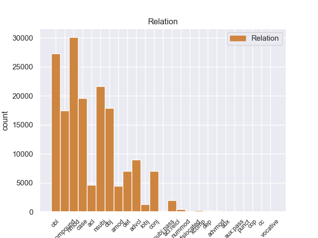
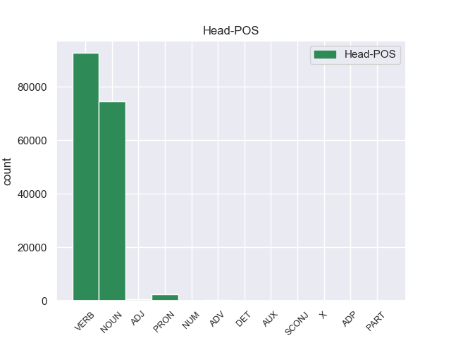
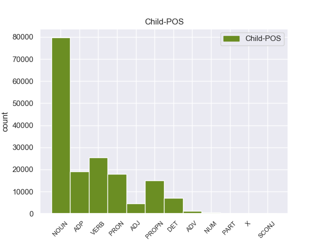

Distribution of features within this leaf



Agreement Rules sorted by frequency.
- When the dependent token is the oblique nominal(obl) of the head token, and the head token is VERB and the dependent token is NOUN.
1 लैब _ _ _ _ 0 _ _ _
2 रिपोर्ट _ _ _ _ 0 _ _ _
3 आने _ _ _ _ 0 _ _ _
4 के _ _ _ _ 0 _ _ _
5 बाद _ _ _ _ 0 _ _ _
6 राज्य _ _ _ _ 0 _ _ _
7 पुलिस _ _ _ _ 0 _ _ _
8 ने _ _ _ _ 0 _ _ _
9 आज _ _ _ _ 0 _ _ _
10 एक _ _ _ _ 0 _ _ _
11 उच्चस्तरीय _ _ _ _ 0 _ _ _
12 बैठक _ _ _ _ 0 _ _ _
13 की _ _ _ _ 0 _ _ _
14 और _ _ _ _ 0 _ _ _
15 मामले मामला NOUN NN Case=Acc|Gender=Masc|Number=Sing|Person=3 23 obl _ ChunkId=NP5|ChunkType=head|Tam=0|Translit=māmale|Vib=0_में
16 में _ _ _ _ 0 _ _ _
17 आगे _ _ _ _ 0 _ _ _
18 की _ _ _ _ 0 _ _ _
19 कार्रवाई _ _ _ _ 0 _ _ _
20 की _ _ _ _ 0 _ _ _
21 रणनीति _ _ _ _ 0 _ _ _
22 तय _ _ _ _ 0 _ _ _
23 की कर VERB VM Aspect=Perf|Gender=Fem|Number=Sing|VerbForm=Part|Voice=Act 0 _ _ _
24 । _ _ _ _ 0 _ _ _
1 लैब _ _ _ _ 0 _ _ _
2 रिपोर्ट _ _ _ _ 0 _ _ _
3 आने _ _ _ _ 0 _ _ _
4 के _ _ _ _ 0 _ _ _
5 बाद _ _ _ _ 0 _ _ _
6 राज्य _ _ _ _ 0 _ _ _
7 पुलिस _ _ _ _ 0 _ _ _
8 ने _ _ _ _ 0 _ _ _
9 आज _ _ _ _ 0 _ _ _
10 एक _ _ _ _ 0 _ _ _
11 उच्चस्तरीय _ _ _ _ 0 _ _ _
12 बैठक _ _ _ _ 0 _ _ _
13 की _ _ _ _ 0 _ _ _
14 और _ _ _ _ 0 _ _ _
15 मामले _ _ _ _ 0 _ _ _
16 में _ _ _ _ 0 _ _ _
17 आगे _ _ _ _ 0 _ _ _
18 की _ _ _ _ 0 _ _ _
19 कार्रवाई कार्रवाई NOUN NN Case=Acc|Gender=Fem|Number=Sing|Person=3 0 _ _ _
20 की का ADP PSP AdpType=Post|Case=Nom|Gender=Fem|Number=Sing 19 case _ ChunkId=NP7|ChunkType=child|Translit=kī
21 रणनीति _ _ _ _ 0 _ _ _
22 तय _ _ _ _ 0 _ _ _
23 की _ _ _ _ 0 _ _ _
24 । _ _ _ _ 0 _ _ _
1 लैब _ _ _ _ 0 _ _ _
2 रिपोर्ट _ _ _ _ 0 _ _ _
3 आने _ _ _ _ 0 _ _ _
4 के _ _ _ _ 0 _ _ _
5 बाद _ _ _ _ 0 _ _ _
6 राज्य _ _ _ _ 0 _ _ _
7 पुलिस _ _ _ _ 0 _ _ _
8 ने _ _ _ _ 0 _ _ _
9 आज _ _ _ _ 0 _ _ _
10 एक _ _ _ _ 0 _ _ _
11 उच्चस्तरीय _ _ _ _ 0 _ _ _
12 बैठक _ _ _ _ 0 _ _ _
13 की _ _ _ _ 0 _ _ _
14 और _ _ _ _ 0 _ _ _
15 मामले _ _ _ _ 0 _ _ _
16 में _ _ _ _ 0 _ _ _
17 आगे _ _ _ _ 0 _ _ _
18 की _ _ _ _ 0 _ _ _
19 कार्रवाई कार्रवाई NOUN NN Case=Acc|Gender=Fem|Number=Sing|Person=3 21 nmod _ ChunkId=NP7|ChunkType=head|Tam=0|Translit=kārravāī|Vib=0_का
20 की _ _ _ _ 0 _ _ _
21 रणनीति रणनीति NOUN NN Case=Nom|Gender=Fem|Number=Sing|Person=3 0 _ _ _
22 तय _ _ _ _ 0 _ _ _
23 की _ _ _ _ 0 _ _ _
24 । _ _ _ _ 0 _ _ _
1 लैब _ _ _ _ 0 _ _ _
2 रिपोर्ट _ _ _ _ 0 _ _ _
3 आने _ _ _ _ 0 _ _ _
4 के _ _ _ _ 0 _ _ _
5 बाद _ _ _ _ 0 _ _ _
6 राज्य _ _ _ _ 0 _ _ _
7 पुलिस _ _ _ _ 0 _ _ _
8 ने _ _ _ _ 0 _ _ _
9 आज _ _ _ _ 0 _ _ _
10 एक _ _ _ _ 0 _ _ _
11 उच्चस्तरीय _ _ _ _ 0 _ _ _
12 बैठक _ _ _ _ 0 _ _ _
13 की _ _ _ _ 0 _ _ _
14 और _ _ _ _ 0 _ _ _
15 मामले _ _ _ _ 0 _ _ _
16 में _ _ _ _ 0 _ _ _
17 आगे _ _ _ _ 0 _ _ _
18 की _ _ _ _ 0 _ _ _
19 कार्रवाई _ _ _ _ 0 _ _ _
20 की _ _ _ _ 0 _ _ _
21 रणनीति रणनीति NOUN NN Case=Nom|Gender=Fem|Number=Sing|Person=3 23 obj _ ChunkId=NP8|ChunkType=head|Tam=0|Translit=raṇanīti|Vib=0
22 तय _ _ _ _ 0 _ _ _
23 की कर VERB VM Aspect=Perf|Gender=Fem|Number=Sing|VerbForm=Part|Voice=Act 0 _ _ _
24 । _ _ _ _ 0 _ _ _
1 लैब _ _ _ _ 0 _ _ _
2 रिपोर्ट _ _ _ _ 0 _ _ _
3 आने _ _ _ _ 0 _ _ _
4 के _ _ _ _ 0 _ _ _
5 बाद _ _ _ _ 0 _ _ _
6 राज्य _ _ _ _ 0 _ _ _
7 पुलिस _ _ _ _ 0 _ _ _
8 ने _ _ _ _ 0 _ _ _
9 आज _ _ _ _ 0 _ _ _
10 एक _ _ _ _ 0 _ _ _
11 उच्चस्तरीय _ _ _ _ 0 _ _ _
12 बैठक बैठक NOUN NN Case=Nom|Gender=Fem|Number=Sing|Person=3 13 compound _ ChunkId=NP4|ChunkType=head|Tam=0|Translit=baiṭhaka|Vib=0
13 की कर VERB VM Aspect=Perf|Gender=Fem|Number=Sing|VerbForm=Part|Voice=Act 0 _ _ _
14 और _ _ _ _ 0 _ _ _
15 मामले _ _ _ _ 0 _ _ _
16 में _ _ _ _ 0 _ _ _
17 आगे _ _ _ _ 0 _ _ _
18 की _ _ _ _ 0 _ _ _
19 कार्रवाई _ _ _ _ 0 _ _ _
20 की _ _ _ _ 0 _ _ _
21 रणनीति _ _ _ _ 0 _ _ _
22 तय _ _ _ _ 0 _ _ _
23 की _ _ _ _ 0 _ _ _
24 । _ _ _ _ 0 _ _ _
1 लैब _ _ _ _ 0 _ _ _
2 रिपोर्ट _ _ _ _ 0 _ _ _
3 आने _ _ _ _ 0 _ _ _
4 के _ _ _ _ 0 _ _ _
5 बाद _ _ _ _ 0 _ _ _
6 राज्य _ _ _ _ 0 _ _ _
7 पुलिस पुलिस NOUN NN Case=Acc|Gender=Fem|Number=Sing|Person=3 13 nsubj _ ChunkId=NP2|ChunkType=head|Tam=0|Translit=pulisa|Vib=0_ने
8 ने _ _ _ _ 0 _ _ _
9 आज _ _ _ _ 0 _ _ _
10 एक _ _ _ _ 0 _ _ _
11 उच्चस्तरीय _ _ _ _ 0 _ _ _
12 बैठक _ _ _ _ 0 _ _ _
13 की कर VERB VM Aspect=Perf|Gender=Fem|Number=Sing|VerbForm=Part|Voice=Act 0 _ _ _
14 और _ _ _ _ 0 _ _ _
15 मामले _ _ _ _ 0 _ _ _
16 में _ _ _ _ 0 _ _ _
17 आगे _ _ _ _ 0 _ _ _
18 की _ _ _ _ 0 _ _ _
19 कार्रवाई _ _ _ _ 0 _ _ _
20 की _ _ _ _ 0 _ _ _
21 रणनीति _ _ _ _ 0 _ _ _
22 तय _ _ _ _ 0 _ _ _
23 की _ _ _ _ 0 _ _ _
24 । _ _ _ _ 0 _ _ _
1 पाकिस्तानी _ _ _ _ 0 _ _ _
2 दैनिक _ _ _ _ 0 _ _ _
3 ' _ _ _ _ 0 _ _ _
4 डॉन _ _ _ _ 0 _ _ _
5 ' _ _ _ _ 0 _ _ _
6 की _ _ _ _ 0 _ _ _
7 रिपोर्ट _ _ _ _ 0 _ _ _
8 के _ _ _ _ 0 _ _ _
9 मुताबिक _ _ _ _ 0 _ _ _
10 अमेरिका _ _ _ _ 0 _ _ _
11 द्वारा _ _ _ _ 0 _ _ _
12 पाकिस्तान _ _ _ _ 0 _ _ _
13 को _ _ _ _ 0 _ _ _
14 गैर _ _ _ _ 0 _ _ _
15 नाटो _ _ _ _ 0 _ _ _
16 सहयोगी _ _ _ _ 0 _ _ _
17 का _ _ _ _ 0 _ _ _
18 दर्जा _ _ _ _ 0 _ _ _
19 दिए दे VERB VM Aspect=Perf|Gender=Masc|Number=Sing|VerbForm=Part 34 advcl _ ChunkId=VGNN|ChunkType=head|Tam=yA|Translit=die|Vib=या_जा+ना_के_बावजूद
20 जाने _ _ _ _ 0 _ _ _
21 के _ _ _ _ 0 _ _ _
22 बावजूद _ _ _ _ 0 _ _ _
23 वहां _ _ _ _ 0 _ _ _
24 भारत _ _ _ _ 0 _ _ _
25 के _ _ _ _ 0 _ _ _
26 प्रधानमंत्री _ _ _ _ 0 _ _ _
27 को _ _ _ _ 0 _ _ _
28 ज्यादा _ _ _ _ 0 _ _ _
29 एहमियत _ _ _ _ 0 _ _ _
30 दिया _ _ _ _ 0 _ _ _
31 जाना _ _ _ _ 0 _ _ _
32 पाकिस्तान _ _ _ _ 0 _ _ _
33 को _ _ _ _ 0 _ _ _
34 खटक खटक VERB VM Gender=Masc|Number=Sing|Voice=Act 0 _ _ _
35 सकता _ _ _ _ 0 _ _ _
36 था _ _ _ _ 0 _ _ _
37 । _ _ _ _ 0 _ _ _
1 यादव _ _ _ _ 0 _ _ _
2 ने _ _ _ _ 0 _ _ _
3 कहा _ _ _ _ 0 _ _ _
4 कि _ _ _ _ 0 _ _ _
5 25 _ _ _ _ 0 _ _ _
6 जून _ _ _ _ 0 _ _ _
7 को _ _ _ _ 0 _ _ _
8 राजग _ _ _ _ 0 _ _ _
9 के _ _ _ _ 0 _ _ _
10 कार्यकर्ता _ _ _ _ 0 _ _ _
11 पूरे _ _ _ _ 0 _ _ _
12 राज्य _ _ _ _ 0 _ _ _
13 में _ _ _ _ 0 _ _ _
14 इस यह DET DEM Case=Acc|Number=Sing|Person=3|PronType=Dem 15 det _ ChunkId=NP6|ChunkType=child|Translit=isa
15 दिन दिन NOUN NN Case=Acc|Gender=Masc|Number=Sing|Person=3 0 _ _ _
16 को _ _ _ _ 0 _ _ _
17 काला _ _ _ _ 0 _ _ _
18 दिवस _ _ _ _ 0 _ _ _
19 के _ _ _ _ 0 _ _ _
20 तौर _ _ _ _ 0 _ _ _
21 पर _ _ _ _ 0 _ _ _
22 मनाएंगे _ _ _ _ 0 _ _ _
23 । _ _ _ _ 0 _ _ _
1 लैब _ _ _ _ 0 _ _ _
2 रिपोर्ट _ _ _ _ 0 _ _ _
3 आने _ _ _ _ 0 _ _ _
4 के _ _ _ _ 0 _ _ _
5 बाद _ _ _ _ 0 _ _ _
6 राज्य राज्य NOUN NNC Case=Nom|Gender=Masc|Number=Sing|Person=3 7 compound _ ChunkId=NP2|ChunkType=child|Tam=0|Translit=rājya|Vib=0
7 पुलिस पुलिस NOUN NN Case=Acc|Gender=Fem|Number=Sing|Person=3 0 _ _ _
8 ने _ _ _ _ 0 _ _ _
9 आज _ _ _ _ 0 _ _ _
10 एक _ _ _ _ 0 _ _ _
11 उच्चस्तरीय _ _ _ _ 0 _ _ _
12 बैठक _ _ _ _ 0 _ _ _
13 की _ _ _ _ 0 _ _ _
14 और _ _ _ _ 0 _ _ _
15 मामले _ _ _ _ 0 _ _ _
16 में _ _ _ _ 0 _ _ _
17 आगे _ _ _ _ 0 _ _ _
18 की _ _ _ _ 0 _ _ _
19 कार्रवाई _ _ _ _ 0 _ _ _
20 की _ _ _ _ 0 _ _ _
21 रणनीति _ _ _ _ 0 _ _ _
22 तय _ _ _ _ 0 _ _ _
23 की _ _ _ _ 0 _ _ _
24 । _ _ _ _ 0 _ _ _
1 पाकिस्तानी _ _ _ _ 0 _ _ _
2 दैनिक _ _ _ _ 0 _ _ _
3 ' _ _ _ _ 0 _ _ _
4 डॉन _ _ _ _ 0 _ _ _
5 ' _ _ _ _ 0 _ _ _
6 की _ _ _ _ 0 _ _ _
7 रिपोर्ट _ _ _ _ 0 _ _ _
8 के _ _ _ _ 0 _ _ _
9 मुताबिक _ _ _ _ 0 _ _ _
10 अमेरिका _ _ _ _ 0 _ _ _
11 द्वारा _ _ _ _ 0 _ _ _
12 पाकिस्तान _ _ _ _ 0 _ _ _
13 को _ _ _ _ 0 _ _ _
14 गैर _ _ _ _ 0 _ _ _
15 नाटो नाटो PROPN NNP Case=Nom|Gender=Masc|Number=Sing|Person=3 16 nmod _ ChunkId=NP6|ChunkType=child|Tam=0|Translit=nāṭo|Vib=0
16 सहयोगी सहयोगी NOUN NN Case=Acc|Gender=Masc|Number=Sing|Person=3 0 _ _ _
17 का _ _ _ _ 0 _ _ _
18 दर्जा _ _ _ _ 0 _ _ _
19 दिए _ _ _ _ 0 _ _ _
20 जाने _ _ _ _ 0 _ _ _
21 के _ _ _ _ 0 _ _ _
22 बावजूद _ _ _ _ 0 _ _ _
23 वहां _ _ _ _ 0 _ _ _
24 भारत _ _ _ _ 0 _ _ _
25 के _ _ _ _ 0 _ _ _
26 प्रधानमंत्री _ _ _ _ 0 _ _ _
27 को _ _ _ _ 0 _ _ _
28 ज्यादा _ _ _ _ 0 _ _ _
29 एहमियत _ _ _ _ 0 _ _ _
30 दिया _ _ _ _ 0 _ _ _
31 जाना _ _ _ _ 0 _ _ _
32 पाकिस्तान _ _ _ _ 0 _ _ _
33 को _ _ _ _ 0 _ _ _
34 खटक _ _ _ _ 0 _ _ _
35 सकता _ _ _ _ 0 _ _ _
36 था _ _ _ _ 0 _ _ _
37 । _ _ _ _ 0 _ _ _
1 उमा _ _ _ _ 0 _ _ _
2 ने _ _ _ _ 0 _ _ _
3 कहा _ _ _ _ 0 _ _ _
4 कि _ _ _ _ 0 _ _ _
5 उन्होंने वह PRON PRP Case=Acc,Erg|Number=Sing|Person=3|Polite=Form|PronType=Prs 12 nsubj _ ChunkId=NP2|ChunkType=head|Tam=ne|Translit=unhoṁne|Vib=ने
6 कभी _ _ _ _ 0 _ _ _
7 पद _ _ _ _ 0 _ _ _
8 के _ _ _ _ 0 _ _ _
9 लिए _ _ _ _ 0 _ _ _
10 काम _ _ _ _ 0 _ _ _
11 नहीं _ _ _ _ 0 _ _ _
12 किया कर VERB VM Aspect=Perf|Gender=Masc|Number=Sing|VerbForm=Part|Voice=Act 0 _ _ _
13 । _ _ _ _ 0 _ _ _
1 दावोस _ _ _ _ 0 _ _ _
2 में _ _ _ _ 0 _ _ _
3 वर्ल्ड _ _ _ _ 0 _ _ _
4 इकोनॉमिक _ _ _ _ 0 _ _ _
5 फोरम _ _ _ _ 0 _ _ _
6 की _ _ _ _ 0 _ _ _
7 बैठक _ _ _ _ 0 _ _ _
8 के _ _ _ _ 0 _ _ _
9 दौरान _ _ _ _ 0 _ _ _
10 भारत _ _ _ _ 0 _ _ _
11 ने _ _ _ _ 0 _ _ _
12 जिस _ _ _ _ 0 _ _ _
13 जोरदार _ _ _ _ 0 _ _ _
14 तरीके _ _ _ _ 0 _ _ _
15 से _ _ _ _ 0 _ _ _
16 अपना अपना PRON PRP Case=Nom|Gender=Masc|Number=Sing|PronType=Prs 17 nmod _ ChunkId=NP6|ChunkType=head|Tam=0|Translit=apanā|Vib=0
17 पक्ष पक्ष NOUN NN Case=Nom|Gender=Masc|Number=Sing|Person=3 0 _ _ _
18 पेश _ _ _ _ 0 _ _ _
19 किया _ _ _ _ 0 _ _ _
20 और _ _ _ _ 0 _ _ _
21 पूरी _ _ _ _ 0 _ _ _
22 बैठक _ _ _ _ 0 _ _ _
23 में _ _ _ _ 0 _ _ _
24 छाया _ _ _ _ 0 _ _ _
25 रहा _ _ _ _ 0 _ _ _
26 , _ _ _ _ 0 _ _ _
27 उसने _ _ _ _ 0 _ _ _
28 दुनिया _ _ _ _ 0 _ _ _
29 भर _ _ _ _ 0 _ _ _
30 के _ _ _ _ 0 _ _ _
31 लोगों _ _ _ _ 0 _ _ _
32 का _ _ _ _ 0 _ _ _
33 ध्यान _ _ _ _ 0 _ _ _
34 अपनी _ _ _ _ 0 _ _ _
35 ओर _ _ _ _ 0 _ _ _
36 खींचा _ _ _ _ 0 _ _ _
37 है _ _ _ _ 0 _ _ _
38 । _ _ _ _ 0 _ _ _
1 यादव _ _ _ _ 0 _ _ _
2 ने _ _ _ _ 0 _ _ _
3 कहा _ _ _ _ 0 _ _ _
4 कि _ _ _ _ 0 _ _ _
5 25 _ _ _ _ 0 _ _ _
6 जून _ _ _ _ 0 _ _ _
7 को _ _ _ _ 0 _ _ _
8 राजग _ _ _ _ 0 _ _ _
9 के _ _ _ _ 0 _ _ _
10 कार्यकर्ता _ _ _ _ 0 _ _ _
11 पूरे _ _ _ _ 0 _ _ _
12 राज्य _ _ _ _ 0 _ _ _
13 में _ _ _ _ 0 _ _ _
14 इस _ _ _ _ 0 _ _ _
15 दिन _ _ _ _ 0 _ _ _
16 को _ _ _ _ 0 _ _ _
17 काला काला ADJ JJ Case=Acc|Gender=Masc|Number=Sing 18 amod _ ChunkId=NP7|ChunkType=child|Translit=kālā
18 दिवस दिवस NOUN NN Case=Acc|Gender=Masc|Number=Sing|Person=3 0 _ _ _
19 के _ _ _ _ 0 _ _ _
20 तौर _ _ _ _ 0 _ _ _
21 पर _ _ _ _ 0 _ _ _
22 मनाएंगे _ _ _ _ 0 _ _ _
23 । _ _ _ _ 0 _ _ _
1 उमा उमा PROPN NNP Case=Acc|Gender=Fem|Number=Sing|Person=3 3 nsubj _ ChunkId=NP|ChunkType=head|Tam=0|Translit=umā|Vib=0_ने
2 ने _ _ _ _ 0 _ _ _
3 कहा कह VERB VM Aspect=Perf|Gender=Masc|Number=Sing|VerbForm=Part|Voice=Act 0 _ _ _
4 कि _ _ _ _ 0 _ _ _
5 उन्होंने _ _ _ _ 0 _ _ _
6 कभी _ _ _ _ 0 _ _ _
7 पद _ _ _ _ 0 _ _ _
8 के _ _ _ _ 0 _ _ _
9 लिए _ _ _ _ 0 _ _ _
10 काम _ _ _ _ 0 _ _ _
11 नहीं _ _ _ _ 0 _ _ _
12 किया _ _ _ _ 0 _ _ _
13 । _ _ _ _ 0 _ _ _
1 वहां _ _ _ _ 0 _ _ _
2 बलवीर _ _ _ _ 0 _ _ _
3 की _ _ _ _ 0 _ _ _
4 सहायता _ _ _ _ 0 _ _ _
5 से _ _ _ _ 0 _ _ _
6 उसने _ _ _ _ 0 _ _ _
7 थाईलैंड _ _ _ _ 0 _ _ _
8 का _ _ _ _ 0 _ _ _
9 वीजा _ _ _ _ 0 _ _ _
10 लिया _ _ _ _ 0 _ _ _
11 और _ _ _ _ 0 _ _ _
12 बैंकाक बैंकाक PROPN NNP Case=Nom|Gender=Masc|Number=Sing|Person=3 13 obl _ ChunkId=NP7|ChunkType=head|Tam=0|Translit=baiṁkāka|Vib=0
13 चला चल VERB VM Aspect=Perf|Gender=Masc|Number=Sing|VerbForm=Part|Voice=Act 0 _ _ _
14 गया _ _ _ _ 0 _ _ _
15 । _ _ _ _ 0 _ _ _
1 उमा _ _ _ _ 0 _ _ _
2 ने _ _ _ _ 0 _ _ _
3 कहा कह VERB VM Aspect=Perf|Gender=Masc|Number=Sing|VerbForm=Part|Voice=Act 0 _ _ _
4 कि _ _ _ _ 0 _ _ _
5 उन्होंने _ _ _ _ 0 _ _ _
6 कभी _ _ _ _ 0 _ _ _
7 पद _ _ _ _ 0 _ _ _
8 के _ _ _ _ 0 _ _ _
9 लिए _ _ _ _ 0 _ _ _
10 काम _ _ _ _ 0 _ _ _
11 नहीं _ _ _ _ 0 _ _ _
12 किया कर VERB VM Aspect=Perf|Gender=Masc|Number=Sing|VerbForm=Part|Voice=Act 3 obj _ ChunkId=VGF2|ChunkType=head|Stype=declarative|Tam=yA|Translit=kiyā|Vib=या
13 । _ _ _ _ 0 _ _ _
1 लैब _ _ _ _ 0 _ _ _
2 रिपोर्ट _ _ _ _ 0 _ _ _
3 आने _ _ _ _ 0 _ _ _
4 के _ _ _ _ 0 _ _ _
5 बाद _ _ _ _ 0 _ _ _
6 राज्य _ _ _ _ 0 _ _ _
7 पुलिस _ _ _ _ 0 _ _ _
8 ने _ _ _ _ 0 _ _ _
9 आज _ _ _ _ 0 _ _ _
10 एक _ _ _ _ 0 _ _ _
11 उच्चस्तरीय _ _ _ _ 0 _ _ _
12 बैठक _ _ _ _ 0 _ _ _
13 की कर VERB VM Aspect=Perf|Gender=Fem|Number=Sing|VerbForm=Part|Voice=Act 0 _ _ _
14 और _ _ _ _ 0 _ _ _
15 मामले _ _ _ _ 0 _ _ _
16 में _ _ _ _ 0 _ _ _
17 आगे _ _ _ _ 0 _ _ _
18 की _ _ _ _ 0 _ _ _
19 कार्रवाई _ _ _ _ 0 _ _ _
20 की _ _ _ _ 0 _ _ _
21 रणनीति _ _ _ _ 0 _ _ _
22 तय _ _ _ _ 0 _ _ _
23 की कर VERB VM Aspect=Perf|Gender=Fem|Number=Sing|VerbForm=Part|Voice=Act 13 conj _ ChunkId=VGF2|ChunkType=head|Stype=declarative|Tam=yA|Translit=kī|Vib=या
24 । _ _ _ _ 0 _ _ _
1 इसमें यह PRON PRP Case=Acc,Ine|Number=Sing|Person=3|PronType=Prs 4 obl _ ChunkId=NP|ChunkType=head|Tam=meM|Translit=isameṁ|Vib=में
2 बनर्जी _ _ _ _ 0 _ _ _
3 ने _ _ _ _ 0 _ _ _
4 कहा कह VERB VM Aspect=Perf|Gender=Masc|Number=Sing|Person=3|VerbForm=Part|Voice=Act 0 _ _ _
5 था _ _ _ _ 0 _ _ _
6 कि _ _ _ _ 0 _ _ _
7 नए _ _ _ _ 0 _ _ _
8 हलफनामे _ _ _ _ 0 _ _ _
9 का _ _ _ _ 0 _ _ _
10 जोर _ _ _ _ 0 _ _ _
11 उन _ _ _ _ 0 _ _ _
12 लोगों _ _ _ _ 0 _ _ _
13 पर _ _ _ _ 0 _ _ _
14 केंद्रित _ _ _ _ 0 _ _ _
15 होना _ _ _ _ 0 _ _ _
16 चाहिए _ _ _ _ 0 _ _ _
17 जिन _ _ _ _ 0 _ _ _
18 लोगों _ _ _ _ 0 _ _ _
19 को _ _ _ _ 0 _ _ _
20 नियंत्रक _ _ _ _ 0 _ _ _
21 एवं _ _ _ _ 0 _ _ _
22 महालेखा _ _ _ _ 0 _ _ _
23 परीक्षक _ _ _ _ 0 _ _ _
24 ( _ _ _ _ 0 _ _ _
25 कैग _ _ _ _ 0 _ _ _
26 ) _ _ _ _ 0 _ _ _
27 की _ _ _ _ 0 _ _ _
28 रिपोर्ट _ _ _ _ 0 _ _ _
29 में _ _ _ _ 0 _ _ _
30 जिम्मेदार _ _ _ _ 0 _ _ _
31 ठहराया _ _ _ _ 0 _ _ _
32 गया _ _ _ _ 0 _ _ _
33 था _ _ _ _ 0 _ _ _
34 . _ _ _ _ 0 _ _ _
1 इस _ _ _ _ 0 _ _ _
2 कोष _ _ _ _ 0 _ _ _
3 का _ _ _ _ 0 _ _ _
4 इस्तेमाल _ _ _ _ 0 _ _ _
5 चिकित्सा _ _ _ _ 0 _ _ _
6 उपकरणों उपकरण NOUN NN Case=Acc|Gender=Masc|Number=Plur|Person=3 0 _ _ _
7 और _ _ _ _ 0 _ _ _
8 दवाइयों दवाई NOUN NN Case=Acc|Gender=Fem|Number=Plur|Person=3 6 conj _ ChunkId=NP4|ChunkType=head|Tam=0|Translit=davāiyoṁ|Vib=0_का
9 की _ _ _ _ 0 _ _ _
10 खरीद _ _ _ _ 0 _ _ _
11 में _ _ _ _ 0 _ _ _
12 किया _ _ _ _ 0 _ _ _
13 जाएगा _ _ _ _ 0 _ _ _
14 ताकि _ _ _ _ 0 _ _ _
15 जरूरतमंदों _ _ _ _ 0 _ _ _
16 तक _ _ _ _ 0 _ _ _
17 फौरन _ _ _ _ 0 _ _ _
18 स्वास्थ्य _ _ _ _ 0 _ _ _
19 सुविधाएं _ _ _ _ 0 _ _ _
20 पहुँचाई _ _ _ _ 0 _ _ _
21 जा _ _ _ _ 0 _ _ _
22 सकें _ _ _ _ 0 _ _ _
23 । _ _ _ _ 0 _ _ _
1 लिहाजा _ _ _ _ 0 _ _ _
2 , _ _ _ _ 0 _ _ _
3 अब _ _ _ _ 0 _ _ _
4 वक्त _ _ _ _ 0 _ _ _
5 आ _ _ _ _ 0 _ _ _
6 गया _ _ _ _ 0 _ _ _
7 है _ _ _ _ 0 _ _ _
8 कि _ _ _ _ 0 _ _ _
9 पूरी _ _ _ _ 0 _ _ _
10 दुनिया _ _ _ _ 0 _ _ _
11 के _ _ _ _ 0 _ _ _
12 अमन _ _ _ _ 0 _ _ _
13 पसंद _ _ _ _ 0 _ _ _
14 देश _ _ _ _ 0 _ _ _
15 अमेरिका _ _ _ _ 0 _ _ _
16 को _ _ _ _ 0 _ _ _
17 नीतियों _ _ _ _ 0 _ _ _
18 में _ _ _ _ 0 _ _ _
19 बदलाव _ _ _ _ 0 _ _ _
20 करने कर VERB VM Case=Acc|Number=Sing|VerbForm=Inf 22 nmod _ ChunkId=VGNN|ChunkType=head|Tam=nA|Translit=karane|Vib=ना_का
21 का _ _ _ _ 0 _ _ _
22 दबाव दबाव NOUN NN Case=Nom|Gender=Masc|Number=Sing|Person=3 0 _ _ _
23 बनाए _ _ _ _ 0 _ _ _
24 । _ _ _ _ 0 _ _ _
1 उन्होंने _ _ _ _ 0 _ _ _
2 बताया _ _ _ _ 0 _ _ _
3 कि _ _ _ _ 0 _ _ _
4 लगभग _ _ _ _ 0 _ _ _
5 डेढ़ _ _ _ _ 0 _ _ _
6 दशक _ _ _ _ 0 _ _ _
7 के _ _ _ _ 0 _ _ _
8 बाद _ _ _ _ 0 _ _ _
9 दिसंबर _ _ _ _ 0 _ _ _
10 माह _ _ _ _ 0 _ _ _
11 में _ _ _ _ 0 _ _ _
12 हुई हो VERB VM Aspect=Perf|Gender=Fem|Number=Sing|VerbForm=Part 13 acl _ ChunkId=VGNF|ChunkType=head|Tam=yA|Translit=huī|Vib=या
13 बर्फबारी बर्फबारी NOUN NN Case=Acc|Gender=Fem|Number=Sing|Person=3 0 _ _ _
14 के _ _ _ _ 0 _ _ _
15 कारण _ _ _ _ 0 _ _ _
16 विंटर _ _ _ _ 0 _ _ _
17 कार्निवल _ _ _ _ 0 _ _ _
18 के _ _ _ _ 0 _ _ _
19 समय _ _ _ _ 0 _ _ _
20 शीतकालीन _ _ _ _ 0 _ _ _
21 खेलों _ _ _ _ 0 _ _ _
22 का _ _ _ _ 0 _ _ _
23 आयोजन _ _ _ _ 0 _ _ _
24 नहीं _ _ _ _ 0 _ _ _
25 किया _ _ _ _ 0 _ _ _
26 जा _ _ _ _ 0 _ _ _
27 सकता _ _ _ _ 0 _ _ _
28 । _ _ _ _ 0 _ _ _
1 प्रधानमंत्री _ _ _ _ 0 _ _ _
2 ने _ _ _ _ 0 _ _ _
3 यह यह PRON PRP Case=Nom|Number=Sing|Person=3|PronType=Prs 5 obj _ ChunkId=NP2|ChunkType=head|Tam=0|Translit=yaha|Vib=0
4 भी _ _ _ _ 0 _ _ _
5 कहा कह VERB VM Aspect=Perf|Gender=Masc|Number=Sing|VerbForm=Part|Voice=Act 0 _ _ _
6 कि _ _ _ _ 0 _ _ _
7 पाकिस्तान _ _ _ _ 0 _ _ _
8 आतंकवादी _ _ _ _ 0 _ _ _
9 शिविरों _ _ _ _ 0 _ _ _
10 को _ _ _ _ 0 _ _ _
11 उखाड़ने _ _ _ _ 0 _ _ _
12 संबंधी _ _ _ _ 0 _ _ _
13 अपनी _ _ _ _ 0 _ _ _
14 प्रतिबद्धता _ _ _ _ 0 _ _ _
15 को _ _ _ _ 0 _ _ _
16 जल्द _ _ _ _ 0 _ _ _
17 पूरा _ _ _ _ 0 _ _ _
18 करे _ _ _ _ 0 _ _ _
19 । _ _ _ _ 0 _ _ _
1 इसी _ _ _ _ 0 _ _ _
2 बात _ _ _ _ 0 _ _ _
3 को _ _ _ _ 0 _ _ _
4 देखते देख VERB VM Aspect=Imp|Gender=Masc|Number=Sing|VerbForm=Part 22 acl _ ChunkId=VGNF|ChunkType=head|Tam=wA|Translit=dekhate|Vib=ता_हो+या
5 हुए _ _ _ _ 0 _ _ _
6 गृह _ _ _ _ 0 _ _ _
7 मंत्रालय _ _ _ _ 0 _ _ _
8 ने _ _ _ _ 0 _ _ _
9 धनंजय _ _ _ _ 0 _ _ _
10 की _ _ _ _ 0 _ _ _
11 फांसी _ _ _ _ 0 _ _ _
12 की _ _ _ _ 0 _ _ _
13 सजा _ _ _ _ 0 _ _ _
14 को _ _ _ _ 0 _ _ _
15 अगले _ _ _ _ 0 _ _ _
16 आदेश _ _ _ _ 0 _ _ _
17 तक _ _ _ _ 0 _ _ _
18 रोक _ _ _ _ 0 _ _ _
19 देने _ _ _ _ 0 _ _ _
20 का _ _ _ _ 0 _ _ _
21 निर्देश _ _ _ _ 0 _ _ _
22 दिया दे VERB VM Aspect=Perf|Gender=Masc|Number=Sing|Person=3|VerbForm=Part|Voice=Act 0 _ _ _
23 है _ _ _ _ 0 _ _ _
24 । _ _ _ _ 0 _ _ _
1 पद्मिनी _ _ _ _ 0 _ _ _
2 के _ _ _ _ 0 _ _ _
3 हाथ _ _ _ _ 0 _ _ _
4 के _ _ _ _ 0 _ _ _
5 बने _ _ _ _ 0 _ _ _
6 हुए _ _ _ _ 0 _ _ _
7 भोजन _ _ _ _ 0 _ _ _
8 मेंनिराला _ _ _ _ 0 _ _ _
9 ही _ _ _ _ 0 _ _ _
10 स्वाद _ _ _ _ 0 _ _ _
11 था _ _ _ _ 0 _ _ _
12 . _ _ _ _ 0 _ _ _
13 सभी _ _ _ _ 0 _ _ _
14 ने _ _ _ _ 0 _ _ _
15 उसभोजन _ _ _ _ 0 _ _ _
16 की _ _ _ _ 0 _ _ _
17 भूरि _ _ _ _ 0 _ _ _
18 - _ _ _ _ 0 _ _ _
19 भूरि _ _ _ _ 0 _ _ _
20 प्रशंसा _ _ _ _ 0 _ _ _
21 की _ _ _ _ 0 _ _ _
22 और _ _ _ _ 0 _ _ _
23 सबसे _ _ _ _ 0 _ _ _
24 अधिकस्वादिष्ट _ _ _ _ 0 _ _ _
25 भोजन _ _ _ _ 0 _ _ _
26 बताया _ _ _ _ 0 _ _ _
27 . _ _ _ _ 0 _ _ _
28 रत्नसेनने _ _ _ _ 0 _ _ _
29 जो _ _ _ _ 0 _ _ _
30 कहा _ _ _ _ 0 _ _ _
31 था _ _ _ _ 0 _ _ _
32 उसे _ _ _ _ 0 _ _ _
33 पूरा _ _ _ _ 0 _ _ _
34 कर _ _ _ _ 0 _ _ _
35 दिखाया _ _ _ _ 0 _ _ _
36 और _ _ _ _ 0 _ _ _
37 अन्त _ _ _ _ 0 _ _ _
38 मेंरत्नसेन _ _ _ _ 0 _ _ _
39 और _ _ _ _ 0 _ _ _
40 पद्मिनी _ _ _ _ 0 _ _ _
41 सुख _ _ _ _ 0 _ _ _
42 - _ _ _ _ 0 _ _ _
43 चैनसे _ _ _ _ 0 _ _ _
44 रहने _ _ _ _ 0 _ _ _
45 लगे _ _ _ _ 0 _ _ _
46 . _ _ _ _ 0 _ _ _
47 एक _ _ _ _ 0 _ _ _
48 राजा _ _ _ _ 0 _ _ _
49 था _ _ _ _ 0 _ _ _
50 . _ _ _ _ 0 _ _ _
51 उसके _ _ _ _ 0 _ _ _
52 तीन _ _ _ _ 0 _ _ _
53 लड़के _ _ _ _ 0 _ _ _
54 और _ _ _ _ 0 _ _ _
55 एकलड़की _ _ _ _ 0 _ _ _
56 थी _ _ _ _ 0 _ _ _
57 . _ _ _ _ 0 _ _ _
58 लड़की _ _ _ _ 0 _ _ _
59 सबसे _ _ _ _ 0 _ _ _
60 बड़ी _ _ _ _ 0 _ _ _
61 थी _ _ _ _ 0 _ _ _
62 , _ _ _ _ 0 _ _ _
63 पर _ _ _ _ 0 _ _ _
64 बहुत _ _ _ _ 0 _ _ _
65 दिन _ _ _ _ 0 _ _ _
66 हुए _ _ _ _ 0 _ _ _
67 वह _ _ _ _ 0 _ _ _
68 ईश्वर _ _ _ _ 0 _ _ _
69 को _ _ _ _ 0 _ _ _
70 प्यारी _ _ _ _ 0 _ _ _
71 हो _ _ _ _ 0 _ _ _
72 गयीथी _ _ _ _ 0 _ _ _
73 . _ _ _ _ 0 _ _ _
74 राजा _ _ _ _ 0 _ _ _
75 ने _ _ _ _ 0 _ _ _
76 उसका _ _ _ _ 0 _ _ _
77 बहुत _ _ _ _ 0 _ _ _
78 इलाज _ _ _ _ 0 _ _ _
79 किया कर VERB VM Aspect=Perf|Gender=Masc|Number=Sing|VerbForm=Part|Voice=Act 177 acl:relcl _ _
80 था _ _ _ _ 0 _ _ _
81 परकुछ _ _ _ _ 0 _ _ _
82 फल _ _ _ _ 0 _ _ _
83 नहीं _ _ _ _ 0 _ _ _
84 निकला _ _ _ _ 0 _ _ _
85 . _ _ _ _ 0 _ _ _
86 राजा _ _ _ _ 0 _ _ _
87 उस _ _ _ _ 0 _ _ _
88 लाड़लीपुत्री _ _ _ _ 0 _ _ _
89 के _ _ _ _ 0 _ _ _
90 दुख _ _ _ _ 0 _ _ _
91 में _ _ _ _ 0 _ _ _
92 दुखी _ _ _ _ 0 _ _ _
93 रहा _ _ _ _ 0 _ _ _
94 करते _ _ _ _ 0 _ _ _
95 थे _ _ _ _ 0 _ _ _
96 . _ _ _ _ 0 _ _ _
97 इस _ _ _ _ 0 _ _ _
98 दुखने _ _ _ _ 0 _ _ _
99 उनके _ _ _ _ 0 _ _ _
100 स्वास्थ्य _ _ _ _ 0 _ _ _
101 पर _ _ _ _ 0 _ _ _
102 भी _ _ _ _ 0 _ _ _
103 प्रभावडाला _ _ _ _ 0 _ _ _
104 . _ _ _ _ 0 _ _ _
105 वे _ _ _ _ 0 _ _ _
106 बीमार _ _ _ _ 0 _ _ _
107 रहने _ _ _ _ 0 _ _ _
108 लगे _ _ _ _ 0 _ _ _
109 . _ _ _ _ 0 _ _ _
110 राजा _ _ _ _ 0 _ _ _
111 के _ _ _ _ 0 _ _ _
112 पैरों _ _ _ _ 0 _ _ _
113 के _ _ _ _ 0 _ _ _
114 जोड़ों _ _ _ _ 0 _ _ _
115 में _ _ _ _ 0 _ _ _
116 बहुत _ _ _ _ 0 _ _ _
117 दर्द _ _ _ _ 0 _ _ _
118 रहता _ _ _ _ 0 _ _ _
119 थाइसलिए _ _ _ _ 0 _ _ _
120 वह _ _ _ _ 0 _ _ _
121 चल _ _ _ _ 0 _ _ _
122 - _ _ _ _ 0 _ _ _
123 फिर _ _ _ _ 0 _ _ _
124 भी _ _ _ _ 0 _ _ _
125 नहीं _ _ _ _ 0 _ _ _
126 सकता _ _ _ _ 0 _ _ _
127 था _ _ _ _ 0 _ _ _
128 . _ _ _ _ 0 _ _ _
129 दिन _ _ _ _ 0 _ _ _
130 - _ _ _ _ 0 _ _ _
131 प्रतिदिनउसकी _ _ _ _ 0 _ _ _
132 हालत _ _ _ _ 0 _ _ _
133 और _ _ _ _ 0 _ _ _
134 अधिक _ _ _ _ 0 _ _ _
135 खराब _ _ _ _ 0 _ _ _
136 हीहोती _ _ _ _ 0 _ _ _
137 चली _ _ _ _ 0 _ _ _
138 गई _ _ _ _ 0 _ _ _
139 . _ _ _ _ 0 _ _ _
140 राजा _ _ _ _ 0 _ _ _
141 के _ _ _ _ 0 _ _ _
142 तीनों _ _ _ _ 0 _ _ _
143 पुत्रों _ _ _ _ 0 _ _ _
144 ने _ _ _ _ 0 _ _ _
145 अपनेपिता _ _ _ _ 0 _ _ _
146 का _ _ _ _ 0 _ _ _
147 बहुत _ _ _ _ 0 _ _ _
148 इलाज _ _ _ _ 0 _ _ _
149 कराया _ _ _ _ 0 _ _ _
150 . _ _ _ _ 0 _ _ _
151 बहुतसे _ _ _ _ 0 _ _ _
152 बैद्यों _ _ _ _ 0 _ _ _
153 को _ _ _ _ 0 _ _ _
154 दिखाया _ _ _ _ 0 _ _ _
155 पर _ _ _ _ 0 _ _ _
156 उनकी _ _ _ _ 0 _ _ _
157 बीमारी _ _ _ _ 0 _ _ _
158 दूर _ _ _ _ 0 _ _ _
159 नहींहुई _ _ _ _ 0 _ _ _
160 . _ _ _ _ 0 _ _ _
161 एक _ _ _ _ 0 _ _ _
162 दिन _ _ _ _ 0 _ _ _
163 एक _ _ _ _ 0 _ _ _
164 बहुत _ _ _ _ 0 _ _ _
165 होशियारबैद्य _ _ _ _ 0 _ _ _
166 दूर _ _ _ _ 0 _ _ _
167 देश _ _ _ _ 0 _ _ _
168 से _ _ _ _ 0 _ _ _
169 बुलाया _ _ _ _ 0 _ _ _
170 गया _ _ _ _ 0 _ _ _
171 . _ _ _ _ 0 _ _ _
172 बैद्य _ _ _ _ 0 _ _ _
173 ने _ _ _ _ 0 _ _ _
174 उन _ _ _ _ 0 _ _ _
175 तीनोंलड़कों _ _ _ _ 0 _ _ _
176 को _ _ _ _ 0 _ _ _
177 बुलाया बुला VERB VM Aspect=Perf|Gender=Masc|Number=Sing|VerbForm=Part|Voice=Act 0 _ _ _
178 और _ _ _ _ 0 _ _ _
179 कहा _ _ _ _ 0 _ _ _
180 - _ _ _ _ 0 _ _ _
181 " _ _ _ _ 0 _ _ _
1 इसके यह PRON PRP Case=Acc,Gen|Number=Sing|Person=3|Poss=Yes|PronType=Prs 0 _ _ _
2 बाद बाद ADP NST AdpType=Post|Case=Nom|Gender=Masc|Number=Sing 1 case _ AltTag=ADP-NOUN|ChunkId=NP|ChunkType=child|Translit=bāda
3 दूसरा _ _ _ _ 0 _ _ _
4 विस्फोट _ _ _ _ 0 _ _ _
5 हुआ _ _ _ _ 0 _ _ _
6 और _ _ _ _ 0 _ _ _
7 आग _ _ _ _ 0 _ _ _
8 लग _ _ _ _ 0 _ _ _
9 गई _ _ _ _ 0 _ _ _
10 । _ _ _ _ 0 _ _ _
1 लिहाजा _ _ _ _ 0 _ _ _
2 , _ _ _ _ 0 _ _ _
3 अब _ _ _ _ 0 _ _ _
4 वक्त _ _ _ _ 0 _ _ _
5 आ _ _ _ _ 0 _ _ _
6 गया _ _ _ _ 0 _ _ _
7 है _ _ _ _ 0 _ _ _
8 कि _ _ _ _ 0 _ _ _
9 पूरी _ _ _ _ 0 _ _ _
10 दुनिया _ _ _ _ 0 _ _ _
11 के _ _ _ _ 0 _ _ _
12 अमन _ _ _ _ 0 _ _ _
13 पसंद _ _ _ _ 0 _ _ _
14 देश _ _ _ _ 0 _ _ _
15 अमेरिका अमेरिका PROPN NNP Case=Acc|Gender=Masc|Number=Sing|Person=3 20 obj _ ChunkId=NP5|ChunkType=head|Tam=0|Translit=amerikā|Vib=0_को
16 को _ _ _ _ 0 _ _ _
17 नीतियों _ _ _ _ 0 _ _ _
18 में _ _ _ _ 0 _ _ _
19 बदलाव _ _ _ _ 0 _ _ _
20 करने कर VERB VM Case=Acc|Number=Sing|VerbForm=Inf 0 _ _ _
21 का _ _ _ _ 0 _ _ _
22 दबाव _ _ _ _ 0 _ _ _
23 बनाए _ _ _ _ 0 _ _ _
24 । _ _ _ _ 0 _ _ _
1 पहले पहले ADV NST AdpType=Post|Case=Nom|Gender=Masc|Number=Sing|Person=3 6 obl _ AltTag=ADV-NOUN|ChunkId=NP|ChunkType=head|Translit=pahale
2 हत्या _ _ _ _ 0 _ _ _
3 का _ _ _ _ 0 _ _ _
4 मामला _ _ _ _ 0 _ _ _
5 दर्ज _ _ _ _ 0 _ _ _
6 हुआ हो VERB VM Aspect=Perf|Gender=Masc|Number=Sing|VerbForm=Part|Voice=Act 0 _ _ _
7 और _ _ _ _ 0 _ _ _
8 अब _ _ _ _ 0 _ _ _
9 उन _ _ _ _ 0 _ _ _
10 पर _ _ _ _ 0 _ _ _
11 मंदिर _ _ _ _ 0 _ _ _
12 से _ _ _ _ 0 _ _ _
13 कीमती _ _ _ _ 0 _ _ _
14 आभूषण _ _ _ _ 0 _ _ _
15 और _ _ _ _ 0 _ _ _
16 शिवलिंग _ _ _ _ 0 _ _ _
17 चुराने _ _ _ _ 0 _ _ _
18 का _ _ _ _ 0 _ _ _
19 आरोप _ _ _ _ 0 _ _ _
20 लगाया _ _ _ _ 0 _ _ _
21 गया _ _ _ _ 0 _ _ _
22 है _ _ _ _ 0 _ _ _
23 । _ _ _ _ 0 _ _ _
1 गरीबी _ _ _ _ 0 _ _ _
2 रेखा _ _ _ _ 0 _ _ _
3 से _ _ _ _ 0 _ _ _
4 नीचे _ _ _ _ 0 _ _ _
5 रहने रह VERB VM Case=Acc|Number=Plur|VerbForm=Inf 7 amod _ ChunkId=VGNN|ChunkType=head|Tam=nA|Translit=rahane|Vib=ना_वाला
6 वाले _ _ _ _ 0 _ _ _
7 बुजुर्गों बुजुर्ग NOUN NN Case=Acc|Gender=Masc|Number=Plur|Person=3 0 _ _ _
8 को _ _ _ _ 0 _ _ _
9 शारीरिक _ _ _ _ 0 _ _ _
10 , _ _ _ _ 0 _ _ _
11 मानसिक _ _ _ _ 0 _ _ _
12 और _ _ _ _ 0 _ _ _
13 आर्थिक _ _ _ _ 0 _ _ _
14 सुरक्षा _ _ _ _ 0 _ _ _
15 देने _ _ _ _ 0 _ _ _
16 के _ _ _ _ 0 _ _ _
17 लिए _ _ _ _ 0 _ _ _
18 कानून _ _ _ _ 0 _ _ _
19 बनाने _ _ _ _ 0 _ _ _
20 के _ _ _ _ 0 _ _ _
21 प्रस्ताव _ _ _ _ 0 _ _ _
22 पर _ _ _ _ 0 _ _ _
23 सभी _ _ _ _ 0 _ _ _
24 राज्यों _ _ _ _ 0 _ _ _
25 ने _ _ _ _ 0 _ _ _
26 अपनी _ _ _ _ 0 _ _ _
27 मुहर _ _ _ _ 0 _ _ _
28 लगा _ _ _ _ 0 _ _ _
29 दी _ _ _ _ 0 _ _ _
30 है _ _ _ _ 0 _ _ _
31 । _ _ _ _ 0 _ _ _
1 लैब _ _ _ _ 0 _ _ _
2 रिपोर्ट _ _ _ _ 0 _ _ _
3 आने आ VERB VM Case=Acc|Number=Sing|Person=3|VerbForm=Inf 13 obl _ ChunkId=VGNN|ChunkType=head|Tam=nA|Translit=āne|Vib=ना_के_बाद
4 के _ _ _ _ 0 _ _ _
5 बाद _ _ _ _ 0 _ _ _
6 राज्य _ _ _ _ 0 _ _ _
7 पुलिस _ _ _ _ 0 _ _ _
8 ने _ _ _ _ 0 _ _ _
9 आज _ _ _ _ 0 _ _ _
10 एक _ _ _ _ 0 _ _ _
11 उच्चस्तरीय _ _ _ _ 0 _ _ _
12 बैठक _ _ _ _ 0 _ _ _
13 की कर VERB VM Aspect=Perf|Gender=Fem|Number=Sing|VerbForm=Part|Voice=Act 0 _ _ _
14 और _ _ _ _ 0 _ _ _
15 मामले _ _ _ _ 0 _ _ _
16 में _ _ _ _ 0 _ _ _
17 आगे _ _ _ _ 0 _ _ _
18 की _ _ _ _ 0 _ _ _
19 कार्रवाई _ _ _ _ 0 _ _ _
20 की _ _ _ _ 0 _ _ _
21 रणनीति _ _ _ _ 0 _ _ _
22 तय _ _ _ _ 0 _ _ _
23 की _ _ _ _ 0 _ _ _
24 । _ _ _ _ 0 _ _ _
1 कर्मचारी _ _ _ _ 0 _ _ _
2 भविष्य _ _ _ _ 0 _ _ _
3 निधि _ _ _ _ 0 _ _ _
4 संगठन _ _ _ _ 0 _ _ _
5 ( _ _ _ _ 0 _ _ _
6 ईपीएफओ _ _ _ _ 0 _ _ _
7 ) _ _ _ _ 0 _ _ _
8 के _ _ _ _ 0 _ _ _
9 इतिहास _ _ _ _ 0 _ _ _
10 में _ _ _ _ 0 _ _ _
11 यह यह PRON PRP Case=Nom|Number=Sing|Person=3|PronType=Prs 13 nsubj _ ChunkId=NP4|ChunkType=head|Tam=0|Translit=yaha|Vib=0
12 दूसरा _ _ _ _ 0 _ _ _
13 मौका मौका NOUN NN Case=Nom|Gender=Masc|Number=Sing|Person=3 0 _ _ _
14 है _ _ _ _ 0 _ _ _
15 , _ _ _ _ 0 _ _ _
16 जब _ _ _ _ 0 _ _ _
17 उसे _ _ _ _ 0 _ _ _
18 विशेष _ _ _ _ 0 _ _ _
19 आरक्षित _ _ _ _ 0 _ _ _
20 निधि _ _ _ _ 0 _ _ _
21 से _ _ _ _ 0 _ _ _
22 धन _ _ _ _ 0 _ _ _
23 लेना _ _ _ _ 0 _ _ _
24 पड़ _ _ _ _ 0 _ _ _
25 रहा _ _ _ _ 0 _ _ _
26 हो _ _ _ _ 0 _ _ _
27 । _ _ _ _ 0 _ _ _
1 उन्होंने _ _ _ _ 0 _ _ _
2 कहा _ _ _ _ 0 _ _ _
3 कि _ _ _ _ 0 _ _ _
4 यदि _ _ _ _ 0 _ _ _
5 लोहान _ _ _ _ 0 _ _ _
6 खाप _ _ _ _ 0 _ _ _
7 के _ _ _ _ 0 _ _ _
8 लोग _ _ _ _ 0 _ _ _
9 वधू _ _ _ _ 0 _ _ _
10 पक्ष _ _ _ _ 0 _ _ _
11 से _ _ _ _ 0 _ _ _
12 यह _ _ _ _ 0 _ _ _
13 कह _ _ _ _ 0 _ _ _
14 दें _ _ _ _ 0 _ _ _
15 कि _ _ _ _ 0 _ _ _
16 उन्हें _ _ _ _ 0 _ _ _
17 इस _ _ _ _ 0 _ _ _
18 रिश्ते _ _ _ _ 0 _ _ _
19 से _ _ _ _ 0 _ _ _
20 कोई कोई PRON PRP Case=Nom|Number=Sing|Person=3|PronType=Prs 21 case _ ChunkId=NP8|ChunkType=child|Tam=0|Translit=koī|Vib=0
21 आपत्ति आपत्ति NOUN NN Case=Nom|Gender=Fem|Number=Sing|Person=3 0 _ _ _
22 नहीं _ _ _ _ 0 _ _ _
23 है _ _ _ _ 0 _ _ _
24 , _ _ _ _ 0 _ _ _
25 तो _ _ _ _ 0 _ _ _
26 पंचायत _ _ _ _ 0 _ _ _
27 अपना _ _ _ _ 0 _ _ _
28 फैसला _ _ _ _ 0 _ _ _
29 वापस _ _ _ _ 0 _ _ _
30 ले _ _ _ _ 0 _ _ _
31 सकती _ _ _ _ 0 _ _ _
32 है _ _ _ _ 0 _ _ _
33 । _ _ _ _ 0 _ _ _
1 घटना _ _ _ _ 0 _ _ _
2 के _ _ _ _ 0 _ _ _
3 तत्काल _ _ _ _ 0 _ _ _
4 बाद _ _ _ _ 0 _ _ _
5 ही _ _ _ _ 0 _ _ _
6 बड़ी _ _ _ _ 0 _ _ _
7 संख्या _ _ _ _ 0 _ _ _
8 में _ _ _ _ 0 _ _ _
9 ग्रामीण _ _ _ _ 0 _ _ _
10 इकट्ठे इकट्ठा ADJ JJ Gender=Masc|Number=Plur 11 compound _ ChunkId=JJP|ChunkType=head|Translit=ikaṭṭhe
11 हो हो VERB VM Number=Plur|Voice=Act 0 _ _ _
12 गए _ _ _ _ 0 _ _ _
13 । _ _ _ _ 0 _ _ _
1 पाकिस्तान _ _ _ _ 0 _ _ _
2 का _ _ _ _ 0 _ _ _
3 पंजाब _ _ _ _ 0 _ _ _
4 प्रांत प्रांत NOUN NN Case=Nom|Gender=Masc|Number=Sing|Person=3 11 nsubj _ ChunkId=NP2|ChunkType=head|Tam=0|Translit=prāṁta|Vib=0
5 जेहादियों _ _ _ _ 0 _ _ _
6 की _ _ _ _ 0 _ _ _
7 भर्ती _ _ _ _ 0 _ _ _
8 का _ _ _ _ 0 _ _ _
9 सबसे _ _ _ _ 0 _ _ _
10 बड़ा _ _ _ _ 0 _ _ _
11 अड्डा अड्डा NOUN NN Case=Nom|Gender=Masc|Number=Sing|Person=3 0 _ _ _
12 है _ _ _ _ 0 _ _ _
13 । _ _ _ _ 0 _ _ _
1 मारे _ _ _ _ 0 _ _ _
2 गए _ _ _ _ 0 _ _ _
3 दोनों दो NUM QC Number=Plur|NumType=Card 4 nummod _ ChunkId=NP|ChunkType=child|Translit=donoṁ
4 आतंकी आतंकी NOUN NN Case=Nom|Gender=Masc|Number=Plur|Person=3 0 _ _ _
5 लश्कर _ _ _ _ 0 _ _ _
6 - _ _ _ _ 0 _ _ _
7 ए _ _ _ _ 0 _ _ _
8 - _ _ _ _ 0 _ _ _
9 ताइबा _ _ _ _ 0 _ _ _
10 से _ _ _ _ 0 _ _ _
11 संबंधित _ _ _ _ 0 _ _ _
12 हैं _ _ _ _ 0 _ _ _
13 । _ _ _ _ 0 _ _ _
1 लिहाजा _ _ _ _ 0 _ _ _
2 नेतृत्व _ _ _ _ 0 _ _ _
3 के _ _ _ _ 0 _ _ _
4 लिए _ _ _ _ 0 _ _ _
5 इसी _ _ _ _ 0 _ _ _
6 वर्ग वर्ग NOUN NN Case=Acc|Gender=Masc|Number=Sing|Person=3 9 iobj _ ChunkId=NP2|ChunkType=head|Tam=0|Translit=varga|Vib=0_को
7 को _ _ _ _ 0 _ _ _
8 प्राथमिकता _ _ _ _ 0 _ _ _
9 दी दे VERB VM Aspect=Perf|Gender=Fem|Number=Sing|VerbForm=Part|Voice=Act 0 _ _ _
10 जाए _ _ _ _ 0 _ _ _
11 । _ _ _ _ 0 _ _ _
1 पाकिस्तानी _ _ _ _ 0 _ _ _
2 दैनिक _ _ _ _ 0 _ _ _
3 ' _ _ _ _ 0 _ _ _
4 डॉन _ _ _ _ 0 _ _ _
5 ' _ _ _ _ 0 _ _ _
6 की _ _ _ _ 0 _ _ _
7 रिपोर्ट _ _ _ _ 0 _ _ _
8 के _ _ _ _ 0 _ _ _
9 मुताबिक _ _ _ _ 0 _ _ _
10 अमेरिका _ _ _ _ 0 _ _ _
11 द्वारा _ _ _ _ 0 _ _ _
12 पाकिस्तान पाकिस्तान PROPN NNP Case=Acc|Gender=Masc|Number=Sing|Person=3 19 iobj _ ChunkId=NP5|ChunkType=head|Tam=0|Translit=pākistāna|Vib=0_को
13 को _ _ _ _ 0 _ _ _
14 गैर _ _ _ _ 0 _ _ _
15 नाटो _ _ _ _ 0 _ _ _
16 सहयोगी _ _ _ _ 0 _ _ _
17 का _ _ _ _ 0 _ _ _
18 दर्जा _ _ _ _ 0 _ _ _
19 दिए दे VERB VM Aspect=Perf|Gender=Masc|Number=Sing|VerbForm=Part 0 _ _ _
20 जाने _ _ _ _ 0 _ _ _
21 के _ _ _ _ 0 _ _ _
22 बावजूद _ _ _ _ 0 _ _ _
23 वहां _ _ _ _ 0 _ _ _
24 भारत _ _ _ _ 0 _ _ _
25 के _ _ _ _ 0 _ _ _
26 प्रधानमंत्री _ _ _ _ 0 _ _ _
27 को _ _ _ _ 0 _ _ _
28 ज्यादा _ _ _ _ 0 _ _ _
29 एहमियत _ _ _ _ 0 _ _ _
30 दिया _ _ _ _ 0 _ _ _
31 जाना _ _ _ _ 0 _ _ _
32 पाकिस्तान _ _ _ _ 0 _ _ _
33 को _ _ _ _ 0 _ _ _
34 खटक _ _ _ _ 0 _ _ _
35 सकता _ _ _ _ 0 _ _ _
36 था _ _ _ _ 0 _ _ _
37 । _ _ _ _ 0 _ _ _
1 उत्तर _ _ _ _ 0 _ _ _
2 प्रदेश _ _ _ _ 0 _ _ _
3 से _ _ _ _ 0 _ _ _
4 कल्याण _ _ _ _ 0 _ _ _
5 सिंह _ _ _ _ 0 _ _ _
6 उपाध्यक्ष उपाध्यक्ष NOUN NN Case=Nom|Gender=Masc|Number=Sing|Person=3 0 _ _ _
7 , _ _ _ _ 0 _ _ _
8 राजनाथ _ _ _ _ 0 _ _ _
9 सिंह _ _ _ _ 0 _ _ _
10 महासचिव _ _ _ _ 0 _ _ _
11 और _ _ _ _ 0 _ _ _
12 कलराज _ _ _ _ 0 _ _ _
13 मिश्रा मिश्रा PROPN NNP Case=Acc|Number=Sing|Person=3 6 conj _ ChunkId=NP6|ChunkType=head|Tam=0|Translit=miśrā|Vib=0_को
14 को _ _ _ _ 0 _ _ _
15 कार्यकारिणी _ _ _ _ 0 _ _ _
16 का _ _ _ _ 0 _ _ _
17 सदस्य _ _ _ _ 0 _ _ _
18 बनाया _ _ _ _ 0 _ _ _
19 गया _ _ _ _ 0 _ _ _
20 है _ _ _ _ 0 _ _ _
21 । _ _ _ _ 0 _ _ _
1 उन्होंने _ _ _ _ 0 _ _ _
2 कहा _ _ _ _ 0 _ _ _
3 कि _ _ _ _ 0 _ _ _
4 किसी कोई PRON PRP Case=Acc|Number=Sing|Person=3|PronType=Prs 12 iobj _ ChunkId=NP2|ChunkType=head|Tam=0|Translit=kisī|Vib=0_को
5 को _ _ _ _ 0 _ _ _
6 भी _ _ _ _ 0 _ _ _
7 हार _ _ _ _ 0 _ _ _
8 आसानी _ _ _ _ 0 _ _ _
9 से _ _ _ _ 0 _ _ _
10 हजम _ _ _ _ 0 _ _ _
11 नहीं _ _ _ _ 0 _ _ _
12 होती हो VERB VM Aspect=Imp|Gender=Fem|Number=Sing|VerbForm=Part|Voice=Act 0 _ _ _
13 और _ _ _ _ 0 _ _ _
14 यही _ _ _ _ 0 _ _ _
15 भाजपा _ _ _ _ 0 _ _ _
16 के _ _ _ _ 0 _ _ _
17 भी _ _ _ _ 0 _ _ _
18 साथ _ _ _ _ 0 _ _ _
19 हो _ _ _ _ 0 _ _ _
20 रहा _ _ _ _ 0 _ _ _
21 है _ _ _ _ 0 _ _ _
22 । _ _ _ _ 0 _ _ _
1 पिछले _ _ _ _ 0 _ _ _
2 हफ्ते _ _ _ _ 0 _ _ _
3 इसमें _ _ _ _ 0 _ _ _
4 तीन _ _ _ _ 0 _ _ _
5 फीसदी _ _ _ _ 0 _ _ _
6 की _ _ _ _ 0 _ _ _
7 कमी कमी NOUN NN Case=Nom|Gender=Fem|Number=Sing|Person=3 0 _ _ _
8 थी _ _ _ _ 0 _ _ _
9 लेकिन _ _ _ _ 0 _ _ _
10 बीते _ _ _ _ 0 _ _ _
11 पूरे _ _ _ _ 0 _ _ _
12 सप्ताह _ _ _ _ 0 _ _ _
13 बारिश _ _ _ _ 0 _ _ _
14 न _ _ _ _ 0 _ _ _
15 होने _ _ _ _ 0 _ _ _
16 के _ _ _ _ 0 _ _ _
17 कारण _ _ _ _ 0 _ _ _
18 इसमें _ _ _ _ 0 _ _ _
19 तीन _ _ _ _ 0 _ _ _
20 फीसदी _ _ _ _ 0 _ _ _
21 की _ _ _ _ 0 _ _ _
22 और _ _ _ _ 0 _ _ _
23 बढ़ोत्तरी _ _ _ _ 0 _ _ _
24 हुई हो VERB VM Aspect=Perf|Gender=Fem|Number=Sing|Person=3|VerbForm=Part|Voice=Act 7 conj _ ChunkId=VGF2|ChunkType=head|Stype=declarative|Tam=yA|Translit=huī|Vib=या_है
25 है _ _ _ _ 0 _ _ _
26 । _ _ _ _ 0 _ _ _
1 प्रधानमंत्री _ _ _ _ 0 _ _ _
2 ने _ _ _ _ 0 _ _ _
3 यह यह PRON PRP Case=Nom|Number=Sing|Person=3|PronType=Prs 0 _ _ _
4 भी _ _ _ _ 0 _ _ _
5 कहा _ _ _ _ 0 _ _ _
6 कि _ _ _ _ 0 _ _ _
7 पाकिस्तान _ _ _ _ 0 _ _ _
8 आतंकवादी _ _ _ _ 0 _ _ _
9 शिविरों _ _ _ _ 0 _ _ _
10 को _ _ _ _ 0 _ _ _
11 उखाड़ने _ _ _ _ 0 _ _ _
12 संबंधी _ _ _ _ 0 _ _ _
13 अपनी _ _ _ _ 0 _ _ _
14 प्रतिबद्धता _ _ _ _ 0 _ _ _
15 को _ _ _ _ 0 _ _ _
16 जल्द _ _ _ _ 0 _ _ _
17 पूरा _ _ _ _ 0 _ _ _
18 करे कर VERB VM Mood=Sub|Number=Sing|Person=3|VerbForm=Fin|Voice=Act 3 acl _ ChunkId=VGF2|ChunkType=head|Stype=imperative|Tam=eM|Translit=kare|Vib=एं
19 । _ _ _ _ 0 _ _ _
1 रक्षा _ _ _ _ 0 _ _ _
2 मंत्री _ _ _ _ 0 _ _ _
3 के _ _ _ _ 0 _ _ _
4 जापान _ _ _ _ 0 _ _ _
5 जाने _ _ _ _ 0 _ _ _
6 का _ _ _ _ 0 _ _ _
7 कार्यक्रम _ _ _ _ 0 _ _ _
8 कुछ _ _ _ _ 0 _ _ _
9 महीनों _ _ _ _ 0 _ _ _
10 के _ _ _ _ 0 _ _ _
11 अंदर _ _ _ _ 0 _ _ _
12 बन बन VERB VM Number=Sing|Person=3|Voice=Act 0 _ _ _
13 जाएगा _ _ _ _ 0 _ _ _
14 , _ _ _ _ 0 _ _ _
15 जबकि _ _ _ _ 0 _ _ _
16 प्रधानमंत्री _ _ _ _ 0 _ _ _
17 की _ _ _ _ 0 _ _ _
18 जापान _ _ _ _ 0 _ _ _
19 यात्रा _ _ _ _ 0 _ _ _
20 भी _ _ _ _ 0 _ _ _
21 इसी _ _ _ _ 0 _ _ _
22 साल _ _ _ _ 0 _ _ _
23 होने _ _ _ _ 0 _ _ _
24 की _ _ _ _ 0 _ _ _
25 उम्मीद उम्मीद NOUN NN Case=Nom|Gender=Fem|Number=Sing|Person=3 12 conj _ ChunkId=NP8|ChunkType=head|Tam=0|Translit=ummīda|Vib=0
26 है _ _ _ _ 0 _ _ _
27 । _ _ _ _ 0 _ _ _
1 इनमें _ _ _ _ 0 _ _ _
2 ४०८ _ _ _ _ 0 _ _ _
3 मछुआरे मछुआरा NOUN NN Case=Nom|Gender=Masc|Number=Plur|Person=3 0 _ _ _
4 हैं _ _ _ _ 0 _ _ _
5 , _ _ _ _ 0 _ _ _
6 जो _ _ _ _ 0 _ _ _
7 धोखे _ _ _ _ 0 _ _ _
8 से _ _ _ _ 0 _ _ _
9 पाकिस्तान _ _ _ _ 0 _ _ _
10 की _ _ _ _ 0 _ _ _
11 समुद्री _ _ _ _ 0 _ _ _
12 सीमा _ _ _ _ 0 _ _ _
13 में _ _ _ _ 0 _ _ _
14 पहुंच पहुंच VERB VM Gender=Masc|Number=Plur|Voice=Act 3 acl:relcl _ ChunkId=VGF2|ChunkType=head|Stype=declarative|Tam=0|Translit=pahuṁca|Vib=0_जा+या_था
15 गए _ _ _ _ 0 _ _ _
16 थे _ _ _ _ 0 _ _ _
17 । _ _ _ _ 0 _ _ _
1 सम्मेलन _ _ _ _ 0 _ _ _
2 की _ _ _ _ 0 _ _ _
3 अध्यक्षता _ _ _ _ 0 _ _ _
4 कर _ _ _ _ 0 _ _ _
5 रहे _ _ _ _ 0 _ _ _
6 बंगरप्पा _ _ _ _ 0 _ _ _
7 ने _ _ _ _ 0 _ _ _
8 कहा _ _ _ _ 0 _ _ _
9 कि _ _ _ _ 0 _ _ _
10 वह _ _ _ _ 0 _ _ _
11 यह _ _ _ _ 0 _ _ _
12 सोचकर _ _ _ _ 0 _ _ _
13 भाजपा _ _ _ _ 0 _ _ _
14 में _ _ _ _ 0 _ _ _
15 शामिल _ _ _ _ 0 _ _ _
16 हुए _ _ _ _ 0 _ _ _
17 थे _ _ _ _ 0 _ _ _
18 कि _ _ _ _ 0 _ _ _
19 वह _ _ _ _ 0 _ _ _
20 उसमें _ _ _ _ 0 _ _ _
21 बदलाव _ _ _ _ 0 _ _ _
22 लाएंगे _ _ _ _ 0 _ _ _
23 , _ _ _ _ 0 _ _ _
24 लेकिन _ _ _ _ 0 _ _ _
25 वहां _ _ _ _ 0 _ _ _
26 जाने _ _ _ _ 0 _ _ _
27 के _ _ _ _ 0 _ _ _
28 बाद _ _ _ _ 0 _ _ _
29 महसूस _ _ _ _ 0 _ _ _
30 हुआ हो VERB VM Aspect=Perf|Gender=Masc|Number=Sing|VerbForm=Part|Voice=Act 0 _ _ _
31 कि _ _ _ _ 0 _ _ _
32 उन्हें _ _ _ _ 0 _ _ _
33 बदला बदल VERB VM Aspect=Perf|Number=Sing|VerbForm=Part|Voice=Pass 30 nsubj _ ChunkId=VGF5|ChunkType=head|Stype=declarative|Tam=yA|Translit=badalā|Vib=या_जा_सक+ता
34 नहीं _ _ _ _ 0 _ _ _
35 जा _ _ _ _ 0 _ _ _
36 सकता _ _ _ _ 0 _ _ _
37 । _ _ _ _ 0 _ _ _
1 उस _ _ _ _ 0 _ _ _
2 समय _ _ _ _ 0 _ _ _
3 की _ _ _ _ 0 _ _ _
4 सरकार _ _ _ _ 0 _ _ _
5 ने _ _ _ _ 0 _ _ _
6 जो _ _ _ _ 0 _ _ _
7 नियम _ _ _ _ 0 _ _ _
8 बनाए _ _ _ _ 0 _ _ _
9 वह _ _ _ _ 0 _ _ _
10 उसका _ _ _ _ 0 _ _ _
11 अधिकार _ _ _ _ 0 _ _ _
12 था _ _ _ _ 0 _ _ _
13 और _ _ _ _ 0 _ _ _
14 उन _ _ _ _ 0 _ _ _
15 नियमों _ _ _ _ 0 _ _ _
16 के _ _ _ _ 0 _ _ _
17 तहत _ _ _ _ 0 _ _ _
18 जो _ _ _ _ 0 _ _ _
19 खरीद _ _ _ _ 0 _ _ _
20 हुई _ _ _ _ 0 _ _ _
21 है _ _ _ _ 0 _ _ _
22 उस वह PRON PRP Case=Acc|Number=Sing|Person=3|PronType=Prs 0 _ _ _
23 बारे _ _ _ _ 0 _ _ _
24 में _ _ _ _ 0 _ _ _
25 कहा _ _ _ _ 0 _ _ _
26 गया _ _ _ _ 0 _ _ _
27 है _ _ _ _ 0 _ _ _
28 कि _ _ _ _ 0 _ _ _
29 नियमानुसार _ _ _ _ 0 _ _ _
30 हुई हो VERB VM Aspect=Perf|Gender=Fem|Number=Sing|Person=3|VerbForm=Part|Voice=Act 22 acl:relcl _ ChunkId=VGF5|ChunkType=head|Stype=declarative|Tam=yA|Translit=huī|Vib=या_है
31 है _ _ _ _ 0 _ _ _
32 . _ _ _ _ 0 _ _ _
1 ओ _ _ _ _ 0 _ _ _
2 . _ _ _ _ 0 _ _ _
3 . _ _ _ _ 0 _ _ _
4 . _ _ _ _ 0 _ _ _
5 ओ ओ PROPN NNP Case=Nom|Gender=Fem|Number=Sing|Person=3 9 compound _ _
6 . _ _ _ _ 0 _ _ _
7 . _ _ _ _ 0 _ _ _
8 . _ _ _ _ 0 _ _ _
9 ओ ओ VERB VM Number=Sing|Person=2|Polite=Form|Voice=Act 0 _ _ _
10 कर _ _ _ _ 0 _ _ _
11 ! _ _ _ _ 0 _ _ _
1 माथुर _ _ _ _ 0 _ _ _
2 ने _ _ _ _ 0 _ _ _
3 तो _ _ _ _ 0 _ _ _
4 ३६ _ _ _ _ 0 _ _ _
5 गृह _ _ _ _ 0 _ _ _
6 निर्माण _ _ _ _ 0 _ _ _
7 सहकारी _ _ _ _ 0 _ _ _
8 समितियों _ _ _ _ 0 _ _ _
9 को _ _ _ _ 0 _ _ _
10 सात _ _ _ _ 0 _ _ _
11 हजार _ _ _ _ 0 _ _ _
12 प्लाट _ _ _ _ 0 _ _ _
13 की _ _ _ _ 0 _ _ _
14 करीब _ _ _ _ 0 _ _ _
15 तेरह _ _ _ _ 0 _ _ _
16 लाख _ _ _ _ 0 _ _ _
17 वर्ग _ _ _ _ 0 _ _ _
18 मीटर _ _ _ _ 0 _ _ _
19 जमीन _ _ _ _ 0 _ _ _
20 छोड़ _ _ _ _ 0 _ _ _
21 दी _ _ _ _ 0 _ _ _
22 . _ _ _ _ 0 _ _ _
23 इसकी _ _ _ _ 0 _ _ _
24 कीमत _ _ _ _ 0 _ _ _
25 ३० _ _ _ _ 0 _ _ _
26 करोड़ _ _ _ _ 0 _ _ _
27 रुपये _ _ _ _ 0 _ _ _
28 बैठती _ _ _ _ 0 _ _ _
29 है _ _ _ _ 0 _ _ _
30 . _ _ _ _ 0 _ _ _
31 कहा _ _ _ _ 0 _ _ _
32 जाता _ _ _ _ 0 _ _ _
33 है _ _ _ _ 0 _ _ _
34 कि _ _ _ _ 0 _ _ _
35 इस _ _ _ _ 0 _ _ _
36 मामले _ _ _ _ 0 _ _ _
37 में _ _ _ _ 0 _ _ _
38 भारी _ _ _ _ 0 _ _ _
39 सौदेबाजी _ _ _ _ 0 _ _ _
40 हुई _ _ _ _ 0 _ _ _
41 . _ _ _ _ 0 _ _ _
42 जब _ _ _ _ 0 _ _ _
43 इस _ _ _ _ 0 _ _ _
44 मामले _ _ _ _ 0 _ _ _
45 की _ _ _ _ 0 _ _ _
46 शिकायत _ _ _ _ 0 _ _ _
47 होने _ _ _ _ 0 _ _ _
48 लगी _ _ _ _ 0 _ _ _
49 तथा _ _ _ _ 0 _ _ _
50 जांच _ _ _ _ 0 _ _ _
51 की _ _ _ _ 0 _ _ _
52 प्रक्रिया _ _ _ _ 0 _ _ _
53 सामने _ _ _ _ 0 _ _ _
54 आयी _ _ _ _ 0 _ _ _
55 तो _ _ _ _ 0 _ _ _
56 माथुर _ _ _ _ 0 _ _ _
57 ने _ _ _ _ 0 _ _ _
58 एकदम _ _ _ _ 0 _ _ _
59 अनजान _ _ _ _ 0 _ _ _
60 बनते _ _ _ _ 0 _ _ _
61 हुए _ _ _ _ 0 _ _ _
62 अतिरिक्त _ _ _ _ 0 _ _ _
63 कलेक्टर _ _ _ _ 0 _ _ _
64 जयपुर _ _ _ _ 0 _ _ _
65 को _ _ _ _ 0 _ _ _
66 लिखा _ _ _ _ 0 _ _ _
67 कि _ _ _ _ 0 _ _ _
68 ` _ _ _ _ 0 _ _ _
69 जयपुर _ _ _ _ 0 _ _ _
70 विकास _ _ _ _ 0 _ _ _
71 प्राधिकरण _ _ _ _ 0 _ _ _
72 द्वारा _ _ _ _ 0 _ _ _
73 जिलाधीश _ _ _ _ 0 _ _ _
74 कार्यालय _ _ _ _ 0 _ _ _
75 को _ _ _ _ 0 _ _ _
76 कुछ _ _ _ _ 0 _ _ _
77 ऐसी _ _ _ _ 0 _ _ _
78 योजनाओं _ _ _ _ 0 _ _ _
79 की _ _ _ _ 0 _ _ _
80 कृषि _ _ _ _ 0 _ _ _
81 भूमि _ _ _ _ 0 _ _ _
82 रूपांतरण _ _ _ _ 0 _ _ _
83 के _ _ _ _ 0 _ _ _
84 लिए _ _ _ _ 0 _ _ _
85 सिफारिश _ _ _ _ 0 _ _ _
86 कर _ _ _ _ 0 _ _ _
87 दी _ _ _ _ 0 _ _ _
88 गयी _ _ _ _ 0 _ _ _
89 है _ _ _ _ 0 _ _ _
90 , _ _ _ _ 0 _ _ _
91 जो _ _ _ _ 0 _ _ _
92 भूमि _ _ _ _ 0 _ _ _
93 सरकारी _ _ _ _ 0 _ _ _
94 है _ _ _ _ 0 _ _ _
95 तथा _ _ _ _ 0 _ _ _
96 प्राधिकरण _ _ _ _ 0 _ _ _
97 द्वारा _ _ _ _ 0 _ _ _
98 इन _ _ _ _ 0 _ _ _
99 पर _ _ _ _ 0 _ _ _
100 कब्जा _ _ _ _ 0 _ _ _
101 भी _ _ _ _ 0 _ _ _
102 लिया _ _ _ _ 0 _ _ _
103 जा _ _ _ _ 0 _ _ _
104 चुका _ _ _ _ 0 _ _ _
105 है _ _ _ _ 0 _ _ _
106 . _ _ _ _ 0 _ _ _
107 चूंकि _ _ _ _ 0 _ _ _
108 भूमि _ _ _ _ 0 _ _ _
109 के _ _ _ _ 0 _ _ _
110 स्वामित्व _ _ _ _ 0 _ _ _
111 की _ _ _ _ 0 _ _ _
112 जांच _ _ _ _ 0 _ _ _
113 जिलाधीश _ _ _ _ 0 _ _ _
114 कार्यालयों _ _ _ _ 0 _ _ _
115 के _ _ _ _ 0 _ _ _
116 स्तर _ _ _ _ 0 _ _ _
117 पर _ _ _ _ 0 _ _ _
118 होती _ _ _ _ 0 _ _ _
119 है _ _ _ _ 0 _ _ _
120 , _ _ _ _ 0 _ _ _
121 इसलिए _ _ _ _ 0 _ _ _
122 यह _ _ _ _ 0 _ _ _
123 कार्रवाई _ _ _ _ 0 _ _ _
124 प्राधिकरण _ _ _ _ 0 _ _ _
125 के _ _ _ _ 0 _ _ _
126 स्तर _ _ _ _ 0 _ _ _
127 पर _ _ _ _ 0 _ _ _
128 नहीं _ _ _ _ 0 _ _ _
129 की _ _ _ _ 0 _ _ _
130 गयी _ _ _ _ 0 _ _ _
131 है _ _ _ _ 0 _ _ _
132 . _ _ _ _ 0 _ _ _
133 संलग्न _ _ _ _ 0 _ _ _
134 सूची _ _ _ _ 0 _ _ _
135 में _ _ _ _ 0 _ _ _
136 दर्शायी _ _ _ _ 0 _ _ _
137 गयी _ _ _ _ 0 _ _ _
138 योजनाएं _ _ _ _ 0 _ _ _
139 यदि _ _ _ _ 0 _ _ _
140 जिलाधीश _ _ _ _ 0 _ _ _
141 कार्यालय _ _ _ _ 0 _ _ _
142 में _ _ _ _ 0 _ _ _
143 विचाराधीन _ _ _ _ 0 _ _ _
144 है _ _ _ _ 0 _ _ _
145 , _ _ _ _ 0 _ _ _
146 उन _ _ _ _ 0 _ _ _
147 पर _ _ _ _ 0 _ _ _
148 कार्रवाई _ _ _ _ 0 _ _ _
149 न _ _ _ _ 0 _ _ _
150 की _ _ _ _ 0 _ _ _
151 जाए _ _ _ _ 0 _ _ _
152 . _ _ _ _ 0 _ _ _
153 ' _ _ _ _ 0 _ _ _
154 सवाल _ _ _ _ 0 _ _ _
155 पैदा _ _ _ _ 0 _ _ _
156 होता _ _ _ _ 0 _ _ _
157 है _ _ _ _ 0 _ _ _
158 कि _ _ _ _ 0 _ _ _
159 माथुर _ _ _ _ 0 _ _ _
160 को _ _ _ _ 0 _ _ _
161 जब _ _ _ _ 0 _ _ _
162 यह _ _ _ _ 0 _ _ _
163 पता _ _ _ _ 0 _ _ _
164 है _ _ _ _ 0 _ _ _
165 कि _ _ _ _ 0 _ _ _
166 जिस _ _ _ _ 0 _ _ _
167 जमीन _ _ _ _ 0 _ _ _
168 के _ _ _ _ 0 _ _ _
169 रूपांतरण रूपांतरण NOUN NN Case=Acc|Gender=Masc|Number=Sing|Person=3 173 nmod _ _
170 की _ _ _ _ 0 _ _ _
171 उन्होंने _ _ _ _ 0 _ _ _
172 सिफारिश _ _ _ _ 0 _ _ _
173 कर कर VERB VM Gender=Fem|Number=Sing|Person=3|Voice=Act 0 _ _ _
174 दी _ _ _ _ 0 _ _ _
175 है _ _ _ _ 0 _ _ _
176 और _ _ _ _ 0 _ _ _
177 उसकी _ _ _ _ 0 _ _ _
178 मिल्कियत _ _ _ _ 0 _ _ _
179 प्राधिकरण _ _ _ _ 0 _ _ _
180 के _ _ _ _ 0 _ _ _
181 पास _ _ _ _ 0 _ _ _
182 है _ _ _ _ 0 _ _ _
183 , _ _ _ _ 0 _ _ _
184 फिर _ _ _ _ 0 _ _ _
185 माथुर _ _ _ _ 0 _ _ _
186 कैसे _ _ _ _ 0 _ _ _
187 कहते _ _ _ _ 0 _ _ _
188 हैं _ _ _ _ 0 _ _ _
189 कि _ _ _ _ 0 _ _ _
190 उन्हें _ _ _ _ 0 _ _ _
191 स्वामित्व _ _ _ _ 0 _ _ _
192 के _ _ _ _ 0 _ _ _
193 बारे _ _ _ _ 0 _ _ _
194 में _ _ _ _ 0 _ _ _
195 जानकारी _ _ _ _ 0 _ _ _
196 नहीं _ _ _ _ 0 _ _ _
197 थी _ _ _ _ 0 _ _ _
198 ? _ _ _ _ 0 _ _ _
1 कुछ _ _ _ _ 0 _ _ _
2 बड़े _ _ _ _ 0 _ _ _
3 राज्यों _ _ _ _ 0 _ _ _
4 की _ _ _ _ 0 _ _ _
5 नाराजगी _ _ _ _ 0 _ _ _
6 की _ _ _ _ 0 _ _ _
7 वजह वजह NOUN NN Case=Nom|Gender=Fem|Number=Sing|Person=3 8 nsubj _ ChunkId=NP3|ChunkType=head|Tam=0|Translit=vajaha|Vib=0
8 यह यह PRON PRP Case=Nom|Number=Sing|Person=3|PronType=Prs 0 _ _ _
9 है _ _ _ _ 0 _ _ _
10 कि _ _ _ _ 0 _ _ _
11 पिछड़े _ _ _ _ 0 _ _ _
12 होने _ _ _ _ 0 _ _ _
13 के _ _ _ _ 0 _ _ _
14 बावजूद _ _ _ _ 0 _ _ _
15 वहां _ _ _ _ 0 _ _ _
16 से _ _ _ _ 0 _ _ _
17 ज्यादा _ _ _ _ 0 _ _ _
18 जिलों _ _ _ _ 0 _ _ _
19 को _ _ _ _ 0 _ _ _
20 इस _ _ _ _ 0 _ _ _
21 योजना _ _ _ _ 0 _ _ _
22 में _ _ _ _ 0 _ _ _
23 शामिल _ _ _ _ 0 _ _ _
24 नहीं _ _ _ _ 0 _ _ _
25 किया _ _ _ _ 0 _ _ _
26 गया _ _ _ _ 0 _ _ _
27 है _ _ _ _ 0 _ _ _
28 । _ _ _ _ 0 _ _ _
1 उन्होंने _ _ _ _ 0 _ _ _
2 कहा _ _ _ _ 0 _ _ _
3 कि _ _ _ _ 0 _ _ _
4 यदि _ _ _ _ 0 _ _ _
5 लोहान _ _ _ _ 0 _ _ _
6 खाप _ _ _ _ 0 _ _ _
7 के _ _ _ _ 0 _ _ _
8 लोग _ _ _ _ 0 _ _ _
9 वधू _ _ _ _ 0 _ _ _
10 पक्ष _ _ _ _ 0 _ _ _
11 से _ _ _ _ 0 _ _ _
12 यह यह PRON PRP Case=Nom|Number=Sing|Person=3|PronType=Prs 0 _ _ _
13 कह _ _ _ _ 0 _ _ _
14 दें _ _ _ _ 0 _ _ _
15 कि _ _ _ _ 0 _ _ _
16 उन्हें _ _ _ _ 0 _ _ _
17 इस _ _ _ _ 0 _ _ _
18 रिश्ते _ _ _ _ 0 _ _ _
19 से _ _ _ _ 0 _ _ _
20 कोई _ _ _ _ 0 _ _ _
21 आपत्ति आपत्ति NOUN NN Case=Nom|Gender=Fem|Number=Sing|Person=3 12 nmod _ ChunkId=NP8|ChunkType=head|Tam=0|Translit=āpatti|Vib=0
22 नहीं _ _ _ _ 0 _ _ _
23 है _ _ _ _ 0 _ _ _
24 , _ _ _ _ 0 _ _ _
25 तो _ _ _ _ 0 _ _ _
26 पंचायत _ _ _ _ 0 _ _ _
27 अपना _ _ _ _ 0 _ _ _
28 फैसला _ _ _ _ 0 _ _ _
29 वापस _ _ _ _ 0 _ _ _
30 ले _ _ _ _ 0 _ _ _
31 सकती _ _ _ _ 0 _ _ _
32 है _ _ _ _ 0 _ _ _
33 । _ _ _ _ 0 _ _ _
1 मुशर्रफ _ _ _ _ 0 _ _ _
2 ने _ _ _ _ 0 _ _ _
3 कहा _ _ _ _ 0 _ _ _
4 कि _ _ _ _ 0 _ _ _
5 अगर _ _ _ _ 0 _ _ _
6 मुस्लिम _ _ _ _ 0 _ _ _
7 देश _ _ _ _ 0 _ _ _
8 या _ _ _ _ 0 _ _ _
9 भारत _ _ _ _ 0 _ _ _
10 इराक _ _ _ _ 0 _ _ _
11 में _ _ _ _ 0 _ _ _
12 अपनी _ _ _ _ 0 _ _ _
13 सेना _ _ _ _ 0 _ _ _
14 भेजते _ _ _ _ 0 _ _ _
15 हैं _ _ _ _ 0 _ _ _
16 तो _ _ _ _ 0 _ _ _
17 पाकिस्तान _ _ _ _ 0 _ _ _
18 भी _ _ _ _ 0 _ _ _
19 पीछे पीछे ADV NST AdpType=Post|Case=Nom|Gender=Masc|Number=Sing|Person=3 21 advmod _ AltTag=ADV-NOUN|ChunkId=NP8|ChunkType=head|Translit=pīche
20 नहीं _ _ _ _ 0 _ _ _
21 रहेगा रह VERB VM Gender=Masc|Mood=Ind|Number=Sing|Person=3|Tense=Fut|VerbForm=Fin|Voice=Act 0 _ _ _
22 । _ _ _ _ 0 _ _ _
1 ये _ _ _ _ 0 _ _ _
2 धब्बे _ _ _ _ 0 _ _ _
3 आपस _ _ _ _ 0 _ _ _
4 में _ _ _ _ 0 _ _ _
5 मिलकर _ _ _ _ 0 _ _ _
6 बड़ा _ _ _ _ 0 _ _ _
7 आकार _ _ _ _ 0 _ _ _
8 बनाते _ _ _ _ 0 _ _ _
9 हैं _ _ _ _ 0 _ _ _
10 और _ _ _ _ 0 _ _ _
11 इनका _ _ _ _ 0 _ _ _
12 रंगभूरा _ _ _ _ 0 _ _ _
13 मटमैला _ _ _ _ 0 _ _ _
14 हो _ _ _ _ 0 _ _ _
15 जाता _ _ _ _ 0 _ _ _
16 है _ _ _ _ 0 _ _ _
17 . _ _ _ _ 0 _ _ _
18 कुछ _ _ _ _ 0 _ _ _
19 दिन _ _ _ _ 0 _ _ _
20 के _ _ _ _ 0 _ _ _
21 बाद _ _ _ _ 0 _ _ _
22 रोग _ _ _ _ 0 _ _ _
23 के _ _ _ _ 0 _ _ _
24 लक्षण _ _ _ _ 0 _ _ _
25 भूमि _ _ _ _ 0 _ _ _
26 के _ _ _ _ 0 _ _ _
27 ऊपर _ _ _ _ 0 _ _ _
28 वालेप्रत्येक _ _ _ _ 0 _ _ _
29 भाग _ _ _ _ 0 _ _ _
30 पर _ _ _ _ 0 _ _ _
31 स्पष्ट _ _ _ _ 0 _ _ _
32 हो _ _ _ _ 0 _ _ _
33 जाते _ _ _ _ 0 _ _ _
34 हैं _ _ _ _ 0 _ _ _
35 . _ _ _ _ 0 _ _ _
36 पत्तियां _ _ _ _ 0 _ _ _
37 झड़ने _ _ _ _ 0 _ _ _
38 लगती _ _ _ _ 0 _ _ _
39 हैं _ _ _ _ 0 _ _ _
40 . _ _ _ _ 0 _ _ _
41 रोगग्रस्त _ _ _ _ 0 _ _ _
42 पौधोंसे _ _ _ _ 0 _ _ _
43 फलियां _ _ _ _ 0 _ _ _
44 तथा _ _ _ _ 0 _ _ _
45 दाने _ _ _ _ 0 _ _ _
46 छोटे _ _ _ _ 0 _ _ _
47 आकार _ _ _ _ 0 _ _ _
48 के _ _ _ _ 0 _ _ _
49 मिलते _ _ _ _ 0 _ _ _
50 हैं _ _ _ _ 0 _ _ _
51 . _ _ _ _ 0 _ _ _
52 कम _ _ _ _ 0 _ _ _
53 से _ _ _ _ 0 _ _ _
54 कम _ _ _ _ 0 _ _ _
55 ३ _ _ _ _ 0 _ _ _
56 दिन _ _ _ _ 0 _ _ _
57 तक _ _ _ _ 0 _ _ _
58 वातावरण _ _ _ _ 0 _ _ _
59 मेंअधिक _ _ _ _ 0 _ _ _
60 आर्द्रता _ _ _ _ 0 _ _ _
61 इस _ _ _ _ 0 _ _ _
62 रोग _ _ _ _ 0 _ _ _
63 के _ _ _ _ 0 _ _ _
64 संक्रमण _ _ _ _ 0 _ _ _
65 में _ _ _ _ 0 _ _ _
66 अनुकूल _ _ _ _ 0 _ _ _
67 पाई _ _ _ _ 0 _ _ _
68 गई _ _ _ _ 0 _ _ _
69 है _ _ _ _ 0 _ _ _
70 . _ _ _ _ 0 _ _ _
71 अधिक _ _ _ _ 0 _ _ _
72 दिनों _ _ _ _ 0 _ _ _
73 तक _ _ _ _ 0 _ _ _
74 कमतापमान _ _ _ _ 0 _ _ _
75 तथा _ _ _ _ 0 _ _ _
76 ओंस _ _ _ _ 0 _ _ _
77 की _ _ _ _ 0 _ _ _
78 अधिक _ _ _ _ 0 _ _ _
79 बूंदे _ _ _ _ 0 _ _ _
80 बीमारी _ _ _ _ 0 _ _ _
81 के _ _ _ _ 0 _ _ _
82 फैलने _ _ _ _ 0 _ _ _
83 में _ _ _ _ 0 _ _ _
84 सहायक _ _ _ _ 0 _ _ _
85 पाये _ _ _ _ 0 _ _ _
86 गये _ _ _ _ 0 _ _ _
87 हैं _ _ _ _ 0 _ _ _
88 . _ _ _ _ 0 _ _ _
89 संक्रमणके _ _ _ _ 0 _ _ _
90 लिए _ _ _ _ 0 _ _ _
91 अनुकूल _ _ _ _ 0 _ _ _
92 वातावरण _ _ _ _ 0 _ _ _
93 अगस्त _ _ _ _ 0 _ _ _
94 से _ _ _ _ 0 _ _ _
95 आरंभ _ _ _ _ 0 _ _ _
96 होता _ _ _ _ 0 _ _ _
97 है _ _ _ _ 0 _ _ _
98 और _ _ _ _ 0 _ _ _
99 पूरे _ _ _ _ 0 _ _ _
100 सितम्बर _ _ _ _ 0 _ _ _
101 तक _ _ _ _ 0 _ _ _
102 चलता _ _ _ _ 0 _ _ _
103 है _ _ _ _ 0 _ _ _
104 . _ _ _ _ 0 _ _ _
105 काबू _ _ _ _ 0 _ _ _
106 ऐसे _ _ _ _ 0 _ _ _
107 ( _ _ _ _ 0 _ _ _
108 १ _ _ _ _ 0 _ _ _
109 ) _ _ _ _ 0 _ _ _
110 रोगग्रस्त _ _ _ _ 0 _ _ _
111 पौध _ _ _ _ 0 _ _ _
112 - _ _ _ _ 0 _ _ _
113 अवशेषों _ _ _ _ 0 _ _ _
114 को _ _ _ _ 0 _ _ _
115 नष्ट _ _ _ _ 0 _ _ _
116 कर _ _ _ _ 0 _ _ _
117 दें _ _ _ _ 0 _ _ _
118 . _ _ _ _ 0 _ _ _
119 ( _ _ _ _ 0 _ _ _
120 २ _ _ _ _ 0 _ _ _
121 ) _ _ _ _ 0 _ _ _
122 चूंकि _ _ _ _ 0 _ _ _
123 यह _ _ _ _ 0 _ _ _
124 रोग _ _ _ _ 0 _ _ _
125 अगस्त _ _ _ _ 0 _ _ _
126 - _ _ _ _ 0 _ _ _
127 सितम्बर _ _ _ _ 0 _ _ _
128 मेंआता _ _ _ _ 0 _ _ _
129 है _ _ _ _ 0 _ _ _
130 , _ _ _ _ 0 _ _ _
131 इसलिये _ _ _ _ 0 _ _ _
132 मूंगफली _ _ _ _ 0 _ _ _
133 की _ _ _ _ 0 _ _ _
134 बुआई _ _ _ _ 0 _ _ _
135 जल्द _ _ _ _ 0 _ _ _
136 ( _ _ _ _ 0 _ _ _
137 मई _ _ _ _ 0 _ _ _
138 के _ _ _ _ 0 _ _ _
139 अन्त _ _ _ _ 0 _ _ _
140 या _ _ _ _ 0 _ _ _
141 जून _ _ _ _ 0 _ _ _
142 के _ _ _ _ 0 _ _ _
143 प्रथम _ _ _ _ 0 _ _ _
144 सप्ताह _ _ _ _ 0 _ _ _
145 तक _ _ _ _ 0 _ _ _
146 ) _ _ _ _ 0 _ _ _
147 कर _ _ _ _ 0 _ _ _
148 दें _ _ _ _ 0 _ _ _
149 या _ _ _ _ 0 _ _ _
150 जल्द _ _ _ _ 0 _ _ _
151 पकने _ _ _ _ 0 _ _ _
152 वाली _ _ _ _ 0 _ _ _
153 किस्मों _ _ _ _ 0 _ _ _
154 को _ _ _ _ 0 _ _ _
155 लगायें _ _ _ _ 0 _ _ _
156 . _ _ _ _ 0 _ _ _
157 ( _ _ _ _ 0 _ _ _
158 ३ _ _ _ _ 0 _ _ _
159 ) _ _ _ _ 0 _ _ _
160 थिरम _ _ _ _ 0 _ _ _
161 या _ _ _ _ 0 _ _ _
162 कैप्टान _ _ _ _ 0 _ _ _
163 से _ _ _ _ 0 _ _ _
164 २ _ _ _ _ 0 _ _ _
165 . _ _ _ _ 0 _ _ _
166 ५ _ _ _ _ 0 _ _ _
167 ग्रामप्रति _ _ _ _ 0 _ _ _
168 किओग्राओ _ _ _ _ 0 _ _ _
169 बीज _ _ _ _ 0 _ _ _
170 की _ _ _ _ 0 _ _ _
171 दर _ _ _ _ 0 _ _ _
172 से _ _ _ _ 0 _ _ _
173 बीजोपचार _ _ _ _ 0 _ _ _
174 करें कर VERB VM Mood=Sub|Number=Sing|Person=2|Polite=Form|VerbForm=Fin|Voice=Act 0 _ _ _
175 . _ _ _ _ 0 _ _ _
176 ( _ _ _ _ 0 _ _ _
177 ४ ४ PROPN NNP Case=Acc|Gender=Masc|Number=Sing|Person=3 174 nmod _ _
178 ) _ _ _ _ 0 _ _ _
179 रोग _ _ _ _ 0 _ _ _
180 के _ _ _ _ 0 _ _ _
181 प्रकट _ _ _ _ 0 _ _ _
182 होते _ _ _ _ 0 _ _ _
183 ही _ _ _ _ 0 _ _ _
184 डाइथेनएमओ _ _ _ _ 0 _ _ _
185 - _ _ _ _ 0 _ _ _
186 ४५ _ _ _ _ 0 _ _ _
187 या _ _ _ _ 0 _ _ _
188 डायथेन _ _ _ _ 0 _ _ _
189 जैडओ _ _ _ _ 0 _ _ _
190 - _ _ _ _ 0 _ _ _
191 ७८ _ _ _ _ 0 _ _ _
192 का _ _ _ _ 0 _ _ _
193 ० _ _ _ _ 0 _ _ _
194 . _ _ _ _ 0 _ _ _
195 २५ _ _ _ _ 0 _ _ _
196 प्रतिशत _ _ _ _ 0 _ _ _
197 की _ _ _ _ 0 _ _ _
198 दर _ _ _ _ 0 _ _ _
199 से _ _ _ _ 0 _ _ _
200 अथवा _ _ _ _ 0 _ _ _
201 बाविस्टिन _ _ _ _ 0 _ _ _
202 का _ _ _ _ 0 _ _ _
203 ० _ _ _ _ 0 _ _ _
204 . _ _ _ _ 0 _ _ _
205 १प्रतिशत _ _ _ _ 0 _ _ _
206 की _ _ _ _ 0 _ _ _
207 दर _ _ _ _ 0 _ _ _
208 से _ _ _ _ 0 _ _ _
209 १० _ _ _ _ 0 _ _ _
210 - _ _ _ _ 0 _ _ _
211 १५ _ _ _ _ 0 _ _ _
212 दिनों _ _ _ _ 0 _ _ _
213 के _ _ _ _ 0 _ _ _
214 अन्तर _ _ _ _ 0 _ _ _
215 पर _ _ _ _ 0 _ _ _
216 ३ _ _ _ _ 0 _ _ _
217 - _ _ _ _ 0 _ _ _
218 ४ _ _ _ _ 0 _ _ _
219 छिड़काव _ _ _ _ 0 _ _ _
220 करें _ _ _ _ 0 _ _ _
221 . _ _ _ _ 0 _ _ _
222 किट्टः _ _ _ _ 0 _ _ _
223 यह _ _ _ _ 0 _ _ _
224 रोग _ _ _ _ 0 _ _ _
225 भी _ _ _ _ 0 _ _ _
226 एक _ _ _ _ 0 _ _ _
227 प्रकार _ _ _ _ 0 _ _ _
228 के _ _ _ _ 0 _ _ _
229 फफूंद _ _ _ _ 0 _ _ _
230 से _ _ _ _ 0 _ _ _
231 लगता _ _ _ _ 0 _ _ _
232 है _ _ _ _ 0 _ _ _
233 देश _ _ _ _ 0 _ _ _
234 में _ _ _ _ 0 _ _ _
235 इस _ _ _ _ 0 _ _ _
236 रोग _ _ _ _ 0 _ _ _
237 का _ _ _ _ 0 _ _ _
238 प्रकोपमूंगफली _ _ _ _ 0 _ _ _
239 उगाये _ _ _ _ 0 _ _ _
240 जाने _ _ _ _ 0 _ _ _
241 वाले _ _ _ _ 0 _ _ _
242 प्रत्येक _ _ _ _ 0 _ _ _
243 क्षेत्र _ _ _ _ 0 _ _ _
244 में _ _ _ _ 0 _ _ _
245 पाया _ _ _ _ 0 _ _ _
246 जाता _ _ _ _ 0 _ _ _
247 है _ _ _ _ 0 _ _ _
248 . _ _ _ _ 0 _ _ _
249 संक्रमित _ _ _ _ 0 _ _ _
250 पौधोंमें _ _ _ _ 0 _ _ _
251 इस _ _ _ _ 0 _ _ _
252 रोग _ _ _ _ 0 _ _ _
253 का _ _ _ _ 0 _ _ _
254 प्रारंभिक _ _ _ _ 0 _ _ _
255 लक्षण _ _ _ _ 0 _ _ _
256 पत्तियों _ _ _ _ 0 _ _ _
257 की _ _ _ _ 0 _ _ _
258 निचली _ _ _ _ 0 _ _ _
259 सतह _ _ _ _ 0 _ _ _
260 पर _ _ _ _ 0 _ _ _
261 ऊतकक्षयी _ _ _ _ 0 _ _ _
262 स्फोट _ _ _ _ 0 _ _ _
263 के _ _ _ _ 0 _ _ _
264 रूपमें _ _ _ _ 0 _ _ _
265 प्रकट _ _ _ _ 0 _ _ _
266 होता _ _ _ _ 0 _ _ _
267 है _ _ _ _ 0 _ _ _
268 , _ _ _ _ 0 _ _ _
269 जो _ _ _ _ 0 _ _ _
270 बाद _ _ _ _ 0 _ _ _
271 में _ _ _ _ 0 _ _ _
272 पत्तियों _ _ _ _ 0 _ _ _
273 की _ _ _ _ 0 _ _ _
274 ऊपरी _ _ _ _ 0 _ _ _
275 सतह _ _ _ _ 0 _ _ _
276 पर _ _ _ _ 0 _ _ _
277 भूरे _ _ _ _ 0 _ _ _
278 से _ _ _ _ 0 _ _ _
279 पीले _ _ _ _ 0 _ _ _
280 रंग _ _ _ _ 0 _ _ _
281 केधब्बों _ _ _ _ 0 _ _ _
282 के _ _ _ _ 0 _ _ _
283 रूप _ _ _ _ 0 _ _ _
284 में _ _ _ _ 0 _ _ _
285 प्रकट _ _ _ _ 0 _ _ _
286 होते _ _ _ _ 0 _ _ _
287 हैं _ _ _ _ 0 _ _ _
288 . _ _ _ _ 0 _ _ _
289 परिणामस्वरूप _ _ _ _ 0 _ _ _
290 संक्रमित _ _ _ _ 0 _ _ _
291 पत्तियां _ _ _ _ 0 _ _ _
292 झुलसी _ _ _ _ 0 _ _ _
293 हुईदिखाई _ _ _ _ 0 _ _ _
294 देती _ _ _ _ 0 _ _ _
295 हैं _ _ _ _ 0 _ _ _
296 . _ _ _ _ 0 _ _ _
297 ये _ _ _ _ 0 _ _ _
298 स्फोट _ _ _ _ 0 _ _ _
299 बाद _ _ _ _ 0 _ _ _
300 में _ _ _ _ 0 _ _ _
301 पत्तियों _ _ _ _ 0 _ _ _
302 के _ _ _ _ 0 _ _ _
303 आलावा _ _ _ _ 0 _ _ _
304 पौधे _ _ _ _ 0 _ _ _
305 के _ _ _ _ 0 _ _ _
306 अन्य _ _ _ _ 0 _ _ _
307 भागों _ _ _ _ 0 _ _ _
308 पर _ _ _ _ 0 _ _ _
309 भीप्रकट _ _ _ _ 0 _ _ _
310 होते _ _ _ _ 0 _ _ _
311 हैं _ _ _ _ 0 _ _ _
312 . _ _ _ _ 0 _ _ _
313 फसल _ _ _ _ 0 _ _ _
314 पकते _ _ _ _ 0 _ _ _
315 समय _ _ _ _ 0 _ _ _
316 संक्रमित _ _ _ _ 0 _ _ _
317 पौधों _ _ _ _ 0 _ _ _
318 को _ _ _ _ 0 _ _ _
319 देखने _ _ _ _ 0 _ _ _
320 में _ _ _ _ 0 _ _ _
321 ऐसा _ _ _ _ 0 _ _ _
322 लगता _ _ _ _ 0 _ _ _
323 है _ _ _ _ 0 _ _ _
324 जैसेलोहों _ _ _ _ 0 _ _ _
325 पर _ _ _ _ 0 _ _ _
326 जंग _ _ _ _ 0 _ _ _
327 लगा _ _ _ _ 0 _ _ _
328 हुआ _ _ _ _ 0 _ _ _
329 है _ _ _ _ 0 _ _ _
330 , _ _ _ _ 0 _ _ _
331 क्योंकि _ _ _ _ 0 _ _ _
332 इन _ _ _ _ 0 _ _ _
333 स्फोटों _ _ _ _ 0 _ _ _
334 का _ _ _ _ 0 _ _ _
335 रंग _ _ _ _ 0 _ _ _
336 इस _ _ _ _ 0 _ _ _
337 समय _ _ _ _ 0 _ _ _
338 तक _ _ _ _ 0 _ _ _
339 गहरा _ _ _ _ 0 _ _ _
340 भूरा _ _ _ _ 0 _ _ _
341 होजाता _ _ _ _ 0 _ _ _
342 है _ _ _ _ 0 _ _ _
343 . _ _ _ _ 0 _ _ _
344 नमीयुक्त _ _ _ _ 0 _ _ _
345 मौसम _ _ _ _ 0 _ _ _
346 इस _ _ _ _ 0 _ _ _
347 रोग _ _ _ _ 0 _ _ _
348 को _ _ _ _ 0 _ _ _
349 फैलाने _ _ _ _ 0 _ _ _
350 में _ _ _ _ 0 _ _ _
351 अनुकूल _ _ _ _ 0 _ _ _
352 पाया _ _ _ _ 0 _ _ _
353 गया _ _ _ _ 0 _ _ _
354 है _ _ _ _ 0 _ _ _
355 . _ _ _ _ 0 _ _ _
356 काबू _ _ _ _ 0 _ _ _
357 ऐसे _ _ _ _ 0 _ _ _
358 ( _ _ _ _ 0 _ _ _
359 १ _ _ _ _ 0 _ _ _
360 ) _ _ _ _ 0 _ _ _
361 रोगरहित _ _ _ _ 0 _ _ _
362 फसलों _ _ _ _ 0 _ _ _
363 से _ _ _ _ 0 _ _ _
364 ही _ _ _ _ 0 _ _ _
365 प्राप्त _ _ _ _ 0 _ _ _
366 बीजों _ _ _ _ 0 _ _ _
367 की _ _ _ _ 0 _ _ _
368 बुआई _ _ _ _ 0 _ _ _
369 करें _ _ _ _ 0 _ _ _
370 . _ _ _ _ 0 _ _ _
371 ( _ _ _ _ 0 _ _ _
372 २ _ _ _ _ 0 _ _ _
373 ) _ _ _ _ 0 _ _ _
374 बुआई _ _ _ _ 0 _ _ _
375 करने _ _ _ _ 0 _ _ _
376 से _ _ _ _ 0 _ _ _
377 पहले _ _ _ _ 0 _ _ _
378 थिरम _ _ _ _ 0 _ _ _
379 या _ _ _ _ 0 _ _ _
380 कैप्टान _ _ _ _ 0 _ _ _
381 नामक _ _ _ _ 0 _ _ _
382 दवा _ _ _ _ 0 _ _ _
383 से _ _ _ _ 0 _ _ _
384 २ _ _ _ _ 0 _ _ _
385 . _ _ _ _ 0 _ _ _
386 ५ _ _ _ _ 0 _ _ _
387 ग्राम _ _ _ _ 0 _ _ _
388 प्रति _ _ _ _ 0 _ _ _
389 किलोग्रामबीज _ _ _ _ 0 _ _ _
390 की _ _ _ _ 0 _ _ _
391 दर _ _ _ _ 0 _ _ _
392 से _ _ _ _ 0 _ _ _
393 बीजोपचार _ _ _ _ 0 _ _ _
394 करें _ _ _ _ 0 _ _ _
395 . _ _ _ _ 0 _ _ _
396 ( _ _ _ _ 0 _ _ _
397 ३ _ _ _ _ 0 _ _ _
398 ) _ _ _ _ 0 _ _ _
399 रोगग्रस्त _ _ _ _ 0 _ _ _
400 फसलों _ _ _ _ 0 _ _ _
401 के _ _ _ _ 0 _ _ _
402 अवशेषों _ _ _ _ 0 _ _ _
403 को _ _ _ _ 0 _ _ _
404 नष्ट _ _ _ _ 0 _ _ _
405 कर _ _ _ _ 0 _ _ _
406 दें _ _ _ _ 0 _ _ _
407 . _ _ _ _ 0 _ _ _
1 विकृति _ _ _ _ 0 _ _ _
2 का _ _ _ _ 0 _ _ _
3 स्वरूप _ _ _ _ 0 _ _ _
4 प्रसरणशील _ _ _ _ 0 _ _ _
5 ( _ _ _ _ 0 _ _ _
6 फ्रोलिङेरटिवे _ _ _ _ 0 _ _ _
7 ) _ _ _ _ 0 _ _ _
8 होता _ _ _ _ 0 _ _ _
9 है _ _ _ _ 0 _ _ _
10 तथा _ _ _ _ 0 _ _ _
11 मुख्य _ _ _ _ 0 _ _ _
12 लक्षण _ _ _ _ 0 _ _ _
13 मूत्र _ _ _ _ 0 _ _ _
14 में _ _ _ _ 0 _ _ _
15 पाये _ _ _ _ 0 _ _ _
16 जाते _ _ _ _ 0 _ _ _
17 हैं _ _ _ _ 0 _ _ _
18 . _ _ _ _ 0 _ _ _
19 ( _ _ _ _ 0 _ _ _
20 २ _ _ _ _ 0 _ _ _
21 ) _ _ _ _ 0 _ _ _
22 द्वितीयावस्था _ _ _ _ 0 _ _ _
23 - _ _ _ _ 0 _ _ _
24 इसको _ _ _ _ 0 _ _ _
25 अनुतीब्र _ _ _ _ 0 _ _ _
26 ( _ _ _ _ 0 _ _ _
27 शुब् _ _ _ _ 0 _ _ _
28 - _ _ _ _ 0 _ _ _
29 अचुटे _ _ _ _ 0 _ _ _
30 ) _ _ _ _ 0 _ _ _
31 अवस्था _ _ _ _ 0 _ _ _
32 भी _ _ _ _ 0 _ _ _
33 कहते _ _ _ _ 0 _ _ _
34 हैं _ _ _ _ 0 _ _ _
35 . _ _ _ _ 0 _ _ _
36 मूत्रनलिकायें _ _ _ _ 0 _ _ _
37 ( _ _ _ _ 0 _ _ _
38 ठुबुलेस् _ _ _ _ 0 _ _ _
39 ) _ _ _ _ 0 _ _ _
40 में _ _ _ _ 0 _ _ _
41 विकृति _ _ _ _ 0 _ _ _
42 होती _ _ _ _ 0 _ _ _
43 है _ _ _ _ 0 _ _ _
44 और _ _ _ _ 0 _ _ _
45 मुख्य _ _ _ _ 0 _ _ _
46 लक्षण _ _ _ _ 0 _ _ _
47 सर्वाड्ग _ _ _ _ 0 _ _ _
48 शोथ _ _ _ _ 0 _ _ _
49 रहताहै _ _ _ _ 0 _ _ _
50 . _ _ _ _ 0 _ _ _
51 ( _ _ _ _ 0 _ _ _
52 ३ _ _ _ _ 0 _ _ _
53 ) _ _ _ _ 0 _ _ _
54 तृतीयावस्था _ _ _ _ 0 _ _ _
55 - _ _ _ _ 0 _ _ _
56 इसको _ _ _ _ 0 _ _ _
57 जीर्ण _ _ _ _ 0 _ _ _
58 ( _ _ _ _ 0 _ _ _
59 छ्ह्रोनिच् _ _ _ _ 0 _ _ _
60 ) _ _ _ _ 0 _ _ _
61 अवस्था _ _ _ _ 0 _ _ _
62 कहते _ _ _ _ 0 _ _ _
63 हैं _ _ _ _ 0 _ _ _
64 . _ _ _ _ 0 _ _ _
65 वृक्कों _ _ _ _ 0 _ _ _
66 का _ _ _ _ 0 _ _ _
67 अन्तरालधातु _ _ _ _ 0 _ _ _
68 विकृत _ _ _ _ 0 _ _ _
69 होता _ _ _ _ 0 _ _ _
70 है _ _ _ _ 0 _ _ _
71 तथा _ _ _ _ 0 _ _ _
72 मुख्य _ _ _ _ 0 _ _ _
73 लक्षण _ _ _ _ 0 _ _ _
74 उच्च _ _ _ _ 0 _ _ _
75 रक्तचाप _ _ _ _ 0 _ _ _
76 तथा _ _ _ _ 0 _ _ _
77 वृक्क _ _ _ _ 0 _ _ _
78 कार्य _ _ _ _ 0 _ _ _
79 हानि _ _ _ _ 0 _ _ _
80 होतेहैं _ _ _ _ 0 _ _ _
81 . _ _ _ _ 0 _ _ _
82 तीव्र _ _ _ _ 0 _ _ _
83 वृक्कशोथपर्याय _ _ _ _ 0 _ _ _
84 - _ _ _ _ 0 _ _ _
85 तीब्र _ _ _ _ 0 _ _ _
86 गुत्सकीय _ _ _ _ 0 _ _ _
87 वृक्कशोथ _ _ _ _ 0 _ _ _
88 ( _ _ _ _ 0 _ _ _
89 आचुटे _ _ _ _ 0 _ _ _
90 घ्लो _ _ _ _ 0 _ _ _
91 - _ _ _ _ 0 _ _ _
92 ~ _ _ _ _ 0 _ _ _
93 मेरुलो _ _ _ _ 0 _ _ _
94 नेप्ह्रिटिस् _ _ _ _ 0 _ _ _
95 ) _ _ _ _ 0 _ _ _
96 , _ _ _ _ 0 _ _ _
97 तीव्ररक्तस्रावी _ _ _ _ 0 _ _ _
98 वृक्कशोथ _ _ _ _ 0 _ _ _
99 ( _ _ _ _ 0 _ _ _
100 आचुटे _ _ _ _ 0 _ _ _
101 ःएमोर्र्हगिच् _ _ _ _ 0 _ _ _
102 ःएप्ह्रिटिस् _ _ _ _ 0 _ _ _
103 ) _ _ _ _ 0 _ _ _
104 तीव्र तीव्र PROPN NNP Case=Nom|Gender=Masc|Number=Sing|Person=3 105 compound _ _
105 वृक्कशोथ वृक्कशोथ NOUN NNC Case=Nom|Gender=Masc|Number=Sing|Person=3 0 _ _ _
106 - _ _ _ _ 0 _ _ _
107 इस _ _ _ _ 0 _ _ _
108 रोग _ _ _ _ 0 _ _ _
109 में _ _ _ _ 0 _ _ _
110 वृक्को _ _ _ _ 0 _ _ _
111 के _ _ _ _ 0 _ _ _
112 धमनी _ _ _ _ 0 _ _ _
113 गुच्छ _ _ _ _ 0 _ _ _
114 ( _ _ _ _ 0 _ _ _
115 ग्लोमेरुलाई _ _ _ _ 0 _ _ _
116 ) _ _ _ _ 0 _ _ _
117 में _ _ _ _ 0 _ _ _
118 शोथ _ _ _ _ 0 _ _ _
119 होताहै _ _ _ _ 0 _ _ _
120 . _ _ _ _ 0 _ _ _
121 मूल _ _ _ _ 0 _ _ _
122 स्त्राविणियों _ _ _ _ 0 _ _ _
123 ( _ _ _ _ 0 _ _ _
124 ट्यू _ _ _ _ 0 _ _ _
125 - _ _ _ _ 0 _ _ _
126 ~ _ _ _ _ 0 _ _ _
127 वल्स _ _ _ _ 0 _ _ _
128 ) _ _ _ _ 0 _ _ _
129 में _ _ _ _ 0 _ _ _
130 शोथ _ _ _ _ 0 _ _ _
131 नहीं _ _ _ _ 0 _ _ _
132 होती _ _ _ _ 0 _ _ _
133 या _ _ _ _ 0 _ _ _
134 कम _ _ _ _ 0 _ _ _
135 होती _ _ _ _ 0 _ _ _
136 है _ _ _ _ 0 _ _ _
137 . _ _ _ _ 0 _ _ _
138 जबग्लोमैरू _ _ _ _ 0 _ _ _
139 - _ _ _ _ 0 _ _ _
140 ~ _ _ _ _ 0 _ _ _
141 लाई _ _ _ _ 0 _ _ _
142 में _ _ _ _ 0 _ _ _
143 सूजन _ _ _ _ 0 _ _ _
144 हो _ _ _ _ 0 _ _ _
145 जाती _ _ _ _ 0 _ _ _
146 है _ _ _ _ 0 _ _ _
147 तब _ _ _ _ 0 _ _ _
148 मूत्र _ _ _ _ 0 _ _ _
149 में _ _ _ _ 0 _ _ _
150 एल्ब्युमिन _ _ _ _ 0 _ _ _
151 छन _ _ _ _ 0 _ _ _
152 जाता _ _ _ _ 0 _ _ _
153 है _ _ _ _ 0 _ _ _
154 औरमूत्र _ _ _ _ 0 _ _ _
155 की _ _ _ _ 0 _ _ _
156 मात्रा _ _ _ _ 0 _ _ _
157 कम _ _ _ _ 0 _ _ _
158 हो _ _ _ _ 0 _ _ _
159 जाती _ _ _ _ 0 _ _ _
160 है _ _ _ _ 0 _ _ _
161 . _ _ _ _ 0 _ _ _
162 हेतुकी _ _ _ _ 0 _ _ _
163 - _ _ _ _ 0 _ _ _
164 ( _ _ _ _ 0 _ _ _
165 १ _ _ _ _ 0 _ _ _
166 ) _ _ _ _ 0 _ _ _
167 उपसर्ग _ _ _ _ 0 _ _ _
168 - _ _ _ _ 0 _ _ _
169 इस _ _ _ _ 0 _ _ _
170 रोग _ _ _ _ 0 _ _ _
171 का _ _ _ _ 0 _ _ _
172 प्रमुख _ _ _ _ 0 _ _ _
173 कारण _ _ _ _ 0 _ _ _
174 उपसर्ग _ _ _ _ 0 _ _ _
175 है _ _ _ _ 0 _ _ _
176 . _ _ _ _ 0 _ _ _
177 ९० _ _ _ _ 0 _ _ _
178 % _ _ _ _ 0 _ _ _
1 इतना इतना ADJ QF Gender=Masc|Number=Sing 2 obj _ ChunkId=JJP|ChunkType=head|Translit=itanā
2 सुनना सुन VERB VM Gender=Masc|Number=Sing|VerbForm=Inf|Voice=Act 0 _ _ _
3 था _ _ _ _ 0 _ _ _
4 कि _ _ _ _ 0 _ _ _
5 कैदियों _ _ _ _ 0 _ _ _
6 में _ _ _ _ 0 _ _ _
7 भगदड़ _ _ _ _ 0 _ _ _
8 मच _ _ _ _ 0 _ _ _
9 गई _ _ _ _ 0 _ _ _
10 । _ _ _ _ 0 _ _ _
1 इस _ _ _ _ 0 _ _ _
2 समय _ _ _ _ 0 _ _ _
3 मनमोहन _ _ _ _ 0 _ _ _
4 सिंह सिंह PROPN NNP Case=Nom|Gender=Masc|Number=Sing|Person=3 7 nsubj _ ChunkId=NP2|ChunkType=head|Tam=0|Translit=siṁha|Vib=0
5 एनएससी _ _ _ _ 0 _ _ _
6 के _ _ _ _ 0 _ _ _
7 अध्यक्ष अध्यक्ष NOUN NN Case=Nom|Gender=Masc|Number=Sing|Person=3 0 _ _ _
8 हैं _ _ _ _ 0 _ _ _
9 । _ _ _ _ 0 _ _ _
1 हिंदुस्तान _ _ _ _ 0 _ _ _
2 जिंक _ _ _ _ 0 _ _ _
3 में _ _ _ _ 0 _ _ _
4 विनिवेश _ _ _ _ 0 _ _ _
5 के _ _ _ _ 0 _ _ _
6 बाद _ _ _ _ 0 _ _ _
7 इस _ _ _ _ 0 _ _ _
8 कंपनी _ _ _ _ 0 _ _ _
9 में _ _ _ _ 0 _ _ _
10 सरकार _ _ _ _ 0 _ _ _
11 की _ _ _ _ 0 _ _ _
12 हिस्सेदारी _ _ _ _ 0 _ _ _
13 अब _ _ _ _ 0 _ _ _
14 मात्र _ _ _ _ 0 _ _ _
15 २९.५४ _ _ _ _ 0 _ _ _
16 फीसदी फीसदी NOUN NN Case=Nom|Gender=Fem|Number=Sing|Person=3 18 xcomp _ ChunkId=NP7|ChunkType=head|Tam=0|Translit=phīsadī|Vib=0
17 ही _ _ _ _ 0 _ _ _
18 रह रह VERB VM Gender=Fem|Number=Sing|Person=3|Voice=Act 0 _ _ _
19 गई _ _ _ _ 0 _ _ _
20 है _ _ _ _ 0 _ _ _
21 । _ _ _ _ 0 _ _ _
1 लैब _ _ _ _ 0 _ _ _
2 रिपोर्ट _ _ _ _ 0 _ _ _
3 आने _ _ _ _ 0 _ _ _
4 के _ _ _ _ 0 _ _ _
5 बाद _ _ _ _ 0 _ _ _
6 राज्य _ _ _ _ 0 _ _ _
7 पुलिस _ _ _ _ 0 _ _ _
8 ने _ _ _ _ 0 _ _ _
9 आज _ _ _ _ 0 _ _ _
10 एक _ _ _ _ 0 _ _ _
11 उच्चस्तरीय _ _ _ _ 0 _ _ _
12 बैठक _ _ _ _ 0 _ _ _
13 की _ _ _ _ 0 _ _ _
14 और _ _ _ _ 0 _ _ _
15 मामले _ _ _ _ 0 _ _ _
16 में _ _ _ _ 0 _ _ _
17 आगे आगे ADV NST AdpType=Post|Case=Acc|Gender=Masc|Number=Sing|Person=3 19 nmod _ AltTag=ADV-NOUN|ChunkId=NP6|ChunkType=head|Translit=āge|Vib=0_का
18 की _ _ _ _ 0 _ _ _
19 कार्रवाई कार्रवाई NOUN NN Case=Acc|Gender=Fem|Number=Sing|Person=3 0 _ _ _
20 की _ _ _ _ 0 _ _ _
21 रणनीति _ _ _ _ 0 _ _ _
22 तय _ _ _ _ 0 _ _ _
23 की _ _ _ _ 0 _ _ _
24 । _ _ _ _ 0 _ _ _
1 रेल _ _ _ _ 0 _ _ _
2 मंत्री _ _ _ _ 0 _ _ _
3 ने _ _ _ _ 0 _ _ _
4 कहा _ _ _ _ 0 _ _ _
5 कि _ _ _ _ 0 _ _ _
6 अगर _ _ _ _ 0 _ _ _
7 राजग _ _ _ _ 0 _ _ _
8 सरकार _ _ _ _ 0 _ _ _
9 चुनाव _ _ _ _ 0 _ _ _
10 में _ _ _ _ 0 _ _ _
11 हारकर _ _ _ _ 0 _ _ _
12 सत्ता _ _ _ _ 0 _ _ _
13 से _ _ _ _ 0 _ _ _
14 बाहर बाहर ADV NST AdpType=Post|Case=Nom|Gender=Masc|Number=Sing|Person=3 16 compound _ AltTag=ADV-NOUN|ChunkId=NP5|ChunkType=head|Translit=bāhara
15 नहीं _ _ _ _ 0 _ _ _
16 हुई हो VERB VM Aspect=Perf|Gender=Fem|Number=Sing|VerbForm=Part|Voice=Act 0 _ _ _
17 होती _ _ _ _ 0 _ _ _
18 तो _ _ _ _ 0 _ _ _
19 रेलवे _ _ _ _ 0 _ _ _
20 का _ _ _ _ 0 _ _ _
21 अब _ _ _ _ 0 _ _ _
22 तक _ _ _ _ 0 _ _ _
23 विनिवेश _ _ _ _ 0 _ _ _
24 हो _ _ _ _ 0 _ _ _
25 चुका _ _ _ _ 0 _ _ _
26 होता _ _ _ _ 0 _ _ _
27 । _ _ _ _ 0 _ _ _
1 हालांकि _ _ _ _ 0 _ _ _
2 इस _ _ _ _ 0 _ _ _
3 मामले _ _ _ _ 0 _ _ _
4 में _ _ _ _ 0 _ _ _
5 केंद्रीय _ _ _ _ 0 _ _ _
6 पदाधिकारियों _ _ _ _ 0 _ _ _
7 की _ _ _ _ 0 _ _ _
8 अभी _ _ _ _ 0 _ _ _
9 तक _ _ _ _ 0 _ _ _
10 पार्टी _ _ _ _ 0 _ _ _
11 अध्यक्ष _ _ _ _ 0 _ _ _
12 सोनिया _ _ _ _ 0 _ _ _
13 गांधी _ _ _ _ 0 _ _ _
14 से _ _ _ _ 0 _ _ _
15 कोई _ _ _ _ 0 _ _ _
16 औपचारिक _ _ _ _ 0 _ _ _
17 बातचीत _ _ _ _ 0 _ _ _
18 नहीं _ _ _ _ 0 _ _ _
19 हुई _ _ _ _ 0 _ _ _
20 है _ _ _ _ 0 _ _ _
21 , _ _ _ _ 0 _ _ _
22 लेकिन _ _ _ _ 0 _ _ _
23 बताया _ _ _ _ 0 _ _ _
24 जाता _ _ _ _ 0 _ _ _
25 है _ _ _ _ 0 _ _ _
26 कि _ _ _ _ 0 _ _ _
27 सोनिया _ _ _ _ 0 _ _ _
28 केरल _ _ _ _ 0 _ _ _
29 और _ _ _ _ 0 _ _ _
30 पंजाब _ _ _ _ 0 _ _ _
31 में _ _ _ _ 0 _ _ _
32 मिली _ _ _ _ 0 _ _ _
33 हार _ _ _ _ 0 _ _ _
34 से _ _ _ _ 0 _ _ _
35 काफी _ _ _ _ 0 _ _ _
36 क्षुब्ध _ _ _ _ 0 _ _ _
37 हैं _ _ _ _ 0 _ _ _
38 और _ _ _ _ 0 _ _ _
39 समय _ _ _ _ 0 _ _ _
40 मिलते मिल VERB VM Aspect=Imp|Gender=Masc|Number=Sing|VerbForm=Part 48 advcl _ ChunkId=VGNF2|ChunkType=head|Tam=wA|Translit=milate|Vib=ता
41 ही _ _ _ _ 0 _ _ _
42 वे _ _ _ _ 0 _ _ _
43 इसकी _ _ _ _ 0 _ _ _
44 समीक्षा _ _ _ _ 0 _ _ _
45 कराने _ _ _ _ 0 _ _ _
46 के _ _ _ _ 0 _ _ _
47 भी _ _ _ _ 0 _ _ _
48 मूड मूड NOUN NN Case=Acc|Gender=Masc|Number=Sing|Person=3 0 _ _ _
49 में _ _ _ _ 0 _ _ _
50 हैं _ _ _ _ 0 _ _ _
51 । _ _ _ _ 0 _ _ _
1 पहले _ _ _ _ 0 _ _ _
2 वह _ _ _ _ 0 _ _ _
3 स्वस्थ _ _ _ _ 0 _ _ _
4 था _ _ _ _ 0 _ _ _
5 , _ _ _ _ 0 _ _ _
6 माँग _ _ _ _ 0 _ _ _
7 - _ _ _ _ 0 _ _ _
8 मांॅगकर _ _ _ _ 0 _ _ _
9 खाता _ _ _ _ 0 _ _ _
10 था _ _ _ _ 0 _ _ _
11 , _ _ _ _ 0 _ _ _
12 लड़ लड PROPN NNP Case=Nom|Gender=Masc|Number=Sing|Person=3 14 conj _ _
13 - _ _ _ _ 0 _ _ _
14 लड़कर लड VERB VM Number=Sing|Person=3|Polite=Form|Voice=Act 0 _ _ _
15 खाताथा _ _ _ _ 0 _ _ _
16 , _ _ _ _ 0 _ _ _
17 अब _ _ _ _ 0 _ _ _
18 वह _ _ _ _ 0 _ _ _
19 बीमार _ _ _ _ 0 _ _ _
20 था _ _ _ _ 0 _ _ _
21 , _ _ _ _ 0 _ _ _
22 अच्छे _ _ _ _ 0 _ _ _
23 - _ _ _ _ 0 _ _ _
24 से _ _ _ _ 0 _ _ _
25 - _ _ _ _ 0 _ _ _
26 अच्छे _ _ _ _ 0 _ _ _
27 पदार्थ _ _ _ _ 0 _ _ _
28 उसे _ _ _ _ 0 _ _ _
29 दिये _ _ _ _ 0 _ _ _
30 जाते _ _ _ _ 0 _ _ _
31 थे _ _ _ _ 0 _ _ _
32 , _ _ _ _ 0 _ _ _
33 पर _ _ _ _ 0 _ _ _
34 भूख _ _ _ _ 0 _ _ _
35 नथी _ _ _ _ 0 _ _ _
36 . _ _ _ _ 0 _ _ _
37 साल _ _ _ _ 0 _ _ _
38 भर _ _ _ _ 0 _ _ _
39 तक _ _ _ _ 0 _ _ _
40 वह _ _ _ _ 0 _ _ _
41 इस _ _ _ _ 0 _ _ _
42 दशा _ _ _ _ 0 _ _ _
43 में _ _ _ _ 0 _ _ _
44 रहा _ _ _ _ 0 _ _ _
45 . _ _ _ _ 0 _ _ _
46 फिर _ _ _ _ 0 _ _ _
47 दुनिया _ _ _ _ 0 _ _ _
48 बदल _ _ _ _ 0 _ _ _
49 गई _ _ _ _ 0 _ _ _
50 . _ _ _ _ 0 _ _ _
51 एक _ _ _ _ 0 _ _ _
52 नई _ _ _ _ 0 _ _ _
53 स्त्री _ _ _ _ 0 _ _ _
54 , _ _ _ _ 0 _ _ _
55 जिसे _ _ _ _ 0 _ _ _
56 लोगउसकी _ _ _ _ 0 _ _ _
57 माता _ _ _ _ 0 _ _ _
58 कहते _ _ _ _ 0 _ _ _
59 थे _ _ _ _ 0 _ _ _
60 , _ _ _ _ 0 _ _ _
1 रत्नसेन _ _ _ _ 0 _ _ _
2 को _ _ _ _ 0 _ _ _
3 यह _ _ _ _ 0 _ _ _
4 भी _ _ _ _ 0 _ _ _
5 मालूमहुआ _ _ _ _ 0 _ _ _
6 कि _ _ _ _ 0 _ _ _
7 राजाने _ _ _ _ 0 _ _ _
8 ढिंढोरा _ _ _ _ 0 _ _ _
9 पिटवाया _ _ _ _ 0 _ _ _
10 है _ _ _ _ 0 _ _ _
11 कि _ _ _ _ 0 _ _ _
12 जो _ _ _ _ 0 _ _ _
13 कोई _ _ _ _ 0 _ _ _
14 उस _ _ _ _ 0 _ _ _
15 जौहरी _ _ _ _ 0 _ _ _
16 की _ _ _ _ 0 _ _ _
17 बात _ _ _ _ 0 _ _ _
18 को _ _ _ _ 0 _ _ _
19 झूठा _ _ _ _ 0 _ _ _
20 साबितकरेगाउसको _ _ _ _ 0 _ _ _
21 राजा राजा NOUN NNC Case=Nom|Gender=Masc|Number=Sing|Person=3 22 compound _ _
22 अपना अपना PRON PRP Case=Nom|Gender=Masc|Number=Sing|PronType=Prs 0 _ _ _
23 आधा _ _ _ _ 0 _ _ _
24 राज _ _ _ _ 0 _ _ _
25 - _ _ _ _ 0 _ _ _
26 पाट _ _ _ _ 0 _ _ _
27 दे _ _ _ _ 0 _ _ _
28 देगा _ _ _ _ 0 _ _ _
29 . _ _ _ _ 0 _ _ _
30 उत्सुकतवश _ _ _ _ 0 _ _ _
31 रत्नसेन _ _ _ _ 0 _ _ _
32 भी _ _ _ _ 0 _ _ _
33 राजा _ _ _ _ 0 _ _ _
34 के _ _ _ _ 0 _ _ _
35 दरबारमें _ _ _ _ 0 _ _ _
36 जौहरियों _ _ _ _ 0 _ _ _
37 के _ _ _ _ 0 _ _ _
38 बीच _ _ _ _ 0 _ _ _
39 जा _ _ _ _ 0 _ _ _
40 बैठा _ _ _ _ 0 _ _ _
41 . _ _ _ _ 0 _ _ _
42 हीरे _ _ _ _ 0 _ _ _
43 - _ _ _ _ 0 _ _ _
44 जवाहरातों _ _ _ _ 0 _ _ _
45 का _ _ _ _ 0 _ _ _
46 ढेर _ _ _ _ 0 _ _ _
47 लगा _ _ _ _ 0 _ _ _
48 हुआ _ _ _ _ 0 _ _ _
49 था _ _ _ _ 0 _ _ _
50 . _ _ _ _ 0 _ _ _
51 जौहरी _ _ _ _ 0 _ _ _
52 उनकोदेख _ _ _ _ 0 _ _ _
53 - _ _ _ _ 0 _ _ _
54 देखकर _ _ _ _ 0 _ _ _
55 बता _ _ _ _ 0 _ _ _
56 रहा _ _ _ _ 0 _ _ _
57 था _ _ _ _ 0 _ _ _
58 कि _ _ _ _ 0 _ _ _
59 कौन _ _ _ _ 0 _ _ _
60 हीरा _ _ _ _ 0 _ _ _
61 झूठा _ _ _ _ 0 _ _ _
62 है _ _ _ _ 0 _ _ _
63 और _ _ _ _ 0 _ _ _
64 कौन _ _ _ _ 0 _ _ _
65 सच्चा _ _ _ _ 0 _ _ _
66 . _ _ _ _ 0 _ _ _
67 किन्तु _ _ _ _ 0 _ _ _
68 इसी _ _ _ _ 0 _ _ _
69 बीच _ _ _ _ 0 _ _ _
70 एकहीरे _ _ _ _ 0 _ _ _
71 पर _ _ _ _ 0 _ _ _
72 रत्नसेन _ _ _ _ 0 _ _ _
73 की _ _ _ _ 0 _ _ _
74 निगाह _ _ _ _ 0 _ _ _
75 जम _ _ _ _ 0 _ _ _
76 गई _ _ _ _ 0 _ _ _
77 . _ _ _ _ 0 _ _ _
78 उसने _ _ _ _ 0 _ _ _
79 सोचा _ _ _ _ 0 _ _ _
80 कि _ _ _ _ 0 _ _ _
81 अभी _ _ _ _ 0 _ _ _
82 - _ _ _ _ 0 _ _ _
83 अभी _ _ _ _ 0 _ _ _
84 तो _ _ _ _ 0 _ _ _
85 जौहरी _ _ _ _ 0 _ _ _
86 इसे _ _ _ _ 0 _ _ _
87 सच्चाबता _ _ _ _ 0 _ _ _
88 चुका _ _ _ _ 0 _ _ _
89 है _ _ _ _ 0 _ _ _
90 . _ _ _ _ 0 _ _ _
91 किन्तु _ _ _ _ 0 _ _ _
92 यह _ _ _ _ 0 _ _ _
93 सच्चा _ _ _ _ 0 _ _ _
94 नहीं _ _ _ _ 0 _ _ _
95 मालूम _ _ _ _ 0 _ _ _
96 देता _ _ _ _ 0 _ _ _
97 . _ _ _ _ 0 _ _ _
98 रत्नसेन _ _ _ _ 0 _ _ _
99 भरी _ _ _ _ 0 _ _ _
100 सभा _ _ _ _ 0 _ _ _
101 में _ _ _ _ 0 _ _ _
102 उठकर _ _ _ _ 0 _ _ _
103 खड़ाहो _ _ _ _ 0 _ _ _
104 गया _ _ _ _ 0 _ _ _
105 . _ _ _ _ 0 _ _ _
106 उस _ _ _ _ 0 _ _ _
107 हीरे _ _ _ _ 0 _ _ _
108 को _ _ _ _ 0 _ _ _
109 हाथ _ _ _ _ 0 _ _ _
110 में _ _ _ _ 0 _ _ _
111 लेकर _ _ _ _ 0 _ _ _
112 उसने _ _ _ _ 0 _ _ _
113 विश्वासपूर्वक _ _ _ _ 0 _ _ _
114 कहा _ _ _ _ 0 _ _ _
115 - _ _ _ _ 0 _ _ _
116 " _ _ _ _ 0 _ _ _
1 दिल्लीवासियों _ _ _ _ 0 _ _ _
2 के _ _ _ _ 0 _ _ _
3 लिए _ _ _ _ 0 _ _ _
4 बृहस्पतिवार _ _ _ _ 0 _ _ _
5 का _ _ _ _ 0 _ _ _
6 दिन _ _ _ _ 0 _ _ _
7 काफी _ _ _ _ 0 _ _ _
8 सुहावना सुहावना ADJ JJ Gender=Masc|Number=Sing 9 xcomp _ ChunkId=JJP|ChunkType=head|Translit=suhāvanā
9 रहा रह VERB VM Aspect=Perf|Gender=Masc|Number=Sing|VerbForm=Part|Voice=Act 0 _ _ _
10 । _ _ _ _ 0 _ _ _
1 तब _ _ _ _ 0 _ _ _
2 उन्होंने _ _ _ _ 0 _ _ _
3 महसूस _ _ _ _ 0 _ _ _
4 किया _ _ _ _ 0 _ _ _
5 कि _ _ _ _ 0 _ _ _
6 उनकी _ _ _ _ 0 _ _ _
7 बातचीत _ _ _ _ 0 _ _ _
8 , _ _ _ _ 0 _ _ _
9 गपशप _ _ _ _ 0 _ _ _
10 , _ _ _ _ 0 _ _ _
11 चैटिंग _ _ _ _ 0 _ _ _
12 , _ _ _ _ 0 _ _ _
13 शेयरिंग _ _ _ _ 0 _ _ _
14 सहित _ _ _ _ 0 _ _ _
15 ढेर _ _ _ _ 0 _ _ _
16 सारी _ _ _ _ 0 _ _ _
17 चीजों _ _ _ _ 0 _ _ _
18 का _ _ _ _ 0 _ _ _
19 सहूलियत _ _ _ _ 0 _ _ _
20 भरा _ _ _ _ 0 _ _ _
21 दायरा _ _ _ _ 0 _ _ _
22 बिना _ _ _ _ 0 _ _ _
23 किसी _ _ _ _ 0 _ _ _
24 पूर्व _ _ _ _ 0 _ _ _
25 सूचना _ _ _ _ 0 _ _ _
26 के _ _ _ _ 0 _ _ _
27 रातोरात _ _ _ _ 0 _ _ _
28 बदल _ _ _ _ 0 _ _ _
29 गया _ _ _ _ 0 _ _ _
30 है _ _ _ _ 0 _ _ _
31 एक _ _ _ _ 0 _ _ _
32 छोटे _ _ _ _ 0 _ _ _
33 से _ _ _ _ 0 _ _ _
34 परिवर्तन _ _ _ _ 0 _ _ _
35 ने _ _ _ _ 0 _ _ _
36 कई _ _ _ _ 0 _ _ _
37 नए _ _ _ _ 0 _ _ _
38 आयामों _ _ _ _ 0 _ _ _
39 को _ _ _ _ 0 _ _ _
40 खोल _ _ _ _ 0 _ _ _
41 दिया _ _ _ _ 0 _ _ _
42 था _ _ _ _ 0 _ _ _
43 कॉमनवेल्थगेम्स _ _ _ _ 0 _ _ _
44 के _ _ _ _ 0 _ _ _
45 लिए _ _ _ _ 0 _ _ _
46 सोहनी _ _ _ _ 0 _ _ _
47 सलोनी _ _ _ _ 0 _ _ _
48 दुलहन _ _ _ _ 0 _ _ _
49 का _ _ _ _ 0 _ _ _
50 रूप _ _ _ _ 0 _ _ _
51 लेती _ _ _ _ 0 _ _ _
52 दिल्ली _ _ _ _ 0 _ _ _
53 के _ _ _ _ 0 _ _ _
54 किसी _ _ _ _ 0 _ _ _
55 चौराहे _ _ _ _ 0 _ _ _
56 पर _ _ _ _ 0 _ _ _
57 जब _ _ _ _ 0 _ _ _
58 चमचमाती _ _ _ _ 0 _ _ _
59 लालरंग _ _ _ _ 0 _ _ _
60 की _ _ _ _ 0 _ _ _
61 एसी _ _ _ _ 0 _ _ _
62 बस _ _ _ _ 0 _ _ _
63 गुजरती _ _ _ _ 0 _ _ _
64 है _ _ _ _ 0 _ _ _
65 तो _ _ _ _ 0 _ _ _
66 एकबारगी _ _ _ _ 0 _ _ _
67 यकीन _ _ _ _ 0 _ _ _
68 नहीं _ _ _ _ 0 _ _ _
69 होता _ _ _ _ 0 _ _ _
70 कि _ _ _ _ 0 _ _ _
71 तस्वीर _ _ _ _ 0 _ _ _
72 का _ _ _ _ 0 _ _ _
73 एक _ _ _ _ 0 _ _ _
74 बदनुमा _ _ _ _ 0 _ _ _
75 पहलू _ _ _ _ 0 _ _ _
76 भी _ _ _ _ 0 _ _ _
77 है _ _ _ _ 0 _ _ _
78 पब्लिक _ _ _ _ 0 _ _ _
79 ट्रांसपोर्ट _ _ _ _ 0 _ _ _
80 का _ _ _ _ 0 _ _ _
81 अहम _ _ _ _ 0 _ _ _
82 हिस्सा _ _ _ _ 0 _ _ _
83 बन _ _ _ _ 0 _ _ _
84 चुके _ _ _ _ 0 _ _ _
85 55000 _ _ _ _ 0 _ _ _
86 ऑटो _ _ _ _ 0 _ _ _
87 दिल्ली _ _ _ _ 0 _ _ _
88 की _ _ _ _ 0 _ _ _
89 लाइफ _ _ _ _ 0 _ _ _
90 लाइन _ _ _ _ 0 _ _ _
91 बनने _ _ _ _ 0 _ _ _
92 की _ _ _ _ 0 _ _ _
93 बजाय _ _ _ _ 0 _ _ _
94 मजबूरी _ _ _ _ 0 _ _ _
95 का _ _ _ _ 0 _ _ _
96 सौदा _ _ _ _ 0 _ _ _
97 बन _ _ _ _ 0 _ _ _
98 चुके _ _ _ _ 0 _ _ _
99 हैं _ _ _ _ 0 _ _ _
100 मुंबई _ _ _ _ 0 _ _ _
101 की _ _ _ _ 0 _ _ _
102 टैक्सी _ _ _ _ 0 _ _ _
103 से _ _ _ _ 0 _ _ _
104 तुलना _ _ _ _ 0 _ _ _
105 करें _ _ _ _ 0 _ _ _
106 तो _ _ _ _ 0 _ _ _
107 ये _ _ _ _ 0 _ _ _
108 ऑटो _ _ _ _ 0 _ _ _
109 कहीं _ _ _ _ 0 _ _ _
110 आसपास _ _ _ _ 0 _ _ _
111 भी _ _ _ _ 0 _ _ _
112 नहीं _ _ _ _ 0 _ _ _
113 ठहरते _ _ _ _ 0 _ _ _
114 जबकि _ _ _ _ 0 _ _ _
115 सचाई _ _ _ _ 0 _ _ _
116 यह _ _ _ _ 0 _ _ _
117 है _ _ _ _ 0 _ _ _
118 कि _ _ _ _ 0 _ _ _
119 दोनों _ _ _ _ 0 _ _ _
120 की _ _ _ _ 0 _ _ _
121 भूमिका _ _ _ _ 0 _ _ _
122 एक _ _ _ _ 0 _ _ _
123 जैसी _ _ _ _ 0 _ _ _
124 ही _ _ _ _ 0 _ _ _
125 है _ _ _ _ 0 _ _ _
126 दिल्ली _ _ _ _ 0 _ _ _
127 में _ _ _ _ 0 _ _ _
128 सीएनजी _ _ _ _ 0 _ _ _
129 के _ _ _ _ 0 _ _ _
130 रेट _ _ _ _ 0 _ _ _
131 बढ़ते _ _ _ _ 0 _ _ _
132 हैं _ _ _ _ 0 _ _ _
133 तो _ _ _ _ 0 _ _ _
134 ऑटो _ _ _ _ 0 _ _ _
135 वाले _ _ _ _ 0 _ _ _
136 तुरंत _ _ _ _ 0 _ _ _
137 हड़ताल _ _ _ _ 0 _ _ _
138 की _ _ _ _ 0 _ _ _
139 धमकी _ _ _ _ 0 _ _ _
140 दे _ _ _ _ 0 _ _ _
141 डालते _ _ _ _ 0 _ _ _
142 हैं _ _ _ _ 0 _ _ _
143 यह _ _ _ _ 0 _ _ _
144 जानते _ _ _ _ 0 _ _ _
145 हुए _ _ _ _ 0 _ _ _
146 भी _ _ _ _ 0 _ _ _
147 यह _ _ _ _ 0 _ _ _
148 धमकी _ _ _ _ 0 _ _ _
149 नाजायज _ _ _ _ 0 _ _ _
150 है _ _ _ _ 0 _ _ _
151 , _ _ _ _ 0 _ _ _
152 सरकार _ _ _ _ 0 _ _ _
153 झट _ _ _ _ 0 _ _ _
154 से _ _ _ _ 0 _ _ _
155 किराया _ _ _ _ 0 _ _ _
156 बढ़ाने _ _ _ _ 0 _ _ _
157 का _ _ _ _ 0 _ _ _
158 आश्वासन _ _ _ _ 0 _ _ _
159 दे _ _ _ _ 0 _ _ _
160 डालती _ _ _ _ 0 _ _ _
161 है _ _ _ _ 0 _ _ _
162 इस _ _ _ _ 0 _ _ _
163 बात _ _ _ _ 0 _ _ _
164 से _ _ _ _ 0 _ _ _
165 इनकार _ _ _ _ 0 _ _ _
166 नहीं _ _ _ _ 0 _ _ _
167 किया _ _ _ _ 0 _ _ _
168 जा _ _ _ _ 0 _ _ _
169 सकता _ _ _ _ 0 _ _ _
170 कि _ _ _ _ 0 _ _ _
171 सीएनजी _ _ _ _ 0 _ _ _
172 की _ _ _ _ 0 _ _ _
173 कीमत _ _ _ _ 0 _ _ _
174 में _ _ _ _ 0 _ _ _
175 पिछले _ _ _ _ 0 _ _ _
176 एक _ _ _ _ 0 _ _ _
177 साल _ _ _ _ 0 _ _ _
178 में _ _ _ _ 0 _ _ _
179 करीब _ _ _ _ 0 _ _ _
180 10रुपये _ _ _ _ 0 _ _ _
181 की _ _ _ _ 0 _ _ _
182 बढ़ोतरी _ _ _ _ 0 _ _ _
183 का _ _ _ _ 0 _ _ _
184 सीधा _ _ _ _ 0 _ _ _
185 असर _ _ _ _ 0 _ _ _
186 ऑटो _ _ _ _ 0 _ _ _
187 वालों _ _ _ _ 0 _ _ _
188 पर _ _ _ _ 0 _ _ _
189 पड़ा _ _ _ _ 0 _ _ _
190 है _ _ _ _ 0 _ _ _
191 अपनी _ _ _ _ 0 _ _ _
192 कार _ _ _ _ 0 _ _ _
193 में _ _ _ _ 0 _ _ _
194 सीएनजी _ _ _ _ 0 _ _ _
195 किट _ _ _ _ 0 _ _ _
196 लगवाने _ _ _ _ 0 _ _ _
197 वाला _ _ _ _ 0 _ _ _
198 बाबू _ _ _ _ 0 _ _ _
199 भी _ _ _ _ 0 _ _ _
200 सीएनजी _ _ _ _ 0 _ _ _
201 की _ _ _ _ 0 _ _ _
202 बढ़ती _ _ _ _ 0 _ _ _
203 कीमत _ _ _ _ 0 _ _ _
204 देखकर _ _ _ _ 0 _ _ _
205 ठगा _ _ _ _ 0 _ _ _
206 सा _ _ _ _ 0 _ _ _
207 महसूस _ _ _ _ 0 _ _ _
208 कर _ _ _ _ 0 _ _ _
209 रहा _ _ _ _ 0 _ _ _
210 है _ _ _ _ 0 _ _ _
211 तो _ _ _ _ 0 _ _ _
212 ऑटो _ _ _ _ 0 _ _ _
213 चालक _ _ _ _ 0 _ _ _
214 की _ _ _ _ 0 _ _ _
215 रोजी _ _ _ _ 0 _ _ _
216 - _ _ _ _ 0 _ _ _
217 रोटी _ _ _ _ 0 _ _ _
218 ही _ _ _ _ 0 _ _ _
219 सीएनजी _ _ _ _ 0 _ _ _
220 के _ _ _ _ 0 _ _ _
221 साथ _ _ _ _ 0 _ _ _
222 जुड़ी _ _ _ _ 0 _ _ _
223 है _ _ _ _ 0 _ _ _
224 अगर _ _ _ _ 0 _ _ _
225 एक _ _ _ _ 0 _ _ _
226 ऑटो _ _ _ _ 0 _ _ _
227 चालक _ _ _ _ 0 _ _ _
228 की _ _ _ _ 0 _ _ _
229 इकॉनमी _ _ _ _ 0 _ _ _
230 पर _ _ _ _ 0 _ _ _
231 नजर _ _ _ _ 0 _ _ _
232 डालें _ _ _ _ 0 _ _ _
233 तो _ _ _ _ 0 _ _ _
234 मामला _ _ _ _ 0 _ _ _
235 ज्यादा _ _ _ _ 0 _ _ _
236 स्पष्ट _ _ _ _ 0 _ _ _
237 हो _ _ _ _ 0 _ _ _
238 जाता _ _ _ _ 0 _ _ _
239 है _ _ _ _ 0 _ _ _
240 एक _ _ _ _ 0 _ _ _
241 ऑटो _ _ _ _ 0 _ _ _
242 एक _ _ _ _ 0 _ _ _
243 दिन _ _ _ _ 0 _ _ _
244 में _ _ _ _ 0 _ _ _
245 औसतन _ _ _ _ 0 _ _ _
246 120 _ _ _ _ 0 _ _ _
247 से _ _ _ _ 0 _ _ _
248 140किमी _ _ _ _ 0 _ _ _
249 . _ _ _ _ 0 _ _ _
250 चलता _ _ _ _ 0 _ _ _
251 है _ _ _ _ 0 _ _ _
252 जिस _ _ _ _ 0 _ _ _
253 पर _ _ _ _ 0 _ _ _
254 लगभग _ _ _ _ 0 _ _ _
255 4किलो _ _ _ _ 0 _ _ _
256 गैस _ _ _ _ 0 _ _ _
257 खर्च _ _ _ _ 0 _ _ _
258 होती _ _ _ _ 0 _ _ _
259 है _ _ _ _ 0 _ _ _
260 इस _ _ _ _ 0 _ _ _
261 तरह _ _ _ _ 0 _ _ _
262 गैस _ _ _ _ 0 _ _ _
263 की _ _ _ _ 0 _ _ _
264 कीमत _ _ _ _ 0 _ _ _
265 में _ _ _ _ 0 _ _ _
266 बढ़ोतरी _ _ _ _ 0 _ _ _
267 से _ _ _ _ 0 _ _ _
268 उस _ _ _ _ 0 _ _ _
269 पर _ _ _ _ 0 _ _ _
270 20 _ _ _ _ 0 _ _ _
271 - _ _ _ _ 0 _ _ _
272 22 _ _ _ _ 0 _ _ _
273 रुपये _ _ _ _ 0 _ _ _
274 का _ _ _ _ 0 _ _ _
275 ही _ _ _ _ 0 _ _ _
276 भार _ _ _ _ 0 _ _ _
277 पड़ेगा _ _ _ _ 0 _ _ _
278 आईजीएल _ _ _ _ 0 _ _ _
279 के _ _ _ _ 0 _ _ _
280 अनुसार _ _ _ _ 0 _ _ _
281 उस _ _ _ _ 0 _ _ _
282 पर _ _ _ _ 0 _ _ _
283 16पैसे _ _ _ _ 0 _ _ _
284 प्रतिकिमी _ _ _ _ 0 _ _ _
285 . _ _ _ _ 0 _ _ _
286 का _ _ _ _ 0 _ _ _
287 असर _ _ _ _ 0 _ _ _
288 पड़ेगा _ _ _ _ 0 _ _ _
289 जबकि _ _ _ _ 0 _ _ _
290 इस _ _ _ _ 0 _ _ _
291 समय _ _ _ _ 0 _ _ _
292 वह _ _ _ _ 0 _ _ _
293 रोजाना _ _ _ _ 0 _ _ _
294 600 _ _ _ _ 0 _ _ _
295 - _ _ _ _ 0 _ _ _
296 700रुपये _ _ _ _ 0 _ _ _
297 कमाता _ _ _ _ 0 _ _ _
298 है _ _ _ _ 0 _ _ _
299 अगर _ _ _ _ 0 _ _ _
300 ऑटो _ _ _ _ 0 _ _ _
301 किराये _ _ _ _ 0 _ _ _
302 पर _ _ _ _ 0 _ _ _
303 है _ _ _ _ 0 _ _ _
304 तो _ _ _ _ 0 _ _ _
305 उसके _ _ _ _ 0 _ _ _
306 लिए _ _ _ _ 0 _ _ _
307 जीवन _ _ _ _ 0 _ _ _
308 वाकई _ _ _ _ 0 _ _ _
309 मुश्किल _ _ _ _ 0 _ _ _
310 है _ _ _ _ 0 _ _ _
311 क्योंकि _ _ _ _ 0 _ _ _
312 उसे _ _ _ _ 0 _ _ _
313 रोजाना _ _ _ _ 0 _ _ _
314 250 _ _ _ _ 0 _ _ _
315 - _ _ _ _ 0 _ _ _
316 300रुपये _ _ _ _ 0 _ _ _
317 स्कूटर _ _ _ _ 0 _ _ _
318 किराये _ _ _ _ 0 _ _ _
319 के _ _ _ _ 0 _ _ _
320 रूप _ _ _ _ 0 _ _ _
321 में _ _ _ _ 0 _ _ _
322 चुकाने _ _ _ _ 0 _ _ _
323 पड़ते _ _ _ _ 0 _ _ _
324 हैं _ _ _ _ 0 _ _ _
325 जाहिर _ _ _ _ 0 _ _ _
326 है _ _ _ _ 0 _ _ _
327 कि _ _ _ _ 0 _ _ _
328 250 _ _ _ _ 0 _ _ _
329 - _ _ _ _ 0 _ _ _
330 300रुपये _ _ _ _ 0 _ _ _
331 रोजाना _ _ _ _ 0 _ _ _
332 की _ _ _ _ 0 _ _ _
333 आमदनी _ _ _ _ 0 _ _ _
334 से _ _ _ _ 0 _ _ _
335 जीवन _ _ _ _ 0 _ _ _
336 चलाना _ _ _ _ 0 _ _ _
337 आसान _ _ _ _ 0 _ _ _
338 नहीं _ _ _ _ 0 _ _ _
339 है है VERB VM Mood=Ind|Number=Sing|Person=3|Tense=Pres|VerbForm=Fin|Voice=Act 0 _ _ _
340 अभी _ _ _ _ 0 _ _ _
341 किराया _ _ _ _ 0 _ _ _
342 पहले _ _ _ _ 0 _ _ _
343 एककिमी _ _ _ _ 0 _ _ _
344 . _ _ _ _ 0 _ _ _
345 के _ _ _ _ 0 _ _ _
346 लिए _ _ _ _ 0 _ _ _
347 10रुपये _ _ _ _ 0 _ _ _
348 और _ _ _ _ 0 _ _ _
349 उसके _ _ _ _ 0 _ _ _
350 बाद _ _ _ _ 0 _ _ _
351 4 _ _ _ _ 0 _ _ _
352 . _ _ _ _ 0 _ _ _
353 50रुपये _ _ _ _ 0 _ _ _
354 प्रतिकिमी _ _ _ _ 0 _ _ _
355 . _ _ _ _ 0 _ _ _
356 है _ _ _ _ 0 _ _ _
357 जबकि _ _ _ _ 0 _ _ _
358 ऑटो _ _ _ _ 0 _ _ _
359 वाले _ _ _ _ 0 _ _ _
360 पहले _ _ _ _ 0 _ _ _
361 किमी _ _ _ _ 0 _ _ _
362 . _ _ _ _ 0 _ _ _
363 के _ _ _ _ 0 _ _ _
364 लिए _ _ _ _ 0 _ _ _
365 20रुपये _ _ _ _ 0 _ _ _
366 और _ _ _ _ 0 _ _ _
367 उसके _ _ _ _ 0 _ _ _
368 बाद _ _ _ _ 0 _ _ _
369 8रुपये _ _ _ _ 0 _ _ _
370 प्रति _ _ _ _ 0 _ _ _
371 किमी _ _ _ _ 0 _ _ _
372 . _ _ _ _ 0 _ _ _
373 की _ _ _ _ 0 _ _ _
374 मांग _ _ _ _ 0 _ _ _
375 कर _ _ _ _ 0 _ _ _
376 रहे _ _ _ _ 0 _ _ _
377 हैं _ _ _ _ 0 _ _ _
378 यह _ _ _ _ 0 _ _ _
379 एक _ _ _ _ 0 _ _ _
380 अलग _ _ _ _ 0 _ _ _
381 मुद्दा मुद्दा NOUN NN Case=Nom|Gender=Masc|Number=Sing|Person=3 339 acl:relcl _ _
382 है _ _ _ _ 0 _ _ _
383 कि _ _ _ _ 0 _ _ _
384 सरकार _ _ _ _ 0 _ _ _
385 इनकी _ _ _ _ 0 _ _ _
386 मांग _ _ _ _ 0 _ _ _
387 में _ _ _ _ 0 _ _ _
388 से _ _ _ _ 0 _ _ _
389 कितने _ _ _ _ 0 _ _ _
390 प्रतिशत _ _ _ _ 0 _ _ _
391 की _ _ _ _ 0 _ _ _
392 भरपाई _ _ _ _ 0 _ _ _
393 करती _ _ _ _ 0 _ _ _
394 है _ _ _ _ 0 _ _ _
395 लेकिन _ _ _ _ 0 _ _ _
396 सवाल _ _ _ _ 0 _ _ _
397 तो _ _ _ _ 0 _ _ _
398 यह _ _ _ _ 0 _ _ _
399 है _ _ _ _ 0 _ _ _
400 कि _ _ _ _ 0 _ _ _
401 क्या _ _ _ _ 0 _ _ _
402 ये _ _ _ _ 0 _ _ _
403 ऑटो _ _ _ _ 0 _ _ _
404 वाले _ _ _ _ 0 _ _ _
405 उतना _ _ _ _ 0 _ _ _
406 ही _ _ _ _ 0 _ _ _
407 किराया _ _ _ _ 0 _ _ _
408 लेंगे _ _ _ _ 0 _ _ _
409 , _ _ _ _ 0 _ _ _
1 इस _ _ _ _ 0 _ _ _
2 कोष _ _ _ _ 0 _ _ _
3 का _ _ _ _ 0 _ _ _
4 इस्तेमाल _ _ _ _ 0 _ _ _
5 चिकित्सा _ _ _ _ 0 _ _ _
6 उपकरणों _ _ _ _ 0 _ _ _
7 और _ _ _ _ 0 _ _ _
8 दवाइयों _ _ _ _ 0 _ _ _
9 की _ _ _ _ 0 _ _ _
10 खरीद _ _ _ _ 0 _ _ _
11 में _ _ _ _ 0 _ _ _
12 किया _ _ _ _ 0 _ _ _
13 जाएगा _ _ _ _ 0 _ _ _
14 ताकि _ _ _ _ 0 _ _ _
15 जरूरतमंदों _ _ _ _ 0 _ _ _
16 तक _ _ _ _ 0 _ _ _
17 फौरन _ _ _ _ 0 _ _ _
18 स्वास्थ्य _ _ _ _ 0 _ _ _
19 सुविधाएं सुविधा NOUN NN Case=Nom|Gender=Fem|Number=Plur|Person=3 20 nsubj:pass _ ChunkId=NP7|ChunkType=head|Tam=0|Translit=suvidhāeṁ|Vib=0
20 पहुँचाई पहुँचा VERB VM Aspect=Perf|Number=Plur|Person=3|VerbForm=Part|Voice=Act 0 _ _ _
21 जा _ _ _ _ 0 _ _ _
22 सकें _ _ _ _ 0 _ _ _
23 । _ _ _ _ 0 _ _ _
1 इस यह DET DEM Case=Acc|Number=Sing|Person=3|PronType=Dem 2 det _ ChunkId=NP|ChunkType=child|Translit=isa
2 दौरान दौरान ADV NST AdpType=Post|Case=Nom|Gender=Masc|Number=Sing|Person=3 0 _ _ _
3 कांग्रेस _ _ _ _ 0 _ _ _
4 के _ _ _ _ 0 _ _ _
5 नेता _ _ _ _ 0 _ _ _
6 प्रियरंजन _ _ _ _ 0 _ _ _
7 दासमुंशी _ _ _ _ 0 _ _ _
8 भाग _ _ _ _ 0 _ _ _
9 - _ _ _ _ 0 _ _ _
10 भाग _ _ _ _ 0 _ _ _
11 कर _ _ _ _ 0 _ _ _
12 व्यवस्था _ _ _ _ 0 _ _ _
13 कर _ _ _ _ 0 _ _ _
14 रहे _ _ _ _ 0 _ _ _
15 थे _ _ _ _ 0 _ _ _
16 । _ _ _ _ 0 _ _ _
1 कौन _ _ _ _ 0 _ _ _
2 - _ _ _ _ 0 _ _ _
3 सा _ _ _ _ 0 _ _ _
4 वो _ _ _ _ 0 _ _ _
5 संतुलित _ _ _ _ 0 _ _ _
6 बिंदु _ _ _ _ 0 _ _ _
7 होगाजहाँ _ _ _ _ 0 _ _ _
8 वह _ _ _ _ 0 _ _ _
9 थिर _ _ _ _ 0 _ _ _
10 हो _ _ _ _ 0 _ _ _
11 सकेगा _ _ _ _ 0 _ _ _
12 . _ _ _ _ 0 _ _ _
13 अच्छी _ _ _ _ 0 _ _ _
14 नौकरियाँ _ _ _ _ 0 _ _ _
15 तो _ _ _ _ 0 _ _ _
16 भाई _ _ _ _ 0 _ _ _
17 - _ _ _ _ 0 _ _ _
18 भतीजावाद _ _ _ _ 0 _ _ _
19 और _ _ _ _ 0 _ _ _
20 रिश्वतखोरी _ _ _ _ 0 _ _ _
21 के _ _ _ _ 0 _ _ _
22 जोरसे _ _ _ _ 0 _ _ _
23 यूँ _ _ _ _ 0 _ _ _
24 भर _ _ _ _ 0 _ _ _
25 जाती _ _ _ _ 0 _ _ _
26 है _ _ _ _ 0 _ _ _
27 जैसे _ _ _ _ 0 _ _ _
28 शतरंज _ _ _ _ 0 _ _ _
29 की _ _ _ _ 0 _ _ _
30 गोट _ _ _ _ 0 _ _ _
31 . _ _ _ _ 0 _ _ _
32 ` _ _ _ _ 0 _ _ _
33 वहाँ _ _ _ _ 0 _ _ _
34 खड़ा खडा ADJ JJ Gender=Masc|Number=Sing 38 amod _ _
35 - _ _ _ _ 0 _ _ _
36 खड़ा _ _ _ _ 0 _ _ _
37 क्या _ _ _ _ 0 _ _ _
38 कर कर VERB VM Gender=Masc|Number=Sing|Person=3|Voice=Act 0 _ _ _
39 रहा _ _ _ _ 0 _ _ _
40 है _ _ _ _ 0 _ _ _
41 देबू _ _ _ _ 0 _ _ _
42 , _ _ _ _ 0 _ _ _
43 जा _ _ _ _ 0 _ _ _
44 राशन _ _ _ _ 0 _ _ _
45 की _ _ _ _ 0 _ _ _
46 चीनी _ _ _ _ 0 _ _ _
47 ले _ _ _ _ 0 _ _ _
48 आ _ _ _ _ 0 _ _ _
49 . _ _ _ _ 0 _ _ _
50 ' _ _ _ _ 0 _ _ _
51 माँ _ _ _ _ 0 _ _ _
52 के _ _ _ _ 0 _ _ _
53 हाथ _ _ _ _ 0 _ _ _
54 से _ _ _ _ 0 _ _ _
55 राशन _ _ _ _ 0 _ _ _
56 कार्ड _ _ _ _ 0 _ _ _
57 , _ _ _ _ 0 _ _ _
58 थैला _ _ _ _ 0 _ _ _
59 और _ _ _ _ 0 _ _ _
60 पैसे _ _ _ _ 0 _ _ _
61 लेकर _ _ _ _ 0 _ _ _
62 वहचल _ _ _ _ 0 _ _ _
63 पड़ा _ _ _ _ 0 _ _ _
64 . _ _ _ _ 0 _ _ _
65 उसे _ _ _ _ 0 _ _ _
66 कॉलेज _ _ _ _ 0 _ _ _
67 के _ _ _ _ 0 _ _ _
68 अलमस्त _ _ _ _ 0 _ _ _
69 दिन _ _ _ _ 0 _ _ _
70 याद _ _ _ _ 0 _ _ _
71 आ _ _ _ _ 0 _ _ _
72 गये _ _ _ _ 0 _ _ _
73 , _ _ _ _ 0 _ _ _
74 तब _ _ _ _ 0 _ _ _
75 कभी _ _ _ _ 0 _ _ _
76 अगर _ _ _ _ 0 _ _ _
77 माँ _ _ _ _ 0 _ _ _
78 उसे _ _ _ _ 0 _ _ _
79 राशन _ _ _ _ 0 _ _ _
80 कीचीनी _ _ _ _ 0 _ _ _
81 लेने _ _ _ _ 0 _ _ _
82 को _ _ _ _ 0 _ _ _
83 बोलती _ _ _ _ 0 _ _ _
84 थी _ _ _ _ 0 _ _ _
85 तो _ _ _ _ 0 _ _ _
86 वह _ _ _ _ 0 _ _ _
87 भड़क _ _ _ _ 0 _ _ _
88 उठता _ _ _ _ 0 _ _ _
89 था _ _ _ _ 0 _ _ _
90 , _ _ _ _ 0 _ _ _
91 थैला _ _ _ _ 0 _ _ _
92 लटकाये _ _ _ _ 0 _ _ _
93 राशन _ _ _ _ 0 _ _ _
94 की _ _ _ _ 0 _ _ _
95 क्यू _ _ _ _ 0 _ _ _
96 मेंखड़े _ _ _ _ 0 _ _ _
97 होना _ _ _ _ 0 _ _ _
98 उसे _ _ _ _ 0 _ _ _
99 अपनी _ _ _ _ 0 _ _ _
100 तौहीन _ _ _ _ 0 _ _ _
101 लगता _ _ _ _ 0 _ _ _
102 था _ _ _ _ 0 _ _ _
103 . _ _ _ _ 0 _ _ _
104 पर _ _ _ _ 0 _ _ _
105 अब _ _ _ _ 0 _ _ _
106 ऐसे _ _ _ _ 0 _ _ _
107 कई _ _ _ _ 0 _ _ _
108 काम _ _ _ _ 0 _ _ _
109 वह _ _ _ _ 0 _ _ _
110 बिना _ _ _ _ 0 _ _ _
111 ना _ _ _ _ 0 _ _ _
112 - _ _ _ _ 0 _ _ _
113 नुकर _ _ _ _ 0 _ _ _
114 कियेखामोशी _ _ _ _ 0 _ _ _
115 से _ _ _ _ 0 _ _ _
116 कर _ _ _ _ 0 _ _ _
117 देता _ _ _ _ 0 _ _ _
118 है _ _ _ _ 0 _ _ _
119 . _ _ _ _ 0 _ _ _
120 अपनी _ _ _ _ 0 _ _ _
121 बेरोजगारी _ _ _ _ 0 _ _ _
122 की _ _ _ _ 0 _ _ _
123 भरपाई _ _ _ _ 0 _ _ _
124 का _ _ _ _ 0 _ _ _
125 कोई _ _ _ _ 0 _ _ _
126 रास्ता _ _ _ _ 0 _ _ _
127 वह _ _ _ _ 0 _ _ _
128 नहींछोड़ता _ _ _ _ 0 _ _ _
129 . _ _ _ _ 0 _ _ _
130 बिट्टी _ _ _ _ 0 _ _ _
131 भी _ _ _ _ 0 _ _ _
132 तो _ _ _ _ 0 _ _ _
133 खामोशी _ _ _ _ 0 _ _ _
134 से _ _ _ _ 0 _ _ _
135 घर _ _ _ _ 0 _ _ _
136 के _ _ _ _ 0 _ _ _
137 कामों _ _ _ _ 0 _ _ _
138 में _ _ _ _ 0 _ _ _
139 जुटी _ _ _ _ 0 _ _ _
140 रहती _ _ _ _ 0 _ _ _
141 है _ _ _ _ 0 _ _ _
142 . _ _ _ _ 0 _ _ _
143 पहले _ _ _ _ 0 _ _ _
144 वोभी _ _ _ _ 0 _ _ _
145 माँ _ _ _ _ 0 _ _ _
146 द्वारा _ _ _ _ 0 _ _ _
147 बताये _ _ _ _ 0 _ _ _
148 जाने _ _ _ _ 0 _ _ _
149 पर _ _ _ _ 0 _ _ _
150 ठुनकने _ _ _ _ 0 _ _ _
151 लगती _ _ _ _ 0 _ _ _
152 थी _ _ _ _ 0 _ _ _
153 पर _ _ _ _ 0 _ _ _
154 चार _ _ _ _ 0 _ _ _
155 - _ _ _ _ 0 _ _ _
156 पाँच _ _ _ _ 0 _ _ _
157 जगह _ _ _ _ 0 _ _ _
158 से _ _ _ _ 0 _ _ _
159 रिश्तेका _ _ _ _ 0 _ _ _
160 नकारात्मक _ _ _ _ 0 _ _ _
161 जवाब _ _ _ _ 0 _ _ _
162 आने _ _ _ _ 0 _ _ _
163 के _ _ _ _ 0 _ _ _
164 बाद _ _ _ _ 0 _ _ _
165 वह _ _ _ _ 0 _ _ _
166 भी _ _ _ _ 0 _ _ _
167 जैसा _ _ _ _ 0 _ _ _
168 अपराध _ _ _ _ 0 _ _ _
169 बोध _ _ _ _ 0 _ _ _
170 से _ _ _ _ 0 _ _ _
171 भर _ _ _ _ 0 _ _ _
172 उठी _ _ _ _ 0 _ _ _
173 है _ _ _ _ 0 _ _ _
174 . _ _ _ _ 0 _ _ _
1 तो _ _ _ _ 0 _ _ _
2 नवतेज _ _ _ _ 0 _ _ _
3 चुप चुप NOUN NN Case=Nom|Gender=Masc|Number=Sing|Person=3 0 _ _ _
4 सा सा PART RP Gender=Masc|Number=Sing 3 dep _ _
5 रह _ _ _ _ 0 _ _ _
6 गया _ _ _ _ 0 _ _ _
7 . _ _ _ _ 0 _ _ _
8 वह _ _ _ _ 0 _ _ _
9 आक्साना _ _ _ _ 0 _ _ _
10 को _ _ _ _ 0 _ _ _
11 कैसे _ _ _ _ 0 _ _ _
12 समझाए _ _ _ _ 0 _ _ _
13 कि _ _ _ _ 0 _ _ _
14 सिखों _ _ _ _ 0 _ _ _
15 की _ _ _ _ 0 _ _ _
16 जेब _ _ _ _ 0 _ _ _
17 में _ _ _ _ 0 _ _ _
18 सिगरेट _ _ _ _ 0 _ _ _
19 नहीं _ _ _ _ 0 _ _ _
20 होती _ _ _ _ 0 _ _ _
21 . _ _ _ _ 0 _ _ _
22 लेकिन _ _ _ _ 0 _ _ _
23 उसे _ _ _ _ 0 _ _ _
24 एक _ _ _ _ 0 _ _ _
25 उदासी _ _ _ _ 0 _ _ _
26 हुई _ _ _ _ 0 _ _ _
27 कि _ _ _ _ 0 _ _ _
28 वह _ _ _ _ 0 _ _ _
29 अपनी _ _ _ _ 0 _ _ _
30 दोस्त _ _ _ _ 0 _ _ _
31 की _ _ _ _ 0 _ _ _
32 एक _ _ _ _ 0 _ _ _
33 छोटी _ _ _ _ 0 _ _ _
34 सी _ _ _ _ 0 _ _ _
35 ख्वाहिश _ _ _ _ 0 _ _ _
36 भी _ _ _ _ 0 _ _ _
37 पूरी _ _ _ _ 0 _ _ _
38 नहीं _ _ _ _ 0 _ _ _
39 कर _ _ _ _ 0 _ _ _
40 सका _ _ _ _ 0 _ _ _
41 . _ _ _ _ 0 _ _ _
42 इसलिए _ _ _ _ 0 _ _ _
43 दूसरे _ _ _ _ 0 _ _ _
44 रोज _ _ _ _ 0 _ _ _
45 से _ _ _ _ 0 _ _ _
46 उसने _ _ _ _ 0 _ _ _
47 सिगरेट _ _ _ _ 0 _ _ _
48 की _ _ _ _ 0 _ _ _
49 डिब्बी _ _ _ _ 0 _ _ _
50 खरीद _ _ _ _ 0 _ _ _
51 कर _ _ _ _ 0 _ _ _
52 अपनी _ _ _ _ 0 _ _ _
53 जेब _ _ _ _ 0 _ _ _
54 में _ _ _ _ 0 _ _ _
55 रखनी _ _ _ _ 0 _ _ _
56 शुरु _ _ _ _ 0 _ _ _
57 कर _ _ _ _ 0 _ _ _
58 दी _ _ _ _ 0 _ _ _
59 और _ _ _ _ 0 _ _ _
60 आक्साना _ _ _ _ 0 _ _ _
61 जब _ _ _ _ 0 _ _ _
62 काम _ _ _ _ 0 _ _ _
63 में _ _ _ _ 0 _ _ _
64 मसरुफ _ _ _ _ 0 _ _ _
65 अचानक _ _ _ _ 0 _ _ _
66 उस _ _ _ _ 0 _ _ _
67 की _ _ _ _ 0 _ _ _
68 ओर _ _ _ _ 0 _ _ _
69 हाथ _ _ _ _ 0 _ _ _
70 बढ़ा _ _ _ _ 0 _ _ _
71 देती _ _ _ _ 0 _ _ _
72 , _ _ _ _ 0 _ _ _
73 तो _ _ _ _ 0 _ _ _
74 वह _ _ _ _ 0 _ _ _
75 जेब _ _ _ _ 0 _ _ _
76 से _ _ _ _ 0 _ _ _
77 डिब्बी _ _ _ _ 0 _ _ _
78 निकाल _ _ _ _ 0 _ _ _
79 कर _ _ _ _ 0 _ _ _
80 एक _ _ _ _ 0 _ _ _
81 सिगरेट _ _ _ _ 0 _ _ _
82 उसे _ _ _ _ 0 _ _ _
83 पेश _ _ _ _ 0 _ _ _
84 कर _ _ _ _ 0 _ _ _
85 देता _ _ _ _ 0 _ _ _
86 . _ _ _ _ 0 _ _ _
87 कांफ्रेस _ _ _ _ 0 _ _ _
88 के _ _ _ _ 0 _ _ _
89 बाद _ _ _ _ 0 _ _ _
90 नवतेज _ _ _ _ 0 _ _ _
91 सिंह _ _ _ _ 0 _ _ _
92 को _ _ _ _ 0 _ _ _
93 अपने _ _ _ _ 0 _ _ _
94 गांव _ _ _ _ 0 _ _ _
95 लौटना _ _ _ _ 0 _ _ _
96 था _ _ _ _ 0 _ _ _
97 . _ _ _ _ 0 _ _ _
98 प्रीतनगर _ _ _ _ 0 _ _ _
99 . _ _ _ _ 0 _ _ _
1 सीबीआई _ _ _ _ 0 _ _ _
2 चाहती _ _ _ _ 0 _ _ _
3 थी _ _ _ _ 0 _ _ _
4 कि _ _ _ _ 0 _ _ _
5 मंत्रालय _ _ _ _ 0 _ _ _
6 के _ _ _ _ 0 _ _ _
7 विधि _ _ _ _ 0 _ _ _
8 अधिकारी _ _ _ _ 0 _ _ _
9 के _ _ _ _ 0 _ _ _
10 साथ _ _ _ _ 0 _ _ _
11 उसका वह PRON PRP Case=Acc,Gen|Gender=Masc|Number=Sing|Person=3|Poss=Yes|PronType=Prs 12 nmod _ ChunkId=NP4|ChunkType=head|Tam=kA|Translit=usakā|Vib=का
12 अपना अपना PRON PRP Case=Nom|Gender=Masc|Number=Sing|PronType=Prs 0 _ _ _
13 अधिकारी _ _ _ _ 0 _ _ _
14 भी _ _ _ _ 0 _ _ _
15 जाए _ _ _ _ 0 _ _ _
16 पर _ _ _ _ 0 _ _ _
17 उसका _ _ _ _ 0 _ _ _
18 अनुरोध _ _ _ _ 0 _ _ _
19 स्वीकार _ _ _ _ 0 _ _ _
20 नहीं _ _ _ _ 0 _ _ _
21 किया _ _ _ _ 0 _ _ _
22 गया _ _ _ _ 0 _ _ _
23 । _ _ _ _ 0 _ _ _
1 खासतौर खासतौर NOUN NN Case=Acc|Gender=Masc|Number=Sing|Person=3 9 obl _ ChunkId=NP|ChunkType=head|Tam=0|Translit=khāsataura|Vib=0_से
2 से _ _ _ _ 0 _ _ _
3 उसे _ _ _ _ 0 _ _ _
4 भारत _ _ _ _ 0 _ _ _
5 व _ _ _ _ 0 _ _ _
6 पश्चिमी _ _ _ _ 0 _ _ _
7 देशों _ _ _ _ 0 _ _ _
8 पर _ _ _ _ 0 _ _ _
9 भरोसा भरोसा NOUN NN Case=Nom|Gender=Masc|Number=Sing|Person=3 0 _ _ _
10 है _ _ _ _ 0 _ _ _
11 । _ _ _ _ 0 _ _ _
1 लैब _ _ _ _ 0 _ _ _
2 रिपोर्ट _ _ _ _ 0 _ _ _
3 आने _ _ _ _ 0 _ _ _
4 के _ _ _ _ 0 _ _ _
5 बाद _ _ _ _ 0 _ _ _
6 राज्य _ _ _ _ 0 _ _ _
7 पुलिस _ _ _ _ 0 _ _ _
8 ने _ _ _ _ 0 _ _ _
9 आज _ _ _ _ 0 _ _ _
10 एक _ _ _ _ 0 _ _ _
11 उच्चस्तरीय _ _ _ _ 0 _ _ _
12 बैठक _ _ _ _ 0 _ _ _
13 की _ _ _ _ 0 _ _ _
14 और _ _ _ _ 0 _ _ _
15 मामले _ _ _ _ 0 _ _ _
16 में _ _ _ _ 0 _ _ _
17 आगे आगे ADV NST AdpType=Post|Case=Acc|Gender=Masc|Number=Sing|Person=3 0 _ _ _
18 की का ADP PSP AdpType=Post|Case=Acc|Gender=Fem|Number=Sing 17 case _ ChunkId=NP6|ChunkType=child|Translit=kī
19 कार्रवाई _ _ _ _ 0 _ _ _
20 की _ _ _ _ 0 _ _ _
21 रणनीति _ _ _ _ 0 _ _ _
22 तय _ _ _ _ 0 _ _ _
23 की _ _ _ _ 0 _ _ _
24 । _ _ _ _ 0 _ _ _
1 लोग _ _ _ _ 0 _ _ _
2 अंदर _ _ _ _ 0 _ _ _
3 पहुँचे _ _ _ _ 0 _ _ _
4 तो _ _ _ _ 0 _ _ _
5 जाकर _ _ _ _ 0 _ _ _
6 देखा _ _ _ _ 0 _ _ _
7 कि _ _ _ _ 0 _ _ _
8 पिंजरे _ _ _ _ 0 _ _ _
9 में _ _ _ _ 0 _ _ _
10 एक _ _ _ _ 0 _ _ _
11 बंदर _ _ _ _ 0 _ _ _
12 बंद _ _ _ _ 0 _ _ _
13 है _ _ _ _ 0 _ _ _
14 वह _ _ _ _ 0 _ _ _
15 चिल्लाकर _ _ _ _ 0 _ _ _
16 कह _ _ _ _ 0 _ _ _
17 रहा _ _ _ _ 0 _ _ _
18 है _ _ _ _ 0 _ _ _
19 कि _ _ _ _ 0 _ _ _
20 ' _ _ _ _ 0 _ _ _
21 मैं _ _ _ _ 0 _ _ _
22 शेर _ _ _ _ 0 _ _ _
23 हूँ _ _ _ _ 0 _ _ _
24 मैंने _ _ _ _ 0 _ _ _
25 ही _ _ _ _ 0 _ _ _
26 गाँव _ _ _ _ 0 _ _ _
27 के _ _ _ _ 0 _ _ _
28 बहुत _ _ _ _ 0 _ _ _
29 से _ _ _ _ 0 _ _ _
30 लोगों _ _ _ _ 0 _ _ _
31 को _ _ _ _ 0 _ _ _
32 मारा _ _ _ _ 0 _ _ _
33 है _ _ _ _ 0 _ _ _
34 ' _ _ _ _ 0 _ _ _
35 यह _ _ _ _ 0 _ _ _
36 मजाक _ _ _ _ 0 _ _ _
37 नहीं _ _ _ _ 0 _ _ _
38 , _ _ _ _ 0 _ _ _
39 बल्कि _ _ _ _ 0 _ _ _
40 हमारी _ _ _ _ 0 _ _ _
41 पुलिस _ _ _ _ 0 _ _ _
42 के _ _ _ _ 0 _ _ _
43 काम _ _ _ _ 0 _ _ _
44 करने _ _ _ _ 0 _ _ _
45 का _ _ _ _ 0 _ _ _
46 तरीका _ _ _ _ 0 _ _ _
47 है _ _ _ _ 0 _ _ _
48 पुलिस _ _ _ _ 0 _ _ _
49 इसी _ _ _ _ 0 _ _ _
50 तरह _ _ _ _ 0 _ _ _
51 अपने _ _ _ _ 0 _ _ _
52 तौर _ _ _ _ 0 _ _ _
53 पर _ _ _ _ 0 _ _ _
54 अनेक _ _ _ _ 0 _ _ _
55 सनसनीखेज _ _ _ _ 0 _ _ _
56 मामले _ _ _ _ 0 _ _ _
57 सुलझा _ _ _ _ 0 _ _ _
58 लेती _ _ _ _ 0 _ _ _
59 है _ _ _ _ 0 _ _ _
60 इस _ _ _ _ 0 _ _ _
61 जोक _ _ _ _ 0 _ _ _
62 को _ _ _ _ 0 _ _ _
63 जरा _ _ _ _ 0 _ _ _
64 गंभीरता _ _ _ _ 0 _ _ _
65 से _ _ _ _ 0 _ _ _
66 लेते _ _ _ _ 0 _ _ _
67 हुए _ _ _ _ 0 _ _ _
68 मुजफ्फरनगर _ _ _ _ 0 _ _ _
69 की _ _ _ _ 0 _ _ _
70 उस _ _ _ _ 0 _ _ _
71 घटना _ _ _ _ 0 _ _ _
72 से _ _ _ _ 0 _ _ _
73 जोड़कर _ _ _ _ 0 _ _ _
74 देखिए _ _ _ _ 0 _ _ _
75 जिसमें _ _ _ _ 0 _ _ _
76 एक _ _ _ _ 0 _ _ _
77 युवा _ _ _ _ 0 _ _ _
78 जोड़ा _ _ _ _ 0 _ _ _
79 अंशु _ _ _ _ 0 _ _ _
80 और _ _ _ _ 0 _ _ _
81 अजित _ _ _ _ 0 _ _ _
82 घर _ _ _ _ 0 _ _ _
83 से _ _ _ _ 0 _ _ _
84 भाग _ _ _ _ 0 _ _ _
85 जाते _ _ _ _ 0 _ _ _
86 हैं _ _ _ _ 0 _ _ _
87 कुछ _ _ _ _ 0 _ _ _
88 दिन _ _ _ _ 0 _ _ _
89 बाद _ _ _ _ 0 _ _ _
90 एक _ _ _ _ 0 _ _ _
91 लड़के _ _ _ _ 0 _ _ _
92 की _ _ _ _ 0 _ _ _
93 लाश _ _ _ _ 0 _ _ _
94 रेल _ _ _ _ 0 _ _ _
95 की _ _ _ _ 0 _ _ _
96 पटरी _ _ _ _ 0 _ _ _
97 पर _ _ _ _ 0 _ _ _
98 मिलती _ _ _ _ 0 _ _ _
99 है _ _ _ _ 0 _ _ _
100 पुलिस _ _ _ _ 0 _ _ _
101 कहती _ _ _ _ 0 _ _ _
102 है _ _ _ _ 0 _ _ _
103 कि _ _ _ _ 0 _ _ _
104 लाश _ _ _ _ 0 _ _ _
105 अजित _ _ _ _ 0 _ _ _
106 की _ _ _ _ 0 _ _ _
107 है _ _ _ _ 0 _ _ _
108 अजित _ _ _ _ 0 _ _ _
109 के _ _ _ _ 0 _ _ _
110 परिवारवाले _ _ _ _ 0 _ _ _
111 भी _ _ _ _ 0 _ _ _
112 शिनाख्त _ _ _ _ 0 _ _ _
113 करते _ _ _ _ 0 _ _ _
114 हैं _ _ _ _ 0 _ _ _
115 अजित _ _ _ _ 0 _ _ _
116 की _ _ _ _ 0 _ _ _
117 हत्या _ _ _ _ 0 _ _ _
118 के _ _ _ _ 0 _ _ _
119 आरोप _ _ _ _ 0 _ _ _
120 में _ _ _ _ 0 _ _ _
121 अंशु _ _ _ _ 0 _ _ _
122 के _ _ _ _ 0 _ _ _
123 भाई _ _ _ _ 0 _ _ _
124 अनुज _ _ _ _ 0 _ _ _
125 को _ _ _ _ 0 _ _ _
126 गिरफ्तार _ _ _ _ 0 _ _ _
127 कर _ _ _ _ 0 _ _ _
128 लिया _ _ _ _ 0 _ _ _
129 जाता _ _ _ _ 0 _ _ _
130 है _ _ _ _ 0 _ _ _
131 पुलिस _ _ _ _ 0 _ _ _
132 यह _ _ _ _ 0 _ _ _
133 दावा _ _ _ _ 0 _ _ _
134 भी _ _ _ _ 0 _ _ _
135 करती _ _ _ _ 0 _ _ _
136 है _ _ _ _ 0 _ _ _
137 कि _ _ _ _ 0 _ _ _
138 अनुज _ _ _ _ 0 _ _ _
139 ने _ _ _ _ 0 _ _ _
140 अजित _ _ _ _ 0 _ _ _
141 की _ _ _ _ 0 _ _ _
142 हत्या _ _ _ _ 0 _ _ _
143 करना _ _ _ _ 0 _ _ _
144 स्वीकार _ _ _ _ 0 _ _ _
145 कर _ _ _ _ 0 _ _ _
146 लिया _ _ _ _ 0 _ _ _
147 है _ _ _ _ 0 _ _ _
148 यानी _ _ _ _ 0 _ _ _
149 पुलिस _ _ _ _ 0 _ _ _
150 के _ _ _ _ 0 _ _ _
151 पास _ _ _ _ 0 _ _ _
152 इकबालिया _ _ _ _ 0 _ _ _
153 बयान _ _ _ _ 0 _ _ _
154 भी _ _ _ _ 0 _ _ _
155 है _ _ _ _ 0 _ _ _
156 तब _ _ _ _ 0 _ _ _
157 पुलिस _ _ _ _ 0 _ _ _
158 यह _ _ _ _ 0 _ _ _
159 आशंका _ _ _ _ 0 _ _ _
160 भी _ _ _ _ 0 _ _ _
161 व्यक्तकर _ _ _ _ 0 _ _ _
162 है _ _ _ _ 0 _ _ _
163 कि _ _ _ _ 0 _ _ _
164 शायद _ _ _ _ 0 _ _ _
165 अंशु _ _ _ _ 0 _ _ _
166 की _ _ _ _ 0 _ _ _
167 भी _ _ _ _ 0 _ _ _
168 हत्या _ _ _ _ 0 _ _ _
169 कर _ _ _ _ 0 _ _ _
170 दी _ _ _ _ 0 _ _ _
171 गई _ _ _ _ 0 _ _ _
172 है _ _ _ _ 0 _ _ _
173 देश _ _ _ _ 0 _ _ _
174 इसे _ _ _ _ 0 _ _ _
175 ऑनर _ _ _ _ 0 _ _ _
176 किलिंग _ _ _ _ 0 _ _ _
177 के _ _ _ _ 0 _ _ _
178 वर्तमान _ _ _ _ 0 _ _ _
179 ट्रेंड _ _ _ _ 0 _ _ _
180 में _ _ _ _ 0 _ _ _
181 जोड़कर _ _ _ _ 0 _ _ _
182 गुस्से _ _ _ _ 0 _ _ _
183 का _ _ _ _ 0 _ _ _
184 इजहार _ _ _ _ 0 _ _ _
185 भी _ _ _ _ 0 _ _ _
186 करता _ _ _ _ 0 _ _ _
187 है _ _ _ _ 0 _ _ _
188 अचानक _ _ _ _ 0 _ _ _
189 अंशु _ _ _ _ 0 _ _ _
190 और _ _ _ _ 0 _ _ _
191 अजित _ _ _ _ 0 _ _ _
192 जीवित _ _ _ _ 0 _ _ _
193 प्रकटहो _ _ _ _ 0 _ _ _
194 जाते _ _ _ _ 0 _ _ _
195 हैं _ _ _ _ 0 _ _ _
196 माना _ _ _ _ 0 _ _ _
197 कि _ _ _ _ 0 _ _ _
198 रेल _ _ _ _ 0 _ _ _
199 की _ _ _ _ 0 _ _ _
200 पटरी _ _ _ _ 0 _ _ _
201 पर _ _ _ _ 0 _ _ _
202 मिली _ _ _ _ 0 _ _ _
203 लाश _ _ _ _ 0 _ _ _
204 को _ _ _ _ 0 _ _ _
205 पहचानने _ _ _ _ 0 _ _ _
206 में _ _ _ _ 0 _ _ _
207 गलती _ _ _ _ 0 _ _ _
208 हुई _ _ _ _ 0 _ _ _
209 - _ _ _ _ 0 _ _ _
210 पुलिस _ _ _ _ 0 _ _ _
211 से _ _ _ _ 0 _ _ _
212 भी _ _ _ _ 0 _ _ _
213 और _ _ _ _ 0 _ _ _
214 अजित _ _ _ _ 0 _ _ _
215 के _ _ _ _ 0 _ _ _
216 परिवार _ _ _ _ 0 _ _ _
217 वालों _ _ _ _ 0 _ _ _
218 से _ _ _ _ 0 _ _ _
219 भी _ _ _ _ 0 _ _ _
220 माना _ _ _ _ 0 _ _ _
221 कि _ _ _ _ 0 _ _ _
222 हत्या _ _ _ _ 0 _ _ _
223 के _ _ _ _ 0 _ _ _
224 बाद _ _ _ _ 0 _ _ _
225 अजित _ _ _ _ 0 _ _ _
226 के _ _ _ _ 0 _ _ _
227 परिवार _ _ _ _ 0 _ _ _
228 के _ _ _ _ 0 _ _ _
229 आरोप _ _ _ _ 0 _ _ _
230 के _ _ _ _ 0 _ _ _
231 कारण _ _ _ _ 0 _ _ _
232 पुलिस _ _ _ _ 0 _ _ _
233 ने _ _ _ _ 0 _ _ _
234 अनुज _ _ _ _ 0 _ _ _
235 को _ _ _ _ 0 _ _ _
236 गिरफ्तार _ _ _ _ 0 _ _ _
237 कर _ _ _ _ 0 _ _ _
238 लिया _ _ _ _ 0 _ _ _
239 लेकिन _ _ _ _ 0 _ _ _
240 सबसे _ _ _ _ 0 _ _ _
241 हैरानी _ _ _ _ 0 _ _ _
242 की _ _ _ _ 0 _ _ _
243 बात _ _ _ _ 0 _ _ _
244 यह _ _ _ _ 0 _ _ _
245 है _ _ _ _ 0 _ _ _
246 कि _ _ _ _ 0 _ _ _
247 पुलिस _ _ _ _ 0 _ _ _
248 ने _ _ _ _ 0 _ _ _
249 अनुज _ _ _ _ 0 _ _ _
250 का _ _ _ _ 0 _ _ _
251 इकबालिया _ _ _ _ 0 _ _ _
252 बयान _ _ _ _ 0 _ _ _
253 कैसे _ _ _ _ 0 _ _ _
254 ले _ _ _ _ 0 _ _ _
255 लिया _ _ _ _ 0 _ _ _
256 यह _ _ _ _ 0 _ _ _
257 ठीक _ _ _ _ 0 _ _ _
258 वैसे _ _ _ _ 0 _ _ _
259 ही _ _ _ _ 0 _ _ _
260 है _ _ _ _ 0 _ _ _
261 जैसे _ _ _ _ 0 _ _ _
262 निठारी _ _ _ _ 0 _ _ _
263 कांड _ _ _ _ 0 _ _ _
264 में _ _ _ _ 0 _ _ _
265 पंढेर _ _ _ _ 0 _ _ _
266 एक _ _ _ _ 0 _ _ _
267 और _ _ _ _ 0 _ _ _
268 मामले _ _ _ _ 0 _ _ _
269 में _ _ _ _ 0 _ _ _
270 बरी _ _ _ _ 0 _ _ _
271 हो _ _ _ _ 0 _ _ _
272 गया _ _ _ _ 0 _ _ _
273 पंढेर _ _ _ _ 0 _ _ _
274 ने _ _ _ _ 0 _ _ _
275 अदालत _ _ _ _ 0 _ _ _
276 में _ _ _ _ 0 _ _ _
277 साबित _ _ _ _ 0 _ _ _
278 कर _ _ _ _ 0 _ _ _
279 दिया _ _ _ _ 0 _ _ _
280 कि _ _ _ _ 0 _ _ _
281 वह _ _ _ _ 0 _ _ _
282 वारदात _ _ _ _ 0 _ _ _
283 के _ _ _ _ 0 _ _ _
284 समय _ _ _ _ 0 _ _ _
285 भारत _ _ _ _ 0 _ _ _
286 में _ _ _ _ 0 _ _ _
287 था _ _ _ _ 0 _ _ _
288 ही _ _ _ _ 0 _ _ _
289 नहीं _ _ _ _ 0 _ _ _
290 डॉक्यूमेंट्री _ _ _ _ 0 _ _ _
291 प्रूफ _ _ _ _ 0 _ _ _
292 उसके _ _ _ _ 0 _ _ _
293 इस _ _ _ _ 0 _ _ _
294 दावे _ _ _ _ 0 _ _ _
295 को _ _ _ _ 0 _ _ _
296 सही _ _ _ _ 0 _ _ _
297 साबित _ _ _ _ 0 _ _ _
298 कर _ _ _ _ 0 _ _ _
299 रहे _ _ _ _ 0 _ _ _
300 थे _ _ _ _ 0 _ _ _
301 लेकिन _ _ _ _ 0 _ _ _
302 गौर _ _ _ _ 0 _ _ _
303 करने _ _ _ _ 0 _ _ _
304 लायक _ _ _ _ 0 _ _ _
305 बात _ _ _ _ 0 _ _ _
306 यह _ _ _ _ 0 _ _ _
307 है _ _ _ _ 0 _ _ _
308 कि _ _ _ _ 0 _ _ _
309 इस _ _ _ _ 0 _ _ _
310 मामले _ _ _ _ 0 _ _ _
311 में _ _ _ _ 0 _ _ _
312 भी _ _ _ _ 0 _ _ _
313 पुलिस _ _ _ _ 0 _ _ _
314 ने _ _ _ _ 0 _ _ _
315 पंढेर _ _ _ _ 0 _ _ _
316 का _ _ _ _ 0 _ _ _
317 इकबालिया _ _ _ _ 0 _ _ _
318 बयान _ _ _ _ 0 _ _ _
319 लिया ले VERB VM Aspect=Perf|Gender=Masc|Number=Sing|VerbForm=Part|Voice=Act 0 _ _ _
320 था _ _ _ _ 0 _ _ _
321 यानी _ _ _ _ 0 _ _ _
322 बलात्कार _ _ _ _ 0 _ _ _
323 और _ _ _ _ 0 _ _ _
324 हत्या _ _ _ _ 0 _ _ _
325 की _ _ _ _ 0 _ _ _
326 बात _ _ _ _ 0 _ _ _
327 उसने _ _ _ _ 0 _ _ _
328 स्वीकार _ _ _ _ 0 _ _ _
329 की _ _ _ _ 0 _ _ _
330 थी _ _ _ _ 0 _ _ _
331 इन _ _ _ _ 0 _ _ _
332 घटनाओं _ _ _ _ 0 _ _ _
333 से _ _ _ _ 0 _ _ _
334 दो _ _ _ _ 0 _ _ _
335 संभावनाएं _ _ _ _ 0 _ _ _
336 बनती _ _ _ _ 0 _ _ _
337 हैं _ _ _ _ 0 _ _ _
338 पहली _ _ _ _ 0 _ _ _
339 तो _ _ _ _ 0 _ _ _
340 यह _ _ _ _ 0 _ _ _
341 कि _ _ _ _ 0 _ _ _
342 पुलिस _ _ _ _ 0 _ _ _
343 की _ _ _ _ 0 _ _ _
344 मार _ _ _ _ 0 _ _ _
345 या _ _ _ _ 0 _ _ _
346 अन्य _ _ _ _ 0 _ _ _
347 दबावों _ _ _ _ 0 _ _ _
348 के _ _ _ _ 0 _ _ _
349 कारण _ _ _ _ 0 _ _ _
350 गिरफ्तार _ _ _ _ 0 _ _ _
351 हुआ _ _ _ _ 0 _ _ _
352 व्यक्ति _ _ _ _ 0 _ _ _
353 अपराध _ _ _ _ 0 _ _ _
354 कबूलने _ _ _ _ 0 _ _ _
355 के _ _ _ _ 0 _ _ _
356 लिए _ _ _ _ 0 _ _ _
357 मजबूर _ _ _ _ 0 _ _ _
358 हो _ _ _ _ 0 _ _ _
359 जाता _ _ _ _ 0 _ _ _
360 है _ _ _ _ 0 _ _ _
361 और _ _ _ _ 0 _ _ _
362 दूसरा _ _ _ _ 0 _ _ _
363 है _ _ _ _ 0 _ _ _
364 पुलिस _ _ _ _ 0 _ _ _
365 द्वारा _ _ _ _ 0 _ _ _
366 सही _ _ _ _ 0 _ _ _
367 लाइन _ _ _ _ 0 _ _ _
368 पर _ _ _ _ 0 _ _ _
369 जांच _ _ _ _ 0 _ _ _
370 करने _ _ _ _ 0 _ _ _
371 की _ _ _ _ 0 _ _ _
372 कोशिश _ _ _ _ 0 _ _ _
373 ही _ _ _ _ 0 _ _ _
374 नहीं _ _ _ _ 0 _ _ _
375 करना _ _ _ _ 0 _ _ _
376 यही _ _ _ _ 0 _ _ _
377 कारण _ _ _ _ 0 _ _ _
378 है _ _ _ _ 0 _ _ _
379 कि _ _ _ _ 0 _ _ _
380 अक्सर _ _ _ _ 0 _ _ _
381 पुलिस _ _ _ _ 0 _ _ _
382 के _ _ _ _ 0 _ _ _
383 सामने _ _ _ _ 0 _ _ _
384 दिया _ _ _ _ 0 _ _ _
385 गया _ _ _ _ 0 _ _ _
386 इकबालिया _ _ _ _ 0 _ _ _
387 बयान _ _ _ _ 0 _ _ _
388 अदालत _ _ _ _ 0 _ _ _
389 में _ _ _ _ 0 _ _ _
390 कहीं _ _ _ _ 0 _ _ _
391 नहीं _ _ _ _ 0 _ _ _
392 ठहर _ _ _ _ 0 _ _ _
393 पाता _ _ _ _ 0 _ _ _
394 भोपाल _ _ _ _ 0 _ _ _
395 के _ _ _ _ 0 _ _ _
396 गैस _ _ _ _ 0 _ _ _
397 पीड़ितों _ _ _ _ 0 _ _ _
398 को _ _ _ _ 0 _ _ _
399 काम _ _ _ _ 0 _ _ _
400 दिलाने _ _ _ _ 0 _ _ _
401 और _ _ _ _ 0 _ _ _
402 उनके _ _ _ _ 0 _ _ _
403 कल्याण _ _ _ _ 0 _ _ _
404 के _ _ _ _ 0 _ _ _
405 लिए _ _ _ _ 0 _ _ _
406 उचित _ _ _ _ 0 _ _ _
407 कदम _ _ _ _ 0 _ _ _
408 उठाने _ _ _ _ 0 _ _ _
409 के _ _ _ _ 0 _ _ _
410 संबंध _ _ _ _ 0 _ _ _
411 में _ _ _ _ 0 _ _ _
412 प्रधानमंत्री _ _ _ _ 0 _ _ _
413 द्वारा _ _ _ _ 0 _ _ _
414 गठित _ _ _ _ 0 _ _ _
415 मंत्री _ _ _ _ 0 _ _ _
416 समूह _ _ _ _ 0 _ _ _
417 की _ _ _ _ 0 _ _ _
418 बैठक _ _ _ _ 0 _ _ _
419 सोमवार _ _ _ _ 0 _ _ _
420 को _ _ _ _ 0 _ _ _
421 भी _ _ _ _ 0 _ _ _
422 होगी हो VERB VM Gender=Fem|Mood=Ind|Number=Sing|Person=3|Tense=Fut|VerbForm=Fin|Voice=Act 319 aux:pass _ SpacesAfter=\n
423 : _ _ _ _ 0 _ _ _
1 लेकिन _ _ _ _ 0 _ _ _
2 यदि _ _ _ _ 0 _ _ _
3 वह _ _ _ _ 0 _ _ _
4 जोर _ _ _ _ 0 _ _ _
5 देते _ _ _ _ 0 _ _ _
6 हैं _ _ _ _ 0 _ _ _
7 तो _ _ _ _ 0 _ _ _
8 यह _ _ _ _ 0 _ _ _
9 फैसला _ _ _ _ 0 _ _ _
10 भारत _ _ _ _ 0 _ _ _
11 सरकार _ _ _ _ 0 _ _ _
12 या _ _ _ _ 0 _ _ _
13 बीसीसीआई _ _ _ _ 0 _ _ _
14 को _ _ _ _ 0 _ _ _
15 करना _ _ _ _ 0 _ _ _
16 होगा _ _ _ _ 0 _ _ _
17 कि _ _ _ _ 0 _ _ _
18 वह वह PRON PRP Case=Nom|Number=Sing|Person=3|PronType=Prs 0 _ _ _
19 ( _ _ _ _ 0 _ _ _
20 जनरल _ _ _ _ 0 _ _ _
21 मुशर्रफ मुशर्रफ PROPN NNP Case=Nom|Gender=Masc|Number=Sing|Person=3 18 nmod _ ChunkId=NP7|ChunkType=head|SpaceAfter=No|Tam=0|Translit=muśarrapha|Vib=0
22 ) _ _ _ _ 0 _ _ _
23 किस _ _ _ _ 0 _ _ _
24 मैच _ _ _ _ 0 _ _ _
25 को _ _ _ _ 0 _ _ _
26 देखना _ _ _ _ 0 _ _ _
27 चाहते _ _ _ _ 0 _ _ _
28 हैं _ _ _ _ 0 _ _ _
29 । _ _ _ _ 0 _ _ _
1 गरीबी गरीबी NOUN NN Case=Acc|Gender=Fem|Number=Sing|Person=3 12 nmod _ ChunkId=NP|ChunkType=head|Tam=0|Translit=garībī|Vib=0_के_चलते
2 के _ _ _ _ 0 _ _ _
3 चलते _ _ _ _ 0 _ _ _
4 अपनी _ _ _ _ 0 _ _ _
5 संतान _ _ _ _ 0 _ _ _
6 बेचने _ _ _ _ 0 _ _ _
7 की _ _ _ _ 0 _ _ _
8 खबरें _ _ _ _ 0 _ _ _
9 उड़ीसा _ _ _ _ 0 _ _ _
10 के _ _ _ _ 0 _ _ _
11 लिए _ _ _ _ 0 _ _ _
12 नई नया ADJ JJ Gender=Fem|Number=Sing 0 _ _ _
13 नहीं _ _ _ _ 0 _ _ _
14 हैं _ _ _ _ 0 _ _ _
15 । _ _ _ _ 0 _ _ _
1 पद्मिनी _ _ _ _ 0 _ _ _
2 के _ _ _ _ 0 _ _ _
3 हाथ _ _ _ _ 0 _ _ _
4 के _ _ _ _ 0 _ _ _
5 बने _ _ _ _ 0 _ _ _
6 हुए _ _ _ _ 0 _ _ _
7 भोजन _ _ _ _ 0 _ _ _
8 मेंनिराला _ _ _ _ 0 _ _ _
9 ही _ _ _ _ 0 _ _ _
10 स्वाद _ _ _ _ 0 _ _ _
11 था _ _ _ _ 0 _ _ _
12 . _ _ _ _ 0 _ _ _
13 सभी _ _ _ _ 0 _ _ _
14 ने _ _ _ _ 0 _ _ _
15 उसभोजन _ _ _ _ 0 _ _ _
16 की _ _ _ _ 0 _ _ _
17 भूरि _ _ _ _ 0 _ _ _
18 - _ _ _ _ 0 _ _ _
19 भूरि _ _ _ _ 0 _ _ _
20 प्रशंसा _ _ _ _ 0 _ _ _
21 की _ _ _ _ 0 _ _ _
22 और _ _ _ _ 0 _ _ _
23 सबसे _ _ _ _ 0 _ _ _
24 अधिकस्वादिष्ट _ _ _ _ 0 _ _ _
25 भोजन _ _ _ _ 0 _ _ _
26 बताया _ _ _ _ 0 _ _ _
27 . _ _ _ _ 0 _ _ _
28 रत्नसेनने _ _ _ _ 0 _ _ _
29 जो _ _ _ _ 0 _ _ _
30 कहा _ _ _ _ 0 _ _ _
31 था _ _ _ _ 0 _ _ _
32 उसे _ _ _ _ 0 _ _ _
33 पूरा _ _ _ _ 0 _ _ _
34 कर _ _ _ _ 0 _ _ _
35 दिखाया _ _ _ _ 0 _ _ _
36 और _ _ _ _ 0 _ _ _
37 अन्त _ _ _ _ 0 _ _ _
38 मेंरत्नसेन _ _ _ _ 0 _ _ _
39 और _ _ _ _ 0 _ _ _
40 पद्मिनी _ _ _ _ 0 _ _ _
41 सुख _ _ _ _ 0 _ _ _
42 - _ _ _ _ 0 _ _ _
43 चैनसे _ _ _ _ 0 _ _ _
44 रहने _ _ _ _ 0 _ _ _
45 लगे _ _ _ _ 0 _ _ _
46 . _ _ _ _ 0 _ _ _
47 एक _ _ _ _ 0 _ _ _
48 राजा _ _ _ _ 0 _ _ _
49 था _ _ _ _ 0 _ _ _
50 . _ _ _ _ 0 _ _ _
51 उसके _ _ _ _ 0 _ _ _
52 तीन _ _ _ _ 0 _ _ _
53 लड़के _ _ _ _ 0 _ _ _
54 और _ _ _ _ 0 _ _ _
55 एकलड़की _ _ _ _ 0 _ _ _
56 थी _ _ _ _ 0 _ _ _
57 . _ _ _ _ 0 _ _ _
58 लड़की _ _ _ _ 0 _ _ _
59 सबसे _ _ _ _ 0 _ _ _
60 बड़ी _ _ _ _ 0 _ _ _
61 थी _ _ _ _ 0 _ _ _
62 , _ _ _ _ 0 _ _ _
63 पर _ _ _ _ 0 _ _ _
64 बहुत _ _ _ _ 0 _ _ _
65 दिन _ _ _ _ 0 _ _ _
66 हुए _ _ _ _ 0 _ _ _
67 वह _ _ _ _ 0 _ _ _
68 ईश्वर _ _ _ _ 0 _ _ _
69 को _ _ _ _ 0 _ _ _
70 प्यारी _ _ _ _ 0 _ _ _
71 हो _ _ _ _ 0 _ _ _
72 गयीथी _ _ _ _ 0 _ _ _
73 . _ _ _ _ 0 _ _ _
74 राजा _ _ _ _ 0 _ _ _
75 ने _ _ _ _ 0 _ _ _
76 उसका _ _ _ _ 0 _ _ _
77 बहुत _ _ _ _ 0 _ _ _
78 इलाज _ _ _ _ 0 _ _ _
79 किया _ _ _ _ 0 _ _ _
80 था _ _ _ _ 0 _ _ _
81 परकुछ _ _ _ _ 0 _ _ _
82 फल _ _ _ _ 0 _ _ _
83 नहीं _ _ _ _ 0 _ _ _
84 निकला _ _ _ _ 0 _ _ _
85 . _ _ _ _ 0 _ _ _
86 राजा _ _ _ _ 0 _ _ _
87 उस _ _ _ _ 0 _ _ _
88 लाड़लीपुत्री _ _ _ _ 0 _ _ _
89 के _ _ _ _ 0 _ _ _
90 दुख _ _ _ _ 0 _ _ _
91 में _ _ _ _ 0 _ _ _
92 दुखी _ _ _ _ 0 _ _ _
93 रहा _ _ _ _ 0 _ _ _
94 करते _ _ _ _ 0 _ _ _
95 थे _ _ _ _ 0 _ _ _
96 . _ _ _ _ 0 _ _ _
97 इस यह DET DEM Case=Acc|Number=Sing|Person=3|PronType=Dem 98 det _ _
98 दुखने दुख VERB VM Case=Acc|Number=Sing|VerbForm=Inf 0 _ _ _
99 उनके _ _ _ _ 0 _ _ _
100 स्वास्थ्य _ _ _ _ 0 _ _ _
101 पर _ _ _ _ 0 _ _ _
102 भी _ _ _ _ 0 _ _ _
103 प्रभावडाला _ _ _ _ 0 _ _ _
104 . _ _ _ _ 0 _ _ _
105 वे _ _ _ _ 0 _ _ _
106 बीमार _ _ _ _ 0 _ _ _
107 रहने _ _ _ _ 0 _ _ _
108 लगे _ _ _ _ 0 _ _ _
109 . _ _ _ _ 0 _ _ _
110 राजा _ _ _ _ 0 _ _ _
111 के _ _ _ _ 0 _ _ _
112 पैरों _ _ _ _ 0 _ _ _
113 के _ _ _ _ 0 _ _ _
114 जोड़ों _ _ _ _ 0 _ _ _
115 में _ _ _ _ 0 _ _ _
116 बहुत _ _ _ _ 0 _ _ _
117 दर्द _ _ _ _ 0 _ _ _
118 रहता _ _ _ _ 0 _ _ _
119 थाइसलिए _ _ _ _ 0 _ _ _
120 वह _ _ _ _ 0 _ _ _
121 चल _ _ _ _ 0 _ _ _
122 - _ _ _ _ 0 _ _ _
123 फिर _ _ _ _ 0 _ _ _
124 भी _ _ _ _ 0 _ _ _
125 नहीं _ _ _ _ 0 _ _ _
126 सकता _ _ _ _ 0 _ _ _
127 था _ _ _ _ 0 _ _ _
128 . _ _ _ _ 0 _ _ _
129 दिन _ _ _ _ 0 _ _ _
130 - _ _ _ _ 0 _ _ _
131 प्रतिदिनउसकी _ _ _ _ 0 _ _ _
132 हालत _ _ _ _ 0 _ _ _
133 और _ _ _ _ 0 _ _ _
134 अधिक _ _ _ _ 0 _ _ _
135 खराब _ _ _ _ 0 _ _ _
136 हीहोती _ _ _ _ 0 _ _ _
137 चली _ _ _ _ 0 _ _ _
138 गई _ _ _ _ 0 _ _ _
139 . _ _ _ _ 0 _ _ _
140 राजा _ _ _ _ 0 _ _ _
141 के _ _ _ _ 0 _ _ _
142 तीनों _ _ _ _ 0 _ _ _
143 पुत्रों _ _ _ _ 0 _ _ _
144 ने _ _ _ _ 0 _ _ _
145 अपनेपिता _ _ _ _ 0 _ _ _
146 का _ _ _ _ 0 _ _ _
147 बहुत _ _ _ _ 0 _ _ _
148 इलाज _ _ _ _ 0 _ _ _
149 कराया _ _ _ _ 0 _ _ _
150 . _ _ _ _ 0 _ _ _
151 बहुतसे _ _ _ _ 0 _ _ _
152 बैद्यों _ _ _ _ 0 _ _ _
153 को _ _ _ _ 0 _ _ _
154 दिखाया _ _ _ _ 0 _ _ _
155 पर _ _ _ _ 0 _ _ _
156 उनकी _ _ _ _ 0 _ _ _
157 बीमारी _ _ _ _ 0 _ _ _
158 दूर _ _ _ _ 0 _ _ _
159 नहींहुई _ _ _ _ 0 _ _ _
160 . _ _ _ _ 0 _ _ _
161 एक _ _ _ _ 0 _ _ _
162 दिन _ _ _ _ 0 _ _ _
163 एक _ _ _ _ 0 _ _ _
164 बहुत _ _ _ _ 0 _ _ _
165 होशियारबैद्य _ _ _ _ 0 _ _ _
166 दूर _ _ _ _ 0 _ _ _
167 देश _ _ _ _ 0 _ _ _
168 से _ _ _ _ 0 _ _ _
169 बुलाया _ _ _ _ 0 _ _ _
170 गया _ _ _ _ 0 _ _ _
171 . _ _ _ _ 0 _ _ _
172 बैद्य _ _ _ _ 0 _ _ _
173 ने _ _ _ _ 0 _ _ _
174 उन _ _ _ _ 0 _ _ _
175 तीनोंलड़कों _ _ _ _ 0 _ _ _
176 को _ _ _ _ 0 _ _ _
177 बुलाया _ _ _ _ 0 _ _ _
178 और _ _ _ _ 0 _ _ _
179 कहा _ _ _ _ 0 _ _ _
180 - _ _ _ _ 0 _ _ _
181 " _ _ _ _ 0 _ _ _
1 छोटे _ _ _ _ 0 _ _ _
2 बच्चे _ _ _ _ 0 _ _ _
3 सुन्दर _ _ _ _ 0 _ _ _
4 होते _ _ _ _ 0 _ _ _
5 है _ _ _ _ 0 _ _ _
6 . _ _ _ _ 0 _ _ _
7 उनकी _ _ _ _ 0 _ _ _
8 लम्बी लम्बी ADJ JJ Case=Acc|Gender=Fem|Number=Sing 10 amod _ _
9 - _ _ _ _ 0 _ _ _
10 लम्बी लम्बी ADJ JJ Case=Acc|Gender=Fem|Number=Sing 0 _ _ _
11 टाँगें _ _ _ _ 0 _ _ _
12 होतीहैं _ _ _ _ 0 _ _ _
13 मगर _ _ _ _ 0 _ _ _
14 भद्दे _ _ _ _ 0 _ _ _
15 नहीं _ _ _ _ 0 _ _ _
16 लगते _ _ _ _ 0 _ _ _
17 . _ _ _ _ 0 _ _ _
1 डरबन _ _ _ _ 0 _ _ _
2 में _ _ _ _ 0 _ _ _
3 हमनें _ _ _ _ 0 _ _ _
4 पिछले _ _ _ _ 0 _ _ _
5 दो _ _ _ _ 0 _ _ _
6 मैचों _ _ _ _ 0 _ _ _
7 में _ _ _ _ 0 _ _ _
8 अच्छा _ _ _ _ 0 _ _ _
9 प्रदर्शन _ _ _ _ 0 _ _ _
10 नहीं _ _ _ _ 0 _ _ _
11 किया _ _ _ _ 0 _ _ _
12 था _ _ _ _ 0 _ _ _
13 लेकिन _ _ _ _ 0 _ _ _
14 अब _ _ _ _ 0 _ _ _
15 ये यह DET DEM Case=Nom|Number=Plur|Person=3|PronType=Dem 16 det _ _
16 हमारी हम PRON PRP Case=Acc,Gen|Gender=Fem|Number=Plur|Person=1|Poss=Yes|PronType=Prs 0 _ _ _
17 ज़िम्मेदारी _ _ _ _ 0 _ _ _
18 है _ _ _ _ 0 _ _ _
19 कि _ _ _ _ 0 _ _ _
20 उन _ _ _ _ 0 _ _ _
21 मैचों _ _ _ _ 0 _ _ _
22 की _ _ _ _ 0 _ _ _
23 भूलकर _ _ _ _ 0 _ _ _
24 - _ _ _ _ 0 _ _ _
25 इस _ _ _ _ 0 _ _ _
26 मैदान _ _ _ _ 0 _ _ _
27 पर _ _ _ _ 0 _ _ _
28 अपना _ _ _ _ 0 _ _ _
29 प्रदर्शन _ _ _ _ 0 _ _ _
30 सुधारें _ _ _ _ 0 _ _ _
31 । _ _ _ _ 0 _ _ _
1 गृह _ _ _ _ 0 _ _ _
2 राज्य _ _ _ _ 0 _ _ _
3 मंत्री _ _ _ _ 0 _ _ _
4 माणिकराव _ _ _ _ 0 _ _ _
5 होदलया _ _ _ _ 0 _ _ _
6 गावित _ _ _ _ 0 _ _ _
7 ने _ _ _ _ 0 _ _ _
8 बुधवार _ _ _ _ 0 _ _ _
9 को _ _ _ _ 0 _ _ _
10 राज्यसभा _ _ _ _ 0 _ _ _
11 में _ _ _ _ 0 _ _ _
12 एक _ _ _ _ 0 _ _ _
13 लिखित _ _ _ _ 0 _ _ _
14 जवाब _ _ _ _ 0 _ _ _
15 में _ _ _ _ 0 _ _ _
16 कहा _ _ _ _ 0 _ _ _
17 कि _ _ _ _ 0 _ _ _
18 आयोग _ _ _ _ 0 _ _ _
19 का _ _ _ _ 0 _ _ _
20 एक _ _ _ _ 0 _ _ _
21 काम _ _ _ _ 0 _ _ _
22 एक _ _ _ _ 0 _ _ _
23 केंद्रीय _ _ _ _ 0 _ _ _
24 कानून _ _ _ _ 0 _ _ _
25 क्रियान्वयन _ _ _ _ 0 _ _ _
26 एजेंसी _ _ _ _ 0 _ _ _
27 के _ _ _ _ 0 _ _ _
28 गठन _ _ _ _ 0 _ _ _
29 की _ _ _ _ 0 _ _ _
30 जरूरत _ _ _ _ 0 _ _ _
31 के _ _ _ _ 0 _ _ _
32 अध्ययन _ _ _ _ 0 _ _ _
33 से _ _ _ _ 0 _ _ _
34 जुड़ा जुड VERB VM Aspect=Perf|Gender=Masc|Number=Sing|VerbForm=Part 35 compound _ ChunkId=VGNF|ChunkType=head|Tam=yA|Translit=juṛā|Vib=या
35 होगा हो VERB VM Gender=Masc|Mood=Ind|Number=Sing|Person=3|Tense=Fut|VerbForm=Fin|Voice=Act 0 _ _ _
36 । _ _ _ _ 0 _ _ _
1 उन्होंने _ _ _ _ 0 _ _ _
2 कहा _ _ _ _ 0 _ _ _
3 कि _ _ _ _ 0 _ _ _
4 संघ _ _ _ _ 0 _ _ _
5 का _ _ _ _ 0 _ _ _
6 सांस्कृतिक _ _ _ _ 0 _ _ _
7 संगठन _ _ _ _ 0 _ _ _
8 होने _ _ _ _ 0 _ _ _
9 का _ _ _ _ 0 _ _ _
10 दावा दावा NOUN NN Case=Nom|Gender=Masc|Number=Sing|Person=3 13 nsubj _ ChunkId=NP4|ChunkType=head|Tam=0|Translit=dāvā|Vib=0
11 पूरी _ _ _ _ 0 _ _ _
12 तरह _ _ _ _ 0 _ _ _
13 झूठा झूठा ADJ JJ Gender=Masc|Number=Sing 0 _ _ _
14 है _ _ _ _ 0 _ _ _
15 । _ _ _ _ 0 _ _ _
1 फिर _ _ _ _ 0 _ _ _
2 हास्टल _ _ _ _ 0 _ _ _
3 छोड़ _ _ _ _ 0 _ _ _
4 कर _ _ _ _ 0 _ _ _
5 भाग _ _ _ _ 0 _ _ _
6 जाता _ _ _ _ 0 _ _ _
7 है _ _ _ _ 0 _ _ _
8 . _ _ _ _ 0 _ _ _
9 मां _ _ _ _ 0 _ _ _
10 बाप _ _ _ _ 0 _ _ _
11 से _ _ _ _ 0 _ _ _
12 दूर _ _ _ _ 0 _ _ _
13 , _ _ _ _ 0 _ _ _
14 लोगों _ _ _ _ 0 _ _ _
15 के _ _ _ _ 0 _ _ _
16 व्यंग्य _ _ _ _ 0 _ _ _
17 बाण _ _ _ _ 0 _ _ _
18 सहता _ _ _ _ 0 _ _ _
19 दुखी _ _ _ _ 0 _ _ _
20 , _ _ _ _ 0 _ _ _
21 रोता _ _ _ _ 0 _ _ _
22 , _ _ _ _ 0 _ _ _
23 बिलखता _ _ _ _ 0 _ _ _
24 प्रशांत _ _ _ _ 0 _ _ _
25 निरुद्देश्य _ _ _ _ 0 _ _ _
26 सा _ _ _ _ 0 _ _ _
27 एक _ _ _ _ 0 _ _ _
28 ट्रेन _ _ _ _ 0 _ _ _
29 में _ _ _ _ 0 _ _ _
30 बैठ _ _ _ _ 0 _ _ _
31 जाता _ _ _ _ 0 _ _ _
32 है _ _ _ _ 0 _ _ _
33 . _ _ _ _ 0 _ _ _
34 उसी _ _ _ _ 0 _ _ _
35 डिब्बे _ _ _ _ 0 _ _ _
36 में _ _ _ _ 0 _ _ _
37 सामने _ _ _ _ 0 _ _ _
38 की _ _ _ _ 0 _ _ _
39 सीट _ _ _ _ 0 _ _ _
40 पर _ _ _ _ 0 _ _ _
41 राजेश _ _ _ _ 0 _ _ _
42 बैठा _ _ _ _ 0 _ _ _
43 है _ _ _ _ 0 _ _ _
44 . _ _ _ _ 0 _ _ _
45 टी _ _ _ _ 0 _ _ _
46 . _ _ _ _ 0 _ _ _
47 टी _ _ _ _ 0 _ _ _
48 . _ _ _ _ 0 _ _ _
49 जब _ _ _ _ 0 _ _ _
50 प्रशांत _ _ _ _ 0 _ _ _
51 से _ _ _ _ 0 _ _ _
52 टिकट _ _ _ _ 0 _ _ _
53 मांगता _ _ _ _ 0 _ _ _
54 है _ _ _ _ 0 _ _ _
55 , _ _ _ _ 0 _ _ _
56 उसके वह PRON PRP Case=Acc,Gen|Gender=Masc|Number=Sing|Person=3|Poss=Yes|PronType=Prs 70 nmod _ _
57 साथ _ _ _ _ 0 _ _ _
58 और _ _ _ _ 0 _ _ _
59 कौन _ _ _ _ 0 _ _ _
60 है _ _ _ _ 0 _ _ _
61 , _ _ _ _ 0 _ _ _
62 पूछता _ _ _ _ 0 _ _ _
63 है _ _ _ _ 0 _ _ _
64 तो _ _ _ _ 0 _ _ _
65 जवाब _ _ _ _ 0 _ _ _
66 में _ _ _ _ 0 _ _ _
67 प्रशांत _ _ _ _ 0 _ _ _
68 रो _ _ _ _ 0 _ _ _
69 कर _ _ _ _ 0 _ _ _
70 कहता कह VERB VM Aspect=Imp|Gender=Masc|Number=Sing|Person=3|VerbForm=Part|Voice=Act 0 _ _ _
71 है _ _ _ _ 0 _ _ _
72 , _ _ _ _ 0 _ _ _
73 " _ _ _ _ 0 _ _ _
1 शॅपिंग _ _ _ _ 0 _ _ _
2 कॉम्पलैक्स _ _ _ _ 0 _ _ _
3 का _ _ _ _ 0 _ _ _
4 निर्माण _ _ _ _ 0 _ _ _
5 क्रॉफोर्ड _ _ _ _ 0 _ _ _
6 मार्केट _ _ _ _ 0 _ _ _
7 इलाके _ _ _ _ 0 _ _ _
8 में _ _ _ _ 0 _ _ _
9 पुलिस _ _ _ _ 0 _ _ _
10 आयुक्त _ _ _ _ 0 _ _ _
11 कार्यालय कार्यालय NOUN NN Case=Acc|Gender=Masc|Number=Sing|Person=3 14 nmod _ ChunkId=NP4|ChunkType=head|Tam=0|Translit=kāryālaya|Vib=0_के
12 के _ _ _ _ 0 _ _ _
13 ठीक _ _ _ _ 0 _ _ _
14 सामने सामने ADV NST AdpType=Post|Case=Nom|Gender=Masc|Number=Sing|Person=3 0 _ _ _
15 किया _ _ _ _ 0 _ _ _
16 गया _ _ _ _ 0 _ _ _
17 । _ _ _ _ 0 _ _ _
1 नाश्ते _ _ _ _ 0 _ _ _
2 में _ _ _ _ 0 _ _ _
3 उन्हें _ _ _ _ 0 _ _ _
4 चने _ _ _ _ 0 _ _ _
5 का _ _ _ _ 0 _ _ _
6 सतुआ _ _ _ _ 0 _ _ _
7 और _ _ _ _ 0 _ _ _
8 साथ साथ ADV NST AdpType=Post|Case=Acc|Gender=Masc|Number=Sing|Person=3 11 amod _ AltTag=ADV-NOUN|ChunkId=NP5|ChunkType=head|Translit=sātha|Vib=0_में
9 में _ _ _ _ 0 _ _ _
10 खड़ा _ _ _ _ 0 _ _ _
11 प्याज प्याज NOUN NN Case=Nom|Gender=Masc|Number=Sing|Person=3 0 _ _ _
12 चाहिए _ _ _ _ 0 _ _ _
13 । _ _ _ _ 0 _ _ _
1 केंद्र _ _ _ _ 0 _ _ _
2 सरकार _ _ _ _ 0 _ _ _
3 की _ _ _ _ 0 _ _ _
4 चिंता _ _ _ _ 0 _ _ _
5 इससे _ _ _ _ 0 _ _ _
6 भी _ _ _ _ 0 _ _ _
7 बढ़ी _ _ _ _ 0 _ _ _
8 है _ _ _ _ 0 _ _ _
9 कि _ _ _ _ 0 _ _ _
10 नक्सली _ _ _ _ 0 _ _ _
11 यहां _ _ _ _ 0 _ _ _
12 नई नया ADJ JJ Case=Nom|Gender=Fem|Number=Plur 0 _ _ _
13 - _ _ _ _ 0 _ _ _
14 नई नया ADJ RDP Case=Acc|Echo=Rdp|Gender=Fem|Number=Plur 12 compound _ AltTag=adj-ADJ|ChunkId=NP6|ChunkType=child|Translit=naī
15 वारदातों _ _ _ _ 0 _ _ _
16 को _ _ _ _ 0 _ _ _
17 अंजाम _ _ _ _ 0 _ _ _
18 देने _ _ _ _ 0 _ _ _
19 के _ _ _ _ 0 _ _ _
20 साथ _ _ _ _ 0 _ _ _
21 ही _ _ _ _ 0 _ _ _
22 नेपाल _ _ _ _ 0 _ _ _
23 के _ _ _ _ 0 _ _ _
24 माओवादियों _ _ _ _ 0 _ _ _
25 के _ _ _ _ 0 _ _ _
26 साथ _ _ _ _ 0 _ _ _
27 पेंगें _ _ _ _ 0 _ _ _
28 बढ़ा _ _ _ _ 0 _ _ _
29 रहे _ _ _ _ 0 _ _ _
30 हैं _ _ _ _ 0 _ _ _
31 । _ _ _ _ 0 _ _ _
1 पर _ _ _ _ 0 _ _ _
2 बुआ _ _ _ _ 0 _ _ _
3 का _ _ _ _ 0 _ _ _
4 विरोध _ _ _ _ 0 _ _ _
5 तो _ _ _ _ 0 _ _ _
6 पापा _ _ _ _ 0 _ _ _
7 भी _ _ _ _ 0 _ _ _
8 नहीं _ _ _ _ 0 _ _ _
9 कर _ _ _ _ 0 _ _ _
10 पाए _ _ _ _ 0 _ _ _
11 थे _ _ _ _ 0 _ _ _
12 . _ _ _ _ 0 _ _ _
13 फिर _ _ _ _ 0 _ _ _
14 उस वह PRON PRP Case=Acc|Number=Sing|Person=3|PronType=Prs 16 nsubj _ _
15 ने _ _ _ _ 0 _ _ _
16 स्वयं स्वयं PRON PRP Case=Nom|Number=Sing|PronType=Prs 0 _ _ _
17 तो _ _ _ _ 0 _ _ _
18 कुछ _ _ _ _ 0 _ _ _
19 सोचा _ _ _ _ 0 _ _ _
20 ही _ _ _ _ 0 _ _ _
21 नहीं _ _ _ _ 0 _ _ _
22 था _ _ _ _ 0 _ _ _
23 . _ _ _ _ 0 _ _ _
24 अब _ _ _ _ 0 _ _ _
25 पछताती _ _ _ _ 0 _ _ _
26 है _ _ _ _ 0 _ _ _
27 , _ _ _ _ 0 _ _ _
28 जीवन _ _ _ _ 0 _ _ _
29 की _ _ _ _ 0 _ _ _
30 धूप _ _ _ _ 0 _ _ _
31 छांह _ _ _ _ 0 _ _ _
32 में _ _ _ _ 0 _ _ _
33 मन _ _ _ _ 0 _ _ _
34 के _ _ _ _ 0 _ _ _
35 मीत _ _ _ _ 0 _ _ _
36 का _ _ _ _ 0 _ _ _
37 कितना _ _ _ _ 0 _ _ _
38 महत्व _ _ _ _ 0 _ _ _
39 होता _ _ _ _ 0 _ _ _
40 है _ _ _ _ 0 _ _ _
41 . _ _ _ _ 0 _ _ _
42 काश _ _ _ _ 0 _ _ _
43 . _ _ _ _ 0 _ _ _
44 वह _ _ _ _ 0 _ _ _
45 फिर _ _ _ _ 0 _ _ _
46 से _ _ _ _ 0 _ _ _
47 नन्ही _ _ _ _ 0 _ _ _
48 बन _ _ _ _ 0 _ _ _
49 जाती _ _ _ _ 0 _ _ _
50 और _ _ _ _ 0 _ _ _
51 जिंदगी _ _ _ _ 0 _ _ _
52 की _ _ _ _ 0 _ _ _
53 बाहें _ _ _ _ 0 _ _ _
54 थाम _ _ _ _ 0 _ _ _
55 लेती _ _ _ _ 0 _ _ _
56 . _ _ _ _ 0 _ _ _
57 नन्ही _ _ _ _ 0 _ _ _
58 के _ _ _ _ 0 _ _ _
59 नाम _ _ _ _ 0 _ _ _
60 से _ _ _ _ 0 _ _ _
61 निधि _ _ _ _ 0 _ _ _
62 को _ _ _ _ 0 _ _ _
63 इतनी _ _ _ _ 0 _ _ _
64 उदासी _ _ _ _ 0 _ _ _
65 में _ _ _ _ 0 _ _ _
66 भी _ _ _ _ 0 _ _ _
67 हंसी _ _ _ _ 0 _ _ _
68 आ _ _ _ _ 0 _ _ _
69 गई _ _ _ _ 0 _ _ _
70 . _ _ _ _ 0 _ _ _
71 अम्मा _ _ _ _ 0 _ _ _
72 तो _ _ _ _ 0 _ _ _
73 अभी _ _ _ _ 0 _ _ _
74 तक _ _ _ _ 0 _ _ _
75 उसे _ _ _ _ 0 _ _ _
76 नन्हीं _ _ _ _ 0 _ _ _
77 बच्ची _ _ _ _ 0 _ _ _
78 ही _ _ _ _ 0 _ _ _
79 बनाए _ _ _ _ 0 _ _ _
80 हुए _ _ _ _ 0 _ _ _
81 हैं _ _ _ _ 0 _ _ _
82 . _ _ _ _ 0 _ _ _
83 एक _ _ _ _ 0 _ _ _
84 बार _ _ _ _ 0 _ _ _
85 भी _ _ _ _ 0 _ _ _
86 जान _ _ _ _ 0 _ _ _
87 लें _ _ _ _ 0 _ _ _
88 कि _ _ _ _ 0 _ _ _
89 उन _ _ _ _ 0 _ _ _
90 की _ _ _ _ 0 _ _ _
91 ` _ _ _ _ 0 _ _ _
92 नन्ही _ _ _ _ 0 _ _ _
93 ' _ _ _ _ 0 _ _ _
94 अब _ _ _ _ 0 _ _ _
95 इतनी _ _ _ _ 0 _ _ _
96 बड़ी _ _ _ _ 0 _ _ _
97 हो _ _ _ _ 0 _ _ _
98 गई _ _ _ _ 0 _ _ _
99 है _ _ _ _ 0 _ _ _
100 कि _ _ _ _ 0 _ _ _
101 बड़े _ _ _ _ 0 _ _ _
102 - _ _ _ _ 0 _ _ _
103 बड़े _ _ _ _ 0 _ _ _
104 आघात _ _ _ _ 0 _ _ _
105 सरलता _ _ _ _ 0 _ _ _
106 से _ _ _ _ 0 _ _ _
107 सह _ _ _ _ 0 _ _ _
108 लेती _ _ _ _ 0 _ _ _
109 है _ _ _ _ 0 _ _ _
110 . _ _ _ _ 0 _ _ _
111 उपेक्षा _ _ _ _ 0 _ _ _
112 की _ _ _ _ 0 _ _ _
113 नाव _ _ _ _ 0 _ _ _
114 में _ _ _ _ 0 _ _ _
115 तैरती _ _ _ _ 0 _ _ _
116 नहीं _ _ _ _ 0 _ _ _
117 थकती _ _ _ _ 0 _ _ _
118 . _ _ _ _ 0 _ _ _
119 देश _ _ _ _ 0 _ _ _
120 प्रेम _ _ _ _ 0 _ _ _
121 तो _ _ _ _ 0 _ _ _
122 देश _ _ _ _ 0 _ _ _
123 प्रेम _ _ _ _ 0 _ _ _
124 , _ _ _ _ 0 _ _ _
125 मन _ _ _ _ 0 _ _ _
126 के _ _ _ _ 0 _ _ _
127 आवेगों _ _ _ _ 0 _ _ _
128 व _ _ _ _ 0 _ _ _
129 भावनाओं _ _ _ _ 0 _ _ _
130 को _ _ _ _ 0 _ _ _
131 सुविधाओं _ _ _ _ 0 _ _ _
132 में _ _ _ _ 0 _ _ _
133 बहा _ _ _ _ 0 _ _ _
134 देती _ _ _ _ 0 _ _ _
135 है _ _ _ _ 0 _ _ _
136 . _ _ _ _ 0 _ _ _
137 नौकरों _ _ _ _ 0 _ _ _
138 चाकरों _ _ _ _ 0 _ _ _
139 को _ _ _ _ 0 _ _ _
140 दिन _ _ _ _ 0 _ _ _
141 - _ _ _ _ 0 _ _ _
142 दिन _ _ _ _ 0 _ _ _
143 भर _ _ _ _ 0 _ _ _
144 आदेश _ _ _ _ 0 _ _ _
145 दे _ _ _ _ 0 _ _ _
146 दे _ _ _ _ 0 _ _ _
147 कर _ _ _ _ 0 _ _ _
148 घर _ _ _ _ 0 _ _ _
149 की _ _ _ _ 0 _ _ _
150 सारी _ _ _ _ 0 _ _ _
151 व्यवस्था _ _ _ _ 0 _ _ _
152 टिप _ _ _ _ 0 _ _ _
153 टाप _ _ _ _ 0 _ _ _
154 रखती _ _ _ _ 0 _ _ _
155 है _ _ _ _ 0 _ _ _
156 . _ _ _ _ 0 _ _ _
157 अभी _ _ _ _ 0 _ _ _
158 पिछले _ _ _ _ 0 _ _ _
159 दिनों _ _ _ _ 0 _ _ _
160 बड़ी _ _ _ _ 0 _ _ _
161 चाची _ _ _ _ 0 _ _ _
162 सास _ _ _ _ 0 _ _ _
163 जी _ _ _ _ 0 _ _ _
164 दो _ _ _ _ 0 _ _ _
165 दिन _ _ _ _ 0 _ _ _
166 के _ _ _ _ 0 _ _ _
167 लिए _ _ _ _ 0 _ _ _
168 आई _ _ _ _ 0 _ _ _
169 , _ _ _ _ 0 _ _ _
170 फिर _ _ _ _ 0 _ _ _
171 पूजा _ _ _ _ 0 _ _ _
172 की _ _ _ _ 0 _ _ _
173 छुट्टियों _ _ _ _ 0 _ _ _
174 में _ _ _ _ 0 _ _ _
175 दोनों _ _ _ _ 0 _ _ _
176 ननद _ _ _ _ 0 _ _ _
177 रानियां _ _ _ _ 0 _ _ _
178 . _ _ _ _ 0 _ _ _
179 उस _ _ _ _ 0 _ _ _
180 ने _ _ _ _ 0 _ _ _
181 उमंग _ _ _ _ 0 _ _ _
182 में _ _ _ _ 0 _ _ _
183 भर _ _ _ _ 0 _ _ _
184 भर _ _ _ _ 0 _ _ _
185 कर _ _ _ _ 0 _ _ _
186 उन _ _ _ _ 0 _ _ _
187 की _ _ _ _ 0 _ _ _
188 आवभगत _ _ _ _ 0 _ _ _
189 की _ _ _ _ 0 _ _ _
190 . _ _ _ _ 0 _ _ _
191 बच्चों _ _ _ _ 0 _ _ _
192 के _ _ _ _ 0 _ _ _
193 पापा _ _ _ _ 0 _ _ _
194 व्यस्तता _ _ _ _ 0 _ _ _
195 की _ _ _ _ 0 _ _ _
196 अनेक _ _ _ _ 0 _ _ _
197 कहानियां _ _ _ _ 0 _ _ _
198 , _ _ _ _ 0 _ _ _
199 जो _ _ _ _ 0 _ _ _
200 उसे _ _ _ _ 0 _ _ _
201 कंठस्थ _ _ _ _ 0 _ _ _
202 थीं _ _ _ _ 0 _ _ _
203 , _ _ _ _ 0 _ _ _
204 बार _ _ _ _ 0 _ _ _
205 - _ _ _ _ 0 _ _ _
206 बार _ _ _ _ 0 _ _ _
207 उन्हें _ _ _ _ 0 _ _ _
208 सुनाईं _ _ _ _ 0 _ _ _
209 . _ _ _ _ 0 _ _ _
210 चाची _ _ _ _ 0 _ _ _
211 जी _ _ _ _ 0 _ _ _
212 ने _ _ _ _ 0 _ _ _
213 तो _ _ _ _ 0 _ _ _
214 एक _ _ _ _ 0 _ _ _
215 दिन _ _ _ _ 0 _ _ _
216 कहा _ _ _ _ 0 _ _ _
217 , _ _ _ _ 0 _ _ _
218 " _ _ _ _ 0 _ _ _
1 फिनलैंड _ _ _ _ 0 _ _ _
2 को _ _ _ _ 0 _ _ _
3 ९.७ _ _ _ _ 0 _ _ _
4 अंक _ _ _ _ 0 _ _ _
5 के _ _ _ _ 0 _ _ _
6 साथ _ _ _ _ 0 _ _ _
7 सबसे _ _ _ _ 0 _ _ _
8 कम _ _ _ _ 0 _ _ _
9 भ्रष्ट _ _ _ _ 0 _ _ _
10 देश देश NOUN NN Case=Nom|Gender=Masc|Number=Sing|Person=3 11 acl _ ChunkId=NP3|ChunkType=head|Tam=0|Translit=deśa|Vib=0
11 माना मान VERB VM Aspect=Perf|Gender=Masc|Number=Sing|VerbForm=Part|Voice=Pass 0 _ _ _
12 गया _ _ _ _ 0 _ _ _
13 । _ _ _ _ 0 _ _ _
1 विस्फोट _ _ _ _ 0 _ _ _
2 के _ _ _ _ 0 _ _ _
3 बाद _ _ _ _ 0 _ _ _
4 उसकी वह PRON PRP Case=Acc,Gen|Gender=Fem|Number=Sing|Person=3|Poss=Yes|PronType=Prs 0 _ _ _
5 और _ _ _ _ 0 _ _ _
6 एक _ _ _ _ 0 _ _ _
7 गार्ड गार्ड NOUN NN Case=Acc|Gender=Masc|Number=Sing|Person=3 4 conj _ ChunkId=NP3|ChunkType=head|Tam=0|Translit=gārḍa|Vib=0_का
8 की _ _ _ _ 0 _ _ _
9 मौत _ _ _ _ 0 _ _ _
10 हो _ _ _ _ 0 _ _ _
11 गई _ _ _ _ 0 _ _ _
12 । _ _ _ _ 0 _ _ _
1 साधु _ _ _ _ 0 _ _ _
2 जी _ _ _ _ 0 _ _ _
3 का _ _ _ _ 0 _ _ _
4 आश्रम _ _ _ _ 0 _ _ _
5 दस _ _ _ _ 0 _ _ _
6 - _ _ _ _ 0 _ _ _
7 - _ _ _ _ 0 _ _ _
8 पन्द्रह _ _ _ _ 0 _ _ _
9 मील _ _ _ _ 0 _ _ _
10 दूर _ _ _ _ 0 _ _ _
11 था _ _ _ _ 0 _ _ _
12 . _ _ _ _ 0 _ _ _
13 पहुचने _ _ _ _ 0 _ _ _
14 शाम _ _ _ _ 0 _ _ _
15 हो _ _ _ _ 0 _ _ _
16 गई _ _ _ _ 0 _ _ _
17 . _ _ _ _ 0 _ _ _
18 छोटा _ _ _ _ 0 _ _ _
19 - _ _ _ _ 0 _ _ _
20 सा _ _ _ _ 0 _ _ _
21 बगीचा _ _ _ _ 0 _ _ _
22 था _ _ _ _ 0 _ _ _
23 . _ _ _ _ 0 _ _ _
24 बीच _ _ _ _ 0 _ _ _
25 में _ _ _ _ 0 _ _ _
26 एक _ _ _ _ 0 _ _ _
27 कुटी _ _ _ _ 0 _ _ _
28 थी _ _ _ _ 0 _ _ _
29 . _ _ _ _ 0 _ _ _
30 द्वार _ _ _ _ 0 _ _ _
31 पर _ _ _ _ 0 _ _ _
32 एक _ _ _ _ 0 _ _ _
33 आदमी _ _ _ _ 0 _ _ _
34 मिला _ _ _ _ 0 _ _ _
35 . _ _ _ _ 0 _ _ _
36 किसान _ _ _ _ 0 _ _ _
37 - _ _ _ _ 0 _ _ _
38 सा _ _ _ _ 0 _ _ _
39 मालूम _ _ _ _ 0 _ _ _
40 होता _ _ _ _ 0 _ _ _
41 था _ _ _ _ 0 _ _ _
42 . _ _ _ _ 0 _ _ _
43 पहले _ _ _ _ 0 _ _ _
44 उसने _ _ _ _ 0 _ _ _
45 अपनी _ _ _ _ 0 _ _ _
46 भाषा _ _ _ _ 0 _ _ _
47 में _ _ _ _ 0 _ _ _
48 कुछ _ _ _ _ 0 _ _ _
49 कहा _ _ _ _ 0 _ _ _
50 , _ _ _ _ 0 _ _ _
51 जिसका _ _ _ _ 0 _ _ _
52 हम _ _ _ _ 0 _ _ _
53 लोग _ _ _ _ 0 _ _ _
54 कुछ _ _ _ _ 0 _ _ _
55 भी _ _ _ _ 0 _ _ _
56 मतलब _ _ _ _ 0 _ _ _
57 न _ _ _ _ 0 _ _ _
58 समझ _ _ _ _ 0 _ _ _
59 सके _ _ _ _ 0 _ _ _
60 . _ _ _ _ 0 _ _ _
61 ऐसा _ _ _ _ 0 _ _ _
62 प्रतीत _ _ _ _ 0 _ _ _
63 होता _ _ _ _ 0 _ _ _
64 था _ _ _ _ 0 _ _ _
65 कि _ _ _ _ 0 _ _ _
66 कोई _ _ _ _ 0 _ _ _
67 आदमी _ _ _ _ 0 _ _ _
68 लोटे _ _ _ _ 0 _ _ _
69 में _ _ _ _ 0 _ _ _
70 कंकड _ _ _ _ 0 _ _ _
71 डालकर _ _ _ _ 0 _ _ _
72 बजा _ _ _ _ 0 _ _ _
73 रहा _ _ _ _ 0 _ _ _
74 हो _ _ _ _ 0 _ _ _
75 . _ _ _ _ 0 _ _ _
76 सरला सरला ADJ JJ Case=Nom|Gender=Masc|Number=Sing 77 amod _ _
77 उसकी वह PRON PRP Case=Acc,Gen|Gender=Fem|Number=Sing|Person=3|Poss=Yes|PronType=Prs 0 _ _ _
78 बोली _ _ _ _ 0 _ _ _
79 सुनकर _ _ _ _ 0 _ _ _
80 हंस _ _ _ _ 0 _ _ _
81 पडी _ _ _ _ 0 _ _ _
82 . _ _ _ _ 0 _ _ _
83 मैंने _ _ _ _ 0 _ _ _
84 उसे _ _ _ _ 0 _ _ _
85 डांट _ _ _ _ 0 _ _ _
86 बतायी _ _ _ _ 0 _ _ _
87 . _ _ _ _ 0 _ _ _
88 फिर _ _ _ _ 0 _ _ _
89 उस _ _ _ _ 0 _ _ _
90 किसान _ _ _ _ 0 _ _ _
91 ने _ _ _ _ 0 _ _ _
92 अंग्रेजी _ _ _ _ 0 _ _ _
93 में _ _ _ _ 0 _ _ _
94 लिखा _ _ _ _ 0 _ _ _
95 हुआ _ _ _ _ 0 _ _ _
96 एक _ _ _ _ 0 _ _ _
97 कागज _ _ _ _ 0 _ _ _
98 जेब _ _ _ _ 0 _ _ _
99 से _ _ _ _ 0 _ _ _
100 निकाल _ _ _ _ 0 _ _ _
101 कर _ _ _ _ 0 _ _ _
102 दिया _ _ _ _ 0 _ _ _
103 . _ _ _ _ 0 _ _ _
104 उसमें _ _ _ _ 0 _ _ _
105 लिखा _ _ _ _ 0 _ _ _
106 था _ _ _ _ 0 _ _ _
107 - _ _ _ _ 0 _ _ _
108 - _ _ _ _ 0 _ _ _
109 - _ _ _ _ 0 _ _ _
110 अर्थात _ _ _ _ 0 _ _ _
111 - _ _ _ _ 0 _ _ _
112 - _ _ _ _ 0 _ _ _
113 " _ _ _ _ 0 _ _ _
1 उन्होंने _ _ _ _ 0 _ _ _
2 कहा _ _ _ _ 0 _ _ _
3 कि _ _ _ _ 0 _ _ _
4 संघ _ _ _ _ 0 _ _ _
5 का _ _ _ _ 0 _ _ _
6 सांस्कृतिक _ _ _ _ 0 _ _ _
7 संगठन _ _ _ _ 0 _ _ _
8 होने _ _ _ _ 0 _ _ _
9 का _ _ _ _ 0 _ _ _
10 दावा _ _ _ _ 0 _ _ _
11 पूरी _ _ _ _ 0 _ _ _
12 तरह तरह NOUN NN Case=Nom|Gender=Fem|Number=Sing|Person=3 13 obl _ ChunkId=NP5|ChunkType=head|Tam=0|Translit=taraha|Vib=0
13 झूठा झूठा ADJ JJ Gender=Masc|Number=Sing 0 _ _ _
14 है _ _ _ _ 0 _ _ _
15 । _ _ _ _ 0 _ _ _
1 पाकिस्तानी _ _ _ _ 0 _ _ _
2 दैनिक _ _ _ _ 0 _ _ _
3 ' _ _ _ _ 0 _ _ _
4 डॉन _ _ _ _ 0 _ _ _
5 ' _ _ _ _ 0 _ _ _
6 की _ _ _ _ 0 _ _ _
7 रिपोर्ट _ _ _ _ 0 _ _ _
8 के _ _ _ _ 0 _ _ _
9 मुताबिक _ _ _ _ 0 _ _ _
10 अमेरिका अमेरिका PROPN NNP Case=Acc|Gender=Masc|Number=Sing|Person=3 19 nsubj:pass _ ChunkId=NP4|ChunkType=head|Tam=0|Translit=amerikā|Vib=0_द्वारा
11 द्वारा _ _ _ _ 0 _ _ _
12 पाकिस्तान _ _ _ _ 0 _ _ _
13 को _ _ _ _ 0 _ _ _
14 गैर _ _ _ _ 0 _ _ _
15 नाटो _ _ _ _ 0 _ _ _
16 सहयोगी _ _ _ _ 0 _ _ _
17 का _ _ _ _ 0 _ _ _
18 दर्जा _ _ _ _ 0 _ _ _
19 दिए दे VERB VM Aspect=Perf|Gender=Masc|Number=Sing|VerbForm=Part 0 _ _ _
20 जाने _ _ _ _ 0 _ _ _
21 के _ _ _ _ 0 _ _ _
22 बावजूद _ _ _ _ 0 _ _ _
23 वहां _ _ _ _ 0 _ _ _
24 भारत _ _ _ _ 0 _ _ _
25 के _ _ _ _ 0 _ _ _
26 प्रधानमंत्री _ _ _ _ 0 _ _ _
27 को _ _ _ _ 0 _ _ _
28 ज्यादा _ _ _ _ 0 _ _ _
29 एहमियत _ _ _ _ 0 _ _ _
30 दिया _ _ _ _ 0 _ _ _
31 जाना _ _ _ _ 0 _ _ _
32 पाकिस्तान _ _ _ _ 0 _ _ _
33 को _ _ _ _ 0 _ _ _
34 खटक _ _ _ _ 0 _ _ _
35 सकता _ _ _ _ 0 _ _ _
36 था _ _ _ _ 0 _ _ _
37 । _ _ _ _ 0 _ _ _
1 इसके यह PRON PRP Case=Acc,Gen|Number=Sing|Person=3|Poss=Yes|PronType=Prs 0 _ _ _
2 तहत _ _ _ _ 0 _ _ _
3 एक _ _ _ _ 0 _ _ _
4 नियमित _ _ _ _ 0 _ _ _
5 संस्थागत _ _ _ _ 0 _ _ _
6 प्रणाली _ _ _ _ 0 _ _ _
7 स्थापित _ _ _ _ 0 _ _ _
8 की _ _ _ _ 0 _ _ _
9 जाएगी _ _ _ _ 0 _ _ _
10 और _ _ _ _ 0 _ _ _
11 तस्करी _ _ _ _ 0 _ _ _
12 रोकने _ _ _ _ 0 _ _ _
13 के _ _ _ _ 0 _ _ _
14 लिए _ _ _ _ 0 _ _ _
15 आपसी _ _ _ _ 0 _ _ _
16 सहयोग _ _ _ _ 0 _ _ _
17 बढ़ाया बढा VERB VM Aspect=Perf|Gender=Masc|Number=Sing|Person=3|VerbForm=Part|Voice=Pass 1 conj _ ChunkId=VGF2|ChunkType=head|Stype=declarative|Tam=yA|Translit=baṛhāyā|Vib=या_जा+गा
18 जाएगा _ _ _ _ 0 _ _ _
19 . _ _ _ _ 0 _ _ _
1 अभीतक _ _ _ _ 0 _ _ _
2 मीडिया _ _ _ _ 0 _ _ _
3 जो _ _ _ _ 0 _ _ _
4 अनुमान _ _ _ _ 0 _ _ _
5 लगा _ _ _ _ 0 _ _ _
6 रहा _ _ _ _ 0 _ _ _
7 है _ _ _ _ 0 _ _ _
8 उसके _ _ _ _ 0 _ _ _
9 अनुसार _ _ _ _ 0 _ _ _
10 इसके यह PRON PRP Case=Acc,Gen|Gender=Masc|Number=Sing|Person=3|Poss=Yes|PronType=Prs 11 nmod _ _
11 पीछे पीछे ADV NST AdpType=Post|Case=Nom|Gender=Masc|Number=Sing|Person=3 0 _ _ _
12 22वर्षीय _ _ _ _ 0 _ _ _
13 ब्रैडलीमैनिंग _ _ _ _ 0 _ _ _
14 है _ _ _ _ 0 _ _ _
15 जो _ _ _ _ 0 _ _ _
16 सेना _ _ _ _ 0 _ _ _
17 के _ _ _ _ 0 _ _ _
18 लिए _ _ _ _ 0 _ _ _
19 ख़ुफ़िया _ _ _ _ 0 _ _ _
20 सामग्री _ _ _ _ 0 _ _ _
21 का _ _ _ _ 0 _ _ _
22 विश्लेषण _ _ _ _ 0 _ _ _
23 करते _ _ _ _ 0 _ _ _
24 रहे _ _ _ _ 0 _ _ _
25 हैं _ _ _ _ 0 _ _ _
26 और _ _ _ _ 0 _ _ _
27 उन _ _ _ _ 0 _ _ _
28 पर _ _ _ _ 0 _ _ _
29 गोपनीय _ _ _ _ 0 _ _ _
30 दस्तावेज़ों _ _ _ _ 0 _ _ _
31 के _ _ _ _ 0 _ _ _
32 साथ _ _ _ _ 0 _ _ _
33 छेड़छाड़ _ _ _ _ 0 _ _ _
34 करने _ _ _ _ 0 _ _ _
35 और _ _ _ _ 0 _ _ _
36 उन्हें _ _ _ _ 0 _ _ _
37 लीक _ _ _ _ 0 _ _ _
38 करने _ _ _ _ 0 _ _ _
39 का _ _ _ _ 0 _ _ _
40 आरोप _ _ _ _ 0 _ _ _
41 है _ _ _ _ 0 _ _ _
42 । _ _ _ _ 0 _ _ _
1 तब _ _ _ _ 0 _ _ _
2 उन्होंने _ _ _ _ 0 _ _ _
3 महसूस _ _ _ _ 0 _ _ _
4 किया _ _ _ _ 0 _ _ _
5 कि _ _ _ _ 0 _ _ _
6 उनकी _ _ _ _ 0 _ _ _
7 बातचीत _ _ _ _ 0 _ _ _
8 , _ _ _ _ 0 _ _ _
9 गपशप _ _ _ _ 0 _ _ _
10 , _ _ _ _ 0 _ _ _
11 चैटिंग _ _ _ _ 0 _ _ _
12 , _ _ _ _ 0 _ _ _
13 शेयरिंग _ _ _ _ 0 _ _ _
14 सहित _ _ _ _ 0 _ _ _
15 ढेर _ _ _ _ 0 _ _ _
16 सारी _ _ _ _ 0 _ _ _
17 चीजों _ _ _ _ 0 _ _ _
18 का _ _ _ _ 0 _ _ _
19 सहूलियत _ _ _ _ 0 _ _ _
20 भरा _ _ _ _ 0 _ _ _
21 दायरा _ _ _ _ 0 _ _ _
22 बिना _ _ _ _ 0 _ _ _
23 किसी _ _ _ _ 0 _ _ _
24 पूर्व _ _ _ _ 0 _ _ _
25 सूचना _ _ _ _ 0 _ _ _
26 के _ _ _ _ 0 _ _ _
27 रातोरात _ _ _ _ 0 _ _ _
28 बदल _ _ _ _ 0 _ _ _
29 गया _ _ _ _ 0 _ _ _
30 है _ _ _ _ 0 _ _ _
31 एक _ _ _ _ 0 _ _ _
32 छोटे _ _ _ _ 0 _ _ _
33 से _ _ _ _ 0 _ _ _
34 परिवर्तन _ _ _ _ 0 _ _ _
35 ने _ _ _ _ 0 _ _ _
36 कई _ _ _ _ 0 _ _ _
37 नए _ _ _ _ 0 _ _ _
38 आयामों _ _ _ _ 0 _ _ _
39 को _ _ _ _ 0 _ _ _
40 खोल _ _ _ _ 0 _ _ _
41 दिया _ _ _ _ 0 _ _ _
42 था _ _ _ _ 0 _ _ _
43 कॉमनवेल्थगेम्स _ _ _ _ 0 _ _ _
44 के _ _ _ _ 0 _ _ _
45 लिए _ _ _ _ 0 _ _ _
46 सोहनी _ _ _ _ 0 _ _ _
47 सलोनी _ _ _ _ 0 _ _ _
48 दुलहन _ _ _ _ 0 _ _ _
49 का _ _ _ _ 0 _ _ _
50 रूप _ _ _ _ 0 _ _ _
51 लेती _ _ _ _ 0 _ _ _
52 दिल्ली _ _ _ _ 0 _ _ _
53 के _ _ _ _ 0 _ _ _
54 किसी _ _ _ _ 0 _ _ _
55 चौराहे _ _ _ _ 0 _ _ _
56 पर _ _ _ _ 0 _ _ _
57 जब _ _ _ _ 0 _ _ _
58 चमचमाती _ _ _ _ 0 _ _ _
59 लालरंग _ _ _ _ 0 _ _ _
60 की _ _ _ _ 0 _ _ _
61 एसी _ _ _ _ 0 _ _ _
62 बस _ _ _ _ 0 _ _ _
63 गुजरती _ _ _ _ 0 _ _ _
64 है _ _ _ _ 0 _ _ _
65 तो _ _ _ _ 0 _ _ _
66 एकबारगी _ _ _ _ 0 _ _ _
67 यकीन _ _ _ _ 0 _ _ _
68 नहीं _ _ _ _ 0 _ _ _
69 होता _ _ _ _ 0 _ _ _
70 कि _ _ _ _ 0 _ _ _
71 तस्वीर _ _ _ _ 0 _ _ _
72 का _ _ _ _ 0 _ _ _
73 एक _ _ _ _ 0 _ _ _
74 बदनुमा _ _ _ _ 0 _ _ _
75 पहलू _ _ _ _ 0 _ _ _
76 भी _ _ _ _ 0 _ _ _
77 है _ _ _ _ 0 _ _ _
78 पब्लिक _ _ _ _ 0 _ _ _
79 ट्रांसपोर्ट _ _ _ _ 0 _ _ _
80 का _ _ _ _ 0 _ _ _
81 अहम _ _ _ _ 0 _ _ _
82 हिस्सा _ _ _ _ 0 _ _ _
83 बन _ _ _ _ 0 _ _ _
84 चुके _ _ _ _ 0 _ _ _
85 55000 _ _ _ _ 0 _ _ _
86 ऑटो _ _ _ _ 0 _ _ _
87 दिल्ली _ _ _ _ 0 _ _ _
88 की _ _ _ _ 0 _ _ _
89 लाइफ _ _ _ _ 0 _ _ _
90 लाइन _ _ _ _ 0 _ _ _
91 बनने _ _ _ _ 0 _ _ _
92 की _ _ _ _ 0 _ _ _
93 बजाय _ _ _ _ 0 _ _ _
94 मजबूरी _ _ _ _ 0 _ _ _
95 का _ _ _ _ 0 _ _ _
96 सौदा _ _ _ _ 0 _ _ _
97 बन _ _ _ _ 0 _ _ _
98 चुके _ _ _ _ 0 _ _ _
99 हैं _ _ _ _ 0 _ _ _
100 मुंबई _ _ _ _ 0 _ _ _
101 की _ _ _ _ 0 _ _ _
102 टैक्सी _ _ _ _ 0 _ _ _
103 से _ _ _ _ 0 _ _ _
104 तुलना _ _ _ _ 0 _ _ _
105 करें _ _ _ _ 0 _ _ _
106 तो _ _ _ _ 0 _ _ _
107 ये _ _ _ _ 0 _ _ _
108 ऑटो _ _ _ _ 0 _ _ _
109 कहीं _ _ _ _ 0 _ _ _
110 आसपास _ _ _ _ 0 _ _ _
111 भी _ _ _ _ 0 _ _ _
112 नहीं _ _ _ _ 0 _ _ _
113 ठहरते _ _ _ _ 0 _ _ _
114 जबकि _ _ _ _ 0 _ _ _
115 सचाई _ _ _ _ 0 _ _ _
116 यह _ _ _ _ 0 _ _ _
117 है _ _ _ _ 0 _ _ _
118 कि _ _ _ _ 0 _ _ _
119 दोनों _ _ _ _ 0 _ _ _
120 की _ _ _ _ 0 _ _ _
121 भूमिका _ _ _ _ 0 _ _ _
122 एक _ _ _ _ 0 _ _ _
123 जैसी _ _ _ _ 0 _ _ _
124 ही _ _ _ _ 0 _ _ _
125 है _ _ _ _ 0 _ _ _
126 दिल्ली _ _ _ _ 0 _ _ _
127 में _ _ _ _ 0 _ _ _
128 सीएनजी _ _ _ _ 0 _ _ _
129 के _ _ _ _ 0 _ _ _
130 रेट _ _ _ _ 0 _ _ _
131 बढ़ते _ _ _ _ 0 _ _ _
132 हैं _ _ _ _ 0 _ _ _
133 तो _ _ _ _ 0 _ _ _
134 ऑटो _ _ _ _ 0 _ _ _
135 वाले _ _ _ _ 0 _ _ _
136 तुरंत _ _ _ _ 0 _ _ _
137 हड़ताल _ _ _ _ 0 _ _ _
138 की _ _ _ _ 0 _ _ _
139 धमकी _ _ _ _ 0 _ _ _
140 दे _ _ _ _ 0 _ _ _
141 डालते _ _ _ _ 0 _ _ _
142 हैं _ _ _ _ 0 _ _ _
143 यह _ _ _ _ 0 _ _ _
144 जानते _ _ _ _ 0 _ _ _
145 हुए _ _ _ _ 0 _ _ _
146 भी _ _ _ _ 0 _ _ _
147 यह _ _ _ _ 0 _ _ _
148 धमकी _ _ _ _ 0 _ _ _
149 नाजायज _ _ _ _ 0 _ _ _
150 है _ _ _ _ 0 _ _ _
151 , _ _ _ _ 0 _ _ _
152 सरकार _ _ _ _ 0 _ _ _
153 झट _ _ _ _ 0 _ _ _
154 से _ _ _ _ 0 _ _ _
155 किराया _ _ _ _ 0 _ _ _
156 बढ़ाने _ _ _ _ 0 _ _ _
157 का _ _ _ _ 0 _ _ _
158 आश्वासन _ _ _ _ 0 _ _ _
159 दे _ _ _ _ 0 _ _ _
160 डालती _ _ _ _ 0 _ _ _
161 है _ _ _ _ 0 _ _ _
162 इस _ _ _ _ 0 _ _ _
163 बात _ _ _ _ 0 _ _ _
164 से _ _ _ _ 0 _ _ _
165 इनकार _ _ _ _ 0 _ _ _
166 नहीं _ _ _ _ 0 _ _ _
167 किया _ _ _ _ 0 _ _ _
168 जा _ _ _ _ 0 _ _ _
169 सकता _ _ _ _ 0 _ _ _
170 कि _ _ _ _ 0 _ _ _
171 सीएनजी _ _ _ _ 0 _ _ _
172 की _ _ _ _ 0 _ _ _
173 कीमत _ _ _ _ 0 _ _ _
174 में _ _ _ _ 0 _ _ _
175 पिछले _ _ _ _ 0 _ _ _
176 एक _ _ _ _ 0 _ _ _
177 साल _ _ _ _ 0 _ _ _
178 में _ _ _ _ 0 _ _ _
179 करीब _ _ _ _ 0 _ _ _
180 10रुपये _ _ _ _ 0 _ _ _
181 की _ _ _ _ 0 _ _ _
182 बढ़ोतरी _ _ _ _ 0 _ _ _
183 का _ _ _ _ 0 _ _ _
184 सीधा _ _ _ _ 0 _ _ _
185 असर _ _ _ _ 0 _ _ _
186 ऑटो _ _ _ _ 0 _ _ _
187 वालों _ _ _ _ 0 _ _ _
188 पर _ _ _ _ 0 _ _ _
189 पड़ा _ _ _ _ 0 _ _ _
190 है _ _ _ _ 0 _ _ _
191 अपनी _ _ _ _ 0 _ _ _
192 कार _ _ _ _ 0 _ _ _
193 में _ _ _ _ 0 _ _ _
194 सीएनजी _ _ _ _ 0 _ _ _
195 किट _ _ _ _ 0 _ _ _
196 लगवाने _ _ _ _ 0 _ _ _
197 वाला _ _ _ _ 0 _ _ _
198 बाबू _ _ _ _ 0 _ _ _
199 भी _ _ _ _ 0 _ _ _
200 सीएनजी _ _ _ _ 0 _ _ _
201 की _ _ _ _ 0 _ _ _
202 बढ़ती _ _ _ _ 0 _ _ _
203 कीमत _ _ _ _ 0 _ _ _
204 देखकर _ _ _ _ 0 _ _ _
205 ठगा _ _ _ _ 0 _ _ _
206 सा _ _ _ _ 0 _ _ _
207 महसूस _ _ _ _ 0 _ _ _
208 कर _ _ _ _ 0 _ _ _
209 रहा _ _ _ _ 0 _ _ _
210 है _ _ _ _ 0 _ _ _
211 तो _ _ _ _ 0 _ _ _
212 ऑटो _ _ _ _ 0 _ _ _
213 चालक _ _ _ _ 0 _ _ _
214 की _ _ _ _ 0 _ _ _
215 रोजी _ _ _ _ 0 _ _ _
216 - _ _ _ _ 0 _ _ _
217 रोटी _ _ _ _ 0 _ _ _
218 ही _ _ _ _ 0 _ _ _
219 सीएनजी _ _ _ _ 0 _ _ _
220 के _ _ _ _ 0 _ _ _
221 साथ _ _ _ _ 0 _ _ _
222 जुड़ी _ _ _ _ 0 _ _ _
223 है _ _ _ _ 0 _ _ _
224 अगर _ _ _ _ 0 _ _ _
225 एक _ _ _ _ 0 _ _ _
226 ऑटो _ _ _ _ 0 _ _ _
227 चालक _ _ _ _ 0 _ _ _
228 की _ _ _ _ 0 _ _ _
229 इकॉनमी _ _ _ _ 0 _ _ _
230 पर _ _ _ _ 0 _ _ _
231 नजर _ _ _ _ 0 _ _ _
232 डालें _ _ _ _ 0 _ _ _
233 तो _ _ _ _ 0 _ _ _
234 मामला _ _ _ _ 0 _ _ _
235 ज्यादा _ _ _ _ 0 _ _ _
236 स्पष्ट _ _ _ _ 0 _ _ _
237 हो _ _ _ _ 0 _ _ _
238 जाता _ _ _ _ 0 _ _ _
239 है _ _ _ _ 0 _ _ _
240 एक _ _ _ _ 0 _ _ _
241 ऑटो _ _ _ _ 0 _ _ _
242 एक _ _ _ _ 0 _ _ _
243 दिन _ _ _ _ 0 _ _ _
244 में _ _ _ _ 0 _ _ _
245 औसतन _ _ _ _ 0 _ _ _
246 120 _ _ _ _ 0 _ _ _
247 से _ _ _ _ 0 _ _ _
248 140किमी _ _ _ _ 0 _ _ _
249 . _ _ _ _ 0 _ _ _
250 चलता _ _ _ _ 0 _ _ _
251 है _ _ _ _ 0 _ _ _
252 जिस _ _ _ _ 0 _ _ _
253 पर _ _ _ _ 0 _ _ _
254 लगभग _ _ _ _ 0 _ _ _
255 4किलो _ _ _ _ 0 _ _ _
256 गैस _ _ _ _ 0 _ _ _
257 खर्च _ _ _ _ 0 _ _ _
258 होती _ _ _ _ 0 _ _ _
259 है _ _ _ _ 0 _ _ _
260 इस _ _ _ _ 0 _ _ _
261 तरह _ _ _ _ 0 _ _ _
262 गैस _ _ _ _ 0 _ _ _
263 की _ _ _ _ 0 _ _ _
264 कीमत _ _ _ _ 0 _ _ _
265 में _ _ _ _ 0 _ _ _
266 बढ़ोतरी _ _ _ _ 0 _ _ _
267 से _ _ _ _ 0 _ _ _
268 उस _ _ _ _ 0 _ _ _
269 पर _ _ _ _ 0 _ _ _
270 20 _ _ _ _ 0 _ _ _
271 - _ _ _ _ 0 _ _ _
272 22 _ _ _ _ 0 _ _ _
273 रुपये _ _ _ _ 0 _ _ _
274 का _ _ _ _ 0 _ _ _
275 ही _ _ _ _ 0 _ _ _
276 भार _ _ _ _ 0 _ _ _
277 पड़ेगा _ _ _ _ 0 _ _ _
278 आईजीएल _ _ _ _ 0 _ _ _
279 के _ _ _ _ 0 _ _ _
280 अनुसार _ _ _ _ 0 _ _ _
281 उस _ _ _ _ 0 _ _ _
282 पर _ _ _ _ 0 _ _ _
283 16पैसे _ _ _ _ 0 _ _ _
284 प्रतिकिमी _ _ _ _ 0 _ _ _
285 . _ _ _ _ 0 _ _ _
286 का _ _ _ _ 0 _ _ _
287 असर _ _ _ _ 0 _ _ _
288 पड़ेगा _ _ _ _ 0 _ _ _
289 जबकि _ _ _ _ 0 _ _ _
290 इस _ _ _ _ 0 _ _ _
291 समय _ _ _ _ 0 _ _ _
292 वह _ _ _ _ 0 _ _ _
293 रोजाना _ _ _ _ 0 _ _ _
294 600 _ _ _ _ 0 _ _ _
295 - _ _ _ _ 0 _ _ _
296 700रुपये _ _ _ _ 0 _ _ _
297 कमाता _ _ _ _ 0 _ _ _
298 है _ _ _ _ 0 _ _ _
299 अगर _ _ _ _ 0 _ _ _
300 ऑटो _ _ _ _ 0 _ _ _
301 किराये _ _ _ _ 0 _ _ _
302 पर _ _ _ _ 0 _ _ _
303 है _ _ _ _ 0 _ _ _
304 तो _ _ _ _ 0 _ _ _
305 उसके _ _ _ _ 0 _ _ _
306 लिए _ _ _ _ 0 _ _ _
307 जीवन _ _ _ _ 0 _ _ _
308 वाकई _ _ _ _ 0 _ _ _
309 मुश्किल _ _ _ _ 0 _ _ _
310 है _ _ _ _ 0 _ _ _
311 क्योंकि _ _ _ _ 0 _ _ _
312 उसे _ _ _ _ 0 _ _ _
313 रोजाना _ _ _ _ 0 _ _ _
314 250 _ _ _ _ 0 _ _ _
315 - _ _ _ _ 0 _ _ _
316 300रुपये _ _ _ _ 0 _ _ _
317 स्कूटर _ _ _ _ 0 _ _ _
318 किराये _ _ _ _ 0 _ _ _
319 के _ _ _ _ 0 _ _ _
320 रूप _ _ _ _ 0 _ _ _
321 में _ _ _ _ 0 _ _ _
322 चुकाने _ _ _ _ 0 _ _ _
323 पड़ते _ _ _ _ 0 _ _ _
324 हैं _ _ _ _ 0 _ _ _
325 जाहिर _ _ _ _ 0 _ _ _
326 है _ _ _ _ 0 _ _ _
327 कि _ _ _ _ 0 _ _ _
328 250 _ _ _ _ 0 _ _ _
329 - _ _ _ _ 0 _ _ _
330 300रुपये _ _ _ _ 0 _ _ _
331 रोजाना _ _ _ _ 0 _ _ _
332 की _ _ _ _ 0 _ _ _
333 आमदनी _ _ _ _ 0 _ _ _
334 से _ _ _ _ 0 _ _ _
335 जीवन _ _ _ _ 0 _ _ _
336 चलाना _ _ _ _ 0 _ _ _
337 आसान _ _ _ _ 0 _ _ _
338 नहीं _ _ _ _ 0 _ _ _
339 है _ _ _ _ 0 _ _ _
340 अभी _ _ _ _ 0 _ _ _
341 किराया _ _ _ _ 0 _ _ _
342 पहले पहले ADV NST AdpType=Post|Case=Nom|Gender=Masc|Number=Sing|Person=3 381 advmod _ _
343 एककिमी _ _ _ _ 0 _ _ _
344 . _ _ _ _ 0 _ _ _
345 के _ _ _ _ 0 _ _ _
346 लिए _ _ _ _ 0 _ _ _
347 10रुपये _ _ _ _ 0 _ _ _
348 और _ _ _ _ 0 _ _ _
349 उसके _ _ _ _ 0 _ _ _
350 बाद _ _ _ _ 0 _ _ _
351 4 _ _ _ _ 0 _ _ _
352 . _ _ _ _ 0 _ _ _
353 50रुपये _ _ _ _ 0 _ _ _
354 प्रतिकिमी _ _ _ _ 0 _ _ _
355 . _ _ _ _ 0 _ _ _
356 है _ _ _ _ 0 _ _ _
357 जबकि _ _ _ _ 0 _ _ _
358 ऑटो _ _ _ _ 0 _ _ _
359 वाले _ _ _ _ 0 _ _ _
360 पहले _ _ _ _ 0 _ _ _
361 किमी _ _ _ _ 0 _ _ _
362 . _ _ _ _ 0 _ _ _
363 के _ _ _ _ 0 _ _ _
364 लिए _ _ _ _ 0 _ _ _
365 20रुपये _ _ _ _ 0 _ _ _
366 और _ _ _ _ 0 _ _ _
367 उसके _ _ _ _ 0 _ _ _
368 बाद _ _ _ _ 0 _ _ _
369 8रुपये _ _ _ _ 0 _ _ _
370 प्रति _ _ _ _ 0 _ _ _
371 किमी _ _ _ _ 0 _ _ _
372 . _ _ _ _ 0 _ _ _
373 की _ _ _ _ 0 _ _ _
374 मांग _ _ _ _ 0 _ _ _
375 कर _ _ _ _ 0 _ _ _
376 रहे _ _ _ _ 0 _ _ _
377 हैं _ _ _ _ 0 _ _ _
378 यह _ _ _ _ 0 _ _ _
379 एक _ _ _ _ 0 _ _ _
380 अलग _ _ _ _ 0 _ _ _
381 मुद्दा मुद्दा NOUN NN Case=Nom|Gender=Masc|Number=Sing|Person=3 0 _ _ _
382 है _ _ _ _ 0 _ _ _
383 कि _ _ _ _ 0 _ _ _
384 सरकार _ _ _ _ 0 _ _ _
385 इनकी _ _ _ _ 0 _ _ _
386 मांग _ _ _ _ 0 _ _ _
387 में _ _ _ _ 0 _ _ _
388 से _ _ _ _ 0 _ _ _
389 कितने _ _ _ _ 0 _ _ _
390 प्रतिशत _ _ _ _ 0 _ _ _
391 की _ _ _ _ 0 _ _ _
392 भरपाई _ _ _ _ 0 _ _ _
393 करती _ _ _ _ 0 _ _ _
394 है _ _ _ _ 0 _ _ _
395 लेकिन _ _ _ _ 0 _ _ _
396 सवाल _ _ _ _ 0 _ _ _
397 तो _ _ _ _ 0 _ _ _
398 यह _ _ _ _ 0 _ _ _
399 है _ _ _ _ 0 _ _ _
400 कि _ _ _ _ 0 _ _ _
401 क्या _ _ _ _ 0 _ _ _
402 ये _ _ _ _ 0 _ _ _
403 ऑटो _ _ _ _ 0 _ _ _
404 वाले _ _ _ _ 0 _ _ _
405 उतना _ _ _ _ 0 _ _ _
406 ही _ _ _ _ 0 _ _ _
407 किराया _ _ _ _ 0 _ _ _
408 लेंगे _ _ _ _ 0 _ _ _
409 , _ _ _ _ 0 _ _ _
1 जरूरी _ _ _ _ 0 _ _ _
2 था _ _ _ _ 0 _ _ _
3 कि _ _ _ _ 0 _ _ _
4 पूरी _ _ _ _ 0 _ _ _
5 दीवार _ _ _ _ 0 _ _ _
6 की _ _ _ _ 0 _ _ _
7 मुँडेर _ _ _ _ 0 _ _ _
8 पर _ _ _ _ 0 _ _ _
9 काँच _ _ _ _ 0 _ _ _
10 के _ _ _ _ 0 _ _ _
11 तेजटुकड़े _ _ _ _ 0 _ _ _
12 लगा _ _ _ _ 0 _ _ _
13 दिये _ _ _ _ 0 _ _ _
14 जायें _ _ _ _ 0 _ _ _
15 . _ _ _ _ 0 _ _ _
16 वह _ _ _ _ 0 _ _ _
17 फिर _ _ _ _ 0 _ _ _
18 अपना _ _ _ _ 0 _ _ _
19 रास्ता _ _ _ _ 0 _ _ _
20 टटोलते _ _ _ _ 0 _ _ _
21 हुए _ _ _ _ 0 _ _ _
22 नीचे _ _ _ _ 0 _ _ _
23 आये _ _ _ _ 0 _ _ _
24 और _ _ _ _ 0 _ _ _
25 कुएँकी _ _ _ _ 0 _ _ _
26 ओर _ _ _ _ 0 _ _ _
27 बढ़ _ _ _ _ 0 _ _ _
28 गये _ _ _ _ 0 _ _ _
29 , _ _ _ _ 0 _ _ _
30 जैसे _ _ _ _ 0 _ _ _
31 कि _ _ _ _ 0 _ _ _
32 यह _ _ _ _ 0 _ _ _
33 उनके _ _ _ _ 0 _ _ _
34 रोजमर्रा _ _ _ _ 0 _ _ _
35 जीवन _ _ _ _ 0 _ _ _
36 का _ _ _ _ 0 _ _ _
37 अंग _ _ _ _ 0 _ _ _
38 बन _ _ _ _ 0 _ _ _
39 गया _ _ _ _ 0 _ _ _
40 हो _ _ _ _ 0 _ _ _
41 . _ _ _ _ 0 _ _ _
42 आज _ _ _ _ 0 _ _ _
43 कुएँमें _ _ _ _ 0 _ _ _
44 उतरना _ _ _ _ 0 _ _ _
45 उन्हें _ _ _ _ 0 _ _ _
46 आसान _ _ _ _ 0 _ _ _
47 लगा _ _ _ _ 0 _ _ _
48 और _ _ _ _ 0 _ _ _
49 अपने _ _ _ _ 0 _ _ _
50 इस _ _ _ _ 0 _ _ _
51 क्रिया _ _ _ _ 0 _ _ _
52 - _ _ _ _ 0 _ _ _
53 कलाप _ _ _ _ 0 _ _ _
54 से _ _ _ _ 0 _ _ _
55 उन्हें _ _ _ _ 0 _ _ _
56 स्वयं _ _ _ _ 0 _ _ _
57 को _ _ _ _ 0 _ _ _
58 खुशीभी _ _ _ _ 0 _ _ _
59 हुई _ _ _ _ 0 _ _ _
60 . _ _ _ _ 0 _ _ _
61 कुएँ _ _ _ _ 0 _ _ _
62 के _ _ _ _ 0 _ _ _
63 भीतर _ _ _ _ 0 _ _ _
64 नन्हे _ _ _ _ 0 _ _ _
65 जीवों _ _ _ _ 0 _ _ _
66 ने _ _ _ _ 0 _ _ _
67 पहले _ _ _ _ 0 _ _ _
68 कुछ _ _ _ _ 0 _ _ _
69 हरकत _ _ _ _ 0 _ _ _
70 की _ _ _ _ 0 _ _ _
71 , _ _ _ _ 0 _ _ _
72 लेकिन _ _ _ _ 0 _ _ _
73 बाद _ _ _ _ 0 _ _ _
74 मे _ _ _ _ 0 _ _ _
75 वहाँखमोशी _ _ _ _ 0 _ _ _
76 छा _ _ _ _ 0 _ _ _
77 गयी _ _ _ _ 0 _ _ _
78 . _ _ _ _ 0 _ _ _
79 यह _ _ _ _ 0 _ _ _
80 खमोशी _ _ _ _ 0 _ _ _
81 काफी _ _ _ _ 0 _ _ _
82 वजनी _ _ _ _ 0 _ _ _
83 थी _ _ _ _ 0 _ _ _
84 , _ _ _ _ 0 _ _ _
85 वैसी वैसा DET DEM Case=Acc|Number=Sing|Person=3|PronType=Dem 0 _ _ _
86 नहीं _ _ _ _ 0 _ _ _
87 जैसी जैसा ADP PSP AdpType=Post|Case=Acc|Gender=Fem|Number=Sing 85 case _ _
88 कि _ _ _ _ 0 _ _ _
89 रात _ _ _ _ 0 _ _ _
90 के _ _ _ _ 0 _ _ _
91 इस _ _ _ _ 0 _ _ _
92 समय _ _ _ _ 0 _ _ _
93 बाहरखुली _ _ _ _ 0 _ _ _
94 जगह _ _ _ _ 0 _ _ _
95 पर _ _ _ _ 0 _ _ _
96 होती _ _ _ _ 0 _ _ _
97 है _ _ _ _ 0 _ _ _
98 . _ _ _ _ 0 _ _ _
99 पानी _ _ _ _ 0 _ _ _
100 की _ _ _ _ 0 _ _ _
101 सतह _ _ _ _ 0 _ _ _
102 के _ _ _ _ 0 _ _ _
103 पास _ _ _ _ 0 _ _ _
104 दीवार _ _ _ _ 0 _ _ _
105 का _ _ _ _ 0 _ _ _
106 थोड़ा _ _ _ _ 0 _ _ _
107 - _ _ _ _ 0 _ _ _
108 सा _ _ _ _ 0 _ _ _
109 हिस्सा _ _ _ _ 0 _ _ _
110 कट _ _ _ _ 0 _ _ _
111 गयाथा _ _ _ _ 0 _ _ _
112 . _ _ _ _ 0 _ _ _
113 यहाँ _ _ _ _ 0 _ _ _
114 उन्हें _ _ _ _ 0 _ _ _
115 आराम _ _ _ _ 0 _ _ _
116 करनेके _ _ _ _ 0 _ _ _
117 लिए _ _ _ _ 0 _ _ _
118 कुछ _ _ _ _ 0 _ _ _
119 जगह _ _ _ _ 0 _ _ _
120 मिल _ _ _ _ 0 _ _ _
121 गयी _ _ _ _ 0 _ _ _
122 . _ _ _ _ 0 _ _ _
1 उसे _ _ _ _ 0 _ _ _
2 देखते _ _ _ _ 0 _ _ _
3 ही _ _ _ _ 0 _ _ _
4 मन _ _ _ _ 0 _ _ _
5 सन्तुष्ट _ _ _ _ 0 _ _ _
6 हो _ _ _ _ 0 _ _ _
7 जाता _ _ _ _ 0 _ _ _
8 है _ _ _ _ 0 _ _ _
9 . _ _ _ _ 0 _ _ _
10 लगता _ _ _ _ 0 _ _ _
11 है _ _ _ _ 0 _ _ _
12 कितना _ _ _ _ 0 _ _ _
13 आगे _ _ _ _ 0 _ _ _
14 निकल _ _ _ _ 0 _ _ _
15 चुका _ _ _ _ 0 _ _ _
16 हूं _ _ _ _ 0 _ _ _
17 , _ _ _ _ 0 _ _ _
18 और _ _ _ _ 0 _ _ _
19 भी _ _ _ _ 0 _ _ _
20 कितना कितना DET WQ Case=Nom|Gender=Masc|Number=Sing|Person=3|PronType=Int 22 obj _ _
21 आगे _ _ _ _ 0 _ _ _
22 निकलूंगा निकल VERB VM Gender=Masc|Mood=Ind|Number=Sing|Person=3|Tense=Fut|VerbForm=Fin|Voice=Act 0 _ _ _
23 . _ _ _ _ 0 _ _ _
24 एक _ _ _ _ 0 _ _ _
25 सुन्दर _ _ _ _ 0 _ _ _
26 चीज _ _ _ _ 0 _ _ _
27 और _ _ _ _ 0 _ _ _
28 देखी _ _ _ _ 0 _ _ _
29 . _ _ _ _ 0 _ _ _
30 झील _ _ _ _ 0 _ _ _
31 के _ _ _ _ 0 _ _ _
32 बीचोबीच _ _ _ _ 0 _ _ _
33 एक _ _ _ _ 0 _ _ _
34 फव्वारा _ _ _ _ 0 _ _ _
35 फूट _ _ _ _ 0 _ _ _
36 पडा _ _ _ _ 0 _ _ _
37 है _ _ _ _ 0 _ _ _
38 . _ _ _ _ 0 _ _ _
39 तेजी _ _ _ _ 0 _ _ _
40 से _ _ _ _ 0 _ _ _
41 निकल _ _ _ _ 0 _ _ _
42 कर _ _ _ _ 0 _ _ _
43 चारों _ _ _ _ 0 _ _ _
44 ओर _ _ _ _ 0 _ _ _
45 छितरा _ _ _ _ 0 _ _ _
46 रहा _ _ _ _ 0 _ _ _
47 है _ _ _ _ 0 _ _ _
48 . _ _ _ _ 0 _ _ _
49 उसके _ _ _ _ 0 _ _ _
50 भीतर _ _ _ _ 0 _ _ _
51 से _ _ _ _ 0 _ _ _
52 नाना _ _ _ _ 0 _ _ _
53 प्रकार _ _ _ _ 0 _ _ _
54 की _ _ _ _ 0 _ _ _
55 रंगीन _ _ _ _ 0 _ _ _
56 बिजली _ _ _ _ 0 _ _ _
57 बत्तियों _ _ _ _ 0 _ _ _
58 की _ _ _ _ 0 _ _ _
59 रोशनी _ _ _ _ 0 _ _ _
60 चारों _ _ _ _ 0 _ _ _
61 ओर _ _ _ _ 0 _ _ _
62 छिटका _ _ _ _ 0 _ _ _
63 रही _ _ _ _ 0 _ _ _
64 है _ _ _ _ 0 _ _ _
65 . _ _ _ _ 0 _ _ _
66 लगता _ _ _ _ 0 _ _ _
67 है _ _ _ _ 0 _ _ _
68 भूल _ _ _ _ 0 _ _ _
69 से _ _ _ _ 0 _ _ _
70 यह _ _ _ _ 0 _ _ _
71 परीलोक _ _ _ _ 0 _ _ _
72 से _ _ _ _ 0 _ _ _
73 मृत्युलोक _ _ _ _ 0 _ _ _
74 में _ _ _ _ 0 _ _ _
75 आ _ _ _ _ 0 _ _ _
76 गया _ _ _ _ 0 _ _ _
77 है _ _ _ _ 0 _ _ _
78 . _ _ _ _ 0 _ _ _
79 इसी _ _ _ _ 0 _ _ _
80 तरह _ _ _ _ 0 _ _ _
81 का _ _ _ _ 0 _ _ _
82 एक _ _ _ _ 0 _ _ _
83 फव्वारा _ _ _ _ 0 _ _ _
84 लखनऊ _ _ _ _ 0 _ _ _
85 में _ _ _ _ 0 _ _ _
86 गोमती _ _ _ _ 0 _ _ _
87 नदी _ _ _ _ 0 _ _ _
88 के _ _ _ _ 0 _ _ _
89 बीच _ _ _ _ 0 _ _ _
90 में _ _ _ _ 0 _ _ _
91 है _ _ _ _ 0 _ _ _
92 . _ _ _ _ 0 _ _ _
93 बडी _ _ _ _ 0 _ _ _
94 थकावट _ _ _ _ 0 _ _ _
95 पहसूस _ _ _ _ 0 _ _ _
96 हो _ _ _ _ 0 _ _ _
97 रही _ _ _ _ 0 _ _ _
98 थी _ _ _ _ 0 _ _ _
99 . _ _ _ _ 0 _ _ _
100 इतनी _ _ _ _ 0 _ _ _
101 दूर _ _ _ _ 0 _ _ _
102 से _ _ _ _ 0 _ _ _
103 आकर _ _ _ _ 0 _ _ _
104 भी _ _ _ _ 0 _ _ _
105 थोडी _ _ _ _ 0 _ _ _
106 देर _ _ _ _ 0 _ _ _
107 के _ _ _ _ 0 _ _ _
108 लिए _ _ _ _ 0 _ _ _
109 आराम _ _ _ _ 0 _ _ _
110 नहीं _ _ _ _ 0 _ _ _
111 किया _ _ _ _ 0 _ _ _
112 था _ _ _ _ 0 _ _ _
113 . _ _ _ _ 0 _ _ _
114 इसीलिए _ _ _ _ 0 _ _ _
115 होटल _ _ _ _ 0 _ _ _
116 वापस _ _ _ _ 0 _ _ _
117 लौट _ _ _ _ 0 _ _ _
118 आयी _ _ _ _ 0 _ _ _
119 . _ _ _ _ 0 _ _ _
120 खा _ _ _ _ 0 _ _ _
121 - _ _ _ _ 0 _ _ _
122 पीकर _ _ _ _ 0 _ _ _
123 बिछावन _ _ _ _ 0 _ _ _
124 पर _ _ _ _ 0 _ _ _
125 लेटते _ _ _ _ 0 _ _ _
126 न _ _ _ _ 0 _ _ _
127 लेटते _ _ _ _ 0 _ _ _
128 नींद _ _ _ _ 0 _ _ _
129 आ _ _ _ _ 0 _ _ _
130 गयी _ _ _ _ 0 _ _ _
131 . _ _ _ _ 0 _ _ _
132 सुबह _ _ _ _ 0 _ _ _
133 जल्दी _ _ _ _ 0 _ _ _
134 ही _ _ _ _ 0 _ _ _
135 नींद _ _ _ _ 0 _ _ _
136 खुल _ _ _ _ 0 _ _ _
137 गयी _ _ _ _ 0 _ _ _
138 . _ _ _ _ 0 _ _ _
1 शहरयार _ _ _ _ 0 _ _ _
2 खान _ _ _ _ 0 _ _ _
3 ने _ _ _ _ 0 _ _ _
4 खुलकर _ _ _ _ 0 _ _ _
5 नहीं _ _ _ _ 0 _ _ _
6 कहा कह VERB VM Aspect=Perf|Gender=Masc|Number=Sing|VerbForm=Part|Voice=Act 0 _ _ _
7 , _ _ _ _ 0 _ _ _
8 मगर _ _ _ _ 0 _ _ _
9 उनका _ _ _ _ 0 _ _ _
10 संदेश _ _ _ _ 0 _ _ _
11 यही यह PRON PRP Case=Nom|Number=Sing|Person=3|PronType=Prs 6 conj _ ChunkId=NP4|ChunkType=head|Tam=0|Translit=yahī|Vib=0
12 है _ _ _ _ 0 _ _ _
13 कि _ _ _ _ 0 _ _ _
14 पाकिस्तानी _ _ _ _ 0 _ _ _
15 टीम _ _ _ _ 0 _ _ _
16 उन _ _ _ _ 0 _ _ _
17 जगहों _ _ _ _ 0 _ _ _
18 पर _ _ _ _ 0 _ _ _
19 मैच _ _ _ _ 0 _ _ _
20 नहीं _ _ _ _ 0 _ _ _
21 खेलना _ _ _ _ 0 _ _ _
22 चाहती _ _ _ _ 0 _ _ _
23 , _ _ _ _ 0 _ _ _
24 जिनके _ _ _ _ 0 _ _ _
25 कारण _ _ _ _ 0 _ _ _
26 इस _ _ _ _ 0 _ _ _
27 बहुप्रतीक्षित _ _ _ _ 0 _ _ _
28 श्रृंखला _ _ _ _ 0 _ _ _
29 को _ _ _ _ 0 _ _ _
30 राजनीतिक _ _ _ _ 0 _ _ _
31 रंग _ _ _ _ 0 _ _ _
32 दे _ _ _ _ 0 _ _ _
33 दिया _ _ _ _ 0 _ _ _
34 जाए _ _ _ _ 0 _ _ _
35 । _ _ _ _ 0 _ _ _
1 टीम _ _ _ _ 0 _ _ _
2 के _ _ _ _ 0 _ _ _
3 अन्य _ _ _ _ 0 _ _ _
4 खिलाड़ियों _ _ _ _ 0 _ _ _
5 के _ _ _ _ 0 _ _ _
6 लिए _ _ _ _ 0 _ _ _
7 भी _ _ _ _ 0 _ _ _
8 यह यह PRON PRP Case=Nom|Number=Sing|Person=3|PronType=Prs 9 nsubj _ ChunkId=NP3|ChunkType=head|Translit=yaha
9 अच्छा अच्छा ADJ JJ Gender=Masc|Number=Sing 0 _ _ _
10 है _ _ _ _ 0 _ _ _
11 क्योंकि _ _ _ _ 0 _ _ _
12 उन्हें _ _ _ _ 0 _ _ _
13 पता _ _ _ _ 0 _ _ _
14 रहेगा _ _ _ _ 0 _ _ _
15 कि _ _ _ _ 0 _ _ _
16 विश्व _ _ _ _ 0 _ _ _
17 कप _ _ _ _ 0 _ _ _
18 तक _ _ _ _ 0 _ _ _
19 उनका _ _ _ _ 0 _ _ _
20 लीडर _ _ _ _ 0 _ _ _
21 कौन _ _ _ _ 0 _ _ _
22 है _ _ _ _ 0 _ _ _
23 । _ _ _ _ 0 _ _ _
1 उन्होंने _ _ _ _ 0 _ _ _
2 यह _ _ _ _ 0 _ _ _
3 भी _ _ _ _ 0 _ _ _
4 कहा _ _ _ _ 0 _ _ _
5 कि _ _ _ _ 0 _ _ _
6 विदेश _ _ _ _ 0 _ _ _
7 नीति _ _ _ _ 0 _ _ _
8 में _ _ _ _ 0 _ _ _
9 वह _ _ _ _ 0 _ _ _
10 बिना _ _ _ _ 0 _ _ _
11 किसी कोई PRON PRP Case=Acc|Number=Sing|Person=3|PronType=Prs 12 dep _ ChunkId=NP5|ChunkType=child|Tam=0|Translit=kisī|Vib=0
12 महाशक्ति महाशक्ति NOUN NN Case=Acc|Gender=Fem|Number=Sing|Person=3 0 _ _ _
13 की _ _ _ _ 0 _ _ _
14 ओर _ _ _ _ 0 _ _ _
15 झुकाव _ _ _ _ 0 _ _ _
16 दिखाए _ _ _ _ 0 _ _ _
17 भारत _ _ _ _ 0 _ _ _
18 की _ _ _ _ 0 _ _ _
19 परंपरागत _ _ _ _ 0 _ _ _
20 गुटनिरपेक्ष _ _ _ _ 0 _ _ _
21 छवि _ _ _ _ 0 _ _ _
22 कायम _ _ _ _ 0 _ _ _
23 करने _ _ _ _ 0 _ _ _
24 का _ _ _ _ 0 _ _ _
25 दबाव _ _ _ _ 0 _ _ _
26 डालेंगे _ _ _ _ 0 _ _ _
27 । _ _ _ _ 0 _ _ _
1 उनका _ _ _ _ 0 _ _ _
2 कहना _ _ _ _ 0 _ _ _
3 है _ _ _ _ 0 _ _ _
4 कि _ _ _ _ 0 _ _ _
5 ऐक्टिंग _ _ _ _ 0 _ _ _
6 क्लास _ _ _ _ 0 _ _ _
7 में _ _ _ _ 0 _ _ _
8 इसकी _ _ _ _ 0 _ _ _
9 बारीकियों _ _ _ _ 0 _ _ _
10 को _ _ _ _ 0 _ _ _
11 नहीं _ _ _ _ 0 _ _ _
12 समझ समझ VERB VM Case=Acc|Number=Sing 15 nmod _ ChunkId=VGNN2|ChunkType=head|Tam=0|Translit=samajha|Vib=0_पा+ना_का
13 पाने _ _ _ _ 0 _ _ _
14 का _ _ _ _ 0 _ _ _
15 उन्हें वह PRON PRP Case=Acc,Dat|Number=Sing|Person=3|Polite=Form|PronType=Prs 0 _ _ _
16 काफी _ _ _ _ 0 _ _ _
17 दुख _ _ _ _ 0 _ _ _
18 है _ _ _ _ 0 _ _ _
19 । _ _ _ _ 0 _ _ _
1 आपदायें _ _ _ _ 0 _ _ _
2 और _ _ _ _ 0 _ _ _
3 परि _ _ _ _ 0 _ _ _
4 - _ _ _ _ 0 _ _ _
5 ~ _ _ _ _ 0 _ _ _
6 वर्तन _ _ _ _ 0 _ _ _
7 आते _ _ _ _ 0 _ _ _
8 रहतेहैं _ _ _ _ 0 _ _ _
9 . _ _ _ _ 0 _ _ _
10 उनका _ _ _ _ 0 _ _ _
11 मुकाबला _ _ _ _ 0 _ _ _
12 करने _ _ _ _ 0 _ _ _
13 के _ _ _ _ 0 _ _ _
14 लिए _ _ _ _ 0 _ _ _
15 सुरक्षित _ _ _ _ 0 _ _ _
16 शक्ति _ _ _ _ 0 _ _ _
17 के _ _ _ _ 0 _ _ _
18 भण्डार _ _ _ _ 0 _ _ _
19 की _ _ _ _ 0 _ _ _
20 आवश्यकतापड़ती _ _ _ _ 0 _ _ _
21 ही _ _ _ _ 0 _ _ _
22 रहती _ _ _ _ 0 _ _ _
23 है _ _ _ _ 0 _ _ _
24 , _ _ _ _ 0 _ _ _
25 जो _ _ _ _ 0 _ _ _
26 लोग _ _ _ _ 0 _ _ _
27 वेग _ _ _ _ 0 _ _ _
28 से _ _ _ _ 0 _ _ _
29 कुछ _ _ _ _ 0 _ _ _
30 कर _ _ _ _ 0 _ _ _
31 गुजरे _ _ _ _ 0 _ _ _
32 , _ _ _ _ 0 _ _ _
33 किन्तु _ _ _ _ 0 _ _ _
34 इस _ _ _ _ 0 _ _ _
35 प्रकार _ _ _ _ 0 _ _ _
36 कीसुरक्षित _ _ _ _ 0 _ _ _
37 शक्ति _ _ _ _ 0 _ _ _
38 के _ _ _ _ 0 _ _ _
39 अभाव _ _ _ _ 0 _ _ _
40 में _ _ _ _ 0 _ _ _
41 विनाश _ _ _ _ 0 _ _ _
42 ही _ _ _ _ 0 _ _ _
43 विनाश _ _ _ _ 0 _ _ _
44 होता _ _ _ _ 0 _ _ _
45 है _ _ _ _ 0 _ _ _
46 . _ _ _ _ 0 _ _ _
47 प्रतिदिन _ _ _ _ 0 _ _ _
48 की _ _ _ _ 0 _ _ _
49 योग्यताएं _ _ _ _ 0 _ _ _
50 तथा _ _ _ _ 0 _ _ _
51 प्रतिदिन _ _ _ _ 0 _ _ _
52 काम _ _ _ _ 0 _ _ _
53 आने _ _ _ _ 0 _ _ _
54 वाली _ _ _ _ 0 _ _ _
55 शक्तियां _ _ _ _ 0 _ _ _
56 भी _ _ _ _ 0 _ _ _
57 आवश्यकहैं _ _ _ _ 0 _ _ _
58 , _ _ _ _ 0 _ _ _
59 परन्तु _ _ _ _ 0 _ _ _
60 वे _ _ _ _ 0 _ _ _
61 साधारण _ _ _ _ 0 _ _ _
62 मांग _ _ _ _ 0 _ _ _
63 की _ _ _ _ 0 _ _ _
64 ही _ _ _ _ 0 _ _ _
65 पूर्ति _ _ _ _ 0 _ _ _
66 कर _ _ _ _ 0 _ _ _
67 सकती _ _ _ _ 0 _ _ _
68 हैं _ _ _ _ 0 _ _ _
69 , _ _ _ _ 0 _ _ _
70 संकट _ _ _ _ 0 _ _ _
71 - _ _ _ _ 0 _ _ _
72 काल _ _ _ _ 0 _ _ _
73 तो _ _ _ _ 0 _ _ _
74 किसीअन्य _ _ _ _ 0 _ _ _
75 प्रकार _ _ _ _ 0 _ _ _
76 की _ _ _ _ 0 _ _ _
77 विशिष्ट _ _ _ _ 0 _ _ _
78 योग्यता _ _ _ _ 0 _ _ _
79 एवं _ _ _ _ 0 _ _ _
80 सामर्थ्य _ _ _ _ 0 _ _ _
81 की _ _ _ _ 0 _ _ _
82 मांग _ _ _ _ 0 _ _ _
83 करता _ _ _ _ 0 _ _ _
84 है _ _ _ _ 0 _ _ _
85 और _ _ _ _ 0 _ _ _
86 इसकेलिए _ _ _ _ 0 _ _ _
87 शक्ति _ _ _ _ 0 _ _ _
88 की _ _ _ _ 0 _ _ _
89 अतिरिक्त _ _ _ _ 0 _ _ _
90 मात्रा _ _ _ _ 0 _ _ _
91 आवश्यक _ _ _ _ 0 _ _ _
92 होती _ _ _ _ 0 _ _ _
93 है _ _ _ _ 0 _ _ _
94 . _ _ _ _ 0 _ _ _
95 जिस _ _ _ _ 0 _ _ _
96 व्यापारी _ _ _ _ 0 _ _ _
97 ने _ _ _ _ 0 _ _ _
98 छोटी _ _ _ _ 0 _ _ _
99 अवस्था _ _ _ _ 0 _ _ _
100 में _ _ _ _ 0 _ _ _
101 ही _ _ _ _ 0 _ _ _
102 व्यापार _ _ _ _ 0 _ _ _
103 में _ _ _ _ 0 _ _ _
104 प्रवेश _ _ _ _ 0 _ _ _
105 किया _ _ _ _ 0 _ _ _
106 था _ _ _ _ 0 _ _ _
107 , _ _ _ _ 0 _ _ _
108 धीरे _ _ _ _ 0 _ _ _
109 - _ _ _ _ 0 _ _ _
110 धीरे _ _ _ _ 0 _ _ _
111 नीचे _ _ _ _ 0 _ _ _
112 से _ _ _ _ 0 _ _ _
113 वह _ _ _ _ 0 _ _ _
114 ऊपर _ _ _ _ 0 _ _ _
115 चढ़ता _ _ _ _ 0 _ _ _
116 चला _ _ _ _ 0 _ _ _
117 गया _ _ _ _ 0 _ _ _
118 . _ _ _ _ 0 _ _ _
119 उसने _ _ _ _ 0 _ _ _
120 अनुभव _ _ _ _ 0 _ _ _
121 और _ _ _ _ 0 _ _ _
122 पूंजी _ _ _ _ 0 _ _ _
123 का _ _ _ _ 0 _ _ _
124 निरन्तरसंचय _ _ _ _ 0 _ _ _
125 करने _ _ _ _ 0 _ _ _
126 का _ _ _ _ 0 _ _ _
127 विशेष _ _ _ _ 0 _ _ _
128 ध्यान _ _ _ _ 0 _ _ _
129 रखा _ _ _ _ 0 _ _ _
130 , _ _ _ _ 0 _ _ _
131 जब _ _ _ _ 0 _ _ _
132 व्यापारिक _ _ _ _ 0 _ _ _
133 संकट _ _ _ _ 0 _ _ _
134 आता _ _ _ _ 0 _ _ _
135 है _ _ _ _ 0 _ _ _
136 , _ _ _ _ 0 _ _ _
137 तो _ _ _ _ 0 _ _ _
138 वह _ _ _ _ 0 _ _ _
139 झेल _ _ _ _ 0 _ _ _
140 जाताहै _ _ _ _ 0 _ _ _
141 . _ _ _ _ 0 _ _ _
142 उसकी _ _ _ _ 0 _ _ _
143 सुरक्षित _ _ _ _ 0 _ _ _
144 संचित _ _ _ _ 0 _ _ _
145 शक्तियां _ _ _ _ 0 _ _ _
146 काम _ _ _ _ 0 _ _ _
147 आती _ _ _ _ 0 _ _ _
148 हैं _ _ _ _ 0 _ _ _
149 . _ _ _ _ 0 _ _ _
150 वे _ _ _ _ 0 _ _ _
151 ही _ _ _ _ 0 _ _ _
152 निर्णय _ _ _ _ 0 _ _ _
153 करती _ _ _ _ 0 _ _ _
154 हैं _ _ _ _ 0 _ _ _
155 किसंकटकाल _ _ _ _ 0 _ _ _
156 में _ _ _ _ 0 _ _ _
157 उसके _ _ _ _ 0 _ _ _
158 व्यापार _ _ _ _ 0 _ _ _
159 की _ _ _ _ 0 _ _ _
160 क्या _ _ _ _ 0 _ _ _
161 अवस्था _ _ _ _ 0 _ _ _
162 होगी _ _ _ _ 0 _ _ _
163 . _ _ _ _ 0 _ _ _
164 प्रायः _ _ _ _ 0 _ _ _
165 किसी _ _ _ _ 0 _ _ _
166 देख _ _ _ _ 0 _ _ _
167 की _ _ _ _ 0 _ _ _
168 सेना _ _ _ _ 0 _ _ _
169 के _ _ _ _ 0 _ _ _
170 लिए _ _ _ _ 0 _ _ _
171 निर्णायिका _ _ _ _ 0 _ _ _
172 शक्ति शक्ति PROPN NNPC Case=Nom|Gender=Fem|Number=Sing|Person=3 173 compound _ _
173 उसकी वह PRON PRP Case=Acc,Gen|Gender=Fem|Number=Sing|Person=3|Poss=Yes|PronType=Prs 0 _ _ _
174 युद्ध _ _ _ _ 0 _ _ _
175 - _ _ _ _ 0 _ _ _
176 निरत _ _ _ _ 0 _ _ _
177 सेनामें _ _ _ _ 0 _ _ _
178 नहीं _ _ _ _ 0 _ _ _
179 बल्कि _ _ _ _ 0 _ _ _
180 सुरक्षित _ _ _ _ 0 _ _ _
181 सेना _ _ _ _ 0 _ _ _
182 में _ _ _ _ 0 _ _ _
183 होती _ _ _ _ 0 _ _ _
184 है _ _ _ _ 0 _ _ _
185 . _ _ _ _ 0 _ _ _
186 आवश्यकता _ _ _ _ 0 _ _ _
187 आ _ _ _ _ 0 _ _ _
188 पड़े _ _ _ _ 0 _ _ _
189 तो _ _ _ _ 0 _ _ _
190 उसी _ _ _ _ 0 _ _ _
191 कोबुलाकर _ _ _ _ 0 _ _ _
192 देश _ _ _ _ 0 _ _ _
193 की _ _ _ _ 0 _ _ _
194 रक्षा _ _ _ _ 0 _ _ _
195 की _ _ _ _ 0 _ _ _
196 जा _ _ _ _ 0 _ _ _
197 सकती _ _ _ _ 0 _ _ _
198 है _ _ _ _ 0 _ _ _
199 . _ _ _ _ 0 _ _ _
200 महान् _ _ _ _ 0 _ _ _
201 सेनापति _ _ _ _ 0 _ _ _
202 प्रायः _ _ _ _ 0 _ _ _
203 अपनी _ _ _ _ 0 _ _ _
204 सर्वोत्तम _ _ _ _ 0 _ _ _
205 टुकड़ियों _ _ _ _ 0 _ _ _
206 को _ _ _ _ 0 _ _ _
207 सुरक्षित _ _ _ _ 0 _ _ _
208 रखा _ _ _ _ 0 _ _ _
209 करतेहैं _ _ _ _ 0 _ _ _
210 , _ _ _ _ 0 _ _ _
1 प्रधानमंत्री _ _ _ _ 0 _ _ _
2 मनमोहन _ _ _ _ 0 _ _ _
3 सिंह _ _ _ _ 0 _ _ _
4 ने _ _ _ _ 0 _ _ _
5 जाने जाने ADJ JJC Case=Nom|Gender=Masc|Number=Sing 7 case _ ChunkId=NP2|ChunkType=child|Translit=jāne
6 - _ _ _ _ 0 _ _ _
7 माने माने ADJ JJ Case=Acc|Gender=Masc|Number=Sing 0 _ _ _
8 रक्षा _ _ _ _ 0 _ _ _
9 विशेषज्ञ _ _ _ _ 0 _ _ _
10 के. _ _ _ _ 0 _ _ _
11 सुब्रमण्यम _ _ _ _ 0 _ _ _
12 की _ _ _ _ 0 _ _ _
13 अध्यक्षता _ _ _ _ 0 _ _ _
14 में _ _ _ _ 0 _ _ _
15 वैश्विक _ _ _ _ 0 _ _ _
16 सामरिक _ _ _ _ 0 _ _ _
17 घटनाओं _ _ _ _ 0 _ _ _
18 के _ _ _ _ 0 _ _ _
19 अध्ययन _ _ _ _ 0 _ _ _
20 के _ _ _ _ 0 _ _ _
21 लिए _ _ _ _ 0 _ _ _
22 एक _ _ _ _ 0 _ _ _
23 कार्यबल _ _ _ _ 0 _ _ _
24 का _ _ _ _ 0 _ _ _
25 गठन _ _ _ _ 0 _ _ _
26 किया _ _ _ _ 0 _ _ _
27 है _ _ _ _ 0 _ _ _
28 । _ _ _ _ 0 _ _ _
1 6पर्सेंट _ _ _ _ 0 _ _ _
2 व25 _ _ _ _ 0 _ _ _
3 . _ _ _ _ 0 _ _ _
4 3पर्सेंट _ _ _ _ 0 _ _ _
5 और _ _ _ _ 0 _ _ _
6 जापान _ _ _ _ 0 _ _ _
7 में _ _ _ _ 0 _ _ _
8 44 _ _ _ _ 0 _ _ _
9 . _ _ _ _ 0 _ _ _
10 9पर्सेंट _ _ _ _ 0 _ _ _
11 व _ _ _ _ 0 _ _ _
12 32 _ _ _ _ 0 _ _ _
13 . _ _ _ _ 0 _ _ _
14 7पर्सेंट _ _ _ _ 0 _ _ _
15 है _ _ _ _ 0 _ _ _
16 इस _ _ _ _ 0 _ _ _
17 तरह _ _ _ _ 0 _ _ _
18 टैक्स _ _ _ _ 0 _ _ _
19 वसूलने _ _ _ _ 0 _ _ _
20 में _ _ _ _ 0 _ _ _
21 भारत _ _ _ _ 0 _ _ _
22 अव्वल _ _ _ _ 0 _ _ _
23 है _ _ _ _ 0 _ _ _
24 प्रधानमंत्री _ _ _ _ 0 _ _ _
25 की _ _ _ _ 0 _ _ _
26 आर्थिक _ _ _ _ 0 _ _ _
27 सलाहकार _ _ _ _ 0 _ _ _
28 प्रमुख _ _ _ _ 0 _ _ _
29 डॉ _ _ _ _ 0 _ _ _
30 . _ _ _ _ 0 _ _ _
31 सी _ _ _ _ 0 _ _ _
32 . _ _ _ _ 0 _ _ _
33 रंगराजन _ _ _ _ 0 _ _ _
34 ने _ _ _ _ 0 _ _ _
35 अपनी _ _ _ _ 0 _ _ _
36 रिपोर्ट _ _ _ _ 0 _ _ _
37 में _ _ _ _ 0 _ _ _
38 कहा _ _ _ _ 0 _ _ _
39 था _ _ _ _ 0 _ _ _
40 कि _ _ _ _ 0 _ _ _
41 बेहतर _ _ _ _ 0 _ _ _
42 होगा _ _ _ _ 0 _ _ _
43 कि _ _ _ _ 0 _ _ _
44 पेट्रोलियम _ _ _ _ 0 _ _ _
45 उत्पादों _ _ _ _ 0 _ _ _
46 पर _ _ _ _ 0 _ _ _
47 टैक्स _ _ _ _ 0 _ _ _
48 की _ _ _ _ 0 _ _ _
49 दरों _ _ _ _ 0 _ _ _
50 पर _ _ _ _ 0 _ _ _
51 पुनविर्चार _ _ _ _ 0 _ _ _
52 किया _ _ _ _ 0 _ _ _
53 जाए _ _ _ _ 0 _ _ _
54 देश _ _ _ _ 0 _ _ _
55 में _ _ _ _ 0 _ _ _
56 मेडिकल _ _ _ _ 0 _ _ _
57 टूरिजम _ _ _ _ 0 _ _ _
58 जोर _ _ _ _ 0 _ _ _
59 पकड़ _ _ _ _ 0 _ _ _
60 रहा _ _ _ _ 0 _ _ _
61 है _ _ _ _ 0 _ _ _
62 बताया _ _ _ _ 0 _ _ _
63 जा _ _ _ _ 0 _ _ _
64 रहा _ _ _ _ 0 _ _ _
65 है _ _ _ _ 0 _ _ _
66 कि _ _ _ _ 0 _ _ _
67 बड़ी _ _ _ _ 0 _ _ _
68 संख्या _ _ _ _ 0 _ _ _
69 में _ _ _ _ 0 _ _ _
70 विदेशी _ _ _ _ 0 _ _ _
71 हमारे _ _ _ _ 0 _ _ _
72 देश _ _ _ _ 0 _ _ _
73 के _ _ _ _ 0 _ _ _
74 अस्पतालों _ _ _ _ 0 _ _ _
75 में _ _ _ _ 0 _ _ _
76 इलाज _ _ _ _ 0 _ _ _
77 कराने _ _ _ _ 0 _ _ _
78 आ _ _ _ _ 0 _ _ _
79 रहे _ _ _ _ 0 _ _ _
80 हैं _ _ _ _ 0 _ _ _
81 ऐसे _ _ _ _ 0 _ _ _
82 में _ _ _ _ 0 _ _ _
83 यह _ _ _ _ 0 _ _ _
84 कोई _ _ _ _ 0 _ _ _
85 आश्चर्य _ _ _ _ 0 _ _ _
86 की _ _ _ _ 0 _ _ _
87 बात _ _ _ _ 0 _ _ _
88 नहीं _ _ _ _ 0 _ _ _
89 है _ _ _ _ 0 _ _ _
90 कि _ _ _ _ 0 _ _ _
91 स्वास्थ्य _ _ _ _ 0 _ _ _
92 क्षेत्र _ _ _ _ 0 _ _ _
93 को _ _ _ _ 0 _ _ _
94 भी _ _ _ _ 0 _ _ _
95 देश _ _ _ _ 0 _ _ _
96 में _ _ _ _ 0 _ _ _
97 किसी _ _ _ _ 0 _ _ _
98 बड़े _ _ _ _ 0 _ _ _
99 उद्योग _ _ _ _ 0 _ _ _
100 के _ _ _ _ 0 _ _ _
101 मॉडल _ _ _ _ 0 _ _ _
102 पर _ _ _ _ 0 _ _ _
103 विकसित _ _ _ _ 0 _ _ _
104 किया _ _ _ _ 0 _ _ _
105 जाए _ _ _ _ 0 _ _ _
106 देश _ _ _ _ 0 _ _ _
107 में _ _ _ _ 0 _ _ _
108 कई _ _ _ _ 0 _ _ _
109 बड़े _ _ _ _ 0 _ _ _
110 अस्पतालों _ _ _ _ 0 _ _ _
111 और _ _ _ _ 0 _ _ _
112 उनकी _ _ _ _ 0 _ _ _
113 चेन _ _ _ _ 0 _ _ _
114 का _ _ _ _ 0 _ _ _
115 निर्माण _ _ _ _ 0 _ _ _
116 मुनाफा _ _ _ _ 0 _ _ _
117 कमाने _ _ _ _ 0 _ _ _
118 वाले _ _ _ _ 0 _ _ _
119 उद्योग _ _ _ _ 0 _ _ _
120 की _ _ _ _ 0 _ _ _
121 शैली _ _ _ _ 0 _ _ _
122 में _ _ _ _ 0 _ _ _
123 ही _ _ _ _ 0 _ _ _
124 किया _ _ _ _ 0 _ _ _
125 गया _ _ _ _ 0 _ _ _
126 है _ _ _ _ 0 _ _ _
127 यह _ _ _ _ 0 _ _ _
128 उद्योग _ _ _ _ 0 _ _ _
129 खासा _ _ _ _ 0 _ _ _
130 चल _ _ _ _ 0 _ _ _
131 निकला _ _ _ _ 0 _ _ _
132 है _ _ _ _ 0 _ _ _
133 , _ _ _ _ 0 _ _ _
134 अच्छा _ _ _ _ 0 _ _ _
135 मुनाफा _ _ _ _ 0 _ _ _
136 दे _ _ _ _ 0 _ _ _
137 भी _ _ _ _ 0 _ _ _
138 रहा _ _ _ _ 0 _ _ _
139 है _ _ _ _ 0 _ _ _
140 जहां _ _ _ _ 0 _ _ _
141 तक _ _ _ _ 0 _ _ _
142 दवा _ _ _ _ 0 _ _ _
143 उद्योग _ _ _ _ 0 _ _ _
144 का _ _ _ _ 0 _ _ _
145 सवाल सवाल NOUN NN Case=Nom|Gender=Masc|Number=Sing|Person=3 0 _ _ _
146 है _ _ _ _ 0 _ _ _
147 , _ _ _ _ 0 _ _ _
148 वह वह PRON PRP Case=Nom|Number=Sing|Person=3|PronType=Prs 145 conj _ _
149 तो _ _ _ _ 0 _ _ _
150 काफी _ _ _ _ 0 _ _ _
151 पहले _ _ _ _ 0 _ _ _
152 से _ _ _ _ 0 _ _ _
153 ही _ _ _ _ 0 _ _ _
154 मोटे _ _ _ _ 0 _ _ _
155 मुनाफे _ _ _ _ 0 _ _ _
156 पर _ _ _ _ 0 _ _ _
157 आधारित _ _ _ _ 0 _ _ _
158 उद्योग _ _ _ _ 0 _ _ _
159 की _ _ _ _ 0 _ _ _
160 तरह _ _ _ _ 0 _ _ _
161 चल _ _ _ _ 0 _ _ _
162 रहा _ _ _ _ 0 _ _ _
163 है _ _ _ _ 0 _ _ _
164 लेकिन _ _ _ _ 0 _ _ _
165 इस _ _ _ _ 0 _ _ _
166 पूरी _ _ _ _ 0 _ _ _
167 प्रक्रिया _ _ _ _ 0 _ _ _
168 में _ _ _ _ 0 _ _ _
169 सबसे _ _ _ _ 0 _ _ _
170 बड़ी _ _ _ _ 0 _ _ _
171 समस्या _ _ _ _ 0 _ _ _
172 यह _ _ _ _ 0 _ _ _
173 है _ _ _ _ 0 _ _ _
174 कि _ _ _ _ 0 _ _ _
175 हमारे _ _ _ _ 0 _ _ _
176 नागरिकों _ _ _ _ 0 _ _ _
177 में _ _ _ _ 0 _ _ _
178 से _ _ _ _ 0 _ _ _
179 ज्यादातर _ _ _ _ 0 _ _ _
180 की _ _ _ _ 0 _ _ _
181 माली _ _ _ _ 0 _ _ _
182 हालत _ _ _ _ 0 _ _ _
183 इन _ _ _ _ 0 _ _ _
184 अस्पतालों _ _ _ _ 0 _ _ _
185 में _ _ _ _ 0 _ _ _
186 इलाज _ _ _ _ 0 _ _ _
187 कराने _ _ _ _ 0 _ _ _
188 की _ _ _ _ 0 _ _ _
189 नहीं _ _ _ _ 0 _ _ _
190 है _ _ _ _ 0 _ _ _
191 सरकार _ _ _ _ 0 _ _ _
192 से _ _ _ _ 0 _ _ _
193 सस्ती _ _ _ _ 0 _ _ _
194 या _ _ _ _ 0 _ _ _
195 लगभग _ _ _ _ 0 _ _ _
196 मुफ्त _ _ _ _ 0 _ _ _
197 जमीन _ _ _ _ 0 _ _ _
198 हासिल _ _ _ _ 0 _ _ _
199 करने _ _ _ _ 0 _ _ _
200 के _ _ _ _ 0 _ _ _
201 लिए _ _ _ _ 0 _ _ _
202 ये _ _ _ _ 0 _ _ _
203 अस्पताल _ _ _ _ 0 _ _ _
204 गरीब _ _ _ _ 0 _ _ _
205 मरीजों _ _ _ _ 0 _ _ _
206 का _ _ _ _ 0 _ _ _
207 निःशुल्क _ _ _ _ 0 _ _ _
208 या _ _ _ _ 0 _ _ _
209 सस्ते _ _ _ _ 0 _ _ _
210 इलाज _ _ _ _ 0 _ _ _
211 का _ _ _ _ 0 _ _ _
212 वादा _ _ _ _ 0 _ _ _
213 तो _ _ _ _ 0 _ _ _
214 करते _ _ _ _ 0 _ _ _
215 हैं _ _ _ _ 0 _ _ _
216 , _ _ _ _ 0 _ _ _
217 लेकिन _ _ _ _ 0 _ _ _
218 इस _ _ _ _ 0 _ _ _
219 पर _ _ _ _ 0 _ _ _
220 अमल _ _ _ _ 0 _ _ _
221 नहीं _ _ _ _ 0 _ _ _
222 करते _ _ _ _ 0 _ _ _
223 ऐसे _ _ _ _ 0 _ _ _
224 में _ _ _ _ 0 _ _ _
225 अगर _ _ _ _ 0 _ _ _
226 स्वास्थ्य _ _ _ _ 0 _ _ _
227 क्षेत्र _ _ _ _ 0 _ _ _
228 का _ _ _ _ 0 _ _ _
229 विकास _ _ _ _ 0 _ _ _
230 मुनाफा _ _ _ _ 0 _ _ _
231 कमाने _ _ _ _ 0 _ _ _
232 वाले _ _ _ _ 0 _ _ _
233 उद्योग _ _ _ _ 0 _ _ _
234 की _ _ _ _ 0 _ _ _
235 तर्ज _ _ _ _ 0 _ _ _
236 पर _ _ _ _ 0 _ _ _
237 किया _ _ _ _ 0 _ _ _
238 जाएगा _ _ _ _ 0 _ _ _
239 , _ _ _ _ 0 _ _ _
240 तो _ _ _ _ 0 _ _ _
241 इससे _ _ _ _ 0 _ _ _
242 आम _ _ _ _ 0 _ _ _
243 आदमी _ _ _ _ 0 _ _ _
244 की _ _ _ _ 0 _ _ _
245 मुश्किलें _ _ _ _ 0 _ _ _
246 और _ _ _ _ 0 _ _ _
247 ज्यादा _ _ _ _ 0 _ _ _
248 बढ़ेंगी _ _ _ _ 0 _ _ _
249 बहरहाल _ _ _ _ 0 _ _ _
250 , _ _ _ _ 0 _ _ _
1 कुछ _ _ _ _ 0 _ _ _
2 दिन _ _ _ _ 0 _ _ _
3 पहले _ _ _ _ 0 _ _ _
4 वह _ _ _ _ 0 _ _ _
5 तब _ _ _ _ 0 _ _ _
6 भौंचक्की _ _ _ _ 0 _ _ _
7 रह _ _ _ _ 0 _ _ _
8 गई _ _ _ _ 0 _ _ _
9 जब _ _ _ _ 0 _ _ _
10 आस _ _ _ _ 0 _ _ _
11 - _ _ _ _ 0 _ _ _
12 पास _ _ _ _ 0 _ _ _
13 के _ _ _ _ 0 _ _ _
14 लोगों _ _ _ _ 0 _ _ _
15 ने _ _ _ _ 0 _ _ _
16 बताया _ _ _ _ 0 _ _ _
17 कि _ _ _ _ 0 _ _ _
18 उसका _ _ _ _ 0 _ _ _
19 विडियो _ _ _ _ 0 _ _ _
20 इंटरनेट _ _ _ _ 0 _ _ _
21 पर _ _ _ _ 0 _ _ _
22 है _ _ _ _ 0 _ _ _
23 और _ _ _ _ 0 _ _ _
24 सीडी _ _ _ _ 0 _ _ _
25 बाजार बाजार NOUN NN Case=Acc|Gender=Masc|Number=Sing|Person=3 28 nmod _ _
26 में _ _ _ _ 0 _ _ _
27 बिक _ _ _ _ 0 _ _ _
28 रही रह AUX VAUX Aspect=Perf|Gender=Fem|Number=Sing|VerbForm=Part 0 _ _ _
29 है _ _ _ _ 0 _ _ _
30 । _ _ _ _ 0 _ _ _
1 रत्नसेन _ _ _ _ 0 _ _ _
2 को _ _ _ _ 0 _ _ _
3 यह _ _ _ _ 0 _ _ _
4 भी _ _ _ _ 0 _ _ _
5 मालूमहुआ _ _ _ _ 0 _ _ _
6 कि _ _ _ _ 0 _ _ _
7 राजाने _ _ _ _ 0 _ _ _
8 ढिंढोरा _ _ _ _ 0 _ _ _
9 पिटवाया _ _ _ _ 0 _ _ _
10 है _ _ _ _ 0 _ _ _
11 कि _ _ _ _ 0 _ _ _
12 जो _ _ _ _ 0 _ _ _
13 कोई कोई PRON PRP Case=Nom|Number=Sing|Person=3|PronType=Prs 55 advcl _ _
14 उस _ _ _ _ 0 _ _ _
15 जौहरी _ _ _ _ 0 _ _ _
16 की _ _ _ _ 0 _ _ _
17 बात _ _ _ _ 0 _ _ _
18 को _ _ _ _ 0 _ _ _
19 झूठा _ _ _ _ 0 _ _ _
20 साबितकरेगाउसको _ _ _ _ 0 _ _ _
21 राजा _ _ _ _ 0 _ _ _
22 अपना _ _ _ _ 0 _ _ _
23 आधा _ _ _ _ 0 _ _ _
24 राज _ _ _ _ 0 _ _ _
25 - _ _ _ _ 0 _ _ _
26 पाट _ _ _ _ 0 _ _ _
27 दे _ _ _ _ 0 _ _ _
28 देगा _ _ _ _ 0 _ _ _
29 . _ _ _ _ 0 _ _ _
30 उत्सुकतवश _ _ _ _ 0 _ _ _
31 रत्नसेन _ _ _ _ 0 _ _ _
32 भी _ _ _ _ 0 _ _ _
33 राजा _ _ _ _ 0 _ _ _
34 के _ _ _ _ 0 _ _ _
35 दरबारमें _ _ _ _ 0 _ _ _
36 जौहरियों _ _ _ _ 0 _ _ _
37 के _ _ _ _ 0 _ _ _
38 बीच _ _ _ _ 0 _ _ _
39 जा _ _ _ _ 0 _ _ _
40 बैठा _ _ _ _ 0 _ _ _
41 . _ _ _ _ 0 _ _ _
42 हीरे _ _ _ _ 0 _ _ _
43 - _ _ _ _ 0 _ _ _
44 जवाहरातों _ _ _ _ 0 _ _ _
45 का _ _ _ _ 0 _ _ _
46 ढेर _ _ _ _ 0 _ _ _
47 लगा _ _ _ _ 0 _ _ _
48 हुआ _ _ _ _ 0 _ _ _
49 था _ _ _ _ 0 _ _ _
50 . _ _ _ _ 0 _ _ _
51 जौहरी _ _ _ _ 0 _ _ _
52 उनकोदेख _ _ _ _ 0 _ _ _
53 - _ _ _ _ 0 _ _ _
54 देखकर _ _ _ _ 0 _ _ _
55 बता बता VERB VM Aspect=Imp|Gender=Masc|Number=Sing|Person=3|VerbForm=Part|Voice=Act 0 _ _ _
56 रहा _ _ _ _ 0 _ _ _
57 था _ _ _ _ 0 _ _ _
58 कि _ _ _ _ 0 _ _ _
59 कौन _ _ _ _ 0 _ _ _
60 हीरा _ _ _ _ 0 _ _ _
61 झूठा _ _ _ _ 0 _ _ _
62 है _ _ _ _ 0 _ _ _
63 और _ _ _ _ 0 _ _ _
64 कौन _ _ _ _ 0 _ _ _
65 सच्चा _ _ _ _ 0 _ _ _
66 . _ _ _ _ 0 _ _ _
67 किन्तु _ _ _ _ 0 _ _ _
68 इसी _ _ _ _ 0 _ _ _
69 बीच _ _ _ _ 0 _ _ _
70 एकहीरे _ _ _ _ 0 _ _ _
71 पर _ _ _ _ 0 _ _ _
72 रत्नसेन _ _ _ _ 0 _ _ _
73 की _ _ _ _ 0 _ _ _
74 निगाह _ _ _ _ 0 _ _ _
75 जम _ _ _ _ 0 _ _ _
76 गई _ _ _ _ 0 _ _ _
77 . _ _ _ _ 0 _ _ _
78 उसने _ _ _ _ 0 _ _ _
79 सोचा _ _ _ _ 0 _ _ _
80 कि _ _ _ _ 0 _ _ _
81 अभी _ _ _ _ 0 _ _ _
82 - _ _ _ _ 0 _ _ _
83 अभी _ _ _ _ 0 _ _ _
84 तो _ _ _ _ 0 _ _ _
85 जौहरी _ _ _ _ 0 _ _ _
86 इसे _ _ _ _ 0 _ _ _
87 सच्चाबता _ _ _ _ 0 _ _ _
88 चुका _ _ _ _ 0 _ _ _
89 है _ _ _ _ 0 _ _ _
90 . _ _ _ _ 0 _ _ _
91 किन्तु _ _ _ _ 0 _ _ _
92 यह _ _ _ _ 0 _ _ _
93 सच्चा _ _ _ _ 0 _ _ _
94 नहीं _ _ _ _ 0 _ _ _
95 मालूम _ _ _ _ 0 _ _ _
96 देता _ _ _ _ 0 _ _ _
97 . _ _ _ _ 0 _ _ _
98 रत्नसेन _ _ _ _ 0 _ _ _
99 भरी _ _ _ _ 0 _ _ _
100 सभा _ _ _ _ 0 _ _ _
101 में _ _ _ _ 0 _ _ _
102 उठकर _ _ _ _ 0 _ _ _
103 खड़ाहो _ _ _ _ 0 _ _ _
104 गया _ _ _ _ 0 _ _ _
105 . _ _ _ _ 0 _ _ _
106 उस _ _ _ _ 0 _ _ _
107 हीरे _ _ _ _ 0 _ _ _
108 को _ _ _ _ 0 _ _ _
109 हाथ _ _ _ _ 0 _ _ _
110 में _ _ _ _ 0 _ _ _
111 लेकर _ _ _ _ 0 _ _ _
112 उसने _ _ _ _ 0 _ _ _
113 विश्वासपूर्वक _ _ _ _ 0 _ _ _
114 कहा _ _ _ _ 0 _ _ _
115 - _ _ _ _ 0 _ _ _
116 " _ _ _ _ 0 _ _ _
1 उस _ _ _ _ 0 _ _ _
2 लड़के _ _ _ _ 0 _ _ _
3 ने _ _ _ _ 0 _ _ _
4 यही यह PRON PRP Case=Nom|Number=Sing|Person=3|PronType=Prs 6 compound _ _
5 तो _ _ _ _ 0 _ _ _
6 किया कर VERB VM Aspect=Perf|Gender=Masc|Number=Sing|VerbForm=Part|Voice=Act 0 _ _ _
7 था _ _ _ _ 0 _ _ _
8 . _ _ _ _ 0 _ _ _
9 सिपाहियोंने _ _ _ _ 0 _ _ _
10 उसे _ _ _ _ 0 _ _ _
11 काउंटर _ _ _ _ 0 _ _ _
12 कर _ _ _ _ 0 _ _ _
13 दिया _ _ _ _ 0 _ _ _
14 . _ _ _ _ 0 _ _ _
15 काउंटर _ _ _ _ 0 _ _ _
16 के _ _ _ _ 0 _ _ _
17 समय _ _ _ _ 0 _ _ _
18 दोनों _ _ _ _ 0 _ _ _
19 हाथ _ _ _ _ 0 _ _ _
20 पीछे _ _ _ _ 0 _ _ _
21 बंधे _ _ _ _ 0 _ _ _
22 होते _ _ _ _ 0 _ _ _
23 है _ _ _ _ 0 _ _ _
24 . _ _ _ _ 0 _ _ _
25 शरीरकी _ _ _ _ 0 _ _ _
26 एक _ _ _ _ 0 _ _ _
27 - _ _ _ _ 0 _ _ _
28 एक _ _ _ _ 0 _ _ _
29 हड्डी _ _ _ _ 0 _ _ _
30 चूर _ _ _ _ 0 _ _ _
31 होती _ _ _ _ 0 _ _ _
32 है _ _ _ _ 0 _ _ _
33 और _ _ _ _ 0 _ _ _
34 योनि _ _ _ _ 0 _ _ _
35 क्षत _ _ _ _ 0 _ _ _
36 - _ _ _ _ 0 _ _ _
37 विक्षत _ _ _ _ 0 _ _ _
38 . _ _ _ _ 0 _ _ _
39 . _ _ _ _ 0 _ _ _
40 . _ _ _ _ 0 _ _ _
41 . _ _ _ _ 0 _ _ _
42 किल्ड _ _ _ _ 0 _ _ _
43 बाई _ _ _ _ 0 _ _ _
44 पुलिसइन _ _ _ _ 0 _ _ _
45 एन _ _ _ _ 0 _ _ _
46 एनकाउंटर _ _ _ _ 0 _ _ _
47 . _ _ _ _ 0 _ _ _
48 . _ _ _ _ 0 _ _ _
49 . _ _ _ _ 0 _ _ _
50 . _ _ _ _ 0 _ _ _
51 अननोन _ _ _ _ 0 _ _ _
52 मेल _ _ _ _ 0 _ _ _
53 . _ _ _ _ 0 _ _ _
54 . _ _ _ _ 0 _ _ _
55 . _ _ _ _ 0 _ _ _
1 रानी _ _ _ _ 0 _ _ _
2 ने _ _ _ _ 0 _ _ _
3 ऐसा _ _ _ _ 0 _ _ _
4 स्वाँगभरकर _ _ _ _ 0 _ _ _
5 कहा _ _ _ _ 0 _ _ _
6 जैसे _ _ _ _ 0 _ _ _
7 वह _ _ _ _ 0 _ _ _
8 असहाय _ _ _ _ 0 _ _ _
9 हो हो VERB VM Number=Sing|Person=3|Voice=Act 0 _ _ _
10 . _ _ _ _ 0 _ _ _
11 देव _ _ _ _ 0 _ _ _
12 प्रसाद _ _ _ _ 0 _ _ _
13 ने _ _ _ _ 0 _ _ _
14 विचारों _ _ _ _ 0 _ _ _
15 को _ _ _ _ 0 _ _ _
16 जानने _ _ _ _ 0 _ _ _
17 का _ _ _ _ 0 _ _ _
18 यह _ _ _ _ 0 _ _ _
19 उसे _ _ _ _ 0 _ _ _
20 अच्छामौका _ _ _ _ 0 _ _ _
21 मिला मिल VERB VM Aspect=Perf|Gender=Masc|Number=Sing|VerbForm=Part|Voice=Act 9 aux _ _
22 था _ _ _ _ 0 _ _ _
23 . _ _ _ _ 0 _ _ _
24 " _ _ _ _ 0 _ _ _
1 शरीफ _ _ _ _ 0 _ _ _
2 ने _ _ _ _ 0 _ _ _
3 कहा _ _ _ _ 0 _ _ _
4 कि _ _ _ _ 0 _ _ _
5 ऐसा _ _ _ _ 0 _ _ _
6 कोई कोई PRON PRP Case=Nom|Number=Sing|Person=3|PronType=Prs 8 det _ ChunkId=NP2|ChunkType=child|Tam=0|Translit=koī|Vib=0
7 भी _ _ _ _ 0 _ _ _
8 कदम कदम NOUN NN Case=Nom|Gender=Masc|Number=Sing|Person=3 0 _ _ _
9 लोकतांत्रिक _ _ _ _ 0 _ _ _
10 पाकिस्तान _ _ _ _ 0 _ _ _
11 के _ _ _ _ 0 _ _ _
12 लिए _ _ _ _ 0 _ _ _
13 उनके _ _ _ _ 0 _ _ _
14 छह _ _ _ _ 0 _ _ _
15 वर्ष _ _ _ _ 0 _ _ _
16 लंबे _ _ _ _ 0 _ _ _
17 संघर्ष _ _ _ _ 0 _ _ _
18 पर _ _ _ _ 0 _ _ _
19 पानी _ _ _ _ 0 _ _ _
20 फेर _ _ _ _ 0 _ _ _
21 देगा _ _ _ _ 0 _ _ _
22 । _ _ _ _ 0 _ _ _
1 और _ _ _ _ 0 _ _ _
2 , _ _ _ _ 0 _ _ _
3 कुछ _ _ _ _ 0 _ _ _
4 समय _ _ _ _ 0 _ _ _
5 में _ _ _ _ 0 _ _ _
6 शंकु _ _ _ _ 0 _ _ _
7 के _ _ _ _ 0 _ _ _
8 आकार _ _ _ _ 0 _ _ _
9 में _ _ _ _ 0 _ _ _
10 मुंह _ _ _ _ 0 _ _ _
11 के _ _ _ _ 0 _ _ _
12 चारों _ _ _ _ 0 _ _ _
13 ओर _ _ _ _ 0 _ _ _
14 इकट्ठाहोता _ _ _ _ 0 _ _ _
15 चला _ _ _ _ 0 _ _ _
16 जाता _ _ _ _ 0 _ _ _
17 है _ _ _ _ 0 _ _ _
18 . _ _ _ _ 0 _ _ _
19 शंकु _ _ _ _ 0 _ _ _
20 के _ _ _ _ 0 _ _ _
21 आकार _ _ _ _ 0 _ _ _
22 का _ _ _ _ 0 _ _ _
23 यह _ _ _ _ 0 _ _ _
24 ढेर _ _ _ _ 0 _ _ _
25 धीरे _ _ _ _ 0 _ _ _
26 - _ _ _ _ 0 _ _ _
27 धीरे _ _ _ _ 0 _ _ _
28 ऊंचा _ _ _ _ 0 _ _ _
29 होता _ _ _ _ 0 _ _ _
30 जाता _ _ _ _ 0 _ _ _
31 है _ _ _ _ 0 _ _ _
32 . _ _ _ _ 0 _ _ _
33 अंत _ _ _ _ 0 _ _ _
34 में _ _ _ _ 0 _ _ _
35 यह _ _ _ _ 0 _ _ _
36 एक _ _ _ _ 0 _ _ _
37 ज्वालामुखी _ _ _ _ 0 _ _ _
38 पर्वत _ _ _ _ 0 _ _ _
39 बन _ _ _ _ 0 _ _ _
40 जाता _ _ _ _ 0 _ _ _
41 है _ _ _ _ 0 _ _ _
42 . _ _ _ _ 0 _ _ _
43 कभी _ _ _ _ 0 _ _ _
44 - _ _ _ _ 0 _ _ _
45 कभी _ _ _ _ 0 _ _ _
46 ऐसा _ _ _ _ 0 _ _ _
47 होता _ _ _ _ 0 _ _ _
48 है _ _ _ _ 0 _ _ _
49 कि _ _ _ _ 0 _ _ _
50 कोई _ _ _ _ 0 _ _ _
51 ज्वालामुखी _ _ _ _ 0 _ _ _
52 पर्वत _ _ _ _ 0 _ _ _
53 निरन्तर _ _ _ _ 0 _ _ _
54 कई _ _ _ _ 0 _ _ _
55 - _ _ _ _ 0 _ _ _
56 कई _ _ _ _ 0 _ _ _
57 वर्षों _ _ _ _ 0 _ _ _
58 तक _ _ _ _ 0 _ _ _
59 फटतारहता _ _ _ _ 0 _ _ _
60 है _ _ _ _ 0 _ _ _
61 और _ _ _ _ 0 _ _ _
62 धुएं _ _ _ _ 0 _ _ _
63 और _ _ _ _ 0 _ _ _
64 राख _ _ _ _ 0 _ _ _
65 के _ _ _ _ 0 _ _ _
66 बड़े _ _ _ _ 0 _ _ _
67 - _ _ _ _ 0 _ _ _
68 बड़े _ _ _ _ 0 _ _ _
69 बादल _ _ _ _ 0 _ _ _
70 उगलता _ _ _ _ 0 _ _ _
71 रहता _ _ _ _ 0 _ _ _
72 है _ _ _ _ 0 _ _ _
73 . _ _ _ _ 0 _ _ _
74 तथा _ _ _ _ 0 _ _ _
75 लावा _ _ _ _ 0 _ _ _
76 की _ _ _ _ 0 _ _ _
77 नदियांबहाता _ _ _ _ 0 _ _ _
78 रहता _ _ _ _ 0 _ _ _
79 है _ _ _ _ 0 _ _ _
80 . _ _ _ _ 0 _ _ _
81 जब _ _ _ _ 0 _ _ _
82 भीतरी _ _ _ _ 0 _ _ _
83 गैसों _ _ _ _ 0 _ _ _
84 का _ _ _ _ 0 _ _ _
85 काफी _ _ _ _ 0 _ _ _
86 बड़ा _ _ _ _ 0 _ _ _
87 हिस्सा _ _ _ _ 0 _ _ _
88 निकल _ _ _ _ 0 _ _ _
89 जाता _ _ _ _ 0 _ _ _
90 है _ _ _ _ 0 _ _ _
91 और _ _ _ _ 0 _ _ _
92 नीचे _ _ _ _ 0 _ _ _
93 गहराईकी _ _ _ _ 0 _ _ _
94 ओर _ _ _ _ 0 _ _ _
95 से _ _ _ _ 0 _ _ _
96 पड़ने _ _ _ _ 0 _ _ _
97 वाला _ _ _ _ 0 _ _ _
98 दवाब _ _ _ _ 0 _ _ _
99 हल्का _ _ _ _ 0 _ _ _
100 पड़ _ _ _ _ 0 _ _ _
101 जाता _ _ _ _ 0 _ _ _
102 है _ _ _ _ 0 _ _ _
103 तो _ _ _ _ 0 _ _ _
104 ज्वालामुखी _ _ _ _ 0 _ _ _
105 का _ _ _ _ 0 _ _ _
106 विस्फोट _ _ _ _ 0 _ _ _
107 बन्द _ _ _ _ 0 _ _ _
108 होजाता _ _ _ _ 0 _ _ _
109 है _ _ _ _ 0 _ _ _
110 . _ _ _ _ 0 _ _ _
111 फिर _ _ _ _ 0 _ _ _
112 शंकु _ _ _ _ 0 _ _ _
113 के _ _ _ _ 0 _ _ _
114 भीतर _ _ _ _ 0 _ _ _
115 का _ _ _ _ 0 _ _ _
116 लावा _ _ _ _ 0 _ _ _
117 भी _ _ _ _ 0 _ _ _
118 ठंड़ा _ _ _ _ 0 _ _ _
119 हो _ _ _ _ 0 _ _ _
120 जाता _ _ _ _ 0 _ _ _
121 है _ _ _ _ 0 _ _ _
122 और _ _ _ _ 0 _ _ _
123 वह _ _ _ _ 0 _ _ _
124 पपड़ी _ _ _ _ 0 _ _ _
125 में _ _ _ _ 0 _ _ _
126 बने _ _ _ _ 0 _ _ _
127 हुए _ _ _ _ 0 _ _ _
128 छेद _ _ _ _ 0 _ _ _
129 को _ _ _ _ 0 _ _ _
130 बंद _ _ _ _ 0 _ _ _
131 कर _ _ _ _ 0 _ _ _
132 देता _ _ _ _ 0 _ _ _
133 है _ _ _ _ 0 _ _ _
134 . _ _ _ _ 0 _ _ _
135 प्रायः _ _ _ _ 0 _ _ _
136 ऐसा ऐसा DET DEM Case=Nom|Gender=Masc|Number=Sing|PronType=Dem 137 xcomp _ _
137 होता हो VERB VM Aspect=Imp|Gender=Masc|Number=Sing|Person=3|VerbForm=Part|Voice=Act 0 _ _ _
138 है _ _ _ _ 0 _ _ _
139 कि _ _ _ _ 0 _ _ _
140 कई _ _ _ _ 0 _ _ _
141 साल _ _ _ _ 0 _ _ _
142 तक _ _ _ _ 0 _ _ _
143 इकट्ठा _ _ _ _ 0 _ _ _
144 होने _ _ _ _ 0 _ _ _
145 के _ _ _ _ 0 _ _ _
146 कारणदवाब _ _ _ _ 0 _ _ _
147 फिर _ _ _ _ 0 _ _ _
148 से _ _ _ _ 0 _ _ _
149 शक्तिशाली _ _ _ _ 0 _ _ _
150 हो _ _ _ _ 0 _ _ _
151 जाता _ _ _ _ 0 _ _ _
152 है _ _ _ _ 0 _ _ _
153 और _ _ _ _ 0 _ _ _
154 वह _ _ _ _ 0 _ _ _
155 दोबारा _ _ _ _ 0 _ _ _
156 ठोस _ _ _ _ 0 _ _ _
157 लावा _ _ _ _ 0 _ _ _
158 की _ _ _ _ 0 _ _ _
159 डाट _ _ _ _ 0 _ _ _
160 को _ _ _ _ 0 _ _ _
161 तोड़डालता _ _ _ _ 0 _ _ _
162 है _ _ _ _ 0 _ _ _
163 . _ _ _ _ 0 _ _ _
164 इस _ _ _ _ 0 _ _ _
165 प्रकार _ _ _ _ 0 _ _ _
166 ज्वालामुखी _ _ _ _ 0 _ _ _
167 एक _ _ _ _ 0 _ _ _
168 बार _ _ _ _ 0 _ _ _
169 फिर _ _ _ _ 0 _ _ _
170 से _ _ _ _ 0 _ _ _
171 फट _ _ _ _ 0 _ _ _
172 पड़ता _ _ _ _ 0 _ _ _
173 है _ _ _ _ 0 _ _ _
174 . _ _ _ _ 0 _ _ _
175 गरम _ _ _ _ 0 _ _ _
176 पानी _ _ _ _ 0 _ _ _
177 के _ _ _ _ 0 _ _ _
178 फौवारेआप _ _ _ _ 0 _ _ _
179 जान _ _ _ _ 0 _ _ _
180 चुके _ _ _ _ 0 _ _ _
181 हैं _ _ _ _ 0 _ _ _
182 पृथ्वी _ _ _ _ 0 _ _ _
183 का _ _ _ _ 0 _ _ _
184 भीतरी _ _ _ _ 0 _ _ _
185 भाग _ _ _ _ 0 _ _ _
186 बहुत _ _ _ _ 0 _ _ _
187 अधिक _ _ _ _ 0 _ _ _
188 गरम _ _ _ _ 0 _ _ _
189 है _ _ _ _ 0 _ _ _
190 तो _ _ _ _ 0 _ _ _
191 निश्चय _ _ _ _ 0 _ _ _
192 ही _ _ _ _ 0 _ _ _
193 उसमें _ _ _ _ 0 _ _ _
194 समाया _ _ _ _ 0 _ _ _
195 हुआ _ _ _ _ 0 _ _ _
196 पानी _ _ _ _ 0 _ _ _
197 अंदर _ _ _ _ 0 _ _ _
198 के _ _ _ _ 0 _ _ _
199 अंदर _ _ _ _ 0 _ _ _
200 ही _ _ _ _ 0 _ _ _
201 खौलने _ _ _ _ 0 _ _ _
202 लगेगा _ _ _ _ 0 _ _ _
203 . _ _ _ _ 0 _ _ _
204 और _ _ _ _ 0 _ _ _
205 जब _ _ _ _ 0 _ _ _
206 जहां _ _ _ _ 0 _ _ _
207 से _ _ _ _ 0 _ _ _
208 भी _ _ _ _ 0 _ _ _
209 उसे _ _ _ _ 0 _ _ _
210 पृथ्वी _ _ _ _ 0 _ _ _
211 की _ _ _ _ 0 _ _ _
212 सतह _ _ _ _ 0 _ _ _
213 सेबाहर _ _ _ _ 0 _ _ _
214 आने _ _ _ _ 0 _ _ _
215 का _ _ _ _ 0 _ _ _
216 मौका _ _ _ _ 0 _ _ _
217 मिलेगा _ _ _ _ 0 _ _ _
218 , _ _ _ _ 0 _ _ _
219 वह _ _ _ _ 0 _ _ _
220 फौव्वारे _ _ _ _ 0 _ _ _
221 की _ _ _ _ 0 _ _ _
222 तरह _ _ _ _ 0 _ _ _
223 फूट _ _ _ _ 0 _ _ _
224 पड़ता _ _ _ _ 0 _ _ _
225 है _ _ _ _ 0 _ _ _
226 , _ _ _ _ 0 _ _ _
227 इन्हें _ _ _ _ 0 _ _ _
228 ' _ _ _ _ 0 _ _ _
229 गीजर _ _ _ _ 0 _ _ _
230 ' _ _ _ _ 0 _ _ _
231 कहतेहैं _ _ _ _ 0 _ _ _
232 . _ _ _ _ 0 _ _ _
233 पृथ्वी _ _ _ _ 0 _ _ _
234 की _ _ _ _ 0 _ _ _
235 सतह _ _ _ _ 0 _ _ _
236 का _ _ _ _ 0 _ _ _
237 पानी _ _ _ _ 0 _ _ _
238 निचली _ _ _ _ 0 _ _ _
239 चट्टानों _ _ _ _ 0 _ _ _
240 की _ _ _ _ 0 _ _ _
241 सीधी _ _ _ _ 0 _ _ _
242 ( _ _ _ _ 0 _ _ _
243 अर्थात् _ _ _ _ 0 _ _ _
244 ऊपर _ _ _ _ 0 _ _ _
245 से _ _ _ _ 0 _ _ _
246 नीचे _ _ _ _ 0 _ _ _
247 की _ _ _ _ 0 _ _ _
248 ओर _ _ _ _ 0 _ _ _
249 जानेवाली _ _ _ _ 0 _ _ _
250 ) _ _ _ _ 0 _ _ _
251 गहरी _ _ _ _ 0 _ _ _
252 दरारों _ _ _ _ 0 _ _ _
253 में _ _ _ _ 0 _ _ _
254 से _ _ _ _ 0 _ _ _
255 होकर _ _ _ _ 0 _ _ _
256 बहुत _ _ _ _ 0 _ _ _
257 नीचे _ _ _ _ 0 _ _ _
258 पहुंच _ _ _ _ 0 _ _ _
259 जाता _ _ _ _ 0 _ _ _
260 है _ _ _ _ 0 _ _ _
261 . _ _ _ _ 0 _ _ _
262 ये _ _ _ _ 0 _ _ _
263 दरारें _ _ _ _ 0 _ _ _
264 पानी _ _ _ _ 0 _ _ _
265 के _ _ _ _ 0 _ _ _
266 लिएमानों _ _ _ _ 0 _ _ _
267 प्राकृतिक _ _ _ _ 0 _ _ _
268 ' _ _ _ _ 0 _ _ _
269 नलों _ _ _ _ 0 _ _ _
270 ' _ _ _ _ 0 _ _ _
271 का _ _ _ _ 0 _ _ _
272 काम _ _ _ _ 0 _ _ _
273 देती _ _ _ _ 0 _ _ _
274 हैं _ _ _ _ 0 _ _ _
275 . _ _ _ _ 0 _ _ _
276 जब _ _ _ _ 0 _ _ _
277 तक _ _ _ _ 0 _ _ _
278 पानी _ _ _ _ 0 _ _ _
279 काफी _ _ _ _ 0 _ _ _
280 गहराई _ _ _ _ 0 _ _ _
281 में _ _ _ _ 0 _ _ _
282 पहुंच _ _ _ _ 0 _ _ _
283 जाताहै _ _ _ _ 0 _ _ _
284 . _ _ _ _ 0 _ _ _
1 पर _ _ _ _ 0 _ _ _
2 बुआ _ _ _ _ 0 _ _ _
3 का _ _ _ _ 0 _ _ _
4 विरोध _ _ _ _ 0 _ _ _
5 तो _ _ _ _ 0 _ _ _
6 पापा _ _ _ _ 0 _ _ _
7 भी _ _ _ _ 0 _ _ _
8 नहीं _ _ _ _ 0 _ _ _
9 कर _ _ _ _ 0 _ _ _
10 पाए _ _ _ _ 0 _ _ _
11 थे _ _ _ _ 0 _ _ _
12 . _ _ _ _ 0 _ _ _
13 फिर _ _ _ _ 0 _ _ _
14 उस _ _ _ _ 0 _ _ _
15 ने _ _ _ _ 0 _ _ _
16 स्वयं _ _ _ _ 0 _ _ _
17 तो _ _ _ _ 0 _ _ _
18 कुछ _ _ _ _ 0 _ _ _
19 सोचा _ _ _ _ 0 _ _ _
20 ही _ _ _ _ 0 _ _ _
21 नहीं _ _ _ _ 0 _ _ _
22 था _ _ _ _ 0 _ _ _
23 . _ _ _ _ 0 _ _ _
24 अब _ _ _ _ 0 _ _ _
25 पछताती _ _ _ _ 0 _ _ _
26 है _ _ _ _ 0 _ _ _
27 , _ _ _ _ 0 _ _ _
28 जीवन _ _ _ _ 0 _ _ _
29 की _ _ _ _ 0 _ _ _
30 धूप _ _ _ _ 0 _ _ _
31 छांह _ _ _ _ 0 _ _ _
32 में _ _ _ _ 0 _ _ _
33 मन _ _ _ _ 0 _ _ _
34 के _ _ _ _ 0 _ _ _
35 मीत _ _ _ _ 0 _ _ _
36 का _ _ _ _ 0 _ _ _
37 कितना _ _ _ _ 0 _ _ _
38 महत्व _ _ _ _ 0 _ _ _
39 होता _ _ _ _ 0 _ _ _
40 है _ _ _ _ 0 _ _ _
41 . _ _ _ _ 0 _ _ _
42 काश _ _ _ _ 0 _ _ _
43 . _ _ _ _ 0 _ _ _
44 वह _ _ _ _ 0 _ _ _
45 फिर _ _ _ _ 0 _ _ _
46 से _ _ _ _ 0 _ _ _
47 नन्ही _ _ _ _ 0 _ _ _
48 बन _ _ _ _ 0 _ _ _
49 जाती _ _ _ _ 0 _ _ _
50 और _ _ _ _ 0 _ _ _
51 जिंदगी _ _ _ _ 0 _ _ _
52 की _ _ _ _ 0 _ _ _
53 बाहें _ _ _ _ 0 _ _ _
54 थाम _ _ _ _ 0 _ _ _
55 लेती _ _ _ _ 0 _ _ _
56 . _ _ _ _ 0 _ _ _
57 नन्ही _ _ _ _ 0 _ _ _
58 के _ _ _ _ 0 _ _ _
59 नाम _ _ _ _ 0 _ _ _
60 से _ _ _ _ 0 _ _ _
61 निधि _ _ _ _ 0 _ _ _
62 को _ _ _ _ 0 _ _ _
63 इतनी _ _ _ _ 0 _ _ _
64 उदासी _ _ _ _ 0 _ _ _
65 में _ _ _ _ 0 _ _ _
66 भी _ _ _ _ 0 _ _ _
67 हंसी _ _ _ _ 0 _ _ _
68 आ _ _ _ _ 0 _ _ _
69 गई _ _ _ _ 0 _ _ _
70 . _ _ _ _ 0 _ _ _
71 अम्मा _ _ _ _ 0 _ _ _
72 तो _ _ _ _ 0 _ _ _
73 अभी _ _ _ _ 0 _ _ _
74 तक _ _ _ _ 0 _ _ _
75 उसे _ _ _ _ 0 _ _ _
76 नन्हीं _ _ _ _ 0 _ _ _
77 बच्ची _ _ _ _ 0 _ _ _
78 ही _ _ _ _ 0 _ _ _
79 बनाए _ _ _ _ 0 _ _ _
80 हुए _ _ _ _ 0 _ _ _
81 हैं _ _ _ _ 0 _ _ _
82 . _ _ _ _ 0 _ _ _
83 एक _ _ _ _ 0 _ _ _
84 बार _ _ _ _ 0 _ _ _
85 भी _ _ _ _ 0 _ _ _
86 जान _ _ _ _ 0 _ _ _
87 लें _ _ _ _ 0 _ _ _
88 कि _ _ _ _ 0 _ _ _
89 उन _ _ _ _ 0 _ _ _
90 की _ _ _ _ 0 _ _ _
91 ` _ _ _ _ 0 _ _ _
92 नन्ही _ _ _ _ 0 _ _ _
93 ' _ _ _ _ 0 _ _ _
94 अब _ _ _ _ 0 _ _ _
95 इतनी इतना ADV INTF AdvType=Deg|Gender=Fem|Number=Sing 96 advmod _ _
96 बड़ी बडा ADJ JJ Case=Nom|Gender=Fem|Number=Sing 0 _ _ _
97 हो _ _ _ _ 0 _ _ _
98 गई _ _ _ _ 0 _ _ _
99 है _ _ _ _ 0 _ _ _
100 कि _ _ _ _ 0 _ _ _
101 बड़े _ _ _ _ 0 _ _ _
102 - _ _ _ _ 0 _ _ _
103 बड़े _ _ _ _ 0 _ _ _
104 आघात _ _ _ _ 0 _ _ _
105 सरलता _ _ _ _ 0 _ _ _
106 से _ _ _ _ 0 _ _ _
107 सह _ _ _ _ 0 _ _ _
108 लेती _ _ _ _ 0 _ _ _
109 है _ _ _ _ 0 _ _ _
110 . _ _ _ _ 0 _ _ _
111 उपेक्षा _ _ _ _ 0 _ _ _
112 की _ _ _ _ 0 _ _ _
113 नाव _ _ _ _ 0 _ _ _
114 में _ _ _ _ 0 _ _ _
115 तैरती _ _ _ _ 0 _ _ _
116 नहीं _ _ _ _ 0 _ _ _
117 थकती _ _ _ _ 0 _ _ _
118 . _ _ _ _ 0 _ _ _
119 देश _ _ _ _ 0 _ _ _
120 प्रेम _ _ _ _ 0 _ _ _
121 तो _ _ _ _ 0 _ _ _
122 देश _ _ _ _ 0 _ _ _
123 प्रेम _ _ _ _ 0 _ _ _
124 , _ _ _ _ 0 _ _ _
125 मन _ _ _ _ 0 _ _ _
126 के _ _ _ _ 0 _ _ _
127 आवेगों _ _ _ _ 0 _ _ _
128 व _ _ _ _ 0 _ _ _
129 भावनाओं _ _ _ _ 0 _ _ _
130 को _ _ _ _ 0 _ _ _
131 सुविधाओं _ _ _ _ 0 _ _ _
132 में _ _ _ _ 0 _ _ _
133 बहा _ _ _ _ 0 _ _ _
134 देती _ _ _ _ 0 _ _ _
135 है _ _ _ _ 0 _ _ _
136 . _ _ _ _ 0 _ _ _
137 नौकरों _ _ _ _ 0 _ _ _
138 चाकरों _ _ _ _ 0 _ _ _
139 को _ _ _ _ 0 _ _ _
140 दिन _ _ _ _ 0 _ _ _
141 - _ _ _ _ 0 _ _ _
142 दिन _ _ _ _ 0 _ _ _
143 भर _ _ _ _ 0 _ _ _
144 आदेश _ _ _ _ 0 _ _ _
145 दे _ _ _ _ 0 _ _ _
146 दे _ _ _ _ 0 _ _ _
147 कर _ _ _ _ 0 _ _ _
148 घर _ _ _ _ 0 _ _ _
149 की _ _ _ _ 0 _ _ _
150 सारी _ _ _ _ 0 _ _ _
151 व्यवस्था _ _ _ _ 0 _ _ _
152 टिप _ _ _ _ 0 _ _ _
153 टाप _ _ _ _ 0 _ _ _
154 रखती _ _ _ _ 0 _ _ _
155 है _ _ _ _ 0 _ _ _
156 . _ _ _ _ 0 _ _ _
157 अभी _ _ _ _ 0 _ _ _
158 पिछले _ _ _ _ 0 _ _ _
159 दिनों _ _ _ _ 0 _ _ _
160 बड़ी _ _ _ _ 0 _ _ _
161 चाची _ _ _ _ 0 _ _ _
162 सास _ _ _ _ 0 _ _ _
163 जी _ _ _ _ 0 _ _ _
164 दो _ _ _ _ 0 _ _ _
165 दिन _ _ _ _ 0 _ _ _
166 के _ _ _ _ 0 _ _ _
167 लिए _ _ _ _ 0 _ _ _
168 आई _ _ _ _ 0 _ _ _
169 , _ _ _ _ 0 _ _ _
170 फिर _ _ _ _ 0 _ _ _
171 पूजा _ _ _ _ 0 _ _ _
172 की _ _ _ _ 0 _ _ _
173 छुट्टियों _ _ _ _ 0 _ _ _
174 में _ _ _ _ 0 _ _ _
175 दोनों _ _ _ _ 0 _ _ _
176 ननद _ _ _ _ 0 _ _ _
177 रानियां _ _ _ _ 0 _ _ _
178 . _ _ _ _ 0 _ _ _
179 उस _ _ _ _ 0 _ _ _
180 ने _ _ _ _ 0 _ _ _
181 उमंग _ _ _ _ 0 _ _ _
182 में _ _ _ _ 0 _ _ _
183 भर _ _ _ _ 0 _ _ _
184 भर _ _ _ _ 0 _ _ _
185 कर _ _ _ _ 0 _ _ _
186 उन _ _ _ _ 0 _ _ _
187 की _ _ _ _ 0 _ _ _
188 आवभगत _ _ _ _ 0 _ _ _
189 की _ _ _ _ 0 _ _ _
190 . _ _ _ _ 0 _ _ _
191 बच्चों _ _ _ _ 0 _ _ _
192 के _ _ _ _ 0 _ _ _
193 पापा _ _ _ _ 0 _ _ _
194 व्यस्तता _ _ _ _ 0 _ _ _
195 की _ _ _ _ 0 _ _ _
196 अनेक _ _ _ _ 0 _ _ _
197 कहानियां _ _ _ _ 0 _ _ _
198 , _ _ _ _ 0 _ _ _
199 जो _ _ _ _ 0 _ _ _
200 उसे _ _ _ _ 0 _ _ _
201 कंठस्थ _ _ _ _ 0 _ _ _
202 थीं _ _ _ _ 0 _ _ _
203 , _ _ _ _ 0 _ _ _
204 बार _ _ _ _ 0 _ _ _
205 - _ _ _ _ 0 _ _ _
206 बार _ _ _ _ 0 _ _ _
207 उन्हें _ _ _ _ 0 _ _ _
208 सुनाईं _ _ _ _ 0 _ _ _
209 . _ _ _ _ 0 _ _ _
210 चाची _ _ _ _ 0 _ _ _
211 जी _ _ _ _ 0 _ _ _
212 ने _ _ _ _ 0 _ _ _
213 तो _ _ _ _ 0 _ _ _
214 एक _ _ _ _ 0 _ _ _
215 दिन _ _ _ _ 0 _ _ _
216 कहा _ _ _ _ 0 _ _ _
217 , _ _ _ _ 0 _ _ _
218 " _ _ _ _ 0 _ _ _
1 जैसे _ _ _ _ 0 _ _ _
2 कि _ _ _ _ 0 _ _ _
3 जजिया _ _ _ _ 0 _ _ _
4 कर _ _ _ _ 0 _ _ _
5 एवं _ _ _ _ 0 _ _ _
6 तीर्थ _ _ _ _ 0 _ _ _
7 यात्राकर _ _ _ _ 0 _ _ _
8 हिन्दुओं _ _ _ _ 0 _ _ _
9 से _ _ _ _ 0 _ _ _
10 लिया _ _ _ _ 0 _ _ _
11 जाता _ _ _ _ 0 _ _ _
12 था _ _ _ _ 0 _ _ _
13 , _ _ _ _ 0 _ _ _
14 मुसलमानों _ _ _ _ 0 _ _ _
15 से _ _ _ _ 0 _ _ _
16 नहीं _ _ _ _ 0 _ _ _
17 . _ _ _ _ 0 _ _ _
18 जजिया _ _ _ _ 0 _ _ _
19 एक _ _ _ _ 0 _ _ _
20 धार्मिक _ _ _ _ 0 _ _ _
21 कर _ _ _ _ 0 _ _ _
22 थाजो _ _ _ _ 0 _ _ _
23 हिन्दू _ _ _ _ 0 _ _ _
24 इस्लाम _ _ _ _ 0 _ _ _
25 स्वीकार _ _ _ _ 0 _ _ _
26 नहीं _ _ _ _ 0 _ _ _
27 करता _ _ _ _ 0 _ _ _
28 उसे _ _ _ _ 0 _ _ _
29 यह _ _ _ _ 0 _ _ _
30 कर _ _ _ _ 0 _ _ _
31 देना _ _ _ _ 0 _ _ _
32 पड़ता _ _ _ _ 0 _ _ _
33 था _ _ _ _ 0 _ _ _
34 . _ _ _ _ 0 _ _ _
35 मुसलमानोंकी _ _ _ _ 0 _ _ _
36 अपेक्षा _ _ _ _ 0 _ _ _
37 हिन्दुओं _ _ _ _ 0 _ _ _
38 से _ _ _ _ 0 _ _ _
39 भूमि _ _ _ _ 0 _ _ _
40 कर _ _ _ _ 0 _ _ _
41 भी _ _ _ _ 0 _ _ _
42 अधिक _ _ _ _ 0 _ _ _
43 लिया _ _ _ _ 0 _ _ _
44 जाता _ _ _ _ 0 _ _ _
45 था _ _ _ _ 0 _ _ _
46 . _ _ _ _ 0 _ _ _
47 इसके _ _ _ _ 0 _ _ _
48 अतिरिक्तहिन्दुओं _ _ _ _ 0 _ _ _
49 को _ _ _ _ 0 _ _ _
50 अपने _ _ _ _ 0 _ _ _
51 तीर्थ _ _ _ _ 0 _ _ _
52 स्थानों _ _ _ _ 0 _ _ _
53 की _ _ _ _ 0 _ _ _
54 यात्रा _ _ _ _ 0 _ _ _
55 करने _ _ _ _ 0 _ _ _
56 के _ _ _ _ 0 _ _ _
57 लिये _ _ _ _ 0 _ _ _
58 भी _ _ _ _ 0 _ _ _
59 कर _ _ _ _ 0 _ _ _
60 देना _ _ _ _ 0 _ _ _
61 पड़ताथा पड़ताथा AUX VAUX Gender=Masc|Mood=Ind|Number=Sing|Person=3|Tense=Past|VerbForm=Fin 0 _ _ _
62 . _ _ _ _ 0 _ _ _
63 इसका _ _ _ _ 0 _ _ _
64 परि _ _ _ _ 0 _ _ _
65 - _ _ _ _ 0 _ _ _
66 णाम _ _ _ _ 0 _ _ _
67 यह _ _ _ _ 0 _ _ _
68 हुआ हो VERB VM Aspect=Perf|Gender=Masc|Number=Sing|VerbForm=Part|Voice=Act 61 acl:relcl _ _
69 कि _ _ _ _ 0 _ _ _
70 कई _ _ _ _ 0 _ _ _
71 हिन्दू _ _ _ _ 0 _ _ _
72 मुसलमान _ _ _ _ 0 _ _ _
73 बन _ _ _ _ 0 _ _ _
74 गये _ _ _ _ 0 _ _ _
75 तथा _ _ _ _ 0 _ _ _
76 उनकी _ _ _ _ 0 _ _ _
77 स्त्रियोंको _ _ _ _ 0 _ _ _
78 मुस्लमि _ _ _ _ 0 _ _ _
79 परिवारों _ _ _ _ 0 _ _ _
80 के _ _ _ _ 0 _ _ _
81 घर _ _ _ _ 0 _ _ _
82 पर _ _ _ _ 0 _ _ _
83 कार्य _ _ _ _ 0 _ _ _
84 करने _ _ _ _ 0 _ _ _
85 के _ _ _ _ 0 _ _ _
86 लिये _ _ _ _ 0 _ _ _
87 बाध्य _ _ _ _ 0 _ _ _
88 होना _ _ _ _ 0 _ _ _
89 पड़ा _ _ _ _ 0 _ _ _
90 . _ _ _ _ 0 _ _ _
91 ( _ _ _ _ 0 _ _ _
92 व् _ _ _ _ 0 _ _ _
93 ) _ _ _ _ 0 _ _ _
94 उलेमाओं _ _ _ _ 0 _ _ _
95 का _ _ _ _ 0 _ _ _
96 प्रभाव _ _ _ _ 0 _ _ _
97 - _ _ _ _ 0 _ _ _
98 - _ _ _ _ 0 _ _ _
99 उलेमाओं _ _ _ _ 0 _ _ _
100 ने _ _ _ _ 0 _ _ _
101 भी _ _ _ _ 0 _ _ _
102 भारत _ _ _ _ 0 _ _ _
103 में _ _ _ _ 0 _ _ _
104 इस्लाम _ _ _ _ 0 _ _ _
105 धर्म _ _ _ _ 0 _ _ _
106 के _ _ _ _ 0 _ _ _
107 प्रसार _ _ _ _ 0 _ _ _
108 में _ _ _ _ 0 _ _ _
109 काफीमहत्त्वपूर्ण _ _ _ _ 0 _ _ _
110 योगदान _ _ _ _ 0 _ _ _
111 दिया _ _ _ _ 0 _ _ _
112 . _ _ _ _ 0 _ _ _
113 उलेमा _ _ _ _ 0 _ _ _
114 मुस्लिम _ _ _ _ 0 _ _ _
115 धर्माधिकारी _ _ _ _ 0 _ _ _
116 थे _ _ _ _ 0 _ _ _
117 . _ _ _ _ 0 _ _ _
118 जिनको _ _ _ _ 0 _ _ _
119 मुस्लिमसमाज _ _ _ _ 0 _ _ _
120 में _ _ _ _ 0 _ _ _
121 काफी _ _ _ _ 0 _ _ _
122 आदर _ _ _ _ 0 _ _ _
123 प्राप्त _ _ _ _ 0 _ _ _
124 था _ _ _ _ 0 _ _ _
125 . _ _ _ _ 0 _ _ _
126 वे _ _ _ _ 0 _ _ _
127 मुस्लिम _ _ _ _ 0 _ _ _
128 शासकों _ _ _ _ 0 _ _ _
129 को _ _ _ _ 0 _ _ _
130 हिन्दू _ _ _ _ 0 _ _ _
131 विरोधी _ _ _ _ 0 _ _ _
132 नीतिअपनाने _ _ _ _ 0 _ _ _
133 के _ _ _ _ 0 _ _ _
134 लिये _ _ _ _ 0 _ _ _
135 विवश _ _ _ _ 0 _ _ _
136 करते _ _ _ _ 0 _ _ _
137 थे _ _ _ _ 0 _ _ _
138 ताकि _ _ _ _ 0 _ _ _
139 अधिक _ _ _ _ 0 _ _ _
140 से _ _ _ _ 0 _ _ _
141 अधिक _ _ _ _ 0 _ _ _
142 हिन्दू _ _ _ _ 0 _ _ _
143 बाहर _ _ _ _ 0 _ _ _
144 होकर _ _ _ _ 0 _ _ _
145 इस्लामस्वीकार _ _ _ _ 0 _ _ _
146 कर _ _ _ _ 0 _ _ _
147 लें _ _ _ _ 0 _ _ _
148 . _ _ _ _ 0 _ _ _
1 और _ _ _ _ 0 _ _ _
2 सूचना _ _ _ _ 0 _ _ _
3 की _ _ _ _ 0 _ _ _
4 मांग _ _ _ _ 0 _ _ _
5 करने _ _ _ _ 0 _ _ _
6 वाले _ _ _ _ 0 _ _ _
7 सभी _ _ _ _ 0 _ _ _
8 कार्यकर्ताओं _ _ _ _ 0 _ _ _
9 और _ _ _ _ 0 _ _ _
10 आम _ _ _ _ 0 _ _ _
11 लोगों _ _ _ _ 0 _ _ _
12 की _ _ _ _ 0 _ _ _
13 सुरक्षा सुरक्षा NOUN NN Case=Acc|Gender=Fem|Number=Sing|Person=3 15 conj _ _
14 का _ _ _ _ 0 _ _ _
15 पूरा पूरा ADJ JJ Case=Nom|Gender=Masc|Number=Sing 0 _ _ _
16 प्रबंध _ _ _ _ 0 _ _ _
17 करना _ _ _ _ 0 _ _ _
18 चाहिए _ _ _ _ 0 _ _ _
19 किस्मों _ _ _ _ 0 _ _ _
20 के _ _ _ _ 0 _ _ _
21 विकास _ _ _ _ 0 _ _ _
22 में _ _ _ _ 0 _ _ _
23 संकीर्ण _ _ _ _ 0 _ _ _
24 जीन _ _ _ _ 0 _ _ _
25 आधारों _ _ _ _ 0 _ _ _
26 के _ _ _ _ 0 _ _ _
27 बढ़ते _ _ _ _ 0 _ _ _
28 उपयोग _ _ _ _ 0 _ _ _
29 से _ _ _ _ 0 _ _ _
30 एक _ _ _ _ 0 _ _ _
31 और _ _ _ _ 0 _ _ _
32 हानि _ _ _ _ 0 _ _ _
33 हुई _ _ _ _ 0 _ _ _
34 . _ _ _ _ 0 _ _ _
35 आज _ _ _ _ 0 _ _ _
36 उत्तरी _ _ _ _ 0 _ _ _
37 भारत _ _ _ _ 0 _ _ _
38 में _ _ _ _ 0 _ _ _
39 गेहूं _ _ _ _ 0 _ _ _
40 की _ _ _ _ 0 _ _ _
41 बौनी _ _ _ _ 0 _ _ _
42 प्रजाति _ _ _ _ 0 _ _ _
43 का _ _ _ _ 0 _ _ _
44 एकधा _ _ _ _ 0 _ _ _
45 - _ _ _ _ 0 _ _ _
46 सस्यन _ _ _ _ 0 _ _ _
47 ( _ _ _ _ 0 _ _ _
48 मोनोकल्चरल _ _ _ _ 0 _ _ _
49 ) _ _ _ _ 0 _ _ _
50 तथादक्षिण _ _ _ _ 0 _ _ _
51 भारत _ _ _ _ 0 _ _ _
52 में _ _ _ _ 0 _ _ _
53 धान _ _ _ _ 0 _ _ _
54 के _ _ _ _ 0 _ _ _
55 ताइवान _ _ _ _ 0 _ _ _
56 प्रजनकों _ _ _ _ 0 _ _ _
57 द्वारा _ _ _ _ 0 _ _ _
58 विकसित _ _ _ _ 0 _ _ _
59 किस्मों _ _ _ _ 0 _ _ _
60 का _ _ _ _ 0 _ _ _
61 एकधा _ _ _ _ 0 _ _ _
62 - _ _ _ _ 0 _ _ _
63 ~ _ _ _ _ 0 _ _ _
64 सस्यनआम _ _ _ _ 0 _ _ _
65 देखने _ _ _ _ 0 _ _ _
66 में _ _ _ _ 0 _ _ _
67 आता _ _ _ _ 0 _ _ _
68 है _ _ _ _ 0 _ _ _
69 . _ _ _ _ 0 _ _ _
70 इस _ _ _ _ 0 _ _ _
71 एकधा _ _ _ _ 0 _ _ _
72 - _ _ _ _ 0 _ _ _
73 सस्यन _ _ _ _ 0 _ _ _
74 से _ _ _ _ 0 _ _ _
75 न _ _ _ _ 0 _ _ _
76 केवल _ _ _ _ 0 _ _ _
77 विविधता _ _ _ _ 0 _ _ _
78 का _ _ _ _ 0 _ _ _
79 विलोपन _ _ _ _ 0 _ _ _
80 बढ़ा _ _ _ _ 0 _ _ _
81 हैबल्कि _ _ _ _ 0 _ _ _
82 किसी _ _ _ _ 0 _ _ _
83 भी _ _ _ _ 0 _ _ _
84 संक्रामक _ _ _ _ 0 _ _ _
85 पौध _ _ _ _ 0 _ _ _
86 - _ _ _ _ 0 _ _ _
87 रोग _ _ _ _ 0 _ _ _
88 अथवा _ _ _ _ 0 _ _ _
89 / _ _ _ _ 0 _ _ _
1 चेहरे _ _ _ _ 0 _ _ _
2 पर _ _ _ _ 0 _ _ _
3 श्मशान _ _ _ _ 0 _ _ _
4 की _ _ _ _ 0 _ _ _
5 झांई _ _ _ _ 0 _ _ _
6 लेकर _ _ _ _ 0 _ _ _
7 लोगोंकी _ _ _ _ 0 _ _ _
8 भीड़ _ _ _ _ 0 _ _ _
9 बिखर _ _ _ _ 0 _ _ _
10 गयी _ _ _ _ 0 _ _ _
11 . _ _ _ _ 0 _ _ _
12 राघो _ _ _ _ 0 _ _ _
13 पाटील _ _ _ _ 0 _ _ _
14 क्या _ _ _ _ 0 _ _ _
15 चीज _ _ _ _ 0 _ _ _
16 है _ _ _ _ 0 _ _ _
17 , _ _ _ _ 0 _ _ _
18 जगदेव _ _ _ _ 0 _ _ _
19 अच्छी _ _ _ _ 0 _ _ _
20 तरह _ _ _ _ 0 _ _ _
21 से _ _ _ _ 0 _ _ _
22 जानता _ _ _ _ 0 _ _ _
23 था _ _ _ _ 0 _ _ _
24 . _ _ _ _ 0 _ _ _
25 वह _ _ _ _ 0 _ _ _
26 श्मशान _ _ _ _ 0 _ _ _
27 की _ _ _ _ 0 _ _ _
28 ओर _ _ _ _ 0 _ _ _
29 आ _ _ _ _ 0 _ _ _
30 रहा _ _ _ _ 0 _ _ _
31 है _ _ _ _ 0 _ _ _
32 यह _ _ _ _ 0 _ _ _
33 देखते _ _ _ _ 0 _ _ _
34 हीकुछ _ _ _ _ 0 _ _ _
35 बहाना _ _ _ _ 0 _ _ _
36 बनाकर _ _ _ _ 0 _ _ _
37 वह _ _ _ _ 0 _ _ _
38 वहां _ _ _ _ 0 _ _ _
39 से _ _ _ _ 0 _ _ _
40 निकल _ _ _ _ 0 _ _ _
41 भीगया _ _ _ _ 0 _ _ _
42 था _ _ _ _ 0 _ _ _
43 . _ _ _ _ 0 _ _ _
44 उधर _ _ _ _ 0 _ _ _
45 फिर _ _ _ _ 0 _ _ _
46 राघो _ _ _ _ 0 _ _ _
47 पाटील _ _ _ _ 0 _ _ _
48 की _ _ _ _ 0 _ _ _
49 टपरीउड़ा _ _ _ _ 0 _ _ _
50 देंगे _ _ _ _ 0 _ _ _
51 जैसी _ _ _ _ 0 _ _ _
52 बकवास _ _ _ _ 0 _ _ _
53 काफी _ _ _ _ 0 _ _ _
54 दिनों _ _ _ _ 0 _ _ _
55 तकसुनाई _ _ _ _ 0 _ _ _
56 देती _ _ _ _ 0 _ _ _
57 रही _ _ _ _ 0 _ _ _
58 . _ _ _ _ 0 _ _ _
59 ३भागवत _ _ _ _ 0 _ _ _
60 . _ _ _ _ 0 _ _ _
61 राघो _ _ _ _ 0 _ _ _
62 पाटील _ _ _ _ 0 _ _ _
63 का _ _ _ _ 0 _ _ _
64 इकलौता _ _ _ _ 0 _ _ _
65 बेटा बेटा VERB VM Gender=Masc|Number=Sing|Person=3|Voice=Act 0 _ _ _
66 , _ _ _ _ 0 _ _ _
67 पढ़ा पढ़ा ADJ JJ Gender=Masc|Number=Sing 65 conj _ _
68 लिखा _ _ _ _ 0 _ _ _
69 . _ _ _ _ 0 _ _ _
70 बाप _ _ _ _ 0 _ _ _
71 थक _ _ _ _ 0 _ _ _
72 गयातो _ _ _ _ 0 _ _ _
73 खेती _ _ _ _ 0 _ _ _
74 देखनेके _ _ _ _ 0 _ _ _
75 लिए _ _ _ _ 0 _ _ _
76 भागवत _ _ _ _ 0 _ _ _
77 घर _ _ _ _ 0 _ _ _
78 पर _ _ _ _ 0 _ _ _
79 ही _ _ _ _ 0 _ _ _
80 रह _ _ _ _ 0 _ _ _
81 गया _ _ _ _ 0 _ _ _
82 . _ _ _ _ 0 _ _ _
83 भागवत _ _ _ _ 0 _ _ _
84 को _ _ _ _ 0 _ _ _
85 भी _ _ _ _ 0 _ _ _
86 खेती _ _ _ _ 0 _ _ _
87 का _ _ _ _ 0 _ _ _
88 चसका _ _ _ _ 0 _ _ _
89 . _ _ _ _ 0 _ _ _
90 हरदमखेतीबाड़ी _ _ _ _ 0 _ _ _
91 की _ _ _ _ 0 _ _ _
92 रट _ _ _ _ 0 _ _ _
93 लगाता _ _ _ _ 0 _ _ _
94 . _ _ _ _ 0 _ _ _
95 गांव _ _ _ _ 0 _ _ _
96 के _ _ _ _ 0 _ _ _
97 किसी _ _ _ _ 0 _ _ _
98 झमेले _ _ _ _ 0 _ _ _
99 मे _ _ _ _ 0 _ _ _
100 कभी _ _ _ _ 0 _ _ _
101 दखल _ _ _ _ 0 _ _ _
102 नहीं _ _ _ _ 0 _ _ _
103 देता _ _ _ _ 0 _ _ _
104 . _ _ _ _ 0 _ _ _
105 गांव _ _ _ _ 0 _ _ _
106 कीऊपरी _ _ _ _ 0 _ _ _
107 तरफ _ _ _ _ 0 _ _ _
108 बड़ा _ _ _ _ 0 _ _ _
109 खेत _ _ _ _ 0 _ _ _
110 था _ _ _ _ 0 _ _ _
111 उसमें _ _ _ _ 0 _ _ _
112 नयी _ _ _ _ 0 _ _ _
113 नयी _ _ _ _ 0 _ _ _
114 फसल _ _ _ _ 0 _ _ _
115 लगा _ _ _ _ 0 _ _ _
116 कर _ _ _ _ 0 _ _ _
117 देखता _ _ _ _ 0 _ _ _
118 . _ _ _ _ 0 _ _ _
1 छोटे _ _ _ _ 0 _ _ _
2 बच्चे _ _ _ _ 0 _ _ _
3 सुन्दर _ _ _ _ 0 _ _ _
4 होते _ _ _ _ 0 _ _ _
5 है _ _ _ _ 0 _ _ _
6 . _ _ _ _ 0 _ _ _
7 उनकी वह PRON PRP Case=Acc,Gen|Gender=Fem|Number=Sing|Person=3|Polite=Form|Poss=Yes|PronType=Prs 8 nmod _ _
8 लम्बी लम्बी ADJ JJ Case=Acc|Gender=Fem|Number=Sing 0 _ _ _
9 - _ _ _ _ 0 _ _ _
10 लम्बी _ _ _ _ 0 _ _ _
11 टाँगें _ _ _ _ 0 _ _ _
12 होतीहैं _ _ _ _ 0 _ _ _
13 मगर _ _ _ _ 0 _ _ _
14 भद्दे _ _ _ _ 0 _ _ _
15 नहीं _ _ _ _ 0 _ _ _
16 लगते _ _ _ _ 0 _ _ _
17 . _ _ _ _ 0 _ _ _
1 उसके वह PRON PRP Case=Acc,Gen|Gender=Masc|Number=Sing|Person=3|Poss=Yes|PronType=Prs 0 _ _ _
2 और _ _ _ _ 0 _ _ _
3 ऑस्ट्रेलिया ऑस्ट्रेलिया PROPN NNP Case=Acc|Gender=Masc|Number=Sing|Person=3 1 conj _ _
4 के _ _ _ _ 0 _ _ _
5 बीच _ _ _ _ 0 _ _ _
6 अब _ _ _ _ 0 _ _ _
7 केवल _ _ _ _ 0 _ _ _
8 सात _ _ _ _ 0 _ _ _
9 पॉइंट्स _ _ _ _ 0 _ _ _
10 का _ _ _ _ 0 _ _ _
11 अंतर _ _ _ _ 0 _ _ _
12 रह _ _ _ _ 0 _ _ _
13 गया _ _ _ _ 0 _ _ _
14 है _ _ _ _ 0 _ _ _
15 । _ _ _ _ 0 _ _ _
1 न्यायपालिका _ _ _ _ 0 _ _ _
2 और _ _ _ _ 0 _ _ _
3 कार्यपालिका _ _ _ _ 0 _ _ _
4 के _ _ _ _ 0 _ _ _
5 बीच _ _ _ _ 0 _ _ _
6 समन्वय _ _ _ _ 0 _ _ _
7 पर _ _ _ _ 0 _ _ _
8 विशेष _ _ _ _ 0 _ _ _
9 जोर _ _ _ _ 0 _ _ _
10 देते _ _ _ _ 0 _ _ _
11 हुए _ _ _ _ 0 _ _ _
12 जस्टिस _ _ _ _ 0 _ _ _
13 लाहोटी _ _ _ _ 0 _ _ _
14 ने _ _ _ _ 0 _ _ _
15 कहा _ _ _ _ 0 _ _ _
16 कि _ _ _ _ 0 _ _ _
17 लोकतंत्र _ _ _ _ 0 _ _ _
18 के _ _ _ _ 0 _ _ _
19 तीनों _ _ _ _ 0 _ _ _
20 अंगों _ _ _ _ 0 _ _ _
21 को _ _ _ _ 0 _ _ _
22 अपनी _ _ _ _ 0 _ _ _
23 जिम्मेदारियों _ _ _ _ 0 _ _ _
24 का _ _ _ _ 0 _ _ _
25 निर्वहन _ _ _ _ 0 _ _ _
26 गौरवपूर्ण _ _ _ _ 0 _ _ _
27 तरीके _ _ _ _ 0 _ _ _
28 से _ _ _ _ 0 _ _ _
29 करना _ _ _ _ 0 _ _ _
30 चाहिए _ _ _ _ 0 _ _ _
31 और _ _ _ _ 0 _ _ _
32 समाज _ _ _ _ 0 _ _ _
33 के _ _ _ _ 0 _ _ _
34 सभी _ _ _ _ 0 _ _ _
35 वर्गो _ _ _ _ 0 _ _ _
36 के _ _ _ _ 0 _ _ _
37 हितों _ _ _ _ 0 _ _ _
38 के _ _ _ _ 0 _ _ _
39 लिए _ _ _ _ 0 _ _ _
40 एक एक PRON PRPC Case=Nom|Gender=Masc|Number=Sing|Person=3|PronType=Prs 42 case _ ChunkId=NP15|ChunkType=child|Tam=0|Translit=eka|Vib=0
41 - _ _ _ _ 0 _ _ _
42 दूसरे दूसरा PRON PRP Case=Acc|Gender=Masc|Number=Sing|Person=3|PronType=Prs 0 _ _ _
43 को _ _ _ _ 0 _ _ _
44 मजबूत _ _ _ _ 0 _ _ _
45 करना _ _ _ _ 0 _ _ _
46 चाहिए _ _ _ _ 0 _ _ _
47 । _ _ _ _ 0 _ _ _
1 जो _ _ _ _ 0 _ _ _
2 कुछ _ _ _ _ 0 _ _ _
3 भी _ _ _ _ 0 _ _ _
4 फैसला _ _ _ _ 0 _ _ _
5 किया _ _ _ _ 0 _ _ _
6 गया _ _ _ _ 0 _ _ _
7 है _ _ _ _ 0 _ _ _
8 , _ _ _ _ 0 _ _ _
9 वह वह PRON PRP Case=Nom|Number=Sing|Person=3|PronType=Prs 11 nsubj:pass _ ChunkId=NP2|ChunkType=head|Tam=0|Translit=vaha|Vib=0
10 लागू _ _ _ _ 0 _ _ _
11 किया कर VERB VM Aspect=Perf|Gender=Masc|Number=Sing|Person=3|VerbForm=Part|Voice=Pass 0 _ _ _
12 जा _ _ _ _ 0 _ _ _
13 रहा _ _ _ _ 0 _ _ _
14 है _ _ _ _ 0 _ _ _
15 । _ _ _ _ 0 _ _ _
1 जबान _ _ _ _ 0 _ _ _
2 सँभाल _ _ _ _ 0 _ _ _
3 कर _ _ _ _ 0 _ _ _
4 बोलो _ _ _ _ 0 _ _ _
5 , _ _ _ _ 0 _ _ _
6 नाहीं _ _ _ _ 0 _ _ _
7 तो _ _ _ _ 0 _ _ _
8 ठीक _ _ _ _ 0 _ _ _
9 कर _ _ _ _ 0 _ _ _
10 दूँगा _ _ _ _ 0 _ _ _
11 . _ _ _ _ 0 _ _ _
12 साल _ _ _ _ 0 _ _ _
13 भर _ _ _ _ 0 _ _ _
14 जब _ _ _ _ 0 _ _ _
15 हुआ _ _ _ _ 0 _ _ _
16 , _ _ _ _ 0 _ _ _
17 आधी _ _ _ _ 0 _ _ _
18 रात _ _ _ _ 0 _ _ _
19 को _ _ _ _ 0 _ _ _
20 बुलवा _ _ _ _ 0 _ _ _
21 कर _ _ _ _ 0 _ _ _
22 बोरा _ _ _ _ 0 _ _ _
23 उतरवाया _ _ _ _ 0 _ _ _
24 , _ _ _ _ 0 _ _ _
25 माल _ _ _ _ 0 _ _ _
26 लदवाया _ _ _ _ 0 _ _ _
27 , _ _ _ _ 0 _ _ _
28 उसका _ _ _ _ 0 _ _ _
29 क्या _ _ _ _ 0 _ _ _
30 दिया _ _ _ _ 0 _ _ _
31 है _ _ _ _ 0 _ _ _
32 . _ _ _ _ 0 _ _ _
33 ऊ _ _ _ _ 0 _ _ _
34 काहराम काहराम PROPN NNP Case=Acc|Gender=Masc|Number=Sing|Person=3 36 nmod _ _
35 का _ _ _ _ 0 _ _ _
36 था था AUX VM Gender=Masc|Mood=Ind|Number=Sing|Person=3|Tense=Past|VerbForm=Fin|Voice=Act 0 _ _ _
37 . _ _ _ _ 0 _ _ _
38 हम _ _ _ _ 0 _ _ _
39 सूद _ _ _ _ 0 _ _ _
40 - _ _ _ _ 0 _ _ _
41 फूद _ _ _ _ 0 _ _ _
42 नहीं _ _ _ _ 0 _ _ _
43 देंगे _ _ _ _ 0 _ _ _
44 , _ _ _ _ 0 _ _ _
1 तब _ _ _ _ 0 _ _ _
2 उन्होंने _ _ _ _ 0 _ _ _
3 महसूस _ _ _ _ 0 _ _ _
4 किया _ _ _ _ 0 _ _ _
5 कि _ _ _ _ 0 _ _ _
6 उनकी _ _ _ _ 0 _ _ _
7 बातचीत _ _ _ _ 0 _ _ _
8 , _ _ _ _ 0 _ _ _
9 गपशप _ _ _ _ 0 _ _ _
10 , _ _ _ _ 0 _ _ _
11 चैटिंग _ _ _ _ 0 _ _ _
12 , _ _ _ _ 0 _ _ _
13 शेयरिंग _ _ _ _ 0 _ _ _
14 सहित _ _ _ _ 0 _ _ _
15 ढेर _ _ _ _ 0 _ _ _
16 सारी _ _ _ _ 0 _ _ _
17 चीजों _ _ _ _ 0 _ _ _
18 का _ _ _ _ 0 _ _ _
19 सहूलियत _ _ _ _ 0 _ _ _
20 भरा _ _ _ _ 0 _ _ _
21 दायरा _ _ _ _ 0 _ _ _
22 बिना _ _ _ _ 0 _ _ _
23 किसी _ _ _ _ 0 _ _ _
24 पूर्व _ _ _ _ 0 _ _ _
25 सूचना _ _ _ _ 0 _ _ _
26 के _ _ _ _ 0 _ _ _
27 रातोरात _ _ _ _ 0 _ _ _
28 बदल _ _ _ _ 0 _ _ _
29 गया _ _ _ _ 0 _ _ _
30 है _ _ _ _ 0 _ _ _
31 एक _ _ _ _ 0 _ _ _
32 छोटे _ _ _ _ 0 _ _ _
33 से _ _ _ _ 0 _ _ _
34 परिवर्तन _ _ _ _ 0 _ _ _
35 ने _ _ _ _ 0 _ _ _
36 कई _ _ _ _ 0 _ _ _
37 नए _ _ _ _ 0 _ _ _
38 आयामों _ _ _ _ 0 _ _ _
39 को _ _ _ _ 0 _ _ _
40 खोल _ _ _ _ 0 _ _ _
41 दिया _ _ _ _ 0 _ _ _
42 था _ _ _ _ 0 _ _ _
43 कॉमनवेल्थगेम्स _ _ _ _ 0 _ _ _
44 के _ _ _ _ 0 _ _ _
45 लिए _ _ _ _ 0 _ _ _
46 सोहनी _ _ _ _ 0 _ _ _
47 सलोनी _ _ _ _ 0 _ _ _
48 दुलहन _ _ _ _ 0 _ _ _
49 का _ _ _ _ 0 _ _ _
50 रूप _ _ _ _ 0 _ _ _
51 लेती _ _ _ _ 0 _ _ _
52 दिल्ली _ _ _ _ 0 _ _ _
53 के _ _ _ _ 0 _ _ _
54 किसी _ _ _ _ 0 _ _ _
55 चौराहे _ _ _ _ 0 _ _ _
56 पर _ _ _ _ 0 _ _ _
57 जब _ _ _ _ 0 _ _ _
58 चमचमाती _ _ _ _ 0 _ _ _
59 लालरंग _ _ _ _ 0 _ _ _
60 की _ _ _ _ 0 _ _ _
61 एसी _ _ _ _ 0 _ _ _
62 बस _ _ _ _ 0 _ _ _
63 गुजरती _ _ _ _ 0 _ _ _
64 है _ _ _ _ 0 _ _ _
65 तो _ _ _ _ 0 _ _ _
66 एकबारगी _ _ _ _ 0 _ _ _
67 यकीन _ _ _ _ 0 _ _ _
68 नहीं _ _ _ _ 0 _ _ _
69 होता _ _ _ _ 0 _ _ _
70 कि _ _ _ _ 0 _ _ _
71 तस्वीर _ _ _ _ 0 _ _ _
72 का _ _ _ _ 0 _ _ _
73 एक _ _ _ _ 0 _ _ _
74 बदनुमा _ _ _ _ 0 _ _ _
75 पहलू _ _ _ _ 0 _ _ _
76 भी _ _ _ _ 0 _ _ _
77 है _ _ _ _ 0 _ _ _
78 पब्लिक _ _ _ _ 0 _ _ _
79 ट्रांसपोर्ट _ _ _ _ 0 _ _ _
80 का _ _ _ _ 0 _ _ _
81 अहम _ _ _ _ 0 _ _ _
82 हिस्सा _ _ _ _ 0 _ _ _
83 बन _ _ _ _ 0 _ _ _
84 चुके _ _ _ _ 0 _ _ _
85 55000 _ _ _ _ 0 _ _ _
86 ऑटो _ _ _ _ 0 _ _ _
87 दिल्ली _ _ _ _ 0 _ _ _
88 की _ _ _ _ 0 _ _ _
89 लाइफ _ _ _ _ 0 _ _ _
90 लाइन _ _ _ _ 0 _ _ _
91 बनने _ _ _ _ 0 _ _ _
92 की _ _ _ _ 0 _ _ _
93 बजाय _ _ _ _ 0 _ _ _
94 मजबूरी _ _ _ _ 0 _ _ _
95 का _ _ _ _ 0 _ _ _
96 सौदा _ _ _ _ 0 _ _ _
97 बन _ _ _ _ 0 _ _ _
98 चुके _ _ _ _ 0 _ _ _
99 हैं _ _ _ _ 0 _ _ _
100 मुंबई _ _ _ _ 0 _ _ _
101 की _ _ _ _ 0 _ _ _
102 टैक्सी _ _ _ _ 0 _ _ _
103 से _ _ _ _ 0 _ _ _
104 तुलना _ _ _ _ 0 _ _ _
105 करें _ _ _ _ 0 _ _ _
106 तो _ _ _ _ 0 _ _ _
107 ये _ _ _ _ 0 _ _ _
108 ऑटो _ _ _ _ 0 _ _ _
109 कहीं _ _ _ _ 0 _ _ _
110 आसपास _ _ _ _ 0 _ _ _
111 भी _ _ _ _ 0 _ _ _
112 नहीं _ _ _ _ 0 _ _ _
113 ठहरते _ _ _ _ 0 _ _ _
114 जबकि _ _ _ _ 0 _ _ _
115 सचाई _ _ _ _ 0 _ _ _
116 यह _ _ _ _ 0 _ _ _
117 है _ _ _ _ 0 _ _ _
118 कि _ _ _ _ 0 _ _ _
119 दोनों _ _ _ _ 0 _ _ _
120 की _ _ _ _ 0 _ _ _
121 भूमिका _ _ _ _ 0 _ _ _
122 एक _ _ _ _ 0 _ _ _
123 जैसी _ _ _ _ 0 _ _ _
124 ही _ _ _ _ 0 _ _ _
125 है _ _ _ _ 0 _ _ _
126 दिल्ली _ _ _ _ 0 _ _ _
127 में _ _ _ _ 0 _ _ _
128 सीएनजी _ _ _ _ 0 _ _ _
129 के _ _ _ _ 0 _ _ _
130 रेट _ _ _ _ 0 _ _ _
131 बढ़ते _ _ _ _ 0 _ _ _
132 हैं _ _ _ _ 0 _ _ _
133 तो _ _ _ _ 0 _ _ _
134 ऑटो _ _ _ _ 0 _ _ _
135 वाले _ _ _ _ 0 _ _ _
136 तुरंत _ _ _ _ 0 _ _ _
137 हड़ताल _ _ _ _ 0 _ _ _
138 की _ _ _ _ 0 _ _ _
139 धमकी _ _ _ _ 0 _ _ _
140 दे _ _ _ _ 0 _ _ _
141 डालते _ _ _ _ 0 _ _ _
142 हैं _ _ _ _ 0 _ _ _
143 यह _ _ _ _ 0 _ _ _
144 जानते _ _ _ _ 0 _ _ _
145 हुए _ _ _ _ 0 _ _ _
146 भी _ _ _ _ 0 _ _ _
147 यह _ _ _ _ 0 _ _ _
148 धमकी _ _ _ _ 0 _ _ _
149 नाजायज _ _ _ _ 0 _ _ _
150 है _ _ _ _ 0 _ _ _
151 , _ _ _ _ 0 _ _ _
152 सरकार _ _ _ _ 0 _ _ _
153 झट _ _ _ _ 0 _ _ _
154 से _ _ _ _ 0 _ _ _
155 किराया _ _ _ _ 0 _ _ _
156 बढ़ाने _ _ _ _ 0 _ _ _
157 का _ _ _ _ 0 _ _ _
158 आश्वासन _ _ _ _ 0 _ _ _
159 दे _ _ _ _ 0 _ _ _
160 डालती _ _ _ _ 0 _ _ _
161 है _ _ _ _ 0 _ _ _
162 इस _ _ _ _ 0 _ _ _
163 बात _ _ _ _ 0 _ _ _
164 से _ _ _ _ 0 _ _ _
165 इनकार _ _ _ _ 0 _ _ _
166 नहीं _ _ _ _ 0 _ _ _
167 किया _ _ _ _ 0 _ _ _
168 जा _ _ _ _ 0 _ _ _
169 सकता _ _ _ _ 0 _ _ _
170 कि _ _ _ _ 0 _ _ _
171 सीएनजी _ _ _ _ 0 _ _ _
172 की _ _ _ _ 0 _ _ _
173 कीमत _ _ _ _ 0 _ _ _
174 में _ _ _ _ 0 _ _ _
175 पिछले _ _ _ _ 0 _ _ _
176 एक _ _ _ _ 0 _ _ _
177 साल _ _ _ _ 0 _ _ _
178 में _ _ _ _ 0 _ _ _
179 करीब _ _ _ _ 0 _ _ _
180 10रुपये _ _ _ _ 0 _ _ _
181 की _ _ _ _ 0 _ _ _
182 बढ़ोतरी _ _ _ _ 0 _ _ _
183 का _ _ _ _ 0 _ _ _
184 सीधा _ _ _ _ 0 _ _ _
185 असर _ _ _ _ 0 _ _ _
186 ऑटो _ _ _ _ 0 _ _ _
187 वालों _ _ _ _ 0 _ _ _
188 पर _ _ _ _ 0 _ _ _
189 पड़ा _ _ _ _ 0 _ _ _
190 है _ _ _ _ 0 _ _ _
191 अपनी _ _ _ _ 0 _ _ _
192 कार _ _ _ _ 0 _ _ _
193 में _ _ _ _ 0 _ _ _
194 सीएनजी _ _ _ _ 0 _ _ _
195 किट _ _ _ _ 0 _ _ _
196 लगवाने _ _ _ _ 0 _ _ _
197 वाला _ _ _ _ 0 _ _ _
198 बाबू _ _ _ _ 0 _ _ _
199 भी _ _ _ _ 0 _ _ _
200 सीएनजी _ _ _ _ 0 _ _ _
201 की _ _ _ _ 0 _ _ _
202 बढ़ती _ _ _ _ 0 _ _ _
203 कीमत _ _ _ _ 0 _ _ _
204 देखकर _ _ _ _ 0 _ _ _
205 ठगा _ _ _ _ 0 _ _ _
206 सा _ _ _ _ 0 _ _ _
207 महसूस _ _ _ _ 0 _ _ _
208 कर _ _ _ _ 0 _ _ _
209 रहा _ _ _ _ 0 _ _ _
210 है _ _ _ _ 0 _ _ _
211 तो _ _ _ _ 0 _ _ _
212 ऑटो _ _ _ _ 0 _ _ _
213 चालक _ _ _ _ 0 _ _ _
214 की _ _ _ _ 0 _ _ _
215 रोजी _ _ _ _ 0 _ _ _
216 - _ _ _ _ 0 _ _ _
217 रोटी _ _ _ _ 0 _ _ _
218 ही _ _ _ _ 0 _ _ _
219 सीएनजी _ _ _ _ 0 _ _ _
220 के _ _ _ _ 0 _ _ _
221 साथ _ _ _ _ 0 _ _ _
222 जुड़ी _ _ _ _ 0 _ _ _
223 है _ _ _ _ 0 _ _ _
224 अगर _ _ _ _ 0 _ _ _
225 एक _ _ _ _ 0 _ _ _
226 ऑटो _ _ _ _ 0 _ _ _
227 चालक _ _ _ _ 0 _ _ _
228 की _ _ _ _ 0 _ _ _
229 इकॉनमी _ _ _ _ 0 _ _ _
230 पर _ _ _ _ 0 _ _ _
231 नजर _ _ _ _ 0 _ _ _
232 डालें _ _ _ _ 0 _ _ _
233 तो _ _ _ _ 0 _ _ _
234 मामला _ _ _ _ 0 _ _ _
235 ज्यादा _ _ _ _ 0 _ _ _
236 स्पष्ट _ _ _ _ 0 _ _ _
237 हो _ _ _ _ 0 _ _ _
238 जाता _ _ _ _ 0 _ _ _
239 है _ _ _ _ 0 _ _ _
240 एक _ _ _ _ 0 _ _ _
241 ऑटो _ _ _ _ 0 _ _ _
242 एक _ _ _ _ 0 _ _ _
243 दिन _ _ _ _ 0 _ _ _
244 में _ _ _ _ 0 _ _ _
245 औसतन _ _ _ _ 0 _ _ _
246 120 _ _ _ _ 0 _ _ _
247 से _ _ _ _ 0 _ _ _
248 140किमी _ _ _ _ 0 _ _ _
249 . _ _ _ _ 0 _ _ _
250 चलता _ _ _ _ 0 _ _ _
251 है _ _ _ _ 0 _ _ _
252 जिस _ _ _ _ 0 _ _ _
253 पर _ _ _ _ 0 _ _ _
254 लगभग _ _ _ _ 0 _ _ _
255 4किलो _ _ _ _ 0 _ _ _
256 गैस _ _ _ _ 0 _ _ _
257 खर्च _ _ _ _ 0 _ _ _
258 होती _ _ _ _ 0 _ _ _
259 है _ _ _ _ 0 _ _ _
260 इस _ _ _ _ 0 _ _ _
261 तरह _ _ _ _ 0 _ _ _
262 गैस _ _ _ _ 0 _ _ _
263 की _ _ _ _ 0 _ _ _
264 कीमत _ _ _ _ 0 _ _ _
265 में _ _ _ _ 0 _ _ _
266 बढ़ोतरी _ _ _ _ 0 _ _ _
267 से _ _ _ _ 0 _ _ _
268 उस _ _ _ _ 0 _ _ _
269 पर _ _ _ _ 0 _ _ _
270 20 _ _ _ _ 0 _ _ _
271 - _ _ _ _ 0 _ _ _
272 22 _ _ _ _ 0 _ _ _
273 रुपये _ _ _ _ 0 _ _ _
274 का _ _ _ _ 0 _ _ _
275 ही _ _ _ _ 0 _ _ _
276 भार _ _ _ _ 0 _ _ _
277 पड़ेगा _ _ _ _ 0 _ _ _
278 आईजीएल _ _ _ _ 0 _ _ _
279 के _ _ _ _ 0 _ _ _
280 अनुसार _ _ _ _ 0 _ _ _
281 उस _ _ _ _ 0 _ _ _
282 पर _ _ _ _ 0 _ _ _
283 16पैसे _ _ _ _ 0 _ _ _
284 प्रतिकिमी _ _ _ _ 0 _ _ _
285 . _ _ _ _ 0 _ _ _
286 का _ _ _ _ 0 _ _ _
287 असर _ _ _ _ 0 _ _ _
288 पड़ेगा _ _ _ _ 0 _ _ _
289 जबकि _ _ _ _ 0 _ _ _
290 इस _ _ _ _ 0 _ _ _
291 समय _ _ _ _ 0 _ _ _
292 वह _ _ _ _ 0 _ _ _
293 रोजाना _ _ _ _ 0 _ _ _
294 600 _ _ _ _ 0 _ _ _
295 - _ _ _ _ 0 _ _ _
296 700रुपये _ _ _ _ 0 _ _ _
297 कमाता _ _ _ _ 0 _ _ _
298 है _ _ _ _ 0 _ _ _
299 अगर _ _ _ _ 0 _ _ _
300 ऑटो _ _ _ _ 0 _ _ _
301 किराये _ _ _ _ 0 _ _ _
302 पर _ _ _ _ 0 _ _ _
303 है _ _ _ _ 0 _ _ _
304 तो _ _ _ _ 0 _ _ _
305 उसके _ _ _ _ 0 _ _ _
306 लिए _ _ _ _ 0 _ _ _
307 जीवन _ _ _ _ 0 _ _ _
308 वाकई _ _ _ _ 0 _ _ _
309 मुश्किल _ _ _ _ 0 _ _ _
310 है _ _ _ _ 0 _ _ _
311 क्योंकि _ _ _ _ 0 _ _ _
312 उसे _ _ _ _ 0 _ _ _
313 रोजाना _ _ _ _ 0 _ _ _
314 250 _ _ _ _ 0 _ _ _
315 - _ _ _ _ 0 _ _ _
316 300रुपये _ _ _ _ 0 _ _ _
317 स्कूटर _ _ _ _ 0 _ _ _
318 किराये _ _ _ _ 0 _ _ _
319 के _ _ _ _ 0 _ _ _
320 रूप _ _ _ _ 0 _ _ _
321 में _ _ _ _ 0 _ _ _
322 चुकाने _ _ _ _ 0 _ _ _
323 पड़ते _ _ _ _ 0 _ _ _
324 हैं _ _ _ _ 0 _ _ _
325 जाहिर _ _ _ _ 0 _ _ _
326 है _ _ _ _ 0 _ _ _
327 कि _ _ _ _ 0 _ _ _
328 250 _ _ _ _ 0 _ _ _
329 - _ _ _ _ 0 _ _ _
330 300रुपये _ _ _ _ 0 _ _ _
331 रोजाना _ _ _ _ 0 _ _ _
332 की _ _ _ _ 0 _ _ _
333 आमदनी _ _ _ _ 0 _ _ _
334 से _ _ _ _ 0 _ _ _
335 जीवन _ _ _ _ 0 _ _ _
336 चलाना _ _ _ _ 0 _ _ _
337 आसान _ _ _ _ 0 _ _ _
338 नहीं _ _ _ _ 0 _ _ _
339 है _ _ _ _ 0 _ _ _
340 अभी _ _ _ _ 0 _ _ _
341 किराया किरा VERB VM Aspect=Perf|Gender=Masc|Number=Sing|Person=3|VerbForm=Part|Voice=Act 381 nsubj _ _
342 पहले _ _ _ _ 0 _ _ _
343 एककिमी _ _ _ _ 0 _ _ _
344 . _ _ _ _ 0 _ _ _
345 के _ _ _ _ 0 _ _ _
346 लिए _ _ _ _ 0 _ _ _
347 10रुपये _ _ _ _ 0 _ _ _
348 और _ _ _ _ 0 _ _ _
349 उसके _ _ _ _ 0 _ _ _
350 बाद _ _ _ _ 0 _ _ _
351 4 _ _ _ _ 0 _ _ _
352 . _ _ _ _ 0 _ _ _
353 50रुपये _ _ _ _ 0 _ _ _
354 प्रतिकिमी _ _ _ _ 0 _ _ _
355 . _ _ _ _ 0 _ _ _
356 है _ _ _ _ 0 _ _ _
357 जबकि _ _ _ _ 0 _ _ _
358 ऑटो _ _ _ _ 0 _ _ _
359 वाले _ _ _ _ 0 _ _ _
360 पहले _ _ _ _ 0 _ _ _
361 किमी _ _ _ _ 0 _ _ _
362 . _ _ _ _ 0 _ _ _
363 के _ _ _ _ 0 _ _ _
364 लिए _ _ _ _ 0 _ _ _
365 20रुपये _ _ _ _ 0 _ _ _
366 और _ _ _ _ 0 _ _ _
367 उसके _ _ _ _ 0 _ _ _
368 बाद _ _ _ _ 0 _ _ _
369 8रुपये _ _ _ _ 0 _ _ _
370 प्रति _ _ _ _ 0 _ _ _
371 किमी _ _ _ _ 0 _ _ _
372 . _ _ _ _ 0 _ _ _
373 की _ _ _ _ 0 _ _ _
374 मांग _ _ _ _ 0 _ _ _
375 कर _ _ _ _ 0 _ _ _
376 रहे _ _ _ _ 0 _ _ _
377 हैं _ _ _ _ 0 _ _ _
378 यह _ _ _ _ 0 _ _ _
379 एक _ _ _ _ 0 _ _ _
380 अलग _ _ _ _ 0 _ _ _
381 मुद्दा मुद्दा NOUN NN Case=Nom|Gender=Masc|Number=Sing|Person=3 0 _ _ _
382 है _ _ _ _ 0 _ _ _
383 कि _ _ _ _ 0 _ _ _
384 सरकार _ _ _ _ 0 _ _ _
385 इनकी _ _ _ _ 0 _ _ _
386 मांग _ _ _ _ 0 _ _ _
387 में _ _ _ _ 0 _ _ _
388 से _ _ _ _ 0 _ _ _
389 कितने _ _ _ _ 0 _ _ _
390 प्रतिशत _ _ _ _ 0 _ _ _
391 की _ _ _ _ 0 _ _ _
392 भरपाई _ _ _ _ 0 _ _ _
393 करती _ _ _ _ 0 _ _ _
394 है _ _ _ _ 0 _ _ _
395 लेकिन _ _ _ _ 0 _ _ _
396 सवाल _ _ _ _ 0 _ _ _
397 तो _ _ _ _ 0 _ _ _
398 यह _ _ _ _ 0 _ _ _
399 है _ _ _ _ 0 _ _ _
400 कि _ _ _ _ 0 _ _ _
401 क्या _ _ _ _ 0 _ _ _
402 ये _ _ _ _ 0 _ _ _
403 ऑटो _ _ _ _ 0 _ _ _
404 वाले _ _ _ _ 0 _ _ _
405 उतना _ _ _ _ 0 _ _ _
406 ही _ _ _ _ 0 _ _ _
407 किराया _ _ _ _ 0 _ _ _
408 लेंगे _ _ _ _ 0 _ _ _
409 , _ _ _ _ 0 _ _ _
1 खेती _ _ _ _ 0 _ _ _
2 के _ _ _ _ 0 _ _ _
3 क्षेत्र _ _ _ _ 0 _ _ _
4 में _ _ _ _ 0 _ _ _
5 निवेश _ _ _ _ 0 _ _ _
6 बढ़ाने बढ़ा VERB VM Case=Acc|Number=Sing|VerbForm=Inf 10 nmod _ _
7 की _ _ _ _ 0 _ _ _
8 उन्होंने _ _ _ _ 0 _ _ _
9 जरूरत _ _ _ _ 0 _ _ _
10 बताई बता VERB VM Aspect=Perf|Gender=Fem|Number=Sing|VerbForm=Part|Voice=Act 0 _ _ _
11 । _ _ _ _ 0 _ _ _
1 आपदायें _ _ _ _ 0 _ _ _
2 और _ _ _ _ 0 _ _ _
3 परि _ _ _ _ 0 _ _ _
4 - _ _ _ _ 0 _ _ _
5 ~ _ _ _ _ 0 _ _ _
6 वर्तन _ _ _ _ 0 _ _ _
7 आते _ _ _ _ 0 _ _ _
8 रहतेहैं _ _ _ _ 0 _ _ _
9 . _ _ _ _ 0 _ _ _
10 उनका _ _ _ _ 0 _ _ _
11 मुकाबला _ _ _ _ 0 _ _ _
12 करने _ _ _ _ 0 _ _ _
13 के _ _ _ _ 0 _ _ _
14 लिए _ _ _ _ 0 _ _ _
15 सुरक्षित _ _ _ _ 0 _ _ _
16 शक्ति _ _ _ _ 0 _ _ _
17 के _ _ _ _ 0 _ _ _
18 भण्डार _ _ _ _ 0 _ _ _
19 की _ _ _ _ 0 _ _ _
20 आवश्यकतापड़ती _ _ _ _ 0 _ _ _
21 ही _ _ _ _ 0 _ _ _
22 रहती _ _ _ _ 0 _ _ _
23 है _ _ _ _ 0 _ _ _
24 , _ _ _ _ 0 _ _ _
25 जो _ _ _ _ 0 _ _ _
26 लोग _ _ _ _ 0 _ _ _
27 वेग _ _ _ _ 0 _ _ _
28 से _ _ _ _ 0 _ _ _
29 कुछ _ _ _ _ 0 _ _ _
30 कर _ _ _ _ 0 _ _ _
31 गुजरे गुजरा ADJ JJ Gender=Masc|Number=Sing 0 _ _ _
32 , _ _ _ _ 0 _ _ _
33 किन्तु _ _ _ _ 0 _ _ _
34 इस _ _ _ _ 0 _ _ _
35 प्रकार _ _ _ _ 0 _ _ _
36 कीसुरक्षित _ _ _ _ 0 _ _ _
37 शक्ति _ _ _ _ 0 _ _ _
38 के _ _ _ _ 0 _ _ _
39 अभाव _ _ _ _ 0 _ _ _
40 में _ _ _ _ 0 _ _ _
41 विनाश _ _ _ _ 0 _ _ _
42 ही _ _ _ _ 0 _ _ _
43 विनाश _ _ _ _ 0 _ _ _
44 होता हो VERB VM Aspect=Imp|Gender=Masc|Number=Sing|Person=3|VerbForm=Part|Voice=Act 31 conj _ _
45 है _ _ _ _ 0 _ _ _
46 . _ _ _ _ 0 _ _ _
47 प्रतिदिन _ _ _ _ 0 _ _ _
48 की _ _ _ _ 0 _ _ _
49 योग्यताएं _ _ _ _ 0 _ _ _
50 तथा _ _ _ _ 0 _ _ _
51 प्रतिदिन _ _ _ _ 0 _ _ _
52 काम _ _ _ _ 0 _ _ _
53 आने _ _ _ _ 0 _ _ _
54 वाली _ _ _ _ 0 _ _ _
55 शक्तियां _ _ _ _ 0 _ _ _
56 भी _ _ _ _ 0 _ _ _
57 आवश्यकहैं _ _ _ _ 0 _ _ _
58 , _ _ _ _ 0 _ _ _
59 परन्तु _ _ _ _ 0 _ _ _
60 वे _ _ _ _ 0 _ _ _
61 साधारण _ _ _ _ 0 _ _ _
62 मांग _ _ _ _ 0 _ _ _
63 की _ _ _ _ 0 _ _ _
64 ही _ _ _ _ 0 _ _ _
65 पूर्ति _ _ _ _ 0 _ _ _
66 कर _ _ _ _ 0 _ _ _
67 सकती _ _ _ _ 0 _ _ _
68 हैं _ _ _ _ 0 _ _ _
69 , _ _ _ _ 0 _ _ _
70 संकट _ _ _ _ 0 _ _ _
71 - _ _ _ _ 0 _ _ _
72 काल _ _ _ _ 0 _ _ _
73 तो _ _ _ _ 0 _ _ _
74 किसीअन्य _ _ _ _ 0 _ _ _
75 प्रकार _ _ _ _ 0 _ _ _
76 की _ _ _ _ 0 _ _ _
77 विशिष्ट _ _ _ _ 0 _ _ _
78 योग्यता _ _ _ _ 0 _ _ _
79 एवं _ _ _ _ 0 _ _ _
80 सामर्थ्य _ _ _ _ 0 _ _ _
81 की _ _ _ _ 0 _ _ _
82 मांग _ _ _ _ 0 _ _ _
83 करता _ _ _ _ 0 _ _ _
84 है _ _ _ _ 0 _ _ _
85 और _ _ _ _ 0 _ _ _
86 इसकेलिए _ _ _ _ 0 _ _ _
87 शक्ति _ _ _ _ 0 _ _ _
88 की _ _ _ _ 0 _ _ _
89 अतिरिक्त _ _ _ _ 0 _ _ _
90 मात्रा _ _ _ _ 0 _ _ _
91 आवश्यक _ _ _ _ 0 _ _ _
92 होती _ _ _ _ 0 _ _ _
93 है _ _ _ _ 0 _ _ _
94 . _ _ _ _ 0 _ _ _
95 जिस _ _ _ _ 0 _ _ _
96 व्यापारी _ _ _ _ 0 _ _ _
97 ने _ _ _ _ 0 _ _ _
98 छोटी _ _ _ _ 0 _ _ _
99 अवस्था _ _ _ _ 0 _ _ _
100 में _ _ _ _ 0 _ _ _
101 ही _ _ _ _ 0 _ _ _
102 व्यापार _ _ _ _ 0 _ _ _
103 में _ _ _ _ 0 _ _ _
104 प्रवेश _ _ _ _ 0 _ _ _
105 किया _ _ _ _ 0 _ _ _
106 था _ _ _ _ 0 _ _ _
107 , _ _ _ _ 0 _ _ _
108 धीरे _ _ _ _ 0 _ _ _
109 - _ _ _ _ 0 _ _ _
110 धीरे _ _ _ _ 0 _ _ _
111 नीचे _ _ _ _ 0 _ _ _
112 से _ _ _ _ 0 _ _ _
113 वह _ _ _ _ 0 _ _ _
114 ऊपर _ _ _ _ 0 _ _ _
115 चढ़ता _ _ _ _ 0 _ _ _
116 चला _ _ _ _ 0 _ _ _
117 गया _ _ _ _ 0 _ _ _
118 . _ _ _ _ 0 _ _ _
119 उसने _ _ _ _ 0 _ _ _
120 अनुभव _ _ _ _ 0 _ _ _
121 और _ _ _ _ 0 _ _ _
122 पूंजी _ _ _ _ 0 _ _ _
123 का _ _ _ _ 0 _ _ _
124 निरन्तरसंचय _ _ _ _ 0 _ _ _
125 करने _ _ _ _ 0 _ _ _
126 का _ _ _ _ 0 _ _ _
127 विशेष _ _ _ _ 0 _ _ _
128 ध्यान _ _ _ _ 0 _ _ _
129 रखा _ _ _ _ 0 _ _ _
130 , _ _ _ _ 0 _ _ _
131 जब _ _ _ _ 0 _ _ _
132 व्यापारिक _ _ _ _ 0 _ _ _
133 संकट _ _ _ _ 0 _ _ _
134 आता _ _ _ _ 0 _ _ _
135 है _ _ _ _ 0 _ _ _
136 , _ _ _ _ 0 _ _ _
137 तो _ _ _ _ 0 _ _ _
138 वह _ _ _ _ 0 _ _ _
139 झेल _ _ _ _ 0 _ _ _
140 जाताहै _ _ _ _ 0 _ _ _
141 . _ _ _ _ 0 _ _ _
142 उसकी _ _ _ _ 0 _ _ _
143 सुरक्षित _ _ _ _ 0 _ _ _
144 संचित _ _ _ _ 0 _ _ _
145 शक्तियां _ _ _ _ 0 _ _ _
146 काम _ _ _ _ 0 _ _ _
147 आती _ _ _ _ 0 _ _ _
148 हैं _ _ _ _ 0 _ _ _
149 . _ _ _ _ 0 _ _ _
150 वे _ _ _ _ 0 _ _ _
151 ही _ _ _ _ 0 _ _ _
152 निर्णय _ _ _ _ 0 _ _ _
153 करती _ _ _ _ 0 _ _ _
154 हैं _ _ _ _ 0 _ _ _
155 किसंकटकाल _ _ _ _ 0 _ _ _
156 में _ _ _ _ 0 _ _ _
157 उसके _ _ _ _ 0 _ _ _
158 व्यापार _ _ _ _ 0 _ _ _
159 की _ _ _ _ 0 _ _ _
160 क्या _ _ _ _ 0 _ _ _
161 अवस्था _ _ _ _ 0 _ _ _
162 होगी _ _ _ _ 0 _ _ _
163 . _ _ _ _ 0 _ _ _
164 प्रायः _ _ _ _ 0 _ _ _
165 किसी _ _ _ _ 0 _ _ _
166 देख _ _ _ _ 0 _ _ _
167 की _ _ _ _ 0 _ _ _
168 सेना _ _ _ _ 0 _ _ _
169 के _ _ _ _ 0 _ _ _
170 लिए _ _ _ _ 0 _ _ _
171 निर्णायिका _ _ _ _ 0 _ _ _
172 शक्ति _ _ _ _ 0 _ _ _
173 उसकी _ _ _ _ 0 _ _ _
174 युद्ध _ _ _ _ 0 _ _ _
175 - _ _ _ _ 0 _ _ _
176 निरत _ _ _ _ 0 _ _ _
177 सेनामें _ _ _ _ 0 _ _ _
178 नहीं _ _ _ _ 0 _ _ _
179 बल्कि _ _ _ _ 0 _ _ _
180 सुरक्षित _ _ _ _ 0 _ _ _
181 सेना _ _ _ _ 0 _ _ _
182 में _ _ _ _ 0 _ _ _
183 होती _ _ _ _ 0 _ _ _
184 है _ _ _ _ 0 _ _ _
185 . _ _ _ _ 0 _ _ _
186 आवश्यकता _ _ _ _ 0 _ _ _
187 आ _ _ _ _ 0 _ _ _
188 पड़े _ _ _ _ 0 _ _ _
189 तो _ _ _ _ 0 _ _ _
190 उसी _ _ _ _ 0 _ _ _
191 कोबुलाकर _ _ _ _ 0 _ _ _
192 देश _ _ _ _ 0 _ _ _
193 की _ _ _ _ 0 _ _ _
194 रक्षा _ _ _ _ 0 _ _ _
195 की _ _ _ _ 0 _ _ _
196 जा _ _ _ _ 0 _ _ _
197 सकती _ _ _ _ 0 _ _ _
198 है _ _ _ _ 0 _ _ _
199 . _ _ _ _ 0 _ _ _
200 महान् _ _ _ _ 0 _ _ _
201 सेनापति _ _ _ _ 0 _ _ _
202 प्रायः _ _ _ _ 0 _ _ _
203 अपनी _ _ _ _ 0 _ _ _
204 सर्वोत्तम _ _ _ _ 0 _ _ _
205 टुकड़ियों _ _ _ _ 0 _ _ _
206 को _ _ _ _ 0 _ _ _
207 सुरक्षित _ _ _ _ 0 _ _ _
208 रखा _ _ _ _ 0 _ _ _
209 करतेहैं _ _ _ _ 0 _ _ _
210 , _ _ _ _ 0 _ _ _
1 पुलिस _ _ _ _ 0 _ _ _
2 का _ _ _ _ 0 _ _ _
3 कहना _ _ _ _ 0 _ _ _
4 है _ _ _ _ 0 _ _ _
5 कि _ _ _ _ 0 _ _ _
6 छापेमारी _ _ _ _ 0 _ _ _
7 में _ _ _ _ 0 _ _ _
8 टेलीविज़न टेलीविज़न NOUN NN Case=Nom|Gender=Fem|Number=Sing|Person=3 0 _ _ _
9 , _ _ _ _ 0 _ _ _
10 कंप्यूटर्स _ _ _ _ 0 _ _ _
11 , _ _ _ _ 0 _ _ _
12 टेलीफ़ोन _ _ _ _ 0 _ _ _
13 सेट्स _ _ _ _ 0 _ _ _
14 और _ _ _ _ 0 _ _ _
15 बड़ी बड़ा ADJ JJ Case=Acc|Gender=Fem|Number=Sing 8 conj _ _
16 संख्या _ _ _ _ 0 _ _ _
17 में _ _ _ _ 0 _ _ _
18 नकदी _ _ _ _ 0 _ _ _
19 भी _ _ _ _ 0 _ _ _
20 बरामद _ _ _ _ 0 _ _ _
21 हुई _ _ _ _ 0 _ _ _
22 है _ _ _ _ 0 _ _ _
23 । _ _ _ _ 0 _ _ _
1 यह _ _ _ _ 0 _ _ _
2 अनुकरण _ _ _ _ 0 _ _ _
3 किसी _ _ _ _ 0 _ _ _
4 जातिविशेष _ _ _ _ 0 _ _ _
5 का _ _ _ _ 0 _ _ _
6 नहीं _ _ _ _ 0 _ _ _
7 होता हो VERB VM Aspect=Imp|Gender=Masc|Number=Sing|VerbForm=Part|Voice=Act 68 amod _ _
8 और _ _ _ _ 0 _ _ _
9 न _ _ _ _ 0 _ _ _
10 हीसर्वोच्च _ _ _ _ 0 _ _ _
11 जाति _ _ _ _ 0 _ _ _
12 का _ _ _ _ 0 _ _ _
13 . _ _ _ _ 0 _ _ _
14 मैं _ _ _ _ 0 _ _ _
15 समुद्री _ _ _ _ 0 _ _ _
16 जहाज _ _ _ _ 0 _ _ _
17 - _ _ _ _ 0 _ _ _
18 - _ _ _ _ 0 _ _ _
19 एस _ _ _ _ 0 _ _ _
20 . _ _ _ _ 0 _ _ _
21 एस _ _ _ _ 0 _ _ _
22 . _ _ _ _ 0 _ _ _
23 राजुला _ _ _ _ 0 _ _ _
24 के _ _ _ _ 0 _ _ _
25 डेक _ _ _ _ 0 _ _ _
26 पर _ _ _ _ 0 _ _ _
27 खड़ी _ _ _ _ 0 _ _ _
28 थी _ _ _ _ 0 _ _ _
29 . _ _ _ _ 0 _ _ _
30 जहाज _ _ _ _ 0 _ _ _
31 धीरे _ _ _ _ 0 _ _ _
32 - _ _ _ _ 0 _ _ _
33 धीरेचलता _ _ _ _ 0 _ _ _
34 हुआ _ _ _ _ 0 _ _ _
35 मद्रास _ _ _ _ 0 _ _ _
36 बन्दरगाह _ _ _ _ 0 _ _ _
37 से _ _ _ _ 0 _ _ _
38 बाहर _ _ _ _ 0 _ _ _
39 खुले _ _ _ _ 0 _ _ _
40 समुद्र _ _ _ _ 0 _ _ _
41 में _ _ _ _ 0 _ _ _
42 निकल _ _ _ _ 0 _ _ _
43 आया _ _ _ _ 0 _ _ _
44 . _ _ _ _ 0 _ _ _
45 अब _ _ _ _ 0 _ _ _
46 तट _ _ _ _ 0 _ _ _
47 पीछेछूट _ _ _ _ 0 _ _ _
48 गया _ _ _ _ 0 _ _ _
49 था _ _ _ _ 0 _ _ _
50 . _ _ _ _ 0 _ _ _
51 मैं _ _ _ _ 0 _ _ _
52 अपने _ _ _ _ 0 _ _ _
53 दादा _ _ _ _ 0 _ _ _
54 - _ _ _ _ 0 _ _ _
55 दादी _ _ _ _ 0 _ _ _
56 को _ _ _ _ 0 _ _ _
57 तब _ _ _ _ 0 _ _ _
58 तक _ _ _ _ 0 _ _ _
59 हाथ _ _ _ _ 0 _ _ _
60 हिलाती _ _ _ _ 0 _ _ _
61 रही _ _ _ _ 0 _ _ _
62 जब _ _ _ _ 0 _ _ _
63 तक _ _ _ _ 0 _ _ _
64 वे _ _ _ _ 0 _ _ _
65 आंखोंसे _ _ _ _ 0 _ _ _
66 ओझल _ _ _ _ 0 _ _ _
67 नहीं _ _ _ _ 0 _ _ _
68 हो हो VERB VM Number=Sing|Voice=Act 0 _ _ _
69 गये _ _ _ _ 0 _ _ _
70 . _ _ _ _ 0 _ _ _
71 जहाज _ _ _ _ 0 _ _ _
72 की _ _ _ _ 0 _ _ _
73 यात्रा _ _ _ _ 0 _ _ _
74 का _ _ _ _ 0 _ _ _
75 यह _ _ _ _ 0 _ _ _
76 मेरा _ _ _ _ 0 _ _ _
77 पहला _ _ _ _ 0 _ _ _
78 अनुभव _ _ _ _ 0 _ _ _
79 था _ _ _ _ 0 _ _ _
80 . _ _ _ _ 0 _ _ _
81 साथ _ _ _ _ 0 _ _ _
82 खड़े _ _ _ _ 0 _ _ _
83 एक _ _ _ _ 0 _ _ _
84 व्यक्ति _ _ _ _ 0 _ _ _
85 ने _ _ _ _ 0 _ _ _
86 पूछा _ _ _ _ 0 _ _ _
87 , _ _ _ _ 0 _ _ _
88 " _ _ _ _ 0 _ _ _
1 गरीबी _ _ _ _ 0 _ _ _
2 के _ _ _ _ 0 _ _ _
3 चलते _ _ _ _ 0 _ _ _
4 अपनी _ _ _ _ 0 _ _ _
5 संतान _ _ _ _ 0 _ _ _
6 बेचने _ _ _ _ 0 _ _ _
7 की _ _ _ _ 0 _ _ _
8 खबरें _ _ _ _ 0 _ _ _
9 उड़ीसा उडीसा PROPN NNP Case=Acc|Gender=Masc|Number=Sing|Person=3 12 nmod _ ChunkId=NP5|ChunkType=head|Tam=0|Translit=uṛīsā|Vib=0_के_लिए
10 के _ _ _ _ 0 _ _ _
11 लिए _ _ _ _ 0 _ _ _
12 नई नया ADJ JJ Gender=Fem|Number=Sing 0 _ _ _
13 नहीं _ _ _ _ 0 _ _ _
14 हैं _ _ _ _ 0 _ _ _
15 । _ _ _ _ 0 _ _ _
1 इतने _ _ _ _ 0 _ _ _
2 ही _ _ _ _ 0 _ _ _
3 परेशनों _ _ _ _ 0 _ _ _
4 के _ _ _ _ 0 _ _ _
5 कारणउन्हें _ _ _ _ 0 _ _ _
6 समस्त _ _ _ _ 0 _ _ _
7 विश्व _ _ _ _ 0 _ _ _
8 में _ _ _ _ 0 _ _ _
9 यश _ _ _ _ 0 _ _ _
10 प्राप्त _ _ _ _ 0 _ _ _
11 होता _ _ _ _ 0 _ _ _
12 है _ _ _ _ 0 _ _ _
13 और _ _ _ _ 0 _ _ _
14 धन _ _ _ _ 0 _ _ _
15 की _ _ _ _ 0 _ _ _
16 भी _ _ _ _ 0 _ _ _
17 उन्हें _ _ _ _ 0 _ _ _
18 कुछ _ _ _ _ 0 _ _ _
19 कमीनहीं _ _ _ _ 0 _ _ _
20 रहती _ _ _ _ 0 _ _ _
21 . _ _ _ _ 0 _ _ _
22 कुछ _ _ _ _ 0 _ _ _
23 एक _ _ _ _ 0 _ _ _
24 भयंकर _ _ _ _ 0 _ _ _
25 परेशन _ _ _ _ 0 _ _ _
26 करके _ _ _ _ 0 _ _ _
27 ही _ _ _ _ 0 _ _ _
28 वे _ _ _ _ 0 _ _ _
29 प्रसिद्ध _ _ _ _ 0 _ _ _
30 हो _ _ _ _ 0 _ _ _
31 जाते _ _ _ _ 0 _ _ _
32 है है AUX VAUX Mood=Ind|Number=Sing|Person=3|Tense=Pres|VerbForm=Fin 0 _ _ _
33 और _ _ _ _ 0 _ _ _
34 उनकीफीस _ _ _ _ 0 _ _ _
35 इतनी _ _ _ _ 0 _ _ _
36 अधिक _ _ _ _ 0 _ _ _
37 होती हो VERB VM Aspect=Imp|Gender=Fem|Number=Sing|Person=3|VerbForm=Part|Voice=Act 32 conj _ _
38 है _ _ _ _ 0 _ _ _
39 कि _ _ _ _ 0 _ _ _
40 साधारण _ _ _ _ 0 _ _ _
41 व्यक्ति _ _ _ _ 0 _ _ _
42 सुनकर _ _ _ _ 0 _ _ _
43 ही _ _ _ _ 0 _ _ _
44 दंग _ _ _ _ 0 _ _ _
45 रह _ _ _ _ 0 _ _ _
46 जाए _ _ _ _ 0 _ _ _
47 . _ _ _ _ 0 _ _ _
48 जिस _ _ _ _ 0 _ _ _
49 समय _ _ _ _ 0 _ _ _
50 किसी _ _ _ _ 0 _ _ _
51 विशेष _ _ _ _ 0 _ _ _
52 रोग _ _ _ _ 0 _ _ _
53 से _ _ _ _ 0 _ _ _
54 किसी _ _ _ _ 0 _ _ _
55 व्यक्ति _ _ _ _ 0 _ _ _
56 का _ _ _ _ 0 _ _ _
57 जीवन _ _ _ _ 0 _ _ _
58 खतरे _ _ _ _ 0 _ _ _
59 में _ _ _ _ 0 _ _ _
60 हो _ _ _ _ 0 _ _ _
61 उस _ _ _ _ 0 _ _ _
62 समय _ _ _ _ 0 _ _ _
63 एकअच्छा _ _ _ _ 0 _ _ _
64 सर्जन _ _ _ _ 0 _ _ _
65 , _ _ _ _ 0 _ _ _
66 एक _ _ _ _ 0 _ _ _
67 कार्यकुशल _ _ _ _ 0 _ _ _
68 शरीर _ _ _ _ 0 _ _ _
69 - _ _ _ _ 0 _ _ _
70 ~ _ _ _ _ 0 _ _ _
71 विज्ञानी _ _ _ _ 0 _ _ _
72 , _ _ _ _ 0 _ _ _
73 एक _ _ _ _ 0 _ _ _
74 स्थिरचित्त _ _ _ _ 0 _ _ _
75 मानव _ _ _ _ 0 _ _ _
76 , _ _ _ _ 0 _ _ _
77 एकसूक्ष्म _ _ _ _ 0 _ _ _
78 - _ _ _ _ 0 _ _ _
79 दृष्टि _ _ _ _ 0 _ _ _
80 वाला _ _ _ _ 0 _ _ _
81 व्यक्ति _ _ _ _ 0 _ _ _
82 , _ _ _ _ 0 _ _ _
83 विशेष _ _ _ _ 0 _ _ _
84 अध्ययनशील _ _ _ _ 0 _ _ _
85 व्यक्ति _ _ _ _ 0 _ _ _
86 आगे _ _ _ _ 0 _ _ _
87 बढ़ता _ _ _ _ 0 _ _ _
88 है _ _ _ _ 0 _ _ _
89 , _ _ _ _ 0 _ _ _
90 परेशन _ _ _ _ 0 _ _ _
91 करके _ _ _ _ 0 _ _ _
92 रोगी _ _ _ _ 0 _ _ _
93 के _ _ _ _ 0 _ _ _
94 प्राण _ _ _ _ 0 _ _ _
95 बचा _ _ _ _ 0 _ _ _
96 लेता _ _ _ _ 0 _ _ _
97 है _ _ _ _ 0 _ _ _
98 . _ _ _ _ 0 _ _ _
99 ऐसे _ _ _ _ 0 _ _ _
100 लोग _ _ _ _ 0 _ _ _
101 ही _ _ _ _ 0 _ _ _
102 विश्वविश्रुत _ _ _ _ 0 _ _ _
103 होजाते _ _ _ _ 0 _ _ _
104 हैं _ _ _ _ 0 _ _ _
105 . _ _ _ _ 0 _ _ _
106 भारत _ _ _ _ 0 _ _ _
107 - _ _ _ _ 0 _ _ _
108 पाक _ _ _ _ 0 _ _ _
109 युद्ध _ _ _ _ 0 _ _ _
110 के _ _ _ _ 0 _ _ _
111 दिन _ _ _ _ 0 _ _ _
112 थे _ _ _ _ 0 _ _ _
113 . _ _ _ _ 0 _ _ _
114 पाकिस्तान _ _ _ _ 0 _ _ _
115 द्वारा _ _ _ _ 0 _ _ _
116 जगह _ _ _ _ 0 _ _ _
117 - _ _ _ _ 0 _ _ _
118 जगह _ _ _ _ 0 _ _ _
119 छाताधारी _ _ _ _ 0 _ _ _
120 सैनिक _ _ _ _ 0 _ _ _
121 उतारेजा _ _ _ _ 0 _ _ _
122 रहे _ _ _ _ 0 _ _ _
123 थे _ _ _ _ 0 _ _ _
124 . _ _ _ _ 0 _ _ _
125 उत्तरी _ _ _ _ 0 _ _ _
126 भारत _ _ _ _ 0 _ _ _
127 में _ _ _ _ 0 _ _ _
128 कई _ _ _ _ 0 _ _ _
129 जगहों _ _ _ _ 0 _ _ _
130 पर _ _ _ _ 0 _ _ _
131 ये _ _ _ _ 0 _ _ _
132 सैनिक _ _ _ _ 0 _ _ _
133 पकड़े _ _ _ _ 0 _ _ _
134 भी _ _ _ _ 0 _ _ _
135 गये _ _ _ _ 0 _ _ _
136 . _ _ _ _ 0 _ _ _
137 पाक _ _ _ _ 0 _ _ _
138 सैनिकोंको _ _ _ _ 0 _ _ _
139 लेकर _ _ _ _ 0 _ _ _
140 पूरे _ _ _ _ 0 _ _ _
141 उत्तर _ _ _ _ 0 _ _ _
142 भारत _ _ _ _ 0 _ _ _
143 में _ _ _ _ 0 _ _ _
144 तरह _ _ _ _ 0 _ _ _
145 - _ _ _ _ 0 _ _ _
146 तरह _ _ _ _ 0 _ _ _
147 की _ _ _ _ 0 _ _ _
148 चर्चाएं _ _ _ _ 0 _ _ _
149 गांव _ _ _ _ 0 _ _ _
150 - _ _ _ _ 0 _ _ _
151 गांव _ _ _ _ 0 _ _ _
152 में _ _ _ _ 0 _ _ _
153 फैल _ _ _ _ 0 _ _ _
154 गयीं _ _ _ _ 0 _ _ _
155 . _ _ _ _ 0 _ _ _
156 इनअफवाहों _ _ _ _ 0 _ _ _
157 के _ _ _ _ 0 _ _ _
158 परिणाम _ _ _ _ 0 _ _ _
159 - _ _ _ _ 0 _ _ _
160 स्वरूप _ _ _ _ 0 _ _ _
161 कई _ _ _ _ 0 _ _ _
162 जगहों _ _ _ _ 0 _ _ _
163 पर _ _ _ _ 0 _ _ _
164 पाक _ _ _ _ 0 _ _ _
165 सैनिकों _ _ _ _ 0 _ _ _
166 के _ _ _ _ 0 _ _ _
167 धोखे _ _ _ _ 0 _ _ _
168 में _ _ _ _ 0 _ _ _
169 कई _ _ _ _ 0 _ _ _
170 निर्दोषराहगीरों _ _ _ _ 0 _ _ _
171 को _ _ _ _ 0 _ _ _
172 भी _ _ _ _ 0 _ _ _
173 लोगों _ _ _ _ 0 _ _ _
174 ने _ _ _ _ 0 _ _ _
175 पीट _ _ _ _ 0 _ _ _
176 - _ _ _ _ 0 _ _ _
177 पीटकर _ _ _ _ 0 _ _ _
178 मार _ _ _ _ 0 _ _ _
179 डाला _ _ _ _ 0 _ _ _
180 था _ _ _ _ 0 _ _ _
181 . _ _ _ _ 0 _ _ _
182 उन्हीं _ _ _ _ 0 _ _ _
183 दिनों _ _ _ _ 0 _ _ _
184 की _ _ _ _ 0 _ _ _
185 बात _ _ _ _ 0 _ _ _
186 है _ _ _ _ 0 _ _ _
187 . _ _ _ _ 0 _ _ _
188 साइकिल _ _ _ _ 0 _ _ _
189 पर _ _ _ _ 0 _ _ _
190 सवार _ _ _ _ 0 _ _ _
191 एक _ _ _ _ 0 _ _ _
192 सज्जन _ _ _ _ 0 _ _ _
193 जिला _ _ _ _ 0 _ _ _
194 मुरादाबाद _ _ _ _ 0 _ _ _
195 ( _ _ _ _ 0 _ _ _
196 उत्तर _ _ _ _ 0 _ _ _
197 प्रदेश _ _ _ _ 0 _ _ _
198 ) _ _ _ _ 0 _ _ _
199 के _ _ _ _ 0 _ _ _
200 कस्बा _ _ _ _ 0 _ _ _
201 बिलारीके _ _ _ _ 0 _ _ _
202 निकटवर्ती _ _ _ _ 0 _ _ _
203 गांव _ _ _ _ 0 _ _ _
204 हरोरा _ _ _ _ 0 _ _ _
205 पहुंचे _ _ _ _ 0 _ _ _
206 . _ _ _ _ 0 _ _ _
207 उन्होंने _ _ _ _ 0 _ _ _
208 खादी _ _ _ _ 0 _ _ _
209 का _ _ _ _ 0 _ _ _
210 कुर्ता _ _ _ _ 0 _ _ _
211 - _ _ _ _ 0 _ _ _
212 पाजामा _ _ _ _ 0 _ _ _
213 पहन _ _ _ _ 0 _ _ _
214 रखाथा _ _ _ _ 0 _ _ _
215 . _ _ _ _ 0 _ _ _
216 पांवों _ _ _ _ 0 _ _ _
217 में _ _ _ _ 0 _ _ _
218 स्लीपर _ _ _ _ 0 _ _ _
219 थे _ _ _ _ 0 _ _ _
220 और _ _ _ _ 0 _ _ _
221 कन्धे _ _ _ _ 0 _ _ _
222 पर _ _ _ _ 0 _ _ _
223 गांधी _ _ _ _ 0 _ _ _
224 आश्रम _ _ _ _ 0 _ _ _
225 का _ _ _ _ 0 _ _ _
226 लम्बा _ _ _ _ 0 _ _ _
227 थैला _ _ _ _ 0 _ _ _
228 . _ _ _ _ 0 _ _ _
229 उनके _ _ _ _ 0 _ _ _
230 बालकाफी _ _ _ _ 0 _ _ _
231 लम्बे _ _ _ _ 0 _ _ _
232 थे _ _ _ _ 0 _ _ _
233 , _ _ _ _ 0 _ _ _
234 जिनमें _ _ _ _ 0 _ _ _
235 तेज _ _ _ _ 0 _ _ _
236 हवा _ _ _ _ 0 _ _ _
237 के _ _ _ _ 0 _ _ _
238 कारण _ _ _ _ 0 _ _ _
239 धूल _ _ _ _ 0 _ _ _
240 भर _ _ _ _ 0 _ _ _
241 गयी _ _ _ _ 0 _ _ _
242 थी _ _ _ _ 0 _ _ _
243 . _ _ _ _ 0 _ _ _
244 ऊपरी _ _ _ _ 0 _ _ _
245 तौर _ _ _ _ 0 _ _ _
246 पर _ _ _ _ 0 _ _ _
247 गांव _ _ _ _ 0 _ _ _
248 केलिहाज _ _ _ _ 0 _ _ _
249 से _ _ _ _ 0 _ _ _
250 उनकी _ _ _ _ 0 _ _ _
251 वेशभूषा _ _ _ _ 0 _ _ _
252 संदिग्ध _ _ _ _ 0 _ _ _
253 थी _ _ _ _ 0 _ _ _
254 . _ _ _ _ 0 _ _ _
255 संदेह _ _ _ _ 0 _ _ _
256 तब _ _ _ _ 0 _ _ _
257 और _ _ _ _ 0 _ _ _
258 भी _ _ _ _ 0 _ _ _
259 बढ़ा _ _ _ _ 0 _ _ _
260 , _ _ _ _ 0 _ _ _
261 जब _ _ _ _ 0 _ _ _
262 उक्त _ _ _ _ 0 _ _ _
263 गांव _ _ _ _ 0 _ _ _
264 मेंपहुंचकर _ _ _ _ 0 _ _ _
265 बच्चों _ _ _ _ 0 _ _ _
266 को _ _ _ _ 0 _ _ _
267 बुला _ _ _ _ 0 _ _ _
268 - _ _ _ _ 0 _ _ _
269 बुलाकर _ _ _ _ 0 _ _ _
270 टाफियां _ _ _ _ 0 _ _ _
271 बांटते _ _ _ _ 0 _ _ _
272 - _ _ _ _ 0 _ _ _
273 बांटते _ _ _ _ 0 _ _ _
274 उन्होंने _ _ _ _ 0 _ _ _
275 एक _ _ _ _ 0 _ _ _
276 बच्चेसे _ _ _ _ 0 _ _ _
277 गांव _ _ _ _ 0 _ _ _
278 के _ _ _ _ 0 _ _ _
279 स्कूल _ _ _ _ 0 _ _ _
280 का _ _ _ _ 0 _ _ _
281 पता _ _ _ _ 0 _ _ _
282 पूछा _ _ _ _ 0 _ _ _
283 और _ _ _ _ 0 _ _ _
284 साइकिल _ _ _ _ 0 _ _ _
285 लेकर _ _ _ _ 0 _ _ _
286 गांव _ _ _ _ 0 _ _ _
287 से _ _ _ _ 0 _ _ _
288 बाहर _ _ _ _ 0 _ _ _
289 स्थित _ _ _ _ 0 _ _ _
290 स्कूल _ _ _ _ 0 _ _ _
291 कीओर _ _ _ _ 0 _ _ _
292 बढ़ _ _ _ _ 0 _ _ _
293 गये _ _ _ _ 0 _ _ _
294 . _ _ _ _ 0 _ _ _
295 जब _ _ _ _ 0 _ _ _
296 तक _ _ _ _ 0 _ _ _
297 टाफियां _ _ _ _ 0 _ _ _
298 और _ _ _ _ 0 _ _ _
299 गुब्बारे _ _ _ _ 0 _ _ _
300 बंटते _ _ _ _ 0 _ _ _
301 रहे _ _ _ _ 0 _ _ _
302 , _ _ _ _ 0 _ _ _
1 हमारे _ _ _ _ 0 _ _ _
2 देश _ _ _ _ 0 _ _ _
3 में _ _ _ _ 0 _ _ _
4 महिला _ _ _ _ 0 _ _ _
5 खिलाड़ियों _ _ _ _ 0 _ _ _
6 के _ _ _ _ 0 _ _ _
7 साथ _ _ _ _ 0 _ _ _
8 कैसा _ _ _ _ 0 _ _ _
9 बर्ताव _ _ _ _ 0 _ _ _
10 होता _ _ _ _ 0 _ _ _
11 रहा _ _ _ _ 0 _ _ _
12 है _ _ _ _ 0 _ _ _
13 , _ _ _ _ 0 _ _ _
14 इसकी _ _ _ _ 0 _ _ _
15 परतें _ _ _ _ 0 _ _ _
16 अब _ _ _ _ 0 _ _ _
17 एक _ _ _ _ 0 _ _ _
18 - _ _ _ _ 0 _ _ _
19 एक _ _ _ _ 0 _ _ _
20 करके _ _ _ _ 0 _ _ _
21 उतर _ _ _ _ 0 _ _ _
22 रही _ _ _ _ 0 _ _ _
23 हैं _ _ _ _ 0 _ _ _
24 महिला _ _ _ _ 0 _ _ _
25 हॉकी _ _ _ _ 0 _ _ _
26 टीम _ _ _ _ 0 _ _ _
27 के _ _ _ _ 0 _ _ _
28 कोचएम _ _ _ _ 0 _ _ _
29 . _ _ _ _ 0 _ _ _
30 के _ _ _ _ 0 _ _ _
31 . _ _ _ _ 0 _ _ _
32 कौशिक _ _ _ _ 0 _ _ _
33 के _ _ _ _ 0 _ _ _
34 यौन _ _ _ _ 0 _ _ _
35 दुर्व्यवहार _ _ _ _ 0 _ _ _
36 के _ _ _ _ 0 _ _ _
37 खुलासे _ _ _ _ 0 _ _ _
38 के _ _ _ _ 0 _ _ _
39 बाद _ _ _ _ 0 _ _ _
40 जूनियर _ _ _ _ 0 _ _ _
41 महिला _ _ _ _ 0 _ _ _
42 वेटलिफ्टिंग _ _ _ _ 0 _ _ _
43 टीम _ _ _ _ 0 _ _ _
44 में _ _ _ _ 0 _ _ _
45 भी _ _ _ _ 0 _ _ _
46 ऐसी _ _ _ _ 0 _ _ _
47 ही _ _ _ _ 0 _ _ _
48 शिकायत _ _ _ _ 0 _ _ _
49 सामने _ _ _ _ 0 _ _ _
50 आई _ _ _ _ 0 _ _ _
51 और _ _ _ _ 0 _ _ _
52 उसके _ _ _ _ 0 _ _ _
53 कोच _ _ _ _ 0 _ _ _
54 रमेशमल्होत्रा _ _ _ _ 0 _ _ _
55 को _ _ _ _ 0 _ _ _
56 सस्पेंड _ _ _ _ 0 _ _ _
57 किया _ _ _ _ 0 _ _ _
58 गया _ _ _ _ 0 _ _ _
59 महज _ _ _ _ 0 _ _ _
60 इतनी _ _ _ _ 0 _ _ _
61 कार्रवाई _ _ _ _ 0 _ _ _
62 से _ _ _ _ 0 _ _ _
63 नाखुश _ _ _ _ 0 _ _ _
64 नामी _ _ _ _ 0 _ _ _
65 वेट _ _ _ _ 0 _ _ _
66 लिफ्टर _ _ _ _ 0 _ _ _
67 कर्णममल्लेश्वरी _ _ _ _ 0 _ _ _
68 का _ _ _ _ 0 _ _ _
69 इसके _ _ _ _ 0 _ _ _
70 लिए _ _ _ _ 0 _ _ _
71 आईडब्ल्यूएफ _ _ _ _ 0 _ _ _
72 के _ _ _ _ 0 _ _ _
73 सेक्रेटरी _ _ _ _ 0 _ _ _
74 की _ _ _ _ 0 _ _ _
75 बर्खास्तगी _ _ _ _ 0 _ _ _
76 पर _ _ _ _ 0 _ _ _
77 अड़ _ _ _ _ 0 _ _ _
78 जाना _ _ _ _ 0 _ _ _
79 बताता _ _ _ _ 0 _ _ _
80 है _ _ _ _ 0 _ _ _
81 कि _ _ _ _ 0 _ _ _
82 ये _ _ _ _ 0 _ _ _
83 मामूली _ _ _ _ 0 _ _ _
84 बातें _ _ _ _ 0 _ _ _
85 नहीं _ _ _ _ 0 _ _ _
86 हैं _ _ _ _ 0 _ _ _
87 इन _ _ _ _ 0 _ _ _
88 आरोपों _ _ _ _ 0 _ _ _
89 का _ _ _ _ 0 _ _ _
90 पूरा _ _ _ _ 0 _ _ _
91 सच _ _ _ _ 0 _ _ _
92 तो _ _ _ _ 0 _ _ _
93 जांच _ _ _ _ 0 _ _ _
94 के _ _ _ _ 0 _ _ _
95 बाद _ _ _ _ 0 _ _ _
96 ही _ _ _ _ 0 _ _ _
97 सामने _ _ _ _ 0 _ _ _
98 आएगा _ _ _ _ 0 _ _ _
99 , _ _ _ _ 0 _ _ _
100 लेकिन _ _ _ _ 0 _ _ _
101 इन _ _ _ _ 0 _ _ _
102 खुलासों _ _ _ _ 0 _ _ _
103 के _ _ _ _ 0 _ _ _
104 बाद _ _ _ _ 0 _ _ _
105 यह _ _ _ _ 0 _ _ _
106 जरूरी _ _ _ _ 0 _ _ _
107 हो _ _ _ _ 0 _ _ _
108 गया _ _ _ _ 0 _ _ _
109 है _ _ _ _ 0 _ _ _
110 कि _ _ _ _ 0 _ _ _
111 महिला _ _ _ _ 0 _ _ _
112 खिलाड़ियों _ _ _ _ 0 _ _ _
113 की _ _ _ _ 0 _ _ _
114 शिकायतों _ _ _ _ 0 _ _ _
115 और _ _ _ _ 0 _ _ _
116 समस्याओं _ _ _ _ 0 _ _ _
117 के _ _ _ _ 0 _ _ _
118 ठोस _ _ _ _ 0 _ _ _
119 समाधान _ _ _ _ 0 _ _ _
120 के _ _ _ _ 0 _ _ _
121 बारे _ _ _ _ 0 _ _ _
122 में _ _ _ _ 0 _ _ _
123 कुछ _ _ _ _ 0 _ _ _
124 सोचा _ _ _ _ 0 _ _ _
125 जाए _ _ _ _ 0 _ _ _
126 हॉकी _ _ _ _ 0 _ _ _
127 , _ _ _ _ 0 _ _ _
128 वेटलिफ्टिंग _ _ _ _ 0 _ _ _
129 , _ _ _ _ 0 _ _ _
130 एथलेटिक्स _ _ _ _ 0 _ _ _
131 आदि _ _ _ _ 0 _ _ _
132 कई _ _ _ _ 0 _ _ _
133 खेलों _ _ _ _ 0 _ _ _
134 में _ _ _ _ 0 _ _ _
135 महिला _ _ _ _ 0 _ _ _
136 खिलाड़ी _ _ _ _ 0 _ _ _
137 बैडमिंटन _ _ _ _ 0 _ _ _
138 या _ _ _ _ 0 _ _ _
139 टेनिस _ _ _ _ 0 _ _ _
140 की _ _ _ _ 0 _ _ _
141 तरह _ _ _ _ 0 _ _ _
142 व्यक्तिगत _ _ _ _ 0 _ _ _
143 कोचिंग _ _ _ _ 0 _ _ _
144 का _ _ _ _ 0 _ _ _
145 इंतजाम _ _ _ _ 0 _ _ _
146 नहीं _ _ _ _ 0 _ _ _
147 कर _ _ _ _ 0 _ _ _
148 सकतीं _ _ _ _ 0 _ _ _
149 इन _ _ _ _ 0 _ _ _
150 खेलों _ _ _ _ 0 _ _ _
151 की _ _ _ _ 0 _ _ _
152 खिलाड़ियों _ _ _ _ 0 _ _ _
153 को _ _ _ _ 0 _ _ _
154 फेडरेशन _ _ _ _ 0 _ _ _
155 की _ _ _ _ 0 _ _ _
156 तरफ _ _ _ _ 0 _ _ _
157 से _ _ _ _ 0 _ _ _
158 नियुक्त _ _ _ _ 0 _ _ _
159 कोच _ _ _ _ 0 _ _ _
160 से _ _ _ _ 0 _ _ _
161 ही _ _ _ _ 0 _ _ _
162 खेलों _ _ _ _ 0 _ _ _
163 के _ _ _ _ 0 _ _ _
164 गुर _ _ _ _ 0 _ _ _
165 सीखने _ _ _ _ 0 _ _ _
166 पड़ते _ _ _ _ 0 _ _ _
167 हैं _ _ _ _ 0 _ _ _
168 कहीं _ _ _ _ 0 _ _ _
169 ज्यादा _ _ _ _ 0 _ _ _
170 दमखम _ _ _ _ 0 _ _ _
171 की _ _ _ _ 0 _ _ _
172 मांग _ _ _ _ 0 _ _ _
173 करने _ _ _ _ 0 _ _ _
174 वाले _ _ _ _ 0 _ _ _
175 इन _ _ _ _ 0 _ _ _
176 खेलों _ _ _ _ 0 _ _ _
177 में _ _ _ _ 0 _ _ _
178 शामिल _ _ _ _ 0 _ _ _
179 होने _ _ _ _ 0 _ _ _
180 वाली _ _ _ _ 0 _ _ _
181 ज्यादातर _ _ _ _ 0 _ _ _
182 खिलाड़िनें _ _ _ _ 0 _ _ _
183 गांव _ _ _ _ 0 _ _ _
184 - _ _ _ _ 0 _ _ _
185 देहात _ _ _ _ 0 _ _ _
186 और _ _ _ _ 0 _ _ _
187 अक्सर _ _ _ _ 0 _ _ _
188 गरीब _ _ _ _ 0 _ _ _
189 या _ _ _ _ 0 _ _ _
190 निम्न _ _ _ _ 0 _ _ _
191 मध्य _ _ _ _ 0 _ _ _
192 वर्गीय _ _ _ _ 0 _ _ _
193 घरों _ _ _ _ 0 _ _ _
194 से _ _ _ _ 0 _ _ _
195 आती _ _ _ _ 0 _ _ _
196 हैं _ _ _ _ 0 _ _ _
197 परिवार _ _ _ _ 0 _ _ _
198 और _ _ _ _ 0 _ _ _
199 समाज _ _ _ _ 0 _ _ _
200 की _ _ _ _ 0 _ _ _
201 तमाम _ _ _ _ 0 _ _ _
202 बंदिशों _ _ _ _ 0 _ _ _
203 से _ _ _ _ 0 _ _ _
204 जूझते _ _ _ _ 0 _ _ _
205 हुए _ _ _ _ 0 _ _ _
206 जैसे _ _ _ _ 0 _ _ _
207 - _ _ _ _ 0 _ _ _
208 तैसे _ _ _ _ 0 _ _ _
209 आगे _ _ _ _ 0 _ _ _
210 आई _ _ _ _ 0 _ _ _
211 ये _ _ _ _ 0 _ _ _
212 लड़कियां _ _ _ _ 0 _ _ _
213 टीम _ _ _ _ 0 _ _ _
214 के _ _ _ _ 0 _ _ _
215 कोच _ _ _ _ 0 _ _ _
216 के _ _ _ _ 0 _ _ _
217 खिलाफ _ _ _ _ 0 _ _ _
218 जाने _ _ _ _ 0 _ _ _
219 का _ _ _ _ 0 _ _ _
220 साहस _ _ _ _ 0 _ _ _
221 कर _ _ _ _ 0 _ _ _
222 पाएं _ _ _ _ 0 _ _ _
223 , _ _ _ _ 0 _ _ _
224 इसकी _ _ _ _ 0 _ _ _
225 संभावना _ _ _ _ 0 _ _ _
226 बहुत _ _ _ _ 0 _ _ _
227 कम _ _ _ _ 0 _ _ _
228 है _ _ _ _ 0 _ _ _
229 ज्यादा _ _ _ _ 0 _ _ _
230 गुंजाइश _ _ _ _ 0 _ _ _
231 यही _ _ _ _ 0 _ _ _
232 है _ _ _ _ 0 _ _ _
233 कि _ _ _ _ 0 _ _ _
234 वे _ _ _ _ 0 _ _ _
235 कोच _ _ _ _ 0 _ _ _
236 और _ _ _ _ 0 _ _ _
237 फेडरेशनों _ _ _ _ 0 _ _ _
238 के _ _ _ _ 0 _ _ _
239 असरदार _ _ _ _ 0 _ _ _
240 लोगों _ _ _ _ 0 _ _ _
241 के _ _ _ _ 0 _ _ _
242 हर _ _ _ _ 0 _ _ _
243 आदेश _ _ _ _ 0 _ _ _
244 को _ _ _ _ 0 _ _ _
245 सिर _ _ _ _ 0 _ _ _
246 झुका _ _ _ _ 0 _ _ _
247 कर _ _ _ _ 0 _ _ _
248 मानें _ _ _ _ 0 _ _ _
249 ताकि _ _ _ _ 0 _ _ _
250 उन्हें _ _ _ _ 0 _ _ _
251 फिर _ _ _ _ 0 _ _ _
252 से _ _ _ _ 0 _ _ _
253 अपने _ _ _ _ 0 _ _ _
254 रूढ़िवादी _ _ _ _ 0 _ _ _
255 समाज _ _ _ _ 0 _ _ _
256 के _ _ _ _ 0 _ _ _
257 बीच _ _ _ _ 0 _ _ _
258 जिल्लत _ _ _ _ 0 _ _ _
259 और _ _ _ _ 0 _ _ _
260 ताने _ _ _ _ 0 _ _ _
261 सहने _ _ _ _ 0 _ _ _
262 के _ _ _ _ 0 _ _ _
263 लिए _ _ _ _ 0 _ _ _
264 न _ _ _ _ 0 _ _ _
265 लौटना _ _ _ _ 0 _ _ _
266 पड़े _ _ _ _ 0 _ _ _
267 इन _ _ _ _ 0 _ _ _
268 हालात _ _ _ _ 0 _ _ _
269 में _ _ _ _ 0 _ _ _
270 कोच _ _ _ _ 0 _ _ _
271 और _ _ _ _ 0 _ _ _
272 दूसरे _ _ _ _ 0 _ _ _
273 बड़े _ _ _ _ 0 _ _ _
274 ओहदेदारों _ _ _ _ 0 _ _ _
275 पर _ _ _ _ 0 _ _ _
276 यौन _ _ _ _ 0 _ _ _
277 उत्पीड़न _ _ _ _ 0 _ _ _
278 का _ _ _ _ 0 _ _ _
279 आरोप _ _ _ _ 0 _ _ _
280 लगाना _ _ _ _ 0 _ _ _
281 इन _ _ _ _ 0 _ _ _
282 खिलाड़िनों _ _ _ _ 0 _ _ _
283 के _ _ _ _ 0 _ _ _
284 लिए _ _ _ _ 0 _ _ _
285 अपनी _ _ _ _ 0 _ _ _
286 जिंदगी _ _ _ _ 0 _ _ _
287 दांव _ _ _ _ 0 _ _ _
288 पर _ _ _ _ 0 _ _ _
289 लगाने _ _ _ _ 0 _ _ _
290 जैसा _ _ _ _ 0 _ _ _
291 है _ _ _ _ 0 _ _ _
292 इस _ _ _ _ 0 _ _ _
293 समस्या _ _ _ _ 0 _ _ _
294 का _ _ _ _ 0 _ _ _
295 एक _ _ _ _ 0 _ _ _
296 पहलू _ _ _ _ 0 _ _ _
297 यह यह PRON PRP Case=Nom|Number=Sing|Person=3|PronType=Prs 0 _ _ _
298 भी _ _ _ _ 0 _ _ _
299 है _ _ _ _ 0 _ _ _
300 कि _ _ _ _ 0 _ _ _
301 भारत _ _ _ _ 0 _ _ _
302 में _ _ _ _ 0 _ _ _
303 दूसरे _ _ _ _ 0 _ _ _
304 कई _ _ _ _ 0 _ _ _
305 क्षेत्रों _ _ _ _ 0 _ _ _
306 में _ _ _ _ 0 _ _ _
307 महिलाएं _ _ _ _ 0 _ _ _
308 शीर्ष _ _ _ _ 0 _ _ _
309 पदों _ _ _ _ 0 _ _ _
310 पर _ _ _ _ 0 _ _ _
311 पहुंच _ _ _ _ 0 _ _ _
312 चुकी _ _ _ _ 0 _ _ _
313 हैं _ _ _ _ 0 _ _ _
314 , _ _ _ _ 0 _ _ _
315 पर _ _ _ _ 0 _ _ _
316 खेलों _ _ _ _ 0 _ _ _
317 में _ _ _ _ 0 _ _ _
318 अभी _ _ _ _ 0 _ _ _
319 ऐसी _ _ _ _ 0 _ _ _
320 भूमिकाओं _ _ _ _ 0 _ _ _
321 पर _ _ _ _ 0 _ _ _
322 उनकी _ _ _ _ 0 _ _ _
323 नजर _ _ _ _ 0 _ _ _
324 नहीं _ _ _ _ 0 _ _ _
325 गई _ _ _ _ 0 _ _ _
326 है _ _ _ _ 0 _ _ _
327 यह _ _ _ _ 0 _ _ _
328 जरूरी _ _ _ _ 0 _ _ _
329 तो _ _ _ _ 0 _ _ _
330 नहीं _ _ _ _ 0 _ _ _
331 कि _ _ _ _ 0 _ _ _
332 किसी _ _ _ _ 0 _ _ _
333 खेल _ _ _ _ 0 _ _ _
334 की _ _ _ _ 0 _ _ _
335 महिला _ _ _ _ 0 _ _ _
336 टीम _ _ _ _ 0 _ _ _
337 की _ _ _ _ 0 _ _ _
338 अच्छी _ _ _ _ 0 _ _ _
339 ट्रेनिंग _ _ _ _ 0 _ _ _
340 एक _ _ _ _ 0 _ _ _
341 पुरुष _ _ _ _ 0 _ _ _
342 ही _ _ _ _ 0 _ _ _
343 दे दे VERB VM Number=Sing|Person=3|Polite=Form|Voice=Act 297 advcl _ _
344 पाए _ _ _ _ 0 _ _ _
345 ? _ _ _ _ 0 _ _ _
1 ब्रिक्सडलेन _ _ _ _ 0 _ _ _
2 ग्लेशियर ग्लेशियर PROPN NNP Case=Nom|Gender=Masc|Number=Sing|Person=3 5 nsubj _ ChunkId=NP|ChunkType=head|Tam=0|Translit=gleśiyara|Vib=0
3 लाखों _ _ _ _ 0 _ _ _
4 साल _ _ _ _ 0 _ _ _
5 पुराना पुराना ADJ JJ Gender=Masc|Number=Sing 0 _ _ _
6 है _ _ _ _ 0 _ _ _
7 । _ _ _ _ 0 _ _ _
1 और _ _ _ _ 0 _ _ _
2 , _ _ _ _ 0 _ _ _
3 कुछ _ _ _ _ 0 _ _ _
4 समय _ _ _ _ 0 _ _ _
5 में _ _ _ _ 0 _ _ _
6 शंकु _ _ _ _ 0 _ _ _
7 के _ _ _ _ 0 _ _ _
8 आकार _ _ _ _ 0 _ _ _
9 में _ _ _ _ 0 _ _ _
10 मुंह _ _ _ _ 0 _ _ _
11 के _ _ _ _ 0 _ _ _
12 चारों _ _ _ _ 0 _ _ _
13 ओर _ _ _ _ 0 _ _ _
14 इकट्ठाहोता _ _ _ _ 0 _ _ _
15 चला _ _ _ _ 0 _ _ _
16 जाता _ _ _ _ 0 _ _ _
17 है _ _ _ _ 0 _ _ _
18 . _ _ _ _ 0 _ _ _
19 शंकु _ _ _ _ 0 _ _ _
20 के _ _ _ _ 0 _ _ _
21 आकार _ _ _ _ 0 _ _ _
22 का _ _ _ _ 0 _ _ _
23 यह _ _ _ _ 0 _ _ _
24 ढेर _ _ _ _ 0 _ _ _
25 धीरे _ _ _ _ 0 _ _ _
26 - _ _ _ _ 0 _ _ _
27 धीरे _ _ _ _ 0 _ _ _
28 ऊंचा _ _ _ _ 0 _ _ _
29 होता _ _ _ _ 0 _ _ _
30 जाता _ _ _ _ 0 _ _ _
31 है _ _ _ _ 0 _ _ _
32 . _ _ _ _ 0 _ _ _
33 अंत _ _ _ _ 0 _ _ _
34 में _ _ _ _ 0 _ _ _
35 यह _ _ _ _ 0 _ _ _
36 एक _ _ _ _ 0 _ _ _
37 ज्वालामुखी _ _ _ _ 0 _ _ _
38 पर्वत _ _ _ _ 0 _ _ _
39 बन _ _ _ _ 0 _ _ _
40 जाता _ _ _ _ 0 _ _ _
41 है _ _ _ _ 0 _ _ _
42 . _ _ _ _ 0 _ _ _
43 कभी _ _ _ _ 0 _ _ _
44 - _ _ _ _ 0 _ _ _
45 कभी _ _ _ _ 0 _ _ _
46 ऐसा ऐसा DET DEM Case=Nom|Gender=Masc|Number=Sing|PronType=Dem 47 nsubj _ _
47 होता हो VERB VM Aspect=Imp|Gender=Masc|Number=Sing|Person=3|VerbForm=Part|Voice=Act 0 _ _ _
48 है _ _ _ _ 0 _ _ _
49 कि _ _ _ _ 0 _ _ _
50 कोई _ _ _ _ 0 _ _ _
51 ज्वालामुखी _ _ _ _ 0 _ _ _
52 पर्वत _ _ _ _ 0 _ _ _
53 निरन्तर _ _ _ _ 0 _ _ _
54 कई _ _ _ _ 0 _ _ _
55 - _ _ _ _ 0 _ _ _
56 कई _ _ _ _ 0 _ _ _
57 वर्षों _ _ _ _ 0 _ _ _
58 तक _ _ _ _ 0 _ _ _
59 फटतारहता _ _ _ _ 0 _ _ _
60 है _ _ _ _ 0 _ _ _
61 और _ _ _ _ 0 _ _ _
62 धुएं _ _ _ _ 0 _ _ _
63 और _ _ _ _ 0 _ _ _
64 राख _ _ _ _ 0 _ _ _
65 के _ _ _ _ 0 _ _ _
66 बड़े _ _ _ _ 0 _ _ _
67 - _ _ _ _ 0 _ _ _
68 बड़े _ _ _ _ 0 _ _ _
69 बादल _ _ _ _ 0 _ _ _
70 उगलता _ _ _ _ 0 _ _ _
71 रहता _ _ _ _ 0 _ _ _
72 है _ _ _ _ 0 _ _ _
73 . _ _ _ _ 0 _ _ _
74 तथा _ _ _ _ 0 _ _ _
75 लावा _ _ _ _ 0 _ _ _
76 की _ _ _ _ 0 _ _ _
77 नदियांबहाता _ _ _ _ 0 _ _ _
78 रहता _ _ _ _ 0 _ _ _
79 है _ _ _ _ 0 _ _ _
80 . _ _ _ _ 0 _ _ _
81 जब _ _ _ _ 0 _ _ _
82 भीतरी _ _ _ _ 0 _ _ _
83 गैसों _ _ _ _ 0 _ _ _
84 का _ _ _ _ 0 _ _ _
85 काफी _ _ _ _ 0 _ _ _
86 बड़ा _ _ _ _ 0 _ _ _
87 हिस्सा _ _ _ _ 0 _ _ _
88 निकल _ _ _ _ 0 _ _ _
89 जाता _ _ _ _ 0 _ _ _
90 है _ _ _ _ 0 _ _ _
91 और _ _ _ _ 0 _ _ _
92 नीचे _ _ _ _ 0 _ _ _
93 गहराईकी _ _ _ _ 0 _ _ _
94 ओर _ _ _ _ 0 _ _ _
95 से _ _ _ _ 0 _ _ _
96 पड़ने _ _ _ _ 0 _ _ _
97 वाला _ _ _ _ 0 _ _ _
98 दवाब _ _ _ _ 0 _ _ _
99 हल्का _ _ _ _ 0 _ _ _
100 पड़ _ _ _ _ 0 _ _ _
101 जाता _ _ _ _ 0 _ _ _
102 है _ _ _ _ 0 _ _ _
103 तो _ _ _ _ 0 _ _ _
104 ज्वालामुखी _ _ _ _ 0 _ _ _
105 का _ _ _ _ 0 _ _ _
106 विस्फोट _ _ _ _ 0 _ _ _
107 बन्द _ _ _ _ 0 _ _ _
108 होजाता _ _ _ _ 0 _ _ _
109 है _ _ _ _ 0 _ _ _
110 . _ _ _ _ 0 _ _ _
111 फिर _ _ _ _ 0 _ _ _
112 शंकु _ _ _ _ 0 _ _ _
113 के _ _ _ _ 0 _ _ _
114 भीतर _ _ _ _ 0 _ _ _
115 का _ _ _ _ 0 _ _ _
116 लावा _ _ _ _ 0 _ _ _
117 भी _ _ _ _ 0 _ _ _
118 ठंड़ा _ _ _ _ 0 _ _ _
119 हो _ _ _ _ 0 _ _ _
120 जाता _ _ _ _ 0 _ _ _
121 है _ _ _ _ 0 _ _ _
122 और _ _ _ _ 0 _ _ _
123 वह _ _ _ _ 0 _ _ _
124 पपड़ी _ _ _ _ 0 _ _ _
125 में _ _ _ _ 0 _ _ _
126 बने _ _ _ _ 0 _ _ _
127 हुए _ _ _ _ 0 _ _ _
128 छेद _ _ _ _ 0 _ _ _
129 को _ _ _ _ 0 _ _ _
130 बंद _ _ _ _ 0 _ _ _
131 कर _ _ _ _ 0 _ _ _
132 देता _ _ _ _ 0 _ _ _
133 है _ _ _ _ 0 _ _ _
134 . _ _ _ _ 0 _ _ _
135 प्रायः _ _ _ _ 0 _ _ _
136 ऐसा _ _ _ _ 0 _ _ _
137 होता _ _ _ _ 0 _ _ _
138 है _ _ _ _ 0 _ _ _
139 कि _ _ _ _ 0 _ _ _
140 कई _ _ _ _ 0 _ _ _
141 साल _ _ _ _ 0 _ _ _
142 तक _ _ _ _ 0 _ _ _
143 इकट्ठा _ _ _ _ 0 _ _ _
144 होने _ _ _ _ 0 _ _ _
145 के _ _ _ _ 0 _ _ _
146 कारणदवाब _ _ _ _ 0 _ _ _
147 फिर _ _ _ _ 0 _ _ _
148 से _ _ _ _ 0 _ _ _
149 शक्तिशाली _ _ _ _ 0 _ _ _
150 हो _ _ _ _ 0 _ _ _
151 जाता _ _ _ _ 0 _ _ _
152 है _ _ _ _ 0 _ _ _
153 और _ _ _ _ 0 _ _ _
154 वह _ _ _ _ 0 _ _ _
155 दोबारा _ _ _ _ 0 _ _ _
156 ठोस _ _ _ _ 0 _ _ _
157 लावा _ _ _ _ 0 _ _ _
158 की _ _ _ _ 0 _ _ _
159 डाट _ _ _ _ 0 _ _ _
160 को _ _ _ _ 0 _ _ _
161 तोड़डालता _ _ _ _ 0 _ _ _
162 है _ _ _ _ 0 _ _ _
163 . _ _ _ _ 0 _ _ _
164 इस _ _ _ _ 0 _ _ _
165 प्रकार _ _ _ _ 0 _ _ _
166 ज्वालामुखी _ _ _ _ 0 _ _ _
167 एक _ _ _ _ 0 _ _ _
168 बार _ _ _ _ 0 _ _ _
169 फिर _ _ _ _ 0 _ _ _
170 से _ _ _ _ 0 _ _ _
171 फट _ _ _ _ 0 _ _ _
172 पड़ता _ _ _ _ 0 _ _ _
173 है _ _ _ _ 0 _ _ _
174 . _ _ _ _ 0 _ _ _
175 गरम _ _ _ _ 0 _ _ _
176 पानी _ _ _ _ 0 _ _ _
177 के _ _ _ _ 0 _ _ _
178 फौवारेआप _ _ _ _ 0 _ _ _
179 जान _ _ _ _ 0 _ _ _
180 चुके _ _ _ _ 0 _ _ _
181 हैं _ _ _ _ 0 _ _ _
182 पृथ्वी _ _ _ _ 0 _ _ _
183 का _ _ _ _ 0 _ _ _
184 भीतरी _ _ _ _ 0 _ _ _
185 भाग _ _ _ _ 0 _ _ _
186 बहुत _ _ _ _ 0 _ _ _
187 अधिक _ _ _ _ 0 _ _ _
188 गरम _ _ _ _ 0 _ _ _
189 है _ _ _ _ 0 _ _ _
190 तो _ _ _ _ 0 _ _ _
191 निश्चय _ _ _ _ 0 _ _ _
192 ही _ _ _ _ 0 _ _ _
193 उसमें _ _ _ _ 0 _ _ _
194 समाया _ _ _ _ 0 _ _ _
195 हुआ _ _ _ _ 0 _ _ _
196 पानी _ _ _ _ 0 _ _ _
197 अंदर _ _ _ _ 0 _ _ _
198 के _ _ _ _ 0 _ _ _
199 अंदर _ _ _ _ 0 _ _ _
200 ही _ _ _ _ 0 _ _ _
201 खौलने _ _ _ _ 0 _ _ _
202 लगेगा _ _ _ _ 0 _ _ _
203 . _ _ _ _ 0 _ _ _
204 और _ _ _ _ 0 _ _ _
205 जब _ _ _ _ 0 _ _ _
206 जहां _ _ _ _ 0 _ _ _
207 से _ _ _ _ 0 _ _ _
208 भी _ _ _ _ 0 _ _ _
209 उसे _ _ _ _ 0 _ _ _
210 पृथ्वी _ _ _ _ 0 _ _ _
211 की _ _ _ _ 0 _ _ _
212 सतह _ _ _ _ 0 _ _ _
213 सेबाहर _ _ _ _ 0 _ _ _
214 आने _ _ _ _ 0 _ _ _
215 का _ _ _ _ 0 _ _ _
216 मौका _ _ _ _ 0 _ _ _
217 मिलेगा _ _ _ _ 0 _ _ _
218 , _ _ _ _ 0 _ _ _
219 वह _ _ _ _ 0 _ _ _
220 फौव्वारे _ _ _ _ 0 _ _ _
221 की _ _ _ _ 0 _ _ _
222 तरह _ _ _ _ 0 _ _ _
223 फूट _ _ _ _ 0 _ _ _
224 पड़ता _ _ _ _ 0 _ _ _
225 है _ _ _ _ 0 _ _ _
226 , _ _ _ _ 0 _ _ _
227 इन्हें _ _ _ _ 0 _ _ _
228 ' _ _ _ _ 0 _ _ _
229 गीजर _ _ _ _ 0 _ _ _
230 ' _ _ _ _ 0 _ _ _
231 कहतेहैं _ _ _ _ 0 _ _ _
232 . _ _ _ _ 0 _ _ _
233 पृथ्वी _ _ _ _ 0 _ _ _
234 की _ _ _ _ 0 _ _ _
235 सतह _ _ _ _ 0 _ _ _
236 का _ _ _ _ 0 _ _ _
237 पानी _ _ _ _ 0 _ _ _
238 निचली _ _ _ _ 0 _ _ _
239 चट्टानों _ _ _ _ 0 _ _ _
240 की _ _ _ _ 0 _ _ _
241 सीधी _ _ _ _ 0 _ _ _
242 ( _ _ _ _ 0 _ _ _
243 अर्थात् _ _ _ _ 0 _ _ _
244 ऊपर _ _ _ _ 0 _ _ _
245 से _ _ _ _ 0 _ _ _
246 नीचे _ _ _ _ 0 _ _ _
247 की _ _ _ _ 0 _ _ _
248 ओर _ _ _ _ 0 _ _ _
249 जानेवाली _ _ _ _ 0 _ _ _
250 ) _ _ _ _ 0 _ _ _
251 गहरी _ _ _ _ 0 _ _ _
252 दरारों _ _ _ _ 0 _ _ _
253 में _ _ _ _ 0 _ _ _
254 से _ _ _ _ 0 _ _ _
255 होकर _ _ _ _ 0 _ _ _
256 बहुत _ _ _ _ 0 _ _ _
257 नीचे _ _ _ _ 0 _ _ _
258 पहुंच _ _ _ _ 0 _ _ _
259 जाता _ _ _ _ 0 _ _ _
260 है _ _ _ _ 0 _ _ _
261 . _ _ _ _ 0 _ _ _
262 ये _ _ _ _ 0 _ _ _
263 दरारें _ _ _ _ 0 _ _ _
264 पानी _ _ _ _ 0 _ _ _
265 के _ _ _ _ 0 _ _ _
266 लिएमानों _ _ _ _ 0 _ _ _
267 प्राकृतिक _ _ _ _ 0 _ _ _
268 ' _ _ _ _ 0 _ _ _
269 नलों _ _ _ _ 0 _ _ _
270 ' _ _ _ _ 0 _ _ _
271 का _ _ _ _ 0 _ _ _
272 काम _ _ _ _ 0 _ _ _
273 देती _ _ _ _ 0 _ _ _
274 हैं _ _ _ _ 0 _ _ _
275 . _ _ _ _ 0 _ _ _
276 जब _ _ _ _ 0 _ _ _
277 तक _ _ _ _ 0 _ _ _
278 पानी _ _ _ _ 0 _ _ _
279 काफी _ _ _ _ 0 _ _ _
280 गहराई _ _ _ _ 0 _ _ _
281 में _ _ _ _ 0 _ _ _
282 पहुंच _ _ _ _ 0 _ _ _
283 जाताहै _ _ _ _ 0 _ _ _
284 . _ _ _ _ 0 _ _ _
1 थोडे _ _ _ _ 0 _ _ _
2 दिन _ _ _ _ 0 _ _ _
3 कोटा _ _ _ _ 0 _ _ _
4 में _ _ _ _ 0 _ _ _
5 निवास _ _ _ _ 0 _ _ _
6 करके _ _ _ _ 0 _ _ _
7 पुष्कर _ _ _ _ 0 _ _ _
8 पहुचे _ _ _ _ 0 _ _ _
9 पुष्कर _ _ _ _ 0 _ _ _
10 से _ _ _ _ 0 _ _ _
11 जोधपुर _ _ _ _ 0 _ _ _
12 मार्ग _ _ _ _ 0 _ _ _
13 पर _ _ _ _ 0 _ _ _
14 बढे _ _ _ _ 0 _ _ _
15 और _ _ _ _ 0 _ _ _
16 मार्ग _ _ _ _ 0 _ _ _
17 में _ _ _ _ 0 _ _ _
18 कुछ _ _ _ _ 0 _ _ _
19 दिन _ _ _ _ 0 _ _ _
20 किसनगढ _ _ _ _ 0 _ _ _
21 में _ _ _ _ 0 _ _ _
22 निवास _ _ _ _ 0 _ _ _
23 किया _ _ _ _ 0 _ _ _
24 तथा _ _ _ _ 0 _ _ _
25 बीसलपुर _ _ _ _ 0 _ _ _
26 में _ _ _ _ 0 _ _ _
27 भी _ _ _ _ 0 _ _ _
28 विश्राम _ _ _ _ 0 _ _ _
29 किया _ _ _ _ 0 _ _ _
30 . _ _ _ _ 0 _ _ _
31 बीसलपुर _ _ _ _ 0 _ _ _
32 से _ _ _ _ 0 _ _ _
33 जोधपुर _ _ _ _ 0 _ _ _
34 के _ _ _ _ 0 _ _ _
35 पास _ _ _ _ 0 _ _ _
36 ३ _ _ _ _ 0 _ _ _
37 कोस _ _ _ _ 0 _ _ _
38 दूर दूर ADV NST AdpType=Post|Case=Nom|Gender=Masc|Number=Sing|Person=3 39 compound _ _
39 चौपासिनी चौपासिनी NOUN NN Case=Acc|Gender=Fem|Number=Sing|Person=3 0 _ _ _
40 में _ _ _ _ 0 _ _ _
41 आकर _ _ _ _ 0 _ _ _
42 विश्राम _ _ _ _ 0 _ _ _
43 किया _ _ _ _ 0 _ _ _
44 और _ _ _ _ 0 _ _ _
45 चार _ _ _ _ 0 _ _ _
46 महीने _ _ _ _ 0 _ _ _
47 रहे _ _ _ _ 0 _ _ _
48 इसी _ _ _ _ 0 _ _ _
49 बीच _ _ _ _ 0 _ _ _
50 श्री _ _ _ _ 0 _ _ _
51 गोविन्द _ _ _ _ 0 _ _ _
52 जी _ _ _ _ 0 _ _ _
53 महाराज _ _ _ _ 0 _ _ _
54 मेवाड़ _ _ _ _ 0 _ _ _
55 के _ _ _ _ 0 _ _ _
56 महाराजा _ _ _ _ 0 _ _ _
57 श्री _ _ _ _ 0 _ _ _
58 राजसिह _ _ _ _ 0 _ _ _
59 से _ _ _ _ 0 _ _ _
60 मिलने _ _ _ _ 0 _ _ _
61 उदयपुर _ _ _ _ 0 _ _ _
62 आए _ _ _ _ 0 _ _ _
63 . _ _ _ _ 0 _ _ _
64 महाराजा _ _ _ _ 0 _ _ _
65 राजसिह _ _ _ _ 0 _ _ _
66 ने _ _ _ _ 0 _ _ _
67 श्रीनाथ _ _ _ _ 0 _ _ _
68 जी _ _ _ _ 0 _ _ _
69 की _ _ _ _ 0 _ _ _
70 मूर्ति _ _ _ _ 0 _ _ _
71 का _ _ _ _ 0 _ _ _
72 संकल्प _ _ _ _ 0 _ _ _
73 किया _ _ _ _ 0 _ _ _
74 . _ _ _ _ 0 _ _ _
75 उन्होने _ _ _ _ 0 _ _ _
76 श्री _ _ _ _ 0 _ _ _
77 गोविन्द _ _ _ _ 0 _ _ _
78 जी _ _ _ _ 0 _ _ _
79 से _ _ _ _ 0 _ _ _
80 कहा _ _ _ _ 0 _ _ _
81 कि _ _ _ _ 0 _ _ _
82 आप _ _ _ _ 0 _ _ _
83 शीघ्र _ _ _ _ 0 _ _ _
84 श्रीनाथ _ _ _ _ 0 _ _ _
85 जी _ _ _ _ 0 _ _ _
86 को _ _ _ _ 0 _ _ _
87 मेवाड़ _ _ _ _ 0 _ _ _
88 में _ _ _ _ 0 _ _ _
89 ले _ _ _ _ 0 _ _ _
90 आइए _ _ _ _ 0 _ _ _
91 . _ _ _ _ 0 _ _ _
92 मेवाड़ _ _ _ _ 0 _ _ _
93 का _ _ _ _ 0 _ _ _
94 बच्चा _ _ _ _ 0 _ _ _
95 - _ _ _ _ 0 _ _ _
96 बच्चा _ _ _ _ 0 _ _ _
97 जी _ _ _ _ 0 _ _ _
98 जान _ _ _ _ 0 _ _ _
99 से _ _ _ _ 0 _ _ _
100 श्रीनाथ _ _ _ _ 0 _ _ _
101 जी _ _ _ _ 0 _ _ _
102 की _ _ _ _ 0 _ _ _
103 सेवा _ _ _ _ 0 _ _ _
104 करता _ _ _ _ 0 _ _ _
105 रहेगा _ _ _ _ 0 _ _ _
106 . _ _ _ _ 0 _ _ _
107 तत्पश्चात _ _ _ _ 0 _ _ _
108 श्रीनाथजी _ _ _ _ 0 _ _ _
109 का _ _ _ _ 0 _ _ _
110 रथ _ _ _ _ 0 _ _ _
111 मेवाड़ _ _ _ _ 0 _ _ _
112 में _ _ _ _ 0 _ _ _
113 आकर _ _ _ _ 0 _ _ _
114 सिहाड़ _ _ _ _ 0 _ _ _
115 नामक _ _ _ _ 0 _ _ _
116 स्थान _ _ _ _ 0 _ _ _
117 पर _ _ _ _ 0 _ _ _
118 रूका _ _ _ _ 0 _ _ _
119 . _ _ _ _ 0 _ _ _
120 इसी _ _ _ _ 0 _ _ _
121 स्थान _ _ _ _ 0 _ _ _
122 पर _ _ _ _ 0 _ _ _
123 श्रीनाथजी _ _ _ _ 0 _ _ _
124 की _ _ _ _ 0 _ _ _
125 परम _ _ _ _ 0 _ _ _
126 भक्त _ _ _ _ 0 _ _ _
127 अजबकुंवर _ _ _ _ 0 _ _ _
128 जी _ _ _ _ 0 _ _ _
129 महाराणा _ _ _ _ 0 _ _ _
130 कुल _ _ _ _ 0 _ _ _
131 से _ _ _ _ 0 _ _ _
132 संबंध _ _ _ _ 0 _ _ _
133 रखती _ _ _ _ 0 _ _ _
134 थीरहती _ _ _ _ 0 _ _ _
135 थी _ _ _ _ 0 _ _ _
136 और _ _ _ _ 0 _ _ _
137 १२५ _ _ _ _ 0 _ _ _
138 वर्ष _ _ _ _ 0 _ _ _
139 पूर्व _ _ _ _ 0 _ _ _
140 श्रीनाथजी _ _ _ _ 0 _ _ _
141 ने _ _ _ _ 0 _ _ _
142 स्वयं _ _ _ _ 0 _ _ _
143 उसके _ _ _ _ 0 _ _ _
144 स्वप्न _ _ _ _ 0 _ _ _
145 में _ _ _ _ 0 _ _ _
146 आकर _ _ _ _ 0 _ _ _
147 मेवाड़ _ _ _ _ 0 _ _ _
148 आने _ _ _ _ 0 _ _ _
149 का _ _ _ _ 0 _ _ _
150 वचन _ _ _ _ 0 _ _ _
151 दिया _ _ _ _ 0 _ _ _
152 था _ _ _ _ 0 _ _ _
153 . _ _ _ _ 0 _ _ _
154 श्रीनाथजी _ _ _ _ 0 _ _ _
155 को _ _ _ _ 0 _ _ _
156 गोवर्धन _ _ _ _ 0 _ _ _
157 पर्वत _ _ _ _ 0 _ _ _
158 ( _ _ _ _ 0 _ _ _
159 गिरिराज _ _ _ _ 0 _ _ _
160 ) _ _ _ _ 0 _ _ _
161 से _ _ _ _ 0 _ _ _
162 सिहाड़ _ _ _ _ 0 _ _ _
163 पहुंचने _ _ _ _ 0 _ _ _
164 में _ _ _ _ 0 _ _ _
165 दो _ _ _ _ 0 _ _ _
166 वर्ष _ _ _ _ 0 _ _ _
167 पांच _ _ _ _ 0 _ _ _
168 महीने _ _ _ _ 0 _ _ _
169 व _ _ _ _ 0 _ _ _
170 सात _ _ _ _ 0 _ _ _
171 दिन _ _ _ _ 0 _ _ _
172 लगे _ _ _ _ 0 _ _ _
173 थे _ _ _ _ 0 _ _ _
174 और _ _ _ _ 0 _ _ _
175 सम्वत _ _ _ _ 0 _ _ _
176 १७२८ _ _ _ _ 0 _ _ _
177 में _ _ _ _ 0 _ _ _
178 फाल्गुन _ _ _ _ 0 _ _ _
179 कृष्ण _ _ _ _ 0 _ _ _
180 सप्तमी _ _ _ _ 0 _ _ _
181 के _ _ _ _ 0 _ _ _
182 दिन _ _ _ _ 0 _ _ _
183 शनिवार _ _ _ _ 0 _ _ _
184 को _ _ _ _ 0 _ _ _
185 शास्त्र _ _ _ _ 0 _ _ _
186 रीति _ _ _ _ 0 _ _ _
187 के _ _ _ _ 0 _ _ _
188 अनुसार _ _ _ _ 0 _ _ _
189 श्रीनाथजी _ _ _ _ 0 _ _ _
190 को _ _ _ _ 0 _ _ _
191 सिहाड़ _ _ _ _ 0 _ _ _
192 के _ _ _ _ 0 _ _ _
193 निकट _ _ _ _ 0 _ _ _
194 मंदिर _ _ _ _ 0 _ _ _
195 में _ _ _ _ 0 _ _ _
196 प्रतिष्ठापित _ _ _ _ 0 _ _ _
197 किया _ _ _ _ 0 _ _ _
198 गया _ _ _ _ 0 _ _ _
199 और _ _ _ _ 0 _ _ _
200 इस _ _ _ _ 0 _ _ _
201 स्थान _ _ _ _ 0 _ _ _
202 का _ _ _ _ 0 _ _ _
203 नाम _ _ _ _ 0 _ _ _
204 नाथद्वारा _ _ _ _ 0 _ _ _
205 पड़ा _ _ _ _ 0 _ _ _
206 . _ _ _ _ 0 _ _ _
207 श्रीनाथजी _ _ _ _ 0 _ _ _
208 का _ _ _ _ 0 _ _ _
209 मंदिर _ _ _ _ 0 _ _ _
210 भगवान _ _ _ _ 0 _ _ _
211 श्री _ _ _ _ 0 _ _ _
212 कृष्ण _ _ _ _ 0 _ _ _
213 जी _ _ _ _ 0 _ _ _
214 की _ _ _ _ 0 _ _ _
215 बाल _ _ _ _ 0 _ _ _
216 लीलाओ _ _ _ _ 0 _ _ _
217 को _ _ _ _ 0 _ _ _
218 ही _ _ _ _ 0 _ _ _
219 पुष्टिमार्ग _ _ _ _ 0 _ _ _
220 की _ _ _ _ 0 _ _ _
221 भक्तिभावना _ _ _ _ 0 _ _ _
222 माना _ _ _ _ 0 _ _ _
223 गया _ _ _ _ 0 _ _ _
224 है _ _ _ _ 0 _ _ _
225 . _ _ _ _ 0 _ _ _
226 भगवान _ _ _ _ 0 _ _ _
227 श्री _ _ _ _ 0 _ _ _
228 कृष्ण _ _ _ _ 0 _ _ _
229 ने _ _ _ _ 0 _ _ _
230 यह _ _ _ _ 0 _ _ _
231 सारी _ _ _ _ 0 _ _ _
232 लीलाएं _ _ _ _ 0 _ _ _
233 नंद _ _ _ _ 0 _ _ _
234 बाबा _ _ _ _ 0 _ _ _
235 के _ _ _ _ 0 _ _ _
236 घर _ _ _ _ 0 _ _ _
237 में _ _ _ _ 0 _ _ _
238 रहकर _ _ _ _ 0 _ _ _
239 की _ _ _ _ 0 _ _ _
240 थी _ _ _ _ 0 _ _ _
241 . _ _ _ _ 0 _ _ _
242 इसलिए _ _ _ _ 0 _ _ _
243 श्री _ _ _ _ 0 _ _ _
244 नाथजी _ _ _ _ 0 _ _ _
245 का _ _ _ _ 0 _ _ _
246 मंदिर _ _ _ _ 0 _ _ _
247 नन्द _ _ _ _ 0 _ _ _
248 बाबा _ _ _ _ 0 _ _ _
249 के _ _ _ _ 0 _ _ _
250 घर _ _ _ _ 0 _ _ _
251 को _ _ _ _ 0 _ _ _
252 प्रतीक _ _ _ _ 0 _ _ _
253 मानकर _ _ _ _ 0 _ _ _
254 बनाया _ _ _ _ 0 _ _ _
255 गया _ _ _ _ 0 _ _ _
256 है _ _ _ _ 0 _ _ _
257 . _ _ _ _ 0 _ _ _
258 इसकी _ _ _ _ 0 _ _ _
259 बनावट _ _ _ _ 0 _ _ _
260 मंदिर _ _ _ _ 0 _ _ _
261 की _ _ _ _ 0 _ _ _
262 तरह _ _ _ _ 0 _ _ _
263 न _ _ _ _ 0 _ _ _
264 होकर _ _ _ _ 0 _ _ _
265 घर _ _ _ _ 0 _ _ _
266 की _ _ _ _ 0 _ _ _
267 तरह _ _ _ _ 0 _ _ _
268 है _ _ _ _ 0 _ _ _
269 . _ _ _ _ 0 _ _ _
270 वैसे _ _ _ _ 0 _ _ _
271 ताक _ _ _ _ 0 _ _ _
272 सारा _ _ _ _ 0 _ _ _
273 मंदिर _ _ _ _ 0 _ _ _
274 पक्का _ _ _ _ 0 _ _ _
275 बना _ _ _ _ 0 _ _ _
276 हुआ _ _ _ _ 0 _ _ _
277 है _ _ _ _ 0 _ _ _
278 परन्तु _ _ _ _ 0 _ _ _
279 निज _ _ _ _ 0 _ _ _
280 मंदिर _ _ _ _ 0 _ _ _
281 की _ _ _ _ 0 _ _ _
282 छत _ _ _ _ 0 _ _ _
283 खपरैल _ _ _ _ 0 _ _ _
284 की _ _ _ _ 0 _ _ _
285 बनी _ _ _ _ 0 _ _ _
286 हुई _ _ _ _ 0 _ _ _
287 है _ _ _ _ 0 _ _ _
288 . _ _ _ _ 0 _ _ _
289 मंदिर _ _ _ _ 0 _ _ _
290 बहुत _ _ _ _ 0 _ _ _
291 विशाल _ _ _ _ 0 _ _ _
292 है _ _ _ _ 0 _ _ _
293 और _ _ _ _ 0 _ _ _
294 चारो _ _ _ _ 0 _ _ _
295 तरफ _ _ _ _ 0 _ _ _
296 पक्की _ _ _ _ 0 _ _ _
297 दीवार _ _ _ _ 0 _ _ _
298 बनी _ _ _ _ 0 _ _ _
299 हुई _ _ _ _ 0 _ _ _
300 है _ _ _ _ 0 _ _ _
301 यह _ _ _ _ 0 _ _ _
302 मंदिर _ _ _ _ 0 _ _ _
303 कलात्मक _ _ _ _ 0 _ _ _
304 ढंग _ _ _ _ 0 _ _ _
305 से _ _ _ _ 0 _ _ _
306 नही _ _ _ _ 0 _ _ _
307 बनाया _ _ _ _ 0 _ _ _
308 गया _ _ _ _ 0 _ _ _
309 है _ _ _ _ 0 _ _ _
310 निजमंदिर _ _ _ _ 0 _ _ _
311 के _ _ _ _ 0 _ _ _
312 उपर _ _ _ _ 0 _ _ _
313 कलश _ _ _ _ 0 _ _ _
314 , _ _ _ _ 0 _ _ _
315 सुदर्शन _ _ _ _ 0 _ _ _
316 चक्र _ _ _ _ 0 _ _ _
317 तथा _ _ _ _ 0 _ _ _
318 सप्त _ _ _ _ 0 _ _ _
319 ध्वजा _ _ _ _ 0 _ _ _
320 है _ _ _ _ 0 _ _ _
321 . _ _ _ _ 0 _ _ _
322 मंदिर _ _ _ _ 0 _ _ _
323 में _ _ _ _ 0 _ _ _
324 भगवान _ _ _ _ 0 _ _ _
325 श्रीनाथजी _ _ _ _ 0 _ _ _
326 का _ _ _ _ 0 _ _ _
327 स्वरूप _ _ _ _ 0 _ _ _
328 भगवान _ _ _ _ 0 _ _ _
329 भी _ _ _ _ 0 _ _ _
330 कृष्ण _ _ _ _ 0 _ _ _
331 के _ _ _ _ 0 _ _ _
332 गोवर्धन _ _ _ _ 0 _ _ _
333 पर्वत _ _ _ _ 0 _ _ _
334 उठाने _ _ _ _ 0 _ _ _
335 का _ _ _ _ 0 _ _ _
336 स्वरूप _ _ _ _ 0 _ _ _
337 है _ _ _ _ 0 _ _ _
338 क्योकि _ _ _ _ 0 _ _ _
339 पुष्टिमार्गीय _ _ _ _ 0 _ _ _
340 भक्तो _ _ _ _ 0 _ _ _
341 के _ _ _ _ 0 _ _ _
342 ईरूटदेव _ _ _ _ 0 _ _ _
343 भगवान _ _ _ _ 0 _ _ _
344 श्री _ _ _ _ 0 _ _ _
345 गोवर्धन _ _ _ _ 0 _ _ _
346 नाथजी _ _ _ _ 0 _ _ _
347 है _ _ _ _ 0 _ _ _
348 . _ _ _ _ 0 _ _ _
349 बांयी _ _ _ _ 0 _ _ _
350 भुजा _ _ _ _ 0 _ _ _
351 गोवर्धन _ _ _ _ 0 _ _ _
352 पर्वत _ _ _ _ 0 _ _ _
353 धारण _ _ _ _ 0 _ _ _
354 करने _ _ _ _ 0 _ _ _
355 की _ _ _ _ 0 _ _ _
356 भावना _ _ _ _ 0 _ _ _
357 का _ _ _ _ 0 _ _ _
358 सूचक _ _ _ _ 0 _ _ _
359 है _ _ _ _ 0 _ _ _
360 तथा _ _ _ _ 0 _ _ _
361 दांयी _ _ _ _ 0 _ _ _
362 भुजा _ _ _ _ 0 _ _ _
363 भक्तो _ _ _ _ 0 _ _ _
364 की _ _ _ _ 0 _ _ _
365 रक्षक _ _ _ _ 0 _ _ _
366 नृत्य _ _ _ _ 0 _ _ _
367 भाव _ _ _ _ 0 _ _ _
368 की _ _ _ _ 0 _ _ _
369 सूचक _ _ _ _ 0 _ _ _
370 है _ _ _ _ 0 _ _ _
371 . _ _ _ _ 0 _ _ _
372 < _ _ _ _ 0 _ _ _
373 ळिटेरटुरे _ _ _ _ 0 _ _ _
374 > _ _ _ _ 0 _ _ _
375 < _ _ _ _ 0 _ _ _
376 ठ्रवेलोगुए _ _ _ _ 0 _ _ _
377 > _ _ _ _ 0 _ _ _
378 < _ _ _ _ 0 _ _ _
379 ढस् _ _ _ _ 0 _ _ _
380 , _ _ _ _ 0 _ _ _
381 खमल् _ _ _ _ 0 _ _ _
382 > _ _ _ _ 0 _ _ _
383 < _ _ _ _ 0 _ _ _
384 झन _ _ _ _ 0 _ _ _
385 आन्जन _ _ _ _ 0 _ _ _
386 > _ _ _ _ 0 _ _ _
387 < _ _ _ _ 0 _ _ _
388 १९८० _ _ _ _ 0 _ _ _
389 > _ _ _ _ 0 _ _ _
390 < _ _ _ _ 0 _ _ _
391 शहिट्य _ _ _ _ 0 _ _ _
392 भ्हवन् _ _ _ _ 0 _ _ _
393 ( _ _ _ _ 0 _ _ _
394 फ्व्ट् _ _ _ _ 0 _ _ _
395 . _ _ _ _ 0 _ _ _
396 ) _ _ _ _ 0 _ _ _
397 ळ्ट्ड् _ _ _ _ 0 _ _ _
398 . _ _ _ _ 0 _ _ _
399 > _ _ _ _ 0 _ _ _
400 < _ _ _ _ 0 _ _ _
401 आल्लोहबड् _ _ _ _ 0 _ _ _
402 > _ _ _ _ 0 _ _ _
403 < _ _ _ _ 0 _ _ _
404 ४ _ _ _ _ 0 _ _ _
405 - _ _ _ _ 0 _ _ _
406 ११ _ _ _ _ 0 _ _ _
407 > _ _ _ _ 0 _ _ _
408 < _ _ _ _ 0 _ _ _
409 २०८० _ _ _ _ 0 _ _ _
410 > _ _ _ _ 0 _ _ _
411 < _ _ _ _ 0 _ _ _
412 ढस् _ _ _ _ 0 _ _ _
413 , _ _ _ _ 0 _ _ _
1 ऐन _ _ _ _ 0 _ _ _
2 लोकसभा _ _ _ _ 0 _ _ _
3 चुनाव _ _ _ _ 0 _ _ _
4 से _ _ _ _ 0 _ _ _
5 पहले _ _ _ _ 0 _ _ _
6 शरद _ _ _ _ 0 _ _ _
7 पवार पवार PROPN NNP Case=Acc|Number=Sing|Person=3 9 nmod _ ChunkId=NP2|ChunkType=head|Tam=0|Translit=pavāra|Vib=0_का
8 का _ _ _ _ 0 _ _ _
9 साथ साथ ADV NST AdpType=Post|Case=Nom|Gender=Masc|Number=Sing|Person=3 0 _ _ _
10 छोड़ने _ _ _ _ 0 _ _ _
11 वाले _ _ _ _ 0 _ _ _
12 पूर्व _ _ _ _ 0 _ _ _
13 लोकसभा _ _ _ _ 0 _ _ _
14 अध्यक्ष _ _ _ _ 0 _ _ _
15 पीए _ _ _ _ 0 _ _ _
16 संगमा _ _ _ _ 0 _ _ _
17 ने _ _ _ _ 0 _ _ _
18 बुधवार _ _ _ _ 0 _ _ _
19 को _ _ _ _ 0 _ _ _
20 कहा _ _ _ _ 0 _ _ _
21 कि _ _ _ _ 0 _ _ _
22 वे _ _ _ _ 0 _ _ _
23 राष्ट्रवादी _ _ _ _ 0 _ _ _
24 कांग्रेस _ _ _ _ 0 _ _ _
25 पार्टी _ _ _ _ 0 _ _ _
26 ( _ _ _ _ 0 _ _ _
27 एनसीपी _ _ _ _ 0 _ _ _
28 ) _ _ _ _ 0 _ _ _
29 में _ _ _ _ 0 _ _ _
30 लौट _ _ _ _ 0 _ _ _
31 रहे _ _ _ _ 0 _ _ _
32 हैं _ _ _ _ 0 _ _ _
33 । _ _ _ _ 0 _ _ _
1 अन्तर _ _ _ _ 0 _ _ _
2 यह _ _ _ _ 0 _ _ _
3 है _ _ _ _ 0 _ _ _
4 कि _ _ _ _ 0 _ _ _
5 समुद्र _ _ _ _ 0 _ _ _
6 की _ _ _ _ 0 _ _ _
7 लहरें _ _ _ _ 0 _ _ _
8 क्षण _ _ _ _ 0 _ _ _
9 - _ _ _ _ 0 _ _ _
10 भर _ _ _ _ 0 _ _ _
11 में _ _ _ _ 0 _ _ _
12 ऊंची _ _ _ _ 0 _ _ _
13 उठती _ _ _ _ 0 _ _ _
14 हैं _ _ _ _ 0 _ _ _
15 औरक्षण _ _ _ _ 0 _ _ _
16 - _ _ _ _ 0 _ _ _
17 ~ _ _ _ _ 0 _ _ _
18 भर _ _ _ _ 0 _ _ _
19 में _ _ _ _ 0 _ _ _
20 ही _ _ _ _ 0 _ _ _
21 गिरकर _ _ _ _ 0 _ _ _
22 ही _ _ _ _ 0 _ _ _
23 बराबर _ _ _ _ 0 _ _ _
24 हो _ _ _ _ 0 _ _ _
25 जाती _ _ _ _ 0 _ _ _
26 हैं _ _ _ _ 0 _ _ _
27 , _ _ _ _ 0 _ _ _
28 जबकि _ _ _ _ 0 _ _ _
29 पृथ्वी _ _ _ _ 0 _ _ _
30 की _ _ _ _ 0 _ _ _
31 सतह _ _ _ _ 0 _ _ _
32 की _ _ _ _ 0 _ _ _
33 ' _ _ _ _ 0 _ _ _
34 लहरों _ _ _ _ 0 _ _ _
35 ' _ _ _ _ 0 _ _ _
36 काउठना _ _ _ _ 0 _ _ _
37 और _ _ _ _ 0 _ _ _
38 फिर _ _ _ _ 0 _ _ _
39 गिरकर _ _ _ _ 0 _ _ _
40 बराबर _ _ _ _ 0 _ _ _
41 हो _ _ _ _ 0 _ _ _
42 जाना _ _ _ _ 0 _ _ _
43 करोड़ों _ _ _ _ 0 _ _ _
44 वर्षों _ _ _ _ 0 _ _ _
45 की _ _ _ _ 0 _ _ _
46 लम्बी _ _ _ _ 0 _ _ _
47 अवधि _ _ _ _ 0 _ _ _
48 से _ _ _ _ 0 _ _ _
49 नापा _ _ _ _ 0 _ _ _
50 जाता _ _ _ _ 0 _ _ _
51 है _ _ _ _ 0 _ _ _
52 . _ _ _ _ 0 _ _ _
53 महाद्वीपों _ _ _ _ 0 _ _ _
54 के _ _ _ _ 0 _ _ _
55 प्रमुख _ _ _ _ 0 _ _ _
56 पर्वतएशिया _ _ _ _ 0 _ _ _
57 ऊंचाई ऊंचा VERB VM Aspect=Perf|Gender=Fem|Number=Sing|Person=3|VerbForm=Part|Voice=Act 153 nmod _ _
58 फुटएवरेस्ट _ _ _ _ 0 _ _ _
59 ( _ _ _ _ 0 _ _ _
60 हिमालय _ _ _ _ 0 _ _ _
61 , _ _ _ _ 0 _ _ _
62 नेपाल _ _ _ _ 0 _ _ _
63 , _ _ _ _ 0 _ _ _
64 तिब्बत _ _ _ _ 0 _ _ _
65 ) _ _ _ _ 0 _ _ _
66 २९ _ _ _ _ 0 _ _ _
67 , _ _ _ _ 0 _ _ _
68 ०२८गाडविन _ _ _ _ 0 _ _ _
69 आस्टिन _ _ _ _ 0 _ _ _
70 ( _ _ _ _ 0 _ _ _
71 पाकिस्तान _ _ _ _ 0 _ _ _
72 भारत _ _ _ _ 0 _ _ _
73 ) _ _ _ _ 0 _ _ _
74 २८ _ _ _ _ 0 _ _ _
75 , _ _ _ _ 0 _ _ _
76 २५०कंचनजंघा _ _ _ _ 0 _ _ _
77 ( _ _ _ _ 0 _ _ _
78 हिमालय _ _ _ _ 0 _ _ _
79 , _ _ _ _ 0 _ _ _
80 नेपाल _ _ _ _ 0 _ _ _
81 , _ _ _ _ 0 _ _ _
82 तिब्बत _ _ _ _ 0 _ _ _
83 ) _ _ _ _ 0 _ _ _
84 २८ _ _ _ _ 0 _ _ _
85 , _ _ _ _ 0 _ _ _
86 १४६मकालू _ _ _ _ 0 _ _ _
87 ( _ _ _ _ 0 _ _ _
88 हिमालय _ _ _ _ 0 _ _ _
89 , _ _ _ _ 0 _ _ _
90 नेपाल _ _ _ _ 0 _ _ _
91 , _ _ _ _ 0 _ _ _
92 तिब्बत _ _ _ _ 0 _ _ _
93 ) _ _ _ _ 0 _ _ _
94 २७ _ _ _ _ 0 _ _ _
95 , _ _ _ _ 0 _ _ _
96 ७९०धौलागिरि _ _ _ _ 0 _ _ _
97 ( _ _ _ _ 0 _ _ _
98 हिमालय _ _ _ _ 0 _ _ _
99 , _ _ _ _ 0 _ _ _
100 नेपाल _ _ _ _ 0 _ _ _
101 ) _ _ _ _ 0 _ _ _
102 २६ _ _ _ _ 0 _ _ _
103 , _ _ _ _ 0 _ _ _
104 ७९५नागपर्वत _ _ _ _ 0 _ _ _
105 ( _ _ _ _ 0 _ _ _
106 हिमालय _ _ _ _ 0 _ _ _
107 , _ _ _ _ 0 _ _ _
108 भारत _ _ _ _ 0 _ _ _
109 ) _ _ _ _ 0 _ _ _
110 २६ _ _ _ _ 0 _ _ _
111 , _ _ _ _ 0 _ _ _
112 ६६०अन्नपूर्णा _ _ _ _ 0 _ _ _
113 ( _ _ _ _ 0 _ _ _
114 हिमालय _ _ _ _ 0 _ _ _
115 , _ _ _ _ 0 _ _ _
116 नेपाल _ _ _ _ 0 _ _ _
117 ) _ _ _ _ 0 _ _ _
118 २६ _ _ _ _ 0 _ _ _
119 , _ _ _ _ 0 _ _ _
120 ४९२अफ्रीकाकिलीमंजारों _ _ _ _ 0 _ _ _
121 ( _ _ _ _ 0 _ _ _
122 तंजानिया _ _ _ _ 0 _ _ _
123 ) _ _ _ _ 0 _ _ _
124 १९ _ _ _ _ 0 _ _ _
125 , _ _ _ _ 0 _ _ _
126 ३४०यूरोपएलबुज़ _ _ _ _ 0 _ _ _
127 ( _ _ _ _ 0 _ _ _
128 काकेशस _ _ _ _ 0 _ _ _
129 - _ _ _ _ 0 _ _ _
130 रूस _ _ _ _ 0 _ _ _
131 ) _ _ _ _ 0 _ _ _
132 १८ _ _ _ _ 0 _ _ _
133 , _ _ _ _ 0 _ _ _
134 ४८१माउएट _ _ _ _ 0 _ _ _
135 ब्लांक _ _ _ _ 0 _ _ _
136 ( _ _ _ _ 0 _ _ _
137 अल्पस _ _ _ _ 0 _ _ _
138 - _ _ _ _ 0 _ _ _
139 फ्रांस _ _ _ _ 0 _ _ _
140 ) _ _ _ _ 0 _ _ _
141 १५ _ _ _ _ 0 _ _ _
142 , _ _ _ _ 0 _ _ _
143 ३८१उत्तरी _ _ _ _ 0 _ _ _
144 ध्रुवकिन्सन _ _ _ _ 0 _ _ _
145 मैसिस्क _ _ _ _ 0 _ _ _
146 १६ _ _ _ _ 0 _ _ _
147 , _ _ _ _ 0 _ _ _
148 ८६०दक्षिण _ _ _ _ 0 _ _ _
149 अमेरिकाअकोंकागुआ _ _ _ _ 0 _ _ _
150 २० _ _ _ _ 0 _ _ _
151 , _ _ _ _ 0 _ _ _
152 ८८०उत्तरी _ _ _ _ 0 _ _ _
153 अमेरिकामैकिन्ले अमेरिकामैकिन्ला ADJ JJ Case=Acc|Gender=Masc|Number=Sing 0 _ _ _
154 १८ _ _ _ _ 0 _ _ _
155 , _ _ _ _ 0 _ _ _
1 अखबार _ _ _ _ 0 _ _ _
2 के _ _ _ _ 0 _ _ _
3 मुताबिक _ _ _ _ 0 _ _ _
4 जब _ _ _ _ 0 _ _ _
5 अमेरिकी _ _ _ _ 0 _ _ _
6 खुफिया _ _ _ _ 0 _ _ _
7 एजेंसी _ _ _ _ 0 _ _ _
8 सीआईए _ _ _ _ 0 _ _ _
9 ने _ _ _ _ 0 _ _ _
10 महमूद _ _ _ _ 0 _ _ _
11 के _ _ _ _ 0 _ _ _
12 काबुल _ _ _ _ 0 _ _ _
13 स्थित _ _ _ _ 0 _ _ _
14 दफ्तर दफ्तर NOUN NN Case=Acc|Gender=Masc|Number=Sing|Person=3 0 _ _ _
15 ( _ _ _ _ 0 _ _ _
16 यूटीएन _ _ _ _ 0 _ _ _
17 उम्मा _ _ _ _ 0 _ _ _
18 तमीरे _ _ _ _ 0 _ _ _
19 नऊ _ _ _ _ 0 _ _ _
20 ) _ _ _ _ 0 _ _ _
21 की का ADP PSP AdpType=Post|Case=Nom|Gender=Fem|Number=Sing 14 dislocated _ ChunkId=FRAGP|ChunkType=head|Translit=kī
22 तलाशी _ _ _ _ 0 _ _ _
23 ली _ _ _ _ 0 _ _ _
24 तो _ _ _ _ 0 _ _ _
25 उन्हें _ _ _ _ 0 _ _ _
26 वहां _ _ _ _ 0 _ _ _
27 कहुटा _ _ _ _ 0 _ _ _
28 लैब _ _ _ _ 0 _ _ _
29 में _ _ _ _ 0 _ _ _
30 बड़े _ _ _ _ 0 _ _ _
31 पैमाने _ _ _ _ 0 _ _ _
32 पर _ _ _ _ 0 _ _ _
33 परमाणु _ _ _ _ 0 _ _ _
34 हथियार _ _ _ _ 0 _ _ _
35 बनाने _ _ _ _ 0 _ _ _
36 के _ _ _ _ 0 _ _ _
37 आंकड़े _ _ _ _ 0 _ _ _
38 और _ _ _ _ 0 _ _ _
39 उनके _ _ _ _ 0 _ _ _
40 रख _ _ _ _ 0 _ _ _
41 - _ _ _ _ 0 _ _ _
42 रखाव _ _ _ _ 0 _ _ _
43 के _ _ _ _ 0 _ _ _
44 बारे _ _ _ _ 0 _ _ _
45 में _ _ _ _ 0 _ _ _
46 जानकारियां _ _ _ _ 0 _ _ _
47 मिलीं _ _ _ _ 0 _ _ _
48 । _ _ _ _ 0 _ _ _
1 दिल्ली _ _ _ _ 0 _ _ _
2 उच्च _ _ _ _ 0 _ _ _
3 न्यायालय _ _ _ _ 0 _ _ _
4 ने _ _ _ _ 0 _ _ _
5 महरौली _ _ _ _ 0 _ _ _
6 - _ _ _ _ 0 _ _ _
7 गुड़गांव _ _ _ _ 0 _ _ _
8 रोड _ _ _ _ 0 _ _ _
9 ( _ _ _ _ 0 _ _ _
10 एम. _ _ _ _ 0 _ _ _
11 जी. _ _ _ _ 0 _ _ _
12 रोड _ _ _ _ 0 _ _ _
13 ) _ _ _ _ 0 _ _ _
14 पर _ _ _ _ 0 _ _ _
15 बने _ _ _ _ 0 _ _ _
16 मॉल _ _ _ _ 0 _ _ _
17 मालिकों _ _ _ _ 0 _ _ _
18 और _ _ _ _ 0 _ _ _
19 नामीगिरामी _ _ _ _ 0 _ _ _
20 फैशन _ _ _ _ 0 _ _ _
21 डिजाइनरों _ _ _ _ 0 _ _ _
22 को _ _ _ _ 0 _ _ _
23 फिलहाल _ _ _ _ 0 _ _ _
24 कोई कोई PRON PRP Case=Nom|Number=Sing|Person=3|PronType=Prs 25 obl _ ChunkId=NP6|ChunkType=child|Tam=0|Translit=koī|Vib=0
25 राहत राहत NOUN NN Case=Nom|Gender=Fem|Number=Sing|Person=3 0 _ _ _
26 देने _ _ _ _ 0 _ _ _
27 से _ _ _ _ 0 _ _ _
28 इन्कार _ _ _ _ 0 _ _ _
29 कर _ _ _ _ 0 _ _ _
30 दिया _ _ _ _ 0 _ _ _
31 है _ _ _ _ 0 _ _ _
32 । _ _ _ _ 0 _ _ _
1 टीम _ _ _ _ 0 _ _ _
2 के _ _ _ _ 0 _ _ _
3 अन्य _ _ _ _ 0 _ _ _
4 खिलाड़ियों _ _ _ _ 0 _ _ _
5 के _ _ _ _ 0 _ _ _
6 लिए _ _ _ _ 0 _ _ _
7 भी _ _ _ _ 0 _ _ _
8 यह _ _ _ _ 0 _ _ _
9 अच्छा अच्छा ADJ JJ Gender=Masc|Number=Sing 0 _ _ _
10 है _ _ _ _ 0 _ _ _
11 क्योंकि _ _ _ _ 0 _ _ _
12 उन्हें _ _ _ _ 0 _ _ _
13 पता _ _ _ _ 0 _ _ _
14 रहेगा रह VERB VM Gender=Masc|Mood=Ind|Number=Sing|Person=3|Tense=Fut|VerbForm=Fin|Voice=Act 9 advcl _ ChunkId=VGF2|ChunkType=head|Stype=declarative|Tam=gA|Translit=rahegā|Vib=गा
15 कि _ _ _ _ 0 _ _ _
16 विश्व _ _ _ _ 0 _ _ _
17 कप _ _ _ _ 0 _ _ _
18 तक _ _ _ _ 0 _ _ _
19 उनका _ _ _ _ 0 _ _ _
20 लीडर _ _ _ _ 0 _ _ _
21 कौन _ _ _ _ 0 _ _ _
22 है _ _ _ _ 0 _ _ _
23 । _ _ _ _ 0 _ _ _
1 निधि _ _ _ _ 0 _ _ _
2 हंसते _ _ _ _ 0 _ _ _
3 हंसते _ _ _ _ 0 _ _ _
4 उदास _ _ _ _ 0 _ _ _
5 हो _ _ _ _ 0 _ _ _
6 गई _ _ _ _ 0 _ _ _
7 . _ _ _ _ 0 _ _ _
8 कुछ _ _ _ _ 0 _ _ _
9 नहीं _ _ _ _ 0 _ _ _
10 बोली _ _ _ _ 0 _ _ _
11 . _ _ _ _ 0 _ _ _
12 मानो _ _ _ _ 0 _ _ _
13 आंखों _ _ _ _ 0 _ _ _
14 ने _ _ _ _ 0 _ _ _
15 ही _ _ _ _ 0 _ _ _
16 कह _ _ _ _ 0 _ _ _
17 दिया _ _ _ _ 0 _ _ _
18 हो _ _ _ _ 0 _ _ _
19 कि _ _ _ _ 0 _ _ _
20 उसी _ _ _ _ 0 _ _ _
21 की _ _ _ _ 0 _ _ _
22 उजास _ _ _ _ 0 _ _ _
23 में _ _ _ _ 0 _ _ _
24 तो _ _ _ _ 0 _ _ _
25 जीती _ _ _ _ 0 _ _ _
26 हूं _ _ _ _ 0 _ _ _
27 . _ _ _ _ 0 _ _ _
28 यौवन _ _ _ _ 0 _ _ _
29 की _ _ _ _ 0 _ _ _
30 उस _ _ _ _ 0 _ _ _
31 प्रीतवंशी _ _ _ _ 0 _ _ _
32 का _ _ _ _ 0 _ _ _
33 लय _ _ _ _ 0 _ _ _
34 भरा _ _ _ _ 0 _ _ _
35 तार _ _ _ _ 0 _ _ _
36 कभी _ _ _ _ 0 _ _ _
37 टूटा _ _ _ _ 0 _ _ _
38 नहीं _ _ _ _ 0 _ _ _
39 , _ _ _ _ 0 _ _ _
40 अपनी _ _ _ _ 0 _ _ _
41 सुगंध _ _ _ _ 0 _ _ _
42 सुवास _ _ _ _ 0 _ _ _
43 से _ _ _ _ 0 _ _ _
44 मुझे _ _ _ _ 0 _ _ _
45 थामे _ _ _ _ 0 _ _ _
46 रहता _ _ _ _ 0 _ _ _
47 है _ _ _ _ 0 _ _ _
48 . _ _ _ _ 0 _ _ _
49 शन्नों _ _ _ _ 0 _ _ _
50 घर _ _ _ _ 0 _ _ _
51 देखकर _ _ _ _ 0 _ _ _
52 बड़ी _ _ _ _ 0 _ _ _
53 प्रभावित _ _ _ _ 0 _ _ _
54 हुई _ _ _ _ 0 _ _ _
55 . _ _ _ _ 0 _ _ _
56 एक _ _ _ _ 0 _ _ _
57 - _ _ _ _ 0 _ _ _
58 एक _ _ _ _ 0 _ _ _
59 वस्तु _ _ _ _ 0 _ _ _
60 को _ _ _ _ 0 _ _ _
61 , _ _ _ _ 0 _ _ _
62 उस वह DET DEM Case=Acc|Number=Sing|Person=3|PronType=Dem 65 nmod _ _
63 के _ _ _ _ 0 _ _ _
64 रख _ _ _ _ 0 _ _ _
65 रखाव रखाव NOUN NN Case=Acc|Gender=Masc|Number=Sing|Person=3 0 _ _ _
66 को _ _ _ _ 0 _ _ _
67 , _ _ _ _ 0 _ _ _
68 सराहती _ _ _ _ 0 _ _ _
69 रही _ _ _ _ 0 _ _ _
70 . _ _ _ _ 0 _ _ _
71 फिर _ _ _ _ 0 _ _ _
72 एक _ _ _ _ 0 _ _ _
73 उसांस _ _ _ _ 0 _ _ _
74 लेकर _ _ _ _ 0 _ _ _
75 बोली _ _ _ _ 0 _ _ _
76 , _ _ _ _ 0 _ _ _
77 " _ _ _ _ 0 _ _ _
1 पढ़ने _ _ _ _ 0 _ _ _
2 - _ _ _ _ 0 _ _ _
3 लिखने _ _ _ _ 0 _ _ _
4 में _ _ _ _ 0 _ _ _
5 उसका _ _ _ _ 0 _ _ _
6 कतई _ _ _ _ 0 _ _ _
7 मन _ _ _ _ 0 _ _ _
8 नहीं _ _ _ _ 0 _ _ _
9 लगता _ _ _ _ 0 _ _ _
10 . _ _ _ _ 0 _ _ _
11 बुद्धि _ _ _ _ 0 _ _ _
12 भी _ _ _ _ 0 _ _ _
13 उसकी _ _ _ _ 0 _ _ _
14 ज्यादा _ _ _ _ 0 _ _ _
15 तेजनहीं _ _ _ _ 0 _ _ _
16 थी _ _ _ _ 0 _ _ _
17 . _ _ _ _ 0 _ _ _
18 हाइस्कूल _ _ _ _ 0 _ _ _
19 में _ _ _ _ 0 _ _ _
20 फेल _ _ _ _ 0 _ _ _
21 होते _ _ _ _ 0 _ _ _
22 जाने _ _ _ _ 0 _ _ _
23 का _ _ _ _ 0 _ _ _
24 उसका _ _ _ _ 0 _ _ _
25 यह _ _ _ _ 0 _ _ _
26 तीसरा _ _ _ _ 0 _ _ _
27 मौका _ _ _ _ 0 _ _ _
28 था _ _ _ _ 0 _ _ _
29 . _ _ _ _ 0 _ _ _
30 पहलेबरस _ _ _ _ 0 _ _ _
31 जब _ _ _ _ 0 _ _ _
32 इम्तहान _ _ _ _ 0 _ _ _
33 दिया _ _ _ _ 0 _ _ _
34 था _ _ _ _ 0 _ _ _
35 तो _ _ _ _ 0 _ _ _
36 तीन _ _ _ _ 0 _ _ _
37 विषयों _ _ _ _ 0 _ _ _
38 में _ _ _ _ 0 _ _ _
39 डबल _ _ _ _ 0 _ _ _
40 जीरो _ _ _ _ 0 _ _ _
41 मिला _ _ _ _ 0 _ _ _
42 था _ _ _ _ 0 _ _ _
43 . _ _ _ _ 0 _ _ _
44 दूसरे _ _ _ _ 0 _ _ _
45 सालहाजरी _ _ _ _ 0 _ _ _
46 कम _ _ _ _ 0 _ _ _
47 होने _ _ _ _ 0 _ _ _
48 की _ _ _ _ 0 _ _ _
49 वजह _ _ _ _ 0 _ _ _
50 से _ _ _ _ 0 _ _ _
51 इम्तहान _ _ _ _ 0 _ _ _
52 में _ _ _ _ 0 _ _ _
53 नहीं _ _ _ _ 0 _ _ _
54 बैठ _ _ _ _ 0 _ _ _
55 पाया _ _ _ _ 0 _ _ _
56 था _ _ _ _ 0 _ _ _
57 . _ _ _ _ 0 _ _ _
58 महीनों _ _ _ _ 0 _ _ _
59 स्कूल _ _ _ _ 0 _ _ _
60 नहींजाता _ _ _ _ 0 _ _ _
61 था _ _ _ _ 0 _ _ _
62 . _ _ _ _ 0 _ _ _
63 अलबत्ता _ _ _ _ 0 _ _ _
64 घर _ _ _ _ 0 _ _ _
65 से _ _ _ _ 0 _ _ _
66 किताबें _ _ _ _ 0 _ _ _
67 लेकर _ _ _ _ 0 _ _ _
68 रोज _ _ _ _ 0 _ _ _
69 निकलता _ _ _ _ 0 _ _ _
70 था _ _ _ _ 0 _ _ _
71 . _ _ _ _ 0 _ _ _
72 सारा _ _ _ _ 0 _ _ _
73 दिन _ _ _ _ 0 _ _ _
74 इधर इधर ADV NST AdpType=Post|Case=Nom|Gender=Masc|Number=Sing|Person=3 0 _ _ _
75 - _ _ _ _ 0 _ _ _
76 उधरघूमता उधरघूमता NOUN NN Case=Nom|Gender=Masc|Number=Sing|Person=3 74 compound _ _
77 रहता _ _ _ _ 0 _ _ _
78 . _ _ _ _ 0 _ _ _
79 उन _ _ _ _ 0 _ _ _
80 दिनों _ _ _ _ 0 _ _ _
81 फिल्में _ _ _ _ 0 _ _ _
82 खूब _ _ _ _ 0 _ _ _
83 देखता _ _ _ _ 0 _ _ _
84 था _ _ _ _ 0 _ _ _
85 . _ _ _ _ 0 _ _ _
86 ` _ _ _ _ 0 _ _ _
87 नदिया _ _ _ _ 0 _ _ _
88 के _ _ _ _ 0 _ _ _
89 पार _ _ _ _ 0 _ _ _
90 ' _ _ _ _ 0 _ _ _
91 , _ _ _ _ 0 _ _ _
92 नकाब _ _ _ _ 0 _ _ _
93 ' _ _ _ _ 0 _ _ _
94 , _ _ _ _ 0 _ _ _
95 ` _ _ _ _ 0 _ _ _
96 मिर्जा _ _ _ _ 0 _ _ _
97 गालिब _ _ _ _ 0 _ _ _
98 ' _ _ _ _ 0 _ _ _
99 , _ _ _ _ 0 _ _ _
100 ` _ _ _ _ 0 _ _ _
101 बसंत _ _ _ _ 0 _ _ _
102 बहार _ _ _ _ 0 _ _ _
103 ' _ _ _ _ 0 _ _ _
104 तो _ _ _ _ 0 _ _ _
105 उसे _ _ _ _ 0 _ _ _
106 खूब _ _ _ _ 0 _ _ _
107 याद _ _ _ _ 0 _ _ _
108 हैं _ _ _ _ 0 _ _ _
109 अभी _ _ _ _ 0 _ _ _
110 भी _ _ _ _ 0 _ _ _
111 . _ _ _ _ 0 _ _ _
112 गाने _ _ _ _ 0 _ _ _
113 की _ _ _ _ 0 _ _ _
114 किताबेंउसके _ _ _ _ 0 _ _ _
115 पास _ _ _ _ 0 _ _ _
116 पूरी _ _ _ _ 0 _ _ _
117 पचास _ _ _ _ 0 _ _ _
118 थीं _ _ _ _ 0 _ _ _
119 . _ _ _ _ 0 _ _ _
120 तलवारों _ _ _ _ 0 _ _ _
121 की _ _ _ _ 0 _ _ _
122 लड़ाई _ _ _ _ 0 _ _ _
123 वाले _ _ _ _ 0 _ _ _
124 सीन _ _ _ _ 0 _ _ _
125 उसे _ _ _ _ 0 _ _ _
126 बहुत _ _ _ _ 0 _ _ _
127 अच्छे _ _ _ _ 0 _ _ _
128 लगतेथे _ _ _ _ 0 _ _ _
129 . _ _ _ _ 0 _ _ _
130 उन _ _ _ _ 0 _ _ _
131 दिनों _ _ _ _ 0 _ _ _
132 तलत _ _ _ _ 0 _ _ _
133 महमूद _ _ _ _ 0 _ _ _
134 का _ _ _ _ 0 _ _ _
135 सितारा _ _ _ _ 0 _ _ _
136 बुलन्दी _ _ _ _ 0 _ _ _
137 पर _ _ _ _ 0 _ _ _
138 था _ _ _ _ 0 _ _ _
139 . _ _ _ _ 0 _ _ _
140 बहुत _ _ _ _ 0 _ _ _
141 गाने _ _ _ _ 0 _ _ _
142 याद _ _ _ _ 0 _ _ _
143 थे _ _ _ _ 0 _ _ _
144 उसे _ _ _ _ 0 _ _ _
145 . _ _ _ _ 0 _ _ _
1 ३९ _ _ _ _ 0 _ _ _
2 खिचालीसवें _ _ _ _ 0 _ _ _
3 स्वाधीनता _ _ _ _ 0 _ _ _
4 - _ _ _ _ 0 _ _ _
5 वर्षमें _ _ _ _ 0 _ _ _
6 प्रवेश _ _ _ _ 0 _ _ _
7 करते _ _ _ _ 0 _ _ _
8 समय _ _ _ _ 0 _ _ _
9 मनकी _ _ _ _ 0 _ _ _
10 पीड़ा _ _ _ _ 0 _ _ _
11 किसी _ _ _ _ 0 _ _ _
12 बन्धनकोस्वीकार _ _ _ _ 0 _ _ _
13 करनेको _ _ _ _ 0 _ _ _
14 तैयार _ _ _ _ 0 _ _ _
15 नहीं _ _ _ _ 0 _ _ _
16 है _ _ _ _ 0 _ _ _
17 , _ _ _ _ 0 _ _ _
18 वह _ _ _ _ 0 _ _ _
19 फूटकर _ _ _ _ 0 _ _ _
20 बाहर _ _ _ _ 0 _ _ _
21 आना _ _ _ _ 0 _ _ _
22 चाहतीहै _ _ _ _ 0 _ _ _
23 . _ _ _ _ 0 _ _ _
24 देशका _ _ _ _ 0 _ _ _
25 जन _ _ _ _ 0 _ _ _
26 - _ _ _ _ 0 _ _ _
27 साधारणआतंकित _ _ _ _ 0 _ _ _
28 है _ _ _ _ 0 _ _ _
29 , _ _ _ _ 0 _ _ _
30 प्रतिक्षण _ _ _ _ 0 _ _ _
31 मृत्युकी _ _ _ _ 0 _ _ _
32 आशंका _ _ _ _ 0 _ _ _
33 - _ _ _ _ 0 _ _ _
34 उत्पीड़न _ _ _ _ 0 _ _ _
35 - _ _ _ _ 0 _ _ _
36 अनाचारने _ _ _ _ 0 _ _ _
37 उसके _ _ _ _ 0 _ _ _
38 जीवनकोथरथराते _ _ _ _ 0 _ _ _
39 संज्ञाहीन _ _ _ _ 0 _ _ _
40 पिण्डमें _ _ _ _ 0 _ _ _
41 बदल _ _ _ _ 0 _ _ _
42 दिया _ _ _ _ 0 _ _ _
43 है _ _ _ _ 0 _ _ _
44 , _ _ _ _ 0 _ _ _
45 कानून _ _ _ _ 0 _ _ _
46 - _ _ _ _ 0 _ _ _
47 व्यवस्था _ _ _ _ 0 _ _ _
48 उसकी _ _ _ _ 0 _ _ _
49 रक्षक _ _ _ _ 0 _ _ _
50 नहींभक्षक _ _ _ _ 0 _ _ _
51 बन _ _ _ _ 0 _ _ _
52 गयीहै _ _ _ _ 0 _ _ _
53 , _ _ _ _ 0 _ _ _
54 उसे _ _ _ _ 0 _ _ _
55 प्रतीत _ _ _ _ 0 _ _ _
56 होता _ _ _ _ 0 _ _ _
57 है _ _ _ _ 0 _ _ _
58 कि _ _ _ _ 0 _ _ _
59 वर्षानुवर्ष _ _ _ _ 0 _ _ _
60 पग _ _ _ _ 0 _ _ _
61 - _ _ _ _ 0 _ _ _
62 पग _ _ _ _ 0 _ _ _
63 पर _ _ _ _ 0 _ _ _
64 उसे _ _ _ _ 0 _ _ _
65 निविड़अंधकारकी _ _ _ _ 0 _ _ _
66 ओर _ _ _ _ 0 _ _ _
67 धकेला _ _ _ _ 0 _ _ _
68 गया _ _ _ _ 0 _ _ _
69 है _ _ _ _ 0 _ _ _
70 जिसमेंसे _ _ _ _ 0 _ _ _
71 निकलनेका _ _ _ _ 0 _ _ _
72 कोई _ _ _ _ 0 _ _ _
73 मार्ग _ _ _ _ 0 _ _ _
74 दिखायी _ _ _ _ 0 _ _ _
75 नहीं _ _ _ _ 0 _ _ _
76 देता _ _ _ _ 0 _ _ _
77 . _ _ _ _ 0 _ _ _
78 यह _ _ _ _ 0 _ _ _
79 स्थिति _ _ _ _ 0 _ _ _
80 राजनीतिक _ _ _ _ 0 _ _ _
81 - _ _ _ _ 0 _ _ _
82 साँस्कृतिक _ _ _ _ 0 _ _ _
83 और _ _ _ _ 0 _ _ _
84 आर्थिक _ _ _ _ 0 _ _ _
85 सभी _ _ _ _ 0 _ _ _
86 स्तरोंपर _ _ _ _ 0 _ _ _
87 उत्पन्न _ _ _ _ 0 _ _ _
88 होगयीहै _ _ _ _ 0 _ _ _
89 . _ _ _ _ 0 _ _ _
90 स्वाधीन _ _ _ _ 0 _ _ _
91 होते _ _ _ _ 0 _ _ _
92 समय _ _ _ _ 0 _ _ _
93 राष्ट्रीय _ _ _ _ 0 _ _ _
94 अन्तःचेतनामें _ _ _ _ 0 _ _ _
95 अंकित _ _ _ _ 0 _ _ _
96 प्राचीन _ _ _ _ 0 _ _ _
97 युग _ _ _ _ 0 _ _ _
98 और _ _ _ _ 0 _ _ _
99 निकटमध्ययुगके _ _ _ _ 0 _ _ _
100 संघर्षों _ _ _ _ 0 _ _ _
101 , _ _ _ _ 0 _ _ _
102 अच्छे _ _ _ _ 0 _ _ _
103 - _ _ _ _ 0 _ _ _
104 बुरे _ _ _ _ 0 _ _ _
105 दिनोंकी _ _ _ _ 0 _ _ _
106 स्मृतियों _ _ _ _ 0 _ _ _
107 - _ _ _ _ 0 _ _ _
108 अनुभवोंके _ _ _ _ 0 _ _ _
109 संस्कारों _ _ _ _ 0 _ _ _
110 , _ _ _ _ 0 _ _ _
111 संघर्षों _ _ _ _ 0 _ _ _
112 - _ _ _ _ 0 _ _ _
113 स्मृतियों _ _ _ _ 0 _ _ _
114 - _ _ _ _ 0 _ _ _
115 संस्कारोंसे _ _ _ _ 0 _ _ _
116 अर्जित _ _ _ _ 0 _ _ _
117 विधि _ _ _ _ 0 _ _ _
118 - _ _ _ _ 0 _ _ _
119 विधान _ _ _ _ 0 _ _ _
120 - _ _ _ _ 0 _ _ _
121 व्यवहारों _ _ _ _ 0 _ _ _
122 - _ _ _ _ 0 _ _ _
123 परम्पराओंकोसमयातीत _ _ _ _ 0 _ _ _
124 और _ _ _ _ 0 _ _ _
125 समयबोधित _ _ _ _ 0 _ _ _
126 मानकर _ _ _ _ 0 _ _ _
127 मैकाले _ _ _ _ 0 _ _ _
128 पध्दतिसे _ _ _ _ 0 _ _ _
129 शिक्षित _ _ _ _ 0 _ _ _
130 और _ _ _ _ 0 _ _ _
131 महिमामयी _ _ _ _ 0 _ _ _
132 ब्रिटिशसंस्थाओंमें _ _ _ _ 0 _ _ _
133 दीक्षित _ _ _ _ 0 _ _ _
134 एवं _ _ _ _ 0 _ _ _
135 बुध्दि _ _ _ _ 0 _ _ _
136 - _ _ _ _ 0 _ _ _
137 प्रक्षालित _ _ _ _ 0 _ _ _
138 मनीषियोंने _ _ _ _ 0 _ _ _
139 जब _ _ _ _ 0 _ _ _
140 यूरोप _ _ _ _ 0 _ _ _
141 और _ _ _ _ 0 _ _ _
142 अमरीकाकेसंविधानोंसे _ _ _ _ 0 _ _ _
143 अपने _ _ _ _ 0 _ _ _
144 देशमें _ _ _ _ 0 _ _ _
145 अननुभूत _ _ _ _ 0 _ _ _
146 आकाशलोक _ _ _ _ 0 _ _ _
147 में _ _ _ _ 0 _ _ _
148 विचरण _ _ _ _ 0 _ _ _
149 करनेवाले _ _ _ _ 0 _ _ _
150 जिन _ _ _ _ 0 _ _ _
151 सिध्दान्तोंऔर _ _ _ _ 0 _ _ _
152 दिवा _ _ _ _ 0 _ _ _
153 - _ _ _ _ 0 _ _ _
154 स्वपनोंको _ _ _ _ 0 _ _ _
155 संकलितकर _ _ _ _ 0 _ _ _
156 देशको _ _ _ _ 0 _ _ _
157 विशाल _ _ _ _ 0 _ _ _
158 संविधान _ _ _ _ 0 _ _ _
159 संर्पित _ _ _ _ 0 _ _ _
160 कियाथा _ _ _ _ 0 _ _ _
161 तो _ _ _ _ 0 _ _ _
162 देशकीसंविधान _ _ _ _ 0 _ _ _
163 - _ _ _ _ 0 _ _ _
164 सभाने _ _ _ _ 0 _ _ _
165 इसे _ _ _ _ 0 _ _ _
166 देश _ _ _ _ 0 _ _ _
167 द्वारा _ _ _ _ 0 _ _ _
168 आत्मार्पित _ _ _ _ 0 _ _ _
169 संविधानके _ _ _ _ 0 _ _ _
170 रूपमें _ _ _ _ 0 _ _ _
171 स्वीकारकर _ _ _ _ 0 _ _ _
172 लिया _ _ _ _ 0 _ _ _
173 . _ _ _ _ 0 _ _ _
174 अतीतसे _ _ _ _ 0 _ _ _
175 कटकर _ _ _ _ 0 _ _ _
176 एक _ _ _ _ 0 _ _ _
177 नया _ _ _ _ 0 _ _ _
178 , _ _ _ _ 0 _ _ _
179 एकदम _ _ _ _ 0 _ _ _
180 नवीनतम _ _ _ _ 0 _ _ _
181 प्रयोग _ _ _ _ 0 _ _ _
182 करनेका _ _ _ _ 0 _ _ _
183 निश्चय _ _ _ _ 0 _ _ _
184 किया _ _ _ _ 0 _ _ _
185 . _ _ _ _ 0 _ _ _
186 परन्तु _ _ _ _ 0 _ _ _
187 तबसेअबतक _ _ _ _ 0 _ _ _
188 लगभग _ _ _ _ 0 _ _ _
189 पचास _ _ _ _ 0 _ _ _
190 बार _ _ _ _ 0 _ _ _
191 संविधानमें _ _ _ _ 0 _ _ _
192 संशोधन _ _ _ _ 0 _ _ _
193 - _ _ _ _ 0 _ _ _
194 परिवर्तन _ _ _ _ 0 _ _ _
195 - _ _ _ _ 0 _ _ _
196 परिवर्ध्दन _ _ _ _ 0 _ _ _
197 करनके _ _ _ _ 0 _ _ _
198 बाद _ _ _ _ 0 _ _ _
199 हमजिस _ _ _ _ 0 _ _ _
200 स्थिति _ _ _ _ 0 _ _ _
201 और _ _ _ _ 0 _ _ _
202 अवस्थानपर _ _ _ _ 0 _ _ _
203 पहुंचे _ _ _ _ 0 _ _ _
204 हैं _ _ _ _ 0 _ _ _
205 , _ _ _ _ 0 _ _ _
206 उसने _ _ _ _ 0 _ _ _
207 हमारे _ _ _ _ 0 _ _ _
208 संविधानको _ _ _ _ 0 _ _ _
209 ही _ _ _ _ 0 _ _ _
210 ` _ _ _ _ 0 _ _ _
211 स्वैच्छिक _ _ _ _ 0 _ _ _
212 ' _ _ _ _ 0 _ _ _
213 बना _ _ _ _ 0 _ _ _
214 दिया _ _ _ _ 0 _ _ _
215 है _ _ _ _ 0 _ _ _
216 . _ _ _ _ 0 _ _ _
217 संविधान _ _ _ _ 0 _ _ _
218 के _ _ _ _ 0 _ _ _
219 प्रावधानोंके _ _ _ _ 0 _ _ _
220 अनुसार _ _ _ _ 0 _ _ _
221 देशके _ _ _ _ 0 _ _ _
222 सभी _ _ _ _ 0 _ _ _
223 नाग _ _ _ _ 0 _ _ _
224 - _ _ _ _ 0 _ _ _
225 रिकोंके _ _ _ _ 0 _ _ _
226 समानअधिकारोंकी _ _ _ _ 0 _ _ _
227 व्यवस्था _ _ _ _ 0 _ _ _
228 है _ _ _ _ 0 _ _ _
229 , _ _ _ _ 0 _ _ _
230 परन्तु _ _ _ _ 0 _ _ _
231 देशके _ _ _ _ 0 _ _ _
232 प्रक्षालित _ _ _ _ 0 _ _ _
233 - _ _ _ _ 0 _ _ _
234 बुध्दिके _ _ _ _ 0 _ _ _
235 दिवास्वप्नदर्शीराजनीतिज्ञोंने _ _ _ _ 0 _ _ _
236 संविधान _ _ _ _ 0 _ _ _
237 के _ _ _ _ 0 _ _ _
238 प्रावधानोंको _ _ _ _ 0 _ _ _
239 बचाकर _ _ _ _ 0 _ _ _
240 धर्मके _ _ _ _ 0 _ _ _
241 नामपर _ _ _ _ 0 _ _ _
242 विशिष्ट _ _ _ _ 0 _ _ _
243 धार्मिकसमुदायोंके _ _ _ _ 0 _ _ _
244 लिए _ _ _ _ 0 _ _ _
245 विशिष्ट _ _ _ _ 0 _ _ _
246 व्यवस्थाकर _ _ _ _ 0 _ _ _
247 दी _ _ _ _ 0 _ _ _
248 और _ _ _ _ 0 _ _ _
249 अन्य _ _ _ _ 0 _ _ _
250 धार्मिक _ _ _ _ 0 _ _ _
251 समुदायोंके _ _ _ _ 0 _ _ _
252 लिए _ _ _ _ 0 _ _ _
253 उदाहरणउपस्थितकर _ _ _ _ 0 _ _ _
254 दिया _ _ _ _ 0 _ _ _
255 अपने _ _ _ _ 0 _ _ _
256 - _ _ _ _ 0 _ _ _
257 अपने _ _ _ _ 0 _ _ _
258 धार्मिक _ _ _ _ 0 _ _ _
259 समुदायोंके _ _ _ _ 0 _ _ _
260 लिए _ _ _ _ 0 _ _ _
261 विशिष्ट _ _ _ _ 0 _ _ _
262 व्यवस्थाओं _ _ _ _ 0 _ _ _
263 की _ _ _ _ 0 _ _ _
264 मांगकरे _ _ _ _ 0 _ _ _
265 , _ _ _ _ 0 _ _ _
266 आन्दोलन _ _ _ _ 0 _ _ _
267 करें _ _ _ _ 0 _ _ _
268 , _ _ _ _ 0 _ _ _
269 आतंकका _ _ _ _ 0 _ _ _
270 वातावरण _ _ _ _ 0 _ _ _
271 उत्पन्न _ _ _ _ 0 _ _ _
272 करें _ _ _ _ 0 _ _ _
273 औरपूरे _ _ _ _ 0 _ _ _
274 दाशमें _ _ _ _ 0 _ _ _
275 - _ _ _ _ 0 _ _ _
276 - _ _ _ _ 0 _ _ _
277 विशेष _ _ _ _ 0 _ _ _
278 रूपसेबहुसंख्यक _ _ _ _ 0 _ _ _
279 वर्ग _ _ _ _ 0 _ _ _
280 के _ _ _ _ 0 _ _ _
281 लिए _ _ _ _ 0 _ _ _
282 - _ _ _ _ 0 _ _ _
283 - _ _ _ _ 0 _ _ _
284 असुरक्षाकी _ _ _ _ 0 _ _ _
285 स्थिति _ _ _ _ 0 _ _ _
286 बना _ _ _ _ 0 _ _ _
287 दें _ _ _ _ 0 _ _ _
288 और _ _ _ _ 0 _ _ _
289 इसका _ _ _ _ 0 _ _ _
290 लाभ _ _ _ _ 0 _ _ _
291 उठाते _ _ _ _ 0 _ _ _
292 हुएविशिष्ट _ _ _ _ 0 _ _ _
293 क्षेत्र _ _ _ _ 0 _ _ _
294 बनानेकी _ _ _ _ 0 _ _ _
295 माँग _ _ _ _ 0 _ _ _
296 करें _ _ _ _ 0 _ _ _
297 , _ _ _ _ 0 _ _ _
298 इनमें _ _ _ _ 0 _ _ _
299 अपने _ _ _ _ 0 _ _ _
300 बहुतकी _ _ _ _ 0 _ _ _
301 स्थापना _ _ _ _ 0 _ _ _
302 करें _ _ _ _ 0 _ _ _
303 और _ _ _ _ 0 _ _ _
304 इसप्रकार _ _ _ _ 0 _ _ _
305 शक्ति शक्ति PROPN NNPC Case=Nom|Gender=Fem|Number=Sing|Person=3 307 nsubj _ _
306 - _ _ _ _ 0 _ _ _
307 संचयके संचयक PRON PRP Case=Acc,Gen|Number=Sing|Person=3|Poss=Yes|PronType=Prs 0 _ _ _
308 बाद _ _ _ _ 0 _ _ _
309 अन्ततः _ _ _ _ 0 _ _ _
310 अपने _ _ _ _ 0 _ _ _
311 ही _ _ _ _ 0 _ _ _
312 राज्यकी _ _ _ _ 0 _ _ _
313 स्थापनाकी _ _ _ _ 0 _ _ _
314 दिशामें _ _ _ _ 0 _ _ _
315 आगे _ _ _ _ 0 _ _ _
316 बढ़े _ _ _ _ 0 _ _ _
317 . _ _ _ _ 0 _ _ _
318 धर्म _ _ _ _ 0 _ _ _
319 - _ _ _ _ 0 _ _ _
320 निरपेक्ष _ _ _ _ 0 _ _ _
321 संविधानके _ _ _ _ 0 _ _ _
322 प्रावधानोंसे _ _ _ _ 0 _ _ _
323 बचकर _ _ _ _ 0 _ _ _
324 नया _ _ _ _ 0 _ _ _
325 मार्ग _ _ _ _ 0 _ _ _
326 ढूंढनेवाले _ _ _ _ 0 _ _ _
327 ये _ _ _ _ 0 _ _ _
328 महान्राजनीतिज्ञ _ _ _ _ 0 _ _ _
329 धार्मिक _ _ _ _ 0 _ _ _
330 और _ _ _ _ 0 _ _ _
331 जातिगत _ _ _ _ 0 _ _ _
332 राज्योंकी _ _ _ _ 0 _ _ _
333 दिशामें _ _ _ _ 0 _ _ _
334 बढ़ _ _ _ _ 0 _ _ _
335 रहेहैं _ _ _ _ 0 _ _ _
336 . _ _ _ _ 0 _ _ _
337 अबतक _ _ _ _ 0 _ _ _
338 हमारीधारणा _ _ _ _ 0 _ _ _
339 रहीहै _ _ _ _ 0 _ _ _
340 कि _ _ _ _ 0 _ _ _
341 वर्तमान _ _ _ _ 0 _ _ _
342 रुपमें _ _ _ _ 0 _ _ _
343 विश्वभरमें _ _ _ _ 0 _ _ _
344 प्रचलित _ _ _ _ 0 _ _ _
345 धर्म _ _ _ _ 0 _ _ _
346 केवल _ _ _ _ 0 _ _ _
347 किसी _ _ _ _ 0 _ _ _
348 विशिष्टअलौकिक _ _ _ _ 0 _ _ _
349 शक्तिके _ _ _ _ 0 _ _ _
350 पूजन _ _ _ _ 0 _ _ _
351 - _ _ _ _ 0 _ _ _
352 उपासनसे _ _ _ _ 0 _ _ _
353 जुडेहैं _ _ _ _ 0 _ _ _
354 . _ _ _ _ 0 _ _ _
355 यही _ _ _ _ 0 _ _ _
356 धारणा _ _ _ _ 0 _ _ _
357 प्राचीन _ _ _ _ 0 _ _ _
358 राज _ _ _ _ 0 _ _ _
359 - _ _ _ _ 0 _ _ _
360 कार्योंमेंप्रचलित _ _ _ _ 0 _ _ _
361 रहीहैं _ _ _ _ 0 _ _ _
362 और _ _ _ _ 0 _ _ _
363 इसीलिए _ _ _ _ 0 _ _ _
364 ` _ _ _ _ 0 _ _ _
365 सर्वधर्म _ _ _ _ 0 _ _ _
366 समभावका _ _ _ _ 0 _ _ _
367 ' _ _ _ _ 0 _ _ _
368 विकास _ _ _ _ 0 _ _ _
369 हुआ _ _ _ _ 0 _ _ _
370 . _ _ _ _ 0 _ _ _
371 भारतीय _ _ _ _ 0 _ _ _
372 इतिहासमेंजबभी _ _ _ _ 0 _ _ _
373 इसके _ _ _ _ 0 _ _ _
374 विपरीत _ _ _ _ 0 _ _ _
375 स्थिति _ _ _ _ 0 _ _ _
376 उत्पन्न _ _ _ _ 0 _ _ _
377 हुई _ _ _ _ 0 _ _ _
378 , _ _ _ _ 0 _ _ _
379 किसी _ _ _ _ 0 _ _ _
380 विशिष्ट _ _ _ _ 0 _ _ _
381 धर्मने _ _ _ _ 0 _ _ _
382 राजसत्ताका _ _ _ _ 0 _ _ _
383 उपयोगकिया _ _ _ _ 0 _ _ _
384 तो _ _ _ _ 0 _ _ _
385 दुर्दान्त _ _ _ _ 0 _ _ _
386 अराजक _ _ _ _ 0 _ _ _
387 स्थिति _ _ _ _ 0 _ _ _
388 पैदा _ _ _ _ 0 _ _ _
389 हुई _ _ _ _ 0 _ _ _
390 और _ _ _ _ 0 _ _ _
391 पूरेके _ _ _ _ 0 _ _ _
392 पूरे _ _ _ _ 0 _ _ _
393 समुदायोंके _ _ _ _ 0 _ _ _
394 विनाशकेसाथनयी _ _ _ _ 0 _ _ _
395 राजसत्ताओंका _ _ _ _ 0 _ _ _
396 उदय _ _ _ _ 0 _ _ _
397 हुआ _ _ _ _ 0 _ _ _
398 . _ _ _ _ 0 _ _ _
399 मौर्य _ _ _ _ 0 _ _ _
400 सम्राट् _ _ _ _ 0 _ _ _
401 अशोकके _ _ _ _ 0 _ _ _
402 समयसे _ _ _ _ 0 _ _ _
403 बौध्दोंका _ _ _ _ 0 _ _ _
404 देशमेंजो _ _ _ _ 0 _ _ _
405 अतिचार _ _ _ _ 0 _ _ _
406 प्रारंभ _ _ _ _ 0 _ _ _
407 हुआ _ _ _ _ 0 _ _ _
408 उसकी _ _ _ _ 0 _ _ _
409 परिणति _ _ _ _ 0 _ _ _
410 उनके _ _ _ _ 0 _ _ _
411 वंशज _ _ _ _ 0 _ _ _
412 बृहद्रयकी _ _ _ _ 0 _ _ _
413 हत्या _ _ _ _ 0 _ _ _
414 और _ _ _ _ 0 _ _ _
415 शुंगोंकीनयी _ _ _ _ 0 _ _ _
416 राजसत्ताकी _ _ _ _ 0 _ _ _
417 स्थापना _ _ _ _ 0 _ _ _
418 में _ _ _ _ 0 _ _ _
419 हुई _ _ _ _ 0 _ _ _
420 . _ _ _ _ 0 _ _ _
1 उन्होंने _ _ _ _ 0 _ _ _
2 उत्तर _ _ _ _ 0 _ _ _
3 प्रदेश _ _ _ _ 0 _ _ _
4 सरकार _ _ _ _ 0 _ _ _
5 की _ _ _ _ 0 _ _ _
6 ओर _ _ _ _ 0 _ _ _
7 से _ _ _ _ 0 _ _ _
8 की कर VERB VM Aspect=Perf|Gender=Fem|Number=Sing|VerbForm=Part 10 compound _ ChunkId=VGNF|ChunkType=head|Tam=yA|Translit=kī|Vib=या_जा+या१
9 गई _ _ _ _ 0 _ _ _
10 जिरह जिरह NOUN NN Case=Acc|Gender=Fem|Number=Sing|Person=3 0 _ _ _
11 के _ _ _ _ 0 _ _ _
12 दौरान _ _ _ _ 0 _ _ _
13 आयोग _ _ _ _ 0 _ _ _
14 को _ _ _ _ 0 _ _ _
15 बताया _ _ _ _ 0 _ _ _
16 कि _ _ _ _ 0 _ _ _
17 वे _ _ _ _ 0 _ _ _
18 दिवंगत _ _ _ _ 0 _ _ _
19 व्यक्ति _ _ _ _ 0 _ _ _
20 राव _ _ _ _ 0 _ _ _
21 के _ _ _ _ 0 _ _ _
22 खिलाफ _ _ _ _ 0 _ _ _
23 गलत _ _ _ _ 0 _ _ _
24 नहीं _ _ _ _ 0 _ _ _
25 कहना _ _ _ _ 0 _ _ _
26 चाहते _ _ _ _ 0 _ _ _
27 । _ _ _ _ 0 _ _ _
1 हेलिकॉप्टरों _ _ _ _ 0 _ _ _
2 से _ _ _ _ 0 _ _ _
3 पानी _ _ _ _ 0 _ _ _
4 छिड़कावः _ _ _ _ 0 _ _ _
5 जापानी _ _ _ _ 0 _ _ _
6 सेना _ _ _ _ 0 _ _ _
7 के _ _ _ _ 0 _ _ _
8 सीएच _ _ _ _ 0 _ _ _
9 - _ _ _ _ 0 _ _ _
10 47 _ _ _ _ 0 _ _ _
11 चिनूक _ _ _ _ 0 _ _ _
12 हेलिकॉप्टरों _ _ _ _ 0 _ _ _
13 ने _ _ _ _ 0 _ _ _
14 गुरुवार _ _ _ _ 0 _ _ _
15 को _ _ _ _ 0 _ _ _
16 फुकुशिमा _ _ _ _ 0 _ _ _
17 के _ _ _ _ 0 _ _ _
18 तीसरे तीसरा ADJ QO Case=Acc|Gender=Masc|Number=Sing|NumType=Ord 0 _ _ _
19 और _ _ _ _ 0 _ _ _
20 चौथे चौथा ADJ QO Case=Acc|Gender=Masc|Number=Sing|NumType=Ord 18 conj _ _
21 रिएक्टर _ _ _ _ 0 _ _ _
22 पर _ _ _ _ 0 _ _ _
23 टनों _ _ _ _ 0 _ _ _
24 पानी _ _ _ _ 0 _ _ _
25 का _ _ _ _ 0 _ _ _
26 छिड़काव _ _ _ _ 0 _ _ _
27 किया _ _ _ _ 0 _ _ _
28 । _ _ _ _ 0 _ _ _
1 कहां _ _ _ _ 0 _ _ _
2 से _ _ _ _ 0 _ _ _
3 मिला _ _ _ _ 0 _ _ _
4 , _ _ _ _ 0 _ _ _
5 कबमिला _ _ _ _ 0 _ _ _
6 आदि _ _ _ _ 0 _ _ _
7 . _ _ _ _ 0 _ _ _
8 मैंने _ _ _ _ 0 _ _ _
9 स्वयं _ _ _ _ 0 _ _ _
10 अनेकों _ _ _ _ 0 _ _ _
11 औषधियों _ _ _ _ 0 _ _ _
12 के _ _ _ _ 0 _ _ _
13 नाम _ _ _ _ 0 _ _ _
14 इसी _ _ _ _ 0 _ _ _
15 प्रकार _ _ _ _ 0 _ _ _
16 मालूम _ _ _ _ 0 _ _ _
17 किये _ _ _ _ 0 _ _ _
18 हैं _ _ _ _ 0 _ _ _
19 . _ _ _ _ 0 _ _ _
20 जब _ _ _ _ 0 _ _ _
21 मैं _ _ _ _ 0 _ _ _
22 लाहौरमेंथा _ _ _ _ 0 _ _ _
23 , _ _ _ _ 0 _ _ _
24 तो _ _ _ _ 0 _ _ _
25 वहां _ _ _ _ 0 _ _ _
26 अक्सर _ _ _ _ 0 _ _ _
27 बोटेनिकल _ _ _ _ 0 _ _ _
28 गार्डन _ _ _ _ 0 _ _ _
29 में _ _ _ _ 0 _ _ _
30 जाया _ _ _ _ 0 _ _ _
31 करता _ _ _ _ 0 _ _ _
32 था _ _ _ _ 0 _ _ _
33 . _ _ _ _ 0 _ _ _
34 मुझे _ _ _ _ 0 _ _ _
35 अनेकों _ _ _ _ 0 _ _ _
36 वृक्षों _ _ _ _ 0 _ _ _
37 आदिके _ _ _ _ 0 _ _ _
38 बोटेनिकल _ _ _ _ 0 _ _ _
39 नाम _ _ _ _ 0 _ _ _
40 वहां _ _ _ _ 0 _ _ _
41 से _ _ _ _ 0 _ _ _
42 पता _ _ _ _ 0 _ _ _
43 लगे _ _ _ _ 0 _ _ _
44 और _ _ _ _ 0 _ _ _
45 मैं _ _ _ _ 0 _ _ _
46 उनको _ _ _ _ 0 _ _ _
47 जी _ _ _ _ 0 _ _ _
48 भर _ _ _ _ 0 _ _ _
49 के _ _ _ _ 0 _ _ _
50 देख _ _ _ _ 0 _ _ _
51 सकता _ _ _ _ 0 _ _ _
52 था _ _ _ _ 0 _ _ _
53 . _ _ _ _ 0 _ _ _
54 उसके _ _ _ _ 0 _ _ _
55 बाद _ _ _ _ 0 _ _ _
56 से _ _ _ _ 0 _ _ _
57 जब _ _ _ _ 0 _ _ _
58 भी _ _ _ _ 0 _ _ _
59 कभी _ _ _ _ 0 _ _ _
60 मैं _ _ _ _ 0 _ _ _
61 किसी _ _ _ _ 0 _ _ _
62 भी _ _ _ _ 0 _ _ _
63 बड़े _ _ _ _ 0 _ _ _
64 शहर शहर NOUN NN Case=Acc|Gender=Masc|Number=Sing|Person=3 66 obl _ _
65 में _ _ _ _ 0 _ _ _
66 गया जा AUX VAUX Aspect=Perf|Gender=Masc|Number=Sing|Person=3|VerbForm=Part 0 _ _ _
67 , _ _ _ _ 0 _ _ _
68 तो _ _ _ _ 0 _ _ _
69 वहां _ _ _ _ 0 _ _ _
70 अगर _ _ _ _ 0 _ _ _
71 बोटेनिकलगार्डन _ _ _ _ 0 _ _ _
72 था _ _ _ _ 0 _ _ _
73 , _ _ _ _ 0 _ _ _
74 तो _ _ _ _ 0 _ _ _
75 मैंने _ _ _ _ 0 _ _ _
76 उसे _ _ _ _ 0 _ _ _
77 जरूर _ _ _ _ 0 _ _ _
78 देखा _ _ _ _ 0 _ _ _
79 है _ _ _ _ 0 _ _ _
80 . _ _ _ _ 0 _ _ _
81 कलकत्ता _ _ _ _ 0 _ _ _
82 के _ _ _ _ 0 _ _ _
83 बोटेनिकल _ _ _ _ 0 _ _ _
84 गार्डन _ _ _ _ 0 _ _ _
85 को _ _ _ _ 0 _ _ _
86 देखा _ _ _ _ 0 _ _ _
87 , _ _ _ _ 0 _ _ _
88 जोकि _ _ _ _ 0 _ _ _
89 शिवपुर _ _ _ _ 0 _ _ _
90 में _ _ _ _ 0 _ _ _
91 है _ _ _ _ 0 _ _ _
92 . _ _ _ _ 0 _ _ _
93 यह _ _ _ _ 0 _ _ _
94 हिन्दुस्तान _ _ _ _ 0 _ _ _
95 का _ _ _ _ 0 _ _ _
96 सबसे _ _ _ _ 0 _ _ _
97 बड़ा _ _ _ _ 0 _ _ _
98 गार्डन _ _ _ _ 0 _ _ _
99 है _ _ _ _ 0 _ _ _
100 . _ _ _ _ 0 _ _ _
1 का का ADP PSP AdpType=Post|Case=Nom|Gender=Masc|Number=Sing 23 compound _ _
2 बोल _ _ _ _ 0 _ _ _
3 बजता _ _ _ _ 0 _ _ _
4 है _ _ _ _ 0 _ _ _
5 . _ _ _ _ 0 _ _ _
6 कुछ _ _ _ _ 0 _ _ _
7 कलाकार _ _ _ _ 0 _ _ _
8 केवल _ _ _ _ 0 _ _ _
9 दो _ _ _ _ 0 _ _ _
10 उँगलियोंसे _ _ _ _ 0 _ _ _
11 तिट _ _ _ _ 0 _ _ _
12 बजाते _ _ _ _ 0 _ _ _
13 हैं _ _ _ _ 0 _ _ _
14 क्योंकि _ _ _ _ 0 _ _ _
15 तबला _ _ _ _ 0 _ _ _
16 वादन _ _ _ _ 0 _ _ _
17 की _ _ _ _ 0 _ _ _
18 शैली _ _ _ _ 0 _ _ _
19 का _ _ _ _ 0 _ _ _
20 जन्म _ _ _ _ 0 _ _ _
21 दिल्ली _ _ _ _ 0 _ _ _
22 में _ _ _ _ 0 _ _ _
23 हुआ हो VERB VM Aspect=Perf|Gender=Masc|Number=Sing|VerbForm=Part|Voice=Act 0 _ _ _
24 थाऔर _ _ _ _ 0 _ _ _
25 दिल्ली _ _ _ _ 0 _ _ _
26 घराने _ _ _ _ 0 _ _ _
27 में _ _ _ _ 0 _ _ _
28 विशेष _ _ _ _ 0 _ _ _
29 रूप _ _ _ _ 0 _ _ _
30 से _ _ _ _ 0 _ _ _
31 मध्यमा _ _ _ _ 0 _ _ _
32 और _ _ _ _ 0 _ _ _
33 तर्जनी _ _ _ _ 0 _ _ _
34 दो _ _ _ _ 0 _ _ _
35 ही _ _ _ _ 0 _ _ _
36 उँगलयों _ _ _ _ 0 _ _ _
37 काप्रयोग _ _ _ _ 0 _ _ _
38 अधिक _ _ _ _ 0 _ _ _
39 होता _ _ _ _ 0 _ _ _
40 है _ _ _ _ 0 _ _ _
41 अतः _ _ _ _ 0 _ _ _
42 मध्यमा _ _ _ _ 0 _ _ _
43 से _ _ _ _ 0 _ _ _
44 " _ _ _ _ 0 _ _ _
1 इतनी _ _ _ _ 0 _ _ _
2 निराशा _ _ _ _ 0 _ _ _
3 और _ _ _ _ 0 _ _ _
4 विफलता _ _ _ _ 0 _ _ _
5 के _ _ _ _ 0 _ _ _
6 बावजूद _ _ _ _ 0 _ _ _
7 कहीं _ _ _ _ 0 _ _ _
8 - _ _ _ _ 0 _ _ _
9 कहीं _ _ _ _ 0 _ _ _
10 आशा _ _ _ _ 0 _ _ _
11 की _ _ _ _ 0 _ _ _
12 किरण _ _ _ _ 0 _ _ _
13 नजर _ _ _ _ 0 _ _ _
14 आती _ _ _ _ 0 _ _ _
15 है _ _ _ _ 0 _ _ _
16 . _ _ _ _ 0 _ _ _
17 कभी _ _ _ _ 0 _ _ _
18 - _ _ _ _ 0 _ _ _
19 कभी _ _ _ _ 0 _ _ _
20 ग्राहक _ _ _ _ 0 _ _ _
21 रक्षा _ _ _ _ 0 _ _ _
22 संस्थाओं _ _ _ _ 0 _ _ _
23 की _ _ _ _ 0 _ _ _
24 मेहनत _ _ _ _ 0 _ _ _
25 भी _ _ _ _ 0 _ _ _
26 सफल _ _ _ _ 0 _ _ _
27 होती _ _ _ _ 0 _ _ _
28 है _ _ _ _ 0 _ _ _
29 . _ _ _ _ 0 _ _ _
30 जैसे _ _ _ _ 0 _ _ _
31 कि _ _ _ _ 0 _ _ _
32 भारतीय _ _ _ _ 0 _ _ _
33 तंबाकू _ _ _ _ 0 _ _ _
34 कंपनी _ _ _ _ 0 _ _ _
35 के _ _ _ _ 0 _ _ _
36 ` _ _ _ _ 0 _ _ _
37 एक _ _ _ _ 0 _ _ _
38 दूजे _ _ _ _ 0 _ _ _
39 के _ _ _ _ 0 _ _ _
40 लिए _ _ _ _ 0 _ _ _
41 ' _ _ _ _ 0 _ _ _
42 प्रतियोगिता _ _ _ _ 0 _ _ _
43 के _ _ _ _ 0 _ _ _
44 मामले _ _ _ _ 0 _ _ _
45 में _ _ _ _ 0 _ _ _
46 हुआ _ _ _ _ 0 _ _ _
47 . _ _ _ _ 0 _ _ _
48 ` _ _ _ _ 0 _ _ _
49 वायस _ _ _ _ 0 _ _ _
50 ' _ _ _ _ 0 _ _ _
51 ने _ _ _ _ 0 _ _ _
52 एकाधिकार _ _ _ _ 0 _ _ _
53 आयोग _ _ _ _ 0 _ _ _
54 से _ _ _ _ 0 _ _ _
55 इसके _ _ _ _ 0 _ _ _
56 खिलाफ _ _ _ _ 0 _ _ _
57 अपील _ _ _ _ 0 _ _ _
58 की _ _ _ _ 0 _ _ _
59 , _ _ _ _ 0 _ _ _
60 बदले _ _ _ _ 0 _ _ _
61 में _ _ _ _ 0 _ _ _
62 भारतीय _ _ _ _ 0 _ _ _
63 तंबाकू _ _ _ _ 0 _ _ _
64 कंपनी _ _ _ _ 0 _ _ _
65 ने _ _ _ _ 0 _ _ _
66 दिल्ली _ _ _ _ 0 _ _ _
67 के _ _ _ _ 0 _ _ _
68 हाईकोर्ट _ _ _ _ 0 _ _ _
69 में _ _ _ _ 0 _ _ _
70 मुकदमा _ _ _ _ 0 _ _ _
71 किया _ _ _ _ 0 _ _ _
72 , _ _ _ _ 0 _ _ _
73 किन्तु _ _ _ _ 0 _ _ _
74 ` _ _ _ _ 0 _ _ _
75 वायस _ _ _ _ 0 _ _ _
76 ' _ _ _ _ 0 _ _ _
77 ने _ _ _ _ 0 _ _ _
78 दिल्ली _ _ _ _ 0 _ _ _
79 हाईकोर्ट _ _ _ _ 0 _ _ _
80 से _ _ _ _ 0 _ _ _
81 मुकदमा _ _ _ _ 0 _ _ _
82 रद्द _ _ _ _ 0 _ _ _
83 करवा _ _ _ _ 0 _ _ _
84 दिया _ _ _ _ 0 _ _ _
85 . _ _ _ _ 0 _ _ _
86 आजकल _ _ _ _ 0 _ _ _
87 इस _ _ _ _ 0 _ _ _
88 मामले _ _ _ _ 0 _ _ _
89 की _ _ _ _ 0 _ _ _
90 सुनवाई _ _ _ _ 0 _ _ _
91 आयोग _ _ _ _ 0 _ _ _
92 में _ _ _ _ 0 _ _ _
93 हो _ _ _ _ 0 _ _ _
94 रही _ _ _ _ 0 _ _ _
95 है _ _ _ _ 0 _ _ _
96 . _ _ _ _ 0 _ _ _
97 अमेरिका _ _ _ _ 0 _ _ _
98 और _ _ _ _ 0 _ _ _
99 पश्चिम _ _ _ _ 0 _ _ _
100 यूरोप _ _ _ _ 0 _ _ _
101 के _ _ _ _ 0 _ _ _
102 देशों _ _ _ _ 0 _ _ _
103 में _ _ _ _ 0 _ _ _
104 उपभोक्ता _ _ _ _ 0 _ _ _
105 आंदोलन _ _ _ _ 0 _ _ _
106 काफी _ _ _ _ 0 _ _ _
107 विकसित _ _ _ _ 0 _ _ _
108 है _ _ _ _ 0 _ _ _
109 . _ _ _ _ 0 _ _ _
110 अमेरिका _ _ _ _ 0 _ _ _
111 के _ _ _ _ 0 _ _ _
112 घर _ _ _ _ 0 _ _ _
113 - _ _ _ _ 0 _ _ _
114 घर _ _ _ _ 0 _ _ _
115 में _ _ _ _ 0 _ _ _
116 लोग _ _ _ _ 0 _ _ _
117 राल्फ _ _ _ _ 0 _ _ _
118 नाडार _ _ _ _ 0 _ _ _
119 के _ _ _ _ 0 _ _ _
120 नाम _ _ _ _ 0 _ _ _
121 से _ _ _ _ 0 _ _ _
122 परिचित _ _ _ _ 0 _ _ _
123 है _ _ _ _ 0 _ _ _
124 जिन्होंने _ _ _ _ 0 _ _ _
125 वहां _ _ _ _ 0 _ _ _
126 इस _ _ _ _ 0 _ _ _
127 आंदोलन _ _ _ _ 0 _ _ _
128 को _ _ _ _ 0 _ _ _
129 ताकतवर _ _ _ _ 0 _ _ _
130 बनाया _ _ _ _ 0 _ _ _
131 था _ _ _ _ 0 _ _ _
132 . _ _ _ _ 0 _ _ _
133 आज _ _ _ _ 0 _ _ _
134 अमेरिका _ _ _ _ 0 _ _ _
135 में _ _ _ _ 0 _ _ _
136 उपभोक्ता _ _ _ _ 0 _ _ _
137 संस्थाओं _ _ _ _ 0 _ _ _
138 के _ _ _ _ 0 _ _ _
139 कामों _ _ _ _ 0 _ _ _
140 की _ _ _ _ 0 _ _ _
141 देखरेख _ _ _ _ 0 _ _ _
142 करती _ _ _ _ 0 _ _ _
143 है _ _ _ _ 0 _ _ _
144 , _ _ _ _ 0 _ _ _
145 बीसियों _ _ _ _ 0 _ _ _
146 पत्रिकाएं _ _ _ _ 0 _ _ _
147 ग्राहकों _ _ _ _ 0 _ _ _
148 को _ _ _ _ 0 _ _ _
149 हर _ _ _ _ 0 _ _ _
150 तरह _ _ _ _ 0 _ _ _
151 के _ _ _ _ 0 _ _ _
152 नये _ _ _ _ 0 _ _ _
153 सामान _ _ _ _ 0 _ _ _
154 के _ _ _ _ 0 _ _ _
155 गुणों _ _ _ _ 0 _ _ _
156 के _ _ _ _ 0 _ _ _
157 बारे _ _ _ _ 0 _ _ _
158 में _ _ _ _ 0 _ _ _
159 बताती _ _ _ _ 0 _ _ _
160 है _ _ _ _ 0 _ _ _
161 . _ _ _ _ 0 _ _ _
162 अमरिका _ _ _ _ 0 _ _ _
163 की _ _ _ _ 0 _ _ _
164 उपभोक्ता _ _ _ _ 0 _ _ _
165 संस्थाएं _ _ _ _ 0 _ _ _
166 ग्राहक _ _ _ _ 0 _ _ _
167 आंदोलन _ _ _ _ 0 _ _ _
168 को _ _ _ _ 0 _ _ _
169 मजबूत _ _ _ _ 0 _ _ _
170 बनाने _ _ _ _ 0 _ _ _
171 में _ _ _ _ 0 _ _ _
172 काफी _ _ _ _ 0 _ _ _
173 सफल _ _ _ _ 0 _ _ _
174 हुई _ _ _ _ 0 _ _ _
175 है _ _ _ _ 0 _ _ _
176 , _ _ _ _ 0 _ _ _
177 इस _ _ _ _ 0 _ _ _
178 क्षेत्र _ _ _ _ 0 _ _ _
179 के _ _ _ _ 0 _ _ _
180 विशेषज्ञ _ _ _ _ 0 _ _ _
181 जैफरी _ _ _ _ 0 _ _ _
182 बेरी _ _ _ _ 0 _ _ _
183 का _ _ _ _ 0 _ _ _
184 कहना _ _ _ _ 0 _ _ _
185 है _ _ _ _ 0 _ _ _
186 कि _ _ _ _ 0 _ _ _
187 ये _ _ _ _ 0 _ _ _
188 संस्थाएं _ _ _ _ 0 _ _ _
189 नीतियां _ _ _ _ 0 _ _ _
190 बनाने _ _ _ _ 0 _ _ _
191 वाले _ _ _ _ 0 _ _ _
192 सरकारी _ _ _ _ 0 _ _ _
193 कर्मचारियों _ _ _ _ 0 _ _ _
194 के _ _ _ _ 0 _ _ _
195 आसपास _ _ _ _ 0 _ _ _
196 का _ _ _ _ 0 _ _ _
197 वातावरण _ _ _ _ 0 _ _ _
198 बदलने _ _ _ _ 0 _ _ _
199 की _ _ _ _ 0 _ _ _
200 कोशिश _ _ _ _ 0 _ _ _
201 करती _ _ _ _ 0 _ _ _
202 है _ _ _ _ 0 _ _ _
203 . _ _ _ _ 0 _ _ _
204 भारत _ _ _ _ 0 _ _ _
205 में _ _ _ _ 0 _ _ _
206 उपभोक्ता _ _ _ _ 0 _ _ _
207 संस्थाएं _ _ _ _ 0 _ _ _
208 भी _ _ _ _ 0 _ _ _
209 ऐसा ऐसा DET DEM Case=Nom|Gender=Masc|Number=Sing|PronType=Dem 210 compound _ _
210 करने कर VERB VM Case=Acc|Number=Sing|VerbForm=Inf 0 _ _ _
211 की _ _ _ _ 0 _ _ _
212 कोशिश _ _ _ _ 0 _ _ _
213 में _ _ _ _ 0 _ _ _
214 है _ _ _ _ 0 _ _ _
215 , _ _ _ _ 0 _ _ _
216 वे _ _ _ _ 0 _ _ _
217 ग्राहक _ _ _ _ 0 _ _ _
218 रक्षणनीति _ _ _ _ 0 _ _ _
219 बनाने _ _ _ _ 0 _ _ _
220 वालों _ _ _ _ 0 _ _ _
221 पर _ _ _ _ 0 _ _ _
222 दबाव _ _ _ _ 0 _ _ _
223 डालती _ _ _ _ 0 _ _ _
224 है _ _ _ _ 0 _ _ _
225 . _ _ _ _ 0 _ _ _
226 पिछले _ _ _ _ 0 _ _ _
227 १५ _ _ _ _ 0 _ _ _
228 सालों _ _ _ _ 0 _ _ _
229 में _ _ _ _ 0 _ _ _
230 उनकी _ _ _ _ 0 _ _ _
231 कोशिशों _ _ _ _ 0 _ _ _
232 से _ _ _ _ 0 _ _ _
233 उपभोक्ता _ _ _ _ 0 _ _ _
234 संरक्षण _ _ _ _ 0 _ _ _
235 के _ _ _ _ 0 _ _ _
236 लिए _ _ _ _ 0 _ _ _
237 कई _ _ _ _ 0 _ _ _
238 कानून _ _ _ _ 0 _ _ _
239 बने _ _ _ _ 0 _ _ _
240 हैं _ _ _ _ 0 _ _ _
241 - _ _ _ _ 0 _ _ _
242 उपभोक्ता _ _ _ _ 0 _ _ _
243 संरक्षण _ _ _ _ 0 _ _ _
244 कानून _ _ _ _ 0 _ _ _
245 ( _ _ _ _ 0 _ _ _
246 १९८६ _ _ _ _ 0 _ _ _
247 ) _ _ _ _ 0 _ _ _
248 संशोधित _ _ _ _ 0 _ _ _
249 नाप _ _ _ _ 0 _ _ _
250 तोल _ _ _ _ 0 _ _ _
251 का _ _ _ _ 0 _ _ _
252 कानून _ _ _ _ 0 _ _ _
253 , _ _ _ _ 0 _ _ _
254 खाद्य _ _ _ _ 0 _ _ _
255 मिलावट _ _ _ _ 0 _ _ _
256 को _ _ _ _ 0 _ _ _
257 रोकने _ _ _ _ 0 _ _ _
258 का _ _ _ _ 0 _ _ _
259 कानून _ _ _ _ 0 _ _ _
260 , _ _ _ _ 0 _ _ _
261 औषधि _ _ _ _ 0 _ _ _
262 कानून _ _ _ _ 0 _ _ _
263 और _ _ _ _ 0 _ _ _
264 एकाधिकार _ _ _ _ 0 _ _ _
265 अवरोध _ _ _ _ 0 _ _ _
266 व्यापार _ _ _ _ 0 _ _ _
267 व्यवहार _ _ _ _ 0 _ _ _
268 कानून _ _ _ _ 0 _ _ _
269 नये _ _ _ _ 0 _ _ _
270 उपभोक्ता _ _ _ _ 0 _ _ _
271 अदालतों _ _ _ _ 0 _ _ _
272 में _ _ _ _ 0 _ _ _
273 कम _ _ _ _ 0 _ _ _
274 से _ _ _ _ 0 _ _ _
275 कम _ _ _ _ 0 _ _ _
276 एक _ _ _ _ 0 _ _ _
277 सदस्य _ _ _ _ 0 _ _ _
278 उपभोक्ता _ _ _ _ 0 _ _ _
279 संस्थाओं _ _ _ _ 0 _ _ _
280 का _ _ _ _ 0 _ _ _
281 होगा _ _ _ _ 0 _ _ _
282 , _ _ _ _ 0 _ _ _
283 जो _ _ _ _ 0 _ _ _
284 उपभोक्ताके _ _ _ _ 0 _ _ _
285 हितों _ _ _ _ 0 _ _ _
286 की _ _ _ _ 0 _ _ _
287 रक्षा _ _ _ _ 0 _ _ _
288 करेगा _ _ _ _ 0 _ _ _
289 . _ _ _ _ 0 _ _ _
290 हम _ _ _ _ 0 _ _ _
291 फिर _ _ _ _ 0 _ _ _
292 भी _ _ _ _ 0 _ _ _
293 पश्चिमी _ _ _ _ 0 _ _ _
294 देशों _ _ _ _ 0 _ _ _
295 से _ _ _ _ 0 _ _ _
296 काफी _ _ _ _ 0 _ _ _
297 पिछड़े _ _ _ _ 0 _ _ _
298 हुए _ _ _ _ 0 _ _ _
299 हैं _ _ _ _ 0 _ _ _
300 . _ _ _ _ 0 _ _ _
301 लोगों _ _ _ _ 0 _ _ _
302 में _ _ _ _ 0 _ _ _
303 जागृति _ _ _ _ 0 _ _ _
304 लाने _ _ _ _ 0 _ _ _
305 के _ _ _ _ 0 _ _ _
306 तरीके _ _ _ _ 0 _ _ _
307 कम _ _ _ _ 0 _ _ _
308 है _ _ _ _ 0 _ _ _
309 . _ _ _ _ 0 _ _ _
310 कोई _ _ _ _ 0 _ _ _
311 जानी _ _ _ _ 0 _ _ _
312 मानी _ _ _ _ 0 _ _ _
313 उपभोक्ता _ _ _ _ 0 _ _ _
314 पत्रिका _ _ _ _ 0 _ _ _
315 नहीं _ _ _ _ 0 _ _ _
316 है _ _ _ _ 0 _ _ _
317 . _ _ _ _ 0 _ _ _
1 सब _ _ _ _ 0 _ _ _
2 परिवर्तन _ _ _ _ 0 _ _ _
3 के _ _ _ _ 0 _ _ _
4 पुतले _ _ _ _ 0 _ _ _
5 ' _ _ _ _ 0 _ _ _
6 , _ _ _ _ 0 _ _ _
7 वह _ _ _ _ 0 _ _ _
8 नीचे _ _ _ _ 0 _ _ _
9 संसार _ _ _ _ 0 _ _ _
10 में _ _ _ _ 0 _ _ _
11 सत्य _ _ _ _ 0 _ _ _
12 प्रमाणित _ _ _ _ 0 _ _ _
13 हो _ _ _ _ 0 _ _ _
14 रहा _ _ _ _ 0 _ _ _
15 है _ _ _ _ 0 _ _ _
16 . _ _ _ _ 0 _ _ _
17 पूरेभारत _ _ _ _ 0 _ _ _
18 में _ _ _ _ 0 _ _ _
19 पुराने _ _ _ _ 0 _ _ _
20 को _ _ _ _ 0 _ _ _
21 खतम _ _ _ _ 0 _ _ _
22 कर _ _ _ _ 0 _ _ _
23 नए नया ADJ JJ Case=Acc|Gender=Masc|Number=Sing 0 _ _ _
24 की का ADP PSP AdpType=Post|Case=Acc|Gender=Fem|Number=Sing 23 case _ _
25 स्थापना _ _ _ _ 0 _ _ _
26 का _ _ _ _ 0 _ _ _
27 अथक _ _ _ _ 0 _ _ _
28 प्रयास _ _ _ _ 0 _ _ _
29 देख _ _ _ _ 0 _ _ _
30 सकते _ _ _ _ 0 _ _ _
31 हैं _ _ _ _ 0 _ _ _
32 . _ _ _ _ 0 _ _ _
33 गाँवों _ _ _ _ 0 _ _ _
34 को _ _ _ _ 0 _ _ _
35 समाप्त _ _ _ _ 0 _ _ _
36 कर _ _ _ _ 0 _ _ _
37 नगर _ _ _ _ 0 _ _ _
38 खड़े _ _ _ _ 0 _ _ _
39 हो _ _ _ _ 0 _ _ _
40 रहे _ _ _ _ 0 _ _ _
41 हैं _ _ _ _ 0 _ _ _
42 . _ _ _ _ 0 _ _ _
43 हाथ _ _ _ _ 0 _ _ _
44 की _ _ _ _ 0 _ _ _
45 कलाओं _ _ _ _ 0 _ _ _
46 को _ _ _ _ 0 _ _ _
47 खतम _ _ _ _ 0 _ _ _
48 करते _ _ _ _ 0 _ _ _
49 हुएमशीनें _ _ _ _ 0 _ _ _
50 गरज _ _ _ _ 0 _ _ _
51 रही _ _ _ _ 0 _ _ _
52 हैं _ _ _ _ 0 _ _ _
53 . _ _ _ _ 0 _ _ _
54 पुराने _ _ _ _ 0 _ _ _
55 राजनीतिज्ञों _ _ _ _ 0 _ _ _
56 की _ _ _ _ 0 _ _ _
57 जगह _ _ _ _ 0 _ _ _
58 नए _ _ _ _ 0 _ _ _
59 राजनीतिज्ञ _ _ _ _ 0 _ _ _
60 उभर _ _ _ _ 0 _ _ _
61 रहेहैं _ _ _ _ 0 _ _ _
62 . _ _ _ _ 0 _ _ _
63 पन्तजी _ _ _ _ 0 _ _ _
64 अपनी _ _ _ _ 0 _ _ _
65 कोमल _ _ _ _ 0 _ _ _
66 एवं _ _ _ _ 0 _ _ _
67 भावपूर्ण _ _ _ _ 0 _ _ _
68 वाणी _ _ _ _ 0 _ _ _
69 में _ _ _ _ 0 _ _ _
70 बोल _ _ _ _ 0 _ _ _
71 उठेंगे _ _ _ _ 0 _ _ _
72 - _ _ _ _ 0 _ _ _
73 ` _ _ _ _ 0 _ _ _
74 अहे _ _ _ _ 0 _ _ _
75 निष्ठुरपरिवर्तन _ _ _ _ 0 _ _ _
76 ! _ _ _ _ 0 _ _ _
1 बहरहाल _ _ _ _ 0 _ _ _
2 , _ _ _ _ 0 _ _ _
3 पार्टी _ _ _ _ 0 _ _ _
4 सूत्रों _ _ _ _ 0 _ _ _
5 के _ _ _ _ 0 _ _ _
6 मुताबिक़ _ _ _ _ 0 _ _ _
7 , _ _ _ _ 0 _ _ _
8 समझा _ _ _ _ 0 _ _ _
9 जाता _ _ _ _ 0 _ _ _
10 है _ _ _ _ 0 _ _ _
11 कि _ _ _ _ 0 _ _ _
12 लगभग _ _ _ _ 0 _ _ _
13 आधे _ _ _ _ 0 _ _ _
14 घंटे _ _ _ _ 0 _ _ _
15 की _ _ _ _ 0 _ _ _
16 मुलाक़ात _ _ _ _ 0 _ _ _
17 में _ _ _ _ 0 _ _ _
18 नक़वी _ _ _ _ 0 _ _ _
19 ने _ _ _ _ 0 _ _ _
20 आडवाणी _ _ _ _ 0 _ _ _
21 को _ _ _ _ 0 _ _ _
22 इस _ _ _ _ 0 _ _ _
23 बात _ _ _ _ 0 _ _ _
24 से _ _ _ _ 0 _ _ _
25 अवगत _ _ _ _ 0 _ _ _
26 कराने _ _ _ _ 0 _ _ _
27 का _ _ _ _ 0 _ _ _
28 प्रयास _ _ _ _ 0 _ _ _
29 किया _ _ _ _ 0 _ _ _
30 कि _ _ _ _ 0 _ _ _
31 वह _ _ _ _ 0 _ _ _
32 अपनी _ _ _ _ 0 _ _ _
33 टिथी _ _ _ _ 0 _ _ _
34 से _ _ _ _ 0 _ _ _
35 ' _ _ _ _ 0 _ _ _
36 कोई कोई PRON PRP Case=Nom|Number=Sing|Person=3|PronType=Prs 37 punct _ ChunkId=NP11|ChunkType=child|Tam=0|Translit=koī|Vib=0
37 विवाद विवाद NOUN NN Case=Nom|Gender=Masc|Number=Sing|Person=3 0 _ _ _
38 अथवा _ _ _ _ 0 _ _ _
39 भ्रांति _ _ _ _ 0 _ _ _
40 पैदा _ _ _ _ 0 _ _ _
41 नहीं _ _ _ _ 0 _ _ _
42 करना _ _ _ _ 0 _ _ _
43 ' _ _ _ _ 0 _ _ _
44 चाहते _ _ _ _ 0 _ _ _
45 थे _ _ _ _ 0 _ _ _
46 ' _ _ _ _ 0 _ _ _
47 और _ _ _ _ 0 _ _ _
48 जो _ _ _ _ 0 _ _ _
49 कुछ _ _ _ _ 0 _ _ _
50 भी _ _ _ _ 0 _ _ _
51 हुआ _ _ _ _ 0 _ _ _
52 वह _ _ _ _ 0 _ _ _
53 बहुत _ _ _ _ 0 _ _ _
54 ही _ _ _ _ 0 _ _ _
55 दुर्भाग्यपूर्ण _ _ _ _ 0 _ _ _
56 है _ _ _ _ 0 _ _ _
57 । _ _ _ _ 0 _ _ _
1 यह _ _ _ _ 0 _ _ _
2 लहराती _ _ _ _ 0 _ _ _
3 थिरकती _ _ _ _ 0 _ _ _
4 नृत्य _ _ _ _ 0 _ _ _
5 करतीसदा _ _ _ _ 0 _ _ _
6 चंचल _ _ _ _ 0 _ _ _
7 रहती _ _ _ _ 0 _ _ _
8 है _ _ _ _ 0 _ _ _
9 . _ _ _ _ 0 _ _ _
10 फिर _ _ _ _ 0 _ _ _
11 भी _ _ _ _ 0 _ _ _
12 इस _ _ _ _ 0 _ _ _
13 चपल _ _ _ _ 0 _ _ _
14 हृदय _ _ _ _ 0 _ _ _
15 का _ _ _ _ 0 _ _ _
16 स्नेह _ _ _ _ 0 _ _ _
17 सबको _ _ _ _ 0 _ _ _
18 सुलभ _ _ _ _ 0 _ _ _
19 है _ _ _ _ 0 _ _ _
20 . _ _ _ _ 0 _ _ _
21 यह _ _ _ _ 0 _ _ _
22 कितनेही _ _ _ _ 0 _ _ _
23 जनों _ _ _ _ 0 _ _ _
24 को _ _ _ _ 0 _ _ _
25 उस _ _ _ _ 0 _ _ _
26 पार _ _ _ _ 0 _ _ _
27 से _ _ _ _ 0 _ _ _
28 इस _ _ _ _ 0 _ _ _
29 पार _ _ _ _ 0 _ _ _
30 पहुँचाती _ _ _ _ 0 _ _ _
31 , _ _ _ _ 0 _ _ _
32 भरत _ _ _ _ 0 _ _ _
33 मिलाप _ _ _ _ 0 _ _ _
34 का _ _ _ _ 0 _ _ _
35 कार्य _ _ _ _ 0 _ _ _
36 करती _ _ _ _ 0 _ _ _
37 है _ _ _ _ 0 _ _ _
38 . _ _ _ _ 0 _ _ _
39 झीलकी _ _ _ _ 0 _ _ _
40 झलक _ _ _ _ 0 _ _ _
41 से _ _ _ _ 0 _ _ _
42 चमत्कृत _ _ _ _ 0 _ _ _
43 होते _ _ _ _ 0 _ _ _
44 - _ _ _ _ 0 _ _ _
45 होते _ _ _ _ 0 _ _ _
46 हम _ _ _ _ 0 _ _ _
47 आगे _ _ _ _ 0 _ _ _
48 बढ़ते _ _ _ _ 0 _ _ _
49 हैं _ _ _ _ 0 _ _ _
50 . _ _ _ _ 0 _ _ _
51 शीघ्र _ _ _ _ 0 _ _ _
52 ही _ _ _ _ 0 _ _ _
53 हमारी _ _ _ _ 0 _ _ _
54 नाव _ _ _ _ 0 _ _ _
55 या _ _ _ _ 0 _ _ _
56 बोटचाल _ _ _ _ 0 _ _ _
57 धीमी _ _ _ _ 0 _ _ _
58 कर _ _ _ _ 0 _ _ _
59 लेती _ _ _ _ 0 _ _ _
60 है _ _ _ _ 0 _ _ _
61 . _ _ _ _ 0 _ _ _
62 हम _ _ _ _ 0 _ _ _
63 घाट _ _ _ _ 0 _ _ _
64 पर _ _ _ _ 0 _ _ _
65 पहुँच _ _ _ _ 0 _ _ _
66 जाते _ _ _ _ 0 _ _ _
67 हैं _ _ _ _ 0 _ _ _
68 . _ _ _ _ 0 _ _ _
69 विशाल _ _ _ _ 0 _ _ _
70 प्रगतिशील _ _ _ _ 0 _ _ _
71 और _ _ _ _ 0 _ _ _
72 भड़कीलेमहानगर _ _ _ _ 0 _ _ _
73 से _ _ _ _ 0 _ _ _
74 थोड़ी _ _ _ _ 0 _ _ _
75 दूर _ _ _ _ 0 _ _ _
76 इस _ _ _ _ 0 _ _ _
77 प्राचीन _ _ _ _ 0 _ _ _
78 प्रान्तर _ _ _ _ 0 _ _ _
79 में _ _ _ _ 0 _ _ _
80 प्रवेश _ _ _ _ 0 _ _ _
81 करते _ _ _ _ 0 _ _ _
82 हैं _ _ _ _ 0 _ _ _
83 . _ _ _ _ 0 _ _ _
84 नया _ _ _ _ 0 _ _ _
85 नागरिकअंचल _ _ _ _ 0 _ _ _
86 और _ _ _ _ 0 _ _ _
87 पुराना _ _ _ _ 0 _ _ _
88 मुहल्ला _ _ _ _ 0 _ _ _
89 - _ _ _ _ 0 _ _ _
90 दोनों _ _ _ _ 0 _ _ _
91 में _ _ _ _ 0 _ _ _
92 कैसा _ _ _ _ 0 _ _ _
93 अन्तर _ _ _ _ 0 _ _ _
94 है _ _ _ _ 0 _ _ _
95 . _ _ _ _ 0 _ _ _
96 प्राचीन _ _ _ _ 0 _ _ _
97 रूढ़ि _ _ _ _ 0 _ _ _
98 - _ _ _ _ 0 _ _ _
99 रीतियोंका _ _ _ _ 0 _ _ _
100 केन्द्र _ _ _ _ 0 _ _ _
101 पुराना _ _ _ _ 0 _ _ _
102 मुहल्ला _ _ _ _ 0 _ _ _
103 अब _ _ _ _ 0 _ _ _
104 भी _ _ _ _ 0 _ _ _
105 पुराना पुराना ADJ JJ Gender=Masc|Number=Sing 107 acl _ _
106 ही _ _ _ _ 0 _ _ _
107 बना बन VERB VM Aspect=Perf|Gender=Masc|Number=Sing|Person=3|VerbForm=Part|Voice=Act 0 _ _ _
108 रहता _ _ _ _ 0 _ _ _
109 है _ _ _ _ 0 _ _ _
110 . _ _ _ _ 0 _ _ _
111 युग _ _ _ _ 0 _ _ _
112 - _ _ _ _ 0 _ _ _
113 परिवर्तन _ _ _ _ 0 _ _ _
114 केनिशान _ _ _ _ 0 _ _ _
115 के _ _ _ _ 0 _ _ _
116 रूप _ _ _ _ 0 _ _ _
117 में _ _ _ _ 0 _ _ _
118 नयी _ _ _ _ 0 _ _ _
119 सभ्यता _ _ _ _ 0 _ _ _
120 के _ _ _ _ 0 _ _ _
121 कुछ _ _ _ _ 0 _ _ _
122 चिन्ह _ _ _ _ 0 _ _ _
123 यहाँ _ _ _ _ 0 _ _ _
124 जरूर _ _ _ _ 0 _ _ _
125 नजर _ _ _ _ 0 _ _ _
126 आते _ _ _ _ 0 _ _ _
127 हैं _ _ _ _ 0 _ _ _
128 . _ _ _ _ 0 _ _ _
129 बिजली _ _ _ _ 0 _ _ _
130 , _ _ _ _ 0 _ _ _
131 नल _ _ _ _ 0 _ _ _
132 और _ _ _ _ 0 _ _ _
133 कहीं _ _ _ _ 0 _ _ _
134 - _ _ _ _ 0 _ _ _
135 कहीं _ _ _ _ 0 _ _ _
136 खपरैल _ _ _ _ 0 _ _ _
137 की _ _ _ _ 0 _ _ _
138 पुरानी _ _ _ _ 0 _ _ _
139 छटा _ _ _ _ 0 _ _ _
140 को _ _ _ _ 0 _ _ _
141 छिपाती _ _ _ _ 0 _ _ _
142 कंक्रीट _ _ _ _ 0 _ _ _
143 की _ _ _ _ 0 _ _ _
144 नयी _ _ _ _ 0 _ _ _
145 पोशाक _ _ _ _ 0 _ _ _
146 नवीनताका _ _ _ _ 0 _ _ _
147 जामा _ _ _ _ 0 _ _ _
148 पहनाती _ _ _ _ 0 _ _ _
149 है _ _ _ _ 0 _ _ _
150 . _ _ _ _ 0 _ _ _
151 फिर _ _ _ _ 0 _ _ _
152 भी _ _ _ _ 0 _ _ _
153 , _ _ _ _ 0 _ _ _
1 जरूरी _ _ _ _ 0 _ _ _
2 था _ _ _ _ 0 _ _ _
3 कि _ _ _ _ 0 _ _ _
4 पूरी _ _ _ _ 0 _ _ _
5 दीवार _ _ _ _ 0 _ _ _
6 की _ _ _ _ 0 _ _ _
7 मुँडेर _ _ _ _ 0 _ _ _
8 पर _ _ _ _ 0 _ _ _
9 काँच _ _ _ _ 0 _ _ _
10 के _ _ _ _ 0 _ _ _
11 तेजटुकड़े _ _ _ _ 0 _ _ _
12 लगा _ _ _ _ 0 _ _ _
13 दिये _ _ _ _ 0 _ _ _
14 जायें _ _ _ _ 0 _ _ _
15 . _ _ _ _ 0 _ _ _
16 वह _ _ _ _ 0 _ _ _
17 फिर _ _ _ _ 0 _ _ _
18 अपना _ _ _ _ 0 _ _ _
19 रास्ता _ _ _ _ 0 _ _ _
20 टटोलते _ _ _ _ 0 _ _ _
21 हुए _ _ _ _ 0 _ _ _
22 नीचे _ _ _ _ 0 _ _ _
23 आये _ _ _ _ 0 _ _ _
24 और _ _ _ _ 0 _ _ _
25 कुएँकी _ _ _ _ 0 _ _ _
26 ओर _ _ _ _ 0 _ _ _
27 बढ़ _ _ _ _ 0 _ _ _
28 गये _ _ _ _ 0 _ _ _
29 , _ _ _ _ 0 _ _ _
30 जैसे _ _ _ _ 0 _ _ _
31 कि _ _ _ _ 0 _ _ _
32 यह _ _ _ _ 0 _ _ _
33 उनके _ _ _ _ 0 _ _ _
34 रोजमर्रा _ _ _ _ 0 _ _ _
35 जीवन _ _ _ _ 0 _ _ _
36 का _ _ _ _ 0 _ _ _
37 अंग _ _ _ _ 0 _ _ _
38 बन _ _ _ _ 0 _ _ _
39 गया _ _ _ _ 0 _ _ _
40 हो _ _ _ _ 0 _ _ _
41 . _ _ _ _ 0 _ _ _
42 आज _ _ _ _ 0 _ _ _
43 कुएँमें _ _ _ _ 0 _ _ _
44 उतरना _ _ _ _ 0 _ _ _
45 उन्हें _ _ _ _ 0 _ _ _
46 आसान _ _ _ _ 0 _ _ _
47 लगा _ _ _ _ 0 _ _ _
48 और _ _ _ _ 0 _ _ _
49 अपने _ _ _ _ 0 _ _ _
50 इस _ _ _ _ 0 _ _ _
51 क्रिया _ _ _ _ 0 _ _ _
52 - _ _ _ _ 0 _ _ _
53 कलाप कलाप NOUN NN Case=Acc|Gender=Masc|Number=Sing|Person=3 55 obl _ _
54 से _ _ _ _ 0 _ _ _
55 उन्हें वह PRON PRP Case=Acc,Dat|Number=Sing|Person=3|Polite=Form|PronType=Prs 0 _ _ _
56 स्वयं _ _ _ _ 0 _ _ _
57 को _ _ _ _ 0 _ _ _
58 खुशीभी _ _ _ _ 0 _ _ _
59 हुई _ _ _ _ 0 _ _ _
60 . _ _ _ _ 0 _ _ _
61 कुएँ _ _ _ _ 0 _ _ _
62 के _ _ _ _ 0 _ _ _
63 भीतर _ _ _ _ 0 _ _ _
64 नन्हे _ _ _ _ 0 _ _ _
65 जीवों _ _ _ _ 0 _ _ _
66 ने _ _ _ _ 0 _ _ _
67 पहले _ _ _ _ 0 _ _ _
68 कुछ _ _ _ _ 0 _ _ _
69 हरकत _ _ _ _ 0 _ _ _
70 की _ _ _ _ 0 _ _ _
71 , _ _ _ _ 0 _ _ _
72 लेकिन _ _ _ _ 0 _ _ _
73 बाद _ _ _ _ 0 _ _ _
74 मे _ _ _ _ 0 _ _ _
75 वहाँखमोशी _ _ _ _ 0 _ _ _
76 छा _ _ _ _ 0 _ _ _
77 गयी _ _ _ _ 0 _ _ _
78 . _ _ _ _ 0 _ _ _
79 यह _ _ _ _ 0 _ _ _
80 खमोशी _ _ _ _ 0 _ _ _
81 काफी _ _ _ _ 0 _ _ _
82 वजनी _ _ _ _ 0 _ _ _
83 थी _ _ _ _ 0 _ _ _
84 , _ _ _ _ 0 _ _ _
85 वैसी _ _ _ _ 0 _ _ _
86 नहीं _ _ _ _ 0 _ _ _
87 जैसी _ _ _ _ 0 _ _ _
88 कि _ _ _ _ 0 _ _ _
89 रात _ _ _ _ 0 _ _ _
90 के _ _ _ _ 0 _ _ _
91 इस _ _ _ _ 0 _ _ _
92 समय _ _ _ _ 0 _ _ _
93 बाहरखुली _ _ _ _ 0 _ _ _
94 जगह _ _ _ _ 0 _ _ _
95 पर _ _ _ _ 0 _ _ _
96 होती _ _ _ _ 0 _ _ _
97 है _ _ _ _ 0 _ _ _
98 . _ _ _ _ 0 _ _ _
99 पानी _ _ _ _ 0 _ _ _
100 की _ _ _ _ 0 _ _ _
101 सतह _ _ _ _ 0 _ _ _
102 के _ _ _ _ 0 _ _ _
103 पास _ _ _ _ 0 _ _ _
104 दीवार _ _ _ _ 0 _ _ _
105 का _ _ _ _ 0 _ _ _
106 थोड़ा _ _ _ _ 0 _ _ _
107 - _ _ _ _ 0 _ _ _
108 सा _ _ _ _ 0 _ _ _
109 हिस्सा _ _ _ _ 0 _ _ _
110 कट _ _ _ _ 0 _ _ _
111 गयाथा _ _ _ _ 0 _ _ _
112 . _ _ _ _ 0 _ _ _
113 यहाँ _ _ _ _ 0 _ _ _
114 उन्हें _ _ _ _ 0 _ _ _
115 आराम _ _ _ _ 0 _ _ _
116 करनेके _ _ _ _ 0 _ _ _
117 लिए _ _ _ _ 0 _ _ _
118 कुछ _ _ _ _ 0 _ _ _
119 जगह _ _ _ _ 0 _ _ _
120 मिल _ _ _ _ 0 _ _ _
121 गयी _ _ _ _ 0 _ _ _
122 . _ _ _ _ 0 _ _ _
1 जनरलों _ _ _ _ 0 _ _ _
2 ने _ _ _ _ 0 _ _ _
3 जब _ _ _ _ 0 _ _ _
4 1988 _ _ _ _ 0 _ _ _
5 के _ _ _ _ 0 _ _ _
6 जन _ _ _ _ 0 _ _ _
7 - _ _ _ _ 0 _ _ _
8 विद्रोह _ _ _ _ 0 _ _ _
9 को _ _ _ _ 0 _ _ _
10 कुचला _ _ _ _ 0 _ _ _
11 , _ _ _ _ 0 _ _ _
12 1990 _ _ _ _ 0 _ _ _
13 में _ _ _ _ 0 _ _ _
14 आंगसानसू आंगसानसू NOUN NN Case=Acc|Gender=Masc|Number=Sing|Person=3 17 nmod _ _
15 की _ _ _ _ 0 _ _ _
16 की _ _ _ _ 0 _ _ _
17 नेशनललीगफॉरडेमोक्रेसी नेशनललीगफॉरडेमोक्रेसी DET DEM Case=Acc|Number=Sing|Person=3|PronType=Dem 0 _ _ _
18 ( _ _ _ _ 0 _ _ _
19 एनएलडी _ _ _ _ 0 _ _ _
20 ) _ _ _ _ 0 _ _ _
21 की _ _ _ _ 0 _ _ _
22 भारी _ _ _ _ 0 _ _ _
23 चुनावी _ _ _ _ 0 _ _ _
24 जीत _ _ _ _ 0 _ _ _
25 को _ _ _ _ 0 _ _ _
26 खारिज _ _ _ _ 0 _ _ _
27 कर _ _ _ _ 0 _ _ _
28 दिया _ _ _ _ 0 _ _ _
29 , _ _ _ _ 0 _ _ _
30 छात्रों _ _ _ _ 0 _ _ _
31 को _ _ _ _ 0 _ _ _
32 गोली _ _ _ _ 0 _ _ _
33 मारी _ _ _ _ 0 _ _ _
34 और _ _ _ _ 0 _ _ _
35 नव _ _ _ _ 0 _ _ _
36 - _ _ _ _ 0 _ _ _
37 निर्वाचित _ _ _ _ 0 _ _ _
38 नेताओं _ _ _ _ 0 _ _ _
39 को _ _ _ _ 0 _ _ _
40 गिरफ्तार _ _ _ _ 0 _ _ _
41 किया _ _ _ _ 0 _ _ _
42 , _ _ _ _ 0 _ _ _
43 तब _ _ _ _ 0 _ _ _
44 भारत _ _ _ _ 0 _ _ _
45 सरकार _ _ _ _ 0 _ _ _
46 की _ _ _ _ 0 _ _ _
47 प्रारंभिक _ _ _ _ 0 _ _ _
48 प्रतिक्रिया _ _ _ _ 0 _ _ _
49 वैसी _ _ _ _ 0 _ _ _
50 ही _ _ _ _ 0 _ _ _
51 थी _ _ _ _ 0 _ _ _
52 जैसी _ _ _ _ 0 _ _ _
53 अधिकांश _ _ _ _ 0 _ _ _
54 भारतीयों _ _ _ _ 0 _ _ _
55 की _ _ _ _ 0 _ _ _
56 उससे _ _ _ _ 0 _ _ _
57 अपेक्षा _ _ _ _ 0 _ _ _
58 रही _ _ _ _ 0 _ _ _
59 होगी _ _ _ _ 0 _ _ _
60 । _ _ _ _ 0 _ _ _
1 साधु _ _ _ _ 0 _ _ _
2 जी _ _ _ _ 0 _ _ _
3 का _ _ _ _ 0 _ _ _
4 आश्रम _ _ _ _ 0 _ _ _
5 दस _ _ _ _ 0 _ _ _
6 - _ _ _ _ 0 _ _ _
7 - _ _ _ _ 0 _ _ _
8 पन्द्रह _ _ _ _ 0 _ _ _
9 मील _ _ _ _ 0 _ _ _
10 दूर _ _ _ _ 0 _ _ _
11 था _ _ _ _ 0 _ _ _
12 . _ _ _ _ 0 _ _ _
13 पहुचने _ _ _ _ 0 _ _ _
14 शाम _ _ _ _ 0 _ _ _
15 हो _ _ _ _ 0 _ _ _
16 गई _ _ _ _ 0 _ _ _
17 . _ _ _ _ 0 _ _ _
18 छोटा छोटा VERB VM Aspect=Perf|Gender=Masc|Number=Sing|Person=3|VerbForm=Part|Voice=Act 0 _ _ _
19 - _ _ _ _ 0 _ _ _
20 सा सा PART RP Gender=Masc|Number=Sing 18 dep _ _
21 बगीचा _ _ _ _ 0 _ _ _
22 था _ _ _ _ 0 _ _ _
23 . _ _ _ _ 0 _ _ _
24 बीच _ _ _ _ 0 _ _ _
25 में _ _ _ _ 0 _ _ _
26 एक _ _ _ _ 0 _ _ _
27 कुटी _ _ _ _ 0 _ _ _
28 थी _ _ _ _ 0 _ _ _
29 . _ _ _ _ 0 _ _ _
30 द्वार _ _ _ _ 0 _ _ _
31 पर _ _ _ _ 0 _ _ _
32 एक _ _ _ _ 0 _ _ _
33 आदमी _ _ _ _ 0 _ _ _
34 मिला _ _ _ _ 0 _ _ _
35 . _ _ _ _ 0 _ _ _
36 किसान _ _ _ _ 0 _ _ _
37 - _ _ _ _ 0 _ _ _
38 सा _ _ _ _ 0 _ _ _
39 मालूम _ _ _ _ 0 _ _ _
40 होता _ _ _ _ 0 _ _ _
41 था _ _ _ _ 0 _ _ _
42 . _ _ _ _ 0 _ _ _
43 पहले _ _ _ _ 0 _ _ _
44 उसने _ _ _ _ 0 _ _ _
45 अपनी _ _ _ _ 0 _ _ _
46 भाषा _ _ _ _ 0 _ _ _
47 में _ _ _ _ 0 _ _ _
48 कुछ _ _ _ _ 0 _ _ _
49 कहा _ _ _ _ 0 _ _ _
50 , _ _ _ _ 0 _ _ _
51 जिसका _ _ _ _ 0 _ _ _
52 हम _ _ _ _ 0 _ _ _
53 लोग _ _ _ _ 0 _ _ _
54 कुछ _ _ _ _ 0 _ _ _
55 भी _ _ _ _ 0 _ _ _
56 मतलब _ _ _ _ 0 _ _ _
57 न _ _ _ _ 0 _ _ _
58 समझ _ _ _ _ 0 _ _ _
59 सके _ _ _ _ 0 _ _ _
60 . _ _ _ _ 0 _ _ _
61 ऐसा _ _ _ _ 0 _ _ _
62 प्रतीत _ _ _ _ 0 _ _ _
63 होता _ _ _ _ 0 _ _ _
64 था _ _ _ _ 0 _ _ _
65 कि _ _ _ _ 0 _ _ _
66 कोई _ _ _ _ 0 _ _ _
67 आदमी _ _ _ _ 0 _ _ _
68 लोटे _ _ _ _ 0 _ _ _
69 में _ _ _ _ 0 _ _ _
70 कंकड _ _ _ _ 0 _ _ _
71 डालकर _ _ _ _ 0 _ _ _
72 बजा _ _ _ _ 0 _ _ _
73 रहा _ _ _ _ 0 _ _ _
74 हो _ _ _ _ 0 _ _ _
75 . _ _ _ _ 0 _ _ _
76 सरला _ _ _ _ 0 _ _ _
77 उसकी _ _ _ _ 0 _ _ _
78 बोली _ _ _ _ 0 _ _ _
79 सुनकर _ _ _ _ 0 _ _ _
80 हंस _ _ _ _ 0 _ _ _
81 पडी _ _ _ _ 0 _ _ _
82 . _ _ _ _ 0 _ _ _
83 मैंने _ _ _ _ 0 _ _ _
84 उसे _ _ _ _ 0 _ _ _
85 डांट _ _ _ _ 0 _ _ _
86 बतायी _ _ _ _ 0 _ _ _
87 . _ _ _ _ 0 _ _ _
88 फिर _ _ _ _ 0 _ _ _
89 उस _ _ _ _ 0 _ _ _
90 किसान _ _ _ _ 0 _ _ _
91 ने _ _ _ _ 0 _ _ _
92 अंग्रेजी _ _ _ _ 0 _ _ _
93 में _ _ _ _ 0 _ _ _
94 लिखा _ _ _ _ 0 _ _ _
95 हुआ _ _ _ _ 0 _ _ _
96 एक _ _ _ _ 0 _ _ _
97 कागज _ _ _ _ 0 _ _ _
98 जेब _ _ _ _ 0 _ _ _
99 से _ _ _ _ 0 _ _ _
100 निकाल _ _ _ _ 0 _ _ _
101 कर _ _ _ _ 0 _ _ _
102 दिया _ _ _ _ 0 _ _ _
103 . _ _ _ _ 0 _ _ _
104 उसमें _ _ _ _ 0 _ _ _
105 लिखा _ _ _ _ 0 _ _ _
106 था _ _ _ _ 0 _ _ _
107 - _ _ _ _ 0 _ _ _
108 - _ _ _ _ 0 _ _ _
109 - _ _ _ _ 0 _ _ _
110 अर्थात _ _ _ _ 0 _ _ _
111 - _ _ _ _ 0 _ _ _
112 - _ _ _ _ 0 _ _ _
113 " _ _ _ _ 0 _ _ _
1 सल्फेथायोजोल _ _ _ _ 0 _ _ _
2 ग्रुप _ _ _ _ 0 _ _ _
3 में _ _ _ _ 0 _ _ _
4 - _ _ _ _ 0 _ _ _
5 सल्फेथायोजोल _ _ _ _ 0 _ _ _
6 सोडियम _ _ _ _ 0 _ _ _
7 , _ _ _ _ 0 _ _ _
8 सिबाजोल _ _ _ _ 0 _ _ _
9 . _ _ _ _ 0 _ _ _
10 सल्फे _ _ _ _ 0 _ _ _
11 डायाजीन _ _ _ _ 0 _ _ _
12 ग्रुप _ _ _ _ 0 _ _ _
13 की _ _ _ _ 0 _ _ _
14 औषधियांसल्फे _ _ _ _ 0 _ _ _
15 पायरीडीन _ _ _ _ 0 _ _ _
16 ग्रुप _ _ _ _ 0 _ _ _
17 की _ _ _ _ 0 _ _ _
18 औषधियां _ _ _ _ 0 _ _ _
19 - _ _ _ _ 0 _ _ _
20 एम _ _ _ _ 0 _ _ _
21 . _ _ _ _ 0 _ _ _
22 बी _ _ _ _ 0 _ _ _
23 . _ _ _ _ 0 _ _ _
24 ६९३ _ _ _ _ 0 _ _ _
25 सल्फे _ _ _ _ 0 _ _ _
26 डायमिडीन _ _ _ _ 0 _ _ _
27 ग्रुप _ _ _ _ 0 _ _ _
28 में _ _ _ _ 0 _ _ _
29 सल्फेमैथाजीन _ _ _ _ 0 _ _ _
30 , _ _ _ _ 0 _ _ _
31 सल्फे _ _ _ _ 0 _ _ _
32 मिजाथीन _ _ _ _ 0 _ _ _
33 . _ _ _ _ 0 _ _ _
34 सल्फे _ _ _ _ 0 _ _ _
35 सिमीडीन _ _ _ _ 0 _ _ _
36 ग्रुप _ _ _ _ 0 _ _ _
37 में _ _ _ _ 0 _ _ _
38 - _ _ _ _ 0 _ _ _
39 एल्कोसीनसल्फे _ _ _ _ 0 _ _ _
40 गोनोडाइन _ _ _ _ 0 _ _ _
41 ग्रुप _ _ _ _ 0 _ _ _
42 की _ _ _ _ 0 _ _ _
43 औषधियांसल्फे _ _ _ _ 0 _ _ _
44 मिराजीन _ _ _ _ 0 _ _ _
45 ग्रुप _ _ _ _ 0 _ _ _
46 की _ _ _ _ 0 _ _ _
47 औषधियांसक्सीनिल _ _ _ _ 0 _ _ _
48 सल्फेथायाजोल _ _ _ _ 0 _ _ _
49 ग्रुप _ _ _ _ 0 _ _ _
50 - _ _ _ _ 0 _ _ _
51 थैलायल _ _ _ _ 0 _ _ _
52 सल्फा _ _ _ _ 0 _ _ _
53 थाया _ _ _ _ 0 _ _ _
54 - _ _ _ _ 0 _ _ _
55 ~ _ _ _ _ 0 _ _ _
56 जोल _ _ _ _ 0 _ _ _
57 ग्रुप _ _ _ _ 0 _ _ _
58 में _ _ _ _ 0 _ _ _
59 सुपरीनल _ _ _ _ 0 _ _ _
60 , _ _ _ _ 0 _ _ _
61 सल्फेमैथीजोल _ _ _ _ 0 _ _ _
62 ग्रुप _ _ _ _ 0 _ _ _
63 की _ _ _ _ 0 _ _ _
64 औषधियां _ _ _ _ 0 _ _ _
65 . _ _ _ _ 0 _ _ _
66 सल्फा _ _ _ _ 0 _ _ _
67 मैथाक्सी _ _ _ _ 0 _ _ _
68 पायराडायजीन _ _ _ _ 0 _ _ _
69 ग्रुप _ _ _ _ 0 _ _ _
70 की _ _ _ _ 0 _ _ _
71 लेडरकीन _ _ _ _ 0 _ _ _
72 मिडीकेल _ _ _ _ 0 _ _ _
73 ग्रुप _ _ _ _ 0 _ _ _
74 की _ _ _ _ 0 _ _ _
75 औषधियांसल्फा _ _ _ _ 0 _ _ _
76 फिनाजोल _ _ _ _ 0 _ _ _
77 ग्रुप _ _ _ _ 0 _ _ _
78 की _ _ _ _ 0 _ _ _
79 ओरीसालसल्फा _ _ _ _ 0 _ _ _
80 डायामिथोक्सीन _ _ _ _ 0 _ _ _
81 ग्रुप _ _ _ _ 0 _ _ _
82 की _ _ _ _ 0 _ _ _
83 मेड्रीबोनसल्फा _ _ _ _ 0 _ _ _
84 फ्यूराजोल _ _ _ _ 0 _ _ _
85 ग्रुप _ _ _ _ 0 _ _ _
86 की _ _ _ _ 0 _ _ _
87 औषधियाँसल्फा _ _ _ _ 0 _ _ _
88 परोक्सीलीन _ _ _ _ 0 _ _ _
89 ग्रुप _ _ _ _ 0 _ _ _
90 की _ _ _ _ 0 _ _ _
91 औषधियाँकालान्तर _ _ _ _ 0 _ _ _
92 में _ _ _ _ 0 _ _ _
93 सल्फा _ _ _ _ 0 _ _ _
94 ग्रुप _ _ _ _ 0 _ _ _
95 की _ _ _ _ 0 _ _ _
96 औषधियों _ _ _ _ 0 _ _ _
97 को _ _ _ _ 0 _ _ _
98 ( _ _ _ _ 0 _ _ _
99 दो _ _ _ _ 0 _ _ _
100 या _ _ _ _ 0 _ _ _
101 तीन _ _ _ _ 0 _ _ _
102 ) _ _ _ _ 0 _ _ _
103 मिलाकर _ _ _ _ 0 _ _ _
104 योग योग NOUN NN Case=Nom|Gender=Masc|Number=Plur|Person=3 0 _ _ _
105 बनाये _ _ _ _ 0 _ _ _
106 गये गया NOUN NN Case=Acc|Gender=Masc|Number=Plur|Person=3 104 obj _ _
107 , _ _ _ _ 0 _ _ _
108 परन्तु _ _ _ _ 0 _ _ _
109 फिर _ _ _ _ 0 _ _ _
110 भी _ _ _ _ 0 _ _ _
111 उनका _ _ _ _ 0 _ _ _
112 विष _ _ _ _ 0 _ _ _
113 प्रभाव _ _ _ _ 0 _ _ _
114 घटा _ _ _ _ 0 _ _ _
115 नहीं _ _ _ _ 0 _ _ _
116 . _ _ _ _ 0 _ _ _
117 सुपरीनोल _ _ _ _ 0 _ _ _
118 - _ _ _ _ 0 _ _ _
119 सल्फामिराजीन _ _ _ _ 0 _ _ _
120 + _ _ _ _ 0 _ _ _
121 मारवाडाल _ _ _ _ 0 _ _ _
122 सल्फूरियांड़ोलफीनोल _ _ _ _ 0 _ _ _
123 - _ _ _ _ 0 _ _ _
124 सल्फा _ _ _ _ 0 _ _ _
125 मिराजीन _ _ _ _ 0 _ _ _
126 + _ _ _ _ 0 _ _ _
127 सल्फा _ _ _ _ 0 _ _ _
128 प्रोबिसिलीन _ _ _ _ 0 _ _ _
129 सल्फा _ _ _ _ 0 _ _ _
130 ट्राइड _ _ _ _ 0 _ _ _
131 - _ _ _ _ 0 _ _ _
132 सल्फाडायमिडीन _ _ _ _ 0 _ _ _
133 + _ _ _ _ 0 _ _ _
134 सल्फाडाया _ _ _ _ 0 _ _ _
135 - _ _ _ _ 0 _ _ _
136 ~ _ _ _ _ 0 _ _ _
137 जीन _ _ _ _ 0 _ _ _
138 + _ _ _ _ 0 _ _ _
139 सल्फाथियोजोलट्रिसल्फेन _ _ _ _ 0 _ _ _
140 - _ _ _ _ 0 _ _ _
141 सल्फा _ _ _ _ 0 _ _ _
142 मिथाजाइन _ _ _ _ 0 _ _ _
143 + _ _ _ _ 0 _ _ _
144 सल्फाडायाजीन _ _ _ _ 0 _ _ _
145 + _ _ _ _ 0 _ _ _
146 सल्फामिराजीनसिप्रोमाइड _ _ _ _ 0 _ _ _
147 - _ _ _ _ 0 _ _ _
148 सल्फा _ _ _ _ 0 _ _ _
149 डायजीन _ _ _ _ 0 _ _ _
150 + _ _ _ _ 0 _ _ _
151 सल्फा _ _ _ _ 0 _ _ _
152 मिराजीन _ _ _ _ 0 _ _ _
153 + _ _ _ _ 0 _ _ _
154 सल्फा _ _ _ _ 0 _ _ _
155 डायामिडिन _ _ _ _ 0 _ _ _
156 + _ _ _ _ 0 _ _ _
157 सल्फासिटामाईड _ _ _ _ 0 _ _ _
158 . _ _ _ _ 0 _ _ _
159 उपरोक्त _ _ _ _ 0 _ _ _
160 सभी _ _ _ _ 0 _ _ _
161 सल्फा _ _ _ _ 0 _ _ _
162 ग्रुप _ _ _ _ 0 _ _ _
163 के _ _ _ _ 0 _ _ _
164 योगों _ _ _ _ 0 _ _ _
165 का _ _ _ _ 0 _ _ _
166 विष _ _ _ _ 0 _ _ _
167 प्रभाव _ _ _ _ 0 _ _ _
168 होता _ _ _ _ 0 _ _ _
169 है _ _ _ _ 0 _ _ _
170 . _ _ _ _ 0 _ _ _
171 सामान्यतः _ _ _ _ 0 _ _ _
172 जी _ _ _ _ 0 _ _ _
173 मिचलाना _ _ _ _ 0 _ _ _
174 ( _ _ _ _ 0 _ _ _
175 ल्लास _ _ _ _ 0 _ _ _
176 ) _ _ _ _ 0 _ _ _
177 , _ _ _ _ 0 _ _ _
178 आलस्य _ _ _ _ 0 _ _ _
179 , _ _ _ _ 0 _ _ _
180 सुस्ती _ _ _ _ 0 _ _ _
181 , _ _ _ _ 0 _ _ _
182 शारीरिक _ _ _ _ 0 _ _ _
183 तनाव _ _ _ _ 0 _ _ _
184 , _ _ _ _ 0 _ _ _
185 क्षुधा _ _ _ _ 0 _ _ _
186 में _ _ _ _ 0 _ _ _
187 ह्हास _ _ _ _ 0 _ _ _
188 आदिप्रतिक्रियायें _ _ _ _ 0 _ _ _
189 सभी _ _ _ _ 0 _ _ _
190 औषधियों _ _ _ _ 0 _ _ _
191 में _ _ _ _ 0 _ _ _
192 पाई _ _ _ _ 0 _ _ _
193 जाती _ _ _ _ 0 _ _ _
194 हैं _ _ _ _ 0 _ _ _
195 . _ _ _ _ 0 _ _ _
196 अधिक _ _ _ _ 0 _ _ _
197 तीव्र _ _ _ _ 0 _ _ _
198 प्रतिक्रिया _ _ _ _ 0 _ _ _
199 वमन _ _ _ _ 0 _ _ _
200 , _ _ _ _ 0 _ _ _
201 होठतथा _ _ _ _ 0 _ _ _
202 दैहिक _ _ _ _ 0 _ _ _
203 चर्म _ _ _ _ 0 _ _ _
204 का _ _ _ _ 0 _ _ _
205 नीलापन _ _ _ _ 0 _ _ _
206 , _ _ _ _ 0 _ _ _
207 देह _ _ _ _ 0 _ _ _
208 में _ _ _ _ 0 _ _ _
209 स्थान _ _ _ _ 0 _ _ _
210 स्थान _ _ _ _ 0 _ _ _
211 पर _ _ _ _ 0 _ _ _
212 चकत्ते _ _ _ _ 0 _ _ _
213 हो _ _ _ _ 0 _ _ _
214 जाना _ _ _ _ 0 _ _ _
215 , _ _ _ _ 0 _ _ _
216 ज्वर _ _ _ _ 0 _ _ _
217 , _ _ _ _ 0 _ _ _
218 वृक्कों _ _ _ _ 0 _ _ _
219 पर _ _ _ _ 0 _ _ _
220 प्रभाव _ _ _ _ 0 _ _ _
221 , _ _ _ _ 0 _ _ _
222 रक्त _ _ _ _ 0 _ _ _
223 स्राव _ _ _ _ 0 _ _ _
224 आदि _ _ _ _ 0 _ _ _
225 हो _ _ _ _ 0 _ _ _
226 जाते _ _ _ _ 0 _ _ _
227 हैं _ _ _ _ 0 _ _ _
228 जो _ _ _ _ 0 _ _ _
229 औषधि _ _ _ _ 0 _ _ _
230 बन्द _ _ _ _ 0 _ _ _
231 कर _ _ _ _ 0 _ _ _
232 देने _ _ _ _ 0 _ _ _
233 के _ _ _ _ 0 _ _ _
234 बादतथा _ _ _ _ 0 _ _ _
235 अधिक _ _ _ _ 0 _ _ _
236 द्रव _ _ _ _ 0 _ _ _
237 प्रयोग _ _ _ _ 0 _ _ _
238 से _ _ _ _ 0 _ _ _
239 धीरे _ _ _ _ 0 _ _ _
240 - _ _ _ _ 0 _ _ _
241 धीरे _ _ _ _ 0 _ _ _
242 शान्त _ _ _ _ 0 _ _ _
243 हो _ _ _ _ 0 _ _ _
244 जाते _ _ _ _ 0 _ _ _
245 हैं _ _ _ _ 0 _ _ _
246 . _ _ _ _ 0 _ _ _
1 दूसरे _ _ _ _ 0 _ _ _
2 , _ _ _ _ 0 _ _ _
3 अब _ _ _ _ 0 _ _ _
4 हरियाणा _ _ _ _ 0 _ _ _
5 के _ _ _ _ 0 _ _ _
6 लोगों _ _ _ _ 0 _ _ _
7 के _ _ _ _ 0 _ _ _
8 मन _ _ _ _ 0 _ _ _
9 में _ _ _ _ 0 _ _ _
10 एक _ _ _ _ 0 _ _ _
11 बात _ _ _ _ 0 _ _ _
12 है _ _ _ _ 0 _ _ _
13 कि _ _ _ _ 0 _ _ _
14 जो _ _ _ _ 0 _ _ _
15 कुछ _ _ _ _ 0 _ _ _
16 हो _ _ _ _ 0 _ _ _
17 रहा _ _ _ _ 0 _ _ _
18 है _ _ _ _ 0 _ _ _
19 . _ _ _ _ 0 _ _ _
20 हमारे _ _ _ _ 0 _ _ _
21 आंदोलन _ _ _ _ 0 _ _ _
22 की _ _ _ _ 0 _ _ _
23 वजह _ _ _ _ 0 _ _ _
24 से _ _ _ _ 0 _ _ _
25 ही _ _ _ _ 0 _ _ _
26 हो _ _ _ _ 0 _ _ _
27 रहा _ _ _ _ 0 _ _ _
28 है _ _ _ _ 0 _ _ _
29 . _ _ _ _ 0 _ _ _
30 सरकार _ _ _ _ 0 _ _ _
31 हम _ _ _ _ 0 _ _ _
32 पर _ _ _ _ 0 _ _ _
33 कोई _ _ _ _ 0 _ _ _
34 कृपा _ _ _ _ 0 _ _ _
35 नहीं _ _ _ _ 0 _ _ _
36 कर _ _ _ _ 0 _ _ _
37 रही _ _ _ _ 0 _ _ _
38 . _ _ _ _ 0 _ _ _
39 आगरा _ _ _ _ 0 _ _ _
40 के _ _ _ _ 0 _ _ _
41 लोगों _ _ _ _ 0 _ _ _
42 ने _ _ _ _ 0 _ _ _
43 जब _ _ _ _ 0 _ _ _
44 सुना _ _ _ _ 0 _ _ _
45 कि _ _ _ _ 0 _ _ _
46 मथुरा _ _ _ _ 0 _ _ _
47 का _ _ _ _ 0 _ _ _
48 राधेलाल _ _ _ _ 0 _ _ _
49 चौबे _ _ _ _ 0 _ _ _
50 दीन _ _ _ _ 0 _ _ _
51 मोहम्मद _ _ _ _ 0 _ _ _
52 से _ _ _ _ 0 _ _ _
53 कुश्तीलड़ेगा _ _ _ _ 0 _ _ _
54 , _ _ _ _ 0 _ _ _
55 तो _ _ _ _ 0 _ _ _
56 सारे _ _ _ _ 0 _ _ _
57 शहर _ _ _ _ 0 _ _ _
58 में _ _ _ _ 0 _ _ _
59 सनसनी _ _ _ _ 0 _ _ _
60 फैल _ _ _ _ 0 _ _ _
61 गयी _ _ _ _ 0 _ _ _
62 . _ _ _ _ 0 _ _ _
63 सारा _ _ _ _ 0 _ _ _
64 शहर _ _ _ _ 0 _ _ _
65 बड़ी _ _ _ _ 0 _ _ _
66 बैचैनी _ _ _ _ 0 _ _ _
67 से _ _ _ _ 0 _ _ _
68 दंगलके _ _ _ _ 0 _ _ _
69 दिन _ _ _ _ 0 _ _ _
70 का _ _ _ _ 0 _ _ _
71 इंतजार _ _ _ _ 0 _ _ _
72 करने _ _ _ _ 0 _ _ _
73 लगा _ _ _ _ 0 _ _ _
74 . _ _ _ _ 0 _ _ _
75 दीन _ _ _ _ 0 _ _ _
76 मोहम्मद _ _ _ _ 0 _ _ _
77 की _ _ _ _ 0 _ _ _
78 शोहरत _ _ _ _ 0 _ _ _
79 ने _ _ _ _ 0 _ _ _
80 चारों _ _ _ _ 0 _ _ _
81 ओर _ _ _ _ 0 _ _ _
82 अपने _ _ _ _ 0 _ _ _
83 आतंकके _ _ _ _ 0 _ _ _
84 झंडे _ _ _ _ 0 _ _ _
85 गाड़ _ _ _ _ 0 _ _ _
86 दिये _ _ _ _ 0 _ _ _
87 थे _ _ _ _ 0 _ _ _
88 . _ _ _ _ 0 _ _ _
89 बड़े _ _ _ _ 0 _ _ _
90 बड़े _ _ _ _ 0 _ _ _
91 पहलवानों _ _ _ _ 0 _ _ _
92 को _ _ _ _ 0 _ _ _
93 उसने _ _ _ _ 0 _ _ _
94 आसमान _ _ _ _ 0 _ _ _
95 दिखा _ _ _ _ 0 _ _ _
96 दिया _ _ _ _ 0 _ _ _
97 था _ _ _ _ 0 _ _ _
98 . _ _ _ _ 0 _ _ _
99 उससे _ _ _ _ 0 _ _ _
100 जोड़ _ _ _ _ 0 _ _ _
101 करने _ _ _ _ 0 _ _ _
102 में _ _ _ _ 0 _ _ _
103 अच्छे _ _ _ _ 0 _ _ _
104 - _ _ _ _ 0 _ _ _
105 अच्छे _ _ _ _ 0 _ _ _
106 पहलवानों _ _ _ _ 0 _ _ _
107 को _ _ _ _ 0 _ _ _
108 पसीना _ _ _ _ 0 _ _ _
109 आ _ _ _ _ 0 _ _ _
110 जाता _ _ _ _ 0 _ _ _
111 था _ _ _ _ 0 _ _ _
112 . _ _ _ _ 0 _ _ _
113 लेकिन _ _ _ _ 0 _ _ _
114 आगरेकी _ _ _ _ 0 _ _ _
115 इस _ _ _ _ 0 _ _ _
116 शोहरत _ _ _ _ 0 _ _ _
117 को _ _ _ _ 0 _ _ _
118 मिटाने _ _ _ _ 0 _ _ _
119 का _ _ _ _ 0 _ _ _
120 निश्चय _ _ _ _ 0 _ _ _
121 मथुरा _ _ _ _ 0 _ _ _
122 के _ _ _ _ 0 _ _ _
123 राधेलाल _ _ _ _ 0 _ _ _
124 चौबे _ _ _ _ 0 _ _ _
125 ने _ _ _ _ 0 _ _ _
126 किया _ _ _ _ 0 _ _ _
127 . _ _ _ _ 0 _ _ _
128 उसनेदीन _ _ _ _ 0 _ _ _
129 मोहम्मद _ _ _ _ 0 _ _ _
130 की _ _ _ _ 0 _ _ _
131 चुनौती _ _ _ _ 0 _ _ _
132 स्वीकार _ _ _ _ 0 _ _ _
133 कर _ _ _ _ 0 _ _ _
134 आगरे _ _ _ _ 0 _ _ _
135 में _ _ _ _ 0 _ _ _
136 ही _ _ _ _ 0 _ _ _
137 दंगल _ _ _ _ 0 _ _ _
138 आयोजित _ _ _ _ 0 _ _ _
139 करने _ _ _ _ 0 _ _ _
140 का _ _ _ _ 0 _ _ _
141 इरादाप्रकट _ _ _ _ 0 _ _ _
142 किया _ _ _ _ 0 _ _ _
143 . _ _ _ _ 0 _ _ _
144 आखिर _ _ _ _ 0 _ _ _
145 वह _ _ _ _ 0 _ _ _
146 दिन _ _ _ _ 0 _ _ _
147 आया _ _ _ _ 0 _ _ _
148 . _ _ _ _ 0 _ _ _
149 आगरे _ _ _ _ 0 _ _ _
150 में _ _ _ _ 0 _ _ _
151 दीन _ _ _ _ 0 _ _ _
152 मोहम्मद _ _ _ _ 0 _ _ _
153 और _ _ _ _ 0 _ _ _
154 राधेलाल _ _ _ _ 0 _ _ _
155 की _ _ _ _ 0 _ _ _
156 काँटेकी _ _ _ _ 0 _ _ _
157 कुश्ती _ _ _ _ 0 _ _ _
158 देखने _ _ _ _ 0 _ _ _
159 के _ _ _ _ 0 _ _ _
160 लिए _ _ _ _ 0 _ _ _
161 दूर _ _ _ _ 0 _ _ _
162 - _ _ _ _ 0 _ _ _
163 दूर _ _ _ _ 0 _ _ _
164 से _ _ _ _ 0 _ _ _
165 हजारों _ _ _ _ 0 _ _ _
166 की _ _ _ _ 0 _ _ _
167 तादाद _ _ _ _ 0 _ _ _
168 में _ _ _ _ 0 _ _ _
169 लोग _ _ _ _ 0 _ _ _
170 जमा _ _ _ _ 0 _ _ _
171 हो _ _ _ _ 0 _ _ _
172 गये _ _ _ _ 0 _ _ _
173 . _ _ _ _ 0 _ _ _
174 आगरे _ _ _ _ 0 _ _ _
175 में _ _ _ _ 0 _ _ _
176 भारी _ _ _ _ 0 _ _ _
177 तनाव _ _ _ _ 0 _ _ _
178 और _ _ _ _ 0 _ _ _
179 चहलपहल _ _ _ _ 0 _ _ _
180 का _ _ _ _ 0 _ _ _
181 माहौल _ _ _ _ 0 _ _ _
182 बन _ _ _ _ 0 _ _ _
183 गया _ _ _ _ 0 _ _ _
184 . _ _ _ _ 0 _ _ _
185 राधेलाल _ _ _ _ 0 _ _ _
186 के _ _ _ _ 0 _ _ _
187 साथ _ _ _ _ 0 _ _ _
188 मथुरा _ _ _ _ 0 _ _ _
189 मेंनामी _ _ _ _ 0 _ _ _
190 - _ _ _ _ 0 _ _ _
191 गिरामी _ _ _ _ 0 _ _ _
192 पहलवान _ _ _ _ 0 _ _ _
193 और _ _ _ _ 0 _ _ _
194 लठैत _ _ _ _ 0 _ _ _
195 भी _ _ _ _ 0 _ _ _
196 खूब _ _ _ _ 0 _ _ _
197 तैयारी _ _ _ _ 0 _ _ _
198 से _ _ _ _ 0 _ _ _
199 आये _ _ _ _ 0 _ _ _
200 थे _ _ _ _ 0 _ _ _
201 . _ _ _ _ 0 _ _ _
202 अखाड़े _ _ _ _ 0 _ _ _
203 के _ _ _ _ 0 _ _ _
204 चारोंओर _ _ _ _ 0 _ _ _
205 पुलिस _ _ _ _ 0 _ _ _
206 ने _ _ _ _ 0 _ _ _
207 कई _ _ _ _ 0 _ _ _
208 घेरे _ _ _ _ 0 _ _ _
209 कर _ _ _ _ 0 _ _ _
210 दिए _ _ _ _ 0 _ _ _
211 थे _ _ _ _ 0 _ _ _
212 . _ _ _ _ 0 _ _ _
213 आगरे _ _ _ _ 0 _ _ _
214 का _ _ _ _ 0 _ _ _
215 तत्कालीन _ _ _ _ 0 _ _ _
216 अंग्रेज _ _ _ _ 0 _ _ _
217 जिलाधीश _ _ _ _ 0 _ _ _
218 भी _ _ _ _ 0 _ _ _
219 अपनीमेम _ _ _ _ 0 _ _ _
220 के _ _ _ _ 0 _ _ _
221 साथ _ _ _ _ 0 _ _ _
222 दंगल _ _ _ _ 0 _ _ _
223 देखने _ _ _ _ 0 _ _ _
224 आया _ _ _ _ 0 _ _ _
225 था _ _ _ _ 0 _ _ _
226 . _ _ _ _ 0 _ _ _
227 जब _ _ _ _ 0 _ _ _
228 दोनों _ _ _ _ 0 _ _ _
229 पहलवान _ _ _ _ 0 _ _ _
230 अखाड़े _ _ _ _ 0 _ _ _
231 में _ _ _ _ 0 _ _ _
232 उतरे _ _ _ _ 0 _ _ _
233 , _ _ _ _ 0 _ _ _
234 तब _ _ _ _ 0 _ _ _
235 दोनोंके _ _ _ _ 0 _ _ _
236 समर्थकों _ _ _ _ 0 _ _ _
237 ने _ _ _ _ 0 _ _ _
238 तालियाँ _ _ _ _ 0 _ _ _
239 बजाकर _ _ _ _ 0 _ _ _
240 उनका _ _ _ _ 0 _ _ _
241 स्वागत _ _ _ _ 0 _ _ _
242 किया _ _ _ _ 0 _ _ _
243 . _ _ _ _ 0 _ _ _
244 दीन _ _ _ _ 0 _ _ _
245 मोहम्मद _ _ _ _ 0 _ _ _
246 ने _ _ _ _ 0 _ _ _
247 पहली _ _ _ _ 0 _ _ _
248 बारअपने _ _ _ _ 0 _ _ _
249 प्रतिस्पर्धी _ _ _ _ 0 _ _ _
250 को _ _ _ _ 0 _ _ _
251 देखा _ _ _ _ 0 _ _ _
252 . _ _ _ _ 0 _ _ _
253 उसका _ _ _ _ 0 _ _ _
254 चुस्त _ _ _ _ 0 _ _ _
255 बदन _ _ _ _ 0 _ _ _
256 और _ _ _ _ 0 _ _ _
257 डीलडौल _ _ _ _ 0 _ _ _
258 उसे _ _ _ _ 0 _ _ _
259 सामान्य _ _ _ _ 0 _ _ _
260 लगा _ _ _ _ 0 _ _ _
261 . _ _ _ _ 0 _ _ _
262 लेकिन _ _ _ _ 0 _ _ _
263 वह _ _ _ _ 0 _ _ _
264 राधेलाल _ _ _ _ 0 _ _ _
265 की _ _ _ _ 0 _ _ _
266 शक्ति _ _ _ _ 0 _ _ _
267 और _ _ _ _ 0 _ _ _
268 दाँव _ _ _ _ 0 _ _ _
269 - _ _ _ _ 0 _ _ _
270 पेच _ _ _ _ 0 _ _ _
271 के _ _ _ _ 0 _ _ _
272 हुनर _ _ _ _ 0 _ _ _
273 का _ _ _ _ 0 _ _ _
274 अंदाज _ _ _ _ 0 _ _ _
275 लगाने _ _ _ _ 0 _ _ _
276 में _ _ _ _ 0 _ _ _
277 चूकगया _ _ _ _ 0 _ _ _
278 . _ _ _ _ 0 _ _ _
279 राधेलाल राधेलाल VERB VM Number=Sing|Voice=Act 326 xcomp _ _
280 तो _ _ _ _ 0 _ _ _
281 उससे _ _ _ _ 0 _ _ _
282 सवाया _ _ _ _ 0 _ _ _
283 निकला _ _ _ _ 0 _ _ _
284 . _ _ _ _ 0 _ _ _
285 राधेलाल _ _ _ _ 0 _ _ _
286 ने _ _ _ _ 0 _ _ _
287 कुछ _ _ _ _ 0 _ _ _
288 मिनटों _ _ _ _ 0 _ _ _
289 में _ _ _ _ 0 _ _ _
290 दीन _ _ _ _ 0 _ _ _
291 मोहम्मदको _ _ _ _ 0 _ _ _
292 चारों _ _ _ _ 0 _ _ _
293 खाने _ _ _ _ 0 _ _ _
294 चित _ _ _ _ 0 _ _ _
295 कर _ _ _ _ 0 _ _ _
296 दिया _ _ _ _ 0 _ _ _
297 . _ _ _ _ 0 _ _ _
298 गोरे _ _ _ _ 0 _ _ _
299 जिलाधीश _ _ _ _ 0 _ _ _
300 ने _ _ _ _ 0 _ _ _
301 विजेता _ _ _ _ 0 _ _ _
302 का _ _ _ _ 0 _ _ _
303 सम्मानकर _ _ _ _ 0 _ _ _
304 उसे _ _ _ _ 0 _ _ _
305 सोनेका _ _ _ _ 0 _ _ _
306 तमगा _ _ _ _ 0 _ _ _
307 दिया _ _ _ _ 0 _ _ _
308 . _ _ _ _ 0 _ _ _
309 आगरे _ _ _ _ 0 _ _ _
310 के _ _ _ _ 0 _ _ _
311 दर्शकों _ _ _ _ 0 _ _ _
312 ने _ _ _ _ 0 _ _ _
313 राधेलाल _ _ _ _ 0 _ _ _
314 की _ _ _ _ 0 _ _ _
315 जयजयकार _ _ _ _ 0 _ _ _
316 की _ _ _ _ 0 _ _ _
317 . _ _ _ _ 0 _ _ _
318 दीन _ _ _ _ 0 _ _ _
319 मोहम्मद _ _ _ _ 0 _ _ _
320 कोअपनी _ _ _ _ 0 _ _ _
321 हार _ _ _ _ 0 _ _ _
322 का _ _ _ _ 0 _ _ _
323 कोई _ _ _ _ 0 _ _ _
324 मलाल _ _ _ _ 0 _ _ _
325 नहीं _ _ _ _ 0 _ _ _
326 हुआ हो VERB VM Aspect=Perf|Gender=Masc|Number=Sing|VerbForm=Part|Voice=Act 0 _ _ _
327 . _ _ _ _ 0 _ _ _
328 राधेलाल _ _ _ _ 0 _ _ _
329 जैसे _ _ _ _ 0 _ _ _
330 प्रतिस्पर्धी _ _ _ _ 0 _ _ _
331 से _ _ _ _ 0 _ _ _
332 हारकर _ _ _ _ 0 _ _ _
333 वह _ _ _ _ 0 _ _ _
334 खुशथा _ _ _ _ 0 _ _ _
335 . _ _ _ _ 0 _ _ _
336 अखाड़े _ _ _ _ 0 _ _ _
337 में _ _ _ _ 0 _ _ _
338 एक _ _ _ _ 0 _ _ _
339 - _ _ _ _ 0 _ _ _
340 दूसरे _ _ _ _ 0 _ _ _
341 को _ _ _ _ 0 _ _ _
342 कुचलने _ _ _ _ 0 _ _ _
343 को _ _ _ _ 0 _ _ _
344 कटिबद्ध _ _ _ _ 0 _ _ _
345 दोनों _ _ _ _ 0 _ _ _
346 पहलवान _ _ _ _ 0 _ _ _
347 उस _ _ _ _ 0 _ _ _
348 दिन _ _ _ _ 0 _ _ _
349 से _ _ _ _ 0 _ _ _
350 एकदूसरे _ _ _ _ 0 _ _ _
351 दोस्त _ _ _ _ 0 _ _ _
352 बन _ _ _ _ 0 _ _ _
353 गये _ _ _ _ 0 _ _ _
354 . _ _ _ _ 0 _ _ _
355 इस _ _ _ _ 0 _ _ _
356 मित्रता _ _ _ _ 0 _ _ _
357 ने _ _ _ _ 0 _ _ _
358 सबको _ _ _ _ 0 _ _ _
359 आश्चर्यचकित _ _ _ _ 0 _ _ _
360 कर _ _ _ _ 0 _ _ _
361 दिया _ _ _ _ 0 _ _ _
362 . _ _ _ _ 0 _ _ _
1 इन _ _ _ _ 0 _ _ _
2 महिला _ _ _ _ 0 _ _ _
3 मूर्तिकारों _ _ _ _ 0 _ _ _
4 ने _ _ _ _ 0 _ _ _
5 मात्र _ _ _ _ 0 _ _ _
6 सौष्ठव _ _ _ _ 0 _ _ _
7 को _ _ _ _ 0 _ _ _
8 ही _ _ _ _ 0 _ _ _
9 नहीं _ _ _ _ 0 _ _ _
10 उकेरा _ _ _ _ 0 _ _ _
11 है _ _ _ _ 0 _ _ _
12 बल्कि _ _ _ _ 0 _ _ _
13 प्रयोगों _ _ _ _ 0 _ _ _
14 के _ _ _ _ 0 _ _ _
15 माध्यम _ _ _ _ 0 _ _ _
16 से _ _ _ _ 0 _ _ _
17 समय _ _ _ _ 0 _ _ _
18 की _ _ _ _ 0 _ _ _
19 नब्ज _ _ _ _ 0 _ _ _
20 को _ _ _ _ 0 _ _ _
21 भी _ _ _ _ 0 _ _ _
22 पकड़ा _ _ _ _ 0 _ _ _
23 है _ _ _ _ 0 _ _ _
24 . _ _ _ _ 0 _ _ _
25 सिरेमिक _ _ _ _ 0 _ _ _
26 में _ _ _ _ 0 _ _ _
27 ज्योत्सना _ _ _ _ 0 _ _ _
28 भट्ट _ _ _ _ 0 _ _ _
29 , _ _ _ _ 0 _ _ _
30 विमला _ _ _ _ 0 _ _ _
31 विष्ट _ _ _ _ 0 _ _ _
32 , _ _ _ _ 0 _ _ _
33 सुशीला _ _ _ _ 0 _ _ _
34 आदि _ _ _ _ 0 _ _ _
35 का _ _ _ _ 0 _ _ _
36 नाम _ _ _ _ 0 _ _ _
37 लिया ले VERB VM Aspect=Perf|Gender=Masc|Number=Sing|Person=3|VerbForm=Part|Voice=Pass 0 _ _ _
38 जा _ _ _ _ 0 _ _ _
39 सकता _ _ _ _ 0 _ _ _
40 है _ _ _ _ 0 _ _ _
41 . _ _ _ _ 0 _ _ _
42 चित्रकारों _ _ _ _ 0 _ _ _
43 में _ _ _ _ 0 _ _ _
44 जया _ _ _ _ 0 _ _ _
45 अप्पासामी _ _ _ _ 0 _ _ _
46 . _ _ _ _ 0 _ _ _
47 फातिमा _ _ _ _ 0 _ _ _
48 अहमद _ _ _ _ 0 _ _ _
49 , _ _ _ _ 0 _ _ _
50 अर्पिता _ _ _ _ 0 _ _ _
51 सिंह _ _ _ _ 0 _ _ _
52 , _ _ _ _ 0 _ _ _
53 रेखा _ _ _ _ 0 _ _ _
54 राव _ _ _ _ 0 _ _ _
55 , _ _ _ _ 0 _ _ _
56 हरविंदर _ _ _ _ 0 _ _ _
57 बावा _ _ _ _ 0 _ _ _
58 , _ _ _ _ 0 _ _ _
59 गीती _ _ _ _ 0 _ _ _
60 भट्टाचार्य _ _ _ _ 0 _ _ _
61 , _ _ _ _ 0 _ _ _
62 वीरबाला _ _ _ _ 0 _ _ _
63 भाव _ _ _ _ 0 _ _ _
64 - _ _ _ _ 0 _ _ _
65 सार सार PROPN NNP Case=Nom|Gender=Masc|Number=Sing|Person=3 37 acl:relcl _ _
66 , _ _ _ _ 0 _ _ _
67 सुनीता _ _ _ _ 0 _ _ _
68 बिंद्रा _ _ _ _ 0 _ _ _
69 , _ _ _ _ 0 _ _ _
70 शैलबाला _ _ _ _ 0 _ _ _
71 , _ _ _ _ 0 _ _ _
72 विश्वनाथ _ _ _ _ 0 _ _ _
73 . _ _ _ _ 0 _ _ _
74 सूरजीत _ _ _ _ 0 _ _ _
75 चोयल _ _ _ _ 0 _ _ _
76 , _ _ _ _ 0 _ _ _
1 एक _ _ _ _ 0 _ _ _
2 हजरत _ _ _ _ 0 _ _ _
3 अपने _ _ _ _ 0 _ _ _
4 को _ _ _ _ 0 _ _ _
5 अफसानानिगार _ _ _ _ 0 _ _ _
6 कहते _ _ _ _ 0 _ _ _
7 थे _ _ _ _ 0 _ _ _
8 . _ _ _ _ 0 _ _ _
9 कांफ्रेस _ _ _ _ 0 _ _ _
10 के _ _ _ _ 0 _ _ _
11 पहले _ _ _ _ 0 _ _ _
12 दिन _ _ _ _ 0 _ _ _
13 ही _ _ _ _ 0 _ _ _
14 साहिर _ _ _ _ 0 _ _ _
15 के _ _ _ _ 0 _ _ _
16 पास _ _ _ _ 0 _ _ _
17 आए _ _ _ _ 0 _ _ _
18 और _ _ _ _ 0 _ _ _
19 कहने _ _ _ _ 0 _ _ _
20 लगे _ _ _ _ 0 _ _ _
21 - _ _ _ _ 0 _ _ _
22 - _ _ _ _ 0 _ _ _
23 यार _ _ _ _ 0 _ _ _
24 एक _ _ _ _ 0 _ _ _
25 किताब _ _ _ _ 0 _ _ _
26 खरीदने _ _ _ _ 0 _ _ _
27 लगा _ _ _ _ 0 _ _ _
28 . _ _ _ _ 0 _ _ _
29 तो _ _ _ _ 0 _ _ _
30 देखा _ _ _ _ 0 _ _ _
31 कुछ _ _ _ _ 0 _ _ _
32 पैसे _ _ _ _ 0 _ _ _
33 कम _ _ _ _ 0 _ _ _
34 पड़ _ _ _ _ 0 _ _ _
35 रहे _ _ _ _ 0 _ _ _
36 हैं _ _ _ _ 0 _ _ _
37 , _ _ _ _ 0 _ _ _
38 कुछ _ _ _ _ 0 _ _ _
39 रुपये _ _ _ _ 0 _ _ _
40 देना _ _ _ _ 0 _ _ _
41 . _ _ _ _ 0 _ _ _
42 और _ _ _ _ 0 _ _ _
43 साहिर _ _ _ _ 0 _ _ _
44 ने _ _ _ _ 0 _ _ _
45 जेब _ _ _ _ 0 _ _ _
46 में _ _ _ _ 0 _ _ _
47 हाथ _ _ _ _ 0 _ _ _
48 डाला _ _ _ _ 0 _ _ _
49 , _ _ _ _ 0 _ _ _
50 छुट्टे _ _ _ _ 0 _ _ _
51 रुपए _ _ _ _ 0 _ _ _
52 नहीं _ _ _ _ 0 _ _ _
53 थे _ _ _ _ 0 _ _ _
54 , _ _ _ _ 0 _ _ _
55 एक _ _ _ _ 0 _ _ _
56 सौ _ _ _ _ 0 _ _ _
57 का _ _ _ _ 0 _ _ _
58 नोट _ _ _ _ 0 _ _ _
59 देते _ _ _ _ 0 _ _ _
60 हुए _ _ _ _ 0 _ _ _
61 कहने _ _ _ _ 0 _ _ _
62 लगे _ _ _ _ 0 _ _ _
63 - _ _ _ _ 0 _ _ _
64 - _ _ _ _ 0 _ _ _
65 लो _ _ _ _ 0 _ _ _
66 , _ _ _ _ 0 _ _ _
67 इसे _ _ _ _ 0 _ _ _
68 तुड़वा _ _ _ _ 0 _ _ _
69 लाओ _ _ _ _ 0 _ _ _
70 - _ _ _ _ 0 _ _ _
71 - _ _ _ _ 0 _ _ _
72 और _ _ _ _ 0 _ _ _
73 फिर _ _ _ _ 0 _ _ _
74 सारा _ _ _ _ 0 _ _ _
75 दिन _ _ _ _ 0 _ _ _
76 वह _ _ _ _ 0 _ _ _
77 हजरत _ _ _ _ 0 _ _ _
78 कहीं _ _ _ _ 0 _ _ _
79 नजर _ _ _ _ 0 _ _ _
80 नहीं _ _ _ _ 0 _ _ _
81 आए _ _ _ _ 0 _ _ _
82 , _ _ _ _ 0 _ _ _
83 जाने _ _ _ _ 0 _ _ _
84 खुदा _ _ _ _ 0 _ _ _
85 उस _ _ _ _ 0 _ _ _
86 नोट _ _ _ _ 0 _ _ _
87 का _ _ _ _ 0 _ _ _
88 क्या _ _ _ _ 0 _ _ _
89 हुआ हो VERB VM Aspect=Perf|Gender=Masc|Number=Sing|VerbForm=Part|Voice=Act 0 _ _ _
90 . _ _ _ _ 0 _ _ _
91 दूसरे _ _ _ _ 0 _ _ _
92 दिन _ _ _ _ 0 _ _ _
93 काफी _ _ _ _ 0 _ _ _
94 - _ _ _ _ 0 _ _ _
95 हाउस _ _ _ _ 0 _ _ _
96 में _ _ _ _ 0 _ _ _
97 मैं मैं PRON PRP Case=Nom|Number=Sing|Person=1|PronType=Prs 89 acl:relcl _ _
98 और _ _ _ _ 0 _ _ _
99 साहिर _ _ _ _ 0 _ _ _
100 काफी _ _ _ _ 0 _ _ _
101 पी _ _ _ _ 0 _ _ _
102 रहे _ _ _ _ 0 _ _ _
103 थे _ _ _ _ 0 _ _ _
104 , _ _ _ _ 0 _ _ _
1 पहले _ _ _ _ 0 _ _ _
2 वह _ _ _ _ 0 _ _ _
3 स्वस्थ _ _ _ _ 0 _ _ _
4 था _ _ _ _ 0 _ _ _
5 , _ _ _ _ 0 _ _ _
6 माँग _ _ _ _ 0 _ _ _
7 - _ _ _ _ 0 _ _ _
8 मांॅगकर _ _ _ _ 0 _ _ _
9 खाता _ _ _ _ 0 _ _ _
10 था _ _ _ _ 0 _ _ _
11 , _ _ _ _ 0 _ _ _
12 लड़ _ _ _ _ 0 _ _ _
13 - _ _ _ _ 0 _ _ _
14 लड़कर _ _ _ _ 0 _ _ _
15 खाताथा _ _ _ _ 0 _ _ _
16 , _ _ _ _ 0 _ _ _
17 अब _ _ _ _ 0 _ _ _
18 वह _ _ _ _ 0 _ _ _
19 बीमार _ _ _ _ 0 _ _ _
20 था _ _ _ _ 0 _ _ _
21 , _ _ _ _ 0 _ _ _
22 अच्छे अच्छ ADV NST AdpType=Post|Case=Nom|Gender=Masc|Number=Sing|Person=3 0 _ _ _
23 - _ _ _ _ 0 _ _ _
24 से _ _ _ _ 0 _ _ _
25 - _ _ _ _ 0 _ _ _
26 अच्छे अच्छ ADV NST AdpType=Post|Case=Nom|Gender=Masc|Number=Sing|Person=3 22 compound _ _
27 पदार्थ _ _ _ _ 0 _ _ _
28 उसे _ _ _ _ 0 _ _ _
29 दिये _ _ _ _ 0 _ _ _
30 जाते _ _ _ _ 0 _ _ _
31 थे _ _ _ _ 0 _ _ _
32 , _ _ _ _ 0 _ _ _
33 पर _ _ _ _ 0 _ _ _
34 भूख _ _ _ _ 0 _ _ _
35 नथी _ _ _ _ 0 _ _ _
36 . _ _ _ _ 0 _ _ _
37 साल _ _ _ _ 0 _ _ _
38 भर _ _ _ _ 0 _ _ _
39 तक _ _ _ _ 0 _ _ _
40 वह _ _ _ _ 0 _ _ _
41 इस _ _ _ _ 0 _ _ _
42 दशा _ _ _ _ 0 _ _ _
43 में _ _ _ _ 0 _ _ _
44 रहा _ _ _ _ 0 _ _ _
45 . _ _ _ _ 0 _ _ _
46 फिर _ _ _ _ 0 _ _ _
47 दुनिया _ _ _ _ 0 _ _ _
48 बदल _ _ _ _ 0 _ _ _
49 गई _ _ _ _ 0 _ _ _
50 . _ _ _ _ 0 _ _ _
51 एक _ _ _ _ 0 _ _ _
52 नई _ _ _ _ 0 _ _ _
53 स्त्री _ _ _ _ 0 _ _ _
54 , _ _ _ _ 0 _ _ _
55 जिसे _ _ _ _ 0 _ _ _
56 लोगउसकी _ _ _ _ 0 _ _ _
57 माता _ _ _ _ 0 _ _ _
58 कहते _ _ _ _ 0 _ _ _
59 थे _ _ _ _ 0 _ _ _
60 , _ _ _ _ 0 _ _ _
1 लश्कर _ _ _ _ 0 _ _ _
2 ने _ _ _ _ 0 _ _ _
3 प्रतिबंधित _ _ _ _ 0 _ _ _
4 किए _ _ _ _ 0 _ _ _
5 जाने _ _ _ _ 0 _ _ _
6 के _ _ _ _ 0 _ _ _
7 बाद _ _ _ _ 0 _ _ _
8 से _ _ _ _ 0 _ _ _
9 अपना _ _ _ _ 0 _ _ _
10 नाम _ _ _ _ 0 _ _ _
11 जमात _ _ _ _ 0 _ _ _
12 - _ _ _ _ 0 _ _ _
13 अल _ _ _ _ 0 _ _ _
14 - _ _ _ _ 0 _ _ _
15 दावा दावा PROPN NNP Case=Nom|Gender=Masc|Number=Sing|Person=3 16 acl _ ChunkId=NP4|ChunkType=head|Tam=0|Translit=dāvā|Vib=0
16 कर कर VERB VM Gender=Masc|Number=Sing|Person=3|Voice=Act 0 _ _ _
17 लिया _ _ _ _ 0 _ _ _
18 है _ _ _ _ 0 _ _ _
19 । _ _ _ _ 0 _ _ _
1 फारूक _ _ _ _ 0 _ _ _
2 ने _ _ _ _ 0 _ _ _
3 कहा _ _ _ _ 0 _ _ _
4 कि _ _ _ _ 0 _ _ _
5 उन्हें वह PRON PRP Case=Acc,Dat|Number=Sing|Person=3|Polite=Form|PronType=Prs 6 iobj _ ChunkId=NP2|ChunkType=head|Tam=ko|Translit=unheṁ|Vib=को
6 उम्मीद उम्मीद NOUN NN Case=Nom|Gender=Fem|Number=Sing|Person=3 0 _ _ _
7 है _ _ _ _ 0 _ _ _
8 कि _ _ _ _ 0 _ _ _
9 दोनों _ _ _ _ 0 _ _ _
10 सरकारें _ _ _ _ 0 _ _ _
11 हमलावरों _ _ _ _ 0 _ _ _
12 का _ _ _ _ 0 _ _ _
13 पता _ _ _ _ 0 _ _ _
14 लगाने _ _ _ _ 0 _ _ _
15 में _ _ _ _ 0 _ _ _
16 उनकी _ _ _ _ 0 _ _ _
17 मदद _ _ _ _ 0 _ _ _
18 करेंगी _ _ _ _ 0 _ _ _
19 । _ _ _ _ 0 _ _ _
1 इसी _ _ _ _ 0 _ _ _
2 प्रकार _ _ _ _ 0 _ _ _
3 एक _ _ _ _ 0 _ _ _
4 नयागुच्छा _ _ _ _ 0 _ _ _
5 ( _ _ _ _ 0 _ _ _
6 फैलना _ _ _ _ 0 _ _ _
7 ) _ _ _ _ 0 _ _ _
8 तीन _ _ _ _ 0 _ _ _
9 साल _ _ _ _ 0 _ _ _
10 में _ _ _ _ 0 _ _ _
11 स्थापित _ _ _ _ 0 _ _ _
12 होता _ _ _ _ 0 _ _ _
13 है _ _ _ _ 0 _ _ _
14 . _ _ _ _ 0 _ _ _
15 कृषि कृषि ADJ JJC Case=Nom|Gender=Fem|Number=Sing|Person=3 35 obl _ _
16 और _ _ _ _ 0 _ _ _
17 सामाजिक _ _ _ _ 0 _ _ _
18 वानिकी _ _ _ _ 0 _ _ _
19 में _ _ _ _ 0 _ _ _
20 लगानाइस _ _ _ _ 0 _ _ _
21 बांस _ _ _ _ 0 _ _ _
22 को _ _ _ _ 0 _ _ _
23 कई _ _ _ _ 0 _ _ _
24 प्रकार _ _ _ _ 0 _ _ _
25 के _ _ _ _ 0 _ _ _
26 नमूने _ _ _ _ 0 _ _ _
27 अपना _ _ _ _ 0 _ _ _
28 कर _ _ _ _ 0 _ _ _
29 कृषि _ _ _ _ 0 _ _ _
30 वानिकी _ _ _ _ 0 _ _ _
31 और _ _ _ _ 0 _ _ _
32 सामाजिक _ _ _ _ 0 _ _ _
33 वानिकी _ _ _ _ 0 _ _ _
34 केअन्तर्गत _ _ _ _ 0 _ _ _
35 लगाया लगा VERB VM Aspect=Perf|Gender=Masc|Number=Sing|Person=3|VerbForm=Part|Voice=Pass 0 _ _ _
36 जाता _ _ _ _ 0 _ _ _
37 है _ _ _ _ 0 _ _ _
38 . _ _ _ _ 0 _ _ _
39 कुछ _ _ _ _ 0 _ _ _
40 नमूने _ _ _ _ 0 _ _ _
41 इस _ _ _ _ 0 _ _ _
42 प्रकार _ _ _ _ 0 _ _ _
43 हैं _ _ _ _ 0 _ _ _
44 - _ _ _ _ 0 _ _ _
45 ( _ _ _ _ 0 _ _ _
46 १ _ _ _ _ 0 _ _ _
47 ) _ _ _ _ 0 _ _ _
48 एक _ _ _ _ 0 _ _ _
49 पंक्तिय _ _ _ _ 0 _ _ _
50 नमूनाः _ _ _ _ 0 _ _ _
51 बांसों _ _ _ _ 0 _ _ _
52 को _ _ _ _ 0 _ _ _
53 खेतों _ _ _ _ 0 _ _ _
54 के _ _ _ _ 0 _ _ _
55 चारों _ _ _ _ 0 _ _ _
56 तरफ _ _ _ _ 0 _ _ _
57 लगाया _ _ _ _ 0 _ _ _
58 जाता _ _ _ _ 0 _ _ _
59 है _ _ _ _ 0 _ _ _
60 . _ _ _ _ 0 _ _ _
61 कई _ _ _ _ 0 _ _ _
62 बारबाड़ _ _ _ _ 0 _ _ _
63 के _ _ _ _ 0 _ _ _
64 साथ _ _ _ _ 0 _ _ _
65 - _ _ _ _ 0 _ _ _
66 साथ _ _ _ _ 0 _ _ _
67 भी _ _ _ _ 0 _ _ _
68 ये _ _ _ _ 0 _ _ _
69 पौधे _ _ _ _ 0 _ _ _
70 लगाए _ _ _ _ 0 _ _ _
71 जाते _ _ _ _ 0 _ _ _
72 हैं _ _ _ _ 0 _ _ _
73 . _ _ _ _ 0 _ _ _
74 इनको _ _ _ _ 0 _ _ _
75 एक _ _ _ _ 0 _ _ _
76 ही _ _ _ _ 0 _ _ _
77 पंक्ति _ _ _ _ 0 _ _ _
78 में _ _ _ _ 0 _ _ _
79 लगाया _ _ _ _ 0 _ _ _
80 जाताहै _ _ _ _ 0 _ _ _
81 . _ _ _ _ 0 _ _ _
82 एक _ _ _ _ 0 _ _ _
83 पौधे _ _ _ _ 0 _ _ _
84 से _ _ _ _ 0 _ _ _
85 दूसरे _ _ _ _ 0 _ _ _
86 पौधे _ _ _ _ 0 _ _ _
87 की _ _ _ _ 0 _ _ _
88 दूरी _ _ _ _ 0 _ _ _
89 ४ _ _ _ _ 0 _ _ _
90 मीटर _ _ _ _ 0 _ _ _
91 रखी _ _ _ _ 0 _ _ _
92 जाती _ _ _ _ 0 _ _ _
93 है _ _ _ _ 0 _ _ _
94 . _ _ _ _ 0 _ _ _
95 इस _ _ _ _ 0 _ _ _
96 प्रकार _ _ _ _ 0 _ _ _
97 एक _ _ _ _ 0 _ _ _
98 हैक्टरभूमि _ _ _ _ 0 _ _ _
99 के _ _ _ _ 0 _ _ _
100 चारों _ _ _ _ 0 _ _ _
101 ओर _ _ _ _ 0 _ _ _
102 १०० _ _ _ _ 0 _ _ _
103 पौधे _ _ _ _ 0 _ _ _
104 लग _ _ _ _ 0 _ _ _
105 जाते _ _ _ _ 0 _ _ _
106 हैं _ _ _ _ 0 _ _ _
107 जो _ _ _ _ 0 _ _ _
108 बाद _ _ _ _ 0 _ _ _
109 में _ _ _ _ 0 _ _ _
110 १०० _ _ _ _ 0 _ _ _
111 गुच्छे _ _ _ _ 0 _ _ _
112 बनते _ _ _ _ 0 _ _ _
113 हैं _ _ _ _ 0 _ _ _
114 हर _ _ _ _ 0 _ _ _
115 एकगुच्छे _ _ _ _ 0 _ _ _
116 में _ _ _ _ 0 _ _ _
117 बांसों _ _ _ _ 0 _ _ _
118 की _ _ _ _ 0 _ _ _
119 संख्या _ _ _ _ 0 _ _ _
120 भिन्न _ _ _ _ 0 _ _ _
121 होती _ _ _ _ 0 _ _ _
122 है _ _ _ _ 0 _ _ _
123 बाकी _ _ _ _ 0 _ _ _
124 के _ _ _ _ 0 _ _ _
125 पूरे _ _ _ _ 0 _ _ _
126 खेत _ _ _ _ 0 _ _ _
127 में _ _ _ _ 0 _ _ _
128 कृषि _ _ _ _ 0 _ _ _
129 कीसाधारण _ _ _ _ 0 _ _ _
130 फसल _ _ _ _ 0 _ _ _
131 बड़ी _ _ _ _ 0 _ _ _
132 आसानी _ _ _ _ 0 _ _ _
133 से _ _ _ _ 0 _ _ _
134 उगाई _ _ _ _ 0 _ _ _
135 जा _ _ _ _ 0 _ _ _
136 सकती _ _ _ _ 0 _ _ _
137 है _ _ _ _ 0 _ _ _
138 . _ _ _ _ 0 _ _ _
139 ( _ _ _ _ 0 _ _ _
140 २ _ _ _ _ 0 _ _ _
141 ) _ _ _ _ 0 _ _ _
142 बहु _ _ _ _ 0 _ _ _
143 पंक्ति _ _ _ _ 0 _ _ _
144 नमूनाः _ _ _ _ 0 _ _ _
145 इस _ _ _ _ 0 _ _ _
146 नमूने _ _ _ _ 0 _ _ _
147 में _ _ _ _ 0 _ _ _
148 पौधे _ _ _ _ 0 _ _ _
149 से _ _ _ _ 0 _ _ _
150 पौधे _ _ _ _ 0 _ _ _
151 और _ _ _ _ 0 _ _ _
152 लाइनों _ _ _ _ 0 _ _ _
153 से _ _ _ _ 0 _ _ _
154 लाइनों _ _ _ _ 0 _ _ _
155 का _ _ _ _ 0 _ _ _
156 फासला५ _ _ _ _ 0 _ _ _
157 मी _ _ _ _ 0 _ _ _
158 . _ _ _ _ 0 _ _ _
159 * _ _ _ _ 0 _ _ _
1 परमाणु _ _ _ _ 0 _ _ _
2 ईधन _ _ _ _ 0 _ _ _
3 , _ _ _ _ 0 _ _ _
4 प्रौद्यौगिकी _ _ _ _ 0 _ _ _
5 और _ _ _ _ 0 _ _ _
6 इससे यह PRON PRP Case=Acc,Ins|Number=Sing|Person=3|PronType=Prs 9 cc _ ChunkId=NP3|ChunkType=child|Tam=se|Translit=isase|Vib=से
7 संबंधित _ _ _ _ 0 _ _ _
8 अन्य _ _ _ _ 0 _ _ _
9 सामग्री सामग्री NOUN NN Case=Acc|Gender=Fem|Number=Sing|Person=3 0 _ _ _
10 के _ _ _ _ 0 _ _ _
11 वैश्विक _ _ _ _ 0 _ _ _
12 व्यापार _ _ _ _ 0 _ _ _
13 के _ _ _ _ 0 _ _ _
14 लिए _ _ _ _ 0 _ _ _
15 न्यूक्लीयर _ _ _ _ 0 _ _ _
16 सप्लायर्स _ _ _ _ 0 _ _ _
17 ग्रुप _ _ _ _ 0 _ _ _
18 (एनएसजी) _ _ _ _ 0 _ _ _
19 बना _ _ _ _ 0 _ _ _
20 हुआ _ _ _ _ 0 _ _ _
21 है _ _ _ _ 0 _ _ _
22 . _ _ _ _ 0 _ _ _
1 इससे _ _ _ _ 0 _ _ _
2 पहले _ _ _ _ 0 _ _ _
3 लोकसभा _ _ _ _ 0 _ _ _
4 में _ _ _ _ 0 _ _ _
5 हरियाणा हरियाणा PROPN NNP Case=Acc|Gender=Masc|Number=Sing|Person=3 8 obl _ ChunkId=NP3|ChunkType=head|Tam=0|Translit=hariyāṇā|Vib=0_से
6 से _ _ _ _ 0 _ _ _
7 नवनिर्वाचित _ _ _ _ 0 _ _ _
8 सांसद सांसद NOUN NN Case=Acc|Gender=Masc|Number=Sing|Person=3 0 _ _ _
9 दिपेंद्र _ _ _ _ 0 _ _ _
10 सिंह _ _ _ _ 0 _ _ _
11 हुड्डा _ _ _ _ 0 _ _ _
12 और _ _ _ _ 0 _ _ _
13 पश्चिम _ _ _ _ 0 _ _ _
14 बंगाल _ _ _ _ 0 _ _ _
15 से _ _ _ _ 0 _ _ _
16 निर्वाचित _ _ _ _ 0 _ _ _
17 बंगश _ _ _ _ 0 _ _ _
18 गोपाल _ _ _ _ 0 _ _ _
19 चौधरी _ _ _ _ 0 _ _ _
20 को _ _ _ _ 0 _ _ _
21 शपथ _ _ _ _ 0 _ _ _
22 दिलाई _ _ _ _ 0 _ _ _
23 गई _ _ _ _ 0 _ _ _
24 । _ _ _ _ 0 _ _ _
1 का का ADP PSP AdpType=Post|Case=Nom|Gender=Masc|Number=Sing 3 nsubj _ _
2 एकशोर _ _ _ _ 0 _ _ _
3 उठा उठा VERB VM Number=Sing|Person=3|Polite=Form|Voice=Act 0 _ _ _
4 और _ _ _ _ 0 _ _ _
5 सारे _ _ _ _ 0 _ _ _
6 बच्चे _ _ _ _ 0 _ _ _
7 दौड़ _ _ _ _ 0 _ _ _
8 पड़े _ _ _ _ 0 _ _ _
9 . _ _ _ _ 0 _ _ _
10 " _ _ _ _ 0 _ _ _
1 तो _ _ _ _ 0 _ _ _
2 उन्हें _ _ _ _ 0 _ _ _
3 भूकम्पलेखी _ _ _ _ 0 _ _ _
4 या _ _ _ _ 0 _ _ _
5 साइज्मोग्राफ _ _ _ _ 0 _ _ _
6 नाम _ _ _ _ 0 _ _ _
7 के _ _ _ _ 0 _ _ _
8 एक _ _ _ _ 0 _ _ _
9 नाजुक _ _ _ _ 0 _ _ _
10 - _ _ _ _ 0 _ _ _
11 ~ _ _ _ _ 0 _ _ _
12 यंत्र _ _ _ _ 0 _ _ _
13 पर _ _ _ _ 0 _ _ _
14 दर्ज _ _ _ _ 0 _ _ _
15 किया _ _ _ _ 0 _ _ _
16 जाता _ _ _ _ 0 _ _ _
17 है _ _ _ _ 0 _ _ _
18 . _ _ _ _ 0 _ _ _
19 प्राथमिक _ _ _ _ 0 _ _ _
20 और _ _ _ _ 0 _ _ _
21 गौण _ _ _ _ 0 _ _ _
22 तरगों _ _ _ _ 0 _ _ _
23 की _ _ _ _ 0 _ _ _
24 गति _ _ _ _ 0 _ _ _
25 औरउसके _ _ _ _ 0 _ _ _
26 व्यवहार _ _ _ _ 0 _ _ _
27 के _ _ _ _ 0 _ _ _
28 अध्ययन _ _ _ _ 0 _ _ _
29 से _ _ _ _ 0 _ _ _
30 वैज्ञानिक _ _ _ _ 0 _ _ _
31 लोग _ _ _ _ 0 _ _ _
32 इसका _ _ _ _ 0 _ _ _
33 पता _ _ _ _ 0 _ _ _
34 लगा _ _ _ _ 0 _ _ _
35 लेते _ _ _ _ 0 _ _ _
36 हैं _ _ _ _ 0 _ _ _
37 कि _ _ _ _ 0 _ _ _
38 पृथ्वी _ _ _ _ 0 _ _ _
39 काभीतरी _ _ _ _ 0 _ _ _
40 भाग _ _ _ _ 0 _ _ _
41 कैसा _ _ _ _ 0 _ _ _
42 बना _ _ _ _ 0 _ _ _
43 है _ _ _ _ 0 _ _ _
44 - _ _ _ _ 0 _ _ _
45 अर्थात् _ _ _ _ 0 _ _ _
46 वे _ _ _ _ 0 _ _ _
47 यह _ _ _ _ 0 _ _ _
48 देखते _ _ _ _ 0 _ _ _
49 हैं _ _ _ _ 0 _ _ _
50 कि _ _ _ _ 0 _ _ _
51 तरंगें _ _ _ _ 0 _ _ _
52 अपनेउत्पत्ति _ _ _ _ 0 _ _ _
53 - _ _ _ _ 0 _ _ _
54 केन्द्र _ _ _ _ 0 _ _ _
55 से _ _ _ _ 0 _ _ _
56 कितनी _ _ _ _ 0 _ _ _
57 दूरी _ _ _ _ 0 _ _ _
58 तक _ _ _ _ 0 _ _ _
59 चली _ _ _ _ 0 _ _ _
60 है _ _ _ _ 0 _ _ _
61 , _ _ _ _ 0 _ _ _
62 वे _ _ _ _ 0 _ _ _
63 गहराइयां _ _ _ _ 0 _ _ _
64 कितनी _ _ _ _ 0 _ _ _
65 हैं _ _ _ _ 0 _ _ _
66 जहां _ _ _ _ 0 _ _ _
67 सेतरंगें _ _ _ _ 0 _ _ _
68 टकराकर _ _ _ _ 0 _ _ _
69 लौटी _ _ _ _ 0 _ _ _
70 हैं _ _ _ _ 0 _ _ _
71 और _ _ _ _ 0 _ _ _
72 मुड़ी _ _ _ _ 0 _ _ _
73 हैं _ _ _ _ 0 _ _ _
74 , _ _ _ _ 0 _ _ _
75 तथा _ _ _ _ 0 _ _ _
76 वह _ _ _ _ 0 _ _ _
77 समय _ _ _ _ 0 _ _ _
78 कितना _ _ _ _ 0 _ _ _
79 है _ _ _ _ 0 _ _ _
80 जिसमेंउन्होंने _ _ _ _ 0 _ _ _
81 अपनी _ _ _ _ 0 _ _ _
82 यह _ _ _ _ 0 _ _ _
83 यात्रा _ _ _ _ 0 _ _ _
84 समाप्त _ _ _ _ 0 _ _ _
85 की _ _ _ _ 0 _ _ _
86 है _ _ _ _ 0 _ _ _
87 . _ _ _ _ 0 _ _ _
88 कुतुबनुमा _ _ _ _ 0 _ _ _
89 की _ _ _ _ 0 _ _ _
90 सूई _ _ _ _ 0 _ _ _
91 उत्तर _ _ _ _ 0 _ _ _
92 की _ _ _ _ 0 _ _ _
93 ओर _ _ _ _ 0 _ _ _
94 संकेत _ _ _ _ 0 _ _ _
95 करती _ _ _ _ 0 _ _ _
96 हैइस _ _ _ _ 0 _ _ _
97 तथ्य _ _ _ _ 0 _ _ _
98 का _ _ _ _ 0 _ _ _
99 पता _ _ _ _ 0 _ _ _
100 एक _ _ _ _ 0 _ _ _
101 हजार _ _ _ _ 0 _ _ _
102 साल _ _ _ _ 0 _ _ _
103 से _ _ _ _ 0 _ _ _
104 भी _ _ _ _ 0 _ _ _
105 ज्यादा _ _ _ _ 0 _ _ _
106 पहले _ _ _ _ 0 _ _ _
107 लग _ _ _ _ 0 _ _ _
108 चूका _ _ _ _ 0 _ _ _
109 था _ _ _ _ 0 _ _ _
110 कि _ _ _ _ 0 _ _ _
111 पृथ्वी _ _ _ _ 0 _ _ _
112 एकविशाल _ _ _ _ 0 _ _ _
113 चुम्बक _ _ _ _ 0 _ _ _
114 है _ _ _ _ 0 _ _ _
115 . _ _ _ _ 0 _ _ _
116 लेकिन _ _ _ _ 0 _ _ _
117 चुम्बक _ _ _ _ 0 _ _ _
118 के _ _ _ _ 0 _ _ _
119 महत्त्व _ _ _ _ 0 _ _ _
120 और _ _ _ _ 0 _ _ _
121 उपयोग _ _ _ _ 0 _ _ _
122 को _ _ _ _ 0 _ _ _
123 लोग _ _ _ _ 0 _ _ _
124 बहुत _ _ _ _ 0 _ _ _
125 वर्षों _ _ _ _ 0 _ _ _
126 तक _ _ _ _ 0 _ _ _
127 नहीं _ _ _ _ 0 _ _ _
128 समझ _ _ _ _ 0 _ _ _
129 पाए _ _ _ _ 0 _ _ _
130 . _ _ _ _ 0 _ _ _
131 लोगों _ _ _ _ 0 _ _ _
132 इतना _ _ _ _ 0 _ _ _
133 मालूम _ _ _ _ 0 _ _ _
134 था _ _ _ _ 0 _ _ _
135 कि _ _ _ _ 0 _ _ _
136 अगर _ _ _ _ 0 _ _ _
137 किसी _ _ _ _ 0 _ _ _
138 सूई _ _ _ _ 0 _ _ _
139 को _ _ _ _ 0 _ _ _
140 चुम्बक _ _ _ _ 0 _ _ _
141 पत्थर _ _ _ _ 0 _ _ _
142 ( _ _ _ _ 0 _ _ _
143 एक _ _ _ _ 0 _ _ _
144 प्रकारका _ _ _ _ 0 _ _ _
145 खनिज _ _ _ _ 0 _ _ _
146 जो _ _ _ _ 0 _ _ _
147 प्राकृतिक _ _ _ _ 0 _ _ _
148 चुम्बक _ _ _ _ 0 _ _ _
149 होता _ _ _ _ 0 _ _ _
150 है _ _ _ _ 0 _ _ _
151 ) _ _ _ _ 0 _ _ _
152 से _ _ _ _ 0 _ _ _
153 रगड़ा _ _ _ _ 0 _ _ _
154 जाए _ _ _ _ 0 _ _ _
155 तो _ _ _ _ 0 _ _ _
156 सूई _ _ _ _ 0 _ _ _
157 हमेशा _ _ _ _ 0 _ _ _
158 उत्तर _ _ _ _ 0 _ _ _
159 की _ _ _ _ 0 _ _ _
160 ओरसंकेत _ _ _ _ 0 _ _ _
161 करेगी _ _ _ _ 0 _ _ _
162 . _ _ _ _ 0 _ _ _
163 लेकिन _ _ _ _ 0 _ _ _
164 इसका _ _ _ _ 0 _ _ _
165 मतलब _ _ _ _ 0 _ _ _
166 उन्होंने _ _ _ _ 0 _ _ _
167 यह _ _ _ _ 0 _ _ _
168 रखा _ _ _ _ 0 _ _ _
169 था _ _ _ _ 0 _ _ _
170 कि _ _ _ _ 0 _ _ _
171 सूई _ _ _ _ 0 _ _ _
172 ध्रुव _ _ _ _ 0 _ _ _
173 तारे _ _ _ _ 0 _ _ _
174 से _ _ _ _ 0 _ _ _
175 आकर्षितहोती _ _ _ _ 0 _ _ _
176 हैं _ _ _ _ 0 _ _ _
177 . _ _ _ _ 0 _ _ _
178 अब _ _ _ _ 0 _ _ _
179 हम _ _ _ _ 0 _ _ _
180 यह _ _ _ _ 0 _ _ _
181 जानते _ _ _ _ 0 _ _ _
182 हैं _ _ _ _ 0 _ _ _
183 कि _ _ _ _ 0 _ _ _
184 सूई _ _ _ _ 0 _ _ _
185 उत्तरी _ _ _ _ 0 _ _ _
186 चुम्बकीय _ _ _ _ 0 _ _ _
187 ध्रुव _ _ _ _ 0 _ _ _
188 से _ _ _ _ 0 _ _ _
189 आकर्षित _ _ _ _ 0 _ _ _
190 होती _ _ _ _ 0 _ _ _
191 है _ _ _ _ 0 _ _ _
192 . _ _ _ _ 0 _ _ _
193 इसलिए _ _ _ _ 0 _ _ _
194 कुतुबनुमा _ _ _ _ 0 _ _ _
195 की _ _ _ _ 0 _ _ _
196 सूई _ _ _ _ 0 _ _ _
197 हमेशा _ _ _ _ 0 _ _ _
198 उत्तर _ _ _ _ 0 _ _ _
199 की _ _ _ _ 0 _ _ _
200 ओर _ _ _ _ 0 _ _ _
201 संकेत _ _ _ _ 0 _ _ _
202 करती _ _ _ _ 0 _ _ _
203 है _ _ _ _ 0 _ _ _
204 . _ _ _ _ 0 _ _ _
205 अब _ _ _ _ 0 _ _ _
206 हमें _ _ _ _ 0 _ _ _
207 यह _ _ _ _ 0 _ _ _
208 भी _ _ _ _ 0 _ _ _
209 मालूम _ _ _ _ 0 _ _ _
210 हो _ _ _ _ 0 _ _ _
211 गया _ _ _ _ 0 _ _ _
212 है _ _ _ _ 0 _ _ _
213 कि _ _ _ _ 0 _ _ _
214 चुम्बकीय _ _ _ _ 0 _ _ _
215 ध्रुव _ _ _ _ 0 _ _ _
216 वास्तविक _ _ _ _ 0 _ _ _
217 , _ _ _ _ 0 _ _ _
218 या _ _ _ _ 0 _ _ _
219 भौगोलिक _ _ _ _ 0 _ _ _
220 , _ _ _ _ 0 _ _ _
221 ध्रुवसे ध्रुवसे PRON PRP Case=Acc,Dat|Number=Sing|Person=3|PronType=Prs 229 nmod _ _
222 कम _ _ _ _ 0 _ _ _
223 से _ _ _ _ 0 _ _ _
224 कम _ _ _ _ 0 _ _ _
225 एक _ _ _ _ 0 _ _ _
226 हजार _ _ _ _ 0 _ _ _
227 मील _ _ _ _ 0 _ _ _
228 दूर _ _ _ _ 0 _ _ _
229 है है AUX VAUX Mood=Ind|Number=Sing|Person=3|Tense=Pres|VerbForm=Fin 0 _ _ _
230 . _ _ _ _ 0 _ _ _
231 लेकिन _ _ _ _ 0 _ _ _
232 ये _ _ _ _ 0 _ _ _
233 दोनों _ _ _ _ 0 _ _ _
234 ध्रुव _ _ _ _ 0 _ _ _
235 हमेशा _ _ _ _ 0 _ _ _
236 एक _ _ _ _ 0 _ _ _
237 - _ _ _ _ 0 _ _ _
238 सी _ _ _ _ 0 _ _ _
239 दूरी _ _ _ _ 0 _ _ _
240 पर _ _ _ _ 0 _ _ _
241 हीरहते _ _ _ _ 0 _ _ _
242 हैं _ _ _ _ 0 _ _ _
243 . _ _ _ _ 0 _ _ _
1 कीर्ति _ _ _ _ 0 _ _ _
2 शर्मा _ _ _ _ 0 _ _ _
3 प्रमुख _ _ _ _ 0 _ _ _
4 थे _ _ _ _ 0 _ _ _
5 . _ _ _ _ 0 _ _ _
6 डॉ _ _ _ _ 0 _ _ _
7 . _ _ _ _ 0 _ _ _
8 के _ _ _ _ 0 _ _ _
9 . _ _ _ _ 0 _ _ _
10 एल _ _ _ _ 0 _ _ _
11 . _ _ _ _ 0 _ _ _
12 पासी _ _ _ _ 0 _ _ _
13 ने _ _ _ _ 0 _ _ _
14 नेत्र _ _ _ _ 0 _ _ _
15 रोगों _ _ _ _ 0 _ _ _
16 के _ _ _ _ 0 _ _ _
17 कारण _ _ _ _ 0 _ _ _
18 , _ _ _ _ 0 _ _ _
19 निवारण _ _ _ _ 0 _ _ _
20 और _ _ _ _ 0 _ _ _
21 चिकित्सा _ _ _ _ 0 _ _ _
22 पर _ _ _ _ 0 _ _ _
23 बड़ा बडा ADJ JJ Case=Nom|Gender=Masc|Number=Sing 47 nsubj _ _
24 ही _ _ _ _ 0 _ _ _
25 शोधपूर्ण _ _ _ _ 0 _ _ _
26 भाषणदिया _ _ _ _ 0 _ _ _
27 . _ _ _ _ 0 _ _ _
28 डॉ _ _ _ _ 0 _ _ _
29 . _ _ _ _ 0 _ _ _
30 मदन _ _ _ _ 0 _ _ _
31 गुलाटी _ _ _ _ 0 _ _ _
32 ने _ _ _ _ 0 _ _ _
33 उच्च _ _ _ _ 0 _ _ _
34 रक्तचाप _ _ _ _ 0 _ _ _
35 ( _ _ _ _ 0 _ _ _
36 हाई _ _ _ _ 0 _ _ _
37 ब्लड _ _ _ _ 0 _ _ _
38 - _ _ _ _ 0 _ _ _
39 प्रैशर _ _ _ _ 0 _ _ _
40 ) _ _ _ _ 0 _ _ _
41 पर _ _ _ _ 0 _ _ _
42 अपना _ _ _ _ 0 _ _ _
43 शोध _ _ _ _ 0 _ _ _
44 पत्रपढ़ा _ _ _ _ 0 _ _ _
45 और _ _ _ _ 0 _ _ _
46 यह _ _ _ _ 0 _ _ _
47 बताया बता VERB VM Aspect=Perf|Gender=Masc|Number=Sing|VerbForm=Part|Voice=Act 0 _ _ _
48 कि _ _ _ _ 0 _ _ _
49 आज _ _ _ _ 0 _ _ _
50 के _ _ _ _ 0 _ _ _
51 विषाक्त _ _ _ _ 0 _ _ _
52 वातावरण _ _ _ _ 0 _ _ _
53 में _ _ _ _ 0 _ _ _
54 मानसिक _ _ _ _ 0 _ _ _
55 तनाव _ _ _ _ 0 _ _ _
56 के _ _ _ _ 0 _ _ _
57 कारण _ _ _ _ 0 _ _ _
58 यह _ _ _ _ 0 _ _ _
59 रोगहोता _ _ _ _ 0 _ _ _
60 है _ _ _ _ 0 _ _ _
61 . _ _ _ _ 0 _ _ _
1 उन्होंने _ _ _ _ 0 _ _ _
2 अपनी _ _ _ _ 0 _ _ _
3 जेब _ _ _ _ 0 _ _ _
4 से _ _ _ _ 0 _ _ _
5 एक _ _ _ _ 0 _ _ _
6 छोटी छोटा ADJ JJ Case=Acc|Gender=Fem|Number=Plur 0 _ _ _
7 - _ _ _ _ 0 _ _ _
8 सी सा PART RP Case=Nom|Gender=Fem|Number=Plur 6 dep _ _
9 नोटबुक _ _ _ _ 0 _ _ _
10 निकाली _ _ _ _ 0 _ _ _
11 , _ _ _ _ 0 _ _ _
12 उसे _ _ _ _ 0 _ _ _
13 पलटकर _ _ _ _ 0 _ _ _
14 उन्होंने _ _ _ _ 0 _ _ _
15 देखा _ _ _ _ 0 _ _ _
16 , _ _ _ _ 0 _ _ _
17 फिर _ _ _ _ 0 _ _ _
18 वह _ _ _ _ 0 _ _ _
19 बोले _ _ _ _ 0 _ _ _
20 , _ _ _ _ 0 _ _ _
21 " _ _ _ _ 0 _ _ _
1 हाल _ _ _ _ 0 _ _ _
2 में _ _ _ _ 0 _ _ _
3 अमेरिकी _ _ _ _ 0 _ _ _
4 विदेश _ _ _ _ 0 _ _ _
5 मंत्री _ _ _ _ 0 _ _ _
6 हिलेरीक्लिंटन _ _ _ _ 0 _ _ _
7 का _ _ _ _ 0 _ _ _
8 पाकिस्तान _ _ _ _ 0 _ _ _
9 दौरा _ _ _ _ 0 _ _ _
10 मेजबान _ _ _ _ 0 _ _ _
11 देश _ _ _ _ 0 _ _ _
12 के _ _ _ _ 0 _ _ _
13 लिए _ _ _ _ 0 _ _ _
14 कुछ _ _ _ _ 0 _ _ _
15 राहतें _ _ _ _ 0 _ _ _
16 लेकर _ _ _ _ 0 _ _ _
17 आया _ _ _ _ 0 _ _ _
18 यह _ _ _ _ 0 _ _ _
19 दौरा _ _ _ _ 0 _ _ _
20 उनके _ _ _ _ 0 _ _ _
21 और _ _ _ _ 0 _ _ _
22 पाकिस्तान _ _ _ _ 0 _ _ _
23 के _ _ _ _ 0 _ _ _
24 विदेश _ _ _ _ 0 _ _ _
25 मंत्री _ _ _ _ 0 _ _ _
26 शाहमहमूदकुरैशी _ _ _ _ 0 _ _ _
27 के _ _ _ _ 0 _ _ _
28 बीच _ _ _ _ 0 _ _ _
29 साल _ _ _ _ 0 _ _ _
30 के _ _ _ _ 0 _ _ _
31 आरंभ _ _ _ _ 0 _ _ _
32 में _ _ _ _ 0 _ _ _
33 वॉशिंगटन _ _ _ _ 0 _ _ _
34 में _ _ _ _ 0 _ _ _
35 शुरू _ _ _ _ 0 _ _ _
36 हुई _ _ _ _ 0 _ _ _
37 रणनीतिक _ _ _ _ 0 _ _ _
38 बातचीत _ _ _ _ 0 _ _ _
39 की _ _ _ _ 0 _ _ _
40 दूसरी _ _ _ _ 0 _ _ _
41 कड़ी _ _ _ _ 0 _ _ _
42 के _ _ _ _ 0 _ _ _
43 रूप _ _ _ _ 0 _ _ _
44 में _ _ _ _ 0 _ _ _
45 हुआ _ _ _ _ 0 _ _ _
46 इधर _ _ _ _ 0 _ _ _
47 अमेरिका _ _ _ _ 0 _ _ _
48 ने _ _ _ _ 0 _ _ _
49 पाकिस्तान _ _ _ _ 0 _ _ _
50 को _ _ _ _ 0 _ _ _
51 उसके _ _ _ _ 0 _ _ _
52 कई _ _ _ _ 0 _ _ _
53 महत्वपूर्ण _ _ _ _ 0 _ _ _
54 प्रोजेक्टों _ _ _ _ 0 _ _ _
55 के _ _ _ _ 0 _ _ _
56 लिए _ _ _ _ 0 _ _ _
57 50करोड़डॉलर _ _ _ _ 0 _ _ _
58 मुहैया _ _ _ _ 0 _ _ _
59 कराने _ _ _ _ 0 _ _ _
60 का _ _ _ _ 0 _ _ _
61 वादा _ _ _ _ 0 _ _ _
62 किया _ _ _ _ 0 _ _ _
63 है _ _ _ _ 0 _ _ _
64 यह _ _ _ _ 0 _ _ _
65 पाकिस्तान _ _ _ _ 0 _ _ _
66 को _ _ _ _ 0 _ _ _
67 आवंटित _ _ _ _ 0 _ _ _
68 उसी _ _ _ _ 0 _ _ _
69 डेढ़अरबडॉलर _ _ _ _ 0 _ _ _
70 की _ _ _ _ 0 _ _ _
71 मदद _ _ _ _ 0 _ _ _
72 का _ _ _ _ 0 _ _ _
73 एक _ _ _ _ 0 _ _ _
74 हिस्सा _ _ _ _ 0 _ _ _
75 है _ _ _ _ 0 _ _ _
76 जिसके _ _ _ _ 0 _ _ _
77 बिल _ _ _ _ 0 _ _ _
78 पर _ _ _ _ 0 _ _ _
79 पिछले _ _ _ _ 0 _ _ _
80 साल _ _ _ _ 0 _ _ _
81 प्रेजिडेंट _ _ _ _ 0 _ _ _
82 बराकओबामा _ _ _ _ 0 _ _ _
83 ने _ _ _ _ 0 _ _ _
84 दस्तखत _ _ _ _ 0 _ _ _
85 किए _ _ _ _ 0 _ _ _
86 थे _ _ _ _ 0 _ _ _
87 हिलेरीक्लिंटन _ _ _ _ 0 _ _ _
88 के _ _ _ _ 0 _ _ _
89 पाकिस्तान _ _ _ _ 0 _ _ _
90 आगमन _ _ _ _ 0 _ _ _
91 से _ _ _ _ 0 _ _ _
92 एकदिन _ _ _ _ 0 _ _ _
93 फ्रेंड्सऑफडेमोक्रैटिकपाकिस्तान _ _ _ _ 0 _ _ _
94 ने _ _ _ _ 0 _ _ _
95 उनसे _ _ _ _ 0 _ _ _
96 मुलाकात _ _ _ _ 0 _ _ _
97 की _ _ _ _ 0 _ _ _
98 पिछले _ _ _ _ 0 _ _ _
99 बरस _ _ _ _ 0 _ _ _
100 न्यूयॉर्क _ _ _ _ 0 _ _ _
101 में _ _ _ _ 0 _ _ _
102 संयुक्तराष्ट्र _ _ _ _ 0 _ _ _
103 असेंबली _ _ _ _ 0 _ _ _
104 के _ _ _ _ 0 _ _ _
105 वक्त _ _ _ _ 0 _ _ _
106 इसी _ _ _ _ 0 _ _ _
107 ग्रुप _ _ _ _ 0 _ _ _
108 की _ _ _ _ 0 _ _ _
109 एक _ _ _ _ 0 _ _ _
110 मीटिंग _ _ _ _ 0 _ _ _
111 की _ _ _ _ 0 _ _ _
112 अध्यक्षता _ _ _ _ 0 _ _ _
113 खुद _ _ _ _ 0 _ _ _
114 ओबामा _ _ _ _ 0 _ _ _
115 ने _ _ _ _ 0 _ _ _
116 की _ _ _ _ 0 _ _ _
117 थी _ _ _ _ 0 _ _ _
118 इस्लामाबाद _ _ _ _ 0 _ _ _
119 में _ _ _ _ 0 _ _ _
120 हुई _ _ _ _ 0 _ _ _
121 बैठक _ _ _ _ 0 _ _ _
122 में _ _ _ _ 0 _ _ _
123 एफडीपी _ _ _ _ 0 _ _ _
124 ने _ _ _ _ 0 _ _ _
125 भी _ _ _ _ 0 _ _ _
126 पाकिस्तान _ _ _ _ 0 _ _ _
127 को _ _ _ _ 0 _ _ _
128 आर्थिक _ _ _ _ 0 _ _ _
129 मदद _ _ _ _ 0 _ _ _
130 मुहैया _ _ _ _ 0 _ _ _
131 कराने _ _ _ _ 0 _ _ _
132 पर _ _ _ _ 0 _ _ _
133 अपनी _ _ _ _ 0 _ _ _
134 सहमति _ _ _ _ 0 _ _ _
135 जताई _ _ _ _ 0 _ _ _
136 यह _ _ _ _ 0 _ _ _
137 रकम _ _ _ _ 0 _ _ _
138 पाकिस्तान _ _ _ _ 0 _ _ _
139 के _ _ _ _ 0 _ _ _
140 एनर्जी _ _ _ _ 0 _ _ _
141 डिवेलपमेंट _ _ _ _ 0 _ _ _
142 प्रोग्राम _ _ _ _ 0 _ _ _
143 में _ _ _ _ 0 _ _ _
144 और _ _ _ _ 0 _ _ _
145 ऐसे _ _ _ _ 0 _ _ _
146 कई _ _ _ _ 0 _ _ _
147 अन्य _ _ _ _ 0 _ _ _
148 सेक्टरों _ _ _ _ 0 _ _ _
149 के _ _ _ _ 0 _ _ _
150 विकास _ _ _ _ 0 _ _ _
151 में _ _ _ _ 0 _ _ _
152 लगाई _ _ _ _ 0 _ _ _
153 जानी _ _ _ _ 0 _ _ _
154 है _ _ _ _ 0 _ _ _
155 जो _ _ _ _ 0 _ _ _
156 देश _ _ _ _ 0 _ _ _
157 की _ _ _ _ 0 _ _ _
158 इकॉनमी _ _ _ _ 0 _ _ _
159 के _ _ _ _ 0 _ _ _
160 लिहाज _ _ _ _ 0 _ _ _
161 से _ _ _ _ 0 _ _ _
162 उपयोगी _ _ _ _ 0 _ _ _
163 हैं _ _ _ _ 0 _ _ _
164 कुछ _ _ _ _ 0 _ _ _
165 ही _ _ _ _ 0 _ _ _
166 दिन _ _ _ _ 0 _ _ _
167 पहले _ _ _ _ 0 _ _ _
168 प्रेजिडेंट _ _ _ _ 0 _ _ _
169 आसिफअलीजरदारी _ _ _ _ 0 _ _ _
170 ने _ _ _ _ 0 _ _ _
171 चीन _ _ _ _ 0 _ _ _
172 का _ _ _ _ 0 _ _ _
173 दौरा _ _ _ _ 0 _ _ _
174 किया _ _ _ _ 0 _ _ _
175 है _ _ _ _ 0 _ _ _
176 वर्ष2008 वर्ष2008 NUM QC Case=Acc|Number=Plur|NumType=Card 263 obl _ _
177 में _ _ _ _ 0 _ _ _
178 प्रेजिडेंट _ _ _ _ 0 _ _ _
179 बनने _ _ _ _ 0 _ _ _
180 के _ _ _ _ 0 _ _ _
181 बाद _ _ _ _ 0 _ _ _
182 से _ _ _ _ 0 _ _ _
183 उनका _ _ _ _ 0 _ _ _
184 यह _ _ _ _ 0 _ _ _
185 पांचवां _ _ _ _ 0 _ _ _
186 चीन _ _ _ _ 0 _ _ _
187 दौरा _ _ _ _ 0 _ _ _
188 है _ _ _ _ 0 _ _ _
189 चीन _ _ _ _ 0 _ _ _
190 ने _ _ _ _ 0 _ _ _
191 उन्हें _ _ _ _ 0 _ _ _
192 पाकिस्तान _ _ _ _ 0 _ _ _
193 के _ _ _ _ 0 _ _ _
194 एटमीपावर _ _ _ _ 0 _ _ _
195 और _ _ _ _ 0 _ _ _
196 कराकोरमपर्वतशृंखला _ _ _ _ 0 _ _ _
197 में _ _ _ _ 0 _ _ _
198 दोनों _ _ _ _ 0 _ _ _
199 देशों _ _ _ _ 0 _ _ _
200 को _ _ _ _ 0 _ _ _
201 जोड़ने _ _ _ _ 0 _ _ _
202 वाली _ _ _ _ 0 _ _ _
203 रेललाइन _ _ _ _ 0 _ _ _
204 के _ _ _ _ 0 _ _ _
205 निर्माण _ _ _ _ 0 _ _ _
206 के _ _ _ _ 0 _ _ _
207 वास्ते _ _ _ _ 0 _ _ _
208 पूरा _ _ _ _ 0 _ _ _
209 सहयोग _ _ _ _ 0 _ _ _
210 देने _ _ _ _ 0 _ _ _
211 का _ _ _ _ 0 _ _ _
212 वचन _ _ _ _ 0 _ _ _
213 दिया _ _ _ _ 0 _ _ _
214 है _ _ _ _ 0 _ _ _
215 इस _ _ _ _ 0 _ _ _
216 रेललाइन _ _ _ _ 0 _ _ _
217 के _ _ _ _ 0 _ _ _
218 जरिए _ _ _ _ 0 _ _ _
219 पश्चिमी _ _ _ _ 0 _ _ _
220 चीन _ _ _ _ 0 _ _ _
221 की _ _ _ _ 0 _ _ _
222 पहुंच _ _ _ _ 0 _ _ _
223 पाकिस्तान _ _ _ _ 0 _ _ _
224 के _ _ _ _ 0 _ _ _
225 ग्वादर _ _ _ _ 0 _ _ _
226 बंदरगाह _ _ _ _ 0 _ _ _
227 होते _ _ _ _ 0 _ _ _
228 हुए _ _ _ _ 0 _ _ _
229 समुद्र _ _ _ _ 0 _ _ _
230 तक _ _ _ _ 0 _ _ _
231 हो _ _ _ _ 0 _ _ _
232 सकेगी _ _ _ _ 0 _ _ _
233 इन _ _ _ _ 0 _ _ _
234 सारी _ _ _ _ 0 _ _ _
235 सहायताओं _ _ _ _ 0 _ _ _
236 और _ _ _ _ 0 _ _ _
237 वादों _ _ _ _ 0 _ _ _
238 का _ _ _ _ 0 _ _ _
239 एक _ _ _ _ 0 _ _ _
240 मतलब _ _ _ _ 0 _ _ _
241 यह _ _ _ _ 0 _ _ _
242 निकलता _ _ _ _ 0 _ _ _
243 है _ _ _ _ 0 _ _ _
244 कि _ _ _ _ 0 _ _ _
245 विदेशी _ _ _ _ 0 _ _ _
246 मदद _ _ _ _ 0 _ _ _
247 पर _ _ _ _ 0 _ _ _
248 पाकिस्तान _ _ _ _ 0 _ _ _
249 की _ _ _ _ 0 _ _ _
250 निर्भरता _ _ _ _ 0 _ _ _
251 बढ़ती _ _ _ _ 0 _ _ _
252 जा _ _ _ _ 0 _ _ _
253 रही _ _ _ _ 0 _ _ _
254 है _ _ _ _ 0 _ _ _
255 यह _ _ _ _ 0 _ _ _
256 बात _ _ _ _ 0 _ _ _
257 इस _ _ _ _ 0 _ _ _
258 हकीकत _ _ _ _ 0 _ _ _
259 के _ _ _ _ 0 _ _ _
260 मद्देनजर _ _ _ _ 0 _ _ _
261 आश्चर्यजनक _ _ _ _ 0 _ _ _
262 नहीं _ _ _ _ 0 _ _ _
263 लगती लग VERB VM Aspect=Imp|Gender=Fem|Number=Plur|Person=3|VerbForm=Part|Voice=Act 0 _ _ _
264 कि _ _ _ _ 0 _ _ _
265 पाकिस्तान _ _ _ _ 0 _ _ _
266 का _ _ _ _ 0 _ _ _
267 टैक्स _ _ _ _ 0 _ _ _
268 - _ _ _ _ 0 _ _ _
269 टु _ _ _ _ 0 _ _ _
270 - _ _ _ _ 0 _ _ _
271 जीडीपी _ _ _ _ 0 _ _ _
272 रेश्यो _ _ _ _ 0 _ _ _
273 नौफीसदी _ _ _ _ 0 _ _ _
274 से _ _ _ _ 0 _ _ _
275 नीचे _ _ _ _ 0 _ _ _
276 आ _ _ _ _ 0 _ _ _
277 चुका _ _ _ _ 0 _ _ _
278 है _ _ _ _ 0 _ _ _
279 जोकि _ _ _ _ 0 _ _ _
280 दुनिया _ _ _ _ 0 _ _ _
281 की _ _ _ _ 0 _ _ _
282 22 _ _ _ _ 0 _ _ _
283 उभरती _ _ _ _ 0 _ _ _
284 हुई _ _ _ _ 0 _ _ _
285 अर्थव्यवस्थाओं _ _ _ _ 0 _ _ _
286 में _ _ _ _ 0 _ _ _
287 सबसे _ _ _ _ 0 _ _ _
288 कम _ _ _ _ 0 _ _ _
289 है _ _ _ _ 0 _ _ _
290 आर्थिक _ _ _ _ 0 _ _ _
291 प्रबंधन _ _ _ _ 0 _ _ _
292 का _ _ _ _ 0 _ _ _
293 यह _ _ _ _ 0 _ _ _
294 नजरिया _ _ _ _ 0 _ _ _
295 नैतिक _ _ _ _ 0 _ _ _
296 रूप _ _ _ _ 0 _ _ _
297 से _ _ _ _ 0 _ _ _
298 नुकसानदायक _ _ _ _ 0 _ _ _
299 है _ _ _ _ 0 _ _ _
300 यह _ _ _ _ 0 _ _ _
301 हमें _ _ _ _ 0 _ _ _
302 विदेशी _ _ _ _ 0 _ _ _
303 मदद _ _ _ _ 0 _ _ _
304 पर _ _ _ _ 0 _ _ _
305 निर्भर _ _ _ _ 0 _ _ _
306 बनाए _ _ _ _ 0 _ _ _
307 रखता _ _ _ _ 0 _ _ _
308 है _ _ _ _ 0 _ _ _
309 ताकि _ _ _ _ 0 _ _ _
310 यह _ _ _ _ 0 _ _ _
311 देश _ _ _ _ 0 _ _ _
312 रसातल _ _ _ _ 0 _ _ _
313 में _ _ _ _ 0 _ _ _
314 न _ _ _ _ 0 _ _ _
315 चला _ _ _ _ 0 _ _ _
316 जाए _ _ _ _ 0 _ _ _
317 आज _ _ _ _ 0 _ _ _
318 की _ _ _ _ 0 _ _ _
319 तारीख _ _ _ _ 0 _ _ _
320 में _ _ _ _ 0 _ _ _
321 पाकिस्तान _ _ _ _ 0 _ _ _
322 की _ _ _ _ 0 _ _ _
323 गिनती _ _ _ _ 0 _ _ _
324 एशिया _ _ _ _ 0 _ _ _
325 की _ _ _ _ 0 _ _ _
326 सबसे _ _ _ _ 0 _ _ _
327 खराब _ _ _ _ 0 _ _ _
328 परफॉर्मेंस _ _ _ _ 0 _ _ _
329 वाली _ _ _ _ 0 _ _ _
330 अर्थव्यवस्थाओं _ _ _ _ 0 _ _ _
331 में _ _ _ _ 0 _ _ _
332 होती _ _ _ _ 0 _ _ _
333 है _ _ _ _ 0 _ _ _
334 इसकी _ _ _ _ 0 _ _ _
335 जीडीपी _ _ _ _ 0 _ _ _
336 ग्रोथ _ _ _ _ 0 _ _ _
337 रेट _ _ _ _ 0 _ _ _
338 3फीसदी _ _ _ _ 0 _ _ _
339 है _ _ _ _ 0 _ _ _
340 जो _ _ _ _ 0 _ _ _
341 बांग्लादेश _ _ _ _ 0 _ _ _
342 के _ _ _ _ 0 _ _ _
343 मुकाबले _ _ _ _ 0 _ _ _
344 आधी _ _ _ _ 0 _ _ _
345 और _ _ _ _ 0 _ _ _
346 पड़ोसी _ _ _ _ 0 _ _ _
347 भारत _ _ _ _ 0 _ _ _
348 की _ _ _ _ 0 _ _ _
349 जीडीपी _ _ _ _ 0 _ _ _
350 की _ _ _ _ 0 _ _ _
351 एकतिहाई _ _ _ _ 0 _ _ _
352 है _ _ _ _ 0 _ _ _
353 ऐसे _ _ _ _ 0 _ _ _
354 में _ _ _ _ 0 _ _ _
355 एक _ _ _ _ 0 _ _ _
356 संभावना _ _ _ _ 0 _ _ _
357 यह _ _ _ _ 0 _ _ _
358 बनती _ _ _ _ 0 _ _ _
359 है _ _ _ _ 0 _ _ _
360 कि _ _ _ _ 0 _ _ _
361 विदेशी _ _ _ _ 0 _ _ _
362 पैसे _ _ _ _ 0 _ _ _
363 की _ _ _ _ 0 _ _ _
364 यह _ _ _ _ 0 _ _ _
365 ताजातरीन _ _ _ _ 0 _ _ _
366 आमद _ _ _ _ 0 _ _ _
367 पाकिस्तान _ _ _ _ 0 _ _ _
368 को _ _ _ _ 0 _ _ _
369 गहरे _ _ _ _ 0 _ _ _
370 आर्थिक _ _ _ _ 0 _ _ _
371 संकट _ _ _ _ 0 _ _ _
372 से _ _ _ _ 0 _ _ _
373 उबारने _ _ _ _ 0 _ _ _
374 में _ _ _ _ 0 _ _ _
375 मददगार _ _ _ _ 0 _ _ _
376 साबित _ _ _ _ 0 _ _ _
377 हो _ _ _ _ 0 _ _ _
378 अतीत _ _ _ _ 0 _ _ _
379 में _ _ _ _ 0 _ _ _
380 जब _ _ _ _ 0 _ _ _
381 भी _ _ _ _ 0 _ _ _
382 बड़ी _ _ _ _ 0 _ _ _
383 मात्रा _ _ _ _ 0 _ _ _
384 में _ _ _ _ 0 _ _ _
385 विदेशी _ _ _ _ 0 _ _ _
386 मदद _ _ _ _ 0 _ _ _
387 मिली _ _ _ _ 0 _ _ _
388 है _ _ _ _ 0 _ _ _
389 , _ _ _ _ 0 _ _ _
390 पाकिस्तान _ _ _ _ 0 _ _ _
391 ने _ _ _ _ 0 _ _ _
392 उसका _ _ _ _ 0 _ _ _
393 अच्छा _ _ _ _ 0 _ _ _
394 इस्तेमाल _ _ _ _ 0 _ _ _
395 किया _ _ _ _ 0 _ _ _
396 है _ _ _ _ 0 _ _ _
397 ऐसा _ _ _ _ 0 _ _ _
398 60केदशक _ _ _ _ 0 _ _ _
399 में _ _ _ _ 0 _ _ _
400 अयूबखान _ _ _ _ 0 _ _ _
401 के _ _ _ _ 0 _ _ _
402 शासनकाल _ _ _ _ 0 _ _ _
403 में _ _ _ _ 0 _ _ _
404 हुआ _ _ _ _ 0 _ _ _
405 था _ _ _ _ 0 _ _ _
406 , _ _ _ _ 0 _ _ _
1 उन्होंने _ _ _ _ 0 _ _ _
2 बताया _ _ _ _ 0 _ _ _
3 कि _ _ _ _ 0 _ _ _
4 नैशनलडायबेटिकओबेसिटीएंडकोलेस्ट्रॉलफाउंडेशन _ _ _ _ 0 _ _ _
5 डायबीटीज _ _ _ _ 0 _ _ _
6 पर _ _ _ _ 0 _ _ _
7 देश _ _ _ _ 0 _ _ _
8 के _ _ _ _ 0 _ _ _
9 50 _ _ _ _ 0 _ _ _
10 प्रमुख _ _ _ _ 0 _ _ _
11 शहरों _ _ _ _ 0 _ _ _
12 में _ _ _ _ 0 _ _ _
13 जागरूकता _ _ _ _ 0 _ _ _
14 अभियान _ _ _ _ 0 _ _ _
15 चला _ _ _ _ 0 _ _ _
16 रहा _ _ _ _ 0 _ _ _
17 है _ _ _ _ 0 _ _ _
18 जिसकी _ _ _ _ 0 _ _ _
19 शुरुआत _ _ _ _ 0 _ _ _
20 पुणे _ _ _ _ 0 _ _ _
21 से _ _ _ _ 0 _ _ _
22 शनिवार _ _ _ _ 0 _ _ _
23 को _ _ _ _ 0 _ _ _
24 हो _ _ _ _ 0 _ _ _
25 रह रह VERB VM Number=Sing|Voice=Act 0 _ _ _
26 ी ी NOUN NN Case=Nom|Gender=Fem|Number=Sing|Person=3 25 aux _ _
27 है _ _ _ _ 0 _ _ _
28 । _ _ _ _ 0 _ _ _
1 हालांकि _ _ _ _ 0 _ _ _
2 खुद _ _ _ _ 0 _ _ _
3 नासिक _ _ _ _ 0 _ _ _
4 के _ _ _ _ 0 _ _ _
5 किसान _ _ _ _ 0 _ _ _
6 भी _ _ _ _ 0 _ _ _
7 बारिश _ _ _ _ 0 _ _ _
8 से _ _ _ _ 0 _ _ _
9 हुए _ _ _ _ 0 _ _ _
10 नुकसान _ _ _ _ 0 _ _ _
11 को _ _ _ _ 0 _ _ _
12 इतना इतना DET QF Case=Nom|Gender=Masc|Number=Sing 13 det _ _
13 बड़ा बड़ा ADJ JJ Case=Nom|Gender=Masc|Number=Sing 0 _ _ _
14 नहीं _ _ _ _ 0 _ _ _
15 मानते _ _ _ _ 0 _ _ _
16 - _ _ _ _ 0 _ _ _
17 कि _ _ _ _ 0 _ _ _
18 प्याज _ _ _ _ 0 _ _ _
19 देखते _ _ _ _ 0 _ _ _
20 - _ _ _ _ 0 _ _ _
21 देखते _ _ _ _ 0 _ _ _
22 दोगुना _ _ _ _ 0 _ _ _
23 महंगा _ _ _ _ 0 _ _ _
24 हो _ _ _ _ 0 _ _ _
25 जाए _ _ _ _ 0 _ _ _
26 । _ _ _ _ 0 _ _ _
1 भारत _ _ _ _ 0 _ _ _
2 ने _ _ _ _ 0 _ _ _
3 पहली _ _ _ _ 0 _ _ _
4 बार _ _ _ _ 0 _ _ _
5 खुलकर _ _ _ _ 0 _ _ _
6 स्वीकार _ _ _ _ 0 _ _ _
7 किया _ _ _ _ 0 _ _ _
8 कि _ _ _ _ 0 _ _ _
9 देश देश NOUN NN Case=Acc|Gender=Masc|Number=Sing|Person=3 14 iobj _ ChunkId=NP4|ChunkType=head|Tam=0|Translit=deśa|Vib=0_को
10 को _ _ _ _ 0 _ _ _
11 परमाणु _ _ _ _ 0 _ _ _
12 हमले _ _ _ _ 0 _ _ _
13 का _ _ _ _ 0 _ _ _
14 खतरा खतरा NOUN NN Case=Nom|Gender=Masc|Number=Sing|Person=3 0 _ _ _
15 है _ _ _ _ 0 _ _ _
16 । _ _ _ _ 0 _ _ _
1 आहार _ _ _ _ 0 _ _ _
2 - _ _ _ _ 0 _ _ _
3 विहार _ _ _ _ 0 _ _ _
4 , _ _ _ _ 0 _ _ _
5 खान _ _ _ _ 0 _ _ _
6 - _ _ _ _ 0 _ _ _
7 पान _ _ _ _ 0 _ _ _
8 और _ _ _ _ 0 _ _ _
9 स्वास्थ्य _ _ _ _ 0 _ _ _
10 केनियमों _ _ _ _ 0 _ _ _
11 को _ _ _ _ 0 _ _ _
12 अपनाएं _ _ _ _ 0 _ _ _
13 तो _ _ _ _ 0 _ _ _
14 यह _ _ _ _ 0 _ _ _
15 रोग _ _ _ _ 0 _ _ _
16 हो _ _ _ _ 0 _ _ _
17 ही _ _ _ _ 0 _ _ _
18 नहीं _ _ _ _ 0 _ _ _
19 सकता _ _ _ _ 0 _ _ _
20 . _ _ _ _ 0 _ _ _
21 रक्तचाप _ _ _ _ 0 _ _ _
22 अपने _ _ _ _ 0 _ _ _
23 आपमें _ _ _ _ 0 _ _ _
24 कोई _ _ _ _ 0 _ _ _
25 रोगनहीं _ _ _ _ 0 _ _ _
26 है _ _ _ _ 0 _ _ _
27 और _ _ _ _ 0 _ _ _
28 इसकी _ _ _ _ 0 _ _ _
29 चिकित्सा _ _ _ _ 0 _ _ _
30 आयुर्वेदीय _ _ _ _ 0 _ _ _
31 ढंग _ _ _ _ 0 _ _ _
32 से _ _ _ _ 0 _ _ _
33 ही _ _ _ _ 0 _ _ _
34 हो _ _ _ _ 0 _ _ _
35 सकती _ _ _ _ 0 _ _ _
36 है _ _ _ _ 0 _ _ _
37 . _ _ _ _ 0 _ _ _
38 इसी _ _ _ _ 0 _ _ _
39 प्रकार _ _ _ _ 0 _ _ _
40 वैद्य _ _ _ _ 0 _ _ _
41 मदन _ _ _ _ 0 _ _ _
42 मोहन _ _ _ _ 0 _ _ _
43 पाठक _ _ _ _ 0 _ _ _
44 ने _ _ _ _ 0 _ _ _
45 आयुर्वेद _ _ _ _ 0 _ _ _
46 में _ _ _ _ 0 _ _ _
47 वयःस्थापन _ _ _ _ 0 _ _ _
48 के _ _ _ _ 0 _ _ _
49 बारे _ _ _ _ 0 _ _ _
50 में _ _ _ _ 0 _ _ _
51 बताया _ _ _ _ 0 _ _ _
52 . _ _ _ _ 0 _ _ _
53 उन्होंने _ _ _ _ 0 _ _ _
54 बड़ी _ _ _ _ 0 _ _ _
55 दार्शनिक _ _ _ _ 0 _ _ _
56 पृष्ठभूमि _ _ _ _ 0 _ _ _
57 पर _ _ _ _ 0 _ _ _
58 यह _ _ _ _ 0 _ _ _
59 बताने _ _ _ _ 0 _ _ _
60 का _ _ _ _ 0 _ _ _
61 प्रयत्न _ _ _ _ 0 _ _ _
62 किया _ _ _ _ 0 _ _ _
63 कि _ _ _ _ 0 _ _ _
64 यदि _ _ _ _ 0 _ _ _
65 मनुष्यअपना _ _ _ _ 0 _ _ _
66 आहार _ _ _ _ 0 _ _ _
67 - _ _ _ _ 0 _ _ _
68 विहार _ _ _ _ 0 _ _ _
69 ठीक _ _ _ _ 0 _ _ _
70 रखे _ _ _ _ 0 _ _ _
71 और _ _ _ _ 0 _ _ _
72 आयुर्वेद _ _ _ _ 0 _ _ _
73 में _ _ _ _ 0 _ _ _
74 बताए _ _ _ _ 0 _ _ _
75 गए _ _ _ _ 0 _ _ _
76 स्वस्थ _ _ _ _ 0 _ _ _
77 वृत्त _ _ _ _ 0 _ _ _
78 के _ _ _ _ 0 _ _ _
79 नियमों _ _ _ _ 0 _ _ _
80 कोअपनाए _ _ _ _ 0 _ _ _
81 और _ _ _ _ 0 _ _ _
82 सदैव _ _ _ _ 0 _ _ _
83 प्रसन्न _ _ _ _ 0 _ _ _
84 रहे _ _ _ _ 0 _ _ _
85 तो _ _ _ _ 0 _ _ _
86 आदमी _ _ _ _ 0 _ _ _
87 लम्बे _ _ _ _ 0 _ _ _
88 अर्से _ _ _ _ 0 _ _ _
89 तक _ _ _ _ 0 _ _ _
90 युवा _ _ _ _ 0 _ _ _
91 बना _ _ _ _ 0 _ _ _
92 रह _ _ _ _ 0 _ _ _
93 सकता _ _ _ _ 0 _ _ _
94 है _ _ _ _ 0 _ _ _
95 , _ _ _ _ 0 _ _ _
96 उसेबुढ़ापा _ _ _ _ 0 _ _ _
97 नहीं _ _ _ _ 0 _ _ _
98 घेरता _ _ _ _ 0 _ _ _
99 . _ _ _ _ 0 _ _ _
100 डॉ _ _ _ _ 0 _ _ _
101 . _ _ _ _ 0 _ _ _
102 कर्णवीर _ _ _ _ 0 _ _ _
103 सिंह _ _ _ _ 0 _ _ _
104 ने _ _ _ _ 0 _ _ _
105 आधुनिक _ _ _ _ 0 _ _ _
106 एड्स _ _ _ _ 0 _ _ _
107 रोग _ _ _ _ 0 _ _ _
108 ( _ _ _ _ 0 _ _ _
109 आइड्स् _ _ _ _ 0 _ _ _
110 ) _ _ _ _ 0 _ _ _
111 पर _ _ _ _ 0 _ _ _
112 चर्चा _ _ _ _ 0 _ _ _
113 कीऔर _ _ _ _ 0 _ _ _
114 उन्होंने _ _ _ _ 0 _ _ _
115 यह _ _ _ _ 0 _ _ _
116 बताया _ _ _ _ 0 _ _ _
117 कि _ _ _ _ 0 _ _ _
118 यह _ _ _ _ 0 _ _ _
119 रोग _ _ _ _ 0 _ _ _
120 भारत _ _ _ _ 0 _ _ _
121 के _ _ _ _ 0 _ _ _
122 लिए _ _ _ _ 0 _ _ _
123 एक _ _ _ _ 0 _ _ _
124 नवीन _ _ _ _ 0 _ _ _
125 रोग _ _ _ _ 0 _ _ _
126 है _ _ _ _ 0 _ _ _
127 , _ _ _ _ 0 _ _ _
128 जिसके _ _ _ _ 0 _ _ _
129 रोगी _ _ _ _ 0 _ _ _
130 भारतमें _ _ _ _ 0 _ _ _
131 अधिक _ _ _ _ 0 _ _ _
132 संख्या _ _ _ _ 0 _ _ _
133 में _ _ _ _ 0 _ _ _
134 नहीं _ _ _ _ 0 _ _ _
135 हैं _ _ _ _ 0 _ _ _
136 अथवा _ _ _ _ 0 _ _ _
137 नाममात्र _ _ _ _ 0 _ _ _
138 के _ _ _ _ 0 _ _ _
139 हैं _ _ _ _ 0 _ _ _
140 . _ _ _ _ 0 _ _ _
141 यह _ _ _ _ 0 _ _ _
142 रोग _ _ _ _ 0 _ _ _
143 आयुर्वेद _ _ _ _ 0 _ _ _
144 मेंप्रतिलोम _ _ _ _ 0 _ _ _
145 क्षय _ _ _ _ 0 _ _ _
146 अथवा _ _ _ _ 0 _ _ _
147 शोष _ _ _ _ 0 _ _ _
148 रोग _ _ _ _ 0 _ _ _
149 में _ _ _ _ 0 _ _ _
150 समाविष्ट _ _ _ _ 0 _ _ _
151 हो _ _ _ _ 0 _ _ _
152 जाता _ _ _ _ 0 _ _ _
153 है _ _ _ _ 0 _ _ _
154 . _ _ _ _ 0 _ _ _
155 यह _ _ _ _ 0 _ _ _
156 रोग _ _ _ _ 0 _ _ _
157 सगलैंगिक _ _ _ _ 0 _ _ _
158 मैथुनोंअथवा _ _ _ _ 0 _ _ _
159 अप्राकृतिक _ _ _ _ 0 _ _ _
160 मैथुनों _ _ _ _ 0 _ _ _
161 के _ _ _ _ 0 _ _ _
162 कारण _ _ _ _ 0 _ _ _
163 होता _ _ _ _ 0 _ _ _
164 है _ _ _ _ 0 _ _ _
165 , _ _ _ _ 0 _ _ _
166 जिसमें _ _ _ _ 0 _ _ _
167 रोगी _ _ _ _ 0 _ _ _
168 की _ _ _ _ 0 _ _ _
169 रोग _ _ _ _ 0 _ _ _
170 प्रति _ _ _ _ 0 _ _ _
171 - _ _ _ _ 0 _ _ _
172 ~ _ _ _ _ 0 _ _ _
173 रोधकशक्ति _ _ _ _ 0 _ _ _
174 खत्म _ _ _ _ 0 _ _ _
175 हो _ _ _ _ 0 _ _ _
176 जाती _ _ _ _ 0 _ _ _
177 है _ _ _ _ 0 _ _ _
178 . _ _ _ _ 0 _ _ _
179 उन्होंने _ _ _ _ 0 _ _ _
180 इस _ _ _ _ 0 _ _ _
181 रोग _ _ _ _ 0 _ _ _
182 की _ _ _ _ 0 _ _ _
183 चिकित्सा _ _ _ _ 0 _ _ _
184 को _ _ _ _ 0 _ _ _
185 आयुर्वेदीय _ _ _ _ 0 _ _ _
186 दृष्टिकोणसे _ _ _ _ 0 _ _ _
187 सरल _ _ _ _ 0 _ _ _
188 बताय _ _ _ _ 0 _ _ _
189 , _ _ _ _ 0 _ _ _
190 जबकि _ _ _ _ 0 _ _ _
191 अन्य _ _ _ _ 0 _ _ _
192 चिकित्सा _ _ _ _ 0 _ _ _
193 पैथियों _ _ _ _ 0 _ _ _
194 में _ _ _ _ 0 _ _ _
195 ऐसी _ _ _ _ 0 _ _ _
196 कोई _ _ _ _ 0 _ _ _
197 विशेष _ _ _ _ 0 _ _ _
198 चिकित्सा _ _ _ _ 0 _ _ _
199 नहींहै _ _ _ _ 0 _ _ _
200 . _ _ _ _ 0 _ _ _
201 हरियाणा _ _ _ _ 0 _ _ _
202 आयुर्वेदिक _ _ _ _ 0 _ _ _
203 विभाग _ _ _ _ 0 _ _ _
204 के _ _ _ _ 0 _ _ _
205 निदेशक _ _ _ _ 0 _ _ _
206 श्री _ _ _ _ 0 _ _ _
207 . _ _ _ _ 0 _ _ _
208 पी _ _ _ _ 0 _ _ _
209 . _ _ _ _ 0 _ _ _
210 के _ _ _ _ 0 _ _ _
211 . _ _ _ _ 0 _ _ _
212 जैन _ _ _ _ 0 _ _ _
213 ने _ _ _ _ 0 _ _ _
214 आयुर्वैद _ _ _ _ 0 _ _ _
215 कीशल्य _ _ _ _ 0 _ _ _
216 चिकित्सा _ _ _ _ 0 _ _ _
217 के _ _ _ _ 0 _ _ _
218 बारे _ _ _ _ 0 _ _ _
219 में _ _ _ _ 0 _ _ _
220 विशेष _ _ _ _ 0 _ _ _
221 ज्ञान _ _ _ _ 0 _ _ _
222 प्राप्त _ _ _ _ 0 _ _ _
223 हो _ _ _ _ 0 _ _ _
224 सकता _ _ _ _ 0 _ _ _
225 है है AUX VAUX Mood=Ind|Number=Sing|Person=3|Tense=Pres|VerbForm=Fin 0 _ _ _
226 . _ _ _ _ 0 _ _ _
227 उन्होंने _ _ _ _ 0 _ _ _
228 रक्तमोक्षण _ _ _ _ 0 _ _ _
229 के _ _ _ _ 0 _ _ _
230 सम्बन्ध _ _ _ _ 0 _ _ _
231 में _ _ _ _ 0 _ _ _
232 अपने _ _ _ _ 0 _ _ _
233 शोध _ _ _ _ 0 _ _ _
234 की _ _ _ _ 0 _ _ _
235 चर्चा _ _ _ _ 0 _ _ _
236 की कर VERB VM Aspect=Perf|Gender=Fem|Number=Sing|VerbForm=Part|Voice=Act 225 acl _ _
237 और _ _ _ _ 0 _ _ _
238 यह _ _ _ _ 0 _ _ _
239 बताया _ _ _ _ 0 _ _ _
240 कि _ _ _ _ 0 _ _ _
241 जलोका _ _ _ _ 0 _ _ _
242 द्वारारोगी _ _ _ _ 0 _ _ _
243 का _ _ _ _ 0 _ _ _
244 रक्त _ _ _ _ 0 _ _ _
245 मोक्षण _ _ _ _ 0 _ _ _
246 कराकर _ _ _ _ 0 _ _ _
247 उसको _ _ _ _ 0 _ _ _
248 स्वस्थ _ _ _ _ 0 _ _ _
249 बनाया _ _ _ _ 0 _ _ _
250 जा _ _ _ _ 0 _ _ _
251 सकता _ _ _ _ 0 _ _ _
252 है _ _ _ _ 0 _ _ _
253 . _ _ _ _ 0 _ _ _
254 उन्होंने _ _ _ _ 0 _ _ _
255 अपने _ _ _ _ 0 _ _ _
256 शोधके _ _ _ _ 0 _ _ _
257 बारे _ _ _ _ 0 _ _ _
258 में _ _ _ _ 0 _ _ _
259 सभी _ _ _ _ 0 _ _ _
260 लोगों _ _ _ _ 0 _ _ _
261 को _ _ _ _ 0 _ _ _
262 आमन्त्रित _ _ _ _ 0 _ _ _
263 किया _ _ _ _ 0 _ _ _
264 कि _ _ _ _ 0 _ _ _
265 वह _ _ _ _ 0 _ _ _
266 उनसे _ _ _ _ 0 _ _ _
267 सम्पर्क _ _ _ _ 0 _ _ _
268 स्थापित _ _ _ _ 0 _ _ _
269 करइसका _ _ _ _ 0 _ _ _
270 ज्ञान _ _ _ _ 0 _ _ _
271 प्राप्त _ _ _ _ 0 _ _ _
272 कर _ _ _ _ 0 _ _ _
273 सकते _ _ _ _ 0 _ _ _
274 हैं _ _ _ _ 0 _ _ _
275 . _ _ _ _ 0 _ _ _
276 समारोह _ _ _ _ 0 _ _ _
277 के _ _ _ _ 0 _ _ _
278 मुख्य _ _ _ _ 0 _ _ _
279 अतिथि _ _ _ _ 0 _ _ _
280 डॉ _ _ _ _ 0 _ _ _
281 . _ _ _ _ 0 _ _ _
1 क्षेत्र _ _ _ _ 0 _ _ _
2 में _ _ _ _ 0 _ _ _
3 १०० _ _ _ _ 0 _ _ _
4 प्र _ _ _ _ 0 _ _ _
5 . _ _ _ _ 0 _ _ _
6 श _ _ _ _ 0 _ _ _
7 . _ _ _ _ 0 _ _ _
8 क्षेत्र _ _ _ _ 0 _ _ _
9 मेंवातावरणकीट _ _ _ _ 0 _ _ _
10 और _ _ _ _ 0 _ _ _
11 बीमारियां _ _ _ _ 0 _ _ _
12 अनेक _ _ _ _ 0 _ _ _
13 , _ _ _ _ 0 _ _ _
14 हानिकारक _ _ _ _ 0 _ _ _
15 नहीं _ _ _ _ 0 _ _ _
16 के _ _ _ _ 0 _ _ _
17 बराबरअनिश्चित _ _ _ _ 0 _ _ _
18 , _ _ _ _ 0 _ _ _
19 मेघआच्छादित _ _ _ _ 0 _ _ _
20 निश्चित _ _ _ _ 0 _ _ _
21 , _ _ _ _ 0 _ _ _
22 खुलीबाढ़ खुलीबाढ़ PROPN NNP Case=Nom|Gender=Masc|Number=Sing|Person=3 26 conj _ _
23 या _ _ _ _ 0 _ _ _
24 सूखा _ _ _ _ 0 _ _ _
25 प्रायः _ _ _ _ 0 _ _ _
26 नहींवैज्ञानिकबालियां नहींवैज्ञानिकबाली ADJ QO Case=Nom|Gender=Masc|Number=Sing|NumType=Ord 0 _ _ _
27 / _ _ _ _ 0 _ _ _
1 तुम्हारे _ _ _ _ 0 _ _ _
2 पिता _ _ _ _ 0 _ _ _
3 ने _ _ _ _ 0 _ _ _
4 और _ _ _ _ 0 _ _ _
5 हमारे _ _ _ _ 0 _ _ _
6 वालिद _ _ _ _ 0 _ _ _
7 ने _ _ _ _ 0 _ _ _
8 इसे _ _ _ _ 0 _ _ _
9 इतना इतना X INTF Gender=Masc|Number=Sing 10 obl _ _
10 चला चल VERB VM Aspect=Perf|Gender=Masc|Number=Sing|VerbForm=Part|Voice=Act 0 _ _ _
11 दिया _ _ _ _ 0 _ _ _
12 , _ _ _ _ 0 _ _ _
13 काफी _ _ _ _ 0 _ _ _
14 हुआ _ _ _ _ 0 _ _ _
15 . _ _ _ _ 0 _ _ _
16 अब _ _ _ _ 0 _ _ _
17 इसको _ _ _ _ 0 _ _ _
18 बन्द _ _ _ _ 0 _ _ _
19 हो _ _ _ _ 0 _ _ _
20 जाना _ _ _ _ 0 _ _ _
21 चाहिए _ _ _ _ 0 _ _ _
22 . _ _ _ _ 0 _ _ _
23 आप _ _ _ _ 0 _ _ _
24 तो _ _ _ _ 0 _ _ _
25 खुद _ _ _ _ 0 _ _ _
26 पढ़े _ _ _ _ 0 _ _ _
27 - _ _ _ _ 0 _ _ _
28 लिखे _ _ _ _ 0 _ _ _
29 हैं _ _ _ _ 0 _ _ _
30 . _ _ _ _ 0 _ _ _
31 समझना _ _ _ _ 0 _ _ _
32 चाहिए _ _ _ _ 0 _ _ _
33 . _ _ _ _ 0 _ _ _
34 इससे _ _ _ _ 0 _ _ _
35 अधिक _ _ _ _ 0 _ _ _
36 वह _ _ _ _ 0 _ _ _
37 कुछ _ _ _ _ 0 _ _ _
38 नहीं _ _ _ _ 0 _ _ _
39 समझा _ _ _ _ 0 _ _ _
40 पाये _ _ _ _ 0 _ _ _
41 क्योंकि _ _ _ _ 0 _ _ _
42 उनका _ _ _ _ 0 _ _ _
43 गला _ _ _ _ 0 _ _ _
44 उनका _ _ _ _ 0 _ _ _
45 साथ _ _ _ _ 0 _ _ _
46 नहीं _ _ _ _ 0 _ _ _
47 दे _ _ _ _ 0 _ _ _
48 रहाथा _ _ _ _ 0 _ _ _
49 . _ _ _ _ 0 _ _ _
50 वह _ _ _ _ 0 _ _ _
51 पहले _ _ _ _ 0 _ _ _
52 से _ _ _ _ 0 _ _ _
53 भी _ _ _ _ 0 _ _ _
54 अधिक _ _ _ _ 0 _ _ _
55 जोर _ _ _ _ 0 _ _ _
56 देकर _ _ _ _ 0 _ _ _
57 खँखारने _ _ _ _ 0 _ _ _
58 लगे _ _ _ _ 0 _ _ _
59 . _ _ _ _ 0 _ _ _
60 वह _ _ _ _ 0 _ _ _
61 उस _ _ _ _ 0 _ _ _
62 पर _ _ _ _ 0 _ _ _
63 यह _ _ _ _ 0 _ _ _
64 जाहिर _ _ _ _ 0 _ _ _
65 करने _ _ _ _ 0 _ _ _
66 कोतुले _ _ _ _ 0 _ _ _
67 हुए _ _ _ _ 0 _ _ _
68 थे _ _ _ _ 0 _ _ _
69 कि _ _ _ _ 0 _ _ _
70 उनका _ _ _ _ 0 _ _ _
71 गला _ _ _ _ 0 _ _ _
72 सचमुच _ _ _ _ 0 _ _ _
73 ही _ _ _ _ 0 _ _ _
74 खराब _ _ _ _ 0 _ _ _
75 है _ _ _ _ 0 _ _ _
76 . _ _ _ _ 0 _ _ _
77 लेकिन _ _ _ _ 0 _ _ _
78 विशाल _ _ _ _ 0 _ _ _
79 अच्छी _ _ _ _ 0 _ _ _
80 तरह _ _ _ _ 0 _ _ _
81 से _ _ _ _ 0 _ _ _
82 समझगया _ _ _ _ 0 _ _ _
83 था _ _ _ _ 0 _ _ _
84 कि _ _ _ _ 0 _ _ _
85 उनकी _ _ _ _ 0 _ _ _
86 तरफ _ _ _ _ 0 _ _ _
87 से _ _ _ _ 0 _ _ _
88 स्वार्थ _ _ _ _ 0 _ _ _
89 की _ _ _ _ 0 _ _ _
90 पहल _ _ _ _ 0 _ _ _
91 हो _ _ _ _ 0 _ _ _
92 चुकी _ _ _ _ 0 _ _ _
93 है _ _ _ _ 0 _ _ _
94 और _ _ _ _ 0 _ _ _
95 अठारह _ _ _ _ 0 _ _ _
96 बरसों _ _ _ _ 0 _ _ _
97 की _ _ _ _ 0 _ _ _
98 इतनीपुरानी _ _ _ _ 0 _ _ _
99 परम्परा _ _ _ _ 0 _ _ _
100 अब _ _ _ _ 0 _ _ _
101 उनके _ _ _ _ 0 _ _ _
102 सामने _ _ _ _ 0 _ _ _
103 केवल _ _ _ _ 0 _ _ _
104 सिर _ _ _ _ 0 _ _ _
105 छिपाने _ _ _ _ 0 _ _ _
106 की _ _ _ _ 0 _ _ _
107 सांसारिक _ _ _ _ 0 _ _ _
108 समस्या _ _ _ _ 0 _ _ _
109 रह _ _ _ _ 0 _ _ _
110 गयी _ _ _ _ 0 _ _ _
111 है _ _ _ _ 0 _ _ _
112 . _ _ _ _ 0 _ _ _
1 कर्फ्यू _ _ _ _ 0 _ _ _
2 की _ _ _ _ 0 _ _ _
3 घोषणा _ _ _ _ 0 _ _ _
4 होते _ _ _ _ 0 _ _ _
5 ही _ _ _ _ 0 _ _ _
6 लोग _ _ _ _ 0 _ _ _
7 घरों _ _ _ _ 0 _ _ _
8 को _ _ _ _ 0 _ _ _
9 लौट _ _ _ _ 0 _ _ _
10 गए _ _ _ _ 0 _ _ _
11 और _ _ _ _ 0 _ _ _
12 जो _ _ _ _ 0 _ _ _
13 सड़क सडक NOUN NN Case=Acc|Gender=Fem|Number=Sing|Person=3 0 _ _ _
14 पर _ _ _ _ 0 _ _ _
15 या _ _ _ _ 0 _ _ _
16 इधर _ _ _ _ 0 _ _ _
17 - _ _ _ _ 0 _ _ _
18 उधर उधर ADV NST AdpType=Post|Case=Nom|Gender=Masc|Number=Sing|Person=3 13 conj _ AltTag=ADV-NOUN|ChunkId=NP7|ChunkType=head|Translit=udhara
19 थे _ _ _ _ 0 _ _ _
20 , _ _ _ _ 0 _ _ _
21 उन्हें _ _ _ _ 0 _ _ _
22 पुलिस _ _ _ _ 0 _ _ _
23 ने _ _ _ _ 0 _ _ _
24 पहुंचा _ _ _ _ 0 _ _ _
25 दिया _ _ _ _ 0 _ _ _
26 । _ _ _ _ 0 _ _ _
1 आयोग _ _ _ _ 0 _ _ _
2 ने _ _ _ _ 0 _ _ _
3 कहा _ _ _ _ 0 _ _ _
4 है _ _ _ _ 0 _ _ _
5 कि _ _ _ _ 0 _ _ _
6 यदि _ _ _ _ 0 _ _ _
7 रामचंद्र _ _ _ _ 0 _ _ _
8 की _ _ _ _ 0 _ _ _
9 यह _ _ _ _ 0 _ _ _
10 दास्तां _ _ _ _ 0 _ _ _
11 सच्ची सच्चा ADJ JJ Gender=Fem|Number=Sing 19 nmod _ ChunkId=JJP|ChunkType=head|Translit=saccī
12 है _ _ _ _ 0 _ _ _
13 तो _ _ _ _ 0 _ _ _
14 यह _ _ _ _ 0 _ _ _
15 मानवाधिकार _ _ _ _ 0 _ _ _
16 हनन _ _ _ _ 0 _ _ _
17 का _ _ _ _ 0 _ _ _
18 गंभीर _ _ _ _ 0 _ _ _
19 मामला मामला NOUN NN Case=Nom|Gender=Masc|Number=Sing|Person=3 0 _ _ _
20 है _ _ _ _ 0 _ _ _
21 । _ _ _ _ 0 _ _ _
1 मेरे _ _ _ _ 0 _ _ _
2 गाँव _ _ _ _ 0 _ _ _
3 में _ _ _ _ 0 _ _ _
4 आजकल _ _ _ _ 0 _ _ _
5 रामनारायण _ _ _ _ 0 _ _ _
6 तेली _ _ _ _ 0 _ _ _
7 के _ _ _ _ 0 _ _ _
8 चुपके _ _ _ _ 0 _ _ _
9 से _ _ _ _ 0 _ _ _
10 गाँव _ _ _ _ 0 _ _ _
11 छोड़ _ _ _ _ 0 _ _ _
12 कर _ _ _ _ 0 _ _ _
13 चले _ _ _ _ 0 _ _ _
14 जाने _ _ _ _ 0 _ _ _
15 कीचर्चा _ _ _ _ 0 _ _ _
16 हर _ _ _ _ 0 _ _ _
17 जगह _ _ _ _ 0 _ _ _
18 हो _ _ _ _ 0 _ _ _
19 रही _ _ _ _ 0 _ _ _
20 है _ _ _ _ 0 _ _ _
21 . _ _ _ _ 0 _ _ _
22 उसके _ _ _ _ 0 _ _ _
23 घर _ _ _ _ 0 _ _ _
24 वालों _ _ _ _ 0 _ _ _
25 से _ _ _ _ 0 _ _ _
26 लोग _ _ _ _ 0 _ _ _
27 पूछते _ _ _ _ 0 _ _ _
28 हैं _ _ _ _ 0 _ _ _
29 , _ _ _ _ 0 _ _ _
30 तो _ _ _ _ 0 _ _ _
31 चुप्पी _ _ _ _ 0 _ _ _
32 साधलेते _ _ _ _ 0 _ _ _
33 हैं _ _ _ _ 0 _ _ _
34 . _ _ _ _ 0 _ _ _
35 सामने _ _ _ _ 0 _ _ _
36 वाला _ _ _ _ 0 _ _ _
37 इतना इतना X INTF Gender=Masc|Number=Sing 39 nsubj _ _
38 ही _ _ _ _ 0 _ _ _
39 बताया बता VERB VM Aspect=Perf|Gender=Masc|Number=Sing|Person=3|VerbForm=Part|Voice=Act 0 _ _ _
40 है _ _ _ _ 0 _ _ _
41 कि _ _ _ _ 0 _ _ _
42 ` _ _ _ _ 0 _ _ _
43 रात _ _ _ _ 0 _ _ _
44 में _ _ _ _ 0 _ _ _
45 कुछ _ _ _ _ 0 _ _ _
46 गाली _ _ _ _ 0 _ _ _
47 - _ _ _ _ 0 _ _ _
48 गप्पड़ _ _ _ _ 0 _ _ _
49 सुनाईपड़ा _ _ _ _ 0 _ _ _
50 , _ _ _ _ 0 _ _ _
51 फिर _ _ _ _ 0 _ _ _
52 पता _ _ _ _ 0 _ _ _
53 नहीं _ _ _ _ 0 _ _ _
54 , _ _ _ _ 0 _ _ _
55 कब _ _ _ _ 0 _ _ _
56 चला _ _ _ _ 0 _ _ _
57 गया _ _ _ _ 0 _ _ _
58 . _ _ _ _ 0 _ _ _
59 ' _ _ _ _ 0 _ _ _
60 प्रतिक्रिया _ _ _ _ 0 _ _ _
61 मिली _ _ _ _ 0 _ _ _
62 - _ _ _ _ 0 _ _ _
63 जुली _ _ _ _ 0 _ _ _
64 हो _ _ _ _ 0 _ _ _
65 रही _ _ _ _ 0 _ _ _
66 है _ _ _ _ 0 _ _ _
67 . _ _ _ _ 0 _ _ _
68 वह _ _ _ _ 0 _ _ _
69 गाँवका _ _ _ _ 0 _ _ _
70 लेन _ _ _ _ 0 _ _ _
71 - _ _ _ _ 0 _ _ _
72 देन _ _ _ _ 0 _ _ _
73 करने _ _ _ _ 0 _ _ _
74 वाला _ _ _ _ 0 _ _ _
75 एकमात्र _ _ _ _ 0 _ _ _
76 साहू _ _ _ _ 0 _ _ _
77 था _ _ _ _ 0 _ _ _
78 . _ _ _ _ 0 _ _ _
79 गाँव _ _ _ _ 0 _ _ _
80 ही _ _ _ _ 0 _ _ _
81 नहीं _ _ _ _ 0 _ _ _
82 , _ _ _ _ 0 _ _ _
83 पड़ोसी _ _ _ _ 0 _ _ _
84 छोटे _ _ _ _ 0 _ _ _
85 गाँवोंके _ _ _ _ 0 _ _ _
86 लोग _ _ _ _ 0 _ _ _
87 भी _ _ _ _ 0 _ _ _
88 उसके _ _ _ _ 0 _ _ _
89 यहाँ _ _ _ _ 0 _ _ _
90 आते _ _ _ _ 0 _ _ _
91 - _ _ _ _ 0 _ _ _
92 जाते _ _ _ _ 0 _ _ _
93 थे _ _ _ _ 0 _ _ _
94 . _ _ _ _ 0 _ _ _
95 साल _ _ _ _ 0 _ _ _
96 में _ _ _ _ 0 _ _ _
97 वह _ _ _ _ 0 _ _ _
98 लोगों _ _ _ _ 0 _ _ _
99 से _ _ _ _ 0 _ _ _
100 गल्ला _ _ _ _ 0 _ _ _
101 लेकर _ _ _ _ 0 _ _ _
102 बाजार _ _ _ _ 0 _ _ _
103 सेजाता _ _ _ _ 0 _ _ _
104 था _ _ _ _ 0 _ _ _
105 और _ _ _ _ 0 _ _ _
106 वहाँ _ _ _ _ 0 _ _ _
107 से _ _ _ _ 0 _ _ _
108 जरूरत _ _ _ _ 0 _ _ _
109 का _ _ _ _ 0 _ _ _
110 सामान _ _ _ _ 0 _ _ _
111 लाकर _ _ _ _ 0 _ _ _
112 बेचता _ _ _ _ 0 _ _ _
113 था _ _ _ _ 0 _ _ _
114 . _ _ _ _ 0 _ _ _
115 ऐसे _ _ _ _ 0 _ _ _
116 समाजसेवी _ _ _ _ 0 _ _ _
117 के _ _ _ _ 0 _ _ _
118 गाँव _ _ _ _ 0 _ _ _
119 सेअचानक _ _ _ _ 0 _ _ _
120 चले _ _ _ _ 0 _ _ _
121 जाने _ _ _ _ 0 _ _ _
122 पर _ _ _ _ 0 _ _ _
123 चर्चा _ _ _ _ 0 _ _ _
124 का _ _ _ _ 0 _ _ _
125 विषय _ _ _ _ 0 _ _ _
126 बनना _ _ _ _ 0 _ _ _
127 स्वाभाविक _ _ _ _ 0 _ _ _
128 था _ _ _ _ 0 _ _ _
129 . _ _ _ _ 0 _ _ _
130 अपनी _ _ _ _ 0 _ _ _
131 दोटूक _ _ _ _ 0 _ _ _
132 बात _ _ _ _ 0 _ _ _
133 करने _ _ _ _ 0 _ _ _
134 केलिए _ _ _ _ 0 _ _ _
135 गाँव _ _ _ _ 0 _ _ _
136 में _ _ _ _ 0 _ _ _
137 विख्यात _ _ _ _ 0 _ _ _
138 लम्मरदार _ _ _ _ 0 _ _ _
139 चाचा _ _ _ _ 0 _ _ _
140 का _ _ _ _ 0 _ _ _
141 कहना _ _ _ _ 0 _ _ _
142 है _ _ _ _ 0 _ _ _
143 , _ _ _ _ 0 _ _ _
144 ` _ _ _ _ 0 _ _ _
145 केड़ी _ _ _ _ 0 _ _ _
146 मारते _ _ _ _ 0 _ _ _
147 - _ _ _ _ 0 _ _ _
148 मारते _ _ _ _ 0 _ _ _
149 ससुरेके _ _ _ _ 0 _ _ _
150 मन _ _ _ _ 0 _ _ _
151 में _ _ _ _ 0 _ _ _
152 पाप _ _ _ _ 0 _ _ _
153 बढ़ _ _ _ _ 0 _ _ _
154 गया _ _ _ _ 0 _ _ _
155 , _ _ _ _ 0 _ _ _
156 तो _ _ _ _ 0 _ _ _
157 उसने _ _ _ _ 0 _ _ _
158 कई _ _ _ _ 0 _ _ _
159 हजार _ _ _ _ 0 _ _ _
160 पर _ _ _ _ 0 _ _ _
161 हाथ _ _ _ _ 0 _ _ _
162 फेर _ _ _ _ 0 _ _ _
163 दिवालिया _ _ _ _ 0 _ _ _
164 बनने _ _ _ _ 0 _ _ _
165 का _ _ _ _ 0 _ _ _
166 नाटकखड़ा _ _ _ _ 0 _ _ _
167 किया _ _ _ _ 0 _ _ _
168 है _ _ _ _ 0 _ _ _
169 . _ _ _ _ 0 _ _ _
170 ' _ _ _ _ 0 _ _ _
171 चाचा _ _ _ _ 0 _ _ _
172 की _ _ _ _ 0 _ _ _
173 बातों _ _ _ _ 0 _ _ _
174 पर _ _ _ _ 0 _ _ _
175 गौर _ _ _ _ 0 _ _ _
176 किया _ _ _ _ 0 _ _ _
177 , _ _ _ _ 0 _ _ _
178 तो _ _ _ _ 0 _ _ _
179 बचपन _ _ _ _ 0 _ _ _
180 से _ _ _ _ 0 _ _ _
181 अब _ _ _ _ 0 _ _ _
182 तक _ _ _ _ 0 _ _ _
183 देखी _ _ _ _ 0 _ _ _
184 रामनारायणकी _ _ _ _ 0 _ _ _
185 तसवीर _ _ _ _ 0 _ _ _
186 आँख _ _ _ _ 0 _ _ _
187 के _ _ _ _ 0 _ _ _
188 सामने _ _ _ _ 0 _ _ _
189 आ _ _ _ _ 0 _ _ _
190 गयी _ _ _ _ 0 _ _ _
191 . _ _ _ _ 0 _ _ _
192 चैत _ _ _ _ 0 _ _ _
193 के _ _ _ _ 0 _ _ _
194 दिन _ _ _ _ 0 _ _ _
195 में _ _ _ _ 0 _ _ _
196 देर _ _ _ _ 0 _ _ _
197 रात _ _ _ _ 0 _ _ _
198 गए _ _ _ _ 0 _ _ _
199 चमरौदी _ _ _ _ 0 _ _ _
200 से _ _ _ _ 0 _ _ _
201 औरतेंफाँड़ _ _ _ _ 0 _ _ _
202 में _ _ _ _ 0 _ _ _
203 सरसों _ _ _ _ 0 _ _ _
204 , _ _ _ _ 0 _ _ _
205 तोसी _ _ _ _ 0 _ _ _
206 लिए _ _ _ _ 0 _ _ _
207 उसके _ _ _ _ 0 _ _ _
208 घर _ _ _ _ 0 _ _ _
209 की _ _ _ _ 0 _ _ _
210 ओर _ _ _ _ 0 _ _ _
211 जाती _ _ _ _ 0 _ _ _
212 थीं _ _ _ _ 0 _ _ _
213 . _ _ _ _ 0 _ _ _
214 गली _ _ _ _ 0 _ _ _
215 में _ _ _ _ 0 _ _ _
216 कोई _ _ _ _ 0 _ _ _
217 बाबू _ _ _ _ 0 _ _ _
218 दिखाईदेते _ _ _ _ 0 _ _ _
219 , _ _ _ _ 0 _ _ _
220 तो _ _ _ _ 0 _ _ _
221 वे _ _ _ _ 0 _ _ _
222 दीवार _ _ _ _ 0 _ _ _
223 से _ _ _ _ 0 _ _ _
224 पीछे _ _ _ _ 0 _ _ _
225 होकर _ _ _ _ 0 _ _ _
226 सट _ _ _ _ 0 _ _ _
227 जाती _ _ _ _ 0 _ _ _
228 , _ _ _ _ 0 _ _ _
229 ताकि _ _ _ _ 0 _ _ _
230 जानने _ _ _ _ 0 _ _ _
231 न _ _ _ _ 0 _ _ _
232 पाएँ _ _ _ _ 0 _ _ _
233 . _ _ _ _ 0 _ _ _
234 कटिया _ _ _ _ 0 _ _ _
235 पर _ _ _ _ 0 _ _ _
236 सेलौटते _ _ _ _ 0 _ _ _
237 समय _ _ _ _ 0 _ _ _
238 झोल _ _ _ _ 0 _ _ _
239 अन्हारी _ _ _ _ 0 _ _ _
240 के _ _ _ _ 0 _ _ _
241 समय _ _ _ _ 0 _ _ _
242 वे _ _ _ _ 0 _ _ _
243 खेतों _ _ _ _ 0 _ _ _
244 से _ _ _ _ 0 _ _ _
245 चोरी _ _ _ _ 0 _ _ _
246 - _ _ _ _ 0 _ _ _
247 चुपके _ _ _ _ 0 _ _ _
248 सरसों _ _ _ _ 0 _ _ _
249 - _ _ _ _ 0 _ _ _
250 तीसी _ _ _ _ 0 _ _ _
251 का _ _ _ _ 0 _ _ _
252 डण्ठलतोड़ _ _ _ _ 0 _ _ _
253 कर _ _ _ _ 0 _ _ _
254 घर _ _ _ _ 0 _ _ _
255 लातीं _ _ _ _ 0 _ _ _
256 और _ _ _ _ 0 _ _ _
257 पीट _ _ _ _ 0 _ _ _
258 - _ _ _ _ 0 _ _ _
259 पटक _ _ _ _ 0 _ _ _
260 कर _ _ _ _ 0 _ _ _
261 उसी _ _ _ _ 0 _ _ _
262 रात _ _ _ _ 0 _ _ _
263 रामनारायण _ _ _ _ 0 _ _ _
264 के _ _ _ _ 0 _ _ _
265 यहाँ _ _ _ _ 0 _ _ _
266 लेकर _ _ _ _ 0 _ _ _
267 पहुँच _ _ _ _ 0 _ _ _
268 जातीथीं _ _ _ _ 0 _ _ _
269 . _ _ _ _ 0 _ _ _
270 चोरउधा _ _ _ _ 0 _ _ _
271 माल _ _ _ _ 0 _ _ _
272 पचाने _ _ _ _ 0 _ _ _
273 के _ _ _ _ 0 _ _ _
274 लिए _ _ _ _ 0 _ _ _
275 वह _ _ _ _ 0 _ _ _
276 भी _ _ _ _ 0 _ _ _
277 सीजन _ _ _ _ 0 _ _ _
278 में _ _ _ _ 0 _ _ _
279 देर _ _ _ _ 0 _ _ _
280 रात _ _ _ _ 0 _ _ _
281 तक _ _ _ _ 0 _ _ _
282 दुकान _ _ _ _ 0 _ _ _
283 खोले _ _ _ _ 0 _ _ _
284 रखता _ _ _ _ 0 _ _ _
285 था _ _ _ _ 0 _ _ _
286 . _ _ _ _ 0 _ _ _
287 डण्ठी _ _ _ _ 0 _ _ _
288 मार _ _ _ _ 0 _ _ _
289 कर _ _ _ _ 0 _ _ _
290 दो _ _ _ _ 0 _ _ _
291 सेर _ _ _ _ 0 _ _ _
292 का _ _ _ _ 0 _ _ _
293 डेढ़ _ _ _ _ 0 _ _ _
294 सेर _ _ _ _ 0 _ _ _
295 बना _ _ _ _ 0 _ _ _
296 देना _ _ _ _ 0 _ _ _
297 तो _ _ _ _ 0 _ _ _
298 उसके _ _ _ _ 0 _ _ _
299 लिए _ _ _ _ 0 _ _ _
300 दाएँ _ _ _ _ 0 _ _ _
301 - _ _ _ _ 0 _ _ _
302 बाएंॅ _ _ _ _ 0 _ _ _
303 का _ _ _ _ 0 _ _ _
304 खेल _ _ _ _ 0 _ _ _
305 था _ _ _ _ 0 _ _ _
306 , _ _ _ _ 0 _ _ _
307 ऊपर _ _ _ _ 0 _ _ _
308 से _ _ _ _ 0 _ _ _
309 गरदा _ _ _ _ 0 _ _ _
310 अलग _ _ _ _ 0 _ _ _
311 से _ _ _ _ 0 _ _ _
312 काटता _ _ _ _ 0 _ _ _
313 था _ _ _ _ 0 _ _ _
314 और _ _ _ _ 0 _ _ _
315 भाव _ _ _ _ 0 _ _ _
316 में _ _ _ _ 0 _ _ _
317 भी _ _ _ _ 0 _ _ _
318 मनमानी _ _ _ _ 0 _ _ _
319 . _ _ _ _ 0 _ _ _
320 सरसों _ _ _ _ 0 _ _ _
321 से _ _ _ _ 0 _ _ _
322 अधियाकर _ _ _ _ 0 _ _ _
323 सीरा _ _ _ _ 0 _ _ _
324 औरशकरकन्द _ _ _ _ 0 _ _ _
325 देने _ _ _ _ 0 _ _ _
326 पर _ _ _ _ 0 _ _ _
327 औरतें _ _ _ _ 0 _ _ _
328 नाक _ _ _ _ 0 _ _ _
329 - _ _ _ _ 0 _ _ _
330 भौं _ _ _ _ 0 _ _ _
331 सिकोड़ती _ _ _ _ 0 _ _ _
332 निकलतीं _ _ _ _ 0 _ _ _
333 और _ _ _ _ 0 _ _ _
334 थोड़ी _ _ _ _ 0 _ _ _
335 दूर _ _ _ _ 0 _ _ _
336 तक _ _ _ _ 0 _ _ _
337 उसे _ _ _ _ 0 _ _ _
338 सरापतीहुई _ _ _ _ 0 _ _ _
339 घर _ _ _ _ 0 _ _ _
340 पहुँच _ _ _ _ 0 _ _ _
341 कर _ _ _ _ 0 _ _ _
342 सन्तुष्ट _ _ _ _ 0 _ _ _
343 हो _ _ _ _ 0 _ _ _
344 जातीं _ _ _ _ 0 _ _ _
345 . _ _ _ _ 0 _ _ _
346 आखिर _ _ _ _ 0 _ _ _
347 कौन _ _ _ _ 0 _ _ _
348 बड़ी _ _ _ _ 0 _ _ _
349 मेहनत _ _ _ _ 0 _ _ _
350 किया _ _ _ _ 0 _ _ _
351 था _ _ _ _ 0 _ _ _
352 , _ _ _ _ 0 _ _ _
353 इधर _ _ _ _ 0 _ _ _
354 - _ _ _ _ 0 _ _ _
355 उधरका _ _ _ _ 0 _ _ _
356 ही _ _ _ _ 0 _ _ _
357 तो _ _ _ _ 0 _ _ _
358 था _ _ _ _ 0 _ _ _
359 . _ _ _ _ 0 _ _ _
360 कभी _ _ _ _ 0 _ _ _
361 किसी _ _ _ _ 0 _ _ _
362 ने _ _ _ _ 0 _ _ _
363 हिम्मत _ _ _ _ 0 _ _ _
364 करके _ _ _ _ 0 _ _ _
365 कहा _ _ _ _ 0 _ _ _
366 भी _ _ _ _ 0 _ _ _
367 ` _ _ _ _ 0 _ _ _
368 ए _ _ _ _ 0 _ _ _
369 सहुआइन _ _ _ _ 0 _ _ _
370 , _ _ _ _ 0 _ _ _
371 एतना _ _ _ _ 0 _ _ _
372 अनरथ _ _ _ _ 0 _ _ _
373 मत _ _ _ _ 0 _ _ _
374 करो _ _ _ _ 0 _ _ _
375 . _ _ _ _ 0 _ _ _
376 ' _ _ _ _ 0 _ _ _
377 बात _ _ _ _ 0 _ _ _
378 निकलनी _ _ _ _ 0 _ _ _
379 थी _ _ _ _ 0 _ _ _
380 कि _ _ _ _ 0 _ _ _
381 सहुआइन _ _ _ _ 0 _ _ _
382 गरज _ _ _ _ 0 _ _ _
383 उठती _ _ _ _ 0 _ _ _
384 , _ _ _ _ 0 _ _ _
1 तो _ _ _ _ 0 _ _ _
2 उन्हें _ _ _ _ 0 _ _ _
3 भूकम्पलेखी _ _ _ _ 0 _ _ _
4 या _ _ _ _ 0 _ _ _
5 साइज्मोग्राफ _ _ _ _ 0 _ _ _
6 नाम _ _ _ _ 0 _ _ _
7 के _ _ _ _ 0 _ _ _
8 एक _ _ _ _ 0 _ _ _
9 नाजुक _ _ _ _ 0 _ _ _
10 - _ _ _ _ 0 _ _ _
11 ~ _ _ _ _ 0 _ _ _
12 यंत्र _ _ _ _ 0 _ _ _
13 पर _ _ _ _ 0 _ _ _
14 दर्ज _ _ _ _ 0 _ _ _
15 किया _ _ _ _ 0 _ _ _
16 जाता _ _ _ _ 0 _ _ _
17 है _ _ _ _ 0 _ _ _
18 . _ _ _ _ 0 _ _ _
19 प्राथमिक _ _ _ _ 0 _ _ _
20 और _ _ _ _ 0 _ _ _
21 गौण _ _ _ _ 0 _ _ _
22 तरगों _ _ _ _ 0 _ _ _
23 की _ _ _ _ 0 _ _ _
24 गति _ _ _ _ 0 _ _ _
25 औरउसके _ _ _ _ 0 _ _ _
26 व्यवहार _ _ _ _ 0 _ _ _
27 के _ _ _ _ 0 _ _ _
28 अध्ययन _ _ _ _ 0 _ _ _
29 से _ _ _ _ 0 _ _ _
30 वैज्ञानिक _ _ _ _ 0 _ _ _
31 लोग _ _ _ _ 0 _ _ _
32 इसका _ _ _ _ 0 _ _ _
33 पता _ _ _ _ 0 _ _ _
34 लगा _ _ _ _ 0 _ _ _
35 लेते _ _ _ _ 0 _ _ _
36 हैं _ _ _ _ 0 _ _ _
37 कि _ _ _ _ 0 _ _ _
38 पृथ्वी _ _ _ _ 0 _ _ _
39 काभीतरी _ _ _ _ 0 _ _ _
40 भाग _ _ _ _ 0 _ _ _
41 कैसा _ _ _ _ 0 _ _ _
42 बना _ _ _ _ 0 _ _ _
43 है _ _ _ _ 0 _ _ _
44 - _ _ _ _ 0 _ _ _
45 अर्थात् _ _ _ _ 0 _ _ _
46 वे _ _ _ _ 0 _ _ _
47 यह _ _ _ _ 0 _ _ _
48 देखते _ _ _ _ 0 _ _ _
49 हैं _ _ _ _ 0 _ _ _
50 कि _ _ _ _ 0 _ _ _
51 तरंगें _ _ _ _ 0 _ _ _
52 अपनेउत्पत्ति _ _ _ _ 0 _ _ _
53 - _ _ _ _ 0 _ _ _
54 केन्द्र _ _ _ _ 0 _ _ _
55 से _ _ _ _ 0 _ _ _
56 कितनी _ _ _ _ 0 _ _ _
57 दूरी _ _ _ _ 0 _ _ _
58 तक _ _ _ _ 0 _ _ _
59 चली _ _ _ _ 0 _ _ _
60 है _ _ _ _ 0 _ _ _
61 , _ _ _ _ 0 _ _ _
62 वे _ _ _ _ 0 _ _ _
63 गहराइयां _ _ _ _ 0 _ _ _
64 कितनी _ _ _ _ 0 _ _ _
65 हैं _ _ _ _ 0 _ _ _
66 जहां _ _ _ _ 0 _ _ _
67 सेतरंगें _ _ _ _ 0 _ _ _
68 टकराकर _ _ _ _ 0 _ _ _
69 लौटी _ _ _ _ 0 _ _ _
70 हैं _ _ _ _ 0 _ _ _
71 और _ _ _ _ 0 _ _ _
72 मुड़ी _ _ _ _ 0 _ _ _
73 हैं _ _ _ _ 0 _ _ _
74 , _ _ _ _ 0 _ _ _
75 तथा _ _ _ _ 0 _ _ _
76 वह _ _ _ _ 0 _ _ _
77 समय _ _ _ _ 0 _ _ _
78 कितना _ _ _ _ 0 _ _ _
79 है _ _ _ _ 0 _ _ _
80 जिसमेंउन्होंने _ _ _ _ 0 _ _ _
81 अपनी _ _ _ _ 0 _ _ _
82 यह _ _ _ _ 0 _ _ _
83 यात्रा _ _ _ _ 0 _ _ _
84 समाप्त _ _ _ _ 0 _ _ _
85 की _ _ _ _ 0 _ _ _
86 है _ _ _ _ 0 _ _ _
87 . _ _ _ _ 0 _ _ _
88 कुतुबनुमा _ _ _ _ 0 _ _ _
89 की _ _ _ _ 0 _ _ _
90 सूई _ _ _ _ 0 _ _ _
91 उत्तर _ _ _ _ 0 _ _ _
92 की _ _ _ _ 0 _ _ _
93 ओर _ _ _ _ 0 _ _ _
94 संकेत _ _ _ _ 0 _ _ _
95 करती _ _ _ _ 0 _ _ _
96 हैइस _ _ _ _ 0 _ _ _
97 तथ्य _ _ _ _ 0 _ _ _
98 का _ _ _ _ 0 _ _ _
99 पता _ _ _ _ 0 _ _ _
100 एक _ _ _ _ 0 _ _ _
101 हजार _ _ _ _ 0 _ _ _
102 साल _ _ _ _ 0 _ _ _
103 से _ _ _ _ 0 _ _ _
104 भी _ _ _ _ 0 _ _ _
105 ज्यादा _ _ _ _ 0 _ _ _
106 पहले _ _ _ _ 0 _ _ _
107 लग _ _ _ _ 0 _ _ _
108 चूका _ _ _ _ 0 _ _ _
109 था _ _ _ _ 0 _ _ _
110 कि _ _ _ _ 0 _ _ _
111 पृथ्वी _ _ _ _ 0 _ _ _
112 एकविशाल _ _ _ _ 0 _ _ _
113 चुम्बक _ _ _ _ 0 _ _ _
114 है _ _ _ _ 0 _ _ _
115 . _ _ _ _ 0 _ _ _
116 लेकिन _ _ _ _ 0 _ _ _
117 चुम्बक _ _ _ _ 0 _ _ _
118 के _ _ _ _ 0 _ _ _
119 महत्त्व _ _ _ _ 0 _ _ _
120 और _ _ _ _ 0 _ _ _
121 उपयोग _ _ _ _ 0 _ _ _
122 को _ _ _ _ 0 _ _ _
123 लोग _ _ _ _ 0 _ _ _
124 बहुत _ _ _ _ 0 _ _ _
125 वर्षों _ _ _ _ 0 _ _ _
126 तक _ _ _ _ 0 _ _ _
127 नहीं _ _ _ _ 0 _ _ _
128 समझ _ _ _ _ 0 _ _ _
129 पाए _ _ _ _ 0 _ _ _
130 . _ _ _ _ 0 _ _ _
131 लोगों _ _ _ _ 0 _ _ _
132 इतना _ _ _ _ 0 _ _ _
133 मालूम _ _ _ _ 0 _ _ _
134 था _ _ _ _ 0 _ _ _
135 कि _ _ _ _ 0 _ _ _
136 अगर _ _ _ _ 0 _ _ _
137 किसी _ _ _ _ 0 _ _ _
138 सूई _ _ _ _ 0 _ _ _
139 को _ _ _ _ 0 _ _ _
140 चुम्बक _ _ _ _ 0 _ _ _
141 पत्थर _ _ _ _ 0 _ _ _
142 ( _ _ _ _ 0 _ _ _
143 एक _ _ _ _ 0 _ _ _
144 प्रकारका _ _ _ _ 0 _ _ _
145 खनिज _ _ _ _ 0 _ _ _
146 जो _ _ _ _ 0 _ _ _
147 प्राकृतिक _ _ _ _ 0 _ _ _
148 चुम्बक _ _ _ _ 0 _ _ _
149 होता _ _ _ _ 0 _ _ _
150 है _ _ _ _ 0 _ _ _
151 ) _ _ _ _ 0 _ _ _
152 से _ _ _ _ 0 _ _ _
153 रगड़ा _ _ _ _ 0 _ _ _
154 जाए _ _ _ _ 0 _ _ _
155 तो _ _ _ _ 0 _ _ _
156 सूई _ _ _ _ 0 _ _ _
157 हमेशा _ _ _ _ 0 _ _ _
158 उत्तर _ _ _ _ 0 _ _ _
159 की _ _ _ _ 0 _ _ _
160 ओरसंकेत _ _ _ _ 0 _ _ _
161 करेगी _ _ _ _ 0 _ _ _
162 . _ _ _ _ 0 _ _ _
163 लेकिन _ _ _ _ 0 _ _ _
164 इसका _ _ _ _ 0 _ _ _
165 मतलब _ _ _ _ 0 _ _ _
166 उन्होंने _ _ _ _ 0 _ _ _
167 यह _ _ _ _ 0 _ _ _
168 रखा _ _ _ _ 0 _ _ _
169 था _ _ _ _ 0 _ _ _
170 कि _ _ _ _ 0 _ _ _
171 सूई _ _ _ _ 0 _ _ _
172 ध्रुव _ _ _ _ 0 _ _ _
173 तारे _ _ _ _ 0 _ _ _
174 से _ _ _ _ 0 _ _ _
175 आकर्षितहोती _ _ _ _ 0 _ _ _
176 हैं _ _ _ _ 0 _ _ _
177 . _ _ _ _ 0 _ _ _
178 अब _ _ _ _ 0 _ _ _
179 हम _ _ _ _ 0 _ _ _
180 यह _ _ _ _ 0 _ _ _
181 जानते _ _ _ _ 0 _ _ _
182 हैं _ _ _ _ 0 _ _ _
183 कि _ _ _ _ 0 _ _ _
184 सूई _ _ _ _ 0 _ _ _
185 उत्तरी _ _ _ _ 0 _ _ _
186 चुम्बकीय _ _ _ _ 0 _ _ _
187 ध्रुव _ _ _ _ 0 _ _ _
188 से _ _ _ _ 0 _ _ _
189 आकर्षित _ _ _ _ 0 _ _ _
190 होती _ _ _ _ 0 _ _ _
191 है _ _ _ _ 0 _ _ _
192 . _ _ _ _ 0 _ _ _
193 इसलिए _ _ _ _ 0 _ _ _
194 कुतुबनुमा _ _ _ _ 0 _ _ _
195 की _ _ _ _ 0 _ _ _
196 सूई _ _ _ _ 0 _ _ _
197 हमेशा _ _ _ _ 0 _ _ _
198 उत्तर _ _ _ _ 0 _ _ _
199 की _ _ _ _ 0 _ _ _
200 ओर _ _ _ _ 0 _ _ _
201 संकेत _ _ _ _ 0 _ _ _
202 करती _ _ _ _ 0 _ _ _
203 है _ _ _ _ 0 _ _ _
204 . _ _ _ _ 0 _ _ _
205 अब _ _ _ _ 0 _ _ _
206 हमें _ _ _ _ 0 _ _ _
207 यह _ _ _ _ 0 _ _ _
208 भी _ _ _ _ 0 _ _ _
209 मालूम _ _ _ _ 0 _ _ _
210 हो _ _ _ _ 0 _ _ _
211 गया _ _ _ _ 0 _ _ _
212 है _ _ _ _ 0 _ _ _
213 कि _ _ _ _ 0 _ _ _
214 चुम्बकीय _ _ _ _ 0 _ _ _
215 ध्रुव _ _ _ _ 0 _ _ _
216 वास्तविक _ _ _ _ 0 _ _ _
217 , _ _ _ _ 0 _ _ _
218 या _ _ _ _ 0 _ _ _
219 भौगोलिक _ _ _ _ 0 _ _ _
220 , _ _ _ _ 0 _ _ _
221 ध्रुवसे _ _ _ _ 0 _ _ _
222 कम _ _ _ _ 0 _ _ _
223 से _ _ _ _ 0 _ _ _
224 कम _ _ _ _ 0 _ _ _
225 एक _ _ _ _ 0 _ _ _
226 हजार _ _ _ _ 0 _ _ _
227 मील मील NOUN NN Case=Nom|Gender=Masc|Number=Sing|Person=3 229 nsubj _ _
228 दूर _ _ _ _ 0 _ _ _
229 है है AUX VAUX Mood=Ind|Number=Sing|Person=3|Tense=Pres|VerbForm=Fin 0 _ _ _
230 . _ _ _ _ 0 _ _ _
231 लेकिन _ _ _ _ 0 _ _ _
232 ये _ _ _ _ 0 _ _ _
233 दोनों _ _ _ _ 0 _ _ _
234 ध्रुव _ _ _ _ 0 _ _ _
235 हमेशा _ _ _ _ 0 _ _ _
236 एक _ _ _ _ 0 _ _ _
237 - _ _ _ _ 0 _ _ _
238 सी _ _ _ _ 0 _ _ _
239 दूरी _ _ _ _ 0 _ _ _
240 पर _ _ _ _ 0 _ _ _
241 हीरहते _ _ _ _ 0 _ _ _
242 हैं _ _ _ _ 0 _ _ _
243 . _ _ _ _ 0 _ _ _
1 हमारे _ _ _ _ 0 _ _ _
2 देश _ _ _ _ 0 _ _ _
3 में _ _ _ _ 0 _ _ _
4 महिला _ _ _ _ 0 _ _ _
5 खिलाड़ियों _ _ _ _ 0 _ _ _
6 के _ _ _ _ 0 _ _ _
7 साथ _ _ _ _ 0 _ _ _
8 कैसा _ _ _ _ 0 _ _ _
9 बर्ताव _ _ _ _ 0 _ _ _
10 होता _ _ _ _ 0 _ _ _
11 रहा _ _ _ _ 0 _ _ _
12 है _ _ _ _ 0 _ _ _
13 , _ _ _ _ 0 _ _ _
14 इसकी _ _ _ _ 0 _ _ _
15 परतें _ _ _ _ 0 _ _ _
16 अब _ _ _ _ 0 _ _ _
17 एक _ _ _ _ 0 _ _ _
18 - _ _ _ _ 0 _ _ _
19 एक _ _ _ _ 0 _ _ _
20 करके _ _ _ _ 0 _ _ _
21 उतर _ _ _ _ 0 _ _ _
22 रही _ _ _ _ 0 _ _ _
23 हैं _ _ _ _ 0 _ _ _
24 महिला _ _ _ _ 0 _ _ _
25 हॉकी _ _ _ _ 0 _ _ _
26 टीम _ _ _ _ 0 _ _ _
27 के _ _ _ _ 0 _ _ _
28 कोचएम _ _ _ _ 0 _ _ _
29 . _ _ _ _ 0 _ _ _
30 के _ _ _ _ 0 _ _ _
31 . _ _ _ _ 0 _ _ _
32 कौशिक _ _ _ _ 0 _ _ _
33 के _ _ _ _ 0 _ _ _
34 यौन _ _ _ _ 0 _ _ _
35 दुर्व्यवहार _ _ _ _ 0 _ _ _
36 के _ _ _ _ 0 _ _ _
37 खुलासे _ _ _ _ 0 _ _ _
38 के _ _ _ _ 0 _ _ _
39 बाद _ _ _ _ 0 _ _ _
40 जूनियर _ _ _ _ 0 _ _ _
41 महिला _ _ _ _ 0 _ _ _
42 वेटलिफ्टिंग _ _ _ _ 0 _ _ _
43 टीम _ _ _ _ 0 _ _ _
44 में _ _ _ _ 0 _ _ _
45 भी _ _ _ _ 0 _ _ _
46 ऐसी _ _ _ _ 0 _ _ _
47 ही _ _ _ _ 0 _ _ _
48 शिकायत _ _ _ _ 0 _ _ _
49 सामने _ _ _ _ 0 _ _ _
50 आई _ _ _ _ 0 _ _ _
51 और _ _ _ _ 0 _ _ _
52 उसके _ _ _ _ 0 _ _ _
53 कोच _ _ _ _ 0 _ _ _
54 रमेशमल्होत्रा _ _ _ _ 0 _ _ _
55 को _ _ _ _ 0 _ _ _
56 सस्पेंड _ _ _ _ 0 _ _ _
57 किया _ _ _ _ 0 _ _ _
58 गया _ _ _ _ 0 _ _ _
59 महज _ _ _ _ 0 _ _ _
60 इतनी _ _ _ _ 0 _ _ _
61 कार्रवाई _ _ _ _ 0 _ _ _
62 से _ _ _ _ 0 _ _ _
63 नाखुश _ _ _ _ 0 _ _ _
64 नामी _ _ _ _ 0 _ _ _
65 वेट _ _ _ _ 0 _ _ _
66 लिफ्टर _ _ _ _ 0 _ _ _
67 कर्णममल्लेश्वरी _ _ _ _ 0 _ _ _
68 का _ _ _ _ 0 _ _ _
69 इसके _ _ _ _ 0 _ _ _
70 लिए _ _ _ _ 0 _ _ _
71 आईडब्ल्यूएफ _ _ _ _ 0 _ _ _
72 के _ _ _ _ 0 _ _ _
73 सेक्रेटरी _ _ _ _ 0 _ _ _
74 की _ _ _ _ 0 _ _ _
75 बर्खास्तगी _ _ _ _ 0 _ _ _
76 पर _ _ _ _ 0 _ _ _
77 अड़ _ _ _ _ 0 _ _ _
78 जाना _ _ _ _ 0 _ _ _
79 बताता _ _ _ _ 0 _ _ _
80 है _ _ _ _ 0 _ _ _
81 कि _ _ _ _ 0 _ _ _
82 ये _ _ _ _ 0 _ _ _
83 मामूली _ _ _ _ 0 _ _ _
84 बातें _ _ _ _ 0 _ _ _
85 नहीं _ _ _ _ 0 _ _ _
86 हैं _ _ _ _ 0 _ _ _
87 इन _ _ _ _ 0 _ _ _
88 आरोपों _ _ _ _ 0 _ _ _
89 का _ _ _ _ 0 _ _ _
90 पूरा _ _ _ _ 0 _ _ _
91 सच _ _ _ _ 0 _ _ _
92 तो _ _ _ _ 0 _ _ _
93 जांच _ _ _ _ 0 _ _ _
94 के _ _ _ _ 0 _ _ _
95 बाद _ _ _ _ 0 _ _ _
96 ही _ _ _ _ 0 _ _ _
97 सामने _ _ _ _ 0 _ _ _
98 आएगा _ _ _ _ 0 _ _ _
99 , _ _ _ _ 0 _ _ _
100 लेकिन _ _ _ _ 0 _ _ _
101 इन _ _ _ _ 0 _ _ _
102 खुलासों _ _ _ _ 0 _ _ _
103 के _ _ _ _ 0 _ _ _
104 बाद _ _ _ _ 0 _ _ _
105 यह _ _ _ _ 0 _ _ _
106 जरूरी _ _ _ _ 0 _ _ _
107 हो _ _ _ _ 0 _ _ _
108 गया _ _ _ _ 0 _ _ _
109 है _ _ _ _ 0 _ _ _
110 कि _ _ _ _ 0 _ _ _
111 महिला _ _ _ _ 0 _ _ _
112 खिलाड़ियों _ _ _ _ 0 _ _ _
113 की _ _ _ _ 0 _ _ _
114 शिकायतों _ _ _ _ 0 _ _ _
115 और _ _ _ _ 0 _ _ _
116 समस्याओं _ _ _ _ 0 _ _ _
117 के _ _ _ _ 0 _ _ _
118 ठोस _ _ _ _ 0 _ _ _
119 समाधान _ _ _ _ 0 _ _ _
120 के _ _ _ _ 0 _ _ _
121 बारे _ _ _ _ 0 _ _ _
122 में _ _ _ _ 0 _ _ _
123 कुछ _ _ _ _ 0 _ _ _
124 सोचा _ _ _ _ 0 _ _ _
125 जाए _ _ _ _ 0 _ _ _
126 हॉकी _ _ _ _ 0 _ _ _
127 , _ _ _ _ 0 _ _ _
128 वेटलिफ्टिंग _ _ _ _ 0 _ _ _
129 , _ _ _ _ 0 _ _ _
130 एथलेटिक्स _ _ _ _ 0 _ _ _
131 आदि _ _ _ _ 0 _ _ _
132 कई _ _ _ _ 0 _ _ _
133 खेलों _ _ _ _ 0 _ _ _
134 में _ _ _ _ 0 _ _ _
135 महिला _ _ _ _ 0 _ _ _
136 खिलाड़ी _ _ _ _ 0 _ _ _
137 बैडमिंटन _ _ _ _ 0 _ _ _
138 या _ _ _ _ 0 _ _ _
139 टेनिस _ _ _ _ 0 _ _ _
140 की _ _ _ _ 0 _ _ _
141 तरह _ _ _ _ 0 _ _ _
142 व्यक्तिगत _ _ _ _ 0 _ _ _
143 कोचिंग _ _ _ _ 0 _ _ _
144 का _ _ _ _ 0 _ _ _
145 इंतजाम _ _ _ _ 0 _ _ _
146 नहीं _ _ _ _ 0 _ _ _
147 कर _ _ _ _ 0 _ _ _
148 सकतीं _ _ _ _ 0 _ _ _
149 इन _ _ _ _ 0 _ _ _
150 खेलों _ _ _ _ 0 _ _ _
151 की _ _ _ _ 0 _ _ _
152 खिलाड़ियों _ _ _ _ 0 _ _ _
153 को _ _ _ _ 0 _ _ _
154 फेडरेशन _ _ _ _ 0 _ _ _
155 की _ _ _ _ 0 _ _ _
156 तरफ _ _ _ _ 0 _ _ _
157 से _ _ _ _ 0 _ _ _
158 नियुक्त _ _ _ _ 0 _ _ _
159 कोच _ _ _ _ 0 _ _ _
160 से _ _ _ _ 0 _ _ _
161 ही _ _ _ _ 0 _ _ _
162 खेलों _ _ _ _ 0 _ _ _
163 के _ _ _ _ 0 _ _ _
164 गुर _ _ _ _ 0 _ _ _
165 सीखने _ _ _ _ 0 _ _ _
166 पड़ते _ _ _ _ 0 _ _ _
167 हैं _ _ _ _ 0 _ _ _
168 कहीं _ _ _ _ 0 _ _ _
169 ज्यादा _ _ _ _ 0 _ _ _
170 दमखम _ _ _ _ 0 _ _ _
171 की _ _ _ _ 0 _ _ _
172 मांग _ _ _ _ 0 _ _ _
173 करने _ _ _ _ 0 _ _ _
174 वाले _ _ _ _ 0 _ _ _
175 इन _ _ _ _ 0 _ _ _
176 खेलों _ _ _ _ 0 _ _ _
177 में _ _ _ _ 0 _ _ _
178 शामिल _ _ _ _ 0 _ _ _
179 होने _ _ _ _ 0 _ _ _
180 वाली _ _ _ _ 0 _ _ _
181 ज्यादातर _ _ _ _ 0 _ _ _
182 खिलाड़िनें _ _ _ _ 0 _ _ _
183 गांव _ _ _ _ 0 _ _ _
184 - _ _ _ _ 0 _ _ _
185 देहात _ _ _ _ 0 _ _ _
186 और _ _ _ _ 0 _ _ _
187 अक्सर _ _ _ _ 0 _ _ _
188 गरीब _ _ _ _ 0 _ _ _
189 या _ _ _ _ 0 _ _ _
190 निम्न _ _ _ _ 0 _ _ _
191 मध्य _ _ _ _ 0 _ _ _
192 वर्गीय _ _ _ _ 0 _ _ _
193 घरों _ _ _ _ 0 _ _ _
194 से _ _ _ _ 0 _ _ _
195 आती _ _ _ _ 0 _ _ _
196 हैं _ _ _ _ 0 _ _ _
197 परिवार _ _ _ _ 0 _ _ _
198 और _ _ _ _ 0 _ _ _
199 समाज _ _ _ _ 0 _ _ _
200 की _ _ _ _ 0 _ _ _
201 तमाम _ _ _ _ 0 _ _ _
202 बंदिशों _ _ _ _ 0 _ _ _
203 से _ _ _ _ 0 _ _ _
204 जूझते _ _ _ _ 0 _ _ _
205 हुए _ _ _ _ 0 _ _ _
206 जैसे _ _ _ _ 0 _ _ _
207 - _ _ _ _ 0 _ _ _
208 तैसे _ _ _ _ 0 _ _ _
209 आगे _ _ _ _ 0 _ _ _
210 आई _ _ _ _ 0 _ _ _
211 ये _ _ _ _ 0 _ _ _
212 लड़कियां _ _ _ _ 0 _ _ _
213 टीम _ _ _ _ 0 _ _ _
214 के _ _ _ _ 0 _ _ _
215 कोच _ _ _ _ 0 _ _ _
216 के _ _ _ _ 0 _ _ _
217 खिलाफ _ _ _ _ 0 _ _ _
218 जाने _ _ _ _ 0 _ _ _
219 का _ _ _ _ 0 _ _ _
220 साहस _ _ _ _ 0 _ _ _
221 कर _ _ _ _ 0 _ _ _
222 पाएं _ _ _ _ 0 _ _ _
223 , _ _ _ _ 0 _ _ _
224 इसकी _ _ _ _ 0 _ _ _
225 संभावना _ _ _ _ 0 _ _ _
226 बहुत _ _ _ _ 0 _ _ _
227 कम _ _ _ _ 0 _ _ _
228 है _ _ _ _ 0 _ _ _
229 ज्यादा _ _ _ _ 0 _ _ _
230 गुंजाइश _ _ _ _ 0 _ _ _
231 यही _ _ _ _ 0 _ _ _
232 है _ _ _ _ 0 _ _ _
233 कि _ _ _ _ 0 _ _ _
234 वे _ _ _ _ 0 _ _ _
235 कोच _ _ _ _ 0 _ _ _
236 और _ _ _ _ 0 _ _ _
237 फेडरेशनों _ _ _ _ 0 _ _ _
238 के _ _ _ _ 0 _ _ _
239 असरदार _ _ _ _ 0 _ _ _
240 लोगों _ _ _ _ 0 _ _ _
241 के _ _ _ _ 0 _ _ _
242 हर _ _ _ _ 0 _ _ _
243 आदेश _ _ _ _ 0 _ _ _
244 को _ _ _ _ 0 _ _ _
245 सिर _ _ _ _ 0 _ _ _
246 झुका _ _ _ _ 0 _ _ _
247 कर _ _ _ _ 0 _ _ _
248 मानें _ _ _ _ 0 _ _ _
249 ताकि _ _ _ _ 0 _ _ _
250 उन्हें _ _ _ _ 0 _ _ _
251 फिर _ _ _ _ 0 _ _ _
252 से _ _ _ _ 0 _ _ _
253 अपने _ _ _ _ 0 _ _ _
254 रूढ़िवादी _ _ _ _ 0 _ _ _
255 समाज _ _ _ _ 0 _ _ _
256 के _ _ _ _ 0 _ _ _
257 बीच _ _ _ _ 0 _ _ _
258 जिल्लत _ _ _ _ 0 _ _ _
259 और _ _ _ _ 0 _ _ _
260 ताने _ _ _ _ 0 _ _ _
261 सहने _ _ _ _ 0 _ _ _
262 के _ _ _ _ 0 _ _ _
263 लिए _ _ _ _ 0 _ _ _
264 न _ _ _ _ 0 _ _ _
265 लौटना _ _ _ _ 0 _ _ _
266 पड़े _ _ _ _ 0 _ _ _
267 इन _ _ _ _ 0 _ _ _
268 हालात _ _ _ _ 0 _ _ _
269 में _ _ _ _ 0 _ _ _
270 कोच _ _ _ _ 0 _ _ _
271 और _ _ _ _ 0 _ _ _
272 दूसरे _ _ _ _ 0 _ _ _
273 बड़े _ _ _ _ 0 _ _ _
274 ओहदेदारों _ _ _ _ 0 _ _ _
275 पर _ _ _ _ 0 _ _ _
276 यौन _ _ _ _ 0 _ _ _
277 उत्पीड़न _ _ _ _ 0 _ _ _
278 का _ _ _ _ 0 _ _ _
279 आरोप _ _ _ _ 0 _ _ _
280 लगाना _ _ _ _ 0 _ _ _
281 इन _ _ _ _ 0 _ _ _
282 खिलाड़िनों _ _ _ _ 0 _ _ _
283 के _ _ _ _ 0 _ _ _
284 लिए _ _ _ _ 0 _ _ _
285 अपनी _ _ _ _ 0 _ _ _
286 जिंदगी _ _ _ _ 0 _ _ _
287 दांव _ _ _ _ 0 _ _ _
288 पर _ _ _ _ 0 _ _ _
289 लगाने _ _ _ _ 0 _ _ _
290 जैसा _ _ _ _ 0 _ _ _
291 है _ _ _ _ 0 _ _ _
292 इस _ _ _ _ 0 _ _ _
293 समस्या _ _ _ _ 0 _ _ _
294 का _ _ _ _ 0 _ _ _
295 एक _ _ _ _ 0 _ _ _
296 पहलू _ _ _ _ 0 _ _ _
297 यह _ _ _ _ 0 _ _ _
298 भी _ _ _ _ 0 _ _ _
299 है _ _ _ _ 0 _ _ _
300 कि _ _ _ _ 0 _ _ _
301 भारत _ _ _ _ 0 _ _ _
302 में _ _ _ _ 0 _ _ _
303 दूसरे _ _ _ _ 0 _ _ _
304 कई _ _ _ _ 0 _ _ _
305 क्षेत्रों _ _ _ _ 0 _ _ _
306 में _ _ _ _ 0 _ _ _
307 महिलाएं _ _ _ _ 0 _ _ _
308 शीर्ष _ _ _ _ 0 _ _ _
309 पदों _ _ _ _ 0 _ _ _
310 पर _ _ _ _ 0 _ _ _
311 पहुंच _ _ _ _ 0 _ _ _
312 चुकी _ _ _ _ 0 _ _ _
313 हैं _ _ _ _ 0 _ _ _
314 , _ _ _ _ 0 _ _ _
315 पर _ _ _ _ 0 _ _ _
316 खेलों _ _ _ _ 0 _ _ _
317 में _ _ _ _ 0 _ _ _
318 अभी _ _ _ _ 0 _ _ _
319 ऐसी _ _ _ _ 0 _ _ _
320 भूमिकाओं _ _ _ _ 0 _ _ _
321 पर _ _ _ _ 0 _ _ _
322 उनकी _ _ _ _ 0 _ _ _
323 नजर नजर NOUN NN Case=Nom|Gender=Fem|Number=Sing|Person=3 325 compound _ _
324 नहीं _ _ _ _ 0 _ _ _
325 गई जा AUX VAUX Aspect=Perf|Gender=Fem|Number=Sing|VerbForm=Part 0 _ _ _
326 है _ _ _ _ 0 _ _ _
327 यह _ _ _ _ 0 _ _ _
328 जरूरी _ _ _ _ 0 _ _ _
329 तो _ _ _ _ 0 _ _ _
330 नहीं _ _ _ _ 0 _ _ _
331 कि _ _ _ _ 0 _ _ _
332 किसी _ _ _ _ 0 _ _ _
333 खेल _ _ _ _ 0 _ _ _
334 की _ _ _ _ 0 _ _ _
335 महिला _ _ _ _ 0 _ _ _
336 टीम _ _ _ _ 0 _ _ _
337 की _ _ _ _ 0 _ _ _
338 अच्छी _ _ _ _ 0 _ _ _
339 ट्रेनिंग _ _ _ _ 0 _ _ _
340 एक _ _ _ _ 0 _ _ _
341 पुरुष _ _ _ _ 0 _ _ _
342 ही _ _ _ _ 0 _ _ _
343 दे _ _ _ _ 0 _ _ _
344 पाए _ _ _ _ 0 _ _ _
345 ? _ _ _ _ 0 _ _ _
1 उसने _ _ _ _ 0 _ _ _
2 पीछे _ _ _ _ 0 _ _ _
3 मुड़कर _ _ _ _ 0 _ _ _
4 देखना _ _ _ _ 0 _ _ _
5 चाहा _ _ _ _ 0 _ _ _
6 कि _ _ _ _ 0 _ _ _
7 उसकी _ _ _ _ 0 _ _ _
8 दुम _ _ _ _ 0 _ _ _
9 कैसी कैसा PRON PRP Case=Acc|Number=Sing|Person=3|PronType=Prs 0 _ _ _
10 है _ _ _ _ 0 _ _ _
11 , _ _ _ _ 0 _ _ _
12 मगर _ _ _ _ 0 _ _ _
13 उसनेअनुभव _ _ _ _ 0 _ _ _
14 किया _ _ _ _ 0 _ _ _
15 उसके _ _ _ _ 0 _ _ _
16 मुँह _ _ _ _ 0 _ _ _
17 में _ _ _ _ 0 _ _ _
18 कोई _ _ _ _ 0 _ _ _
19 चीज _ _ _ _ 0 _ _ _
20 डाली _ _ _ _ 0 _ _ _
21 जा _ _ _ _ 0 _ _ _
22 रही _ _ _ _ 0 _ _ _
23 है _ _ _ _ 0 _ _ _
24 . _ _ _ _ 0 _ _ _
25 अरे _ _ _ _ 0 _ _ _
26 भाई _ _ _ _ 0 _ _ _
27 , _ _ _ _ 0 _ _ _
28 रुको रु PRON PRP Case=Acc,Dat|Number=Sing|Person=3|PronType=Prs 9 conj _ _
29 ! _ _ _ _ 0 _ _ _
1 उन्हें _ _ _ _ 0 _ _ _
2 तो _ _ _ _ 0 _ _ _
3 अपने _ _ _ _ 0 _ _ _
4 बच्चों _ _ _ _ 0 _ _ _
5 का _ _ _ _ 0 _ _ _
6 हौसला _ _ _ _ 0 _ _ _
7 बढ़ाना _ _ _ _ 0 _ _ _
8 चाहिए _ _ _ _ 0 _ _ _
9 यह _ _ _ _ 0 _ _ _
10 समझाना _ _ _ _ 0 _ _ _
11 चाहिए _ _ _ _ 0 _ _ _
12 कि _ _ _ _ 0 _ _ _
13 इस _ _ _ _ 0 _ _ _
14 तरह _ _ _ _ 0 _ _ _
15 के _ _ _ _ 0 _ _ _
16 प्रदर्शनों _ _ _ _ 0 _ _ _
17 से _ _ _ _ 0 _ _ _
18 जीवन _ _ _ _ 0 _ _ _
19 तय _ _ _ _ 0 _ _ _
20 नहीं _ _ _ _ 0 _ _ _
21 होता _ _ _ _ 0 _ _ _
22 जीवन _ _ _ _ 0 _ _ _
23 तो _ _ _ _ 0 _ _ _
24 एक _ _ _ _ 0 _ _ _
25 यात्रा _ _ _ _ 0 _ _ _
26 है _ _ _ _ 0 _ _ _
27 और _ _ _ _ 0 _ _ _
28 इसमें _ _ _ _ 0 _ _ _
29 जाने _ _ _ _ 0 _ _ _
30 कितने _ _ _ _ 0 _ _ _
31 पड़ाव _ _ _ _ 0 _ _ _
32 आते _ _ _ _ 0 _ _ _
33 हैं _ _ _ _ 0 _ _ _
34 , _ _ _ _ 0 _ _ _
35 और _ _ _ _ 0 _ _ _
36 इस _ _ _ _ 0 _ _ _
37 तरह _ _ _ _ 0 _ _ _
38 एक _ _ _ _ 0 _ _ _
39 छोटे _ _ _ _ 0 _ _ _
40 से _ _ _ _ 0 _ _ _
41 पड़ाव _ _ _ _ 0 _ _ _
42 पर _ _ _ _ 0 _ _ _
43 हार _ _ _ _ 0 _ _ _
44 का _ _ _ _ 0 _ _ _
45 मुंह _ _ _ _ 0 _ _ _
46 देखकर _ _ _ _ 0 _ _ _
47 रोना _ _ _ _ 0 _ _ _
48 , _ _ _ _ 0 _ _ _
49 व्यक्ति _ _ _ _ 0 _ _ _
50 के _ _ _ _ 0 _ _ _
51 निराशावादी _ _ _ _ 0 _ _ _
52 दृष्टिकोण _ _ _ _ 0 _ _ _
53 को _ _ _ _ 0 _ _ _
54 ही _ _ _ _ 0 _ _ _
55 दिखाता _ _ _ _ 0 _ _ _
56 है _ _ _ _ 0 _ _ _
57 इन _ _ _ _ 0 _ _ _
58 रिऐलिटी _ _ _ _ 0 _ _ _
59 शोज _ _ _ _ 0 _ _ _
60 से _ _ _ _ 0 _ _ _
61 जुड़ी _ _ _ _ 0 _ _ _
62 एक _ _ _ _ 0 _ _ _
63 और _ _ _ _ 0 _ _ _
64 बात _ _ _ _ 0 _ _ _
65 ध्यान _ _ _ _ 0 _ _ _
66 देने _ _ _ _ 0 _ _ _
67 योग्य _ _ _ _ 0 _ _ _
68 है _ _ _ _ 0 _ _ _
69 अक्सर _ _ _ _ 0 _ _ _
70 कंटेस्टेंट _ _ _ _ 0 _ _ _
71 जनता _ _ _ _ 0 _ _ _
72 से _ _ _ _ 0 _ _ _
73 खुद _ _ _ _ 0 _ _ _
74 को _ _ _ _ 0 _ _ _
75 जिताने _ _ _ _ 0 _ _ _
76 के _ _ _ _ 0 _ _ _
77 लिए _ _ _ _ 0 _ _ _
78 इस _ _ _ _ 0 _ _ _
79 तरह _ _ _ _ 0 _ _ _
80 वोट _ _ _ _ 0 _ _ _
81 मांगते _ _ _ _ 0 _ _ _
82 हैं _ _ _ _ 0 _ _ _
83 जैसे _ _ _ _ 0 _ _ _
84 भिक्षा _ _ _ _ 0 _ _ _
85 मांग _ _ _ _ 0 _ _ _
86 रहे _ _ _ _ 0 _ _ _
87 हों _ _ _ _ 0 _ _ _
88 हुनरमंद _ _ _ _ 0 _ _ _
89 व्यक्ति _ _ _ _ 0 _ _ _
90 को _ _ _ _ 0 _ _ _
91 कभीभी _ _ _ _ 0 _ _ _
92 अपनी _ _ _ _ 0 _ _ _
93 कला _ _ _ _ 0 _ _ _
94 के _ _ _ _ 0 _ _ _
95 बारे _ _ _ _ 0 _ _ _
96 में _ _ _ _ 0 _ _ _
97 अपने _ _ _ _ 0 _ _ _
98 मुंह _ _ _ _ 0 _ _ _
99 से _ _ _ _ 0 _ _ _
100 कुछ _ _ _ _ 0 _ _ _
101 भी _ _ _ _ 0 _ _ _
102 कहने _ _ _ _ 0 _ _ _
103 की _ _ _ _ 0 _ _ _
104 जरूरत _ _ _ _ 0 _ _ _
105 नहीं _ _ _ _ 0 _ _ _
106 होती _ _ _ _ 0 _ _ _
107 उसकी _ _ _ _ 0 _ _ _
108 कला _ _ _ _ 0 _ _ _
109 खुद _ _ _ _ 0 _ _ _
110 ब _ _ _ _ 0 _ _ _
111 खुद _ _ _ _ 0 _ _ _
112 उसके _ _ _ _ 0 _ _ _
113 बारे _ _ _ _ 0 _ _ _
114 में _ _ _ _ 0 _ _ _
115 बोलती _ _ _ _ 0 _ _ _
116 है _ _ _ _ 0 _ _ _
117 सच्चा _ _ _ _ 0 _ _ _
118 कलाकार _ _ _ _ 0 _ _ _
119 तो _ _ _ _ 0 _ _ _
120 अपनी _ _ _ _ 0 _ _ _
121 कला _ _ _ _ 0 _ _ _
122 , _ _ _ _ 0 _ _ _
123 अपने _ _ _ _ 0 _ _ _
124 हुनर _ _ _ _ 0 _ _ _
125 से _ _ _ _ 0 _ _ _
126 लोगों _ _ _ _ 0 _ _ _
127 को _ _ _ _ 0 _ _ _
128 अपना _ _ _ _ 0 _ _ _
129 मुरीद _ _ _ _ 0 _ _ _
130 बनाता _ _ _ _ 0 _ _ _
131 है _ _ _ _ 0 _ _ _
132 , _ _ _ _ 0 _ _ _
133 अपने _ _ _ _ 0 _ _ _
134 लिए _ _ _ _ 0 _ _ _
135 समर्थन _ _ _ _ 0 _ _ _
136 जुटा _ _ _ _ 0 _ _ _
137 कर _ _ _ _ 0 _ _ _
138 या _ _ _ _ 0 _ _ _
139 दबाव _ _ _ _ 0 _ _ _
140 बनाकर _ _ _ _ 0 _ _ _
141 नहीं _ _ _ _ 0 _ _ _
142 हार _ _ _ _ 0 _ _ _
143 तो _ _ _ _ 0 _ _ _
144 हमेशा _ _ _ _ 0 _ _ _
145 हमें _ _ _ _ 0 _ _ _
146 आत्ममंथन _ _ _ _ 0 _ _ _
147 का _ _ _ _ 0 _ _ _
148 एक _ _ _ _ 0 _ _ _
149 मौका _ _ _ _ 0 _ _ _
150 देती _ _ _ _ 0 _ _ _
151 है _ _ _ _ 0 _ _ _
152 जिससे _ _ _ _ 0 _ _ _
153 हम _ _ _ _ 0 _ _ _
154 और _ _ _ _ 0 _ _ _
155 मजबूत _ _ _ _ 0 _ _ _
156 होते _ _ _ _ 0 _ _ _
157 हैं _ _ _ _ 0 _ _ _
158 सड़क _ _ _ _ 0 _ _ _
159 दुर्घटना _ _ _ _ 0 _ _ _
160 में _ _ _ _ 0 _ _ _
161 एक _ _ _ _ 0 _ _ _
162 वरिष्ठ _ _ _ _ 0 _ _ _
163 नेता _ _ _ _ 0 _ _ _
164 की _ _ _ _ 0 _ _ _
165 मृत्यु _ _ _ _ 0 _ _ _
166 हो _ _ _ _ 0 _ _ _
167 गई _ _ _ _ 0 _ _ _
168 उनका _ _ _ _ 0 _ _ _
169 शरीर _ _ _ _ 0 _ _ _
170 तो _ _ _ _ 0 _ _ _
171 खैर _ _ _ _ 0 _ _ _
172 देश _ _ _ _ 0 _ _ _
173 की _ _ _ _ 0 _ _ _
174 अमानत _ _ _ _ 0 _ _ _
175 था _ _ _ _ 0 _ _ _
176 , _ _ _ _ 0 _ _ _
177 सो _ _ _ _ 0 _ _ _
178 हर _ _ _ _ 0 _ _ _
179 तरफ _ _ _ _ 0 _ _ _
180 शोक _ _ _ _ 0 _ _ _
181 मनाया _ _ _ _ 0 _ _ _
182 जा _ _ _ _ 0 _ _ _
183 रहा _ _ _ _ 0 _ _ _
184 था _ _ _ _ 0 _ _ _
185 लेकिन _ _ _ _ 0 _ _ _
186 नेता _ _ _ _ 0 _ _ _
187 जी _ _ _ _ 0 _ _ _
188 की _ _ _ _ 0 _ _ _
189 आत्मा _ _ _ _ 0 _ _ _
190 को _ _ _ _ 0 _ _ _
191 देवदूतों _ _ _ _ 0 _ _ _
192 ने _ _ _ _ 0 _ _ _
193 देवनगरी _ _ _ _ 0 _ _ _
194 के _ _ _ _ 0 _ _ _
195 बाहर _ _ _ _ 0 _ _ _
196 के _ _ _ _ 0 _ _ _
197 गेट _ _ _ _ 0 _ _ _
198 पर _ _ _ _ 0 _ _ _
199 ला _ _ _ _ 0 _ _ _
200 खड़ा _ _ _ _ 0 _ _ _
201 किया _ _ _ _ 0 _ _ _
202 द्वार _ _ _ _ 0 _ _ _
203 पर _ _ _ _ 0 _ _ _
204 एक _ _ _ _ 0 _ _ _
205 सीनियर _ _ _ _ 0 _ _ _
206 अधिकारी _ _ _ _ 0 _ _ _
207 ने _ _ _ _ 0 _ _ _
208 नेता _ _ _ _ 0 _ _ _
209 जी _ _ _ _ 0 _ _ _
210 का _ _ _ _ 0 _ _ _
211 स्वागत _ _ _ _ 0 _ _ _
212 करते _ _ _ _ 0 _ _ _
213 हुए _ _ _ _ 0 _ _ _
214 कहा _ _ _ _ 0 _ _ _
215 , _ _ _ _ 0 _ _ _
216 ' _ _ _ _ 0 _ _ _
217 धरती _ _ _ _ 0 _ _ _
218 पर _ _ _ _ 0 _ _ _
219 आपके _ _ _ _ 0 _ _ _
220 रुतबे _ _ _ _ 0 _ _ _
221 के _ _ _ _ 0 _ _ _
222 अनुरूप _ _ _ _ 0 _ _ _
223 यहां _ _ _ _ 0 _ _ _
224 आपका _ _ _ _ 0 _ _ _
225 स्वागत _ _ _ _ 0 _ _ _
226 तो _ _ _ _ 0 _ _ _
227 नहीं _ _ _ _ 0 _ _ _
228 किया _ _ _ _ 0 _ _ _
229 जा _ _ _ _ 0 _ _ _
230 सकेगा _ _ _ _ 0 _ _ _
231 , _ _ _ _ 0 _ _ _
232 मगर _ _ _ _ 0 _ _ _
233 आप _ _ _ _ 0 _ _ _
234 जैसे _ _ _ _ 0 _ _ _
235 वीआइपी _ _ _ _ 0 _ _ _
236 लोगों _ _ _ _ 0 _ _ _
237 के _ _ _ _ 0 _ _ _
238 लिए _ _ _ _ 0 _ _ _
239 हमारे _ _ _ _ 0 _ _ _
240 संविधान _ _ _ _ 0 _ _ _
241 में _ _ _ _ 0 _ _ _
242 एक _ _ _ _ 0 _ _ _
243 विशेष _ _ _ _ 0 _ _ _
244 प्रावधान _ _ _ _ 0 _ _ _
245 है _ _ _ _ 0 _ _ _
246 जिसके _ _ _ _ 0 _ _ _
247 मुताबिक _ _ _ _ 0 _ _ _
248 आपको _ _ _ _ 0 _ _ _
249 एक _ _ _ _ 0 _ _ _
250 दिन _ _ _ _ 0 _ _ _
251 नरक _ _ _ _ 0 _ _ _
252 में _ _ _ _ 0 _ _ _
253 गुजारना _ _ _ _ 0 _ _ _
254 है _ _ _ _ 0 _ _ _
255 और _ _ _ _ 0 _ _ _
256 एक _ _ _ _ 0 _ _ _
257 दिन _ _ _ _ 0 _ _ _
258 स्वर्ग _ _ _ _ 0 _ _ _
259 में _ _ _ _ 0 _ _ _
260 फिर _ _ _ _ 0 _ _ _
261 उसके _ _ _ _ 0 _ _ _
262 बाद _ _ _ _ 0 _ _ _
263 आप _ _ _ _ 0 _ _ _
264 तय _ _ _ _ 0 _ _ _
265 करेंगे _ _ _ _ 0 _ _ _
266 कि _ _ _ _ 0 _ _ _
267 आपको _ _ _ _ 0 _ _ _
268 कहां _ _ _ _ 0 _ _ _
269 रहना _ _ _ _ 0 _ _ _
270 है _ _ _ _ 0 _ _ _
271 पहले _ _ _ _ 0 _ _ _
272 नरक _ _ _ _ 0 _ _ _
273 की _ _ _ _ 0 _ _ _
274 बारी _ _ _ _ 0 _ _ _
275 है _ _ _ _ 0 _ _ _
276 , _ _ _ _ 0 _ _ _
277 नेता _ _ _ _ 0 _ _ _
278 जी _ _ _ _ 0 _ _ _
279 थोड़ा _ _ _ _ 0 _ _ _
280 घबराए _ _ _ _ 0 _ _ _
281 , _ _ _ _ 0 _ _ _
282 फिर _ _ _ _ 0 _ _ _
283 सोचा _ _ _ _ 0 _ _ _
284 कि _ _ _ _ 0 _ _ _
285 एकदिन _ _ _ _ 0 _ _ _
286 की _ _ _ _ 0 _ _ _
287 ही _ _ _ _ 0 _ _ _
288 तो _ _ _ _ 0 _ _ _
289 बात _ _ _ _ 0 _ _ _
290 है _ _ _ _ 0 _ _ _
291 झेल _ _ _ _ 0 _ _ _
292 लेंगे _ _ _ _ 0 _ _ _
293 वह _ _ _ _ 0 _ _ _
294 नरक _ _ _ _ 0 _ _ _
295 जाने _ _ _ _ 0 _ _ _
296 को _ _ _ _ 0 _ _ _
297 तैयार _ _ _ _ 0 _ _ _
298 हो _ _ _ _ 0 _ _ _
299 गए _ _ _ _ 0 _ _ _
300 देवदूत _ _ _ _ 0 _ _ _
301 नेता _ _ _ _ 0 _ _ _
302 जी _ _ _ _ 0 _ _ _
303 को _ _ _ _ 0 _ _ _
304 एक _ _ _ _ 0 _ _ _
305 विशाल _ _ _ _ 0 _ _ _
306 लिफ्ट _ _ _ _ 0 _ _ _
307 में _ _ _ _ 0 _ _ _
308 लेकर _ _ _ _ 0 _ _ _
309 नीचे _ _ _ _ 0 _ _ _
310 उतरने _ _ _ _ 0 _ _ _
311 लगा _ _ _ _ 0 _ _ _
312 नेता _ _ _ _ 0 _ _ _
313 जी _ _ _ _ 0 _ _ _
314 का _ _ _ _ 0 _ _ _
315 दिल _ _ _ _ 0 _ _ _
316 यह _ _ _ _ 0 _ _ _
317 सोचकर _ _ _ _ 0 _ _ _
318 काँप _ _ _ _ 0 _ _ _
319 रहा _ _ _ _ 0 _ _ _
320 था _ _ _ _ 0 _ _ _
321 कि _ _ _ _ 0 _ _ _
322 नरक _ _ _ _ 0 _ _ _
323 में _ _ _ _ 0 _ _ _
324 क्या _ _ _ _ 0 _ _ _
325 होगा _ _ _ _ 0 _ _ _
326 , _ _ _ _ 0 _ _ _
327 लेकिन _ _ _ _ 0 _ _ _
328 वहां _ _ _ _ 0 _ _ _
329 का _ _ _ _ 0 _ _ _
330 दृश्य _ _ _ _ 0 _ _ _
331 देखकर _ _ _ _ 0 _ _ _
332 वह _ _ _ _ 0 _ _ _
333 गदगद _ _ _ _ 0 _ _ _
334 हो _ _ _ _ 0 _ _ _
335 गए _ _ _ _ 0 _ _ _
336 वहां _ _ _ _ 0 _ _ _
337 एक _ _ _ _ 0 _ _ _
338 हरा _ _ _ _ 0 _ _ _
339 - _ _ _ _ 0 _ _ _
340 भरा _ _ _ _ 0 _ _ _
341 गोल्फ _ _ _ _ 0 _ _ _
342 का _ _ _ _ 0 _ _ _
343 मैदान _ _ _ _ 0 _ _ _
344 था _ _ _ _ 0 _ _ _
345 थोड़ी _ _ _ _ 0 _ _ _
346 ही _ _ _ _ 0 _ _ _
347 दूरी _ _ _ _ 0 _ _ _
348 पर _ _ _ _ 0 _ _ _
349 एक _ _ _ _ 0 _ _ _
350 सुंदर _ _ _ _ 0 _ _ _
351 क्लबहाउस क्लबहाउस DET DEM Case=Acc|Number=Sing|Person=3|PronType=Dem 352 det _ _
352 था था AUX VM Gender=Masc|Mood=Ind|Number=Sing|Person=3|Tense=Past|VerbForm=Fin|Voice=Act 0 _ _ _
353 उसके _ _ _ _ 0 _ _ _
354 पास _ _ _ _ 0 _ _ _
355 नेता _ _ _ _ 0 _ _ _
356 जी _ _ _ _ 0 _ _ _
357 के _ _ _ _ 0 _ _ _
358 कई _ _ _ _ 0 _ _ _
359 दोस्त _ _ _ _ 0 _ _ _
360 नजर _ _ _ _ 0 _ _ _
361 आ _ _ _ _ 0 _ _ _
362 रहे _ _ _ _ 0 _ _ _
363 थे _ _ _ _ 0 _ _ _
364 , _ _ _ _ 0 _ _ _
365 जिनके _ _ _ _ 0 _ _ _
366 साथ _ _ _ _ 0 _ _ _
367 मिलकर _ _ _ _ 0 _ _ _
368 नेता _ _ _ _ 0 _ _ _
369 ने _ _ _ _ 0 _ _ _
370 कभी _ _ _ _ 0 _ _ _
371 करोड़ों _ _ _ _ 0 _ _ _
372 के _ _ _ _ 0 _ _ _
373 वारे _ _ _ _ 0 _ _ _
374 - _ _ _ _ 0 _ _ _
375 न्यारे _ _ _ _ 0 _ _ _
376 किए _ _ _ _ 0 _ _ _
377 थे _ _ _ _ 0 _ _ _
378 हरेक _ _ _ _ 0 _ _ _
379 व्यक्ति _ _ _ _ 0 _ _ _
380 खुश _ _ _ _ 0 _ _ _
381 नजर _ _ _ _ 0 _ _ _
382 आ _ _ _ _ 0 _ _ _
383 रहा _ _ _ _ 0 _ _ _
384 था _ _ _ _ 0 _ _ _
385 आसपास _ _ _ _ 0 _ _ _
386 चुलबुली _ _ _ _ 0 _ _ _
387 शोख _ _ _ _ 0 _ _ _
388 और _ _ _ _ 0 _ _ _
389 बिंदास _ _ _ _ 0 _ _ _
390 महिलाएं _ _ _ _ 0 _ _ _
391 भी _ _ _ _ 0 _ _ _
392 इतरा _ _ _ _ 0 _ _ _
393 रही _ _ _ _ 0 _ _ _
394 थीं _ _ _ _ 0 _ _ _
395 नेता _ _ _ _ 0 _ _ _
396 जी _ _ _ _ 0 _ _ _
397 की _ _ _ _ 0 _ _ _
398 जवानी _ _ _ _ 0 _ _ _
399 के _ _ _ _ 0 _ _ _
400 दिनों _ _ _ _ 0 _ _ _
401 के _ _ _ _ 0 _ _ _
402 समान _ _ _ _ 0 _ _ _
403 ही _ _ _ _ 0 _ _ _
404 माहौल _ _ _ _ 0 _ _ _
405 था _ _ _ _ 0 _ _ _
406 , _ _ _ _ 0 _ _ _
1 इस _ _ _ _ 0 _ _ _
2 तरह _ _ _ _ 0 _ _ _
3 कई _ _ _ _ 0 _ _ _
4 जगहों _ _ _ _ 0 _ _ _
5 पर _ _ _ _ 0 _ _ _
6 मौर्य _ _ _ _ 0 _ _ _
7 - _ _ _ _ 0 _ _ _
8 काल _ _ _ _ 0 _ _ _
9 कीमूर्तियां _ _ _ _ 0 _ _ _
10 मिली _ _ _ _ 0 _ _ _
11 हैं _ _ _ _ 0 _ _ _
12 जिनसे _ _ _ _ 0 _ _ _
13 मालूम _ _ _ _ 0 _ _ _
14 होता _ _ _ _ 0 _ _ _
15 है _ _ _ _ 0 _ _ _
16 कि _ _ _ _ 0 _ _ _
17 युग _ _ _ _ 0 _ _ _
18 में _ _ _ _ 0 _ _ _
19 बहुत _ _ _ _ 0 _ _ _
20 सुन्दर _ _ _ _ 0 _ _ _
21 मूर्तियांबनती _ _ _ _ 0 _ _ _
22 थी _ _ _ _ 0 _ _ _
23 . _ _ _ _ 0 _ _ _
24 उस _ _ _ _ 0 _ _ _
25 युग _ _ _ _ 0 _ _ _
26 के _ _ _ _ 0 _ _ _
27 प्रसिद्ध _ _ _ _ 0 _ _ _
28 मंत्री _ _ _ _ 0 _ _ _
29 चाणक्य _ _ _ _ 0 _ _ _
30 को _ _ _ _ 0 _ _ _
31 हम _ _ _ _ 0 _ _ _
32 भली _ _ _ _ 0 _ _ _
33 भांति _ _ _ _ 0 _ _ _
34 जानते _ _ _ _ 0 _ _ _
35 हैं _ _ _ _ 0 _ _ _
36 . _ _ _ _ 0 _ _ _
37 चाणक्य _ _ _ _ 0 _ _ _
38 का _ _ _ _ 0 _ _ _
39 दूसरा _ _ _ _ 0 _ _ _
40 नाम _ _ _ _ 0 _ _ _
41 कौटिल्य _ _ _ _ 0 _ _ _
42 था _ _ _ _ 0 _ _ _
43 . _ _ _ _ 0 _ _ _
44 उनका _ _ _ _ 0 _ _ _
45 लिखा _ _ _ _ 0 _ _ _
46 हुआ _ _ _ _ 0 _ _ _
47 ` _ _ _ _ 0 _ _ _
48 कौटिल्य _ _ _ _ 0 _ _ _
49 अर्थशास्त्र _ _ _ _ 0 _ _ _
50 ' _ _ _ _ 0 _ _ _
51 आज _ _ _ _ 0 _ _ _
52 भी _ _ _ _ 0 _ _ _
53 मौजूद _ _ _ _ 0 _ _ _
54 है _ _ _ _ 0 _ _ _
55 . _ _ _ _ 0 _ _ _
56 ` _ _ _ _ 0 _ _ _
57 कौटिल्य _ _ _ _ 0 _ _ _
58 अर्थशास्त्र _ _ _ _ 0 _ _ _
59 ' _ _ _ _ 0 _ _ _
60 को _ _ _ _ 0 _ _ _
61 पढ़ने _ _ _ _ 0 _ _ _
62 से _ _ _ _ 0 _ _ _
63 हमें _ _ _ _ 0 _ _ _
64 उस _ _ _ _ 0 _ _ _
65 समय _ _ _ _ 0 _ _ _
66 कीशासन _ _ _ _ 0 _ _ _
67 - _ _ _ _ 0 _ _ _
68 व्यवस्था _ _ _ _ 0 _ _ _
69 का _ _ _ _ 0 _ _ _
70 ब्यौरा _ _ _ _ 0 _ _ _
71 मालूम _ _ _ _ 0 _ _ _
72 हो _ _ _ _ 0 _ _ _
73 जाता _ _ _ _ 0 _ _ _
74 है _ _ _ _ 0 _ _ _
75 . _ _ _ _ 0 _ _ _
76 मगध _ _ _ _ 0 _ _ _
77 साम्राज्य _ _ _ _ 0 _ _ _
78 की _ _ _ _ 0 _ _ _
79 सीमा _ _ _ _ 0 _ _ _
80 बहुतफैल _ _ _ _ 0 _ _ _
81 गयी _ _ _ _ 0 _ _ _
82 थी _ _ _ _ 0 _ _ _
83 . _ _ _ _ 0 _ _ _
84 इसलिए _ _ _ _ 0 _ _ _
85 अच्छी _ _ _ _ 0 _ _ _
86 तरह _ _ _ _ 0 _ _ _
87 शासन _ _ _ _ 0 _ _ _
88 करने _ _ _ _ 0 _ _ _
89 के _ _ _ _ 0 _ _ _
90 लिए _ _ _ _ 0 _ _ _
91 साम्राज्य _ _ _ _ 0 _ _ _
92 को _ _ _ _ 0 _ _ _
93 पांच _ _ _ _ 0 _ _ _
94 प्रान्तों _ _ _ _ 0 _ _ _
95 ( _ _ _ _ 0 _ _ _
96 चक्रों _ _ _ _ 0 _ _ _
97 ) _ _ _ _ 0 _ _ _
98 में _ _ _ _ 0 _ _ _
99 बांट _ _ _ _ 0 _ _ _
100 दिया _ _ _ _ 0 _ _ _
101 गया _ _ _ _ 0 _ _ _
102 था _ _ _ _ 0 _ _ _
103 . _ _ _ _ 0 _ _ _
104 इन _ _ _ _ 0 _ _ _
105 चक्रों _ _ _ _ 0 _ _ _
106 का _ _ _ _ 0 _ _ _
107 शासक _ _ _ _ 0 _ _ _
108 मगध _ _ _ _ 0 _ _ _
109 का _ _ _ _ 0 _ _ _
110 कोई _ _ _ _ 0 _ _ _
111 राजकुमार _ _ _ _ 0 _ _ _
112 होताथा _ _ _ _ 0 _ _ _
113 . _ _ _ _ 0 _ _ _
114 राजा _ _ _ _ 0 _ _ _
115 या _ _ _ _ 0 _ _ _
116 राजकुमार _ _ _ _ 0 _ _ _
117 मंत्रियों _ _ _ _ 0 _ _ _
118 की _ _ _ _ 0 _ _ _
119 सलाह _ _ _ _ 0 _ _ _
120 से _ _ _ _ 0 _ _ _
121 शासन _ _ _ _ 0 _ _ _
122 करता _ _ _ _ 0 _ _ _
123 था _ _ _ _ 0 _ _ _
124 . _ _ _ _ 0 _ _ _
125 प्रान्त _ _ _ _ 0 _ _ _
126 भी _ _ _ _ 0 _ _ _
127 कईभागों _ _ _ _ 0 _ _ _
128 में _ _ _ _ 0 _ _ _
129 बंटे _ _ _ _ 0 _ _ _
130 थे _ _ _ _ 0 _ _ _
131 जिन्हें _ _ _ _ 0 _ _ _
132 मंडल _ _ _ _ 0 _ _ _
133 कहते _ _ _ _ 0 _ _ _
134 थे _ _ _ _ 0 _ _ _
135 . _ _ _ _ 0 _ _ _
136 एक _ _ _ _ 0 _ _ _
137 मंडल _ _ _ _ 0 _ _ _
138 में _ _ _ _ 0 _ _ _
139 कई _ _ _ _ 0 _ _ _
140 जनपद _ _ _ _ 0 _ _ _
141 होते _ _ _ _ 0 _ _ _
142 थे _ _ _ _ 0 _ _ _
143 . _ _ _ _ 0 _ _ _
144 जनपदों _ _ _ _ 0 _ _ _
145 को _ _ _ _ 0 _ _ _
146 अपने _ _ _ _ 0 _ _ _
147 भीतरी _ _ _ _ 0 _ _ _
148 शासन _ _ _ _ 0 _ _ _
149 में _ _ _ _ 0 _ _ _
150 स्वतंत्रता _ _ _ _ 0 _ _ _
151 थी _ _ _ _ 0 _ _ _
152 . _ _ _ _ 0 _ _ _
153 राजा _ _ _ _ 0 _ _ _
154 ने _ _ _ _ 0 _ _ _
155 गुप्तचर _ _ _ _ 0 _ _ _
156 नियुक्तकर _ _ _ _ 0 _ _ _
157 रखे _ _ _ _ 0 _ _ _
158 थे _ _ _ _ 0 _ _ _
159 जो _ _ _ _ 0 _ _ _
160 देश _ _ _ _ 0 _ _ _
161 की _ _ _ _ 0 _ _ _
162 खबरें _ _ _ _ 0 _ _ _
163 राजा _ _ _ _ 0 _ _ _
164 तक _ _ _ _ 0 _ _ _
165 पहुंचाते _ _ _ _ 0 _ _ _
166 थे _ _ _ _ 0 _ _ _
167 . _ _ _ _ 0 _ _ _
168 उस _ _ _ _ 0 _ _ _
169 जमाने _ _ _ _ 0 _ _ _
170 के _ _ _ _ 0 _ _ _
171 कारीगरोंने _ _ _ _ 0 _ _ _
172 और _ _ _ _ 0 _ _ _
173 व्यापारियों _ _ _ _ 0 _ _ _
174 ने _ _ _ _ 0 _ _ _
175 अपना _ _ _ _ 0 _ _ _
176 संघ _ _ _ _ 0 _ _ _
177 बना _ _ _ _ 0 _ _ _
178 रखा _ _ _ _ 0 _ _ _
179 था _ _ _ _ 0 _ _ _
180 . _ _ _ _ 0 _ _ _
181 वे _ _ _ _ 0 _ _ _
182 लोग _ _ _ _ 0 _ _ _
183 अपने _ _ _ _ 0 _ _ _
184 संघ _ _ _ _ 0 _ _ _
185 के _ _ _ _ 0 _ _ _
186 नियम _ _ _ _ 0 _ _ _
187 केअधीन _ _ _ _ 0 _ _ _
188 काम _ _ _ _ 0 _ _ _
189 करते _ _ _ _ 0 _ _ _
190 थे _ _ _ _ 0 _ _ _
191 . _ _ _ _ 0 _ _ _
192 मौर्य _ _ _ _ 0 _ _ _
193 - _ _ _ _ 0 _ _ _
194 काल _ _ _ _ 0 _ _ _
195 में _ _ _ _ 0 _ _ _
196 भारत _ _ _ _ 0 _ _ _
197 के _ _ _ _ 0 _ _ _
198 व्यापार _ _ _ _ 0 _ _ _
199 में _ _ _ _ 0 _ _ _
200 बहुत _ _ _ _ 0 _ _ _
201 उन्नति _ _ _ _ 0 _ _ _
202 हुई _ _ _ _ 0 _ _ _
203 . _ _ _ _ 0 _ _ _
204 केन्द्र _ _ _ _ 0 _ _ _
205 सरकार _ _ _ _ 0 _ _ _
206 के _ _ _ _ 0 _ _ _
207 अधीन _ _ _ _ 0 _ _ _
208 होते _ _ _ _ 0 _ _ _
209 हुए _ _ _ _ 0 _ _ _
210 भी _ _ _ _ 0 _ _ _
211 उस _ _ _ _ 0 _ _ _
212 जमाने _ _ _ _ 0 _ _ _
213 के _ _ _ _ 0 _ _ _
214 गांव _ _ _ _ 0 _ _ _
215 , _ _ _ _ 0 _ _ _
216 नगर _ _ _ _ 0 _ _ _
217 , _ _ _ _ 0 _ _ _
218 संघ _ _ _ _ 0 _ _ _
219 आदि _ _ _ _ 0 _ _ _
220 अपनाशासन _ _ _ _ 0 _ _ _
221 अपने _ _ _ _ 0 _ _ _
222 आप _ _ _ _ 0 _ _ _
223 चलाते _ _ _ _ 0 _ _ _
224 थे _ _ _ _ 0 _ _ _
225 . _ _ _ _ 0 _ _ _
226 न्याय _ _ _ _ 0 _ _ _
227 की _ _ _ _ 0 _ _ _
228 व्यवस्था _ _ _ _ 0 _ _ _
229 बहुत _ _ _ _ 0 _ _ _
230 अच्छी _ _ _ _ 0 _ _ _
231 थी _ _ _ _ 0 _ _ _
232 . _ _ _ _ 0 _ _ _
233 राजा _ _ _ _ 0 _ _ _
234 की _ _ _ _ 0 _ _ _
235 ओर _ _ _ _ 0 _ _ _
236 सेबहुत _ _ _ _ 0 _ _ _
237 - _ _ _ _ 0 _ _ _
238 से _ _ _ _ 0 _ _ _
239 विद्यालय _ _ _ _ 0 _ _ _
240 चलाये _ _ _ _ 0 _ _ _
241 जाते _ _ _ _ 0 _ _ _
242 थे _ _ _ _ 0 _ _ _
243 . _ _ _ _ 0 _ _ _
244 मौर्य _ _ _ _ 0 _ _ _
245 - _ _ _ _ 0 _ _ _
246 काल _ _ _ _ 0 _ _ _
247 में _ _ _ _ 0 _ _ _
248 लोग _ _ _ _ 0 _ _ _
249 बहुत _ _ _ _ 0 _ _ _
250 सुखी _ _ _ _ 0 _ _ _
251 थे _ _ _ _ 0 _ _ _
252 . _ _ _ _ 0 _ _ _
253 शुंगऔर _ _ _ _ 0 _ _ _
254 काव्य _ _ _ _ 0 _ _ _
255 वंश _ _ _ _ 0 _ _ _
256 पुष्पमित्र _ _ _ _ 0 _ _ _
257 शुंग _ _ _ _ 0 _ _ _
258 ब्रह्मण _ _ _ _ 0 _ _ _
259 था _ _ _ _ 0 _ _ _
260 . _ _ _ _ 0 _ _ _
261 इसके _ _ _ _ 0 _ _ _
262 राजा _ _ _ _ 0 _ _ _
263 बनने _ _ _ _ 0 _ _ _
264 से _ _ _ _ 0 _ _ _
265 मगध _ _ _ _ 0 _ _ _
266 की _ _ _ _ 0 _ _ _
267 खोईहुई _ _ _ _ 0 _ _ _
268 प्रतिष्ठा _ _ _ _ 0 _ _ _
269 फिर _ _ _ _ 0 _ _ _
270 से _ _ _ _ 0 _ _ _
271 लौट _ _ _ _ 0 _ _ _
272 आई _ _ _ _ 0 _ _ _
273 . _ _ _ _ 0 _ _ _
274 मौर्य _ _ _ _ 0 _ _ _
275 वंश _ _ _ _ 0 _ _ _
276 के _ _ _ _ 0 _ _ _
277 अंतिम _ _ _ _ 0 _ _ _
278 राजाओं _ _ _ _ 0 _ _ _
279 की _ _ _ _ 0 _ _ _
280 दुर्बलता _ _ _ _ 0 _ _ _
281 कालाभ _ _ _ _ 0 _ _ _
282 उठा _ _ _ _ 0 _ _ _
283 कर _ _ _ _ 0 _ _ _
284 बहुत _ _ _ _ 0 _ _ _
285 - _ _ _ _ 0 _ _ _
286 से _ _ _ _ 0 _ _ _
287 - _ _ _ _ 0 _ _ _
288 छोटे छोटा ADJ JJ Case=Acc|Gender=Masc|Number=Plur 290 punct _ _
289 - _ _ _ _ 0 _ _ _
290 छोटे छोटा ADJ JJ Case=Acc|Gender=Masc|Number=Plur 0 _ _ _
291 राज्य _ _ _ _ 0 _ _ _
292 स्वतंत्र _ _ _ _ 0 _ _ _
293 हो _ _ _ _ 0 _ _ _
294 गये _ _ _ _ 0 _ _ _
295 थे _ _ _ _ 0 _ _ _
296 . _ _ _ _ 0 _ _ _
1 लेनिन _ _ _ _ 0 _ _ _
2 कहे _ _ _ _ 0 _ _ _
3 , _ _ _ _ 0 _ _ _
4 तो _ _ _ _ 0 _ _ _
5 भी _ _ _ _ 0 _ _ _
6 मै _ _ _ _ 0 _ _ _
7 कुत्ता _ _ _ _ 0 _ _ _
8 नही _ _ _ _ 0 _ _ _
9 खाने _ _ _ _ 0 _ _ _
10 वाला _ _ _ _ 0 _ _ _
11 . _ _ _ _ 0 _ _ _
12 मैने _ _ _ _ 0 _ _ _
13 भी _ _ _ _ 0 _ _ _
14 फ्रांस _ _ _ _ 0 _ _ _
15 में _ _ _ _ 0 _ _ _
16 मेढक _ _ _ _ 0 _ _ _
17 की _ _ _ _ 0 _ _ _
18 टांग _ _ _ _ 0 _ _ _
19 नही नह VERB VM Aspect=Perf|Gender=Fem|Number=Sing|VerbForm=Part|Voice=Act 49 acl:relcl _ _
20 खायी _ _ _ _ 0 _ _ _
21 थी _ _ _ _ 0 _ _ _
22 , _ _ _ _ 0 _ _ _
23 घोंघा _ _ _ _ 0 _ _ _
24 नही _ _ _ _ 0 _ _ _
25 खाया _ _ _ _ 0 _ _ _
26 था _ _ _ _ 0 _ _ _
27 , _ _ _ _ 0 _ _ _
28 आक्तोपस _ _ _ _ 0 _ _ _
29 नही _ _ _ _ 0 _ _ _
30 खाया _ _ _ _ 0 _ _ _
31 था _ _ _ _ 0 _ _ _
32 - _ _ _ _ 0 _ _ _
33 - _ _ _ _ 0 _ _ _
34 और _ _ _ _ 0 _ _ _
35 कितना _ _ _ _ 0 _ _ _
36 गिनाऊ _ _ _ _ 0 _ _ _
37 . _ _ _ _ 0 _ _ _
38 सोचने _ _ _ _ 0 _ _ _
39 बैठती _ _ _ _ 0 _ _ _
40 हूं _ _ _ _ 0 _ _ _
41 तो _ _ _ _ 0 _ _ _
42 लगता _ _ _ _ 0 _ _ _
43 है _ _ _ _ 0 _ _ _
44 किबिलकुल _ _ _ _ 0 _ _ _
45 मांस _ _ _ _ 0 _ _ _
46 न _ _ _ _ 0 _ _ _
47 खाना _ _ _ _ 0 _ _ _
48 ही _ _ _ _ 0 _ _ _
49 अच्छा अच्छा ADJ JJ Gender=Masc|Number=Sing 0 _ _ _
50 है _ _ _ _ 0 _ _ _
51 . _ _ _ _ 0 _ _ _
52 जीव _ _ _ _ 0 _ _ _
53 हत्या _ _ _ _ 0 _ _ _
54 करना _ _ _ _ 0 _ _ _
55 निष्ठुरता _ _ _ _ 0 _ _ _
56 जरूर _ _ _ _ 0 _ _ _
57 है _ _ _ _ 0 _ _ _
58 . _ _ _ _ 0 _ _ _
59 मगर _ _ _ _ 0 _ _ _
60 अगर _ _ _ _ 0 _ _ _
61 मांस _ _ _ _ 0 _ _ _
62 खाना _ _ _ _ 0 _ _ _
63 भी _ _ _ _ 0 _ _ _
64 हो _ _ _ _ 0 _ _ _
65 हो _ _ _ _ 0 _ _ _
66 , _ _ _ _ 0 _ _ _
1 यह _ _ _ _ 0 _ _ _
2 भी _ _ _ _ 0 _ _ _
3 कहा _ _ _ _ 0 _ _ _
4 गया _ _ _ _ 0 _ _ _
5 है _ _ _ _ 0 _ _ _
6 कि _ _ _ _ 0 _ _ _
7 रजत _ _ _ _ 0 _ _ _
8 जयंती _ _ _ _ 0 _ _ _
9 हमें _ _ _ _ 0 _ _ _
10 अवसर _ _ _ _ 0 _ _ _
11 प्रदान _ _ _ _ 0 _ _ _
12 करती _ _ _ _ 0 _ _ _
13 है _ _ _ _ 0 _ _ _
14 कि _ _ _ _ 0 _ _ _
15 छह _ _ _ _ 0 _ _ _
16 अप्रैल _ _ _ _ 0 _ _ _
17 १९८० _ _ _ _ 0 _ _ _
18 को _ _ _ _ 0 _ _ _
19 हमने _ _ _ _ 0 _ _ _
20 अपने _ _ _ _ 0 _ _ _
21 लिए _ _ _ _ 0 _ _ _
22 जो _ _ _ _ 0 _ _ _
23 आदर्श _ _ _ _ 0 _ _ _
24 और _ _ _ _ 0 _ _ _
25 लक्ष्य _ _ _ _ 0 _ _ _
26 तय _ _ _ _ 0 _ _ _
27 किए कर VERB VM Aspect=Perf|Gender=Masc|Number=Plur|VerbForm=Part|Voice=Act 29 amod _ ChunkId=VGF3|ChunkType=head|Stype=declarative|Tam=yA|Translit=kie|Vib=या_था
28 थे _ _ _ _ 0 _ _ _
29 उनके वह PRON PRP Case=Acc,Gen|Number=Plur|Person=3|Poss=Yes|PronType=Prs 0 _ _ _
30 प्रति _ _ _ _ 0 _ _ _
31 फिर _ _ _ _ 0 _ _ _
32 से _ _ _ _ 0 _ _ _
33 समर्पण _ _ _ _ 0 _ _ _
34 दिखाएं _ _ _ _ 0 _ _ _
35 । _ _ _ _ 0 _ _ _
1 धूप _ _ _ _ 0 _ _ _
2 सिर _ _ _ _ 0 _ _ _
3 पर _ _ _ _ 0 _ _ _
4 चमक _ _ _ _ 0 _ _ _
5 रही _ _ _ _ 0 _ _ _
6 थी _ _ _ _ 0 _ _ _
7 . _ _ _ _ 0 _ _ _
8 वह _ _ _ _ 0 _ _ _
9 मुझे _ _ _ _ 0 _ _ _
10 जला _ _ _ _ 0 _ _ _
11 रही _ _ _ _ 0 _ _ _
12 थी _ _ _ _ 0 _ _ _
13 . _ _ _ _ 0 _ _ _
14 मुझेजला _ _ _ _ 0 _ _ _
15 रही _ _ _ _ 0 _ _ _
16 थी _ _ _ _ 0 _ _ _
17 क्योंकि _ _ _ _ 0 _ _ _
18 मैं _ _ _ _ 0 _ _ _
19 सड़क _ _ _ _ 0 _ _ _
20 पर _ _ _ _ 0 _ _ _
21 था _ _ _ _ 0 _ _ _
22 . _ _ _ _ 0 _ _ _
23 और _ _ _ _ 0 _ _ _
24 सड़क _ _ _ _ 0 _ _ _
25 पर _ _ _ _ 0 _ _ _
26 खड़ा _ _ _ _ 0 _ _ _
27 हुआ _ _ _ _ 0 _ _ _
28 आदमी _ _ _ _ 0 _ _ _
29 , _ _ _ _ 0 _ _ _
30 आदमी _ _ _ _ 0 _ _ _
31 नहींहोता _ _ _ _ 0 _ _ _
32 . _ _ _ _ 0 _ _ _
33 वह _ _ _ _ 0 _ _ _
34 सड़क _ _ _ _ 0 _ _ _
35 का _ _ _ _ 0 _ _ _
36 टुकड़ा _ _ _ _ 0 _ _ _
37 होता _ _ _ _ 0 _ _ _
38 है _ _ _ _ 0 _ _ _
39 , _ _ _ _ 0 _ _ _
40 भीड़ _ _ _ _ 0 _ _ _
41 का _ _ _ _ 0 _ _ _
42 हिस्सा _ _ _ _ 0 _ _ _
43 होता _ _ _ _ 0 _ _ _
44 है _ _ _ _ 0 _ _ _
45 . _ _ _ _ 0 _ _ _
46 उसके _ _ _ _ 0 _ _ _
47 साथ _ _ _ _ 0 _ _ _
48 कुछभी _ _ _ _ 0 _ _ _
49 किया _ _ _ _ 0 _ _ _
50 जा _ _ _ _ 0 _ _ _
51 सकता _ _ _ _ 0 _ _ _
52 है _ _ _ _ 0 _ _ _
53 , _ _ _ _ 0 _ _ _
54 उसे _ _ _ _ 0 _ _ _
55 कहीं _ _ _ _ 0 _ _ _
56 भी _ _ _ _ 0 _ _ _
57 जोता _ _ _ _ 0 _ _ _
58 जा _ _ _ _ 0 _ _ _
59 सकता _ _ _ _ 0 _ _ _
60 है _ _ _ _ 0 _ _ _
61 . _ _ _ _ 0 _ _ _
62 खैर _ _ _ _ 0 _ _ _
63 . _ _ _ _ 0 _ _ _
64 सड़क _ _ _ _ 0 _ _ _
65 पिघल _ _ _ _ 0 _ _ _
66 रही _ _ _ _ 0 _ _ _
67 थी _ _ _ _ 0 _ _ _
68 . _ _ _ _ 0 _ _ _
69 मारे _ _ _ _ 0 _ _ _
70 गर्मी _ _ _ _ 0 _ _ _
71 के _ _ _ _ 0 _ _ _
72 पिघल _ _ _ _ 0 _ _ _
73 रही _ _ _ _ 0 _ _ _
74 थी _ _ _ _ 0 _ _ _
75 . _ _ _ _ 0 _ _ _
76 और _ _ _ _ 0 _ _ _
77 पिघलता _ _ _ _ 0 _ _ _
78 हुआ _ _ _ _ 0 _ _ _
79 कोलतार _ _ _ _ 0 _ _ _
80 मेरी _ _ _ _ 0 _ _ _
81 रगों _ _ _ _ 0 _ _ _
82 में _ _ _ _ 0 _ _ _
83 उतरता _ _ _ _ 0 _ _ _
84 जारहा _ _ _ _ 0 _ _ _
85 था _ _ _ _ 0 _ _ _
86 , _ _ _ _ 0 _ _ _
87 तपते _ _ _ _ 0 _ _ _
88 हुए _ _ _ _ 0 _ _ _
89 तलुवों _ _ _ _ 0 _ _ _
90 के _ _ _ _ 0 _ _ _
91 सहारे _ _ _ _ 0 _ _ _
92 . _ _ _ _ 0 _ _ _
93 तलुवों _ _ _ _ 0 _ _ _
94 पर _ _ _ _ 0 _ _ _
95 फफोले _ _ _ _ 0 _ _ _
96 उपक _ _ _ _ 0 _ _ _
97 आये _ _ _ _ 0 _ _ _
98 थे _ _ _ _ 0 _ _ _
99 , _ _ _ _ 0 _ _ _
100 पहले _ _ _ _ 0 _ _ _
101 सेही _ _ _ _ 0 _ _ _
102 . _ _ _ _ 0 _ _ _
103 लेकिन _ _ _ _ 0 _ _ _
104 मैं _ _ _ _ 0 _ _ _
105 रुक _ _ _ _ 0 _ _ _
106 भी _ _ _ _ 0 _ _ _
107 नहीं _ _ _ _ 0 _ _ _
108 सकता _ _ _ _ 0 _ _ _
109 था _ _ _ _ 0 _ _ _
110 . _ _ _ _ 0 _ _ _
111 मैं _ _ _ _ 0 _ _ _
112 नहीं _ _ _ _ 0 _ _ _
113 रुक _ _ _ _ 0 _ _ _
114 सकता _ _ _ _ 0 _ _ _
115 था _ _ _ _ 0 _ _ _
116 , _ _ _ _ 0 _ _ _
117 क्योंकि _ _ _ _ 0 _ _ _
118 मेरेहाथ _ _ _ _ 0 _ _ _
119 पहियेदार _ _ _ _ 0 _ _ _
120 गाड़ी _ _ _ _ 0 _ _ _
121 को _ _ _ _ 0 _ _ _
122 छोड़ _ _ _ _ 0 _ _ _
123 भी _ _ _ _ 0 _ _ _
124 नहीं _ _ _ _ 0 _ _ _
125 सकता _ _ _ _ 0 _ _ _
126 था _ _ _ _ 0 _ _ _
127 , _ _ _ _ 0 _ _ _
128 मेरे _ _ _ _ 0 _ _ _
129 हाथ _ _ _ _ 0 _ _ _
130 उसके _ _ _ _ 0 _ _ _
131 साथ _ _ _ _ 0 _ _ _
132 चिपके _ _ _ _ 0 _ _ _
133 हुएथे _ _ _ _ 0 _ _ _
134 . _ _ _ _ 0 _ _ _
135 मजे _ _ _ _ 0 _ _ _
136 की _ _ _ _ 0 _ _ _
137 बात _ _ _ _ 0 _ _ _
138 तो _ _ _ _ 0 _ _ _
139 यह _ _ _ _ 0 _ _ _
140 थी _ _ _ _ 0 _ _ _
141 कि _ _ _ _ 0 _ _ _
142 मैं _ _ _ _ 0 _ _ _
143 , _ _ _ _ 0 _ _ _
144 न _ _ _ _ 0 _ _ _
145 मज़दूर _ _ _ _ 0 _ _ _
146 और _ _ _ _ 0 _ _ _
147 मैं _ _ _ _ 0 _ _ _
148 , _ _ _ _ 0 _ _ _
149 न _ _ _ _ 0 _ _ _
150 सरमायेदार _ _ _ _ 0 _ _ _
151 . _ _ _ _ 0 _ _ _
152 मुझे _ _ _ _ 0 _ _ _
153 अपनेआदमी _ _ _ _ 0 _ _ _
154 होने _ _ _ _ 0 _ _ _
155 का _ _ _ _ 0 _ _ _
156 भी _ _ _ _ 0 _ _ _
157 भ्रम _ _ _ _ 0 _ _ _
158 नहीं _ _ _ _ 0 _ _ _
159 , _ _ _ _ 0 _ _ _
160 क्योंकि _ _ _ _ 0 _ _ _
161 आदमी _ _ _ _ 0 _ _ _
162 की _ _ _ _ 0 _ _ _
163 बिरादरी _ _ _ _ 0 _ _ _
164 में _ _ _ _ 0 _ _ _
165 बार _ _ _ _ 0 _ _ _
166 - _ _ _ _ 0 _ _ _
167 बार _ _ _ _ 0 _ _ _
168 ढूँढ़नेपर _ _ _ _ 0 _ _ _
169 भी _ _ _ _ 0 _ _ _
170 मुझे _ _ _ _ 0 _ _ _
171 अपना _ _ _ _ 0 _ _ _
172 नाम _ _ _ _ 0 _ _ _
173 कहीं _ _ _ _ 0 _ _ _
174 नहीं _ _ _ _ 0 _ _ _
175 मिला _ _ _ _ 0 _ _ _
176 . _ _ _ _ 0 _ _ _
177 अपना _ _ _ _ 0 _ _ _
178 नाम _ _ _ _ 0 _ _ _
179 कहीं _ _ _ _ 0 _ _ _
180 नहीं _ _ _ _ 0 _ _ _
181 मिला _ _ _ _ 0 _ _ _
182 और _ _ _ _ 0 _ _ _
183 चुनावोंके _ _ _ _ 0 _ _ _
184 मौसम _ _ _ _ 0 _ _ _
185 आकर _ _ _ _ 0 _ _ _
186 गुजरते _ _ _ _ 0 _ _ _
187 रहे _ _ _ _ 0 _ _ _
188 . _ _ _ _ 0 _ _ _
189 चुनाव _ _ _ _ 0 _ _ _
190 के _ _ _ _ 0 _ _ _
191 मौसम _ _ _ _ 0 _ _ _
192 , _ _ _ _ 0 _ _ _
193 जब _ _ _ _ 0 _ _ _
194 मर्दुमशुमारी _ _ _ _ 0 _ _ _
195 होती _ _ _ _ 0 _ _ _
196 है _ _ _ _ 0 _ _ _
197 , _ _ _ _ 0 _ _ _
198 आदमियोंकी _ _ _ _ 0 _ _ _
199 फेहरिस्त _ _ _ _ 0 _ _ _
200 बनती _ _ _ _ 0 _ _ _
201 है _ _ _ _ 0 _ _ _
202 . _ _ _ _ 0 _ _ _
203 शायद _ _ _ _ 0 _ _ _
204 , _ _ _ _ 0 _ _ _
205 मैं _ _ _ _ 0 _ _ _
206 एक _ _ _ _ 0 _ _ _
207 अव्यक्त _ _ _ _ 0 _ _ _
208 अध्याय _ _ _ _ 0 _ _ _
209 था _ _ _ _ 0 _ _ _
210 . _ _ _ _ 0 _ _ _
211 कुल _ _ _ _ 0 _ _ _
212 एक _ _ _ _ 0 _ _ _
213 अध्याय _ _ _ _ 0 _ _ _
214 . _ _ _ _ 0 _ _ _
215 बाइबल _ _ _ _ 0 _ _ _
216 का _ _ _ _ 0 _ _ _
217 एक _ _ _ _ 0 _ _ _
218 अभिशप्त _ _ _ _ 0 _ _ _
219 अध्याय _ _ _ _ 0 _ _ _
220 . _ _ _ _ 0 _ _ _
221 या _ _ _ _ 0 _ _ _
222 कि _ _ _ _ 0 _ _ _
223 वह _ _ _ _ 0 _ _ _
224 सिसिफस _ _ _ _ 0 _ _ _
225 , _ _ _ _ 0 _ _ _
226 जो _ _ _ _ 0 _ _ _
227 आज _ _ _ _ 0 _ _ _
228 तक _ _ _ _ 0 _ _ _
229 काल _ _ _ _ 0 _ _ _
230 - _ _ _ _ 0 _ _ _
231 चक्र _ _ _ _ 0 _ _ _
232 सेजूझ _ _ _ _ 0 _ _ _
233 रहा _ _ _ _ 0 _ _ _
234 है _ _ _ _ 0 _ _ _
235 और _ _ _ _ 0 _ _ _
236 पर्वत _ _ _ _ 0 _ _ _
237 का _ _ _ _ 0 _ _ _
238 शिखर _ _ _ _ 0 _ _ _
239 अभी _ _ _ _ 0 _ _ _
240 भी _ _ _ _ 0 _ _ _
241 उससे वह PRON PRP Case=Acc,Ins|Number=Sing|Person=3|PronType=Prs 0 _ _ _
242 दूर दूर ADV NST AdpType=Post|Case=Nom|Gender=Masc|Number=Sing|Person=3 241 advmod _ _
243 है _ _ _ _ 0 _ _ _
244 . _ _ _ _ 0 _ _ _
245 पर्वत _ _ _ _ 0 _ _ _
246 - _ _ _ _ 0 _ _ _
247 शिखर _ _ _ _ 0 _ _ _
248 , _ _ _ _ 0 _ _ _
249 जहाँ _ _ _ _ 0 _ _ _
250 उसेपहुँचना _ _ _ _ 0 _ _ _
251 जरुर _ _ _ _ 0 _ _ _
252 है _ _ _ _ 0 _ _ _
253 . _ _ _ _ 0 _ _ _
254 नहीं _ _ _ _ 0 _ _ _
255 तो _ _ _ _ 0 _ _ _
256 वह _ _ _ _ 0 _ _ _
257 अभिशाप _ _ _ _ 0 _ _ _
258 - _ _ _ _ 0 _ _ _
259 मुक्त _ _ _ _ 0 _ _ _
260 कैसे _ _ _ _ 0 _ _ _
261 होगा _ _ _ _ 0 _ _ _
262 ? _ _ _ _ 0 _ _ _
1 पूर्व _ _ _ _ 0 _ _ _
2 प्रधानमंत्री _ _ _ _ 0 _ _ _
3 मोरारजीदेसाई _ _ _ _ 0 _ _ _
4 ने _ _ _ _ 0 _ _ _
5 1979 _ _ _ _ 0 _ _ _
6 में _ _ _ _ 0 _ _ _
7 अमेरिका _ _ _ _ 0 _ _ _
8 से _ _ _ _ 0 _ _ _
9 कहा _ _ _ _ 0 _ _ _
10 था _ _ _ _ 0 _ _ _
11 कि _ _ _ _ 0 _ _ _
12 अगर _ _ _ _ 0 _ _ _
13 हमें _ _ _ _ 0 _ _ _
14 पताचला _ _ _ _ 0 _ _ _
15 कि _ _ _ _ 0 _ _ _
16 पाकिस्तान _ _ _ _ 0 _ _ _
17 एटम _ _ _ _ 0 _ _ _
18 बम _ _ _ _ 0 _ _ _
19 के _ _ _ _ 0 _ _ _
20 टेस्ट _ _ _ _ 0 _ _ _
21 के _ _ _ _ 0 _ _ _
22 लिए _ _ _ _ 0 _ _ _
23 तैयार _ _ _ _ 0 _ _ _
24 है _ _ _ _ 0 _ _ _
25 या _ _ _ _ 0 _ _ _
26 बम बम NOUN NN Case=Nom|Gender=Masc|Number=Sing|Person=3 27 nsubj _ _
27 फोड़ा फोड़ा DET QF Case=Nom|Gender=Masc|Number=Sing 0 _ _ _
28 तो _ _ _ _ 0 _ _ _
29 हम _ _ _ _ 0 _ _ _
30 उसे _ _ _ _ 0 _ _ _
31 तबाह _ _ _ _ 0 _ _ _
32 करने _ _ _ _ 0 _ _ _
33 के _ _ _ _ 0 _ _ _
34 लिए _ _ _ _ 0 _ _ _
35 तुरंत _ _ _ _ 0 _ _ _
36 कदमउठाएंगे _ _ _ _ 0 _ _ _
37 । _ _ _ _ 0 _ _ _
1 उनके _ _ _ _ 0 _ _ _
2 प्राण _ _ _ _ 0 _ _ _
3 - _ _ _ _ 0 _ _ _
4 पखेरू _ _ _ _ 0 _ _ _
5 के _ _ _ _ 0 _ _ _
6 निकलते _ _ _ _ 0 _ _ _
7 ही _ _ _ _ 0 _ _ _
8 मेरे _ _ _ _ 0 _ _ _
9 हाथों _ _ _ _ 0 _ _ _
10 की _ _ _ _ 0 _ _ _
11 चूड़ियाँतोड़ _ _ _ _ 0 _ _ _
12 दी _ _ _ _ 0 _ _ _
13 गईं _ _ _ _ 0 _ _ _
14 , _ _ _ _ 0 _ _ _
15 मेरीमाँग _ _ _ _ 0 _ _ _
16 का _ _ _ _ 0 _ _ _
17 सिंदूर _ _ _ _ 0 _ _ _
18 पोंछ _ _ _ _ 0 _ _ _
19 दिया _ _ _ _ 0 _ _ _
20 गया _ _ _ _ 0 _ _ _
21 और _ _ _ _ 0 _ _ _
22 मुझे _ _ _ _ 0 _ _ _
23 बलात् _ _ _ _ 0 _ _ _
24 सफेद _ _ _ _ 0 _ _ _
25 धोतीपहना _ _ _ _ 0 _ _ _
26 दी _ _ _ _ 0 _ _ _
27 गई _ _ _ _ 0 _ _ _
28 . _ _ _ _ 0 _ _ _
29 मैं _ _ _ _ 0 _ _ _
30 सिर _ _ _ _ 0 _ _ _
31 पटक _ _ _ _ 0 _ _ _
32 - _ _ _ _ 0 _ _ _
33 पटक _ _ _ _ 0 _ _ _
34 कर कर VERB VM Number=Sing|Person=3|Polite=Form|Voice=Act 0 _ _ _
35 रोई रोई PRON PRP Case=Nom|Number=Sing|Person=3|PronType=Prs 34 aux _ _
36 , _ _ _ _ 0 _ _ _
1 हम _ _ _ _ 0 _ _ _
2 सब _ _ _ _ 0 _ _ _
3 लोग _ _ _ _ 0 _ _ _
4 जिस _ _ _ _ 0 _ _ _
5 पोज _ _ _ _ 0 _ _ _
6 में _ _ _ _ 0 _ _ _
7 बैठे _ _ _ _ 0 _ _ _
8 होंगे _ _ _ _ 0 _ _ _
9 उसी _ _ _ _ 0 _ _ _
10 में _ _ _ _ 0 _ _ _
11 बैठे _ _ _ _ 0 _ _ _
12 रह _ _ _ _ 0 _ _ _
13 जायेंगे _ _ _ _ 0 _ _ _
14 . _ _ _ _ 0 _ _ _
15 सब _ _ _ _ 0 _ _ _
16 लोगों _ _ _ _ 0 _ _ _
17 की _ _ _ _ 0 _ _ _
18 स्थिति _ _ _ _ 0 _ _ _
19 उसी _ _ _ _ 0 _ _ _
20 जाँघिये _ _ _ _ 0 _ _ _
21 की _ _ _ _ 0 _ _ _
22 - _ _ _ _ 0 _ _ _
23 सी _ _ _ _ 0 _ _ _
24 हो _ _ _ _ 0 _ _ _
25 जायेगी _ _ _ _ 0 _ _ _
26 जिसे _ _ _ _ 0 _ _ _
27 बच्चा _ _ _ _ 0 _ _ _
28 खड़ा _ _ _ _ 0 _ _ _
29 - _ _ _ _ 0 _ _ _
30 खड़ा खड़ा ADJ JJ Gender=Masc|Number=Sing 31 amod _ _
31 नीचे नीचे ADV NST AdpType=Post|Case=Nom|Gender=Masc|Number=Sing|Person=3 0 _ _ _
32 सरकाकर _ _ _ _ 0 _ _ _
33 उतार _ _ _ _ 0 _ _ _
34 देता _ _ _ _ 0 _ _ _
35 है _ _ _ _ 0 _ _ _
36 और _ _ _ _ 0 _ _ _
37 उसे _ _ _ _ 0 _ _ _
38 वैसे _ _ _ _ 0 _ _ _
39 ही _ _ _ _ 0 _ _ _
40 पड़ा _ _ _ _ 0 _ _ _
41 छोड़कर _ _ _ _ 0 _ _ _
42 चल _ _ _ _ 0 _ _ _
43 देता _ _ _ _ 0 _ _ _
44 है _ _ _ _ 0 _ _ _
45 . _ _ _ _ 0 _ _ _
46 " _ _ _ _ 0 _ _ _
1 इसीलिए _ _ _ _ 0 _ _ _
2 सभी _ _ _ _ 0 _ _ _
3 मुद्दों _ _ _ _ 0 _ _ _
4 को _ _ _ _ 0 _ _ _
5 रफा _ _ _ _ 0 _ _ _
6 - _ _ _ _ 0 _ _ _
7 दफा _ _ _ _ 0 _ _ _
8 करने _ _ _ _ 0 _ _ _
9 के _ _ _ _ 0 _ _ _
10 लिए _ _ _ _ 0 _ _ _
11 नक़वी _ _ _ _ 0 _ _ _
12 आडवाणी _ _ _ _ 0 _ _ _
13 से _ _ _ _ 0 _ _ _
14 आमने आमने NOUN NSTC AdpType=Post|Case=Nom|Gender=Masc|Number=Sing|Person=3 16 case _ AltTag=nst-NOUN|ChunkId=NP6|ChunkType=child|Translit=āmane
15 - _ _ _ _ 0 _ _ _
16 सामने सामने ADV NST AdpType=Post|Case=Nom|Gender=Masc|Number=Sing|Person=3 0 _ _ _
17 मिलना _ _ _ _ 0 _ _ _
18 चाहते _ _ _ _ 0 _ _ _
19 थे _ _ _ _ 0 _ _ _
20 । _ _ _ _ 0 _ _ _
1 की का ADP PSP AdpType=Post|Case=Acc|Gender=Fem|Number=Sing 5 amod _ _
2 सफल _ _ _ _ 0 _ _ _
3 खेती _ _ _ _ 0 _ _ _
4 का _ _ _ _ 0 _ _ _
5 प्रदर्शन प्रदर्शन NOUN NN Case=Nom|Gender=Masc|Number=Sing|Person=3 0 _ _ _
6 भी _ _ _ _ 0 _ _ _
7 किया _ _ _ _ 0 _ _ _
8 गया _ _ _ _ 0 _ _ _
9 . _ _ _ _ 0 _ _ _
10 किसानों _ _ _ _ 0 _ _ _
11 कोयह _ _ _ _ 0 _ _ _
12 भी _ _ _ _ 0 _ _ _
13 समझाया _ _ _ _ 0 _ _ _
14 गया _ _ _ _ 0 _ _ _
15 कि _ _ _ _ 0 _ _ _
16 गेहूं _ _ _ _ 0 _ _ _
17 की _ _ _ _ 0 _ _ _
18 " _ _ _ _ 0 _ _ _
1 इतना इतना ADJ QF Gender=Masc|Number=Sing 0 _ _ _
2 सुनना _ _ _ _ 0 _ _ _
3 था _ _ _ _ 0 _ _ _
4 कि _ _ _ _ 0 _ _ _
5 कैदियों _ _ _ _ 0 _ _ _
6 में _ _ _ _ 0 _ _ _
7 भगदड़ _ _ _ _ 0 _ _ _
8 मच मच VERB VM Number=Sing|Voice=Act 1 acl _ ChunkId=VGF2|ChunkType=head|Stype=declarative|Tam=0|Translit=maca|Vib=0_जा+या१
9 गई _ _ _ _ 0 _ _ _
10 । _ _ _ _ 0 _ _ _
1 लेकिन _ _ _ _ 0 _ _ _
2 उनदिनों _ _ _ _ 0 _ _ _
3 उसके _ _ _ _ 0 _ _ _
4 इर्द _ _ _ _ 0 _ _ _
5 - _ _ _ _ 0 _ _ _
6 गिर्द _ _ _ _ 0 _ _ _
7 पानी पानी NOUN NN Case=Nom|Gender=Masc|Number=Sing|Person=3 11 acl:relcl _ _
8 नहीं _ _ _ _ 0 _ _ _
9 था _ _ _ _ 0 _ _ _
10 . _ _ _ _ 0 _ _ _
11 कुआं कुआं PRON PRP Case=Acc,Ine|Number=Sing|Person=3|PronType=Prs 0 _ _ _
12 काफी _ _ _ _ 0 _ _ _
13 ऊंचा _ _ _ _ 0 _ _ _
14 था _ _ _ _ 0 _ _ _
15 और _ _ _ _ 0 _ _ _
16 उसके _ _ _ _ 0 _ _ _
17 अंदर _ _ _ _ 0 _ _ _
18 जानेके _ _ _ _ 0 _ _ _
19 लिए _ _ _ _ 0 _ _ _
20 बीच _ _ _ _ 0 _ _ _
21 में _ _ _ _ 0 _ _ _
22 एक _ _ _ _ 0 _ _ _
23 खिड़की _ _ _ _ 0 _ _ _
24 बनी _ _ _ _ 0 _ _ _
25 हुई _ _ _ _ 0 _ _ _
26 थी _ _ _ _ 0 _ _ _
27 . _ _ _ _ 0 _ _ _
28 कुएं _ _ _ _ 0 _ _ _
29 में _ _ _ _ 0 _ _ _
30 हालांकि _ _ _ _ 0 _ _ _
31 पानी _ _ _ _ 0 _ _ _
32 नहीं _ _ _ _ 0 _ _ _
33 था _ _ _ _ 0 _ _ _
34 , _ _ _ _ 0 _ _ _
35 परसांप _ _ _ _ 0 _ _ _
36 - _ _ _ _ 0 _ _ _
37 बिच्छुओं _ _ _ _ 0 _ _ _
38 का _ _ _ _ 0 _ _ _
39 डर _ _ _ _ 0 _ _ _
40 जरूर _ _ _ _ 0 _ _ _
41 था _ _ _ _ 0 _ _ _
42 . _ _ _ _ 0 _ _ _
43 एक _ _ _ _ 0 _ _ _
44 रस्सी _ _ _ _ 0 _ _ _
45 के _ _ _ _ 0 _ _ _
46 सहारे _ _ _ _ 0 _ _ _
47 मिश्राजी _ _ _ _ 0 _ _ _
48 टार्च _ _ _ _ 0 _ _ _
49 लेकर _ _ _ _ 0 _ _ _
50 कुएंमें _ _ _ _ 0 _ _ _
51 उतरे _ _ _ _ 0 _ _ _
52 , _ _ _ _ 0 _ _ _
53 तो _ _ _ _ 0 _ _ _
54 उन्हें _ _ _ _ 0 _ _ _
55 कुएं _ _ _ _ 0 _ _ _
56 की _ _ _ _ 0 _ _ _
57 तलहटी _ _ _ _ 0 _ _ _
58 में _ _ _ _ 0 _ _ _
59 लकड़ी _ _ _ _ 0 _ _ _
60 की _ _ _ _ 0 _ _ _
61 उन _ _ _ _ 0 _ _ _
62 पेटियों _ _ _ _ 0 _ _ _
63 पर _ _ _ _ 0 _ _ _
64 पीतल _ _ _ _ 0 _ _ _
65 - _ _ _ _ 0 _ _ _
66 तांबेकी _ _ _ _ 0 _ _ _
67 पत्तियों _ _ _ _ 0 _ _ _
68 और _ _ _ _ 0 _ _ _
69 रंगीन _ _ _ _ 0 _ _ _
70 पत्थरों _ _ _ _ 0 _ _ _
71 से _ _ _ _ 0 _ _ _
72 नक्काशी _ _ _ _ 0 _ _ _
73 की _ _ _ _ 0 _ _ _
74 हुई _ _ _ _ 0 _ _ _
75 थी _ _ _ _ 0 _ _ _
76 . _ _ _ _ 0 _ _ _
77 मिश्राजी _ _ _ _ 0 _ _ _
78 एक _ _ _ _ 0 _ _ _
79 - _ _ _ _ 0 _ _ _
80 एक _ _ _ _ 0 _ _ _
81 करकेतीनों _ _ _ _ 0 _ _ _
82 पेटियों _ _ _ _ 0 _ _ _
83 को _ _ _ _ 0 _ _ _
84 बाहर _ _ _ _ 0 _ _ _
85 निकाल _ _ _ _ 0 _ _ _
86 लाये _ _ _ _ 0 _ _ _
87 . _ _ _ _ 0 _ _ _
88 उन्होंने _ _ _ _ 0 _ _ _
89 पेटियां _ _ _ _ 0 _ _ _
90 खोली _ _ _ _ 0 _ _ _
91 , _ _ _ _ 0 _ _ _
1 विशेषतया _ _ _ _ 0 _ _ _
2 मूल्यों _ _ _ _ 0 _ _ _
3 के _ _ _ _ 0 _ _ _
4 क्षेत्र _ _ _ _ 0 _ _ _
5 में _ _ _ _ 0 _ _ _
6 परिवर्तनोंका _ _ _ _ 0 _ _ _
7 आभास _ _ _ _ 0 _ _ _
8 नहीं _ _ _ _ 0 _ _ _
9 होता _ _ _ _ 0 _ _ _
10 है _ _ _ _ 0 _ _ _
11 , _ _ _ _ 0 _ _ _
12 जैसाकि _ _ _ _ 0 _ _ _
13 हम _ _ _ _ 0 _ _ _
14 अभी _ _ _ _ 0 _ _ _
15 आगे _ _ _ _ 0 _ _ _
16 इस _ _ _ _ 0 _ _ _
17 सम्बन्ध _ _ _ _ 0 _ _ _
18 में _ _ _ _ 0 _ _ _
19 विचार _ _ _ _ 0 _ _ _
20 करेंगे _ _ _ _ 0 _ _ _
21 . _ _ _ _ 0 _ _ _
22 इसलिए _ _ _ _ 0 _ _ _
23 , _ _ _ _ 0 _ _ _
24 परिवर्तन _ _ _ _ 0 _ _ _
25 की _ _ _ _ 0 _ _ _
26 इन _ _ _ _ 0 _ _ _
27 शक्तियों _ _ _ _ 0 _ _ _
28 को _ _ _ _ 0 _ _ _
29 किसी _ _ _ _ 0 _ _ _
30 एक _ _ _ _ 0 _ _ _
31 विशिष्टशब्द _ _ _ _ 0 _ _ _
32 द्वारा _ _ _ _ 0 _ _ _
33 पारिभाषितकरना _ _ _ _ 0 _ _ _
34 बहुत _ _ _ _ 0 _ _ _
35 कठिन _ _ _ _ 0 _ _ _
36 है _ _ _ _ 0 _ _ _
37 . _ _ _ _ 0 _ _ _
38 पाश्चात्यीकरण _ _ _ _ 0 _ _ _
39 , _ _ _ _ 0 _ _ _
40 आधुनिकीकरण _ _ _ _ 0 _ _ _
41 नवीन _ _ _ _ 0 _ _ _
42 प्राविधिकी _ _ _ _ 0 _ _ _
43 , _ _ _ _ 0 _ _ _
44 समतावाद _ _ _ _ 0 _ _ _
45 ( _ _ _ _ 0 _ _ _
46 एर्अलिटरिअनिस्म् _ _ _ _ 0 _ _ _
47 ) _ _ _ _ 0 _ _ _
48 , _ _ _ _ 0 _ _ _
49 मानवतावाद _ _ _ _ 0 _ _ _
50 ( _ _ _ _ 0 _ _ _
51 हुमननिटरिअनिस्म् _ _ _ _ 0 _ _ _
52 ) _ _ _ _ 0 _ _ _
53 उदारतावाद _ _ _ _ 0 _ _ _
54 ( _ _ _ _ 0 _ _ _
55 लिबेरलिस्म् _ _ _ _ 0 _ _ _
56 ) _ _ _ _ 0 _ _ _
57 , _ _ _ _ 0 _ _ _
58 इत्यादि _ _ _ _ 0 _ _ _
59 सभी _ _ _ _ 0 _ _ _
60 विभिन्न _ _ _ _ 0 _ _ _
61 समाजों _ _ _ _ 0 _ _ _
62 में _ _ _ _ 0 _ _ _
63 भिन्न _ _ _ _ 0 _ _ _
64 दिशाओं _ _ _ _ 0 _ _ _
65 में _ _ _ _ 0 _ _ _
66 औरकभी _ _ _ _ 0 _ _ _
67 - _ _ _ _ 0 _ _ _
68 कभी _ _ _ _ 0 _ _ _
69 तो _ _ _ _ 0 _ _ _
70 विरोधीदिशाओं _ _ _ _ 0 _ _ _
71 में _ _ _ _ 0 _ _ _
72 भी _ _ _ _ 0 _ _ _
73 कार्य _ _ _ _ 0 _ _ _
74 किया _ _ _ _ 0 _ _ _
75 है _ _ _ _ 0 _ _ _
76 . _ _ _ _ 0 _ _ _
77 जैसाकि _ _ _ _ 0 _ _ _
78 प्रोफेसर _ _ _ _ 0 _ _ _
79 श्रीनिवास _ _ _ _ 0 _ _ _
80 काविचार _ _ _ _ 0 _ _ _
81 है _ _ _ _ 0 _ _ _
82 यकिपाश्चात्यीकरण _ _ _ _ 0 _ _ _
83 के _ _ _ _ 0 _ _ _
84 विभिन्न _ _ _ _ 0 _ _ _
85 पहलू _ _ _ _ 0 _ _ _
86 कभी _ _ _ _ 0 _ _ _
87 - _ _ _ _ 0 _ _ _
88 कभी _ _ _ _ 0 _ _ _
89 एक _ _ _ _ 0 _ _ _
90 विशिष्ट _ _ _ _ 0 _ _ _
91 प्रक्रिया _ _ _ _ 0 _ _ _
92 को _ _ _ _ 0 _ _ _
93 सुदृढ़ _ _ _ _ 0 _ _ _
94 बनातेरहते _ _ _ _ 0 _ _ _
95 हैं _ _ _ _ 0 _ _ _
96 और _ _ _ _ 0 _ _ _
97 कभी _ _ _ _ 0 _ _ _
98 - _ _ _ _ 0 _ _ _
99 कभी _ _ _ _ 0 _ _ _
100 वे _ _ _ _ 0 _ _ _
101 विरोधी _ _ _ _ 0 _ _ _
102 उद्देश्यों _ _ _ _ 0 _ _ _
103 के _ _ _ _ 0 _ _ _
104 लिए _ _ _ _ 0 _ _ _
105 कार्य _ _ _ _ 0 _ _ _
106 करते _ _ _ _ 0 _ _ _
107 हैं _ _ _ _ 0 _ _ _
108 और _ _ _ _ 0 _ _ _
109 कभी _ _ _ _ 0 _ _ _
110 ऐसाभी _ _ _ _ 0 _ _ _
111 अवसर _ _ _ _ 0 _ _ _
112 आ _ _ _ _ 0 _ _ _
113 जाता _ _ _ _ 0 _ _ _
114 है _ _ _ _ 0 _ _ _
115 कि _ _ _ _ 0 _ _ _
116 वे _ _ _ _ 0 _ _ _
117 पारस्परिकरूप _ _ _ _ 0 _ _ _
118 से _ _ _ _ 0 _ _ _
119 विचारशील _ _ _ _ 0 _ _ _
120 ( _ _ _ _ 0 _ _ _
121 डिस्च्रेएट् _ _ _ _ 0 _ _ _
122 ) _ _ _ _ 0 _ _ _
123 प्रकट _ _ _ _ 0 _ _ _
124 होते _ _ _ _ 0 _ _ _
125 हैं _ _ _ _ 0 _ _ _
126 . _ _ _ _ 0 _ _ _
127 ६ _ _ _ _ 0 _ _ _
128 उन्होंने _ _ _ _ 0 _ _ _
129 आगे _ _ _ _ 0 _ _ _
130 लिखा _ _ _ _ 0 _ _ _
131 है _ _ _ _ 0 _ _ _
132 कि _ _ _ _ 0 _ _ _
133 पाश्चात्यीकरण _ _ _ _ 0 _ _ _
134 ने _ _ _ _ 0 _ _ _
135 ऐसी _ _ _ _ 0 _ _ _
136 शक्तियों _ _ _ _ 0 _ _ _
137 कोजन्म _ _ _ _ 0 _ _ _
138 दिया _ _ _ _ 0 _ _ _
139 हैजो _ _ _ _ 0 _ _ _
140 पारस्परिक _ _ _ _ 0 _ _ _
141 रूप _ _ _ _ 0 _ _ _
142 से _ _ _ _ 0 _ _ _
143 विरोधी _ _ _ _ 0 _ _ _
144 उद्देश्यों _ _ _ _ 0 _ _ _
145 की _ _ _ _ 0 _ _ _
146 पूर्ति _ _ _ _ 0 _ _ _
147 करती _ _ _ _ 0 _ _ _
148 हैं _ _ _ _ 0 _ _ _
149 . _ _ _ _ 0 _ _ _
150 उदाहरणस्वरूप _ _ _ _ 0 _ _ _
151 , _ _ _ _ 0 _ _ _
152 राजनीतिक _ _ _ _ 0 _ _ _
153 तथा _ _ _ _ 0 _ _ _
154 सांस्कृतिक _ _ _ _ 0 _ _ _
155 क्षेत्रों _ _ _ _ 0 _ _ _
156 में _ _ _ _ 0 _ _ _
157 इसमें _ _ _ _ 0 _ _ _
158 न _ _ _ _ 0 _ _ _
159 केवल _ _ _ _ 0 _ _ _
160 राष्ट्रवाद _ _ _ _ 0 _ _ _
161 ( _ _ _ _ 0 _ _ _
162 नटिओन्लिस्म् _ _ _ _ 0 _ _ _
163 ) _ _ _ _ 0 _ _ _
164 को _ _ _ _ 0 _ _ _
165 ही _ _ _ _ 0 _ _ _
166 अपितु _ _ _ _ 0 _ _ _
167 पुनरूद्धारवृत्ति _ _ _ _ 0 _ _ _
168 ( _ _ _ _ 0 _ _ _
169 रेविवइस्म् _ _ _ _ 0 _ _ _
170 ) _ _ _ _ 0 _ _ _
171 , _ _ _ _ 0 _ _ _
172 साम्प्रदायिकता _ _ _ _ 0 _ _ _
173 ( _ _ _ _ 0 _ _ _
174 चोम्मुनलिस्म् _ _ _ _ 0 _ _ _
175 ) _ _ _ _ 0 _ _ _
176 , _ _ _ _ 0 _ _ _
177 जातिवाद _ _ _ _ 0 _ _ _
178 ( _ _ _ _ 0 _ _ _
179 च्स्टेइस्म् _ _ _ _ 0 _ _ _
180 ) _ _ _ _ 0 _ _ _
181 , _ _ _ _ 0 _ _ _
182 आदर्शवादी _ _ _ _ 0 _ _ _
183 चेतना _ _ _ _ 0 _ _ _
184 ( _ _ _ _ 0 _ _ _
185 हेइग्ह्टेनेड् _ _ _ _ 0 _ _ _
186 चोन्चिओउस्नेस्स् _ _ _ _ 0 _ _ _
187 ) _ _ _ _ 0 _ _ _
188 औरक्षेत्रीयवाद _ _ _ _ 0 _ _ _
189 ( _ _ _ _ 0 _ _ _
190 रेगिओनलिस्म् _ _ _ _ 0 _ _ _
191 ) _ _ _ _ 0 _ _ _
192 को _ _ _ _ 0 _ _ _
193 जन्म _ _ _ _ 0 _ _ _
194 दिया _ _ _ _ 0 _ _ _
195 है _ _ _ _ 0 _ _ _
196 . _ _ _ _ 0 _ _ _
197 यही _ _ _ _ 0 _ _ _
198 नहीं _ _ _ _ 0 _ _ _
199 वरन _ _ _ _ 0 _ _ _
200 आधुनिकीकरणअथवा _ _ _ _ 0 _ _ _
201 पाश्चात्यीकरण _ _ _ _ 0 _ _ _
202 के _ _ _ _ 0 _ _ _
203 कतिपय _ _ _ _ 0 _ _ _
204 पहलुओं _ _ _ _ 0 _ _ _
205 को _ _ _ _ 0 _ _ _
206 जहां _ _ _ _ 0 _ _ _
207 स्वीकार _ _ _ _ 0 _ _ _
208 किया _ _ _ _ 0 _ _ _
209 जा _ _ _ _ 0 _ _ _
210 सकता _ _ _ _ 0 _ _ _
211 है _ _ _ _ 0 _ _ _
212 वहींअन्य _ _ _ _ 0 _ _ _
213 की _ _ _ _ 0 _ _ _
214 उपेक्षा _ _ _ _ 0 _ _ _
215 भी _ _ _ _ 0 _ _ _
216 की _ _ _ _ 0 _ _ _
217 जा _ _ _ _ 0 _ _ _
218 सकती _ _ _ _ 0 _ _ _
219 है _ _ _ _ 0 _ _ _
220 . _ _ _ _ 0 _ _ _
221 इसी _ _ _ _ 0 _ _ _
222 प्रकार _ _ _ _ 0 _ _ _
223 , _ _ _ _ 0 _ _ _
224 जनसंख्या _ _ _ _ 0 _ _ _
225 का _ _ _ _ 0 _ _ _
226 कुछ _ _ _ _ 0 _ _ _
227 भाग _ _ _ _ 0 _ _ _
228 उनविचारों _ _ _ _ 0 _ _ _
229 को _ _ _ _ 0 _ _ _
230 सहर्ष _ _ _ _ 0 _ _ _
231 स्वीकार _ _ _ _ 0 _ _ _
232 कर _ _ _ _ 0 _ _ _
233 सकता _ _ _ _ 0 _ _ _
234 है _ _ _ _ 0 _ _ _
235 जबकि _ _ _ _ 0 _ _ _
236 कुछ _ _ _ _ 0 _ _ _
237 कारणों _ _ _ _ 0 _ _ _
238 से _ _ _ _ 0 _ _ _
239 अन्य _ _ _ _ 0 _ _ _
240 लोग _ _ _ _ 0 _ _ _
241 ऐसानहींकर _ _ _ _ 0 _ _ _
242 सकते _ _ _ _ 0 _ _ _
243 . _ _ _ _ 0 _ _ _
244 उदाहरण _ _ _ _ 0 _ _ _
245 के _ _ _ _ 0 _ _ _
246 लिए _ _ _ _ 0 _ _ _
247 वे _ _ _ _ 0 _ _ _
248 शिक्षित _ _ _ _ 0 _ _ _
249 लोग _ _ _ _ 0 _ _ _
250 जिन्होंने _ _ _ _ 0 _ _ _
251 पाश्चात्य _ _ _ _ 0 _ _ _
252 सभ्यता _ _ _ _ 0 _ _ _
253 केसम्पर्क _ _ _ _ 0 _ _ _
254 में _ _ _ _ 0 _ _ _
255 आए _ _ _ _ 0 _ _ _
256 नये _ _ _ _ 0 _ _ _
257 विचारों _ _ _ _ 0 _ _ _
258 को _ _ _ _ 0 _ _ _
259 और _ _ _ _ 0 _ _ _
260 जीवन _ _ _ _ 0 _ _ _
261 के _ _ _ _ 0 _ _ _
262 नये _ _ _ _ 0 _ _ _
263 तरीकों _ _ _ _ 0 _ _ _
264 को _ _ _ _ 0 _ _ _
265 स्वीकार _ _ _ _ 0 _ _ _
266 कर _ _ _ _ 0 _ _ _
267 लियापरन्तु _ _ _ _ 0 _ _ _
268 उनमें _ _ _ _ 0 _ _ _
269 से _ _ _ _ 0 _ _ _
270 सभी _ _ _ _ 0 _ _ _
271 ने _ _ _ _ 0 _ _ _
272 पूर्णरूप _ _ _ _ 0 _ _ _
273 से _ _ _ _ 0 _ _ _
274 तो _ _ _ _ 0 _ _ _
275 स्वीकार _ _ _ _ 0 _ _ _
276 नहीं _ _ _ _ 0 _ _ _
277 कर _ _ _ _ 0 _ _ _
278 लिया _ _ _ _ 0 _ _ _
279 . _ _ _ _ 0 _ _ _
280 उनमे _ _ _ _ 0 _ _ _
281 से _ _ _ _ 0 _ _ _
282 कुछने _ _ _ _ 0 _ _ _
283 तो _ _ _ _ 0 _ _ _
284 पाश्चात्य _ _ _ _ 0 _ _ _
285 ढंग _ _ _ _ 0 _ _ _
286 के _ _ _ _ 0 _ _ _
287 कपड़ों _ _ _ _ 0 _ _ _
288 को _ _ _ _ 0 _ _ _
289 अपना _ _ _ _ 0 _ _ _
290 लिया _ _ _ _ 0 _ _ _
291 है _ _ _ _ 0 _ _ _
292 जबकि _ _ _ _ 0 _ _ _
293 अक्न्य _ _ _ _ 0 _ _ _
294 लोगों _ _ _ _ 0 _ _ _
295 ने _ _ _ _ 0 _ _ _
296 अपनेही अपनेही PRON PRP Case=Nom|Number=Sing|Person=3|PronType=Prs 304 case _ _
297 कपड़ों _ _ _ _ 0 _ _ _
298 को _ _ _ _ 0 _ _ _
299 विभिन्न _ _ _ _ 0 _ _ _
300 तरह _ _ _ _ 0 _ _ _
301 से _ _ _ _ 0 _ _ _
302 पहनना _ _ _ _ 0 _ _ _
303 प्रारम्भ _ _ _ _ 0 _ _ _
304 किया कर VERB VM Aspect=Perf|Gender=Masc|Number=Sing|Person=3|VerbForm=Part|Voice=Act 0 _ _ _
305 है _ _ _ _ 0 _ _ _
306 . _ _ _ _ 0 _ _ _
307 उदाहरण _ _ _ _ 0 _ _ _
308 के _ _ _ _ 0 _ _ _
309 लिए _ _ _ _ 0 _ _ _
310 , _ _ _ _ 0 _ _ _
311 वे _ _ _ _ 0 _ _ _
312 कोट _ _ _ _ 0 _ _ _
313 - _ _ _ _ 0 _ _ _
314 पैंटके _ _ _ _ 0 _ _ _
315 स्थान _ _ _ _ 0 _ _ _
316 पर _ _ _ _ 0 _ _ _
317 अचकन _ _ _ _ 0 _ _ _
318 और _ _ _ _ 0 _ _ _
319 चूड़ीदार _ _ _ _ 0 _ _ _
320 पायज़ामा _ _ _ _ 0 _ _ _
321 पहन _ _ _ _ 0 _ _ _
322 सकते _ _ _ _ 0 _ _ _
323 हैं _ _ _ _ 0 _ _ _
324 अथवा _ _ _ _ 0 _ _ _
325 मेजपर _ _ _ _ 0 _ _ _
326 खाने _ _ _ _ 0 _ _ _
327 की _ _ _ _ 0 _ _ _
328 अपेक्षा _ _ _ _ 0 _ _ _
329 जमीन _ _ _ _ 0 _ _ _
330 पर _ _ _ _ 0 _ _ _
331 बैठकर _ _ _ _ 0 _ _ _
332 यखाना _ _ _ _ 0 _ _ _
333 पसन्द _ _ _ _ 0 _ _ _
334 कर _ _ _ _ 0 _ _ _
335 सकते _ _ _ _ 0 _ _ _
336 हैं _ _ _ _ 0 _ _ _
337 . _ _ _ _ 0 _ _ _
338 इसी _ _ _ _ 0 _ _ _
339 प्रकारजैसाकि _ _ _ _ 0 _ _ _
340 हम _ _ _ _ 0 _ _ _
341 पहले _ _ _ _ 0 _ _ _
342 ही _ _ _ _ 0 _ _ _
343 कह _ _ _ _ 0 _ _ _
344 चुके _ _ _ _ 0 _ _ _
345 हैं _ _ _ _ 0 _ _ _
346 कि _ _ _ _ 0 _ _ _
347 शहरी _ _ _ _ 0 _ _ _
348 क्षेत्रों _ _ _ _ 0 _ _ _
349 में _ _ _ _ 0 _ _ _
350 रहने _ _ _ _ 0 _ _ _
351 वाले _ _ _ _ 0 _ _ _
352 कुछ _ _ _ _ 0 _ _ _
353 ही _ _ _ _ 0 _ _ _
354 लोगइन _ _ _ _ 0 _ _ _
355 शक्तियों _ _ _ _ 0 _ _ _
356 से _ _ _ _ 0 _ _ _
357 प्रभावित _ _ _ _ 0 _ _ _
358 हुए _ _ _ _ 0 _ _ _
359 हैं _ _ _ _ 0 _ _ _
360 जबकि _ _ _ _ 0 _ _ _
361 गांवों _ _ _ _ 0 _ _ _
362 की _ _ _ _ 0 _ _ _
363 अधिकांश _ _ _ _ 0 _ _ _
364 जनता _ _ _ _ 0 _ _ _
365 पुराने _ _ _ _ 0 _ _ _
366 तरीकेको _ _ _ _ 0 _ _ _
367 ही _ _ _ _ 0 _ _ _
368 अपनाकर _ _ _ _ 0 _ _ _
369 चल _ _ _ _ 0 _ _ _
370 रही _ _ _ _ 0 _ _ _
371 है _ _ _ _ 0 _ _ _
372 . _ _ _ _ 0 _ _ _
373 पाश्चात्यीकरण _ _ _ _ 0 _ _ _
374 को _ _ _ _ 0 _ _ _
375 जिन _ _ _ _ 0 _ _ _
376 कुछ _ _ _ _ 0 _ _ _
377 समूहों _ _ _ _ 0 _ _ _
378 ने _ _ _ _ 0 _ _ _
379 शीघ्र _ _ _ _ 0 _ _ _
380 अपनालियाऔर _ _ _ _ 0 _ _ _
381 जिन्होंने _ _ _ _ 0 _ _ _
382 दूसरों _ _ _ _ 0 _ _ _
383 को _ _ _ _ 0 _ _ _
384 नेतृत्व _ _ _ _ 0 _ _ _
385 प्रदान _ _ _ _ 0 _ _ _
386 किया _ _ _ _ 0 _ _ _
387 उन्हें _ _ _ _ 0 _ _ _
388 " _ _ _ _ 0 _ _ _
1 लेकिन _ _ _ _ 0 _ _ _
2 भाजपा _ _ _ _ 0 _ _ _
3 सांसद सांसद NOUN NN Case=Nom|Gender=Masc|Number=Sing|Person=3 10 nsubj _ ChunkId=NP|ChunkType=head|Tam=0|Translit=sāṁsada|Vib=0
4 अभी _ _ _ _ 0 _ _ _
5 भी _ _ _ _ 0 _ _ _
6 पुलिस _ _ _ _ 0 _ _ _
7 की _ _ _ _ 0 _ _ _
8 पकड़ _ _ _ _ 0 _ _ _
9 से _ _ _ _ 0 _ _ _
10 दूर दूर ADV NST AdpType=Post|Case=Nom|Gender=Masc|Number=Sing|Person=3 0 _ _ _
11 हैं _ _ _ _ 0 _ _ _
12 । _ _ _ _ 0 _ _ _
1 अमुक _ _ _ _ 0 _ _ _
2 सेनापति _ _ _ _ 0 _ _ _
3 के _ _ _ _ 0 _ _ _
4 बेटे _ _ _ _ 0 _ _ _
5 ने _ _ _ _ 0 _ _ _
6 क्या _ _ _ _ 0 _ _ _
7 किया कर VERB VM Aspect=Perf|Gender=Masc|Number=Sing|Person=3|VerbForm=Part|Voice=Act 0 _ _ _
8 चाची चाच ADJ JJ Gender=Fem|Number=Sing 7 aux _ _
9 ? _ _ _ _ 0 _ _ _
1 कम _ _ _ _ 0 _ _ _
2 - _ _ _ _ 0 _ _ _
3 से _ _ _ _ 0 _ _ _
4 - _ _ _ _ 0 _ _ _
5 कम _ _ _ _ 0 _ _ _
6 मैं _ _ _ _ 0 _ _ _
7 तुम्हारे _ _ _ _ 0 _ _ _
8 ऐसे _ _ _ _ 0 _ _ _
9 मर्दों _ _ _ _ 0 _ _ _
10 की _ _ _ _ 0 _ _ _
11 तरह _ _ _ _ 0 _ _ _
12 अपना _ _ _ _ 0 _ _ _
13 हर _ _ _ _ 0 _ _ _
14 दिनफरेब _ _ _ _ 0 _ _ _
15 से _ _ _ _ 0 _ _ _
16 शुरू _ _ _ _ 0 _ _ _
17 नहीं _ _ _ _ 0 _ _ _
18 करती _ _ _ _ 0 _ _ _
19 . _ _ _ _ 0 _ _ _
20 कहकर _ _ _ _ 0 _ _ _
21 उसने _ _ _ _ 0 _ _ _
22 भड़ाम _ _ _ _ 0 _ _ _
23 - _ _ _ _ 0 _ _ _
24 से _ _ _ _ 0 _ _ _
25 किवाड़ _ _ _ _ 0 _ _ _
26 बन्द _ _ _ _ 0 _ _ _
27 कर _ _ _ _ 0 _ _ _
28 दिये _ _ _ _ 0 _ _ _
29 . _ _ _ _ 0 _ _ _
30 इश्कका _ _ _ _ 0 _ _ _
31 बिरवा _ _ _ _ 0 _ _ _
32 दोबारा _ _ _ _ 0 _ _ _
33 मुरझा _ _ _ _ 0 _ _ _
34 गया _ _ _ _ 0 _ _ _
35 . _ _ _ _ 0 _ _ _
36 वह _ _ _ _ 0 _ _ _
37 अपना अपना PRON PRP Case=Nom|Gender=Masc|Number=Sing|PronType=Prs 0 _ _ _
38 - _ _ _ _ 0 _ _ _
39 सा सा PART RP Gender=Masc|Number=Sing 37 dep _ _
40 मुँह _ _ _ _ 0 _ _ _
41 लेकर _ _ _ _ 0 _ _ _
42 लौट _ _ _ _ 0 _ _ _
43 पड़ा _ _ _ _ 0 _ _ _
44 घर _ _ _ _ 0 _ _ _
45 की _ _ _ _ 0 _ _ _
46 ओर _ _ _ _ 0 _ _ _
47 , _ _ _ _ 0 _ _ _
48 जहाँउसकी _ _ _ _ 0 _ _ _
49 बीबी _ _ _ _ 0 _ _ _
50 खाने _ _ _ _ 0 _ _ _
51 पर _ _ _ _ 0 _ _ _
52 उसकी _ _ _ _ 0 _ _ _
53 प्रतीक्षा _ _ _ _ 0 _ _ _
54 में _ _ _ _ 0 _ _ _
55 भूखी _ _ _ _ 0 _ _ _
56 बैठी _ _ _ _ 0 _ _ _
57 होगी _ _ _ _ 0 _ _ _
58 . _ _ _ _ 0 _ _ _
59 अपने _ _ _ _ 0 _ _ _
60 प्रेम _ _ _ _ 0 _ _ _
61 पर _ _ _ _ 0 _ _ _
62 ऐसेकुठाराघात _ _ _ _ 0 _ _ _
63 की _ _ _ _ 0 _ _ _
64 कल्पना _ _ _ _ 0 _ _ _
65 चन्दर _ _ _ _ 0 _ _ _
66 ने _ _ _ _ 0 _ _ _
67 नहीं _ _ _ _ 0 _ _ _
68 की _ _ _ _ 0 _ _ _
69 थी _ _ _ _ 0 _ _ _
70 . _ _ _ _ 0 _ _ _
71 " _ _ _ _ 0 _ _ _
1 इसके _ _ _ _ 0 _ _ _
2 लिए _ _ _ _ 0 _ _ _
3 आपको _ _ _ _ 0 _ _ _
4 सिर्फ _ _ _ _ 0 _ _ _
5 इतना इतना ADJ QF Gender=Masc|Number=Sing 6 advmod _ ChunkId=JJP|ChunkType=head|Translit=itanā
6 करना कर VERB VM Gender=Masc|Number=Sing|VerbForm=Inf|Voice=Act 0 _ _ _
7 होगा _ _ _ _ 0 _ _ _
8 कि _ _ _ _ 0 _ _ _
9 सीडैक _ _ _ _ 0 _ _ _
10 , _ _ _ _ 0 _ _ _
11 तिरुअनंतपुरम _ _ _ _ 0 _ _ _
12 की _ _ _ _ 0 _ _ _
13 वेबसाइट _ _ _ _ 0 _ _ _
14 ईआरडीसीआईटीवीएम. _ _ _ _ 0 _ _ _
15 ओआरजी _ _ _ _ 0 _ _ _
16 पर _ _ _ _ 0 _ _ _
17 जा _ _ _ _ 0 _ _ _
18 कर _ _ _ _ 0 _ _ _
19 रिसोर्स _ _ _ _ 0 _ _ _
20 सेंटर _ _ _ _ 0 _ _ _
21 फॉर _ _ _ _ 0 _ _ _
22 साइबर _ _ _ _ 0 _ _ _
23 फोरेंसिक _ _ _ _ 0 _ _ _
24 का _ _ _ _ 0 _ _ _
25 बटन _ _ _ _ 0 _ _ _
26 क्लिक _ _ _ _ 0 _ _ _
27 करें _ _ _ _ 0 _ _ _
28 । _ _ _ _ 0 _ _ _
1 नाई _ _ _ _ 0 _ _ _
2 को _ _ _ _ 0 _ _ _
3 एकचालाकीसूझी _ _ _ _ 0 _ _ _
4 . _ _ _ _ 0 _ _ _
5 उसने _ _ _ _ 0 _ _ _
6 एक _ _ _ _ 0 _ _ _
7 बार _ _ _ _ 0 _ _ _
8 पद्मिनी _ _ _ _ 0 _ _ _
9 के _ _ _ _ 0 _ _ _
10 पैर _ _ _ _ 0 _ _ _
11 में _ _ _ _ 0 _ _ _
12 दही _ _ _ _ 0 _ _ _
13 के _ _ _ _ 0 _ _ _
14 छींटे _ _ _ _ 0 _ _ _
15 डाल _ _ _ _ 0 _ _ _
16 दिए _ _ _ _ 0 _ _ _
17 . _ _ _ _ 0 _ _ _
18 पद्मिनी _ _ _ _ 0 _ _ _
19 को _ _ _ _ 0 _ _ _
20 यहबात _ _ _ _ 0 _ _ _
21 मालूम _ _ _ _ 0 _ _ _
22 नहीं _ _ _ _ 0 _ _ _
23 पड़ी _ _ _ _ 0 _ _ _
24 . _ _ _ _ 0 _ _ _
25 वह _ _ _ _ 0 _ _ _
26 बार _ _ _ _ 0 _ _ _
27 - _ _ _ _ 0 _ _ _
28 बार _ _ _ _ 0 _ _ _
29 साड़ी _ _ _ _ 0 _ _ _
30 बदलकर _ _ _ _ 0 _ _ _
31 तो _ _ _ _ 0 _ _ _
32 आती _ _ _ _ 0 _ _ _
33 रही _ _ _ _ 0 _ _ _
34 किन्तु _ _ _ _ 0 _ _ _
35 पैर _ _ _ _ 0 _ _ _
36 मेंछींटे _ _ _ _ 0 _ _ _
37 पड़े _ _ _ _ 0 _ _ _
38 ही _ _ _ _ 0 _ _ _
39 रहे _ _ _ _ 0 _ _ _
40 . _ _ _ _ 0 _ _ _
41 यह _ _ _ _ 0 _ _ _
42 देखकर _ _ _ _ 0 _ _ _
43 नाई _ _ _ _ 0 _ _ _
44 मुस्करा _ _ _ _ 0 _ _ _
45 उठा _ _ _ _ 0 _ _ _
46 . _ _ _ _ 0 _ _ _
47 उसने _ _ _ _ 0 _ _ _
48 राजा राजा NOUN NNC Case=Nom|Gender=Masc|Number=Sing|Person=3 49 compound _ _
49 सेपूछा सेपूछा ADJ JJ Case=Nom|Gender=Masc|Number=Sing 0 _ _ _
50 - _ _ _ _ 0 _ _ _
51 " _ _ _ _ 0 _ _ _
1 रूसी _ _ _ _ 0 _ _ _
2 स्टेपी _ _ _ _ 0 _ _ _
3 तथा _ _ _ _ 0 _ _ _
4 कनाडा _ _ _ _ 0 _ _ _
5 के _ _ _ _ 0 _ _ _
6 प्रेरीज _ _ _ _ 0 _ _ _
7 मेंघास _ _ _ _ 0 _ _ _
8 उगती _ _ _ _ 0 _ _ _
9 है _ _ _ _ 0 _ _ _
10 . _ _ _ _ 0 _ _ _
11 ८ _ _ _ _ 0 _ _ _
12 . _ _ _ _ 0 _ _ _
13 अर्द्व _ _ _ _ 0 _ _ _
14 - _ _ _ _ 0 _ _ _
15 रेगिस्तान _ _ _ _ 0 _ _ _
16 तथा _ _ _ _ 0 _ _ _
17 स्टेपी _ _ _ _ 0 _ _ _
18 मैदान _ _ _ _ 0 _ _ _
19 - _ _ _ _ 0 _ _ _
20 - _ _ _ _ 0 _ _ _
21 यहां _ _ _ _ 0 _ _ _
22 वर्षा _ _ _ _ 0 _ _ _
23 कम _ _ _ _ 0 _ _ _
24 औरतापमान _ _ _ _ 0 _ _ _
25 अधिक _ _ _ _ 0 _ _ _
26 होताहै _ _ _ _ 0 _ _ _
27 . _ _ _ _ 0 _ _ _
28 इस _ _ _ _ 0 _ _ _
29 प्रकार _ _ _ _ 0 _ _ _
30 के _ _ _ _ 0 _ _ _
31 मैदान _ _ _ _ 0 _ _ _
32 में _ _ _ _ 0 _ _ _
33 बहुत _ _ _ _ 0 _ _ _
34 कम _ _ _ _ 0 _ _ _
35 पेड _ _ _ _ 0 _ _ _
36 - _ _ _ _ 0 _ _ _
37 पौधे _ _ _ _ 0 _ _ _
38 पाये _ _ _ _ 0 _ _ _
39 जातेहैं _ _ _ _ 0 _ _ _
40 . _ _ _ _ 0 _ _ _
41 यहं _ _ _ _ 0 _ _ _
42 झाडियां _ _ _ _ 0 _ _ _
43 अघिकहोती अघिकहो VERB VM Aspect=Imp|Gender=Fem|Number=Sing|Person=3|VerbForm=Part|Voice=Act 0 _ _ _
44 है _ _ _ _ 0 _ _ _
45 तथा _ _ _ _ 0 _ _ _
46 वे _ _ _ _ 0 _ _ _
47 भी _ _ _ _ 0 _ _ _
48 सीमित _ _ _ _ 0 _ _ _
49 दशा _ _ _ _ 0 _ _ _
50 में _ _ _ _ 0 _ _ _
51 ही _ _ _ _ 0 _ _ _
52 बढती _ _ _ _ 0 _ _ _
53 हैं _ _ _ _ 0 _ _ _
54 . _ _ _ _ 0 _ _ _
55 ९ _ _ _ _ 0 _ _ _
56 . _ _ _ _ 0 _ _ _
57 टुण्ड्रा _ _ _ _ 0 _ _ _
58 तथा _ _ _ _ 0 _ _ _
59 अल्पाइन _ _ _ _ 0 _ _ _
60 अन्तर्गत _ _ _ _ 0 _ _ _
61 वनज्ञपति _ _ _ _ 0 _ _ _
62 - _ _ _ _ 0 _ _ _
63 - _ _ _ _ 0 _ _ _
64 ऊचे ऊचा ADV NST AdpType=Post|Case=Nom|Gender=Masc|Number=Sing|Person=3 43 conj _ _
65 पर्वतो _ _ _ _ 0 _ _ _
66 , _ _ _ _ 0 _ _ _
1 आप _ _ _ _ 0 _ _ _
2 नाराजन _ _ _ _ 0 _ _ _
3 हों _ _ _ _ 0 _ _ _
4 तो _ _ _ _ 0 _ _ _
5 मैं _ _ _ _ 0 _ _ _
6 प्रेम प्रेम NOUN NN Case=Acc|Gender=Masc|Number=Sing|Person=3 9 obj _ _
7 को _ _ _ _ 0 _ _ _
8 भी _ _ _ _ 0 _ _ _
9 इसमें यह PRON PRP Case=Acc,Ine|Number=Sing|Person=3|PronType=Prs 0 _ _ _
10 जोड़ _ _ _ _ 0 _ _ _
11 दूँ _ _ _ _ 0 _ _ _
12 . _ _ _ _ 0 _ _ _
13 " _ _ _ _ 0 _ _ _
1 छोटा _ _ _ _ 0 _ _ _
2 भैया _ _ _ _ 0 _ _ _
3 ठीक _ _ _ _ 0 _ _ _
4 कहता _ _ _ _ 0 _ _ _
5 है _ _ _ _ 0 _ _ _
6 . _ _ _ _ 0 _ _ _
7 मैं _ _ _ _ 0 _ _ _
8 अभी _ _ _ _ 0 _ _ _
9 नदी _ _ _ _ 0 _ _ _
10 में _ _ _ _ 0 _ _ _
11 मछलियाँ _ _ _ _ 0 _ _ _
12 डालता _ _ _ _ 0 _ _ _
13 हूं _ _ _ _ 0 _ _ _
14 . _ _ _ _ 0 _ _ _
15 ( _ _ _ _ 0 _ _ _
16 सूत्रधार _ _ _ _ 0 _ _ _
17 जल्दीसे _ _ _ _ 0 _ _ _
18 अलमारी _ _ _ _ 0 _ _ _
19 में _ _ _ _ 0 _ _ _
20 से _ _ _ _ 0 _ _ _
21 रबर _ _ _ _ 0 _ _ _
22 की _ _ _ _ 0 _ _ _
23 कुछ _ _ _ _ 0 _ _ _
24 रंगबिरंगी _ _ _ _ 0 _ _ _
25 मछलियाँ _ _ _ _ 0 _ _ _
26 निकालता _ _ _ _ 0 _ _ _
27 है _ _ _ _ 0 _ _ _
28 और _ _ _ _ 0 _ _ _
29 नीली _ _ _ _ 0 _ _ _
30 वसुनहरी _ _ _ _ 0 _ _ _
31 पट्टी _ _ _ _ 0 _ _ _
32 पर _ _ _ _ 0 _ _ _
33 इधर इधर ADV NST AdpType=Post|Case=Nom|Gender=Masc|Number=Sing|Person=3 35 case _ _
34 - _ _ _ _ 0 _ _ _
35 उधर उधर ADV NST AdpType=Post|Case=Nom|Gender=Masc|Number=Sing|Person=3 0 _ _ _
36 डाल _ _ _ _ 0 _ _ _
37 देता _ _ _ _ 0 _ _ _
38 है _ _ _ _ 0 _ _ _
39 . _ _ _ _ 0 _ _ _
40 ) _ _ _ _ 0 _ _ _
41 छोटे _ _ _ _ 0 _ _ _
42 भैया _ _ _ _ 0 _ _ _
43 : _ _ _ _ 0 _ _ _
1 एक _ _ _ _ 0 _ _ _
2 हजरत _ _ _ _ 0 _ _ _
3 अपने _ _ _ _ 0 _ _ _
4 को _ _ _ _ 0 _ _ _
5 अफसानानिगार _ _ _ _ 0 _ _ _
6 कहते _ _ _ _ 0 _ _ _
7 थे _ _ _ _ 0 _ _ _
8 . _ _ _ _ 0 _ _ _
9 कांफ्रेस _ _ _ _ 0 _ _ _
10 के _ _ _ _ 0 _ _ _
11 पहले _ _ _ _ 0 _ _ _
12 दिन _ _ _ _ 0 _ _ _
13 ही _ _ _ _ 0 _ _ _
14 साहिर _ _ _ _ 0 _ _ _
15 के _ _ _ _ 0 _ _ _
16 पास _ _ _ _ 0 _ _ _
17 आए _ _ _ _ 0 _ _ _
18 और _ _ _ _ 0 _ _ _
19 कहने _ _ _ _ 0 _ _ _
20 लगे _ _ _ _ 0 _ _ _
21 - _ _ _ _ 0 _ _ _
22 - _ _ _ _ 0 _ _ _
23 यार _ _ _ _ 0 _ _ _
24 एक _ _ _ _ 0 _ _ _
25 किताब _ _ _ _ 0 _ _ _
26 खरीदने _ _ _ _ 0 _ _ _
27 लगा _ _ _ _ 0 _ _ _
28 . _ _ _ _ 0 _ _ _
29 तो _ _ _ _ 0 _ _ _
30 देखा _ _ _ _ 0 _ _ _
31 कुछ _ _ _ _ 0 _ _ _
32 पैसे _ _ _ _ 0 _ _ _
33 कम _ _ _ _ 0 _ _ _
34 पड़ _ _ _ _ 0 _ _ _
35 रहे _ _ _ _ 0 _ _ _
36 हैं _ _ _ _ 0 _ _ _
37 , _ _ _ _ 0 _ _ _
38 कुछ _ _ _ _ 0 _ _ _
39 रुपये _ _ _ _ 0 _ _ _
40 देना _ _ _ _ 0 _ _ _
41 . _ _ _ _ 0 _ _ _
42 और _ _ _ _ 0 _ _ _
43 साहिर _ _ _ _ 0 _ _ _
44 ने _ _ _ _ 0 _ _ _
45 जेब _ _ _ _ 0 _ _ _
46 में _ _ _ _ 0 _ _ _
47 हाथ _ _ _ _ 0 _ _ _
48 डाला _ _ _ _ 0 _ _ _
49 , _ _ _ _ 0 _ _ _
50 छुट्टे _ _ _ _ 0 _ _ _
51 रुपए _ _ _ _ 0 _ _ _
52 नहीं _ _ _ _ 0 _ _ _
53 थे _ _ _ _ 0 _ _ _
54 , _ _ _ _ 0 _ _ _
55 एक _ _ _ _ 0 _ _ _
56 सौ _ _ _ _ 0 _ _ _
57 का _ _ _ _ 0 _ _ _
58 नोट _ _ _ _ 0 _ _ _
59 देते _ _ _ _ 0 _ _ _
60 हुए _ _ _ _ 0 _ _ _
61 कहने _ _ _ _ 0 _ _ _
62 लगे _ _ _ _ 0 _ _ _
63 - _ _ _ _ 0 _ _ _
64 - _ _ _ _ 0 _ _ _
65 लो _ _ _ _ 0 _ _ _
66 , _ _ _ _ 0 _ _ _
67 इसे _ _ _ _ 0 _ _ _
68 तुड़वा _ _ _ _ 0 _ _ _
69 लाओ _ _ _ _ 0 _ _ _
70 - _ _ _ _ 0 _ _ _
71 - _ _ _ _ 0 _ _ _
72 और _ _ _ _ 0 _ _ _
73 फिर _ _ _ _ 0 _ _ _
74 सारा _ _ _ _ 0 _ _ _
75 दिन _ _ _ _ 0 _ _ _
76 वह _ _ _ _ 0 _ _ _
77 हजरत _ _ _ _ 0 _ _ _
78 कहीं _ _ _ _ 0 _ _ _
79 नजर _ _ _ _ 0 _ _ _
80 नहीं _ _ _ _ 0 _ _ _
81 आए _ _ _ _ 0 _ _ _
82 , _ _ _ _ 0 _ _ _
83 जाने _ _ _ _ 0 _ _ _
84 खुदा _ _ _ _ 0 _ _ _
85 उस _ _ _ _ 0 _ _ _
86 नोट _ _ _ _ 0 _ _ _
87 का _ _ _ _ 0 _ _ _
88 क्या _ _ _ _ 0 _ _ _
89 हुआ _ _ _ _ 0 _ _ _
90 . _ _ _ _ 0 _ _ _
91 दूसरे _ _ _ _ 0 _ _ _
92 दिन _ _ _ _ 0 _ _ _
93 काफी _ _ _ _ 0 _ _ _
94 - _ _ _ _ 0 _ _ _
95 हाउस हाउस PRON PRP Case=Acc|Number=Sing|Person=3|PronType=Prs 97 obl _ _
96 में _ _ _ _ 0 _ _ _
97 मैं मैं PRON PRP Case=Nom|Number=Sing|Person=1|PronType=Prs 0 _ _ _
98 और _ _ _ _ 0 _ _ _
99 साहिर _ _ _ _ 0 _ _ _
100 काफी _ _ _ _ 0 _ _ _
101 पी _ _ _ _ 0 _ _ _
102 रहे _ _ _ _ 0 _ _ _
103 थे _ _ _ _ 0 _ _ _
104 , _ _ _ _ 0 _ _ _
1 जिस _ _ _ _ 0 _ _ _
2 पर _ _ _ _ 0 _ _ _
3 राष्ट्रीय _ _ _ _ 0 _ _ _
4 और _ _ _ _ 0 _ _ _
5 बहुराष्ट्रीय _ _ _ _ 0 _ _ _
6 करोड़पति _ _ _ _ 0 _ _ _
7 अरबपति _ _ _ _ 0 _ _ _
8 कम्पनियों _ _ _ _ 0 _ _ _
9 की _ _ _ _ 0 _ _ _
10 नजर _ _ _ _ 0 _ _ _
11 है _ _ _ _ 0 _ _ _
12 वर्ष _ _ _ _ 0 _ _ _
13 2000 _ _ _ _ 0 _ _ _
14 में _ _ _ _ 0 _ _ _
15 झारखण्ड _ _ _ _ 0 _ _ _
16 अलग _ _ _ _ 0 _ _ _
17 राज्य _ _ _ _ 0 _ _ _
18 बना _ _ _ _ 0 _ _ _
19 पूरे _ _ _ _ 0 _ _ _
20 भारत _ _ _ _ 0 _ _ _
21 का _ _ _ _ 0 _ _ _
22 26 _ _ _ _ 0 _ _ _
23 फीसद _ _ _ _ 0 _ _ _
24 खनिज _ _ _ _ 0 _ _ _
25 इस _ _ _ _ 0 _ _ _
26 राज्य _ _ _ _ 0 _ _ _
27 में _ _ _ _ 0 _ _ _
28 है _ _ _ _ 0 _ _ _
29 राज्य _ _ _ _ 0 _ _ _
30 बनते _ _ _ _ 0 _ _ _
31 ही _ _ _ _ 0 _ _ _
32 सरकार _ _ _ _ 0 _ _ _
33 और _ _ _ _ 0 _ _ _
34 बहुराष्ट्रीय _ _ _ _ 0 _ _ _
35 कम्पनियों _ _ _ _ 0 _ _ _
36 के _ _ _ _ 0 _ _ _
37 बीच _ _ _ _ 0 _ _ _
38 74 _ _ _ _ 0 _ _ _
39 एम _ _ _ _ 0 _ _ _
40 . _ _ _ _ 0 _ _ _
41 ओ _ _ _ _ 0 _ _ _
42 . _ _ _ _ 0 _ _ _
43 यू _ _ _ _ 0 _ _ _
44 . _ _ _ _ 0 _ _ _
45 मेमोरेण्डम _ _ _ _ 0 _ _ _
46 ऑफ _ _ _ _ 0 _ _ _
47 अण्डरस्टैण्डिंग _ _ _ _ 0 _ _ _
48 साइन _ _ _ _ 0 _ _ _
49 हुए _ _ _ _ 0 _ _ _
50 जिसमें _ _ _ _ 0 _ _ _
51 आम _ _ _ _ 0 _ _ _
52 आदमी _ _ _ _ 0 _ _ _
53 की _ _ _ _ 0 _ _ _
54 कोई _ _ _ _ 0 _ _ _
55 सहमति _ _ _ _ 0 _ _ _
56 और _ _ _ _ 0 _ _ _
57 भागीदारी _ _ _ _ 0 _ _ _
58 नहंी _ _ _ _ 0 _ _ _
59 थी _ _ _ _ 0 _ _ _
60 1950 _ _ _ _ 0 _ _ _
61 के _ _ _ _ 0 _ _ _
62 बाद _ _ _ _ 0 _ _ _
63 से _ _ _ _ 0 _ _ _
64 अबतक _ _ _ _ 0 _ _ _
65 झारखण्ड _ _ _ _ 0 _ _ _
66 के _ _ _ _ 0 _ _ _
67 करीब _ _ _ _ 0 _ _ _
68 30फीसद _ _ _ _ 0 _ _ _
69 लोग _ _ _ _ 0 _ _ _
70 यहां _ _ _ _ 0 _ _ _
71 से _ _ _ _ 0 _ _ _
72 विस्थापित _ _ _ _ 0 _ _ _
73 हुए _ _ _ _ 0 _ _ _
74 और _ _ _ _ 0 _ _ _
75 41प्रतिशत _ _ _ _ 0 _ _ _
76 लोगों _ _ _ _ 0 _ _ _
77 की _ _ _ _ 0 _ _ _
78 जमीन _ _ _ _ 0 _ _ _
79 छीन _ _ _ _ 0 _ _ _
80 ली _ _ _ _ 0 _ _ _
81 गयी _ _ _ _ 0 _ _ _
82 अभी _ _ _ _ 0 _ _ _
83 यह _ _ _ _ 0 _ _ _
84 सिलसिला _ _ _ _ 0 _ _ _
85 जारी _ _ _ _ 0 _ _ _
86 है _ _ _ _ 0 _ _ _
87 बहुत _ _ _ _ 0 _ _ _
88 सारे _ _ _ _ 0 _ _ _
89 एम _ _ _ _ 0 _ _ _
90 . _ _ _ _ 0 _ _ _
91 ओ _ _ _ _ 0 _ _ _
92 . _ _ _ _ 0 _ _ _
93 यू _ _ _ _ 0 _ _ _
94 . _ _ _ _ 0 _ _ _
95 तैयार _ _ _ _ 0 _ _ _
96 हैं _ _ _ _ 0 _ _ _
97 या _ _ _ _ 0 _ _ _
98 उस _ _ _ _ 0 _ _ _
99 प्रक्रिया _ _ _ _ 0 _ _ _
100 में _ _ _ _ 0 _ _ _
101 है _ _ _ _ 0 _ _ _
102 वास्तव _ _ _ _ 0 _ _ _
103 में _ _ _ _ 0 _ _ _
104 बाहर _ _ _ _ 0 _ _ _
105 वालों _ _ _ _ 0 _ _ _
106 ने _ _ _ _ 0 _ _ _
107 झारखण्ड झारखण्ड PROPN NNP Case=Acc|Gender=Masc|Number=Sing|Person=3 110 iobj _ _
108 को _ _ _ _ 0 _ _ _
109 कुछ _ _ _ _ 0 _ _ _
110 दिया दे NOUN NN Case=Nom|Gender=Fem|Number=Sing|Person=3 0 _ _ _
111 नहीं _ _ _ _ 0 _ _ _
112 है _ _ _ _ 0 _ _ _
1 पनिशमेंट _ _ _ _ 0 _ _ _
2 मिले _ _ _ _ 0 _ _ _
3 . _ _ _ _ 0 _ _ _
4 तुम _ _ _ _ 0 _ _ _
5 . _ _ _ _ 0 _ _ _
6 तुम्हें _ _ _ _ 0 _ _ _
7 . _ _ _ _ 0 _ _ _
8 तुम्हें _ _ _ _ 0 _ _ _
9 क्या _ _ _ _ 0 _ _ _
10 बताऊँ _ _ _ _ 0 _ _ _
11 . _ _ _ _ 0 _ _ _
12 ' _ _ _ _ 0 _ _ _
13 आगे _ _ _ _ 0 _ _ _
14 के _ _ _ _ 0 _ _ _
15 शब्द _ _ _ _ 0 _ _ _
16 वह _ _ _ _ 0 _ _ _
17 बोल _ _ _ _ 0 _ _ _
18 नहीं _ _ _ _ 0 _ _ _
19 पाया _ _ _ _ 0 _ _ _
20 था _ _ _ _ 0 _ _ _
21 . _ _ _ _ 0 _ _ _
22 गला _ _ _ _ 0 _ _ _
23 रुँध _ _ _ _ 0 _ _ _
24 गया _ _ _ _ 0 _ _ _
25 था _ _ _ _ 0 _ _ _
26 उसका वह PRON PRP Case=Acc,Gen|Gender=Masc|Number=Sing|Person=3|Poss=Yes|PronType=Prs 34 nmod _ _
27 . _ _ _ _ 0 _ _ _
28 उसके _ _ _ _ 0 _ _ _
29 पिता _ _ _ _ 0 _ _ _
30 किसी _ _ _ _ 0 _ _ _
31 प्राइवेट _ _ _ _ 0 _ _ _
32 कम्पनी _ _ _ _ 0 _ _ _
33 में _ _ _ _ 0 _ _ _
34 चपरासी चपरासी DET DEM Case=Acc|Number=Sing|Person=3|PronType=Dem 0 _ _ _
35 थे _ _ _ _ 0 _ _ _
36 . _ _ _ _ 0 _ _ _
37 घर _ _ _ _ 0 _ _ _
38 में _ _ _ _ 0 _ _ _
39 अभावों _ _ _ _ 0 _ _ _
40 के _ _ _ _ 0 _ _ _
41 बबूल _ _ _ _ 0 _ _ _
42 थे _ _ _ _ 0 _ _ _
43 , _ _ _ _ 0 _ _ _
44 पाँच _ _ _ _ 0 _ _ _
45 बच्चे _ _ _ _ 0 _ _ _
46 , _ _ _ _ 0 _ _ _
1 दिन _ _ _ _ 0 _ _ _
2 के _ _ _ _ 0 _ _ _
3 कारोबार _ _ _ _ 0 _ _ _
4 में _ _ _ _ 0 _ _ _
5 सेंसेक्स _ _ _ _ 0 _ _ _
6 सबसे _ _ _ _ 0 _ _ _
7 ज्यादा _ _ _ _ 0 _ _ _
8 19 _ _ _ _ 0 _ _ _
9 , _ _ _ _ 0 _ _ _
10 649 _ _ _ _ 0 _ _ _
11 . _ _ _ _ 0 _ _ _
12 22 _ _ _ _ 0 _ _ _
13 तक _ _ _ _ 0 _ _ _
14 गया जा AUX VAUX Aspect=Perf|Gender=Masc|Number=Sing|Person=3|VerbForm=Part 0 _ _ _
15 , _ _ _ _ 0 _ _ _
16 जबकि _ _ _ _ 0 _ _ _
17 सबसे _ _ _ _ 0 _ _ _
18 नीचे _ _ _ _ 0 _ _ _
19 19 19 PROPN NNPC Case=Nom|Number=Sing|Person=3 14 conj _ _
20 , _ _ _ _ 0 _ _ _
21 071 _ _ _ _ 0 _ _ _
22 . _ _ _ _ 0 _ _ _
23 47 _ _ _ _ 0 _ _ _
24 तक _ _ _ _ 0 _ _ _
25 गिरा _ _ _ _ 0 _ _ _
26 । _ _ _ _ 0 _ _ _
1 नित्य _ _ _ _ 0 _ _ _
2 कर्म _ _ _ _ 0 _ _ _
3 से _ _ _ _ 0 _ _ _
4 निपटकर _ _ _ _ 0 _ _ _
5 कपड़े _ _ _ _ 0 _ _ _
6 पहने _ _ _ _ 0 _ _ _
7 खिड़की _ _ _ _ 0 _ _ _
8 को _ _ _ _ 0 _ _ _
9 थोड़ा _ _ _ _ 0 _ _ _
10 - _ _ _ _ 0 _ _ _
11 सा सा PART RP Gender=Masc|Number=Sing 12 advmod _ _
12 खोल खोल VERB VM Gender=Masc|Number=Sing|Person=3|Voice=Act 0 _ _ _
13 बाहर _ _ _ _ 0 _ _ _
14 के _ _ _ _ 0 _ _ _
15 तापक्रम _ _ _ _ 0 _ _ _
16 का _ _ _ _ 0 _ _ _
17 जायजा _ _ _ _ 0 _ _ _
18 लिया _ _ _ _ 0 _ _ _
19 हड्डियों _ _ _ _ 0 _ _ _
20 को _ _ _ _ 0 _ _ _
21 कंपकपानेवाली _ _ _ _ 0 _ _ _
22 सर्दी _ _ _ _ 0 _ _ _
23 . _ _ _ _ 0 _ _ _
1 आप _ _ _ _ 0 _ _ _
2 लोग _ _ _ _ 0 _ _ _
3 हरदम _ _ _ _ 0 _ _ _
4 मेरे _ _ _ _ 0 _ _ _
5 पास _ _ _ _ 0 _ _ _
6 जगदेव _ _ _ _ 0 _ _ _
7 और _ _ _ _ 0 _ _ _
8 उसकी _ _ _ _ 0 _ _ _
9 टोली _ _ _ _ 0 _ _ _
10 की _ _ _ _ 0 _ _ _
11 बदमाशी _ _ _ _ 0 _ _ _
12 के _ _ _ _ 0 _ _ _
13 बारेमे _ _ _ _ 0 _ _ _
14 कहते _ _ _ _ 0 _ _ _
15 रहतेहैं _ _ _ _ 0 _ _ _
16 . _ _ _ _ 0 _ _ _
17 मैं _ _ _ _ 0 _ _ _
18 जानता _ _ _ _ 0 _ _ _
19 हूं _ _ _ _ 0 _ _ _
20 . _ _ _ _ 0 _ _ _
21 पर _ _ _ _ 0 _ _ _
22 अपने _ _ _ _ 0 _ _ _
23 लोगों _ _ _ _ 0 _ _ _
24 का _ _ _ _ 0 _ _ _
25 भी _ _ _ _ 0 _ _ _
26 क्या _ _ _ _ 0 _ _ _
27 करें _ _ _ _ 0 _ _ _
28 जो जो PRON PRP Case=Nom|Number=Plur|Person=3|PronType=Prs 29 nsubj _ _
29 निरेबेवकूफहैं निरेबेवकूफहै AUX VM Mood=Ind|Number=Plur|Person=3|Tense=Pres|VerbForm=Fin|Voice=Act 0 _ _ _
30 ? _ _ _ _ 0 _ _ _
1 लेकिन _ _ _ _ 0 _ _ _
2 यदि _ _ _ _ 0 _ _ _
3 वह _ _ _ _ 0 _ _ _
4 जोर _ _ _ _ 0 _ _ _
5 देते _ _ _ _ 0 _ _ _
6 हैं _ _ _ _ 0 _ _ _
7 तो _ _ _ _ 0 _ _ _
8 यह _ _ _ _ 0 _ _ _
9 फैसला _ _ _ _ 0 _ _ _
10 भारत _ _ _ _ 0 _ _ _
11 सरकार _ _ _ _ 0 _ _ _
12 या _ _ _ _ 0 _ _ _
13 बीसीसीआई _ _ _ _ 0 _ _ _
14 को _ _ _ _ 0 _ _ _
15 करना _ _ _ _ 0 _ _ _
16 होगा _ _ _ _ 0 _ _ _
17 कि _ _ _ _ 0 _ _ _
18 वह _ _ _ _ 0 _ _ _
19 ( _ _ _ _ 0 _ _ _
20 जनरल _ _ _ _ 0 _ _ _
21 मुशर्रफ _ _ _ _ 0 _ _ _
22 ) _ _ _ _ 0 _ _ _
23 किस कोई PRON WQ Case=Acc|Number=Sing|Person=3|PronType=Int 24 amod _ ChunkId=NP8|ChunkType=head|Translit=kisa
24 मैच मैच NOUN NN Case=Acc|Gender=Masc|Number=Sing|Person=3 0 _ _ _
25 को _ _ _ _ 0 _ _ _
26 देखना _ _ _ _ 0 _ _ _
27 चाहते _ _ _ _ 0 _ _ _
28 हैं _ _ _ _ 0 _ _ _
29 । _ _ _ _ 0 _ _ _
1 देश _ _ _ _ 0 _ _ _
2 की _ _ _ _ 0 _ _ _
3 मुस्लिम _ _ _ _ 0 _ _ _
4 राजनीति _ _ _ _ 0 _ _ _
5 से _ _ _ _ 0 _ _ _
6 जुड़ने _ _ _ _ 0 _ _ _
7 की _ _ _ _ 0 _ _ _
8 कोशिशों _ _ _ _ 0 _ _ _
9 ने _ _ _ _ 0 _ _ _
10 हाजी _ _ _ _ 0 _ _ _
11 मस्तान _ _ _ _ 0 _ _ _
12 को _ _ _ _ 0 _ _ _
13 काफी _ _ _ _ 0 _ _ _
14 सक्रिय _ _ _ _ 0 _ _ _
15 बना _ _ _ _ 0 _ _ _
16 दिया _ _ _ _ 0 _ _ _
17 है _ _ _ _ 0 _ _ _
18 . _ _ _ _ 0 _ _ _
19 इन _ _ _ _ 0 _ _ _
20 दिनों _ _ _ _ 0 _ _ _
21 वह _ _ _ _ 0 _ _ _
22 बाबरी _ _ _ _ 0 _ _ _
23 मस्जिद _ _ _ _ 0 _ _ _
24 वाले _ _ _ _ 0 _ _ _
25 मसले _ _ _ _ 0 _ _ _
26 पर _ _ _ _ 0 _ _ _
27 ज्यादा _ _ _ _ 0 _ _ _
28 ध्यान _ _ _ _ 0 _ _ _
29 दे _ _ _ _ 0 _ _ _
30 रहे _ _ _ _ 0 _ _ _
31 हैं _ _ _ _ 0 _ _ _
32 . _ _ _ _ 0 _ _ _
33 पिछली _ _ _ _ 0 _ _ _
34 ५ _ _ _ _ 0 _ _ _
35 अप्रैल _ _ _ _ 0 _ _ _
36 को _ _ _ _ 0 _ _ _
37 जब _ _ _ _ 0 _ _ _
38 उन्हें _ _ _ _ 0 _ _ _
39 लखनऊ _ _ _ _ 0 _ _ _
40 के _ _ _ _ 0 _ _ _
41 अमीनाबाद _ _ _ _ 0 _ _ _
42 स्थित _ _ _ _ 0 _ _ _
43 एक _ _ _ _ 0 _ _ _
44 होटल _ _ _ _ 0 _ _ _
45 सेगिरफ्तार _ _ _ _ 0 _ _ _
46 किया _ _ _ _ 0 _ _ _
47 गया _ _ _ _ 0 _ _ _
48 तो _ _ _ _ 0 _ _ _
49 इस _ _ _ _ 0 _ _ _
50 बात _ _ _ _ 0 _ _ _
51 का _ _ _ _ 0 _ _ _
52 खुलासा _ _ _ _ 0 _ _ _
53 हुआ _ _ _ _ 0 _ _ _
54 कि _ _ _ _ 0 _ _ _
55 वे _ _ _ _ 0 _ _ _
56 पिछले _ _ _ _ 0 _ _ _
57 चार _ _ _ _ 0 _ _ _
58 - _ _ _ _ 0 _ _ _
59 पांच _ _ _ _ 0 _ _ _
60 महीने _ _ _ _ 0 _ _ _
61 सेलखनऊ _ _ _ _ 0 _ _ _
62 , _ _ _ _ 0 _ _ _
63 अयोध्या _ _ _ _ 0 _ _ _
64 , _ _ _ _ 0 _ _ _
65 फैजाबाद _ _ _ _ 0 _ _ _
66 , _ _ _ _ 0 _ _ _
67 बहराइच _ _ _ _ 0 _ _ _
68 व _ _ _ _ 0 _ _ _
69 अन्य _ _ _ _ 0 _ _ _
70 आसपास _ _ _ _ 0 _ _ _
71 के _ _ _ _ 0 _ _ _
72 संवेदनशील _ _ _ _ 0 _ _ _
73 क्षेत्रों _ _ _ _ 0 _ _ _
74 में _ _ _ _ 0 _ _ _
75 लगातार _ _ _ _ 0 _ _ _
76 आते _ _ _ _ 0 _ _ _
77 रहे _ _ _ _ 0 _ _ _
78 है _ _ _ _ 0 _ _ _
79 कयास _ _ _ _ 0 _ _ _
80 है _ _ _ _ 0 _ _ _
81 कि _ _ _ _ 0 _ _ _
82 राजनीतिक _ _ _ _ 0 _ _ _
83 लाभ _ _ _ _ 0 _ _ _
84 लेने _ _ _ _ 0 _ _ _
85 के _ _ _ _ 0 _ _ _
86 उद्देशय _ _ _ _ 0 _ _ _
87 सेउन्होंने _ _ _ _ 0 _ _ _
88 यहां _ _ _ _ 0 _ _ _
89 आना _ _ _ _ 0 _ _ _
90 - _ _ _ _ 0 _ _ _
91 जाना _ _ _ _ 0 _ _ _
92 शुरू _ _ _ _ 0 _ _ _
93 किया _ _ _ _ 0 _ _ _
94 . _ _ _ _ 0 _ _ _
95 कुछेक _ _ _ _ 0 _ _ _
96 सांप्रदायिक _ _ _ _ 0 _ _ _
97 गुटों _ _ _ _ 0 _ _ _
98 से _ _ _ _ 0 _ _ _
99 उनकेघनिष्ठ _ _ _ _ 0 _ _ _
100 संबंध _ _ _ _ 0 _ _ _
101 बताये _ _ _ _ 0 _ _ _
102 जाते _ _ _ _ 0 _ _ _
103 है _ _ _ _ 0 _ _ _
104 . _ _ _ _ 0 _ _ _
105 इंका _ _ _ _ 0 _ _ _
106 सहित _ _ _ _ 0 _ _ _
107 अन्य _ _ _ _ 0 _ _ _
108 राजनीतिक _ _ _ _ 0 _ _ _
109 दलों _ _ _ _ 0 _ _ _
110 के _ _ _ _ 0 _ _ _
111 स्थानीय _ _ _ _ 0 _ _ _
112 नेताओं _ _ _ _ 0 _ _ _
113 से _ _ _ _ 0 _ _ _
114 भी _ _ _ _ 0 _ _ _
115 उनकी _ _ _ _ 0 _ _ _
116 ` _ _ _ _ 0 _ _ _
117 डीलिंग _ _ _ _ 0 _ _ _
118 ' _ _ _ _ 0 _ _ _
119 के _ _ _ _ 0 _ _ _
120 चर्चे _ _ _ _ 0 _ _ _
121 हैं _ _ _ _ 0 _ _ _
122 . _ _ _ _ 0 _ _ _
123 मार्च _ _ _ _ 0 _ _ _
124 महीने _ _ _ _ 0 _ _ _
125 में _ _ _ _ 0 _ _ _
126 उन्होंने _ _ _ _ 0 _ _ _
127 दिल्ली _ _ _ _ 0 _ _ _
128 मेंजामा _ _ _ _ 0 _ _ _
129 मस्जिद _ _ _ _ 0 _ _ _
130 चौक _ _ _ _ 0 _ _ _
131 पर _ _ _ _ 0 _ _ _
132 एक _ _ _ _ 0 _ _ _
133 आम _ _ _ _ 0 _ _ _
134 सभा _ _ _ _ 0 _ _ _
135 की _ _ _ _ 0 _ _ _
136 थी _ _ _ _ 0 _ _ _
137 , _ _ _ _ 0 _ _ _
138 जिसमें _ _ _ _ 0 _ _ _
139 लगभग _ _ _ _ 0 _ _ _
140 पांच _ _ _ _ 0 _ _ _
141 हजार _ _ _ _ 0 _ _ _
142 लोग _ _ _ _ 0 _ _ _
143 थे _ _ _ _ 0 _ _ _
144 आमतौर _ _ _ _ 0 _ _ _
145 पर _ _ _ _ 0 _ _ _
146 तुर्कमान _ _ _ _ 0 _ _ _
147 गेट _ _ _ _ 0 _ _ _
148 , _ _ _ _ 0 _ _ _
149 जामा _ _ _ _ 0 _ _ _
150 मस्जिद _ _ _ _ 0 _ _ _
151 और _ _ _ _ 0 _ _ _
152 यमुनापार _ _ _ _ 0 _ _ _
153 से _ _ _ _ 0 _ _ _
154 आये _ _ _ _ 0 _ _ _
155 लोगों _ _ _ _ 0 _ _ _
156 को _ _ _ _ 0 _ _ _
157 हाजीमस्तान _ _ _ _ 0 _ _ _
158 के _ _ _ _ 0 _ _ _
159 अलावा _ _ _ _ 0 _ _ _
160 उनकी _ _ _ _ 0 _ _ _
161 पार्टी _ _ _ _ 0 _ _ _
162 ` _ _ _ _ 0 _ _ _
163 दलित _ _ _ _ 0 _ _ _
164 मुस्लिम _ _ _ _ 0 _ _ _
165 अल्प _ _ _ _ 0 _ _ _
166 संख्यक _ _ _ _ 0 _ _ _
167 सुरक्षा सुरक्षा ADJ JJC Case=Nom|Gender=Fem|Number=Sing|Person=3 168 compound _ _
168 महासंघ महासंघ NOUN NN Case=Nom|Gender=Masc|Number=Sing|Person=3 0 _ _ _
169 ' _ _ _ _ 0 _ _ _
170 के _ _ _ _ 0 _ _ _
171 महामंत्री _ _ _ _ 0 _ _ _
172 जोगेन्द्र _ _ _ _ 0 _ _ _
173 किवाड़े _ _ _ _ 0 _ _ _
174 ने _ _ _ _ 0 _ _ _
175 भी _ _ _ _ 0 _ _ _
176 संबोधित _ _ _ _ 0 _ _ _
177 किया _ _ _ _ 0 _ _ _
178 था _ _ _ _ 0 _ _ _
179 . _ _ _ _ 0 _ _ _
180 उल्लेखनीय _ _ _ _ 0 _ _ _
181 है _ _ _ _ 0 _ _ _
182 किपिछले _ _ _ _ 0 _ _ _
183 वर्ष _ _ _ _ 0 _ _ _
184 अक्टूबर _ _ _ _ 0 _ _ _
185 में _ _ _ _ 0 _ _ _
186 केन्द्र _ _ _ _ 0 _ _ _
187 सरकार _ _ _ _ 0 _ _ _
188 के _ _ _ _ 0 _ _ _
189 निर्देश _ _ _ _ 0 _ _ _
190 पर _ _ _ _ 0 _ _ _
191 दिल्ली _ _ _ _ 0 _ _ _
192 प्रशासन _ _ _ _ 0 _ _ _
193 नेउन्हें _ _ _ _ 0 _ _ _
194 दिल्ली _ _ _ _ 0 _ _ _
195 में _ _ _ _ 0 _ _ _
196 सभा _ _ _ _ 0 _ _ _
197 करने _ _ _ _ 0 _ _ _
198 की _ _ _ _ 0 _ _ _
199 अनुमति _ _ _ _ 0 _ _ _
200 नहीं _ _ _ _ 0 _ _ _
201 दी _ _ _ _ 0 _ _ _
202 थी _ _ _ _ 0 _ _ _
203 . _ _ _ _ 0 _ _ _
204 किन्तु _ _ _ _ 0 _ _ _
205 इस _ _ _ _ 0 _ _ _
206 बार _ _ _ _ 0 _ _ _
207 कहा _ _ _ _ 0 _ _ _
208 जाता _ _ _ _ 0 _ _ _
209 है _ _ _ _ 0 _ _ _
210 कि _ _ _ _ 0 _ _ _
211 जामा _ _ _ _ 0 _ _ _
212 मस्जिद _ _ _ _ 0 _ _ _
213 के _ _ _ _ 0 _ _ _
214 कुछ _ _ _ _ 0 _ _ _
215 ` _ _ _ _ 0 _ _ _
216 प्रभावशाली _ _ _ _ 0 _ _ _
217 ' _ _ _ _ 0 _ _ _
218 लोगों _ _ _ _ 0 _ _ _
219 के _ _ _ _ 0 _ _ _
220 कहने _ _ _ _ 0 _ _ _
221 पर _ _ _ _ 0 _ _ _
222 दिल्ली _ _ _ _ 0 _ _ _
223 प्रशासन _ _ _ _ 0 _ _ _
224 उन्हें _ _ _ _ 0 _ _ _
225 अनुमति _ _ _ _ 0 _ _ _
226 देने _ _ _ _ 0 _ _ _
227 को _ _ _ _ 0 _ _ _
228 मजबूर _ _ _ _ 0 _ _ _
229 हुआ _ _ _ _ 0 _ _ _
230 . _ _ _ _ 0 _ _ _
231 इस _ _ _ _ 0 _ _ _
232 सभा _ _ _ _ 0 _ _ _
233 के _ _ _ _ 0 _ _ _
234 वास्ते _ _ _ _ 0 _ _ _
235 जो _ _ _ _ 0 _ _ _
236 पोस्टर _ _ _ _ 0 _ _ _
237 बांटेया _ _ _ _ 0 _ _ _
238 चिपकाए _ _ _ _ 0 _ _ _
239 गये _ _ _ _ 0 _ _ _
240 थे _ _ _ _ 0 _ _ _
241 , _ _ _ _ 0 _ _ _
1 पित्त _ _ _ _ 0 _ _ _
2 के _ _ _ _ 0 _ _ _
3 इस _ _ _ _ 0 _ _ _
4 लक्षण _ _ _ _ 0 _ _ _
5 का _ _ _ _ 0 _ _ _
6 व्यक्ति _ _ _ _ 0 _ _ _
7 के _ _ _ _ 0 _ _ _
8 शारीरिक _ _ _ _ 0 _ _ _
9 - _ _ _ _ 0 _ _ _
10 संरचना _ _ _ _ 0 _ _ _
11 , _ _ _ _ 0 _ _ _
12 आहार _ _ _ _ 0 _ _ _
13 एवं _ _ _ _ 0 _ _ _
14 व्यवहार _ _ _ _ 0 _ _ _
15 परप्रभाव _ _ _ _ 0 _ _ _
16 पड़ता _ _ _ _ 0 _ _ _
17 है _ _ _ _ 0 _ _ _
18 . _ _ _ _ 0 _ _ _
19 पित्त _ _ _ _ 0 _ _ _
20 प्रधान _ _ _ _ 0 _ _ _
21 व्यक्ति _ _ _ _ 0 _ _ _
22 का _ _ _ _ 0 _ _ _
23 शारीरिक _ _ _ _ 0 _ _ _
24 वैशिष्ट्य _ _ _ _ 0 _ _ _
25 मध्यम _ _ _ _ 0 _ _ _
26 एवंछनहना _ _ _ _ 0 _ _ _
27 होता _ _ _ _ 0 _ _ _
28 है _ _ _ _ 0 _ _ _
29 . _ _ _ _ 0 _ _ _
30 ऐसे _ _ _ _ 0 _ _ _
31 व्यक्ति _ _ _ _ 0 _ _ _
32 आत्मविश्वासी आत्मविश्वासी DET DEM Case=Acc|Number=Sing|Person=3|PronType=Dem 0 _ _ _
33 , _ _ _ _ 0 _ _ _
34 शूर _ _ _ _ 0 _ _ _
35 , _ _ _ _ 0 _ _ _
36 वीर _ _ _ _ 0 _ _ _
37 , _ _ _ _ 0 _ _ _
38 उदार उदार PROPN NNP Case=Nom|Gender=Masc|Number=Sing|Person=3 32 conj _ _
39 , _ _ _ _ 0 _ _ _
40 क्रोधी _ _ _ _ 0 _ _ _
41 औरप्रशंसाभिलाषी _ _ _ _ 0 _ _ _
42 होते _ _ _ _ 0 _ _ _
43 हैं _ _ _ _ 0 _ _ _
44 . _ _ _ _ 0 _ _ _
45 पित्त _ _ _ _ 0 _ _ _
46 के _ _ _ _ 0 _ _ _
47 उष्ण _ _ _ _ 0 _ _ _
48 गुण _ _ _ _ 0 _ _ _
49 की _ _ _ _ 0 _ _ _
50 प्रधानता _ _ _ _ 0 _ _ _
51 से _ _ _ _ 0 _ _ _
52 पित्त _ _ _ _ 0 _ _ _
53 प्रकृतिप्रधान _ _ _ _ 0 _ _ _
54 व्यक्ति _ _ _ _ 0 _ _ _
55 उष्णिमा _ _ _ _ 0 _ _ _
56 को _ _ _ _ 0 _ _ _
57 न _ _ _ _ 0 _ _ _
58 सहने _ _ _ _ 0 _ _ _
59 वाले _ _ _ _ 0 _ _ _
60 , _ _ _ _ 0 _ _ _
61 मुख _ _ _ _ 0 _ _ _
62 रक्त _ _ _ _ 0 _ _ _
63 की _ _ _ _ 0 _ _ _
64 लालिमा _ _ _ _ 0 _ _ _
65 सेयुक्त _ _ _ _ 0 _ _ _
66 , _ _ _ _ 0 _ _ _
67 सुकुमार _ _ _ _ 0 _ _ _
68 और _ _ _ _ 0 _ _ _
69 गौरवर्ण _ _ _ _ 0 _ _ _
70 के _ _ _ _ 0 _ _ _
71 होते _ _ _ _ 0 _ _ _
72 हैं _ _ _ _ 0 _ _ _
73 और _ _ _ _ 0 _ _ _
74 शरीर _ _ _ _ 0 _ _ _
75 के _ _ _ _ 0 _ _ _
76 ऊपर _ _ _ _ 0 _ _ _
77 विप्लु _ _ _ _ 0 _ _ _
78 , _ _ _ _ 0 _ _ _
79 ( _ _ _ _ 0 _ _ _
80 मुख _ _ _ _ 0 _ _ _
81 मेंझांई _ _ _ _ 0 _ _ _
82 ) _ _ _ _ 0 _ _ _
83 , _ _ _ _ 0 _ _ _
1 फिर _ _ _ _ 0 _ _ _
2 भी _ _ _ _ 0 _ _ _
3 लिख _ _ _ _ 0 _ _ _
4 रहा _ _ _ _ 0 _ _ _
5 हूँ _ _ _ _ 0 _ _ _
6 . _ _ _ _ 0 _ _ _
7 याद _ _ _ _ 0 _ _ _
8 रखना _ _ _ _ 0 _ _ _
9 , _ _ _ _ 0 _ _ _
10 दिन _ _ _ _ 0 _ _ _
11 - _ _ _ _ 0 _ _ _
12 रात _ _ _ _ 0 _ _ _
13 तुम्हारी _ _ _ _ 0 _ _ _
14 याद _ _ _ _ 0 _ _ _
15 में _ _ _ _ 0 _ _ _
16 जला _ _ _ _ 0 _ _ _
17 जारहा _ _ _ _ 0 _ _ _
18 हूँ _ _ _ _ 0 _ _ _
19 . _ _ _ _ 0 _ _ _
20 और _ _ _ _ 0 _ _ _
21 हाँ _ _ _ _ 0 _ _ _
22 , _ _ _ _ 0 _ _ _
23 पिता _ _ _ _ 0 _ _ _
24 जी _ _ _ _ 0 _ _ _
25 इन यह DET DEM Case=Acc|Number=Plur|Person=3|PronType=Dem 26 det _ _
26 दोनों दो NUM QC Number=Plur|NumType=Card 0 _ _ _
27 चुनाव _ _ _ _ 0 _ _ _
28 में _ _ _ _ 0 _ _ _
29 व्यस्त _ _ _ _ 0 _ _ _
30 हैं _ _ _ _ 0 _ _ _
31 . _ _ _ _ 0 _ _ _
32 दोपहर _ _ _ _ 0 _ _ _
33 को _ _ _ _ 0 _ _ _
34 बैठकबिलकुल _ _ _ _ 0 _ _ _
35 खाली _ _ _ _ 0 _ _ _
36 रहती _ _ _ _ 0 _ _ _
37 है _ _ _ _ 0 _ _ _
38 . _ _ _ _ 0 _ _ _
39 चाहो _ _ _ _ 0 _ _ _
40 तो _ _ _ _ 0 _ _ _
41 आ _ _ _ _ 0 _ _ _
42 सकती _ _ _ _ 0 _ _ _
43 हो _ _ _ _ 0 _ _ _
44 . _ _ _ _ 0 _ _ _
45 ना _ _ _ _ 0 _ _ _
46 ही _ _ _ _ 0 _ _ _
47 जाओ _ _ _ _ 0 _ _ _
48 न _ _ _ _ 0 _ _ _
49 ! _ _ _ _ 0 _ _ _
1 हमने _ _ _ _ 0 _ _ _
2 अपने _ _ _ _ 0 _ _ _
3 खिलाडि़यों _ _ _ _ 0 _ _ _
4 के _ _ _ _ 0 _ _ _
5 हफ्ते _ _ _ _ 0 _ _ _
6 में _ _ _ _ 0 _ _ _
7 एक _ _ _ _ 0 _ _ _
8 या _ _ _ _ 0 _ _ _
9 दो _ _ _ _ 0 _ _ _
10 एस्ट्रो _ _ _ _ 0 _ _ _
11 टर्फ _ _ _ _ 0 _ _ _
12 पर _ _ _ _ 0 _ _ _
13 ट्रेनिंग ट्रेनिंग NOUN NN Case=Nom|Gender=Fem|Number=Sing|Person=3 14 compound _ _
14 की का ADP PSP AdpType=Post|Case=Nom|Gender=Fem|Number=Sing 0 _ _ _
15 भी _ _ _ _ 0 _ _ _
16 व्यवस्था _ _ _ _ 0 _ _ _
17 की _ _ _ _ 0 _ _ _
18 है _ _ _ _ 0 _ _ _
19 । _ _ _ _ 0 _ _ _
1 इसबीच _ _ _ _ 0 _ _ _
2 , _ _ _ _ 0 _ _ _
3 जापान _ _ _ _ 0 _ _ _
4 ने _ _ _ _ 0 _ _ _
5 अटॉमिक _ _ _ _ 0 _ _ _
6 रेडिएशन _ _ _ _ 0 _ _ _
7 के _ _ _ _ 0 _ _ _
8 संकट _ _ _ _ 0 _ _ _
9 का _ _ _ _ 0 _ _ _
10 मुकाबला _ _ _ _ 0 _ _ _
11 करने _ _ _ _ 0 _ _ _
12 के _ _ _ _ 0 _ _ _
13 लिए _ _ _ _ 0 _ _ _
14 अमेरिका _ _ _ _ 0 _ _ _
15 और _ _ _ _ 0 _ _ _
16 अंतर्राष्ट्रीयउर्जाएजेंसी अंतर्राष्ट्रीयउर्जाएजेंसी DET DEM Case=Acc|Number=Sing|Person=3|PronType=Dem 0 _ _ _
17 ( _ _ _ _ 0 _ _ _
18 आईएइए आईएइ VERB VM Mood=Sub|Number=Sing|Person=2|Polite=Form|VerbForm=Fin|Voice=Act 16 nmod _ _
19 ) _ _ _ _ 0 _ _ _
20 से _ _ _ _ 0 _ _ _
21 मदद _ _ _ _ 0 _ _ _
22 मांगी _ _ _ _ 0 _ _ _
23 । _ _ _ _ 0 _ _ _
1 उनसे _ _ _ _ 0 _ _ _
2 पूरी _ _ _ _ 0 _ _ _
3 तरहसंपर्क _ _ _ _ 0 _ _ _
4 नहीं _ _ _ _ 0 _ _ _
5 कर _ _ _ _ 0 _ _ _
6 लिया _ _ _ _ 0 _ _ _
7 जाता _ _ _ _ 0 _ _ _
8 . _ _ _ _ 0 _ _ _
9 बहुत _ _ _ _ 0 _ _ _
10 से _ _ _ _ 0 _ _ _
11 टेलीग्राम _ _ _ _ 0 _ _ _
12 इस _ _ _ _ 0 _ _ _
13 बात _ _ _ _ 0 _ _ _
14 की _ _ _ _ 0 _ _ _
15 वकालत _ _ _ _ 0 _ _ _
16 कर _ _ _ _ 0 _ _ _
17 रहे _ _ _ _ 0 _ _ _
18 थे _ _ _ _ 0 _ _ _
19 कि _ _ _ _ 0 _ _ _
20 किसी _ _ _ _ 0 _ _ _
21 भी _ _ _ _ 0 _ _ _
22 तरह _ _ _ _ 0 _ _ _
23 के _ _ _ _ 0 _ _ _
24 संचार _ _ _ _ 0 _ _ _
25 कोरोक _ _ _ _ 0 _ _ _
26 दिया _ _ _ _ 0 _ _ _
27 जाये _ _ _ _ 0 _ _ _
28 , _ _ _ _ 0 _ _ _
29 कहीं _ _ _ _ 0 _ _ _
30 ऐसा _ _ _ _ 0 _ _ _
31 न _ _ _ _ 0 _ _ _
32 हो _ _ _ _ 0 _ _ _
33 कि _ _ _ _ 0 _ _ _
34 वह _ _ _ _ 0 _ _ _
35 दूसरी _ _ _ _ 0 _ _ _
36 सभ्यता _ _ _ _ 0 _ _ _
37 हमारी _ _ _ _ 0 _ _ _
38 प्रौद्योगिकी _ _ _ _ 0 _ _ _
39 कोअभी _ _ _ _ 0 _ _ _
40 आदिमकालीन _ _ _ _ 0 _ _ _
41 ही _ _ _ _ 0 _ _ _
42 समझ _ _ _ _ 0 _ _ _
43 रही _ _ _ _ 0 _ _ _
44 हो _ _ _ _ 0 _ _ _
45 . _ _ _ _ 0 _ _ _
46 कुछ _ _ _ _ 0 _ _ _
47 और _ _ _ _ 0 _ _ _
48 लोगों _ _ _ _ 0 _ _ _
49 का _ _ _ _ 0 _ _ _
50 तर्क _ _ _ _ 0 _ _ _
51 था _ _ _ _ 0 _ _ _
52 कि _ _ _ _ 0 _ _ _
53 जो _ _ _ _ 0 _ _ _
54 सभ्यता _ _ _ _ 0 _ _ _
55 इतनेसमय _ _ _ _ 0 _ _ _
56 तक _ _ _ _ 0 _ _ _
57 जीवित _ _ _ _ 0 _ _ _
58 रह _ _ _ _ 0 _ _ _
59 सकती _ _ _ _ 0 _ _ _
60 है _ _ _ _ 0 _ _ _
61 , _ _ _ _ 0 _ _ _
62 उसके _ _ _ _ 0 _ _ _
63 इरादों _ _ _ _ 0 _ _ _
64 के _ _ _ _ 0 _ _ _
65 बुरे _ _ _ _ 0 _ _ _
66 होने _ _ _ _ 0 _ _ _
67 की _ _ _ _ 0 _ _ _
68 संभावना _ _ _ _ 0 _ _ _
69 कम _ _ _ _ 0 _ _ _
70 हीलगती _ _ _ _ 0 _ _ _
71 है _ _ _ _ 0 _ _ _
72 . _ _ _ _ 0 _ _ _
73 इसके _ _ _ _ 0 _ _ _
74 साथ _ _ _ _ 0 _ _ _
75 संपर्क _ _ _ _ 0 _ _ _
76 खतरनाक _ _ _ _ 0 _ _ _
77 सिद्ध _ _ _ _ 0 _ _ _
78 नहीं _ _ _ _ 0 _ _ _
79 होगा हो VERB VM Gender=Masc|Mood=Ind|Number=Sing|Person=3|Tense=Fut|VerbForm=Fin|Voice=Act 121 advmod _ _
80 बल्कि _ _ _ _ 0 _ _ _
81 लाभकारी _ _ _ _ 0 _ _ _
82 भी _ _ _ _ 0 _ _ _
83 होसकता _ _ _ _ 0 _ _ _
84 है _ _ _ _ 0 _ _ _
85 . _ _ _ _ 0 _ _ _
86 प्रोफसर _ _ _ _ 0 _ _ _
87 मारुति _ _ _ _ 0 _ _ _
88 बाह्य _ _ _ _ 0 _ _ _
89 अंतरिक्ष _ _ _ _ 0 _ _ _
90 में _ _ _ _ 0 _ _ _
91 भेजने _ _ _ _ 0 _ _ _
92 के _ _ _ _ 0 _ _ _
93 लिए _ _ _ _ 0 _ _ _
94 संदेश _ _ _ _ 0 _ _ _
95 तैयार _ _ _ _ 0 _ _ _
96 करने _ _ _ _ 0 _ _ _
97 में _ _ _ _ 0 _ _ _
98 लगगये _ _ _ _ 0 _ _ _
99 . _ _ _ _ 0 _ _ _
100 उन्होंने _ _ _ _ 0 _ _ _
101 संदेश _ _ _ _ 0 _ _ _
102 का _ _ _ _ 0 _ _ _
103 संकेत _ _ _ _ 0 _ _ _
104 करने _ _ _ _ 0 _ _ _
105 की _ _ _ _ 0 _ _ _
106 एक _ _ _ _ 0 _ _ _
107 ऐसी _ _ _ _ 0 _ _ _
108 प्रणाली _ _ _ _ 0 _ _ _
109 तैयार _ _ _ _ 0 _ _ _
110 की _ _ _ _ 0 _ _ _
111 जोनिस्संदेह _ _ _ _ 0 _ _ _
112 समझदार _ _ _ _ 0 _ _ _
113 प्राणियों _ _ _ _ 0 _ _ _
114 द्वारा _ _ _ _ 0 _ _ _
115 भेजी _ _ _ _ 0 _ _ _
116 गयी _ _ _ _ 0 _ _ _
117 ही _ _ _ _ 0 _ _ _
118 मानी _ _ _ _ 0 _ _ _
119 जायेगी _ _ _ _ 0 _ _ _
120 . _ _ _ _ 0 _ _ _
121 उन्होंनेकहा उन्होंनेकह VERB VM Aspect=Perf|Gender=Masc|Number=Sing|VerbForm=Part|Voice=Act 0 _ _ _
122 कि _ _ _ _ 0 _ _ _
123 विकिरण _ _ _ _ 0 _ _ _
124 की _ _ _ _ 0 _ _ _
125 ` _ _ _ _ 0 _ _ _
126 आन _ _ _ _ 0 _ _ _
127 - _ _ _ _ 0 _ _ _
128 आफ _ _ _ _ 0 _ _ _
129 ' _ _ _ _ 0 _ _ _
130 के _ _ _ _ 0 _ _ _
131 एक _ _ _ _ 0 _ _ _
132 - _ _ _ _ 0 _ _ _
133 अनुक्रम _ _ _ _ 0 _ _ _
134 द्वारा _ _ _ _ 0 _ _ _
135 संदेश _ _ _ _ 0 _ _ _
136 भेजा _ _ _ _ 0 _ _ _
137 जा _ _ _ _ 0 _ _ _
138 सकता _ _ _ _ 0 _ _ _
139 है _ _ _ _ 0 _ _ _
140 . _ _ _ _ 0 _ _ _
141 तरंग _ _ _ _ 0 _ _ _
142 का _ _ _ _ 0 _ _ _
143 अर्थ _ _ _ _ 0 _ _ _
144 होगा _ _ _ _ 0 _ _ _
145 एक _ _ _ _ 0 _ _ _
146 और _ _ _ _ 0 _ _ _
147 न _ _ _ _ 0 _ _ _
148 होने _ _ _ _ 0 _ _ _
149 का _ _ _ _ 0 _ _ _
150 अर्थ _ _ _ _ 0 _ _ _
151 होगा _ _ _ _ 0 _ _ _
152 शून्य _ _ _ _ 0 _ _ _
153 . _ _ _ _ 0 _ _ _
154 इस _ _ _ _ 0 _ _ _
155 प्रकार _ _ _ _ 0 _ _ _
156 दिवचरश्रेणी _ _ _ _ 0 _ _ _
157 की _ _ _ _ 0 _ _ _
158 संख्याओं _ _ _ _ 0 _ _ _
159 को _ _ _ _ 0 _ _ _
160 प्रेषित _ _ _ _ 0 _ _ _
161 किया _ _ _ _ 0 _ _ _
162 जा _ _ _ _ 0 _ _ _
163 सकता _ _ _ _ 0 _ _ _
164 है _ _ _ _ 0 _ _ _
165 . _ _ _ _ 0 _ _ _
166 फिर _ _ _ _ 0 _ _ _
167 , _ _ _ _ 0 _ _ _
168 ये _ _ _ _ 0 _ _ _
169 संख्याएं _ _ _ _ 0 _ _ _
170 पहलीबारह _ _ _ _ 0 _ _ _
171 रूढ़ _ _ _ _ 0 _ _ _
172 संख्याएं _ _ _ _ 0 _ _ _
173 भी _ _ _ _ 0 _ _ _
174 हो _ _ _ _ 0 _ _ _
175 सकती _ _ _ _ 0 _ _ _
176 हैं _ _ _ _ 0 _ _ _
177 - _ _ _ _ 0 _ _ _
178 यह _ _ _ _ 0 _ _ _
179 सामान्य _ _ _ _ 0 _ _ _
180 गणितीय _ _ _ _ 0 _ _ _
181 ज्ञान _ _ _ _ 0 _ _ _
182 की _ _ _ _ 0 _ _ _
183 ओर _ _ _ _ 0 _ _ _
184 इंगितकरेगा _ _ _ _ 0 _ _ _
185 जो _ _ _ _ 0 _ _ _
186 सिर्फ _ _ _ _ 0 _ _ _
187 समझदार _ _ _ _ 0 _ _ _
188 प्राणियों _ _ _ _ 0 _ _ _
189 की _ _ _ _ 0 _ _ _
190 ओर _ _ _ _ 0 _ _ _
191 से _ _ _ _ 0 _ _ _
192 ही _ _ _ _ 0 _ _ _
193 आ _ _ _ _ 0 _ _ _
194 सकता _ _ _ _ 0 _ _ _
195 है _ _ _ _ 0 _ _ _
196 . _ _ _ _ 0 _ _ _
197 एक _ _ _ _ 0 _ _ _
198 स्पष्ट _ _ _ _ 0 _ _ _
199 विवरणदेने _ _ _ _ 0 _ _ _
200 के _ _ _ _ 0 _ _ _
201 लिए _ _ _ _ 0 _ _ _
202 इस _ _ _ _ 0 _ _ _
203 प्रकार _ _ _ _ 0 _ _ _
204 के _ _ _ _ 0 _ _ _
205 संदेश _ _ _ _ 0 _ _ _
206 को _ _ _ _ 0 _ _ _
207 क्रमबद्ध _ _ _ _ 0 _ _ _
208 करने _ _ _ _ 0 _ _ _
209 की _ _ _ _ 0 _ _ _
210 प्रणाली _ _ _ _ 0 _ _ _
211 भी _ _ _ _ 0 _ _ _
212 तैयार _ _ _ _ 0 _ _ _
213 कीजा _ _ _ _ 0 _ _ _
214 सकती _ _ _ _ 0 _ _ _
215 है _ _ _ _ 0 _ _ _
216 . _ _ _ _ 0 _ _ _
217 १९ _ _ _ _ 0 _ _ _
218 वर्गों _ _ _ _ 0 _ _ _
219 के _ _ _ _ 0 _ _ _
220 २९ _ _ _ _ 0 _ _ _
221 समूहों _ _ _ _ 0 _ _ _
222 के _ _ _ _ 0 _ _ _
223 विन्यास _ _ _ _ 0 _ _ _
224 से _ _ _ _ 0 _ _ _
225 - _ _ _ _ 0 _ _ _
226 मसलन _ _ _ _ 0 _ _ _
227 ईकाईयों _ _ _ _ 0 _ _ _
228 को _ _ _ _ 0 _ _ _
229 कालाऔर _ _ _ _ 0 _ _ _
230 शून्यों _ _ _ _ 0 _ _ _
231 को _ _ _ _ 0 _ _ _
232 सफेद _ _ _ _ 0 _ _ _
233 करके _ _ _ _ 0 _ _ _
234 - _ _ _ _ 0 _ _ _
235 एक _ _ _ _ 0 _ _ _
236 दिलचस्प _ _ _ _ 0 _ _ _
237 चित्र _ _ _ _ 0 _ _ _
238 बनाया _ _ _ _ 0 _ _ _
239 जा _ _ _ _ 0 _ _ _
240 सकता _ _ _ _ 0 _ _ _
241 है _ _ _ _ 0 _ _ _
242 जो _ _ _ _ 0 _ _ _
243 मानवआस्तित्व _ _ _ _ 0 _ _ _
244 के _ _ _ _ 0 _ _ _
245 भौतिक _ _ _ _ 0 _ _ _
246 स्वरूप _ _ _ _ 0 _ _ _
247 , _ _ _ _ 0 _ _ _
248 सौर _ _ _ _ 0 _ _ _
249 प्रणाली _ _ _ _ 0 _ _ _
250 की _ _ _ _ 0 _ _ _
251 कार्यविधि _ _ _ _ 0 _ _ _
252 तथा _ _ _ _ 0 _ _ _
253 अन्य _ _ _ _ 0 _ _ _
254 महत्वपूर्णतथ्यों _ _ _ _ 0 _ _ _
255 को _ _ _ _ 0 _ _ _
256 प्रकट _ _ _ _ 0 _ _ _
257 कर _ _ _ _ 0 _ _ _
258 सकता _ _ _ _ 0 _ _ _
259 है _ _ _ _ 0 _ _ _
260 . _ _ _ _ 0 _ _ _
261 तभी _ _ _ _ 0 _ _ _
262 आयुर्विज्ञान _ _ _ _ 0 _ _ _
263 अनुसंधान _ _ _ _ 0 _ _ _
264 परिषद् _ _ _ _ 0 _ _ _
265 की _ _ _ _ 0 _ _ _
266 ओर _ _ _ _ 0 _ _ _
267 से _ _ _ _ 0 _ _ _
268 एक _ _ _ _ 0 _ _ _
269 संदेश _ _ _ _ 0 _ _ _
270 मिला _ _ _ _ 0 _ _ _
271 . _ _ _ _ 0 _ _ _
272 जीव _ _ _ _ 0 _ _ _
273 रसायनविभाग _ _ _ _ 0 _ _ _
274 के _ _ _ _ 0 _ _ _
275 अध्यक्ष _ _ _ _ 0 _ _ _
276 डाक्टर _ _ _ _ 0 _ _ _
277 धनवंतरी _ _ _ _ 0 _ _ _
278 कह _ _ _ _ 0 _ _ _
279 रहे _ _ _ _ 0 _ _ _
280 थेः _ _ _ _ 0 _ _ _
281 " _ _ _ _ 0 _ _ _
1 जरूरी _ _ _ _ 0 _ _ _
2 था _ _ _ _ 0 _ _ _
3 कि _ _ _ _ 0 _ _ _
4 पूरी _ _ _ _ 0 _ _ _
5 दीवार _ _ _ _ 0 _ _ _
6 की _ _ _ _ 0 _ _ _
7 मुँडेर _ _ _ _ 0 _ _ _
8 पर _ _ _ _ 0 _ _ _
9 काँच _ _ _ _ 0 _ _ _
10 के _ _ _ _ 0 _ _ _
11 तेजटुकड़े _ _ _ _ 0 _ _ _
12 लगा _ _ _ _ 0 _ _ _
13 दिये _ _ _ _ 0 _ _ _
14 जायें _ _ _ _ 0 _ _ _
15 . _ _ _ _ 0 _ _ _
16 वह _ _ _ _ 0 _ _ _
17 फिर _ _ _ _ 0 _ _ _
18 अपना _ _ _ _ 0 _ _ _
19 रास्ता _ _ _ _ 0 _ _ _
20 टटोलते _ _ _ _ 0 _ _ _
21 हुए _ _ _ _ 0 _ _ _
22 नीचे _ _ _ _ 0 _ _ _
23 आये _ _ _ _ 0 _ _ _
24 और _ _ _ _ 0 _ _ _
25 कुएँकी _ _ _ _ 0 _ _ _
26 ओर _ _ _ _ 0 _ _ _
27 बढ़ _ _ _ _ 0 _ _ _
28 गये _ _ _ _ 0 _ _ _
29 , _ _ _ _ 0 _ _ _
30 जैसे _ _ _ _ 0 _ _ _
31 कि _ _ _ _ 0 _ _ _
32 यह _ _ _ _ 0 _ _ _
33 उनके _ _ _ _ 0 _ _ _
34 रोजमर्रा _ _ _ _ 0 _ _ _
35 जीवन _ _ _ _ 0 _ _ _
36 का _ _ _ _ 0 _ _ _
37 अंग _ _ _ _ 0 _ _ _
38 बन _ _ _ _ 0 _ _ _
39 गया _ _ _ _ 0 _ _ _
40 हो _ _ _ _ 0 _ _ _
41 . _ _ _ _ 0 _ _ _
42 आज _ _ _ _ 0 _ _ _
43 कुएँमें _ _ _ _ 0 _ _ _
44 उतरना _ _ _ _ 0 _ _ _
45 उन्हें _ _ _ _ 0 _ _ _
46 आसान _ _ _ _ 0 _ _ _
47 लगा _ _ _ _ 0 _ _ _
48 और _ _ _ _ 0 _ _ _
49 अपने _ _ _ _ 0 _ _ _
50 इस _ _ _ _ 0 _ _ _
51 क्रिया _ _ _ _ 0 _ _ _
52 - _ _ _ _ 0 _ _ _
53 कलाप _ _ _ _ 0 _ _ _
54 से _ _ _ _ 0 _ _ _
55 उन्हें _ _ _ _ 0 _ _ _
56 स्वयं _ _ _ _ 0 _ _ _
57 को _ _ _ _ 0 _ _ _
58 खुशीभी _ _ _ _ 0 _ _ _
59 हुई _ _ _ _ 0 _ _ _
60 . _ _ _ _ 0 _ _ _
61 कुएँ _ _ _ _ 0 _ _ _
62 के _ _ _ _ 0 _ _ _
63 भीतर _ _ _ _ 0 _ _ _
64 नन्हे _ _ _ _ 0 _ _ _
65 जीवों _ _ _ _ 0 _ _ _
66 ने _ _ _ _ 0 _ _ _
67 पहले _ _ _ _ 0 _ _ _
68 कुछ _ _ _ _ 0 _ _ _
69 हरकत _ _ _ _ 0 _ _ _
70 की _ _ _ _ 0 _ _ _
71 , _ _ _ _ 0 _ _ _
72 लेकिन _ _ _ _ 0 _ _ _
73 बाद _ _ _ _ 0 _ _ _
74 मे _ _ _ _ 0 _ _ _
75 वहाँखमोशी _ _ _ _ 0 _ _ _
76 छा _ _ _ _ 0 _ _ _
77 गयी _ _ _ _ 0 _ _ _
78 . _ _ _ _ 0 _ _ _
79 यह _ _ _ _ 0 _ _ _
80 खमोशी _ _ _ _ 0 _ _ _
81 काफी _ _ _ _ 0 _ _ _
82 वजनी _ _ _ _ 0 _ _ _
83 थी _ _ _ _ 0 _ _ _
84 , _ _ _ _ 0 _ _ _
85 वैसी वैसा DET DEM Case=Acc|Number=Sing|Person=3|PronType=Dem 120 iobj _ _
86 नहीं _ _ _ _ 0 _ _ _
87 जैसी _ _ _ _ 0 _ _ _
88 कि _ _ _ _ 0 _ _ _
89 रात _ _ _ _ 0 _ _ _
90 के _ _ _ _ 0 _ _ _
91 इस _ _ _ _ 0 _ _ _
92 समय _ _ _ _ 0 _ _ _
93 बाहरखुली _ _ _ _ 0 _ _ _
94 जगह _ _ _ _ 0 _ _ _
95 पर _ _ _ _ 0 _ _ _
96 होती _ _ _ _ 0 _ _ _
97 है _ _ _ _ 0 _ _ _
98 . _ _ _ _ 0 _ _ _
99 पानी _ _ _ _ 0 _ _ _
100 की _ _ _ _ 0 _ _ _
101 सतह _ _ _ _ 0 _ _ _
102 के _ _ _ _ 0 _ _ _
103 पास _ _ _ _ 0 _ _ _
104 दीवार _ _ _ _ 0 _ _ _
105 का _ _ _ _ 0 _ _ _
106 थोड़ा _ _ _ _ 0 _ _ _
107 - _ _ _ _ 0 _ _ _
108 सा _ _ _ _ 0 _ _ _
109 हिस्सा _ _ _ _ 0 _ _ _
110 कट _ _ _ _ 0 _ _ _
111 गयाथा _ _ _ _ 0 _ _ _
112 . _ _ _ _ 0 _ _ _
113 यहाँ _ _ _ _ 0 _ _ _
114 उन्हें _ _ _ _ 0 _ _ _
115 आराम _ _ _ _ 0 _ _ _
116 करनेके _ _ _ _ 0 _ _ _
117 लिए _ _ _ _ 0 _ _ _
118 कुछ _ _ _ _ 0 _ _ _
119 जगह _ _ _ _ 0 _ _ _
120 मिल मिल VERB VM Number=Sing|Person=3|Voice=Act 0 _ _ _
121 गयी _ _ _ _ 0 _ _ _
122 . _ _ _ _ 0 _ _ _
1 उनका _ _ _ _ 0 _ _ _
2 सफल _ _ _ _ 0 _ _ _
3 उपयोग _ _ _ _ 0 _ _ _
4 कर _ _ _ _ 0 _ _ _
5 सकें _ _ _ _ 0 _ _ _
6 . _ _ _ _ 0 _ _ _
7 तथा _ _ _ _ 0 _ _ _
8 विशेषज्ञ विशेषज्ञ NOUN NN Case=Nom|Gender=Masc|Number=Sing|Person=3 9 compound _ _
9 हाउस हाउस DET DEM Case=Nom|Number=Sing|Person=3|PronType=Dem 0 _ _ _
10 आफीसर्स _ _ _ _ 0 _ _ _
11 सेअपने _ _ _ _ 0 _ _ _
12 निर्देशन _ _ _ _ 0 _ _ _
13 में _ _ _ _ 0 _ _ _
14 उक्त _ _ _ _ 0 _ _ _
15 कर्मों _ _ _ _ 0 _ _ _
16 का _ _ _ _ 0 _ _ _
17 अभ्यास _ _ _ _ 0 _ _ _
18 करायें _ _ _ _ 0 _ _ _
19 ताकि _ _ _ _ 0 _ _ _
20 इन _ _ _ _ 0 _ _ _
21 पद्धतियों _ _ _ _ 0 _ _ _
22 के _ _ _ _ 0 _ _ _
23 विकास _ _ _ _ 0 _ _ _
24 केसाथ _ _ _ _ 0 _ _ _
25 - _ _ _ _ 0 _ _ _
26 साथ _ _ _ _ 0 _ _ _
27 इसका _ _ _ _ 0 _ _ _
28 प्रयोग _ _ _ _ 0 _ _ _
29 व _ _ _ _ 0 _ _ _
30 महत्व _ _ _ _ 0 _ _ _
31 सर्वग्राह्य _ _ _ _ 0 _ _ _
32 व _ _ _ _ 0 _ _ _
33 सर्वसुलभ _ _ _ _ 0 _ _ _
34 हो _ _ _ _ 0 _ _ _
35 सके _ _ _ _ 0 _ _ _
36 . _ _ _ _ 0 _ _ _
37 उपसंहारउपरोक्त _ _ _ _ 0 _ _ _
38 आयुर्वेदीय _ _ _ _ 0 _ _ _
39 कर्माभ्यास _ _ _ _ 0 _ _ _
40 के _ _ _ _ 0 _ _ _
41 साथ _ _ _ _ 0 _ _ _
42 आधुनिक _ _ _ _ 0 _ _ _
43 चिकित्सा _ _ _ _ 0 _ _ _
44 का _ _ _ _ 0 _ _ _
45 विशेष _ _ _ _ 0 _ _ _
46 प्रशिक्षणआधुनिक _ _ _ _ 0 _ _ _
47 एवं _ _ _ _ 0 _ _ _
48 सर्वसुविधा _ _ _ _ 0 _ _ _
49 - _ _ _ _ 0 _ _ _
50 ~ _ _ _ _ 0 _ _ _
51 सम्पन्न _ _ _ _ 0 _ _ _
52 चिकित्सालयों _ _ _ _ 0 _ _ _
53 में _ _ _ _ 0 _ _ _
54 ही _ _ _ _ 0 _ _ _
55 मिलना _ _ _ _ 0 _ _ _
56 चाहिये _ _ _ _ 0 _ _ _
57 , _ _ _ _ 0 _ _ _
58 क्योंकिआधा _ _ _ _ 0 _ _ _
59 - _ _ _ _ 0 _ _ _
60 अधूरा _ _ _ _ 0 _ _ _
61 ज्ञान _ _ _ _ 0 _ _ _
62 अज्ञानता _ _ _ _ 0 _ _ _
63 से _ _ _ _ 0 _ _ _
64 अधिक _ _ _ _ 0 _ _ _
65 हानिप्रद _ _ _ _ 0 _ _ _
66 है _ _ _ _ 0 _ _ _
67 . _ _ _ _ 0 _ _ _
68 इन _ _ _ _ 0 _ _ _
69 चिकित्सालयों _ _ _ _ 0 _ _ _
70 में _ _ _ _ 0 _ _ _
71 पूर्णतःआधुनिक _ _ _ _ 0 _ _ _
72 चिकित्सकीय _ _ _ _ 0 _ _ _
73 व्यवस्था _ _ _ _ 0 _ _ _
74 होने _ _ _ _ 0 _ _ _
75 के _ _ _ _ 0 _ _ _
76 कारण _ _ _ _ 0 _ _ _
77 अधिकाधिक _ _ _ _ 0 _ _ _
78 रोगी _ _ _ _ 0 _ _ _
79 परीक्षण _ _ _ _ 0 _ _ _
80 औषधि _ _ _ _ 0 _ _ _
81 व्यवस्थाएवं _ _ _ _ 0 _ _ _
82 लघु _ _ _ _ 0 _ _ _
83 शल्यकर्म _ _ _ _ 0 _ _ _
84 आदि _ _ _ _ 0 _ _ _
85 के _ _ _ _ 0 _ _ _
86 प्रत्यक्ष _ _ _ _ 0 _ _ _
87 अभ्यास _ _ _ _ 0 _ _ _
88 के _ _ _ _ 0 _ _ _
89 क्रमबद्ध _ _ _ _ 0 _ _ _
90 एवं _ _ _ _ 0 _ _ _
91 सुसंगठित _ _ _ _ 0 _ _ _
92 ज्ञान _ _ _ _ 0 _ _ _
93 केविशेष _ _ _ _ 0 _ _ _
94 अवसर _ _ _ _ 0 _ _ _
95 प्राप्त _ _ _ _ 0 _ _ _
96 होते _ _ _ _ 0 _ _ _
97 हैं _ _ _ _ 0 _ _ _
98 . _ _ _ _ 0 _ _ _
99 जो _ _ _ _ 0 _ _ _
100 कि _ _ _ _ 0 _ _ _
101 प्रायः _ _ _ _ 0 _ _ _
102 आयुर्वेदीय _ _ _ _ 0 _ _ _
103 महाविद्यालयों _ _ _ _ 0 _ _ _
104 से _ _ _ _ 0 _ _ _
105 संबद्धचिकित्सालयों _ _ _ _ 0 _ _ _
106 में _ _ _ _ 0 _ _ _
107 उपलब्ध _ _ _ _ 0 _ _ _
108 नहीं _ _ _ _ 0 _ _ _
109 हो _ _ _ _ 0 _ _ _
110 पाते _ _ _ _ 0 _ _ _
111 हैं _ _ _ _ 0 _ _ _
112 . _ _ _ _ 0 _ _ _
113 किन्तु _ _ _ _ 0 _ _ _
114 इसके _ _ _ _ 0 _ _ _
115 लिए _ _ _ _ 0 _ _ _
116 आधुनिकचिकित्सालयों _ _ _ _ 0 _ _ _
117 से _ _ _ _ 0 _ _ _
118 आयुर्वेद _ _ _ _ 0 _ _ _
119 सम्बन्धित _ _ _ _ 0 _ _ _
120 चिकित्सालयों _ _ _ _ 0 _ _ _
121 को _ _ _ _ 0 _ _ _
122 दो _ _ _ _ 0 _ _ _
123 अभिन्न _ _ _ _ 0 _ _ _
124 हृदयों _ _ _ _ 0 _ _ _
125 कीभांति _ _ _ _ 0 _ _ _
126 अटूट _ _ _ _ 0 _ _ _
127 सहयोग _ _ _ _ 0 _ _ _
128 का _ _ _ _ 0 _ _ _
129 योगदान _ _ _ _ 0 _ _ _
130 मिलना _ _ _ _ 0 _ _ _
131 आवश्यक _ _ _ _ 0 _ _ _
132 है _ _ _ _ 0 _ _ _
133 . _ _ _ _ 0 _ _ _
134 इनके _ _ _ _ 0 _ _ _
135 बीच _ _ _ _ 0 _ _ _
136 ऐसी _ _ _ _ 0 _ _ _
137 व्यवस्था _ _ _ _ 0 _ _ _
138 शासनद्वारा _ _ _ _ 0 _ _ _
139 की _ _ _ _ 0 _ _ _
140 जाये _ _ _ _ 0 _ _ _
141 कि _ _ _ _ 0 _ _ _
142 वे _ _ _ _ 0 _ _ _
143 आयुर्वेद _ _ _ _ 0 _ _ _
144 स्नातकों _ _ _ _ 0 _ _ _
145 के _ _ _ _ 0 _ _ _
146 प्रशिक्षण _ _ _ _ 0 _ _ _
147 में _ _ _ _ 0 _ _ _
148 एक _ _ _ _ 0 _ _ _
149 महत्वपूर्ण _ _ _ _ 0 _ _ _
150 भूमिकाअदा _ _ _ _ 0 _ _ _
151 करें _ _ _ _ 0 _ _ _
152 . _ _ _ _ 0 _ _ _
153 किसी _ _ _ _ 0 _ _ _
154 प्रकार _ _ _ _ 0 _ _ _
155 के _ _ _ _ 0 _ _ _
156 पिष्ट _ _ _ _ 0 _ _ _
157 - _ _ _ _ 0 _ _ _
158 पेषण _ _ _ _ 0 _ _ _
159 व _ _ _ _ 0 _ _ _
160 आयुर्वेद _ _ _ _ 0 _ _ _
161 के _ _ _ _ 0 _ _ _
162 स्वरूप _ _ _ _ 0 _ _ _
163 की _ _ _ _ 0 _ _ _
164 कतर _ _ _ _ 0 _ _ _
165 - _ _ _ _ 0 _ _ _
166 व्योंत _ _ _ _ 0 _ _ _
167 केबिना _ _ _ _ 0 _ _ _
168 जन _ _ _ _ 0 _ _ _
169 - _ _ _ _ 0 _ _ _
170 स्वास्थ्य _ _ _ _ 0 _ _ _
171 हेतु _ _ _ _ 0 _ _ _
172 आधुनिक _ _ _ _ 0 _ _ _
173 चिकित्सालयों _ _ _ _ 0 _ _ _
174 को _ _ _ _ 0 _ _ _
175 सहकर्मी _ _ _ _ 0 _ _ _
176 की _ _ _ _ 0 _ _ _
177 भांति _ _ _ _ 0 _ _ _
178 सम्मि _ _ _ _ 0 _ _ _
179 - _ _ _ _ 0 _ _ _
180 ~ _ _ _ _ 0 _ _ _
181 लितप्रयास _ _ _ _ 0 _ _ _
182 करना _ _ _ _ 0 _ _ _
183 चाहिये _ _ _ _ 0 _ _ _
184 . _ _ _ _ 0 _ _ _
185 वर्तमान _ _ _ _ 0 _ _ _
186 संदर्भ _ _ _ _ 0 _ _ _
187 में _ _ _ _ 0 _ _ _
188 सर्वसुलभ _ _ _ _ 0 _ _ _
189 एवं _ _ _ _ 0 _ _ _
190 स्वास्थ्य _ _ _ _ 0 _ _ _
191 को _ _ _ _ 0 _ _ _
192 प्रत्येक _ _ _ _ 0 _ _ _
193 इकाई _ _ _ _ 0 _ _ _
194 तक _ _ _ _ 0 _ _ _
195 पहुंचाने _ _ _ _ 0 _ _ _
196 केलिए _ _ _ _ 0 _ _ _
197 आयुर्वेद _ _ _ _ 0 _ _ _
198 चिकित्सकों _ _ _ _ 0 _ _ _
199 के _ _ _ _ 0 _ _ _
200 सक्रिय _ _ _ _ 0 _ _ _
201 योगदान _ _ _ _ 0 _ _ _
202 के _ _ _ _ 0 _ _ _
203 लिए _ _ _ _ 0 _ _ _
204 वर्तमान _ _ _ _ 0 _ _ _
205 आयुर्वेदीयशिक्षा _ _ _ _ 0 _ _ _
206 - _ _ _ _ 0 _ _ _
207 प्रणाली _ _ _ _ 0 _ _ _
208 के _ _ _ _ 0 _ _ _
209 कुछ _ _ _ _ 0 _ _ _
210 स्तर _ _ _ _ 0 _ _ _
211 पर _ _ _ _ 0 _ _ _
212 यह _ _ _ _ 0 _ _ _
213 सुझाव _ _ _ _ 0 _ _ _
214 , _ _ _ _ 0 _ _ _
215 सम्भव _ _ _ _ 0 _ _ _
216 है _ _ _ _ 0 _ _ _
217 मील _ _ _ _ 0 _ _ _
218 का _ _ _ _ 0 _ _ _
219 पत्थर _ _ _ _ 0 _ _ _
220 बन _ _ _ _ 0 _ _ _
221 सके _ _ _ _ 0 _ _ _
222 . _ _ _ _ 0 _ _ _
223 यदि _ _ _ _ 0 _ _ _
224 हम _ _ _ _ 0 _ _ _
225 ` _ _ _ _ 0 _ _ _
226 सन्त _ _ _ _ 0 _ _ _
227 हंस _ _ _ _ 0 _ _ _
228 गुन _ _ _ _ 0 _ _ _
229 गहंहिं _ _ _ _ 0 _ _ _
230 पय _ _ _ _ 0 _ _ _
231 , _ _ _ _ 0 _ _ _
1 वह _ _ _ _ 0 _ _ _
2 आपकी _ _ _ _ 0 _ _ _
3 बहन _ _ _ _ 0 _ _ _
4 हो _ _ _ _ 0 _ _ _
5 नहीं _ _ _ _ 0 _ _ _
6 सकती _ _ _ _ 0 _ _ _
7 , _ _ _ _ 0 _ _ _
8 वह _ _ _ _ 0 _ _ _
9 आपकी _ _ _ _ 0 _ _ _
10 कोई _ _ _ _ 0 _ _ _
11 निकटस्थ _ _ _ _ 0 _ _ _
12 रिश्तेदार _ _ _ _ 0 _ _ _
13 भी _ _ _ _ 0 _ _ _
14 नहीं _ _ _ _ 0 _ _ _
15 हो हो VERB VM Number=Sing|Voice=Act 0 _ _ _
16 सकती _ _ _ _ 0 _ _ _
17 . _ _ _ _ 0 _ _ _
18 अगर _ _ _ _ 0 _ _ _
19 वह _ _ _ _ 0 _ _ _
20 आपकी _ _ _ _ 0 _ _ _
21 कुछ _ _ _ _ 0 _ _ _
22 भी _ _ _ _ 0 _ _ _
23 हो _ _ _ _ 0 _ _ _
24 सकती _ _ _ _ 0 _ _ _
25 है _ _ _ _ 0 _ _ _
26 तो _ _ _ _ 0 _ _ _
27 आपकी _ _ _ _ 0 _ _ _
28 कमजोरी कमजोरी ADJ JJC Case=Nom|Gender=Fem|Number=Sing|Person=3 15 advcl _ _
29 . _ _ _ _ 0 _ _ _
30 " _ _ _ _ 0 _ _ _
1 ' _ _ _ _ 0 _ _ _
2 उन्होंने _ _ _ _ 0 _ _ _
3 इसके _ _ _ _ 0 _ _ _
4 उत्तार _ _ _ _ 0 _ _ _
5 में _ _ _ _ 0 _ _ _
6 सिर्फ _ _ _ _ 0 _ _ _
7 इतना _ _ _ _ 0 _ _ _
8 कहा _ _ _ _ 0 _ _ _
9 था _ _ _ _ 0 _ _ _
10 , _ _ _ _ 0 _ _ _
11 ' _ _ _ _ 0 _ _ _
12 हमें _ _ _ _ 0 _ _ _
13 आजादी _ _ _ _ 0 _ _ _
14 चाहिए _ _ _ _ 0 _ _ _
15 ' _ _ _ _ 0 _ _ _
16 लगता _ _ _ _ 0 _ _ _
17 है _ _ _ _ 0 _ _ _
18 कि _ _ _ _ 0 _ _ _
19 कश्मीर _ _ _ _ 0 _ _ _
20 में _ _ _ _ 0 _ _ _
21 पूरी _ _ _ _ 0 _ _ _
22 घाटी _ _ _ _ 0 _ _ _
23 सड़कों _ _ _ _ 0 _ _ _
24 पर _ _ _ _ 0 _ _ _
25 उतर _ _ _ _ 0 _ _ _
26 आई _ _ _ _ 0 _ _ _
27 है _ _ _ _ 0 _ _ _
28 क्रुद्ध _ _ _ _ 0 _ _ _
29 युवक _ _ _ _ 0 _ _ _
30 भीड़ _ _ _ _ 0 _ _ _
31 का _ _ _ _ 0 _ _ _
32 नेतृत्व _ _ _ _ 0 _ _ _
33 कर _ _ _ _ 0 _ _ _
34 रहे _ _ _ _ 0 _ _ _
35 हैं _ _ _ _ 0 _ _ _
36 हो _ _ _ _ 0 _ _ _
37 सकता _ _ _ _ 0 _ _ _
38 है _ _ _ _ 0 _ _ _
39 कि _ _ _ _ 0 _ _ _
40 कोई _ _ _ _ 0 _ _ _
41 खास _ _ _ _ 0 _ _ _
42 गु्रप _ _ _ _ 0 _ _ _
43 उन्हें _ _ _ _ 0 _ _ _
44 उत्तेजितकर _ _ _ _ 0 _ _ _
45 रहा _ _ _ _ 0 _ _ _
46 हो _ _ _ _ 0 _ _ _
47 यह _ _ _ _ 0 _ _ _
48 सोचना _ _ _ _ 0 _ _ _
49 गलत _ _ _ _ 0 _ _ _
50 होगा _ _ _ _ 0 _ _ _
51 कि _ _ _ _ 0 _ _ _
52 उनके _ _ _ _ 0 _ _ _
53 आक्रोश _ _ _ _ 0 _ _ _
54 पर _ _ _ _ 0 _ _ _
55 ध्यान _ _ _ _ 0 _ _ _
56 नहीं _ _ _ _ 0 _ _ _
57 दिया _ _ _ _ 0 _ _ _
58 जाना _ _ _ _ 0 _ _ _
59 चाहिए _ _ _ _ 0 _ _ _
60 खासतौर _ _ _ _ 0 _ _ _
61 उन _ _ _ _ 0 _ _ _
62 लोगों _ _ _ _ 0 _ _ _
63 के _ _ _ _ 0 _ _ _
64 क्षोभ _ _ _ _ 0 _ _ _
65 और _ _ _ _ 0 _ _ _
66 आक्रोश _ _ _ _ 0 _ _ _
67 पर _ _ _ _ 0 _ _ _
68 जिन्होंने _ _ _ _ 0 _ _ _
69 अपने _ _ _ _ 0 _ _ _
70 प्रियजन _ _ _ _ 0 _ _ _
71 गोलीबारी _ _ _ _ 0 _ _ _
72 में _ _ _ _ 0 _ _ _
73 गंवाए _ _ _ _ 0 _ _ _
74 हैं _ _ _ _ 0 _ _ _
75 सरकार _ _ _ _ 0 _ _ _
76 , _ _ _ _ 0 _ _ _
77 खासतौर _ _ _ _ 0 _ _ _
78 पर _ _ _ _ 0 _ _ _
79 मुख्यमंत्री _ _ _ _ 0 _ _ _
80 उमरअब्दुल्ला _ _ _ _ 0 _ _ _
81 का _ _ _ _ 0 _ _ _
82 मानना _ _ _ _ 0 _ _ _
83 है _ _ _ _ 0 _ _ _
84 कि _ _ _ _ 0 _ _ _
85 यदि _ _ _ _ 0 _ _ _
86 सशस्त्र _ _ _ _ 0 _ _ _
87 बल _ _ _ _ 0 _ _ _
88 विशेषाधिकार _ _ _ _ 0 _ _ _
89 अधिनियम _ _ _ _ 0 _ _ _
90 में _ _ _ _ 0 _ _ _
91 समुचित _ _ _ _ 0 _ _ _
92 संशोधित _ _ _ _ 0 _ _ _
93 कर _ _ _ _ 0 _ _ _
94 दिए _ _ _ _ 0 _ _ _
95 जाएं _ _ _ _ 0 _ _ _
96 या _ _ _ _ 0 _ _ _
97 पूर्णतः _ _ _ _ 0 _ _ _
98 समाप्तकर _ _ _ _ 0 _ _ _
99 दिया _ _ _ _ 0 _ _ _
100 जाए _ _ _ _ 0 _ _ _
101 तो _ _ _ _ 0 _ _ _
102 लोगों _ _ _ _ 0 _ _ _
103 का _ _ _ _ 0 _ _ _
104 गुस्सा _ _ _ _ 0 _ _ _
105 ठंडा _ _ _ _ 0 _ _ _
106 पड़ _ _ _ _ 0 _ _ _
107 सकता _ _ _ _ 0 _ _ _
108 है _ _ _ _ 0 _ _ _
109 इस _ _ _ _ 0 _ _ _
110 समस्या _ _ _ _ 0 _ _ _
111 का _ _ _ _ 0 _ _ _
112 राजनीतिकरण _ _ _ _ 0 _ _ _
113 कर _ _ _ _ 0 _ _ _
114 दिया _ _ _ _ 0 _ _ _
115 गया _ _ _ _ 0 _ _ _
116 है _ _ _ _ 0 _ _ _
117 और _ _ _ _ 0 _ _ _
118 नईदिल्ली _ _ _ _ 0 _ _ _
119 इसे _ _ _ _ 0 _ _ _
120 पूरीतरह _ _ _ _ 0 _ _ _
121 जानती _ _ _ _ 0 _ _ _
122 है _ _ _ _ 0 _ _ _
123 कहने _ _ _ _ 0 _ _ _
124 की _ _ _ _ 0 _ _ _
125 जरूरत _ _ _ _ 0 _ _ _
126 नहीं _ _ _ _ 0 _ _ _
127 है _ _ _ _ 0 _ _ _
128 कि _ _ _ _ 0 _ _ _
129 अबतक _ _ _ _ 0 _ _ _
130 इस _ _ _ _ 0 _ _ _
131 मामले _ _ _ _ 0 _ _ _
132 को _ _ _ _ 0 _ _ _
133 सुलझा _ _ _ _ 0 _ _ _
134 लिया _ _ _ _ 0 _ _ _
135 जाना _ _ _ _ 0 _ _ _
136 चाहिए _ _ _ _ 0 _ _ _
137 था _ _ _ _ 0 _ _ _
138 इसमें _ _ _ _ 0 _ _ _
139 जितना _ _ _ _ 0 _ _ _
140 विलंब _ _ _ _ 0 _ _ _
141 होता _ _ _ _ 0 _ _ _
142 जाएगा _ _ _ _ 0 _ _ _
143 उतनी _ _ _ _ 0 _ _ _
144 ही _ _ _ _ 0 _ _ _
145 यह _ _ _ _ 0 _ _ _
146 उलझती _ _ _ _ 0 _ _ _
147 जाएगी _ _ _ _ 0 _ _ _
148 प्रधानमंत्री _ _ _ _ 0 _ _ _
149 मनमोहनसिंह _ _ _ _ 0 _ _ _
150 का _ _ _ _ 0 _ _ _
151 यह _ _ _ _ 0 _ _ _
152 बयान _ _ _ _ 0 _ _ _
153 कि _ _ _ _ 0 _ _ _
154 विश्वास _ _ _ _ 0 _ _ _
155 में _ _ _ _ 0 _ _ _
156 कमी _ _ _ _ 0 _ _ _
157 और _ _ _ _ 0 _ _ _
158 सरकार _ _ _ _ 0 _ _ _
159 के _ _ _ _ 0 _ _ _
160 कामकाज _ _ _ _ 0 _ _ _
161 के _ _ _ _ 0 _ _ _
162 मुद्दों _ _ _ _ 0 _ _ _
163 पर _ _ _ _ 0 _ _ _
164 ध्यान _ _ _ _ 0 _ _ _
165 दिए _ _ _ _ 0 _ _ _
166 जाने _ _ _ _ 0 _ _ _
167 की _ _ _ _ 0 _ _ _
168 जरूरत _ _ _ _ 0 _ _ _
169 है _ _ _ _ 0 _ _ _
170 , _ _ _ _ 0 _ _ _
171 से _ _ _ _ 0 _ _ _
172 समस्या _ _ _ _ 0 _ _ _
173 का _ _ _ _ 0 _ _ _
174 हल _ _ _ _ 0 _ _ _
175 नहीं _ _ _ _ 0 _ _ _
176 निकल _ _ _ _ 0 _ _ _
177 सकता _ _ _ _ 0 _ _ _
178 अपनी _ _ _ _ 0 _ _ _
179 मूर्खताओं _ _ _ _ 0 _ _ _
180 का _ _ _ _ 0 _ _ _
181 ठीकरा _ _ _ _ 0 _ _ _
182 नेशनलकांफ्रेंस _ _ _ _ 0 _ _ _
183 के _ _ _ _ 0 _ _ _
184 सिर _ _ _ _ 0 _ _ _
185 फोड़ने _ _ _ _ 0 _ _ _
186 का _ _ _ _ 0 _ _ _
187 कोई _ _ _ _ 0 _ _ _
188 मतलब _ _ _ _ 0 _ _ _
189 नहीं _ _ _ _ 0 _ _ _
190 है _ _ _ _ 0 _ _ _
191 , _ _ _ _ 0 _ _ _
192 हर _ _ _ _ 0 _ _ _
193 बार _ _ _ _ 0 _ _ _
194 आर्थिक _ _ _ _ 0 _ _ _
195 पैकेज _ _ _ _ 0 _ _ _
196 अथवा _ _ _ _ 0 _ _ _
197 युवाओं _ _ _ _ 0 _ _ _
198 के _ _ _ _ 0 _ _ _
199 रोजगार _ _ _ _ 0 _ _ _
200 सृजन _ _ _ _ 0 _ _ _
201 को _ _ _ _ 0 _ _ _
202 रामबाण _ _ _ _ 0 _ _ _
203 माना _ _ _ _ 0 _ _ _
204 जाता _ _ _ _ 0 _ _ _
205 रहा _ _ _ _ 0 _ _ _
206 है _ _ _ _ 0 _ _ _
207 शेखअब्दुल्ला _ _ _ _ 0 _ _ _
208 से _ _ _ _ 0 _ _ _
209 उमरअब्दुल्ला _ _ _ _ 0 _ _ _
210 के _ _ _ _ 0 _ _ _
211 समय _ _ _ _ 0 _ _ _
212 तक _ _ _ _ 0 _ _ _
213 चुनौती _ _ _ _ 0 _ _ _
214 यही _ _ _ _ 0 _ _ _
215 रही _ _ _ _ 0 _ _ _
216 है _ _ _ _ 0 _ _ _
217 कि _ _ _ _ 0 _ _ _
218 नईदिल्ली _ _ _ _ 0 _ _ _
219 श्रीनगर _ _ _ _ 0 _ _ _
220 को _ _ _ _ 0 _ _ _
221 आजादी _ _ _ _ 0 _ _ _
222 दिए _ _ _ _ 0 _ _ _
223 बिना _ _ _ _ 0 _ _ _
224 ही _ _ _ _ 0 _ _ _
225 उसकी _ _ _ _ 0 _ _ _
226 पहचान _ _ _ _ 0 _ _ _
227 का _ _ _ _ 0 _ _ _
228 अहसास _ _ _ _ 0 _ _ _
229 कैसे _ _ _ _ 0 _ _ _
230 कराए _ _ _ _ 0 _ _ _
231 यह _ _ _ _ 0 _ _ _
232 कहने _ _ _ _ 0 _ _ _
233 की _ _ _ _ 0 _ _ _
234 आवश्यकता _ _ _ _ 0 _ _ _
235 नहीं _ _ _ _ 0 _ _ _
236 कि _ _ _ _ 0 _ _ _
237 वार्ता _ _ _ _ 0 _ _ _
238 के _ _ _ _ 0 _ _ _
239 अलावा _ _ _ _ 0 _ _ _
240 कोई _ _ _ _ 0 _ _ _
241 विकल्प _ _ _ _ 0 _ _ _
242 नहीं _ _ _ _ 0 _ _ _
243 है _ _ _ _ 0 _ _ _
244 , _ _ _ _ 0 _ _ _
245 किंतु _ _ _ _ 0 _ _ _
246 घाटी _ _ _ _ 0 _ _ _
247 में _ _ _ _ 0 _ _ _
248 अग्रिम _ _ _ _ 0 _ _ _
249 मोर्चे _ _ _ _ 0 _ _ _
250 पर _ _ _ _ 0 _ _ _
251 तैनात _ _ _ _ 0 _ _ _
252 कट्टरपंथियों _ _ _ _ 0 _ _ _
253 से _ _ _ _ 0 _ _ _
254 वार्ता _ _ _ _ 0 _ _ _
255 करना _ _ _ _ 0 _ _ _
256 कठिन _ _ _ _ 0 _ _ _
257 होगा _ _ _ _ 0 _ _ _
258 , _ _ _ _ 0 _ _ _
259 क्योंकि _ _ _ _ 0 _ _ _
260 यही _ _ _ _ 0 _ _ _
261 वे _ _ _ _ 0 _ _ _
262 तत्व _ _ _ _ 0 _ _ _
263 हैं _ _ _ _ 0 _ _ _
264 जो _ _ _ _ 0 _ _ _
265 मजहब _ _ _ _ 0 _ _ _
266 के _ _ _ _ 0 _ _ _
267 नाम _ _ _ _ 0 _ _ _
268 पर _ _ _ _ 0 _ _ _
269 लोगों _ _ _ _ 0 _ _ _
270 को _ _ _ _ 0 _ _ _
271 उकसाते _ _ _ _ 0 _ _ _
272 हैं _ _ _ _ 0 _ _ _
273 उन्होंने _ _ _ _ 0 _ _ _
274 कश्मीरियत _ _ _ _ 0 _ _ _
275 की _ _ _ _ 0 _ _ _
276 बहुलवादी _ _ _ _ 0 _ _ _
277 धारणा _ _ _ _ 0 _ _ _
278 को _ _ _ _ 0 _ _ _
279 पृष्ठभूमि _ _ _ _ 0 _ _ _
280 में _ _ _ _ 0 _ _ _
281 धकेल _ _ _ _ 0 _ _ _
282 दिया _ _ _ _ 0 _ _ _
283 है _ _ _ _ 0 _ _ _
284 और _ _ _ _ 0 _ _ _
285 कट्टरतावाद _ _ _ _ 0 _ _ _
286 को _ _ _ _ 0 _ _ _
287 आगे _ _ _ _ 0 _ _ _
288 ले _ _ _ _ 0 _ _ _
289 आए _ _ _ _ 0 _ _ _
290 हैं _ _ _ _ 0 _ _ _
291 यहां _ _ _ _ 0 _ _ _
292 तक _ _ _ _ 0 _ _ _
293 कि _ _ _ _ 0 _ _ _
294 इस _ _ _ _ 0 _ _ _
295 मनगढं़त _ _ _ _ 0 _ _ _
296 खबर _ _ _ _ 0 _ _ _
297 ने _ _ _ _ 0 _ _ _
298 कि _ _ _ _ 0 _ _ _
299 अमेरिका _ _ _ _ 0 _ _ _
300 में _ _ _ _ 0 _ _ _
301 कुरान _ _ _ _ 0 _ _ _
302 को _ _ _ _ 0 _ _ _
303 जलाया _ _ _ _ 0 _ _ _
304 गया _ _ _ _ 0 _ _ _
305 है _ _ _ _ 0 _ _ _
306 , _ _ _ _ 0 _ _ _
307 14 _ _ _ _ 0 _ _ _
308 लोगों _ _ _ _ 0 _ _ _
309 की _ _ _ _ 0 _ _ _
310 बलि _ _ _ _ 0 _ _ _
311 ले _ _ _ _ 0 _ _ _
312 ली _ _ _ _ 0 _ _ _
313 नईदिल्ली _ _ _ _ 0 _ _ _
314 को _ _ _ _ 0 _ _ _
315 इन _ _ _ _ 0 _ _ _
316 तत्वों _ _ _ _ 0 _ _ _
317 को _ _ _ _ 0 _ _ _
318 उनसे _ _ _ _ 0 _ _ _
319 अलगकरना _ _ _ _ 0 _ _ _
320 होगा _ _ _ _ 0 _ _ _
321 जो _ _ _ _ 0 _ _ _
322 लोकतांत्रिक _ _ _ _ 0 _ _ _
323 और _ _ _ _ 0 _ _ _
324 बहुलवादी _ _ _ _ 0 _ _ _
325 ढंग _ _ _ _ 0 _ _ _
326 से _ _ _ _ 0 _ _ _
327 शासन _ _ _ _ 0 _ _ _
328 करना _ _ _ _ 0 _ _ _
329 चाहते चाह VERB VM Aspect=Imp|Gender=Masc|Number=Sing|Person=3|Polite=Form|VerbForm=Part|Voice=Act 0 _ _ _
330 हैं _ _ _ _ 0 _ _ _
331 यह _ _ _ _ 0 _ _ _
332 अच्छा अच्छा ADJ JJ Gender=Masc|Number=Sing 329 acl:relcl _ _
333 है _ _ _ _ 0 _ _ _
334 कि _ _ _ _ 0 _ _ _
335 प्रधानमंत्री _ _ _ _ 0 _ _ _
336 संविधान _ _ _ _ 0 _ _ _
337 के _ _ _ _ 0 _ _ _
338 तहत _ _ _ _ 0 _ _ _
339 किसी _ _ _ _ 0 _ _ _
340 भी _ _ _ _ 0 _ _ _
341 हद _ _ _ _ 0 _ _ _
342 तक _ _ _ _ 0 _ _ _
343 जाने _ _ _ _ 0 _ _ _
344 को _ _ _ _ 0 _ _ _
345 तैयार _ _ _ _ 0 _ _ _
346 हैं _ _ _ _ 0 _ _ _
347 , _ _ _ _ 0 _ _ _
1 हां _ _ _ _ 0 _ _ _
2 इतना इतना X INTF Gender=Masc|Number=Sing 3 advmod _ _
3 जानता जान VERB VM Aspect=Imp|Gender=Masc|Number=Sing|VerbForm=Part|Voice=Act 0 _ _ _
4 हूं _ _ _ _ 0 _ _ _
5 कि _ _ _ _ 0 _ _ _
6 इससे _ _ _ _ 0 _ _ _
7 ग़रीबों _ _ _ _ 0 _ _ _
8 को _ _ _ _ 0 _ _ _
9 कोई _ _ _ _ 0 _ _ _
10 फ़ायदा _ _ _ _ 0 _ _ _
11 नहीं _ _ _ _ 0 _ _ _
12 है _ _ _ _ 0 _ _ _
13 । _ _ _ _ 0 _ _ _
1 डेट _ _ _ _ 0 _ _ _
2 या _ _ _ _ 0 _ _ _
3 फिक्स्ड _ _ _ _ 0 _ _ _
4 इनकम _ _ _ _ 0 _ _ _
5 प्रॉडक्ट _ _ _ _ 0 _ _ _
6 के _ _ _ _ 0 _ _ _
7 रहस्य _ _ _ _ 0 _ _ _
8 को _ _ _ _ 0 _ _ _
9 समझना _ _ _ _ 0 _ _ _
10 उतना _ _ _ _ 0 _ _ _
11 ही _ _ _ _ 0 _ _ _
12 मुश्किल _ _ _ _ 0 _ _ _
13 है _ _ _ _ 0 _ _ _
14 , _ _ _ _ 0 _ _ _
15 जितना जितना X INTF Gender=Masc|Number=Sing 22 compound _ _
16 कि _ _ _ _ 0 _ _ _
17 भारतीय _ _ _ _ 0 _ _ _
18 वर्ल्डकप _ _ _ _ 0 _ _ _
19 टीम _ _ _ _ 0 _ _ _
20 का _ _ _ _ 0 _ _ _
21 चयन _ _ _ _ 0 _ _ _
22 करना कर VERB VM Gender=Masc|Number=Sing|Person=3|VerbForm=Inf|Voice=Act 0 _ _ _
23 । _ _ _ _ 0 _ _ _
1 ' _ _ _ _ 0 _ _ _
2 ' _ _ _ _ 0 _ _ _
3 नहीं _ _ _ _ 0 _ _ _
4 बस _ _ _ _ 0 _ _ _
5 कंडक्टर _ _ _ _ 0 _ _ _
6 तो _ _ _ _ 0 _ _ _
7 कह कह VERB VM Gender=Masc|Number=Sing|Voice=Act 0 _ _ _
8 रहा _ _ _ _ 0 _ _ _
9 था _ _ _ _ 0 _ _ _
10 कि _ _ _ _ 0 _ _ _
11 स्टॉप _ _ _ _ 0 _ _ _
12 पर _ _ _ _ 0 _ _ _
13 सब _ _ _ _ 0 _ _ _
14 बच्चे _ _ _ _ 0 _ _ _
15 उतरे उतर VERB VM Aspect=Perf|Gender=Masc|Number=Sing|Person=3|Polite=Form|VerbForm=Part|Voice=Act 7 punct _ _
16 थे _ _ _ _ 0 _ _ _
17 ' _ _ _ _ 0 _ _ _
18 ' _ _ _ _ 0 _ _ _
19 पर _ _ _ _ 0 _ _ _
20 जोशू _ _ _ _ 0 _ _ _
21 नहीं _ _ _ _ 0 _ _ _
22 उतरा _ _ _ _ 0 _ _ _
23 आई _ _ _ _ 0 _ _ _
24 कॉल्ड _ _ _ _ 0 _ _ _
25 हिज _ _ _ _ 0 _ _ _
26 फ्रेंड्स _ _ _ _ 0 _ _ _
27 दे _ _ _ _ 0 _ _ _
28 टोल्ड _ _ _ _ 0 _ _ _
29 मी _ _ _ _ 0 _ _ _
30 दैट _ _ _ _ 0 _ _ _
31 ही _ _ _ _ 0 _ _ _
32 डिड _ _ _ _ 0 _ _ _
33 नॉट _ _ _ _ 0 _ _ _
34 एलाइट _ _ _ _ 0 _ _ _
35 ऐट _ _ _ _ 0 _ _ _
36 हिज _ _ _ _ 0 _ _ _
37 स्टॉप _ _ _ _ 0 _ _ _
38 प्लीज _ _ _ _ 0 _ _ _
39 , _ _ _ _ 0 _ _ _
40 आप _ _ _ _ 0 _ _ _
41 स्कूल _ _ _ _ 0 _ _ _
42 जाकर _ _ _ _ 0 _ _ _
43 देख _ _ _ _ 0 _ _ _
44 सकते _ _ _ _ 0 _ _ _
45 हैं _ _ _ _ 0 _ _ _
46 क्या _ _ _ _ 0 _ _ _
47 ? _ _ _ _ 0 _ _ _
1 पाण्डुरोग _ _ _ _ 0 _ _ _
2 को _ _ _ _ 0 _ _ _
3 यहनस्य _ _ _ _ 0 _ _ _
4 ही _ _ _ _ 0 _ _ _
5 सिद्धकर _ _ _ _ 0 _ _ _
6 होती _ _ _ _ 0 _ _ _
7 है _ _ _ _ 0 _ _ _
8 . _ _ _ _ 0 _ _ _
9 पाण्डुरोग _ _ _ _ 0 _ _ _
10 की _ _ _ _ 0 _ _ _
11 सामान्य _ _ _ _ 0 _ _ _
12 चिकित्सा _ _ _ _ 0 _ _ _
13 - _ _ _ _ 0 _ _ _
14 - _ _ _ _ 0 _ _ _
15 १ _ _ _ _ 0 _ _ _
16 . _ _ _ _ 0 _ _ _
17 नवायस _ _ _ _ 0 _ _ _
18 चूर्ण _ _ _ _ 0 _ _ _
19 ( _ _ _ _ 0 _ _ _
20 च _ _ _ _ 0 _ _ _
21 . _ _ _ _ 0 _ _ _
22 ) _ _ _ _ 0 _ _ _
23 सौंठ _ _ _ _ 0 _ _ _
24 , _ _ _ _ 0 _ _ _
25 कालीमिर्च _ _ _ _ 0 _ _ _
26 , _ _ _ _ 0 _ _ _
27 छोटी _ _ _ _ 0 _ _ _
28 पीपल _ _ _ _ 0 _ _ _
29 हरड़ _ _ _ _ 0 _ _ _
30 , _ _ _ _ 0 _ _ _
31 बहेड़ा _ _ _ _ 0 _ _ _
32 , _ _ _ _ 0 _ _ _
33 आंवला _ _ _ _ 0 _ _ _
34 , _ _ _ _ 0 _ _ _
35 मोथा _ _ _ _ 0 _ _ _
36 , _ _ _ _ 0 _ _ _
37 बायबिडंग _ _ _ _ 0 _ _ _
38 और _ _ _ _ 0 _ _ _
39 चित्रकमूल _ _ _ _ 0 _ _ _
40 - _ _ _ _ 0 _ _ _
41 ~ _ _ _ _ 0 _ _ _
42 त्वक् _ _ _ _ 0 _ _ _
43 समभाग _ _ _ _ 0 _ _ _
44 लें _ _ _ _ 0 _ _ _
45 , _ _ _ _ 0 _ _ _
46 सूक्ष्म _ _ _ _ 0 _ _ _
47 चूर्ण _ _ _ _ 0 _ _ _
48 बना _ _ _ _ 0 _ _ _
49 वस्त्रपूत _ _ _ _ 0 _ _ _
50 कर _ _ _ _ 0 _ _ _
51 लें _ _ _ _ 0 _ _ _
52 . _ _ _ _ 0 _ _ _
53 लौह _ _ _ _ 0 _ _ _
54 भस्म _ _ _ _ 0 _ _ _
55 या _ _ _ _ 0 _ _ _
56 माण्डूर _ _ _ _ 0 _ _ _
57 भस्म _ _ _ _ 0 _ _ _
58 सब _ _ _ _ 0 _ _ _
59 के _ _ _ _ 0 _ _ _
60 समान _ _ _ _ 0 _ _ _
61 भाग _ _ _ _ 0 _ _ _
62 मिला _ _ _ _ 0 _ _ _
63 , _ _ _ _ 0 _ _ _
64 ३ _ _ _ _ 0 _ _ _
65 दिन _ _ _ _ 0 _ _ _
66 मर्दन _ _ _ _ 0 _ _ _
67 कर _ _ _ _ 0 _ _ _
68 रखना _ _ _ _ 0 _ _ _
69 . _ _ _ _ 0 _ _ _
70 मात्रा _ _ _ _ 0 _ _ _
71 - _ _ _ _ 0 _ _ _
72 २५० _ _ _ _ 0 _ _ _
73 से _ _ _ _ 0 _ _ _
74 ५०० _ _ _ _ 0 _ _ _
75 मि _ _ _ _ 0 _ _ _
76 . _ _ _ _ 0 _ _ _
77 ग्राम _ _ _ _ 0 _ _ _
78 तक _ _ _ _ 0 _ _ _
79 . _ _ _ _ 0 _ _ _
80 अनुपान _ _ _ _ 0 _ _ _
81 - _ _ _ _ 0 _ _ _
82 दूध दूध PROPN NNP Case=Nom|Gender=Masc|Number=Sing|Person=3 91 obl _ _
83 या _ _ _ _ 0 _ _ _
84 छांछ _ _ _ _ 0 _ _ _
85 के _ _ _ _ 0 _ _ _
86 साथ _ _ _ _ 0 _ _ _
87 दें _ _ _ _ 0 _ _ _
88 . _ _ _ _ 0 _ _ _
89 उपयोग _ _ _ _ 0 _ _ _
90 - _ _ _ _ 0 _ _ _
91 यह यह PRON PRP Case=Nom|Number=Sing|Person=3|PronType=Prs 0 _ _ _
92 पाण्डु _ _ _ _ 0 _ _ _
93 , _ _ _ _ 0 _ _ _
94 कामला _ _ _ _ 0 _ _ _
95 शोथ _ _ _ _ 0 _ _ _
96 , _ _ _ _ 0 _ _ _
1 जनरलों _ _ _ _ 0 _ _ _
2 ने _ _ _ _ 0 _ _ _
3 जब _ _ _ _ 0 _ _ _
4 1988 _ _ _ _ 0 _ _ _
5 के _ _ _ _ 0 _ _ _
6 जन _ _ _ _ 0 _ _ _
7 - _ _ _ _ 0 _ _ _
8 विद्रोह _ _ _ _ 0 _ _ _
9 को _ _ _ _ 0 _ _ _
10 कुचला _ _ _ _ 0 _ _ _
11 , _ _ _ _ 0 _ _ _
12 1990 _ _ _ _ 0 _ _ _
13 में _ _ _ _ 0 _ _ _
14 आंगसानसू _ _ _ _ 0 _ _ _
15 की _ _ _ _ 0 _ _ _
16 की _ _ _ _ 0 _ _ _
17 नेशनललीगफॉरडेमोक्रेसी नेशनललीगफॉरडेमोक्रेसी DET DEM Case=Acc|Number=Sing|Person=3|PronType=Dem 0 _ _ _
18 ( _ _ _ _ 0 _ _ _
19 एनएलडी एनएलडी PROPN NNP Case=Acc|Gender=Fem|Number=Sing|Person=3 17 nmod _ _
20 ) _ _ _ _ 0 _ _ _
21 की _ _ _ _ 0 _ _ _
22 भारी _ _ _ _ 0 _ _ _
23 चुनावी _ _ _ _ 0 _ _ _
24 जीत _ _ _ _ 0 _ _ _
25 को _ _ _ _ 0 _ _ _
26 खारिज _ _ _ _ 0 _ _ _
27 कर _ _ _ _ 0 _ _ _
28 दिया _ _ _ _ 0 _ _ _
29 , _ _ _ _ 0 _ _ _
30 छात्रों _ _ _ _ 0 _ _ _
31 को _ _ _ _ 0 _ _ _
32 गोली _ _ _ _ 0 _ _ _
33 मारी _ _ _ _ 0 _ _ _
34 और _ _ _ _ 0 _ _ _
35 नव _ _ _ _ 0 _ _ _
36 - _ _ _ _ 0 _ _ _
37 निर्वाचित _ _ _ _ 0 _ _ _
38 नेताओं _ _ _ _ 0 _ _ _
39 को _ _ _ _ 0 _ _ _
40 गिरफ्तार _ _ _ _ 0 _ _ _
41 किया _ _ _ _ 0 _ _ _
42 , _ _ _ _ 0 _ _ _
43 तब _ _ _ _ 0 _ _ _
44 भारत _ _ _ _ 0 _ _ _
45 सरकार _ _ _ _ 0 _ _ _
46 की _ _ _ _ 0 _ _ _
47 प्रारंभिक _ _ _ _ 0 _ _ _
48 प्रतिक्रिया _ _ _ _ 0 _ _ _
49 वैसी _ _ _ _ 0 _ _ _
50 ही _ _ _ _ 0 _ _ _
51 थी _ _ _ _ 0 _ _ _
52 जैसी _ _ _ _ 0 _ _ _
53 अधिकांश _ _ _ _ 0 _ _ _
54 भारतीयों _ _ _ _ 0 _ _ _
55 की _ _ _ _ 0 _ _ _
56 उससे _ _ _ _ 0 _ _ _
57 अपेक्षा _ _ _ _ 0 _ _ _
58 रही _ _ _ _ 0 _ _ _
59 होगी _ _ _ _ 0 _ _ _
60 । _ _ _ _ 0 _ _ _
1 फौरन _ _ _ _ 0 _ _ _
2 उनकी _ _ _ _ 0 _ _ _
3 आँखों _ _ _ _ 0 _ _ _
4 के _ _ _ _ 0 _ _ _
5 सामने _ _ _ _ 0 _ _ _
6 कई _ _ _ _ 0 _ _ _
7 पुरानेमकान _ _ _ _ 0 _ _ _
8 और _ _ _ _ 0 _ _ _
9 बंगले _ _ _ _ 0 _ _ _
10 , _ _ _ _ 0 _ _ _
11 जो _ _ _ _ 0 _ _ _
12 दूर दूर ADV NST AdpType=Post|Case=Nom|Gender=Masc|Number=Sing|Person=3 14 nmod _ _
13 - _ _ _ _ 0 _ _ _
14 दूर दूर ADV NST AdpType=Post|Case=Nom|Gender=Masc|Number=Sing|Person=3 0 _ _ _
15 तक _ _ _ _ 0 _ _ _
16 बसे _ _ _ _ 0 _ _ _
17 हुए _ _ _ _ 0 _ _ _
18 थे _ _ _ _ 0 _ _ _
19 , _ _ _ _ 0 _ _ _
20 तैरने _ _ _ _ 0 _ _ _
21 लगे _ _ _ _ 0 _ _ _
22 . _ _ _ _ 0 _ _ _
23 किन्ही _ _ _ _ 0 _ _ _
24 की _ _ _ _ 0 _ _ _
25 खिड़कियोंऔर _ _ _ _ 0 _ _ _
26 दरवाजों _ _ _ _ 0 _ _ _
27 से _ _ _ _ 0 _ _ _
28 नीले _ _ _ _ 0 _ _ _
29 या _ _ _ _ 0 _ _ _
30 फूल _ _ _ _ 0 _ _ _
31 वाले _ _ _ _ 0 _ _ _
32 पर्दे _ _ _ _ 0 _ _ _
33 लटक _ _ _ _ 0 _ _ _
34 रहे _ _ _ _ 0 _ _ _
35 थे _ _ _ _ 0 _ _ _
36 , _ _ _ _ 0 _ _ _
1 अब _ _ _ _ 0 _ _ _
2 वहां _ _ _ _ 0 _ _ _
3 भी _ _ _ _ 0 _ _ _
4 उनकी _ _ _ _ 0 _ _ _
5 पैठ _ _ _ _ 0 _ _ _
6 हो हो VERB VM Gender=Fem|Number=Sing|Person=3|Voice=Act 11 acl:relcl _ _
7 गई _ _ _ _ 0 _ _ _
8 है _ _ _ _ 0 _ _ _
9 कुछ _ _ _ _ 0 _ _ _
10 दशक _ _ _ _ 0 _ _ _
11 पहले पहले ADV NST AdpType=Post|Case=Nom|Gender=Masc|Number=Sing|Person=3 0 _ _ _
12 हम _ _ _ _ 0 _ _ _
13 जहां _ _ _ _ 0 _ _ _
14 थे _ _ _ _ 0 _ _ _
15 , _ _ _ _ 0 _ _ _
1 अखबार _ _ _ _ 0 _ _ _
2 के _ _ _ _ 0 _ _ _
3 मुताबिक _ _ _ _ 0 _ _ _
4 यह यह PRON PRP Case=Nom|Number=Sing|Person=3|PronType=Prs 17 obj _ _
5 अमेरिका _ _ _ _ 0 _ _ _
6 की _ _ _ _ 0 _ _ _
7 भारत _ _ _ _ 0 _ _ _
8 की _ _ _ _ 0 _ _ _
9 बड़ी _ _ _ _ 0 _ _ _
10 लेकिन _ _ _ _ 0 _ _ _
11 अविकसित _ _ _ _ 0 _ _ _
12 अर्थव्यवस्था _ _ _ _ 0 _ _ _
13 में _ _ _ _ 0 _ _ _
14 घुसपैठ _ _ _ _ 0 _ _ _
15 करने _ _ _ _ 0 _ _ _
16 की _ _ _ _ 0 _ _ _
17 कोशिश कोशिश NOUN NN Case=Nom|Gender=Fem|Number=Sing|Person=3 0 _ _ _
18 है _ _ _ _ 0 _ _ _
19 , _ _ _ _ 0 _ _ _
20 जिसके _ _ _ _ 0 _ _ _
21 जरिए _ _ _ _ 0 _ _ _
22 वह _ _ _ _ 0 _ _ _
23 चीन _ _ _ _ 0 _ _ _
24 के _ _ _ _ 0 _ _ _
25 विकास _ _ _ _ 0 _ _ _
26 को _ _ _ _ 0 _ _ _
27 रोकना _ _ _ _ 0 _ _ _
28 चाहता _ _ _ _ 0 _ _ _
29 है _ _ _ _ 0 _ _ _
30 । _ _ _ _ 0 _ _ _
1 जरूरी _ _ _ _ 0 _ _ _
2 था _ _ _ _ 0 _ _ _
3 कि _ _ _ _ 0 _ _ _
4 पूरी _ _ _ _ 0 _ _ _
5 दीवार _ _ _ _ 0 _ _ _
6 की _ _ _ _ 0 _ _ _
7 मुँडेर _ _ _ _ 0 _ _ _
8 पर _ _ _ _ 0 _ _ _
9 काँच _ _ _ _ 0 _ _ _
10 के _ _ _ _ 0 _ _ _
11 तेजटुकड़े _ _ _ _ 0 _ _ _
12 लगा _ _ _ _ 0 _ _ _
13 दिये _ _ _ _ 0 _ _ _
14 जायें _ _ _ _ 0 _ _ _
15 . _ _ _ _ 0 _ _ _
16 वह _ _ _ _ 0 _ _ _
17 फिर _ _ _ _ 0 _ _ _
18 अपना _ _ _ _ 0 _ _ _
19 रास्ता _ _ _ _ 0 _ _ _
20 टटोलते _ _ _ _ 0 _ _ _
21 हुए _ _ _ _ 0 _ _ _
22 नीचे _ _ _ _ 0 _ _ _
23 आये _ _ _ _ 0 _ _ _
24 और _ _ _ _ 0 _ _ _
25 कुएँकी _ _ _ _ 0 _ _ _
26 ओर _ _ _ _ 0 _ _ _
27 बढ़ _ _ _ _ 0 _ _ _
28 गये _ _ _ _ 0 _ _ _
29 , _ _ _ _ 0 _ _ _
30 जैसे _ _ _ _ 0 _ _ _
31 कि _ _ _ _ 0 _ _ _
32 यह _ _ _ _ 0 _ _ _
33 उनके _ _ _ _ 0 _ _ _
34 रोजमर्रा _ _ _ _ 0 _ _ _
35 जीवन _ _ _ _ 0 _ _ _
36 का _ _ _ _ 0 _ _ _
37 अंग _ _ _ _ 0 _ _ _
38 बन _ _ _ _ 0 _ _ _
39 गया _ _ _ _ 0 _ _ _
40 हो _ _ _ _ 0 _ _ _
41 . _ _ _ _ 0 _ _ _
42 आज _ _ _ _ 0 _ _ _
43 कुएँमें _ _ _ _ 0 _ _ _
44 उतरना _ _ _ _ 0 _ _ _
45 उन्हें _ _ _ _ 0 _ _ _
46 आसान _ _ _ _ 0 _ _ _
47 लगा _ _ _ _ 0 _ _ _
48 और _ _ _ _ 0 _ _ _
49 अपने _ _ _ _ 0 _ _ _
50 इस _ _ _ _ 0 _ _ _
51 क्रिया _ _ _ _ 0 _ _ _
52 - _ _ _ _ 0 _ _ _
53 कलाप _ _ _ _ 0 _ _ _
54 से _ _ _ _ 0 _ _ _
55 उन्हें _ _ _ _ 0 _ _ _
56 स्वयं _ _ _ _ 0 _ _ _
57 को _ _ _ _ 0 _ _ _
58 खुशीभी _ _ _ _ 0 _ _ _
59 हुई _ _ _ _ 0 _ _ _
60 . _ _ _ _ 0 _ _ _
61 कुएँ _ _ _ _ 0 _ _ _
62 के _ _ _ _ 0 _ _ _
63 भीतर _ _ _ _ 0 _ _ _
64 नन्हे _ _ _ _ 0 _ _ _
65 जीवों _ _ _ _ 0 _ _ _
66 ने _ _ _ _ 0 _ _ _
67 पहले _ _ _ _ 0 _ _ _
68 कुछ _ _ _ _ 0 _ _ _
69 हरकत _ _ _ _ 0 _ _ _
70 की _ _ _ _ 0 _ _ _
71 , _ _ _ _ 0 _ _ _
72 लेकिन _ _ _ _ 0 _ _ _
73 बाद _ _ _ _ 0 _ _ _
74 मे _ _ _ _ 0 _ _ _
75 वहाँखमोशी _ _ _ _ 0 _ _ _
76 छा _ _ _ _ 0 _ _ _
77 गयी _ _ _ _ 0 _ _ _
78 . _ _ _ _ 0 _ _ _
79 यह _ _ _ _ 0 _ _ _
80 खमोशी _ _ _ _ 0 _ _ _
81 काफी _ _ _ _ 0 _ _ _
82 वजनी _ _ _ _ 0 _ _ _
83 थी _ _ _ _ 0 _ _ _
84 , _ _ _ _ 0 _ _ _
85 वैसी _ _ _ _ 0 _ _ _
86 नहीं _ _ _ _ 0 _ _ _
87 जैसी _ _ _ _ 0 _ _ _
88 कि _ _ _ _ 0 _ _ _
89 रात _ _ _ _ 0 _ _ _
90 के _ _ _ _ 0 _ _ _
91 इस _ _ _ _ 0 _ _ _
92 समय _ _ _ _ 0 _ _ _
93 बाहरखुली _ _ _ _ 0 _ _ _
94 जगह _ _ _ _ 0 _ _ _
95 पर _ _ _ _ 0 _ _ _
96 होती _ _ _ _ 0 _ _ _
97 है _ _ _ _ 0 _ _ _
98 . _ _ _ _ 0 _ _ _
99 पानी _ _ _ _ 0 _ _ _
100 की _ _ _ _ 0 _ _ _
101 सतह _ _ _ _ 0 _ _ _
102 के _ _ _ _ 0 _ _ _
103 पास _ _ _ _ 0 _ _ _
104 दीवार _ _ _ _ 0 _ _ _
105 का _ _ _ _ 0 _ _ _
106 थोड़ा थोड़ा DET QF Case=Nom|Gender=Masc|Number=Sing 0 _ _ _
107 - _ _ _ _ 0 _ _ _
108 सा सा PART RP Gender=Masc|Number=Sing 106 dep _ _
109 हिस्सा _ _ _ _ 0 _ _ _
110 कट _ _ _ _ 0 _ _ _
111 गयाथा _ _ _ _ 0 _ _ _
112 . _ _ _ _ 0 _ _ _
113 यहाँ _ _ _ _ 0 _ _ _
114 उन्हें _ _ _ _ 0 _ _ _
115 आराम _ _ _ _ 0 _ _ _
116 करनेके _ _ _ _ 0 _ _ _
117 लिए _ _ _ _ 0 _ _ _
118 कुछ _ _ _ _ 0 _ _ _
119 जगह _ _ _ _ 0 _ _ _
120 मिल _ _ _ _ 0 _ _ _
121 गयी _ _ _ _ 0 _ _ _
122 . _ _ _ _ 0 _ _ _
1 कैबिनेट _ _ _ _ 0 _ _ _
2 की _ _ _ _ 0 _ _ _
3 बैठक _ _ _ _ 0 _ _ _
4 के _ _ _ _ 0 _ _ _
5 बाद _ _ _ _ 0 _ _ _
6 सूचना _ _ _ _ 0 _ _ _
7 और _ _ _ _ 0 _ _ _
8 प्रसारण _ _ _ _ 0 _ _ _
9 मंत्री _ _ _ _ 0 _ _ _
10 एस _ _ _ _ 0 _ _ _
11 जयपाल _ _ _ _ 0 _ _ _
12 रेड्डी _ _ _ _ 0 _ _ _
13 ने _ _ _ _ 0 _ _ _
14 बताया _ _ _ _ 0 _ _ _
15 कि _ _ _ _ 0 _ _ _
16 इसमें _ _ _ _ 0 _ _ _
17 उपभोक्ताओं _ _ _ _ 0 _ _ _
18 के _ _ _ _ 0 _ _ _
19 हितों _ _ _ _ 0 _ _ _
20 के _ _ _ _ 0 _ _ _
21 संरक्षण _ _ _ _ 0 _ _ _
22 के _ _ _ _ 0 _ _ _
23 लिए _ _ _ _ 0 _ _ _
24 पेट्रोलियम _ _ _ _ 0 _ _ _
25 और _ _ _ _ 0 _ _ _
26 प्राकृतिक _ _ _ _ 0 _ _ _
27 गैस _ _ _ _ 0 _ _ _
28 जैसे _ _ _ _ 0 _ _ _
29 पेट्रोलियम _ _ _ _ 0 _ _ _
30 उत्पादों _ _ _ _ 0 _ _ _
31 के _ _ _ _ 0 _ _ _
32 लिए _ _ _ _ 0 _ _ _
33 नियामक _ _ _ _ 0 _ _ _
34 बोर्ड _ _ _ _ 0 _ _ _
35 बनाने बना VERB VM Case=Acc|Number=Sing|VerbForm=Inf 37 obj _ ChunkId=VGNN|ChunkType=head|Tam=nA|Translit=banāne|Vib=ना_का
36 का _ _ _ _ 0 _ _ _
37 प्रस्ताव प्रस्ताव NOUN NN Case=Nom|Gender=Masc|Number=Sing|Person=3 0 _ _ _
38 दिया _ _ _ _ 0 _ _ _
39 गया _ _ _ _ 0 _ _ _
40 है _ _ _ _ 0 _ _ _
41 । _ _ _ _ 0 _ _ _
1 इस _ _ _ _ 0 _ _ _
2 विषय _ _ _ _ 0 _ _ _
3 पर _ _ _ _ 0 _ _ _
4 बहुत _ _ _ _ 0 _ _ _
5 - _ _ _ _ 0 _ _ _
6 कुछ _ _ _ _ 0 _ _ _
7 कहा _ _ _ _ 0 _ _ _
8 - _ _ _ _ 0 _ _ _
9 - _ _ _ _ 0 _ _ _
10 औरसुना _ _ _ _ 0 _ _ _
11 - _ _ _ _ 0 _ _ _
12 - _ _ _ _ 0 _ _ _
13 जा _ _ _ _ 0 _ _ _
14 सकता _ _ _ _ 0 _ _ _
15 है _ _ _ _ 0 _ _ _
16 . _ _ _ _ 0 _ _ _
17 पर _ _ _ _ 0 _ _ _
18 मैंने _ _ _ _ 0 _ _ _
19 बात _ _ _ _ 0 _ _ _
20 को _ _ _ _ 0 _ _ _
21 बढ़ाने _ _ _ _ 0 _ _ _
22 के _ _ _ _ 0 _ _ _
23 लिये _ _ _ _ 0 _ _ _
24 नहीं _ _ _ _ 0 _ _ _
25 उठाया _ _ _ _ 0 _ _ _
26 है _ _ _ _ 0 _ _ _
27 . _ _ _ _ 0 _ _ _
28 सिर्फ़एक _ _ _ _ 0 _ _ _
29 बात _ _ _ _ 0 _ _ _
30 कहना _ _ _ _ 0 _ _ _
31 चाहता _ _ _ _ 0 _ _ _
32 हूँ _ _ _ _ 0 _ _ _
33 जिससे _ _ _ _ 0 _ _ _
34 संगीत _ _ _ _ 0 _ _ _
35 में _ _ _ _ 0 _ _ _
36 रस _ _ _ _ 0 _ _ _
37 के _ _ _ _ 0 _ _ _
38 सवाल _ _ _ _ 0 _ _ _
39 का _ _ _ _ 0 _ _ _
40 सन्दर्भ _ _ _ _ 0 _ _ _
41 कुछ _ _ _ _ 0 _ _ _
42 स्पष्टहो _ _ _ _ 0 _ _ _
43 सके _ _ _ _ 0 _ _ _
44 . _ _ _ _ 0 _ _ _
45 भारत _ _ _ _ 0 _ _ _
46 में _ _ _ _ 0 _ _ _
47 दो _ _ _ _ 0 _ _ _
48 संस्कृतियों _ _ _ _ 0 _ _ _
49 के _ _ _ _ 0 _ _ _
50 जैसे _ _ _ _ 0 _ _ _
51 सहचार _ _ _ _ 0 _ _ _
52 की _ _ _ _ 0 _ _ _
53 मैं _ _ _ _ 0 _ _ _
54 चर्चा _ _ _ _ 0 _ _ _
55 कर _ _ _ _ 0 _ _ _
56 रहा _ _ _ _ 0 _ _ _
57 हूँ _ _ _ _ 0 _ _ _
58 , _ _ _ _ 0 _ _ _
59 उसका _ _ _ _ 0 _ _ _
60 दृष्टान्त _ _ _ _ 0 _ _ _
61 कला _ _ _ _ 0 _ _ _
62 के _ _ _ _ 0 _ _ _
63 क्षेत्र _ _ _ _ 0 _ _ _
64 में _ _ _ _ 0 _ _ _
65 एक _ _ _ _ 0 _ _ _
66 विशेष _ _ _ _ 0 _ _ _
67 अटपटे _ _ _ _ 0 _ _ _
68 रूप _ _ _ _ 0 _ _ _
69 में _ _ _ _ 0 _ _ _
70 हमारे _ _ _ _ 0 _ _ _
71 सामने _ _ _ _ 0 _ _ _
72 आताहै _ _ _ _ 0 _ _ _
73 , _ _ _ _ 0 _ _ _
74 बिलकुल _ _ _ _ 0 _ _ _
75 जैसे _ _ _ _ 0 _ _ _
76 चूम _ _ _ _ 0 _ _ _
77 - _ _ _ _ 0 _ _ _
78 सा _ _ _ _ 0 _ _ _
79 जाता _ _ _ _ 0 _ _ _
80 है _ _ _ _ 0 _ _ _
81 . _ _ _ _ 0 _ _ _
82 आज _ _ _ _ 0 _ _ _
83 कुछ _ _ _ _ 0 _ _ _
84 कलाओं _ _ _ _ 0 _ _ _
85 की _ _ _ _ 0 _ _ _
86 जड़ें _ _ _ _ 0 _ _ _
87 जहाँ _ _ _ _ 0 _ _ _
88 पश्चिम _ _ _ _ 0 _ _ _
89 मेंजमी _ _ _ _ 0 _ _ _
90 हुई _ _ _ _ 0 _ _ _
91 है _ _ _ _ 0 _ _ _
92 वहाँ _ _ _ _ 0 _ _ _
93 संगीत _ _ _ _ 0 _ _ _
94 और _ _ _ _ 0 _ _ _
95 नृत्य _ _ _ _ 0 _ _ _
96 इन _ _ _ _ 0 _ _ _
97 दो _ _ _ _ 0 _ _ _
98 कलाओं _ _ _ _ 0 _ _ _
99 पर _ _ _ _ 0 _ _ _
100 पश्चिम _ _ _ _ 0 _ _ _
101 का _ _ _ _ 0 _ _ _
102 प्रभाव _ _ _ _ 0 _ _ _
103 है _ _ _ _ 0 _ _ _
104 भी _ _ _ _ 0 _ _ _
105 तोनहीं _ _ _ _ 0 _ _ _
106 के _ _ _ _ 0 _ _ _
107 बराबर _ _ _ _ 0 _ _ _
108 . _ _ _ _ 0 _ _ _
109 ऐसा _ _ _ _ 0 _ _ _
110 भी _ _ _ _ 0 _ _ _
111 नहीं _ _ _ _ 0 _ _ _
112 कि _ _ _ _ 0 _ _ _
113 ये _ _ _ _ 0 _ _ _
114 कलाएं _ _ _ _ 0 _ _ _
115 संस्कृति _ _ _ _ 0 _ _ _
116 की _ _ _ _ 0 _ _ _
117 गलियों _ _ _ _ 0 _ _ _
118 - _ _ _ _ 0 _ _ _
119 बस्तियों _ _ _ _ 0 _ _ _
120 - _ _ _ _ 0 _ _ _
121 गाँवोंमें _ _ _ _ 0 _ _ _
122 जैसे _ _ _ _ 0 _ _ _
123 - _ _ _ _ 0 _ _ _
124 तैसे _ _ _ _ 0 _ _ _
125 समय _ _ _ _ 0 _ _ _
126 निकाल _ _ _ _ 0 _ _ _
127 रही _ _ _ _ 0 _ _ _
128 हों हो NUM QC Number=Plur|NumType=Card 0 _ _ _
129 , _ _ _ _ 0 _ _ _
130 ये यह PRON PRP Case=Nom|Number=Plur|Person=3|PronType=Prs 128 nsubj _ _
131 तो _ _ _ _ 0 _ _ _
132 संस्कृति _ _ _ _ 0 _ _ _
133 के _ _ _ _ 0 _ _ _
134 राजमार्ग _ _ _ _ 0 _ _ _
135 पर _ _ _ _ 0 _ _ _
136 हैं _ _ _ _ 0 _ _ _
137 . _ _ _ _ 0 _ _ _
138 येविदग्ध _ _ _ _ 0 _ _ _
139 कलाएँ _ _ _ _ 0 _ _ _
140 हैं _ _ _ _ 0 _ _ _
141 , _ _ _ _ 0 _ _ _
142 अभिव्यंजना _ _ _ _ 0 _ _ _
143 में _ _ _ _ 0 _ _ _
144 किसी _ _ _ _ 0 _ _ _
145 भी _ _ _ _ 0 _ _ _
146 अन्य _ _ _ _ 0 _ _ _
147 कला _ _ _ _ 0 _ _ _
148 के _ _ _ _ 0 _ _ _
149 समकक्ष _ _ _ _ 0 _ _ _
150 . _ _ _ _ 0 _ _ _
151 हममें _ _ _ _ 0 _ _ _
152 सेजो _ _ _ _ 0 _ _ _
153 पश्चिमी _ _ _ _ 0 _ _ _
154 फूलों _ _ _ _ 0 _ _ _
155 के _ _ _ _ 0 _ _ _
156 भौंरे _ _ _ _ 0 _ _ _
157 हैं _ _ _ _ 0 _ _ _
158 , _ _ _ _ 0 _ _ _
159 वे _ _ _ _ 0 _ _ _
160 भी _ _ _ _ 0 _ _ _
161 संगीत _ _ _ _ 0 _ _ _
162 और _ _ _ _ 0 _ _ _
163 नृत्य _ _ _ _ 0 _ _ _
164 का _ _ _ _ 0 _ _ _
165 रस _ _ _ _ 0 _ _ _
166 लेने _ _ _ _ 0 _ _ _
167 के _ _ _ _ 0 _ _ _
168 लियेइधर _ _ _ _ 0 _ _ _
169 ही _ _ _ _ 0 _ _ _
170 की _ _ _ _ 0 _ _ _
171 क्यारियों _ _ _ _ 0 _ _ _
172 पर _ _ _ _ 0 _ _ _
173 मँडराते _ _ _ _ 0 _ _ _
174 हैं _ _ _ _ 0 _ _ _
175 , _ _ _ _ 0 _ _ _
176 पश्चिम _ _ _ _ 0 _ _ _
177 की _ _ _ _ 0 _ _ _
178 ओर _ _ _ _ 0 _ _ _
179 कम _ _ _ _ 0 _ _ _
180 जाते _ _ _ _ 0 _ _ _
181 हैं _ _ _ _ 0 _ _ _
182 . _ _ _ _ 0 _ _ _
183 मैं _ _ _ _ 0 _ _ _
184 रसको _ _ _ _ 0 _ _ _
185 लेकर _ _ _ _ 0 _ _ _
186 जिस _ _ _ _ 0 _ _ _
187 समस्या _ _ _ _ 0 _ _ _
188 का _ _ _ _ 0 _ _ _
189 उत्थापन _ _ _ _ 0 _ _ _
190 करना _ _ _ _ 0 _ _ _
191 चाहता _ _ _ _ 0 _ _ _
192 हूँ _ _ _ _ 0 _ _ _
193 , _ _ _ _ 0 _ _ _
194 वह _ _ _ _ 0 _ _ _
195 संगीत _ _ _ _ 0 _ _ _
196 और _ _ _ _ 0 _ _ _
197 नृत्य _ _ _ _ 0 _ _ _
198 दोनोंके _ _ _ _ 0 _ _ _
199 विषय _ _ _ _ 0 _ _ _
200 में _ _ _ _ 0 _ _ _
201 उठायी _ _ _ _ 0 _ _ _
202 जा _ _ _ _ 0 _ _ _
203 सकती _ _ _ _ 0 _ _ _
204 है _ _ _ _ 0 _ _ _
205 - _ _ _ _ 0 _ _ _
206 - _ _ _ _ 0 _ _ _
207 नृत्य _ _ _ _ 0 _ _ _
208 को _ _ _ _ 0 _ _ _
209 अगर _ _ _ _ 0 _ _ _
210 हम _ _ _ _ 0 _ _ _
211 " _ _ _ _ 0 _ _ _
1 खिजाब _ _ _ _ 0 _ _ _
2 लगी _ _ _ _ 0 _ _ _
3 स्याहदाढ़ी स्याहदाढ़ी AUX VAUX Aspect=Perf|Gender=Fem|Number=Sing|VerbForm=Part 0 _ _ _
4 वाला वाला ADP PSP AdpType=Post|Case=Acc|Gender=Masc|Number=Sing 3 case _ _
5 चेहरा _ _ _ _ 0 _ _ _
6 जुल्फों _ _ _ _ 0 _ _ _
7 के _ _ _ _ 0 _ _ _
8 बीच _ _ _ _ 0 _ _ _
9 चाँद _ _ _ _ 0 _ _ _
10 की _ _ _ _ 0 _ _ _
11 तरह _ _ _ _ 0 _ _ _
12 दमकता _ _ _ _ 0 _ _ _
13 था _ _ _ _ 0 _ _ _
14 . _ _ _ _ 0 _ _ _
15 जिस _ _ _ _ 0 _ _ _
16 वक्त _ _ _ _ 0 _ _ _
17 वह _ _ _ _ 0 _ _ _
18 स्याहजर्क _ _ _ _ 0 _ _ _
19 - _ _ _ _ 0 _ _ _
20 बर्क _ _ _ _ 0 _ _ _
21 अमाना _ _ _ _ 0 _ _ _
22 ( _ _ _ _ 0 _ _ _
23 विशेष _ _ _ _ 0 _ _ _
24 पगड़ी _ _ _ _ 0 _ _ _
25 ) _ _ _ _ 0 _ _ _
26 पहने _ _ _ _ 0 _ _ _
27 , _ _ _ _ 0 _ _ _
28 सिर _ _ _ _ 0 _ _ _
29 पर _ _ _ _ 0 _ _ _
30 मशहद _ _ _ _ 0 _ _ _
31 का _ _ _ _ 0 _ _ _
32 रुमाल _ _ _ _ 0 _ _ _
33 बाँधे _ _ _ _ 0 _ _ _
34 , _ _ _ _ 0 _ _ _
1 उनमें _ _ _ _ 0 _ _ _
2 यही _ _ _ _ 0 _ _ _
3 आत्मविश्वास _ _ _ _ 0 _ _ _
4 नथा _ _ _ _ 0 _ _ _
5 कि _ _ _ _ 0 _ _ _
6 उनमें _ _ _ _ 0 _ _ _
7 योग्यता _ _ _ _ 0 _ _ _
8 है _ _ _ _ 0 _ _ _
9 . _ _ _ _ 0 _ _ _
10 संशय _ _ _ _ 0 _ _ _
11 पर _ _ _ _ 0 _ _ _
12 तभी _ _ _ _ 0 _ _ _
13 विजय _ _ _ _ 0 _ _ _
14 प्राप्त _ _ _ _ 0 _ _ _
15 की _ _ _ _ 0 _ _ _
16 जा _ _ _ _ 0 _ _ _
17 सकती _ _ _ _ 0 _ _ _
18 है _ _ _ _ 0 _ _ _
19 , _ _ _ _ 0 _ _ _
20 जब _ _ _ _ 0 _ _ _
21 विचारोत्तेजना _ _ _ _ 0 _ _ _
22 - _ _ _ _ 0 _ _ _
23 ~ _ _ _ _ 0 _ _ _
24 पूर्वक _ _ _ _ 0 _ _ _
25 यहसोचा _ _ _ _ 0 _ _ _
26 जाए _ _ _ _ 0 _ _ _
27 , _ _ _ _ 0 _ _ _
28 यह _ _ _ _ 0 _ _ _
29 विश्वास _ _ _ _ 0 _ _ _
30 किया _ _ _ _ 0 _ _ _
31 जाए _ _ _ _ 0 _ _ _
32 - _ _ _ _ 0 _ _ _
33 - _ _ _ _ 0 _ _ _
34 ` _ _ _ _ 0 _ _ _
35 मैं _ _ _ _ 0 _ _ _
36 कर _ _ _ _ 0 _ _ _
37 सकता _ _ _ _ 0 _ _ _
38 हूं _ _ _ _ 0 _ _ _
39 . _ _ _ _ 0 _ _ _
40 मैं _ _ _ _ 0 _ _ _
41 जो _ _ _ _ 0 _ _ _
42 कार्य _ _ _ _ 0 _ _ _
43 करनाचाहता _ _ _ _ 0 _ _ _
44 हूं _ _ _ _ 0 _ _ _
45 उसे _ _ _ _ 0 _ _ _
46 कर _ _ _ _ 0 _ _ _
47 सकता _ _ _ _ 0 _ _ _
48 हूं _ _ _ _ 0 _ _ _
49 और _ _ _ _ 0 _ _ _
50 यह _ _ _ _ 0 _ _ _
51 कार्य _ _ _ _ 0 _ _ _
52 मेरे _ _ _ _ 0 _ _ _
53 प्रयत्न _ _ _ _ 0 _ _ _
54 करने _ _ _ _ 0 _ _ _
55 योग्य _ _ _ _ 0 _ _ _
56 है _ _ _ _ 0 _ _ _
57 . _ _ _ _ 0 _ _ _
58 ' _ _ _ _ 0 _ _ _
59 यह _ _ _ _ 0 _ _ _
60 निश्चय _ _ _ _ 0 _ _ _
61 कि _ _ _ _ 0 _ _ _
62 आप _ _ _ _ 0 _ _ _
63 महान् _ _ _ _ 0 _ _ _
64 पुरस्कार _ _ _ _ 0 _ _ _
65 के _ _ _ _ 0 _ _ _
66 लिए _ _ _ _ 0 _ _ _
67 कार्य _ _ _ _ 0 _ _ _
68 कर _ _ _ _ 0 _ _ _
69 रहे _ _ _ _ 0 _ _ _
70 हैं _ _ _ _ 0 _ _ _
71 और _ _ _ _ 0 _ _ _
72 आप _ _ _ _ 0 _ _ _
73 इसे _ _ _ _ 0 _ _ _
74 अवश्यविजय _ _ _ _ 0 _ _ _
75 करेंगे _ _ _ _ 0 _ _ _
76 , _ _ _ _ 0 _ _ _
77 आपके _ _ _ _ 0 _ _ _
78 साहस _ _ _ _ 0 _ _ _
79 को _ _ _ _ 0 _ _ _
80 बढ़ाता _ _ _ _ 0 _ _ _
81 है _ _ _ _ 0 _ _ _
82 , _ _ _ _ 0 _ _ _
83 आपकी _ _ _ _ 0 _ _ _
84 हिम्मत _ _ _ _ 0 _ _ _
85 को _ _ _ _ 0 _ _ _
86 दुगुनी _ _ _ _ 0 _ _ _
87 कर _ _ _ _ 0 _ _ _
88 देता _ _ _ _ 0 _ _ _
89 है _ _ _ _ 0 _ _ _
90 . _ _ _ _ 0 _ _ _
91 यह _ _ _ _ 0 _ _ _
92 शक्तिवर्धक _ _ _ _ 0 _ _ _
93 रसायन _ _ _ _ 0 _ _ _
94 अन्य _ _ _ _ 0 _ _ _
95 किसी _ _ _ _ 0 _ _ _
96 प्रकार _ _ _ _ 0 _ _ _
97 से _ _ _ _ 0 _ _ _
98 प्राप्त _ _ _ _ 0 _ _ _
99 नहीं _ _ _ _ 0 _ _ _
100 हो _ _ _ _ 0 _ _ _
101 सकता _ _ _ _ 0 _ _ _
102 . _ _ _ _ 0 _ _ _
103 इस _ _ _ _ 0 _ _ _
104 बातकी _ _ _ _ 0 _ _ _
105 चेतना चेतना DET QF Case=Nom|Gender=Masc|Number=Sing 0 _ _ _
106 कि _ _ _ _ 0 _ _ _
107 इस _ _ _ _ 0 _ _ _
108 कार्य _ _ _ _ 0 _ _ _
109 का _ _ _ _ 0 _ _ _
110 फल _ _ _ _ 0 _ _ _
111 अब _ _ _ _ 0 _ _ _
112 मिलने _ _ _ _ 0 _ _ _
113 ही _ _ _ _ 0 _ _ _
114 वाला _ _ _ _ 0 _ _ _
115 है _ _ _ _ 0 _ _ _
116 , _ _ _ _ 0 _ _ _
117 निरन्तर _ _ _ _ 0 _ _ _
118 उत्साहप्रदहोती उत्साहप्रदहो VERB VM Aspect=Imp|Gender=Fem|Number=Sing|Person=3|VerbForm=Part|Voice=Act 105 conj _ _
119 है _ _ _ _ 0 _ _ _
120 . _ _ _ _ 0 _ _ _
121 इससे _ _ _ _ 0 _ _ _
122 विश्वास _ _ _ _ 0 _ _ _
123 तथा _ _ _ _ 0 _ _ _
124 उत्साह _ _ _ _ 0 _ _ _
125 बढ़ता _ _ _ _ 0 _ _ _
126 है _ _ _ _ 0 _ _ _
127 . _ _ _ _ 0 _ _ _
1 माना मान VERB VM Aspect=Perf|Gender=Masc|Number=Sing|Person=3|VerbForm=Part|Voice=Act 0 _ _ _
2 जा _ _ _ _ 0 _ _ _
3 रहा _ _ _ _ 0 _ _ _
4 है _ _ _ _ 0 _ _ _
5 कि _ _ _ _ 0 _ _ _
6 आडवाणी _ _ _ _ 0 _ _ _
7 की _ _ _ _ 0 _ _ _
8 अंसतुष्ट _ _ _ _ 0 _ _ _
9 नेताओं _ _ _ _ 0 _ _ _
10 से _ _ _ _ 0 _ _ _
11 मुलाकात _ _ _ _ 0 _ _ _
12 के _ _ _ _ 0 _ _ _
13 दौरान _ _ _ _ 0 _ _ _
14 गुजरात _ _ _ _ 0 _ _ _
15 में _ _ _ _ 0 _ _ _
16 प्रदेश _ _ _ _ 0 _ _ _
17 अध्यक्ष _ _ _ _ 0 _ _ _
18 की _ _ _ _ 0 _ _ _
19 नियुक्ति _ _ _ _ 0 _ _ _
20 पर _ _ _ _ 0 _ _ _
21 सहमति _ _ _ _ 0 _ _ _
22 हो हो VERB VM Number=Sing|Person=3|Voice=Act 1 nsubj:pass _ ChunkId=VGF2|ChunkType=head|Stype=declarative|Tam=0|Translit=ho|Vib=0_जा+गा
23 जाएगी _ _ _ _ 0 _ _ _
24 । _ _ _ _ 0 _ _ _
1 ४मील _ _ _ _ 0 _ _ _
2 के _ _ _ _ 0 _ _ _
3 घेरे _ _ _ _ 0 _ _ _
4 से _ _ _ _ 0 _ _ _
5 अधिक _ _ _ _ 0 _ _ _
6 दूर _ _ _ _ 0 _ _ _
7 नहीं _ _ _ _ 0 _ _ _
8 जाती _ _ _ _ 0 _ _ _
9 . _ _ _ _ 0 _ _ _
10 शीत _ _ _ _ 0 _ _ _
11 ऋतु _ _ _ _ 0 _ _ _
12 में _ _ _ _ 0 _ _ _
13 वीरी _ _ _ _ 0 _ _ _
14 मोट _ _ _ _ 0 _ _ _
15 अधिक _ _ _ _ 0 _ _ _
16 नहीं _ _ _ _ 0 _ _ _
17 बोलता _ _ _ _ 0 _ _ _
18 मगर _ _ _ _ 0 _ _ _
19 प्रणय _ _ _ _ 0 _ _ _
20 निवेदन _ _ _ _ 0 _ _ _
21 के _ _ _ _ 0 _ _ _
22 समय _ _ _ _ 0 _ _ _
23 वह _ _ _ _ 0 _ _ _
24 इतनाबोलता _ _ _ _ 0 _ _ _
25 है _ _ _ _ 0 _ _ _
26 कि _ _ _ _ 0 _ _ _
27 अपनी _ _ _ _ 0 _ _ _
28 पिछली पिछला ADJ JJ Case=Acc|Gender=Fem|Number=Sing 29 amod _ _
29 सारी सारा DET QF Case=Acc|Gender=Fem|Number=Sing 0 _ _ _
30 कसर _ _ _ _ 0 _ _ _
31 पूरी _ _ _ _ 0 _ _ _
32 कर _ _ _ _ 0 _ _ _
33 देता _ _ _ _ 0 _ _ _
34 है _ _ _ _ 0 _ _ _
35 . _ _ _ _ 0 _ _ _
36 इस _ _ _ _ 0 _ _ _
37 मौसम _ _ _ _ 0 _ _ _
38 में _ _ _ _ 0 _ _ _
39 वह _ _ _ _ 0 _ _ _
40 दिखनेके _ _ _ _ 0 _ _ _
41 बजाय _ _ _ _ 0 _ _ _
42 सुनाई _ _ _ _ 0 _ _ _
43 अधिक _ _ _ _ 0 _ _ _
44 देता _ _ _ _ 0 _ _ _
45 है _ _ _ _ 0 _ _ _
46 . _ _ _ _ 0 _ _ _
47 लेकिन _ _ _ _ 0 _ _ _
48 फिर _ _ _ _ 0 _ _ _
49 भी _ _ _ _ 0 _ _ _
50 इसे _ _ _ _ 0 _ _ _
51 देखे _ _ _ _ 0 _ _ _
52 बिना _ _ _ _ 0 _ _ _
53 केवल _ _ _ _ 0 _ _ _
54 आवाज _ _ _ _ 0 _ _ _
55 केसहारे _ _ _ _ 0 _ _ _
56 पहचानना _ _ _ _ 0 _ _ _
57 सही _ _ _ _ 0 _ _ _
58 नहीं _ _ _ _ 0 _ _ _
59 है _ _ _ _ 0 _ _ _
60 . _ _ _ _ 0 _ _ _
1 बहुवचन _ _ _ _ 0 _ _ _
2 में _ _ _ _ 0 _ _ _
3 ` _ _ _ _ 0 _ _ _
4 तुम्ह _ _ _ _ 0 _ _ _
5 ' _ _ _ _ 0 _ _ _
6 और _ _ _ _ 0 _ _ _
7 फिर _ _ _ _ 0 _ _ _
8 इसमें _ _ _ _ 0 _ _ _
9 ` _ _ _ _ 0 _ _ _
10 सभ _ _ _ _ 0 _ _ _
11 ' _ _ _ _ 0 _ _ _
12 जोड़कर _ _ _ _ 0 _ _ _
13 तुम्ह _ _ _ _ 0 _ _ _
14 सभ _ _ _ _ 0 _ _ _
15 , _ _ _ _ 0 _ _ _
16 तुम्ह _ _ _ _ 0 _ _ _
17 सभनिरुप _ _ _ _ 0 _ _ _
18 भी _ _ _ _ 0 _ _ _
19 बनते _ _ _ _ 0 _ _ _
20 थे _ _ _ _ 0 _ _ _
21 . _ _ _ _ 0 _ _ _
22 नवीन _ _ _ _ 0 _ _ _
23 मैथिली _ _ _ _ 0 _ _ _
24 में _ _ _ _ 0 _ _ _
25 ` _ _ _ _ 0 _ _ _
26 तो _ _ _ _ 0 _ _ _
27 ' _ _ _ _ 0 _ _ _
28 - _ _ _ _ 0 _ _ _
29 - _ _ _ _ 0 _ _ _
30 तिर्यक _ _ _ _ 0 _ _ _
31 रुप _ _ _ _ 0 _ _ _
32 से _ _ _ _ 0 _ _ _
33 तोहर _ _ _ _ 0 _ _ _
34 , _ _ _ _ 0 _ _ _
35 तोर _ _ _ _ 0 _ _ _
36 का _ _ _ _ 0 _ _ _
37 प्रयोगएकवचन _ _ _ _ 0 _ _ _
38 में _ _ _ _ 0 _ _ _
39 कर्म _ _ _ _ 0 _ _ _
40 - _ _ _ _ 0 _ _ _
41 सम्प्रदान _ _ _ _ 0 _ _ _
42 में _ _ _ _ 0 _ _ _
43 होता _ _ _ _ 0 _ _ _
44 है _ _ _ _ 0 _ _ _
45 , _ _ _ _ 0 _ _ _
46 शेष _ _ _ _ 0 _ _ _
47 कारकों _ _ _ _ 0 _ _ _
48 में _ _ _ _ 0 _ _ _
49 ये _ _ _ _ 0 _ _ _
50 बहुवचन _ _ _ _ 0 _ _ _
51 में _ _ _ _ 0 _ _ _
52 भीप्रयुक्त _ _ _ _ 0 _ _ _
53 होते _ _ _ _ 0 _ _ _
54 हैं _ _ _ _ 0 _ _ _
55 इसके _ _ _ _ 0 _ _ _
56 अतिरिक्त _ _ _ _ 0 _ _ _
57 इनके _ _ _ _ 0 _ _ _
58 आगे _ _ _ _ 0 _ _ _
59 बहुवचन _ _ _ _ 0 _ _ _
60 द्योतक _ _ _ _ 0 _ _ _
61 शब्द _ _ _ _ 0 _ _ _
62 या _ _ _ _ 0 _ _ _
63 प्रत्ययजोड़े _ _ _ _ 0 _ _ _
64 जाते _ _ _ _ 0 _ _ _
65 हैं _ _ _ _ 0 _ _ _
66 . _ _ _ _ 0 _ _ _
67 प्रायः _ _ _ _ 0 _ _ _
68 ` _ _ _ _ 0 _ _ _
69 तो _ _ _ _ 0 _ _ _
70 ' _ _ _ _ 0 _ _ _
71 - _ _ _ _ 0 _ _ _
72 - _ _ _ _ 0 _ _ _
73 के _ _ _ _ 0 _ _ _
74 आगे _ _ _ _ 0 _ _ _
75 सब _ _ _ _ 0 _ _ _
76 ( _ _ _ _ 0 _ _ _
77 तों _ _ _ _ 0 _ _ _
78 सब _ _ _ _ 0 _ _ _
79 ) _ _ _ _ 0 _ _ _
80 और _ _ _ _ 0 _ _ _
81 ` _ _ _ _ 0 _ _ _
82 तोरा _ _ _ _ 0 _ _ _
83 - _ _ _ _ 0 _ _ _
84 - _ _ _ _ 0 _ _ _
85 ' _ _ _ _ 0 _ _ _
86 और _ _ _ _ 0 _ _ _
87 ` _ _ _ _ 0 _ _ _
88 - _ _ _ _ 0 _ _ _
89 - _ _ _ _ 0 _ _ _
90 तोहरा _ _ _ _ 0 _ _ _
91 ' _ _ _ _ 0 _ _ _
92 के _ _ _ _ 0 _ _ _
93 आगे _ _ _ _ 0 _ _ _
94 ` _ _ _ _ 0 _ _ _
95 लोकनि _ _ _ _ 0 _ _ _
96 ' _ _ _ _ 0 _ _ _
97 ( _ _ _ _ 0 _ _ _
98 तोरा _ _ _ _ 0 _ _ _
99 लोकनि _ _ _ _ 0 _ _ _
100 , _ _ _ _ 0 _ _ _
101 तोहरा _ _ _ _ 0 _ _ _
102 लोकनि _ _ _ _ 0 _ _ _
103 ) _ _ _ _ 0 _ _ _
104 जोड़ा _ _ _ _ 0 _ _ _
105 जाता _ _ _ _ 0 _ _ _
106 है _ _ _ _ 0 _ _ _
107 . _ _ _ _ 0 _ _ _
108 शारीरिक _ _ _ _ 0 _ _ _
109 वैशिष्ट्यव्यक्तित्व _ _ _ _ 0 _ _ _
110 का _ _ _ _ 0 _ _ _
111 आकार _ _ _ _ 0 _ _ _
112 - _ _ _ _ 0 _ _ _
113 प्रकार _ _ _ _ 0 _ _ _
114 , _ _ _ _ 0 _ _ _
115 रंग _ _ _ _ 0 _ _ _
116 एवं _ _ _ _ 0 _ _ _
117 संरचना _ _ _ _ 0 _ _ _
118 शरीर _ _ _ _ 0 _ _ _
119 से _ _ _ _ 0 _ _ _
120 व्यक्त _ _ _ _ 0 _ _ _
121 होता _ _ _ _ 0 _ _ _
122 है _ _ _ _ 0 _ _ _
123 . _ _ _ _ 0 _ _ _
124 शरीरसे _ _ _ _ 0 _ _ _
125 ही _ _ _ _ 0 _ _ _
126 व्यक्तित्व _ _ _ _ 0 _ _ _
127 की _ _ _ _ 0 _ _ _
128 परिकल्पना _ _ _ _ 0 _ _ _
129 होती _ _ _ _ 0 _ _ _
130 है _ _ _ _ 0 _ _ _
131 , _ _ _ _ 0 _ _ _
132 क्योंकि _ _ _ _ 0 _ _ _
133 शरीर _ _ _ _ 0 _ _ _
134 ही _ _ _ _ 0 _ _ _
135 प्राण _ _ _ _ 0 _ _ _
136 को _ _ _ _ 0 _ _ _
137 धारणकरता _ _ _ _ 0 _ _ _
138 है _ _ _ _ 0 _ _ _
139 . _ _ _ _ 0 _ _ _
140 यही _ _ _ _ 0 _ _ _
141 आचरण _ _ _ _ 0 _ _ _
142 का _ _ _ _ 0 _ _ _
143 आधार _ _ _ _ 0 _ _ _
144 है _ _ _ _ 0 _ _ _
145 , _ _ _ _ 0 _ _ _
146 कर्तव्यों _ _ _ _ 0 _ _ _
147 का _ _ _ _ 0 _ _ _
148 माध्यम _ _ _ _ 0 _ _ _
149 है _ _ _ _ 0 _ _ _
150 और _ _ _ _ 0 _ _ _
151 यही _ _ _ _ 0 _ _ _
152 अन्तर्मनकी _ _ _ _ 0 _ _ _
153 भावना _ _ _ _ 0 _ _ _
154 का _ _ _ _ 0 _ _ _
155 प्रदर्शक _ _ _ _ 0 _ _ _
156 है _ _ _ _ 0 _ _ _
157 . _ _ _ _ 0 _ _ _
158 शरीर _ _ _ _ 0 _ _ _
159 के _ _ _ _ 0 _ _ _
160 रूप _ _ _ _ 0 _ _ _
161 में _ _ _ _ 0 _ _ _
162 व्यक्ति _ _ _ _ 0 _ _ _
163 दिखाई _ _ _ _ 0 _ _ _
164 पड़ता _ _ _ _ 0 _ _ _
165 है _ _ _ _ 0 _ _ _
166 और _ _ _ _ 0 _ _ _
167 यहीसुन्दर _ _ _ _ 0 _ _ _
168 , _ _ _ _ 0 _ _ _
169 स्वस्थ _ _ _ _ 0 _ _ _
170 , _ _ _ _ 0 _ _ _
171 मनोहर _ _ _ _ 0 _ _ _
172 एवं _ _ _ _ 0 _ _ _
173 सुदर्शन _ _ _ _ 0 _ _ _
174 होता _ _ _ _ 0 _ _ _
175 है _ _ _ _ 0 _ _ _
176 जो _ _ _ _ 0 _ _ _
177 आकर्षण _ _ _ _ 0 _ _ _
178 का _ _ _ _ 0 _ _ _
179 कारण _ _ _ _ 0 _ _ _
180 बनता _ _ _ _ 0 _ _ _
181 है _ _ _ _ 0 _ _ _
182 . _ _ _ _ 0 _ _ _
183 देह _ _ _ _ 0 _ _ _
184 और _ _ _ _ 0 _ _ _
185 इन्द्रियों _ _ _ _ 0 _ _ _
186 का _ _ _ _ 0 _ _ _
187 समूह _ _ _ _ 0 _ _ _
188 संघात _ _ _ _ 0 _ _ _
189 कहलाता _ _ _ _ 0 _ _ _
190 है _ _ _ _ 0 _ _ _
191 और _ _ _ _ 0 _ _ _
192 उसमें _ _ _ _ 0 _ _ _
193 प्रकाशित _ _ _ _ 0 _ _ _
194 हुईअन्तःकरण _ _ _ _ 0 _ _ _
195 की _ _ _ _ 0 _ _ _
196 वृत्ति _ _ _ _ 0 _ _ _
197 अग्नि _ _ _ _ 0 _ _ _
198 से _ _ _ _ 0 _ _ _
199 प्रज्वलित _ _ _ _ 0 _ _ _
200 लौह _ _ _ _ 0 _ _ _
201 पिण्ड _ _ _ _ 0 _ _ _
202 की _ _ _ _ 0 _ _ _
203 तरह _ _ _ _ 0 _ _ _
204 आत्म _ _ _ _ 0 _ _ _
205 चैतन्य _ _ _ _ 0 _ _ _
206 केआभास _ _ _ _ 0 _ _ _
207 रूप _ _ _ _ 0 _ _ _
208 रस _ _ _ _ 0 _ _ _
209 से _ _ _ _ 0 _ _ _
210 व्याप्त _ _ _ _ 0 _ _ _
211 है _ _ _ _ 0 _ _ _
212 . _ _ _ _ 0 _ _ _
213 अहंकार _ _ _ _ 0 _ _ _
214 , _ _ _ _ 0 _ _ _
215 बुद्धि _ _ _ _ 0 _ _ _
216 , _ _ _ _ 0 _ _ _
217 दस _ _ _ _ 0 _ _ _
218 इन्द्रियाँ _ _ _ _ 0 _ _ _
219 , _ _ _ _ 0 _ _ _
220 शब्द _ _ _ _ 0 _ _ _
221 , _ _ _ _ 0 _ _ _
222 स्पर्श _ _ _ _ 0 _ _ _
223 , _ _ _ _ 0 _ _ _
224 रूप _ _ _ _ 0 _ _ _
225 , _ _ _ _ 0 _ _ _
226 रस _ _ _ _ 0 _ _ _
227 , _ _ _ _ 0 _ _ _
228 एवं _ _ _ _ 0 _ _ _
229 गन्ध _ _ _ _ 0 _ _ _
230 और _ _ _ _ 0 _ _ _
231 इन्द्रियों _ _ _ _ 0 _ _ _
232 के _ _ _ _ 0 _ _ _
233 विषय _ _ _ _ 0 _ _ _
234 शरीर _ _ _ _ 0 _ _ _
235 से _ _ _ _ 0 _ _ _
236 ही _ _ _ _ 0 _ _ _
237 गति _ _ _ _ 0 _ _ _
238 पातेहै _ _ _ _ 0 _ _ _
239 . _ _ _ _ 0 _ _ _
240 ईश्वरांस _ _ _ _ 0 _ _ _
241 से _ _ _ _ 0 _ _ _
242 प्रदीप्त _ _ _ _ 0 _ _ _
243 पृथिवी _ _ _ _ 0 _ _ _
244 , _ _ _ _ 0 _ _ _
245 जल _ _ _ _ 0 _ _ _
246 , _ _ _ _ 0 _ _ _
247 अग्नि _ _ _ _ 0 _ _ _
248 , _ _ _ _ 0 _ _ _
249 आकाश _ _ _ _ 0 _ _ _
250 एवं _ _ _ _ 0 _ _ _
251 वायु _ _ _ _ 0 _ _ _
252 से _ _ _ _ 0 _ _ _
253 निर्मितएवं _ _ _ _ 0 _ _ _
254 पोषित _ _ _ _ 0 _ _ _
255 पुरुषार्थ _ _ _ _ 0 _ _ _
256 चतुष्ट्य _ _ _ _ 0 _ _ _
257 ( _ _ _ _ 0 _ _ _
258 धर्म _ _ _ _ 0 _ _ _
259 , _ _ _ _ 0 _ _ _
260 अर्थ _ _ _ _ 0 _ _ _
261 , _ _ _ _ 0 _ _ _
262 काम _ _ _ _ 0 _ _ _
263 एवं _ _ _ _ 0 _ _ _
264 मोक्ष _ _ _ _ 0 _ _ _
265 ) _ _ _ _ 0 _ _ _
266 के _ _ _ _ 0 _ _ _
267 प्राप्तिका _ _ _ _ 0 _ _ _
268 आधार _ _ _ _ 0 _ _ _
269 शरीर _ _ _ _ 0 _ _ _
270 ही _ _ _ _ 0 _ _ _
271 है _ _ _ _ 0 _ _ _
272 और _ _ _ _ 0 _ _ _
273 शरीरवयवों _ _ _ _ 0 _ _ _
274 में _ _ _ _ 0 _ _ _
275 शर _ _ _ _ 0 _ _ _
276 , _ _ _ _ 0 _ _ _
277 मस्तक _ _ _ _ 0 _ _ _
278 , _ _ _ _ 0 _ _ _
279 चक्षु _ _ _ _ 0 _ _ _
280 , _ _ _ _ 0 _ _ _
281 कर्ण _ _ _ _ 0 _ _ _
282 , _ _ _ _ 0 _ _ _
283 नासिका _ _ _ _ 0 _ _ _
284 , _ _ _ _ 0 _ _ _
285 वक्ष _ _ _ _ 0 _ _ _
286 , _ _ _ _ 0 _ _ _
287 बाहु _ _ _ _ 0 _ _ _
288 , _ _ _ _ 0 _ _ _
289 स्कन्ध _ _ _ _ 0 _ _ _
290 , _ _ _ _ 0 _ _ _
291 जानु _ _ _ _ 0 _ _ _
292 एवं _ _ _ _ 0 _ _ _
293 हस्तपाद _ _ _ _ 0 _ _ _
294 आदि _ _ _ _ 0 _ _ _
295 का _ _ _ _ 0 _ _ _
296 आनुपातिक _ _ _ _ 0 _ _ _
297 गठन _ _ _ _ 0 _ _ _
298 , _ _ _ _ 0 _ _ _
299 मांसल _ _ _ _ 0 _ _ _
300 रूप _ _ _ _ 0 _ _ _
301 औरसुन्दर _ _ _ _ 0 _ _ _
302 रंग _ _ _ _ 0 _ _ _
303 व्यक्तित्व _ _ _ _ 0 _ _ _
304 में _ _ _ _ 0 _ _ _
305 अन्तर _ _ _ _ 0 _ _ _
306 उपस्थित _ _ _ _ 0 _ _ _
307 करता _ _ _ _ 0 _ _ _
308 है _ _ _ _ 0 _ _ _
309 . _ _ _ _ 0 _ _ _
310 सुन्दर _ _ _ _ 0 _ _ _
311 शरीर _ _ _ _ 0 _ _ _
312 , _ _ _ _ 0 _ _ _
313 स्वस्थशरीर _ _ _ _ 0 _ _ _
314 , _ _ _ _ 0 _ _ _
315 बलवान _ _ _ _ 0 _ _ _
316 शरीर _ _ _ _ 0 _ _ _
317 और _ _ _ _ 0 _ _ _
318 सुगठित _ _ _ _ 0 _ _ _
319 शरीर _ _ _ _ 0 _ _ _
320 एक _ _ _ _ 0 _ _ _
321 तर _ _ _ _ 0 _ _ _
322 फ _ _ _ _ 0 _ _ _
323 आकर्षण _ _ _ _ 0 _ _ _
324 का _ _ _ _ 0 _ _ _
325 कारण _ _ _ _ 0 _ _ _
326 बनता _ _ _ _ 0 _ _ _
327 है _ _ _ _ 0 _ _ _
328 , _ _ _ _ 0 _ _ _
329 अन्यत्र _ _ _ _ 0 _ _ _
330 तदनुकूल _ _ _ _ 0 _ _ _
331 क्रियाशीलता _ _ _ _ 0 _ _ _
332 का _ _ _ _ 0 _ _ _
333 हेतु _ _ _ _ 0 _ _ _
334 भी _ _ _ _ 0 _ _ _
335 उपस्थित _ _ _ _ 0 _ _ _
336 करता _ _ _ _ 0 _ _ _
337 है _ _ _ _ 0 _ _ _
338 . _ _ _ _ 0 _ _ _
339 शरीर _ _ _ _ 0 _ _ _
340 वैदिक _ _ _ _ 0 _ _ _
341 साहित्य _ _ _ _ 0 _ _ _
342 में _ _ _ _ 0 _ _ _
343 बहुधा _ _ _ _ 0 _ _ _
344 ही _ _ _ _ 0 _ _ _
345 मिलने _ _ _ _ 0 _ _ _
346 वाला _ _ _ _ 0 _ _ _
347 शब्द _ _ _ _ 0 _ _ _
348 है _ _ _ _ 0 _ _ _
349 . _ _ _ _ 0 _ _ _
350 शरीर _ _ _ _ 0 _ _ _
351 की _ _ _ _ 0 _ _ _
352 आन्तरिकरचना _ _ _ _ 0 _ _ _
353 की _ _ _ _ 0 _ _ _
354 तरफ _ _ _ _ 0 _ _ _
355 वैदिक _ _ _ _ 0 _ _ _
356 भारतीयों _ _ _ _ 0 _ _ _
357 का _ _ _ _ 0 _ _ _
358 ध्यान _ _ _ _ 0 _ _ _
359 बहुत _ _ _ _ 0 _ _ _
360 पहले _ _ _ _ 0 _ _ _
361 आकर्षित _ _ _ _ 0 _ _ _
362 हुआ _ _ _ _ 0 _ _ _
363 था _ _ _ _ 0 _ _ _
364 . _ _ _ _ 0 _ _ _
365 अथर्ववेद१० _ _ _ _ 0 _ _ _
366 . _ _ _ _ 0 _ _ _
367 २ _ _ _ _ 0 _ _ _
368 में _ _ _ _ 0 _ _ _
369 शरीर _ _ _ _ 0 _ _ _
370 के _ _ _ _ 0 _ _ _
371 अनेक _ _ _ _ 0 _ _ _
372 अंगों _ _ _ _ 0 _ _ _
373 की _ _ _ _ 0 _ _ _
374 गणना गणना NOUN NN Case=Nom|Gender=Fem|Number=Sing|Person=3 0 _ _ _
375 है _ _ _ _ 0 _ _ _
376 जिसमें _ _ _ _ 0 _ _ _
377 एड़ी एड़ा DET QF Case=Nom|Gender=Fem|Number=Sing 374 acl:relcl _ _
378 , _ _ _ _ 0 _ _ _
379 मांस _ _ _ _ 0 _ _ _
380 , _ _ _ _ 0 _ _ _
381 टखने _ _ _ _ 0 _ _ _
382 कीअस्थियाँ _ _ _ _ 0 _ _ _
383 , _ _ _ _ 0 _ _ _
384 अगुलियाँ _ _ _ _ 0 _ _ _
385 , _ _ _ _ 0 _ _ _
386 छिद्र _ _ _ _ 0 _ _ _
387 , _ _ _ _ 0 _ _ _
388 दो _ _ _ _ 0 _ _ _
389 उच्छ्लक _ _ _ _ 0 _ _ _
390 प्रतिष्ठा _ _ _ _ 0 _ _ _
391 , _ _ _ _ 0 _ _ _
392 घुटनों _ _ _ _ 0 _ _ _
393 की _ _ _ _ 0 _ _ _
394 टोपियाँ _ _ _ _ 0 _ _ _
395 , _ _ _ _ 0 _ _ _
396 जंघा _ _ _ _ 0 _ _ _
397 , _ _ _ _ 0 _ _ _
398 घुटनों _ _ _ _ 0 _ _ _
399 का _ _ _ _ 0 _ _ _
400 जोड़ _ _ _ _ 0 _ _ _
401 वर्णित _ _ _ _ 0 _ _ _
402 है _ _ _ _ 0 _ _ _
403 . _ _ _ _ 0 _ _ _
1 सीएनअन्नदुरै सीएनअन्नदुरै AUX VM Mood=Ind|Number=Sing|Person=3|Tense=Pres|VerbForm=Fin|Voice=Act 0 _ _ _
2 और _ _ _ _ 0 _ _ _
3 बीआरअंबेडकर बीआरअंबेडकर NOUN NN Case=Acc|Gender=Masc|Number=Sing|Person=3 1 conj _ _
4 से _ _ _ _ 0 _ _ _
5 करते _ _ _ _ 0 _ _ _
6 हुए _ _ _ _ 0 _ _ _
7 कहा _ _ _ _ 0 _ _ _
8 कि _ _ _ _ 0 _ _ _
9 इस्तीफ़ा _ _ _ _ 0 _ _ _
10 देकर _ _ _ _ 0 _ _ _
11 उन्होंने _ _ _ _ 0 _ _ _
12 ज़िम्मेदारी _ _ _ _ 0 _ _ _
13 , _ _ _ _ 0 _ _ _
14 निष्पक्षता _ _ _ _ 0 _ _ _
15 और _ _ _ _ 0 _ _ _
16 साफ़गोई _ _ _ _ 0 _ _ _
17 का _ _ _ _ 0 _ _ _
18 परिचय _ _ _ _ 0 _ _ _
19 दिया _ _ _ _ 0 _ _ _
20 है _ _ _ _ 0 _ _ _
21 । _ _ _ _ 0 _ _ _
1 उन्होंने _ _ _ _ 0 _ _ _
2 कहा _ _ _ _ 0 _ _ _
3 कि _ _ _ _ 0 _ _ _
4 वाजपेयी _ _ _ _ 0 _ _ _
5 प्रधानमंत्री प्रधानमंत्री PROPN NNP Case=Nom|Gender=Masc|Number=Sing|Person=3 6 xcomp _ ChunkId=NP3|ChunkType=head|Tam=0|Translit=pradhānamaṁtrī|Vib=0
6 रहते रह VERB VM Aspect=Imp|Gender=Masc|Number=Sing|VerbForm=Part 0 _ _ _
7 हुए _ _ _ _ 0 _ _ _
8 कितनी _ _ _ _ 0 _ _ _
9 बार _ _ _ _ 0 _ _ _
10 विदेश _ _ _ _ 0 _ _ _
11 गए _ _ _ _ 0 _ _ _
12 , _ _ _ _ 0 _ _ _
13 लेकिन _ _ _ _ 0 _ _ _
14 उन्होंने _ _ _ _ 0 _ _ _
15 कभी _ _ _ _ 0 _ _ _
16 भी _ _ _ _ 0 _ _ _
17 घरेलू _ _ _ _ 0 _ _ _
18 राजनीतिक _ _ _ _ 0 _ _ _
19 मुद्दों _ _ _ _ 0 _ _ _
20 को _ _ _ _ 0 _ _ _
21 नहीं _ _ _ _ 0 _ _ _
22 उठाया _ _ _ _ 0 _ _ _
23 । _ _ _ _ 0 _ _ _
1 अब _ _ _ _ 0 _ _ _
2 कई _ _ _ _ 0 _ _ _
3 महीनों _ _ _ _ 0 _ _ _
4 से _ _ _ _ 0 _ _ _
5 अपने _ _ _ _ 0 _ _ _
6 घर _ _ _ _ 0 _ _ _
7 बैठी _ _ _ _ 0 _ _ _
8 थी _ _ _ _ 0 _ _ _
9 . _ _ _ _ 0 _ _ _
10 सुन्दरी _ _ _ _ 0 _ _ _
11 की _ _ _ _ 0 _ _ _
12 ससुराल _ _ _ _ 0 _ _ _
13 मेंइधर _ _ _ _ 0 _ _ _
14 - _ _ _ _ 0 _ _ _
15 उधर उधर ADV NST AdpType=Post|Case=Nom|Gender=Masc|Number=Sing|Person=3 16 nmod _ _
16 कोई कोई PRON PRP Case=Nom|Number=Sing|Person=3|PronType=Prs 0 _ _ _
17 नहीं _ _ _ _ 0 _ _ _
18 था _ _ _ _ 0 _ _ _
19 . _ _ _ _ 0 _ _ _
20 जो _ _ _ _ 0 _ _ _
21 थे _ _ _ _ 0 _ _ _
22 , _ _ _ _ 0 _ _ _
1 उनमें _ _ _ _ 0 _ _ _
2 यही _ _ _ _ 0 _ _ _
3 आत्मविश्वास _ _ _ _ 0 _ _ _
4 नथा _ _ _ _ 0 _ _ _
5 कि _ _ _ _ 0 _ _ _
6 उनमें _ _ _ _ 0 _ _ _
7 योग्यता _ _ _ _ 0 _ _ _
8 है _ _ _ _ 0 _ _ _
9 . _ _ _ _ 0 _ _ _
10 संशय _ _ _ _ 0 _ _ _
11 पर _ _ _ _ 0 _ _ _
12 तभी _ _ _ _ 0 _ _ _
13 विजय _ _ _ _ 0 _ _ _
14 प्राप्त _ _ _ _ 0 _ _ _
15 की _ _ _ _ 0 _ _ _
16 जा _ _ _ _ 0 _ _ _
17 सकती _ _ _ _ 0 _ _ _
18 है _ _ _ _ 0 _ _ _
19 , _ _ _ _ 0 _ _ _
20 जब _ _ _ _ 0 _ _ _
21 विचारोत्तेजना _ _ _ _ 0 _ _ _
22 - _ _ _ _ 0 _ _ _
23 ~ _ _ _ _ 0 _ _ _
24 पूर्वक _ _ _ _ 0 _ _ _
25 यहसोचा _ _ _ _ 0 _ _ _
26 जाए _ _ _ _ 0 _ _ _
27 , _ _ _ _ 0 _ _ _
28 यह _ _ _ _ 0 _ _ _
29 विश्वास _ _ _ _ 0 _ _ _
30 किया _ _ _ _ 0 _ _ _
31 जाए _ _ _ _ 0 _ _ _
32 - _ _ _ _ 0 _ _ _
33 - _ _ _ _ 0 _ _ _
34 ` _ _ _ _ 0 _ _ _
35 मैं _ _ _ _ 0 _ _ _
36 कर _ _ _ _ 0 _ _ _
37 सकता _ _ _ _ 0 _ _ _
38 हूं _ _ _ _ 0 _ _ _
39 . _ _ _ _ 0 _ _ _
40 मैं _ _ _ _ 0 _ _ _
41 जो _ _ _ _ 0 _ _ _
42 कार्य _ _ _ _ 0 _ _ _
43 करनाचाहता _ _ _ _ 0 _ _ _
44 हूं _ _ _ _ 0 _ _ _
45 उसे _ _ _ _ 0 _ _ _
46 कर _ _ _ _ 0 _ _ _
47 सकता _ _ _ _ 0 _ _ _
48 हूं _ _ _ _ 0 _ _ _
49 और _ _ _ _ 0 _ _ _
50 यह _ _ _ _ 0 _ _ _
51 कार्य _ _ _ _ 0 _ _ _
52 मेरे _ _ _ _ 0 _ _ _
53 प्रयत्न _ _ _ _ 0 _ _ _
54 करने _ _ _ _ 0 _ _ _
55 योग्य _ _ _ _ 0 _ _ _
56 है _ _ _ _ 0 _ _ _
57 . _ _ _ _ 0 _ _ _
58 ' _ _ _ _ 0 _ _ _
59 यह _ _ _ _ 0 _ _ _
60 निश्चय _ _ _ _ 0 _ _ _
61 कि _ _ _ _ 0 _ _ _
62 आप _ _ _ _ 0 _ _ _
63 महान् _ _ _ _ 0 _ _ _
64 पुरस्कार _ _ _ _ 0 _ _ _
65 के _ _ _ _ 0 _ _ _
66 लिए _ _ _ _ 0 _ _ _
67 कार्य _ _ _ _ 0 _ _ _
68 कर _ _ _ _ 0 _ _ _
69 रहे _ _ _ _ 0 _ _ _
70 हैं _ _ _ _ 0 _ _ _
71 और _ _ _ _ 0 _ _ _
72 आप _ _ _ _ 0 _ _ _
73 इसे _ _ _ _ 0 _ _ _
74 अवश्यविजय _ _ _ _ 0 _ _ _
75 करेंगे _ _ _ _ 0 _ _ _
76 , _ _ _ _ 0 _ _ _
77 आपके _ _ _ _ 0 _ _ _
78 साहस _ _ _ _ 0 _ _ _
79 को _ _ _ _ 0 _ _ _
80 बढ़ाता _ _ _ _ 0 _ _ _
81 है _ _ _ _ 0 _ _ _
82 , _ _ _ _ 0 _ _ _
83 आपकी _ _ _ _ 0 _ _ _
84 हिम्मत _ _ _ _ 0 _ _ _
85 को _ _ _ _ 0 _ _ _
86 दुगुनी _ _ _ _ 0 _ _ _
87 कर _ _ _ _ 0 _ _ _
88 देता _ _ _ _ 0 _ _ _
89 है _ _ _ _ 0 _ _ _
90 . _ _ _ _ 0 _ _ _
91 यह _ _ _ _ 0 _ _ _
92 शक्तिवर्धक _ _ _ _ 0 _ _ _
93 रसायन _ _ _ _ 0 _ _ _
94 अन्य _ _ _ _ 0 _ _ _
95 किसी _ _ _ _ 0 _ _ _
96 प्रकार _ _ _ _ 0 _ _ _
97 से _ _ _ _ 0 _ _ _
98 प्राप्त _ _ _ _ 0 _ _ _
99 नहीं _ _ _ _ 0 _ _ _
100 हो _ _ _ _ 0 _ _ _
101 सकता _ _ _ _ 0 _ _ _
102 . _ _ _ _ 0 _ _ _
103 इस _ _ _ _ 0 _ _ _
104 बातकी _ _ _ _ 0 _ _ _
105 चेतना चेतना DET QF Case=Nom|Gender=Masc|Number=Sing 0 _ _ _
106 कि _ _ _ _ 0 _ _ _
107 इस _ _ _ _ 0 _ _ _
108 कार्य _ _ _ _ 0 _ _ _
109 का _ _ _ _ 0 _ _ _
110 फल _ _ _ _ 0 _ _ _
111 अब _ _ _ _ 0 _ _ _
112 मिलने _ _ _ _ 0 _ _ _
113 ही _ _ _ _ 0 _ _ _
114 वाला _ _ _ _ 0 _ _ _
115 है _ _ _ _ 0 _ _ _
116 , _ _ _ _ 0 _ _ _
117 निरन्तर _ _ _ _ 0 _ _ _
118 उत्साहप्रदहोती _ _ _ _ 0 _ _ _
119 है _ _ _ _ 0 _ _ _
120 . _ _ _ _ 0 _ _ _
121 इससे _ _ _ _ 0 _ _ _
122 विश्वास _ _ _ _ 0 _ _ _
123 तथा _ _ _ _ 0 _ _ _
124 उत्साह _ _ _ _ 0 _ _ _
125 बढ़ता बढ़ VERB VM Aspect=Imp|Gender=Masc|Number=Sing|Person=3|VerbForm=Part|Voice=Act 105 acl:relcl _ _
126 है _ _ _ _ 0 _ _ _
127 . _ _ _ _ 0 _ _ _
1 की का ADP PSP AdpType=Post|Case=Nom|Gender=Fem|Number=Sing 3 obj _ _
2 वृद्धि _ _ _ _ 0 _ _ _
3 की कर VERB VM Aspect=Perf|Gender=Fem|Number=Sing|Person=3|VerbForm=Part|Voice=Act 0 _ _ _
4 है _ _ _ _ 0 _ _ _
5 । _ _ _ _ 0 _ _ _
1 शहर _ _ _ _ 0 _ _ _
2 के _ _ _ _ 0 _ _ _
3 लोग _ _ _ _ 0 _ _ _
4 तो _ _ _ _ 0 _ _ _
5 ऐसा _ _ _ _ 0 _ _ _
6 सामान _ _ _ _ 0 _ _ _
7 यों _ _ _ _ 0 _ _ _
8 ही _ _ _ _ 0 _ _ _
9 फेंक _ _ _ _ 0 _ _ _
10 देते _ _ _ _ 0 _ _ _
11 हैं _ _ _ _ 0 _ _ _
12 . _ _ _ _ 0 _ _ _
13 भीमा _ _ _ _ 0 _ _ _
14 दिन _ _ _ _ 0 _ _ _
15 भर _ _ _ _ 0 _ _ _
16 काम _ _ _ _ 0 _ _ _
17 करता _ _ _ _ 0 _ _ _
18 . _ _ _ _ 0 _ _ _
19 शाम _ _ _ _ 0 _ _ _
20 को _ _ _ _ 0 _ _ _
21 ट्रक _ _ _ _ 0 _ _ _
22 के _ _ _ _ 0 _ _ _
23 सहारे _ _ _ _ 0 _ _ _
24 आकर _ _ _ _ 0 _ _ _
25 सो _ _ _ _ 0 _ _ _
26 जाता _ _ _ _ 0 _ _ _
27 . _ _ _ _ 0 _ _ _
28 जब _ _ _ _ 0 _ _ _
29 तब _ _ _ _ 0 _ _ _
30 उसे _ _ _ _ 0 _ _ _
31 माँ _ _ _ _ 0 _ _ _
32 और _ _ _ _ 0 _ _ _
33 बसंती _ _ _ _ 0 _ _ _
34 की _ _ _ _ 0 _ _ _
35 याद _ _ _ _ 0 _ _ _
36 आ _ _ _ _ 0 _ _ _
37 जाती _ _ _ _ 0 _ _ _
38 थी _ _ _ _ 0 _ _ _
39 . _ _ _ _ 0 _ _ _
40 माँ _ _ _ _ 0 _ _ _
41 और _ _ _ _ 0 _ _ _
42 बसंती _ _ _ _ 0 _ _ _
43 की _ _ _ _ 0 _ _ _
44 चिन्ता _ _ _ _ 0 _ _ _
45 उसेसताने _ _ _ _ 0 _ _ _
46 लगी _ _ _ _ 0 _ _ _
47 . _ _ _ _ 0 _ _ _
48 वह _ _ _ _ 0 _ _ _
49 पढ़ना _ _ _ _ 0 _ _ _
50 - _ _ _ _ 0 _ _ _
51 लिखना _ _ _ _ 0 _ _ _
52 नहीं _ _ _ _ 0 _ _ _
53 जानता _ _ _ _ 0 _ _ _
54 था _ _ _ _ 0 _ _ _
55 . _ _ _ _ 0 _ _ _
56 जानता _ _ _ _ 0 _ _ _
57 तो _ _ _ _ 0 _ _ _
58 चिट्ठी _ _ _ _ 0 _ _ _
59 लिख _ _ _ _ 0 _ _ _
60 गाँव _ _ _ _ 0 _ _ _
61 भेजदेता _ _ _ _ 0 _ _ _
62 . _ _ _ _ 0 _ _ _
63 घर _ _ _ _ 0 _ _ _
64 में _ _ _ _ 0 _ _ _
65 भी _ _ _ _ 0 _ _ _
66 कोई कोई PRON PRP Case=Nom|Number=Sing|Person=3|PronType=Prs 67 case _ _
67 पढ़ा पढ़ा ADJ JJ Gender=Masc|Number=Sing 0 _ _ _
68 - _ _ _ _ 0 _ _ _
69 लिखा _ _ _ _ 0 _ _ _
70 नहीं _ _ _ _ 0 _ _ _
71 था _ _ _ _ 0 _ _ _
72 . _ _ _ _ 0 _ _ _
1 वैसा _ _ _ _ 0 _ _ _
2 ही _ _ _ _ 0 _ _ _
3 सपाट _ _ _ _ 0 _ _ _
4 और _ _ _ _ 0 _ _ _
5 बेपरवाह _ _ _ _ 0 _ _ _
6 . _ _ _ _ 0 _ _ _
7 फिर _ _ _ _ 0 _ _ _
8 तेजा _ _ _ _ 0 _ _ _
9 ने _ _ _ _ 0 _ _ _
10 कुछ _ _ _ _ 0 _ _ _
11 नहीं _ _ _ _ 0 _ _ _
12 पूछा _ _ _ _ 0 _ _ _
13 . _ _ _ _ 0 _ _ _
14 बसअगले _ _ _ _ 0 _ _ _
15 दिन _ _ _ _ 0 _ _ _
16 से _ _ _ _ 0 _ _ _
17 दोनों _ _ _ _ 0 _ _ _
18 ने _ _ _ _ 0 _ _ _
19 साथ _ _ _ _ 0 _ _ _
20 - _ _ _ _ 0 _ _ _
21 साथ _ _ _ _ 0 _ _ _
22 काम _ _ _ _ 0 _ _ _
23 पर _ _ _ _ 0 _ _ _
24 जाना _ _ _ _ 0 _ _ _
25 शुरू _ _ _ _ 0 _ _ _
26 कर _ _ _ _ 0 _ _ _
27 दिया _ _ _ _ 0 _ _ _
28 . _ _ _ _ 0 _ _ _
29 ट्रक _ _ _ _ 0 _ _ _
30 पर _ _ _ _ 0 _ _ _
31 माल _ _ _ _ 0 _ _ _
32 केसाथ _ _ _ _ 0 _ _ _
33 आने _ _ _ _ 0 _ _ _
34 - _ _ _ _ 0 _ _ _
35 जाने _ _ _ _ 0 _ _ _
36 का _ _ _ _ 0 _ _ _
37 काम _ _ _ _ 0 _ _ _
38 , _ _ _ _ 0 _ _ _
39 ` _ _ _ _ 0 _ _ _
40 कीरत _ _ _ _ 0 _ _ _
41 ट्रांसपोर्ट _ _ _ _ 0 _ _ _
42 कम्पनी _ _ _ _ 0 _ _ _
43 ' _ _ _ _ 0 _ _ _
44 में _ _ _ _ 0 _ _ _
45 . _ _ _ _ 0 _ _ _
46 हर _ _ _ _ 0 _ _ _
47 तरह _ _ _ _ 0 _ _ _
48 का _ _ _ _ 0 _ _ _
49 काम _ _ _ _ 0 _ _ _
50 , _ _ _ _ 0 _ _ _
51 काला _ _ _ _ 0 _ _ _
52 भी _ _ _ _ 0 _ _ _
53 सफेद _ _ _ _ 0 _ _ _
54 भी _ _ _ _ 0 _ _ _
55 . _ _ _ _ 0 _ _ _
56 दिन _ _ _ _ 0 _ _ _
57 के _ _ _ _ 0 _ _ _
58 चलने _ _ _ _ 0 _ _ _
59 का _ _ _ _ 0 _ _ _
60 और _ _ _ _ 0 _ _ _
61 रात _ _ _ _ 0 _ _ _
62 भर _ _ _ _ 0 _ _ _
63 का _ _ _ _ 0 _ _ _
64 भी _ _ _ _ 0 _ _ _
65 . _ _ _ _ 0 _ _ _
66 मीठी _ _ _ _ 0 _ _ _
67 जुबान _ _ _ _ 0 _ _ _
68 लाल _ _ _ _ 0 _ _ _
69 - _ _ _ _ 0 _ _ _
70 जूतेका _ _ _ _ 0 _ _ _
71 भी _ _ _ _ 0 _ _ _
72 और _ _ _ _ 0 _ _ _
73 कुछ _ _ _ _ 0 _ _ _
74 ही _ _ _ _ 0 _ _ _
75 समय _ _ _ _ 0 _ _ _
76 में _ _ _ _ 0 _ _ _
77 संतोखी _ _ _ _ 0 _ _ _
78 रम _ _ _ _ 0 _ _ _
79 गया _ _ _ _ 0 _ _ _
80 इस _ _ _ _ 0 _ _ _
81 मकान _ _ _ _ 0 _ _ _
82 में _ _ _ _ 0 _ _ _
83 . _ _ _ _ 0 _ _ _
84 फिर _ _ _ _ 0 _ _ _
85 थोड़े _ _ _ _ 0 _ _ _
86 और _ _ _ _ 0 _ _ _
87 दिनोंमें _ _ _ _ 0 _ _ _
88 कम्पनी _ _ _ _ 0 _ _ _
89 का _ _ _ _ 0 _ _ _
90 दादा _ _ _ _ 0 _ _ _
91 हो _ _ _ _ 0 _ _ _
92 गया _ _ _ _ 0 _ _ _
93 . _ _ _ _ 0 _ _ _
94 पता _ _ _ _ 0 _ _ _
95 नहीं _ _ _ _ 0 _ _ _
96 कब _ _ _ _ 0 _ _ _
97 और _ _ _ _ 0 _ _ _
98 कैसे _ _ _ _ 0 _ _ _
99 उसकी _ _ _ _ 0 _ _ _
100 आँखों _ _ _ _ 0 _ _ _
101 के _ _ _ _ 0 _ _ _
102 आगेव्हील _ _ _ _ 0 _ _ _
103 - _ _ _ _ 0 _ _ _
104 चेयर _ _ _ _ 0 _ _ _
105 घूम _ _ _ _ 0 _ _ _
106 जाती _ _ _ _ 0 _ _ _
107 और _ _ _ _ 0 _ _ _
108 सामने _ _ _ _ 0 _ _ _
109 वाला _ _ _ _ 0 _ _ _
110 बन्दा _ _ _ _ 0 _ _ _
111 नन्हाँ _ _ _ _ 0 _ _ _
112 हो _ _ _ _ 0 _ _ _
113 जाता _ _ _ _ 0 _ _ _
114 उसकी _ _ _ _ 0 _ _ _
115 निगाह _ _ _ _ 0 _ _ _
116 में _ _ _ _ 0 _ _ _
117 . _ _ _ _ 0 _ _ _
118 तेजा _ _ _ _ 0 _ _ _
119 . _ _ _ _ 0 _ _ _
120 तेजा _ _ _ _ 0 _ _ _
121 सरदार _ _ _ _ 0 _ _ _
122 तो _ _ _ _ 0 _ _ _
123 नहीं _ _ _ _ 0 _ _ _
124 था _ _ _ _ 0 _ _ _
125 , _ _ _ _ 0 _ _ _
126 पंजाब _ _ _ _ 0 _ _ _
127 का _ _ _ _ 0 _ _ _
128 भी _ _ _ _ 0 _ _ _
129 नहीं _ _ _ _ 0 _ _ _
130 था _ _ _ _ 0 _ _ _
131 वह _ _ _ _ 0 _ _ _
132 , _ _ _ _ 0 _ _ _
133 लेकिन _ _ _ _ 0 _ _ _
134 जिस _ _ _ _ 0 _ _ _
135 दिन _ _ _ _ 0 _ _ _
136 अद्धाउतार _ _ _ _ 0 _ _ _
137 लेने _ _ _ _ 0 _ _ _
138 के _ _ _ _ 0 _ _ _
139 बाद _ _ _ _ 0 _ _ _
140 उसे _ _ _ _ 0 _ _ _
141 दुःख _ _ _ _ 0 _ _ _
142 - _ _ _ _ 0 _ _ _
143 सुख _ _ _ _ 0 _ _ _
144 की _ _ _ _ 0 _ _ _
145 बातों _ _ _ _ 0 _ _ _
146 के _ _ _ _ 0 _ _ _
147 बीच _ _ _ _ 0 _ _ _
148 पता _ _ _ _ 0 _ _ _
149 चला _ _ _ _ 0 _ _ _
150 कि _ _ _ _ 0 _ _ _
151 संतोख _ _ _ _ 0 _ _ _
152 सिंहसरदार _ _ _ _ 0 _ _ _
153 है _ _ _ _ 0 _ _ _
154 , _ _ _ _ 0 _ _ _
155 तो _ _ _ _ 0 _ _ _
156 एक _ _ _ _ 0 _ _ _
157 दुहत्थड़ _ _ _ _ 0 _ _ _
158 दिया _ _ _ _ 0 _ _ _
159 उसने _ _ _ _ 0 _ _ _
160 संतोखी _ _ _ _ 0 _ _ _
161 के _ _ _ _ 0 _ _ _
162 जबड़े _ _ _ _ 0 _ _ _
163 पर _ _ _ _ 0 _ _ _
164 . _ _ _ _ 0 _ _ _
165 ` _ _ _ _ 0 _ _ _
166 सरदार _ _ _ _ 0 _ _ _
167 होकरमुँह _ _ _ _ 0 _ _ _
168 को _ _ _ _ 0 _ _ _
169 बीड़ी _ _ _ _ 0 _ _ _
170 लगाता _ _ _ _ 0 _ _ _
171 है _ _ _ _ 0 _ _ _
172 कमीने _ _ _ _ 0 _ _ _
173 . _ _ _ _ 0 _ _ _
174 ' _ _ _ _ 0 _ _ _
175 और _ _ _ _ 0 _ _ _
176 हकबकाकर _ _ _ _ 0 _ _ _
177 संतोखी _ _ _ _ 0 _ _ _
178 ने _ _ _ _ 0 _ _ _
179 मुँह _ _ _ _ 0 _ _ _
180 भींच _ _ _ _ 0 _ _ _
181 लियातेजा _ _ _ _ 0 _ _ _
182 का _ _ _ _ 0 _ _ _
183 . _ _ _ _ 0 _ _ _
184 ` _ _ _ _ 0 _ _ _
185 मार _ _ _ _ 0 _ _ _
186 ले _ _ _ _ 0 _ _ _
187 साले _ _ _ _ 0 _ _ _
188 चाहे _ _ _ _ 0 _ _ _
189 जितना जितना X INTF Gender=Masc|Number=Sing 0 _ _ _
190 , _ _ _ _ 0 _ _ _
191 लेकिन _ _ _ _ 0 _ _ _
192 इतनी _ _ _ _ 0 _ _ _
193 जोर _ _ _ _ 0 _ _ _
194 से _ _ _ _ 0 _ _ _
195 मत _ _ _ _ 0 _ _ _
196 चिल्ला चिल्ल VERB VM Aspect=Perf|Gender=Masc|Number=Sing|Person=3|VerbForm=Part|Voice=Act 189 conj _ _
197 . _ _ _ _ 0 _ _ _
198 मेरेभीतर _ _ _ _ 0 _ _ _
199 का _ _ _ _ 0 _ _ _
200 सरदार _ _ _ _ 0 _ _ _
201 अगर _ _ _ _ 0 _ _ _
202 जाग _ _ _ _ 0 _ _ _
203 गया _ _ _ _ 0 _ _ _
204 तो _ _ _ _ 0 _ _ _
205 उसका _ _ _ _ 0 _ _ _
206 भाई _ _ _ _ 0 _ _ _
207 - _ _ _ _ 0 _ _ _
208 बाप _ _ _ _ 0 _ _ _
209 क्या _ _ _ _ 0 _ _ _
210 कीरत _ _ _ _ 0 _ _ _
211 सिंह _ _ _ _ 0 _ _ _
212 बनेगा _ _ _ _ 0 _ _ _
213 ? _ _ _ _ 0 _ _ _
1 उसे _ _ _ _ 0 _ _ _
2 भी _ _ _ _ 0 _ _ _
3 तो _ _ _ _ 0 _ _ _
4 एम _ _ _ _ 0 _ _ _
5 . _ _ _ _ 0 _ _ _
6 ए _ _ _ _ 0 _ _ _
7 . _ _ _ _ 0 _ _ _
8 करके _ _ _ _ 0 _ _ _
9 चप्पलें _ _ _ _ 0 _ _ _
10 फटकारते _ _ _ _ 0 _ _ _
11 तीन _ _ _ _ 0 _ _ _
12 बरस _ _ _ _ 0 _ _ _
13 होने _ _ _ _ 0 _ _ _
14 को _ _ _ _ 0 _ _ _
15 आये _ _ _ _ 0 _ _ _
16 हैं _ _ _ _ 0 _ _ _
17 पर _ _ _ _ 0 _ _ _
18 एक _ _ _ _ 0 _ _ _
19 अदद _ _ _ _ 0 _ _ _
20 नौकरी _ _ _ _ 0 _ _ _
21 नहीं _ _ _ _ 0 _ _ _
22 जुटासका _ _ _ _ 0 _ _ _
23 वो _ _ _ _ 0 _ _ _
24 अपने _ _ _ _ 0 _ _ _
25 लिए _ _ _ _ 0 _ _ _
26 . _ _ _ _ 0 _ _ _
27 अंदर _ _ _ _ 0 _ _ _
28 गया _ _ _ _ 0 _ _ _
29 तो _ _ _ _ 0 _ _ _
30 देखा _ _ _ _ 0 _ _ _
31 बिट्टी _ _ _ _ 0 _ _ _
32 अपना _ _ _ _ 0 _ _ _
33 फिरोजी _ _ _ _ 0 _ _ _
34 सिल्क _ _ _ _ 0 _ _ _
35 का _ _ _ _ 0 _ _ _
36 सूट _ _ _ _ 0 _ _ _
37 प्रैसकर _ _ _ _ 0 _ _ _
38 रही _ _ _ _ 0 _ _ _
39 है _ _ _ _ 0 _ _ _
40 . _ _ _ _ 0 _ _ _
41 जब _ _ _ _ 0 _ _ _
42 पहली _ _ _ _ 0 _ _ _
43 बार _ _ _ _ 0 _ _ _
44 बिट्टी _ _ _ _ 0 _ _ _
45 को _ _ _ _ 0 _ _ _
46 देखने _ _ _ _ 0 _ _ _
47 वाले _ _ _ _ 0 _ _ _
48 आने _ _ _ _ 0 _ _ _
49 थे _ _ _ _ 0 _ _ _
50 तब _ _ _ _ 0 _ _ _
51 सिवाया _ _ _ _ 0 _ _ _
52 था _ _ _ _ 0 _ _ _
53 माँने _ _ _ _ 0 _ _ _
54 यह _ _ _ _ 0 _ _ _
55 सूट _ _ _ _ 0 _ _ _
56 . _ _ _ _ 0 _ _ _
57 बाबूजी _ _ _ _ 0 _ _ _
58 तो _ _ _ _ 0 _ _ _
59 इतना _ _ _ _ 0 _ _ _
60 महँगा _ _ _ _ 0 _ _ _
61 सूट _ _ _ _ 0 _ _ _
62 खरीदने _ _ _ _ 0 _ _ _
63 के _ _ _ _ 0 _ _ _
64 पक्ष _ _ _ _ 0 _ _ _
65 में _ _ _ _ 0 _ _ _
66 नहीं _ _ _ _ 0 _ _ _
67 थे _ _ _ _ 0 _ _ _
68 परमाँ _ _ _ _ 0 _ _ _
69 ने _ _ _ _ 0 _ _ _
70 अपने _ _ _ _ 0 _ _ _
71 स्त्रीजनित _ _ _ _ 0 _ _ _
72 अनुभवों _ _ _ _ 0 _ _ _
73 के _ _ _ _ 0 _ _ _
74 आधार _ _ _ _ 0 _ _ _
75 पर _ _ _ _ 0 _ _ _
76 तर्क _ _ _ _ 0 _ _ _
77 दिया _ _ _ _ 0 _ _ _
78 था _ _ _ _ 0 _ _ _
79 , _ _ _ _ 0 _ _ _
80 ` _ _ _ _ 0 _ _ _
81 अच्छे _ _ _ _ 0 _ _ _
82 कपड़ोंका _ _ _ _ 0 _ _ _
83 बड़ा _ _ _ _ 0 _ _ _
84 असर _ _ _ _ 0 _ _ _
85 पड़ता _ _ _ _ 0 _ _ _
86 है _ _ _ _ 0 _ _ _
87 . _ _ _ _ 0 _ _ _
88 चेहरे _ _ _ _ 0 _ _ _
89 - _ _ _ _ 0 _ _ _
90 मोहरे _ _ _ _ 0 _ _ _
91 की _ _ _ _ 0 _ _ _
92 छोटी _ _ _ _ 0 _ _ _
93 - _ _ _ _ 0 _ _ _
94 मोटी _ _ _ _ 0 _ _ _
95 कमियाँ _ _ _ _ 0 _ _ _
96 भी _ _ _ _ 0 _ _ _
97 ढक _ _ _ _ 0 _ _ _
98 जाती _ _ _ _ 0 _ _ _
99 हैं _ _ _ _ 0 _ _ _
100 . _ _ _ _ 0 _ _ _
101 फिर _ _ _ _ 0 _ _ _
102 लड़की _ _ _ _ 0 _ _ _
103 की _ _ _ _ 0 _ _ _
104 किस्मत _ _ _ _ 0 _ _ _
105 का _ _ _ _ 0 _ _ _
106 फैसला _ _ _ _ 0 _ _ _
107 होना _ _ _ _ 0 _ _ _
108 है है AUX VAUX Mood=Ind|Number=Sing|Person=3|Tense=Pres|VerbForm=Fin 0 _ _ _
109 . _ _ _ _ 0 _ _ _
110 सौ _ _ _ _ 0 _ _ _
111 - _ _ _ _ 0 _ _ _
112 पचास _ _ _ _ 0 _ _ _
113 लग _ _ _ _ 0 _ _ _
114 जाने _ _ _ _ 0 _ _ _
115 से _ _ _ _ 0 _ _ _
116 कोई _ _ _ _ 0 _ _ _
117 फर्कनहीं _ _ _ _ 0 _ _ _
118 पड़ता _ _ _ _ 0 _ _ _
119 . _ _ _ _ 0 _ _ _
120 ' _ _ _ _ 0 _ _ _
121 पर _ _ _ _ 0 _ _ _
122 लड़के _ _ _ _ 0 _ _ _
123 वालों _ _ _ _ 0 _ _ _
124 की _ _ _ _ 0 _ _ _
125 नजर _ _ _ _ 0 _ _ _
126 में _ _ _ _ 0 _ _ _
127 शायद _ _ _ _ 0 _ _ _
128 इस _ _ _ _ 0 _ _ _
129 ५० _ _ _ _ 0 _ _ _
130 रुपये _ _ _ _ 0 _ _ _
131 मीटर _ _ _ _ 0 _ _ _
132 वाले _ _ _ _ 0 _ _ _
133 सूटकी _ _ _ _ 0 _ _ _
134 कोई _ _ _ _ 0 _ _ _
135 अहमियत _ _ _ _ 0 _ _ _
136 नहीं _ _ _ _ 0 _ _ _
137 थी था VERB VM Gender=Fem|Mood=Ind|Number=Sing|Tense=Past|VerbForm=Fin|Voice=Act 108 advcl _ _
138 . _ _ _ _ 0 _ _ _
139 उनकी _ _ _ _ 0 _ _ _
140 घाघ _ _ _ _ 0 _ _ _
141 नजरें _ _ _ _ 0 _ _ _
142 बिट्टी _ _ _ _ 0 _ _ _
143 की _ _ _ _ 0 _ _ _
144 रंगत _ _ _ _ 0 _ _ _
145 को _ _ _ _ 0 _ _ _
146 ही _ _ _ _ 0 _ _ _
147 तौलती _ _ _ _ 0 _ _ _
148 - _ _ _ _ 0 _ _ _
149 परखतीरहीं _ _ _ _ 0 _ _ _
150 और _ _ _ _ 0 _ _ _
151 नकारात्मक _ _ _ _ 0 _ _ _
152 जवाबों _ _ _ _ 0 _ _ _
153 का _ _ _ _ 0 _ _ _
154 जो _ _ _ _ 0 _ _ _
155 सिलसिला _ _ _ _ 0 _ _ _
156 चला _ _ _ _ 0 _ _ _
157 वो _ _ _ _ 0 _ _ _
158 अब _ _ _ _ 0 _ _ _
159 तक _ _ _ _ 0 _ _ _
160 बदस्तूर _ _ _ _ 0 _ _ _
161 जारी _ _ _ _ 0 _ _ _
162 है _ _ _ _ 0 _ _ _
163 . _ _ _ _ 0 _ _ _
164 ध्यान _ _ _ _ 0 _ _ _
165 से _ _ _ _ 0 _ _ _
166 बिट्टी _ _ _ _ 0 _ _ _
167 का _ _ _ _ 0 _ _ _
168 चेहरा _ _ _ _ 0 _ _ _
169 देखता _ _ _ _ 0 _ _ _
170 - _ _ _ _ 0 _ _ _
171 - _ _ _ _ 0 _ _ _
172 जरा _ _ _ _ 0 _ _ _
173 दबी _ _ _ _ 0 _ _ _
174 हुई _ _ _ _ 0 _ _ _
175 - _ _ _ _ 0 _ _ _
176 सी _ _ _ _ 0 _ _ _
177 साँवली _ _ _ _ 0 _ _ _
178 रंगत _ _ _ _ 0 _ _ _
179 है _ _ _ _ 0 _ _ _
180 बिट्टीकी _ _ _ _ 0 _ _ _
181 पर _ _ _ _ 0 _ _ _
182 इससे _ _ _ _ 0 _ _ _
183 क्या _ _ _ _ 0 _ _ _
184 , _ _ _ _ 0 _ _ _
185 बड़ी _ _ _ _ 0 _ _ _
186 - _ _ _ _ 0 _ _ _
187 बड़ी _ _ _ _ 0 _ _ _
188 भावप्रवण _ _ _ _ 0 _ _ _
189 आँखें _ _ _ _ 0 _ _ _
190 हैं _ _ _ _ 0 _ _ _
191 , _ _ _ _ 0 _ _ _
192 क्या _ _ _ _ 0 _ _ _
193 ब्याह _ _ _ _ 0 _ _ _
194 के _ _ _ _ 0 _ _ _
195 बाजार _ _ _ _ 0 _ _ _
196 मेंलड़की _ _ _ _ 0 _ _ _
197 को _ _ _ _ 0 _ _ _
198 सिर्फ _ _ _ _ 0 _ _ _
199 उजले _ _ _ _ 0 _ _ _
200 रंग _ _ _ _ 0 _ _ _
201 की _ _ _ _ 0 _ _ _
202 ही _ _ _ _ 0 _ _ _
203 कसौटी _ _ _ _ 0 _ _ _
204 पर _ _ _ _ 0 _ _ _
205 तोला _ _ _ _ 0 _ _ _
206 जाता _ _ _ _ 0 _ _ _
207 है _ _ _ _ 0 _ _ _
208 ? _ _ _ _ 0 _ _ _
1 खपरैलों _ _ _ _ 0 _ _ _
2 पर _ _ _ _ 0 _ _ _
3 बैठे _ _ _ _ 0 _ _ _
4 कौवे _ _ _ _ 0 _ _ _
5 एकबारगी _ _ _ _ 0 _ _ _
6 चीख _ _ _ _ 0 _ _ _
7 मार _ _ _ _ 0 _ _ _
8 कर _ _ _ _ 0 _ _ _
9 उड़ _ _ _ _ 0 _ _ _
10 गये _ _ _ _ 0 _ _ _
11 थे _ _ _ _ 0 _ _ _
12 . _ _ _ _ 0 _ _ _
13 बंदूक _ _ _ _ 0 _ _ _
14 की _ _ _ _ 0 _ _ _
15 आवाज _ _ _ _ 0 _ _ _
16 की _ _ _ _ 0 _ _ _
17 अनुगूंज _ _ _ _ 0 _ _ _
18 दूर दूर ADV NST AdpType=Post|Case=Nom|Gender=Masc|Number=Sing|Person=3 22 obl _ _
19 - _ _ _ _ 0 _ _ _
20 दूर _ _ _ _ 0 _ _ _
21 तक _ _ _ _ 0 _ _ _
22 फैल फैल NOUN NN Case=Nom|Gender=Fem|Number=Sing|Person=3 0 _ _ _
23 गयी _ _ _ _ 0 _ _ _
24 थी _ _ _ _ 0 _ _ _
25 . _ _ _ _ 0 _ _ _
26 उत्सव _ _ _ _ 0 _ _ _
27 आरंभ _ _ _ _ 0 _ _ _
28 हो _ _ _ _ 0 _ _ _
29 गया _ _ _ _ 0 _ _ _
30 था _ _ _ _ 0 _ _ _
31 . _ _ _ _ 0 _ _ _
32 आनंदोत्सव _ _ _ _ 0 _ _ _
33 ! _ _ _ _ 0 _ _ _
1 उसने _ _ _ _ 0 _ _ _
2 एक _ _ _ _ 0 _ _ _
3 बार _ _ _ _ 0 _ _ _
4 उन _ _ _ _ 0 _ _ _
5 दोनों _ _ _ _ 0 _ _ _
6 को _ _ _ _ 0 _ _ _
7 देखा _ _ _ _ 0 _ _ _
8 , _ _ _ _ 0 _ _ _
9 वे _ _ _ _ 0 _ _ _
10 गहरी _ _ _ _ 0 _ _ _
11 नींद _ _ _ _ 0 _ _ _
12 में _ _ _ _ 0 _ _ _
13 सो _ _ _ _ 0 _ _ _
14 रहे _ _ _ _ 0 _ _ _
15 थे _ _ _ _ 0 _ _ _
16 . _ _ _ _ 0 _ _ _
17 उन्होंने _ _ _ _ 0 _ _ _
18 शायद _ _ _ _ 0 _ _ _
19 कोई _ _ _ _ 0 _ _ _
20 बुरा _ _ _ _ 0 _ _ _
21 सपना _ _ _ _ 0 _ _ _
22 देखा _ _ _ _ 0 _ _ _
23 होगा _ _ _ _ 0 _ _ _
24 . _ _ _ _ 0 _ _ _
25 उसका _ _ _ _ 0 _ _ _
26 दिल _ _ _ _ 0 _ _ _
27 अभी _ _ _ _ 0 _ _ _
28 भी _ _ _ _ 0 _ _ _
29 धक _ _ _ _ 0 _ _ _
30 धक _ _ _ _ 0 _ _ _
31 कर _ _ _ _ 0 _ _ _
32 रहाथा _ _ _ _ 0 _ _ _
33 . _ _ _ _ 0 _ _ _
34 वह _ _ _ _ 0 _ _ _
35 अब _ _ _ _ 0 _ _ _
36 लेटकर _ _ _ _ 0 _ _ _
37 सोने _ _ _ _ 0 _ _ _
38 ही _ _ _ _ 0 _ _ _
39 वाली _ _ _ _ 0 _ _ _
40 थी _ _ _ _ 0 _ _ _
41 कि _ _ _ _ 0 _ _ _
42 मां _ _ _ _ 0 _ _ _
43 का _ _ _ _ 0 _ _ _
44 चीख _ _ _ _ 0 _ _ _
45 भरा _ _ _ _ 0 _ _ _
46 स्वर _ _ _ _ 0 _ _ _
47 सुनायी _ _ _ _ 0 _ _ _
48 दिया _ _ _ _ 0 _ _ _
49 . _ _ _ _ 0 _ _ _
50 आज _ _ _ _ 0 _ _ _
51 फिर _ _ _ _ 0 _ _ _
52 शिवम _ _ _ _ 0 _ _ _
53 और _ _ _ _ 0 _ _ _
54 गुड़िया _ _ _ _ 0 _ _ _
55 , _ _ _ _ 0 _ _ _
56 निधि _ _ _ _ 0 _ _ _
57 से _ _ _ _ 0 _ _ _
58 बार _ _ _ _ 0 _ _ _
59 - _ _ _ _ 0 _ _ _
60 बार _ _ _ _ 0 _ _ _
61 पापा _ _ _ _ 0 _ _ _
62 के _ _ _ _ 0 _ _ _
63 लिए _ _ _ _ 0 _ _ _
64 पूछने _ _ _ _ 0 _ _ _
65 लगे _ _ _ _ 0 _ _ _
66 . _ _ _ _ 0 _ _ _
67 उस _ _ _ _ 0 _ _ _
68 ने _ _ _ _ 0 _ _ _
69 उन्हें _ _ _ _ 0 _ _ _
70 थपथपाया _ _ _ _ 0 _ _ _
71 , _ _ _ _ 0 _ _ _
72 हंस _ _ _ _ 0 _ _ _
73 हंस _ _ _ _ 0 _ _ _
74 कर _ _ _ _ 0 _ _ _
75 लोरी _ _ _ _ 0 _ _ _
76 गाई _ _ _ _ 0 _ _ _
77 , _ _ _ _ 0 _ _ _
78 प्यार _ _ _ _ 0 _ _ _
79 से _ _ _ _ 0 _ _ _
80 सुलाया _ _ _ _ 0 _ _ _
81 . _ _ _ _ 0 _ _ _
82 झूठ _ _ _ _ 0 _ _ _
83 बोलती _ _ _ _ 0 _ _ _
84 रही _ _ _ _ 0 _ _ _
85 . _ _ _ _ 0 _ _ _
86 आफिस _ _ _ _ 0 _ _ _
87 में _ _ _ _ 0 _ _ _
88 बहुत _ _ _ _ 0 _ _ _
89 काम _ _ _ _ 0 _ _ _
90 है _ _ _ _ 0 _ _ _
91 पापा _ _ _ _ 0 _ _ _
92 को _ _ _ _ 0 _ _ _
93 , _ _ _ _ 0 _ _ _
94 कहकर _ _ _ _ 0 _ _ _
95 परदे _ _ _ _ 0 _ _ _
96 उढ़का _ _ _ _ 0 _ _ _
97 दिए _ _ _ _ 0 _ _ _
98 . _ _ _ _ 0 _ _ _
99 दिन _ _ _ _ 0 _ _ _
100 भर _ _ _ _ 0 _ _ _
101 की _ _ _ _ 0 _ _ _
102 उमस _ _ _ _ 0 _ _ _
103 ने _ _ _ _ 0 _ _ _
104 यूं _ _ _ _ 0 _ _ _
105 ही _ _ _ _ 0 _ _ _
106 बहुत _ _ _ _ 0 _ _ _
107 सताया सता VERB VM Aspect=Perf|Gender=Masc|Number=Sing|VerbForm=Part|Voice=Act 0 _ _ _
108 था _ _ _ _ 0 _ _ _
109 उसे वह PRON PRP Case=Acc,Dat|Number=Sing|Person=3|PronType=Prs 107 aux:pass _ _
110 . _ _ _ _ 0 _ _ _
1 बस _ _ _ _ 0 _ _ _
2 पाश _ _ _ _ 0 _ _ _
3 कालोनी _ _ _ _ 0 _ _ _
4 शास्त्री _ _ _ _ 0 _ _ _
5 नगर _ _ _ _ 0 _ _ _
6 में _ _ _ _ 0 _ _ _
7 एक _ _ _ _ 0 _ _ _
8 सम्प्रदाय _ _ _ _ 0 _ _ _
9 के _ _ _ _ 0 _ _ _
10 लोगोंने _ _ _ _ 0 _ _ _
11 धावा _ _ _ _ 0 _ _ _
12 बोला _ _ _ _ 0 _ _ _
13 , _ _ _ _ 0 _ _ _
14 जिसे _ _ _ _ 0 _ _ _
15 चाहा _ _ _ _ 0 _ _ _
16 मारा _ _ _ _ 0 _ _ _
17 , _ _ _ _ 0 _ _ _
18 जो _ _ _ _ 0 _ _ _
19 चाहा चाह VERB VM Aspect=Perf|Gender=Masc|Number=Sing|VerbForm=Part|Voice=Act 25 iobj _ _
20 लूटा _ _ _ _ 0 _ _ _
21 और _ _ _ _ 0 _ _ _
22 जहां _ _ _ _ 0 _ _ _
23 चाहा _ _ _ _ 0 _ _ _
24 आग _ _ _ _ 0 _ _ _
25 लगाई लगाई VERB VM Aspect=Perf|Gender=Fem|Number=Sing|VerbForm=Part|Voice=Act 0 _ _ _
26 और _ _ _ _ 0 _ _ _
27 यहक्रम _ _ _ _ 0 _ _ _
28 सात _ _ _ _ 0 _ _ _
29 - _ _ _ _ 0 _ _ _
30 आठ _ _ _ _ 0 _ _ _
31 घंटे _ _ _ _ 0 _ _ _
32 निर्बाध _ _ _ _ 0 _ _ _
33 रूप _ _ _ _ 0 _ _ _
34 से _ _ _ _ 0 _ _ _
35 चलता _ _ _ _ 0 _ _ _
36 रहा _ _ _ _ 0 _ _ _
37 . _ _ _ _ 0 _ _ _
38 पुलिस _ _ _ _ 0 _ _ _
39 प्रशासन _ _ _ _ 0 _ _ _
40 ने _ _ _ _ 0 _ _ _
41 बिना _ _ _ _ 0 _ _ _
42 लड़े _ _ _ _ 0 _ _ _
43 हीआत्मसमर्पण _ _ _ _ 0 _ _ _
44 कर _ _ _ _ 0 _ _ _
45 दिया _ _ _ _ 0 _ _ _
46 . _ _ _ _ 0 _ _ _
47 सेना _ _ _ _ 0 _ _ _
48 ने _ _ _ _ 0 _ _ _
49 कमान _ _ _ _ 0 _ _ _
50 संभाली _ _ _ _ 0 _ _ _
51 किन्तु _ _ _ _ 0 _ _ _
52 मेरठ _ _ _ _ 0 _ _ _
53 छावनी _ _ _ _ 0 _ _ _
54 की _ _ _ _ 0 _ _ _
55 पूरी _ _ _ _ 0 _ _ _
56 सेनानाकाफी _ _ _ _ 0 _ _ _
57 थी _ _ _ _ 0 _ _ _
58 और _ _ _ _ 0 _ _ _
59 इसलिए _ _ _ _ 0 _ _ _
60 अधिकारियों _ _ _ _ 0 _ _ _
61 ने _ _ _ _ 0 _ _ _
62 बरेली _ _ _ _ 0 _ _ _
63 स्थित _ _ _ _ 0 _ _ _
64 अपनी _ _ _ _ 0 _ _ _
65 हाईकमान _ _ _ _ 0 _ _ _
66 और _ _ _ _ 0 _ _ _
67 कुमुक _ _ _ _ 0 _ _ _
68 भेजनेका _ _ _ _ 0 _ _ _
69 अनुरोध _ _ _ _ 0 _ _ _
70 किया _ _ _ _ 0 _ _ _
71 . _ _ _ _ 0 _ _ _
72 सेना _ _ _ _ 0 _ _ _
73 व _ _ _ _ 0 _ _ _
74 सी _ _ _ _ 0 _ _ _
75 . _ _ _ _ 0 _ _ _
76 आर _ _ _ _ 0 _ _ _
77 . _ _ _ _ 0 _ _ _
78 पी _ _ _ _ 0 _ _ _
79 . _ _ _ _ 0 _ _ _
80 की _ _ _ _ 0 _ _ _
81 जबर्दस्त _ _ _ _ 0 _ _ _
82 मोर्चेबंदी _ _ _ _ 0 _ _ _
83 , _ _ _ _ 0 _ _ _
1 रत्नसेन _ _ _ _ 0 _ _ _
2 को _ _ _ _ 0 _ _ _
3 यह _ _ _ _ 0 _ _ _
4 भी _ _ _ _ 0 _ _ _
5 मालूमहुआ _ _ _ _ 0 _ _ _
6 कि _ _ _ _ 0 _ _ _
7 राजाने _ _ _ _ 0 _ _ _
8 ढिंढोरा _ _ _ _ 0 _ _ _
9 पिटवाया _ _ _ _ 0 _ _ _
10 है _ _ _ _ 0 _ _ _
11 कि _ _ _ _ 0 _ _ _
12 जो _ _ _ _ 0 _ _ _
13 कोई _ _ _ _ 0 _ _ _
14 उस _ _ _ _ 0 _ _ _
15 जौहरी _ _ _ _ 0 _ _ _
16 की _ _ _ _ 0 _ _ _
17 बात _ _ _ _ 0 _ _ _
18 को _ _ _ _ 0 _ _ _
19 झूठा _ _ _ _ 0 _ _ _
20 साबितकरेगाउसको _ _ _ _ 0 _ _ _
21 राजा _ _ _ _ 0 _ _ _
22 अपना _ _ _ _ 0 _ _ _
23 आधा _ _ _ _ 0 _ _ _
24 राज _ _ _ _ 0 _ _ _
25 - _ _ _ _ 0 _ _ _
26 पाट _ _ _ _ 0 _ _ _
27 दे _ _ _ _ 0 _ _ _
28 देगा _ _ _ _ 0 _ _ _
29 . _ _ _ _ 0 _ _ _
30 उत्सुकतवश _ _ _ _ 0 _ _ _
31 रत्नसेन _ _ _ _ 0 _ _ _
32 भी _ _ _ _ 0 _ _ _
33 राजा _ _ _ _ 0 _ _ _
34 के _ _ _ _ 0 _ _ _
35 दरबारमें _ _ _ _ 0 _ _ _
36 जौहरियों _ _ _ _ 0 _ _ _
37 के _ _ _ _ 0 _ _ _
38 बीच _ _ _ _ 0 _ _ _
39 जा _ _ _ _ 0 _ _ _
40 बैठा _ _ _ _ 0 _ _ _
41 . _ _ _ _ 0 _ _ _
42 हीरे _ _ _ _ 0 _ _ _
43 - _ _ _ _ 0 _ _ _
44 जवाहरातों _ _ _ _ 0 _ _ _
45 का _ _ _ _ 0 _ _ _
46 ढेर _ _ _ _ 0 _ _ _
47 लगा _ _ _ _ 0 _ _ _
48 हुआ _ _ _ _ 0 _ _ _
49 था _ _ _ _ 0 _ _ _
50 . _ _ _ _ 0 _ _ _
51 जौहरी _ _ _ _ 0 _ _ _
52 उनकोदेख _ _ _ _ 0 _ _ _
53 - _ _ _ _ 0 _ _ _
54 देखकर _ _ _ _ 0 _ _ _
55 बता बता VERB VM Aspect=Imp|Gender=Masc|Number=Sing|Person=3|VerbForm=Part|Voice=Act 0 _ _ _
56 रहा _ _ _ _ 0 _ _ _
57 था _ _ _ _ 0 _ _ _
58 कि _ _ _ _ 0 _ _ _
59 कौन _ _ _ _ 0 _ _ _
60 हीरा _ _ _ _ 0 _ _ _
61 झूठा झूठा ADJ JJ Gender=Masc|Number=Sing 55 nmod _ _
62 है _ _ _ _ 0 _ _ _
63 और _ _ _ _ 0 _ _ _
64 कौन _ _ _ _ 0 _ _ _
65 सच्चा _ _ _ _ 0 _ _ _
66 . _ _ _ _ 0 _ _ _
67 किन्तु _ _ _ _ 0 _ _ _
68 इसी _ _ _ _ 0 _ _ _
69 बीच _ _ _ _ 0 _ _ _
70 एकहीरे _ _ _ _ 0 _ _ _
71 पर _ _ _ _ 0 _ _ _
72 रत्नसेन _ _ _ _ 0 _ _ _
73 की _ _ _ _ 0 _ _ _
74 निगाह _ _ _ _ 0 _ _ _
75 जम _ _ _ _ 0 _ _ _
76 गई _ _ _ _ 0 _ _ _
77 . _ _ _ _ 0 _ _ _
78 उसने _ _ _ _ 0 _ _ _
79 सोचा _ _ _ _ 0 _ _ _
80 कि _ _ _ _ 0 _ _ _
81 अभी _ _ _ _ 0 _ _ _
82 - _ _ _ _ 0 _ _ _
83 अभी _ _ _ _ 0 _ _ _
84 तो _ _ _ _ 0 _ _ _
85 जौहरी _ _ _ _ 0 _ _ _
86 इसे _ _ _ _ 0 _ _ _
87 सच्चाबता _ _ _ _ 0 _ _ _
88 चुका _ _ _ _ 0 _ _ _
89 है _ _ _ _ 0 _ _ _
90 . _ _ _ _ 0 _ _ _
91 किन्तु _ _ _ _ 0 _ _ _
92 यह _ _ _ _ 0 _ _ _
93 सच्चा _ _ _ _ 0 _ _ _
94 नहीं _ _ _ _ 0 _ _ _
95 मालूम _ _ _ _ 0 _ _ _
96 देता _ _ _ _ 0 _ _ _
97 . _ _ _ _ 0 _ _ _
98 रत्नसेन _ _ _ _ 0 _ _ _
99 भरी _ _ _ _ 0 _ _ _
100 सभा _ _ _ _ 0 _ _ _
101 में _ _ _ _ 0 _ _ _
102 उठकर _ _ _ _ 0 _ _ _
103 खड़ाहो _ _ _ _ 0 _ _ _
104 गया _ _ _ _ 0 _ _ _
105 . _ _ _ _ 0 _ _ _
106 उस _ _ _ _ 0 _ _ _
107 हीरे _ _ _ _ 0 _ _ _
108 को _ _ _ _ 0 _ _ _
109 हाथ _ _ _ _ 0 _ _ _
110 में _ _ _ _ 0 _ _ _
111 लेकर _ _ _ _ 0 _ _ _
112 उसने _ _ _ _ 0 _ _ _
113 विश्वासपूर्वक _ _ _ _ 0 _ _ _
114 कहा _ _ _ _ 0 _ _ _
115 - _ _ _ _ 0 _ _ _
116 " _ _ _ _ 0 _ _ _
1 क्योंकि _ _ _ _ 0 _ _ _
2 एक _ _ _ _ 0 _ _ _
3 काला _ _ _ _ 0 _ _ _
4 है _ _ _ _ 0 _ _ _
5 और _ _ _ _ 0 _ _ _
6 दूसरा _ _ _ _ 0 _ _ _
7 गोरा _ _ _ _ 0 _ _ _
8 और _ _ _ _ 0 _ _ _
9 कानून _ _ _ _ 0 _ _ _
10 इनके _ _ _ _ 0 _ _ _
11 सेक्स _ _ _ _ 0 _ _ _
12 करने _ _ _ _ 0 _ _ _
13 पर _ _ _ _ 0 _ _ _
14 प्रतिबंध _ _ _ _ 0 _ _ _
15 लगाता _ _ _ _ 0 _ _ _
16 है _ _ _ _ 0 _ _ _
17 ऐसा _ _ _ _ 0 _ _ _
18 इसलिए _ _ _ _ 0 _ _ _
19 क्योंकि _ _ _ _ 0 _ _ _
20 ऐसा _ _ _ _ 0 _ _ _
21 माना _ _ _ _ 0 _ _ _
22 जाता _ _ _ _ 0 _ _ _
23 था _ _ _ _ 0 _ _ _
24 कि _ _ _ _ 0 _ _ _
25 इससे _ _ _ _ 0 _ _ _
26 गोरे _ _ _ _ 0 _ _ _
27 लोगों _ _ _ _ 0 _ _ _
28 का _ _ _ _ 0 _ _ _
29 खून _ _ _ _ 0 _ _ _
30 गंदा _ _ _ _ 0 _ _ _
31 हो _ _ _ _ 0 _ _ _
32 जाता _ _ _ _ 0 _ _ _
33 है _ _ _ _ 0 _ _ _
34 जिन _ _ _ _ 0 _ _ _
35 लोगों _ _ _ _ 0 _ _ _
36 को _ _ _ _ 0 _ _ _
37 इस _ _ _ _ 0 _ _ _
38 कानून _ _ _ _ 0 _ _ _
39 का _ _ _ _ 0 _ _ _
40 उल्लंघन _ _ _ _ 0 _ _ _
41 करते _ _ _ _ 0 _ _ _
42 हुए _ _ _ _ 0 _ _ _
43 पकड़ा _ _ _ _ 0 _ _ _
44 जाता _ _ _ _ 0 _ _ _
45 था _ _ _ _ 0 _ _ _
46 उन्हें _ _ _ _ 0 _ _ _
47 कड़ा _ _ _ _ 0 _ _ _
48 दंड _ _ _ _ 0 _ _ _
49 दिया दे VERB VM Aspect=Perf|Gender=Masc|Number=Sing|Person=3|VerbForm=Part|Voice=Pass 0 _ _ _
50 जाता _ _ _ _ 0 _ _ _
51 मेरे _ _ _ _ 0 _ _ _
52 दिमाग _ _ _ _ 0 _ _ _
53 में _ _ _ _ 0 _ _ _
54 खाप _ _ _ _ 0 _ _ _
55 , _ _ _ _ 0 _ _ _
56 जाति _ _ _ _ 0 _ _ _
57 और _ _ _ _ 0 _ _ _
58 ऑनर _ _ _ _ 0 _ _ _
59 किलिंग _ _ _ _ 0 _ _ _
60 घूमने _ _ _ _ 0 _ _ _
61 लगे _ _ _ _ 0 _ _ _
62 पिछले _ _ _ _ 0 _ _ _
63 हफ्ते _ _ _ _ 0 _ _ _
64 मैं _ _ _ _ 0 _ _ _
65 अपनी _ _ _ _ 0 _ _ _
66 एक _ _ _ _ 0 _ _ _
67 सहेली _ _ _ _ 0 _ _ _
68 से _ _ _ _ 0 _ _ _
69 मिलने _ _ _ _ 0 _ _ _
70 गई _ _ _ _ 0 _ _ _
71 थी _ _ _ _ 0 _ _ _
72 उस _ _ _ _ 0 _ _ _
73 दिन _ _ _ _ 0 _ _ _
74 तीज _ _ _ _ 0 _ _ _
75 का _ _ _ _ 0 _ _ _
76 त्योहार त्योहार NOUN NN Case=Nom|Gender=Masc|Number=Sing|Person=3 49 aux:pass _ _
77 था _ _ _ _ 0 _ _ _
78 , _ _ _ _ 0 _ _ _
79 उसने _ _ _ _ 0 _ _ _
80 व्रत _ _ _ _ 0 _ _ _
81 रखा _ _ _ _ 0 _ _ _
82 हुआ _ _ _ _ 0 _ _ _
83 था _ _ _ _ 0 _ _ _
84 उसने _ _ _ _ 0 _ _ _
85 फिजिक्स _ _ _ _ 0 _ _ _
86 में _ _ _ _ 0 _ _ _
87 डॉक्टरेट _ _ _ _ 0 _ _ _
88 की _ _ _ _ 0 _ _ _
89 है _ _ _ _ 0 _ _ _
90 और _ _ _ _ 0 _ _ _
91 एक _ _ _ _ 0 _ _ _
92 कॉलेज _ _ _ _ 0 _ _ _
93 में _ _ _ _ 0 _ _ _
94 पढ़ाती _ _ _ _ 0 _ _ _
95 है _ _ _ _ 0 _ _ _
96 मुझे _ _ _ _ 0 _ _ _
97 उसे _ _ _ _ 0 _ _ _
98 देखकर _ _ _ _ 0 _ _ _
99 थोड़ा _ _ _ _ 0 _ _ _
100 आश्चर्य _ _ _ _ 0 _ _ _
101 हुआ _ _ _ _ 0 _ _ _
102 समझ _ _ _ _ 0 _ _ _
103 में _ _ _ _ 0 _ _ _
104 नहीं _ _ _ _ 0 _ _ _
105 आया _ _ _ _ 0 _ _ _
106 कि _ _ _ _ 0 _ _ _
107 विज्ञान _ _ _ _ 0 _ _ _
108 के _ _ _ _ 0 _ _ _
109 अध्ययन _ _ _ _ 0 _ _ _
110 ने _ _ _ _ 0 _ _ _
111 उसके _ _ _ _ 0 _ _ _
112 विचारों _ _ _ _ 0 _ _ _
113 पर _ _ _ _ 0 _ _ _
114 कोई _ _ _ _ 0 _ _ _
115 असर _ _ _ _ 0 _ _ _
116 क्यों _ _ _ _ 0 _ _ _
117 नहीं _ _ _ _ 0 _ _ _
118 डाला _ _ _ _ 0 _ _ _
119 ? _ _ _ _ 0 _ _ _
1 इसबीच इसबीच ADV NST AdpType=Post|Case=Nom|Gender=Masc|Number=Sing|Person=3 0 _ _ _
2 , _ _ _ _ 0 _ _ _
3 राहत राहत NOUN NN Case=Nom|Gender=Fem|Number=Sing|Person=3 1 conj _ _
4 और _ _ _ _ 0 _ _ _
5 बचावकर्मियों _ _ _ _ 0 _ _ _
6 ने _ _ _ _ 0 _ _ _
7 अपना _ _ _ _ 0 _ _ _
8 काम _ _ _ _ 0 _ _ _
9 जारीरखा _ _ _ _ 0 _ _ _
10 । _ _ _ _ 0 _ _ _
1 ज्यादा _ _ _ _ 0 _ _ _
2 किराया _ _ _ _ 0 _ _ _
3 भी _ _ _ _ 0 _ _ _
4 दें _ _ _ _ 0 _ _ _
5 और _ _ _ _ 0 _ _ _
6 जान _ _ _ _ 0 _ _ _
7 हथेली _ _ _ _ 0 _ _ _
8 पर _ _ _ _ 0 _ _ _
9 रखकर _ _ _ _ 0 _ _ _
10 चलें _ _ _ _ 0 _ _ _
11 अपनी _ _ _ _ 0 _ _ _
12 तरफ _ _ _ _ 0 _ _ _
13 से _ _ _ _ 0 _ _ _
14 वे _ _ _ _ 0 _ _ _
15 इतनी _ _ _ _ 0 _ _ _
16 एहतियात _ _ _ _ 0 _ _ _
17 बरत _ _ _ _ 0 _ _ _
18 रहे _ _ _ _ 0 _ _ _
19 हैं _ _ _ _ 0 _ _ _
20 कि _ _ _ _ 0 _ _ _
21 बस _ _ _ _ 0 _ _ _
22 के _ _ _ _ 0 _ _ _
23 पिछले _ _ _ _ 0 _ _ _
24 हिस्से _ _ _ _ 0 _ _ _
25 में _ _ _ _ 0 _ _ _
26 न _ _ _ _ 0 _ _ _
27 बैठें _ _ _ _ 0 _ _ _
28 , _ _ _ _ 0 _ _ _
29 क्योंकि _ _ _ _ 0 _ _ _
30 इस _ _ _ _ 0 _ _ _
31 बस _ _ _ _ 0 _ _ _
32 का _ _ _ _ 0 _ _ _
33 इंजन _ _ _ _ 0 _ _ _
34 पिछली _ _ _ _ 0 _ _ _
35 तरफ _ _ _ _ 0 _ _ _
36 है _ _ _ _ 0 _ _ _
37 अभी _ _ _ _ 0 _ _ _
38 तक _ _ _ _ 0 _ _ _
39 न _ _ _ _ 0 _ _ _
40 तो _ _ _ _ 0 _ _ _
41 सारे _ _ _ _ 0 _ _ _
42 प्रोजेक्ट _ _ _ _ 0 _ _ _
43 की _ _ _ _ 0 _ _ _
44 जांच _ _ _ _ 0 _ _ _
45 के _ _ _ _ 0 _ _ _
46 आदेश _ _ _ _ 0 _ _ _
47 दिए _ _ _ _ 0 _ _ _
48 गए _ _ _ _ 0 _ _ _
49 हैं _ _ _ _ 0 _ _ _
50 और _ _ _ _ 0 _ _ _
51 न _ _ _ _ 0 _ _ _
52 ही _ _ _ _ 0 _ _ _
53 बसों _ _ _ _ 0 _ _ _
54 की _ _ _ _ 0 _ _ _
55 आमद _ _ _ _ 0 _ _ _
56 पर _ _ _ _ 0 _ _ _
57 रोक _ _ _ _ 0 _ _ _
58 लगाई _ _ _ _ 0 _ _ _
59 गई _ _ _ _ 0 _ _ _
60 है _ _ _ _ 0 _ _ _
61 बस _ _ _ _ 0 _ _ _
62 बनाने _ _ _ _ 0 _ _ _
63 वाली _ _ _ _ 0 _ _ _
64 कंपनी _ _ _ _ 0 _ _ _
65 जब _ _ _ _ 0 _ _ _
66 दिल्ली _ _ _ _ 0 _ _ _
67 की _ _ _ _ 0 _ _ _
68 सड़कों _ _ _ _ 0 _ _ _
69 को _ _ _ _ 0 _ _ _
70 दोष _ _ _ _ 0 _ _ _
71 देती _ _ _ _ 0 _ _ _
72 है _ _ _ _ 0 _ _ _
73 तो _ _ _ _ 0 _ _ _
74 सरकार _ _ _ _ 0 _ _ _
75 आंखें _ _ _ _ 0 _ _ _
76 दिखाती _ _ _ _ 0 _ _ _
77 है _ _ _ _ 0 _ _ _
78 इस _ _ _ _ 0 _ _ _
79 आरोप _ _ _ _ 0 _ _ _
80 को _ _ _ _ 0 _ _ _
81 वापस _ _ _ _ 0 _ _ _
82 ले _ _ _ _ 0 _ _ _
83 लिया _ _ _ _ 0 _ _ _
84 जाता _ _ _ _ 0 _ _ _
85 है _ _ _ _ 0 _ _ _
86 और _ _ _ _ 0 _ _ _
87 दोष _ _ _ _ 0 _ _ _
88 ओवर _ _ _ _ 0 _ _ _
89 - _ _ _ _ 0 _ _ _
90 लोडिंग लोडिंग NOUN NN Case=Nom|Gender=Fem|Number=Sing|Person=3 0 _ _ _
91 या _ _ _ _ 0 _ _ _
92 फिर _ _ _ _ 0 _ _ _
93 अनाड़ी अनाड़ी DET QF Case=Nom|Gender=Fem|Number=Sing 90 conj _ _
94 ड्राइवरों _ _ _ _ 0 _ _ _
95 पर _ _ _ _ 0 _ _ _
96 लाद _ _ _ _ 0 _ _ _
97 दिया _ _ _ _ 0 _ _ _
98 जाता _ _ _ _ 0 _ _ _
99 है _ _ _ _ 0 _ _ _
100 लोग _ _ _ _ 0 _ _ _
101 हैरानी _ _ _ _ 0 _ _ _
102 से _ _ _ _ 0 _ _ _
103 पूछते _ _ _ _ 0 _ _ _
104 हैं _ _ _ _ 0 _ _ _
105 कि _ _ _ _ 0 _ _ _
106 16लाखरुपये _ _ _ _ 0 _ _ _
107 वाली _ _ _ _ 0 _ _ _
108 , _ _ _ _ 0 _ _ _
109 100 _ _ _ _ 0 _ _ _
110 से _ _ _ _ 0 _ _ _
111 ज्यादा _ _ _ _ 0 _ _ _
112 मुसाफिरों _ _ _ _ 0 _ _ _
113 को _ _ _ _ 0 _ _ _
114 ढोने _ _ _ _ 0 _ _ _
115 वाली _ _ _ _ 0 _ _ _
116 और _ _ _ _ 0 _ _ _
117 इन _ _ _ _ 0 _ _ _
118 ऊबड़ _ _ _ _ 0 _ _ _
119 - _ _ _ _ 0 _ _ _
120 खाबड़ _ _ _ _ 0 _ _ _
121 सड़कों _ _ _ _ 0 _ _ _
122 पर _ _ _ _ 0 _ _ _
123 चलने _ _ _ _ 0 _ _ _
124 की _ _ _ _ 0 _ _ _
125 आदी _ _ _ _ 0 _ _ _
126 बसों _ _ _ _ 0 _ _ _
127 में _ _ _ _ 0 _ _ _
128 जब _ _ _ _ 0 _ _ _
129 कोई _ _ _ _ 0 _ _ _
130 परेशानी _ _ _ _ 0 _ _ _
131 नहीं _ _ _ _ 0 _ _ _
132 हुई _ _ _ _ 0 _ _ _
133 तो _ _ _ _ 0 _ _ _
134 फिर _ _ _ _ 0 _ _ _
135 55लाखरुपये _ _ _ _ 0 _ _ _
136 खर्च _ _ _ _ 0 _ _ _
137 करके _ _ _ _ 0 _ _ _
138 सिर्फ _ _ _ _ 0 _ _ _
139 50 _ _ _ _ 0 _ _ _
140 यात्रियों _ _ _ _ 0 _ _ _
141 को _ _ _ _ 0 _ _ _
142 लेकर _ _ _ _ 0 _ _ _
143 उन्हीं _ _ _ _ 0 _ _ _
144 सड़कों _ _ _ _ 0 _ _ _
145 पर _ _ _ _ 0 _ _ _
146 उन्हीं _ _ _ _ 0 _ _ _
147 ड्राइवरों _ _ _ _ 0 _ _ _
148 के _ _ _ _ 0 _ _ _
149 साथ _ _ _ _ 0 _ _ _
150 चलने _ _ _ _ 0 _ _ _
151 वाली _ _ _ _ 0 _ _ _
152 इन _ _ _ _ 0 _ _ _
153 कथित _ _ _ _ 0 _ _ _
154 आधुनिक _ _ _ _ 0 _ _ _
155 बसों _ _ _ _ 0 _ _ _
156 में _ _ _ _ 0 _ _ _
157 बार _ _ _ _ 0 _ _ _
158 - _ _ _ _ 0 _ _ _
159 बार _ _ _ _ 0 _ _ _
160 ये _ _ _ _ 0 _ _ _
161 परेशानियां _ _ _ _ 0 _ _ _
162 क्यों _ _ _ _ 0 _ _ _
163 आ _ _ _ _ 0 _ _ _
164 रही _ _ _ _ 0 _ _ _
165 हैं _ _ _ _ 0 _ _ _
166 एक्सपर्ट्स _ _ _ _ 0 _ _ _
167 से _ _ _ _ 0 _ _ _
168 बात _ _ _ _ 0 _ _ _
169 करें _ _ _ _ 0 _ _ _
170 तो _ _ _ _ 0 _ _ _
171 मन _ _ _ _ 0 _ _ _
172 में _ _ _ _ 0 _ _ _
173 कई _ _ _ _ 0 _ _ _
174 सवाल _ _ _ _ 0 _ _ _
175 उठ _ _ _ _ 0 _ _ _
176 खड़े _ _ _ _ 0 _ _ _
177 होते _ _ _ _ 0 _ _ _
178 हैं _ _ _ _ 0 _ _ _
179 दरअसल _ _ _ _ 0 _ _ _
180 जनरल _ _ _ _ 0 _ _ _
181 बसों _ _ _ _ 0 _ _ _
182 और _ _ _ _ 0 _ _ _
183 इन _ _ _ _ 0 _ _ _
184 नई _ _ _ _ 0 _ _ _
185 लो _ _ _ _ 0 _ _ _
186 फ्लोर _ _ _ _ 0 _ _ _
187 बसों _ _ _ _ 0 _ _ _
188 दोनों _ _ _ _ 0 _ _ _
189 को _ _ _ _ 0 _ _ _
190 ही _ _ _ _ 0 _ _ _
191 मोटर _ _ _ _ 0 _ _ _
192 वीइकल _ _ _ _ 0 _ _ _
193 एक्ट _ _ _ _ 0 _ _ _
194 के _ _ _ _ 0 _ _ _
195 तहत _ _ _ _ 0 _ _ _
196 16 _ _ _ _ 0 _ _ _
197 , _ _ _ _ 0 _ _ _
198 200किलोग्राम _ _ _ _ 0 _ _ _
199 तक _ _ _ _ 0 _ _ _
200 वजन _ _ _ _ 0 _ _ _
201 ले _ _ _ _ 0 _ _ _
202 जाने _ _ _ _ 0 _ _ _
203 की _ _ _ _ 0 _ _ _
204 अनुमति _ _ _ _ 0 _ _ _
205 है _ _ _ _ 0 _ _ _
206 इसमें _ _ _ _ 0 _ _ _
207 बस _ _ _ _ 0 _ _ _
208 का _ _ _ _ 0 _ _ _
209 वजन _ _ _ _ 0 _ _ _
210 भी _ _ _ _ 0 _ _ _
211 शामिल _ _ _ _ 0 _ _ _
212 है _ _ _ _ 0 _ _ _
213 पुरानी _ _ _ _ 0 _ _ _
214 बसों _ _ _ _ 0 _ _ _
215 का _ _ _ _ 0 _ _ _
216 वजन _ _ _ _ 0 _ _ _
217 9 _ _ _ _ 0 _ _ _
218 , _ _ _ _ 0 _ _ _
219 000किग्रा _ _ _ _ 0 _ _ _
220 . _ _ _ _ 0 _ _ _
221 है _ _ _ _ 0 _ _ _
222 यानी _ _ _ _ 0 _ _ _
223 वे _ _ _ _ 0 _ _ _
224 7 _ _ _ _ 0 _ _ _
225 , _ _ _ _ 0 _ _ _
226 200 _ _ _ _ 0 _ _ _
227 किलो _ _ _ _ 0 _ _ _
228 तक _ _ _ _ 0 _ _ _
229 यात्रियों _ _ _ _ 0 _ _ _
230 का _ _ _ _ 0 _ _ _
231 वजन _ _ _ _ 0 _ _ _
232 ढो _ _ _ _ 0 _ _ _
233 सकती _ _ _ _ 0 _ _ _
234 हैं _ _ _ _ 0 _ _ _
235 आमतौर _ _ _ _ 0 _ _ _
236 पर _ _ _ _ 0 _ _ _
237 एक _ _ _ _ 0 _ _ _
238 यात्री _ _ _ _ 0 _ _ _
239 का _ _ _ _ 0 _ _ _
240 औसत _ _ _ _ 0 _ _ _
241 वजन _ _ _ _ 0 _ _ _
242 80किलो _ _ _ _ 0 _ _ _
243 होता _ _ _ _ 0 _ _ _
244 है _ _ _ _ 0 _ _ _
245 इन _ _ _ _ 0 _ _ _
246 बसों _ _ _ _ 0 _ _ _
247 में _ _ _ _ 0 _ _ _
248 56 _ _ _ _ 0 _ _ _
249 सीटें _ _ _ _ 0 _ _ _
250 हैं _ _ _ _ 0 _ _ _
251 और _ _ _ _ 0 _ _ _
252 एक्ट _ _ _ _ 0 _ _ _
253 के _ _ _ _ 0 _ _ _
254 अनुसार _ _ _ _ 0 _ _ _
255 50फीसदी _ _ _ _ 0 _ _ _
256 तक _ _ _ _ 0 _ _ _
257 यात्री _ _ _ _ 0 _ _ _
258 खड़े _ _ _ _ 0 _ _ _
259 होकर _ _ _ _ 0 _ _ _
260 जा _ _ _ _ 0 _ _ _
261 सकते _ _ _ _ 0 _ _ _
262 हैं _ _ _ _ 0 _ _ _
263 यानी _ _ _ _ 0 _ _ _
264 कुल _ _ _ _ 0 _ _ _
265 84 _ _ _ _ 0 _ _ _
266 यात्री _ _ _ _ 0 _ _ _
267 एक _ _ _ _ 0 _ _ _
268 बार _ _ _ _ 0 _ _ _
269 में _ _ _ _ 0 _ _ _
270 पुरानी _ _ _ _ 0 _ _ _
271 बसों _ _ _ _ 0 _ _ _
272 में _ _ _ _ 0 _ _ _
273 ढोए _ _ _ _ 0 _ _ _
274 जा _ _ _ _ 0 _ _ _
275 सकते _ _ _ _ 0 _ _ _
276 हैं _ _ _ _ 0 _ _ _
277 यह _ _ _ _ 0 _ _ _
278 बात _ _ _ _ 0 _ _ _
279 और _ _ _ _ 0 _ _ _
280 है _ _ _ _ 0 _ _ _
281 कि _ _ _ _ 0 _ _ _
282 यात्रियों _ _ _ _ 0 _ _ _
283 की _ _ _ _ 0 _ _ _
284 संख्या _ _ _ _ 0 _ _ _
285 कई _ _ _ _ 0 _ _ _
286 बार _ _ _ _ 0 _ _ _
287 100 _ _ _ _ 0 _ _ _
288 से _ _ _ _ 0 _ _ _
289 भी _ _ _ _ 0 _ _ _
290 ज्यादा _ _ _ _ 0 _ _ _
291 हो _ _ _ _ 0 _ _ _
292 जाती _ _ _ _ 0 _ _ _
293 है _ _ _ _ 0 _ _ _
294 अब _ _ _ _ 0 _ _ _
295 लो _ _ _ _ 0 _ _ _
296 फ्लोर _ _ _ _ 0 _ _ _
297 बस _ _ _ _ 0 _ _ _
298 पर _ _ _ _ 0 _ _ _
299 गौर _ _ _ _ 0 _ _ _
300 करें _ _ _ _ 0 _ _ _
301 इस _ _ _ _ 0 _ _ _
302 बस _ _ _ _ 0 _ _ _
303 का _ _ _ _ 0 _ _ _
304 अपना _ _ _ _ 0 _ _ _
305 वजन _ _ _ _ 0 _ _ _
306 ही _ _ _ _ 0 _ _ _
307 13 _ _ _ _ 0 _ _ _
308 , _ _ _ _ 0 _ _ _
309 200किग्रा _ _ _ _ 0 _ _ _
310 . _ _ _ _ 0 _ _ _
311 है _ _ _ _ 0 _ _ _
312 इस _ _ _ _ 0 _ _ _
313 प्रकार _ _ _ _ 0 _ _ _
314 इन _ _ _ _ 0 _ _ _
315 बसों _ _ _ _ 0 _ _ _
316 में _ _ _ _ 0 _ _ _
317 केवल _ _ _ _ 0 _ _ _
318 3 _ _ _ _ 0 _ _ _
319 , _ _ _ _ 0 _ _ _
320 000किग्रा _ _ _ _ 0 _ _ _
321 . _ _ _ _ 0 _ _ _
322 तक _ _ _ _ 0 _ _ _
323 का _ _ _ _ 0 _ _ _
324 वजन _ _ _ _ 0 _ _ _
325 ही _ _ _ _ 0 _ _ _
326 ढोया _ _ _ _ 0 _ _ _
327 जा _ _ _ _ 0 _ _ _
328 सकता _ _ _ _ 0 _ _ _
329 है _ _ _ _ 0 _ _ _
330 इनमें _ _ _ _ 0 _ _ _
331 36 _ _ _ _ 0 _ _ _
332 सीटें _ _ _ _ 0 _ _ _
333 हैं _ _ _ _ 0 _ _ _
334 और _ _ _ _ 0 _ _ _
335 18 _ _ _ _ 0 _ _ _
336 यात्री _ _ _ _ 0 _ _ _
337 खड़े _ _ _ _ 0 _ _ _
338 होकर _ _ _ _ 0 _ _ _
339 जा _ _ _ _ 0 _ _ _
340 सकते _ _ _ _ 0 _ _ _
341 हैं _ _ _ _ 0 _ _ _
342 अगर _ _ _ _ 0 _ _ _
343 54 _ _ _ _ 0 _ _ _
344 यात्रियों _ _ _ _ 0 _ _ _
345 का _ _ _ _ 0 _ _ _
346 वजन _ _ _ _ 0 _ _ _
347 निकालें _ _ _ _ 0 _ _ _
348 तो _ _ _ _ 0 _ _ _
349 वह _ _ _ _ 0 _ _ _
350 4320किग्रा _ _ _ _ 0 _ _ _
351 . _ _ _ _ 0 _ _ _
352 हो _ _ _ _ 0 _ _ _
353 जाता _ _ _ _ 0 _ _ _
354 है _ _ _ _ 0 _ _ _
355 जाहिर _ _ _ _ 0 _ _ _
356 है _ _ _ _ 0 _ _ _
357 कि _ _ _ _ 0 _ _ _
358 ये _ _ _ _ 0 _ _ _
359 बसें _ _ _ _ 0 _ _ _
360 इतने _ _ _ _ 0 _ _ _
361 यात्रियों _ _ _ _ 0 _ _ _
362 को _ _ _ _ 0 _ _ _
363 भी _ _ _ _ 0 _ _ _
364 ले _ _ _ _ 0 _ _ _
365 जाने _ _ _ _ 0 _ _ _
366 लायक _ _ _ _ 0 _ _ _
367 नहीं _ _ _ _ 0 _ _ _
368 हैं _ _ _ _ 0 _ _ _
369 इन _ _ _ _ 0 _ _ _
370 बसों _ _ _ _ 0 _ _ _
371 में _ _ _ _ 0 _ _ _
372 50 _ _ _ _ 0 _ _ _
373 यात्री _ _ _ _ 0 _ _ _
374 ही _ _ _ _ 0 _ _ _
375 ओवरलोडेड _ _ _ _ 0 _ _ _
376 माने _ _ _ _ 0 _ _ _
377 जाते _ _ _ _ 0 _ _ _
378 हैं _ _ _ _ 0 _ _ _
379 अब _ _ _ _ 0 _ _ _
380 यह _ _ _ _ 0 _ _ _
381 भी _ _ _ _ 0 _ _ _
382 रहस्य _ _ _ _ 0 _ _ _
383 है _ _ _ _ 0 _ _ _
384 कि _ _ _ _ 0 _ _ _
385 17लाख _ _ _ _ 0 _ _ _
386 की _ _ _ _ 0 _ _ _
387 जनरल _ _ _ _ 0 _ _ _
388 बस _ _ _ _ 0 _ _ _
389 की _ _ _ _ 0 _ _ _
390 जगह _ _ _ _ 0 _ _ _
391 आप _ _ _ _ 0 _ _ _
392 55लाख _ _ _ _ 0 _ _ _
393 की _ _ _ _ 0 _ _ _
394 आधुनिक _ _ _ _ 0 _ _ _
395 लो _ _ _ _ 0 _ _ _
396 फ्लोर _ _ _ _ 0 _ _ _
397 बस _ _ _ _ 0 _ _ _
398 खरीद _ _ _ _ 0 _ _ _
399 रहे _ _ _ _ 0 _ _ _
400 हैं _ _ _ _ 0 _ _ _
401 , _ _ _ _ 0 _ _ _
1 कांग्रेस _ _ _ _ 0 _ _ _
2 को _ _ _ _ 0 _ _ _
3 उनकी _ _ _ _ 0 _ _ _
4 जगह _ _ _ _ 0 _ _ _
5 कोई कोई PRON PRP Case=Nom|Number=Sing|Person=3|PronType=Prs 6 case _ _
6 ऐसा ऐसा DET DEM Case=Nom|Gender=Masc|Number=Sing|PronType=Dem 0 _ _ _
7 व्यक्ति _ _ _ _ 0 _ _ _
8 लाना _ _ _ _ 0 _ _ _
9 चाहिए _ _ _ _ 0 _ _ _
10 जो _ _ _ _ 0 _ _ _
11 हमेशा _ _ _ _ 0 _ _ _
12 सीमित _ _ _ _ 0 _ _ _
13 संसाधनों _ _ _ _ 0 _ _ _
14 का _ _ _ _ 0 _ _ _
15 रोना _ _ _ _ 0 _ _ _
16 न _ _ _ _ 0 _ _ _
17 रोए _ _ _ _ 0 _ _ _
18 और _ _ _ _ 0 _ _ _
19 न _ _ _ _ 0 _ _ _
20 ही _ _ _ _ 0 _ _ _
21 हर _ _ _ _ 0 _ _ _
22 चीज _ _ _ _ 0 _ _ _
23 को _ _ _ _ 0 _ _ _
24 दूसरों _ _ _ _ 0 _ _ _
25 की _ _ _ _ 0 _ _ _
26 जिम्मेदारी _ _ _ _ 0 _ _ _
27 कहकर _ _ _ _ 0 _ _ _
28 खारिज _ _ _ _ 0 _ _ _
29 करे _ _ _ _ 0 _ _ _
30 । _ _ _ _ 0 _ _ _
1 के का ADP PSP AdpType=Post|Case=Acc|Gender=Masc|Number=Sing 0 _ _ _
2 . _ _ _ _ 0 _ _ _
3 एन _ _ _ _ 0 _ _ _
4 . _ _ _ _ 0 _ _ _
5 वैद्यनाथन वैद्यनाथन PROPN NNP Case=Nom|Gender=Masc|Number=Sing|Person=3 1 nmod _ _
6 , _ _ _ _ 0 _ _ _
7 जे _ _ _ _ 0 _ _ _
8 . _ _ _ _ 0 _ _ _
9 एन _ _ _ _ 0 _ _ _
10 . _ _ _ _ 0 _ _ _
11 गुप्ता _ _ _ _ 0 _ _ _
12 और _ _ _ _ 0 _ _ _
13 जे _ _ _ _ 0 _ _ _
14 . _ _ _ _ 0 _ _ _
15 रेगनायाकुलु _ _ _ _ 0 _ _ _
16 का _ _ _ _ 0 _ _ _
17 कार्यकाल _ _ _ _ 0 _ _ _
18 भी _ _ _ _ 0 _ _ _
19 जल्द _ _ _ _ 0 _ _ _
20 समाप्त _ _ _ _ 0 _ _ _
21 होने _ _ _ _ 0 _ _ _
22 जा _ _ _ _ 0 _ _ _
23 रहा _ _ _ _ 0 _ _ _
24 है _ _ _ _ 0 _ _ _
25 । _ _ _ _ 0 _ _ _
1 हम _ _ _ _ 0 _ _ _
2 सब _ _ _ _ 0 _ _ _
3 लोग _ _ _ _ 0 _ _ _
4 जिस _ _ _ _ 0 _ _ _
5 पोज _ _ _ _ 0 _ _ _
6 में _ _ _ _ 0 _ _ _
7 बैठे _ _ _ _ 0 _ _ _
8 होंगे _ _ _ _ 0 _ _ _
9 उसी _ _ _ _ 0 _ _ _
10 में _ _ _ _ 0 _ _ _
11 बैठे _ _ _ _ 0 _ _ _
12 रह _ _ _ _ 0 _ _ _
13 जायेंगे _ _ _ _ 0 _ _ _
14 . _ _ _ _ 0 _ _ _
15 सब _ _ _ _ 0 _ _ _
16 लोगों _ _ _ _ 0 _ _ _
17 की _ _ _ _ 0 _ _ _
18 स्थिति _ _ _ _ 0 _ _ _
19 उसी _ _ _ _ 0 _ _ _
20 जाँघिये _ _ _ _ 0 _ _ _
21 की _ _ _ _ 0 _ _ _
22 - _ _ _ _ 0 _ _ _
23 सी _ _ _ _ 0 _ _ _
24 हो _ _ _ _ 0 _ _ _
25 जायेगी _ _ _ _ 0 _ _ _
26 जिसे _ _ _ _ 0 _ _ _
27 बच्चा बच्चा NOUN NN Case=Nom|Gender=Fem|Number=Sing|Person=3 28 obj _ _
28 खड़ा खड़ा ADJ JJ Gender=Masc|Number=Sing 0 _ _ _
29 - _ _ _ _ 0 _ _ _
30 खड़ा _ _ _ _ 0 _ _ _
31 नीचे _ _ _ _ 0 _ _ _
32 सरकाकर _ _ _ _ 0 _ _ _
33 उतार _ _ _ _ 0 _ _ _
34 देता _ _ _ _ 0 _ _ _
35 है _ _ _ _ 0 _ _ _
36 और _ _ _ _ 0 _ _ _
37 उसे _ _ _ _ 0 _ _ _
38 वैसे _ _ _ _ 0 _ _ _
39 ही _ _ _ _ 0 _ _ _
40 पड़ा _ _ _ _ 0 _ _ _
41 छोड़कर _ _ _ _ 0 _ _ _
42 चल _ _ _ _ 0 _ _ _
43 देता _ _ _ _ 0 _ _ _
44 है _ _ _ _ 0 _ _ _
45 . _ _ _ _ 0 _ _ _
46 " _ _ _ _ 0 _ _ _
1 यह _ _ _ _ 0 _ _ _
2 पुष्प _ _ _ _ 0 _ _ _
3 रचना _ _ _ _ 0 _ _ _
4 सत्यं _ _ _ _ 0 _ _ _
5 - _ _ _ _ 0 _ _ _
6 शिवं _ _ _ _ 0 _ _ _
7 - _ _ _ _ 0 _ _ _
8 सुंदर _ _ _ _ 0 _ _ _
9 पर _ _ _ _ 0 _ _ _
10 आधारित _ _ _ _ 0 _ _ _
11 है _ _ _ _ 0 _ _ _
12 . _ _ _ _ 0 _ _ _
13 सब _ _ _ _ 0 _ _ _
14 से _ _ _ _ 0 _ _ _
15 ऊंची _ _ _ _ 0 _ _ _
16 डंडी _ _ _ _ 0 _ _ _
17 अंतरिक्ष _ _ _ _ 0 _ _ _
18 , _ _ _ _ 0 _ _ _
19 बीच _ _ _ _ 0 _ _ _
20 वाली _ _ _ _ 0 _ _ _
21 स्वर्ग _ _ _ _ 0 _ _ _
22 व _ _ _ _ 0 _ _ _
23 नीचे _ _ _ _ 0 _ _ _
24 वाली _ _ _ _ 0 _ _ _
25 भूमि _ _ _ _ 0 _ _ _
26 की _ _ _ _ 0 _ _ _
27 ओर _ _ _ _ 0 _ _ _
28 इंगित _ _ _ _ 0 _ _ _
29 करती _ _ _ _ 0 _ _ _
30 है _ _ _ _ 0 _ _ _
31 . _ _ _ _ 0 _ _ _
32 इस _ _ _ _ 0 _ _ _
33 विधि _ _ _ _ 0 _ _ _
34 से _ _ _ _ 0 _ _ _
35 सजाया _ _ _ _ 0 _ _ _
36 गया _ _ _ _ 0 _ _ _
37 एक _ _ _ _ 0 _ _ _
38 भी _ _ _ _ 0 _ _ _
39 पुष्प _ _ _ _ 0 _ _ _
40 किसी _ _ _ _ 0 _ _ _
41 भी _ _ _ _ 0 _ _ _
42 मन _ _ _ _ 0 _ _ _
43 को _ _ _ _ 0 _ _ _
44 इतनी _ _ _ _ 0 _ _ _
45 प्रसन्नता _ _ _ _ 0 _ _ _
46 दे _ _ _ _ 0 _ _ _
47 सकता _ _ _ _ 0 _ _ _
48 है _ _ _ _ 0 _ _ _
49 जितना जितना X INTF Gender=Masc|Number=Sing 51 obj _ _
50 एक _ _ _ _ 0 _ _ _
51 भरा भर VERB VM Aspect=Perf|Gender=Masc|Number=Sing|Person=3|VerbForm=Part|Voice=Act 0 _ _ _
52 पुरा _ _ _ _ 0 _ _ _
53 उपवन _ _ _ _ 0 _ _ _
54 . _ _ _ _ 0 _ _ _
55 " _ _ _ _ 0 _ _ _
1 की का ADP PSP AdpType=Post|Case=Acc|Gender=Fem|Number=Sing 10 obl _ _
2 ओर _ _ _ _ 0 _ _ _
3 से _ _ _ _ 0 _ _ _
4 आगन्तुक _ _ _ _ 0 _ _ _
5 महानुभावों _ _ _ _ 0 _ _ _
6 को _ _ _ _ 0 _ _ _
7 अल्पाहार _ _ _ _ 0 _ _ _
8 और _ _ _ _ 0 _ _ _
9 चायपान _ _ _ _ 0 _ _ _
10 कराया करा VERB VM Aspect=Perf|Gender=Masc|Number=Sing|VerbForm=Part|Voice=Pass 0 _ _ _
11 गया _ _ _ _ 0 _ _ _
12 और _ _ _ _ 0 _ _ _
13 भगवानधन्वन्तरि _ _ _ _ 0 _ _ _
14 का _ _ _ _ 0 _ _ _
15 प्रसाद _ _ _ _ 0 _ _ _
16 वितरण _ _ _ _ 0 _ _ _
17 किया _ _ _ _ 0 _ _ _
18 गया _ _ _ _ 0 _ _ _
19 . _ _ _ _ 0 _ _ _
20 इस _ _ _ _ 0 _ _ _
21 प्रकार _ _ _ _ 0 _ _ _
22 आयोजन _ _ _ _ 0 _ _ _
23 बड़े _ _ _ _ 0 _ _ _
24 ही _ _ _ _ 0 _ _ _
25 सौहार्दपूर्णवातावरण _ _ _ _ 0 _ _ _
26 मे _ _ _ _ 0 _ _ _
27 सम्पन्न _ _ _ _ 0 _ _ _
28 हुआ _ _ _ _ 0 _ _ _
29 . _ _ _ _ 0 _ _ _
30 आयुर्वेद _ _ _ _ 0 _ _ _
31 मण्डल _ _ _ _ 0 _ _ _
32 , _ _ _ _ 0 _ _ _
33 कोटकपूराआयुर्वेद _ _ _ _ 0 _ _ _
34 मण्डल _ _ _ _ 0 _ _ _
35 , _ _ _ _ 0 _ _ _
36 कोटकपूरा _ _ _ _ 0 _ _ _
37 के _ _ _ _ 0 _ _ _
38 तत्वाधान _ _ _ _ 0 _ _ _
39 में _ _ _ _ 0 _ _ _
40 आयुर्वेद _ _ _ _ 0 _ _ _
41 मण्डल _ _ _ _ 0 _ _ _
42 , _ _ _ _ 0 _ _ _
43 कोटकपूरा _ _ _ _ 0 _ _ _
44 और _ _ _ _ 0 _ _ _
45 फरीदकोट _ _ _ _ 0 _ _ _
46 ने _ _ _ _ 0 _ _ _
47 संयुक्त _ _ _ _ 0 _ _ _
48 रूप _ _ _ _ 0 _ _ _
49 से _ _ _ _ 0 _ _ _
50 धन्वन्तरि _ _ _ _ 0 _ _ _
51 जयन्ती _ _ _ _ 0 _ _ _
52 मनाई _ _ _ _ 0 _ _ _
53 गई _ _ _ _ 0 _ _ _
54 . _ _ _ _ 0 _ _ _
55 २० _ _ _ _ 0 _ _ _
56 - _ _ _ _ 0 _ _ _
57 १० _ _ _ _ 0 _ _ _
58 - _ _ _ _ 0 _ _ _
59 ८७ _ _ _ _ 0 _ _ _
60 को _ _ _ _ 0 _ _ _
61 सायं _ _ _ _ 0 _ _ _
62 ३ _ _ _ _ 0 _ _ _
63 बजे _ _ _ _ 0 _ _ _
64 श्रीगीता _ _ _ _ 0 _ _ _
65 भवन _ _ _ _ 0 _ _ _
66 , _ _ _ _ 0 _ _ _
67 कोटकपूरा _ _ _ _ 0 _ _ _
68 में _ _ _ _ 0 _ _ _
69 मण्डल _ _ _ _ 0 _ _ _
70 के _ _ _ _ 0 _ _ _
71 अध्यक्ष _ _ _ _ 0 _ _ _
72 वैद्य _ _ _ _ 0 _ _ _
73 भागचन्द _ _ _ _ 0 _ _ _
74 शास्त्री _ _ _ _ 0 _ _ _
75 , _ _ _ _ 0 _ _ _
76 स्वामीरामानन्द _ _ _ _ 0 _ _ _
77 जी _ _ _ _ 0 _ _ _
78 वैद्य _ _ _ _ 0 _ _ _
79 व _ _ _ _ 0 _ _ _
80 महन्त _ _ _ _ 0 _ _ _
81 स्वरूपा _ _ _ _ 0 _ _ _
82 नन्द _ _ _ _ 0 _ _ _
83 जी _ _ _ _ 0 _ _ _
84 वैद्य _ _ _ _ 0 _ _ _
85 ने _ _ _ _ 0 _ _ _
86 भगवान _ _ _ _ 0 _ _ _
87 धन्वन्तरि _ _ _ _ 0 _ _ _
88 कावेदोत्तक _ _ _ _ 0 _ _ _
89 पूजन _ _ _ _ 0 _ _ _
90 किया _ _ _ _ 0 _ _ _
91 . _ _ _ _ 0 _ _ _
92 सभा _ _ _ _ 0 _ _ _
93 में _ _ _ _ 0 _ _ _
94 प्रदेश _ _ _ _ 0 _ _ _
95 कार्यालय _ _ _ _ 0 _ _ _
96 द्वारा _ _ _ _ 0 _ _ _
97 भेजे _ _ _ _ 0 _ _ _
98 गये _ _ _ _ 0 _ _ _
99 प्रस्ताव _ _ _ _ 0 _ _ _
100 पारितकिए _ _ _ _ 0 _ _ _
101 गए _ _ _ _ 0 _ _ _
102 . _ _ _ _ 0 _ _ _
103 महन्त _ _ _ _ 0 _ _ _
104 श्रीनिवास _ _ _ _ 0 _ _ _
105 वैद्य _ _ _ _ 0 _ _ _
106 एवं _ _ _ _ 0 _ _ _
107 वैद्य _ _ _ _ 0 _ _ _
108 तेजराम _ _ _ _ 0 _ _ _
109 जी _ _ _ _ 0 _ _ _
110 ने _ _ _ _ 0 _ _ _
111 भगवान _ _ _ _ 0 _ _ _
112 को _ _ _ _ 0 _ _ _
113 श्रद्धा _ _ _ _ 0 _ _ _
114 सुमनभेंट _ _ _ _ 0 _ _ _
115 किए _ _ _ _ 0 _ _ _
116 एवं _ _ _ _ 0 _ _ _
117 आयुर्वेद _ _ _ _ 0 _ _ _
118 की _ _ _ _ 0 _ _ _
119 वर्तमान _ _ _ _ 0 _ _ _
120 स्थिति _ _ _ _ 0 _ _ _
121 में _ _ _ _ 0 _ _ _
122 वैद्यों _ _ _ _ 0 _ _ _
123 के _ _ _ _ 0 _ _ _
124 कर्त्तव्यों _ _ _ _ 0 _ _ _
125 काउल्लेख _ _ _ _ 0 _ _ _
126 किया _ _ _ _ 0 _ _ _
127 . _ _ _ _ 0 _ _ _
128 सभाध्यक्ष _ _ _ _ 0 _ _ _
129 स्वामी _ _ _ _ 0 _ _ _
130 रामानन्द _ _ _ _ 0 _ _ _
131 गिरी _ _ _ _ 0 _ _ _
132 जी _ _ _ _ 0 _ _ _
133 ने _ _ _ _ 0 _ _ _
134 सभी _ _ _ _ 0 _ _ _
135 को _ _ _ _ 0 _ _ _
136 शुभाशीर्वाद _ _ _ _ 0 _ _ _
137 दिया _ _ _ _ 0 _ _ _
138 . _ _ _ _ 0 _ _ _
139 लोंगोंवाल _ _ _ _ 0 _ _ _
140 ( _ _ _ _ 0 _ _ _
141 संगरूर _ _ _ _ 0 _ _ _
142 ) _ _ _ _ 0 _ _ _
143 लोंगोंवाल _ _ _ _ 0 _ _ _
144 , _ _ _ _ 0 _ _ _
145 दिनांक _ _ _ _ 0 _ _ _
146 २० _ _ _ _ 0 _ _ _
147 - _ _ _ _ 0 _ _ _
148 १० _ _ _ _ 0 _ _ _
149 - _ _ _ _ 0 _ _ _
150 ८७ _ _ _ _ 0 _ _ _
151 को _ _ _ _ 0 _ _ _
152 वैद्य _ _ _ _ 0 _ _ _
153 श्री _ _ _ _ 0 _ _ _
154 राम _ _ _ _ 0 _ _ _
155 स्वरूप _ _ _ _ 0 _ _ _
156 जी _ _ _ _ 0 _ _ _
157 की _ _ _ _ 0 _ _ _
158 अध्यक्षता _ _ _ _ 0 _ _ _
159 मेंधन्वन्तरि _ _ _ _ 0 _ _ _
160 जयन्ती _ _ _ _ 0 _ _ _
161 महोत्सव _ _ _ _ 0 _ _ _
162 स्वास्थ्य _ _ _ _ 0 _ _ _
163 दिवस _ _ _ _ 0 _ _ _
164 के _ _ _ _ 0 _ _ _
165 रूप _ _ _ _ 0 _ _ _
166 में _ _ _ _ 0 _ _ _
167 बड़ी _ _ _ _ 0 _ _ _
168 धूम _ _ _ _ 0 _ _ _
169 धाम _ _ _ _ 0 _ _ _
170 से _ _ _ _ 0 _ _ _
171 मनायागया _ _ _ _ 0 _ _ _
172 . _ _ _ _ 0 _ _ _
173 इस _ _ _ _ 0 _ _ _
174 अवसर _ _ _ _ 0 _ _ _
175 पर _ _ _ _ 0 _ _ _
176 वैद्य _ _ _ _ 0 _ _ _
177 रामस्वरूप _ _ _ _ 0 _ _ _
178 जी _ _ _ _ 0 _ _ _
179 ने _ _ _ _ 0 _ _ _
180 स्वस्थ _ _ _ _ 0 _ _ _
181 - _ _ _ _ 0 _ _ _
182 वृत्त _ _ _ _ 0 _ _ _
183 चर्चा _ _ _ _ 0 _ _ _
184 में _ _ _ _ 0 _ _ _
185 विशद _ _ _ _ 0 _ _ _
186 प्रकाशडाला _ _ _ _ 0 _ _ _
187 . _ _ _ _ 0 _ _ _
188 आयुर्वेद _ _ _ _ 0 _ _ _
189 - _ _ _ _ 0 _ _ _
190 यूनानी _ _ _ _ 0 _ _ _
191 बोर्ड _ _ _ _ 0 _ _ _
192 पंजाब _ _ _ _ 0 _ _ _
193 के _ _ _ _ 0 _ _ _
194 सदस्य _ _ _ _ 0 _ _ _
195 वैद्य _ _ _ _ 0 _ _ _
196 श्री _ _ _ _ 0 _ _ _
197 हुकमचन्द _ _ _ _ 0 _ _ _
198 जी _ _ _ _ 0 _ _ _
199 ने _ _ _ _ 0 _ _ _
200 भगवानधन्वन्तरि _ _ _ _ 0 _ _ _
201 का _ _ _ _ 0 _ _ _
202 परिचय _ _ _ _ 0 _ _ _
203 कराते _ _ _ _ 0 _ _ _
204 हुए _ _ _ _ 0 _ _ _
205 आयुर्वेद _ _ _ _ 0 _ _ _
206 की _ _ _ _ 0 _ _ _
207 महत्ता _ _ _ _ 0 _ _ _
208 पर _ _ _ _ 0 _ _ _
209 प्रकाश _ _ _ _ 0 _ _ _
210 डाला _ _ _ _ 0 _ _ _
211 . _ _ _ _ 0 _ _ _
212 वैद्य _ _ _ _ 0 _ _ _
213 श्री _ _ _ _ 0 _ _ _
214 चानणराम _ _ _ _ 0 _ _ _
215 जी _ _ _ _ 0 _ _ _
216 , _ _ _ _ 0 _ _ _
217 ज्ञानी _ _ _ _ 0 _ _ _
218 गुरचरण _ _ _ _ 0 _ _ _
219 सिंह _ _ _ _ 0 _ _ _
220 , _ _ _ _ 0 _ _ _
221 महन्त _ _ _ _ 0 _ _ _
222 बाबू _ _ _ _ 0 _ _ _
223 राम _ _ _ _ 0 _ _ _
224 जी _ _ _ _ 0 _ _ _
225 ने _ _ _ _ 0 _ _ _
226 वैद्यों _ _ _ _ 0 _ _ _
227 सेसंगठित _ _ _ _ 0 _ _ _
228 होने _ _ _ _ 0 _ _ _
229 का _ _ _ _ 0 _ _ _
230 अनुरोध _ _ _ _ 0 _ _ _
231 किया _ _ _ _ 0 _ _ _
232 . _ _ _ _ 0 _ _ _
233 अन्त _ _ _ _ 0 _ _ _
234 में _ _ _ _ 0 _ _ _
235 प्रसाद _ _ _ _ 0 _ _ _
236 वितरण _ _ _ _ 0 _ _ _
237 के _ _ _ _ 0 _ _ _
238 पश्चात् _ _ _ _ 0 _ _ _
239 समारोह _ _ _ _ 0 _ _ _
240 केसमाप्ति _ _ _ _ 0 _ _ _
241 की _ _ _ _ 0 _ _ _
242 घोषणा _ _ _ _ 0 _ _ _
243 हुई _ _ _ _ 0 _ _ _
244 . _ _ _ _ 0 _ _ _
245 मुरादाबाददिनांक _ _ _ _ 0 _ _ _
246 २० _ _ _ _ 0 _ _ _
247 अक्टूबर _ _ _ _ 0 _ _ _
248 , _ _ _ _ 0 _ _ _
249 १९८७ _ _ _ _ 0 _ _ _
250 सांय _ _ _ _ 0 _ _ _
251 ५ _ _ _ _ 0 _ _ _
252 बजे _ _ _ _ 0 _ _ _
253 जिला _ _ _ _ 0 _ _ _
254 आयुर्वेद _ _ _ _ 0 _ _ _
255 सम्मेलन _ _ _ _ 0 _ _ _
256 के _ _ _ _ 0 _ _ _
257 सहयोग _ _ _ _ 0 _ _ _
258 से _ _ _ _ 0 _ _ _
259 जोशीदवाखाना _ _ _ _ 0 _ _ _
260 में _ _ _ _ 0 _ _ _
261 धन्वन्तरि _ _ _ _ 0 _ _ _
262 जयन्ती _ _ _ _ 0 _ _ _
263 का _ _ _ _ 0 _ _ _
264 आयोजन _ _ _ _ 0 _ _ _
265 बड़े _ _ _ _ 0 _ _ _
266 धूमधाम _ _ _ _ 0 _ _ _
267 से _ _ _ _ 0 _ _ _
268 मनाया _ _ _ _ 0 _ _ _
269 गया _ _ _ _ 0 _ _ _
270 . _ _ _ _ 0 _ _ _
271 समारोह _ _ _ _ 0 _ _ _
272 कीअध्यक्षता _ _ _ _ 0 _ _ _
273 क्षेत्रीय _ _ _ _ 0 _ _ _
274 आयुर्वेद _ _ _ _ 0 _ _ _
275 एवं _ _ _ _ 0 _ _ _
276 यूनानी _ _ _ _ 0 _ _ _
277 अधिकारी _ _ _ _ 0 _ _ _
278 श्री _ _ _ _ 0 _ _ _
279 उमाशंकर _ _ _ _ 0 _ _ _
280 त्रिपाठी _ _ _ _ 0 _ _ _
281 ने _ _ _ _ 0 _ _ _
282 की _ _ _ _ 0 _ _ _
283 . _ _ _ _ 0 _ _ _
284 उत्सव _ _ _ _ 0 _ _ _
285 के _ _ _ _ 0 _ _ _
286 मुख्य _ _ _ _ 0 _ _ _
287 अतिथि _ _ _ _ 0 _ _ _
288 जिलाधिकारी _ _ _ _ 0 _ _ _
289 श्री _ _ _ _ 0 _ _ _
290 रामचन्द्रा _ _ _ _ 0 _ _ _
291 तथा _ _ _ _ 0 _ _ _
292 विशिष्ट _ _ _ _ 0 _ _ _
293 अतिथि _ _ _ _ 0 _ _ _
294 श्रीजी _ _ _ _ 0 _ _ _
295 . _ _ _ _ 0 _ _ _
296 एस _ _ _ _ 0 _ _ _
297 . _ _ _ _ 0 _ _ _
298 रायजादा _ _ _ _ 0 _ _ _
299 उपायुक्त _ _ _ _ 0 _ _ _
300 बिक्री _ _ _ _ 0 _ _ _
301 - _ _ _ _ 0 _ _ _
302 ~ _ _ _ _ 0 _ _ _
303 कर _ _ _ _ 0 _ _ _
304 व _ _ _ _ 0 _ _ _
305 सम्मानित _ _ _ _ 0 _ _ _
306 अतिथि _ _ _ _ 0 _ _ _
307 श्री _ _ _ _ 0 _ _ _
308 एस _ _ _ _ 0 _ _ _
309 . _ _ _ _ 0 _ _ _
310 एच _ _ _ _ 0 _ _ _
311 . _ _ _ _ 0 _ _ _
312 ए _ _ _ _ 0 _ _ _
313 . _ _ _ _ 0 _ _ _
314 रिजवीक्षेत्रीय _ _ _ _ 0 _ _ _
315 निदेशक _ _ _ _ 0 _ _ _
316 वन _ _ _ _ 0 _ _ _
317 संरक्षण _ _ _ _ 0 _ _ _
318 थे _ _ _ _ 0 _ _ _
319 . _ _ _ _ 0 _ _ _
320 जिला _ _ _ _ 0 _ _ _
321 आयुर्वेद _ _ _ _ 0 _ _ _
322 सम्मेलन _ _ _ _ 0 _ _ _
323 के _ _ _ _ 0 _ _ _
324 महामन्त्री _ _ _ _ 0 _ _ _
325 डॉ _ _ _ _ 0 _ _ _
326 . _ _ _ _ 0 _ _ _
327 सन्तोष _ _ _ _ 0 _ _ _
328 कुमार _ _ _ _ 0 _ _ _
329 गुप्ता _ _ _ _ 0 _ _ _
330 ने _ _ _ _ 0 _ _ _
331 सभा _ _ _ _ 0 _ _ _
332 का _ _ _ _ 0 _ _ _
333 संचालनकिया _ _ _ _ 0 _ _ _
334 . _ _ _ _ 0 _ _ _
335 मुख्य _ _ _ _ 0 _ _ _
336 वक्ताओं _ _ _ _ 0 _ _ _
337 में _ _ _ _ 0 _ _ _
338 श्री _ _ _ _ 0 _ _ _
339 डॉ _ _ _ _ 0 _ _ _
340 . _ _ _ _ 0 _ _ _
341 जगत _ _ _ _ 0 _ _ _
342 प्रकाश _ _ _ _ 0 _ _ _
343 आत्रेय _ _ _ _ 0 _ _ _
344 , _ _ _ _ 0 _ _ _
345 भारतीय _ _ _ _ 0 _ _ _
346 संस्कृति _ _ _ _ 0 _ _ _
347 के _ _ _ _ 0 _ _ _
348 पोषकआचार्य _ _ _ _ 0 _ _ _
349 महेन्द्र _ _ _ _ 0 _ _ _
350 प्रताप _ _ _ _ 0 _ _ _
351 , _ _ _ _ 0 _ _ _
352 श्री _ _ _ _ 0 _ _ _
353 लक्ष्मण _ _ _ _ 0 _ _ _
354 खन्ना _ _ _ _ 0 _ _ _
355 , _ _ _ _ 0 _ _ _
356 डॉ _ _ _ _ 0 _ _ _
357 . _ _ _ _ 0 _ _ _
358 महीपाल _ _ _ _ 0 _ _ _
359 जैन _ _ _ _ 0 _ _ _
360 , _ _ _ _ 0 _ _ _
361 श्री _ _ _ _ 0 _ _ _
362 सुशीलकुमार _ _ _ _ 0 _ _ _
363 , _ _ _ _ 0 _ _ _
364 श्री _ _ _ _ 0 _ _ _
365 चन्द्रमणि _ _ _ _ 0 _ _ _
366 द्विवेदी _ _ _ _ 0 _ _ _
367 आदि _ _ _ _ 0 _ _ _
368 ने _ _ _ _ 0 _ _ _
369 आयुर्वेद _ _ _ _ 0 _ _ _
370 के _ _ _ _ 0 _ _ _
371 हिताहितों _ _ _ _ 0 _ _ _
372 पर _ _ _ _ 0 _ _ _
373 विचार _ _ _ _ 0 _ _ _
374 व्यक्तकिए _ _ _ _ 0 _ _ _
375 . _ _ _ _ 0 _ _ _
376 आरोग्य _ _ _ _ 0 _ _ _
377 विकास _ _ _ _ 0 _ _ _
378 की _ _ _ _ 0 _ _ _
379 ओर _ _ _ _ 0 _ _ _
380 से _ _ _ _ 0 _ _ _
381 जिलाधिकारी _ _ _ _ 0 _ _ _
382 श्री _ _ _ _ 0 _ _ _
383 आर _ _ _ _ 0 _ _ _
384 . _ _ _ _ 0 _ _ _
385 चन्द्रा _ _ _ _ 0 _ _ _
386 को _ _ _ _ 0 _ _ _
387 नटराज _ _ _ _ 0 _ _ _
388 की _ _ _ _ 0 _ _ _
389 प्रतिमा _ _ _ _ 0 _ _ _
390 भेंट _ _ _ _ 0 _ _ _
391 कीगई _ _ _ _ 0 _ _ _
392 . _ _ _ _ 0 _ _ _
393 श्री _ _ _ _ 0 _ _ _
394 चन्द्रा _ _ _ _ 0 _ _ _
395 , _ _ _ _ 0 _ _ _
396 जिलाधिकारी _ _ _ _ 0 _ _ _
397 ने _ _ _ _ 0 _ _ _
398 आरोग्य _ _ _ _ 0 _ _ _
399 विकास _ _ _ _ 0 _ _ _
400 पाक्षिक _ _ _ _ 0 _ _ _
401 की _ _ _ _ 0 _ _ _
402 ओर _ _ _ _ 0 _ _ _
403 से _ _ _ _ 0 _ _ _
404 दार्शनिक _ _ _ _ 0 _ _ _
405 श्रीजगत _ _ _ _ 0 _ _ _
406 प्रकाश _ _ _ _ 0 _ _ _
407 आत्रेय _ _ _ _ 0 _ _ _
408 , _ _ _ _ 0 _ _ _
1 की का ADP PSP AdpType=Post|Case=Acc|Gender=Fem|Number=Sing 0 _ _ _
2 ओर ओर ADP NST AdpType=Post|Case=Acc|Gender=Fem|Number=Sing|Person=3 1 case _ _
3 से _ _ _ _ 0 _ _ _
4 आगन्तुक _ _ _ _ 0 _ _ _
5 महानुभावों _ _ _ _ 0 _ _ _
6 को _ _ _ _ 0 _ _ _
7 अल्पाहार _ _ _ _ 0 _ _ _
8 और _ _ _ _ 0 _ _ _
9 चायपान _ _ _ _ 0 _ _ _
10 कराया _ _ _ _ 0 _ _ _
11 गया _ _ _ _ 0 _ _ _
12 और _ _ _ _ 0 _ _ _
13 भगवानधन्वन्तरि _ _ _ _ 0 _ _ _
14 का _ _ _ _ 0 _ _ _
15 प्रसाद _ _ _ _ 0 _ _ _
16 वितरण _ _ _ _ 0 _ _ _
17 किया _ _ _ _ 0 _ _ _
18 गया _ _ _ _ 0 _ _ _
19 . _ _ _ _ 0 _ _ _
20 इस _ _ _ _ 0 _ _ _
21 प्रकार _ _ _ _ 0 _ _ _
22 आयोजन _ _ _ _ 0 _ _ _
23 बड़े _ _ _ _ 0 _ _ _
24 ही _ _ _ _ 0 _ _ _
25 सौहार्दपूर्णवातावरण _ _ _ _ 0 _ _ _
26 मे _ _ _ _ 0 _ _ _
27 सम्पन्न _ _ _ _ 0 _ _ _
28 हुआ _ _ _ _ 0 _ _ _
29 . _ _ _ _ 0 _ _ _
30 आयुर्वेद _ _ _ _ 0 _ _ _
31 मण्डल _ _ _ _ 0 _ _ _
32 , _ _ _ _ 0 _ _ _
33 कोटकपूराआयुर्वेद _ _ _ _ 0 _ _ _
34 मण्डल _ _ _ _ 0 _ _ _
35 , _ _ _ _ 0 _ _ _
36 कोटकपूरा _ _ _ _ 0 _ _ _
37 के _ _ _ _ 0 _ _ _
38 तत्वाधान _ _ _ _ 0 _ _ _
39 में _ _ _ _ 0 _ _ _
40 आयुर्वेद _ _ _ _ 0 _ _ _
41 मण्डल _ _ _ _ 0 _ _ _
42 , _ _ _ _ 0 _ _ _
43 कोटकपूरा _ _ _ _ 0 _ _ _
44 और _ _ _ _ 0 _ _ _
45 फरीदकोट _ _ _ _ 0 _ _ _
46 ने _ _ _ _ 0 _ _ _
47 संयुक्त _ _ _ _ 0 _ _ _
48 रूप _ _ _ _ 0 _ _ _
49 से _ _ _ _ 0 _ _ _
50 धन्वन्तरि _ _ _ _ 0 _ _ _
51 जयन्ती _ _ _ _ 0 _ _ _
52 मनाई _ _ _ _ 0 _ _ _
53 गई _ _ _ _ 0 _ _ _
54 . _ _ _ _ 0 _ _ _
55 २० _ _ _ _ 0 _ _ _
56 - _ _ _ _ 0 _ _ _
57 १० _ _ _ _ 0 _ _ _
58 - _ _ _ _ 0 _ _ _
59 ८७ _ _ _ _ 0 _ _ _
60 को _ _ _ _ 0 _ _ _
61 सायं _ _ _ _ 0 _ _ _
62 ३ _ _ _ _ 0 _ _ _
63 बजे _ _ _ _ 0 _ _ _
64 श्रीगीता _ _ _ _ 0 _ _ _
65 भवन _ _ _ _ 0 _ _ _
66 , _ _ _ _ 0 _ _ _
67 कोटकपूरा _ _ _ _ 0 _ _ _
68 में _ _ _ _ 0 _ _ _
69 मण्डल _ _ _ _ 0 _ _ _
70 के _ _ _ _ 0 _ _ _
71 अध्यक्ष _ _ _ _ 0 _ _ _
72 वैद्य _ _ _ _ 0 _ _ _
73 भागचन्द _ _ _ _ 0 _ _ _
74 शास्त्री _ _ _ _ 0 _ _ _
75 , _ _ _ _ 0 _ _ _
76 स्वामीरामानन्द _ _ _ _ 0 _ _ _
77 जी _ _ _ _ 0 _ _ _
78 वैद्य _ _ _ _ 0 _ _ _
79 व _ _ _ _ 0 _ _ _
80 महन्त _ _ _ _ 0 _ _ _
81 स्वरूपा _ _ _ _ 0 _ _ _
82 नन्द _ _ _ _ 0 _ _ _
83 जी _ _ _ _ 0 _ _ _
84 वैद्य _ _ _ _ 0 _ _ _
85 ने _ _ _ _ 0 _ _ _
86 भगवान _ _ _ _ 0 _ _ _
87 धन्वन्तरि _ _ _ _ 0 _ _ _
88 कावेदोत्तक _ _ _ _ 0 _ _ _
89 पूजन _ _ _ _ 0 _ _ _
90 किया _ _ _ _ 0 _ _ _
91 . _ _ _ _ 0 _ _ _
92 सभा _ _ _ _ 0 _ _ _
93 में _ _ _ _ 0 _ _ _
94 प्रदेश _ _ _ _ 0 _ _ _
95 कार्यालय _ _ _ _ 0 _ _ _
96 द्वारा _ _ _ _ 0 _ _ _
97 भेजे _ _ _ _ 0 _ _ _
98 गये _ _ _ _ 0 _ _ _
99 प्रस्ताव _ _ _ _ 0 _ _ _
100 पारितकिए _ _ _ _ 0 _ _ _
101 गए _ _ _ _ 0 _ _ _
102 . _ _ _ _ 0 _ _ _
103 महन्त _ _ _ _ 0 _ _ _
104 श्रीनिवास _ _ _ _ 0 _ _ _
105 वैद्य _ _ _ _ 0 _ _ _
106 एवं _ _ _ _ 0 _ _ _
107 वैद्य _ _ _ _ 0 _ _ _
108 तेजराम _ _ _ _ 0 _ _ _
109 जी _ _ _ _ 0 _ _ _
110 ने _ _ _ _ 0 _ _ _
111 भगवान _ _ _ _ 0 _ _ _
112 को _ _ _ _ 0 _ _ _
113 श्रद्धा _ _ _ _ 0 _ _ _
114 सुमनभेंट _ _ _ _ 0 _ _ _
115 किए _ _ _ _ 0 _ _ _
116 एवं _ _ _ _ 0 _ _ _
117 आयुर्वेद _ _ _ _ 0 _ _ _
118 की _ _ _ _ 0 _ _ _
119 वर्तमान _ _ _ _ 0 _ _ _
120 स्थिति _ _ _ _ 0 _ _ _
121 में _ _ _ _ 0 _ _ _
122 वैद्यों _ _ _ _ 0 _ _ _
123 के _ _ _ _ 0 _ _ _
124 कर्त्तव्यों _ _ _ _ 0 _ _ _
125 काउल्लेख _ _ _ _ 0 _ _ _
126 किया _ _ _ _ 0 _ _ _
127 . _ _ _ _ 0 _ _ _
128 सभाध्यक्ष _ _ _ _ 0 _ _ _
129 स्वामी _ _ _ _ 0 _ _ _
130 रामानन्द _ _ _ _ 0 _ _ _
131 गिरी _ _ _ _ 0 _ _ _
132 जी _ _ _ _ 0 _ _ _
133 ने _ _ _ _ 0 _ _ _
134 सभी _ _ _ _ 0 _ _ _
135 को _ _ _ _ 0 _ _ _
136 शुभाशीर्वाद _ _ _ _ 0 _ _ _
137 दिया _ _ _ _ 0 _ _ _
138 . _ _ _ _ 0 _ _ _
139 लोंगोंवाल _ _ _ _ 0 _ _ _
140 ( _ _ _ _ 0 _ _ _
141 संगरूर _ _ _ _ 0 _ _ _
142 ) _ _ _ _ 0 _ _ _
143 लोंगोंवाल _ _ _ _ 0 _ _ _
144 , _ _ _ _ 0 _ _ _
145 दिनांक _ _ _ _ 0 _ _ _
146 २० _ _ _ _ 0 _ _ _
147 - _ _ _ _ 0 _ _ _
148 १० _ _ _ _ 0 _ _ _
149 - _ _ _ _ 0 _ _ _
150 ८७ _ _ _ _ 0 _ _ _
151 को _ _ _ _ 0 _ _ _
152 वैद्य _ _ _ _ 0 _ _ _
153 श्री _ _ _ _ 0 _ _ _
154 राम _ _ _ _ 0 _ _ _
155 स्वरूप _ _ _ _ 0 _ _ _
156 जी _ _ _ _ 0 _ _ _
157 की _ _ _ _ 0 _ _ _
158 अध्यक्षता _ _ _ _ 0 _ _ _
159 मेंधन्वन्तरि _ _ _ _ 0 _ _ _
160 जयन्ती _ _ _ _ 0 _ _ _
161 महोत्सव _ _ _ _ 0 _ _ _
162 स्वास्थ्य _ _ _ _ 0 _ _ _
163 दिवस _ _ _ _ 0 _ _ _
164 के _ _ _ _ 0 _ _ _
165 रूप _ _ _ _ 0 _ _ _
166 में _ _ _ _ 0 _ _ _
167 बड़ी _ _ _ _ 0 _ _ _
168 धूम _ _ _ _ 0 _ _ _
169 धाम _ _ _ _ 0 _ _ _
170 से _ _ _ _ 0 _ _ _
171 मनायागया _ _ _ _ 0 _ _ _
172 . _ _ _ _ 0 _ _ _
173 इस _ _ _ _ 0 _ _ _
174 अवसर _ _ _ _ 0 _ _ _
175 पर _ _ _ _ 0 _ _ _
176 वैद्य _ _ _ _ 0 _ _ _
177 रामस्वरूप _ _ _ _ 0 _ _ _
178 जी _ _ _ _ 0 _ _ _
179 ने _ _ _ _ 0 _ _ _
180 स्वस्थ _ _ _ _ 0 _ _ _
181 - _ _ _ _ 0 _ _ _
182 वृत्त _ _ _ _ 0 _ _ _
183 चर्चा _ _ _ _ 0 _ _ _
184 में _ _ _ _ 0 _ _ _
185 विशद _ _ _ _ 0 _ _ _
186 प्रकाशडाला _ _ _ _ 0 _ _ _
187 . _ _ _ _ 0 _ _ _
188 आयुर्वेद _ _ _ _ 0 _ _ _
189 - _ _ _ _ 0 _ _ _
190 यूनानी _ _ _ _ 0 _ _ _
191 बोर्ड _ _ _ _ 0 _ _ _
192 पंजाब _ _ _ _ 0 _ _ _
193 के _ _ _ _ 0 _ _ _
194 सदस्य _ _ _ _ 0 _ _ _
195 वैद्य _ _ _ _ 0 _ _ _
196 श्री _ _ _ _ 0 _ _ _
197 हुकमचन्द _ _ _ _ 0 _ _ _
198 जी _ _ _ _ 0 _ _ _
199 ने _ _ _ _ 0 _ _ _
200 भगवानधन्वन्तरि _ _ _ _ 0 _ _ _
201 का _ _ _ _ 0 _ _ _
202 परिचय _ _ _ _ 0 _ _ _
203 कराते _ _ _ _ 0 _ _ _
204 हुए _ _ _ _ 0 _ _ _
205 आयुर्वेद _ _ _ _ 0 _ _ _
206 की _ _ _ _ 0 _ _ _
207 महत्ता _ _ _ _ 0 _ _ _
208 पर _ _ _ _ 0 _ _ _
209 प्रकाश _ _ _ _ 0 _ _ _
210 डाला _ _ _ _ 0 _ _ _
211 . _ _ _ _ 0 _ _ _
212 वैद्य _ _ _ _ 0 _ _ _
213 श्री _ _ _ _ 0 _ _ _
214 चानणराम _ _ _ _ 0 _ _ _
215 जी _ _ _ _ 0 _ _ _
216 , _ _ _ _ 0 _ _ _
217 ज्ञानी _ _ _ _ 0 _ _ _
218 गुरचरण _ _ _ _ 0 _ _ _
219 सिंह _ _ _ _ 0 _ _ _
220 , _ _ _ _ 0 _ _ _
221 महन्त _ _ _ _ 0 _ _ _
222 बाबू _ _ _ _ 0 _ _ _
223 राम _ _ _ _ 0 _ _ _
224 जी _ _ _ _ 0 _ _ _
225 ने _ _ _ _ 0 _ _ _
226 वैद्यों _ _ _ _ 0 _ _ _
227 सेसंगठित _ _ _ _ 0 _ _ _
228 होने _ _ _ _ 0 _ _ _
229 का _ _ _ _ 0 _ _ _
230 अनुरोध _ _ _ _ 0 _ _ _
231 किया _ _ _ _ 0 _ _ _
232 . _ _ _ _ 0 _ _ _
233 अन्त _ _ _ _ 0 _ _ _
234 में _ _ _ _ 0 _ _ _
235 प्रसाद _ _ _ _ 0 _ _ _
236 वितरण _ _ _ _ 0 _ _ _
237 के _ _ _ _ 0 _ _ _
238 पश्चात् _ _ _ _ 0 _ _ _
239 समारोह _ _ _ _ 0 _ _ _
240 केसमाप्ति _ _ _ _ 0 _ _ _
241 की _ _ _ _ 0 _ _ _
242 घोषणा _ _ _ _ 0 _ _ _
243 हुई _ _ _ _ 0 _ _ _
244 . _ _ _ _ 0 _ _ _
245 मुरादाबाददिनांक _ _ _ _ 0 _ _ _
246 २० _ _ _ _ 0 _ _ _
247 अक्टूबर _ _ _ _ 0 _ _ _
248 , _ _ _ _ 0 _ _ _
249 १९८७ _ _ _ _ 0 _ _ _
250 सांय _ _ _ _ 0 _ _ _
251 ५ _ _ _ _ 0 _ _ _
252 बजे _ _ _ _ 0 _ _ _
253 जिला _ _ _ _ 0 _ _ _
254 आयुर्वेद _ _ _ _ 0 _ _ _
255 सम्मेलन _ _ _ _ 0 _ _ _
256 के _ _ _ _ 0 _ _ _
257 सहयोग _ _ _ _ 0 _ _ _
258 से _ _ _ _ 0 _ _ _
259 जोशीदवाखाना _ _ _ _ 0 _ _ _
260 में _ _ _ _ 0 _ _ _
261 धन्वन्तरि _ _ _ _ 0 _ _ _
262 जयन्ती _ _ _ _ 0 _ _ _
263 का _ _ _ _ 0 _ _ _
264 आयोजन _ _ _ _ 0 _ _ _
265 बड़े _ _ _ _ 0 _ _ _
266 धूमधाम _ _ _ _ 0 _ _ _
267 से _ _ _ _ 0 _ _ _
268 मनाया _ _ _ _ 0 _ _ _
269 गया _ _ _ _ 0 _ _ _
270 . _ _ _ _ 0 _ _ _
271 समारोह _ _ _ _ 0 _ _ _
272 कीअध्यक्षता _ _ _ _ 0 _ _ _
273 क्षेत्रीय _ _ _ _ 0 _ _ _
274 आयुर्वेद _ _ _ _ 0 _ _ _
275 एवं _ _ _ _ 0 _ _ _
276 यूनानी _ _ _ _ 0 _ _ _
277 अधिकारी _ _ _ _ 0 _ _ _
278 श्री _ _ _ _ 0 _ _ _
279 उमाशंकर _ _ _ _ 0 _ _ _
280 त्रिपाठी _ _ _ _ 0 _ _ _
281 ने _ _ _ _ 0 _ _ _
282 की _ _ _ _ 0 _ _ _
283 . _ _ _ _ 0 _ _ _
284 उत्सव _ _ _ _ 0 _ _ _
285 के _ _ _ _ 0 _ _ _
286 मुख्य _ _ _ _ 0 _ _ _
287 अतिथि _ _ _ _ 0 _ _ _
288 जिलाधिकारी _ _ _ _ 0 _ _ _
289 श्री _ _ _ _ 0 _ _ _
290 रामचन्द्रा _ _ _ _ 0 _ _ _
291 तथा _ _ _ _ 0 _ _ _
292 विशिष्ट _ _ _ _ 0 _ _ _
293 अतिथि _ _ _ _ 0 _ _ _
294 श्रीजी _ _ _ _ 0 _ _ _
295 . _ _ _ _ 0 _ _ _
296 एस _ _ _ _ 0 _ _ _
297 . _ _ _ _ 0 _ _ _
298 रायजादा _ _ _ _ 0 _ _ _
299 उपायुक्त _ _ _ _ 0 _ _ _
300 बिक्री _ _ _ _ 0 _ _ _
301 - _ _ _ _ 0 _ _ _
302 ~ _ _ _ _ 0 _ _ _
303 कर _ _ _ _ 0 _ _ _
304 व _ _ _ _ 0 _ _ _
305 सम्मानित _ _ _ _ 0 _ _ _
306 अतिथि _ _ _ _ 0 _ _ _
307 श्री _ _ _ _ 0 _ _ _
308 एस _ _ _ _ 0 _ _ _
309 . _ _ _ _ 0 _ _ _
310 एच _ _ _ _ 0 _ _ _
311 . _ _ _ _ 0 _ _ _
312 ए _ _ _ _ 0 _ _ _
313 . _ _ _ _ 0 _ _ _
314 रिजवीक्षेत्रीय _ _ _ _ 0 _ _ _
315 निदेशक _ _ _ _ 0 _ _ _
316 वन _ _ _ _ 0 _ _ _
317 संरक्षण _ _ _ _ 0 _ _ _
318 थे _ _ _ _ 0 _ _ _
319 . _ _ _ _ 0 _ _ _
320 जिला _ _ _ _ 0 _ _ _
321 आयुर्वेद _ _ _ _ 0 _ _ _
322 सम्मेलन _ _ _ _ 0 _ _ _
323 के _ _ _ _ 0 _ _ _
324 महामन्त्री _ _ _ _ 0 _ _ _
325 डॉ _ _ _ _ 0 _ _ _
326 . _ _ _ _ 0 _ _ _
327 सन्तोष _ _ _ _ 0 _ _ _
328 कुमार _ _ _ _ 0 _ _ _
329 गुप्ता _ _ _ _ 0 _ _ _
330 ने _ _ _ _ 0 _ _ _
331 सभा _ _ _ _ 0 _ _ _
332 का _ _ _ _ 0 _ _ _
333 संचालनकिया _ _ _ _ 0 _ _ _
334 . _ _ _ _ 0 _ _ _
335 मुख्य _ _ _ _ 0 _ _ _
336 वक्ताओं _ _ _ _ 0 _ _ _
337 में _ _ _ _ 0 _ _ _
338 श्री _ _ _ _ 0 _ _ _
339 डॉ _ _ _ _ 0 _ _ _
340 . _ _ _ _ 0 _ _ _
341 जगत _ _ _ _ 0 _ _ _
342 प्रकाश _ _ _ _ 0 _ _ _
343 आत्रेय _ _ _ _ 0 _ _ _
344 , _ _ _ _ 0 _ _ _
345 भारतीय _ _ _ _ 0 _ _ _
346 संस्कृति _ _ _ _ 0 _ _ _
347 के _ _ _ _ 0 _ _ _
348 पोषकआचार्य _ _ _ _ 0 _ _ _
349 महेन्द्र _ _ _ _ 0 _ _ _
350 प्रताप _ _ _ _ 0 _ _ _
351 , _ _ _ _ 0 _ _ _
352 श्री _ _ _ _ 0 _ _ _
353 लक्ष्मण _ _ _ _ 0 _ _ _
354 खन्ना _ _ _ _ 0 _ _ _
355 , _ _ _ _ 0 _ _ _
356 डॉ _ _ _ _ 0 _ _ _
357 . _ _ _ _ 0 _ _ _
358 महीपाल _ _ _ _ 0 _ _ _
359 जैन _ _ _ _ 0 _ _ _
360 , _ _ _ _ 0 _ _ _
361 श्री _ _ _ _ 0 _ _ _
362 सुशीलकुमार _ _ _ _ 0 _ _ _
363 , _ _ _ _ 0 _ _ _
364 श्री _ _ _ _ 0 _ _ _
365 चन्द्रमणि _ _ _ _ 0 _ _ _
366 द्विवेदी _ _ _ _ 0 _ _ _
367 आदि _ _ _ _ 0 _ _ _
368 ने _ _ _ _ 0 _ _ _
369 आयुर्वेद _ _ _ _ 0 _ _ _
370 के _ _ _ _ 0 _ _ _
371 हिताहितों _ _ _ _ 0 _ _ _
372 पर _ _ _ _ 0 _ _ _
373 विचार _ _ _ _ 0 _ _ _
374 व्यक्तकिए _ _ _ _ 0 _ _ _
375 . _ _ _ _ 0 _ _ _
376 आरोग्य _ _ _ _ 0 _ _ _
377 विकास _ _ _ _ 0 _ _ _
378 की _ _ _ _ 0 _ _ _
379 ओर _ _ _ _ 0 _ _ _
380 से _ _ _ _ 0 _ _ _
381 जिलाधिकारी _ _ _ _ 0 _ _ _
382 श्री _ _ _ _ 0 _ _ _
383 आर _ _ _ _ 0 _ _ _
384 . _ _ _ _ 0 _ _ _
385 चन्द्रा _ _ _ _ 0 _ _ _
386 को _ _ _ _ 0 _ _ _
387 नटराज _ _ _ _ 0 _ _ _
388 की _ _ _ _ 0 _ _ _
389 प्रतिमा _ _ _ _ 0 _ _ _
390 भेंट _ _ _ _ 0 _ _ _
391 कीगई _ _ _ _ 0 _ _ _
392 . _ _ _ _ 0 _ _ _
393 श्री _ _ _ _ 0 _ _ _
394 चन्द्रा _ _ _ _ 0 _ _ _
395 , _ _ _ _ 0 _ _ _
396 जिलाधिकारी _ _ _ _ 0 _ _ _
397 ने _ _ _ _ 0 _ _ _
398 आरोग्य _ _ _ _ 0 _ _ _
399 विकास _ _ _ _ 0 _ _ _
400 पाक्षिक _ _ _ _ 0 _ _ _
401 की _ _ _ _ 0 _ _ _
402 ओर _ _ _ _ 0 _ _ _
403 से _ _ _ _ 0 _ _ _
404 दार्शनिक _ _ _ _ 0 _ _ _
405 श्रीजगत _ _ _ _ 0 _ _ _
406 प्रकाश _ _ _ _ 0 _ _ _
407 आत्रेय _ _ _ _ 0 _ _ _
408 , _ _ _ _ 0 _ _ _
1 वाली वाला ADP PSP AdpType=Post|Case=Acc|Gender=Fem|Number=Sing 2 compound _ _
2 कहावत कहावत NOUN NN Case=Acc|Gender=Fem|Number=Sing|Person=3 0 _ _ _
3 के _ _ _ _ 0 _ _ _
4 मुताबिक _ _ _ _ 0 _ _ _
5 बेचारी _ _ _ _ 0 _ _ _
6 ये _ _ _ _ 0 _ _ _
7 जातियाँ _ _ _ _ 0 _ _ _
8 क्रूर _ _ _ _ 0 _ _ _
9 तत्वों _ _ _ _ 0 _ _ _
10 के _ _ _ _ 0 _ _ _
11 पयार्य _ _ _ _ 0 _ _ _
12 बन _ _ _ _ 0 _ _ _
13 गईंऔर _ _ _ _ 0 _ _ _
14 वाणासुर _ _ _ _ 0 _ _ _
15 , _ _ _ _ 0 _ _ _
16 जो _ _ _ _ 0 _ _ _
17 हिमालय _ _ _ _ 0 _ _ _
18 के _ _ _ _ 0 _ _ _
19 बहुत _ _ _ _ 0 _ _ _
20 बड़ेभाग _ _ _ _ 0 _ _ _
21 का _ _ _ _ 0 _ _ _
22 शासक _ _ _ _ 0 _ _ _
23 था _ _ _ _ 0 _ _ _
24 , _ _ _ _ 0 _ _ _
25 शायद _ _ _ _ 0 _ _ _
26 ऋग्वैदिक _ _ _ _ 0 _ _ _
27 शम्बर _ _ _ _ 0 _ _ _
28 केसमान _ _ _ _ 0 _ _ _
29 , _ _ _ _ 0 _ _ _
30 वह _ _ _ _ 0 _ _ _
31 असुर _ _ _ _ 0 _ _ _
32 बना _ _ _ _ 0 _ _ _
33 दिया _ _ _ _ 0 _ _ _
34 गया _ _ _ _ 0 _ _ _
35 , _ _ _ _ 0 _ _ _
36 वह _ _ _ _ 0 _ _ _
37 दानव _ _ _ _ 0 _ _ _
38 बन _ _ _ _ 0 _ _ _
39 गया _ _ _ _ 0 _ _ _
40 . _ _ _ _ 0 _ _ _
41 इसी _ _ _ _ 0 _ _ _
42 तरह _ _ _ _ 0 _ _ _
43 सतलुज _ _ _ _ 0 _ _ _
44 - _ _ _ _ 0 _ _ _
45 सरस्वती _ _ _ _ 0 _ _ _
46 क्षेत्रका _ _ _ _ 0 _ _ _
47 प्रतापी _ _ _ _ 0 _ _ _
48 किरमत _ _ _ _ 0 _ _ _
49 दानु _ _ _ _ 0 _ _ _
50 नरभक्षक _ _ _ _ 0 _ _ _
51 कहलाया _ _ _ _ 0 _ _ _
52 . _ _ _ _ 0 _ _ _
53 उधर _ _ _ _ 0 _ _ _
54 व्यास _ _ _ _ 0 _ _ _
55 उपत्यका _ _ _ _ 0 _ _ _
56 का _ _ _ _ 0 _ _ _
57 हिडिम्ब _ _ _ _ 0 _ _ _
58 राक्सबना _ _ _ _ 0 _ _ _
59 और _ _ _ _ 0 _ _ _
60 चन्द्रभागा _ _ _ _ 0 _ _ _
61 का _ _ _ _ 0 _ _ _
62 तांडी _ _ _ _ 0 _ _ _
63 भी _ _ _ _ 0 _ _ _
64 उसका _ _ _ _ 0 _ _ _
65 भाई _ _ _ _ 0 _ _ _
66 बन्द _ _ _ _ 0 _ _ _
67 गिना _ _ _ _ 0 _ _ _
68 जाने _ _ _ _ 0 _ _ _
69 लगा _ _ _ _ 0 _ _ _
70 . _ _ _ _ 0 _ _ _
71 क्रूर _ _ _ _ 0 _ _ _
72 तत्त्वोंके _ _ _ _ 0 _ _ _
73 इसी _ _ _ _ 0 _ _ _
74 भाव _ _ _ _ 0 _ _ _
75 ने _ _ _ _ 0 _ _ _
76 प्रेतात्मा _ _ _ _ 0 _ _ _
77 का _ _ _ _ 0 _ _ _
78 सृजन _ _ _ _ 0 _ _ _
79 किया _ _ _ _ 0 _ _ _
80 . _ _ _ _ 0 _ _ _
81 अपने _ _ _ _ 0 _ _ _
82 से _ _ _ _ 0 _ _ _
83 अधिक _ _ _ _ 0 _ _ _
84 शक्तिशाली _ _ _ _ 0 _ _ _
85 प्राणी _ _ _ _ 0 _ _ _
86 , _ _ _ _ 0 _ _ _
87 जिसे _ _ _ _ 0 _ _ _
88 उसके _ _ _ _ 0 _ _ _
89 जीवनकाल _ _ _ _ 0 _ _ _
90 में _ _ _ _ 0 _ _ _
91 वे _ _ _ _ 0 _ _ _
92 जीत _ _ _ _ 0 _ _ _
93 न _ _ _ _ 0 _ _ _
94 सके _ _ _ _ 0 _ _ _
95 और _ _ _ _ 0 _ _ _
96 जिसके _ _ _ _ 0 _ _ _
97 हाथों _ _ _ _ 0 _ _ _
98 - _ _ _ _ 0 _ _ _
99 त्रस्तरहे _ _ _ _ 0 _ _ _
100 , _ _ _ _ 0 _ _ _
101 मृत्युके _ _ _ _ 0 _ _ _
102 उपरान्त _ _ _ _ 0 _ _ _
103 भी _ _ _ _ 0 _ _ _
104 वह _ _ _ _ 0 _ _ _
105 भय _ _ _ _ 0 _ _ _
106 का _ _ _ _ 0 _ _ _
107 कारण _ _ _ _ 0 _ _ _
108 बना _ _ _ _ 0 _ _ _
109 रहा _ _ _ _ 0 _ _ _
110 . _ _ _ _ 0 _ _ _
111 समय _ _ _ _ 0 _ _ _
112 बीतने _ _ _ _ 0 _ _ _
113 पर _ _ _ _ 0 _ _ _
114 इसतरह _ _ _ _ 0 _ _ _
115 के _ _ _ _ 0 _ _ _
116 मृत _ _ _ _ 0 _ _ _
117 राजाओं _ _ _ _ 0 _ _ _
118 , _ _ _ _ 0 _ _ _
119 सरदारों _ _ _ _ 0 _ _ _
120 , _ _ _ _ 0 _ _ _
121 मुखियों _ _ _ _ 0 _ _ _
122 और _ _ _ _ 0 _ _ _
123 नेताओं _ _ _ _ 0 _ _ _
124 की _ _ _ _ 0 _ _ _
125 एक _ _ _ _ 0 _ _ _
126 और _ _ _ _ 0 _ _ _
127 श्रेणी _ _ _ _ 0 _ _ _
128 बन _ _ _ _ 0 _ _ _
129 गई _ _ _ _ 0 _ _ _
130 . _ _ _ _ 0 _ _ _
131 स्त्रियां _ _ _ _ 0 _ _ _
132 डाकिनियां _ _ _ _ 0 _ _ _
133 , _ _ _ _ 0 _ _ _
134 चुडैलें _ _ _ _ 0 _ _ _
135 बनीं _ _ _ _ 0 _ _ _
136 , _ _ _ _ 0 _ _ _
137 कुछ _ _ _ _ 0 _ _ _
138 जोगणें _ _ _ _ 0 _ _ _
139 कहलाईं _ _ _ _ 0 _ _ _
140 और _ _ _ _ 0 _ _ _
141 पुरुष _ _ _ _ 0 _ _ _
142 दैत्य _ _ _ _ 0 _ _ _
143 और _ _ _ _ 0 _ _ _
144 राक्स _ _ _ _ 0 _ _ _
145 . _ _ _ _ 0 _ _ _
146 इतना _ _ _ _ 0 _ _ _
147 ही _ _ _ _ 0 _ _ _
148 नहीं _ _ _ _ 0 _ _ _
149 , _ _ _ _ 0 _ _ _
150 पहाड़ी _ _ _ _ 0 _ _ _
151 मनुष्य _ _ _ _ 0 _ _ _
152 प्रकृति _ _ _ _ 0 _ _ _
153 के _ _ _ _ 0 _ _ _
154 प्रायः _ _ _ _ 0 _ _ _
155 सभी _ _ _ _ 0 _ _ _
156 तत्त्वों _ _ _ _ 0 _ _ _
157 से _ _ _ _ 0 _ _ _
158 डरनेलगा _ _ _ _ 0 _ _ _
159 . _ _ _ _ 0 _ _ _
160 बिजली _ _ _ _ 0 _ _ _
161 , _ _ _ _ 0 _ _ _
162 जोर _ _ _ _ 0 _ _ _
163 कीवर्षा _ _ _ _ 0 _ _ _
164 , _ _ _ _ 0 _ _ _
165 बादलों _ _ _ _ 0 _ _ _
166 की _ _ _ _ 0 _ _ _
167 गड़गड़ाहट _ _ _ _ 0 _ _ _
168 , _ _ _ _ 0 _ _ _
169 जलप्रपात _ _ _ _ 0 _ _ _
170 का _ _ _ _ 0 _ _ _
171 घोर _ _ _ _ 0 _ _ _
172 गर्जनउसे _ _ _ _ 0 _ _ _
173 भयाक्रान्त _ _ _ _ 0 _ _ _
174 करनेलगा _ _ _ _ 0 _ _ _
175 और _ _ _ _ 0 _ _ _
176 उसने _ _ _ _ 0 _ _ _
177 उनमें _ _ _ _ 0 _ _ _
178 कुछ _ _ _ _ 0 _ _ _
179 क्रूर _ _ _ _ 0 _ _ _
180 गुम _ _ _ _ 0 _ _ _
181 और _ _ _ _ 0 _ _ _
182 कुछसद्गुणों _ _ _ _ 0 _ _ _
183 का _ _ _ _ 0 _ _ _
184 आरोप _ _ _ _ 0 _ _ _
185 कर _ _ _ _ 0 _ _ _
186 उन्हें _ _ _ _ 0 _ _ _
187 भीदेऊ _ _ _ _ 0 _ _ _
188 बना _ _ _ _ 0 _ _ _
189 दिया _ _ _ _ 0 _ _ _
190 . _ _ _ _ 0 _ _ _
191 पर्वत _ _ _ _ 0 _ _ _
192 शिखर _ _ _ _ 0 _ _ _
193 को _ _ _ _ 0 _ _ _
194 काली _ _ _ _ 0 _ _ _
195 कहा _ _ _ _ 0 _ _ _
196 , _ _ _ _ 0 _ _ _
197 तेज _ _ _ _ 0 _ _ _
198 हवा _ _ _ _ 0 _ _ _
199 को _ _ _ _ 0 _ _ _
200 ` _ _ _ _ 0 _ _ _
201 लांकडा _ _ _ _ 0 _ _ _
202 वीर _ _ _ _ 0 _ _ _
203 ' _ _ _ _ 0 _ _ _
204 . _ _ _ _ 0 _ _ _
205 असुरोंके _ _ _ _ 0 _ _ _
206 साथ _ _ _ _ 0 _ _ _
207 रहने _ _ _ _ 0 _ _ _
208 से _ _ _ _ 0 _ _ _
209 कई _ _ _ _ 0 _ _ _
210 बार _ _ _ _ 0 _ _ _
211 ये _ _ _ _ 0 _ _ _
212 ` _ _ _ _ 0 _ _ _
213 लांकड़ा _ _ _ _ 0 _ _ _
214 वीर _ _ _ _ 0 _ _ _
215 ' _ _ _ _ 0 _ _ _
216 नरभक्षी _ _ _ _ 0 _ _ _
217 भी _ _ _ _ 0 _ _ _
218 बन _ _ _ _ 0 _ _ _
219 गए _ _ _ _ 0 _ _ _
220 . _ _ _ _ 0 _ _ _
221 इस _ _ _ _ 0 _ _ _
222 प्रकार _ _ _ _ 0 _ _ _
223 केनरभक्षी _ _ _ _ 0 _ _ _
224 लांकड़ा _ _ _ _ 0 _ _ _
225 देऊ _ _ _ _ 0 _ _ _
226 का _ _ _ _ 0 _ _ _
227 जोर _ _ _ _ 0 _ _ _
228 सराहन _ _ _ _ 0 _ _ _
229 की _ _ _ _ 0 _ _ _
230 भीमाकाली _ _ _ _ 0 _ _ _
231 के _ _ _ _ 0 _ _ _
232 मंदिर _ _ _ _ 0 _ _ _
233 में _ _ _ _ 0 _ _ _
234 माना _ _ _ _ 0 _ _ _
235 जातारहा _ _ _ _ 0 _ _ _
236 है _ _ _ _ 0 _ _ _
237 . _ _ _ _ 0 _ _ _
238 यह _ _ _ _ 0 _ _ _
239 लांकडा _ _ _ _ 0 _ _ _
240 मनुष्यों _ _ _ _ 0 _ _ _
241 को _ _ _ _ 0 _ _ _
242 अपनी _ _ _ _ 0 _ _ _
243 बलि _ _ _ _ 0 _ _ _
244 देने _ _ _ _ 0 _ _ _
245 के _ _ _ _ 0 _ _ _
246 लिए _ _ _ _ 0 _ _ _
247 प्रेरित _ _ _ _ 0 _ _ _
248 करता _ _ _ _ 0 _ _ _
249 था _ _ _ _ 0 _ _ _
250 . _ _ _ _ 0 _ _ _
251 उधरदेवदरु _ _ _ _ 0 _ _ _
252 के _ _ _ _ 0 _ _ _
253 प्रत्येक _ _ _ _ 0 _ _ _
254 बड़े _ _ _ _ 0 _ _ _
255 तने _ _ _ _ 0 _ _ _
256 में _ _ _ _ 0 _ _ _
257 भी _ _ _ _ 0 _ _ _
258 पहाड़ी _ _ _ _ 0 _ _ _
259 मानव _ _ _ _ 0 _ _ _
260 को _ _ _ _ 0 _ _ _
261 एक _ _ _ _ 0 _ _ _
262 देऊ _ _ _ _ 0 _ _ _
263 बसा _ _ _ _ 0 _ _ _
264 हुआ _ _ _ _ 0 _ _ _
265 दिखाऔर _ _ _ _ 0 _ _ _
266 उसके _ _ _ _ 0 _ _ _
267 प्रतीक _ _ _ _ 0 _ _ _
268 निमित्त _ _ _ _ 0 _ _ _
269 तने _ _ _ _ 0 _ _ _
270 के _ _ _ _ 0 _ _ _
271 पास _ _ _ _ 0 _ _ _
272 एक _ _ _ _ 0 _ _ _
273 शिला _ _ _ _ 0 _ _ _
274 बैठा _ _ _ _ 0 _ _ _
275 दी _ _ _ _ 0 _ _ _
276 और _ _ _ _ 0 _ _ _
277 तने _ _ _ _ 0 _ _ _
278 पर _ _ _ _ 0 _ _ _
279 लोहे _ _ _ _ 0 _ _ _
280 - _ _ _ _ 0 _ _ _
281 ताँबेके _ _ _ _ 0 _ _ _
282 टुकड़े _ _ _ _ 0 _ _ _
283 गाड़ _ _ _ _ 0 _ _ _
284 दिए _ _ _ _ 0 _ _ _
285 . _ _ _ _ 0 _ _ _
286 उसने _ _ _ _ 0 _ _ _
287 गुफा _ _ _ _ 0 _ _ _
288 - _ _ _ _ 0 _ _ _
289 गह्रर _ _ _ _ 0 _ _ _
290 में _ _ _ _ 0 _ _ _
291 पड़ी _ _ _ _ 0 _ _ _
292 कंकरियों _ _ _ _ 0 _ _ _
293 में _ _ _ _ 0 _ _ _
294 भी _ _ _ _ 0 _ _ _
295 देवी _ _ _ _ 0 _ _ _
296 देऊ _ _ _ _ 0 _ _ _
297 कीआत्मा _ _ _ _ 0 _ _ _
298 देखी _ _ _ _ 0 _ _ _
299 और _ _ _ _ 0 _ _ _
300 जब _ _ _ _ 0 _ _ _
301 कभी _ _ _ _ 0 _ _ _
302 वह _ _ _ _ 0 _ _ _
303 उस _ _ _ _ 0 _ _ _
304 गुफा _ _ _ _ 0 _ _ _
305 के _ _ _ _ 0 _ _ _
306 पास _ _ _ _ 0 _ _ _
307 से _ _ _ _ 0 _ _ _
308 गुजरा _ _ _ _ 0 _ _ _
309 , _ _ _ _ 0 _ _ _
310 सुस्ताने _ _ _ _ 0 _ _ _
311 के _ _ _ _ 0 _ _ _
312 लिए _ _ _ _ 0 _ _ _
313 रूका _ _ _ _ 0 _ _ _
314 यारात _ _ _ _ 0 _ _ _
315 बिताने _ _ _ _ 0 _ _ _
316 के _ _ _ _ 0 _ _ _
317 लिए _ _ _ _ 0 _ _ _
318 ठहरा _ _ _ _ 0 _ _ _
319 उसने _ _ _ _ 0 _ _ _
320 उन _ _ _ _ 0 _ _ _
321 कंकरियों _ _ _ _ 0 _ _ _
322 के _ _ _ _ 0 _ _ _
323 ढेर _ _ _ _ 0 _ _ _
324 में _ _ _ _ 0 _ _ _
325 अपने _ _ _ _ 0 _ _ _
326 हिस्से _ _ _ _ 0 _ _ _
327 की _ _ _ _ 0 _ _ _
328 भी _ _ _ _ 0 _ _ _
329 एककंकरी _ _ _ _ 0 _ _ _
330 जोड़ _ _ _ _ 0 _ _ _
331 दी _ _ _ _ 0 _ _ _
332 . _ _ _ _ 0 _ _ _
333 इस _ _ _ _ 0 _ _ _
334 कंकरी _ _ _ _ 0 _ _ _
335 जोड़ने _ _ _ _ 0 _ _ _
336 में _ _ _ _ 0 _ _ _
337 सुरक्षा _ _ _ _ 0 _ _ _
338 की _ _ _ _ 0 _ _ _
339 कामना _ _ _ _ 0 _ _ _
340 ही _ _ _ _ 0 _ _ _
341 रही _ _ _ _ 0 _ _ _
342 . _ _ _ _ 0 _ _ _
343 पहाड़ी _ _ _ _ 0 _ _ _
344 मनुष्यपर्वत _ _ _ _ 0 _ _ _
345 - _ _ _ _ 0 _ _ _
346 शिखर _ _ _ _ 0 _ _ _
347 पर _ _ _ _ 0 _ _ _
348 अकेले _ _ _ _ 0 _ _ _
349 चढ़ते _ _ _ _ 0 _ _ _
350 हुए _ _ _ _ 0 _ _ _
351 डरता _ _ _ _ 0 _ _ _
352 है _ _ _ _ 0 _ _ _
353 , _ _ _ _ 0 _ _ _
354 गुफा _ _ _ _ 0 _ _ _
355 में _ _ _ _ 0 _ _ _
356 प्रविष्ट _ _ _ _ 0 _ _ _
357 होने _ _ _ _ 0 _ _ _
358 से _ _ _ _ 0 _ _ _
359 झिझकताहै _ _ _ _ 0 _ _ _
360 , _ _ _ _ 0 _ _ _
361 देवदारू _ _ _ _ 0 _ _ _
362 के _ _ _ _ 0 _ _ _
363 निकट _ _ _ _ 0 _ _ _
364 जाना _ _ _ _ 0 _ _ _
365 नहीं _ _ _ _ 0 _ _ _
366 चाहता _ _ _ _ 0 _ _ _
367 . _ _ _ _ 0 _ _ _
368 परन्तु _ _ _ _ 0 _ _ _
369 करता _ _ _ _ 0 _ _ _
370 वही _ _ _ _ 0 _ _ _
371 है _ _ _ _ 0 _ _ _
372 , _ _ _ _ 0 _ _ _
373 जो _ _ _ _ 0 _ _ _
374 करना _ _ _ _ 0 _ _ _
375 नहींचाहता _ _ _ _ 0 _ _ _
376 . _ _ _ _ 0 _ _ _
377 वह _ _ _ _ 0 _ _ _
378 पर्वत _ _ _ _ 0 _ _ _
379 पर _ _ _ _ 0 _ _ _
380 अकेले _ _ _ _ 0 _ _ _
381 चढ़ता _ _ _ _ 0 _ _ _
382 है _ _ _ _ 0 _ _ _
383 . _ _ _ _ 0 _ _ _
384 वह _ _ _ _ 0 _ _ _
385 चढ़ता _ _ _ _ 0 _ _ _
386 ही _ _ _ _ 0 _ _ _
387 नहीं _ _ _ _ 0 _ _ _
388 , _ _ _ _ 0 _ _ _
389 अकसर _ _ _ _ 0 _ _ _
390 अरनी _ _ _ _ 0 _ _ _
391 भेड _ _ _ _ 0 _ _ _
392 बकरियोंसहित _ _ _ _ 0 _ _ _
393 वह _ _ _ _ 0 _ _ _
394 पर्वत _ _ _ _ 0 _ _ _
395 - _ _ _ _ 0 _ _ _
396 शिखर _ _ _ _ 0 _ _ _
397 को _ _ _ _ 0 _ _ _
398 अपना _ _ _ _ 0 _ _ _
399 डेरा _ _ _ _ 0 _ _ _
400 ही _ _ _ _ 0 _ _ _
401 बना _ _ _ _ 0 _ _ _
402 डालता _ _ _ _ 0 _ _ _
403 है _ _ _ _ 0 _ _ _
404 . _ _ _ _ 0 _ _ _
1 इसी _ _ _ _ 0 _ _ _
2 प्रकार _ _ _ _ 0 _ _ _
3 एक _ _ _ _ 0 _ _ _
4 नयागुच्छा _ _ _ _ 0 _ _ _
5 ( _ _ _ _ 0 _ _ _
6 फैलना _ _ _ _ 0 _ _ _
7 ) _ _ _ _ 0 _ _ _
8 तीन _ _ _ _ 0 _ _ _
9 साल _ _ _ _ 0 _ _ _
10 में _ _ _ _ 0 _ _ _
11 स्थापित _ _ _ _ 0 _ _ _
12 होता _ _ _ _ 0 _ _ _
13 है _ _ _ _ 0 _ _ _
14 . _ _ _ _ 0 _ _ _
15 कृषि _ _ _ _ 0 _ _ _
16 और _ _ _ _ 0 _ _ _
17 सामाजिक _ _ _ _ 0 _ _ _
18 वानिकी _ _ _ _ 0 _ _ _
19 में _ _ _ _ 0 _ _ _
20 लगानाइस _ _ _ _ 0 _ _ _
21 बांस _ _ _ _ 0 _ _ _
22 को _ _ _ _ 0 _ _ _
23 कई _ _ _ _ 0 _ _ _
24 प्रकार _ _ _ _ 0 _ _ _
25 के _ _ _ _ 0 _ _ _
26 नमूने _ _ _ _ 0 _ _ _
27 अपना _ _ _ _ 0 _ _ _
28 कर _ _ _ _ 0 _ _ _
29 कृषि _ _ _ _ 0 _ _ _
30 वानिकी _ _ _ _ 0 _ _ _
31 और _ _ _ _ 0 _ _ _
32 सामाजिक _ _ _ _ 0 _ _ _
33 वानिकी _ _ _ _ 0 _ _ _
34 केअन्तर्गत _ _ _ _ 0 _ _ _
35 लगाया _ _ _ _ 0 _ _ _
36 जाता _ _ _ _ 0 _ _ _
37 है _ _ _ _ 0 _ _ _
38 . _ _ _ _ 0 _ _ _
39 कुछ _ _ _ _ 0 _ _ _
40 नमूने _ _ _ _ 0 _ _ _
41 इस _ _ _ _ 0 _ _ _
42 प्रकार _ _ _ _ 0 _ _ _
43 हैं _ _ _ _ 0 _ _ _
44 - _ _ _ _ 0 _ _ _
45 ( _ _ _ _ 0 _ _ _
46 १ _ _ _ _ 0 _ _ _
47 ) _ _ _ _ 0 _ _ _
48 एक _ _ _ _ 0 _ _ _
49 पंक्तिय _ _ _ _ 0 _ _ _
50 नमूनाः _ _ _ _ 0 _ _ _
51 बांसों _ _ _ _ 0 _ _ _
52 को _ _ _ _ 0 _ _ _
53 खेतों खेत NOUN NN Case=Acc|Gender=Fem|Number=Plur|Person=3 55 nmod _ _
54 के _ _ _ _ 0 _ _ _
55 चारों चार NUM QC Number=Plur|NumType=Card 0 _ _ _
56 तरफ _ _ _ _ 0 _ _ _
57 लगाया _ _ _ _ 0 _ _ _
58 जाता _ _ _ _ 0 _ _ _
59 है _ _ _ _ 0 _ _ _
60 . _ _ _ _ 0 _ _ _
61 कई _ _ _ _ 0 _ _ _
62 बारबाड़ _ _ _ _ 0 _ _ _
63 के _ _ _ _ 0 _ _ _
64 साथ _ _ _ _ 0 _ _ _
65 - _ _ _ _ 0 _ _ _
66 साथ _ _ _ _ 0 _ _ _
67 भी _ _ _ _ 0 _ _ _
68 ये _ _ _ _ 0 _ _ _
69 पौधे _ _ _ _ 0 _ _ _
70 लगाए _ _ _ _ 0 _ _ _
71 जाते _ _ _ _ 0 _ _ _
72 हैं _ _ _ _ 0 _ _ _
73 . _ _ _ _ 0 _ _ _
74 इनको _ _ _ _ 0 _ _ _
75 एक _ _ _ _ 0 _ _ _
76 ही _ _ _ _ 0 _ _ _
77 पंक्ति _ _ _ _ 0 _ _ _
78 में _ _ _ _ 0 _ _ _
79 लगाया _ _ _ _ 0 _ _ _
80 जाताहै _ _ _ _ 0 _ _ _
81 . _ _ _ _ 0 _ _ _
82 एक _ _ _ _ 0 _ _ _
83 पौधे _ _ _ _ 0 _ _ _
84 से _ _ _ _ 0 _ _ _
85 दूसरे _ _ _ _ 0 _ _ _
86 पौधे _ _ _ _ 0 _ _ _
87 की _ _ _ _ 0 _ _ _
88 दूरी _ _ _ _ 0 _ _ _
89 ४ _ _ _ _ 0 _ _ _
90 मीटर _ _ _ _ 0 _ _ _
91 रखी _ _ _ _ 0 _ _ _
92 जाती _ _ _ _ 0 _ _ _
93 है _ _ _ _ 0 _ _ _
94 . _ _ _ _ 0 _ _ _
95 इस _ _ _ _ 0 _ _ _
96 प्रकार _ _ _ _ 0 _ _ _
97 एक _ _ _ _ 0 _ _ _
98 हैक्टरभूमि _ _ _ _ 0 _ _ _
99 के _ _ _ _ 0 _ _ _
100 चारों _ _ _ _ 0 _ _ _
101 ओर _ _ _ _ 0 _ _ _
102 १०० _ _ _ _ 0 _ _ _
103 पौधे _ _ _ _ 0 _ _ _
104 लग _ _ _ _ 0 _ _ _
105 जाते _ _ _ _ 0 _ _ _
106 हैं _ _ _ _ 0 _ _ _
107 जो _ _ _ _ 0 _ _ _
108 बाद _ _ _ _ 0 _ _ _
109 में _ _ _ _ 0 _ _ _
110 १०० _ _ _ _ 0 _ _ _
111 गुच्छे _ _ _ _ 0 _ _ _
112 बनते _ _ _ _ 0 _ _ _
113 हैं _ _ _ _ 0 _ _ _
114 हर _ _ _ _ 0 _ _ _
115 एकगुच्छे _ _ _ _ 0 _ _ _
116 में _ _ _ _ 0 _ _ _
117 बांसों _ _ _ _ 0 _ _ _
118 की _ _ _ _ 0 _ _ _
119 संख्या _ _ _ _ 0 _ _ _
120 भिन्न _ _ _ _ 0 _ _ _
121 होती _ _ _ _ 0 _ _ _
122 है _ _ _ _ 0 _ _ _
123 बाकी _ _ _ _ 0 _ _ _
124 के _ _ _ _ 0 _ _ _
125 पूरे _ _ _ _ 0 _ _ _
126 खेत _ _ _ _ 0 _ _ _
127 में _ _ _ _ 0 _ _ _
128 कृषि _ _ _ _ 0 _ _ _
129 कीसाधारण _ _ _ _ 0 _ _ _
130 फसल _ _ _ _ 0 _ _ _
131 बड़ी _ _ _ _ 0 _ _ _
132 आसानी _ _ _ _ 0 _ _ _
133 से _ _ _ _ 0 _ _ _
134 उगाई _ _ _ _ 0 _ _ _
135 जा _ _ _ _ 0 _ _ _
136 सकती _ _ _ _ 0 _ _ _
137 है _ _ _ _ 0 _ _ _
138 . _ _ _ _ 0 _ _ _
139 ( _ _ _ _ 0 _ _ _
140 २ _ _ _ _ 0 _ _ _
141 ) _ _ _ _ 0 _ _ _
142 बहु _ _ _ _ 0 _ _ _
143 पंक्ति _ _ _ _ 0 _ _ _
144 नमूनाः _ _ _ _ 0 _ _ _
145 इस _ _ _ _ 0 _ _ _
146 नमूने _ _ _ _ 0 _ _ _
147 में _ _ _ _ 0 _ _ _
148 पौधे _ _ _ _ 0 _ _ _
149 से _ _ _ _ 0 _ _ _
150 पौधे _ _ _ _ 0 _ _ _
151 और _ _ _ _ 0 _ _ _
152 लाइनों _ _ _ _ 0 _ _ _
153 से _ _ _ _ 0 _ _ _
154 लाइनों _ _ _ _ 0 _ _ _
155 का _ _ _ _ 0 _ _ _
156 फासला५ _ _ _ _ 0 _ _ _
157 मी _ _ _ _ 0 _ _ _
158 . _ _ _ _ 0 _ _ _
159 * _ _ _ _ 0 _ _ _
1 जो _ _ _ _ 0 _ _ _
2 उसकी _ _ _ _ 0 _ _ _
3 ऐसी _ _ _ _ 0 _ _ _
4 पहचानी _ _ _ _ 0 _ _ _
5 थीं _ _ _ _ 0 _ _ _
6 जैसे _ _ _ _ 0 _ _ _
7 कोई _ _ _ _ 0 _ _ _
8 प्रिय _ _ _ _ 0 _ _ _
9 दृश्य _ _ _ _ 0 _ _ _
10 होता _ _ _ _ 0 _ _ _
11 है _ _ _ _ 0 _ _ _
12 , _ _ _ _ 0 _ _ _
13 आँखें _ _ _ _ 0 _ _ _
14 जो जो PRON PRP Case=Nom|Number=Plur|Person=3|PronType=Prs 17 nsubj _ _
15 ठीक _ _ _ _ 0 _ _ _
16 उसके _ _ _ _ 0 _ _ _
17 जैसी जैसा ADP PSP AdpType=Post|Case=Acc|Gender=Fem|Number=Plur 0 _ _ _
18 थी _ _ _ _ 0 _ _ _
19 सिवाय _ _ _ _ 0 _ _ _
20 इसके _ _ _ _ 0 _ _ _
21 कि _ _ _ _ 0 _ _ _
22 उन _ _ _ _ 0 _ _ _
23 पर _ _ _ _ 0 _ _ _
24 बुढ़ापे _ _ _ _ 0 _ _ _
25 की _ _ _ _ 0 _ _ _
26 छाया _ _ _ _ 0 _ _ _
27 थी _ _ _ _ 0 _ _ _
28 और _ _ _ _ 0 _ _ _
29 इसमें _ _ _ _ 0 _ _ _
30 आँसू _ _ _ _ 0 _ _ _
31 भरे _ _ _ _ 0 _ _ _
32 होने _ _ _ _ 0 _ _ _
33 पर _ _ _ _ 0 _ _ _
34 भी _ _ _ _ 0 _ _ _
35 हँसती _ _ _ _ 0 _ _ _
36 हुई _ _ _ _ 0 _ _ _
37 चमक _ _ _ _ 0 _ _ _
38 थी _ _ _ _ 0 _ _ _
39 . _ _ _ _ 0 _ _ _
40 आँखें _ _ _ _ 0 _ _ _
41 , _ _ _ _ 0 _ _ _
42 जिनमें _ _ _ _ 0 _ _ _
43 उसने _ _ _ _ 0 _ _ _
44 पहली _ _ _ _ 0 _ _ _
45 बार _ _ _ _ 0 _ _ _
46 अपनी _ _ _ _ 0 _ _ _
47 नियति _ _ _ _ 0 _ _ _
48 की _ _ _ _ 0 _ _ _
49 अनिवार्यता _ _ _ _ 0 _ _ _
50 उस _ _ _ _ 0 _ _ _
51 दिन _ _ _ _ 0 _ _ _
52 देखी _ _ _ _ 0 _ _ _
53 थी _ _ _ _ 0 _ _ _
54 जिस _ _ _ _ 0 _ _ _
55 दिन _ _ _ _ 0 _ _ _
56 उसे _ _ _ _ 0 _ _ _
57 बता _ _ _ _ 0 _ _ _
58 दिया _ _ _ _ 0 _ _ _
59 गया _ _ _ _ 0 _ _ _
60 था _ _ _ _ 0 _ _ _
61 कि _ _ _ _ 0 _ _ _
62 वह _ _ _ _ 0 _ _ _
63 हाम _ _ _ _ 0 _ _ _
64 - _ _ _ _ 0 _ _ _
65 जीच _ _ _ _ 0 _ _ _
66 की _ _ _ _ 0 _ _ _
67 वाग्दता _ _ _ _ 0 _ _ _
68 है _ _ _ _ 0 _ _ _
69 और _ _ _ _ 0 _ _ _
70 उसे _ _ _ _ 0 _ _ _
71 विवाह _ _ _ _ 0 _ _ _
72 की _ _ _ _ 0 _ _ _
73 तैयारी _ _ _ _ 0 _ _ _
74 महीने _ _ _ _ 0 _ _ _
75 भर _ _ _ _ 0 _ _ _
76 में _ _ _ _ 0 _ _ _
77 कर _ _ _ _ 0 _ _ _
78 लेनी _ _ _ _ 0 _ _ _
79 है _ _ _ _ 0 _ _ _
80 . _ _ _ _ 0 _ _ _
81 " _ _ _ _ 0 _ _ _
1 उनमें _ _ _ _ 0 _ _ _
2 यही _ _ _ _ 0 _ _ _
3 आत्मविश्वास _ _ _ _ 0 _ _ _
4 नथा _ _ _ _ 0 _ _ _
5 कि _ _ _ _ 0 _ _ _
6 उनमें _ _ _ _ 0 _ _ _
7 योग्यता _ _ _ _ 0 _ _ _
8 है _ _ _ _ 0 _ _ _
9 . _ _ _ _ 0 _ _ _
10 संशय _ _ _ _ 0 _ _ _
11 पर _ _ _ _ 0 _ _ _
12 तभी _ _ _ _ 0 _ _ _
13 विजय _ _ _ _ 0 _ _ _
14 प्राप्त _ _ _ _ 0 _ _ _
15 की _ _ _ _ 0 _ _ _
16 जा _ _ _ _ 0 _ _ _
17 सकती _ _ _ _ 0 _ _ _
18 है _ _ _ _ 0 _ _ _
19 , _ _ _ _ 0 _ _ _
20 जब _ _ _ _ 0 _ _ _
21 विचारोत्तेजना _ _ _ _ 0 _ _ _
22 - _ _ _ _ 0 _ _ _
23 ~ _ _ _ _ 0 _ _ _
24 पूर्वक _ _ _ _ 0 _ _ _
25 यहसोचा _ _ _ _ 0 _ _ _
26 जाए _ _ _ _ 0 _ _ _
27 , _ _ _ _ 0 _ _ _
28 यह _ _ _ _ 0 _ _ _
29 विश्वास _ _ _ _ 0 _ _ _
30 किया _ _ _ _ 0 _ _ _
31 जाए _ _ _ _ 0 _ _ _
32 - _ _ _ _ 0 _ _ _
33 - _ _ _ _ 0 _ _ _
34 ` _ _ _ _ 0 _ _ _
35 मैं _ _ _ _ 0 _ _ _
36 कर _ _ _ _ 0 _ _ _
37 सकता _ _ _ _ 0 _ _ _
38 हूं _ _ _ _ 0 _ _ _
39 . _ _ _ _ 0 _ _ _
40 मैं _ _ _ _ 0 _ _ _
41 जो _ _ _ _ 0 _ _ _
42 कार्य _ _ _ _ 0 _ _ _
43 करनाचाहता _ _ _ _ 0 _ _ _
44 हूं _ _ _ _ 0 _ _ _
45 उसे _ _ _ _ 0 _ _ _
46 कर _ _ _ _ 0 _ _ _
47 सकता _ _ _ _ 0 _ _ _
48 हूं _ _ _ _ 0 _ _ _
49 और _ _ _ _ 0 _ _ _
50 यह _ _ _ _ 0 _ _ _
51 कार्य _ _ _ _ 0 _ _ _
52 मेरे _ _ _ _ 0 _ _ _
53 प्रयत्न _ _ _ _ 0 _ _ _
54 करने _ _ _ _ 0 _ _ _
55 योग्य _ _ _ _ 0 _ _ _
56 है _ _ _ _ 0 _ _ _
57 . _ _ _ _ 0 _ _ _
58 ' _ _ _ _ 0 _ _ _
59 यह _ _ _ _ 0 _ _ _
60 निश्चय _ _ _ _ 0 _ _ _
61 कि _ _ _ _ 0 _ _ _
62 आप _ _ _ _ 0 _ _ _
63 महान् _ _ _ _ 0 _ _ _
64 पुरस्कार _ _ _ _ 0 _ _ _
65 के _ _ _ _ 0 _ _ _
66 लिए _ _ _ _ 0 _ _ _
67 कार्य _ _ _ _ 0 _ _ _
68 कर _ _ _ _ 0 _ _ _
69 रहे _ _ _ _ 0 _ _ _
70 हैं _ _ _ _ 0 _ _ _
71 और _ _ _ _ 0 _ _ _
72 आप _ _ _ _ 0 _ _ _
73 इसे _ _ _ _ 0 _ _ _
74 अवश्यविजय _ _ _ _ 0 _ _ _
75 करेंगे _ _ _ _ 0 _ _ _
76 , _ _ _ _ 0 _ _ _
77 आपके _ _ _ _ 0 _ _ _
78 साहस _ _ _ _ 0 _ _ _
79 को _ _ _ _ 0 _ _ _
80 बढ़ाता _ _ _ _ 0 _ _ _
81 है _ _ _ _ 0 _ _ _
82 , _ _ _ _ 0 _ _ _
83 आपकी _ _ _ _ 0 _ _ _
84 हिम्मत _ _ _ _ 0 _ _ _
85 को _ _ _ _ 0 _ _ _
86 दुगुनी _ _ _ _ 0 _ _ _
87 कर _ _ _ _ 0 _ _ _
88 देता _ _ _ _ 0 _ _ _
89 है _ _ _ _ 0 _ _ _
90 . _ _ _ _ 0 _ _ _
91 यह _ _ _ _ 0 _ _ _
92 शक्तिवर्धक _ _ _ _ 0 _ _ _
93 रसायन _ _ _ _ 0 _ _ _
94 अन्य _ _ _ _ 0 _ _ _
95 किसी _ _ _ _ 0 _ _ _
96 प्रकार _ _ _ _ 0 _ _ _
97 से _ _ _ _ 0 _ _ _
98 प्राप्त _ _ _ _ 0 _ _ _
99 नहीं _ _ _ _ 0 _ _ _
100 हो _ _ _ _ 0 _ _ _
101 सकता _ _ _ _ 0 _ _ _
102 . _ _ _ _ 0 _ _ _
103 इस _ _ _ _ 0 _ _ _
104 बातकी _ _ _ _ 0 _ _ _
105 चेतना _ _ _ _ 0 _ _ _
106 कि _ _ _ _ 0 _ _ _
107 इस _ _ _ _ 0 _ _ _
108 कार्य _ _ _ _ 0 _ _ _
109 का _ _ _ _ 0 _ _ _
110 फल _ _ _ _ 0 _ _ _
111 अब _ _ _ _ 0 _ _ _
112 मिलने मिल VERB VM Case=Acc|Number=Sing|Person=3|VerbForm=Inf 115 nmod _ _
113 ही _ _ _ _ 0 _ _ _
114 वाला _ _ _ _ 0 _ _ _
115 है है AUX VM Mood=Ind|Number=Sing|Person=3|Tense=Pres|VerbForm=Fin|Voice=Act 0 _ _ _
116 , _ _ _ _ 0 _ _ _
117 निरन्तर _ _ _ _ 0 _ _ _
118 उत्साहप्रदहोती _ _ _ _ 0 _ _ _
119 है _ _ _ _ 0 _ _ _
120 . _ _ _ _ 0 _ _ _
121 इससे _ _ _ _ 0 _ _ _
122 विश्वास _ _ _ _ 0 _ _ _
123 तथा _ _ _ _ 0 _ _ _
124 उत्साह _ _ _ _ 0 _ _ _
125 बढ़ता _ _ _ _ 0 _ _ _
126 है _ _ _ _ 0 _ _ _
127 . _ _ _ _ 0 _ _ _
1 इनका _ _ _ _ 0 _ _ _
2 महत्व _ _ _ _ 0 _ _ _
3 द्रविड़ _ _ _ _ 0 _ _ _
4 भाषाओं _ _ _ _ 0 _ _ _
5 पर _ _ _ _ 0 _ _ _
6 विस्तृत _ _ _ _ 0 _ _ _
7 कार्य _ _ _ _ 0 _ _ _
8 करने _ _ _ _ 0 _ _ _
9 के _ _ _ _ 0 _ _ _
10 कारण _ _ _ _ 0 _ _ _
11 है _ _ _ _ 0 _ _ _
12 . _ _ _ _ 0 _ _ _
13 भाषाध्ययन _ _ _ _ 0 _ _ _
14 की _ _ _ _ 0 _ _ _
15 दृष्टि _ _ _ _ 0 _ _ _
16 से _ _ _ _ 0 _ _ _
17 इनका _ _ _ _ 0 _ _ _
18 ग्रन्थ _ _ _ _ 0 _ _ _
19 द्रविड़ _ _ _ _ 0 _ _ _
20 भाषाओं _ _ _ _ 0 _ _ _
21 का _ _ _ _ 0 _ _ _
22 तुलनात्मक _ _ _ _ 0 _ _ _
23 अध्ययन _ _ _ _ 0 _ _ _
24 बहुत _ _ _ _ 0 _ _ _
25 उपयोगी _ _ _ _ 0 _ _ _
26 है _ _ _ _ 0 _ _ _
27 . _ _ _ _ 0 _ _ _
28 यह _ _ _ _ 0 _ _ _
29 सर्वप्रथम _ _ _ _ 0 _ _ _
30 १८५६ _ _ _ _ 0 _ _ _
31 ई _ _ _ _ 0 _ _ _
32 . _ _ _ _ 0 _ _ _
33 में _ _ _ _ 0 _ _ _
34 प्रकाशित _ _ _ _ 0 _ _ _
35 हुआ _ _ _ _ 0 _ _ _
36 था _ _ _ _ 0 _ _ _
37 जिसका _ _ _ _ 0 _ _ _
38 संशोधित _ _ _ _ 0 _ _ _
39 एवं _ _ _ _ 0 _ _ _
40 परिवर्द्धित _ _ _ _ 0 _ _ _
41 संस्करण _ _ _ _ 0 _ _ _
42 १८७६ _ _ _ _ 0 _ _ _
43 ई _ _ _ _ 0 _ _ _
44 . _ _ _ _ 0 _ _ _
45 में _ _ _ _ 0 _ _ _
46 निकला _ _ _ _ 0 _ _ _
47 था _ _ _ _ 0 _ _ _
48 . _ _ _ _ 0 _ _ _
49 ( _ _ _ _ 0 _ _ _
50 इइ _ _ _ _ 0 _ _ _
51 ) _ _ _ _ 0 _ _ _
52 जान _ _ _ _ 0 _ _ _
53 बीम्स _ _ _ _ 0 _ _ _
54 ( _ _ _ _ 0 _ _ _
55 झोह्न् _ _ _ _ 0 _ _ _
56 भेअम्स् _ _ _ _ 0 _ _ _
57 ) _ _ _ _ 0 _ _ _
58 - _ _ _ _ 0 _ _ _
59 - _ _ _ _ 0 _ _ _
60 भारतीय _ _ _ _ 0 _ _ _
61 भाषाओं _ _ _ _ 0 _ _ _
62 और _ _ _ _ 0 _ _ _
63 विशेष _ _ _ _ 0 _ _ _
64 रुप _ _ _ _ 0 _ _ _
65 से _ _ _ _ 0 _ _ _
66 भारतीय _ _ _ _ 0 _ _ _
67 आर्य _ _ _ _ 0 _ _ _
68 भाषाओं _ _ _ _ 0 _ _ _
69 के _ _ _ _ 0 _ _ _
70 अध्ययन _ _ _ _ 0 _ _ _
71 में _ _ _ _ 0 _ _ _
72 इनका _ _ _ _ 0 _ _ _
73 विशेष _ _ _ _ 0 _ _ _
74 महत्व _ _ _ _ 0 _ _ _
75 है _ _ _ _ 0 _ _ _
76 . _ _ _ _ 0 _ _ _
77 इस _ _ _ _ 0 _ _ _
78 सम्बन्ध _ _ _ _ 0 _ _ _
79 में _ _ _ _ 0 _ _ _
80 इनकी _ _ _ _ 0 _ _ _
81 प्रसिद्ध _ _ _ _ 0 _ _ _
82 पुस्तक _ _ _ _ 0 _ _ _
83 आधुनिक _ _ _ _ 0 _ _ _
84 भारतीय _ _ _ _ 0 _ _ _
85 आर्य _ _ _ _ 0 _ _ _
86 भाषाओं _ _ _ _ 0 _ _ _
87 का _ _ _ _ 0 _ _ _
88 तुलनात्मक _ _ _ _ 0 _ _ _
89 अध्ययन अध्ययन NOUN NN Case=Nom|Gender=Masc|Number=Sing|Person=3 0 _ _ _
90 है _ _ _ _ 0 _ _ _
91 जो _ _ _ _ 0 _ _ _
92 तीन _ _ _ _ 0 _ _ _
93 भागों _ _ _ _ 0 _ _ _
94 में _ _ _ _ 0 _ _ _
95 प्रकाशित _ _ _ _ 0 _ _ _
96 हुआ _ _ _ _ 0 _ _ _
97 था _ _ _ _ 0 _ _ _
98 . _ _ _ _ 0 _ _ _
99 पहला _ _ _ _ 0 _ _ _
100 भाग _ _ _ _ 0 _ _ _
101 १८७२ _ _ _ _ 0 _ _ _
102 ई _ _ _ _ 0 _ _ _
103 . _ _ _ _ 0 _ _ _
104 में _ _ _ _ 0 _ _ _
105 प्रकाशित _ _ _ _ 0 _ _ _
106 हुआ _ _ _ _ 0 _ _ _
107 था _ _ _ _ 0 _ _ _
108 , _ _ _ _ 0 _ _ _
109 जिसमें _ _ _ _ 0 _ _ _
110 ध्वनियों _ _ _ _ 0 _ _ _
111 का _ _ _ _ 0 _ _ _
112 विवेचन विवेचन NOUN NN Case=Nom|Gender=Masc|Number=Sing|Person=3 89 acl:relcl _ _
113 है _ _ _ _ 0 _ _ _
114 . _ _ _ _ 0 _ _ _
115 दूसरा _ _ _ _ 0 _ _ _
116 भाग _ _ _ _ 0 _ _ _
117 १८७५ _ _ _ _ 0 _ _ _
118 ई _ _ _ _ 0 _ _ _
119 . _ _ _ _ 0 _ _ _
120 में _ _ _ _ 0 _ _ _
121 प्रकाशित _ _ _ _ 0 _ _ _
122 हुआ _ _ _ _ 0 _ _ _
123 था _ _ _ _ 0 _ _ _
124 , _ _ _ _ 0 _ _ _
125 जिसमें _ _ _ _ 0 _ _ _
126 संज्ञा _ _ _ _ 0 _ _ _
127 तथा _ _ _ _ 0 _ _ _
128 सर्वनामों _ _ _ _ 0 _ _ _
129 का _ _ _ _ 0 _ _ _
130 विवेचन _ _ _ _ 0 _ _ _
131 है _ _ _ _ 0 _ _ _
132 और _ _ _ _ 0 _ _ _
133 तीसरा _ _ _ _ 0 _ _ _
134 भाग _ _ _ _ 0 _ _ _
135 जिसमें _ _ _ _ 0 _ _ _
136 क्रियाओं _ _ _ _ 0 _ _ _
137 का _ _ _ _ 0 _ _ _
138 विवेचन _ _ _ _ 0 _ _ _
139 है _ _ _ _ 0 _ _ _
140 , _ _ _ _ 0 _ _ _
141 १८७९ _ _ _ _ 0 _ _ _
142 ई _ _ _ _ 0 _ _ _
143 . _ _ _ _ 0 _ _ _
144 में _ _ _ _ 0 _ _ _
145 प्रकाशित _ _ _ _ 0 _ _ _
146 हुआ _ _ _ _ 0 _ _ _
147 था _ _ _ _ 0 _ _ _
148 . _ _ _ _ 0 _ _ _
149 इस _ _ _ _ 0 _ _ _
150 व्याकरणात्मक _ _ _ _ 0 _ _ _
151 अध्ययन _ _ _ _ 0 _ _ _
152 के _ _ _ _ 0 _ _ _
153 अन्तर्गत _ _ _ _ 0 _ _ _
154 हिन्दी _ _ _ _ 0 _ _ _
155 , _ _ _ _ 0 _ _ _
156 बंगला _ _ _ _ 0 _ _ _
157 , _ _ _ _ 0 _ _ _
158 उड़िया _ _ _ _ 0 _ _ _
159 , _ _ _ _ 0 _ _ _
160 मराठी _ _ _ _ 0 _ _ _
161 , _ _ _ _ 0 _ _ _
162 पंजाबी _ _ _ _ 0 _ _ _
163 , _ _ _ _ 0 _ _ _
164 सिन्धी _ _ _ _ 0 _ _ _
165 , _ _ _ _ 0 _ _ _
166 गुजराती _ _ _ _ 0 _ _ _
167 आदि _ _ _ _ 0 _ _ _
168 भाषाओं _ _ _ _ 0 _ _ _
169 के _ _ _ _ 0 _ _ _
170 व्याकरण _ _ _ _ 0 _ _ _
171 का _ _ _ _ 0 _ _ _
172 ऐतिहासिक _ _ _ _ 0 _ _ _
173 तथा _ _ _ _ 0 _ _ _
174 तुलनात्मक _ _ _ _ 0 _ _ _
175 दृष्टि _ _ _ _ 0 _ _ _
176 से _ _ _ _ 0 _ _ _
177 विवेचन _ _ _ _ 0 _ _ _
178 किया _ _ _ _ 0 _ _ _
179 गया _ _ _ _ 0 _ _ _
180 . _ _ _ _ 0 _ _ _
181 ( _ _ _ _ 0 _ _ _
182 इइइ _ _ _ _ 0 _ _ _
183 ) _ _ _ _ 0 _ _ _
184 डॉ _ _ _ _ 0 _ _ _
185 . _ _ _ _ 0 _ _ _
186 ट्रम्प _ _ _ _ 0 _ _ _
187 ( _ _ _ _ 0 _ _ _
188 ढ्र् _ _ _ _ 0 _ _ _
189 . _ _ _ _ 0 _ _ _
190 ऐ _ _ _ _ 0 _ _ _
191 . _ _ _ _ 0 _ _ _
192 ठ्रुम्प्प् _ _ _ _ 0 _ _ _
193 ) _ _ _ _ 0 _ _ _
194 - _ _ _ _ 0 _ _ _
195 - _ _ _ _ 0 _ _ _
196 १८७२ _ _ _ _ 0 _ _ _
197 ई _ _ _ _ 0 _ _ _
198 . _ _ _ _ 0 _ _ _
199 में _ _ _ _ 0 _ _ _
200 डॉ _ _ _ _ 0 _ _ _
201 . _ _ _ _ 0 _ _ _
202 ट्रम्प _ _ _ _ 0 _ _ _
203 का _ _ _ _ 0 _ _ _
204 ` _ _ _ _ 0 _ _ _
205 सिन्धी _ _ _ _ 0 _ _ _
206 व्याकरण _ _ _ _ 0 _ _ _
207 ' _ _ _ _ 0 _ _ _
208 प्रकाशित _ _ _ _ 0 _ _ _
209 हुआ _ _ _ _ 0 _ _ _
210 . _ _ _ _ 0 _ _ _
211 इसमें _ _ _ _ 0 _ _ _
212 संस्कृत _ _ _ _ 0 _ _ _
213 , _ _ _ _ 0 _ _ _
214 प्राकृत _ _ _ _ 0 _ _ _
215 तथा _ _ _ _ 0 _ _ _
216 अन्य _ _ _ _ 0 _ _ _
217 आधुनिक _ _ _ _ 0 _ _ _
218 भारतीय _ _ _ _ 0 _ _ _
219 आर्य _ _ _ _ 0 _ _ _
220 भाषाओं _ _ _ _ 0 _ _ _
221 से _ _ _ _ 0 _ _ _
222 तुलना _ _ _ _ 0 _ _ _
223 की _ _ _ _ 0 _ _ _
224 गई _ _ _ _ 0 _ _ _
225 है _ _ _ _ 0 _ _ _
226 . _ _ _ _ 0 _ _ _
227 तत्पश्चात् _ _ _ _ 0 _ _ _
228 १८७३ _ _ _ _ 0 _ _ _
229 ई _ _ _ _ 0 _ _ _
230 . _ _ _ _ 0 _ _ _
231 आपका _ _ _ _ 0 _ _ _
232 ` _ _ _ _ 0 _ _ _
233 पश्तो _ _ _ _ 0 _ _ _
234 व्याकरण _ _ _ _ 0 _ _ _
235 ' _ _ _ _ 0 _ _ _
236 भी _ _ _ _ 0 _ _ _
237 प्रकाशित _ _ _ _ 0 _ _ _
238 हुआ _ _ _ _ 0 _ _ _
239 . _ _ _ _ 0 _ _ _
240 ( _ _ _ _ 0 _ _ _
241 इव् _ _ _ _ 0 _ _ _
242 ) _ _ _ _ 0 _ _ _
243 पादरी _ _ _ _ 0 _ _ _
244 केलाग _ _ _ _ 0 _ _ _
245 ( _ _ _ _ 0 _ _ _
246 षेव् _ _ _ _ 0 _ _ _
247 . _ _ _ _ 0 _ _ _
248 श् _ _ _ _ 0 _ _ _
249 . _ _ _ _ 0 _ _ _
250 ः _ _ _ _ 0 _ _ _
251 . _ _ _ _ 0 _ _ _
252 खेल्लोग्ग् _ _ _ _ 0 _ _ _
253 ) _ _ _ _ 0 _ _ _
254 - _ _ _ _ 0 _ _ _
255 - _ _ _ _ 0 _ _ _
256 जैसा _ _ _ _ 0 _ _ _
257 कि _ _ _ _ 0 _ _ _
258 नाम _ _ _ _ 0 _ _ _
259 से _ _ _ _ 0 _ _ _
260 ही _ _ _ _ 0 _ _ _
261 स्पष्ट _ _ _ _ 0 _ _ _
262 है _ _ _ _ 0 _ _ _
263 यह _ _ _ _ 0 _ _ _
264 पादरी _ _ _ _ 0 _ _ _
265 थे _ _ _ _ 0 _ _ _
266 . _ _ _ _ 0 _ _ _
267 आधुनिक _ _ _ _ 0 _ _ _
268 भारतीय _ _ _ _ 0 _ _ _
269 आर्य _ _ _ _ 0 _ _ _
270 भाषाओं _ _ _ _ 0 _ _ _
271 के _ _ _ _ 0 _ _ _
272 विद्वान _ _ _ _ 0 _ _ _
273 थे _ _ _ _ 0 _ _ _
274 . _ _ _ _ 0 _ _ _
275 १८७६ _ _ _ _ 0 _ _ _
276 ई _ _ _ _ 0 _ _ _
277 . _ _ _ _ 0 _ _ _
278 में _ _ _ _ 0 _ _ _
279 इनका _ _ _ _ 0 _ _ _
280 ` _ _ _ _ 0 _ _ _
281 हिन्दी _ _ _ _ 0 _ _ _
282 भाषा _ _ _ _ 0 _ _ _
283 व्याकरण _ _ _ _ 0 _ _ _
284 ' _ _ _ _ 0 _ _ _
285 प्रकाशित _ _ _ _ 0 _ _ _
286 हुआ _ _ _ _ 0 _ _ _
287 . _ _ _ _ 0 _ _ _
1 ऐन _ _ _ _ 0 _ _ _
2 लोकसभा _ _ _ _ 0 _ _ _
3 चुनाव _ _ _ _ 0 _ _ _
4 से _ _ _ _ 0 _ _ _
5 पहले _ _ _ _ 0 _ _ _
6 शरद _ _ _ _ 0 _ _ _
7 पवार _ _ _ _ 0 _ _ _
8 का _ _ _ _ 0 _ _ _
9 साथ साथ ADV NST AdpType=Post|Case=Nom|Gender=Masc|Number=Sing|Person=3 10 obj _ AltTag=ADV-NOUN|ChunkId=NP3|ChunkType=head|Translit=sātha
10 छोड़ने छोड़ VERB VM Case=Acc|Number=Sing|VerbForm=Inf 0 _ _ _
11 वाले _ _ _ _ 0 _ _ _
12 पूर्व _ _ _ _ 0 _ _ _
13 लोकसभा _ _ _ _ 0 _ _ _
14 अध्यक्ष _ _ _ _ 0 _ _ _
15 पीए _ _ _ _ 0 _ _ _
16 संगमा _ _ _ _ 0 _ _ _
17 ने _ _ _ _ 0 _ _ _
18 बुधवार _ _ _ _ 0 _ _ _
19 को _ _ _ _ 0 _ _ _
20 कहा _ _ _ _ 0 _ _ _
21 कि _ _ _ _ 0 _ _ _
22 वे _ _ _ _ 0 _ _ _
23 राष्ट्रवादी _ _ _ _ 0 _ _ _
24 कांग्रेस _ _ _ _ 0 _ _ _
25 पार्टी _ _ _ _ 0 _ _ _
26 ( _ _ _ _ 0 _ _ _
27 एनसीपी _ _ _ _ 0 _ _ _
28 ) _ _ _ _ 0 _ _ _
29 में _ _ _ _ 0 _ _ _
30 लौट _ _ _ _ 0 _ _ _
31 रहे _ _ _ _ 0 _ _ _
32 हैं _ _ _ _ 0 _ _ _
33 । _ _ _ _ 0 _ _ _
1 युवराज _ _ _ _ 0 _ _ _
2 वर्ल्डकप _ _ _ _ 0 _ _ _
3 में _ _ _ _ 0 _ _ _
4 अपने _ _ _ _ 0 _ _ _
5 शानदार _ _ _ _ 0 _ _ _
6 ऑलराउंड _ _ _ _ 0 _ _ _
7 प्रदर्शन _ _ _ _ 0 _ _ _
8 के _ _ _ _ 0 _ _ _
9 कारण _ _ _ _ 0 _ _ _
10 चौथे _ _ _ _ 0 _ _ _
11 स्थान _ _ _ _ 0 _ _ _
12 पर _ _ _ _ 0 _ _ _
13 काबिज _ _ _ _ 0 _ _ _
14 हो _ _ _ _ 0 _ _ _
15 गए _ _ _ _ 0 _ _ _
16 हैं _ _ _ _ 0 _ _ _
17 , _ _ _ _ 0 _ _ _
18 जबकि _ _ _ _ 0 _ _ _
19 कालिस कालिस PRON WQ Case=Acc|Number=Sing|Person=3|PronType=Int 20 obl _ _
20 पांचवें पांचवाँ ADJ QO Case=Acc|Gender=Masc|Number=Sing|NumType=Ord 0 _ _ _
21 नंबर _ _ _ _ 0 _ _ _
22 पर _ _ _ _ 0 _ _ _
23 खिसक _ _ _ _ 0 _ _ _
24 गए _ _ _ _ 0 _ _ _
25 हैं _ _ _ _ 0 _ _ _
26 । _ _ _ _ 0 _ _ _
1 इन्होंने _ _ _ _ 0 _ _ _
2 ` _ _ _ _ 0 _ _ _
3 भारतीय _ _ _ _ 0 _ _ _
4 आर्य _ _ _ _ 0 _ _ _
5 भाषा _ _ _ _ 0 _ _ _
6 ' _ _ _ _ 0 _ _ _
7 तथा _ _ _ _ 0 _ _ _
8 ` _ _ _ _ 0 _ _ _
9 द्रविड़ _ _ _ _ 0 _ _ _
10 भाषाओं _ _ _ _ 0 _ _ _
11 का _ _ _ _ 0 _ _ _
12 व्याकरण _ _ _ _ 0 _ _ _
13 ' _ _ _ _ 0 _ _ _
14 नामक _ _ _ _ 0 _ _ _
15 अन्य _ _ _ _ 0 _ _ _
16 महत्वपूर्ण _ _ _ _ 0 _ _ _
17 ग्रन्थ _ _ _ _ 0 _ _ _
18 भी _ _ _ _ 0 _ _ _
19 लिखे _ _ _ _ 0 _ _ _
20 हैं _ _ _ _ 0 _ _ _
21 . _ _ _ _ 0 _ _ _
22 ( _ _ _ _ 0 _ _ _
23 इद् _ _ _ _ 0 _ _ _
24 ) _ _ _ _ 0 _ _ _
25 डॉ _ _ _ _ 0 _ _ _
26 . _ _ _ _ 0 _ _ _
27 सनीतिकुमार _ _ _ _ 0 _ _ _
28 चटर्जी _ _ _ _ 0 _ _ _
29 - _ _ _ _ 0 _ _ _
30 - _ _ _ _ 0 _ _ _
31 भारतीय _ _ _ _ 0 _ _ _
32 आर्य _ _ _ _ 0 _ _ _
33 भाषाओं _ _ _ _ 0 _ _ _
34 पर _ _ _ _ 0 _ _ _
35 कार्य _ _ _ _ 0 _ _ _
36 करने _ _ _ _ 0 _ _ _
37 वाले _ _ _ _ 0 _ _ _
38 महत्वपूर्ण _ _ _ _ 0 _ _ _
39 भाषा _ _ _ _ 0 _ _ _
40 वैज्ञानिकों _ _ _ _ 0 _ _ _
41 में _ _ _ _ 0 _ _ _
42 एक _ _ _ _ 0 _ _ _
43 नाम _ _ _ _ 0 _ _ _
44 डॉ _ _ _ _ 0 _ _ _
45 . _ _ _ _ 0 _ _ _
46 चटर्जी _ _ _ _ 0 _ _ _
47 का _ _ _ _ 0 _ _ _
48 भी _ _ _ _ 0 _ _ _
49 है _ _ _ _ 0 _ _ _
50 . _ _ _ _ 0 _ _ _
51 १९२१ _ _ _ _ 0 _ _ _
52 ई _ _ _ _ 0 _ _ _
53 . _ _ _ _ 0 _ _ _
54 में _ _ _ _ 0 _ _ _
55 आपका _ _ _ _ 0 _ _ _
56 शोध _ _ _ _ 0 _ _ _
57 प्रबन्ध _ _ _ _ 0 _ _ _
58 ` _ _ _ _ 0 _ _ _
59 बंगला _ _ _ _ 0 _ _ _
60 का _ _ _ _ 0 _ _ _
61 उद्भव _ _ _ _ 0 _ _ _
62 तथा _ _ _ _ 0 _ _ _
63 विकास _ _ _ _ 0 _ _ _
64 ' _ _ _ _ 0 _ _ _
65 नाम _ _ _ _ 0 _ _ _
66 से _ _ _ _ 0 _ _ _
67 प्रकाशित _ _ _ _ 0 _ _ _
68 हुआ _ _ _ _ 0 _ _ _
69 था _ _ _ _ 0 _ _ _
70 . _ _ _ _ 0 _ _ _
71 यह _ _ _ _ 0 _ _ _
72 भारतीय _ _ _ _ 0 _ _ _
73 आर्य _ _ _ _ 0 _ _ _
74 भाषाओं _ _ _ _ 0 _ _ _
75 का _ _ _ _ 0 _ _ _
76 प्रामाणिक _ _ _ _ 0 _ _ _
77 ग्रन्थ _ _ _ _ 0 _ _ _
78 है _ _ _ _ 0 _ _ _
79 , _ _ _ _ 0 _ _ _
80 जो _ _ _ _ 0 _ _ _
81 ` _ _ _ _ 0 _ _ _
82 विश्व _ _ _ _ 0 _ _ _
83 कोश _ _ _ _ 0 _ _ _
84 ' _ _ _ _ 0 _ _ _
85 के _ _ _ _ 0 _ _ _
86 नाम _ _ _ _ 0 _ _ _
87 से _ _ _ _ 0 _ _ _
88 प्रसिद्ध _ _ _ _ 0 _ _ _
89 है _ _ _ _ 0 _ _ _
90 . _ _ _ _ 0 _ _ _
91 ( _ _ _ _ 0 _ _ _
92 द् _ _ _ _ 0 _ _ _
93 ) _ _ _ _ 0 _ _ _
94 रेल्फ _ _ _ _ 0 _ _ _
95 लिले _ _ _ _ 0 _ _ _
96 टर्नर _ _ _ _ 0 _ _ _
97 ( _ _ _ _ 0 _ _ _
98 षल्प्ह् _ _ _ _ 0 _ _ _
99 ठुर्नेर् _ _ _ _ 0 _ _ _
100 ) _ _ _ _ 0 _ _ _
101 - _ _ _ _ 0 _ _ _
102 - _ _ _ _ 0 _ _ _
103 यह _ _ _ _ 0 _ _ _
104 नेपाली _ _ _ _ 0 _ _ _
105 भाषाओं _ _ _ _ 0 _ _ _
106 के _ _ _ _ 0 _ _ _
107 प्रसिद्ध _ _ _ _ 0 _ _ _
108 विद्वान _ _ _ _ 0 _ _ _
109 थे _ _ _ _ 0 _ _ _
110 . _ _ _ _ 0 _ _ _
111 १९३१ _ _ _ _ 0 _ _ _
112 ई _ _ _ _ 0 _ _ _
113 . _ _ _ _ 0 _ _ _
114 में _ _ _ _ 0 _ _ _
115 इनका _ _ _ _ 0 _ _ _
116 सुविख्यात _ _ _ _ 0 _ _ _
117 ग्रन्थ _ _ _ _ 0 _ _ _
118 ` _ _ _ _ 0 _ _ _
119 नैपाली नैपाली ADP PSP AdpType=Post|Case=Acc|Gender=Fem|Number=Sing 289 iobj _ _
120 कोश _ _ _ _ 0 _ _ _
121 ' _ _ _ _ 0 _ _ _
122 प्रकाशित _ _ _ _ 0 _ _ _
123 हुआ _ _ _ _ 0 _ _ _
124 जो _ _ _ _ 0 _ _ _
125 इनकी _ _ _ _ 0 _ _ _
126 ३० _ _ _ _ 0 _ _ _
127 - _ _ _ _ 0 _ _ _
128 ३५ _ _ _ _ 0 _ _ _
129 वर्षों _ _ _ _ 0 _ _ _
130 की _ _ _ _ 0 _ _ _
131 साधना _ _ _ _ 0 _ _ _
132 का _ _ _ _ 0 _ _ _
133 सुपरिणाम _ _ _ _ 0 _ _ _
134 था _ _ _ _ 0 _ _ _
135 . _ _ _ _ 0 _ _ _
136 इसमें _ _ _ _ 0 _ _ _
137 सभी _ _ _ _ 0 _ _ _
138 नैपाली _ _ _ _ 0 _ _ _
139 शब्दों _ _ _ _ 0 _ _ _
140 की _ _ _ _ 0 _ _ _
141 व्युत्पत्ति _ _ _ _ 0 _ _ _
142 तो _ _ _ _ 0 _ _ _
143 दी _ _ _ _ 0 _ _ _
144 ही _ _ _ _ 0 _ _ _
145 गई _ _ _ _ 0 _ _ _
146 है _ _ _ _ 0 _ _ _
147 साथ _ _ _ _ 0 _ _ _
148 में _ _ _ _ 0 _ _ _
149 आधुनिक _ _ _ _ 0 _ _ _
150 भारतीय _ _ _ _ 0 _ _ _
151 आर्य _ _ _ _ 0 _ _ _
152 भाषाओं _ _ _ _ 0 _ _ _
153 के _ _ _ _ 0 _ _ _
154 शब्द _ _ _ _ 0 _ _ _
155 समूह _ _ _ _ 0 _ _ _
156 का _ _ _ _ 0 _ _ _
157 ऐतिहासिक _ _ _ _ 0 _ _ _
158 तथा _ _ _ _ 0 _ _ _
159 तुलनात्मक _ _ _ _ 0 _ _ _
160 दृष्टि _ _ _ _ 0 _ _ _
161 से _ _ _ _ 0 _ _ _
162 विवेचन _ _ _ _ 0 _ _ _
163 करने _ _ _ _ 0 _ _ _
164 का _ _ _ _ 0 _ _ _
165 सर्वप्रथम _ _ _ _ 0 _ _ _
166 प्रयास _ _ _ _ 0 _ _ _
167 भी _ _ _ _ 0 _ _ _
168 किया _ _ _ _ 0 _ _ _
169 गया _ _ _ _ 0 _ _ _
170 है _ _ _ _ 0 _ _ _
171 . _ _ _ _ 0 _ _ _
172 यह _ _ _ _ 0 _ _ _
173 ग्रन्थ _ _ _ _ 0 _ _ _
174 २१२ _ _ _ _ 0 _ _ _
175 भाषाओं _ _ _ _ 0 _ _ _
176 के _ _ _ _ 0 _ _ _
177 आधार _ _ _ _ 0 _ _ _
178 पर _ _ _ _ 0 _ _ _
179 लिखा _ _ _ _ 0 _ _ _
180 गया _ _ _ _ 0 _ _ _
181 है _ _ _ _ 0 _ _ _
182 . _ _ _ _ 0 _ _ _
183 १९६२ _ _ _ _ 0 _ _ _
184 ई _ _ _ _ 0 _ _ _
185 . _ _ _ _ 0 _ _ _
186 में _ _ _ _ 0 _ _ _
187 इनका _ _ _ _ 0 _ _ _
188 ` _ _ _ _ 0 _ _ _
189 भारतीय _ _ _ _ 0 _ _ _
190 आर्य _ _ _ _ 0 _ _ _
191 भाषाओं _ _ _ _ 0 _ _ _
192 का _ _ _ _ 0 _ _ _
193 तुलनात्मक _ _ _ _ 0 _ _ _
194 व्युत्पत्ति _ _ _ _ 0 _ _ _
195 कोश _ _ _ _ 0 _ _ _
196 ' _ _ _ _ 0 _ _ _
197 प्रकाशित _ _ _ _ 0 _ _ _
198 हुआ _ _ _ _ 0 _ _ _
199 था _ _ _ _ 0 _ _ _
200 . _ _ _ _ 0 _ _ _
201 ( _ _ _ _ 0 _ _ _
202 दि _ _ _ _ 0 _ _ _
203 ) _ _ _ _ 0 _ _ _
204 डॉ _ _ _ _ 0 _ _ _
205 . _ _ _ _ 0 _ _ _
206 बाबूराम _ _ _ _ 0 _ _ _
207 सक्सेना _ _ _ _ 0 _ _ _
208 - _ _ _ _ 0 _ _ _
209 - _ _ _ _ 0 _ _ _
210 १९३८ _ _ _ _ 0 _ _ _
211 ई _ _ _ _ 0 _ _ _
212 . _ _ _ _ 0 _ _ _
213 में _ _ _ _ 0 _ _ _
214 डॉ _ _ _ _ 0 _ _ _
215 . _ _ _ _ 0 _ _ _
216 सक्सेना _ _ _ _ 0 _ _ _
217 का _ _ _ _ 0 _ _ _
218 शोध _ _ _ _ 0 _ _ _
219 प्रबन्ध _ _ _ _ 0 _ _ _
220 ` _ _ _ _ 0 _ _ _
221 अवधी _ _ _ _ 0 _ _ _
222 का _ _ _ _ 0 _ _ _
223 विकास _ _ _ _ 0 _ _ _
224 ' _ _ _ _ 0 _ _ _
225 प्रकाशित _ _ _ _ 0 _ _ _
226 हुआ _ _ _ _ 0 _ _ _
227 . _ _ _ _ 0 _ _ _
228 हिन्दी _ _ _ _ 0 _ _ _
229 की _ _ _ _ 0 _ _ _
230 एक _ _ _ _ 0 _ _ _
231 प्रमुख _ _ _ _ 0 _ _ _
232 बोली _ _ _ _ 0 _ _ _
233 का _ _ _ _ 0 _ _ _
234 वैज्ञानिक _ _ _ _ 0 _ _ _
235 विवेचन _ _ _ _ 0 _ _ _
236 सर्वप्रथम _ _ _ _ 0 _ _ _
237 इसी _ _ _ _ 0 _ _ _
238 पुस्तक _ _ _ _ 0 _ _ _
239 में _ _ _ _ 0 _ _ _
240 मिलता _ _ _ _ 0 _ _ _
241 है _ _ _ _ 0 _ _ _
242 . _ _ _ _ 0 _ _ _
243 इसके _ _ _ _ 0 _ _ _
244 साथ _ _ _ _ 0 _ _ _
245 ही _ _ _ _ 0 _ _ _
246 इसमें _ _ _ _ 0 _ _ _
247 आधुनिक _ _ _ _ 0 _ _ _
248 भारतीय _ _ _ _ 0 _ _ _
249 आर्य _ _ _ _ 0 _ _ _
250 भाषाओं _ _ _ _ 0 _ _ _
251 की _ _ _ _ 0 _ _ _
252 ध्वनियों _ _ _ _ 0 _ _ _
253 का _ _ _ _ 0 _ _ _
254 भी _ _ _ _ 0 _ _ _
255 ध्वनि _ _ _ _ 0 _ _ _
256 - _ _ _ _ 0 _ _ _
257 विज्ञान _ _ _ _ 0 _ _ _
258 की _ _ _ _ 0 _ _ _
259 दृष्टि _ _ _ _ 0 _ _ _
260 से _ _ _ _ 0 _ _ _
261 विवेचन _ _ _ _ 0 _ _ _
262 है _ _ _ _ 0 _ _ _
263 . _ _ _ _ 0 _ _ _
264 ( _ _ _ _ 0 _ _ _
265 दिइ _ _ _ _ 0 _ _ _
266 ) _ _ _ _ 0 _ _ _
267 डॉ _ _ _ _ 0 _ _ _
268 . _ _ _ _ 0 _ _ _
269 धीरेन्द्र _ _ _ _ 0 _ _ _
270 वर्मा _ _ _ _ 0 _ _ _
271 - _ _ _ _ 0 _ _ _
272 - _ _ _ _ 0 _ _ _
273 डॉ _ _ _ _ 0 _ _ _
274 . _ _ _ _ 0 _ _ _
275 वर्मा _ _ _ _ 0 _ _ _
276 ने _ _ _ _ 0 _ _ _
277 अपना _ _ _ _ 0 _ _ _
278 शोध _ _ _ _ 0 _ _ _
279 प्रबन्ध _ _ _ _ 0 _ _ _
280 ` _ _ _ _ 0 _ _ _
281 ब्रजभाषा _ _ _ _ 0 _ _ _
282 ' _ _ _ _ 0 _ _ _
283 मूल _ _ _ _ 0 _ _ _
284 रुप _ _ _ _ 0 _ _ _
285 में _ _ _ _ 0 _ _ _
286 फ्रांसीसी _ _ _ _ 0 _ _ _
287 भाषा _ _ _ _ 0 _ _ _
288 में _ _ _ _ 0 _ _ _
289 लिखा लिख VERB VM Aspect=Perf|Gender=Masc|Number=Sing|VerbForm=Part|Voice=Act 0 _ _ _
290 था _ _ _ _ 0 _ _ _
291 . _ _ _ _ 0 _ _ _
292 इस _ _ _ _ 0 _ _ _
293 पर _ _ _ _ 0 _ _ _
294 उन्हें _ _ _ _ 0 _ _ _
295 पेरिस _ _ _ _ 0 _ _ _
296 विश्वविद्यालय _ _ _ _ 0 _ _ _
297 से _ _ _ _ 0 _ _ _
298 डी _ _ _ _ 0 _ _ _
299 - _ _ _ _ 0 _ _ _
300 लिट् _ _ _ _ 0 _ _ _
301 की _ _ _ _ 0 _ _ _
302 उपाधि _ _ _ _ 0 _ _ _
303 प्राप्त _ _ _ _ 0 _ _ _
304 हुई _ _ _ _ 0 _ _ _
305 थी _ _ _ _ 0 _ _ _
306 . _ _ _ _ 0 _ _ _
1 उन्होंने _ _ _ _ 0 _ _ _
2 यह यह PRON PRP Case=Nom|Number=Sing|Person=3|PronType=Prs 4 acl _ ChunkId=NP2|ChunkType=head|Tam=0|Translit=yaha|Vib=0
3 भी _ _ _ _ 0 _ _ _
4 कहा कह VERB VM Aspect=Perf|Gender=Masc|Number=Sing|VerbForm=Part|Voice=Act 0 _ _ _
5 कि _ _ _ _ 0 _ _ _
6 विदेश _ _ _ _ 0 _ _ _
7 नीति _ _ _ _ 0 _ _ _
8 में _ _ _ _ 0 _ _ _
9 वह _ _ _ _ 0 _ _ _
10 बिना _ _ _ _ 0 _ _ _
11 किसी _ _ _ _ 0 _ _ _
12 महाशक्ति _ _ _ _ 0 _ _ _
13 की _ _ _ _ 0 _ _ _
14 ओर _ _ _ _ 0 _ _ _
15 झुकाव _ _ _ _ 0 _ _ _
16 दिखाए _ _ _ _ 0 _ _ _
17 भारत _ _ _ _ 0 _ _ _
18 की _ _ _ _ 0 _ _ _
19 परंपरागत _ _ _ _ 0 _ _ _
20 गुटनिरपेक्ष _ _ _ _ 0 _ _ _
21 छवि _ _ _ _ 0 _ _ _
22 कायम _ _ _ _ 0 _ _ _
23 करने _ _ _ _ 0 _ _ _
24 का _ _ _ _ 0 _ _ _
25 दबाव _ _ _ _ 0 _ _ _
26 डालेंगे _ _ _ _ 0 _ _ _
27 । _ _ _ _ 0 _ _ _
1 कानूनी _ _ _ _ 0 _ _ _
2 तौर _ _ _ _ 0 _ _ _
3 पर _ _ _ _ 0 _ _ _
4 कम _ _ _ _ 0 _ _ _
5 से _ _ _ _ 0 _ _ _
6 कम _ _ _ _ 0 _ _ _
7 दो _ _ _ _ 0 _ _ _
8 बंदिशें _ _ _ _ 0 _ _ _
9 तो _ _ _ _ 0 _ _ _
10 इन _ _ _ _ 0 _ _ _
11 पर _ _ _ _ 0 _ _ _
12 पहले _ _ _ _ 0 _ _ _
13 ही _ _ _ _ 0 _ _ _
14 लागू _ _ _ _ 0 _ _ _
15 हो _ _ _ _ 0 _ _ _
16 चुकी _ _ _ _ 0 _ _ _
17 हैं _ _ _ _ 0 _ _ _
18 घरेलू _ _ _ _ 0 _ _ _
19 हिंसा _ _ _ _ 0 _ _ _
20 कानून _ _ _ _ 0 _ _ _
21 शादी _ _ _ _ 0 _ _ _
22 और _ _ _ _ 0 _ _ _
23 लिव _ _ _ _ 0 _ _ _
24 - _ _ _ _ 0 _ _ _
25 इन _ _ _ _ 0 _ _ _
26 के _ _ _ _ 0 _ _ _
27 बीच _ _ _ _ 0 _ _ _
28 कोई _ _ _ _ 0 _ _ _
29 फर्क _ _ _ _ 0 _ _ _
30 नहीं _ _ _ _ 0 _ _ _
31 करता _ _ _ _ 0 _ _ _
32 , _ _ _ _ 0 _ _ _
33 और _ _ _ _ 0 _ _ _
34 अब _ _ _ _ 0 _ _ _
35 सुप्रीमकोर्ट _ _ _ _ 0 _ _ _
36 ने _ _ _ _ 0 _ _ _
37 विरासत _ _ _ _ 0 _ _ _
38 के _ _ _ _ 0 _ _ _
39 मामले _ _ _ _ 0 _ _ _
40 में _ _ _ _ 0 _ _ _
41 लिव _ _ _ _ 0 _ _ _
42 - _ _ _ _ 0 _ _ _
43 इन _ _ _ _ 0 _ _ _
44 के _ _ _ _ 0 _ _ _
45 तहत _ _ _ _ 0 _ _ _
46 हुई _ _ _ _ 0 _ _ _
47 संतानों _ _ _ _ 0 _ _ _
48 को _ _ _ _ 0 _ _ _
49 विवाह _ _ _ _ 0 _ _ _
50 से _ _ _ _ 0 _ _ _
51 उत्पन्न _ _ _ _ 0 _ _ _
52 संतानों _ _ _ _ 0 _ _ _
53 का _ _ _ _ 0 _ _ _
54 ही _ _ _ _ 0 _ _ _
55 दर्जा _ _ _ _ 0 _ _ _
56 दिया _ _ _ _ 0 _ _ _
57 है _ _ _ _ 0 _ _ _
58 इससे _ _ _ _ 0 _ _ _
59 आगे _ _ _ _ 0 _ _ _
60 का _ _ _ _ 0 _ _ _
61 कदम _ _ _ _ 0 _ _ _
62 यही _ _ _ _ 0 _ _ _
63 हो _ _ _ _ 0 _ _ _
64 सकता _ _ _ _ 0 _ _ _
65 है _ _ _ _ 0 _ _ _
66 कि _ _ _ _ 0 _ _ _
67 लिव _ _ _ _ 0 _ _ _
68 - _ _ _ _ 0 _ _ _
69 इन _ _ _ _ 0 _ _ _
70 रिलेशनशिप _ _ _ _ 0 _ _ _
71 को _ _ _ _ 0 _ _ _
72 बाकायदा _ _ _ _ 0 _ _ _
73 एक _ _ _ _ 0 _ _ _
74 लीगल _ _ _ _ 0 _ _ _
75 कंट्रैक्ट _ _ _ _ 0 _ _ _
76 का _ _ _ _ 0 _ _ _
77 रूप _ _ _ _ 0 _ _ _
78 दिया _ _ _ _ 0 _ _ _
79 जाए _ _ _ _ 0 _ _ _
80 और _ _ _ _ 0 _ _ _
81 अदालत _ _ _ _ 0 _ _ _
82 में _ _ _ _ 0 _ _ _
83 इन्हें _ _ _ _ 0 _ _ _
84 दर्ज _ _ _ _ 0 _ _ _
85 कराने _ _ _ _ 0 _ _ _
86 की _ _ _ _ 0 _ _ _
87 व्यवस्था _ _ _ _ 0 _ _ _
88 बनाई _ _ _ _ 0 _ _ _
89 जाए _ _ _ _ 0 _ _ _
90 वैज्ञानिकों _ _ _ _ 0 _ _ _
91 ने _ _ _ _ 0 _ _ _
92 दावा _ _ _ _ 0 _ _ _
93 किया _ _ _ _ 0 _ _ _
94 है _ _ _ _ 0 _ _ _
95 कि _ _ _ _ 0 _ _ _
96 हमारे _ _ _ _ 0 _ _ _
97 सौरमंडल _ _ _ _ 0 _ _ _
98 के _ _ _ _ 0 _ _ _
99 सबसे _ _ _ _ 0 _ _ _
100 बड़े _ _ _ _ 0 _ _ _
101 ग्रह _ _ _ _ 0 _ _ _
102 बृहस्पति _ _ _ _ 0 _ _ _
103 ने _ _ _ _ 0 _ _ _
104 अपना _ _ _ _ 0 _ _ _
105 आकार _ _ _ _ 0 _ _ _
106 बढ़ाने _ _ _ _ 0 _ _ _
107 के _ _ _ _ 0 _ _ _
108 लिए _ _ _ _ 0 _ _ _
109 पृथ्वी _ _ _ _ 0 _ _ _
110 से _ _ _ _ 0 _ _ _
111 करीब _ _ _ _ 0 _ _ _
112 10 _ _ _ _ 0 _ _ _
113 गुना _ _ _ _ 0 _ _ _
114 बड़ _ _ _ _ 0 _ _ _
115 े _ _ _ _ 0 _ _ _
116 एक _ _ _ _ 0 _ _ _
117 ग्रह _ _ _ _ 0 _ _ _
118 को _ _ _ _ 0 _ _ _
119 निगल _ _ _ _ 0 _ _ _
120 लिया _ _ _ _ 0 _ _ _
121 था _ _ _ _ 0 _ _ _
122 बृहस्पति _ _ _ _ 0 _ _ _
123 पर _ _ _ _ 0 _ _ _
124 की _ _ _ _ 0 _ _ _
125 गई _ _ _ _ 0 _ _ _
126 स्टडी स्टडी NOUN NN Case=Acc|Gender=Fem|Number=Sing|Person=3 128 obl _ _
127 से _ _ _ _ 0 _ _ _
128 यह यह DET DEM Case=Nom|Number=Sing|Person=3|PronType=Dem 0 _ _ _
129 बात _ _ _ _ 0 _ _ _
130 सामने _ _ _ _ 0 _ _ _
131 आई _ _ _ _ 0 _ _ _
132 है _ _ _ _ 0 _ _ _
133 वैज्ञानिकों _ _ _ _ 0 _ _ _
134 के _ _ _ _ 0 _ _ _
135 मुताबिक _ _ _ _ 0 _ _ _
136 बृहस्पति _ _ _ _ 0 _ _ _
137 का _ _ _ _ 0 _ _ _
138 आकार _ _ _ _ 0 _ _ _
139 धरती _ _ _ _ 0 _ _ _
140 से _ _ _ _ 0 _ _ _
141 120 _ _ _ _ 0 _ _ _
142 गुना _ _ _ _ 0 _ _ _
143 ज्यादा _ _ _ _ 0 _ _ _
144 बड़ा _ _ _ _ 0 _ _ _
145 है _ _ _ _ 0 _ _ _
146 लेकिन _ _ _ _ 0 _ _ _
147 इसका _ _ _ _ 0 _ _ _
148 अंदरूनी _ _ _ _ 0 _ _ _
149 भाग _ _ _ _ 0 _ _ _
150 या _ _ _ _ 0 _ _ _
151 कोर _ _ _ _ 0 _ _ _
152 बहुत _ _ _ _ 0 _ _ _
153 छोटा _ _ _ _ 0 _ _ _
154 है _ _ _ _ 0 _ _ _
155 इसका _ _ _ _ 0 _ _ _
156 वजन _ _ _ _ 0 _ _ _
157 धरती _ _ _ _ 0 _ _ _
158 के _ _ _ _ 0 _ _ _
159 द्रव्यमान _ _ _ _ 0 _ _ _
160 का _ _ _ _ 0 _ _ _
161 दो _ _ _ _ 0 _ _ _
162 से _ _ _ _ 0 _ _ _
163 10 _ _ _ _ 0 _ _ _
164 गुना _ _ _ _ 0 _ _ _
165 तक _ _ _ _ 0 _ _ _
166 है _ _ _ _ 0 _ _ _
167 इतने _ _ _ _ 0 _ _ _
168 छोटे _ _ _ _ 0 _ _ _
169 कोर _ _ _ _ 0 _ _ _
170 के _ _ _ _ 0 _ _ _
171 बारे _ _ _ _ 0 _ _ _
172 में _ _ _ _ 0 _ _ _
173 वैज्ञानिकों _ _ _ _ 0 _ _ _
174 का _ _ _ _ 0 _ _ _
175 कहना _ _ _ _ 0 _ _ _
176 है _ _ _ _ 0 _ _ _
177 कि _ _ _ _ 0 _ _ _
178 बृहस्पति _ _ _ _ 0 _ _ _
179 का _ _ _ _ 0 _ _ _
180 कोर _ _ _ _ 0 _ _ _
181 एक _ _ _ _ 0 _ _ _
182 जबर्दस्त _ _ _ _ 0 _ _ _
183 टक्कर _ _ _ _ 0 _ _ _
184 के _ _ _ _ 0 _ _ _
185 बाद _ _ _ _ 0 _ _ _
186 वाष्पीकृत _ _ _ _ 0 _ _ _
187 हो _ _ _ _ 0 _ _ _
188 गया _ _ _ _ 0 _ _ _
189 था _ _ _ _ 0 _ _ _
190 यह _ _ _ _ 0 _ _ _
191 टक्कर _ _ _ _ 0 _ _ _
192 धरती _ _ _ _ 0 _ _ _
193 के _ _ _ _ 0 _ _ _
194 आकार _ _ _ _ 0 _ _ _
195 के _ _ _ _ 0 _ _ _
196 10 _ _ _ _ 0 _ _ _
197 गुने _ _ _ _ 0 _ _ _
198 आकार _ _ _ _ 0 _ _ _
199 वाले _ _ _ _ 0 _ _ _
200 ग्रह _ _ _ _ 0 _ _ _
201 से _ _ _ _ 0 _ _ _
202 हुई _ _ _ _ 0 _ _ _
203 थी _ _ _ _ 0 _ _ _
204 चीन _ _ _ _ 0 _ _ _
205 के _ _ _ _ 0 _ _ _
206 पीकिंगयूनिवर्सिटी _ _ _ _ 0 _ _ _
207 के _ _ _ _ 0 _ _ _
208 शूलिनली _ _ _ _ 0 _ _ _
209 की _ _ _ _ 0 _ _ _
210 अगुआई _ _ _ _ 0 _ _ _
211 में _ _ _ _ 0 _ _ _
212 वैज्ञानिकों _ _ _ _ 0 _ _ _
213 ने _ _ _ _ 0 _ _ _
214 अनुमान _ _ _ _ 0 _ _ _
215 लगाया _ _ _ _ 0 _ _ _
216 कि _ _ _ _ 0 _ _ _
217 वह _ _ _ _ 0 _ _ _
218 टक्कर _ _ _ _ 0 _ _ _
219 कैसे _ _ _ _ 0 _ _ _
220 हुई _ _ _ _ 0 _ _ _
221 होगी _ _ _ _ 0 _ _ _
222 उनका _ _ _ _ 0 _ _ _
223 कहना _ _ _ _ 0 _ _ _
224 है _ _ _ _ 0 _ _ _
225 कि _ _ _ _ 0 _ _ _
226 टकराने _ _ _ _ 0 _ _ _
227 वाला _ _ _ _ 0 _ _ _
228 पिंड _ _ _ _ 0 _ _ _
229 बृहस्पति _ _ _ _ 0 _ _ _
230 के _ _ _ _ 0 _ _ _
231 वातावरण _ _ _ _ 0 _ _ _
232 से _ _ _ _ 0 _ _ _
233 टकराने _ _ _ _ 0 _ _ _
234 के _ _ _ _ 0 _ _ _
235 बाद _ _ _ _ 0 _ _ _
236 चपटा _ _ _ _ 0 _ _ _
237 हो _ _ _ _ 0 _ _ _
238 गया _ _ _ _ 0 _ _ _
239 था _ _ _ _ 0 _ _ _
240 इसके _ _ _ _ 0 _ _ _
241 बाद _ _ _ _ 0 _ _ _
242 यह _ _ _ _ 0 _ _ _
243 लगभग _ _ _ _ 0 _ _ _
244 आधेघंटे _ _ _ _ 0 _ _ _
245 बाद _ _ _ _ 0 _ _ _
246 यह _ _ _ _ 0 _ _ _
247 बृहस्पति _ _ _ _ 0 _ _ _
248 के _ _ _ _ 0 _ _ _
249 कोर _ _ _ _ 0 _ _ _
250 से _ _ _ _ 0 _ _ _
251 टकराया _ _ _ _ 0 _ _ _
252 होगा _ _ _ _ 0 _ _ _
253 इस _ _ _ _ 0 _ _ _
254 टक्कर _ _ _ _ 0 _ _ _
255 से _ _ _ _ 0 _ _ _
256 निकली _ _ _ _ 0 _ _ _
257 ऊर्जा _ _ _ _ 0 _ _ _
258 की _ _ _ _ 0 _ _ _
259 वजह _ _ _ _ 0 _ _ _
260 से _ _ _ _ 0 _ _ _
261 ही _ _ _ _ 0 _ _ _
262 बृहस्पति _ _ _ _ 0 _ _ _
263 का _ _ _ _ 0 _ _ _
264 कोर _ _ _ _ 0 _ _ _
265 भाप _ _ _ _ 0 _ _ _
266 बन _ _ _ _ 0 _ _ _
267 गया _ _ _ _ 0 _ _ _
268 होगा _ _ _ _ 0 _ _ _
269 इस _ _ _ _ 0 _ _ _
270 कोर _ _ _ _ 0 _ _ _
271 से _ _ _ _ 0 _ _ _
272 निकली _ _ _ _ 0 _ _ _
273 भाप _ _ _ _ 0 _ _ _
274 में _ _ _ _ 0 _ _ _
275 भारी _ _ _ _ 0 _ _ _
276 तत्व _ _ _ _ 0 _ _ _
277 थे _ _ _ _ 0 _ _ _
278 जो _ _ _ _ 0 _ _ _
279 बृहस्पति _ _ _ _ 0 _ _ _
280 के _ _ _ _ 0 _ _ _
281 वातावरण _ _ _ _ 0 _ _ _
282 में _ _ _ _ 0 _ _ _
283 मौजूद _ _ _ _ 0 _ _ _
284 हाइड्रोजन _ _ _ _ 0 _ _ _
285 और _ _ _ _ 0 _ _ _
286 हीलियम _ _ _ _ 0 _ _ _
287 से _ _ _ _ 0 _ _ _
288 मिल _ _ _ _ 0 _ _ _
289 गए _ _ _ _ 0 _ _ _
290 यह _ _ _ _ 0 _ _ _
291 घटना _ _ _ _ 0 _ _ _
292 दो _ _ _ _ 0 _ _ _
293 बातों _ _ _ _ 0 _ _ _
294 पर _ _ _ _ 0 _ _ _
295 रोशनी _ _ _ _ 0 _ _ _
296 डालती _ _ _ _ 0 _ _ _
297 है _ _ _ _ 0 _ _ _
298 पहली _ _ _ _ 0 _ _ _
299 , _ _ _ _ 0 _ _ _
300 कि _ _ _ _ 0 _ _ _
301 बृहस्पति _ _ _ _ 0 _ _ _
302 के _ _ _ _ 0 _ _ _
303 कोर _ _ _ _ 0 _ _ _
304 का _ _ _ _ 0 _ _ _
305 आकार _ _ _ _ 0 _ _ _
306 इतना _ _ _ _ 0 _ _ _
307 कम _ _ _ _ 0 _ _ _
308 क्यों _ _ _ _ 0 _ _ _
309 है _ _ _ _ 0 _ _ _
310 और _ _ _ _ 0 _ _ _
311 दूसरी _ _ _ _ 0 _ _ _
312 , _ _ _ _ 0 _ _ _
313 कि _ _ _ _ 0 _ _ _
314 बृहस्पति _ _ _ _ 0 _ _ _
315 के _ _ _ _ 0 _ _ _
316 वातावरण _ _ _ _ 0 _ _ _
317 में _ _ _ _ 0 _ _ _
318 इतनी _ _ _ _ 0 _ _ _
319 अधिक _ _ _ _ 0 _ _ _
320 मात्रा _ _ _ _ 0 _ _ _
321 में _ _ _ _ 0 _ _ _
322 भारी _ _ _ _ 0 _ _ _
323 तत्व _ _ _ _ 0 _ _ _
324 कैसे _ _ _ _ 0 _ _ _
325 मौजूद _ _ _ _ 0 _ _ _
326 हैं _ _ _ _ 0 _ _ _
327 इस _ _ _ _ 0 _ _ _
328 स्टडी _ _ _ _ 0 _ _ _
329 को _ _ _ _ 0 _ _ _
330 करने _ _ _ _ 0 _ _ _
331 वाली _ _ _ _ 0 _ _ _
332 यूनिवर्सिटीऑफकैलिफॉर्निया _ _ _ _ 0 _ _ _
333 के _ _ _ _ 0 _ _ _
334 डगलसलिन _ _ _ _ 0 _ _ _
335 का _ _ _ _ 0 _ _ _
336 कहना _ _ _ _ 0 _ _ _
337 है _ _ _ _ 0 _ _ _
338 कि _ _ _ _ 0 _ _ _
339 अगर _ _ _ _ 0 _ _ _
340 इस _ _ _ _ 0 _ _ _
341 ग्रह _ _ _ _ 0 _ _ _
342 की _ _ _ _ 0 _ _ _
343 बृहस्पति _ _ _ _ 0 _ _ _
344 से _ _ _ _ 0 _ _ _
345 टक्कर _ _ _ _ 0 _ _ _
346 नहीं _ _ _ _ 0 _ _ _
347 होती _ _ _ _ 0 _ _ _
348 तो _ _ _ _ 0 _ _ _
349 यह _ _ _ _ 0 _ _ _
350 खुद _ _ _ _ 0 _ _ _
351 एक _ _ _ _ 0 _ _ _
352 विशाल _ _ _ _ 0 _ _ _
353 ग्रह _ _ _ _ 0 _ _ _
354 में _ _ _ _ 0 _ _ _
355 तब्दील _ _ _ _ 0 _ _ _
356 होने _ _ _ _ 0 _ _ _
357 वाला _ _ _ _ 0 _ _ _
358 था _ _ _ _ 0 _ _ _
359 शनि _ _ _ _ 0 _ _ _
360 ग्रह _ _ _ _ 0 _ _ _
361 के _ _ _ _ 0 _ _ _
362 वातावरण _ _ _ _ 0 _ _ _
363 में _ _ _ _ 0 _ _ _
364 भी _ _ _ _ 0 _ _ _
365 भारी _ _ _ _ 0 _ _ _
366 तत्वों _ _ _ _ 0 _ _ _
367 की _ _ _ _ 0 _ _ _
368 अधिकता _ _ _ _ 0 _ _ _
369 है _ _ _ _ 0 _ _ _
370 वैज्ञानिकों _ _ _ _ 0 _ _ _
371 का _ _ _ _ 0 _ _ _
372 कहना _ _ _ _ 0 _ _ _
373 है _ _ _ _ 0 _ _ _
374 कि _ _ _ _ 0 _ _ _
375 जब _ _ _ _ 0 _ _ _
376 धरती _ _ _ _ 0 _ _ _
377 से _ _ _ _ 0 _ _ _
378 छोटे _ _ _ _ 0 _ _ _
379 आकार _ _ _ _ 0 _ _ _
380 के _ _ _ _ 0 _ _ _
381 पिंड _ _ _ _ 0 _ _ _
382 शनि _ _ _ _ 0 _ _ _
383 के _ _ _ _ 0 _ _ _
384 कोर _ _ _ _ 0 _ _ _
385 तक _ _ _ _ 0 _ _ _
386 पहुंचने _ _ _ _ 0 _ _ _
387 से _ _ _ _ 0 _ _ _
388 पहले _ _ _ _ 0 _ _ _
389 ही _ _ _ _ 0 _ _ _
390 टकरा _ _ _ _ 0 _ _ _
391 चूर _ _ _ _ 0 _ _ _
392 हो _ _ _ _ 0 _ _ _
393 गए _ _ _ _ 0 _ _ _
394 होंगे _ _ _ _ 0 _ _ _
395 तो _ _ _ _ 0 _ _ _
396 उनसे _ _ _ _ 0 _ _ _
397 भाप _ _ _ _ 0 _ _ _
398 बनकर _ _ _ _ 0 _ _ _
399 निकले _ _ _ _ 0 _ _ _
400 भारी _ _ _ _ 0 _ _ _
401 तत्व _ _ _ _ 0 _ _ _
402 ही _ _ _ _ 0 _ _ _
403 शनि _ _ _ _ 0 _ _ _
404 के _ _ _ _ 0 _ _ _
405 वातावरण _ _ _ _ 0 _ _ _
406 में _ _ _ _ 0 _ _ _
407 शामिल _ _ _ _ 0 _ _ _
408 हो _ _ _ _ 0 _ _ _
409 गए _ _ _ _ 0 _ _ _
410 अमेरिका _ _ _ _ 0 _ _ _
411 की _ _ _ _ 0 _ _ _
412 यूनिवर्सिटीऑफएरिजोना _ _ _ _ 0 _ _ _
413 के _ _ _ _ 0 _ _ _
414 वैज्ञानिकों _ _ _ _ 0 _ _ _
415 का _ _ _ _ 0 _ _ _
416 कहना _ _ _ _ 0 _ _ _
417 है _ _ _ _ 0 _ _ _
418 कि _ _ _ _ 0 _ _ _
419 इससे _ _ _ _ 0 _ _ _
420 पता _ _ _ _ 0 _ _ _
421 चलता _ _ _ _ 0 _ _ _
422 है _ _ _ _ 0 _ _ _
423 कि _ _ _ _ 0 _ _ _
424 विशाल _ _ _ _ 0 _ _ _
425 ग्रहों _ _ _ _ 0 _ _ _
426 में _ _ _ _ 0 _ _ _
427 इतने _ _ _ _ 0 _ _ _
428 अलग _ _ _ _ 0 _ _ _
429 - _ _ _ _ 0 _ _ _
430 अलग _ _ _ _ 0 _ _ _
431 द्रव्यमान _ _ _ _ 0 _ _ _
432 के _ _ _ _ 0 _ _ _
433 कोर _ _ _ _ 0 _ _ _
434 क्यों _ _ _ _ 0 _ _ _
435 हैं _ _ _ _ 0 _ _ _
436 बहरहाल _ _ _ _ 0 _ _ _
437 , _ _ _ _ 0 _ _ _
1 लेनिन _ _ _ _ 0 _ _ _
2 कहे _ _ _ _ 0 _ _ _
3 , _ _ _ _ 0 _ _ _
4 तो _ _ _ _ 0 _ _ _
5 भी _ _ _ _ 0 _ _ _
6 मै _ _ _ _ 0 _ _ _
7 कुत्ता _ _ _ _ 0 _ _ _
8 नही _ _ _ _ 0 _ _ _
9 खाने _ _ _ _ 0 _ _ _
10 वाला _ _ _ _ 0 _ _ _
11 . _ _ _ _ 0 _ _ _
12 मैने _ _ _ _ 0 _ _ _
13 भी _ _ _ _ 0 _ _ _
14 फ्रांस _ _ _ _ 0 _ _ _
15 में _ _ _ _ 0 _ _ _
16 मेढक _ _ _ _ 0 _ _ _
17 की _ _ _ _ 0 _ _ _
18 टांग _ _ _ _ 0 _ _ _
19 नही _ _ _ _ 0 _ _ _
20 खायी _ _ _ _ 0 _ _ _
21 थी _ _ _ _ 0 _ _ _
22 , _ _ _ _ 0 _ _ _
23 घोंघा _ _ _ _ 0 _ _ _
24 नही _ _ _ _ 0 _ _ _
25 खाया _ _ _ _ 0 _ _ _
26 था _ _ _ _ 0 _ _ _
27 , _ _ _ _ 0 _ _ _
28 आक्तोपस _ _ _ _ 0 _ _ _
29 नही _ _ _ _ 0 _ _ _
30 खाया _ _ _ _ 0 _ _ _
31 था _ _ _ _ 0 _ _ _
32 - _ _ _ _ 0 _ _ _
33 - _ _ _ _ 0 _ _ _
34 और _ _ _ _ 0 _ _ _
35 कितना _ _ _ _ 0 _ _ _
36 गिनाऊ _ _ _ _ 0 _ _ _
37 . _ _ _ _ 0 _ _ _
38 सोचने _ _ _ _ 0 _ _ _
39 बैठती _ _ _ _ 0 _ _ _
40 हूं _ _ _ _ 0 _ _ _
41 तो _ _ _ _ 0 _ _ _
42 लगता लग VERB VM Aspect=Imp|Gender=Masc|Number=Sing|Person=3|VerbForm=Part|Voice=Act 49 nsubj _ _
43 है _ _ _ _ 0 _ _ _
44 किबिलकुल _ _ _ _ 0 _ _ _
45 मांस _ _ _ _ 0 _ _ _
46 न _ _ _ _ 0 _ _ _
47 खाना _ _ _ _ 0 _ _ _
48 ही _ _ _ _ 0 _ _ _
49 अच्छा अच्छा ADJ JJ Gender=Masc|Number=Sing 0 _ _ _
50 है _ _ _ _ 0 _ _ _
51 . _ _ _ _ 0 _ _ _
52 जीव _ _ _ _ 0 _ _ _
53 हत्या _ _ _ _ 0 _ _ _
54 करना _ _ _ _ 0 _ _ _
55 निष्ठुरता _ _ _ _ 0 _ _ _
56 जरूर _ _ _ _ 0 _ _ _
57 है _ _ _ _ 0 _ _ _
58 . _ _ _ _ 0 _ _ _
59 मगर _ _ _ _ 0 _ _ _
60 अगर _ _ _ _ 0 _ _ _
61 मांस _ _ _ _ 0 _ _ _
62 खाना _ _ _ _ 0 _ _ _
63 भी _ _ _ _ 0 _ _ _
64 हो _ _ _ _ 0 _ _ _
65 हो _ _ _ _ 0 _ _ _
66 , _ _ _ _ 0 _ _ _
1 उसने _ _ _ _ 0 _ _ _
2 कॉफी _ _ _ _ 0 _ _ _
3 का _ _ _ _ 0 _ _ _
4 घुंट _ _ _ _ 0 _ _ _
5 लिया _ _ _ _ 0 _ _ _
6 . _ _ _ _ 0 _ _ _
7 आमोद _ _ _ _ 0 _ _ _
8 की _ _ _ _ 0 _ _ _
9 दृष्टि _ _ _ _ 0 _ _ _
10 में _ _ _ _ 0 _ _ _
11 स्थिरता स्थिरता NOUN NN Case=Nom|Gender=Fem|Number=Sing|Person=3 0 _ _ _
12 थी _ _ _ _ 0 _ _ _
13 . _ _ _ _ 0 _ _ _
14 सुबीरा _ _ _ _ 0 _ _ _
15 उसकी _ _ _ _ 0 _ _ _
16 इस _ _ _ _ 0 _ _ _
17 ऊलजलूल _ _ _ _ 0 _ _ _
18 बात _ _ _ _ 0 _ _ _
19 से _ _ _ _ 0 _ _ _
20 तड़प _ _ _ _ 0 _ _ _
21 उठी उठी PROPN NNPC Case=Nom|Gender=Fem|Number=Sing|Person=3 11 acl:relcl _ _
22 . _ _ _ _ 0 _ _ _
1 रिपोर्टो _ _ _ _ 0 _ _ _
2 में _ _ _ _ 0 _ _ _
3 कहा _ _ _ _ 0 _ _ _
4 गया _ _ _ _ 0 _ _ _
5 है _ _ _ _ 0 _ _ _
6 कि _ _ _ _ 0 _ _ _
7 उसका वह PRON PRP Case=Acc,Gen|Gender=Masc|Number=Sing|Person=3|Poss=Yes|PronType=Prs 0 _ _ _
8 भाई _ _ _ _ 0 _ _ _
9 जिसका _ _ _ _ 0 _ _ _
10 नाम _ _ _ _ 0 _ _ _
11 संभवतः _ _ _ _ 0 _ _ _
12 डॉ. _ _ _ _ 0 _ _ _
13 अहमद _ _ _ _ 0 _ _ _
14 हुसैन हुसैन PROPN NNP Case=Nom|Gender=Masc|Number=Sing|Person=3 7 acl:relcl _ ChunkId=NP6|ChunkType=head|Tam=0|Translit=husaina|Vib=0
15 या _ _ _ _ 0 _ _ _
16 डॉ. _ _ _ _ 0 _ _ _
17 आबिद _ _ _ _ 0 _ _ _
18 हुसैन _ _ _ _ 0 _ _ _
19 है _ _ _ _ 0 _ _ _
20 , _ _ _ _ 0 _ _ _
21 देश _ _ _ _ 0 _ _ _
22 के _ _ _ _ 0 _ _ _
23 किसी _ _ _ _ 0 _ _ _
24 परमाणु _ _ _ _ 0 _ _ _
25 शोध _ _ _ _ 0 _ _ _
26 संस्थान _ _ _ _ 0 _ _ _
27 में _ _ _ _ 0 _ _ _
28 कार्यरत _ _ _ _ 0 _ _ _
29 है _ _ _ _ 0 _ _ _
30 । _ _ _ _ 0 _ _ _
1 इसबीच इसबीच ADV NST AdpType=Post|Case=Nom|Gender=Masc|Number=Sing|Person=3 9 nsubj _ _
2 , _ _ _ _ 0 _ _ _
3 राहत _ _ _ _ 0 _ _ _
4 और _ _ _ _ 0 _ _ _
5 बचावकर्मियों _ _ _ _ 0 _ _ _
6 ने _ _ _ _ 0 _ _ _
7 अपना _ _ _ _ 0 _ _ _
8 काम _ _ _ _ 0 _ _ _
9 जारीरखा जारीरख VERB VM Aspect=Perf|Gender=Masc|Number=Sing|VerbForm=Part|Voice=Act 0 _ _ _
10 । _ _ _ _ 0 _ _ _
1 और _ _ _ _ 0 _ _ _
2 , _ _ _ _ 0 _ _ _
3 कुछ _ _ _ _ 0 _ _ _
4 समय _ _ _ _ 0 _ _ _
5 में _ _ _ _ 0 _ _ _
6 शंकु _ _ _ _ 0 _ _ _
7 के _ _ _ _ 0 _ _ _
8 आकार _ _ _ _ 0 _ _ _
9 में _ _ _ _ 0 _ _ _
10 मुंह _ _ _ _ 0 _ _ _
11 के _ _ _ _ 0 _ _ _
12 चारों _ _ _ _ 0 _ _ _
13 ओर _ _ _ _ 0 _ _ _
14 इकट्ठाहोता _ _ _ _ 0 _ _ _
15 चला _ _ _ _ 0 _ _ _
16 जाता _ _ _ _ 0 _ _ _
17 है _ _ _ _ 0 _ _ _
18 . _ _ _ _ 0 _ _ _
19 शंकु _ _ _ _ 0 _ _ _
20 के _ _ _ _ 0 _ _ _
21 आकार _ _ _ _ 0 _ _ _
22 का _ _ _ _ 0 _ _ _
23 यह _ _ _ _ 0 _ _ _
24 ढेर _ _ _ _ 0 _ _ _
25 धीरे _ _ _ _ 0 _ _ _
26 - _ _ _ _ 0 _ _ _
27 धीरे _ _ _ _ 0 _ _ _
28 ऊंचा _ _ _ _ 0 _ _ _
29 होता _ _ _ _ 0 _ _ _
30 जाता _ _ _ _ 0 _ _ _
31 है _ _ _ _ 0 _ _ _
32 . _ _ _ _ 0 _ _ _
33 अंत _ _ _ _ 0 _ _ _
34 में _ _ _ _ 0 _ _ _
35 यह _ _ _ _ 0 _ _ _
36 एक _ _ _ _ 0 _ _ _
37 ज्वालामुखी _ _ _ _ 0 _ _ _
38 पर्वत _ _ _ _ 0 _ _ _
39 बन _ _ _ _ 0 _ _ _
40 जाता _ _ _ _ 0 _ _ _
41 है _ _ _ _ 0 _ _ _
42 . _ _ _ _ 0 _ _ _
43 कभी _ _ _ _ 0 _ _ _
44 - _ _ _ _ 0 _ _ _
45 कभी _ _ _ _ 0 _ _ _
46 ऐसा _ _ _ _ 0 _ _ _
47 होता _ _ _ _ 0 _ _ _
48 है _ _ _ _ 0 _ _ _
49 कि _ _ _ _ 0 _ _ _
50 कोई _ _ _ _ 0 _ _ _
51 ज्वालामुखी _ _ _ _ 0 _ _ _
52 पर्वत _ _ _ _ 0 _ _ _
53 निरन्तर _ _ _ _ 0 _ _ _
54 कई _ _ _ _ 0 _ _ _
55 - _ _ _ _ 0 _ _ _
56 कई _ _ _ _ 0 _ _ _
57 वर्षों _ _ _ _ 0 _ _ _
58 तक _ _ _ _ 0 _ _ _
59 फटतारहता _ _ _ _ 0 _ _ _
60 है _ _ _ _ 0 _ _ _
61 और _ _ _ _ 0 _ _ _
62 धुएं _ _ _ _ 0 _ _ _
63 और _ _ _ _ 0 _ _ _
64 राख _ _ _ _ 0 _ _ _
65 के _ _ _ _ 0 _ _ _
66 बड़े _ _ _ _ 0 _ _ _
67 - _ _ _ _ 0 _ _ _
68 बड़े _ _ _ _ 0 _ _ _
69 बादल _ _ _ _ 0 _ _ _
70 उगलता _ _ _ _ 0 _ _ _
71 रहता _ _ _ _ 0 _ _ _
72 है _ _ _ _ 0 _ _ _
73 . _ _ _ _ 0 _ _ _
74 तथा _ _ _ _ 0 _ _ _
75 लावा _ _ _ _ 0 _ _ _
76 की _ _ _ _ 0 _ _ _
77 नदियांबहाता _ _ _ _ 0 _ _ _
78 रहता _ _ _ _ 0 _ _ _
79 है _ _ _ _ 0 _ _ _
80 . _ _ _ _ 0 _ _ _
81 जब _ _ _ _ 0 _ _ _
82 भीतरी _ _ _ _ 0 _ _ _
83 गैसों _ _ _ _ 0 _ _ _
84 का _ _ _ _ 0 _ _ _
85 काफी _ _ _ _ 0 _ _ _
86 बड़ा _ _ _ _ 0 _ _ _
87 हिस्सा _ _ _ _ 0 _ _ _
88 निकल _ _ _ _ 0 _ _ _
89 जाता _ _ _ _ 0 _ _ _
90 है _ _ _ _ 0 _ _ _
91 और _ _ _ _ 0 _ _ _
92 नीचे _ _ _ _ 0 _ _ _
93 गहराईकी _ _ _ _ 0 _ _ _
94 ओर _ _ _ _ 0 _ _ _
95 से _ _ _ _ 0 _ _ _
96 पड़ने _ _ _ _ 0 _ _ _
97 वाला _ _ _ _ 0 _ _ _
98 दवाब _ _ _ _ 0 _ _ _
99 हल्का _ _ _ _ 0 _ _ _
100 पड़ _ _ _ _ 0 _ _ _
101 जाता _ _ _ _ 0 _ _ _
102 है _ _ _ _ 0 _ _ _
103 तो _ _ _ _ 0 _ _ _
104 ज्वालामुखी _ _ _ _ 0 _ _ _
105 का _ _ _ _ 0 _ _ _
106 विस्फोट _ _ _ _ 0 _ _ _
107 बन्द _ _ _ _ 0 _ _ _
108 होजाता _ _ _ _ 0 _ _ _
109 है _ _ _ _ 0 _ _ _
110 . _ _ _ _ 0 _ _ _
111 फिर _ _ _ _ 0 _ _ _
112 शंकु _ _ _ _ 0 _ _ _
113 के _ _ _ _ 0 _ _ _
114 भीतर _ _ _ _ 0 _ _ _
115 का _ _ _ _ 0 _ _ _
116 लावा _ _ _ _ 0 _ _ _
117 भी _ _ _ _ 0 _ _ _
118 ठंड़ा _ _ _ _ 0 _ _ _
119 हो _ _ _ _ 0 _ _ _
120 जाता _ _ _ _ 0 _ _ _
121 है _ _ _ _ 0 _ _ _
122 और _ _ _ _ 0 _ _ _
123 वह _ _ _ _ 0 _ _ _
124 पपड़ी _ _ _ _ 0 _ _ _
125 में _ _ _ _ 0 _ _ _
126 बने _ _ _ _ 0 _ _ _
127 हुए _ _ _ _ 0 _ _ _
128 छेद _ _ _ _ 0 _ _ _
129 को _ _ _ _ 0 _ _ _
130 बंद _ _ _ _ 0 _ _ _
131 कर _ _ _ _ 0 _ _ _
132 देता _ _ _ _ 0 _ _ _
133 है _ _ _ _ 0 _ _ _
134 . _ _ _ _ 0 _ _ _
135 प्रायः _ _ _ _ 0 _ _ _
136 ऐसा _ _ _ _ 0 _ _ _
137 होता _ _ _ _ 0 _ _ _
138 है _ _ _ _ 0 _ _ _
139 कि _ _ _ _ 0 _ _ _
140 कई _ _ _ _ 0 _ _ _
141 साल _ _ _ _ 0 _ _ _
142 तक _ _ _ _ 0 _ _ _
143 इकट्ठा _ _ _ _ 0 _ _ _
144 होने _ _ _ _ 0 _ _ _
145 के _ _ _ _ 0 _ _ _
146 कारणदवाब _ _ _ _ 0 _ _ _
147 फिर _ _ _ _ 0 _ _ _
148 से _ _ _ _ 0 _ _ _
149 शक्तिशाली _ _ _ _ 0 _ _ _
150 हो _ _ _ _ 0 _ _ _
151 जाता _ _ _ _ 0 _ _ _
152 है _ _ _ _ 0 _ _ _
153 और _ _ _ _ 0 _ _ _
154 वह _ _ _ _ 0 _ _ _
155 दोबारा _ _ _ _ 0 _ _ _
156 ठोस _ _ _ _ 0 _ _ _
157 लावा _ _ _ _ 0 _ _ _
158 की _ _ _ _ 0 _ _ _
159 डाट _ _ _ _ 0 _ _ _
160 को _ _ _ _ 0 _ _ _
161 तोड़डालता _ _ _ _ 0 _ _ _
162 है _ _ _ _ 0 _ _ _
163 . _ _ _ _ 0 _ _ _
164 इस _ _ _ _ 0 _ _ _
165 प्रकार _ _ _ _ 0 _ _ _
166 ज्वालामुखी _ _ _ _ 0 _ _ _
167 एक _ _ _ _ 0 _ _ _
168 बार _ _ _ _ 0 _ _ _
169 फिर _ _ _ _ 0 _ _ _
170 से _ _ _ _ 0 _ _ _
171 फट _ _ _ _ 0 _ _ _
172 पड़ता _ _ _ _ 0 _ _ _
173 है _ _ _ _ 0 _ _ _
174 . _ _ _ _ 0 _ _ _
175 गरम _ _ _ _ 0 _ _ _
176 पानी _ _ _ _ 0 _ _ _
177 के _ _ _ _ 0 _ _ _
178 फौवारेआप _ _ _ _ 0 _ _ _
179 जान _ _ _ _ 0 _ _ _
180 चुके _ _ _ _ 0 _ _ _
181 हैं _ _ _ _ 0 _ _ _
182 पृथ्वी _ _ _ _ 0 _ _ _
183 का _ _ _ _ 0 _ _ _
184 भीतरी _ _ _ _ 0 _ _ _
185 भाग _ _ _ _ 0 _ _ _
186 बहुत _ _ _ _ 0 _ _ _
187 अधिक _ _ _ _ 0 _ _ _
188 गरम _ _ _ _ 0 _ _ _
189 है _ _ _ _ 0 _ _ _
190 तो _ _ _ _ 0 _ _ _
191 निश्चय _ _ _ _ 0 _ _ _
192 ही _ _ _ _ 0 _ _ _
193 उसमें _ _ _ _ 0 _ _ _
194 समाया _ _ _ _ 0 _ _ _
195 हुआ _ _ _ _ 0 _ _ _
196 पानी _ _ _ _ 0 _ _ _
197 अंदर _ _ _ _ 0 _ _ _
198 के _ _ _ _ 0 _ _ _
199 अंदर _ _ _ _ 0 _ _ _
200 ही _ _ _ _ 0 _ _ _
201 खौलने _ _ _ _ 0 _ _ _
202 लगेगा _ _ _ _ 0 _ _ _
203 . _ _ _ _ 0 _ _ _
204 और _ _ _ _ 0 _ _ _
205 जब _ _ _ _ 0 _ _ _
206 जहां _ _ _ _ 0 _ _ _
207 से _ _ _ _ 0 _ _ _
208 भी _ _ _ _ 0 _ _ _
209 उसे _ _ _ _ 0 _ _ _
210 पृथ्वी _ _ _ _ 0 _ _ _
211 की _ _ _ _ 0 _ _ _
212 सतह _ _ _ _ 0 _ _ _
213 सेबाहर _ _ _ _ 0 _ _ _
214 आने _ _ _ _ 0 _ _ _
215 का _ _ _ _ 0 _ _ _
216 मौका _ _ _ _ 0 _ _ _
217 मिलेगा _ _ _ _ 0 _ _ _
218 , _ _ _ _ 0 _ _ _
219 वह _ _ _ _ 0 _ _ _
220 फौव्वारे _ _ _ _ 0 _ _ _
221 की _ _ _ _ 0 _ _ _
222 तरह _ _ _ _ 0 _ _ _
223 फूट _ _ _ _ 0 _ _ _
224 पड़ता _ _ _ _ 0 _ _ _
225 है _ _ _ _ 0 _ _ _
226 , _ _ _ _ 0 _ _ _
227 इन्हें _ _ _ _ 0 _ _ _
228 ' _ _ _ _ 0 _ _ _
229 गीजर _ _ _ _ 0 _ _ _
230 ' _ _ _ _ 0 _ _ _
231 कहतेहैं _ _ _ _ 0 _ _ _
232 . _ _ _ _ 0 _ _ _
233 पृथ्वी _ _ _ _ 0 _ _ _
234 की _ _ _ _ 0 _ _ _
235 सतह _ _ _ _ 0 _ _ _
236 का _ _ _ _ 0 _ _ _
237 पानी _ _ _ _ 0 _ _ _
238 निचली _ _ _ _ 0 _ _ _
239 चट्टानों _ _ _ _ 0 _ _ _
240 की _ _ _ _ 0 _ _ _
241 सीधी सीधी ADJ JJ Case=Nom|Gender=Fem|Number=Sing 0 _ _ _
242 ( _ _ _ _ 0 _ _ _
243 अर्थात् अर्थात् PROPN NNPC Case=Nom|Gender=Masc|Number=Sing|Person=3 241 compound _ _
244 ऊपर _ _ _ _ 0 _ _ _
245 से _ _ _ _ 0 _ _ _
246 नीचे _ _ _ _ 0 _ _ _
247 की _ _ _ _ 0 _ _ _
248 ओर _ _ _ _ 0 _ _ _
249 जानेवाली _ _ _ _ 0 _ _ _
250 ) _ _ _ _ 0 _ _ _
251 गहरी _ _ _ _ 0 _ _ _
252 दरारों _ _ _ _ 0 _ _ _
253 में _ _ _ _ 0 _ _ _
254 से _ _ _ _ 0 _ _ _
255 होकर _ _ _ _ 0 _ _ _
256 बहुत _ _ _ _ 0 _ _ _
257 नीचे _ _ _ _ 0 _ _ _
258 पहुंच _ _ _ _ 0 _ _ _
259 जाता _ _ _ _ 0 _ _ _
260 है _ _ _ _ 0 _ _ _
261 . _ _ _ _ 0 _ _ _
262 ये _ _ _ _ 0 _ _ _
263 दरारें _ _ _ _ 0 _ _ _
264 पानी _ _ _ _ 0 _ _ _
265 के _ _ _ _ 0 _ _ _
266 लिएमानों _ _ _ _ 0 _ _ _
267 प्राकृतिक _ _ _ _ 0 _ _ _
268 ' _ _ _ _ 0 _ _ _
269 नलों _ _ _ _ 0 _ _ _
270 ' _ _ _ _ 0 _ _ _
271 का _ _ _ _ 0 _ _ _
272 काम _ _ _ _ 0 _ _ _
273 देती _ _ _ _ 0 _ _ _
274 हैं _ _ _ _ 0 _ _ _
275 . _ _ _ _ 0 _ _ _
276 जब _ _ _ _ 0 _ _ _
277 तक _ _ _ _ 0 _ _ _
278 पानी _ _ _ _ 0 _ _ _
279 काफी _ _ _ _ 0 _ _ _
280 गहराई _ _ _ _ 0 _ _ _
281 में _ _ _ _ 0 _ _ _
282 पहुंच _ _ _ _ 0 _ _ _
283 जाताहै _ _ _ _ 0 _ _ _
284 . _ _ _ _ 0 _ _ _
1 हमारे _ _ _ _ 0 _ _ _
2 देश _ _ _ _ 0 _ _ _
3 में _ _ _ _ 0 _ _ _
4 महिला _ _ _ _ 0 _ _ _
5 खिलाड़ियों _ _ _ _ 0 _ _ _
6 के _ _ _ _ 0 _ _ _
7 साथ _ _ _ _ 0 _ _ _
8 कैसा _ _ _ _ 0 _ _ _
9 बर्ताव _ _ _ _ 0 _ _ _
10 होता _ _ _ _ 0 _ _ _
11 रहा _ _ _ _ 0 _ _ _
12 है _ _ _ _ 0 _ _ _
13 , _ _ _ _ 0 _ _ _
14 इसकी _ _ _ _ 0 _ _ _
15 परतें _ _ _ _ 0 _ _ _
16 अब _ _ _ _ 0 _ _ _
17 एक _ _ _ _ 0 _ _ _
18 - _ _ _ _ 0 _ _ _
19 एक _ _ _ _ 0 _ _ _
20 करके _ _ _ _ 0 _ _ _
21 उतर _ _ _ _ 0 _ _ _
22 रही _ _ _ _ 0 _ _ _
23 हैं _ _ _ _ 0 _ _ _
24 महिला _ _ _ _ 0 _ _ _
25 हॉकी _ _ _ _ 0 _ _ _
26 टीम _ _ _ _ 0 _ _ _
27 के _ _ _ _ 0 _ _ _
28 कोचएम _ _ _ _ 0 _ _ _
29 . _ _ _ _ 0 _ _ _
30 के _ _ _ _ 0 _ _ _
31 . _ _ _ _ 0 _ _ _
32 कौशिक _ _ _ _ 0 _ _ _
33 के _ _ _ _ 0 _ _ _
34 यौन _ _ _ _ 0 _ _ _
35 दुर्व्यवहार _ _ _ _ 0 _ _ _
36 के _ _ _ _ 0 _ _ _
37 खुलासे _ _ _ _ 0 _ _ _
38 के _ _ _ _ 0 _ _ _
39 बाद _ _ _ _ 0 _ _ _
40 जूनियर _ _ _ _ 0 _ _ _
41 महिला _ _ _ _ 0 _ _ _
42 वेटलिफ्टिंग _ _ _ _ 0 _ _ _
43 टीम _ _ _ _ 0 _ _ _
44 में _ _ _ _ 0 _ _ _
45 भी _ _ _ _ 0 _ _ _
46 ऐसी _ _ _ _ 0 _ _ _
47 ही _ _ _ _ 0 _ _ _
48 शिकायत _ _ _ _ 0 _ _ _
49 सामने _ _ _ _ 0 _ _ _
50 आई _ _ _ _ 0 _ _ _
51 और _ _ _ _ 0 _ _ _
52 उसके _ _ _ _ 0 _ _ _
53 कोच _ _ _ _ 0 _ _ _
54 रमेशमल्होत्रा _ _ _ _ 0 _ _ _
55 को _ _ _ _ 0 _ _ _
56 सस्पेंड _ _ _ _ 0 _ _ _
57 किया _ _ _ _ 0 _ _ _
58 गया _ _ _ _ 0 _ _ _
59 महज _ _ _ _ 0 _ _ _
60 इतनी _ _ _ _ 0 _ _ _
61 कार्रवाई _ _ _ _ 0 _ _ _
62 से _ _ _ _ 0 _ _ _
63 नाखुश _ _ _ _ 0 _ _ _
64 नामी _ _ _ _ 0 _ _ _
65 वेट _ _ _ _ 0 _ _ _
66 लिफ्टर _ _ _ _ 0 _ _ _
67 कर्णममल्लेश्वरी _ _ _ _ 0 _ _ _
68 का _ _ _ _ 0 _ _ _
69 इसके _ _ _ _ 0 _ _ _
70 लिए _ _ _ _ 0 _ _ _
71 आईडब्ल्यूएफ _ _ _ _ 0 _ _ _
72 के _ _ _ _ 0 _ _ _
73 सेक्रेटरी _ _ _ _ 0 _ _ _
74 की _ _ _ _ 0 _ _ _
75 बर्खास्तगी _ _ _ _ 0 _ _ _
76 पर _ _ _ _ 0 _ _ _
77 अड़ _ _ _ _ 0 _ _ _
78 जाना _ _ _ _ 0 _ _ _
79 बताता _ _ _ _ 0 _ _ _
80 है _ _ _ _ 0 _ _ _
81 कि _ _ _ _ 0 _ _ _
82 ये _ _ _ _ 0 _ _ _
83 मामूली _ _ _ _ 0 _ _ _
84 बातें _ _ _ _ 0 _ _ _
85 नहीं _ _ _ _ 0 _ _ _
86 हैं _ _ _ _ 0 _ _ _
87 इन _ _ _ _ 0 _ _ _
88 आरोपों _ _ _ _ 0 _ _ _
89 का _ _ _ _ 0 _ _ _
90 पूरा _ _ _ _ 0 _ _ _
91 सच _ _ _ _ 0 _ _ _
92 तो _ _ _ _ 0 _ _ _
93 जांच _ _ _ _ 0 _ _ _
94 के _ _ _ _ 0 _ _ _
95 बाद _ _ _ _ 0 _ _ _
96 ही _ _ _ _ 0 _ _ _
97 सामने _ _ _ _ 0 _ _ _
98 आएगा _ _ _ _ 0 _ _ _
99 , _ _ _ _ 0 _ _ _
100 लेकिन _ _ _ _ 0 _ _ _
101 इन _ _ _ _ 0 _ _ _
102 खुलासों _ _ _ _ 0 _ _ _
103 के _ _ _ _ 0 _ _ _
104 बाद _ _ _ _ 0 _ _ _
105 यह _ _ _ _ 0 _ _ _
106 जरूरी _ _ _ _ 0 _ _ _
107 हो _ _ _ _ 0 _ _ _
108 गया _ _ _ _ 0 _ _ _
109 है _ _ _ _ 0 _ _ _
110 कि _ _ _ _ 0 _ _ _
111 महिला _ _ _ _ 0 _ _ _
112 खिलाड़ियों _ _ _ _ 0 _ _ _
113 की _ _ _ _ 0 _ _ _
114 शिकायतों _ _ _ _ 0 _ _ _
115 और _ _ _ _ 0 _ _ _
116 समस्याओं _ _ _ _ 0 _ _ _
117 के _ _ _ _ 0 _ _ _
118 ठोस _ _ _ _ 0 _ _ _
119 समाधान _ _ _ _ 0 _ _ _
120 के _ _ _ _ 0 _ _ _
121 बारे _ _ _ _ 0 _ _ _
122 में _ _ _ _ 0 _ _ _
123 कुछ _ _ _ _ 0 _ _ _
124 सोचा _ _ _ _ 0 _ _ _
125 जाए _ _ _ _ 0 _ _ _
126 हॉकी _ _ _ _ 0 _ _ _
127 , _ _ _ _ 0 _ _ _
128 वेटलिफ्टिंग _ _ _ _ 0 _ _ _
129 , _ _ _ _ 0 _ _ _
130 एथलेटिक्स _ _ _ _ 0 _ _ _
131 आदि _ _ _ _ 0 _ _ _
132 कई _ _ _ _ 0 _ _ _
133 खेलों _ _ _ _ 0 _ _ _
134 में _ _ _ _ 0 _ _ _
135 महिला _ _ _ _ 0 _ _ _
136 खिलाड़ी _ _ _ _ 0 _ _ _
137 बैडमिंटन _ _ _ _ 0 _ _ _
138 या _ _ _ _ 0 _ _ _
139 टेनिस _ _ _ _ 0 _ _ _
140 की _ _ _ _ 0 _ _ _
141 तरह _ _ _ _ 0 _ _ _
142 व्यक्तिगत _ _ _ _ 0 _ _ _
143 कोचिंग _ _ _ _ 0 _ _ _
144 का _ _ _ _ 0 _ _ _
145 इंतजाम _ _ _ _ 0 _ _ _
146 नहीं _ _ _ _ 0 _ _ _
147 कर _ _ _ _ 0 _ _ _
148 सकतीं _ _ _ _ 0 _ _ _
149 इन _ _ _ _ 0 _ _ _
150 खेलों _ _ _ _ 0 _ _ _
151 की _ _ _ _ 0 _ _ _
152 खिलाड़ियों _ _ _ _ 0 _ _ _
153 को _ _ _ _ 0 _ _ _
154 फेडरेशन _ _ _ _ 0 _ _ _
155 की _ _ _ _ 0 _ _ _
156 तरफ _ _ _ _ 0 _ _ _
157 से _ _ _ _ 0 _ _ _
158 नियुक्त _ _ _ _ 0 _ _ _
159 कोच _ _ _ _ 0 _ _ _
160 से _ _ _ _ 0 _ _ _
161 ही _ _ _ _ 0 _ _ _
162 खेलों _ _ _ _ 0 _ _ _
163 के _ _ _ _ 0 _ _ _
164 गुर _ _ _ _ 0 _ _ _
165 सीखने _ _ _ _ 0 _ _ _
166 पड़ते _ _ _ _ 0 _ _ _
167 हैं _ _ _ _ 0 _ _ _
168 कहीं _ _ _ _ 0 _ _ _
169 ज्यादा _ _ _ _ 0 _ _ _
170 दमखम _ _ _ _ 0 _ _ _
171 की _ _ _ _ 0 _ _ _
172 मांग _ _ _ _ 0 _ _ _
173 करने _ _ _ _ 0 _ _ _
174 वाले _ _ _ _ 0 _ _ _
175 इन _ _ _ _ 0 _ _ _
176 खेलों _ _ _ _ 0 _ _ _
177 में _ _ _ _ 0 _ _ _
178 शामिल _ _ _ _ 0 _ _ _
179 होने _ _ _ _ 0 _ _ _
180 वाली _ _ _ _ 0 _ _ _
181 ज्यादातर _ _ _ _ 0 _ _ _
182 खिलाड़िनें _ _ _ _ 0 _ _ _
183 गांव _ _ _ _ 0 _ _ _
184 - _ _ _ _ 0 _ _ _
185 देहात _ _ _ _ 0 _ _ _
186 और _ _ _ _ 0 _ _ _
187 अक्सर _ _ _ _ 0 _ _ _
188 गरीब _ _ _ _ 0 _ _ _
189 या _ _ _ _ 0 _ _ _
190 निम्न _ _ _ _ 0 _ _ _
191 मध्य _ _ _ _ 0 _ _ _
192 वर्गीय _ _ _ _ 0 _ _ _
193 घरों _ _ _ _ 0 _ _ _
194 से _ _ _ _ 0 _ _ _
195 आती _ _ _ _ 0 _ _ _
196 हैं _ _ _ _ 0 _ _ _
197 परिवार _ _ _ _ 0 _ _ _
198 और _ _ _ _ 0 _ _ _
199 समाज _ _ _ _ 0 _ _ _
200 की _ _ _ _ 0 _ _ _
201 तमाम _ _ _ _ 0 _ _ _
202 बंदिशों _ _ _ _ 0 _ _ _
203 से _ _ _ _ 0 _ _ _
204 जूझते _ _ _ _ 0 _ _ _
205 हुए _ _ _ _ 0 _ _ _
206 जैसे _ _ _ _ 0 _ _ _
207 - _ _ _ _ 0 _ _ _
208 तैसे _ _ _ _ 0 _ _ _
209 आगे _ _ _ _ 0 _ _ _
210 आई _ _ _ _ 0 _ _ _
211 ये _ _ _ _ 0 _ _ _
212 लड़कियां _ _ _ _ 0 _ _ _
213 टीम _ _ _ _ 0 _ _ _
214 के _ _ _ _ 0 _ _ _
215 कोच _ _ _ _ 0 _ _ _
216 के _ _ _ _ 0 _ _ _
217 खिलाफ _ _ _ _ 0 _ _ _
218 जाने _ _ _ _ 0 _ _ _
219 का _ _ _ _ 0 _ _ _
220 साहस _ _ _ _ 0 _ _ _
221 कर _ _ _ _ 0 _ _ _
222 पाएं _ _ _ _ 0 _ _ _
223 , _ _ _ _ 0 _ _ _
224 इसकी _ _ _ _ 0 _ _ _
225 संभावना _ _ _ _ 0 _ _ _
226 बहुत _ _ _ _ 0 _ _ _
227 कम _ _ _ _ 0 _ _ _
228 है _ _ _ _ 0 _ _ _
229 ज्यादा _ _ _ _ 0 _ _ _
230 गुंजाइश _ _ _ _ 0 _ _ _
231 यही _ _ _ _ 0 _ _ _
232 है _ _ _ _ 0 _ _ _
233 कि _ _ _ _ 0 _ _ _
234 वे _ _ _ _ 0 _ _ _
235 कोच _ _ _ _ 0 _ _ _
236 और _ _ _ _ 0 _ _ _
237 फेडरेशनों _ _ _ _ 0 _ _ _
238 के _ _ _ _ 0 _ _ _
239 असरदार _ _ _ _ 0 _ _ _
240 लोगों _ _ _ _ 0 _ _ _
241 के _ _ _ _ 0 _ _ _
242 हर _ _ _ _ 0 _ _ _
243 आदेश _ _ _ _ 0 _ _ _
244 को _ _ _ _ 0 _ _ _
245 सिर _ _ _ _ 0 _ _ _
246 झुका _ _ _ _ 0 _ _ _
247 कर _ _ _ _ 0 _ _ _
248 मानें _ _ _ _ 0 _ _ _
249 ताकि _ _ _ _ 0 _ _ _
250 उन्हें _ _ _ _ 0 _ _ _
251 फिर _ _ _ _ 0 _ _ _
252 से _ _ _ _ 0 _ _ _
253 अपने _ _ _ _ 0 _ _ _
254 रूढ़िवादी _ _ _ _ 0 _ _ _
255 समाज _ _ _ _ 0 _ _ _
256 के _ _ _ _ 0 _ _ _
257 बीच _ _ _ _ 0 _ _ _
258 जिल्लत _ _ _ _ 0 _ _ _
259 और _ _ _ _ 0 _ _ _
260 ताने _ _ _ _ 0 _ _ _
261 सहने _ _ _ _ 0 _ _ _
262 के _ _ _ _ 0 _ _ _
263 लिए _ _ _ _ 0 _ _ _
264 न _ _ _ _ 0 _ _ _
265 लौटना _ _ _ _ 0 _ _ _
266 पड़े _ _ _ _ 0 _ _ _
267 इन _ _ _ _ 0 _ _ _
268 हालात _ _ _ _ 0 _ _ _
269 में _ _ _ _ 0 _ _ _
270 कोच _ _ _ _ 0 _ _ _
271 और _ _ _ _ 0 _ _ _
272 दूसरे _ _ _ _ 0 _ _ _
273 बड़े _ _ _ _ 0 _ _ _
274 ओहदेदारों _ _ _ _ 0 _ _ _
275 पर _ _ _ _ 0 _ _ _
276 यौन _ _ _ _ 0 _ _ _
277 उत्पीड़न _ _ _ _ 0 _ _ _
278 का _ _ _ _ 0 _ _ _
279 आरोप _ _ _ _ 0 _ _ _
280 लगाना _ _ _ _ 0 _ _ _
281 इन _ _ _ _ 0 _ _ _
282 खिलाड़िनों _ _ _ _ 0 _ _ _
283 के _ _ _ _ 0 _ _ _
284 लिए _ _ _ _ 0 _ _ _
285 अपनी _ _ _ _ 0 _ _ _
286 जिंदगी _ _ _ _ 0 _ _ _
287 दांव _ _ _ _ 0 _ _ _
288 पर _ _ _ _ 0 _ _ _
289 लगाने _ _ _ _ 0 _ _ _
290 जैसा _ _ _ _ 0 _ _ _
291 है है VERB VM Mood=Ind|Number=Sing|Person=3|Tense=Pres|VerbForm=Fin|Voice=Act 297 nsubj _ SpacesAfter=\n
292 इस _ _ _ _ 0 _ _ _
293 समस्या _ _ _ _ 0 _ _ _
294 का _ _ _ _ 0 _ _ _
295 एक _ _ _ _ 0 _ _ _
296 पहलू _ _ _ _ 0 _ _ _
297 यह यह PRON PRP Case=Nom|Number=Sing|Person=3|PronType=Prs 0 _ _ _
298 भी _ _ _ _ 0 _ _ _
299 है _ _ _ _ 0 _ _ _
300 कि _ _ _ _ 0 _ _ _
301 भारत _ _ _ _ 0 _ _ _
302 में _ _ _ _ 0 _ _ _
303 दूसरे _ _ _ _ 0 _ _ _
304 कई _ _ _ _ 0 _ _ _
305 क्षेत्रों _ _ _ _ 0 _ _ _
306 में _ _ _ _ 0 _ _ _
307 महिलाएं _ _ _ _ 0 _ _ _
308 शीर्ष _ _ _ _ 0 _ _ _
309 पदों _ _ _ _ 0 _ _ _
310 पर _ _ _ _ 0 _ _ _
311 पहुंच _ _ _ _ 0 _ _ _
312 चुकी _ _ _ _ 0 _ _ _
313 हैं _ _ _ _ 0 _ _ _
314 , _ _ _ _ 0 _ _ _
315 पर _ _ _ _ 0 _ _ _
316 खेलों _ _ _ _ 0 _ _ _
317 में _ _ _ _ 0 _ _ _
318 अभी _ _ _ _ 0 _ _ _
319 ऐसी _ _ _ _ 0 _ _ _
320 भूमिकाओं _ _ _ _ 0 _ _ _
321 पर _ _ _ _ 0 _ _ _
322 उनकी _ _ _ _ 0 _ _ _
323 नजर _ _ _ _ 0 _ _ _
324 नहीं _ _ _ _ 0 _ _ _
325 गई _ _ _ _ 0 _ _ _
326 है _ _ _ _ 0 _ _ _
327 यह _ _ _ _ 0 _ _ _
328 जरूरी _ _ _ _ 0 _ _ _
329 तो _ _ _ _ 0 _ _ _
330 नहीं _ _ _ _ 0 _ _ _
331 कि _ _ _ _ 0 _ _ _
332 किसी _ _ _ _ 0 _ _ _
333 खेल _ _ _ _ 0 _ _ _
334 की _ _ _ _ 0 _ _ _
335 महिला _ _ _ _ 0 _ _ _
336 टीम _ _ _ _ 0 _ _ _
337 की _ _ _ _ 0 _ _ _
338 अच्छी _ _ _ _ 0 _ _ _
339 ट्रेनिंग _ _ _ _ 0 _ _ _
340 एक _ _ _ _ 0 _ _ _
341 पुरुष _ _ _ _ 0 _ _ _
342 ही _ _ _ _ 0 _ _ _
343 दे _ _ _ _ 0 _ _ _
344 पाए _ _ _ _ 0 _ _ _
345 ? _ _ _ _ 0 _ _ _
1 हालांकि _ _ _ _ 0 _ _ _
2 एक्सपर्ट्स _ _ _ _ 0 _ _ _
3 का _ _ _ _ 0 _ _ _
4 कहना _ _ _ _ 0 _ _ _
5 है _ _ _ _ 0 _ _ _
6 कि _ _ _ _ 0 _ _ _
7 यह _ _ _ _ 0 _ _ _
8 घटना _ _ _ _ 0 _ _ _
9 धरती _ _ _ _ 0 _ _ _
10 से _ _ _ _ 0 _ _ _
11 इतनी इतना ADV INTF AdvType=Deg|Gender=Fem|Number=Sing 12 advmod _ _
12 दूर दूर ADV NST AdpType=Post|Case=Nom|Gender=Masc|Number=Sing|Person=3 0 _ _ _
13 होगी _ _ _ _ 0 _ _ _
14 कि _ _ _ _ 0 _ _ _
15 उससे _ _ _ _ 0 _ _ _
16 हमें _ _ _ _ 0 _ _ _
17 कोई _ _ _ _ 0 _ _ _
18 नुकसान _ _ _ _ 0 _ _ _
19 नहीं _ _ _ _ 0 _ _ _
20 पहुंचने _ _ _ _ 0 _ _ _
21 वाला _ _ _ _ 0 _ _ _
22 । _ _ _ _ 0 _ _ _
1 और _ _ _ _ 0 _ _ _
2 , _ _ _ _ 0 _ _ _
3 कुछ _ _ _ _ 0 _ _ _
4 समय _ _ _ _ 0 _ _ _
5 में _ _ _ _ 0 _ _ _
6 शंकु _ _ _ _ 0 _ _ _
7 के _ _ _ _ 0 _ _ _
8 आकार _ _ _ _ 0 _ _ _
9 में _ _ _ _ 0 _ _ _
10 मुंह _ _ _ _ 0 _ _ _
11 के _ _ _ _ 0 _ _ _
12 चारों _ _ _ _ 0 _ _ _
13 ओर _ _ _ _ 0 _ _ _
14 इकट्ठाहोता _ _ _ _ 0 _ _ _
15 चला _ _ _ _ 0 _ _ _
16 जाता _ _ _ _ 0 _ _ _
17 है _ _ _ _ 0 _ _ _
18 . _ _ _ _ 0 _ _ _
19 शंकु _ _ _ _ 0 _ _ _
20 के _ _ _ _ 0 _ _ _
21 आकार _ _ _ _ 0 _ _ _
22 का _ _ _ _ 0 _ _ _
23 यह _ _ _ _ 0 _ _ _
24 ढेर _ _ _ _ 0 _ _ _
25 धीरे _ _ _ _ 0 _ _ _
26 - _ _ _ _ 0 _ _ _
27 धीरे _ _ _ _ 0 _ _ _
28 ऊंचा _ _ _ _ 0 _ _ _
29 होता _ _ _ _ 0 _ _ _
30 जाता _ _ _ _ 0 _ _ _
31 है _ _ _ _ 0 _ _ _
32 . _ _ _ _ 0 _ _ _
33 अंत _ _ _ _ 0 _ _ _
34 में _ _ _ _ 0 _ _ _
35 यह _ _ _ _ 0 _ _ _
36 एक _ _ _ _ 0 _ _ _
37 ज्वालामुखी _ _ _ _ 0 _ _ _
38 पर्वत _ _ _ _ 0 _ _ _
39 बन _ _ _ _ 0 _ _ _
40 जाता _ _ _ _ 0 _ _ _
41 है _ _ _ _ 0 _ _ _
42 . _ _ _ _ 0 _ _ _
43 कभी _ _ _ _ 0 _ _ _
44 - _ _ _ _ 0 _ _ _
45 कभी _ _ _ _ 0 _ _ _
46 ऐसा _ _ _ _ 0 _ _ _
47 होता _ _ _ _ 0 _ _ _
48 है _ _ _ _ 0 _ _ _
49 कि _ _ _ _ 0 _ _ _
50 कोई _ _ _ _ 0 _ _ _
51 ज्वालामुखी _ _ _ _ 0 _ _ _
52 पर्वत _ _ _ _ 0 _ _ _
53 निरन्तर _ _ _ _ 0 _ _ _
54 कई _ _ _ _ 0 _ _ _
55 - _ _ _ _ 0 _ _ _
56 कई _ _ _ _ 0 _ _ _
57 वर्षों _ _ _ _ 0 _ _ _
58 तक _ _ _ _ 0 _ _ _
59 फटतारहता _ _ _ _ 0 _ _ _
60 है _ _ _ _ 0 _ _ _
61 और _ _ _ _ 0 _ _ _
62 धुएं _ _ _ _ 0 _ _ _
63 और _ _ _ _ 0 _ _ _
64 राख _ _ _ _ 0 _ _ _
65 के _ _ _ _ 0 _ _ _
66 बड़े _ _ _ _ 0 _ _ _
67 - _ _ _ _ 0 _ _ _
68 बड़े _ _ _ _ 0 _ _ _
69 बादल _ _ _ _ 0 _ _ _
70 उगलता _ _ _ _ 0 _ _ _
71 रहता _ _ _ _ 0 _ _ _
72 है _ _ _ _ 0 _ _ _
73 . _ _ _ _ 0 _ _ _
74 तथा _ _ _ _ 0 _ _ _
75 लावा _ _ _ _ 0 _ _ _
76 की _ _ _ _ 0 _ _ _
77 नदियांबहाता _ _ _ _ 0 _ _ _
78 रहता _ _ _ _ 0 _ _ _
79 है _ _ _ _ 0 _ _ _
80 . _ _ _ _ 0 _ _ _
81 जब _ _ _ _ 0 _ _ _
82 भीतरी _ _ _ _ 0 _ _ _
83 गैसों _ _ _ _ 0 _ _ _
84 का _ _ _ _ 0 _ _ _
85 काफी _ _ _ _ 0 _ _ _
86 बड़ा _ _ _ _ 0 _ _ _
87 हिस्सा _ _ _ _ 0 _ _ _
88 निकल _ _ _ _ 0 _ _ _
89 जाता _ _ _ _ 0 _ _ _
90 है _ _ _ _ 0 _ _ _
91 और _ _ _ _ 0 _ _ _
92 नीचे नीचे ADV NST AdpType=Post|Case=Nom|Gender=Masc|Number=Sing|Person=3 0 _ _ _
93 गहराईकी गहराईक PRON PRP Case=Acc,Gen|Gender=Fem|Number=Sing|Person=3|Polite=Form|Poss=Yes|PronType=Prs 92 obl _ _
94 ओर _ _ _ _ 0 _ _ _
95 से _ _ _ _ 0 _ _ _
96 पड़ने _ _ _ _ 0 _ _ _
97 वाला _ _ _ _ 0 _ _ _
98 दवाब _ _ _ _ 0 _ _ _
99 हल्का _ _ _ _ 0 _ _ _
100 पड़ _ _ _ _ 0 _ _ _
101 जाता _ _ _ _ 0 _ _ _
102 है _ _ _ _ 0 _ _ _
103 तो _ _ _ _ 0 _ _ _
104 ज्वालामुखी _ _ _ _ 0 _ _ _
105 का _ _ _ _ 0 _ _ _
106 विस्फोट _ _ _ _ 0 _ _ _
107 बन्द _ _ _ _ 0 _ _ _
108 होजाता _ _ _ _ 0 _ _ _
109 है _ _ _ _ 0 _ _ _
110 . _ _ _ _ 0 _ _ _
111 फिर _ _ _ _ 0 _ _ _
112 शंकु _ _ _ _ 0 _ _ _
113 के _ _ _ _ 0 _ _ _
114 भीतर _ _ _ _ 0 _ _ _
115 का _ _ _ _ 0 _ _ _
116 लावा _ _ _ _ 0 _ _ _
117 भी _ _ _ _ 0 _ _ _
118 ठंड़ा _ _ _ _ 0 _ _ _
119 हो _ _ _ _ 0 _ _ _
120 जाता _ _ _ _ 0 _ _ _
121 है _ _ _ _ 0 _ _ _
122 और _ _ _ _ 0 _ _ _
123 वह _ _ _ _ 0 _ _ _
124 पपड़ी _ _ _ _ 0 _ _ _
125 में _ _ _ _ 0 _ _ _
126 बने _ _ _ _ 0 _ _ _
127 हुए _ _ _ _ 0 _ _ _
128 छेद _ _ _ _ 0 _ _ _
129 को _ _ _ _ 0 _ _ _
130 बंद _ _ _ _ 0 _ _ _
131 कर _ _ _ _ 0 _ _ _
132 देता _ _ _ _ 0 _ _ _
133 है _ _ _ _ 0 _ _ _
134 . _ _ _ _ 0 _ _ _
135 प्रायः _ _ _ _ 0 _ _ _
136 ऐसा _ _ _ _ 0 _ _ _
137 होता _ _ _ _ 0 _ _ _
138 है _ _ _ _ 0 _ _ _
139 कि _ _ _ _ 0 _ _ _
140 कई _ _ _ _ 0 _ _ _
141 साल _ _ _ _ 0 _ _ _
142 तक _ _ _ _ 0 _ _ _
143 इकट्ठा _ _ _ _ 0 _ _ _
144 होने _ _ _ _ 0 _ _ _
145 के _ _ _ _ 0 _ _ _
146 कारणदवाब _ _ _ _ 0 _ _ _
147 फिर _ _ _ _ 0 _ _ _
148 से _ _ _ _ 0 _ _ _
149 शक्तिशाली _ _ _ _ 0 _ _ _
150 हो _ _ _ _ 0 _ _ _
151 जाता _ _ _ _ 0 _ _ _
152 है _ _ _ _ 0 _ _ _
153 और _ _ _ _ 0 _ _ _
154 वह _ _ _ _ 0 _ _ _
155 दोबारा _ _ _ _ 0 _ _ _
156 ठोस _ _ _ _ 0 _ _ _
157 लावा _ _ _ _ 0 _ _ _
158 की _ _ _ _ 0 _ _ _
159 डाट _ _ _ _ 0 _ _ _
160 को _ _ _ _ 0 _ _ _
161 तोड़डालता _ _ _ _ 0 _ _ _
162 है _ _ _ _ 0 _ _ _
163 . _ _ _ _ 0 _ _ _
164 इस _ _ _ _ 0 _ _ _
165 प्रकार _ _ _ _ 0 _ _ _
166 ज्वालामुखी _ _ _ _ 0 _ _ _
167 एक _ _ _ _ 0 _ _ _
168 बार _ _ _ _ 0 _ _ _
169 फिर _ _ _ _ 0 _ _ _
170 से _ _ _ _ 0 _ _ _
171 फट _ _ _ _ 0 _ _ _
172 पड़ता _ _ _ _ 0 _ _ _
173 है _ _ _ _ 0 _ _ _
174 . _ _ _ _ 0 _ _ _
175 गरम _ _ _ _ 0 _ _ _
176 पानी _ _ _ _ 0 _ _ _
177 के _ _ _ _ 0 _ _ _
178 फौवारेआप _ _ _ _ 0 _ _ _
179 जान _ _ _ _ 0 _ _ _
180 चुके _ _ _ _ 0 _ _ _
181 हैं _ _ _ _ 0 _ _ _
182 पृथ्वी _ _ _ _ 0 _ _ _
183 का _ _ _ _ 0 _ _ _
184 भीतरी _ _ _ _ 0 _ _ _
185 भाग _ _ _ _ 0 _ _ _
186 बहुत _ _ _ _ 0 _ _ _
187 अधिक _ _ _ _ 0 _ _ _
188 गरम _ _ _ _ 0 _ _ _
189 है _ _ _ _ 0 _ _ _
190 तो _ _ _ _ 0 _ _ _
191 निश्चय _ _ _ _ 0 _ _ _
192 ही _ _ _ _ 0 _ _ _
193 उसमें _ _ _ _ 0 _ _ _
194 समाया _ _ _ _ 0 _ _ _
195 हुआ _ _ _ _ 0 _ _ _
196 पानी _ _ _ _ 0 _ _ _
197 अंदर _ _ _ _ 0 _ _ _
198 के _ _ _ _ 0 _ _ _
199 अंदर _ _ _ _ 0 _ _ _
200 ही _ _ _ _ 0 _ _ _
201 खौलने _ _ _ _ 0 _ _ _
202 लगेगा _ _ _ _ 0 _ _ _
203 . _ _ _ _ 0 _ _ _
204 और _ _ _ _ 0 _ _ _
205 जब _ _ _ _ 0 _ _ _
206 जहां _ _ _ _ 0 _ _ _
207 से _ _ _ _ 0 _ _ _
208 भी _ _ _ _ 0 _ _ _
209 उसे _ _ _ _ 0 _ _ _
210 पृथ्वी _ _ _ _ 0 _ _ _
211 की _ _ _ _ 0 _ _ _
212 सतह _ _ _ _ 0 _ _ _
213 सेबाहर _ _ _ _ 0 _ _ _
214 आने _ _ _ _ 0 _ _ _
215 का _ _ _ _ 0 _ _ _
216 मौका _ _ _ _ 0 _ _ _
217 मिलेगा _ _ _ _ 0 _ _ _
218 , _ _ _ _ 0 _ _ _
219 वह _ _ _ _ 0 _ _ _
220 फौव्वारे _ _ _ _ 0 _ _ _
221 की _ _ _ _ 0 _ _ _
222 तरह _ _ _ _ 0 _ _ _
223 फूट _ _ _ _ 0 _ _ _
224 पड़ता _ _ _ _ 0 _ _ _
225 है _ _ _ _ 0 _ _ _
226 , _ _ _ _ 0 _ _ _
227 इन्हें _ _ _ _ 0 _ _ _
228 ' _ _ _ _ 0 _ _ _
229 गीजर _ _ _ _ 0 _ _ _
230 ' _ _ _ _ 0 _ _ _
231 कहतेहैं _ _ _ _ 0 _ _ _
232 . _ _ _ _ 0 _ _ _
233 पृथ्वी _ _ _ _ 0 _ _ _
234 की _ _ _ _ 0 _ _ _
235 सतह _ _ _ _ 0 _ _ _
236 का _ _ _ _ 0 _ _ _
237 पानी _ _ _ _ 0 _ _ _
238 निचली _ _ _ _ 0 _ _ _
239 चट्टानों _ _ _ _ 0 _ _ _
240 की _ _ _ _ 0 _ _ _
241 सीधी _ _ _ _ 0 _ _ _
242 ( _ _ _ _ 0 _ _ _
243 अर्थात् _ _ _ _ 0 _ _ _
244 ऊपर _ _ _ _ 0 _ _ _
245 से _ _ _ _ 0 _ _ _
246 नीचे _ _ _ _ 0 _ _ _
247 की _ _ _ _ 0 _ _ _
248 ओर _ _ _ _ 0 _ _ _
249 जानेवाली _ _ _ _ 0 _ _ _
250 ) _ _ _ _ 0 _ _ _
251 गहरी _ _ _ _ 0 _ _ _
252 दरारों _ _ _ _ 0 _ _ _
253 में _ _ _ _ 0 _ _ _
254 से _ _ _ _ 0 _ _ _
255 होकर _ _ _ _ 0 _ _ _
256 बहुत _ _ _ _ 0 _ _ _
257 नीचे _ _ _ _ 0 _ _ _
258 पहुंच _ _ _ _ 0 _ _ _
259 जाता _ _ _ _ 0 _ _ _
260 है _ _ _ _ 0 _ _ _
261 . _ _ _ _ 0 _ _ _
262 ये _ _ _ _ 0 _ _ _
263 दरारें _ _ _ _ 0 _ _ _
264 पानी _ _ _ _ 0 _ _ _
265 के _ _ _ _ 0 _ _ _
266 लिएमानों _ _ _ _ 0 _ _ _
267 प्राकृतिक _ _ _ _ 0 _ _ _
268 ' _ _ _ _ 0 _ _ _
269 नलों _ _ _ _ 0 _ _ _
270 ' _ _ _ _ 0 _ _ _
271 का _ _ _ _ 0 _ _ _
272 काम _ _ _ _ 0 _ _ _
273 देती _ _ _ _ 0 _ _ _
274 हैं _ _ _ _ 0 _ _ _
275 . _ _ _ _ 0 _ _ _
276 जब _ _ _ _ 0 _ _ _
277 तक _ _ _ _ 0 _ _ _
278 पानी _ _ _ _ 0 _ _ _
279 काफी _ _ _ _ 0 _ _ _
280 गहराई _ _ _ _ 0 _ _ _
281 में _ _ _ _ 0 _ _ _
282 पहुंच _ _ _ _ 0 _ _ _
283 जाताहै _ _ _ _ 0 _ _ _
284 . _ _ _ _ 0 _ _ _
1 राव राव PROPN NNP Case=Acc|Number=Sing|Person=3 11 obj _ ChunkId=NP|ChunkType=head|Tam=0|Translit=rāva|Vib=0_का
2 की _ _ _ _ 0 _ _ _
3 बीते _ _ _ _ 0 _ _ _
4 हफ्ते _ _ _ _ 0 _ _ _
5 रालोद _ _ _ _ 0 _ _ _
6 प्रमुख _ _ _ _ 0 _ _ _
7 अजित _ _ _ _ 0 _ _ _
8 सिंह _ _ _ _ 0 _ _ _
9 से _ _ _ _ 0 _ _ _
10 भी _ _ _ _ 0 _ _ _
11 मुलाकात मुलाकात NOUN NN Case=Nom|Gender=Fem|Number=Sing|Person=3 0 _ _ _
12 हुई _ _ _ _ 0 _ _ _
13 बताई _ _ _ _ 0 _ _ _
14 जाती _ _ _ _ 0 _ _ _
15 है _ _ _ _ 0 _ _ _
16 । _ _ _ _ 0 _ _ _
1 हालांकि _ _ _ _ 0 _ _ _
2 विमान _ _ _ _ 0 _ _ _
3 कंपनियां _ _ _ _ 0 _ _ _
4 कह _ _ _ _ 0 _ _ _
5 रही _ _ _ _ 0 _ _ _
6 हैं _ _ _ _ 0 _ _ _
7 कि _ _ _ _ 0 _ _ _
8 यात्रियों _ _ _ _ 0 _ _ _
9 में _ _ _ _ 0 _ _ _
10 इस _ _ _ _ 0 _ _ _
11 सूचना _ _ _ _ 0 _ _ _
12 को _ _ _ _ 0 _ _ _
13 लेकर _ _ _ _ 0 _ _ _
14 किसी कोई PRON PRP Case=Acc|Number=Sing|Person=3|PronType=Prs 15 advcl _ ChunkId=NP4|ChunkType=child|Tam=0|Translit=kisī|Vib=0
15 तरह तरह NOUN NN Case=Acc|Gender=Fem|Number=Sing|Person=3 0 _ _ _
16 की _ _ _ _ 0 _ _ _
17 हड़बड़ी _ _ _ _ 0 _ _ _
18 नहीं _ _ _ _ 0 _ _ _
19 है _ _ _ _ 0 _ _ _
20 और _ _ _ _ 0 _ _ _
21 जुलाई _ _ _ _ 0 _ _ _
22 तक _ _ _ _ 0 _ _ _
23 के _ _ _ _ 0 _ _ _
24 लिए _ _ _ _ 0 _ _ _
25 एडवांस _ _ _ _ 0 _ _ _
26 बुकिंग _ _ _ _ 0 _ _ _
27 की _ _ _ _ 0 _ _ _
28 जा _ _ _ _ 0 _ _ _
29 रही _ _ _ _ 0 _ _ _
30 है _ _ _ _ 0 _ _ _
31 । _ _ _ _ 0 _ _ _
1 जेब _ _ _ _ 0 _ _ _
2 खाली _ _ _ _ 0 _ _ _
3 पर _ _ _ _ 0 _ _ _
4 मन _ _ _ _ 0 _ _ _
5 भरा _ _ _ _ 0 _ _ _
6 न _ _ _ _ 0 _ _ _
7 हो _ _ _ _ 0 _ _ _
8 , _ _ _ _ 0 _ _ _
9 तो _ _ _ _ 0 _ _ _
10 भी _ _ _ _ 0 _ _ _
11 जादू _ _ _ _ 0 _ _ _
12 चल _ _ _ _ 0 _ _ _
13 जाएगा _ _ _ _ 0 _ _ _
14 . _ _ _ _ 0 _ _ _
15 मनखाली _ _ _ _ 0 _ _ _
16 है _ _ _ _ 0 _ _ _
17 तो _ _ _ _ 0 _ _ _
18 बाजार _ _ _ _ 0 _ _ _
19 की _ _ _ _ 0 _ _ _
20 अनेकानेक _ _ _ _ 0 _ _ _
21 चीजों _ _ _ _ 0 _ _ _
22 का _ _ _ _ 0 _ _ _
23 निमंत्रण _ _ _ _ 0 _ _ _
24 उस वह DET DEM Case=Acc|Number=Sing|Person=3|PronType=Dem 26 obl _ _
25 तक _ _ _ _ 0 _ _ _
26 पहुँच पहुँच VERB VM Number=Sing|Voice=Act 0 _ _ _
27 जाएगा _ _ _ _ 0 _ _ _
28 . _ _ _ _ 0 _ _ _
29 कहींहुई _ _ _ _ 0 _ _ _
30 उस _ _ _ _ 0 _ _ _
31 वक्त _ _ _ _ 0 _ _ _
32 जेब _ _ _ _ 0 _ _ _
33 भरी _ _ _ _ 0 _ _ _
34 तब _ _ _ _ 0 _ _ _
35 तो _ _ _ _ 0 _ _ _
36 फिर _ _ _ _ 0 _ _ _
37 मन _ _ _ _ 0 _ _ _
38 किसकी _ _ _ _ 0 _ _ _
39 माननेवाला _ _ _ _ 0 _ _ _
40 है _ _ _ _ 0 _ _ _
41 ? _ _ _ _ 0 _ _ _
1 क्या _ _ _ _ 0 _ _ _
2 उसका _ _ _ _ 0 _ _ _
3 समस्त _ _ _ _ 0 _ _ _
4 संयम _ _ _ _ 0 _ _ _
5 इस _ _ _ _ 0 _ _ _
6 तूफान _ _ _ _ 0 _ _ _
7 के _ _ _ _ 0 _ _ _
8 झोंके _ _ _ _ 0 _ _ _
9 से _ _ _ _ 0 _ _ _
10 तिनके तो PRON PRP Case=Acc,Gen|Gender=Masc|Number=Sing|Person=3|Polite=Form|Poss=Yes|PronType=Prs 12 nmod _ _
11 - _ _ _ _ 0 _ _ _
12 सा सा SCONJ CCC Case=Nom|Gender=Masc|Number=Sing 0 _ _ _
13 उड़ _ _ _ _ 0 _ _ _
14 जाएगाऔर _ _ _ _ 0 _ _ _
15 निवारण _ _ _ _ 0 _ _ _
16 सरोज _ _ _ _ 0 _ _ _
17 , _ _ _ _ 0 _ _ _
18 मात्र _ _ _ _ 0 _ _ _
19 वासना _ _ _ _ 0 _ _ _
20 की _ _ _ _ 0 _ _ _
21 प्रतिमूर्ति _ _ _ _ 0 _ _ _
22 के _ _ _ _ 0 _ _ _
23 रूप _ _ _ _ 0 _ _ _
24 में _ _ _ _ 0 _ _ _
25 बच _ _ _ _ 0 _ _ _
26 जाएगी _ _ _ _ 0 _ _ _
27 ? _ _ _ _ 0 _ _ _
1 ' _ _ _ _ 0 _ _ _
2 उन्होंने _ _ _ _ 0 _ _ _
3 कहा कह VERB VM Aspect=Perf|Gender=Masc|Number=Sing|VerbForm=Part|Voice=Act 9 acl:relcl _ _
4 , _ _ _ _ 0 _ _ _
5 ' _ _ _ _ 0 _ _ _
6 डोज _ _ _ _ 0 _ _ _
7 का _ _ _ _ 0 _ _ _
8 स्तर _ _ _ _ 0 _ _ _
9 इतना इतना X INTF Gender=Masc|Number=Sing 0 _ _ _
10 नहीं _ _ _ _ 0 _ _ _
11 है _ _ _ _ 0 _ _ _
12 कि _ _ _ _ 0 _ _ _
13 कार्रवाई _ _ _ _ 0 _ _ _
14 की _ _ _ _ 0 _ _ _
15 आवश्यकता _ _ _ _ 0 _ _ _
16 हो _ _ _ _ 0 _ _ _
17 । _ _ _ _ 0 _ _ _
1 ' _ _ _ _ 0 _ _ _
2 उन्होंने _ _ _ _ 0 _ _ _
3 कहा _ _ _ _ 0 _ _ _
4 , _ _ _ _ 0 _ _ _
5 ' _ _ _ _ 0 _ _ _
6 डोज _ _ _ _ 0 _ _ _
7 का _ _ _ _ 0 _ _ _
8 स्तर स्तर NOUN NN Case=Nom|Gender=Masc|Number=Sing|Person=3 9 nsubj _ _
9 इतना इतना X INTF Gender=Masc|Number=Sing 0 _ _ _
10 नहीं _ _ _ _ 0 _ _ _
11 है _ _ _ _ 0 _ _ _
12 कि _ _ _ _ 0 _ _ _
13 कार्रवाई _ _ _ _ 0 _ _ _
14 की _ _ _ _ 0 _ _ _
15 आवश्यकता _ _ _ _ 0 _ _ _
16 हो _ _ _ _ 0 _ _ _
17 । _ _ _ _ 0 _ _ _
1 ' _ _ _ _ 0 _ _ _
2 उन्होंने _ _ _ _ 0 _ _ _
3 कहा _ _ _ _ 0 _ _ _
4 , _ _ _ _ 0 _ _ _
5 ' _ _ _ _ 0 _ _ _
6 डोज _ _ _ _ 0 _ _ _
7 का _ _ _ _ 0 _ _ _
8 स्तर _ _ _ _ 0 _ _ _
9 इतना इतना X INTF Gender=Masc|Number=Sing 0 _ _ _
10 नहीं _ _ _ _ 0 _ _ _
11 है _ _ _ _ 0 _ _ _
12 कि _ _ _ _ 0 _ _ _
13 कार्रवाई _ _ _ _ 0 _ _ _
14 की _ _ _ _ 0 _ _ _
15 आवश्यकता _ _ _ _ 0 _ _ _
16 हो हो VERB VM Number=Sing|Person=3|Voice=Act 9 acl _ _
17 । _ _ _ _ 0 _ _ _
1 उस _ _ _ _ 0 _ _ _
2 बन्द _ _ _ _ 0 _ _ _
3 कमरे _ _ _ _ 0 _ _ _
4 में _ _ _ _ 0 _ _ _
5 कालिदास _ _ _ _ 0 _ _ _
6 निर्वासन _ _ _ _ 0 _ _ _
7 कीअभिशप्तताभोग _ _ _ _ 0 _ _ _
8 रहा _ _ _ _ 0 _ _ _
9 है _ _ _ _ 0 _ _ _
10 . _ _ _ _ 0 _ _ _
11 अथ _ _ _ _ 0 _ _ _
12 से _ _ _ _ 0 _ _ _
13 प्रारम्भ _ _ _ _ 0 _ _ _
14 करने _ _ _ _ 0 _ _ _
15 की _ _ _ _ 0 _ _ _
16 अभिलाषा _ _ _ _ 0 _ _ _
17 भी _ _ _ _ 0 _ _ _
18 जब _ _ _ _ 0 _ _ _
19 टूट _ _ _ _ 0 _ _ _
20 जाती _ _ _ _ 0 _ _ _
21 है _ _ _ _ 0 _ _ _
22 , _ _ _ _ 0 _ _ _
23 तब _ _ _ _ 0 _ _ _
24 उसकी _ _ _ _ 0 _ _ _
25 त्रासदी _ _ _ _ 0 _ _ _
26 विडंबना _ _ _ _ 0 _ _ _
27 का _ _ _ _ 0 _ _ _
28 रूप _ _ _ _ 0 _ _ _
29 धारण _ _ _ _ 0 _ _ _
30 कर _ _ _ _ 0 _ _ _
31 लेती _ _ _ _ 0 _ _ _
32 है _ _ _ _ 0 _ _ _
33 . _ _ _ _ 0 _ _ _
34 प्रथम _ _ _ _ 0 _ _ _
35 अंक _ _ _ _ 0 _ _ _
36 में _ _ _ _ 0 _ _ _
37 भावना _ _ _ _ 0 _ _ _
38 मेंभावना _ _ _ _ 0 _ _ _
39 का _ _ _ _ 0 _ _ _
40 वरण _ _ _ _ 0 _ _ _
41 करती _ _ _ _ 0 _ _ _
42 हुई _ _ _ _ 0 _ _ _
43 प्रवेश _ _ _ _ 0 _ _ _
44 करनेवाली _ _ _ _ 0 _ _ _
45 मल्लिका _ _ _ _ 0 _ _ _
46 भावुक _ _ _ _ 0 _ _ _
47 युवती _ _ _ _ 0 _ _ _
48 है _ _ _ _ 0 _ _ _
49 , _ _ _ _ 0 _ _ _
50 पर _ _ _ _ 0 _ _ _
51 उसकाकथन _ _ _ _ 0 _ _ _
52 मात्र _ _ _ _ 0 _ _ _
53 भावुकता _ _ _ _ 0 _ _ _
54 से _ _ _ _ 0 _ _ _
55 उद्भूत _ _ _ _ 0 _ _ _
56 नहीं _ _ _ _ 0 _ _ _
57 बल्कि _ _ _ _ 0 _ _ _
58 एक _ _ _ _ 0 _ _ _
59 आपसी _ _ _ _ 0 _ _ _
60 पहचान _ _ _ _ 0 _ _ _
61 की _ _ _ _ 0 _ _ _
62 प्रतिक्रिया _ _ _ _ 0 _ _ _
63 है _ _ _ _ 0 _ _ _
64 . _ _ _ _ 0 _ _ _
65 वह _ _ _ _ 0 _ _ _
66 कालिदास _ _ _ _ 0 _ _ _
67 के _ _ _ _ 0 _ _ _
68 साथ _ _ _ _ 0 _ _ _
69 रहने _ _ _ _ 0 _ _ _
70 से _ _ _ _ 0 _ _ _
71 उत्पन्न _ _ _ _ 0 _ _ _
72 नहीं _ _ _ _ 0 _ _ _
73 वरन् _ _ _ _ 0 _ _ _
74 कालिदास _ _ _ _ 0 _ _ _
75 को _ _ _ _ 0 _ _ _
76 पूरी _ _ _ _ 0 _ _ _
77 तरह _ _ _ _ 0 _ _ _
78 समझनेऔर _ _ _ _ 0 _ _ _
79 उसके _ _ _ _ 0 _ _ _
80 साथ _ _ _ _ 0 _ _ _
81 के _ _ _ _ 0 _ _ _
82 सम्बन्ध _ _ _ _ 0 _ _ _
83 को _ _ _ _ 0 _ _ _
84 सब _ _ _ _ 0 _ _ _
85 सम्बन्धों _ _ _ _ 0 _ _ _
86 से _ _ _ _ 0 _ _ _
87 अधिक _ _ _ _ 0 _ _ _
88 सार्थकसमझने _ _ _ _ 0 _ _ _
89 की _ _ _ _ 0 _ _ _
90 उपज _ _ _ _ 0 _ _ _
91 है _ _ _ _ 0 _ _ _
92 . _ _ _ _ 0 _ _ _
93 उसने _ _ _ _ 0 _ _ _
94 जिस _ _ _ _ 0 _ _ _
95 भावना _ _ _ _ 0 _ _ _
96 का _ _ _ _ 0 _ _ _
97 वरण _ _ _ _ 0 _ _ _
98 किया _ _ _ _ 0 _ _ _
99 है _ _ _ _ 0 _ _ _
100 यह _ _ _ _ 0 _ _ _
101 भावना _ _ _ _ 0 _ _ _
102 कालिदास _ _ _ _ 0 _ _ _
103 है _ _ _ _ 0 _ _ _
104 . _ _ _ _ 0 _ _ _
105 पर _ _ _ _ 0 _ _ _
106 मल्लिका _ _ _ _ 0 _ _ _
107 की _ _ _ _ 0 _ _ _
108 आन्तरिकपीड़ा _ _ _ _ 0 _ _ _
109 कालिदास _ _ _ _ 0 _ _ _
110 की _ _ _ _ 0 _ _ _
111 अनुपस्थति _ _ _ _ 0 _ _ _
112 में _ _ _ _ 0 _ _ _
113 बुरी _ _ _ _ 0 _ _ _
114 तरह _ _ _ _ 0 _ _ _
115 उभर _ _ _ _ 0 _ _ _
116 आती _ _ _ _ 0 _ _ _
117 है _ _ _ _ 0 _ _ _
118 . _ _ _ _ 0 _ _ _
119 प्रियंगुमंजरी प्रियंगुमंजरी NOUN NN Case=Acc|Gender=Fem|Number=Sing|Person=3 124 advcl _ _
120 का _ _ _ _ 0 _ _ _
121 आगमनउसे _ _ _ _ 0 _ _ _
122 अधिक _ _ _ _ 0 _ _ _
123 खण्डित _ _ _ _ 0 _ _ _
124 कर कर VERB VM Gender=Masc|Number=Sing|Person=3|Voice=Act 0 _ _ _
125 देता _ _ _ _ 0 _ _ _
126 है _ _ _ _ 0 _ _ _
127 . _ _ _ _ 0 _ _ _
128 अपने _ _ _ _ 0 _ _ _
129 प्रभुत्व _ _ _ _ 0 _ _ _
130 पर _ _ _ _ 0 _ _ _
131 घमण्ड _ _ _ _ 0 _ _ _
132 करनेवाली _ _ _ _ 0 _ _ _
133 प्रियगुमंजरीके _ _ _ _ 0 _ _ _
134 प्रतावों _ _ _ _ 0 _ _ _
135 ने _ _ _ _ 0 _ _ _
136 मल्लिका _ _ _ _ 0 _ _ _
137 को _ _ _ _ 0 _ _ _
138 तुच्छबना _ _ _ _ 0 _ _ _
139 दिया _ _ _ _ 0 _ _ _
140 . _ _ _ _ 0 _ _ _
141 वह _ _ _ _ 0 _ _ _
142 अपनी _ _ _ _ 0 _ _ _
143 निस्सारता _ _ _ _ 0 _ _ _
144 पर _ _ _ _ 0 _ _ _
145 सजह _ _ _ _ 0 _ _ _
146 हो _ _ _ _ 0 _ _ _
147 जातीहै _ _ _ _ 0 _ _ _
148 . _ _ _ _ 0 _ _ _
149 इसी _ _ _ _ 0 _ _ _
150 सन्दर्भ _ _ _ _ 0 _ _ _
151 में _ _ _ _ 0 _ _ _
152 उसे _ _ _ _ 0 _ _ _
153 प्रथमतःनिर्वासन _ _ _ _ 0 _ _ _
154 का _ _ _ _ 0 _ _ _
155 बोध _ _ _ _ 0 _ _ _
156 होता _ _ _ _ 0 _ _ _
157 है _ _ _ _ 0 _ _ _
158 . _ _ _ _ 0 _ _ _
159 जिस _ _ _ _ 0 _ _ _
160 विशाल _ _ _ _ 0 _ _ _
161 ग्रामीणवातावरण _ _ _ _ 0 _ _ _
162 के _ _ _ _ 0 _ _ _
163 अणु _ _ _ _ 0 _ _ _
164 - _ _ _ _ 0 _ _ _
165 अणु _ _ _ _ 0 _ _ _
166 से _ _ _ _ 0 _ _ _
167 मल्लिकापरिचित _ _ _ _ 0 _ _ _
168 थी _ _ _ _ 0 _ _ _
169 वह _ _ _ _ 0 _ _ _
170 अब _ _ _ _ 0 _ _ _
171 उससे _ _ _ _ 0 _ _ _
172 बिलकुल _ _ _ _ 0 _ _ _
173 कट _ _ _ _ 0 _ _ _
174 गयी _ _ _ _ 0 _ _ _
175 . _ _ _ _ 0 _ _ _
176 कालिदासके _ _ _ _ 0 _ _ _
177 चले _ _ _ _ 0 _ _ _
178 जानेके _ _ _ _ 0 _ _ _
179 बाद _ _ _ _ 0 _ _ _
180 मल्लिका _ _ _ _ 0 _ _ _
181 का _ _ _ _ 0 _ _ _
182 जीवन _ _ _ _ 0 _ _ _
183 बर्जरित _ _ _ _ 0 _ _ _
184 हो _ _ _ _ 0 _ _ _
185 गया _ _ _ _ 0 _ _ _
186 . _ _ _ _ 0 _ _ _
187 यह _ _ _ _ 0 _ _ _
188 मात्र _ _ _ _ 0 _ _ _
189 प्रेम _ _ _ _ 0 _ _ _
190 - _ _ _ _ 0 _ _ _
191 सम्बन्धके _ _ _ _ 0 _ _ _
192 टूटने _ _ _ _ 0 _ _ _
193 से _ _ _ _ 0 _ _ _
194 नहीं _ _ _ _ 0 _ _ _
195 बल्कि _ _ _ _ 0 _ _ _
196 कालिदास _ _ _ _ 0 _ _ _
197 के _ _ _ _ 0 _ _ _
198 प्रति _ _ _ _ 0 _ _ _
199 मल्लिका _ _ _ _ 0 _ _ _
200 के _ _ _ _ 0 _ _ _
201 मन _ _ _ _ 0 _ _ _
202 में _ _ _ _ 0 _ _ _
203 जो _ _ _ _ 0 _ _ _
204 कल्पनाएँ _ _ _ _ 0 _ _ _
205 थीउनके _ _ _ _ 0 _ _ _
206 टूटने _ _ _ _ 0 _ _ _
207 की _ _ _ _ 0 _ _ _
208 खबर _ _ _ _ 0 _ _ _
209 से _ _ _ _ 0 _ _ _
210 उद्भूत _ _ _ _ 0 _ _ _
211 है _ _ _ _ 0 _ _ _
212 . _ _ _ _ 0 _ _ _
213 उसने _ _ _ _ 0 _ _ _
214 कालिदास _ _ _ _ 0 _ _ _
215 को _ _ _ _ 0 _ _ _
216 जिस _ _ _ _ 0 _ _ _
217 क्षेत्रमें _ _ _ _ 0 _ _ _
218 आरूढ़ _ _ _ _ 0 _ _ _
219 रहतेदेखना _ _ _ _ 0 _ _ _
220 चाहा _ _ _ _ 0 _ _ _
221 , _ _ _ _ 0 _ _ _
222 उस _ _ _ _ 0 _ _ _
223 भव्य _ _ _ _ 0 _ _ _
224 क्षेत्र _ _ _ _ 0 _ _ _
225 से _ _ _ _ 0 _ _ _
226 विचलित _ _ _ _ 0 _ _ _
227 होकर _ _ _ _ 0 _ _ _
228 उसका _ _ _ _ 0 _ _ _
229 जीवन _ _ _ _ 0 _ _ _
230 सेकट _ _ _ _ 0 _ _ _
231 जाना _ _ _ _ 0 _ _ _
232 मल्लिकाकी _ _ _ _ 0 _ _ _
233 भावनाओं _ _ _ _ 0 _ _ _
234 के _ _ _ _ 0 _ _ _
235 लिए _ _ _ _ 0 _ _ _
236 आघात _ _ _ _ 0 _ _ _
237 बनता _ _ _ _ 0 _ _ _
238 है _ _ _ _ 0 _ _ _
239 कालिदास _ _ _ _ 0 _ _ _
240 की _ _ _ _ 0 _ _ _
241 सर्वोत्तम _ _ _ _ 0 _ _ _
242 रचना _ _ _ _ 0 _ _ _
243 के _ _ _ _ 0 _ _ _
244 लिए _ _ _ _ 0 _ _ _
245 वर्षोंसे _ _ _ _ 0 _ _ _
246 कोरे _ _ _ _ 0 _ _ _
247 पन्ने _ _ _ _ 0 _ _ _
248 इकट्ठा _ _ _ _ 0 _ _ _
249 करनेवाली _ _ _ _ 0 _ _ _
250 मल्लिका _ _ _ _ 0 _ _ _
251 कालिदास _ _ _ _ 0 _ _ _
252 के _ _ _ _ 0 _ _ _
253 संन्यासग्रहण _ _ _ _ 0 _ _ _
254 की _ _ _ _ 0 _ _ _
255 बातसुनकर _ _ _ _ 0 _ _ _
256 बेहद _ _ _ _ 0 _ _ _
257 शिथिल _ _ _ _ 0 _ _ _
258 हो _ _ _ _ 0 _ _ _
259 जाती _ _ _ _ 0 _ _ _
260 है _ _ _ _ 0 _ _ _
261 , _ _ _ _ 0 _ _ _
262 " _ _ _ _ 0 _ _ _
1 अवध _ _ _ _ 0 _ _ _
2 के _ _ _ _ 0 _ _ _
3 नवाब _ _ _ _ 0 _ _ _
4 थे _ _ _ _ 0 _ _ _
5 मुहम्मद _ _ _ _ 0 _ _ _
6 अली _ _ _ _ 0 _ _ _
7 शाह _ _ _ _ 0 _ _ _
8 . _ _ _ _ 0 _ _ _
9 उनकी _ _ _ _ 0 _ _ _
10 बेगम _ _ _ _ 0 _ _ _
11 रबिया _ _ _ _ 0 _ _ _
12 औलाद _ _ _ _ 0 _ _ _
13 सुख _ _ _ _ 0 _ _ _
14 से _ _ _ _ 0 _ _ _
15 वंचित _ _ _ _ 0 _ _ _
16 थी _ _ _ _ 0 _ _ _
17 और _ _ _ _ 0 _ _ _
18 दवा _ _ _ _ 0 _ _ _
19 - _ _ _ _ 0 _ _ _
20 दारु _ _ _ _ 0 _ _ _
21 से _ _ _ _ 0 _ _ _
22 लेकर _ _ _ _ 0 _ _ _
23 दुआ _ _ _ _ 0 _ _ _
24 - _ _ _ _ 0 _ _ _
25 प्रार्थना _ _ _ _ 0 _ _ _
26 तक _ _ _ _ 0 _ _ _
27 बे _ _ _ _ 0 _ _ _
28 - _ _ _ _ 0 _ _ _
29 असर _ _ _ _ 0 _ _ _
30 साबित _ _ _ _ 0 _ _ _
31 हुई _ _ _ _ 0 _ _ _
32 थी _ _ _ _ 0 _ _ _
33 . _ _ _ _ 0 _ _ _
34 तब _ _ _ _ 0 _ _ _
35 इस _ _ _ _ 0 _ _ _
36 मुसलमान _ _ _ _ 0 _ _ _
37 - _ _ _ _ 0 _ _ _
38 भाई _ _ _ _ 0 _ _ _
39 को _ _ _ _ 0 _ _ _
40 किसी _ _ _ _ 0 _ _ _
41 ने _ _ _ _ 0 _ _ _
42 एक _ _ _ _ 0 _ _ _
43 हिंदू _ _ _ _ 0 _ _ _
44 फकीर _ _ _ _ 0 _ _ _
45 की _ _ _ _ 0 _ _ _
46 याद _ _ _ _ 0 _ _ _
47 दिलाई _ _ _ _ 0 _ _ _
48 . _ _ _ _ 0 _ _ _
49 इस्लामबाड़ी _ _ _ _ 0 _ _ _
50 में _ _ _ _ 0 _ _ _
51 कभी _ _ _ _ 0 _ _ _
52 रहा _ _ _ _ 0 _ _ _
53 था _ _ _ _ 0 _ _ _
54 मेरा _ _ _ _ 0 _ _ _
55 एक _ _ _ _ 0 _ _ _
56 छोटा _ _ _ _ 0 _ _ _
57 - _ _ _ _ 0 _ _ _
58 सा _ _ _ _ 0 _ _ _
59 मंदिर _ _ _ _ 0 _ _ _
60 , _ _ _ _ 0 _ _ _
61 पर _ _ _ _ 0 _ _ _
62 उसका _ _ _ _ 0 _ _ _
63 अब _ _ _ _ 0 _ _ _
64 कोई _ _ _ _ 0 _ _ _
65 अता _ _ _ _ 0 _ _ _
66 - _ _ _ _ 0 _ _ _
67 पता _ _ _ _ 0 _ _ _
68 नहीं _ _ _ _ 0 _ _ _
69 था _ _ _ _ 0 _ _ _
70 . _ _ _ _ 0 _ _ _
71 इस्लामबाड़ी _ _ _ _ 0 _ _ _
72 का _ _ _ _ 0 _ _ _
73 नाम _ _ _ _ 0 _ _ _
74 पहले पहले ADV NST AdpType=Post|Case=Nom|Gender=Masc|Number=Sing|Person=3 76 advmod _ _
75 कभी _ _ _ _ 0 _ _ _
76 हनुमानबाड़ी हनुमानबाडी DET QF Case=Nom|Gender=Fem|Number=Sing 0 _ _ _
77 ही _ _ _ _ 0 _ _ _
78 था _ _ _ _ 0 _ _ _
79 किंतु _ _ _ _ 0 _ _ _
80 आज _ _ _ _ 0 _ _ _
81 से _ _ _ _ 0 _ _ _
82 कोई _ _ _ _ 0 _ _ _
83 ६०० _ _ _ _ 0 _ _ _
84 वर्ष _ _ _ _ 0 _ _ _
85 पूर्व _ _ _ _ 0 _ _ _
86 बख्तियार _ _ _ _ 0 _ _ _
87 खिलजी _ _ _ _ 0 _ _ _
88 ने _ _ _ _ 0 _ _ _
89 इसका _ _ _ _ 0 _ _ _
90 नाम _ _ _ _ 0 _ _ _
91 इस्लामबाड़ी _ _ _ _ 0 _ _ _
92 कर _ _ _ _ 0 _ _ _
93 दिया _ _ _ _ 0 _ _ _
94 . _ _ _ _ 0 _ _ _
95 इसी _ _ _ _ 0 _ _ _
96 इस्लमाबाड़ी _ _ _ _ 0 _ _ _
97 में _ _ _ _ 0 _ _ _
98 रहते _ _ _ _ 0 _ _ _
99 थे _ _ _ _ 0 _ _ _
100 वह _ _ _ _ 0 _ _ _
101 विरक्त _ _ _ _ 0 _ _ _
102 साधु _ _ _ _ 0 _ _ _
103 . _ _ _ _ 0 _ _ _
104 बाड़ी _ _ _ _ 0 _ _ _
105 के _ _ _ _ 0 _ _ _
106 बाबा _ _ _ _ 0 _ _ _
107 के _ _ _ _ 0 _ _ _
108 नाम _ _ _ _ 0 _ _ _
109 से _ _ _ _ 0 _ _ _
110 ही _ _ _ _ 0 _ _ _
111 लोग _ _ _ _ 0 _ _ _
112 जानते _ _ _ _ 0 _ _ _
113 थे _ _ _ _ 0 _ _ _
114 उन्हें _ _ _ _ 0 _ _ _
115 . _ _ _ _ 0 _ _ _
116 मुझ _ _ _ _ 0 _ _ _
117 में _ _ _ _ 0 _ _ _
118 अपार _ _ _ _ 0 _ _ _
119 श्रद्धा _ _ _ _ 0 _ _ _
120 थी _ _ _ _ 0 _ _ _
121 उनकी _ _ _ _ 0 _ _ _
122 . _ _ _ _ 0 _ _ _
123 रबिया _ _ _ _ 0 _ _ _
124 बेगम _ _ _ _ 0 _ _ _
125 ने _ _ _ _ 0 _ _ _
126 बाड़ी _ _ _ _ 0 _ _ _
127 के _ _ _ _ 0 _ _ _
128 बाबा _ _ _ _ 0 _ _ _
129 के _ _ _ _ 0 _ _ _
130 यहां _ _ _ _ 0 _ _ _
131 आंचल _ _ _ _ 0 _ _ _
132 फैलाया _ _ _ _ 0 _ _ _
133 और _ _ _ _ 0 _ _ _
134 बाबा _ _ _ _ 0 _ _ _
135 ने _ _ _ _ 0 _ _ _
136 फरियाद _ _ _ _ 0 _ _ _
137 पहुंचाई _ _ _ _ 0 _ _ _
138 मुझ _ _ _ _ 0 _ _ _
139 तक _ _ _ _ 0 _ _ _
140 . _ _ _ _ 0 _ _ _
141 पर _ _ _ _ 0 _ _ _
142 मैंने _ _ _ _ 0 _ _ _
143 रबिया _ _ _ _ 0 _ _ _
144 की _ _ _ _ 0 _ _ _
145 भक्ति _ _ _ _ 0 _ _ _
146 की _ _ _ _ 0 _ _ _
147 परीक्षा _ _ _ _ 0 _ _ _
148 लेनी _ _ _ _ 0 _ _ _
149 चाही _ _ _ _ 0 _ _ _
150 . _ _ _ _ 0 _ _ _
151 स्वपन _ _ _ _ 0 _ _ _
152 हुआ _ _ _ _ 0 _ _ _
153 बेगम _ _ _ _ 0 _ _ _
154 को _ _ _ _ 0 _ _ _
155 - _ _ _ _ 0 _ _ _
156 - _ _ _ _ 0 _ _ _
157 " _ _ _ _ 0 _ _ _
1 ( _ _ _ _ 0 _ _ _
2 रामलाल _ _ _ _ 0 _ _ _
3 को _ _ _ _ 0 _ _ _
4 भूलकर _ _ _ _ 0 _ _ _
5 किशोरी _ _ _ _ 0 _ _ _
6 की _ _ _ _ 0 _ _ _
7 तरफ _ _ _ _ 0 _ _ _
8 मुखातिब _ _ _ _ 0 _ _ _
9 होता _ _ _ _ 0 _ _ _
10 हुआ _ _ _ _ 0 _ _ _
11 . _ _ _ _ 0 _ _ _
12 ) _ _ _ _ 0 _ _ _
13 कैसी कैसा ADP PSP AdpType=Post|Case=Acc|Gender=Fem|Number=Sing 0 _ _ _
14 माफी माफी NOUN NN Case=Acc|Gender=Fem|Number=Sing|Person=3 13 nsubj _ _
15 , _ _ _ _ 0 _ _ _
16 किससे _ _ _ _ 0 _ _ _
17 माफी _ _ _ _ 0 _ _ _
18 ? _ _ _ _ 0 _ _ _
1 ' _ _ _ _ 0 _ _ _
2 - _ _ _ _ 0 _ _ _
3 खांसी _ _ _ _ 0 _ _ _
4 के _ _ _ _ 0 _ _ _
5 साथ _ _ _ _ 0 _ _ _
6 एक _ _ _ _ 0 _ _ _
7 सवाल _ _ _ _ 0 _ _ _
8 . _ _ _ _ 0 _ _ _
9 छोटा छोटा PROPN NNP Case=Nom|Gender=Masc|Number=Sing|Person=3 11 nmod _ _
10 - _ _ _ _ 0 _ _ _
11 सा सा PART RP Gender=Masc|Number=Sing 0 _ _ _
12 . _ _ _ _ 0 _ _ _
13 मेरा _ _ _ _ 0 _ _ _
14 जवाब _ _ _ _ 0 _ _ _
15 सुनने _ _ _ _ 0 _ _ _
16 केबाद _ _ _ _ 0 _ _ _
17 एक _ _ _ _ 0 _ _ _
18 बूढ़ी _ _ _ _ 0 _ _ _
19 खाँसी _ _ _ _ 0 _ _ _
20 चरमराती _ _ _ _ 0 _ _ _
21 खटिया _ _ _ _ 0 _ _ _
22 से _ _ _ _ 0 _ _ _
23 उठकर _ _ _ _ 0 _ _ _
24 दरवाजे _ _ _ _ 0 _ _ _
25 तक _ _ _ _ 0 _ _ _
26 आयी _ _ _ _ 0 _ _ _
27 . _ _ _ _ 0 _ _ _
28 दरवाजा _ _ _ _ 0 _ _ _
29 खुलनेके _ _ _ _ 0 _ _ _
30 बाद _ _ _ _ 0 _ _ _
31 वह _ _ _ _ 0 _ _ _
32 खाँसी _ _ _ _ 0 _ _ _
33 बुआ _ _ _ _ 0 _ _ _
34 की _ _ _ _ 0 _ _ _
35 शक्ल _ _ _ _ 0 _ _ _
36 में _ _ _ _ 0 _ _ _
37 तब्दील _ _ _ _ 0 _ _ _
38 हो _ _ _ _ 0 _ _ _
39 गयी _ _ _ _ 0 _ _ _
40 . _ _ _ _ 0 _ _ _
41 मैंने _ _ _ _ 0 _ _ _
42 पाँव _ _ _ _ 0 _ _ _
43 छूए _ _ _ _ 0 _ _ _
44 . _ _ _ _ 0 _ _ _
45 बुआने _ _ _ _ 0 _ _ _
46 गले _ _ _ _ 0 _ _ _
47 से _ _ _ _ 0 _ _ _
48 लगा _ _ _ _ 0 _ _ _
49 लिया _ _ _ _ 0 _ _ _
50 . _ _ _ _ 0 _ _ _
51 मुझे _ _ _ _ 0 _ _ _
52 लगा _ _ _ _ 0 _ _ _
53 कि _ _ _ _ 0 _ _ _
54 बुआ _ _ _ _ 0 _ _ _
55 का _ _ _ _ 0 _ _ _
56 गला _ _ _ _ 0 _ _ _
57 भर _ _ _ _ 0 _ _ _
58 आया _ _ _ _ 0 _ _ _
59 है _ _ _ _ 0 _ _ _
60 और _ _ _ _ 0 _ _ _
61 आवाज़ _ _ _ _ 0 _ _ _
62 कहीं _ _ _ _ 0 _ _ _
63 फँसगयी _ _ _ _ 0 _ _ _
64 है _ _ _ _ 0 _ _ _
65 . _ _ _ _ 0 _ _ _
66 रात _ _ _ _ 0 _ _ _
67 को _ _ _ _ 0 _ _ _
68 कोई _ _ _ _ 0 _ _ _
69 खास _ _ _ _ 0 _ _ _
70 बात _ _ _ _ 0 _ _ _
71 नहीं _ _ _ _ 0 _ _ _
72 हुई _ _ _ _ 0 _ _ _
73 . _ _ _ _ 0 _ _ _
74 खाना _ _ _ _ 0 _ _ _
75 मैं _ _ _ _ 0 _ _ _
76 रास्ते _ _ _ _ 0 _ _ _
77 में _ _ _ _ 0 _ _ _
78 खा _ _ _ _ 0 _ _ _
79 चुका _ _ _ _ 0 _ _ _
80 था _ _ _ _ 0 _ _ _
81 , _ _ _ _ 0 _ _ _
82 इसलिए _ _ _ _ 0 _ _ _
83 खाने _ _ _ _ 0 _ _ _
84 का _ _ _ _ 0 _ _ _
85 मैंने _ _ _ _ 0 _ _ _
86 मना _ _ _ _ 0 _ _ _
87 कर _ _ _ _ 0 _ _ _
88 दिया _ _ _ _ 0 _ _ _
89 था _ _ _ _ 0 _ _ _
90 . _ _ _ _ 0 _ _ _
91 थका _ _ _ _ 0 _ _ _
92 होने _ _ _ _ 0 _ _ _
93 से _ _ _ _ 0 _ _ _
94 नींद _ _ _ _ 0 _ _ _
95 बुरी _ _ _ _ 0 _ _ _
96 तरह _ _ _ _ 0 _ _ _
97 आ _ _ _ _ 0 _ _ _
98 रही _ _ _ _ 0 _ _ _
99 थी _ _ _ _ 0 _ _ _
100 . _ _ _ _ 0 _ _ _
101 बुआ _ _ _ _ 0 _ _ _
102 ने _ _ _ _ 0 _ _ _
103 अपने _ _ _ _ 0 _ _ _
104 कमरे _ _ _ _ 0 _ _ _
105 में _ _ _ _ 0 _ _ _
106 ही _ _ _ _ 0 _ _ _
107 मेरा _ _ _ _ 0 _ _ _
108 बिस्तर _ _ _ _ 0 _ _ _
109 लगा _ _ _ _ 0 _ _ _
110 दिया _ _ _ _ 0 _ _ _
111 . _ _ _ _ 0 _ _ _
112 सुबह _ _ _ _ 0 _ _ _
113 पता _ _ _ _ 0 _ _ _
114 नहीं _ _ _ _ 0 _ _ _
115 कब _ _ _ _ 0 _ _ _
116 तकसोता _ _ _ _ 0 _ _ _
117 रहा _ _ _ _ 0 _ _ _
118 . _ _ _ _ 0 _ _ _
119 बुआ _ _ _ _ 0 _ _ _
120 ने _ _ _ _ 0 _ _ _
121 भी _ _ _ _ 0 _ _ _
122 नहीं _ _ _ _ 0 _ _ _
123 उठाया _ _ _ _ 0 _ _ _
124 . _ _ _ _ 0 _ _ _
125 जब _ _ _ _ 0 _ _ _
126 जागा _ _ _ _ 0 _ _ _
127 तो _ _ _ _ 0 _ _ _
128 पाया _ _ _ _ 0 _ _ _
129 कि _ _ _ _ 0 _ _ _
130 बुआ _ _ _ _ 0 _ _ _
131 खाना _ _ _ _ 0 _ _ _
132 बना _ _ _ _ 0 _ _ _
133 रहीहै _ _ _ _ 0 _ _ _
134 . _ _ _ _ 0 _ _ _
135 पूरे _ _ _ _ 0 _ _ _
136 मकान _ _ _ _ 0 _ _ _
137 को _ _ _ _ 0 _ _ _
138 अब _ _ _ _ 0 _ _ _
139 देखा _ _ _ _ 0 _ _ _
140 . _ _ _ _ 0 _ _ _
141 दीवारों _ _ _ _ 0 _ _ _
142 का _ _ _ _ 0 _ _ _
143 प्लास्टर _ _ _ _ 0 _ _ _
144 उखड़ _ _ _ _ 0 _ _ _
145 चुका _ _ _ _ 0 _ _ _
146 था _ _ _ _ 0 _ _ _
147 . _ _ _ _ 0 _ _ _
148 भीतर _ _ _ _ 0 _ _ _
149 केदो _ _ _ _ 0 _ _ _
150 कमरों _ _ _ _ 0 _ _ _
151 की _ _ _ _ 0 _ _ _
152 दीवारें _ _ _ _ 0 _ _ _
153 भीतर _ _ _ _ 0 _ _ _
154 की _ _ _ _ 0 _ _ _
155 ओर _ _ _ _ 0 _ _ _
156 गिरकर _ _ _ _ 0 _ _ _
157 कमरों _ _ _ _ 0 _ _ _
158 को _ _ _ _ 0 _ _ _
159 मलबे _ _ _ _ 0 _ _ _
160 की _ _ _ _ 0 _ _ _
161 शक्ल _ _ _ _ 0 _ _ _
162 दे _ _ _ _ 0 _ _ _
163 चुकी _ _ _ _ 0 _ _ _
164 थीं _ _ _ _ 0 _ _ _
165 . _ _ _ _ 0 _ _ _
166 छतें _ _ _ _ 0 _ _ _
167 भी _ _ _ _ 0 _ _ _
168 दो _ _ _ _ 0 _ _ _
169 - _ _ _ _ 0 _ _ _
170 एक _ _ _ _ 0 _ _ _
171 जगह _ _ _ _ 0 _ _ _
172 से _ _ _ _ 0 _ _ _
173 झुक _ _ _ _ 0 _ _ _
174 आयी _ _ _ _ 0 _ _ _
175 थीं _ _ _ _ 0 _ _ _
176 . _ _ _ _ 0 _ _ _
177 और _ _ _ _ 0 _ _ _
178 , _ _ _ _ 0 _ _ _
1 एक _ _ _ _ 0 _ _ _
2 आधिकारिक _ _ _ _ 0 _ _ _
3 बयान _ _ _ _ 0 _ _ _
4 में _ _ _ _ 0 _ _ _
5 कहा _ _ _ _ 0 _ _ _
6 गया _ _ _ _ 0 _ _ _
7 है _ _ _ _ 0 _ _ _
8 कि _ _ _ _ 0 _ _ _
9 गृह _ _ _ _ 0 _ _ _
10 मंत्रालय _ _ _ _ 0 _ _ _
11 द्वारा _ _ _ _ 0 _ _ _
12 भारत _ _ _ _ 0 _ _ _
13 यात्रा _ _ _ _ 0 _ _ _
14 के _ _ _ _ 0 _ _ _
15 लिए _ _ _ _ 0 _ _ _
16 एनओसी एनओसी DET DEM Case=Acc|Number=Sing|Person=3|PronType=Dem 17 nsubj:pass _ _
17 दिए दे VERB VM Aspect=Perf|Gender=Masc|Number=Sing|VerbForm=Part 0 _ _ _
18 जाने _ _ _ _ 0 _ _ _
19 से _ _ _ _ 0 _ _ _
20 पहले _ _ _ _ 0 _ _ _
21 संस्कृति _ _ _ _ 0 _ _ _
22 मंत्रालय _ _ _ _ 0 _ _ _
23 पाकिस्तानी _ _ _ _ 0 _ _ _
24 ऐक्टर्स _ _ _ _ 0 _ _ _
25 और _ _ _ _ 0 _ _ _
26 कलाकारों _ _ _ _ 0 _ _ _
27 को _ _ _ _ 0 _ _ _
28 प्रमाणित _ _ _ _ 0 _ _ _
29 करेगा _ _ _ _ 0 _ _ _
30 । _ _ _ _ 0 _ _ _
1 मैं _ _ _ _ 0 _ _ _
2 ने _ _ _ _ 0 _ _ _
3 आप _ _ _ _ 0 _ _ _
4 को _ _ _ _ 0 _ _ _
5 अपनी _ _ _ _ 0 _ _ _
6 जीवन _ _ _ _ 0 _ _ _
7 गाथा _ _ _ _ 0 _ _ _
8 बताई _ _ _ _ 0 _ _ _
9 है _ _ _ _ 0 _ _ _
10 . _ _ _ _ 0 _ _ _
11 इतनी _ _ _ _ 0 _ _ _
12 परेशानियों _ _ _ _ 0 _ _ _
13 के _ _ _ _ 0 _ _ _
14 बावजूद _ _ _ _ 0 _ _ _
15 भी _ _ _ _ 0 _ _ _
16 मैं _ _ _ _ 0 _ _ _
17 ने _ _ _ _ 0 _ _ _
18 कभी _ _ _ _ 0 _ _ _
19 हिम्मत _ _ _ _ 0 _ _ _
20 नहीं _ _ _ _ 0 _ _ _
21 हारी _ _ _ _ 0 _ _ _
22 . _ _ _ _ 0 _ _ _
23 यह _ _ _ _ 0 _ _ _
24 जंग _ _ _ _ 0 _ _ _
25 अब _ _ _ _ 0 _ _ _
26 भी _ _ _ _ 0 _ _ _
27 जारी _ _ _ _ 0 _ _ _
28 है _ _ _ _ 0 _ _ _
29 . _ _ _ _ 0 _ _ _
30 मेरी _ _ _ _ 0 _ _ _
31 तरह _ _ _ _ 0 _ _ _
32 हजारों हजार NUM QC Number=Plur|NumType=Card 34 nummod _ _
33 - _ _ _ _ 0 _ _ _
34 लाखों लाख NUM QC Number=Plur|NumType=Card 0 _ _ _
35 ऐसी _ _ _ _ 0 _ _ _
36 महिलाएं _ _ _ _ 0 _ _ _
37 हैं _ _ _ _ 0 _ _ _
38 जिन्होंने _ _ _ _ 0 _ _ _
39 मेरे _ _ _ _ 0 _ _ _
40 से _ _ _ _ 0 _ _ _
41 भी _ _ _ _ 0 _ _ _
42 ज्यादा _ _ _ _ 0 _ _ _
43 दुख _ _ _ _ 0 _ _ _
44 झेले _ _ _ _ 0 _ _ _
45 हैं _ _ _ _ 0 _ _ _
46 पर _ _ _ _ 0 _ _ _
47 वे _ _ _ _ 0 _ _ _
48 रुढ़िवादिता _ _ _ _ 0 _ _ _
49 के _ _ _ _ 0 _ _ _
50 बंधन _ _ _ _ 0 _ _ _
51 में _ _ _ _ 0 _ _ _
52 बंधी _ _ _ _ 0 _ _ _
53 चुप _ _ _ _ 0 _ _ _
54 रहती _ _ _ _ 0 _ _ _
55 हैं _ _ _ _ 0 _ _ _
56 जैसे _ _ _ _ 0 _ _ _
57 कि _ _ _ _ 0 _ _ _
58 वह _ _ _ _ 0 _ _ _
59 पति _ _ _ _ 0 _ _ _
60 की _ _ _ _ 0 _ _ _
61 खरीदी _ _ _ _ 0 _ _ _
62 हुई _ _ _ _ 0 _ _ _
63 गाय _ _ _ _ 0 _ _ _
64 - _ _ _ _ 0 _ _ _
65 बकरी _ _ _ _ 0 _ _ _
66 हों _ _ _ _ 0 _ _ _
67 . _ _ _ _ 0 _ _ _
68 हमें _ _ _ _ 0 _ _ _
69 इस _ _ _ _ 0 _ _ _
70 भावना _ _ _ _ 0 _ _ _
71 को _ _ _ _ 0 _ _ _
72 दूर _ _ _ _ 0 _ _ _
73 करना _ _ _ _ 0 _ _ _
74 है _ _ _ _ 0 _ _ _
75 . _ _ _ _ 0 _ _ _
76 महिलाओं _ _ _ _ 0 _ _ _
77 को _ _ _ _ 0 _ _ _
78 उन _ _ _ _ 0 _ _ _
79 के _ _ _ _ 0 _ _ _
80 अधिकारों _ _ _ _ 0 _ _ _
81 का _ _ _ _ 0 _ _ _
82 ज्ञान _ _ _ _ 0 _ _ _
83 कराना _ _ _ _ 0 _ _ _
84 , _ _ _ _ 0 _ _ _
85 बराबर _ _ _ _ 0 _ _ _
86 का _ _ _ _ 0 _ _ _
87 दर्जा _ _ _ _ 0 _ _ _
88 दिलाना _ _ _ _ 0 _ _ _
89 आदि _ _ _ _ 0 _ _ _
90 इस _ _ _ _ 0 _ _ _
91 आंदोलन _ _ _ _ 0 _ _ _
92 के _ _ _ _ 0 _ _ _
93 मुख्य _ _ _ _ 0 _ _ _
94 उद्देश्य _ _ _ _ 0 _ _ _
95 हैं _ _ _ _ 0 _ _ _
96 . _ _ _ _ 0 _ _ _
97 इस _ _ _ _ 0 _ _ _
98 के _ _ _ _ 0 _ _ _
99 अलावा _ _ _ _ 0 _ _ _
100 मैं _ _ _ _ 0 _ _ _
101 सामाजिक _ _ _ _ 0 _ _ _
102 गतिविधियों _ _ _ _ 0 _ _ _
103 में _ _ _ _ 0 _ _ _
104 अपने _ _ _ _ 0 _ _ _
105 आप _ _ _ _ 0 _ _ _
106 को _ _ _ _ 0 _ _ _
107 व्यस्त _ _ _ _ 0 _ _ _
108 रखती _ _ _ _ 0 _ _ _
109 हूं _ _ _ _ 0 _ _ _
110 . _ _ _ _ 0 _ _ _
111 मुझे _ _ _ _ 0 _ _ _
112 यह _ _ _ _ 0 _ _ _
113 अहसास _ _ _ _ 0 _ _ _
114 करने _ _ _ _ 0 _ _ _
115 का _ _ _ _ 0 _ _ _
116 वक्त _ _ _ _ 0 _ _ _
117 ही _ _ _ _ 0 _ _ _
118 नहीं _ _ _ _ 0 _ _ _
119 मिलता _ _ _ _ 0 _ _ _
120 कि _ _ _ _ 0 _ _ _
121 मैं _ _ _ _ 0 _ _ _
122 अब _ _ _ _ 0 _ _ _
123 ` _ _ _ _ 0 _ _ _
124 अकेली _ _ _ _ 0 _ _ _
125 ' _ _ _ _ 0 _ _ _
126 हूं _ _ _ _ 0 _ _ _
127 , _ _ _ _ 0 _ _ _
128 " _ _ _ _ 0 _ _ _
1 भीमा _ _ _ _ 0 _ _ _
2 ने _ _ _ _ 0 _ _ _
3 एक _ _ _ _ 0 _ _ _
4 बार _ _ _ _ 0 _ _ _
5 फिर _ _ _ _ 0 _ _ _
6 मुड़कर _ _ _ _ 0 _ _ _
7 देखा _ _ _ _ 0 _ _ _
8 . _ _ _ _ 0 _ _ _
9 उसने _ _ _ _ 0 _ _ _
10 वहीं _ _ _ _ 0 _ _ _
11 से _ _ _ _ 0 _ _ _
12 हाथ _ _ _ _ 0 _ _ _
13 हिला _ _ _ _ 0 _ _ _
14 दिया _ _ _ _ 0 _ _ _
15 . _ _ _ _ 0 _ _ _
16 भीमा _ _ _ _ 0 _ _ _
17 शहर _ _ _ _ 0 _ _ _
18 पहुँचा _ _ _ _ 0 _ _ _
19 . _ _ _ _ 0 _ _ _
20 चारों _ _ _ _ 0 _ _ _
21 तरफ _ _ _ _ 0 _ _ _
22 भीड़ _ _ _ _ 0 _ _ _
23 ही _ _ _ _ 0 _ _ _
24 भीड़ _ _ _ _ 0 _ _ _
25 . _ _ _ _ 0 _ _ _
26 धुआँ _ _ _ _ 0 _ _ _
27 ही _ _ _ _ 0 _ _ _
28 धुआँ _ _ _ _ 0 _ _ _
29 . _ _ _ _ 0 _ _ _
30 किसी _ _ _ _ 0 _ _ _
31 को _ _ _ _ 0 _ _ _
32 किसी _ _ _ _ 0 _ _ _
33 कीचिंता _ _ _ _ 0 _ _ _
34 नहीं _ _ _ _ 0 _ _ _
35 . _ _ _ _ 0 _ _ _
36 कोई _ _ _ _ 0 _ _ _
37 किसी _ _ _ _ 0 _ _ _
38 की _ _ _ _ 0 _ _ _
39 सुनने _ _ _ _ 0 _ _ _
40 वाला _ _ _ _ 0 _ _ _
41 नहीं _ _ _ _ 0 _ _ _
42 . _ _ _ _ 0 _ _ _
43 दस _ _ _ _ 0 _ _ _
44 बजे _ _ _ _ 0 _ _ _
45 बस _ _ _ _ 0 _ _ _
46 शहर _ _ _ _ 0 _ _ _
47 पहुँच _ _ _ _ 0 _ _ _
48 गयी _ _ _ _ 0 _ _ _
49 थी _ _ _ _ 0 _ _ _
50 . _ _ _ _ 0 _ _ _
51 उसी _ _ _ _ 0 _ _ _
52 दिन _ _ _ _ 0 _ _ _
53 से _ _ _ _ 0 _ _ _
54 उसने _ _ _ _ 0 _ _ _
55 काम _ _ _ _ 0 _ _ _
56 की _ _ _ _ 0 _ _ _
57 तलाश _ _ _ _ 0 _ _ _
58 शुरू _ _ _ _ 0 _ _ _
59 कर _ _ _ _ 0 _ _ _
60 दी _ _ _ _ 0 _ _ _
61 . _ _ _ _ 0 _ _ _
62 जहाँ _ _ _ _ 0 _ _ _
63 तहाँ _ _ _ _ 0 _ _ _
64 जाकर _ _ _ _ 0 _ _ _
65 वह _ _ _ _ 0 _ _ _
66 काम _ _ _ _ 0 _ _ _
67 के _ _ _ _ 0 _ _ _
68 लिए _ _ _ _ 0 _ _ _
69 पूछता _ _ _ _ 0 _ _ _
70 . _ _ _ _ 0 _ _ _
71 हर _ _ _ _ 0 _ _ _
72 जगह _ _ _ _ 0 _ _ _
73 से _ _ _ _ 0 _ _ _
74 उसे _ _ _ _ 0 _ _ _
75 एक _ _ _ _ 0 _ _ _
76 ही _ _ _ _ 0 _ _ _
77 जवाबमिलता _ _ _ _ 0 _ _ _
78 - _ _ _ _ 0 _ _ _
79 - _ _ _ _ 0 _ _ _
80 कोई _ _ _ _ 0 _ _ _
81 काम _ _ _ _ 0 _ _ _
82 नहीं _ _ _ _ 0 _ _ _
83 है _ _ _ _ 0 _ _ _
84 . _ _ _ _ 0 _ _ _
85 भीमा _ _ _ _ 0 _ _ _
86 दिन _ _ _ _ 0 _ _ _
87 भर _ _ _ _ 0 _ _ _
88 काम _ _ _ _ 0 _ _ _
89 के _ _ _ _ 0 _ _ _
90 लिए _ _ _ _ 0 _ _ _
91 भटकता _ _ _ _ 0 _ _ _
92 फिरा _ _ _ _ 0 _ _ _
93 . _ _ _ _ 0 _ _ _
94 उसे _ _ _ _ 0 _ _ _
95 कहीं _ _ _ _ 0 _ _ _
96 काम _ _ _ _ 0 _ _ _
97 नहीं _ _ _ _ 0 _ _ _
98 मिला _ _ _ _ 0 _ _ _
99 . _ _ _ _ 0 _ _ _
100 उसने _ _ _ _ 0 _ _ _
101 सोचाथा _ _ _ _ 0 _ _ _
102 , _ _ _ _ 0 _ _ _
103 शहर _ _ _ _ 0 _ _ _
104 में _ _ _ _ 0 _ _ _
105 जाते _ _ _ _ 0 _ _ _
106 ही _ _ _ _ 0 _ _ _
107 काम _ _ _ _ 0 _ _ _
108 मिल _ _ _ _ 0 _ _ _
109 जायेगा _ _ _ _ 0 _ _ _
110 . _ _ _ _ 0 _ _ _
111 पर _ _ _ _ 0 _ _ _
112 यहाँ _ _ _ _ 0 _ _ _
113 तो _ _ _ _ 0 _ _ _
114 उलटा _ _ _ _ 0 _ _ _
115 ही _ _ _ _ 0 _ _ _
116 हुआ _ _ _ _ 0 _ _ _
117 . _ _ _ _ 0 _ _ _
118 शाम _ _ _ _ 0 _ _ _
119 हो _ _ _ _ 0 _ _ _
120 गयीथी _ _ _ _ 0 _ _ _
121 . _ _ _ _ 0 _ _ _
122 चारों चार NUM QC Number=Plur|NumType=Card 125 nummod _ _
123 तरफ _ _ _ _ 0 _ _ _
124 उजाला _ _ _ _ 0 _ _ _
125 जगमगाने जगमगा VERB VM Gender=Masc|Number=Plur|VerbForm=Inf|Voice=Act 0 _ _ _
126 लगा _ _ _ _ 0 _ _ _
127 था _ _ _ _ 0 _ _ _
128 . _ _ _ _ 0 _ _ _
129 काम _ _ _ _ 0 _ _ _
130 मिले _ _ _ _ 0 _ _ _
131 या _ _ _ _ 0 _ _ _
132 नहीं _ _ _ _ 0 _ _ _
133 मिले _ _ _ _ 0 _ _ _
134 भूख _ _ _ _ 0 _ _ _
135 तो _ _ _ _ 0 _ _ _
136 लगती _ _ _ _ 0 _ _ _
137 ही _ _ _ _ 0 _ _ _
138 है _ _ _ _ 0 _ _ _
139 . _ _ _ _ 0 _ _ _
140 भीमा _ _ _ _ 0 _ _ _
141 ने _ _ _ _ 0 _ _ _
142 एक _ _ _ _ 0 _ _ _
143 पेड़ _ _ _ _ 0 _ _ _
144 के _ _ _ _ 0 _ _ _
145 नीचे _ _ _ _ 0 _ _ _
146 बैठकररोटी _ _ _ _ 0 _ _ _
147 की _ _ _ _ 0 _ _ _
148 पोटली _ _ _ _ 0 _ _ _
149 खोली _ _ _ _ 0 _ _ _
150 . _ _ _ _ 0 _ _ _
151 मक्का _ _ _ _ 0 _ _ _
152 की _ _ _ _ 0 _ _ _
153 रोटी _ _ _ _ 0 _ _ _
154 ठंडी _ _ _ _ 0 _ _ _
155 होकर _ _ _ _ 0 _ _ _
156 सूख _ _ _ _ 0 _ _ _
157 गयी _ _ _ _ 0 _ _ _
158 थी _ _ _ _ 0 _ _ _
159 . _ _ _ _ 0 _ _ _
160 पास _ _ _ _ 0 _ _ _
161 ही _ _ _ _ 0 _ _ _
162 नल _ _ _ _ 0 _ _ _
163 लगाथा _ _ _ _ 0 _ _ _
164 . _ _ _ _ 0 _ _ _
165 पानी _ _ _ _ 0 _ _ _
166 के _ _ _ _ 0 _ _ _
167 सहारे _ _ _ _ 0 _ _ _
168 रोटी _ _ _ _ 0 _ _ _
169 निगल _ _ _ _ 0 _ _ _
170 कर _ _ _ _ 0 _ _ _
171 वह _ _ _ _ 0 _ _ _
172 वहीं _ _ _ _ 0 _ _ _
173 लेट _ _ _ _ 0 _ _ _
174 गया _ _ _ _ 0 _ _ _
175 . _ _ _ _ 0 _ _ _
176 शहर _ _ _ _ 0 _ _ _
177 उसे _ _ _ _ 0 _ _ _
178 अच्छा _ _ _ _ 0 _ _ _
179 नहीं _ _ _ _ 0 _ _ _
180 लगा _ _ _ _ 0 _ _ _
181 . _ _ _ _ 0 _ _ _
182 शहर _ _ _ _ 0 _ _ _
183 वालों _ _ _ _ 0 _ _ _
184 का _ _ _ _ 0 _ _ _
185 बरताव _ _ _ _ 0 _ _ _
186 भी _ _ _ _ 0 _ _ _
187 उसे _ _ _ _ 0 _ _ _
188 नहीं _ _ _ _ 0 _ _ _
189 भाया _ _ _ _ 0 _ _ _
190 . _ _ _ _ 0 _ _ _
191 उसे _ _ _ _ 0 _ _ _
192 गाँवकी _ _ _ _ 0 _ _ _
193 याद _ _ _ _ 0 _ _ _
194 सताने _ _ _ _ 0 _ _ _
195 लगी _ _ _ _ 0 _ _ _
196 . _ _ _ _ 0 _ _ _
197 इस _ _ _ _ 0 _ _ _
198 हालत _ _ _ _ 0 _ _ _
199 में _ _ _ _ 0 _ _ _
200 न _ _ _ _ 0 _ _ _
201 जाने _ _ _ _ 0 _ _ _
202 कब _ _ _ _ 0 _ _ _
203 उसे _ _ _ _ 0 _ _ _
204 नींद _ _ _ _ 0 _ _ _
205 आ _ _ _ _ 0 _ _ _
206 गयी _ _ _ _ 0 _ _ _
207 . _ _ _ _ 0 _ _ _
208 दूसरे _ _ _ _ 0 _ _ _
209 दिन _ _ _ _ 0 _ _ _
210 सवेरे _ _ _ _ 0 _ _ _
211 ही _ _ _ _ 0 _ _ _
212 वह _ _ _ _ 0 _ _ _
213 काम _ _ _ _ 0 _ _ _
214 की _ _ _ _ 0 _ _ _
215 तलाश _ _ _ _ 0 _ _ _
216 में _ _ _ _ 0 _ _ _
217 चल _ _ _ _ 0 _ _ _
218 पड़ा _ _ _ _ 0 _ _ _
219 . _ _ _ _ 0 _ _ _
220 एक _ _ _ _ 0 _ _ _
221 जगह _ _ _ _ 0 _ _ _
222 बहुत _ _ _ _ 0 _ _ _
223 बड़ा _ _ _ _ 0 _ _ _
224 मकानबन _ _ _ _ 0 _ _ _
225 रहा _ _ _ _ 0 _ _ _
226 था _ _ _ _ 0 _ _ _
227 . _ _ _ _ 0 _ _ _
228 कई _ _ _ _ 0 _ _ _
229 मजदूर _ _ _ _ 0 _ _ _
230 वहाँ _ _ _ _ 0 _ _ _
231 काम _ _ _ _ 0 _ _ _
232 कर _ _ _ _ 0 _ _ _
233 रहे _ _ _ _ 0 _ _ _
234 थे _ _ _ _ 0 _ _ _
235 . _ _ _ _ 0 _ _ _
236 भीमा _ _ _ _ 0 _ _ _
237 ने _ _ _ _ 0 _ _ _
238 वहाँ _ _ _ _ 0 _ _ _
239 काम _ _ _ _ 0 _ _ _
240 के _ _ _ _ 0 _ _ _
241 लिए _ _ _ _ 0 _ _ _
242 पूछा _ _ _ _ 0 _ _ _
243 . _ _ _ _ 0 _ _ _
244 ठेकेदार _ _ _ _ 0 _ _ _
245 ने _ _ _ _ 0 _ _ _
246 उसके _ _ _ _ 0 _ _ _
247 डीलडौल _ _ _ _ 0 _ _ _
248 को _ _ _ _ 0 _ _ _
249 देखा _ _ _ _ 0 _ _ _
250 , _ _ _ _ 0 _ _ _
251 फिर _ _ _ _ 0 _ _ _
252 बोला _ _ _ _ 0 _ _ _
253 - _ _ _ _ 0 _ _ _
254 - _ _ _ _ 0 _ _ _
255 कहाँ _ _ _ _ 0 _ _ _
256 से _ _ _ _ 0 _ _ _
257 आया _ _ _ _ 0 _ _ _
258 है _ _ _ _ 0 _ _ _
259 ? _ _ _ _ 0 _ _ _
260 जी _ _ _ _ 0 _ _ _
261 ! _ _ _ _ 0 _ _ _
1 तर्ककी _ _ _ _ 0 _ _ _
2 दृष्टिसे _ _ _ _ 0 _ _ _
3 इसे _ _ _ _ 0 _ _ _
4 स्वीकार _ _ _ _ 0 _ _ _
5 किया _ _ _ _ 0 _ _ _
6 जाना _ _ _ _ 0 _ _ _
7 चाहिये _ _ _ _ 0 _ _ _
8 . _ _ _ _ 0 _ _ _
9 धर्मसेभाषाकी _ _ _ _ 0 _ _ _
10 भिन्न _ _ _ _ 0 _ _ _
11 स्थिति _ _ _ _ 0 _ _ _
12 स्वाभाविक _ _ _ _ 0 _ _ _
13 भीहै _ _ _ _ 0 _ _ _
14 . _ _ _ _ 0 _ _ _
15 परन्तु _ _ _ _ 0 _ _ _
16 धार्मिक _ _ _ _ 0 _ _ _
17 कट्टरता _ _ _ _ 0 _ _ _
18 स्वाभा _ _ _ _ 0 _ _ _
19 - _ _ _ _ 0 _ _ _
20 विकताऔर _ _ _ _ 0 _ _ _
21 तर्कको _ _ _ _ 0 _ _ _
22 स्वीकार _ _ _ _ 0 _ _ _
23 करनेको _ _ _ _ 0 _ _ _
24 प्रस्तुत _ _ _ _ 0 _ _ _
25 नहीं _ _ _ _ 0 _ _ _
26 होती _ _ _ _ 0 _ _ _
27 . _ _ _ _ 0 _ _ _
28 यद्यपि _ _ _ _ 0 _ _ _
29 बौद्ध _ _ _ _ 0 _ _ _
30 और _ _ _ _ 0 _ _ _
31 जैन _ _ _ _ 0 _ _ _
32 ग्रन्थसंस्कृतमें _ _ _ _ 0 _ _ _
33 भी _ _ _ _ 0 _ _ _
34 उपलव्ध _ _ _ _ 0 _ _ _
35 हैं _ _ _ _ 0 _ _ _
36 , _ _ _ _ 0 _ _ _
37 परन्तु _ _ _ _ 0 _ _ _
38 दोनों _ _ _ _ 0 _ _ _
39 वर्गोंकी _ _ _ _ 0 _ _ _
40 प्रवृत्ति _ _ _ _ 0 _ _ _
41 यह _ _ _ _ 0 _ _ _
42 रहीहै _ _ _ _ 0 _ _ _
43 किवे _ _ _ _ 0 _ _ _
44 अपने _ _ _ _ 0 _ _ _
45 ग्रन्थोंकी _ _ _ _ 0 _ _ _
46 क्रमशः _ _ _ _ 0 _ _ _
47 पालि _ _ _ _ 0 _ _ _
48 और _ _ _ _ 0 _ _ _
49 प्राकृतसे _ _ _ _ 0 _ _ _
50 सम्बद्ध _ _ _ _ 0 _ _ _
51 रखें _ _ _ _ 0 _ _ _
52 . _ _ _ _ 0 _ _ _
53 यह _ _ _ _ 0 _ _ _
54 प्रवृत्तिकट्टरतामें _ _ _ _ 0 _ _ _
55 भी _ _ _ _ 0 _ _ _
56 बदलीहै _ _ _ _ 0 _ _ _
57 . _ _ _ _ 0 _ _ _
58 आजके _ _ _ _ 0 _ _ _
59 युगमें _ _ _ _ 0 _ _ _
60 यह _ _ _ _ 0 _ _ _
61 कट्टरता _ _ _ _ 0 _ _ _
62 अधिक _ _ _ _ 0 _ _ _
63 उग्र _ _ _ _ 0 _ _ _
64 हुईहैं _ _ _ _ 0 _ _ _
65 . _ _ _ _ 0 _ _ _
66 आज _ _ _ _ 0 _ _ _
67 प्रत्येकमुसलमान _ _ _ _ 0 _ _ _
68 धार्मिक _ _ _ _ 0 _ _ _
69 रुपसे _ _ _ _ 0 _ _ _
70 उर्दूको _ _ _ _ 0 _ _ _
71 अपनी _ _ _ _ 0 _ _ _
72 भाषा भाषा NOUN NN Case=Nom|Gender=Fem|Number=Sing|Person=3 0 _ _ _
73 मानताहै _ _ _ _ 0 _ _ _
74 , _ _ _ _ 0 _ _ _
75 यद्यपि _ _ _ _ 0 _ _ _
76 उनका _ _ _ _ 0 _ _ _
77 धर्म _ _ _ _ 0 _ _ _
78 ग्रन्थअरबीमें _ _ _ _ 0 _ _ _
79 है _ _ _ _ 0 _ _ _
80 . _ _ _ _ 0 _ _ _
81 हिन्दीभाषी _ _ _ _ 0 _ _ _
82 क्षेत्रोंके _ _ _ _ 0 _ _ _
83 मुसलमान _ _ _ _ 0 _ _ _
84 ब्रज ब्रज PROPN NNP Case=Nom|Number=Sing|Person=3 72 cop _ _
85 , _ _ _ _ 0 _ _ _
86 अवधी _ _ _ _ 0 _ _ _
87 , _ _ _ _ 0 _ _ _
88 भोजपुरी _ _ _ _ 0 _ _ _
89 , _ _ _ _ 0 _ _ _
90 मैथिलीआदि _ _ _ _ 0 _ _ _
91 बोलते _ _ _ _ 0 _ _ _
92 हुएभी _ _ _ _ 0 _ _ _
93 अपनी _ _ _ _ 0 _ _ _
94 भाषा _ _ _ _ 0 _ _ _
95 ` _ _ _ _ 0 _ _ _
96 उर्दू _ _ _ _ 0 _ _ _
97 ' _ _ _ _ 0 _ _ _
98 ही _ _ _ _ 0 _ _ _
99 बताताहै _ _ _ _ 0 _ _ _
100 . _ _ _ _ 0 _ _ _
101 यह _ _ _ _ 0 _ _ _
102 कट्टरता _ _ _ _ 0 _ _ _
103 इतनी _ _ _ _ 0 _ _ _
104 व्यापकहोगयीहै _ _ _ _ 0 _ _ _
105 कि _ _ _ _ 0 _ _ _
106 कश्मीरमें _ _ _ _ 0 _ _ _
107 कश्मीरी _ _ _ _ 0 _ _ _
108 बोलने _ _ _ _ 0 _ _ _
109 वाला _ _ _ _ 0 _ _ _
110 मुसलमान _ _ _ _ 0 _ _ _
111 राज्यकी _ _ _ _ 0 _ _ _
112 भाषा _ _ _ _ 0 _ _ _
113 उर्दू _ _ _ _ 0 _ _ _
114 बनायेरखना _ _ _ _ 0 _ _ _
115 चाहताहै _ _ _ _ 0 _ _ _
116 , _ _ _ _ 0 _ _ _
117 कश्मीरी _ _ _ _ 0 _ _ _
118 नहीं _ _ _ _ 0 _ _ _
119 . _ _ _ _ 0 _ _ _
120 दक्षिण _ _ _ _ 0 _ _ _
121 भारतमें _ _ _ _ 0 _ _ _
122 इस _ _ _ _ 0 _ _ _
123 प्रवृत्तिको _ _ _ _ 0 _ _ _
124 रेखांकित _ _ _ _ 0 _ _ _
125 कियाजासकताहै _ _ _ _ 0 _ _ _
126 कि _ _ _ _ 0 _ _ _
127 तेलुगु _ _ _ _ 0 _ _ _
128 , _ _ _ _ 0 _ _ _
129 कन्नड़ _ _ _ _ 0 _ _ _
130 , _ _ _ _ 0 _ _ _
131 मलयालम _ _ _ _ 0 _ _ _
132 और _ _ _ _ 0 _ _ _
133 तमिल _ _ _ _ 0 _ _ _
134 बोलनेवाला _ _ _ _ 0 _ _ _
135 मुसलमान _ _ _ _ 0 _ _ _
136 उत्साहपूर्वकअपनी _ _ _ _ 0 _ _ _
137 भाषा _ _ _ _ 0 _ _ _
138 ` _ _ _ _ 0 _ _ _
139 उर्दू _ _ _ _ 0 _ _ _
140 ' _ _ _ _ 0 _ _ _
141 बताताहै _ _ _ _ 0 _ _ _
142 ! _ _ _ _ 0 _ _ _
1 लेकिन _ _ _ _ 0 _ _ _
2 जब _ _ _ _ 0 _ _ _
3 इसे _ _ _ _ 0 _ _ _
4 एक _ _ _ _ 0 _ _ _
5 तथ्य _ _ _ _ 0 _ _ _
6 के _ _ _ _ 0 _ _ _
7 साथ _ _ _ _ 0 _ _ _
8 जोड़ा _ _ _ _ 0 _ _ _
9 जाता _ _ _ _ 0 _ _ _
10 है _ _ _ _ 0 _ _ _
11 तो _ _ _ _ 0 _ _ _
12 इसके _ _ _ _ 0 _ _ _
13 कुछ _ _ _ _ 0 _ _ _
14 खास _ _ _ _ 0 _ _ _
15 मायने _ _ _ _ 0 _ _ _
16 जरूर _ _ _ _ 0 _ _ _
17 निकलते _ _ _ _ 0 _ _ _
18 हैं _ _ _ _ 0 _ _ _
19 तथ्य _ _ _ _ 0 _ _ _
20 यह _ _ _ _ 0 _ _ _
21 कि _ _ _ _ 0 _ _ _
22 दुनिया _ _ _ _ 0 _ _ _
23 में _ _ _ _ 0 _ _ _
24 कोई _ _ _ _ 0 _ _ _
25 भी _ _ _ _ 0 _ _ _
26 दो _ _ _ _ 0 _ _ _
27 शख्स _ _ _ _ 0 _ _ _
28 50 _ _ _ _ 0 _ _ _
29 वें _ _ _ _ 0 _ _ _
30 कजंस कजंस NOUN NN Case=Acc|Gender=Fem|Number=Sing|Person=3 33 obl _ _
31 से _ _ _ _ 0 _ _ _
32 ज्यादा _ _ _ _ 0 _ _ _
33 दूर दूर ADV NST AdpType=Post|Case=Acc|Gender=Masc|Number=Sing|Person=3 0 _ _ _
34 के _ _ _ _ 0 _ _ _
35 रिश्ते _ _ _ _ 0 _ _ _
36 में _ _ _ _ 0 _ _ _
37 नहीं _ _ _ _ 0 _ _ _
38 हो _ _ _ _ 0 _ _ _
39 सकते _ _ _ _ 0 _ _ _
40 दोनों _ _ _ _ 0 _ _ _
41 बातों _ _ _ _ 0 _ _ _
42 को _ _ _ _ 0 _ _ _
43 मिलाकर _ _ _ _ 0 _ _ _
44 ऐसे _ _ _ _ 0 _ _ _
45 भी _ _ _ _ 0 _ _ _
46 कह _ _ _ _ 0 _ _ _
47 सकते _ _ _ _ 0 _ _ _
48 हैं _ _ _ _ 0 _ _ _
49 कि _ _ _ _ 0 _ _ _
50 दुनिया _ _ _ _ 0 _ _ _
51 में _ _ _ _ 0 _ _ _
52 जो _ _ _ _ 0 _ _ _
53 शादीशुदा _ _ _ _ 0 _ _ _
54 कपल्स _ _ _ _ 0 _ _ _
55 हैं _ _ _ _ 0 _ _ _
56 , _ _ _ _ 0 _ _ _
57 उनके _ _ _ _ 0 _ _ _
58 बीच _ _ _ _ 0 _ _ _
59 पहले _ _ _ _ 0 _ _ _
60 से _ _ _ _ 0 _ _ _
61 कोई _ _ _ _ 0 _ _ _
62 न _ _ _ _ 0 _ _ _
63 कोई _ _ _ _ 0 _ _ _
64 रिश्ता _ _ _ _ 0 _ _ _
65 जरूर _ _ _ _ 0 _ _ _
66 होगा _ _ _ _ 0 _ _ _
67 बात _ _ _ _ 0 _ _ _
68 में _ _ _ _ 0 _ _ _
69 अगर _ _ _ _ 0 _ _ _
70 थोड़ी _ _ _ _ 0 _ _ _
71 भी _ _ _ _ 0 _ _ _
72 सचाई _ _ _ _ 0 _ _ _
73 है _ _ _ _ 0 _ _ _
74 , _ _ _ _ 0 _ _ _
75 तो _ _ _ _ 0 _ _ _
76 यह _ _ _ _ 0 _ _ _
77 सदियों _ _ _ _ 0 _ _ _
78 से _ _ _ _ 0 _ _ _
79 चली _ _ _ _ 0 _ _ _
80 आ _ _ _ _ 0 _ _ _
81 रही _ _ _ _ 0 _ _ _
82 उन _ _ _ _ 0 _ _ _
83 मान्यताओं _ _ _ _ 0 _ _ _
84 के _ _ _ _ 0 _ _ _
85 लिए _ _ _ _ 0 _ _ _
86 एक _ _ _ _ 0 _ _ _
87 चुनौती _ _ _ _ 0 _ _ _
88 है _ _ _ _ 0 _ _ _
89 , _ _ _ _ 0 _ _ _
90 जिन्हें _ _ _ _ 0 _ _ _
91 आधार _ _ _ _ 0 _ _ _
92 बनाकर _ _ _ _ 0 _ _ _
93 खाप _ _ _ _ 0 _ _ _
94 पंचायतें _ _ _ _ 0 _ _ _
95 एक _ _ _ _ 0 _ _ _
96 ही _ _ _ _ 0 _ _ _
97 गोत्र _ _ _ _ 0 _ _ _
98 में _ _ _ _ 0 _ _ _
99 शादी _ _ _ _ 0 _ _ _
100 करने _ _ _ _ 0 _ _ _
101 वाले _ _ _ _ 0 _ _ _
102 जोड़ों _ _ _ _ 0 _ _ _
103 को _ _ _ _ 0 _ _ _
104 मौत _ _ _ _ 0 _ _ _
105 का _ _ _ _ 0 _ _ _
106 फरमान _ _ _ _ 0 _ _ _
107 सुनाती _ _ _ _ 0 _ _ _
108 आ _ _ _ _ 0 _ _ _
109 रही _ _ _ _ 0 _ _ _
110 हैं _ _ _ _ 0 _ _ _
111 जाहिर _ _ _ _ 0 _ _ _
112 है _ _ _ _ 0 _ _ _
113 , _ _ _ _ 0 _ _ _
114 अगर _ _ _ _ 0 _ _ _
115 रिश्ता _ _ _ _ 0 _ _ _
116 पहले _ _ _ _ 0 _ _ _
117 से _ _ _ _ 0 _ _ _
118 ही _ _ _ _ 0 _ _ _
119 कायम _ _ _ _ 0 _ _ _
120 है _ _ _ _ 0 _ _ _
121 तो _ _ _ _ 0 _ _ _
122 फिर _ _ _ _ 0 _ _ _
123 गोत्र _ _ _ _ 0 _ _ _
124 का _ _ _ _ 0 _ _ _
125 बवाल _ _ _ _ 0 _ _ _
126 मचाकर _ _ _ _ 0 _ _ _
127 शादी _ _ _ _ 0 _ _ _
128 के _ _ _ _ 0 _ _ _
129 से _ _ _ _ 0 _ _ _
130 ऐतराज _ _ _ _ 0 _ _ _
131 क्यों _ _ _ _ 0 _ _ _
132 ? _ _ _ _ 0 _ _ _
1 ६ _ _ _ _ 0 _ _ _
2 भाग _ _ _ _ 0 _ _ _
3 है _ _ _ _ 0 _ _ _
4 , _ _ _ _ 0 _ _ _
5 परन्तु _ _ _ _ 0 _ _ _
6 यहां _ _ _ _ 0 _ _ _
7 का _ _ _ _ 0 _ _ _
8 दुग्ध _ _ _ _ 0 _ _ _
9 उत्पादन _ _ _ _ 0 _ _ _
10 विश्व _ _ _ _ 0 _ _ _
11 के _ _ _ _ 0 _ _ _
12 अन्य _ _ _ _ 0 _ _ _
13 देशों _ _ _ _ 0 _ _ _
14 की _ _ _ _ 0 _ _ _
15 अपेक्षा _ _ _ _ 0 _ _ _
16 बहुत _ _ _ _ 0 _ _ _
17 कम _ _ _ _ 0 _ _ _
18 है _ _ _ _ 0 _ _ _
19 . _ _ _ _ 0 _ _ _
20 इसकम _ _ _ _ 0 _ _ _
21 उत्पादन _ _ _ _ 0 _ _ _
22 के _ _ _ _ 0 _ _ _
23 मुख्य _ _ _ _ 0 _ _ _
24 रूप _ _ _ _ 0 _ _ _
25 से _ _ _ _ 0 _ _ _
26 दो _ _ _ _ 0 _ _ _
27 कारण _ _ _ _ 0 _ _ _
28 हैं _ _ _ _ 0 _ _ _
29 . _ _ _ _ 0 _ _ _
30 पहला _ _ _ _ 0 _ _ _
31 दुधारू _ _ _ _ 0 _ _ _
32 जानवरों _ _ _ _ 0 _ _ _
33 की _ _ _ _ 0 _ _ _
34 उन्नतनस्लों _ _ _ _ 0 _ _ _
35 की _ _ _ _ 0 _ _ _
36 कमी _ _ _ _ 0 _ _ _
37 व _ _ _ _ 0 _ _ _
38 दूसरा दूसरा ADJ QO Case=Nom|Gender=Masc|Number=Sing|NumType=Ord 0 _ _ _
39 अच्छे अच्छ ADV NST AdpType=Post|Case=Nom|Gender=Masc|Number=Sing|Person=3 38 amod _ _
40 चारे _ _ _ _ 0 _ _ _
41 की _ _ _ _ 0 _ _ _
42 कमी _ _ _ _ 0 _ _ _
43 . _ _ _ _ 0 _ _ _
44 एक _ _ _ _ 0 _ _ _
45 उच्च _ _ _ _ 0 _ _ _
46 संकर _ _ _ _ 0 _ _ _
47 नस्ल _ _ _ _ 0 _ _ _
48 की _ _ _ _ 0 _ _ _
49 गाय _ _ _ _ 0 _ _ _
50 से _ _ _ _ 0 _ _ _
51 करीब२० _ _ _ _ 0 _ _ _
52 - _ _ _ _ 0 _ _ _
53 २५ _ _ _ _ 0 _ _ _
54 प्रतिशत _ _ _ _ 0 _ _ _
55 दूध _ _ _ _ 0 _ _ _
56 अनुबंशिक _ _ _ _ 0 _ _ _
57 लक्षणों _ _ _ _ 0 _ _ _
58 के _ _ _ _ 0 _ _ _
59 कारण _ _ _ _ 0 _ _ _
60 मिलता _ _ _ _ 0 _ _ _
61 है _ _ _ _ 0 _ _ _
62 लेकिन _ _ _ _ 0 _ _ _
63 ७५ _ _ _ _ 0 _ _ _
64 - _ _ _ _ 0 _ _ _
65 ८० _ _ _ _ 0 _ _ _
66 प्रतिशत्दूध _ _ _ _ 0 _ _ _
67 का _ _ _ _ 0 _ _ _
68 उत्पादन _ _ _ _ 0 _ _ _
69 संतुलित _ _ _ _ 0 _ _ _
70 आहार _ _ _ _ 0 _ _ _
71 पर _ _ _ _ 0 _ _ _
72 निर्भर _ _ _ _ 0 _ _ _
73 करता _ _ _ _ 0 _ _ _
74 है _ _ _ _ 0 _ _ _
75 . _ _ _ _ 0 _ _ _
76 यदि _ _ _ _ 0 _ _ _
77 संतुलित _ _ _ _ 0 _ _ _
78 आहार _ _ _ _ 0 _ _ _
79 में _ _ _ _ 0 _ _ _
80 किसीप्रकार _ _ _ _ 0 _ _ _
81 की _ _ _ _ 0 _ _ _
82 कमी _ _ _ _ 0 _ _ _
83 आती _ _ _ _ 0 _ _ _
84 है _ _ _ _ 0 _ _ _
85 तो _ _ _ _ 0 _ _ _
86 दूध _ _ _ _ 0 _ _ _
87 उत्पादन _ _ _ _ 0 _ _ _
88 पर _ _ _ _ 0 _ _ _
89 असर _ _ _ _ 0 _ _ _
90 पड़ _ _ _ _ 0 _ _ _
91 सकता _ _ _ _ 0 _ _ _
92 है _ _ _ _ 0 _ _ _
93 . _ _ _ _ 0 _ _ _
94 हमारे _ _ _ _ 0 _ _ _
95 देश _ _ _ _ 0 _ _ _
96 में _ _ _ _ 0 _ _ _
97 जितनीयोजनायें _ _ _ _ 0 _ _ _
98 श्वेत _ _ _ _ 0 _ _ _
99 क्रांति _ _ _ _ 0 _ _ _
100 के _ _ _ _ 0 _ _ _
101 लिए _ _ _ _ 0 _ _ _
102 बनाई _ _ _ _ 0 _ _ _
103 गयी _ _ _ _ 0 _ _ _
104 है _ _ _ _ 0 _ _ _
105 उनमें _ _ _ _ 0 _ _ _
106 इन _ _ _ _ 0 _ _ _
107 दोनों _ _ _ _ 0 _ _ _
108 बातों _ _ _ _ 0 _ _ _
109 का _ _ _ _ 0 _ _ _
110 ध्यानरक्खा _ _ _ _ 0 _ _ _
111 गया _ _ _ _ 0 _ _ _
112 है _ _ _ _ 0 _ _ _
113 . _ _ _ _ 0 _ _ _
114 सर्वेक्षणों _ _ _ _ 0 _ _ _
115 से _ _ _ _ 0 _ _ _
116 पता _ _ _ _ 0 _ _ _
117 चला _ _ _ _ 0 _ _ _
118 है _ _ _ _ 0 _ _ _
119 कि _ _ _ _ 0 _ _ _
120 इन _ _ _ _ 0 _ _ _
121 द्वीप _ _ _ _ 0 _ _ _
122 समूह _ _ _ _ 0 _ _ _
123 में _ _ _ _ 0 _ _ _
124 दुधारू _ _ _ _ 0 _ _ _
125 पशुओं _ _ _ _ 0 _ _ _
126 को _ _ _ _ 0 _ _ _
127 संतुलित _ _ _ _ 0 _ _ _
128 आहारनही _ _ _ _ 0 _ _ _
129 मिल _ _ _ _ 0 _ _ _
130 पा _ _ _ _ 0 _ _ _
131 रहा _ _ _ _ 0 _ _ _
132 है _ _ _ _ 0 _ _ _
133 . _ _ _ _ 0 _ _ _
134 परिणामस्वरूप _ _ _ _ 0 _ _ _
135 यहाँ _ _ _ _ 0 _ _ _
136 का _ _ _ _ 0 _ _ _
137 दुग्ध _ _ _ _ 0 _ _ _
138 उत्पादन _ _ _ _ 0 _ _ _
139 बहुत _ _ _ _ 0 _ _ _
140 कम _ _ _ _ 0 _ _ _
141 है _ _ _ _ 0 _ _ _
142 . _ _ _ _ 0 _ _ _
143 इसका _ _ _ _ 0 _ _ _
144 मुख्यकारण _ _ _ _ 0 _ _ _
145 यह _ _ _ _ 0 _ _ _
146 है _ _ _ _ 0 _ _ _
147 कि _ _ _ _ 0 _ _ _
148 यहाँ _ _ _ _ 0 _ _ _
149 पर _ _ _ _ 0 _ _ _
150 पशुओं _ _ _ _ 0 _ _ _
151 के _ _ _ _ 0 _ _ _
152 लिए _ _ _ _ 0 _ _ _
153 चारे _ _ _ _ 0 _ _ _
154 की _ _ _ _ 0 _ _ _
155 कोई _ _ _ _ 0 _ _ _
156 फसल _ _ _ _ 0 _ _ _
157 नहीं _ _ _ _ 0 _ _ _
158 उगाई _ _ _ _ 0 _ _ _
159 जाती _ _ _ _ 0 _ _ _
160 है _ _ _ _ 0 _ _ _
161 . _ _ _ _ 0 _ _ _
162 संतुलित _ _ _ _ 0 _ _ _
163 आहार _ _ _ _ 0 _ _ _
164 का _ _ _ _ 0 _ _ _
165 मतलव _ _ _ _ 0 _ _ _
166 यह _ _ _ _ 0 _ _ _
167 होता _ _ _ _ 0 _ _ _
168 है _ _ _ _ 0 _ _ _
169 कि _ _ _ _ 0 _ _ _
170 पशु _ _ _ _ 0 _ _ _
171 तो _ _ _ _ 0 _ _ _
172 एक _ _ _ _ 0 _ _ _
173 दिन _ _ _ _ 0 _ _ _
174 में _ _ _ _ 0 _ _ _
175 कितनी _ _ _ _ 0 _ _ _
176 ऊर्जा _ _ _ _ 0 _ _ _
177 की _ _ _ _ 0 _ _ _
178 आवश्यकताहै _ _ _ _ 0 _ _ _
179 . _ _ _ _ 0 _ _ _
180 यह _ _ _ _ 0 _ _ _
181 पशु _ _ _ _ 0 _ _ _
182 की _ _ _ _ 0 _ _ _
183 एक _ _ _ _ 0 _ _ _
184 दिन _ _ _ _ 0 _ _ _
185 में _ _ _ _ 0 _ _ _
186 उसके _ _ _ _ 0 _ _ _
187 शरीर _ _ _ _ 0 _ _ _
188 के _ _ _ _ 0 _ _ _
189 वजन _ _ _ _ 0 _ _ _
190 के _ _ _ _ 0 _ _ _
191 २ _ _ _ _ 0 _ _ _
192 - _ _ _ _ 0 _ _ _
193 ३ _ _ _ _ 0 _ _ _
194 प्रतिशत _ _ _ _ 0 _ _ _
195 सूखे _ _ _ _ 0 _ _ _
196 पदार्थ _ _ _ _ 0 _ _ _
197 कीआवश्यकता _ _ _ _ 0 _ _ _
198 होती _ _ _ _ 0 _ _ _
199 है _ _ _ _ 0 _ _ _
200 अर्थात _ _ _ _ 0 _ _ _
201 यदि _ _ _ _ 0 _ _ _
202 एक _ _ _ _ 0 _ _ _
203 पशु _ _ _ _ 0 _ _ _
204 का _ _ _ _ 0 _ _ _
205 बजन _ _ _ _ 0 _ _ _
206 ३०० _ _ _ _ 0 _ _ _
207 किलो _ _ _ _ 0 _ _ _
208 है _ _ _ _ 0 _ _ _
209 तो _ _ _ _ 0 _ _ _
210 उसे _ _ _ _ 0 _ _ _
211 एक _ _ _ _ 0 _ _ _
212 दिन _ _ _ _ 0 _ _ _
213 में _ _ _ _ 0 _ _ _
214 ६ _ _ _ _ 0 _ _ _
215 - _ _ _ _ 0 _ _ _
216 ९किलोग्राम _ _ _ _ 0 _ _ _
217 सूखे _ _ _ _ 0 _ _ _
218 पदार्थ _ _ _ _ 0 _ _ _
219 की _ _ _ _ 0 _ _ _
220 आवश्यकता _ _ _ _ 0 _ _ _
221 होती _ _ _ _ 0 _ _ _
222 है _ _ _ _ 0 _ _ _
223 . _ _ _ _ 0 _ _ _
224 इसको _ _ _ _ 0 _ _ _
225 हम _ _ _ _ 0 _ _ _
226 १ _ _ _ _ 0 _ _ _
227 / _ _ _ _ 0 _ _ _
1 जितनी _ _ _ _ 0 _ _ _
2 देर _ _ _ _ 0 _ _ _
3 इन _ _ _ _ 0 _ _ _
4 ऊँचे ऊँचा ADJ JJ Case=Acc|Gender=Masc|Number=Sing 0 _ _ _
5 - _ _ _ _ 0 _ _ _
6 ऊंॅचे ऊंॅचा ADV NST AdpType=Post|Case=Nom|Gender=Masc|Number=Sing|Person=3 4 compound _ _
7 पहाड़ों _ _ _ _ 0 _ _ _
8 को _ _ _ _ 0 _ _ _
9 ताकती _ _ _ _ 0 _ _ _
10 रहे _ _ _ _ 0 _ _ _
11 चाहे _ _ _ _ 0 _ _ _
12 जितने _ _ _ _ 0 _ _ _
13 झुंड़ _ _ _ _ 0 _ _ _
14 के _ _ _ _ 0 _ _ _
15 झुंड़बादलों _ _ _ _ 0 _ _ _
16 के _ _ _ _ 0 _ _ _
17 आये _ _ _ _ 0 _ _ _
18 - _ _ _ _ 0 _ _ _
19 आये _ _ _ _ 0 _ _ _
20 और _ _ _ _ 0 _ _ _
21 चाहे _ _ _ _ 0 _ _ _
22 वह _ _ _ _ 0 _ _ _
23 जितनी _ _ _ _ 0 _ _ _
24 उदास _ _ _ _ 0 _ _ _
25 हो _ _ _ _ 0 _ _ _
26 ले _ _ _ _ 0 _ _ _
27 , _ _ _ _ 0 _ _ _
28 चाहे _ _ _ _ 0 _ _ _
29 कितनी _ _ _ _ 0 _ _ _
30 लंबी _ _ _ _ 0 _ _ _
31 दौड़आसमान _ _ _ _ 0 _ _ _
32 पर _ _ _ _ 0 _ _ _
33 उड़ते _ _ _ _ 0 _ _ _
34 इन _ _ _ _ 0 _ _ _
35 पंछियों _ _ _ _ 0 _ _ _
36 के _ _ _ _ 0 _ _ _
37 साथ _ _ _ _ 0 _ _ _
38 लगा _ _ _ _ 0 _ _ _
39 ले _ _ _ _ 0 _ _ _
40 पर _ _ _ _ 0 _ _ _
41 मेम _ _ _ _ 0 _ _ _
42 साब _ _ _ _ 0 _ _ _
43 अब _ _ _ _ 0 _ _ _
44 नहीं _ _ _ _ 0 _ _ _
45 मिल _ _ _ _ 0 _ _ _
46 सकेंगी _ _ _ _ 0 _ _ _
47 . _ _ _ _ 0 _ _ _
48 ना _ _ _ _ 0 _ _ _
49 ही _ _ _ _ 0 _ _ _
50 उनका _ _ _ _ 0 _ _ _
51 कोई _ _ _ _ 0 _ _ _
52 अता _ _ _ _ 0 _ _ _
53 पता _ _ _ _ 0 _ _ _
54 उसे _ _ _ _ 0 _ _ _
55 मिल _ _ _ _ 0 _ _ _
56 सकता _ _ _ _ 0 _ _ _
57 है _ _ _ _ 0 _ _ _
58 . _ _ _ _ 0 _ _ _
59 सन्देशा _ _ _ _ 0 _ _ _
60 लाये _ _ _ _ 0 _ _ _
61 भी _ _ _ _ 0 _ _ _
62 तो _ _ _ _ 0 _ _ _
63 कौन _ _ _ _ 0 _ _ _
64 . _ _ _ _ 0 _ _ _
65 वैसे _ _ _ _ 0 _ _ _
66 उसने _ _ _ _ 0 _ _ _
67 कहा _ _ _ _ 0 _ _ _
68 था _ _ _ _ 0 _ _ _
69 तो _ _ _ _ 0 _ _ _
70 उनसे _ _ _ _ 0 _ _ _
71 ` _ _ _ _ 0 _ _ _
72 मेमसाब _ _ _ _ 0 _ _ _
73 . _ _ _ _ 0 _ _ _
74 कभी _ _ _ _ 0 _ _ _
75 इस _ _ _ _ 0 _ _ _
76 शहर _ _ _ _ 0 _ _ _
77 में _ _ _ _ 0 _ _ _
78 आना _ _ _ _ 0 _ _ _
79 हो _ _ _ _ 0 _ _ _
80 जाये _ _ _ _ 0 _ _ _
81 तो _ _ _ _ 0 _ _ _
82 इसगरीब _ _ _ _ 0 _ _ _
83 कला _ _ _ _ 0 _ _ _
84 को _ _ _ _ 0 _ _ _
85 मत _ _ _ _ 0 _ _ _
86 भूलना _ _ _ _ 0 _ _ _
87 , _ _ _ _ 0 _ _ _
88 यह _ _ _ _ 0 _ _ _
89 मेरा _ _ _ _ 0 _ _ _
90 पता _ _ _ _ 0 _ _ _
91 रख _ _ _ _ 0 _ _ _
92 लें _ _ _ _ 0 _ _ _
93 मेम _ _ _ _ 0 _ _ _
94 साहब _ _ _ _ 0 _ _ _
95 ! _ _ _ _ 0 _ _ _
1 लेकिन _ _ _ _ 0 _ _ _
2 सत्ताधारी _ _ _ _ 0 _ _ _
3 दलों _ _ _ _ 0 _ _ _
4 का _ _ _ _ 0 _ _ _
5 कहना _ _ _ _ 0 _ _ _
6 है _ _ _ _ 0 _ _ _
7 कि _ _ _ _ 0 _ _ _
8 वे _ _ _ _ 0 _ _ _
9 तब _ _ _ _ 0 _ _ _
10 तक _ _ _ _ 0 _ _ _
11 माओवादियों _ _ _ _ 0 _ _ _
12 का _ _ _ _ 0 _ _ _
13 समर्थन _ _ _ _ 0 _ _ _
14 नहीं _ _ _ _ 0 _ _ _
15 करेंगे _ _ _ _ 0 _ _ _
16 , _ _ _ _ 0 _ _ _
17 जब _ _ _ _ 0 _ _ _
18 तक _ _ _ _ 0 _ _ _
19 कि _ _ _ _ 0 _ _ _
20 वे _ _ _ _ 0 _ _ _
21 लगभग _ _ _ _ 0 _ _ _
22 20 _ _ _ _ 0 _ _ _
23 , _ _ _ _ 0 _ _ _
24 000 _ _ _ _ 0 _ _ _
25 संख्या संख्या NOUN NN Case=Nom|Gender=Fem|Number=Sing|Person=3 29 amod _ _
26 वाली _ _ _ _ 0 _ _ _
27 अपनी _ _ _ _ 0 _ _ _
28 गुरिल्ला _ _ _ _ 0 _ _ _
29 सेना सेना NOUN NN Case=Acc|Gender=Fem|Number=Sing|Person=3 0 _ _ _
30 को _ _ _ _ 0 _ _ _
31 भंग _ _ _ _ 0 _ _ _
32 नहीं _ _ _ _ 0 _ _ _
33 कर _ _ _ _ 0 _ _ _
34 देते _ _ _ _ 0 _ _ _
35 । _ _ _ _ 0 _ _ _
1 अनेक _ _ _ _ 0 _ _ _
2 लोक _ _ _ _ 0 _ _ _
3 कीयात्रा _ _ _ _ 0 _ _ _
4 करते _ _ _ _ 0 _ _ _
5 - _ _ _ _ 0 _ _ _
6 करते _ _ _ _ 0 _ _ _
7 आये _ _ _ _ 0 _ _ _
8 हुए _ _ _ _ 0 _ _ _
9 , _ _ _ _ 0 _ _ _
10 तीर _ _ _ _ 0 _ _ _
11 की _ _ _ _ 0 _ _ _
12 नोक _ _ _ _ 0 _ _ _
13 की _ _ _ _ 0 _ _ _
14 चमक _ _ _ _ 0 _ _ _
15 को _ _ _ _ 0 _ _ _
16 याद _ _ _ _ 0 _ _ _
17 दिलाती _ _ _ _ 0 _ _ _
18 हुई _ _ _ _ 0 _ _ _
19 प्रकाश _ _ _ _ 0 _ _ _
20 - _ _ _ _ 0 _ _ _
21 किरणकी _ _ _ _ 0 _ _ _
22 साक्षी _ _ _ _ 0 _ _ _
23 में _ _ _ _ 0 _ _ _
24 रस _ _ _ _ 0 _ _ _
25 से _ _ _ _ 0 _ _ _
26 परिपूर्ण _ _ _ _ 0 _ _ _
27 वार्तालाप _ _ _ _ 0 _ _ _
28 द्वारा _ _ _ _ 0 _ _ _
29 ही _ _ _ _ 0 _ _ _
30 करवाया _ _ _ _ 0 _ _ _
31 जा _ _ _ _ 0 _ _ _
32 सकेगा _ _ _ _ 0 _ _ _
33 . _ _ _ _ 0 _ _ _
34 एस्पेशियाके _ _ _ _ 0 _ _ _
35 मन _ _ _ _ 0 _ _ _
36 ऐसे _ _ _ _ 0 _ _ _
37 वार्तालाप _ _ _ _ 0 _ _ _
38 केवल _ _ _ _ 0 _ _ _
39 कर्म _ _ _ _ 0 _ _ _
40 नहीं _ _ _ _ 0 _ _ _
41 है _ _ _ _ 0 _ _ _
42 , _ _ _ _ 0 _ _ _
43 कला _ _ _ _ 0 _ _ _
44 है _ _ _ _ 0 _ _ _
45 . _ _ _ _ 0 _ _ _
46 तभी _ _ _ _ 0 _ _ _
47 तो _ _ _ _ 0 _ _ _
48 वह _ _ _ _ 0 _ _ _
49 ऐसी _ _ _ _ 0 _ _ _
50 कलावंतियोंकी _ _ _ _ 0 _ _ _
51 पाठशाला _ _ _ _ 0 _ _ _
52 चलाती _ _ _ _ 0 _ _ _
53 है _ _ _ _ 0 _ _ _
54 . _ _ _ _ 0 _ _ _
55 अपने _ _ _ _ 0 _ _ _
56 ही _ _ _ _ 0 _ _ _
57 निवास _ _ _ _ 0 _ _ _
58 - _ _ _ _ 0 _ _ _
59 स्थान _ _ _ _ 0 _ _ _
60 पर _ _ _ _ 0 _ _ _
61 और _ _ _ _ 0 _ _ _
62 यहाँ _ _ _ _ 0 _ _ _
63 केवल _ _ _ _ 0 _ _ _
64 ऐसी _ _ _ _ 0 _ _ _
65 कलावंतियाँही _ _ _ _ 0 _ _ _
66 आती आ VERB VM Aspect=Imp|Gender=Fem|Number=Sing|VerbForm=Part|Voice=Act 68 advcl _ _
67 हो _ _ _ _ 0 _ _ _
68 ऐसा ऐसा DET DEM Case=Nom|Gender=Masc|Number=Sing|PronType=Dem 0 _ _ _
69 नहीं _ _ _ _ 0 _ _ _
70 ; _ _ _ _ 0 _ _ _
1 फिर _ _ _ _ 0 _ _ _
2 मैं _ _ _ _ 0 _ _ _
3 उठाऔर _ _ _ _ 0 _ _ _
4 धीरे _ _ _ _ 0 _ _ _
5 - _ _ _ _ 0 _ _ _
6 धीरे _ _ _ _ 0 _ _ _
7 उसके _ _ _ _ 0 _ _ _
8 करीब _ _ _ _ 0 _ _ _
9 गया _ _ _ _ 0 _ _ _
10 . _ _ _ _ 0 _ _ _
11 पट्ठा _ _ _ _ 0 _ _ _
12 सोया _ _ _ _ 0 _ _ _
13 हुआ _ _ _ _ 0 _ _ _
14 था _ _ _ _ 0 _ _ _
15 . _ _ _ _ 0 _ _ _
16 और _ _ _ _ 0 _ _ _
17 वह _ _ _ _ 0 _ _ _
18 भी _ _ _ _ 0 _ _ _
19 ऐसी _ _ _ _ 0 _ _ _
20 चट्टान _ _ _ _ 0 _ _ _
21 पर _ _ _ _ 0 _ _ _
22 किजरा _ _ _ _ 0 _ _ _
23 भी _ _ _ _ 0 _ _ _
24 इधर _ _ _ _ 0 _ _ _
25 - _ _ _ _ 0 _ _ _
26 उधर _ _ _ _ 0 _ _ _
27 हो _ _ _ _ 0 _ _ _
28 जाय _ _ _ _ 0 _ _ _
29 तो _ _ _ _ 0 _ _ _
30 सीधे _ _ _ _ 0 _ _ _
31 नदी _ _ _ _ 0 _ _ _
32 में _ _ _ _ 0 _ _ _
33 गिर _ _ _ _ 0 _ _ _
34 पड़े _ _ _ _ 0 _ _ _
35 . _ _ _ _ 0 _ _ _
36 फिर _ _ _ _ 0 _ _ _
37 मैंने _ _ _ _ 0 _ _ _
38 अचानक _ _ _ _ 0 _ _ _
39 उसके _ _ _ _ 0 _ _ _
40 हाथपकड़े _ _ _ _ 0 _ _ _
41 और _ _ _ _ 0 _ _ _
42 उसे _ _ _ _ 0 _ _ _
43 नदी _ _ _ _ 0 _ _ _
44 में _ _ _ _ 0 _ _ _
45 धकेल _ _ _ _ 0 _ _ _
46 दिया _ _ _ _ 0 _ _ _
47 . _ _ _ _ 0 _ _ _
48 गिरते _ _ _ _ 0 _ _ _
49 - _ _ _ _ 0 _ _ _
50 गिरते _ _ _ _ 0 _ _ _
51 उसकी _ _ _ _ 0 _ _ _
52 नींद _ _ _ _ 0 _ _ _
53 खुल _ _ _ _ 0 _ _ _
54 गयी _ _ _ _ 0 _ _ _
55 और _ _ _ _ 0 _ _ _
56 वह _ _ _ _ 0 _ _ _
57 चीखनेलगा _ _ _ _ 0 _ _ _
58 . _ _ _ _ 0 _ _ _
59 मुझे _ _ _ _ 0 _ _ _
60 बड़ा _ _ _ _ 0 _ _ _
61 मजा _ _ _ _ 0 _ _ _
62 आया _ _ _ _ 0 _ _ _
63 . _ _ _ _ 0 _ _ _
64 आखिर _ _ _ _ 0 _ _ _
65 वह _ _ _ _ 0 _ _ _
66 कपड़ों _ _ _ _ 0 _ _ _
67 समेत _ _ _ _ 0 _ _ _
68 जब _ _ _ _ 0 _ _ _
69 पानी _ _ _ _ 0 _ _ _
70 से _ _ _ _ 0 _ _ _
71 ऊपर _ _ _ _ 0 _ _ _
72 आया _ _ _ _ 0 _ _ _
73 तो _ _ _ _ 0 _ _ _
74 उसकामुंह _ _ _ _ 0 _ _ _
75 खुला _ _ _ _ 0 _ _ _
76 हुआ _ _ _ _ 0 _ _ _
77 था _ _ _ _ 0 _ _ _
78 . _ _ _ _ 0 _ _ _
79 पेट _ _ _ _ 0 _ _ _
80 में _ _ _ _ 0 _ _ _
81 भरपूर _ _ _ _ 0 _ _ _
82 पानी _ _ _ _ 0 _ _ _
83 चला _ _ _ _ 0 _ _ _
84 गया _ _ _ _ 0 _ _ _
85 था _ _ _ _ 0 _ _ _
86 . _ _ _ _ 0 _ _ _
87 हिचकियां _ _ _ _ 0 _ _ _
88 लेता _ _ _ _ 0 _ _ _
89 , _ _ _ _ 0 _ _ _
90 खांसता _ _ _ _ 0 _ _ _
91 , _ _ _ _ 0 _ _ _
92 कै _ _ _ _ 0 _ _ _
93 करता _ _ _ _ 0 _ _ _
94 हुआ _ _ _ _ 0 _ _ _
95 वह _ _ _ _ 0 _ _ _
96 भयंकर _ _ _ _ 0 _ _ _
97 क्रोध _ _ _ _ 0 _ _ _
98 से _ _ _ _ 0 _ _ _
99 मेरी _ _ _ _ 0 _ _ _
100 तरफ _ _ _ _ 0 _ _ _
101 लपका _ _ _ _ 0 _ _ _
102 . _ _ _ _ 0 _ _ _
103 तब _ _ _ _ 0 _ _ _
104 मैं _ _ _ _ 0 _ _ _
105 आगे _ _ _ _ 0 _ _ _
106 , _ _ _ _ 0 _ _ _
107 और _ _ _ _ 0 _ _ _
108 वह वह PRON PRP Case=Nom|Number=Sing|Person=3|PronType=Prs 109 nsubj _ _
109 पीछे पीछे ADV NST AdpType=Post|Case=Nom|Gender=Masc|Number=Sing|Person=3 0 _ _ _
110 . _ _ _ _ 0 _ _ _
1 बहुत _ _ _ _ 0 _ _ _
2 बढ़िया _ _ _ _ 0 _ _ _
3 काटते _ _ _ _ 0 _ _ _
4 हैं _ _ _ _ 0 _ _ _
5 . _ _ _ _ 0 _ _ _
6 एक _ _ _ _ 0 _ _ _
7 परिवार _ _ _ _ 0 _ _ _
8 की _ _ _ _ 0 _ _ _
9 कैंची _ _ _ _ 0 _ _ _
10 , _ _ _ _ 0 _ _ _
11 दूसरे _ _ _ _ 0 _ _ _
12 परिवारकी _ _ _ _ 0 _ _ _
13 कंघी _ _ _ _ 0 _ _ _
14 , _ _ _ _ 0 _ _ _
15 तीसरे _ _ _ _ 0 _ _ _
16 परिवार _ _ _ _ 0 _ _ _
17 का _ _ _ _ 0 _ _ _
18 उस्तरा _ _ _ _ 0 _ _ _
19 है _ _ _ _ 0 _ _ _
20 . _ _ _ _ 0 _ _ _
21 और _ _ _ _ 0 _ _ _
22 एक _ _ _ _ 0 _ _ _
23 चौथे _ _ _ _ 0 _ _ _
24 घर _ _ _ _ 0 _ _ _
25 के _ _ _ _ 0 _ _ _
26 आंगन _ _ _ _ 0 _ _ _
27 में _ _ _ _ 0 _ _ _
28 या _ _ _ _ 0 _ _ _
29 दीवारहीनबैठकी _ _ _ _ 0 _ _ _
30 में _ _ _ _ 0 _ _ _
31 . _ _ _ _ 0 _ _ _
32 जो _ _ _ _ 0 _ _ _
33 जवान _ _ _ _ 0 _ _ _
34 बढ़िया _ _ _ _ 0 _ _ _
35 बाल _ _ _ _ 0 _ _ _
36 बनाता _ _ _ _ 0 _ _ _
37 है _ _ _ _ 0 _ _ _
38 उसकी _ _ _ _ 0 _ _ _
39 बड़ी _ _ _ _ 0 _ _ _
40 खातिर _ _ _ _ 0 _ _ _
41 होती _ _ _ _ 0 _ _ _
42 है _ _ _ _ 0 _ _ _
43 . _ _ _ _ 0 _ _ _
44 किंतुबाल _ _ _ _ 0 _ _ _
45 , _ _ _ _ 0 _ _ _
46 दाढ़ी _ _ _ _ 0 _ _ _
47 माघ _ _ _ _ 0 _ _ _
48 - _ _ _ _ 0 _ _ _
49 फागुन _ _ _ _ 0 _ _ _
50 - _ _ _ _ 0 _ _ _
51 चैत _ _ _ _ 0 _ _ _
52 और _ _ _ _ 0 _ _ _
53 आश्विन _ _ _ _ 0 _ _ _
54 - _ _ _ _ 0 _ _ _
55 कार्तिक _ _ _ _ 0 _ _ _
56 में _ _ _ _ 0 _ _ _
57 बनाये _ _ _ _ 0 _ _ _
58 जाते _ _ _ _ 0 _ _ _
59 हैं _ _ _ _ 0 _ _ _
60 . _ _ _ _ 0 _ _ _
61 सामान्यरूप _ _ _ _ 0 _ _ _
62 से _ _ _ _ 0 _ _ _
63 खेती _ _ _ _ 0 _ _ _
64 के _ _ _ _ 0 _ _ _
65 समय _ _ _ _ 0 _ _ _
66 डेढ़ _ _ _ _ 0 _ _ _
67 - _ _ _ _ 0 _ _ _
68 दो _ _ _ _ 0 _ _ _
69 महीनों _ _ _ _ 0 _ _ _
70 तक _ _ _ _ 0 _ _ _
71 बाल _ _ _ _ 0 _ _ _
72 - _ _ _ _ 0 _ _ _
73 दाढ़ी _ _ _ _ 0 _ _ _
74 न _ _ _ _ 0 _ _ _
75 बनाये _ _ _ _ 0 _ _ _
76 जायें _ _ _ _ 0 _ _ _
77 तो _ _ _ _ 0 _ _ _
78 कोईअस्वाभाविक _ _ _ _ 0 _ _ _
79 बात _ _ _ _ 0 _ _ _
80 नहीं _ _ _ _ 0 _ _ _
81 होगी _ _ _ _ 0 _ _ _
82 . _ _ _ _ 0 _ _ _
83 जवानों _ _ _ _ 0 _ _ _
84 के _ _ _ _ 0 _ _ _
85 मुंह _ _ _ _ 0 _ _ _
86 पर _ _ _ _ 0 _ _ _
87 दाढ़ी _ _ _ _ 0 _ _ _
88 होना _ _ _ _ 0 _ _ _
89 कोई _ _ _ _ 0 _ _ _
90 आश्चर्य _ _ _ _ 0 _ _ _
91 कीबात _ _ _ _ 0 _ _ _
92 नहीं _ _ _ _ 0 _ _ _
93 है है VERB VM Mood=Ind|Number=Sing|Person=3|Tense=Pres|VerbForm=Fin|Voice=Act 116 obj _ _
94 . _ _ _ _ 0 _ _ _
95 यह _ _ _ _ 0 _ _ _
96 बात _ _ _ _ 0 _ _ _
97 नहीं _ _ _ _ 0 _ _ _
98 है _ _ _ _ 0 _ _ _
99 कि _ _ _ _ 0 _ _ _
100 कपाही _ _ _ _ 0 _ _ _
101 ने _ _ _ _ 0 _ _ _
102 तरा _ _ _ _ 0 _ _ _
103 के _ _ _ _ 0 _ _ _
104 लिए _ _ _ _ 0 _ _ _
105 गांव _ _ _ _ 0 _ _ _
106 के _ _ _ _ 0 _ _ _
107 दो _ _ _ _ 0 _ _ _
108 - _ _ _ _ 0 _ _ _
109 चार _ _ _ _ 0 _ _ _
110 जवानोंपर _ _ _ _ 0 _ _ _
111 नजर _ _ _ _ 0 _ _ _
112 नहीं _ _ _ _ 0 _ _ _
113 रखी _ _ _ _ 0 _ _ _
114 है _ _ _ _ 0 _ _ _
115 . _ _ _ _ 0 _ _ _
116 ऐसा ऐसा PRON PRP Case=Nom|Gender=Masc|Number=Sing|Person=3|PronType=Prs 0 _ _ _
117 भी _ _ _ _ 0 _ _ _
118 नहीं _ _ _ _ 0 _ _ _
119 है _ _ _ _ 0 _ _ _
120 कि _ _ _ _ 0 _ _ _
121 कुछ _ _ _ _ 0 _ _ _
122 नौजवान _ _ _ _ 0 _ _ _
123 लुक _ _ _ _ 0 _ _ _
124 - _ _ _ _ 0 _ _ _
125 छिपकर _ _ _ _ 0 _ _ _
126 कपाही _ _ _ _ 0 _ _ _
127 के _ _ _ _ 0 _ _ _
128 घरपान _ _ _ _ 0 _ _ _
129 - _ _ _ _ 0 _ _ _
130 तांबुल _ _ _ _ 0 _ _ _
131 और _ _ _ _ 0 _ _ _
132 चाय _ _ _ _ 0 _ _ _
133 - _ _ _ _ 0 _ _ _
134 पानी _ _ _ _ 0 _ _ _
135 नहीं _ _ _ _ 0 _ _ _
136 किया _ _ _ _ 0 _ _ _
137 है _ _ _ _ 0 _ _ _
138 . _ _ _ _ 0 _ _ _
139 किंतु _ _ _ _ 0 _ _ _
140 कपाही _ _ _ _ 0 _ _ _
141 चतुर _ _ _ _ 0 _ _ _
142 है _ _ _ _ 0 _ _ _
143 . _ _ _ _ 0 _ _ _
144 किसी _ _ _ _ 0 _ _ _
145 को _ _ _ _ 0 _ _ _
146 सह _ _ _ _ 0 _ _ _
147 नहींदिया _ _ _ _ 0 _ _ _
148 है _ _ _ _ 0 _ _ _
149 , _ _ _ _ 0 _ _ _
150 किसी _ _ _ _ 0 _ _ _
151 को _ _ _ _ 0 _ _ _
152 जबान _ _ _ _ 0 _ _ _
153 नहीं _ _ _ _ 0 _ _ _
154 दी _ _ _ _ 0 _ _ _
155 है _ _ _ _ 0 _ _ _
156 . _ _ _ _ 0 _ _ _
157 तरा _ _ _ _ 0 _ _ _
158 का _ _ _ _ 0 _ _ _
159 मन _ _ _ _ 0 _ _ _
160 भी _ _ _ _ 0 _ _ _
161 वह _ _ _ _ 0 _ _ _
162 ठीक _ _ _ _ 0 _ _ _
163 तरह _ _ _ _ 0 _ _ _
164 से _ _ _ _ 0 _ _ _
165 समझ _ _ _ _ 0 _ _ _
166 नहींपायी _ _ _ _ 0 _ _ _
167 है _ _ _ _ 0 _ _ _
168 . _ _ _ _ 0 _ _ _
169 सयानी _ _ _ _ 0 _ _ _
170 लड़की _ _ _ _ 0 _ _ _
171 का _ _ _ _ 0 _ _ _
172 मन _ _ _ _ 0 _ _ _
173 सहजता _ _ _ _ 0 _ _ _
174 से _ _ _ _ 0 _ _ _
175 समझना _ _ _ _ 0 _ _ _
176 कठिन _ _ _ _ 0 _ _ _
177 है _ _ _ _ 0 _ _ _
178 . _ _ _ _ 0 _ _ _
179 सफीयत _ _ _ _ 0 _ _ _
180 को _ _ _ _ 0 _ _ _
181 कपाही _ _ _ _ 0 _ _ _
182 अच्छीतरह _ _ _ _ 0 _ _ _
183 जानती _ _ _ _ 0 _ _ _
184 है _ _ _ _ 0 _ _ _
185 . _ _ _ _ 0 _ _ _
186 पहले _ _ _ _ 0 _ _ _
187 सफी _ _ _ _ 0 _ _ _
188 उसको _ _ _ _ 0 _ _ _
189 प्यार _ _ _ _ 0 _ _ _
190 करता _ _ _ _ 0 _ _ _
191 था _ _ _ _ 0 _ _ _
192 , _ _ _ _ 0 _ _ _
193 प्यार _ _ _ _ 0 _ _ _
194 करना _ _ _ _ 0 _ _ _
195 चाहता _ _ _ _ 0 _ _ _
196 था _ _ _ _ 0 _ _ _
197 कपाही _ _ _ _ 0 _ _ _
198 को _ _ _ _ 0 _ _ _
199 ; _ _ _ _ 0 _ _ _
1 पास _ _ _ _ 0 _ _ _
2 में _ _ _ _ 0 _ _ _
3 इसीप्रकार _ _ _ _ 0 _ _ _
4 का _ _ _ _ 0 _ _ _
5 एक _ _ _ _ 0 _ _ _
6 और _ _ _ _ 0 _ _ _
7 शेड _ _ _ _ 0 _ _ _
8 था _ _ _ _ 0 _ _ _
9 . _ _ _ _ 0 _ _ _
10 किन्तु _ _ _ _ 0 _ _ _
11 वहां _ _ _ _ 0 _ _ _
12 टाट _ _ _ _ 0 _ _ _
13 से _ _ _ _ 0 _ _ _
14 मढ़े _ _ _ _ 0 _ _ _
15 चबूतरों _ _ _ _ 0 _ _ _
16 की _ _ _ _ 0 _ _ _
17 बजाएकंक्रीटके _ _ _ _ 0 _ _ _
18 चबूतरे _ _ _ _ 0 _ _ _
19 थे _ _ _ _ 0 _ _ _
20 और _ _ _ _ 0 _ _ _
21 उन _ _ _ _ 0 _ _ _
22 पर _ _ _ _ 0 _ _ _
23 मोटे _ _ _ _ 0 _ _ _
24 तार _ _ _ _ 0 _ _ _
25 की _ _ _ _ 0 _ _ _
26 जालियां _ _ _ _ 0 _ _ _
27 लगी _ _ _ _ 0 _ _ _
28 थीं _ _ _ _ 0 _ _ _
29 जिन जो PRON PRP Case=Acc|Number=Plur|Person=3|PronType=Prs 31 obl _ _
30 पर _ _ _ _ 0 _ _ _
31 पत्तियांफैलाईगई पत्तियांफैलाईजा AUX VAUX Aspect=Perf|Gender=Fem|Number=Plur|VerbForm=Part 0 _ _ _
32 थीं _ _ _ _ 0 _ _ _
33 . _ _ _ _ 0 _ _ _
34 शक्तिशाली _ _ _ _ 0 _ _ _
35 बिजली _ _ _ _ 0 _ _ _
36 के _ _ _ _ 0 _ _ _
37 पंखे _ _ _ _ 0 _ _ _
38 प्रत्येक _ _ _ _ 0 _ _ _
39 नींद _ _ _ _ 0 _ _ _
40 के _ _ _ _ 0 _ _ _
41 सिरों _ _ _ _ 0 _ _ _
42 में _ _ _ _ 0 _ _ _
43 तेजी _ _ _ _ 0 _ _ _
44 से _ _ _ _ 0 _ _ _
45 घूमरहे _ _ _ _ 0 _ _ _
46 थे _ _ _ _ 0 _ _ _
47 . _ _ _ _ 0 _ _ _
48 " _ _ _ _ 0 _ _ _
1 बांग्लादेश बांग्लादेश PROPN NNP Case=Acc|Gender=Masc|Number=Sing|Person=3 7 obl _ _
2 में _ _ _ _ 0 _ _ _
3 बिजली _ _ _ _ 0 _ _ _
4 की _ _ _ _ 0 _ _ _
5 कमी _ _ _ _ 0 _ _ _
6 बहुत _ _ _ _ 0 _ _ _
7 बड़ी बड़ा ADJ JJ Case=Nom|Gender=Fem|Number=Sing 0 _ _ _
8 समस्या _ _ _ _ 0 _ _ _
9 है _ _ _ _ 0 _ _ _
10 और _ _ _ _ 0 _ _ _
11 इसको _ _ _ _ 0 _ _ _
12 लेकर _ _ _ _ 0 _ _ _
13 कई _ _ _ _ 0 _ _ _
14 बार _ _ _ _ 0 _ _ _
15 हिंसक _ _ _ _ 0 _ _ _
16 प्रदर्शन _ _ _ _ 0 _ _ _
17 भी _ _ _ _ 0 _ _ _
18 हो _ _ _ _ 0 _ _ _
19 चुके _ _ _ _ 0 _ _ _
20 हैं _ _ _ _ 0 _ _ _
21 । _ _ _ _ 0 _ _ _
1 खाने _ _ _ _ 0 _ _ _
2 के _ _ _ _ 0 _ _ _
3 बाद _ _ _ _ 0 _ _ _
4 घूमने _ _ _ _ 0 _ _ _
5 जाना _ _ _ _ 0 _ _ _
6 भी _ _ _ _ 0 _ _ _
7 उनका _ _ _ _ 0 _ _ _
8 एक _ _ _ _ 0 _ _ _
9 नियम _ _ _ _ 0 _ _ _
10 था _ _ _ _ 0 _ _ _
11 . _ _ _ _ 0 _ _ _
12 वह _ _ _ _ 0 _ _ _
13 पड़ा _ _ _ _ 0 _ _ _
14 - _ _ _ _ 0 _ _ _
15 पड़ा _ _ _ _ 0 _ _ _
16 इन _ _ _ _ 0 _ _ _
17 दोनों _ _ _ _ 0 _ _ _
18 के _ _ _ _ 0 _ _ _
19 पैरों _ _ _ _ 0 _ _ _
20 की _ _ _ _ 0 _ _ _
21 आहट _ _ _ _ 0 _ _ _
22 तब _ _ _ _ 0 _ _ _
23 तक _ _ _ _ 0 _ _ _
24 सुनता _ _ _ _ 0 _ _ _
25 रहा _ _ _ _ 0 _ _ _
26 , _ _ _ _ 0 _ _ _
27 जब _ _ _ _ 0 _ _ _
28 तक _ _ _ _ 0 _ _ _
29 बाबूजी _ _ _ _ 0 _ _ _
30 की _ _ _ _ 0 _ _ _
31 छड़ी _ _ _ _ 0 _ _ _
32 की _ _ _ _ 0 _ _ _
33 ठक् _ _ _ _ 0 _ _ _
34 - _ _ _ _ 0 _ _ _
35 ठक् _ _ _ _ 0 _ _ _
36 धीमी _ _ _ _ 0 _ _ _
37 होते _ _ _ _ 0 _ _ _
38 - _ _ _ _ 0 _ _ _
39 होते _ _ _ _ 0 _ _ _
40 गली _ _ _ _ 0 _ _ _
41 के _ _ _ _ 0 _ _ _
42 मोड़ _ _ _ _ 0 _ _ _
43 तक _ _ _ _ 0 _ _ _
44 पहुँच _ _ _ _ 0 _ _ _
45 कर _ _ _ _ 0 _ _ _
46 पूरी _ _ _ _ 0 _ _ _
47 तरह _ _ _ _ 0 _ _ _
48 खो _ _ _ _ 0 _ _ _
49 नहीं _ _ _ _ 0 _ _ _
50 गई _ _ _ _ 0 _ _ _
51 . _ _ _ _ 0 _ _ _
52 . _ _ _ _ 0 _ _ _
53 हाथ _ _ _ _ 0 _ _ _
54 - _ _ _ _ 0 _ _ _
55 पाँव _ _ _ _ 0 _ _ _
56 निष्क्रिय _ _ _ _ 0 _ _ _
57 हो _ _ _ _ 0 _ _ _
58 जाएँ _ _ _ _ 0 _ _ _
59 तो _ _ _ _ 0 _ _ _
60 कानों _ _ _ _ 0 _ _ _
61 की _ _ _ _ 0 _ _ _
62 शक्ति _ _ _ _ 0 _ _ _
63 शायद _ _ _ _ 0 _ _ _
64 बढ़ _ _ _ _ 0 _ _ _
65 जाती _ _ _ _ 0 _ _ _
66 है _ _ _ _ 0 _ _ _
67 . _ _ _ _ 0 _ _ _
68 वह _ _ _ _ 0 _ _ _
69 लेटा _ _ _ _ 0 _ _ _
70 - _ _ _ _ 0 _ _ _
71 लेटा _ _ _ _ 0 _ _ _
72 या _ _ _ _ 0 _ _ _
73 बैठा _ _ _ _ 0 _ _ _
74 - _ _ _ _ 0 _ _ _
75 बैठा _ _ _ _ 0 _ _ _
76 न _ _ _ _ 0 _ _ _
77 जाने _ _ _ _ 0 _ _ _
78 क्या _ _ _ _ 0 _ _ _
79 - _ _ _ _ 0 _ _ _
80 क्या _ _ _ _ 0 _ _ _
81 सोचने _ _ _ _ 0 _ _ _
82 लगा _ _ _ _ 0 _ _ _
83 था _ _ _ _ 0 _ _ _
84 . _ _ _ _ 0 _ _ _
85 फिर _ _ _ _ 0 _ _ _
86 भी _ _ _ _ 0 _ _ _
87 , _ _ _ _ 0 _ _ _
88 हल्की _ _ _ _ 0 _ _ _
89 से _ _ _ _ 0 _ _ _
90 हल्की _ _ _ _ 0 _ _ _
91 भी _ _ _ _ 0 _ _ _
92 शायद _ _ _ _ 0 _ _ _
93 ही _ _ _ _ 0 _ _ _
94 कोई _ _ _ _ 0 _ _ _
95 आहट _ _ _ _ 0 _ _ _
96 ऐसी _ _ _ _ 0 _ _ _
97 होगी _ _ _ _ 0 _ _ _
98 जिसे _ _ _ _ 0 _ _ _
99 वह _ _ _ _ 0 _ _ _
100 सुन _ _ _ _ 0 _ _ _
101 पाता _ _ _ _ 0 _ _ _
102 हो हो VERB VM Number=Sing|Person=3|Voice=Act 0 _ _ _
103 . _ _ _ _ 0 _ _ _
104 नीचे नीचे ADV NST AdpType=Post|Case=Nom|Gender=Masc|Number=Sing|Person=3 102 aux _ _
105 गली _ _ _ _ 0 _ _ _
106 में _ _ _ _ 0 _ _ _
107 निकलते _ _ _ _ 0 _ _ _
108 हुए _ _ _ _ 0 _ _ _
109 रिक्शे _ _ _ _ 0 _ _ _
110 , _ _ _ _ 0 _ _ _
111 साइकिलें _ _ _ _ 0 _ _ _
112 , _ _ _ _ 0 _ _ _
113 फेरी _ _ _ _ 0 _ _ _
114 वाले _ _ _ _ 0 _ _ _
115 . _ _ _ _ 0 _ _ _
116 . _ _ _ _ 0 _ _ _
117 यहाँ _ _ _ _ 0 _ _ _
118 तक _ _ _ _ 0 _ _ _
119 कि _ _ _ _ 0 _ _ _
120 पैदल _ _ _ _ 0 _ _ _
121 चलने _ _ _ _ 0 _ _ _
122 वालों _ _ _ _ 0 _ _ _
123 को _ _ _ _ 0 _ _ _
124 भी _ _ _ _ 0 _ _ _
125 वह _ _ _ _ 0 _ _ _
126 पहचान _ _ _ _ 0 _ _ _
127 लेता _ _ _ _ 0 _ _ _
128 था _ _ _ _ 0 _ _ _
129 . _ _ _ _ 0 _ _ _
130 जूते _ _ _ _ 0 _ _ _
131 और _ _ _ _ 0 _ _ _
132 चप्पल _ _ _ _ 0 _ _ _
133 की _ _ _ _ 0 _ _ _
134 आहट _ _ _ _ 0 _ _ _
135 से _ _ _ _ 0 _ _ _
136 वह _ _ _ _ 0 _ _ _
137 यह _ _ _ _ 0 _ _ _
138 भी _ _ _ _ 0 _ _ _
139 अन्दाज _ _ _ _ 0 _ _ _
140 लगा _ _ _ _ 0 _ _ _
141 लेता _ _ _ _ 0 _ _ _
142 कि _ _ _ _ 0 _ _ _
143 चलने _ _ _ _ 0 _ _ _
144 वाला _ _ _ _ 0 _ _ _
145 किसी _ _ _ _ 0 _ _ _
146 स्कूल _ _ _ _ 0 _ _ _
147 को _ _ _ _ 0 _ _ _
148 जाने _ _ _ _ 0 _ _ _
149 वाला _ _ _ _ 0 _ _ _
150 छोटा _ _ _ _ 0 _ _ _
151 बच्चा _ _ _ _ 0 _ _ _
152 है _ _ _ _ 0 _ _ _
153 , _ _ _ _ 0 _ _ _
154 दफ्तर _ _ _ _ 0 _ _ _
155 का _ _ _ _ 0 _ _ _
156 बाबू _ _ _ _ 0 _ _ _
157 या _ _ _ _ 0 _ _ _
158 कोई _ _ _ _ 0 _ _ _
159 सड़क _ _ _ _ 0 _ _ _
160 पर _ _ _ _ 0 _ _ _
161 खेलने _ _ _ _ 0 _ _ _
162 वाला _ _ _ _ 0 _ _ _
163 आवारा _ _ _ _ 0 _ _ _
164 लड़का _ _ _ _ 0 _ _ _
165 . _ _ _ _ 0 _ _ _
166 गली _ _ _ _ 0 _ _ _
167 से _ _ _ _ 0 _ _ _
168 गुज़रने _ _ _ _ 0 _ _ _
169 वालों _ _ _ _ 0 _ _ _
170 की _ _ _ _ 0 _ _ _
171 तरह _ _ _ _ 0 _ _ _
172 - _ _ _ _ 0 _ _ _
173 तरह _ _ _ _ 0 _ _ _
174 की _ _ _ _ 0 _ _ _
175 बातें _ _ _ _ 0 _ _ _
176 अचानक _ _ _ _ 0 _ _ _
177 उभरतीं _ _ _ _ 0 _ _ _
178 और _ _ _ _ 0 _ _ _
179 धीरे _ _ _ _ 0 _ _ _
180 - _ _ _ _ 0 _ _ _
181 धीरे _ _ _ _ 0 _ _ _
182 बढ़ने _ _ _ _ 0 _ _ _
183 के _ _ _ _ 0 _ _ _
184 बाद _ _ _ _ 0 _ _ _
185 बोलने _ _ _ _ 0 _ _ _
186 वालों _ _ _ _ 0 _ _ _
187 की _ _ _ _ 0 _ _ _
188 पदचाप _ _ _ _ 0 _ _ _
189 के _ _ _ _ 0 _ _ _
190 साथ _ _ _ _ 0 _ _ _
191 धीमी _ _ _ _ 0 _ _ _
192 होते _ _ _ _ 0 _ _ _
193 - _ _ _ _ 0 _ _ _
194 होते _ _ _ _ 0 _ _ _
195 गायब _ _ _ _ 0 _ _ _
196 हो _ _ _ _ 0 _ _ _
197 जातीं _ _ _ _ 0 _ _ _
198 . _ _ _ _ 0 _ _ _
199 . _ _ _ _ 0 _ _ _
200 कभी _ _ _ _ 0 _ _ _
201 हँसी _ _ _ _ 0 _ _ _
202 ठिठोली _ _ _ _ 0 _ _ _
203 , _ _ _ _ 0 _ _ _
1 इनको _ _ _ _ 0 _ _ _
2 एक _ _ _ _ 0 _ _ _
3 वर्ष _ _ _ _ 0 _ _ _
4 फ्रे _ _ _ _ 0 _ _ _
5 आयुर्वेड _ _ _ _ 0 _ _ _
6 में _ _ _ _ 0 _ _ _
7 फ्ह्य्सिच्स् _ _ _ _ 0 _ _ _
8 , _ _ _ _ 0 _ _ _
9 छ्हेमिस्ट्र्य् _ _ _ _ 0 _ _ _
10 आदि _ _ _ _ 0 _ _ _
11 विषय _ _ _ _ 0 _ _ _
12 तथाआयुर्वेद _ _ _ _ 0 _ _ _
13 पदार्थ _ _ _ _ 0 _ _ _
14 विज्ञान _ _ _ _ 0 _ _ _
15 पढ़ाया _ _ _ _ 0 _ _ _
16 जाता _ _ _ _ 0 _ _ _
17 है _ _ _ _ 0 _ _ _
18 . _ _ _ _ 0 _ _ _
19 फ्रे _ _ _ _ 0 _ _ _
20 ंएडिचल् _ _ _ _ 0 _ _ _
21 और _ _ _ _ 0 _ _ _
22 फ्रे _ _ _ _ 0 _ _ _
23 आयुर्वेड _ _ _ _ 0 _ _ _
24 समान _ _ _ _ 0 _ _ _
25 हीप्रवेश _ _ _ _ 0 _ _ _
26 स्तर _ _ _ _ 0 _ _ _
27 है _ _ _ _ 0 _ _ _
28 . _ _ _ _ 0 _ _ _
29 हां _ _ _ _ 0 _ _ _
30 , _ _ _ _ 0 _ _ _
31 सभी _ _ _ _ 0 _ _ _
32 फ्रे _ _ _ _ 0 _ _ _
33 ंएडिचल् _ _ _ _ 0 _ _ _
34 पास _ _ _ _ 0 _ _ _
35 ं _ _ _ _ 0 _ _ _
36 . _ _ _ _ 0 _ _ _
37 भ् _ _ _ _ 0 _ _ _
38 . _ _ _ _ 0 _ _ _
39 भ् _ _ _ _ 0 _ _ _
40 . _ _ _ _ 0 _ _ _
41 श् _ _ _ _ 0 _ _ _
42 . _ _ _ _ 0 _ _ _
43 में _ _ _ _ 0 _ _ _
44 प्रवेश _ _ _ _ 0 _ _ _
45 नहीं _ _ _ _ 0 _ _ _
46 पा _ _ _ _ 0 _ _ _
47 जातेहैं _ _ _ _ 0 _ _ _
48 . _ _ _ _ 0 _ _ _
49 जो _ _ _ _ 0 _ _ _
50 नहीं _ _ _ _ 0 _ _ _
51 पाते _ _ _ _ 0 _ _ _
52 , _ _ _ _ 0 _ _ _
53 उनके _ _ _ _ 0 _ _ _
54 लिये _ _ _ _ 0 _ _ _
55 भ् _ _ _ _ 0 _ _ _
56 . _ _ _ _ 0 _ _ _
57 श्च् _ _ _ _ 0 _ _ _
58 . _ _ _ _ 0 _ _ _
59 तथा _ _ _ _ 0 _ _ _
60 आगे _ _ _ _ 0 _ _ _
61 ं _ _ _ _ 0 _ _ _
62 . _ _ _ _ 0 _ _ _
63 श्च् _ _ _ _ 0 _ _ _
64 . _ _ _ _ 0 _ _ _
65 , _ _ _ _ 0 _ _ _
66 भिओ _ _ _ _ 0 _ _ _
67 . _ _ _ _ 0 _ _ _
68 , _ _ _ _ 0 _ _ _
69 फ्ह्य् _ _ _ _ 0 _ _ _
70 . _ _ _ _ 0 _ _ _
71 याभिओच्हेमिस्ट्र्य् _ _ _ _ 0 _ _ _
72 या _ _ _ _ 0 _ _ _
73 भ् _ _ _ _ 0 _ _ _
74 . _ _ _ _ 0 _ _ _
75 फ्हर्म _ _ _ _ 0 _ _ _
76 एवं _ _ _ _ 0 _ _ _
77 ं _ _ _ _ 0 _ _ _
78 . _ _ _ _ 0 _ _ _
79 फ्हर्म _ _ _ _ 0 _ _ _
80 के _ _ _ _ 0 _ _ _
81 सभी _ _ _ _ 0 _ _ _
82 खुले _ _ _ _ 0 _ _ _
83 रहते _ _ _ _ 0 _ _ _
84 हैं _ _ _ _ 0 _ _ _
85 . _ _ _ _ 0 _ _ _
86 यदि _ _ _ _ 0 _ _ _
87 उसी _ _ _ _ 0 _ _ _
88 सरणी _ _ _ _ 0 _ _ _
89 परचलना _ _ _ _ 0 _ _ _
90 हो _ _ _ _ 0 _ _ _
91 तो _ _ _ _ 0 _ _ _
92 इन _ _ _ _ 0 _ _ _
93 फ्रे _ _ _ _ 0 _ _ _
94 आयुर्वेड _ _ _ _ 0 _ _ _
95 वालों _ _ _ _ 0 _ _ _
96 के _ _ _ _ 0 _ _ _
97 लिए _ _ _ _ 0 _ _ _
98 भी _ _ _ _ 0 _ _ _
99 भ् _ _ _ _ 0 _ _ _
100 . _ _ _ _ 0 _ _ _
101 श्च् _ _ _ _ 0 _ _ _
102 . _ _ _ _ 0 _ _ _
103 आय् _ _ _ _ 0 _ _ _
104 . _ _ _ _ 0 _ _ _
105 ं _ _ _ _ 0 _ _ _
106 . _ _ _ _ 0 _ _ _
107 श्च् _ _ _ _ 0 _ _ _
108 . _ _ _ _ 0 _ _ _
109 आय् _ _ _ _ 0 _ _ _
110 . _ _ _ _ 0 _ _ _
111 , _ _ _ _ 0 _ _ _
112 भ् _ _ _ _ 0 _ _ _
113 . _ _ _ _ 0 _ _ _
114 फ्हर्मआयुर्वेद _ _ _ _ 0 _ _ _
115 आदि _ _ _ _ 0 _ _ _
116 का _ _ _ _ 0 _ _ _
117 चलन _ _ _ _ 0 _ _ _
118 प्रत्येक _ _ _ _ 0 _ _ _
119 यूनिवर्सिटी _ _ _ _ 0 _ _ _
120 में _ _ _ _ 0 _ _ _
121 होना _ _ _ _ 0 _ _ _
122 चाहिये _ _ _ _ 0 _ _ _
123 . _ _ _ _ 0 _ _ _
124 जहां _ _ _ _ 0 _ _ _
125 तकफ्रे _ _ _ _ 0 _ _ _
126 - _ _ _ _ 0 _ _ _
127 ~ _ _ _ _ 0 _ _ _
128 आयुर्वेड _ _ _ _ 0 _ _ _
129 का _ _ _ _ 0 _ _ _
130 सम्बन्ध _ _ _ _ 0 _ _ _
131 है _ _ _ _ 0 _ _ _
132 , _ _ _ _ 0 _ _ _
133 दोनों _ _ _ _ 0 _ _ _
134 का _ _ _ _ 0 _ _ _
135 प्रवेश _ _ _ _ 0 _ _ _
136 शिक्षा _ _ _ _ 0 _ _ _
137 स्तर _ _ _ _ 0 _ _ _
138 समान _ _ _ _ 0 _ _ _
139 है _ _ _ _ 0 _ _ _
140 . _ _ _ _ 0 _ _ _
141 ढेग्रेएप्राप्ति _ _ _ _ 0 _ _ _
142 का _ _ _ _ 0 _ _ _
143 शिक्षा _ _ _ _ 0 _ _ _
144 समय _ _ _ _ 0 _ _ _
145 भी _ _ _ _ 0 _ _ _
146 समान _ _ _ _ 0 _ _ _
147 है _ _ _ _ 0 _ _ _
148 . _ _ _ _ 0 _ _ _
149 फिर _ _ _ _ 0 _ _ _
150 दोनों दो NUM QC Number=Plur|NumType=Card 0 _ _ _
151 के के ADP PSP AdpType=Post|Case=Acc|Gender=Masc|Number=Plur 150 case _ _
152 वेतनमानों _ _ _ _ 0 _ _ _
153 में _ _ _ _ 0 _ _ _
154 अन्तर _ _ _ _ 0 _ _ _
155 का _ _ _ _ 0 _ _ _
156 होनान _ _ _ _ 0 _ _ _
157 केवल _ _ _ _ 0 _ _ _
158 औचित्यहीन _ _ _ _ 0 _ _ _
159 है _ _ _ _ 0 _ _ _
160 , _ _ _ _ 0 _ _ _
161 वरन् _ _ _ _ 0 _ _ _
162 अन्यायपूर्ण _ _ _ _ 0 _ _ _
163 भी _ _ _ _ 0 _ _ _
164 . _ _ _ _ 0 _ _ _
165 अपने _ _ _ _ 0 _ _ _
166 भाई _ _ _ _ 0 _ _ _
167 वैद्यवरों _ _ _ _ 0 _ _ _
168 सेसस्नेह _ _ _ _ 0 _ _ _
169 सादर _ _ _ _ 0 _ _ _
170 दो _ _ _ _ 0 _ _ _
171 शब्द _ _ _ _ 0 _ _ _
172 ' _ _ _ _ 0 _ _ _
173 स्वाध्यायन् _ _ _ _ 0 _ _ _
174 मा _ _ _ _ 0 _ _ _
175 प्रमद _ _ _ _ 0 _ _ _
176 . _ _ _ _ 0 _ _ _
177 ' _ _ _ _ 0 _ _ _
178 ' _ _ _ _ 0 _ _ _
179 स्वाध्यायन्न _ _ _ _ 0 _ _ _
180 प्रमदितव्यम् _ _ _ _ 0 _ _ _
181 . _ _ _ _ 0 _ _ _
182 ' _ _ _ _ 0 _ _ _
183 इन _ _ _ _ 0 _ _ _
184 दो _ _ _ _ 0 _ _ _
185 वेद _ _ _ _ 0 _ _ _
186 वाक्यों _ _ _ _ 0 _ _ _
187 के _ _ _ _ 0 _ _ _
188 आदेश _ _ _ _ 0 _ _ _
189 और _ _ _ _ 0 _ _ _
190 सुझाव _ _ _ _ 0 _ _ _
191 के _ _ _ _ 0 _ _ _
192 अनुरूप _ _ _ _ 0 _ _ _
193 हमारा _ _ _ _ 0 _ _ _
194 कर्त्तव्य _ _ _ _ 0 _ _ _
195 होना _ _ _ _ 0 _ _ _
196 चाहिये _ _ _ _ 0 _ _ _
197 किहम _ _ _ _ 0 _ _ _
198 सदा _ _ _ _ 0 _ _ _
199 नित्य _ _ _ _ 0 _ _ _
200 स्वाध्यायशील _ _ _ _ 0 _ _ _
201 बने _ _ _ _ 0 _ _ _
202 रहें _ _ _ _ 0 _ _ _
203 . _ _ _ _ 0 _ _ _
204 नित्य _ _ _ _ 0 _ _ _
205 अध्ययनशील _ _ _ _ 0 _ _ _
206 स्वभाव _ _ _ _ 0 _ _ _
207 बना _ _ _ _ 0 _ _ _
208 लेने _ _ _ _ 0 _ _ _
209 से _ _ _ _ 0 _ _ _
210 अधीनविषयों _ _ _ _ 0 _ _ _
211 को _ _ _ _ 0 _ _ _
212 भी _ _ _ _ 0 _ _ _
213 अनुशीलन _ _ _ _ 0 _ _ _
214 करने _ _ _ _ 0 _ _ _
215 से _ _ _ _ 0 _ _ _
216 उनके _ _ _ _ 0 _ _ _
217 मर्म _ _ _ _ 0 _ _ _
218 का _ _ _ _ 0 _ _ _
219 ज्ञान _ _ _ _ 0 _ _ _
220 प्राप्त _ _ _ _ 0 _ _ _
221 कर _ _ _ _ 0 _ _ _
222 सकते _ _ _ _ 0 _ _ _
223 हैं _ _ _ _ 0 _ _ _
224 . _ _ _ _ 0 _ _ _
225 संहिताग्रन्थों _ _ _ _ 0 _ _ _
226 चरक _ _ _ _ 0 _ _ _
227 , _ _ _ _ 0 _ _ _
228 सुश्रुत _ _ _ _ 0 _ _ _
229 , _ _ _ _ 0 _ _ _
230 वाग्भट _ _ _ _ 0 _ _ _
231 , _ _ _ _ 0 _ _ _
1 जैसे _ _ _ _ 0 _ _ _
2 जैसे _ _ _ _ 0 _ _ _
3 वहा _ _ _ _ 0 _ _ _
4 तेज़ _ _ _ _ 0 _ _ _
5 होती _ _ _ _ 0 _ _ _
6 गई _ _ _ _ 0 _ _ _
7 वह _ _ _ _ 0 _ _ _
8 उससे _ _ _ _ 0 _ _ _
9 लड़ती _ _ _ _ 0 _ _ _
10 गई _ _ _ _ 0 _ _ _
11 . _ _ _ _ 0 _ _ _
12 सहसा _ _ _ _ 0 _ _ _
13 उसने _ _ _ _ 0 _ _ _
14 बच्चोंकी _ _ _ _ 0 _ _ _
15 किलकारी _ _ _ _ 0 _ _ _
16 सुनी _ _ _ _ 0 _ _ _
17 और _ _ _ _ 0 _ _ _
18 तभी _ _ _ _ 0 _ _ _
19 उसे _ _ _ _ 0 _ _ _
20 छोटा छोटा VERB VM Aspect=Perf|Gender=Masc|Number=Sing|Person=3|VerbForm=Part|Voice=Act 22 nmod _ _
21 - _ _ _ _ 0 _ _ _
22 सा सा PART RP Gender=Masc|Number=Sing 0 _ _ _
23 धक्का _ _ _ _ 0 _ _ _
24 लगा _ _ _ _ 0 _ _ _
25 . _ _ _ _ 0 _ _ _
26 बच्चे _ _ _ _ 0 _ _ _
27 तभी _ _ _ _ 0 _ _ _
28 चिल्लाने _ _ _ _ 0 _ _ _
29 लगे _ _ _ _ 0 _ _ _
30 , _ _ _ _ 0 _ _ _
31 " _ _ _ _ 0 _ _ _
1 वैज्ञानिकों _ _ _ _ 0 _ _ _
2 ने _ _ _ _ 0 _ _ _
3 एक _ _ _ _ 0 _ _ _
4 ऐसे _ _ _ _ 0 _ _ _
5 ब्लैकहोल _ _ _ _ 0 _ _ _
6 का _ _ _ _ 0 _ _ _
7 पतालगाया _ _ _ _ 0 _ _ _
8 है _ _ _ _ 0 _ _ _
9 , _ _ _ _ 0 _ _ _
10 जो _ _ _ _ 0 _ _ _
11 इतना इतना X INTF Gender=Masc|Number=Sing 12 xcomp _ _
12 बड़ा बड़ा VERB VM Aspect=Perf|Gender=Masc|Number=Sing|Person=3|VerbForm=Part|Voice=Act 0 _ _ _
13 है _ _ _ _ 0 _ _ _
14 कि _ _ _ _ 0 _ _ _
15 हमारे _ _ _ _ 0 _ _ _
16 पूरे _ _ _ _ 0 _ _ _
17 सोलर _ _ _ _ 0 _ _ _
18 सिस्टम _ _ _ _ 0 _ _ _
19 को _ _ _ _ 0 _ _ _
20 निगल _ _ _ _ 0 _ _ _
21 सकता _ _ _ _ 0 _ _ _
22 है _ _ _ _ 0 _ _ _
23 । _ _ _ _ 0 _ _ _
1 ग्राम _ _ _ _ 0 _ _ _
2 - _ _ _ _ 0 _ _ _
3 प्रमुख _ _ _ _ 0 _ _ _
4 थोड़ी _ _ _ _ 0 _ _ _
5 दूर दूर ADV NST AdpType=Post|Case=Nom|Gender=Masc|Number=Sing|Person=3 9 obl _ _
6 - _ _ _ _ 0 _ _ _
7 ही _ _ _ _ 0 _ _ _
8 - _ _ _ _ 0 _ _ _
9 दूर दूर ADV NST AdpType=Post|Case=Nom|Gender=Masc|Number=Sing|Person=3 0 _ _ _
10 जाने _ _ _ _ 0 _ _ _
11 लगा _ _ _ _ 0 _ _ _
12 . _ _ _ _ 0 _ _ _
13 लालटेन _ _ _ _ 0 _ _ _
14 को _ _ _ _ 0 _ _ _
15 सब _ _ _ _ 0 _ _ _
16 के _ _ _ _ 0 _ _ _
17 आगे _ _ _ _ 0 _ _ _
18 करके _ _ _ _ 0 _ _ _
19 धीर _ _ _ _ 0 _ _ _
20 सिंह _ _ _ _ 0 _ _ _
21 आदि _ _ _ _ 0 _ _ _
22 आ _ _ _ _ 0 _ _ _
23 कर _ _ _ _ 0 _ _ _
24 कोत _ _ _ _ 0 _ _ _
25 - _ _ _ _ 0 _ _ _
26 कोरा _ _ _ _ 0 _ _ _
27 पेड़ _ _ _ _ 0 _ _ _
28 के _ _ _ _ 0 _ _ _
29 नीचे _ _ _ _ 0 _ _ _
30 रुपाइ _ _ _ _ 0 _ _ _
31 और _ _ _ _ 0 _ _ _
32 ग्राम _ _ _ _ 0 _ _ _
33 - _ _ _ _ 0 _ _ _
34 प्रमुख _ _ _ _ 0 _ _ _
35 से _ _ _ _ 0 _ _ _
36 मिले _ _ _ _ 0 _ _ _
37 . _ _ _ _ 0 _ _ _
38 " _ _ _ _ 0 _ _ _
1 अचानक _ _ _ _ 0 _ _ _
2 चीप _ _ _ _ 0 _ _ _
3 के _ _ _ _ 0 _ _ _
4 सामने _ _ _ _ 0 _ _ _
5 एक _ _ _ _ 0 _ _ _
6 लोमड़ी _ _ _ _ 0 _ _ _
7 आ _ _ _ _ 0 _ _ _
8 गई _ _ _ _ 0 _ _ _
9 . _ _ _ _ 0 _ _ _
10 फिर _ _ _ _ 0 _ _ _
11 हम _ _ _ _ 0 _ _ _
12 से _ _ _ _ 0 _ _ _
13 भी _ _ _ _ 0 _ _ _
14 तेज _ _ _ _ 0 _ _ _
15 गतिसेहमारे _ _ _ _ 0 _ _ _
16 आगे आगे AUX VAUX Gender=Masc|Mood=Ind|Number=Sing|Person=3|Polite=Form|Tense=Fut|VerbForm=Fin 0 _ _ _
17 - _ _ _ _ 0 _ _ _
18 आगे आगे ADV NST AdpType=Post|Case=Acc|Gender=Masc|Number=Sing|Person=3 16 nmod _ _
19 काफी _ _ _ _ 0 _ _ _
20 दूर _ _ _ _ 0 _ _ _
21 तक _ _ _ _ 0 _ _ _
22 दौड़ _ _ _ _ 0 _ _ _
23 लगाकर _ _ _ _ 0 _ _ _
24 उसने _ _ _ _ 0 _ _ _
25 हमारा _ _ _ _ 0 _ _ _
26 ध्यान _ _ _ _ 0 _ _ _
27 बँटालिया _ _ _ _ 0 _ _ _
28 और _ _ _ _ 0 _ _ _
29 हमारीबातचीत _ _ _ _ 0 _ _ _
30 का _ _ _ _ 0 _ _ _
31 विषय _ _ _ _ 0 _ _ _
32 बदल _ _ _ _ 0 _ _ _
33 गया _ _ _ _ 0 _ _ _
34 . _ _ _ _ 0 _ _ _
35 रात _ _ _ _ 0 _ _ _
36 में _ _ _ _ 0 _ _ _
37 राजेन्द्र _ _ _ _ 0 _ _ _
38 जीप _ _ _ _ 0 _ _ _
39 लेकर _ _ _ _ 0 _ _ _
40 आ _ _ _ _ 0 _ _ _
41 गए _ _ _ _ 0 _ _ _
42 और _ _ _ _ 0 _ _ _
43 बोले _ _ _ _ 0 _ _ _
44 , _ _ _ _ 0 _ _ _
45 " _ _ _ _ 0 _ _ _
1 विशेषकर _ _ _ _ 0 _ _ _
2 भोजन _ _ _ _ 0 _ _ _
3 में _ _ _ _ 0 _ _ _
4 मिठास _ _ _ _ 0 _ _ _
5 की _ _ _ _ 0 _ _ _
6 , _ _ _ _ 0 _ _ _
7 तो _ _ _ _ 0 _ _ _
8 हमारा _ _ _ _ 0 _ _ _
9 ध्यान _ _ _ _ 0 _ _ _
10 बरबसगन्ने बरबसगन् VERB VM Case=Acc|Number=Sing|VerbForm=Inf 12 nmod _ _
11 की _ _ _ _ 0 _ _ _
12 ओर ओर ADP NST AdpType=Post|Case=Nom|Gender=Fem|Number=Sing|Person=3 0 _ _ _
13 जाता _ _ _ _ 0 _ _ _
14 है _ _ _ _ 0 _ _ _
15 . _ _ _ _ 0 _ _ _
16 उससे _ _ _ _ 0 _ _ _
17 हम _ _ _ _ 0 _ _ _
18 अनेक _ _ _ _ 0 _ _ _
19 रूपों _ _ _ _ 0 _ _ _
20 में _ _ _ _ 0 _ _ _
21 मिठास _ _ _ _ 0 _ _ _
22 प्रदान _ _ _ _ 0 _ _ _
23 करने _ _ _ _ 0 _ _ _
24 वाले _ _ _ _ 0 _ _ _
25 पदार्थप्राप्त _ _ _ _ 0 _ _ _
26 करते _ _ _ _ 0 _ _ _
27 हैं _ _ _ _ 0 _ _ _
28 , _ _ _ _ 0 _ _ _
29 जैसे _ _ _ _ 0 _ _ _
30 - _ _ _ _ 0 _ _ _
31 गुड़ _ _ _ _ 0 _ _ _
32 , _ _ _ _ 0 _ _ _
33 राब _ _ _ _ 0 _ _ _
34 , _ _ _ _ 0 _ _ _
35 शक्कर _ _ _ _ 0 _ _ _
36 , _ _ _ _ 0 _ _ _
37 खांड _ _ _ _ 0 _ _ _
38 , _ _ _ _ 0 _ _ _
39 बूरा _ _ _ _ 0 _ _ _
40 , _ _ _ _ 0 _ _ _
41 मिश्री _ _ _ _ 0 _ _ _
42 , _ _ _ _ 0 _ _ _
43 . _ _ _ _ 0 _ _ _
44 चीनी _ _ _ _ 0 _ _ _
45 आदि _ _ _ _ 0 _ _ _
46 . _ _ _ _ 0 _ _ _
47 योंमिठास _ _ _ _ 0 _ _ _
48 प्राप्त _ _ _ _ 0 _ _ _
49 करने _ _ _ _ 0 _ _ _
50 के _ _ _ _ 0 _ _ _
51 कुछ _ _ _ _ 0 _ _ _
52 अन्य _ _ _ _ 0 _ _ _
53 स्त्रोत _ _ _ _ 0 _ _ _
54 भी _ _ _ _ 0 _ _ _
55 हैं _ _ _ _ 0 _ _ _
56 . _ _ _ _ 0 _ _ _
57 मधु _ _ _ _ 0 _ _ _
58 या _ _ _ _ 0 _ _ _
59 शहद _ _ _ _ 0 _ _ _
60 हमारे _ _ _ _ 0 _ _ _
61 लिए _ _ _ _ 0 _ _ _
62 प्रकृतिका _ _ _ _ 0 _ _ _
63 उपहार _ _ _ _ 0 _ _ _
64 हैं _ _ _ _ 0 _ _ _
65 जिसे _ _ _ _ 0 _ _ _
66 वह _ _ _ _ 0 _ _ _
67 मधुमक्खियों _ _ _ _ 0 _ _ _
68 द्वारा _ _ _ _ 0 _ _ _
69 फलों _ _ _ _ 0 _ _ _
70 के _ _ _ _ 0 _ _ _
71 रस _ _ _ _ 0 _ _ _
72 से _ _ _ _ 0 _ _ _
73 तैयार _ _ _ _ 0 _ _ _
74 कराती _ _ _ _ 0 _ _ _
75 है _ _ _ _ 0 _ _ _
76 . _ _ _ _ 0 _ _ _
77 दक्षिण _ _ _ _ 0 _ _ _
78 भारत _ _ _ _ 0 _ _ _
79 में _ _ _ _ 0 _ _ _
80 ताड़ _ _ _ _ 0 _ _ _
81 से _ _ _ _ 0 _ _ _
82 गुड़ _ _ _ _ 0 _ _ _
83 और _ _ _ _ 0 _ _ _
84 शक्कर _ _ _ _ 0 _ _ _
85 तैयार _ _ _ _ 0 _ _ _
86 की _ _ _ _ 0 _ _ _
87 जाती _ _ _ _ 0 _ _ _
88 है _ _ _ _ 0 _ _ _
89 . _ _ _ _ 0 _ _ _
90 पश्चिम _ _ _ _ 0 _ _ _
91 एशिया _ _ _ _ 0 _ _ _
92 के _ _ _ _ 0 _ _ _
93 देशखजूर _ _ _ _ 0 _ _ _
94 से _ _ _ _ 0 _ _ _
95 यह _ _ _ _ 0 _ _ _
96 काम _ _ _ _ 0 _ _ _
97 लेते _ _ _ _ 0 _ _ _
98 हैं _ _ _ _ 0 _ _ _
99 . _ _ _ _ 0 _ _ _
1 क्योंकि _ _ _ _ 0 _ _ _
2 आमतौर _ _ _ _ 0 _ _ _
3 पर _ _ _ _ 0 _ _ _
4 बच्चे _ _ _ _ 0 _ _ _
5 ` _ _ _ _ 0 _ _ _
6 वेल्हैम _ _ _ _ 0 _ _ _
7 ' _ _ _ _ 0 _ _ _
8 के _ _ _ _ 0 _ _ _
9 बाद _ _ _ _ 0 _ _ _
10 ` _ _ _ _ 0 _ _ _
11 दून _ _ _ _ 0 _ _ _
12 - _ _ _ _ 0 _ _ _
13 स्कूल _ _ _ _ 0 _ _ _
14 ' _ _ _ _ 0 _ _ _
15 में _ _ _ _ 0 _ _ _
16 ही _ _ _ _ 0 _ _ _
17 दाखिल _ _ _ _ 0 _ _ _
18 कराए _ _ _ _ 0 _ _ _
19 जाते _ _ _ _ 0 _ _ _
20 हैं _ _ _ _ 0 _ _ _
21 . _ _ _ _ 0 _ _ _
22 संजय _ _ _ _ 0 _ _ _
23 गान्धी _ _ _ _ 0 _ _ _
24 द्वारा _ _ _ _ 0 _ _ _
25 खिलौनों _ _ _ _ 0 _ _ _
26 और _ _ _ _ 0 _ _ _
27 नन्हें नन्हें PRON PRP Case=Acc,Dat|Number=Sing|Person=3|Polite=Form|PronType=Prs 0 _ _ _
28 - _ _ _ _ 0 _ _ _
29 मुन्ने मुन् PRON PRP Case=Acc,Erg|Number=Sing|Person=3|PronType=Prs 27 compound _ _
30 सहपाठियों _ _ _ _ 0 _ _ _
31 के _ _ _ _ 0 _ _ _
32 साथ _ _ _ _ 0 _ _ _
33 तीन _ _ _ _ 0 _ _ _
34 साल _ _ _ _ 0 _ _ _
35 ` _ _ _ _ 0 _ _ _
36 शिव _ _ _ _ 0 _ _ _
37 - _ _ _ _ 0 _ _ _
38 निकेतन _ _ _ _ 0 _ _ _
39 ' _ _ _ _ 0 _ _ _
40 में _ _ _ _ 0 _ _ _
41 गुजारने _ _ _ _ 0 _ _ _
42 के _ _ _ _ 0 _ _ _
43 बाद _ _ _ _ 0 _ _ _
44 उन्हें _ _ _ _ 0 _ _ _
45 ` _ _ _ _ 0 _ _ _
46 वेल्हैम _ _ _ _ 0 _ _ _
47 ' _ _ _ _ 0 _ _ _
48 में _ _ _ _ 0 _ _ _
49 दाखिला _ _ _ _ 0 _ _ _
50 कराने _ _ _ _ 0 _ _ _
51 स्वयंइन्दिरा _ _ _ _ 0 _ _ _
52 गान्धी _ _ _ _ 0 _ _ _
53 देहरादून _ _ _ _ 0 _ _ _
54 गयी _ _ _ _ 0 _ _ _
55 थी _ _ _ _ 0 _ _ _
56 . _ _ _ _ 0 _ _ _
57 लेकिन _ _ _ _ 0 _ _ _
58 , _ _ _ _ 0 _ _ _
1 मुझे मैं PRON PRP Case=Acc,Dat|Number=Sing|Person=1|PronType=Prs 3 nsubj _ _
2 तो _ _ _ _ 0 _ _ _
3 ऐसा ऐसा DET DEM Case=Nom|Gender=Masc|Number=Sing|PronType=Dem 0 _ _ _
4 लगताहै _ _ _ _ 0 _ _ _
5 कि _ _ _ _ 0 _ _ _
6 मैं _ _ _ _ 0 _ _ _
7 किसी _ _ _ _ 0 _ _ _
8 आदिम _ _ _ _ 0 _ _ _
9 युग _ _ _ _ 0 _ _ _
10 का _ _ _ _ 0 _ _ _
11 जवान _ _ _ _ 0 _ _ _
12 हूँ _ _ _ _ 0 _ _ _
13 . _ _ _ _ 0 _ _ _
14 किशोरी _ _ _ _ 0 _ _ _
15 : _ _ _ _ 0 _ _ _
1 उन्हें _ _ _ _ 0 _ _ _
2 डर _ _ _ _ 0 _ _ _
3 था _ _ _ _ 0 _ _ _
4 कि _ _ _ _ 0 _ _ _
5 ये _ _ _ _ 0 _ _ _
6 सूत्र _ _ _ _ 0 _ _ _
7 कहीं _ _ _ _ 0 _ _ _
8 विषाणुओंमें _ _ _ _ 0 _ _ _
9 न _ _ _ _ 0 _ _ _
10 बदल _ _ _ _ 0 _ _ _
11 जायें _ _ _ _ 0 _ _ _
12 . _ _ _ _ 0 _ _ _
13 कहीं _ _ _ _ 0 _ _ _
14 पृथ्वी _ _ _ _ 0 _ _ _
15 को _ _ _ _ 0 _ _ _
16 मानव _ _ _ _ 0 _ _ _
17 विहीन _ _ _ _ 0 _ _ _
18 करने _ _ _ _ 0 _ _ _
19 के _ _ _ _ 0 _ _ _
20 लिए _ _ _ _ 0 _ _ _
21 बाह्य _ _ _ _ 0 _ _ _
22 अंतरिक्षवालों _ _ _ _ 0 _ _ _
23 ने _ _ _ _ 0 _ _ _
24 जानबूझ _ _ _ _ 0 _ _ _
25 कर _ _ _ _ 0 _ _ _
26 ही _ _ _ _ 0 _ _ _
27 इसे _ _ _ _ 0 _ _ _
28 न _ _ _ _ 0 _ _ _
29 भेजा _ _ _ _ 0 _ _ _
30 हो _ _ _ _ 0 _ _ _
31 . _ _ _ _ 0 _ _ _
32 चेतावनी _ _ _ _ 0 _ _ _
33 का _ _ _ _ 0 _ _ _
34 असर _ _ _ _ 0 _ _ _
35 पड़ा _ _ _ _ 0 _ _ _
36 . _ _ _ _ 0 _ _ _
37 तय _ _ _ _ 0 _ _ _
38 हुआ _ _ _ _ 0 _ _ _
39 कि _ _ _ _ 0 _ _ _
40 इस _ _ _ _ 0 _ _ _
41 नये _ _ _ _ 0 _ _ _
42 अमीनी _ _ _ _ 0 _ _ _
43 - _ _ _ _ 0 _ _ _
44 अम्ल _ _ _ _ 0 _ _ _
45 का _ _ _ _ 0 _ _ _
46 परीक्षण _ _ _ _ 0 _ _ _
47 पहलेजानवरों _ _ _ _ 0 _ _ _
48 पर _ _ _ _ 0 _ _ _
49 ही _ _ _ _ 0 _ _ _
50 किया _ _ _ _ 0 _ _ _
51 जाये _ _ _ _ 0 _ _ _
52 . _ _ _ _ 0 _ _ _
53 कुछ _ _ _ _ 0 _ _ _
54 चूहों _ _ _ _ 0 _ _ _
55 को _ _ _ _ 0 _ _ _
56 अमीनी _ _ _ _ 0 _ _ _
57 - _ _ _ _ 0 _ _ _
58 अम्ल _ _ _ _ 0 _ _ _
59 मिला _ _ _ _ 0 _ _ _
60 विशेष _ _ _ _ 0 _ _ _
61 भोजन _ _ _ _ 0 _ _ _
62 दिया _ _ _ _ 0 _ _ _
63 जाने _ _ _ _ 0 _ _ _
64 लगा _ _ _ _ 0 _ _ _
65 . _ _ _ _ 0 _ _ _
66 कुछ _ _ _ _ 0 _ _ _
67 ही _ _ _ _ 0 _ _ _
68 सप्ताहोंमें _ _ _ _ 0 _ _ _
69 उनकी _ _ _ _ 0 _ _ _
70 स्मरण _ _ _ _ 0 _ _ _
71 शक्ति _ _ _ _ 0 _ _ _
72 में _ _ _ _ 0 _ _ _
73 विलक्षण _ _ _ _ 0 _ _ _
74 सुधार _ _ _ _ 0 _ _ _
75 हुआ _ _ _ _ 0 _ _ _
76 . _ _ _ _ 0 _ _ _
77 एक _ _ _ _ 0 _ _ _
78 ही _ _ _ _ 0 _ _ _
79 खोज _ _ _ _ 0 _ _ _
80 के _ _ _ _ 0 _ _ _
81 बाद _ _ _ _ 0 _ _ _
82 वे _ _ _ _ 0 _ _ _
83 एक _ _ _ _ 0 _ _ _
84 भूलभुलैया _ _ _ _ 0 _ _ _
85 में _ _ _ _ 0 _ _ _
86 से _ _ _ _ 0 _ _ _
87 चटपट _ _ _ _ 0 _ _ _
88 बाहर _ _ _ _ 0 _ _ _
89 निकल _ _ _ _ 0 _ _ _
90 गये _ _ _ _ 0 _ _ _
91 . _ _ _ _ 0 _ _ _
92 इस _ _ _ _ 0 _ _ _
93 प्रयोग _ _ _ _ 0 _ _ _
94 से _ _ _ _ 0 _ _ _
95 उत्साहित _ _ _ _ 0 _ _ _
96 होकरजीवरसायनज्ञों _ _ _ _ 0 _ _ _
97 ने _ _ _ _ 0 _ _ _
98 इस _ _ _ _ 0 _ _ _
99 रसायन _ _ _ _ 0 _ _ _
100 का _ _ _ _ 0 _ _ _
101 प्रयोग _ _ _ _ 0 _ _ _
102 मानव _ _ _ _ 0 _ _ _
103 शरीर _ _ _ _ 0 _ _ _
104 पर _ _ _ _ 0 _ _ _
105 करने _ _ _ _ 0 _ _ _
106 का _ _ _ _ 0 _ _ _
107 निर्णय _ _ _ _ 0 _ _ _
108 करलिया _ _ _ _ 0 _ _ _
109 . _ _ _ _ 0 _ _ _
110 पर _ _ _ _ 0 _ _ _
111 इस _ _ _ _ 0 _ _ _
112 प्रयोग _ _ _ _ 0 _ _ _
113 के _ _ _ _ 0 _ _ _
114 लिए _ _ _ _ 0 _ _ _
115 किसी _ _ _ _ 0 _ _ _
116 ने _ _ _ _ 0 _ _ _
117 स्वयं _ _ _ _ 0 _ _ _
118 को _ _ _ _ 0 _ _ _
119 प्रस्तुत _ _ _ _ 0 _ _ _
120 नहीं _ _ _ _ 0 _ _ _
121 किया _ _ _ _ 0 _ _ _
122 . _ _ _ _ 0 _ _ _
123 जीवरसायनज्ञों _ _ _ _ 0 _ _ _
124 को _ _ _ _ 0 _ _ _
125 बड़ी _ _ _ _ 0 _ _ _
126 निराशा _ _ _ _ 0 _ _ _
127 हुई _ _ _ _ 0 _ _ _
128 . _ _ _ _ 0 _ _ _
129 उन्होंने _ _ _ _ 0 _ _ _
130 मानसिक _ _ _ _ 0 _ _ _
131 रोगियों _ _ _ _ 0 _ _ _
132 के _ _ _ _ 0 _ _ _
133 अस्पतालके _ _ _ _ 0 _ _ _
134 डाक्टरों _ _ _ _ 0 _ _ _
135 की _ _ _ _ 0 _ _ _
136 अनुमति _ _ _ _ 0 _ _ _
137 मांगी _ _ _ _ 0 _ _ _
138 कि _ _ _ _ 0 _ _ _
139 वे _ _ _ _ 0 _ _ _
140 उन _ _ _ _ 0 _ _ _
141 रोगियों _ _ _ _ 0 _ _ _
142 पर _ _ _ _ 0 _ _ _
143 इस _ _ _ _ 0 _ _ _
144 अमीनी _ _ _ _ 0 _ _ _
145 - _ _ _ _ 0 _ _ _
146 अम्ल _ _ _ _ 0 _ _ _
147 कापरीक्षण _ _ _ _ 0 _ _ _
148 करने _ _ _ _ 0 _ _ _
149 की _ _ _ _ 0 _ _ _
150 अनुमति _ _ _ _ 0 _ _ _
151 दे _ _ _ _ 0 _ _ _
152 दें _ _ _ _ 0 _ _ _
153 जिनके _ _ _ _ 0 _ _ _
154 ठीक _ _ _ _ 0 _ _ _
155 होने _ _ _ _ 0 _ _ _
156 की _ _ _ _ 0 _ _ _
157 कोई _ _ _ _ 0 _ _ _
158 आशा _ _ _ _ 0 _ _ _
159 न _ _ _ _ 0 _ _ _
160 हो _ _ _ _ 0 _ _ _
161 . _ _ _ _ 0 _ _ _
162 उन्होंनेविश्वास _ _ _ _ 0 _ _ _
163 दिलाया _ _ _ _ 0 _ _ _
164 कि _ _ _ _ 0 _ _ _
165 अमीनी _ _ _ _ 0 _ _ _
166 - _ _ _ _ 0 _ _ _
167 अम्ल _ _ _ _ 0 _ _ _
168 से _ _ _ _ 0 _ _ _
169 कोई _ _ _ _ 0 _ _ _
170 हानि _ _ _ _ 0 _ _ _
171 नहीं _ _ _ _ 0 _ _ _
172 हो _ _ _ _ 0 _ _ _
173 सकती _ _ _ _ 0 _ _ _
174 . _ _ _ _ 0 _ _ _
175 बल्कि _ _ _ _ 0 _ _ _
176 , _ _ _ _ 0 _ _ _
177 इसकेविपरीत _ _ _ _ 0 _ _ _
178 ये _ _ _ _ 0 _ _ _
179 मस्तिष्क _ _ _ _ 0 _ _ _
180 को _ _ _ _ 0 _ _ _
181 उत्तेजित _ _ _ _ 0 _ _ _
182 करता _ _ _ _ 0 _ _ _
183 है _ _ _ _ 0 _ _ _
184 . _ _ _ _ 0 _ _ _
185 इससे _ _ _ _ 0 _ _ _
186 अच्छी अच्छा ADJ JJ Case=Nom|Gender=Fem|Number=Sing 193 iobj _ _
187 और _ _ _ _ 0 _ _ _
188 क्या _ _ _ _ 0 _ _ _
189 बात _ _ _ _ 0 _ _ _
190 होती _ _ _ _ 0 _ _ _
191 . _ _ _ _ 0 _ _ _
192 अनुमति _ _ _ _ 0 _ _ _
193 मिल मिल VERB VM Gender=Fem|Number=Sing|Person=3|Voice=Act 0 _ _ _
194 गयी _ _ _ _ 0 _ _ _
195 . _ _ _ _ 0 _ _ _
196 कौन _ _ _ _ 0 _ _ _
197 - _ _ _ _ 0 _ _ _
198 सा _ _ _ _ 0 _ _ _
199 कुसंस्कार _ _ _ _ 0 _ _ _
200 है _ _ _ _ 0 _ _ _
201 , _ _ _ _ 0 _ _ _
202 और _ _ _ _ 0 _ _ _
203 कौन _ _ _ _ 0 _ _ _
204 - _ _ _ _ 0 _ _ _
205 सा _ _ _ _ 0 _ _ _
206 कुसंस्कार _ _ _ _ 0 _ _ _
207 नहीं _ _ _ _ 0 _ _ _
208 है _ _ _ _ 0 _ _ _
209 , _ _ _ _ 0 _ _ _
210 इस _ _ _ _ 0 _ _ _
211 सम्बन्ध _ _ _ _ 0 _ _ _
212 में _ _ _ _ 0 _ _ _
213 हमारीधारणा _ _ _ _ 0 _ _ _
214 साफ _ _ _ _ 0 _ _ _
215 नहीं _ _ _ _ 0 _ _ _
216 है _ _ _ _ 0 _ _ _
217 . _ _ _ _ 0 _ _ _
218 जिसे _ _ _ _ 0 _ _ _
219 युक्ति _ _ _ _ 0 _ _ _
220 से _ _ _ _ 0 _ _ _
221 नहीं _ _ _ _ 0 _ _ _
222 समझाया _ _ _ _ 0 _ _ _
223 जा _ _ _ _ 0 _ _ _
224 सकता _ _ _ _ 0 _ _ _
225 है _ _ _ _ 0 _ _ _
226 , _ _ _ _ 0 _ _ _
227 जो _ _ _ _ 0 _ _ _
228 गतानुगतिकताके _ _ _ _ 0 _ _ _
229 ख्याल _ _ _ _ 0 _ _ _
230 से _ _ _ _ 0 _ _ _
231 ही _ _ _ _ 0 _ _ _
232 पालनीय _ _ _ _ 0 _ _ _
233 है _ _ _ _ 0 _ _ _
234 उसे _ _ _ _ 0 _ _ _
235 ही _ _ _ _ 0 _ _ _
236 कुसंस्कार _ _ _ _ 0 _ _ _
237 की _ _ _ _ 0 _ _ _
238 कोटि _ _ _ _ 0 _ _ _
239 में _ _ _ _ 0 _ _ _
240 डाला _ _ _ _ 0 _ _ _
241 जा _ _ _ _ 0 _ _ _
242 सकता _ _ _ _ 0 _ _ _
243 है _ _ _ _ 0 _ _ _
244 . _ _ _ _ 0 _ _ _
245 और _ _ _ _ 0 _ _ _
246 जिसके _ _ _ _ 0 _ _ _
247 पीछे _ _ _ _ 0 _ _ _
248 युक्ति _ _ _ _ 0 _ _ _
249 हो _ _ _ _ 0 _ _ _
250 , _ _ _ _ 0 _ _ _
251 वह _ _ _ _ 0 _ _ _
252 चाहे _ _ _ _ 0 _ _ _
253 जितनी _ _ _ _ 0 _ _ _
254 ही _ _ _ _ 0 _ _ _
255 पुरानी _ _ _ _ 0 _ _ _
256 चीज _ _ _ _ 0 _ _ _
257 हो _ _ _ _ 0 _ _ _
258 , _ _ _ _ 0 _ _ _
1 - _ _ _ _ 0 _ _ _
2 नेवी _ _ _ _ 0 _ _ _
3 के _ _ _ _ 0 _ _ _
4 लिए _ _ _ _ 0 _ _ _
5 नई _ _ _ _ 0 _ _ _
6 पीढ़ी _ _ _ _ 0 _ _ _
7 के _ _ _ _ 0 _ _ _
8 ऐसे _ _ _ _ 0 _ _ _
9 इलेक्ट्रॉनिक _ _ _ _ 0 _ _ _
10 जैमर _ _ _ _ 0 _ _ _
11 बनाए _ _ _ _ 0 _ _ _
12 जाएंगे _ _ _ _ 0 _ _ _
13 , _ _ _ _ 0 _ _ _
14 जो _ _ _ _ 0 _ _ _
15 दुश्मन _ _ _ _ 0 _ _ _
16 की _ _ _ _ 0 _ _ _
17 मिसाइलांे मिसाइलांा VERB VM Case=Acc|Number=Sing|VerbForm=Inf 19 nmod _ _
18 का _ _ _ _ 0 _ _ _
19 पहले पहले ADV NST AdpType=Post|Case=Nom|Gender=Masc|Number=Sing|Person=3 0 _ _ _
20 ही _ _ _ _ 0 _ _ _
21 पतालगकरा _ _ _ _ 0 _ _ _
22 उसे _ _ _ _ 0 _ _ _
23 नष्टकर _ _ _ _ 0 _ _ _
24 सकेंगे _ _ _ _ 0 _ _ _
25 । _ _ _ _ 0 _ _ _
1 जितनी _ _ _ _ 0 _ _ _
2 आशंका _ _ _ _ 0 _ _ _
3 जताई _ _ _ _ 0 _ _ _
4 जा _ _ _ _ 0 _ _ _
5 रही _ _ _ _ 0 _ _ _
6 थी _ _ _ _ 0 _ _ _
7 खगोलशास्त्री _ _ _ _ 0 _ _ _
8 सौर _ _ _ _ 0 _ _ _
9 तूफानों _ _ _ _ 0 _ _ _
10 का _ _ _ _ 0 _ _ _
11 वर्गीकरण _ _ _ _ 0 _ _ _
12 उनकी _ _ _ _ 0 _ _ _
13 तीव्रता _ _ _ _ 0 _ _ _
14 के _ _ _ _ 0 _ _ _
15 क्रम _ _ _ _ 0 _ _ _
16 में _ _ _ _ 0 _ _ _
17 सी _ _ _ _ 0 _ _ _
18 , _ _ _ _ 0 _ _ _
19 एम _ _ _ _ 0 _ _ _
20 और _ _ _ _ 0 _ _ _
21 एक्स _ _ _ _ 0 _ _ _
22 , _ _ _ _ 0 _ _ _
23 तीन _ _ _ _ 0 _ _ _
24 वर्गों _ _ _ _ 0 _ _ _
25 में _ _ _ _ 0 _ _ _
26 करते _ _ _ _ 0 _ _ _
27 हैं _ _ _ _ 0 _ _ _
28 इस _ _ _ _ 0 _ _ _
29 बार _ _ _ _ 0 _ _ _
30 वाले _ _ _ _ 0 _ _ _
31 दोनों _ _ _ _ 0 _ _ _
32 तूफान _ _ _ _ 0 _ _ _
33 सी _ _ _ _ 0 _ _ _
34 , _ _ _ _ 0 _ _ _
35 यानी _ _ _ _ 0 _ _ _
36 सबसे _ _ _ _ 0 _ _ _
37 निचली _ _ _ _ 0 _ _ _
38 श्रेणी _ _ _ _ 0 _ _ _
39 के _ _ _ _ 0 _ _ _
40 थे _ _ _ _ 0 _ _ _
41 सौर _ _ _ _ 0 _ _ _
42 तूफानों _ _ _ _ 0 _ _ _
43 का _ _ _ _ 0 _ _ _
44 आना _ _ _ _ 0 _ _ _
45 सूरज _ _ _ _ 0 _ _ _
46 की _ _ _ _ 0 _ _ _
47 सक्रियता _ _ _ _ 0 _ _ _
48 से _ _ _ _ 0 _ _ _
49 जुड़ा _ _ _ _ 0 _ _ _
50 होता _ _ _ _ 0 _ _ _
51 है _ _ _ _ 0 _ _ _
52 नंगी _ _ _ _ 0 _ _ _
53 आंखों _ _ _ _ 0 _ _ _
54 से _ _ _ _ 0 _ _ _
55 हर _ _ _ _ 0 _ _ _
56 रोज _ _ _ _ 0 _ _ _
57 एकसा _ _ _ _ 0 _ _ _
58 नजरआने _ _ _ _ 0 _ _ _
59 वाला _ _ _ _ 0 _ _ _
60 सूरज _ _ _ _ 0 _ _ _
61 असल _ _ _ _ 0 _ _ _
62 में _ _ _ _ 0 _ _ _
63 बहुत _ _ _ _ 0 _ _ _
64 ही _ _ _ _ 0 _ _ _
65 तेज _ _ _ _ 0 _ _ _
66 बदलने _ _ _ _ 0 _ _ _
67 वाला _ _ _ _ 0 _ _ _
68 पिंड _ _ _ _ 0 _ _ _
69 है _ _ _ _ 0 _ _ _
70 इसकी _ _ _ _ 0 _ _ _
71 सतह _ _ _ _ 0 _ _ _
72 थोड़े _ _ _ _ 0 _ _ _
73 समय _ _ _ _ 0 _ _ _
74 के _ _ _ _ 0 _ _ _
75 लिए _ _ _ _ 0 _ _ _
76 चिकनी _ _ _ _ 0 _ _ _
77 रहती _ _ _ _ 0 _ _ _
78 है _ _ _ _ 0 _ _ _
79 फिर _ _ _ _ 0 _ _ _
80 इसमें _ _ _ _ 0 _ _ _
81 कलंक _ _ _ _ 0 _ _ _
82 सन _ _ _ _ 0 _ _ _
83 स्पॉट्स _ _ _ _ 0 _ _ _
84 आने _ _ _ _ 0 _ _ _
85 शुरू _ _ _ _ 0 _ _ _
86 हो _ _ _ _ 0 _ _ _
87 जाते _ _ _ _ 0 _ _ _
88 हैं _ _ _ _ 0 _ _ _
89 ये _ _ _ _ 0 _ _ _
90 धब्बे _ _ _ _ 0 _ _ _
91 पहले _ _ _ _ 0 _ _ _
92 छिटपुट _ _ _ _ 0 _ _ _
93 ढंग _ _ _ _ 0 _ _ _
94 से _ _ _ _ 0 _ _ _
95 इसके _ _ _ _ 0 _ _ _
96 उत्तरी _ _ _ _ 0 _ _ _
97 और _ _ _ _ 0 _ _ _
98 दक्षिणी _ _ _ _ 0 _ _ _
99 इलाकों _ _ _ _ 0 _ _ _
100 में _ _ _ _ 0 _ _ _
101 नजर _ _ _ _ 0 _ _ _
102 आते _ _ _ _ 0 _ _ _
103 हैं _ _ _ _ 0 _ _ _
104 फिर _ _ _ _ 0 _ _ _
105 धीरे _ _ _ _ 0 _ _ _
106 - _ _ _ _ 0 _ _ _
107 धीरे धीरा ADJ JJ Case=Nom|Gender=Masc|Number=Plur 0 _ _ _
108 ये यह DET DEM Case=Nom|Number=Plur|Person=3|PronType=Dem 107 compound _ _
109 सूरज _ _ _ _ 0 _ _ _
110 की _ _ _ _ 0 _ _ _
111 मध्य _ _ _ _ 0 _ _ _
112 रेखा _ _ _ _ 0 _ _ _
113 के _ _ _ _ 0 _ _ _
114 आसपास _ _ _ _ 0 _ _ _
115 दिखने _ _ _ _ 0 _ _ _
116 लगते _ _ _ _ 0 _ _ _
117 हैं _ _ _ _ 0 _ _ _
118 और _ _ _ _ 0 _ _ _
119 इनकी _ _ _ _ 0 _ _ _
120 संख्या _ _ _ _ 0 _ _ _
121 और _ _ _ _ 0 _ _ _
122 फैलाव _ _ _ _ 0 _ _ _
123 , _ _ _ _ 0 _ _ _
124 दोनों _ _ _ _ 0 _ _ _
125 बढ़ते _ _ _ _ 0 _ _ _
126 जाते _ _ _ _ 0 _ _ _
127 हैं _ _ _ _ 0 _ _ _
128 यह _ _ _ _ 0 _ _ _
129 समय _ _ _ _ 0 _ _ _
130 सूरज _ _ _ _ 0 _ _ _
131 की _ _ _ _ 0 _ _ _
132 सबसे _ _ _ _ 0 _ _ _
133 ज्यादा _ _ _ _ 0 _ _ _
134 सक्रियता _ _ _ _ 0 _ _ _
135 का _ _ _ _ 0 _ _ _
136 होता _ _ _ _ 0 _ _ _
137 है _ _ _ _ 0 _ _ _
138 और _ _ _ _ 0 _ _ _
139 वहां _ _ _ _ 0 _ _ _
140 से _ _ _ _ 0 _ _ _
141 उठे _ _ _ _ 0 _ _ _
142 तूफान _ _ _ _ 0 _ _ _
143 धरती _ _ _ _ 0 _ _ _
144 के _ _ _ _ 0 _ _ _
145 लिए _ _ _ _ 0 _ _ _
146 सबसे _ _ _ _ 0 _ _ _
147 बड़ा _ _ _ _ 0 _ _ _
148 खतरा _ _ _ _ 0 _ _ _
149 भी _ _ _ _ 0 _ _ _
150 तभी _ _ _ _ 0 _ _ _
151 पैदा _ _ _ _ 0 _ _ _
152 करते _ _ _ _ 0 _ _ _
153 हैं _ _ _ _ 0 _ _ _
154 अभी _ _ _ _ 0 _ _ _
155 सूरज _ _ _ _ 0 _ _ _
156 अपनी _ _ _ _ 0 _ _ _
157 सक्रियता _ _ _ _ 0 _ _ _
158 के _ _ _ _ 0 _ _ _
159 शुरुआती _ _ _ _ 0 _ _ _
160 दौर _ _ _ _ 0 _ _ _
161 में _ _ _ _ 0 _ _ _
162 ही _ _ _ _ 0 _ _ _
163 है _ _ _ _ 0 _ _ _
164 इसलिए _ _ _ _ 0 _ _ _
165 उससे _ _ _ _ 0 _ _ _
166 उठने _ _ _ _ 0 _ _ _
167 वाले _ _ _ _ 0 _ _ _
168 तूफान _ _ _ _ 0 _ _ _
169 भी _ _ _ _ 0 _ _ _
170 कमजोर _ _ _ _ 0 _ _ _
171 हैं _ _ _ _ 0 _ _ _
172 गणनाओं _ _ _ _ 0 _ _ _
173 के _ _ _ _ 0 _ _ _
174 मुताबिक _ _ _ _ 0 _ _ _
175 सक्रियता _ _ _ _ 0 _ _ _
176 का _ _ _ _ 0 _ _ _
177 यह _ _ _ _ 0 _ _ _
178 चक्र _ _ _ _ 0 _ _ _
179 2012 _ _ _ _ 0 _ _ _
180 में _ _ _ _ 0 _ _ _
181 अपने _ _ _ _ 0 _ _ _
182 चरम _ _ _ _ 0 _ _ _
183 पर _ _ _ _ 0 _ _ _
184 पहुंचेगा _ _ _ _ 0 _ _ _
185 क्या _ _ _ _ 0 _ _ _
186 यह _ _ _ _ 0 _ _ _
187 गिनती _ _ _ _ 0 _ _ _
188 किसी _ _ _ _ 0 _ _ _
189 भयानक _ _ _ _ 0 _ _ _
190 चीज _ _ _ _ 0 _ _ _
191 की _ _ _ _ 0 _ _ _
192 याद _ _ _ _ 0 _ _ _
193 दिला _ _ _ _ 0 _ _ _
194 रही _ _ _ _ 0 _ _ _
195 है _ _ _ _ 0 _ _ _
196 ? _ _ _ _ 0 _ _ _
1 इसमें _ _ _ _ 0 _ _ _
2 उसकी _ _ _ _ 0 _ _ _
3 आत्मा _ _ _ _ 0 _ _ _
4 दुखती _ _ _ _ 0 _ _ _
5 थी _ _ _ _ 0 _ _ _
6 . _ _ _ _ 0 _ _ _
7 फिर _ _ _ _ 0 _ _ _
8 इसी _ _ _ _ 0 _ _ _
9 गाँव _ _ _ _ 0 _ _ _
10 में _ _ _ _ 0 _ _ _
11 रह _ _ _ _ 0 _ _ _
12 करसुन्दरिया _ _ _ _ 0 _ _ _
13 दूसरे _ _ _ _ 0 _ _ _
14 के _ _ _ _ 0 _ _ _
15 यहाँ _ _ _ _ 0 _ _ _
16 बँधी _ _ _ _ 0 _ _ _
17 रहे _ _ _ _ 0 _ _ _
18 और _ _ _ _ 0 _ _ _
19 हीरासिंह _ _ _ _ 0 _ _ _
20 अपने _ _ _ _ 0 _ _ _
21 बाप _ _ _ _ 0 _ _ _
22 - _ _ _ _ 0 _ _ _
23 दादों _ _ _ _ 0 _ _ _
24 के _ _ _ _ 0 _ _ _
25 घर _ _ _ _ 0 _ _ _
26 मेंबैठा _ _ _ _ 0 _ _ _
27 टुकुर _ _ _ _ 0 _ _ _
28 - _ _ _ _ 0 _ _ _
29 टुकुर _ _ _ _ 0 _ _ _
30 देखा _ _ _ _ 0 _ _ _
31 करे _ _ _ _ 0 _ _ _
32 , _ _ _ _ 0 _ _ _
33 यह _ _ _ _ 0 _ _ _
34 हीरासिंह _ _ _ _ 0 _ _ _
35 से _ _ _ _ 0 _ _ _
36 कैसे _ _ _ _ 0 _ _ _
37 सहा _ _ _ _ 0 _ _ _
38 जायगा _ _ _ _ 0 _ _ _
39 . _ _ _ _ 0 _ _ _
40 उसका _ _ _ _ 0 _ _ _
41 बड़ा _ _ _ _ 0 _ _ _
42 लड़का _ _ _ _ 0 _ _ _
43 जवाहरसिंह _ _ _ _ 0 _ _ _
44 बड़ा _ _ _ _ 0 _ _ _
45 तगड़ा _ _ _ _ 0 _ _ _
46 जवान _ _ _ _ 0 _ _ _
47 था _ _ _ _ 0 _ _ _
48 . _ _ _ _ 0 _ _ _
49 उन्नींस _ _ _ _ 0 _ _ _
50 वर्ष _ _ _ _ 0 _ _ _
51 की _ _ _ _ 0 _ _ _
52 उम्र _ _ _ _ 0 _ _ _
53 थी _ _ _ _ 0 _ _ _
54 , _ _ _ _ 0 _ _ _
55 मसें _ _ _ _ 0 _ _ _
56 भीगी _ _ _ _ 0 _ _ _
57 थीं _ _ _ _ 0 _ _ _
58 , _ _ _ _ 0 _ _ _
59 पर _ _ _ _ 0 _ _ _
60 इस _ _ _ _ 0 _ _ _
61 उमर _ _ _ _ 0 _ _ _
62 में _ _ _ _ 0 _ _ _
63 अपने _ _ _ _ 0 _ _ _
64 से _ _ _ _ 0 _ _ _
65 ड्योढ़े _ _ _ _ 0 _ _ _
66 को _ _ _ _ 0 _ _ _
67 वह _ _ _ _ 0 _ _ _
68 कुछ _ _ _ _ 0 _ _ _
69 नहीं _ _ _ _ 0 _ _ _
70 समझता _ _ _ _ 0 _ _ _
71 था _ _ _ _ 0 _ _ _
72 . _ _ _ _ 0 _ _ _
73 सुन्दरिया _ _ _ _ 0 _ _ _
74 गाय _ _ _ _ 0 _ _ _
75 को _ _ _ _ 0 _ _ _
76 वह _ _ _ _ 0 _ _ _
77 मौसी _ _ _ _ 0 _ _ _
78 कहा कह VERB VM Aspect=Perf|Gender=Masc|Number=Sing|VerbForm=Part|Voice=Act 0 _ _ _
79 करता _ _ _ _ 0 _ _ _
80 था _ _ _ _ 0 _ _ _
81 . _ _ _ _ 0 _ _ _
82 उसे _ _ _ _ 0 _ _ _
83 मानता _ _ _ _ 0 _ _ _
84 भी _ _ _ _ 0 _ _ _
85 उतना उतना DET QF Gender=Masc|Number=Sing 78 acl:relcl _ _
86 ही _ _ _ _ 0 _ _ _
87 था _ _ _ _ 0 _ _ _
88 . _ _ _ _ 0 _ _ _
89 हीरासिंह _ _ _ _ 0 _ _ _
90 के _ _ _ _ 0 _ _ _
91 मन _ _ _ _ 0 _ _ _
92 में _ _ _ _ 0 _ _ _
93 दुर्दिन _ _ _ _ 0 _ _ _
94 देखकर _ _ _ _ 0 _ _ _
95 कभी _ _ _ _ 0 _ _ _
96 गाय _ _ _ _ 0 _ _ _
97 के _ _ _ _ 0 _ _ _
98 बेचने _ _ _ _ 0 _ _ _
99 की _ _ _ _ 0 _ _ _
100 उठी _ _ _ _ 0 _ _ _
101 भी _ _ _ _ 0 _ _ _
102 तो _ _ _ _ 0 _ _ _
103 जवाहरसिंह _ _ _ _ 0 _ _ _
104 के _ _ _ _ 0 _ _ _
105 डर _ _ _ _ 0 _ _ _
106 से _ _ _ _ 0 _ _ _
107 रह _ _ _ _ 0 _ _ _
108 जाता _ _ _ _ 0 _ _ _
109 था _ _ _ _ 0 _ _ _
110 . _ _ _ _ 0 _ _ _
111 ऐसा _ _ _ _ 0 _ _ _
112 हुआ _ _ _ _ 0 _ _ _
113 तो _ _ _ _ 0 _ _ _
114 जवाहर _ _ _ _ 0 _ _ _
115 डंडा _ _ _ _ 0 _ _ _
116 उठाकर _ _ _ _ 0 _ _ _
117 रार _ _ _ _ 0 _ _ _
118 मोल _ _ _ _ 0 _ _ _
119 लेकर _ _ _ _ 0 _ _ _
120 , _ _ _ _ 0 _ _ _
1 संभव _ _ _ _ 0 _ _ _
2 है _ _ _ _ 0 _ _ _
3 कि _ _ _ _ 0 _ _ _
4 हममें _ _ _ _ 0 _ _ _
5 से _ _ _ _ 0 _ _ _
6 अनेक _ _ _ _ 0 _ _ _
7 पारा _ _ _ _ 0 _ _ _
8 केजहरीले _ _ _ _ 0 _ _ _
9 प्रभाव _ _ _ _ 0 _ _ _
10 से _ _ _ _ 0 _ _ _
11 प्रभावित _ _ _ _ 0 _ _ _
12 होंगे हो VERB VM Gender=Masc|Mood=Ind|Number=Sing|Person=3|Polite=Form|Tense=Fut|VerbForm=Fin|Voice=Act 0 _ _ _
13 और _ _ _ _ 0 _ _ _
14 उन्हें _ _ _ _ 0 _ _ _
15 इसकी _ _ _ _ 0 _ _ _
16 जानकारीभी _ _ _ _ 0 _ _ _
17 न _ _ _ _ 0 _ _ _
18 होगी _ _ _ _ 0 _ _ _
19 . _ _ _ _ 0 _ _ _
20 सीसा सीसा PART RP Gender=Masc|Number=Sing 12 conj _ _
21 , _ _ _ _ 0 _ _ _
22 बच्चों _ _ _ _ 0 _ _ _
23 के _ _ _ _ 0 _ _ _
24 मानसिक _ _ _ _ 0 _ _ _
25 स्वास्थ्य _ _ _ _ 0 _ _ _
26 पर _ _ _ _ 0 _ _ _
27 असर _ _ _ _ 0 _ _ _
28 डालने _ _ _ _ 0 _ _ _
29 वाले _ _ _ _ 0 _ _ _
30 वायुजनिक _ _ _ _ 0 _ _ _
31 रसायनोंमें _ _ _ _ 0 _ _ _
32 सबसेज्यादा _ _ _ _ 0 _ _ _
33 हानिकर _ _ _ _ 0 _ _ _
34 है _ _ _ _ 0 _ _ _
35 . _ _ _ _ 0 _ _ _
36 हम _ _ _ _ 0 _ _ _
37 पिछले _ _ _ _ 0 _ _ _
38 अध्यय _ _ _ _ 0 _ _ _
39 में _ _ _ _ 0 _ _ _
40 पढ़ _ _ _ _ 0 _ _ _
41 चुके _ _ _ _ 0 _ _ _
42 हैं _ _ _ _ 0 _ _ _
43 कि _ _ _ _ 0 _ _ _
44 मोटर _ _ _ _ 0 _ _ _
45 वाहनों _ _ _ _ 0 _ _ _
46 का _ _ _ _ 0 _ _ _
47 धुंआभी _ _ _ _ 0 _ _ _
48 सीसे _ _ _ _ 0 _ _ _
49 के _ _ _ _ 0 _ _ _
50 कण _ _ _ _ 0 _ _ _
51 बिखेरता _ _ _ _ 0 _ _ _
52 है _ _ _ _ 0 _ _ _
53 . _ _ _ _ 0 _ _ _
54 शोर _ _ _ _ 0 _ _ _
55 प्रदूषण _ _ _ _ 0 _ _ _
56 का _ _ _ _ 0 _ _ _
57 संक्रमण _ _ _ _ 0 _ _ _
58 भी _ _ _ _ 0 _ _ _
59 सबसे _ _ _ _ 0 _ _ _
60 ज्यादा _ _ _ _ 0 _ _ _
61 बच्चोंपर _ _ _ _ 0 _ _ _
62 भी _ _ _ _ 0 _ _ _
63 होता _ _ _ _ 0 _ _ _
64 है _ _ _ _ 0 _ _ _
65 . _ _ _ _ 0 _ _ _
66 आंकड़ों _ _ _ _ 0 _ _ _
67 से _ _ _ _ 0 _ _ _
68 पता _ _ _ _ 0 _ _ _
69 चलता _ _ _ _ 0 _ _ _
70 है _ _ _ _ 0 _ _ _
71 कि _ _ _ _ 0 _ _ _
72 लंदन _ _ _ _ 0 _ _ _
73 के _ _ _ _ 0 _ _ _
74 हवाई _ _ _ _ 0 _ _ _
75 अड्डे _ _ _ _ 0 _ _ _
76 के _ _ _ _ 0 _ _ _
77 पासब्रिटेन _ _ _ _ 0 _ _ _
78 के _ _ _ _ 0 _ _ _
79 शेष _ _ _ _ 0 _ _ _
80 भागों _ _ _ _ 0 _ _ _
81 की _ _ _ _ 0 _ _ _
82 तुलनामें _ _ _ _ 0 _ _ _
83 सबसे _ _ _ _ 0 _ _ _
84 ज्यादा _ _ _ _ 0 _ _ _
85 बच्चे _ _ _ _ 0 _ _ _
86 मृत _ _ _ _ 0 _ _ _
87 हुए _ _ _ _ 0 _ _ _
88 जिसका _ _ _ _ 0 _ _ _
89 किडाक्टरों _ _ _ _ 0 _ _ _
90 के _ _ _ _ 0 _ _ _
91 मतानुसार _ _ _ _ 0 _ _ _
92 शोर _ _ _ _ 0 _ _ _
93 है _ _ _ _ 0 _ _ _
94 . _ _ _ _ 0 _ _ _
1 असली _ _ _ _ 0 _ _ _
2 और _ _ _ _ 0 _ _ _
3 चलता _ _ _ _ 0 _ _ _
4 हुआ _ _ _ _ 0 _ _ _
5 था _ _ _ _ 0 _ _ _
6 और _ _ _ _ 0 _ _ _
7 इसको _ _ _ _ 0 _ _ _
8 सचमुच _ _ _ _ 0 _ _ _
9 पार _ _ _ _ 0 _ _ _
10 करना _ _ _ _ 0 _ _ _
11 , _ _ _ _ 0 _ _ _
12 कल्पना _ _ _ _ 0 _ _ _
13 में _ _ _ _ 0 _ _ _
14 पार _ _ _ _ 0 _ _ _
15 करने _ _ _ _ 0 _ _ _
16 से _ _ _ _ 0 _ _ _
17 संभवतः _ _ _ _ 0 _ _ _
18 अधिक _ _ _ _ 0 _ _ _
19 आसान _ _ _ _ 0 _ _ _
20 था था VERB VM Gender=Masc|Mood=Ind|Number=Sing|Tense=Past|VerbForm=Fin|Voice=Act 0 _ _ _
21 . _ _ _ _ 0 _ _ _
22 कोई _ _ _ _ 0 _ _ _
23 तारे _ _ _ _ 0 _ _ _
24 न _ _ _ _ 0 _ _ _
25 थे _ _ _ _ 0 _ _ _
26 , _ _ _ _ 0 _ _ _
27 कोई _ _ _ _ 0 _ _ _
28 आकाश _ _ _ _ 0 _ _ _
29 न _ _ _ _ 0 _ _ _
30 था _ _ _ _ 0 _ _ _
31 , _ _ _ _ 0 _ _ _
32 पिता _ _ _ _ 0 _ _ _
33 की _ _ _ _ 0 _ _ _
34 दबी _ _ _ _ 0 _ _ _
35 - _ _ _ _ 0 _ _ _
36 दबी _ _ _ _ 0 _ _ _
37 खाँसी खाँसी DET DEM Case=Acc|Number=Sing|Person=3|PronType=Dem 20 aux _ _
38 न _ _ _ _ 0 _ _ _
39 थी _ _ _ _ 0 _ _ _
40 . _ _ _ _ 0 _ _ _
41 समय _ _ _ _ 0 _ _ _
42 को _ _ _ _ 0 _ _ _
43 तेज _ _ _ _ 0 _ _ _
44 करने _ _ _ _ 0 _ _ _
45 या _ _ _ _ 0 _ _ _
46 धीमा _ _ _ _ 0 _ _ _
47 करने _ _ _ _ 0 _ _ _
48 की _ _ _ _ 0 _ _ _
49 कोई _ _ _ _ 0 _ _ _
50 इच्छा _ _ _ _ 0 _ _ _
51 न _ _ _ _ 0 _ _ _
52 थी _ _ _ _ 0 _ _ _
53 . _ _ _ _ 0 _ _ _
54 जब _ _ _ _ 0 _ _ _
55 काफिला _ _ _ _ 0 _ _ _
56 पुल _ _ _ _ 0 _ _ _
57 पर _ _ _ _ 0 _ _ _
58 पहुँचा _ _ _ _ 0 _ _ _
59 तो _ _ _ _ 0 _ _ _
60 लड़की _ _ _ _ 0 _ _ _
61 को _ _ _ _ 0 _ _ _
62 एक _ _ _ _ 0 _ _ _
63 बार _ _ _ _ 0 _ _ _
64 फिर _ _ _ _ 0 _ _ _
65 गर्मियों _ _ _ _ 0 _ _ _
66 की _ _ _ _ 0 _ _ _
67 रातों _ _ _ _ 0 _ _ _
68 में _ _ _ _ 0 _ _ _
69 अपनी _ _ _ _ 0 _ _ _
70 खिड़की _ _ _ _ 0 _ _ _
71 के _ _ _ _ 0 _ _ _
72 सामने _ _ _ _ 0 _ _ _
73 खड़े _ _ _ _ 0 _ _ _
74 होने _ _ _ _ 0 _ _ _
75 के _ _ _ _ 0 _ _ _
76 अनुभव _ _ _ _ 0 _ _ _
77 के _ _ _ _ 0 _ _ _
78 समान _ _ _ _ 0 _ _ _
79 एक _ _ _ _ 0 _ _ _
80 अनुभव _ _ _ _ 0 _ _ _
81 हुआ _ _ _ _ 0 _ _ _
82 . _ _ _ _ 0 _ _ _
83 शरीर _ _ _ _ 0 _ _ _
84 के _ _ _ _ 0 _ _ _
85 प्रत्येक _ _ _ _ 0 _ _ _
86 अंग _ _ _ _ 0 _ _ _
87 का _ _ _ _ 0 _ _ _
88 उसने _ _ _ _ 0 _ _ _
89 अलग _ _ _ _ 0 _ _ _
90 - _ _ _ _ 0 _ _ _
91 अलग _ _ _ _ 0 _ _ _
92 और _ _ _ _ 0 _ _ _
93 प्रबल _ _ _ _ 0 _ _ _
94 अनुभव _ _ _ _ 0 _ _ _
95 किया _ _ _ _ 0 _ _ _
96 . _ _ _ _ 0 _ _ _
97 विशेष _ _ _ _ 0 _ _ _
98 रूप _ _ _ _ 0 _ _ _
99 से _ _ _ _ 0 _ _ _
100 वक्षों _ _ _ _ 0 _ _ _
101 का _ _ _ _ 0 _ _ _
102 जो _ _ _ _ 0 _ _ _
103 कि _ _ _ _ 0 _ _ _
104 मानो _ _ _ _ 0 _ _ _
105 उसके _ _ _ _ 0 _ _ _
106 वस्त्र _ _ _ _ 0 _ _ _
107 से _ _ _ _ 0 _ _ _
108 कसकर _ _ _ _ 0 _ _ _
109 तनिक _ _ _ _ 0 _ _ _
110 संकुचित _ _ _ _ 0 _ _ _
111 हो _ _ _ _ 0 _ _ _
112 गये _ _ _ _ 0 _ _ _
113 थे _ _ _ _ 0 _ _ _
114 . _ _ _ _ 0 _ _ _
115 काफिला _ _ _ _ 0 _ _ _
116 कापिया _ _ _ _ 0 _ _ _
117 पर _ _ _ _ 0 _ _ _
118 पहुँचा _ _ _ _ 0 _ _ _
119 . _ _ _ _ 0 _ _ _
120 जैसा _ _ _ _ 0 _ _ _
121 कि _ _ _ _ 0 _ _ _
122 उसने _ _ _ _ 0 _ _ _
123 अपने _ _ _ _ 0 _ _ _
124 मन _ _ _ _ 0 _ _ _
125 में _ _ _ _ 0 _ _ _
126 चुपचाप _ _ _ _ 0 _ _ _
127 पिछली _ _ _ _ 0 _ _ _
128 रातों _ _ _ _ 0 _ _ _
129 को _ _ _ _ 0 _ _ _
130 अनेक _ _ _ _ 0 _ _ _
131 बार _ _ _ _ 0 _ _ _
132 कल्पना _ _ _ _ 0 _ _ _
133 की _ _ _ _ 0 _ _ _
134 थी _ _ _ _ 0 _ _ _
135 , _ _ _ _ 0 _ _ _
1 असली _ _ _ _ 0 _ _ _
2 और _ _ _ _ 0 _ _ _
3 चलता _ _ _ _ 0 _ _ _
4 हुआ _ _ _ _ 0 _ _ _
5 था _ _ _ _ 0 _ _ _
6 और _ _ _ _ 0 _ _ _
7 इसको _ _ _ _ 0 _ _ _
8 सचमुच _ _ _ _ 0 _ _ _
9 पार _ _ _ _ 0 _ _ _
10 करना _ _ _ _ 0 _ _ _
11 , _ _ _ _ 0 _ _ _
12 कल्पना _ _ _ _ 0 _ _ _
13 में _ _ _ _ 0 _ _ _
14 पार _ _ _ _ 0 _ _ _
15 करने _ _ _ _ 0 _ _ _
16 से _ _ _ _ 0 _ _ _
17 संभवतः _ _ _ _ 0 _ _ _
18 अधिक _ _ _ _ 0 _ _ _
19 आसान _ _ _ _ 0 _ _ _
20 था _ _ _ _ 0 _ _ _
21 . _ _ _ _ 0 _ _ _
22 कोई _ _ _ _ 0 _ _ _
23 तारे _ _ _ _ 0 _ _ _
24 न _ _ _ _ 0 _ _ _
25 थे _ _ _ _ 0 _ _ _
26 , _ _ _ _ 0 _ _ _
27 कोई _ _ _ _ 0 _ _ _
28 आकाश _ _ _ _ 0 _ _ _
29 न _ _ _ _ 0 _ _ _
30 था _ _ _ _ 0 _ _ _
31 , _ _ _ _ 0 _ _ _
32 पिता _ _ _ _ 0 _ _ _
33 की _ _ _ _ 0 _ _ _
34 दबी _ _ _ _ 0 _ _ _
35 - _ _ _ _ 0 _ _ _
36 दबी _ _ _ _ 0 _ _ _
37 खाँसी खाँसी DET DEM Case=Acc|Number=Sing|Person=3|PronType=Dem 0 _ _ _
38 न _ _ _ _ 0 _ _ _
39 थी _ _ _ _ 0 _ _ _
40 . _ _ _ _ 0 _ _ _
41 समय _ _ _ _ 0 _ _ _
42 को _ _ _ _ 0 _ _ _
43 तेज _ _ _ _ 0 _ _ _
44 करने _ _ _ _ 0 _ _ _
45 या _ _ _ _ 0 _ _ _
46 धीमा _ _ _ _ 0 _ _ _
47 करने _ _ _ _ 0 _ _ _
48 की _ _ _ _ 0 _ _ _
49 कोई _ _ _ _ 0 _ _ _
50 इच्छा _ _ _ _ 0 _ _ _
51 न _ _ _ _ 0 _ _ _
52 थी _ _ _ _ 0 _ _ _
53 . _ _ _ _ 0 _ _ _
54 जब _ _ _ _ 0 _ _ _
55 काफिला _ _ _ _ 0 _ _ _
56 पुल _ _ _ _ 0 _ _ _
57 पर _ _ _ _ 0 _ _ _
58 पहुँचा _ _ _ _ 0 _ _ _
59 तो _ _ _ _ 0 _ _ _
60 लड़की _ _ _ _ 0 _ _ _
61 को _ _ _ _ 0 _ _ _
62 एक _ _ _ _ 0 _ _ _
63 बार _ _ _ _ 0 _ _ _
64 फिर _ _ _ _ 0 _ _ _
65 गर्मियों _ _ _ _ 0 _ _ _
66 की _ _ _ _ 0 _ _ _
67 रातों _ _ _ _ 0 _ _ _
68 में _ _ _ _ 0 _ _ _
69 अपनी _ _ _ _ 0 _ _ _
70 खिड़की _ _ _ _ 0 _ _ _
71 के _ _ _ _ 0 _ _ _
72 सामने _ _ _ _ 0 _ _ _
73 खड़े _ _ _ _ 0 _ _ _
74 होने _ _ _ _ 0 _ _ _
75 के _ _ _ _ 0 _ _ _
76 अनुभव _ _ _ _ 0 _ _ _
77 के _ _ _ _ 0 _ _ _
78 समान _ _ _ _ 0 _ _ _
79 एक _ _ _ _ 0 _ _ _
80 अनुभव _ _ _ _ 0 _ _ _
81 हुआ _ _ _ _ 0 _ _ _
82 . _ _ _ _ 0 _ _ _
83 शरीर _ _ _ _ 0 _ _ _
84 के _ _ _ _ 0 _ _ _
85 प्रत्येक _ _ _ _ 0 _ _ _
86 अंग _ _ _ _ 0 _ _ _
87 का _ _ _ _ 0 _ _ _
88 उसने _ _ _ _ 0 _ _ _
89 अलग _ _ _ _ 0 _ _ _
90 - _ _ _ _ 0 _ _ _
91 अलग _ _ _ _ 0 _ _ _
92 और _ _ _ _ 0 _ _ _
93 प्रबल _ _ _ _ 0 _ _ _
94 अनुभव _ _ _ _ 0 _ _ _
95 किया _ _ _ _ 0 _ _ _
96 . _ _ _ _ 0 _ _ _
97 विशेष _ _ _ _ 0 _ _ _
98 रूप _ _ _ _ 0 _ _ _
99 से _ _ _ _ 0 _ _ _
100 वक्षों _ _ _ _ 0 _ _ _
101 का _ _ _ _ 0 _ _ _
102 जो _ _ _ _ 0 _ _ _
103 कि _ _ _ _ 0 _ _ _
104 मानो _ _ _ _ 0 _ _ _
105 उसके _ _ _ _ 0 _ _ _
106 वस्त्र _ _ _ _ 0 _ _ _
107 से _ _ _ _ 0 _ _ _
108 कसकर _ _ _ _ 0 _ _ _
109 तनिक _ _ _ _ 0 _ _ _
110 संकुचित _ _ _ _ 0 _ _ _
111 हो _ _ _ _ 0 _ _ _
112 गये _ _ _ _ 0 _ _ _
113 थे _ _ _ _ 0 _ _ _
114 . _ _ _ _ 0 _ _ _
115 काफिला _ _ _ _ 0 _ _ _
116 कापिया _ _ _ _ 0 _ _ _
117 पर _ _ _ _ 0 _ _ _
118 पहुँचा _ _ _ _ 0 _ _ _
119 . _ _ _ _ 0 _ _ _
120 जैसा _ _ _ _ 0 _ _ _
121 कि _ _ _ _ 0 _ _ _
122 उसने _ _ _ _ 0 _ _ _
123 अपने _ _ _ _ 0 _ _ _
124 मन _ _ _ _ 0 _ _ _
125 में _ _ _ _ 0 _ _ _
126 चुपचाप _ _ _ _ 0 _ _ _
127 पिछली _ _ _ _ 0 _ _ _
128 रातों _ _ _ _ 0 _ _ _
129 को _ _ _ _ 0 _ _ _
130 अनेक _ _ _ _ 0 _ _ _
131 बार _ _ _ _ 0 _ _ _
132 कल्पना _ _ _ _ 0 _ _ _
133 की कर VERB VM Aspect=Perf|Gender=Fem|Number=Sing|VerbForm=Part|Voice=Act 37 acl _ _
134 थी _ _ _ _ 0 _ _ _
135 , _ _ _ _ 0 _ _ _
1 इसमें _ _ _ _ 0 _ _ _
2 कोई _ _ _ _ 0 _ _ _
3 संयोग _ _ _ _ 0 _ _ _
4 न _ _ _ _ 0 _ _ _
5 होगा _ _ _ _ 0 _ _ _
6 . _ _ _ _ 0 _ _ _
7 तुम _ _ _ _ 0 _ _ _
8 देखते _ _ _ _ 0 _ _ _
9 रहना _ _ _ _ 0 _ _ _
10 , _ _ _ _ 0 _ _ _
11 जैसे _ _ _ _ 0 _ _ _
12 ही _ _ _ _ 0 _ _ _
13 मैं _ _ _ _ 0 _ _ _
14 बाल _ _ _ _ 0 _ _ _
15 मुँडाकर _ _ _ _ 0 _ _ _
16 आऊँगा _ _ _ _ 0 _ _ _
17 , _ _ _ _ 0 _ _ _
18 वैसे _ _ _ _ 0 _ _ _
19 ही _ _ _ _ 0 _ _ _
20 तुम्हें _ _ _ _ 0 _ _ _
21 पांडवों _ _ _ _ 0 _ _ _
22 के _ _ _ _ 0 _ _ _
23 प्रकट _ _ _ _ 0 _ _ _
24 होने _ _ _ _ 0 _ _ _
25 का _ _ _ _ 0 _ _ _
26 समाचार _ _ _ _ 0 _ _ _
27 मिलेगा _ _ _ _ 0 _ _ _
28 . _ _ _ _ 0 _ _ _
29 दुर्योधनः _ _ _ _ 0 _ _ _
30 आशा _ _ _ _ 0 _ _ _
31 तो _ _ _ _ 0 _ _ _
32 यही _ _ _ _ 0 _ _ _
33 करता _ _ _ _ 0 _ _ _
34 हूँ _ _ _ _ 0 _ _ _
35 . _ _ _ _ 0 _ _ _
36 शकुनिः शकुनिः PRON PRP Case=Nom|Number=Sing|PronType=Prs 0 _ _ _
37 अच्छा अच्छा ADJ JJ Case=Nom|Gender=Masc|Number=Sing 36 conj _ _
38 , _ _ _ _ 0 _ _ _
39 अब _ _ _ _ 0 _ _ _
40 मैं _ _ _ _ 0 _ _ _
41 जाता _ _ _ _ 0 _ _ _
42 हूँ _ _ _ _ 0 _ _ _
43 . _ _ _ _ 0 _ _ _
44 तुम _ _ _ _ 0 _ _ _
45 यहीं _ _ _ _ 0 _ _ _
46 खड़े _ _ _ _ 0 _ _ _
47 रहना _ _ _ _ 0 _ _ _
48 और _ _ _ _ 0 _ _ _
49 मुझे _ _ _ _ 0 _ _ _
50 समाचार _ _ _ _ 0 _ _ _
51 सुनाना _ _ _ _ 0 _ _ _
52 . _ _ _ _ 0 _ _ _
53 ( _ _ _ _ 0 _ _ _
54 राजनाई _ _ _ _ 0 _ _ _
55 से _ _ _ _ 0 _ _ _
56 ) _ _ _ _ 0 _ _ _
57 क्योंजी _ _ _ _ 0 _ _ _
58 , _ _ _ _ 0 _ _ _
1 वहाँ _ _ _ _ 0 _ _ _
2 खड़े _ _ _ _ 0 _ _ _
3 लोगों _ _ _ _ 0 _ _ _
4 सेयह _ _ _ _ 0 _ _ _
5 कहकर _ _ _ _ 0 _ _ _
6 सुब्बण्णा _ _ _ _ 0 _ _ _
7 गौडा _ _ _ _ 0 _ _ _
8 विलाप _ _ _ _ 0 _ _ _
9 करने _ _ _ _ 0 _ _ _
10 लगे _ _ _ _ 0 _ _ _
11 . _ _ _ _ 0 _ _ _
12 लिंगा _ _ _ _ 0 _ _ _
13 की _ _ _ _ 0 _ _ _
14 आकस्मिक _ _ _ _ 0 _ _ _
15 और _ _ _ _ 0 _ _ _
16 अनिरीक्षितमृत्यु _ _ _ _ 0 _ _ _
17 पर _ _ _ _ 0 _ _ _
18 सबको _ _ _ _ 0 _ _ _
19 दुख _ _ _ _ 0 _ _ _
20 हुआ _ _ _ _ 0 _ _ _
21 . _ _ _ _ 0 _ _ _
22 गौंडा _ _ _ _ 0 _ _ _
23 ने _ _ _ _ 0 _ _ _
24 नागा नाग VERB VM Aspect=Perf|Gender=Masc|Number=Sing|Person=3|VerbForm=Part|Voice=Act 28 iobj _ _
25 को _ _ _ _ 0 _ _ _
26 बहुत _ _ _ _ 0 _ _ _
27 सांत्वना _ _ _ _ 0 _ _ _
28 दी दे NOUN NN Case=Acc|Gender=Fem|Number=Sing|Person=3 0 _ _ _
29 पर _ _ _ _ 0 _ _ _
30 उसका _ _ _ _ 0 _ _ _
31 " _ _ _ _ 0 _ _ _
1 रूडॉल्फ _ _ _ _ 0 _ _ _
2 का _ _ _ _ 0 _ _ _
3 दावा _ _ _ _ 0 _ _ _
4 है _ _ _ _ 0 _ _ _
5 कि _ _ _ _ 0 _ _ _
6 इसमें _ _ _ _ 0 _ _ _
7 अमेरिका _ _ _ _ 0 _ _ _
8 , _ _ _ _ 0 _ _ _
9 ब्रिटेन _ _ _ _ 0 _ _ _
10 और _ _ _ _ 0 _ _ _
11 एशिया _ _ _ _ 0 _ _ _
12 के _ _ _ _ 0 _ _ _
13 कई _ _ _ _ 0 _ _ _
14 ऐसे _ _ _ _ 0 _ _ _
15 राजनेताओं _ _ _ _ 0 _ _ _
16 और _ _ _ _ 0 _ _ _
17 बिजनेस _ _ _ _ 0 _ _ _
18 लीडरों _ _ _ _ 0 _ _ _
19 की _ _ _ _ 0 _ _ _
20 जानकारी _ _ _ _ 0 _ _ _
21 है _ _ _ _ 0 _ _ _
22 जिन्होंने _ _ _ _ 0 _ _ _
23 1990 _ _ _ _ 0 _ _ _
24 - _ _ _ _ 0 _ _ _
25 2009 _ _ _ _ 0 _ _ _
26 के _ _ _ _ 0 _ _ _
27 दौरान _ _ _ _ 0 _ _ _
28 टैक्स _ _ _ _ 0 _ _ _
29 चोरी _ _ _ _ 0 _ _ _
30 करके _ _ _ _ 0 _ _ _
31 पैसा पैसा SCONJ CCC Case=Nom|Gender=Masc|Number=Sing 35 obj _ _
32 बैंक _ _ _ _ 0 _ _ _
33 में _ _ _ _ 0 _ _ _
34 जमा _ _ _ _ 0 _ _ _
35 कराया करा VERB VM Aspect=Perf|Gender=Masc|Number=Sing|VerbForm=Part|Voice=Act 0 _ _ _
36 था _ _ _ _ 0 _ _ _
37 । _ _ _ _ 0 _ _ _
1 डाक्टरों _ _ _ _ 0 _ _ _
2 ने _ _ _ _ 0 _ _ _
3 भोजन _ _ _ _ 0 _ _ _
4 में _ _ _ _ 0 _ _ _
5 फलों _ _ _ _ 0 _ _ _
6 और _ _ _ _ 0 _ _ _
7 दूध _ _ _ _ 0 _ _ _
8 का _ _ _ _ 0 _ _ _
9 प्रचुर _ _ _ _ 0 _ _ _
10 प्रयोग _ _ _ _ 0 _ _ _
11 बताया _ _ _ _ 0 _ _ _
12 था _ _ _ _ 0 _ _ _
13 . _ _ _ _ 0 _ _ _
14 उन्हें _ _ _ _ 0 _ _ _
15 सहसा _ _ _ _ 0 _ _ _
16 लगा _ _ _ _ 0 _ _ _
17 कि _ _ _ _ 0 _ _ _
18 मिठाई _ _ _ _ 0 _ _ _
19 का _ _ _ _ 0 _ _ _
20 डिब्बा _ _ _ _ 0 _ _ _
21 नाली _ _ _ _ 0 _ _ _
22 में _ _ _ _ 0 _ _ _
23 फेंक _ _ _ _ 0 _ _ _
24 दें _ _ _ _ 0 _ _ _
25 . _ _ _ _ 0 _ _ _
26 उनके _ _ _ _ 0 _ _ _
27 हाथ _ _ _ _ 0 _ _ _
28 कांपने _ _ _ _ 0 _ _ _
29 लगे _ _ _ _ 0 _ _ _
30 थे _ _ _ _ 0 _ _ _
31 . _ _ _ _ 0 _ _ _
32 और _ _ _ _ 0 _ _ _
33 उन्हें _ _ _ _ 0 _ _ _
34 गश _ _ _ _ 0 _ _ _
35 - _ _ _ _ 0 _ _ _
36 सा _ _ _ _ 0 _ _ _
37 आ _ _ _ _ 0 _ _ _
38 गया _ _ _ _ 0 _ _ _
39 था _ _ _ _ 0 _ _ _
40 . _ _ _ _ 0 _ _ _
41 कुछ _ _ _ _ 0 _ _ _
42 देर _ _ _ _ 0 _ _ _
43 पहले _ _ _ _ 0 _ _ _
44 उग _ _ _ _ 0 _ _ _
45 आया _ _ _ _ 0 _ _ _
46 गर्वभाव _ _ _ _ 0 _ _ _
47 अचानक _ _ _ _ 0 _ _ _
48 फुर्र _ _ _ _ 0 _ _ _
49 - _ _ _ _ 0 _ _ _
50 से _ _ _ _ 0 _ _ _
51 सरक _ _ _ _ 0 _ _ _
52 गया _ _ _ _ 0 _ _ _
53 था _ _ _ _ 0 _ _ _
54 . _ _ _ _ 0 _ _ _
55 उन्होंने _ _ _ _ 0 _ _ _
56 एक _ _ _ _ 0 _ _ _
57 क्षण क्षण NOUN NN Case=Acc|Gender=Masc|Number=Sing|Person=3 77 iobj _ _
58 को _ _ _ _ 0 _ _ _
59 दुखद _ _ _ _ 0 _ _ _
60 स्थितियों _ _ _ _ 0 _ _ _
61 भी _ _ _ _ 0 _ _ _
62 स्मृतियों _ _ _ _ 0 _ _ _
63 को _ _ _ _ 0 _ _ _
64 अलग _ _ _ _ 0 _ _ _
65 किया _ _ _ _ 0 _ _ _
66 . _ _ _ _ 0 _ _ _
67 रमेश _ _ _ _ 0 _ _ _
68 जा _ _ _ _ 0 _ _ _
69 चुका _ _ _ _ 0 _ _ _
70 था _ _ _ _ 0 _ _ _
71 . _ _ _ _ 0 _ _ _
72 तार _ _ _ _ 0 _ _ _
73 बाबू _ _ _ _ 0 _ _ _
74 की _ _ _ _ 0 _ _ _
75 खिड़की _ _ _ _ 0 _ _ _
76 पर _ _ _ _ 0 _ _ _
77 कोई कोई PRON PRP Case=Nom|Number=Sing|Person=3|PronType=Prs 0 _ _ _
78 नहीं _ _ _ _ 0 _ _ _
79 था _ _ _ _ 0 _ _ _
80 . _ _ _ _ 0 _ _ _
81 वे _ _ _ _ 0 _ _ _
82 आगे _ _ _ _ 0 _ _ _
83 बढ़े _ _ _ _ 0 _ _ _
84 और _ _ _ _ 0 _ _ _
85 बोले _ _ _ _ 0 _ _ _
86 , _ _ _ _ 0 _ _ _
87 " _ _ _ _ 0 _ _ _
1 मैंकहतीहूं मैंकहतीहै AUX VAUX Mood=Ind|Number=Sing|Person=1|Tense=Pres|VerbForm=Fin 0 _ _ _
2 कि _ _ _ _ 0 _ _ _
3 भारतीय _ _ _ _ 0 _ _ _
4 चित्रकार _ _ _ _ 0 _ _ _
5 प्रतिदिन _ _ _ _ 0 _ _ _
6 नये _ _ _ _ 0 _ _ _
7 चित्र _ _ _ _ 0 _ _ _
8 बना _ _ _ _ 0 _ _ _
9 रहे _ _ _ _ 0 _ _ _
10 हैं _ _ _ _ 0 _ _ _
11 , _ _ _ _ 0 _ _ _
12 भारतीय _ _ _ _ 0 _ _ _
13 नर्तकप्रतिदिनएक _ _ _ _ 0 _ _ _
14 नयी _ _ _ _ 0 _ _ _
15 प्राचीन _ _ _ _ 0 _ _ _
16 कला _ _ _ _ 0 _ _ _
17 का _ _ _ _ 0 _ _ _
18 सृजन _ _ _ _ 0 _ _ _
19 कर _ _ _ _ 0 _ _ _
20 रहे _ _ _ _ 0 _ _ _
21 हैं _ _ _ _ 0 _ _ _
22 क्योंकि _ _ _ _ 0 _ _ _
23 संरचना _ _ _ _ 0 _ _ _
24 की _ _ _ _ 0 _ _ _
25 दृष्टिसे _ _ _ _ 0 _ _ _
26 ही _ _ _ _ 0 _ _ _
27 यह _ _ _ _ 0 _ _ _
28 विषय _ _ _ _ 0 _ _ _
29 पुराना _ _ _ _ 0 _ _ _
30 है _ _ _ _ 0 _ _ _
31 . _ _ _ _ 0 _ _ _
32 यह _ _ _ _ 0 _ _ _
33 अतीत _ _ _ _ 0 _ _ _
34 नहीं _ _ _ _ 0 _ _ _
35 है _ _ _ _ 0 _ _ _
36 - _ _ _ _ 0 _ _ _
37 - _ _ _ _ 0 _ _ _
38 यह _ _ _ _ 0 _ _ _
39 तो _ _ _ _ 0 _ _ _
40 उसका _ _ _ _ 0 _ _ _
41 पुनःसृजन पुनःसृजन NOUN NN Case=Nom|Gender=Masc|Number=Sing|Person=3 1 acl:relcl _ _
42 है _ _ _ _ 0 _ _ _
43 , _ _ _ _ 0 _ _ _
44 अतीत _ _ _ _ 0 _ _ _
45 कीपुनः _ _ _ _ 0 _ _ _
46 रचना _ _ _ _ 0 _ _ _
47 है _ _ _ _ 0 _ _ _
48 - _ _ _ _ 0 _ _ _
49 - _ _ _ _ 0 _ _ _
50 और _ _ _ _ 0 _ _ _
51 यह _ _ _ _ 0 _ _ _
52 भेद _ _ _ _ 0 _ _ _
53 बड़ा _ _ _ _ 0 _ _ _
54 महत्वपूर्ण _ _ _ _ 0 _ _ _
55 है _ _ _ _ 0 _ _ _
56 ; _ _ _ _ 0 _ _ _
1 तृणगुल्मविहीनविन्ध्य _ _ _ _ 0 _ _ _
2 पर्वत _ _ _ _ 0 _ _ _
3 की _ _ _ _ 0 _ _ _
4 ऊपरी _ _ _ _ 0 _ _ _
5 सतह _ _ _ _ 0 _ _ _
6 लाखों _ _ _ _ 0 _ _ _
7 वर्षों _ _ _ _ 0 _ _ _
8 तक _ _ _ _ 0 _ _ _
9 धूप _ _ _ _ 0 _ _ _
10 और _ _ _ _ 0 _ _ _
11 बरसात _ _ _ _ 0 _ _ _
12 के _ _ _ _ 0 _ _ _
13 प्रभाव _ _ _ _ 0 _ _ _
14 के _ _ _ _ 0 _ _ _
15 कारणविदीर्ण _ _ _ _ 0 _ _ _
16 हो _ _ _ _ 0 _ _ _
17 गयी _ _ _ _ 0 _ _ _
18 थी _ _ _ _ 0 _ _ _
19 . _ _ _ _ 0 _ _ _
20 उसके _ _ _ _ 0 _ _ _
21 ऊपर _ _ _ _ 0 _ _ _
22 जगह _ _ _ _ 0 _ _ _
23 - _ _ _ _ 0 _ _ _
24 जगह _ _ _ _ 0 _ _ _
25 मखरला मखरला ADJ JJ Case=Nom|Gender=Masc|Number=Sing 0 _ _ _
26 ( _ _ _ _ 0 _ _ _
27 लैटेराइट _ _ _ _ 0 _ _ _
28 ) _ _ _ _ 0 _ _ _
29 का का ADP PSP AdpType=Post|Case=Nom|Gender=Masc|Number=Sing 25 dislocated _ _
30 जमाव _ _ _ _ 0 _ _ _
31 हो _ _ _ _ 0 _ _ _
32 गयाथा _ _ _ _ 0 _ _ _
33 . _ _ _ _ 0 _ _ _
34 विन्ध्य _ _ _ _ 0 _ _ _
35 की _ _ _ _ 0 _ _ _
36 अपक्षीर्ण _ _ _ _ 0 _ _ _
37 ( _ _ _ _ 0 _ _ _
38 वेदर्ड _ _ _ _ 0 _ _ _
39 ) _ _ _ _ 0 _ _ _
40 अनावृत _ _ _ _ 0 _ _ _
41 ऊपरी _ _ _ _ 0 _ _ _
42 सतह _ _ _ _ 0 _ _ _
43 पर _ _ _ _ 0 _ _ _
44 लाखों _ _ _ _ 0 _ _ _
45 वर्षों _ _ _ _ 0 _ _ _
46 मेंबेलन _ _ _ _ 0 _ _ _
47 ने _ _ _ _ 0 _ _ _
48 पहले _ _ _ _ 0 _ _ _
49 सिमेंटेड _ _ _ _ 0 _ _ _
50 ग्रेवेल _ _ _ _ 0 _ _ _
51 प्रथम _ _ _ _ 0 _ _ _
52 का _ _ _ _ 0 _ _ _
53 जमाव _ _ _ _ 0 _ _ _
54 किया _ _ _ _ 0 _ _ _
55 . _ _ _ _ 0 _ _ _
56 इस _ _ _ _ 0 _ _ _
57 जमाव _ _ _ _ 0 _ _ _
58 में _ _ _ _ 0 _ _ _
59 बड़े _ _ _ _ 0 _ _ _
60 - _ _ _ _ 0 _ _ _
61 बड़ेप्रस्तर _ _ _ _ 0 _ _ _
62 - _ _ _ _ 0 _ _ _
63 खण्ड _ _ _ _ 0 _ _ _
64 हैं _ _ _ _ 0 _ _ _
65 . _ _ _ _ 0 _ _ _
66 बहुतों _ _ _ _ 0 _ _ _
67 के _ _ _ _ 0 _ _ _
68 किनारे _ _ _ _ 0 _ _ _
69 अभी _ _ _ _ 0 _ _ _
70 सुरक्षित _ _ _ _ 0 _ _ _
71 हैं _ _ _ _ 0 _ _ _
72 एवं _ _ _ _ 0 _ _ _
73 उनके _ _ _ _ 0 _ _ _
74 ऊपर _ _ _ _ 0 _ _ _
75 मखरला _ _ _ _ 0 _ _ _
76 ( _ _ _ _ 0 _ _ _
77 लैटेराइट _ _ _ _ 0 _ _ _
78 ) _ _ _ _ 0 _ _ _
79 भी _ _ _ _ 0 _ _ _
80 चिपका _ _ _ _ 0 _ _ _
81 है _ _ _ _ 0 _ _ _
82 . _ _ _ _ 0 _ _ _
83 इससे _ _ _ _ 0 _ _ _
84 प्रतीत _ _ _ _ 0 _ _ _
85 होता _ _ _ _ 0 _ _ _
86 है _ _ _ _ 0 _ _ _
87 कि _ _ _ _ 0 _ _ _
88 नदी _ _ _ _ 0 _ _ _
89 ने _ _ _ _ 0 _ _ _
90 कहीं _ _ _ _ 0 _ _ _
91 पास _ _ _ _ 0 _ _ _
92 से _ _ _ _ 0 _ _ _
93 लाकरइन्हें _ _ _ _ 0 _ _ _
94 जमा _ _ _ _ 0 _ _ _
95 किया _ _ _ _ 0 _ _ _
96 होगा _ _ _ _ 0 _ _ _
97 . _ _ _ _ 0 _ _ _
98 इसी _ _ _ _ 0 _ _ _
99 जमाव _ _ _ _ 0 _ _ _
100 में _ _ _ _ 0 _ _ _
101 सर्वप्रथम _ _ _ _ 0 _ _ _
102 प्रारम्भिक _ _ _ _ 0 _ _ _
103 एशूलियन _ _ _ _ 0 _ _ _
104 उपकरणोंके _ _ _ _ 0 _ _ _
105 साथ _ _ _ _ 0 _ _ _
106 ही _ _ _ _ 0 _ _ _
107 साथ _ _ _ _ 0 _ _ _
108 जीवाश्म _ _ _ _ 0 _ _ _
109 भी _ _ _ _ 0 _ _ _
110 प्राप्त _ _ _ _ 0 _ _ _
111 हुए _ _ _ _ 0 _ _ _
112 . _ _ _ _ 0 _ _ _
113 प्रथम _ _ _ _ 0 _ _ _
114 सिमेंटेड _ _ _ _ 0 _ _ _
115 ग्रेवेल _ _ _ _ 0 _ _ _
116 के _ _ _ _ 0 _ _ _
117 ऊपर _ _ _ _ 0 _ _ _
118 लगभगचार _ _ _ _ 0 _ _ _
119 मीटर _ _ _ _ 0 _ _ _
120 मोटी _ _ _ _ 0 _ _ _
121 चित्तीदार _ _ _ _ 0 _ _ _
122 मिट्टी _ _ _ _ 0 _ _ _
123 का _ _ _ _ 0 _ _ _
124 जमाव _ _ _ _ 0 _ _ _
125 है _ _ _ _ 0 _ _ _
126 . _ _ _ _ 0 _ _ _
127 इसकी _ _ _ _ 0 _ _ _
128 विशेषता _ _ _ _ 0 _ _ _
129 यह _ _ _ _ 0 _ _ _
130 है _ _ _ _ 0 _ _ _
131 कि _ _ _ _ 0 _ _ _
132 इसमेंन _ _ _ _ 0 _ _ _
133 कहीं _ _ _ _ 0 _ _ _
134 पाषाण _ _ _ _ 0 _ _ _
135 के _ _ _ _ 0 _ _ _
136 टुकड़े _ _ _ _ 0 _ _ _
137 , _ _ _ _ 0 _ _ _
138 न _ _ _ _ 0 _ _ _
139 उपकरण _ _ _ _ 0 _ _ _
140 और _ _ _ _ 0 _ _ _
141 नहीं _ _ _ _ 0 _ _ _
142 पशुओं _ _ _ _ 0 _ _ _
143 की _ _ _ _ 0 _ _ _
144 हड्डियां _ _ _ _ 0 _ _ _
145 मिली _ _ _ _ 0 _ _ _
146 हैं _ _ _ _ 0 _ _ _
147 . _ _ _ _ 0 _ _ _
1 इसके _ _ _ _ 0 _ _ _
2 पहले _ _ _ _ 0 _ _ _
3 भारत _ _ _ _ 0 _ _ _
4 आगमन _ _ _ _ 0 _ _ _
5 पर _ _ _ _ 0 _ _ _
6 प्रधानमंत्री _ _ _ _ 0 _ _ _
7 वन _ _ _ _ 0 _ _ _
8 ने _ _ _ _ 0 _ _ _
9 कहा _ _ _ _ 0 _ _ _
10 कि _ _ _ _ 0 _ _ _
11 उनके _ _ _ _ 0 _ _ _
12 भारत भारत PROPN NNP Case=Nom|Gender=Masc|Number=Sing|Person=3 13 case _ _
13 दौरे दौरा ADJ QO Case=Nom|Gender=Masc|Number=Sing|NumType=Ord 0 _ _ _
14 - _ _ _ _ 0 _ _ _
15 से _ _ _ _ 0 _ _ _
16 दोस्ती _ _ _ _ 0 _ _ _
17 को _ _ _ _ 0 _ _ _
18 बढ़ावा _ _ _ _ 0 _ _ _
19 मिलेगा _ _ _ _ 0 _ _ _
20 और _ _ _ _ 0 _ _ _
21 दोनों _ _ _ _ 0 _ _ _
22 देशों _ _ _ _ 0 _ _ _
23 के _ _ _ _ 0 _ _ _
24 बीच _ _ _ _ 0 _ _ _
25 सहयोग _ _ _ _ 0 _ _ _
26 का _ _ _ _ 0 _ _ _
27 दायरा _ _ _ _ 0 _ _ _
28 भी _ _ _ _ 0 _ _ _
29 बढ़ेगा _ _ _ _ 0 _ _ _
30 । _ _ _ _ 0 _ _ _
1 दीक्षित _ _ _ _ 0 _ _ _
2 पापा _ _ _ _ 0 _ _ _
3 को _ _ _ _ 0 _ _ _
4 वापस _ _ _ _ 0 _ _ _
5 जाते _ _ _ _ 0 _ _ _
6 देखता _ _ _ _ 0 _ _ _
7 रहा _ _ _ _ 0 _ _ _
8 . _ _ _ _ 0 _ _ _
9 उसे _ _ _ _ 0 _ _ _
10 पचास _ _ _ _ 0 _ _ _
11 साल _ _ _ _ 0 _ _ _
12 पहले _ _ _ _ 0 _ _ _
13 की _ _ _ _ 0 _ _ _
14 घटना _ _ _ _ 0 _ _ _
15 याद _ _ _ _ 0 _ _ _
16 आ _ _ _ _ 0 _ _ _
17 गयी _ _ _ _ 0 _ _ _
18 . _ _ _ _ 0 _ _ _
19 उसके _ _ _ _ 0 _ _ _
20 भाई _ _ _ _ 0 _ _ _
21 और _ _ _ _ 0 _ _ _
22 गायिका _ _ _ _ 0 _ _ _
23 के _ _ _ _ 0 _ _ _
24 प्रेम _ _ _ _ 0 _ _ _
25 का _ _ _ _ 0 _ _ _
26 फूल _ _ _ _ 0 _ _ _
27 थई _ _ _ _ 0 _ _ _
28 यह _ _ _ _ 0 _ _ _
29 भगवती _ _ _ _ 0 _ _ _
30 , _ _ _ _ 0 _ _ _
31 जिसे _ _ _ _ 0 _ _ _
32 उसका _ _ _ _ 0 _ _ _
33 भाई _ _ _ _ 0 _ _ _
34 प्यार _ _ _ _ 0 _ _ _
35 से _ _ _ _ 0 _ _ _
36 पापा _ _ _ _ 0 _ _ _
37 कहता _ _ _ _ 0 _ _ _
38 था _ _ _ _ 0 _ _ _
39 . _ _ _ _ 0 _ _ _
40 सर्वगुणरूप _ _ _ _ 0 _ _ _
41 संपन्न _ _ _ _ 0 _ _ _
42 इस _ _ _ _ 0 _ _ _
43 रूपवती _ _ _ _ 0 _ _ _
44 कन्या _ _ _ _ 0 _ _ _
45 को _ _ _ _ 0 _ _ _
46 लिंगराज _ _ _ _ 0 _ _ _
47 ने _ _ _ _ 0 _ _ _
48 अपने _ _ _ _ 0 _ _ _
49 प्रेमपाश _ _ _ _ 0 _ _ _
50 में _ _ _ _ 0 _ _ _
51 बांधा _ _ _ _ 0 _ _ _
52 पर _ _ _ _ 0 _ _ _
53 पत्नी _ _ _ _ 0 _ _ _
54 नहीं _ _ _ _ 0 _ _ _
55 बनाया _ _ _ _ 0 _ _ _
56 . _ _ _ _ 0 _ _ _
57 दबाव _ _ _ _ 0 _ _ _
58 डाले _ _ _ _ 0 _ _ _
59 जाने _ _ _ _ 0 _ _ _
60 पर _ _ _ _ 0 _ _ _
61 भी _ _ _ _ 0 _ _ _
62 उप _ _ _ _ 0 _ _ _
63 - _ _ _ _ 0 _ _ _
64 पत्नी _ _ _ _ 0 _ _ _
65 के _ _ _ _ 0 _ _ _
66 रूप _ _ _ _ 0 _ _ _
67 में _ _ _ _ 0 _ _ _
68 भी _ _ _ _ 0 _ _ _
69 नहीं _ _ _ _ 0 _ _ _
70 स्वी _ _ _ _ 0 _ _ _
71 - _ _ _ _ 0 _ _ _
72 कार _ _ _ _ 0 _ _ _
73 किया _ _ _ _ 0 _ _ _
74 उसने _ _ _ _ 0 _ _ _
75 . _ _ _ _ 0 _ _ _
76 दीक्षित _ _ _ _ 0 _ _ _
77 का _ _ _ _ 0 _ _ _
78 छोटा _ _ _ _ 0 _ _ _
79 भाई _ _ _ _ 0 _ _ _
80 भी _ _ _ _ 0 _ _ _
81 चल _ _ _ _ 0 _ _ _
82 बसा _ _ _ _ 0 _ _ _
83 . _ _ _ _ 0 _ _ _
84 एक _ _ _ _ 0 _ _ _
85 साल _ _ _ _ 0 _ _ _
86 भीनहीं _ _ _ _ 0 _ _ _
87 बीता _ _ _ _ 0 _ _ _
88 , _ _ _ _ 0 _ _ _
89 जाने _ _ _ _ 0 _ _ _
90 क्या _ _ _ _ 0 _ _ _
91 बात _ _ _ _ 0 _ _ _
92 हुई _ _ _ _ 0 _ _ _
93 , _ _ _ _ 0 _ _ _
94 यह _ _ _ _ 0 _ _ _
95 लड़की _ _ _ _ 0 _ _ _
96 , _ _ _ _ 0 _ _ _
97 उसकी _ _ _ _ 0 _ _ _
98 मां _ _ _ _ 0 _ _ _
99 राजभवन _ _ _ _ 0 _ _ _
100 से _ _ _ _ 0 _ _ _
101 एकाएक _ _ _ _ 0 _ _ _
102 गायब _ _ _ _ 0 _ _ _
103 हो _ _ _ _ 0 _ _ _
104 गयी _ _ _ _ 0 _ _ _
105 . _ _ _ _ 0 _ _ _
106 घटनाचक्र _ _ _ _ 0 _ _ _
107 तेजी _ _ _ _ 0 _ _ _
108 से _ _ _ _ 0 _ _ _
109 परिवर्तित _ _ _ _ 0 _ _ _
110 हुआ _ _ _ _ 0 _ _ _
111 . _ _ _ _ 0 _ _ _
112 दोड्डराज _ _ _ _ 0 _ _ _
113 चल _ _ _ _ 0 _ _ _
114 बसा _ _ _ _ 0 _ _ _
115 . _ _ _ _ 0 _ _ _
116 उसकी _ _ _ _ 0 _ _ _
117 लड़की _ _ _ _ 0 _ _ _
118 को _ _ _ _ 0 _ _ _
119 गद्दी _ _ _ _ 0 _ _ _
120 से _ _ _ _ 0 _ _ _
121 हटा _ _ _ _ 0 _ _ _
122 लिंगराज _ _ _ _ 0 _ _ _
123 राजा _ _ _ _ 0 _ _ _
124 बना _ _ _ _ 0 _ _ _
125 . _ _ _ _ 0 _ _ _
126 वह _ _ _ _ 0 _ _ _
127 भी _ _ _ _ 0 _ _ _
128 चल चल VERB VM Number=Sing|Person=3|Polite=Form 0 _ _ _
129 बसा बसा PART RP Gender=Masc|Number=Sing 128 aux _ _
130 . _ _ _ _ 0 _ _ _
131 अब _ _ _ _ 0 _ _ _
132 उसका _ _ _ _ 0 _ _ _
133 यह _ _ _ _ 0 _ _ _
134 लड़का _ _ _ _ 0 _ _ _
135 राजा _ _ _ _ 0 _ _ _
136 बना _ _ _ _ 0 _ _ _
137 . _ _ _ _ 0 _ _ _
138 यों _ _ _ _ 0 _ _ _
139 कोडग _ _ _ _ 0 _ _ _
140 के _ _ _ _ 0 _ _ _
141 इतिहास _ _ _ _ 0 _ _ _
142 के _ _ _ _ 0 _ _ _
143 चालीस _ _ _ _ 0 _ _ _
144 वर्ष _ _ _ _ 0 _ _ _
145 बीत _ _ _ _ 0 _ _ _
146 गये _ _ _ _ 0 _ _ _
147 . _ _ _ _ 0 _ _ _
148 आज _ _ _ _ 0 _ _ _
149 वही _ _ _ _ 0 _ _ _
150 प्रौढ़ा _ _ _ _ 0 _ _ _
151 होकर _ _ _ _ 0 _ _ _
152 अपने _ _ _ _ 0 _ _ _
153 बेटे _ _ _ _ 0 _ _ _
154 की _ _ _ _ 0 _ _ _
155 रक्षा _ _ _ _ 0 _ _ _
156 की _ _ _ _ 0 _ _ _
157 बात _ _ _ _ 0 _ _ _
158 को _ _ _ _ 0 _ _ _
159 लेकर _ _ _ _ 0 _ _ _
160 आयी _ _ _ _ 0 _ _ _
161 है _ _ _ _ 0 _ _ _
162 . _ _ _ _ 0 _ _ _
163 दीक्षित _ _ _ _ 0 _ _ _
164 चिंता _ _ _ _ 0 _ _ _
165 में _ _ _ _ 0 _ _ _
166 डूब _ _ _ _ 0 _ _ _
167 गया _ _ _ _ 0 _ _ _
168 . _ _ _ _ 0 _ _ _
169 उसी _ _ _ _ 0 _ _ _
170 दिन _ _ _ _ 0 _ _ _
171 दोपहर _ _ _ _ 0 _ _ _
172 में _ _ _ _ 0 _ _ _
173 वीर _ _ _ _ 0 _ _ _
174 राज _ _ _ _ 0 _ _ _
175 को _ _ _ _ 0 _ _ _
176 मंगलूर _ _ _ _ 0 _ _ _
177 से _ _ _ _ 0 _ _ _
178 सार्वभौम _ _ _ _ 0 _ _ _
179 सत्तावाली _ _ _ _ 0 _ _ _
180 ईस्ट _ _ _ _ 0 _ _ _
181 इंडियाकंपनी _ _ _ _ 0 _ _ _
182 के _ _ _ _ 0 _ _ _
183 कलक्टर _ _ _ _ 0 _ _ _
184 का _ _ _ _ 0 _ _ _
185 पत्र _ _ _ _ 0 _ _ _
186 मिला _ _ _ _ 0 _ _ _
187 . _ _ _ _ 0 _ _ _
188 उसमें _ _ _ _ 0 _ _ _
189 कोडग _ _ _ _ 0 _ _ _
190 के _ _ _ _ 0 _ _ _
191 महाराज _ _ _ _ 0 _ _ _
192 श्री _ _ _ _ 0 _ _ _
193 चिक्कवीर _ _ _ _ 0 _ _ _
194 राजेंद्रको _ _ _ _ 0 _ _ _
195 सादर _ _ _ _ 0 _ _ _
196 प्रणाम _ _ _ _ 0 _ _ _
197 के _ _ _ _ 0 _ _ _
198 बाद _ _ _ _ 0 _ _ _
199 पाणे _ _ _ _ 0 _ _ _
200 सत्यासत्य _ _ _ _ 0 _ _ _
201 की _ _ _ _ 0 _ _ _
202 खोज _ _ _ _ 0 _ _ _
203 करने _ _ _ _ 0 _ _ _
204 का _ _ _ _ 0 _ _ _
205 निवेदन _ _ _ _ 0 _ _ _
206 किया _ _ _ _ 0 _ _ _
207 गया _ _ _ _ 0 _ _ _
208 था _ _ _ _ 0 _ _ _
209 . _ _ _ _ 0 _ _ _
210 जिस _ _ _ _ 0 _ _ _
211 प्रकार _ _ _ _ 0 _ _ _
212 संध्या _ _ _ _ 0 _ _ _
213 समय _ _ _ _ 0 _ _ _
214 चारों _ _ _ _ 0 _ _ _
215 ओर _ _ _ _ 0 _ _ _
216 अंधकार _ _ _ _ 0 _ _ _
217 घिरता _ _ _ _ 0 _ _ _
218 जाता _ _ _ _ 0 _ _ _
219 है _ _ _ _ 0 _ _ _
220 , _ _ _ _ 0 _ _ _
221 उसी _ _ _ _ 0 _ _ _
222 प्रकार _ _ _ _ 0 _ _ _
223 विपतियांचिक्कवीर _ _ _ _ 0 _ _ _
224 राजेंद्र _ _ _ _ 0 _ _ _
225 को _ _ _ _ 0 _ _ _
226 घेरे _ _ _ _ 0 _ _ _
227 थीं _ _ _ _ 0 _ _ _
228 . _ _ _ _ 0 _ _ _
1 आदमी _ _ _ _ 0 _ _ _
2 , _ _ _ _ 0 _ _ _
3 जानवर _ _ _ _ 0 _ _ _
4 , _ _ _ _ 0 _ _ _
5 चिड़ियाँ _ _ _ _ 0 _ _ _
6 सभी _ _ _ _ 0 _ _ _
7 अपने _ _ _ _ 0 _ _ _
8 घरोंमेंही _ _ _ _ 0 _ _ _
9 रहना _ _ _ _ 0 _ _ _
10 अधिक _ _ _ _ 0 _ _ _
11 पसन्द _ _ _ _ 0 _ _ _
12 करते _ _ _ _ 0 _ _ _
13 हैं _ _ _ _ 0 _ _ _
14 . _ _ _ _ 0 _ _ _
15 आदमी _ _ _ _ 0 _ _ _
16 की _ _ _ _ 0 _ _ _
17 तो _ _ _ _ 0 _ _ _
18 कोई _ _ _ _ 0 _ _ _
19 बात _ _ _ _ 0 _ _ _
20 ही _ _ _ _ 0 _ _ _
21 नहीं _ _ _ _ 0 _ _ _
22 , _ _ _ _ 0 _ _ _
23 पशु _ _ _ _ 0 _ _ _
24 - _ _ _ _ 0 _ _ _
25 पक्षियोंकोभी _ _ _ _ 0 _ _ _
26 अपना _ _ _ _ 0 _ _ _
27 घर _ _ _ _ 0 _ _ _
28 अधिक _ _ _ _ 0 _ _ _
29 प्यारा _ _ _ _ 0 _ _ _
30 लगता _ _ _ _ 0 _ _ _
31 है _ _ _ _ 0 _ _ _
32 . _ _ _ _ 0 _ _ _
33 पशु _ _ _ _ 0 _ _ _
34 - _ _ _ _ 0 _ _ _
35 पक्षी _ _ _ _ 0 _ _ _
36 दिन _ _ _ _ 0 _ _ _
37 भर _ _ _ _ 0 _ _ _
38 चाहे _ _ _ _ 0 _ _ _
39 जहाँ _ _ _ _ 0 _ _ _
40 भी _ _ _ _ 0 _ _ _
41 रहते रह VERB VM Aspect=Imp|Gender=Masc|Number=Plur|Person=3|VerbForm=Part|Voice=Act 42 punct _ _
42 हों हो NOUN NN Case=Acc|Gender=Masc|Number=Plur|Person=3 0 _ _ _
43 , _ _ _ _ 0 _ _ _
44 पर _ _ _ _ 0 _ _ _
45 शाम _ _ _ _ 0 _ _ _
46 को _ _ _ _ 0 _ _ _
47 वे _ _ _ _ 0 _ _ _
48 अपने _ _ _ _ 0 _ _ _
49 घर _ _ _ _ 0 _ _ _
50 अवश्य _ _ _ _ 0 _ _ _
51 पहुँच _ _ _ _ 0 _ _ _
52 जाते _ _ _ _ 0 _ _ _
53 हैं _ _ _ _ 0 _ _ _
54 . _ _ _ _ 0 _ _ _
55 पालतू _ _ _ _ 0 _ _ _
56 जानवर _ _ _ _ 0 _ _ _
57 और _ _ _ _ 0 _ _ _
58 चिड़ियाँ _ _ _ _ 0 _ _ _
59 जिन्हेंलोग _ _ _ _ 0 _ _ _
60 पिंजड़ों _ _ _ _ 0 _ _ _
61 और _ _ _ _ 0 _ _ _
62 सींकचों _ _ _ _ 0 _ _ _
63 में _ _ _ _ 0 _ _ _
64 बन्द _ _ _ _ 0 _ _ _
65 करके _ _ _ _ 0 _ _ _
66 पालते _ _ _ _ 0 _ _ _
67 हैं _ _ _ _ 0 _ _ _
68 - _ _ _ _ 0 _ _ _
69 अवसर _ _ _ _ 0 _ _ _
70 पाकर _ _ _ _ 0 _ _ _
71 तुरन्त _ _ _ _ 0 _ _ _
72 भागजाते _ _ _ _ 0 _ _ _
73 हैं _ _ _ _ 0 _ _ _
74 . _ _ _ _ 0 _ _ _
75 यह _ _ _ _ 0 _ _ _
76 घर _ _ _ _ 0 _ _ _
77 की _ _ _ _ 0 _ _ _
78 याद _ _ _ _ 0 _ _ _
79 ही _ _ _ _ 0 _ _ _
80 तो _ _ _ _ 0 _ _ _
81 है _ _ _ _ 0 _ _ _
82 ! _ _ _ _ 0 _ _ _
1 लेकिन _ _ _ _ 0 _ _ _
2 वैश्विक _ _ _ _ 0 _ _ _
3 वित्तीय _ _ _ _ 0 _ _ _
4 व्यवस्था _ _ _ _ 0 _ _ _
5 में _ _ _ _ 0 _ _ _
6 सुधार _ _ _ _ 0 _ _ _
7 अभीभी _ _ _ _ 0 _ _ _
8 प्राथमिकता _ _ _ _ 0 _ _ _
9 सूची सूची NOUN NN Case=Acc|Gender=Fem|Number=Sing|Person=3 12 nmod _ _
10 में _ _ _ _ 0 _ _ _
11 सबसे _ _ _ _ 0 _ _ _
12 ऊपर ऊपर ADP NST AdpType=Post|Case=Nom|Gender=Masc|Number=Sing|Person=3 0 _ _ _
13 है _ _ _ _ 0 _ _ _
14 । _ _ _ _ 0 _ _ _
1 फोटो _ _ _ _ 0 _ _ _
2 कैप्शन _ _ _ _ 0 _ _ _
3 - _ _ _ _ 0 _ _ _
4 महिलाओं _ _ _ _ 0 _ _ _
5 की _ _ _ _ 0 _ _ _
6 100मीटर _ _ _ _ 0 _ _ _
7 रेस _ _ _ _ 0 _ _ _
8 को _ _ _ _ 0 _ _ _
9 11 _ _ _ _ 0 _ _ _
10 . _ _ _ _ 0 _ _ _
11 28 _ _ _ _ 0 _ _ _
12 सेकेंड्स _ _ _ _ 0 _ _ _
13 में _ _ _ _ 0 _ _ _
14 पूरा _ _ _ _ 0 _ _ _
15 कर _ _ _ _ 0 _ _ _
16 , _ _ _ _ 0 _ _ _
17 जीत _ _ _ _ 0 _ _ _
18 का _ _ _ _ 0 _ _ _
19 जश्न _ _ _ _ 0 _ _ _
20 मनाती _ _ _ _ 0 _ _ _
21 सेली _ _ _ _ 0 _ _ _
22 पियरसन _ _ _ _ 0 _ _ _
23 लेकिन _ _ _ _ 0 _ _ _
24 उनकी _ _ _ _ 0 _ _ _
25 खुशी _ _ _ _ 0 _ _ _
26 ज्यादा _ _ _ _ 0 _ _ _
27 समय _ _ _ _ 0 _ _ _
28 नहीं _ _ _ _ 0 _ _ _
29 रही _ _ _ _ 0 _ _ _
30 उन _ _ _ _ 0 _ _ _
31 पर _ _ _ _ 0 _ _ _
32 गलत _ _ _ _ 0 _ _ _
33 शुरुआत _ _ _ _ 0 _ _ _
34 का _ _ _ _ 0 _ _ _
35 आरोप _ _ _ _ 0 _ _ _
36 साबित _ _ _ _ 0 _ _ _
37 हुआ _ _ _ _ 0 _ _ _
38 और _ _ _ _ 0 _ _ _
39 स्वर्ण _ _ _ _ 0 _ _ _
40 पदक _ _ _ _ 0 _ _ _
41 छीन _ _ _ _ 0 _ _ _
42 लिया _ _ _ _ 0 _ _ _
43 गया _ _ _ _ 0 _ _ _
44 पाकिस्तान _ _ _ _ 0 _ _ _
45 में _ _ _ _ 0 _ _ _
46 अमरीका _ _ _ _ 0 _ _ _
47 की _ _ _ _ 0 _ _ _
48 राजदूत _ _ _ _ 0 _ _ _
49 ने _ _ _ _ 0 _ _ _
50 नाटो _ _ _ _ 0 _ _ _
51 सेना _ _ _ _ 0 _ _ _
52 की _ _ _ _ 0 _ _ _
53 कार्रवाई _ _ _ _ 0 _ _ _
54 में _ _ _ _ 0 _ _ _
55 दो _ _ _ _ 0 _ _ _
56 पाकिस्तानी _ _ _ _ 0 _ _ _
57 सैनिकों _ _ _ _ 0 _ _ _
58 के _ _ _ _ 0 _ _ _
59 मारे _ _ _ _ 0 _ _ _
60 जाने _ _ _ _ 0 _ _ _
61 की _ _ _ _ 0 _ _ _
62 घटना _ _ _ _ 0 _ _ _
63 को _ _ _ _ 0 _ _ _
64 भयानक _ _ _ _ 0 _ _ _
65 हादसा _ _ _ _ 0 _ _ _
66 बताते _ _ _ _ 0 _ _ _
67 हुए _ _ _ _ 0 _ _ _
68 इसके _ _ _ _ 0 _ _ _
69 लिए _ _ _ _ 0 _ _ _
70 माफी _ _ _ _ 0 _ _ _
71 मांगी _ _ _ _ 0 _ _ _
72 है _ _ _ _ 0 _ _ _
73 पाकिस्तान _ _ _ _ 0 _ _ _
74 स्थित _ _ _ _ 0 _ _ _
75 अमरीकी _ _ _ _ 0 _ _ _
76 दूतावास _ _ _ _ 0 _ _ _
77 द्वारा _ _ _ _ 0 _ _ _
78 जारी _ _ _ _ 0 _ _ _
79 बयान _ _ _ _ 0 _ _ _
80 के _ _ _ _ 0 _ _ _
81 मुताबित _ _ _ _ 0 _ _ _
82 एक _ _ _ _ 0 _ _ _
83 संयुक्त _ _ _ _ 0 _ _ _
84 जांच _ _ _ _ 0 _ _ _
85 में _ _ _ _ 0 _ _ _
86 पता _ _ _ _ 0 _ _ _
87 चला _ _ _ _ 0 _ _ _
88 है _ _ _ _ 0 _ _ _
89 कि _ _ _ _ 0 _ _ _
90 30सितंबर _ _ _ _ 0 _ _ _
91 को _ _ _ _ 0 _ _ _
92 अमरीकी _ _ _ _ 0 _ _ _
93 हेलीकाप्टर _ _ _ _ 0 _ _ _
94 पाकिस्तान _ _ _ _ 0 _ _ _
95 की _ _ _ _ 0 _ _ _
96 सीमा _ _ _ _ 0 _ _ _
97 में _ _ _ _ 0 _ _ _
98 घुस _ _ _ _ 0 _ _ _
99 आए _ _ _ _ 0 _ _ _
100 आतंकवादियों _ _ _ _ 0 _ _ _
101 का _ _ _ _ 0 _ _ _
102 पीछाकर _ _ _ _ 0 _ _ _
103 रहे _ _ _ _ 0 _ _ _
104 थे _ _ _ _ 0 _ _ _
105 और _ _ _ _ 0 _ _ _
106 इसी _ _ _ _ 0 _ _ _
107 दौरान _ _ _ _ 0 _ _ _
108 गलतफहमी _ _ _ _ 0 _ _ _
109 में _ _ _ _ 0 _ _ _
110 दो _ _ _ _ 0 _ _ _
111 पाकिस्तानी _ _ _ _ 0 _ _ _
112 सैनिक _ _ _ _ 0 _ _ _
113 मारे _ _ _ _ 0 _ _ _
114 गए _ _ _ _ 0 _ _ _
115 राजदूत _ _ _ _ 0 _ _ _
116 एनीपैटरसन _ _ _ _ 0 _ _ _
117 ने _ _ _ _ 0 _ _ _
118 इस _ _ _ _ 0 _ _ _
119 घटना _ _ _ _ 0 _ _ _
120 पर _ _ _ _ 0 _ _ _
121 माफी _ _ _ _ 0 _ _ _
122 मांगी _ _ _ _ 0 _ _ _
123 है _ _ _ _ 0 _ _ _
124 इस _ _ _ _ 0 _ _ _
125 घटना _ _ _ _ 0 _ _ _
126 के _ _ _ _ 0 _ _ _
127 बाद _ _ _ _ 0 _ _ _
128 से _ _ _ _ 0 _ _ _
129 पाकिस्तान _ _ _ _ 0 _ _ _
130 में _ _ _ _ 0 _ _ _
131 तनाव _ _ _ _ 0 _ _ _
132 व्याप्त _ _ _ _ 0 _ _ _
133 हो _ _ _ _ 0 _ _ _
134 गया _ _ _ _ 0 _ _ _
135 था _ _ _ _ 0 _ _ _
136 पाकिस्तान _ _ _ _ 0 _ _ _
137 ने _ _ _ _ 0 _ _ _
138 विरोध _ _ _ _ 0 _ _ _
139 स्वरूप _ _ _ _ 0 _ _ _
140 अफगानिस्तान _ _ _ _ 0 _ _ _
141 में _ _ _ _ 0 _ _ _
142 तैनात _ _ _ _ 0 _ _ _
143 नाटो _ _ _ _ 0 _ _ _
144 सैनिकों _ _ _ _ 0 _ _ _
145 के _ _ _ _ 0 _ _ _
146 लिए _ _ _ _ 0 _ _ _
147 रसद _ _ _ _ 0 _ _ _
148 और _ _ _ _ 0 _ _ _
149 ईंधन _ _ _ _ 0 _ _ _
150 पहुंचाने _ _ _ _ 0 _ _ _
151 वाले _ _ _ _ 0 _ _ _
152 टैंकरों _ _ _ _ 0 _ _ _
153 का _ _ _ _ 0 _ _ _
154 रास्ता _ _ _ _ 0 _ _ _
155 रोक _ _ _ _ 0 _ _ _
156 दिया _ _ _ _ 0 _ _ _
157 था _ _ _ _ 0 _ _ _
158 इस _ _ _ _ 0 _ _ _
159 बीच _ _ _ _ 0 _ _ _
160 पाकिस्तान _ _ _ _ 0 _ _ _
161 में _ _ _ _ 0 _ _ _
162 कल _ _ _ _ 0 _ _ _
163 रात _ _ _ _ 0 _ _ _
164 कुछ _ _ _ _ 0 _ _ _
165 अज्ञात _ _ _ _ 0 _ _ _
166 बंदूकधारियों _ _ _ _ 0 _ _ _
167 ने _ _ _ _ 0 _ _ _
168 नाटो _ _ _ _ 0 _ _ _
169 को _ _ _ _ 0 _ _ _
170 रसद _ _ _ _ 0 _ _ _
171 आपूíत _ _ _ _ 0 _ _ _
172 करने _ _ _ _ 0 _ _ _
173 वाले _ _ _ _ 0 _ _ _
174 ट्रकों _ _ _ _ 0 _ _ _
175 पर _ _ _ _ 0 _ _ _
176 हमला _ _ _ _ 0 _ _ _
177 करके _ _ _ _ 0 _ _ _
178 उनमें _ _ _ _ 0 _ _ _
179 आग _ _ _ _ 0 _ _ _
180 लगा _ _ _ _ 0 _ _ _
181 दी _ _ _ _ 0 _ _ _
182 बिहार _ _ _ _ 0 _ _ _
183 में _ _ _ _ 0 _ _ _
184 विधानसभा _ _ _ _ 0 _ _ _
185 चुनाव _ _ _ _ 0 _ _ _
186 जोरो जोरो PROPN NNP Case=Acc|Gender=Fem|Number=Sing|Person=3 188 obl _ _
187 पर _ _ _ _ 0 _ _ _
188 हैं है AUX VM Mood=Ind|Number=Sing|Person=3|Polite=Form|Tense=Pres|VerbForm=Fin|Voice=Act 0 _ _ _
189 सभी _ _ _ _ 0 _ _ _
190 दल _ _ _ _ 0 _ _ _
191 विकास _ _ _ _ 0 _ _ _
192 के _ _ _ _ 0 _ _ _
193 नाम _ _ _ _ 0 _ _ _
194 पर _ _ _ _ 0 _ _ _
195 वोट _ _ _ _ 0 _ _ _
196 मांगने _ _ _ _ 0 _ _ _
197 की _ _ _ _ 0 _ _ _
198 बातकर _ _ _ _ 0 _ _ _
199 रहे _ _ _ _ 0 _ _ _
200 हैं _ _ _ _ 0 _ _ _
201 नीतीशकुमार _ _ _ _ 0 _ _ _
202 तो _ _ _ _ 0 _ _ _
203 अपने _ _ _ _ 0 _ _ _
204 मुख्यमंत्रीकाल _ _ _ _ 0 _ _ _
205 के _ _ _ _ 0 _ _ _
206 दौरान _ _ _ _ 0 _ _ _
207 किए _ _ _ _ 0 _ _ _
208 गए _ _ _ _ 0 _ _ _
209 विकास _ _ _ _ 0 _ _ _
210 कार्यों _ _ _ _ 0 _ _ _
211 का _ _ _ _ 0 _ _ _
212 गुणगान _ _ _ _ 0 _ _ _
213 करने _ _ _ _ 0 _ _ _
214 में _ _ _ _ 0 _ _ _
215 लगे _ _ _ _ 0 _ _ _
216 हैं _ _ _ _ 0 _ _ _
217 लेकिन _ _ _ _ 0 _ _ _
218 अब _ _ _ _ 0 _ _ _
219 तक _ _ _ _ 0 _ _ _
220 बिहार _ _ _ _ 0 _ _ _
221 चुनाव _ _ _ _ 0 _ _ _
222 की _ _ _ _ 0 _ _ _
223 जो _ _ _ _ 0 _ _ _
224 तस्वीर _ _ _ _ 0 _ _ _
225 सामने _ _ _ _ 0 _ _ _
226 आई _ _ _ _ 0 _ _ _
227 है _ _ _ _ 0 _ _ _
228 वो _ _ _ _ 0 _ _ _
229 सवाल _ _ _ _ 0 _ _ _
230 खड़ाकर _ _ _ _ 0 _ _ _
231 रही _ _ _ _ 0 _ _ _
232 है _ _ _ _ 0 _ _ _
233 कि _ _ _ _ 0 _ _ _
234 क्या _ _ _ _ 0 _ _ _
235 बिहार _ _ _ _ 0 _ _ _
236 के _ _ _ _ 0 _ _ _
237 43प्रतिशत _ _ _ _ 0 _ _ _
238 लोग _ _ _ _ 0 _ _ _
239 अपराधी _ _ _ _ 0 _ _ _
240 हैं _ _ _ _ 0 _ _ _
241 ? _ _ _ _ 0 _ _ _
1 हां _ _ _ _ 0 _ _ _
2 , _ _ _ _ 0 _ _ _
3 खरगोश _ _ _ _ 0 _ _ _
4 को _ _ _ _ 0 _ _ _
5 भी _ _ _ _ 0 _ _ _
6 सींगें _ _ _ _ 0 _ _ _
7 निकलने _ _ _ _ 0 _ _ _
8 लगी _ _ _ _ 0 _ _ _
9 . _ _ _ _ 0 _ _ _
10 स्टुडेंट _ _ _ _ 0 _ _ _
11 है _ _ _ _ 0 _ _ _
12 तो _ _ _ _ 0 _ _ _
13 तुम्हारी _ _ _ _ 0 _ _ _
14 तरह _ _ _ _ 0 _ _ _
15 नही _ _ _ _ 0 _ _ _
16 होगा _ _ _ _ 0 _ _ _
17 कि _ _ _ _ 0 _ _ _
18 प्यार _ _ _ _ 0 _ _ _
19 - _ _ _ _ 0 _ _ _
20 स्यार _ _ _ _ 0 _ _ _
21 हो _ _ _ _ 0 _ _ _
22 जाये _ _ _ _ 0 _ _ _
23 . _ _ _ _ 0 _ _ _
24 हां _ _ _ _ 0 _ _ _
25 , _ _ _ _ 0 _ _ _
26 स्कूली _ _ _ _ 0 _ _ _
27 लड़के _ _ _ _ 0 _ _ _
28 कोई _ _ _ _ 0 _ _ _
29 कामचलाऊ _ _ _ _ 0 _ _ _
30 इश्क _ _ _ _ 0 _ _ _
31 कर _ _ _ _ 0 _ _ _
32 ले _ _ _ _ 0 _ _ _
33 तो _ _ _ _ 0 _ _ _
34 कर _ _ _ _ 0 _ _ _
35 लें _ _ _ _ 0 _ _ _
36 , _ _ _ _ 0 _ _ _
37 ये _ _ _ _ 0 _ _ _
38 शादी _ _ _ _ 0 _ _ _
39 तक _ _ _ _ 0 _ _ _
40 पहुचने _ _ _ _ 0 _ _ _
41 वाला _ _ _ _ 0 _ _ _
42 इश्क _ _ _ _ 0 _ _ _
43 घर _ _ _ _ 0 _ _ _
44 में _ _ _ _ 0 _ _ _
45 नही _ _ _ _ 0 _ _ _
46 चलने _ _ _ _ 0 _ _ _
47 का _ _ _ _ 0 _ _ _
48 . _ _ _ _ 0 _ _ _
49 मांउच्च _ _ _ _ 0 _ _ _
50 स्वर _ _ _ _ 0 _ _ _
51 में _ _ _ _ 0 _ _ _
52 सुंदरकांड _ _ _ _ 0 _ _ _
53 पढ़ _ _ _ _ 0 _ _ _
54 रही _ _ _ _ 0 _ _ _
55 थी _ _ _ _ 0 _ _ _
56 , _ _ _ _ 0 _ _ _
57 मुझ _ _ _ _ 0 _ _ _
58 पर _ _ _ _ 0 _ _ _
59 आये _ _ _ _ 0 _ _ _
60 असगुनके _ _ _ _ 0 _ _ _
61 निवारण _ _ _ _ 0 _ _ _
62 के _ _ _ _ 0 _ _ _
63 लिए _ _ _ _ 0 _ _ _
64 . _ _ _ _ 0 _ _ _
65 जिज्जी _ _ _ _ 0 _ _ _
66 रासजी _ _ _ _ 0 _ _ _
67 के _ _ _ _ 0 _ _ _
68 पास _ _ _ _ 0 _ _ _
69 सरक _ _ _ _ 0 _ _ _
70 आयी _ _ _ _ 0 _ _ _
71 - _ _ _ _ 0 _ _ _
72 - _ _ _ _ 0 _ _ _
73 जानते _ _ _ _ 0 _ _ _
74 हो _ _ _ _ 0 _ _ _
75 , _ _ _ _ 0 _ _ _
76 घर _ _ _ _ 0 _ _ _
77 पर _ _ _ _ 0 _ _ _
78 अम्मा _ _ _ _ 0 _ _ _
79 की _ _ _ _ 0 _ _ _
80 मरजी _ _ _ _ 0 _ _ _
81 चलती _ _ _ _ 0 _ _ _
82 है _ _ _ _ 0 _ _ _
83 , _ _ _ _ 0 _ _ _
84 उनके _ _ _ _ 0 _ _ _
85 रहतेकोई _ _ _ _ 0 _ _ _
86 काली _ _ _ _ 0 _ _ _
87 - _ _ _ _ 0 _ _ _
88 गोरी _ _ _ _ 0 _ _ _
89 घर घर PROPN NNP Case=Acc|Gender=Masc|Number=Sing|Person=3 91 obl _ _
90 में _ _ _ _ 0 _ _ _
91 नही नही DET DEM Case=Nom|Number=Sing|Person=3|PronType=Dem 0 _ _ _
92 घुस _ _ _ _ 0 _ _ _
93 सकती _ _ _ _ 0 _ _ _
94 . _ _ _ _ 0 _ _ _
95 चुपचाप _ _ _ _ 0 _ _ _
96 चले _ _ _ _ 0 _ _ _
97 जाओ _ _ _ _ 0 _ _ _
98 , _ _ _ _ 0 _ _ _
99 अम्मा _ _ _ _ 0 _ _ _
100 का _ _ _ _ 0 _ _ _
101 हुकुम _ _ _ _ 0 _ _ _
102 है _ _ _ _ 0 _ _ _
103 , _ _ _ _ 0 _ _ _
104 नही _ _ _ _ 0 _ _ _
105 तो _ _ _ _ 0 _ _ _
106 यहां _ _ _ _ 0 _ _ _
107 पालथी _ _ _ _ 0 _ _ _
108 मारे _ _ _ _ 0 _ _ _
109 कौर _ _ _ _ 0 _ _ _
110 चुन _ _ _ _ 0 _ _ _
111 रहे _ _ _ _ 0 _ _ _
112 हो _ _ _ _ 0 _ _ _
113 , _ _ _ _ 0 _ _ _
1 हालाँकि _ _ _ _ 0 _ _ _
2 इसमें _ _ _ _ 0 _ _ _
3 हम _ _ _ _ 0 _ _ _
4 लोगोंको _ _ _ _ 0 _ _ _
5 कोई _ _ _ _ 0 _ _ _
6 शरम _ _ _ _ 0 _ _ _
7 नहीं _ _ _ _ 0 _ _ _
8 , _ _ _ _ 0 _ _ _
9 इसका _ _ _ _ 0 _ _ _
10 प्रमाण _ _ _ _ 0 _ _ _
11 मिला _ _ _ _ 0 _ _ _
12 उसी _ _ _ _ 0 _ _ _
13 दिन _ _ _ _ 0 _ _ _
14 रात _ _ _ _ 0 _ _ _
15 को _ _ _ _ 0 _ _ _
16 अपनी _ _ _ _ 0 _ _ _
17 बी _ _ _ _ 0 _ _ _
18 . _ _ _ _ 0 _ _ _
19 ओ _ _ _ _ 0 _ _ _
20 . _ _ _ _ 0 _ _ _
21 ए _ _ _ _ 0 _ _ _
22 . _ _ _ _ 0 _ _ _
23 सी _ _ _ _ 0 _ _ _
24 . _ _ _ _ 0 _ _ _
25 प्लेन _ _ _ _ 0 _ _ _
26 में _ _ _ _ 0 _ _ _
27 . _ _ _ _ 0 _ _ _
28 मेरे _ _ _ _ 0 _ _ _
29 पीछे _ _ _ _ 0 _ _ _
30 बैठे _ _ _ _ 0 _ _ _
31 थे _ _ _ _ 0 _ _ _
32 ताराचंद _ _ _ _ 0 _ _ _
33 गुप्त _ _ _ _ 0 _ _ _
34 . _ _ _ _ 0 _ _ _
35 उन्होंने _ _ _ _ 0 _ _ _
36 चीन _ _ _ _ 0 _ _ _
37 के _ _ _ _ 0 _ _ _
38 सम्बन्धमें _ _ _ _ 0 _ _ _
39 बहुत _ _ _ _ 0 _ _ _
40 - _ _ _ _ 0 _ _ _
41 सी _ _ _ _ 0 _ _ _
42 किताबें _ _ _ _ 0 _ _ _
43 पढ़ी _ _ _ _ 0 _ _ _
44 हैं _ _ _ _ 0 _ _ _
45 . _ _ _ _ 0 _ _ _
46 एयर _ _ _ _ 0 _ _ _
47 होस्टेस _ _ _ _ 0 _ _ _
48 मेनू _ _ _ _ 0 _ _ _
49 दे _ _ _ _ 0 _ _ _
50 गयी _ _ _ _ 0 _ _ _
51 . _ _ _ _ 0 _ _ _
52 मेनू _ _ _ _ 0 _ _ _
53 में _ _ _ _ 0 _ _ _
54 बीफस्टीक _ _ _ _ 0 _ _ _
55 लिखा _ _ _ _ 0 _ _ _
56 हुआ _ _ _ _ 0 _ _ _
57 था _ _ _ _ 0 _ _ _
58 , _ _ _ _ 0 _ _ _
59 पर _ _ _ _ 0 _ _ _
60 उसे _ _ _ _ 0 _ _ _
61 उन्होंने _ _ _ _ 0 _ _ _
62 देखा _ _ _ _ 0 _ _ _
63 नहीं _ _ _ _ 0 _ _ _
64 था _ _ _ _ 0 _ _ _
65 . _ _ _ _ 0 _ _ _
66 जब _ _ _ _ 0 _ _ _
67 खाना _ _ _ _ 0 _ _ _
68 आया _ _ _ _ 0 _ _ _
69 , _ _ _ _ 0 _ _ _
70 तो _ _ _ _ 0 _ _ _
71 उन्हेंसन्देह _ _ _ _ 0 _ _ _
72 हुआ _ _ _ _ 0 _ _ _
73 . _ _ _ _ 0 _ _ _
74 मुझसे _ _ _ _ 0 _ _ _
75 पूछा पूछ ADJ JJ Gender=Masc|Number=Sing 0 _ _ _
76 उन्होंने वह PRON PRP Case=Acc,Erg|Number=Sing|Person=3|Polite=Form|PronType=Prs 75 conj _ _
77 , _ _ _ _ 0 _ _ _
78 " _ _ _ _ 0 _ _ _
1 ' _ _ _ _ 0 _ _ _
2 चाइल्ड _ _ _ _ 0 _ _ _
3 केयर _ _ _ _ 0 _ _ _
4 ' _ _ _ _ 0 _ _ _
5 , _ _ _ _ 0 _ _ _
6 ' _ _ _ _ 0 _ _ _
7 नवज्योति _ _ _ _ 0 _ _ _
8 - _ _ _ _ 0 _ _ _
9 अनाथालय _ _ _ _ 0 _ _ _
10 ' _ _ _ _ 0 _ _ _
11 और _ _ _ _ 0 _ _ _
12 ' _ _ _ _ 0 _ _ _
13 नव _ _ _ _ 0 _ _ _
14 - _ _ _ _ 0 _ _ _
15 रोशनी _ _ _ _ 0 _ _ _
16 - _ _ _ _ 0 _ _ _
17 चेतना चेतना X INTF Gender=Masc|Number=Sing 21 amod _ _
18 - _ _ _ _ 0 _ _ _
19 महिला _ _ _ _ 0 _ _ _
20 - _ _ _ _ 0 _ _ _
21 समिति समिति NOUN NN Case=Acc|Gender=Fem|Number=Sing|Person=3 0 _ _ _
22 ' _ _ _ _ 0 _ _ _
23 जैसे _ _ _ _ 0 _ _ _
24 नामों _ _ _ _ 0 _ _ _
25 से _ _ _ _ 0 _ _ _
26 एनजीओ _ _ _ _ 0 _ _ _
27 बनाकर _ _ _ _ 0 _ _ _
28 बच्चों _ _ _ _ 0 _ _ _
29 की _ _ _ _ 0 _ _ _
30 खरीद _ _ _ _ 0 _ _ _
31 बेच _ _ _ _ 0 _ _ _
32 की _ _ _ _ 0 _ _ _
33 जा _ _ _ _ 0 _ _ _
34 रही _ _ _ _ 0 _ _ _
35 थी _ _ _ _ 0 _ _ _
36 । _ _ _ _ 0 _ _ _
1 आरम्भ _ _ _ _ 0 _ _ _
2 में _ _ _ _ 0 _ _ _
3 काम _ _ _ _ 0 _ _ _
4 चलाऊ _ _ _ _ 0 _ _ _
5 धन्धा _ _ _ _ 0 _ _ _
6 अपनाकर _ _ _ _ 0 _ _ _
7 उचितअवसर _ _ _ _ 0 _ _ _
8 पर _ _ _ _ 0 _ _ _
9 अपने _ _ _ _ 0 _ _ _
10 मन _ _ _ _ 0 _ _ _
11 - _ _ _ _ 0 _ _ _
12 पसन्द _ _ _ _ 0 _ _ _
13 धन्धे _ _ _ _ 0 _ _ _
14 में _ _ _ _ 0 _ _ _
15 छलांग _ _ _ _ 0 _ _ _
16 लगा _ _ _ _ 0 _ _ _
17 लेने _ _ _ _ 0 _ _ _
18 में _ _ _ _ 0 _ _ _
19 कोई _ _ _ _ 0 _ _ _
20 बुराई _ _ _ _ 0 _ _ _
21 नहीं _ _ _ _ 0 _ _ _
22 है _ _ _ _ 0 _ _ _
23 . _ _ _ _ 0 _ _ _
24 ( _ _ _ _ 0 _ _ _
25 घ _ _ _ _ 0 _ _ _
26 ) _ _ _ _ 0 _ _ _
27 मितव्ययी _ _ _ _ 0 _ _ _
28 बनो _ _ _ _ 0 _ _ _
29 . _ _ _ _ 0 _ _ _
30 ध्यान _ _ _ _ 0 _ _ _
31 रहे _ _ _ _ 0 _ _ _
32 ` _ _ _ _ 0 _ _ _
33 मितव्ययता _ _ _ _ 0 _ _ _
34 ' _ _ _ _ 0 _ _ _
35 ` _ _ _ _ 0 _ _ _
36 कंजूसी _ _ _ _ 0 _ _ _
37 ' _ _ _ _ 0 _ _ _
38 नहीं _ _ _ _ 0 _ _ _
39 है _ _ _ _ 0 _ _ _
40 . _ _ _ _ 0 _ _ _
41 स्वयं _ _ _ _ 0 _ _ _
42 परकिये _ _ _ _ 0 _ _ _
43 जाने _ _ _ _ 0 _ _ _
44 वाले _ _ _ _ 0 _ _ _
45 खर्च _ _ _ _ 0 _ _ _
46 में _ _ _ _ 0 _ _ _
47 कटौती _ _ _ _ 0 _ _ _
48 मितव्ययता _ _ _ _ 0 _ _ _
49 और _ _ _ _ 0 _ _ _
50 दूसरों _ _ _ _ 0 _ _ _
51 पर _ _ _ _ 0 _ _ _
52 किये _ _ _ _ 0 _ _ _
53 जाने _ _ _ _ 0 _ _ _
54 वालेखर्च _ _ _ _ 0 _ _ _
55 में _ _ _ _ 0 _ _ _
56 कटौती _ _ _ _ 0 _ _ _
57 कंजूसी _ _ _ _ 0 _ _ _
58 कहलाती _ _ _ _ 0 _ _ _
59 है _ _ _ _ 0 _ _ _
60 और _ _ _ _ 0 _ _ _
61 आलोचना _ _ _ _ 0 _ _ _
62 का _ _ _ _ 0 _ _ _
63 शिकार _ _ _ _ 0 _ _ _
64 बनाती _ _ _ _ 0 _ _ _
65 है _ _ _ _ 0 _ _ _
66 . _ _ _ _ 0 _ _ _
67 अतः _ _ _ _ 0 _ _ _
68 अपनेपर _ _ _ _ 0 _ _ _
69 उतना _ _ _ _ 0 _ _ _
70 ही _ _ _ _ 0 _ _ _
71 खर्च _ _ _ _ 0 _ _ _
72 करो _ _ _ _ 0 _ _ _
73 जितना _ _ _ _ 0 _ _ _
74 नितान्त _ _ _ _ 0 _ _ _
75 आवश्यक _ _ _ _ 0 _ _ _
76 हो _ _ _ _ 0 _ _ _
77 . _ _ _ _ 0 _ _ _
78 बी _ _ _ _ 0 _ _ _
79 . _ _ _ _ 0 _ _ _
80 पी _ _ _ _ 0 _ _ _
81 . _ _ _ _ 0 _ _ _
82 ने _ _ _ _ 0 _ _ _
83 सेना _ _ _ _ 0 _ _ _
84 में _ _ _ _ 0 _ _ _
85 रहतेसमय _ _ _ _ 0 _ _ _
86 ऐसे _ _ _ _ 0 _ _ _
87 दिन _ _ _ _ 0 _ _ _
88 भी _ _ _ _ 0 _ _ _
89 काटे _ _ _ _ 0 _ _ _
90 जब _ _ _ _ 0 _ _ _
91 भर _ _ _ _ 0 _ _ _
92 पेट _ _ _ _ 0 _ _ _
93 भोजन _ _ _ _ 0 _ _ _
94 पाना _ _ _ _ 0 _ _ _
95 भी _ _ _ _ 0 _ _ _
96 कठिन _ _ _ _ 0 _ _ _
97 हो _ _ _ _ 0 _ _ _
98 गया _ _ _ _ 0 _ _ _
99 , _ _ _ _ 0 _ _ _
100 पर _ _ _ _ 0 _ _ _
101 फिर _ _ _ _ 0 _ _ _
102 भी _ _ _ _ 0 _ _ _
103 वेअपनी _ _ _ _ 0 _ _ _
104 आय _ _ _ _ 0 _ _ _
105 से _ _ _ _ 0 _ _ _
106 सदा _ _ _ _ 0 _ _ _
107 कम _ _ _ _ 0 _ _ _
108 ही _ _ _ _ 0 _ _ _
109 खर्च _ _ _ _ 0 _ _ _
110 करते _ _ _ _ 0 _ _ _
111 और _ _ _ _ 0 _ _ _
112 कुछ _ _ _ _ 0 _ _ _
113 अंश _ _ _ _ 0 _ _ _
114 अवश्य _ _ _ _ 0 _ _ _
115 बचाते _ _ _ _ 0 _ _ _
116 एवं _ _ _ _ 0 _ _ _
117 एक _ _ _ _ 0 _ _ _
118 - _ _ _ _ 0 _ _ _
119 एक _ _ _ _ 0 _ _ _
120 पैसेका _ _ _ _ 0 _ _ _
121 हिसाब _ _ _ _ 0 _ _ _
122 रखते _ _ _ _ 0 _ _ _
123 . _ _ _ _ 0 _ _ _
124 तुम्हारे _ _ _ _ 0 _ _ _
125 बचत _ _ _ _ 0 _ _ _
126 खाते _ _ _ _ 0 _ _ _
127 में _ _ _ _ 0 _ _ _
128 थोड़ी _ _ _ _ 0 _ _ _
129 बहुत _ _ _ _ 0 _ _ _
130 रकम _ _ _ _ 0 _ _ _
131 सदा _ _ _ _ 0 _ _ _
132 बनी _ _ _ _ 0 _ _ _
133 रहनी _ _ _ _ 0 _ _ _
134 चाहिए _ _ _ _ 0 _ _ _
135 . _ _ _ _ 0 _ _ _
136 यदि _ _ _ _ 0 _ _ _
137 नहीं _ _ _ _ 0 _ _ _
138 है _ _ _ _ 0 _ _ _
139 , _ _ _ _ 0 _ _ _
140 तो _ _ _ _ 0 _ _ _
141 वस्त्रों _ _ _ _ 0 _ _ _
142 का _ _ _ _ 0 _ _ _
143 पूरा _ _ _ _ 0 _ _ _
144 उपयोग _ _ _ _ 0 _ _ _
145 करके _ _ _ _ 0 _ _ _
146 , _ _ _ _ 0 _ _ _
147 सिनेमा _ _ _ _ 0 _ _ _
148 कम _ _ _ _ 0 _ _ _
149 देख _ _ _ _ 0 _ _ _
150 के _ _ _ _ 0 _ _ _
151 या _ _ _ _ 0 _ _ _
152 सिगरेट _ _ _ _ 0 _ _ _
153 पीना _ _ _ _ 0 _ _ _
154 छोड़के _ _ _ _ 0 _ _ _
155 पैसे _ _ _ _ 0 _ _ _
156 बचाओ _ _ _ _ 0 _ _ _
157 . _ _ _ _ 0 _ _ _
158 पैसा _ _ _ _ 0 _ _ _
159 जोड़ना _ _ _ _ 0 _ _ _
160 कोई _ _ _ _ 0 _ _ _
161 ऐब _ _ _ _ 0 _ _ _
162 नहीं _ _ _ _ 0 _ _ _
163 है _ _ _ _ 0 _ _ _
164 . _ _ _ _ 0 _ _ _
165 आगे _ _ _ _ 0 _ _ _
166 चल _ _ _ _ 0 _ _ _
167 कर _ _ _ _ 0 _ _ _
168 हो _ _ _ _ 0 _ _ _
169 सकता _ _ _ _ 0 _ _ _
170 है _ _ _ _ 0 _ _ _
171 तुम _ _ _ _ 0 _ _ _
172 कोईउद्योग _ _ _ _ 0 _ _ _
173 लगाना _ _ _ _ 0 _ _ _
174 चाहो _ _ _ _ 0 _ _ _
175 , _ _ _ _ 0 _ _ _
176 तो _ _ _ _ 0 _ _ _
177 यही _ _ _ _ 0 _ _ _
178 पैसा _ _ _ _ 0 _ _ _
179 काम _ _ _ _ 0 _ _ _
180 आयेगा _ _ _ _ 0 _ _ _
181 , _ _ _ _ 0 _ _ _
182 बच्चों _ _ _ _ 0 _ _ _
183 को _ _ _ _ 0 _ _ _
184 तकनीकी _ _ _ _ 0 _ _ _
185 शिक्षादिलाओगे _ _ _ _ 0 _ _ _
186 तो _ _ _ _ 0 _ _ _
187 यही _ _ _ _ 0 _ _ _
188 बचत _ _ _ _ 0 _ _ _
189 काम _ _ _ _ 0 _ _ _
190 आयेगी _ _ _ _ 0 _ _ _
191 , _ _ _ _ 0 _ _ _
192 घर _ _ _ _ 0 _ _ _
193 बनाओगे _ _ _ _ 0 _ _ _
194 तो _ _ _ _ 0 _ _ _
195 पैसा _ _ _ _ 0 _ _ _
196 चाहि _ _ _ _ 0 _ _ _
197 - _ _ _ _ 0 _ _ _
198 ~ _ _ _ _ 0 _ _ _
199 येगा _ _ _ _ 0 _ _ _
200 , _ _ _ _ 0 _ _ _
201 बीमारी _ _ _ _ 0 _ _ _
202 आजाए _ _ _ _ 0 _ _ _
203 तो _ _ _ _ 0 _ _ _
204 पैसा _ _ _ _ 0 _ _ _
205 चाहिए _ _ _ _ 0 _ _ _
206 . _ _ _ _ 0 _ _ _
207 अतः _ _ _ _ 0 _ _ _
208 तुम्हें _ _ _ _ 0 _ _ _
209 युवावस्था _ _ _ _ 0 _ _ _
210 में _ _ _ _ 0 _ _ _
211 अपनी _ _ _ _ 0 _ _ _
212 पूरी _ _ _ _ 0 _ _ _
213 शक्ति _ _ _ _ 0 _ _ _
214 से _ _ _ _ 0 _ _ _
215 पैसाकमाना _ _ _ _ 0 _ _ _
216 भी _ _ _ _ 0 _ _ _
217 चाहिए _ _ _ _ 0 _ _ _
218 और _ _ _ _ 0 _ _ _
219 बचाना _ _ _ _ 0 _ _ _
220 भी _ _ _ _ 0 _ _ _
221 चाहिए _ _ _ _ 0 _ _ _
222 . _ _ _ _ 0 _ _ _
223 भारतीय _ _ _ _ 0 _ _ _
224 सिद्धांत _ _ _ _ 0 _ _ _
225 धर्म _ _ _ _ 0 _ _ _
226 , _ _ _ _ 0 _ _ _
227 अर्थ _ _ _ _ 0 _ _ _
228 , _ _ _ _ 0 _ _ _
229 काम _ _ _ _ 0 _ _ _
230 , _ _ _ _ 0 _ _ _
231 मोक्ष _ _ _ _ 0 _ _ _
232 के _ _ _ _ 0 _ _ _
233 अनुसार _ _ _ _ 0 _ _ _
234 भी _ _ _ _ 0 _ _ _
235 हर _ _ _ _ 0 _ _ _
236 गृहस्थ _ _ _ _ 0 _ _ _
237 को _ _ _ _ 0 _ _ _
238 चाहिए _ _ _ _ 0 _ _ _
239 कि _ _ _ _ 0 _ _ _
240 वह _ _ _ _ 0 _ _ _
241 ` _ _ _ _ 0 _ _ _
242 धर्म _ _ _ _ 0 _ _ _
243 ' _ _ _ _ 0 _ _ _
244 ( _ _ _ _ 0 _ _ _
245 नैतिकता _ _ _ _ 0 _ _ _
246 ) _ _ _ _ 0 _ _ _
247 और _ _ _ _ 0 _ _ _
248 ` _ _ _ _ 0 _ _ _
249 मोक्ष _ _ _ _ 0 _ _ _
250 ' _ _ _ _ 0 _ _ _
251 ( _ _ _ _ 0 _ _ _
252 अध्यात्म _ _ _ _ 0 _ _ _
253 साधना _ _ _ _ 0 _ _ _
254 ) _ _ _ _ 0 _ _ _
255 की _ _ _ _ 0 _ _ _
256 दो _ _ _ _ 0 _ _ _
257 सीमाओं _ _ _ _ 0 _ _ _
258 में _ _ _ _ 0 _ _ _
259 रहते _ _ _ _ 0 _ _ _
260 हुए _ _ _ _ 0 _ _ _
261 अपनी _ _ _ _ 0 _ _ _
262 ` _ _ _ _ 0 _ _ _
263 कामनाएँ _ _ _ _ 0 _ _ _
264 ' _ _ _ _ 0 _ _ _
265 पूरीकरने _ _ _ _ 0 _ _ _
266 के _ _ _ _ 0 _ _ _
267 लिए _ _ _ _ 0 _ _ _
268 ` _ _ _ _ 0 _ _ _
269 अर्थ _ _ _ _ 0 _ _ _
270 ' _ _ _ _ 0 _ _ _
271 ( _ _ _ _ 0 _ _ _
272 धन _ _ _ _ 0 _ _ _
273 ) _ _ _ _ 0 _ _ _
274 का _ _ _ _ 0 _ _ _
275 उपार्जन _ _ _ _ 0 _ _ _
276 करे _ _ _ _ 0 _ _ _
277 ओर _ _ _ _ 0 _ _ _
278 सुखी _ _ _ _ 0 _ _ _
279 जीवन _ _ _ _ 0 _ _ _
280 बिताए _ _ _ _ 0 _ _ _
281 . _ _ _ _ 0 _ _ _
282 अतः _ _ _ _ 0 _ _ _
283 नीतिपूर्वक _ _ _ _ 0 _ _ _
284 धन _ _ _ _ 0 _ _ _
285 कमाना _ _ _ _ 0 _ _ _
286 और _ _ _ _ 0 _ _ _
287 बचाना _ _ _ _ 0 _ _ _
288 हर _ _ _ _ 0 _ _ _
289 गृहस्थ _ _ _ _ 0 _ _ _
290 का _ _ _ _ 0 _ _ _
291 कर्तव्य _ _ _ _ 0 _ _ _
292 है _ _ _ _ 0 _ _ _
293 . _ _ _ _ 0 _ _ _
294 ` _ _ _ _ 0 _ _ _
295 धर्म _ _ _ _ 0 _ _ _
296 ' _ _ _ _ 0 _ _ _
297 और _ _ _ _ 0 _ _ _
298 ` _ _ _ _ 0 _ _ _
299 मोक्ष _ _ _ _ 0 _ _ _
300 ' _ _ _ _ 0 _ _ _
301 केकिनारों _ _ _ _ 0 _ _ _
302 की _ _ _ _ 0 _ _ _
303 बीच _ _ _ _ 0 _ _ _
304 ` _ _ _ _ 0 _ _ _
305 काम _ _ _ _ 0 _ _ _
306 ' _ _ _ _ 0 _ _ _
307 और _ _ _ _ 0 _ _ _
308 अर्थ _ _ _ _ 0 _ _ _
309 की _ _ _ _ 0 _ _ _
310 सरिता _ _ _ _ 0 _ _ _
311 बहती _ _ _ _ 0 _ _ _
312 रहे _ _ _ _ 0 _ _ _
313 . _ _ _ _ 0 _ _ _
314 इसके _ _ _ _ 0 _ _ _
315 बाद _ _ _ _ 0 _ _ _
316 बी _ _ _ _ 0 _ _ _
317 . _ _ _ _ 0 _ _ _
318 पी _ _ _ _ 0 _ _ _
319 . _ _ _ _ 0 _ _ _
320 ने _ _ _ _ 0 _ _ _
321 इस _ _ _ _ 0 _ _ _
322 बात _ _ _ _ 0 _ _ _
323 पर _ _ _ _ 0 _ _ _
324 बल _ _ _ _ 0 _ _ _
325 दिया _ _ _ _ 0 _ _ _
326 है _ _ _ _ 0 _ _ _
327 कि _ _ _ _ 0 _ _ _
328 किसी _ _ _ _ 0 _ _ _
329 भी _ _ _ _ 0 _ _ _
330 धन्धे _ _ _ _ 0 _ _ _
331 में _ _ _ _ 0 _ _ _
332 सफलता _ _ _ _ 0 _ _ _
333 केलिए _ _ _ _ 0 _ _ _
334 चरित्रवान _ _ _ _ 0 _ _ _
335 व्यक्तित्व _ _ _ _ 0 _ _ _
336 नितान्त _ _ _ _ 0 _ _ _
337 आवश्यक _ _ _ _ 0 _ _ _
338 है _ _ _ _ 0 _ _ _
339 . _ _ _ _ 0 _ _ _
340 ` _ _ _ _ 0 _ _ _
341 चरित्रवान _ _ _ _ 0 _ _ _
342 व्यक्तित्व _ _ _ _ 0 _ _ _
343 ' _ _ _ _ 0 _ _ _
344 मेंउन्होंने _ _ _ _ 0 _ _ _
345 निम्नांकित _ _ _ _ 0 _ _ _
346 गुण _ _ _ _ 0 _ _ _
347 होना _ _ _ _ 0 _ _ _
348 आवश्यक _ _ _ _ 0 _ _ _
349 बताया _ _ _ _ 0 _ _ _
350 है _ _ _ _ 0 _ _ _
351 . _ _ _ _ 0 _ _ _
352 निश्चय _ _ _ _ 0 _ _ _
353 ही _ _ _ _ 0 _ _ _
354 यदि _ _ _ _ 0 _ _ _
355 कोई _ _ _ _ 0 _ _ _
356 नवयुवकअपने _ _ _ _ 0 _ _ _
357 में _ _ _ _ 0 _ _ _
358 इन _ _ _ _ 0 _ _ _
359 योग्यताओं _ _ _ _ 0 _ _ _
360 का _ _ _ _ 0 _ _ _
361 विकास _ _ _ _ 0 _ _ _
362 करे _ _ _ _ 0 _ _ _
363 , _ _ _ _ 0 _ _ _
364 तो _ _ _ _ 0 _ _ _
365 चाहे _ _ _ _ 0 _ _ _
366 वह _ _ _ _ 0 _ _ _
367 किसी _ _ _ _ 0 _ _ _
368 भी _ _ _ _ 0 _ _ _
369 धन्धे _ _ _ _ 0 _ _ _
370 को _ _ _ _ 0 _ _ _
371 अपनाए _ _ _ _ 0 _ _ _
372 , _ _ _ _ 0 _ _ _
373 उसकी _ _ _ _ 0 _ _ _
374 सफलता _ _ _ _ 0 _ _ _
375 असंदिग्ध _ _ _ _ 0 _ _ _
376 है _ _ _ _ 0 _ _ _
377 . _ _ _ _ 0 _ _ _
378 वे _ _ _ _ 0 _ _ _
379 गुण _ _ _ _ 0 _ _ _
380 ये _ _ _ _ 0 _ _ _
381 हैं _ _ _ _ 0 _ _ _
382 - _ _ _ _ 0 _ _ _
383 - _ _ _ _ 0 _ _ _
384 ( _ _ _ _ 0 _ _ _
385 १ _ _ _ _ 0 _ _ _
386 ) _ _ _ _ 0 _ _ _
387 निपुणता _ _ _ _ 0 _ _ _
388 - _ _ _ _ 0 _ _ _
389 - _ _ _ _ 0 _ _ _
390 जो _ _ _ _ 0 _ _ _
391 भी _ _ _ _ 0 _ _ _
392 काम काम NOUN NN Case=Nom|Gender=Masc|Number=Sing|Person=3 393 obj _ _
393 तुमने तुमने ADV NST AdpType=Post|Case=Nom|Gender=Masc|Number=Sing|Person=3 0 _ _ _
394 चुना _ _ _ _ 0 _ _ _
395 है _ _ _ _ 0 _ _ _
396 , _ _ _ _ 0 _ _ _
397 उसमें _ _ _ _ 0 _ _ _
398 निपुणता _ _ _ _ 0 _ _ _
399 और _ _ _ _ 0 _ _ _
400 कुशलता _ _ _ _ 0 _ _ _
401 प्राप्तकरो _ _ _ _ 0 _ _ _
402 . _ _ _ _ 0 _ _ _
1 विभागाध्यक्ष _ _ _ _ 0 _ _ _
2 केअपने _ _ _ _ 0 _ _ _
3 कमरे _ _ _ _ 0 _ _ _
4 में _ _ _ _ 0 _ _ _
5 वे _ _ _ _ 0 _ _ _
6 अपने _ _ _ _ 0 _ _ _
7 डिपार्टमेंट _ _ _ _ 0 _ _ _
8 के _ _ _ _ 0 _ _ _
9 किसी _ _ _ _ 0 _ _ _
10 दूसरे _ _ _ _ 0 _ _ _
11 सहयोगी _ _ _ _ 0 _ _ _
12 को _ _ _ _ 0 _ _ _
13 अपनी _ _ _ _ 0 _ _ _
14 कुर्सीपर _ _ _ _ 0 _ _ _
15 विराजमान _ _ _ _ 0 _ _ _
16 देखते _ _ _ _ 0 _ _ _
17 हैं _ _ _ _ 0 _ _ _
18 और _ _ _ _ 0 _ _ _
19 उनके _ _ _ _ 0 _ _ _
20 आने _ _ _ _ 0 _ _ _
21 पर _ _ _ _ 0 _ _ _
22 वे _ _ _ _ 0 _ _ _
23 बस _ _ _ _ 0 _ _ _
24 उठने _ _ _ _ 0 _ _ _
25 के _ _ _ _ 0 _ _ _
26 लिए _ _ _ _ 0 _ _ _
27 कहते _ _ _ _ 0 _ _ _
28 भर _ _ _ _ 0 _ _ _
29 हैं _ _ _ _ 0 _ _ _
30 परजमे _ _ _ _ 0 _ _ _
31 रहते _ _ _ _ 0 _ _ _
32 हैं _ _ _ _ 0 _ _ _
33 और _ _ _ _ 0 _ _ _
34 शर्मा _ _ _ _ 0 _ _ _
35 साहब _ _ _ _ 0 _ _ _
36 इधर _ _ _ _ 0 _ _ _
37 - _ _ _ _ 0 _ _ _
38 उधर _ _ _ _ 0 _ _ _
39 घूम _ _ _ _ 0 _ _ _
40 - _ _ _ _ 0 _ _ _
41 फिरकर _ _ _ _ 0 _ _ _
42 हंसने _ _ _ _ 0 _ _ _
43 - _ _ _ _ 0 _ _ _
44 चहकने _ _ _ _ 0 _ _ _
45 का _ _ _ _ 0 _ _ _
46 प्रयास _ _ _ _ 0 _ _ _
47 करतेहैं _ _ _ _ 0 _ _ _
48 . _ _ _ _ 0 _ _ _
49 ट्यूशन _ _ _ _ 0 _ _ _
50 पढ़ाने _ _ _ _ 0 _ _ _
51 से _ _ _ _ 0 _ _ _
52 वे _ _ _ _ 0 _ _ _
53 सदा _ _ _ _ 0 _ _ _
54 गुरेज _ _ _ _ 0 _ _ _
55 करते _ _ _ _ 0 _ _ _
56 हैं _ _ _ _ 0 _ _ _
57 , _ _ _ _ 0 _ _ _
58 पिछले _ _ _ _ 0 _ _ _
59 दिनों _ _ _ _ 0 _ _ _
60 उन्होंने _ _ _ _ 0 _ _ _
61 यह _ _ _ _ 0 _ _ _
62 कामभी _ _ _ _ 0 _ _ _
63 ले _ _ _ _ 0 _ _ _
64 लिया _ _ _ _ 0 _ _ _
65 , _ _ _ _ 0 _ _ _
66 सिर्फ _ _ _ _ 0 _ _ _
67 इसलिए _ _ _ _ 0 _ _ _
68 कि _ _ _ _ 0 _ _ _
69 विद्यार्थी _ _ _ _ 0 _ _ _
70 यह _ _ _ _ 0 _ _ _
71 न _ _ _ _ 0 _ _ _
72 समझें _ _ _ _ 0 _ _ _
73 , _ _ _ _ 0 _ _ _
74 वे _ _ _ _ 0 _ _ _
75 चुके _ _ _ _ 0 _ _ _
76 हुए _ _ _ _ 0 _ _ _
77 इंसान _ _ _ _ 0 _ _ _
78 है _ _ _ _ 0 _ _ _
79 - _ _ _ _ 0 _ _ _
80 औरों _ _ _ _ 0 _ _ _
81 की _ _ _ _ 0 _ _ _
82 निस्बत _ _ _ _ 0 _ _ _
83 उनका _ _ _ _ 0 _ _ _
84 ट्यूशन _ _ _ _ 0 _ _ _
85 रेट _ _ _ _ 0 _ _ _
86 भी _ _ _ _ 0 _ _ _
87 कम _ _ _ _ 0 _ _ _
88 है _ _ _ _ 0 _ _ _
89 और _ _ _ _ 0 _ _ _
90 पढ़ाते _ _ _ _ 0 _ _ _
91 भी _ _ _ _ 0 _ _ _
92 वे _ _ _ _ 0 _ _ _
93 दिल _ _ _ _ 0 _ _ _
94 लगा _ _ _ _ 0 _ _ _
95 कर _ _ _ _ 0 _ _ _
96 हैं _ _ _ _ 0 _ _ _
97 - _ _ _ _ 0 _ _ _
98 लेकिन _ _ _ _ 0 _ _ _
99 पढ़ाते _ _ _ _ 0 _ _ _
100 समय _ _ _ _ 0 _ _ _
101 विद्यार्थी _ _ _ _ 0 _ _ _
102 के _ _ _ _ 0 _ _ _
103 मनोविज्ञान _ _ _ _ 0 _ _ _
104 को _ _ _ _ 0 _ _ _
105 विकृत _ _ _ _ 0 _ _ _
106 कर _ _ _ _ 0 _ _ _
107 घटिया _ _ _ _ 0 _ _ _
108 या _ _ _ _ 0 _ _ _
109 निम्नस्तरीय _ _ _ _ 0 _ _ _
110 या _ _ _ _ 0 _ _ _
111 दूसरे _ _ _ _ 0 _ _ _
112 सहयोगियों _ _ _ _ 0 _ _ _
113 की _ _ _ _ 0 _ _ _
114 बुराइयों _ _ _ _ 0 _ _ _
115 की _ _ _ _ 0 _ _ _
116 बातें _ _ _ _ 0 _ _ _
117 करने _ _ _ _ 0 _ _ _
118 में _ _ _ _ 0 _ _ _
119 वे _ _ _ _ 0 _ _ _
120 सदा _ _ _ _ 0 _ _ _
121 अपने _ _ _ _ 0 _ _ _
122 - _ _ _ _ 0 _ _ _
123 आपको _ _ _ _ 0 _ _ _
124 बचाते _ _ _ _ 0 _ _ _
125 रहे _ _ _ _ 0 _ _ _
126 हैं _ _ _ _ 0 _ _ _
127 और _ _ _ _ 0 _ _ _
128 यही _ _ _ _ 0 _ _ _
129 बात _ _ _ _ 0 _ _ _
130 उनके _ _ _ _ 0 _ _ _
131 आड़े _ _ _ _ 0 _ _ _
132 आती _ _ _ _ 0 _ _ _
133 रही _ _ _ _ 0 _ _ _
134 है _ _ _ _ 0 _ _ _
135 . _ _ _ _ 0 _ _ _
136 जाहिरा _ _ _ _ 0 _ _ _
137 रूप _ _ _ _ 0 _ _ _
138 से _ _ _ _ 0 _ _ _
139 उनका _ _ _ _ 0 _ _ _
140 कोईभी _ _ _ _ 0 _ _ _
141 विरोधी _ _ _ _ 0 _ _ _
142 या _ _ _ _ 0 _ _ _
143 शत्रु _ _ _ _ 0 _ _ _
144 नहीं _ _ _ _ 0 _ _ _
145 है _ _ _ _ 0 _ _ _
146 लेकिन _ _ _ _ 0 _ _ _
147 इन _ _ _ _ 0 _ _ _
148 सहयोगियों _ _ _ _ 0 _ _ _
149 के _ _ _ _ 0 _ _ _
150 काम _ _ _ _ 0 _ _ _
151 - _ _ _ _ 0 _ _ _
152 धाम _ _ _ _ 0 _ _ _
153 परले _ _ _ _ 0 _ _ _
154 दर्जे _ _ _ _ 0 _ _ _
155 केघटिया _ _ _ _ 0 _ _ _
156 हैं _ _ _ _ 0 _ _ _
157 जिनका _ _ _ _ 0 _ _ _
158 कुप्रभाव _ _ _ _ 0 _ _ _
159 , _ _ _ _ 0 _ _ _
160 बेशक _ _ _ _ 0 _ _ _
161 , _ _ _ _ 0 _ _ _
162 उनकी _ _ _ _ 0 _ _ _
163 ही _ _ _ _ 0 _ _ _
164 छाती _ _ _ _ 0 _ _ _
165 के _ _ _ _ 0 _ _ _
166 दर्द _ _ _ _ 0 _ _ _
167 को _ _ _ _ 0 _ _ _
168 बढ़ाता _ _ _ _ 0 _ _ _
169 है _ _ _ _ 0 _ _ _
170 . _ _ _ _ 0 _ _ _
171 इन _ _ _ _ 0 _ _ _
172 दिनोंकक्षाओं _ _ _ _ 0 _ _ _
173 में _ _ _ _ 0 _ _ _
174 उनकी _ _ _ _ 0 _ _ _
175 हालत _ _ _ _ 0 _ _ _
176 ज्यादा _ _ _ _ 0 _ _ _
177 खस्ता _ _ _ _ 0 _ _ _
178 हो _ _ _ _ 0 _ _ _
179 रही _ _ _ _ 0 _ _ _
180 है _ _ _ _ 0 _ _ _
181 . _ _ _ _ 0 _ _ _
182 सभी _ _ _ _ 0 _ _ _
183 प्रकार _ _ _ _ 0 _ _ _
184 के _ _ _ _ 0 _ _ _
185 मानसिक _ _ _ _ 0 _ _ _
186 दवाबोंके _ _ _ _ 0 _ _ _
187 तहत _ _ _ _ 0 _ _ _
188 वे _ _ _ _ 0 _ _ _
189 बोलते _ _ _ _ 0 _ _ _
190 हैं _ _ _ _ 0 _ _ _
191 ओर _ _ _ _ 0 _ _ _
192 ब्लैक _ _ _ _ 0 _ _ _
193 - _ _ _ _ 0 _ _ _
194 बोर्ड _ _ _ _ 0 _ _ _
195 पर _ _ _ _ 0 _ _ _
196 टूटे _ _ _ _ 0 _ _ _
197 मन _ _ _ _ 0 _ _ _
198 से _ _ _ _ 0 _ _ _
199 लिखते _ _ _ _ 0 _ _ _
200 हैं _ _ _ _ 0 _ _ _
201 . _ _ _ _ 0 _ _ _
202 छात्र _ _ _ _ 0 _ _ _
203 - _ _ _ _ 0 _ _ _
204 छात्राएंॅकुछ _ _ _ _ 0 _ _ _
205 समझकर _ _ _ _ 0 _ _ _
206 अपनी _ _ _ _ 0 _ _ _
207 कापियों _ _ _ _ 0 _ _ _
208 में _ _ _ _ 0 _ _ _
209 लिखते _ _ _ _ 0 _ _ _
210 जाते _ _ _ _ 0 _ _ _
211 हैं _ _ _ _ 0 _ _ _
212 . _ _ _ _ 0 _ _ _
213 पर _ _ _ _ 0 _ _ _
214 एक _ _ _ _ 0 _ _ _
215 - _ _ _ _ 0 _ _ _
216 दो _ _ _ _ 0 _ _ _
217 कक्षाएं _ _ _ _ 0 _ _ _
218 ऐसी _ _ _ _ 0 _ _ _
219 है _ _ _ _ 0 _ _ _
220 , _ _ _ _ 0 _ _ _
221 जहांउन्हें _ _ _ _ 0 _ _ _
222 पढ़ाने _ _ _ _ 0 _ _ _
223 से _ _ _ _ 0 _ _ _
224 ज्यादा _ _ _ _ 0 _ _ _
225 इस _ _ _ _ 0 _ _ _
226 बात _ _ _ _ 0 _ _ _
227 का _ _ _ _ 0 _ _ _
228 ख्याल _ _ _ _ 0 _ _ _
229 रहता _ _ _ _ 0 _ _ _
230 है _ _ _ _ 0 _ _ _
231 कि _ _ _ _ 0 _ _ _
232 कोई _ _ _ _ 0 _ _ _
233 लड़का _ _ _ _ 0 _ _ _
234 नकल _ _ _ _ 0 _ _ _
235 तो _ _ _ _ 0 _ _ _
236 नहींउतार _ _ _ _ 0 _ _ _
237 रहा _ _ _ _ 0 _ _ _
238 और _ _ _ _ 0 _ _ _
239 उनके _ _ _ _ 0 _ _ _
240 उच्चारण _ _ _ _ 0 _ _ _
241 को _ _ _ _ 0 _ _ _
242 गलत _ _ _ _ 0 _ _ _
243 तो _ _ _ _ 0 _ _ _
244 नहीं _ _ _ _ 0 _ _ _
245 कह _ _ _ _ 0 _ _ _
246 रहा _ _ _ _ 0 _ _ _
247 - _ _ _ _ 0 _ _ _
248 बहरहाल _ _ _ _ 0 _ _ _
249 इस _ _ _ _ 0 _ _ _
250 उम्र _ _ _ _ 0 _ _ _
251 में _ _ _ _ 0 _ _ _
252 आकर _ _ _ _ 0 _ _ _
253 वेसाठे _ _ _ _ 0 _ _ _
254 न _ _ _ _ 0 _ _ _
255 होने _ _ _ _ 0 _ _ _
256 पर _ _ _ _ 0 _ _ _
257 भी _ _ _ _ 0 _ _ _
258 सठिया _ _ _ _ 0 _ _ _
259 गये _ _ _ _ 0 _ _ _
260 हैं _ _ _ _ 0 _ _ _
261 और _ _ _ _ 0 _ _ _
262 अपने _ _ _ _ 0 _ _ _
263 पहनावे _ _ _ _ 0 _ _ _
264 में _ _ _ _ 0 _ _ _
265 ढीली _ _ _ _ 0 _ _ _
266 होती _ _ _ _ 0 _ _ _
267 पैंट _ _ _ _ 0 _ _ _
268 को _ _ _ _ 0 _ _ _
269 कसनेऔर _ _ _ _ 0 _ _ _
270 चश्मा _ _ _ _ 0 _ _ _
271 उतारने _ _ _ _ 0 _ _ _
272 - _ _ _ _ 0 _ _ _
273 चढ़ाने _ _ _ _ 0 _ _ _
274 में _ _ _ _ 0 _ _ _
275 उन्हें _ _ _ _ 0 _ _ _
276 कई _ _ _ _ 0 _ _ _
277 तरह _ _ _ _ 0 _ _ _
278 की _ _ _ _ 0 _ _ _
279 दिक्कतें _ _ _ _ 0 _ _ _
280 पेश _ _ _ _ 0 _ _ _
281 आने _ _ _ _ 0 _ _ _
282 लगी _ _ _ _ 0 _ _ _
283 हैं _ _ _ _ 0 _ _ _
284 . _ _ _ _ 0 _ _ _
285 सिरके _ _ _ _ 0 _ _ _
286 बाल _ _ _ _ 0 _ _ _
287 तो _ _ _ _ 0 _ _ _
288 पहले _ _ _ _ 0 _ _ _
289 से _ _ _ _ 0 _ _ _
290 ही _ _ _ _ 0 _ _ _
291 उड़ _ _ _ _ 0 _ _ _
292 चुके _ _ _ _ 0 _ _ _
293 हैं _ _ _ _ 0 _ _ _
294 और _ _ _ _ 0 _ _ _
295 जो _ _ _ _ 0 _ _ _
296 थोड़ी _ _ _ _ 0 _ _ _
297 - _ _ _ _ 0 _ _ _
298 बहुत _ _ _ _ 0 _ _ _
299 हंसी _ _ _ _ 0 _ _ _
300 - _ _ _ _ 0 _ _ _
301 कहकहे _ _ _ _ 0 _ _ _
302 का _ _ _ _ 0 _ _ _
303 उनकाअपना _ _ _ _ 0 _ _ _
304 अन्दाज _ _ _ _ 0 _ _ _
305 था _ _ _ _ 0 _ _ _
306 , _ _ _ _ 0 _ _ _
307 उसमें _ _ _ _ 0 _ _ _
308 भी _ _ _ _ 0 _ _ _
309 दरारें _ _ _ _ 0 _ _ _
310 पैदा _ _ _ _ 0 _ _ _
311 हो _ _ _ _ 0 _ _ _
312 गयी _ _ _ _ 0 _ _ _
313 हैं _ _ _ _ 0 _ _ _
314 और _ _ _ _ 0 _ _ _
315 उनकी _ _ _ _ 0 _ _ _
316 सिटी _ _ _ _ 0 _ _ _
317 - _ _ _ _ 0 _ _ _
318 पिटी _ _ _ _ 0 _ _ _
319 बन्दहै _ _ _ _ 0 _ _ _
320 लेकिन _ _ _ _ 0 _ _ _
321 अस्तित्व _ _ _ _ 0 _ _ _
322 की _ _ _ _ 0 _ _ _
323 समस्या _ _ _ _ 0 _ _ _
324 तो _ _ _ _ 0 _ _ _
325 है _ _ _ _ 0 _ _ _
326 ही _ _ _ _ 0 _ _ _
327 और _ _ _ _ 0 _ _ _
328 अभी _ _ _ _ 0 _ _ _
329 दो _ _ _ _ 0 _ _ _
330 लड़कियों _ _ _ _ 0 _ _ _
331 की _ _ _ _ 0 _ _ _
332 शादी _ _ _ _ 0 _ _ _
333 करनी _ _ _ _ 0 _ _ _
334 है _ _ _ _ 0 _ _ _
335 , _ _ _ _ 0 _ _ _
336 बेटे _ _ _ _ 0 _ _ _
337 को _ _ _ _ 0 _ _ _
338 उच्च _ _ _ _ 0 _ _ _
339 शिक्षा _ _ _ _ 0 _ _ _
340 देनी _ _ _ _ 0 _ _ _
341 है _ _ _ _ 0 _ _ _
342 , _ _ _ _ 0 _ _ _
343 एक _ _ _ _ 0 _ _ _
344 बड़ी _ _ _ _ 0 _ _ _
345 लड़की _ _ _ _ 0 _ _ _
346 का _ _ _ _ 0 _ _ _
347 ब्याह _ _ _ _ 0 _ _ _
348 वे _ _ _ _ 0 _ _ _
349 कर _ _ _ _ 0 _ _ _
350 चुके _ _ _ _ 0 _ _ _
351 हैं _ _ _ _ 0 _ _ _
352 , _ _ _ _ 0 _ _ _
353 उसकीचिन्ता _ _ _ _ 0 _ _ _
354 उन्हें _ _ _ _ 0 _ _ _
355 नहीं _ _ _ _ 0 _ _ _
356 , _ _ _ _ 0 _ _ _
357 वह _ _ _ _ 0 _ _ _
358 अपनी _ _ _ _ 0 _ _ _
359 ससुराल _ _ _ _ 0 _ _ _
360 में _ _ _ _ 0 _ _ _
361 खुश _ _ _ _ 0 _ _ _
362 है _ _ _ _ 0 _ _ _
363 - _ _ _ _ 0 _ _ _
364 लेकिन _ _ _ _ 0 _ _ _
365 इन _ _ _ _ 0 _ _ _
366 अविवाहित _ _ _ _ 0 _ _ _
367 बेटियोंऔर _ _ _ _ 0 _ _ _
368 बेटे _ _ _ _ 0 _ _ _
369 की _ _ _ _ 0 _ _ _
370 चिन्ता _ _ _ _ 0 _ _ _
371 जैसे _ _ _ _ 0 _ _ _
372 उन्हें _ _ _ _ 0 _ _ _
373 इन _ _ _ _ 0 _ _ _
374 दिनों _ _ _ _ 0 _ _ _
375 है _ _ _ _ 0 _ _ _
376 ही _ _ _ _ 0 _ _ _
377 नहीं _ _ _ _ 0 _ _ _
378 , _ _ _ _ 0 _ _ _
379 वे _ _ _ _ 0 _ _ _
380 तो _ _ _ _ 0 _ _ _
381 रोजमर्रा _ _ _ _ 0 _ _ _
382 कीजिन्दगी _ _ _ _ 0 _ _ _
383 में _ _ _ _ 0 _ _ _
384 आने _ _ _ _ 0 _ _ _
385 वाली _ _ _ _ 0 _ _ _
386 इन _ _ _ _ 0 _ _ _
387 असमंजस _ _ _ _ 0 _ _ _
388 में _ _ _ _ 0 _ _ _
389 डालने _ _ _ _ 0 _ _ _
390 वाली _ _ _ _ 0 _ _ _
391 समस्याओं _ _ _ _ 0 _ _ _
392 से _ _ _ _ 0 _ _ _
393 जूझ _ _ _ _ 0 _ _ _
394 रहे _ _ _ _ 0 _ _ _
395 हैंकि _ _ _ _ 0 _ _ _
396 ये _ _ _ _ 0 _ _ _
397 लड़के _ _ _ _ 0 _ _ _
398 क्यों _ _ _ _ 0 _ _ _
399 उनकी _ _ _ _ 0 _ _ _
400 दाढ़ी _ _ _ _ 0 _ _ _
401 खेंचने _ _ _ _ 0 _ _ _
402 या _ _ _ _ 0 _ _ _
403 पगड़ी _ _ _ _ 0 _ _ _
404 उछालने _ _ _ _ 0 _ _ _
405 पर _ _ _ _ 0 _ _ _
406 उतारू _ _ _ _ 0 _ _ _
407 हैं _ _ _ _ 0 _ _ _
408 औरये औरयह PRON PRP Case=Nom|Number=Plur|Person=3|PronType=Prs 417 punct _ _
409 तथाकथित _ _ _ _ 0 _ _ _
410 सहयोगी _ _ _ _ 0 _ _ _
411 उनके _ _ _ _ 0 _ _ _
412 कान _ _ _ _ 0 _ _ _
413 में _ _ _ _ 0 _ _ _
414 यह _ _ _ _ 0 _ _ _
415 सब _ _ _ _ 0 _ _ _
416 क्यों _ _ _ _ 0 _ _ _
417 भरते भर VERB VM Aspect=Imp|Gender=Masc|Number=Plur|Person=3|VerbForm=Part|Voice=Act 0 _ _ _
418 रहते _ _ _ _ 0 _ _ _
419 हैं _ _ _ _ 0 _ _ _
420 , _ _ _ _ 0 _ _ _
1 बहुवचन _ _ _ _ 0 _ _ _
2 में _ _ _ _ 0 _ _ _
3 ` _ _ _ _ 0 _ _ _
4 तुम्ह _ _ _ _ 0 _ _ _
5 ' _ _ _ _ 0 _ _ _
6 और _ _ _ _ 0 _ _ _
7 फिर _ _ _ _ 0 _ _ _
8 इसमें _ _ _ _ 0 _ _ _
9 ` _ _ _ _ 0 _ _ _
10 सभ _ _ _ _ 0 _ _ _
11 ' _ _ _ _ 0 _ _ _
12 जोड़कर _ _ _ _ 0 _ _ _
13 तुम्ह _ _ _ _ 0 _ _ _
14 सभ _ _ _ _ 0 _ _ _
15 , _ _ _ _ 0 _ _ _
16 तुम्ह _ _ _ _ 0 _ _ _
17 सभनिरुप _ _ _ _ 0 _ _ _
18 भी _ _ _ _ 0 _ _ _
19 बनते _ _ _ _ 0 _ _ _
20 थे _ _ _ _ 0 _ _ _
21 . _ _ _ _ 0 _ _ _
22 नवीन _ _ _ _ 0 _ _ _
23 मैथिली _ _ _ _ 0 _ _ _
24 में _ _ _ _ 0 _ _ _
25 ` _ _ _ _ 0 _ _ _
26 तो _ _ _ _ 0 _ _ _
27 ' _ _ _ _ 0 _ _ _
28 - _ _ _ _ 0 _ _ _
29 - _ _ _ _ 0 _ _ _
30 तिर्यक _ _ _ _ 0 _ _ _
31 रुप _ _ _ _ 0 _ _ _
32 से _ _ _ _ 0 _ _ _
33 तोहर _ _ _ _ 0 _ _ _
34 , _ _ _ _ 0 _ _ _
35 तोर _ _ _ _ 0 _ _ _
36 का _ _ _ _ 0 _ _ _
37 प्रयोगएकवचन _ _ _ _ 0 _ _ _
38 में _ _ _ _ 0 _ _ _
39 कर्म _ _ _ _ 0 _ _ _
40 - _ _ _ _ 0 _ _ _
41 सम्प्रदान _ _ _ _ 0 _ _ _
42 में _ _ _ _ 0 _ _ _
43 होता _ _ _ _ 0 _ _ _
44 है _ _ _ _ 0 _ _ _
45 , _ _ _ _ 0 _ _ _
46 शेष _ _ _ _ 0 _ _ _
47 कारकों _ _ _ _ 0 _ _ _
48 में _ _ _ _ 0 _ _ _
49 ये _ _ _ _ 0 _ _ _
50 बहुवचन _ _ _ _ 0 _ _ _
51 में _ _ _ _ 0 _ _ _
52 भीप्रयुक्त _ _ _ _ 0 _ _ _
53 होते _ _ _ _ 0 _ _ _
54 हैं _ _ _ _ 0 _ _ _
55 इसके _ _ _ _ 0 _ _ _
56 अतिरिक्त _ _ _ _ 0 _ _ _
57 इनके _ _ _ _ 0 _ _ _
58 आगे _ _ _ _ 0 _ _ _
59 बहुवचन _ _ _ _ 0 _ _ _
60 द्योतक _ _ _ _ 0 _ _ _
61 शब्द _ _ _ _ 0 _ _ _
62 या _ _ _ _ 0 _ _ _
63 प्रत्ययजोड़े _ _ _ _ 0 _ _ _
64 जाते _ _ _ _ 0 _ _ _
65 हैं _ _ _ _ 0 _ _ _
66 . _ _ _ _ 0 _ _ _
67 प्रायः _ _ _ _ 0 _ _ _
68 ` _ _ _ _ 0 _ _ _
69 तो _ _ _ _ 0 _ _ _
70 ' _ _ _ _ 0 _ _ _
71 - _ _ _ _ 0 _ _ _
72 - _ _ _ _ 0 _ _ _
73 के _ _ _ _ 0 _ _ _
74 आगे _ _ _ _ 0 _ _ _
75 सब _ _ _ _ 0 _ _ _
76 ( _ _ _ _ 0 _ _ _
77 तों _ _ _ _ 0 _ _ _
78 सब _ _ _ _ 0 _ _ _
79 ) _ _ _ _ 0 _ _ _
80 और _ _ _ _ 0 _ _ _
81 ` _ _ _ _ 0 _ _ _
82 तोरा _ _ _ _ 0 _ _ _
83 - _ _ _ _ 0 _ _ _
84 - _ _ _ _ 0 _ _ _
85 ' _ _ _ _ 0 _ _ _
86 और _ _ _ _ 0 _ _ _
87 ` _ _ _ _ 0 _ _ _
88 - _ _ _ _ 0 _ _ _
89 - _ _ _ _ 0 _ _ _
90 तोहरा _ _ _ _ 0 _ _ _
91 ' _ _ _ _ 0 _ _ _
92 के _ _ _ _ 0 _ _ _
93 आगे _ _ _ _ 0 _ _ _
94 ` _ _ _ _ 0 _ _ _
95 लोकनि _ _ _ _ 0 _ _ _
96 ' _ _ _ _ 0 _ _ _
97 ( _ _ _ _ 0 _ _ _
98 तोरा _ _ _ _ 0 _ _ _
99 लोकनि _ _ _ _ 0 _ _ _
100 , _ _ _ _ 0 _ _ _
101 तोहरा _ _ _ _ 0 _ _ _
102 लोकनि _ _ _ _ 0 _ _ _
103 ) _ _ _ _ 0 _ _ _
104 जोड़ा _ _ _ _ 0 _ _ _
105 जाता _ _ _ _ 0 _ _ _
106 है _ _ _ _ 0 _ _ _
107 . _ _ _ _ 0 _ _ _
108 शारीरिक _ _ _ _ 0 _ _ _
109 वैशिष्ट्यव्यक्तित्व _ _ _ _ 0 _ _ _
110 का _ _ _ _ 0 _ _ _
111 आकार _ _ _ _ 0 _ _ _
112 - _ _ _ _ 0 _ _ _
113 प्रकार _ _ _ _ 0 _ _ _
114 , _ _ _ _ 0 _ _ _
115 रंग _ _ _ _ 0 _ _ _
116 एवं _ _ _ _ 0 _ _ _
117 संरचना _ _ _ _ 0 _ _ _
118 शरीर _ _ _ _ 0 _ _ _
119 से _ _ _ _ 0 _ _ _
120 व्यक्त _ _ _ _ 0 _ _ _
121 होता _ _ _ _ 0 _ _ _
122 है _ _ _ _ 0 _ _ _
123 . _ _ _ _ 0 _ _ _
124 शरीरसे _ _ _ _ 0 _ _ _
125 ही _ _ _ _ 0 _ _ _
126 व्यक्तित्व _ _ _ _ 0 _ _ _
127 की _ _ _ _ 0 _ _ _
128 परिकल्पना _ _ _ _ 0 _ _ _
129 होती _ _ _ _ 0 _ _ _
130 है _ _ _ _ 0 _ _ _
131 , _ _ _ _ 0 _ _ _
132 क्योंकि _ _ _ _ 0 _ _ _
133 शरीर _ _ _ _ 0 _ _ _
134 ही _ _ _ _ 0 _ _ _
135 प्राण _ _ _ _ 0 _ _ _
136 को _ _ _ _ 0 _ _ _
137 धारणकरता _ _ _ _ 0 _ _ _
138 है _ _ _ _ 0 _ _ _
139 . _ _ _ _ 0 _ _ _
140 यही _ _ _ _ 0 _ _ _
141 आचरण _ _ _ _ 0 _ _ _
142 का _ _ _ _ 0 _ _ _
143 आधार _ _ _ _ 0 _ _ _
144 है _ _ _ _ 0 _ _ _
145 , _ _ _ _ 0 _ _ _
146 कर्तव्यों _ _ _ _ 0 _ _ _
147 का _ _ _ _ 0 _ _ _
148 माध्यम _ _ _ _ 0 _ _ _
149 है _ _ _ _ 0 _ _ _
150 और _ _ _ _ 0 _ _ _
151 यही _ _ _ _ 0 _ _ _
152 अन्तर्मनकी _ _ _ _ 0 _ _ _
153 भावना _ _ _ _ 0 _ _ _
154 का _ _ _ _ 0 _ _ _
155 प्रदर्शक _ _ _ _ 0 _ _ _
156 है _ _ _ _ 0 _ _ _
157 . _ _ _ _ 0 _ _ _
158 शरीर _ _ _ _ 0 _ _ _
159 के _ _ _ _ 0 _ _ _
160 रूप _ _ _ _ 0 _ _ _
161 में _ _ _ _ 0 _ _ _
162 व्यक्ति _ _ _ _ 0 _ _ _
163 दिखाई _ _ _ _ 0 _ _ _
164 पड़ता _ _ _ _ 0 _ _ _
165 है _ _ _ _ 0 _ _ _
166 और _ _ _ _ 0 _ _ _
167 यहीसुन्दर _ _ _ _ 0 _ _ _
168 , _ _ _ _ 0 _ _ _
169 स्वस्थ _ _ _ _ 0 _ _ _
170 , _ _ _ _ 0 _ _ _
171 मनोहर _ _ _ _ 0 _ _ _
172 एवं _ _ _ _ 0 _ _ _
173 सुदर्शन _ _ _ _ 0 _ _ _
174 होता _ _ _ _ 0 _ _ _
175 है _ _ _ _ 0 _ _ _
176 जो _ _ _ _ 0 _ _ _
177 आकर्षण _ _ _ _ 0 _ _ _
178 का _ _ _ _ 0 _ _ _
179 कारण _ _ _ _ 0 _ _ _
180 बनता _ _ _ _ 0 _ _ _
181 है _ _ _ _ 0 _ _ _
182 . _ _ _ _ 0 _ _ _
183 देह _ _ _ _ 0 _ _ _
184 और _ _ _ _ 0 _ _ _
185 इन्द्रियों _ _ _ _ 0 _ _ _
186 का _ _ _ _ 0 _ _ _
187 समूह _ _ _ _ 0 _ _ _
188 संघात _ _ _ _ 0 _ _ _
189 कहलाता _ _ _ _ 0 _ _ _
190 है _ _ _ _ 0 _ _ _
191 और _ _ _ _ 0 _ _ _
192 उसमें _ _ _ _ 0 _ _ _
193 प्रकाशित _ _ _ _ 0 _ _ _
194 हुईअन्तःकरण _ _ _ _ 0 _ _ _
195 की _ _ _ _ 0 _ _ _
196 वृत्ति _ _ _ _ 0 _ _ _
197 अग्नि _ _ _ _ 0 _ _ _
198 से _ _ _ _ 0 _ _ _
199 प्रज्वलित _ _ _ _ 0 _ _ _
200 लौह _ _ _ _ 0 _ _ _
201 पिण्ड _ _ _ _ 0 _ _ _
202 की _ _ _ _ 0 _ _ _
203 तरह _ _ _ _ 0 _ _ _
204 आत्म _ _ _ _ 0 _ _ _
205 चैतन्य _ _ _ _ 0 _ _ _
206 केआभास _ _ _ _ 0 _ _ _
207 रूप _ _ _ _ 0 _ _ _
208 रस _ _ _ _ 0 _ _ _
209 से _ _ _ _ 0 _ _ _
210 व्याप्त _ _ _ _ 0 _ _ _
211 है _ _ _ _ 0 _ _ _
212 . _ _ _ _ 0 _ _ _
213 अहंकार _ _ _ _ 0 _ _ _
214 , _ _ _ _ 0 _ _ _
215 बुद्धि _ _ _ _ 0 _ _ _
216 , _ _ _ _ 0 _ _ _
217 दस _ _ _ _ 0 _ _ _
218 इन्द्रियाँ _ _ _ _ 0 _ _ _
219 , _ _ _ _ 0 _ _ _
220 शब्द _ _ _ _ 0 _ _ _
221 , _ _ _ _ 0 _ _ _
222 स्पर्श _ _ _ _ 0 _ _ _
223 , _ _ _ _ 0 _ _ _
224 रूप _ _ _ _ 0 _ _ _
225 , _ _ _ _ 0 _ _ _
226 रस _ _ _ _ 0 _ _ _
227 , _ _ _ _ 0 _ _ _
228 एवं _ _ _ _ 0 _ _ _
229 गन्ध _ _ _ _ 0 _ _ _
230 और _ _ _ _ 0 _ _ _
231 इन्द्रियों _ _ _ _ 0 _ _ _
232 के _ _ _ _ 0 _ _ _
233 विषय _ _ _ _ 0 _ _ _
234 शरीर _ _ _ _ 0 _ _ _
235 से _ _ _ _ 0 _ _ _
236 ही _ _ _ _ 0 _ _ _
237 गति _ _ _ _ 0 _ _ _
238 पातेहै _ _ _ _ 0 _ _ _
239 . _ _ _ _ 0 _ _ _
240 ईश्वरांस _ _ _ _ 0 _ _ _
241 से _ _ _ _ 0 _ _ _
242 प्रदीप्त _ _ _ _ 0 _ _ _
243 पृथिवी _ _ _ _ 0 _ _ _
244 , _ _ _ _ 0 _ _ _
245 जल _ _ _ _ 0 _ _ _
246 , _ _ _ _ 0 _ _ _
247 अग्नि _ _ _ _ 0 _ _ _
248 , _ _ _ _ 0 _ _ _
249 आकाश _ _ _ _ 0 _ _ _
250 एवं _ _ _ _ 0 _ _ _
251 वायु _ _ _ _ 0 _ _ _
252 से _ _ _ _ 0 _ _ _
253 निर्मितएवं _ _ _ _ 0 _ _ _
254 पोषित _ _ _ _ 0 _ _ _
255 पुरुषार्थ _ _ _ _ 0 _ _ _
256 चतुष्ट्य _ _ _ _ 0 _ _ _
257 ( _ _ _ _ 0 _ _ _
258 धर्म _ _ _ _ 0 _ _ _
259 , _ _ _ _ 0 _ _ _
260 अर्थ _ _ _ _ 0 _ _ _
261 , _ _ _ _ 0 _ _ _
262 काम _ _ _ _ 0 _ _ _
263 एवं _ _ _ _ 0 _ _ _
264 मोक्ष _ _ _ _ 0 _ _ _
265 ) _ _ _ _ 0 _ _ _
266 के _ _ _ _ 0 _ _ _
267 प्राप्तिका _ _ _ _ 0 _ _ _
268 आधार _ _ _ _ 0 _ _ _
269 शरीर _ _ _ _ 0 _ _ _
270 ही _ _ _ _ 0 _ _ _
271 है _ _ _ _ 0 _ _ _
272 और _ _ _ _ 0 _ _ _
273 शरीरवयवों _ _ _ _ 0 _ _ _
274 में _ _ _ _ 0 _ _ _
275 शर _ _ _ _ 0 _ _ _
276 , _ _ _ _ 0 _ _ _
277 मस्तक _ _ _ _ 0 _ _ _
278 , _ _ _ _ 0 _ _ _
279 चक्षु _ _ _ _ 0 _ _ _
280 , _ _ _ _ 0 _ _ _
281 कर्ण _ _ _ _ 0 _ _ _
282 , _ _ _ _ 0 _ _ _
283 नासिका _ _ _ _ 0 _ _ _
284 , _ _ _ _ 0 _ _ _
285 वक्ष _ _ _ _ 0 _ _ _
286 , _ _ _ _ 0 _ _ _
287 बाहु _ _ _ _ 0 _ _ _
288 , _ _ _ _ 0 _ _ _
289 स्कन्ध _ _ _ _ 0 _ _ _
290 , _ _ _ _ 0 _ _ _
291 जानु _ _ _ _ 0 _ _ _
292 एवं _ _ _ _ 0 _ _ _
293 हस्तपाद _ _ _ _ 0 _ _ _
294 आदि _ _ _ _ 0 _ _ _
295 का _ _ _ _ 0 _ _ _
296 आनुपातिक _ _ _ _ 0 _ _ _
297 गठन _ _ _ _ 0 _ _ _
298 , _ _ _ _ 0 _ _ _
299 मांसल _ _ _ _ 0 _ _ _
300 रूप _ _ _ _ 0 _ _ _
301 औरसुन्दर _ _ _ _ 0 _ _ _
302 रंग _ _ _ _ 0 _ _ _
303 व्यक्तित्व _ _ _ _ 0 _ _ _
304 में _ _ _ _ 0 _ _ _
305 अन्तर _ _ _ _ 0 _ _ _
306 उपस्थित _ _ _ _ 0 _ _ _
307 करता _ _ _ _ 0 _ _ _
308 है _ _ _ _ 0 _ _ _
309 . _ _ _ _ 0 _ _ _
310 सुन्दर _ _ _ _ 0 _ _ _
311 शरीर _ _ _ _ 0 _ _ _
312 , _ _ _ _ 0 _ _ _
313 स्वस्थशरीर _ _ _ _ 0 _ _ _
314 , _ _ _ _ 0 _ _ _
315 बलवान _ _ _ _ 0 _ _ _
316 शरीर _ _ _ _ 0 _ _ _
317 और _ _ _ _ 0 _ _ _
318 सुगठित _ _ _ _ 0 _ _ _
319 शरीर _ _ _ _ 0 _ _ _
320 एक _ _ _ _ 0 _ _ _
321 तर _ _ _ _ 0 _ _ _
322 फ _ _ _ _ 0 _ _ _
323 आकर्षण _ _ _ _ 0 _ _ _
324 का _ _ _ _ 0 _ _ _
325 कारण _ _ _ _ 0 _ _ _
326 बनता _ _ _ _ 0 _ _ _
327 है _ _ _ _ 0 _ _ _
328 , _ _ _ _ 0 _ _ _
329 अन्यत्र _ _ _ _ 0 _ _ _
330 तदनुकूल _ _ _ _ 0 _ _ _
331 क्रियाशीलता _ _ _ _ 0 _ _ _
332 का _ _ _ _ 0 _ _ _
333 हेतु _ _ _ _ 0 _ _ _
334 भी _ _ _ _ 0 _ _ _
335 उपस्थित _ _ _ _ 0 _ _ _
336 करता _ _ _ _ 0 _ _ _
337 है _ _ _ _ 0 _ _ _
338 . _ _ _ _ 0 _ _ _
339 शरीर _ _ _ _ 0 _ _ _
340 वैदिक _ _ _ _ 0 _ _ _
341 साहित्य _ _ _ _ 0 _ _ _
342 में _ _ _ _ 0 _ _ _
343 बहुधा _ _ _ _ 0 _ _ _
344 ही _ _ _ _ 0 _ _ _
345 मिलने _ _ _ _ 0 _ _ _
346 वाला _ _ _ _ 0 _ _ _
347 शब्द _ _ _ _ 0 _ _ _
348 है _ _ _ _ 0 _ _ _
349 . _ _ _ _ 0 _ _ _
350 शरीर _ _ _ _ 0 _ _ _
351 की _ _ _ _ 0 _ _ _
352 आन्तरिकरचना _ _ _ _ 0 _ _ _
353 की _ _ _ _ 0 _ _ _
354 तरफ _ _ _ _ 0 _ _ _
355 वैदिक _ _ _ _ 0 _ _ _
356 भारतीयों _ _ _ _ 0 _ _ _
357 का _ _ _ _ 0 _ _ _
358 ध्यान _ _ _ _ 0 _ _ _
359 बहुत _ _ _ _ 0 _ _ _
360 पहले _ _ _ _ 0 _ _ _
361 आकर्षित _ _ _ _ 0 _ _ _
362 हुआ _ _ _ _ 0 _ _ _
363 था _ _ _ _ 0 _ _ _
364 . _ _ _ _ 0 _ _ _
365 अथर्ववेद१० _ _ _ _ 0 _ _ _
366 . _ _ _ _ 0 _ _ _
367 २ _ _ _ _ 0 _ _ _
368 में _ _ _ _ 0 _ _ _
369 शरीर _ _ _ _ 0 _ _ _
370 के _ _ _ _ 0 _ _ _
371 अनेक _ _ _ _ 0 _ _ _
372 अंगों _ _ _ _ 0 _ _ _
373 की _ _ _ _ 0 _ _ _
374 गणना _ _ _ _ 0 _ _ _
375 है _ _ _ _ 0 _ _ _
376 जिसमें जो PRON PRP Case=Acc,Ine|Number=Sing|Person=3|PronType=Prs 377 obl _ _
377 एड़ी एड़ा DET QF Case=Nom|Gender=Fem|Number=Sing 0 _ _ _
378 , _ _ _ _ 0 _ _ _
379 मांस _ _ _ _ 0 _ _ _
380 , _ _ _ _ 0 _ _ _
381 टखने _ _ _ _ 0 _ _ _
382 कीअस्थियाँ _ _ _ _ 0 _ _ _
383 , _ _ _ _ 0 _ _ _
384 अगुलियाँ _ _ _ _ 0 _ _ _
385 , _ _ _ _ 0 _ _ _
386 छिद्र _ _ _ _ 0 _ _ _
387 , _ _ _ _ 0 _ _ _
388 दो _ _ _ _ 0 _ _ _
389 उच्छ्लक _ _ _ _ 0 _ _ _
390 प्रतिष्ठा _ _ _ _ 0 _ _ _
391 , _ _ _ _ 0 _ _ _
392 घुटनों _ _ _ _ 0 _ _ _
393 की _ _ _ _ 0 _ _ _
394 टोपियाँ _ _ _ _ 0 _ _ _
395 , _ _ _ _ 0 _ _ _
396 जंघा _ _ _ _ 0 _ _ _
397 , _ _ _ _ 0 _ _ _
398 घुटनों _ _ _ _ 0 _ _ _
399 का _ _ _ _ 0 _ _ _
400 जोड़ _ _ _ _ 0 _ _ _
401 वर्णित _ _ _ _ 0 _ _ _
402 है _ _ _ _ 0 _ _ _
403 . _ _ _ _ 0 _ _ _
1 तो _ _ _ _ 0 _ _ _
2 वह _ _ _ _ 0 _ _ _
3 फिर _ _ _ _ 0 _ _ _
4 किसी कोई PRON PRP Case=Acc|Number=Sing|Person=3|PronType=Prs 6 dep _ _
5 न _ _ _ _ 0 _ _ _
6 किसी कोई PRON PRP Case=Acc|Number=Sing|Person=3|PronType=Prs 0 _ _ _
7 दिन _ _ _ _ 0 _ _ _
8 जासूसी _ _ _ _ 0 _ _ _
9 करने _ _ _ _ 0 _ _ _
10 आ _ _ _ _ 0 _ _ _
11 निकलेगी _ _ _ _ 0 _ _ _
12 . _ _ _ _ 0 _ _ _
13 फिर _ _ _ _ 0 _ _ _
14 जो _ _ _ _ 0 _ _ _
15 हो _ _ _ _ 0 _ _ _
16 , _ _ _ _ 0 _ _ _
1 इसकी _ _ _ _ 0 _ _ _
2 जड़ों _ _ _ _ 0 _ _ _
3 के _ _ _ _ 0 _ _ _
4 जाल _ _ _ _ 0 _ _ _
5 मेंहर _ _ _ _ 0 _ _ _
6 साल _ _ _ _ 0 _ _ _
7 बासों _ _ _ _ 0 _ _ _
8 के _ _ _ _ 0 _ _ _
9 नए _ _ _ _ 0 _ _ _
10 कल्ले _ _ _ _ 0 _ _ _
11 निकलते _ _ _ _ 0 _ _ _
12 रहते _ _ _ _ 0 _ _ _
13 हैं _ _ _ _ 0 _ _ _
14 . _ _ _ _ 0 _ _ _
15 बांस _ _ _ _ 0 _ _ _
16 का _ _ _ _ 0 _ _ _
17 तना _ _ _ _ 0 _ _ _
18 भीतर _ _ _ _ 0 _ _ _
19 से _ _ _ _ 0 _ _ _
20 खोखला _ _ _ _ 0 _ _ _
21 होता _ _ _ _ 0 _ _ _
22 है _ _ _ _ 0 _ _ _
23 . _ _ _ _ 0 _ _ _
24 अलग _ _ _ _ 0 _ _ _
25 - _ _ _ _ 0 _ _ _
26 अलग _ _ _ _ 0 _ _ _
27 जाति _ _ _ _ 0 _ _ _
28 के _ _ _ _ 0 _ _ _
29 तनों _ _ _ _ 0 _ _ _
30 की _ _ _ _ 0 _ _ _
31 मोटाई _ _ _ _ 0 _ _ _
32 अलग _ _ _ _ 0 _ _ _
33 - _ _ _ _ 0 _ _ _
34 अलग _ _ _ _ 0 _ _ _
35 होती _ _ _ _ 0 _ _ _
36 है _ _ _ _ 0 _ _ _
37 . _ _ _ _ 0 _ _ _
38 किसी _ _ _ _ 0 _ _ _
39 की _ _ _ _ 0 _ _ _
40 मोटाई _ _ _ _ 0 _ _ _
41 अधिक _ _ _ _ 0 _ _ _
42 होती _ _ _ _ 0 _ _ _
43 है _ _ _ _ 0 _ _ _
44 , _ _ _ _ 0 _ _ _
45 किसी _ _ _ _ 0 _ _ _
46 की _ _ _ _ 0 _ _ _
47 मोटाई _ _ _ _ 0 _ _ _
48 कम _ _ _ _ 0 _ _ _
49 . _ _ _ _ 0 _ _ _
50 कुछ _ _ _ _ 0 _ _ _
51 बांस _ _ _ _ 0 _ _ _
52 , _ _ _ _ 0 _ _ _
53 खासतौर _ _ _ _ 0 _ _ _
54 से _ _ _ _ 0 _ _ _
55 वे _ _ _ _ 0 _ _ _
56 जो _ _ _ _ 0 _ _ _
57 खुश्क _ _ _ _ 0 _ _ _
58 इलाकों _ _ _ _ 0 _ _ _
59 में _ _ _ _ 0 _ _ _
60 होते _ _ _ _ 0 _ _ _
61 हैं _ _ _ _ 0 _ _ _
62 , _ _ _ _ 0 _ _ _
63 बिलकुलठोस _ _ _ _ 0 _ _ _
64 होते _ _ _ _ 0 _ _ _
65 हैं _ _ _ _ 0 _ _ _
66 . _ _ _ _ 0 _ _ _
67 बांस _ _ _ _ 0 _ _ _
68 में _ _ _ _ 0 _ _ _
69 थोड़ी थोड़ DET QF Case=Nom|Gender=Fem|Number=Sing 71 det _ _
70 - _ _ _ _ 0 _ _ _
71 थोड़ी थोड़ा DET QF Case=Nom|Gender=Fem|Number=Sing 0 _ _ _
72 दूर _ _ _ _ 0 _ _ _
73 पर _ _ _ _ 0 _ _ _
74 गांठें _ _ _ _ 0 _ _ _
75 होती _ _ _ _ 0 _ _ _
76 हैं _ _ _ _ 0 _ _ _
77 . _ _ _ _ 0 _ _ _
78 सभी _ _ _ _ 0 _ _ _
79 बांसों _ _ _ _ 0 _ _ _
80 की _ _ _ _ 0 _ _ _
81 लम्बाई _ _ _ _ 0 _ _ _
82 एक _ _ _ _ 0 _ _ _
83 सी _ _ _ _ 0 _ _ _
84 नहींहोता _ _ _ _ 0 _ _ _
85 . _ _ _ _ 0 _ _ _
86 मिसाल _ _ _ _ 0 _ _ _
87 के _ _ _ _ 0 _ _ _
88 लिए _ _ _ _ 0 _ _ _
89 कटबांस _ _ _ _ 0 _ _ _
90 की _ _ _ _ 0 _ _ _
91 लम्बाई _ _ _ _ 0 _ _ _
92 ३६ _ _ _ _ 0 _ _ _
93 मीटर _ _ _ _ 0 _ _ _
94 तक _ _ _ _ 0 _ _ _
95 पहुंच _ _ _ _ 0 _ _ _
96 जाती _ _ _ _ 0 _ _ _
97 है _ _ _ _ 0 _ _ _
98 जबकी _ _ _ _ 0 _ _ _
99 पहाड़ी _ _ _ _ 0 _ _ _
100 बांसकी _ _ _ _ 0 _ _ _
101 लम्बाई _ _ _ _ 0 _ _ _
102 कुछ _ _ _ _ 0 _ _ _
103 फुट _ _ _ _ 0 _ _ _
104 से _ _ _ _ 0 _ _ _
105 आगे _ _ _ _ 0 _ _ _
106 नहीं _ _ _ _ 0 _ _ _
107 बढ़ _ _ _ _ 0 _ _ _
108 पाती _ _ _ _ 0 _ _ _
109 . _ _ _ _ 0 _ _ _
110 नए _ _ _ _ 0 _ _ _
111 बांस _ _ _ _ 0 _ _ _
112 बरसात _ _ _ _ 0 _ _ _
113 शुरू _ _ _ _ 0 _ _ _
114 होने _ _ _ _ 0 _ _ _
115 पर _ _ _ _ 0 _ _ _
116 फूटते _ _ _ _ 0 _ _ _
117 हैं _ _ _ _ 0 _ _ _
118 और _ _ _ _ 0 _ _ _
119 बहुत _ _ _ _ 0 _ _ _
120 तेजी _ _ _ _ 0 _ _ _
121 से _ _ _ _ 0 _ _ _
122 बढ़ते _ _ _ _ 0 _ _ _
123 हैं _ _ _ _ 0 _ _ _
124 . _ _ _ _ 0 _ _ _
125 उनके _ _ _ _ 0 _ _ _
126 बढ़ने _ _ _ _ 0 _ _ _
127 काक्रम _ _ _ _ 0 _ _ _
128 रात _ _ _ _ 0 _ _ _
129 और _ _ _ _ 0 _ _ _
130 दिन _ _ _ _ 0 _ _ _
131 चौबीसों _ _ _ _ 0 _ _ _
132 घंटे _ _ _ _ 0 _ _ _
133 चलता _ _ _ _ 0 _ _ _
134 रहता _ _ _ _ 0 _ _ _
135 है _ _ _ _ 0 _ _ _
136 . _ _ _ _ 0 _ _ _
137 पहले _ _ _ _ 0 _ _ _
138 वर्ष _ _ _ _ 0 _ _ _
139 की _ _ _ _ 0 _ _ _
140 बाढ़ _ _ _ _ 0 _ _ _
141 में _ _ _ _ 0 _ _ _
142 गांठेंसुपलियों _ _ _ _ 0 _ _ _
143 से _ _ _ _ 0 _ _ _
144 ढकी _ _ _ _ 0 _ _ _
145 रहती _ _ _ _ 0 _ _ _
146 हैं _ _ _ _ 0 _ _ _
147 , _ _ _ _ 0 _ _ _
1 उसके _ _ _ _ 0 _ _ _
2 प्रोड्यूसर _ _ _ _ 0 _ _ _
3 को _ _ _ _ 0 _ _ _
4 अमेरिकी _ _ _ _ 0 _ _ _
5 अधिकारियों _ _ _ _ 0 _ _ _
6 ने _ _ _ _ 0 _ _ _
7 यहां _ _ _ _ 0 _ _ _
8 तक _ _ _ _ 0 _ _ _
9 नसीहत _ _ _ _ 0 _ _ _
10 दे _ _ _ _ 0 _ _ _
11 डाली _ _ _ _ 0 _ _ _
12 कि _ _ _ _ 0 _ _ _
13 संजय _ _ _ _ 0 _ _ _
14 और _ _ _ _ 0 _ _ _
15 सलमान _ _ _ _ 0 _ _ _
16 जैसे _ _ _ _ 0 _ _ _
17 अभिनेताओं _ _ _ _ 0 _ _ _
18 के _ _ _ _ 0 _ _ _
19 साथ _ _ _ _ 0 _ _ _
20 वह _ _ _ _ 0 _ _ _
21 फिल्म _ _ _ _ 0 _ _ _
22 बनाने _ _ _ _ 0 _ _ _
23 से _ _ _ _ 0 _ _ _
24 परहेज _ _ _ _ 0 _ _ _
25 करें _ _ _ _ 0 _ _ _
26 , _ _ _ _ 0 _ _ _
27 क्योंकि _ _ _ _ 0 _ _ _
28 ऐसी _ _ _ _ 0 _ _ _
29 स्थिति _ _ _ _ 0 _ _ _
30 में _ _ _ _ 0 _ _ _
31 पूरी _ _ _ _ 0 _ _ _
32 यूनिट _ _ _ _ 0 _ _ _
33 को _ _ _ _ 0 _ _ _
34 अमेरिकी _ _ _ _ 0 _ _ _
35 वीजा _ _ _ _ 0 _ _ _
36 देने _ _ _ _ 0 _ _ _
37 से _ _ _ _ 0 _ _ _
38 इनकार _ _ _ _ 0 _ _ _
39 किया _ _ _ _ 0 _ _ _
40 जा _ _ _ _ 0 _ _ _
41 सकता _ _ _ _ 0 _ _ _
42 है _ _ _ _ 0 _ _ _
43 इजरायल _ _ _ _ 0 _ _ _
44 के _ _ _ _ 0 _ _ _
45 प्रधानमंत्री _ _ _ _ 0 _ _ _
46 बेंजामिननेतन्याहू _ _ _ _ 0 _ _ _
47 ने _ _ _ _ 0 _ _ _
48 इजरायली _ _ _ _ 0 _ _ _
49 सैनिकों _ _ _ _ 0 _ _ _
50 द्बारा _ _ _ _ 0 _ _ _
51 कैदी _ _ _ _ 0 _ _ _
52 फिलस्तीनियों _ _ _ _ 0 _ _ _
53 के _ _ _ _ 0 _ _ _
54 साथ _ _ _ _ 0 _ _ _
55 किए _ _ _ _ 0 _ _ _
56 अपमानजनक _ _ _ _ 0 _ _ _
57 व्यवहार _ _ _ _ 0 _ _ _
58 की _ _ _ _ 0 _ _ _
59 निंदा _ _ _ _ 0 _ _ _
60 की _ _ _ _ 0 _ _ _
61 है _ _ _ _ 0 _ _ _
62 उन्होंने _ _ _ _ 0 _ _ _
63 कहा _ _ _ _ 0 _ _ _
64 कि _ _ _ _ 0 _ _ _
65 इससे _ _ _ _ 0 _ _ _
66 देश _ _ _ _ 0 _ _ _
67 और _ _ _ _ 0 _ _ _
68 उसकी _ _ _ _ 0 _ _ _
69 सेना _ _ _ _ 0 _ _ _
70 शर्मसार _ _ _ _ 0 _ _ _
71 हुई _ _ _ _ 0 _ _ _
72 है _ _ _ _ 0 _ _ _
73 नेतन्याहू _ _ _ _ 0 _ _ _
74 ने _ _ _ _ 0 _ _ _
75 यह _ _ _ _ 0 _ _ _
76 प्रतिक्रिया _ _ _ _ 0 _ _ _
77 इंटरनेट _ _ _ _ 0 _ _ _
78 पर _ _ _ _ 0 _ _ _
79 दिखाए _ _ _ _ 0 _ _ _
80 गए _ _ _ _ 0 _ _ _
81 एक _ _ _ _ 0 _ _ _
82 फुटेज _ _ _ _ 0 _ _ _
83 पर _ _ _ _ 0 _ _ _
84 की _ _ _ _ 0 _ _ _
85 है _ _ _ _ 0 _ _ _
86 इसमें _ _ _ _ 0 _ _ _
87 एक _ _ _ _ 0 _ _ _
88 इजरायली _ _ _ _ 0 _ _ _
89 सैनिक _ _ _ _ 0 _ _ _
90 नाच _ _ _ _ 0 _ _ _
91 रहा _ _ _ _ 0 _ _ _
92 है _ _ _ _ 0 _ _ _
93 , _ _ _ _ 0 _ _ _
94 जबकि _ _ _ _ 0 _ _ _
95 उसके _ _ _ _ 0 _ _ _
96 पीछे _ _ _ _ 0 _ _ _
97 फिलस्तीनी _ _ _ _ 0 _ _ _
98 महिला _ _ _ _ 0 _ _ _
99 कैदी _ _ _ _ 0 _ _ _
100 है _ _ _ _ 0 _ _ _
101 , _ _ _ _ 0 _ _ _
102 जिसके _ _ _ _ 0 _ _ _
103 हाथ _ _ _ _ 0 _ _ _
104 बंधे _ _ _ _ 0 _ _ _
105 हैं _ _ _ _ 0 _ _ _
106 और _ _ _ _ 0 _ _ _
107 आंखों _ _ _ _ 0 _ _ _
108 पर _ _ _ _ 0 _ _ _
109 कपड़ा _ _ _ _ 0 _ _ _
110 बांधा _ _ _ _ 0 _ _ _
111 गया _ _ _ _ 0 _ _ _
112 है _ _ _ _ 0 _ _ _
113 अन्य _ _ _ _ 0 _ _ _
114 इजरायली _ _ _ _ 0 _ _ _
115 सैनिक _ _ _ _ 0 _ _ _
116 उसे _ _ _ _ 0 _ _ _
117 प्रोत्साहित _ _ _ _ 0 _ _ _
118 कर _ _ _ _ 0 _ _ _
119 रहे _ _ _ _ 0 _ _ _
120 हैं _ _ _ _ 0 _ _ _
121 प्रधानमंत्री _ _ _ _ 0 _ _ _
122 ने _ _ _ _ 0 _ _ _
123 कहा _ _ _ _ 0 _ _ _
124 , _ _ _ _ 0 _ _ _
125 यह _ _ _ _ 0 _ _ _
126 इजरायल _ _ _ _ 0 _ _ _
127 या _ _ _ _ 0 _ _ _
128 यहूदी _ _ _ _ 0 _ _ _
129 लोगों _ _ _ _ 0 _ _ _
130 से _ _ _ _ 0 _ _ _
131 मेल _ _ _ _ 0 _ _ _
132 खाता _ _ _ _ 0 _ _ _
133 तरीका _ _ _ _ 0 _ _ _
134 नहीं _ _ _ _ 0 _ _ _
135 है _ _ _ _ 0 _ _ _
136 ’ _ _ _ _ 0 _ _ _
137 इजरायली _ _ _ _ 0 _ _ _
138 सेना _ _ _ _ 0 _ _ _
139 ने _ _ _ _ 0 _ _ _
140 इस _ _ _ _ 0 _ _ _
141 मामले _ _ _ _ 0 _ _ _
142 में _ _ _ _ 0 _ _ _
143 आतंरिक _ _ _ _ 0 _ _ _
144 जांच _ _ _ _ 0 _ _ _
145 के _ _ _ _ 0 _ _ _
146 आदेश _ _ _ _ 0 _ _ _
147 दिए _ _ _ _ 0 _ _ _
148 हैं _ _ _ _ 0 _ _ _
149 यह _ _ _ _ 0 _ _ _
150 आदेश _ _ _ _ 0 _ _ _
151 चैनल10 _ _ _ _ 0 _ _ _
152 टेलीविजन _ _ _ _ 0 _ _ _
153 द्बारा _ _ _ _ 0 _ _ _
154 यूट्यूब _ _ _ _ 0 _ _ _
155 पर _ _ _ _ 0 _ _ _
156 दिखाये _ _ _ _ 0 _ _ _
157 गए _ _ _ _ 0 _ _ _
158 फुटेज _ _ _ _ 0 _ _ _
159 को _ _ _ _ 0 _ _ _
160 प्रसारित _ _ _ _ 0 _ _ _
161 करने _ _ _ _ 0 _ _ _
162 के _ _ _ _ 0 _ _ _
163 बाद _ _ _ _ 0 _ _ _
164 दिया _ _ _ _ 0 _ _ _
165 गया _ _ _ _ 0 _ _ _
166 है _ _ _ _ 0 _ _ _
167 नेतन्याहू _ _ _ _ 0 _ _ _
168 ने _ _ _ _ 0 _ _ _
169 कहा _ _ _ _ 0 _ _ _
170 कि _ _ _ _ 0 _ _ _
171 यह _ _ _ _ 0 _ _ _
172 कृत्य _ _ _ _ 0 _ _ _
173 और _ _ _ _ 0 _ _ _
174 यह _ _ _ _ 0 _ _ _
175 वीडियो _ _ _ _ 0 _ _ _
176 इजरायली _ _ _ _ 0 _ _ _
177 रक्षा _ _ _ _ 0 _ _ _
178 बलों _ _ _ _ 0 _ _ _
179 और _ _ _ _ 0 _ _ _
180 इजरायली _ _ _ _ 0 _ _ _
181 राष्ट्र _ _ _ _ 0 _ _ _
182 के _ _ _ _ 0 _ _ _
183 लिए _ _ _ _ 0 _ _ _
184 शर्म _ _ _ _ 0 _ _ _
185 की _ _ _ _ 0 _ _ _
186 बात _ _ _ _ 0 _ _ _
187 है _ _ _ _ 0 _ _ _
188 पिछले _ _ _ _ 0 _ _ _
189 कुछ _ _ _ _ 0 _ _ _
190 वर्षो _ _ _ _ 0 _ _ _
191 में _ _ _ _ 0 _ _ _
192 इसप्रकार _ _ _ _ 0 _ _ _
193 की _ _ _ _ 0 _ _ _
194 कई _ _ _ _ 0 _ _ _
195 घटनाएं _ _ _ _ 0 _ _ _
196 होने _ _ _ _ 0 _ _ _
197 की _ _ _ _ 0 _ _ _
198 बात _ _ _ _ 0 _ _ _
199 स्वीकार _ _ _ _ 0 _ _ _
200 करते _ _ _ _ 0 _ _ _
201 हुए _ _ _ _ 0 _ _ _
202 उन्होंने _ _ _ _ 0 _ _ _
203 कहा _ _ _ _ 0 _ _ _
204 कि _ _ _ _ 0 _ _ _
205 इनसे _ _ _ _ 0 _ _ _
206 अंतरराष्ट्रीय _ _ _ _ 0 _ _ _
207 स्तर _ _ _ _ 0 _ _ _
208 पर _ _ _ _ 0 _ _ _
209 हमें _ _ _ _ 0 _ _ _
210 भारी _ _ _ _ 0 _ _ _
211 नुकसान _ _ _ _ 0 _ _ _
212 होता _ _ _ _ 0 _ _ _
213 है _ _ _ _ 0 _ _ _
214 इससे _ _ _ _ 0 _ _ _
215 पहले _ _ _ _ 0 _ _ _
216 इजरायली _ _ _ _ 0 _ _ _
217 सेना _ _ _ _ 0 _ _ _
218 की _ _ _ _ 0 _ _ _
219 एक _ _ _ _ 0 _ _ _
220 हिला _ _ _ _ 0 _ _ _
221 सैनिक _ _ _ _ 0 _ _ _
222 ईडनएबरगिल _ _ _ _ 0 _ _ _
223 ने _ _ _ _ 0 _ _ _
224 अगस्त _ _ _ _ 0 _ _ _
225 में _ _ _ _ 0 _ _ _
226 दुनिया _ _ _ _ 0 _ _ _
227 भर _ _ _ _ 0 _ _ _
228 में _ _ _ _ 0 _ _ _
229 एक _ _ _ _ 0 _ _ _
230 विवाद _ _ _ _ 0 _ _ _
231 छेड़ _ _ _ _ 0 _ _ _
232 दिया _ _ _ _ 0 _ _ _
233 था _ _ _ _ 0 _ _ _
234 उसने _ _ _ _ 0 _ _ _
235 अपने _ _ _ _ 0 _ _ _
236 फेसबुक _ _ _ _ 0 _ _ _
237 पर _ _ _ _ 0 _ _ _
238 एक _ _ _ _ 0 _ _ _
239 चित्र _ _ _ _ 0 _ _ _
240 लगाया _ _ _ _ 0 _ _ _
241 था _ _ _ _ 0 _ _ _
242 , _ _ _ _ 0 _ _ _
243 जिसमें _ _ _ _ 0 _ _ _
244 उसके _ _ _ _ 0 _ _ _
245 पीछे _ _ _ _ 0 _ _ _
246 एक _ _ _ _ 0 _ _ _
247 बंधे _ _ _ _ 0 _ _ _
248 हाथ _ _ _ _ 0 _ _ _
249 एवं _ _ _ _ 0 _ _ _
250 आंखों _ _ _ _ 0 _ _ _
251 पर _ _ _ _ 0 _ _ _
252 कपड़ा _ _ _ _ 0 _ _ _
253 बांधे _ _ _ _ 0 _ _ _
254 फिलस्तीनी _ _ _ _ 0 _ _ _
255 बंदी _ _ _ _ 0 _ _ _
256 था _ _ _ _ 0 _ _ _
257 इस _ _ _ _ 0 _ _ _
258 चित्र _ _ _ _ 0 _ _ _
259 का _ _ _ _ 0 _ _ _
260 शीर्षक _ _ _ _ 0 _ _ _
261 था _ _ _ _ 0 _ _ _
262 , _ _ _ _ 0 _ _ _
263 इजरायलरक्षाबल इजरायलरक्षाबल NOUN NNC Case=Nom|Gender=Masc|Number=Sing|Person=3 0 _ _ _
264 - _ _ _ _ 0 _ _ _
265 मेरे मैं PRON PRP Case=Acc,Gen|Number=Sing|Person=1|Poss=Yes|PronType=Prs 263 compound _ _
266 जीवन _ _ _ _ 0 _ _ _
267 का _ _ _ _ 0 _ _ _
268 सर्वोत्तम _ _ _ _ 0 _ _ _
269 समय _ _ _ _ 0 _ _ _
270 ’ _ _ _ _ 0 _ _ _
271 इससे _ _ _ _ 0 _ _ _
272 पहले _ _ _ _ 0 _ _ _
273 इजरायली _ _ _ _ 0 _ _ _
274 सैनिकों _ _ _ _ 0 _ _ _
275 के _ _ _ _ 0 _ _ _
276 खिलाफ _ _ _ _ 0 _ _ _
277 अनुशासनात्मक _ _ _ _ 0 _ _ _
278 कार्रवाई _ _ _ _ 0 _ _ _
279 की _ _ _ _ 0 _ _ _
280 जा _ _ _ _ 0 _ _ _
281 चुकी _ _ _ _ 0 _ _ _
282 है _ _ _ _ 0 _ _ _
283 , _ _ _ _ 0 _ _ _
284 क्योंकि _ _ _ _ 0 _ _ _
285 उन्होंने _ _ _ _ 0 _ _ _
286 उचित _ _ _ _ 0 _ _ _
287 व्यवहार _ _ _ _ 0 _ _ _
288 नहीं _ _ _ _ 0 _ _ _
289 किया _ _ _ _ 0 _ _ _
290 पाकिस्तान _ _ _ _ 0 _ _ _
291 की _ _ _ _ 0 _ _ _
292 खुफिया _ _ _ _ 0 _ _ _
293 एजेंसी _ _ _ _ 0 _ _ _
294 आईएसआई _ _ _ _ 0 _ _ _
295 तालिबान _ _ _ _ 0 _ _ _
296 को _ _ _ _ 0 _ _ _
297 अमेरिकी _ _ _ _ 0 _ _ _
298 सेनाओं _ _ _ _ 0 _ _ _
299 और _ _ _ _ 0 _ _ _
300 उसके _ _ _ _ 0 _ _ _
301 सहयोगियों _ _ _ _ 0 _ _ _
302 पर _ _ _ _ 0 _ _ _
303 हमलाकरने _ _ _ _ 0 _ _ _
304 के _ _ _ _ 0 _ _ _
305 लिए _ _ _ _ 0 _ _ _
306 उकसा _ _ _ _ 0 _ _ _
307 रही _ _ _ _ 0 _ _ _
308 है _ _ _ _ 0 _ _ _
309 वॉलस्ट्रीटजर्नल _ _ _ _ 0 _ _ _
310 की _ _ _ _ 0 _ _ _
311 एक _ _ _ _ 0 _ _ _
312 रिपोर्ट _ _ _ _ 0 _ _ _
313 के _ _ _ _ 0 _ _ _
314 मुताबिक _ _ _ _ 0 _ _ _
315 , _ _ _ _ 0 _ _ _
316 आईएसआई _ _ _ _ 0 _ _ _
317 के _ _ _ _ 0 _ _ _
318 खिलाफ _ _ _ _ 0 _ _ _
319 यह _ _ _ _ 0 _ _ _
320 काफी _ _ _ _ 0 _ _ _
321 गंभीर _ _ _ _ 0 _ _ _
322 आरोप _ _ _ _ 0 _ _ _
323 सामने _ _ _ _ 0 _ _ _
324 आए _ _ _ _ 0 _ _ _
325 हैं _ _ _ _ 0 _ _ _
326 कुछ _ _ _ _ 0 _ _ _
327 तालिबानी _ _ _ _ 0 _ _ _
328 कमांडरों _ _ _ _ 0 _ _ _
329 और _ _ _ _ 0 _ _ _
330 अमेरिकी _ _ _ _ 0 _ _ _
331 अधिकारियों _ _ _ _ 0 _ _ _
332 ने _ _ _ _ 0 _ _ _
333 भी _ _ _ _ 0 _ _ _
334 आईएसआई _ _ _ _ 0 _ _ _
335 पर _ _ _ _ 0 _ _ _
336 आरोप _ _ _ _ 0 _ _ _
337 लगाया _ _ _ _ 0 _ _ _
338 है _ _ _ _ 0 _ _ _
339 कि _ _ _ _ 0 _ _ _
340 वह _ _ _ _ 0 _ _ _
341 आतंकियों _ _ _ _ 0 _ _ _
342 को _ _ _ _ 0 _ _ _
343 सरेंडर _ _ _ _ 0 _ _ _
344 न _ _ _ _ 0 _ _ _
345 करने _ _ _ _ 0 _ _ _
346 के _ _ _ _ 0 _ _ _
347 लिए _ _ _ _ 0 _ _ _
348 कह _ _ _ _ 0 _ _ _
349 रही _ _ _ _ 0 _ _ _
350 है _ _ _ _ 0 _ _ _
351 इसके _ _ _ _ 0 _ _ _
352 अलावा _ _ _ _ 0 _ _ _
353 यही _ _ _ _ 0 _ _ _
354 बात _ _ _ _ 0 _ _ _
355 कुछ _ _ _ _ 0 _ _ _
356 पकड़े _ _ _ _ 0 _ _ _
357 गए _ _ _ _ 0 _ _ _
358 आतंकियों _ _ _ _ 0 _ _ _
359 ने _ _ _ _ 0 _ _ _
360 भी _ _ _ _ 0 _ _ _
361 कबूली _ _ _ _ 0 _ _ _
362 है _ _ _ _ 0 _ _ _
363 रिपोर्ट _ _ _ _ 0 _ _ _
364 में _ _ _ _ 0 _ _ _
365 कुनार _ _ _ _ 0 _ _ _
366 प्रांत _ _ _ _ 0 _ _ _
367 के _ _ _ _ 0 _ _ _
368 तलिबान _ _ _ _ 0 _ _ _
369 आतंकी _ _ _ _ 0 _ _ _
370 के _ _ _ _ 0 _ _ _
371 हवाले _ _ _ _ 0 _ _ _
372 से _ _ _ _ 0 _ _ _
373 कहा _ _ _ _ 0 _ _ _
374 गया _ _ _ _ 0 _ _ _
375 है _ _ _ _ 0 _ _ _
376 कि _ _ _ _ 0 _ _ _
377 आईएसआई _ _ _ _ 0 _ _ _
378 उन _ _ _ _ 0 _ _ _
379 कमांडरों _ _ _ _ 0 _ _ _
380 की _ _ _ _ 0 _ _ _
381 गिरफ्तारी _ _ _ _ 0 _ _ _
382 चाहती _ _ _ _ 0 _ _ _
383 है _ _ _ _ 0 _ _ _
384 , _ _ _ _ 0 _ _ _
385 जो _ _ _ _ 0 _ _ _
386 उसका _ _ _ _ 0 _ _ _
387 आदेश _ _ _ _ 0 _ _ _
388 नहीं _ _ _ _ 0 _ _ _
389 मान _ _ _ _ 0 _ _ _
390 रहे _ _ _ _ 0 _ _ _
391 हैं _ _ _ _ 0 _ _ _
392 उसने _ _ _ _ 0 _ _ _
393 बताया _ _ _ _ 0 _ _ _
394 कि _ _ _ _ 0 _ _ _
395 आईएसआई _ _ _ _ 0 _ _ _
396 चाहती _ _ _ _ 0 _ _ _
397 है _ _ _ _ 0 _ _ _
398 कि _ _ _ _ 0 _ _ _
399 हम _ _ _ _ 0 _ _ _
400 टीचर _ _ _ _ 0 _ _ _
401 , _ _ _ _ 0 _ _ _
1 का का ADP PSP AdpType=Post|Case=Nom|Gender=Masc|Number=Sing 2 nmod _ _
2 नाम नाम NOUN NN Case=Nom|Gender=Masc|Number=Sing|Person=3 0 _ _ _
3 गूँजने _ _ _ _ 0 _ _ _
4 लगा _ _ _ _ 0 _ _ _
5 . _ _ _ _ 0 _ _ _
6 राधेलालअपने _ _ _ _ 0 _ _ _
7 व्यवसाय _ _ _ _ 0 _ _ _
8 में _ _ _ _ 0 _ _ _
9 दिन _ _ _ _ 0 _ _ _
10 दूनी _ _ _ _ 0 _ _ _
11 रात _ _ _ _ 0 _ _ _
12 चौगुनी _ _ _ _ 0 _ _ _
13 उन्नति _ _ _ _ 0 _ _ _
14 करता _ _ _ _ 0 _ _ _
15 गया _ _ _ _ 0 _ _ _
16 . _ _ _ _ 0 _ _ _
1 उधर उधर ADV NST AdpType=Post|Case=Nom|Gender=Masc|Number=Sing|Person=3 0 _ _ _
2 मनमाड मनमाड PROPN NNPC Case=Nom|Gender=Fem|Number=Sing|Person=3 1 conj _ _
3 , _ _ _ _ 0 _ _ _
4 जहाँ _ _ _ _ 0 _ _ _
5 ये _ _ _ _ 0 _ _ _
6 वाकया _ _ _ _ 0 _ _ _
7 हुआ _ _ _ _ 0 _ _ _
8 , _ _ _ _ 0 _ _ _
9 वहाँ _ _ _ _ 0 _ _ _
10 से _ _ _ _ 0 _ _ _
11 भी _ _ _ _ 0 _ _ _
12 ख़बर _ _ _ _ 0 _ _ _
13 है _ _ _ _ 0 _ _ _
14 कि _ _ _ _ 0 _ _ _
15 कई _ _ _ _ 0 _ _ _
16 कॉलेज _ _ _ _ 0 _ _ _
17 , _ _ _ _ 0 _ _ _
18 दुकानें _ _ _ _ 0 _ _ _
19 और _ _ _ _ 0 _ _ _
20 दफ़्तर _ _ _ _ 0 _ _ _
21 बंद _ _ _ _ 0 _ _ _
22 हैं _ _ _ _ 0 _ _ _
23 । _ _ _ _ 0 _ _ _
1 आयुर्वेदीय _ _ _ _ 0 _ _ _
2 रोग _ _ _ _ 0 _ _ _
3 निदान _ _ _ _ 0 _ _ _
4 औरचिकित्सा _ _ _ _ 0 _ _ _
5 प्रक्रिया _ _ _ _ 0 _ _ _
6 का _ _ _ _ 0 _ _ _
7 वर्गीकरण _ _ _ _ 0 _ _ _
8 इतना इतना X INTF Gender=Masc|Number=Sing 0 _ _ _
9 अनूठा अनूठा ADJ JJ Gender=Masc|Number=Sing 8 conj _ _
10 , _ _ _ _ 0 _ _ _
11 अल्प _ _ _ _ 0 _ _ _
12 समयापेक्षी _ _ _ _ 0 _ _ _
13 और _ _ _ _ 0 _ _ _
14 बौद्धिकतर्कसंगत _ _ _ _ 0 _ _ _
15 हैं _ _ _ _ 0 _ _ _
16 कि _ _ _ _ 0 _ _ _
17 अल्पव्यय _ _ _ _ 0 _ _ _
18 में _ _ _ _ 0 _ _ _
19 ही _ _ _ _ 0 _ _ _
20 अनायास _ _ _ _ 0 _ _ _
21 निदान _ _ _ _ 0 _ _ _
22 तथा _ _ _ _ 0 _ _ _
23 स्वास्थ्य _ _ _ _ 0 _ _ _
24 प्रदान _ _ _ _ 0 _ _ _
25 कर _ _ _ _ 0 _ _ _
26 देताहैं _ _ _ _ 0 _ _ _
27 . _ _ _ _ 0 _ _ _
28 रोग _ _ _ _ 0 _ _ _
29 निवारणार्थ _ _ _ _ 0 _ _ _
30 प्रयोज्य _ _ _ _ 0 _ _ _
31 औषधियों _ _ _ _ 0 _ _ _
32 का _ _ _ _ 0 _ _ _
33 प्रभाव _ _ _ _ 0 _ _ _
34 स्थायी _ _ _ _ 0 _ _ _
35 एवं _ _ _ _ 0 _ _ _
36 निरूपद्रव _ _ _ _ 0 _ _ _
37 होताहैं _ _ _ _ 0 _ _ _
38 . _ _ _ _ 0 _ _ _
39 पुराने _ _ _ _ 0 _ _ _
40 और _ _ _ _ 0 _ _ _
41 जटिल _ _ _ _ 0 _ _ _
42 रोगों _ _ _ _ 0 _ _ _
43 के _ _ _ _ 0 _ _ _
44 लिए _ _ _ _ 0 _ _ _
45 ये _ _ _ _ 0 _ _ _
46 औषधियां _ _ _ _ 0 _ _ _
47 वरदान _ _ _ _ 0 _ _ _
48 सिद्ध _ _ _ _ 0 _ _ _
49 होती _ _ _ _ 0 _ _ _
50 हैं _ _ _ _ 0 _ _ _
51 . _ _ _ _ 0 _ _ _
52 आत्ययिकस्थिति _ _ _ _ 0 _ _ _
53 में _ _ _ _ 0 _ _ _
54 इस _ _ _ _ 0 _ _ _
55 पद्धति _ _ _ _ 0 _ _ _
56 की _ _ _ _ 0 _ _ _
57 दवाओं _ _ _ _ 0 _ _ _
58 का _ _ _ _ 0 _ _ _
59 प्रभाव _ _ _ _ 0 _ _ _
60 , _ _ _ _ 0 _ _ _
61 अनुपान _ _ _ _ 0 _ _ _
62 भेद _ _ _ _ 0 _ _ _
63 से _ _ _ _ 0 _ _ _
64 चमत्कारपूर्ण _ _ _ _ 0 _ _ _
65 होताहैं _ _ _ _ 0 _ _ _
66 . _ _ _ _ 0 _ _ _
67 रस _ _ _ _ 0 _ _ _
68 चिकित्सा _ _ _ _ 0 _ _ _
69 से _ _ _ _ 0 _ _ _
70 अनेक _ _ _ _ 0 _ _ _
71 अवसरों _ _ _ _ 0 _ _ _
72 पर _ _ _ _ 0 _ _ _
73 आसन्न _ _ _ _ 0 _ _ _
74 मृत्यु _ _ _ _ 0 _ _ _
75 रोगी _ _ _ _ 0 _ _ _
76 भी _ _ _ _ 0 _ _ _
77 अनुपान _ _ _ _ 0 _ _ _
78 विशेष _ _ _ _ 0 _ _ _
79 केसहारे _ _ _ _ 0 _ _ _
80 काल _ _ _ _ 0 _ _ _
81 - _ _ _ _ 0 _ _ _
82 कलवित _ _ _ _ 0 _ _ _
83 होने _ _ _ _ 0 _ _ _
84 से _ _ _ _ 0 _ _ _
85 बच _ _ _ _ 0 _ _ _
86 जाते _ _ _ _ 0 _ _ _
87 हैं _ _ _ _ 0 _ _ _
88 . _ _ _ _ 0 _ _ _
89 इस _ _ _ _ 0 _ _ _
90 प्रकार _ _ _ _ 0 _ _ _
91 की _ _ _ _ 0 _ _ _
92 जीवन _ _ _ _ 0 _ _ _
93 - _ _ _ _ 0 _ _ _
94 रक्षक _ _ _ _ 0 _ _ _
95 औषधियां _ _ _ _ 0 _ _ _
96 बहुतहैं _ _ _ _ 0 _ _ _
97 - _ _ _ _ 0 _ _ _
98 कस्तूरी _ _ _ _ 0 _ _ _
99 योग _ _ _ _ 0 _ _ _
100 , _ _ _ _ 0 _ _ _
101 सुवर्ण _ _ _ _ 0 _ _ _
102 योग _ _ _ _ 0 _ _ _
103 , _ _ _ _ 0 _ _ _
104 सुवर्ण _ _ _ _ 0 _ _ _
105 सिन्दूर _ _ _ _ 0 _ _ _
106 , _ _ _ _ 0 _ _ _
107 मल्ल _ _ _ _ 0 _ _ _
108 सिन्दूर _ _ _ _ 0 _ _ _
109 , _ _ _ _ 0 _ _ _
110 ताम्र _ _ _ _ 0 _ _ _
111 सिन्दूर _ _ _ _ 0 _ _ _
112 , _ _ _ _ 0 _ _ _
113 ताम्र _ _ _ _ 0 _ _ _
114 भस्म _ _ _ _ 0 _ _ _
115 , _ _ _ _ 0 _ _ _
116 हीरक _ _ _ _ 0 _ _ _
117 भस्म _ _ _ _ 0 _ _ _
118 , _ _ _ _ 0 _ _ _
119 मुक्ता _ _ _ _ 0 _ _ _
120 भस्म _ _ _ _ 0 _ _ _
121 आदि _ _ _ _ 0 _ _ _
122 अकल्पनीय _ _ _ _ 0 _ _ _
123 लाभ _ _ _ _ 0 _ _ _
124 , _ _ _ _ 0 _ _ _
125 विवेकपूर्ण _ _ _ _ 0 _ _ _
126 प्रयोग _ _ _ _ 0 _ _ _
127 सेकरती _ _ _ _ 0 _ _ _
128 हैं _ _ _ _ 0 _ _ _
129 . _ _ _ _ 0 _ _ _
130 चिकित्सकों _ _ _ _ 0 _ _ _
131 की _ _ _ _ 0 _ _ _
132 फ्रेसेन्चे _ _ _ _ 0 _ _ _
133 ओङ् _ _ _ _ 0 _ _ _
134 मिन्ड् _ _ _ _ 0 _ _ _
135 तुरन्त _ _ _ _ 0 _ _ _
136 बुद्धिता _ _ _ _ 0 _ _ _
137 या _ _ _ _ 0 _ _ _
138 सुझबूझ _ _ _ _ 0 _ _ _
139 तो _ _ _ _ 0 _ _ _
140 यथावसरअपेक्षित _ _ _ _ 0 _ _ _
141 होती _ _ _ _ 0 _ _ _
142 ही _ _ _ _ 0 _ _ _
143 हैं _ _ _ _ 0 _ _ _
144 . _ _ _ _ 0 _ _ _
145 यह _ _ _ _ 0 _ _ _
146 तो _ _ _ _ 0 _ _ _
147 रोग _ _ _ _ 0 _ _ _
148 निवारण _ _ _ _ 0 _ _ _
149 का _ _ _ _ 0 _ _ _
150 पक्ष _ _ _ _ 0 _ _ _
151 हैं _ _ _ _ 0 _ _ _
152 , _ _ _ _ 0 _ _ _
1 साइकालोजी _ _ _ _ 0 _ _ _
2 पढ़ _ _ _ _ 0 _ _ _
3 रहे _ _ _ _ 0 _ _ _
4 हो _ _ _ _ 0 _ _ _
5 ना _ _ _ _ 0 _ _ _
6 , _ _ _ _ 0 _ _ _
7 पहले पहले ADV NST AdpType=Post|Case=Nom|Gender=Masc|Number=Sing|Person=3 17 obl _ _
8 अपने _ _ _ _ 0 _ _ _
9 - _ _ _ _ 0 _ _ _
10 आप _ _ _ _ 0 _ _ _
11 को _ _ _ _ 0 _ _ _
12 एनालाइजकरना _ _ _ _ 0 _ _ _
13 सीखो _ _ _ _ 0 _ _ _
14 . _ _ _ _ 0 _ _ _
15 अच्छा _ _ _ _ 0 _ _ _
16 , _ _ _ _ 0 _ _ _
17 छोड़ो छोड़ो PRON PRP Case=Acc,Dat|Number=Sing|Person=3|PronType=Prs 0 _ _ _
18 ये _ _ _ _ 0 _ _ _
19 सब _ _ _ _ 0 _ _ _
20 ! _ _ _ _ 0 _ _ _
1 कानूनी _ _ _ _ 0 _ _ _
2 तौर _ _ _ _ 0 _ _ _
3 पर _ _ _ _ 0 _ _ _
4 कम _ _ _ _ 0 _ _ _
5 से _ _ _ _ 0 _ _ _
6 कम _ _ _ _ 0 _ _ _
7 दो _ _ _ _ 0 _ _ _
8 बंदिशें _ _ _ _ 0 _ _ _
9 तो _ _ _ _ 0 _ _ _
10 इन _ _ _ _ 0 _ _ _
11 पर _ _ _ _ 0 _ _ _
12 पहले _ _ _ _ 0 _ _ _
13 ही _ _ _ _ 0 _ _ _
14 लागू _ _ _ _ 0 _ _ _
15 हो _ _ _ _ 0 _ _ _
16 चुकी _ _ _ _ 0 _ _ _
17 हैं _ _ _ _ 0 _ _ _
18 घरेलू _ _ _ _ 0 _ _ _
19 हिंसा _ _ _ _ 0 _ _ _
20 कानून _ _ _ _ 0 _ _ _
21 शादी _ _ _ _ 0 _ _ _
22 और _ _ _ _ 0 _ _ _
23 लिव _ _ _ _ 0 _ _ _
24 - _ _ _ _ 0 _ _ _
25 इन _ _ _ _ 0 _ _ _
26 के _ _ _ _ 0 _ _ _
27 बीच _ _ _ _ 0 _ _ _
28 कोई _ _ _ _ 0 _ _ _
29 फर्क _ _ _ _ 0 _ _ _
30 नहीं _ _ _ _ 0 _ _ _
31 करता _ _ _ _ 0 _ _ _
32 , _ _ _ _ 0 _ _ _
33 और _ _ _ _ 0 _ _ _
34 अब _ _ _ _ 0 _ _ _
35 सुप्रीमकोर्ट _ _ _ _ 0 _ _ _
36 ने _ _ _ _ 0 _ _ _
37 विरासत _ _ _ _ 0 _ _ _
38 के _ _ _ _ 0 _ _ _
39 मामले _ _ _ _ 0 _ _ _
40 में _ _ _ _ 0 _ _ _
41 लिव _ _ _ _ 0 _ _ _
42 - _ _ _ _ 0 _ _ _
43 इन _ _ _ _ 0 _ _ _
44 के _ _ _ _ 0 _ _ _
45 तहत _ _ _ _ 0 _ _ _
46 हुई _ _ _ _ 0 _ _ _
47 संतानों _ _ _ _ 0 _ _ _
48 को _ _ _ _ 0 _ _ _
49 विवाह _ _ _ _ 0 _ _ _
50 से _ _ _ _ 0 _ _ _
51 उत्पन्न _ _ _ _ 0 _ _ _
52 संतानों _ _ _ _ 0 _ _ _
53 का _ _ _ _ 0 _ _ _
54 ही _ _ _ _ 0 _ _ _
55 दर्जा _ _ _ _ 0 _ _ _
56 दिया _ _ _ _ 0 _ _ _
57 है _ _ _ _ 0 _ _ _
58 इससे _ _ _ _ 0 _ _ _
59 आगे _ _ _ _ 0 _ _ _
60 का _ _ _ _ 0 _ _ _
61 कदम _ _ _ _ 0 _ _ _
62 यही _ _ _ _ 0 _ _ _
63 हो _ _ _ _ 0 _ _ _
64 सकता _ _ _ _ 0 _ _ _
65 है _ _ _ _ 0 _ _ _
66 कि _ _ _ _ 0 _ _ _
67 लिव _ _ _ _ 0 _ _ _
68 - _ _ _ _ 0 _ _ _
69 इन _ _ _ _ 0 _ _ _
70 रिलेशनशिप _ _ _ _ 0 _ _ _
71 को _ _ _ _ 0 _ _ _
72 बाकायदा _ _ _ _ 0 _ _ _
73 एक _ _ _ _ 0 _ _ _
74 लीगल _ _ _ _ 0 _ _ _
75 कंट्रैक्ट _ _ _ _ 0 _ _ _
76 का _ _ _ _ 0 _ _ _
77 रूप _ _ _ _ 0 _ _ _
78 दिया _ _ _ _ 0 _ _ _
79 जाए _ _ _ _ 0 _ _ _
80 और _ _ _ _ 0 _ _ _
81 अदालत _ _ _ _ 0 _ _ _
82 में _ _ _ _ 0 _ _ _
83 इन्हें _ _ _ _ 0 _ _ _
84 दर्ज _ _ _ _ 0 _ _ _
85 कराने _ _ _ _ 0 _ _ _
86 की _ _ _ _ 0 _ _ _
87 व्यवस्था _ _ _ _ 0 _ _ _
88 बनाई _ _ _ _ 0 _ _ _
89 जाए _ _ _ _ 0 _ _ _
90 वैज्ञानिकों _ _ _ _ 0 _ _ _
91 ने _ _ _ _ 0 _ _ _
92 दावा _ _ _ _ 0 _ _ _
93 किया _ _ _ _ 0 _ _ _
94 है _ _ _ _ 0 _ _ _
95 कि _ _ _ _ 0 _ _ _
96 हमारे _ _ _ _ 0 _ _ _
97 सौरमंडल _ _ _ _ 0 _ _ _
98 के _ _ _ _ 0 _ _ _
99 सबसे _ _ _ _ 0 _ _ _
100 बड़े _ _ _ _ 0 _ _ _
101 ग्रह _ _ _ _ 0 _ _ _
102 बृहस्पति _ _ _ _ 0 _ _ _
103 ने _ _ _ _ 0 _ _ _
104 अपना _ _ _ _ 0 _ _ _
105 आकार _ _ _ _ 0 _ _ _
106 बढ़ाने _ _ _ _ 0 _ _ _
107 के _ _ _ _ 0 _ _ _
108 लिए _ _ _ _ 0 _ _ _
109 पृथ्वी _ _ _ _ 0 _ _ _
110 से _ _ _ _ 0 _ _ _
111 करीब _ _ _ _ 0 _ _ _
112 10 _ _ _ _ 0 _ _ _
113 गुना _ _ _ _ 0 _ _ _
114 बड़ _ _ _ _ 0 _ _ _
115 े _ _ _ _ 0 _ _ _
116 एक _ _ _ _ 0 _ _ _
117 ग्रह _ _ _ _ 0 _ _ _
118 को _ _ _ _ 0 _ _ _
119 निगल _ _ _ _ 0 _ _ _
120 लिया _ _ _ _ 0 _ _ _
121 था _ _ _ _ 0 _ _ _
122 बृहस्पति _ _ _ _ 0 _ _ _
123 पर _ _ _ _ 0 _ _ _
124 की _ _ _ _ 0 _ _ _
125 गई _ _ _ _ 0 _ _ _
126 स्टडी _ _ _ _ 0 _ _ _
127 से _ _ _ _ 0 _ _ _
128 यह _ _ _ _ 0 _ _ _
129 बात _ _ _ _ 0 _ _ _
130 सामने _ _ _ _ 0 _ _ _
131 आई _ _ _ _ 0 _ _ _
132 है _ _ _ _ 0 _ _ _
133 वैज्ञानिकों _ _ _ _ 0 _ _ _
134 के _ _ _ _ 0 _ _ _
135 मुताबिक _ _ _ _ 0 _ _ _
136 बृहस्पति _ _ _ _ 0 _ _ _
137 का _ _ _ _ 0 _ _ _
138 आकार _ _ _ _ 0 _ _ _
139 धरती _ _ _ _ 0 _ _ _
140 से _ _ _ _ 0 _ _ _
141 120 _ _ _ _ 0 _ _ _
142 गुना _ _ _ _ 0 _ _ _
143 ज्यादा _ _ _ _ 0 _ _ _
144 बड़ा _ _ _ _ 0 _ _ _
145 है _ _ _ _ 0 _ _ _
146 लेकिन _ _ _ _ 0 _ _ _
147 इसका _ _ _ _ 0 _ _ _
148 अंदरूनी _ _ _ _ 0 _ _ _
149 भाग _ _ _ _ 0 _ _ _
150 या _ _ _ _ 0 _ _ _
151 कोर _ _ _ _ 0 _ _ _
152 बहुत _ _ _ _ 0 _ _ _
153 छोटा _ _ _ _ 0 _ _ _
154 है _ _ _ _ 0 _ _ _
155 इसका _ _ _ _ 0 _ _ _
156 वजन _ _ _ _ 0 _ _ _
157 धरती _ _ _ _ 0 _ _ _
158 के _ _ _ _ 0 _ _ _
159 द्रव्यमान _ _ _ _ 0 _ _ _
160 का _ _ _ _ 0 _ _ _
161 दो _ _ _ _ 0 _ _ _
162 से _ _ _ _ 0 _ _ _
163 10 _ _ _ _ 0 _ _ _
164 गुना _ _ _ _ 0 _ _ _
165 तक _ _ _ _ 0 _ _ _
166 है _ _ _ _ 0 _ _ _
167 इतने _ _ _ _ 0 _ _ _
168 छोटे _ _ _ _ 0 _ _ _
169 कोर _ _ _ _ 0 _ _ _
170 के _ _ _ _ 0 _ _ _
171 बारे _ _ _ _ 0 _ _ _
172 में _ _ _ _ 0 _ _ _
173 वैज्ञानिकों _ _ _ _ 0 _ _ _
174 का _ _ _ _ 0 _ _ _
175 कहना _ _ _ _ 0 _ _ _
176 है _ _ _ _ 0 _ _ _
177 कि _ _ _ _ 0 _ _ _
178 बृहस्पति _ _ _ _ 0 _ _ _
179 का _ _ _ _ 0 _ _ _
180 कोर _ _ _ _ 0 _ _ _
181 एक _ _ _ _ 0 _ _ _
182 जबर्दस्त _ _ _ _ 0 _ _ _
183 टक्कर _ _ _ _ 0 _ _ _
184 के _ _ _ _ 0 _ _ _
185 बाद _ _ _ _ 0 _ _ _
186 वाष्पीकृत _ _ _ _ 0 _ _ _
187 हो _ _ _ _ 0 _ _ _
188 गया _ _ _ _ 0 _ _ _
189 था _ _ _ _ 0 _ _ _
190 यह _ _ _ _ 0 _ _ _
191 टक्कर _ _ _ _ 0 _ _ _
192 धरती _ _ _ _ 0 _ _ _
193 के _ _ _ _ 0 _ _ _
194 आकार _ _ _ _ 0 _ _ _
195 के _ _ _ _ 0 _ _ _
196 10 _ _ _ _ 0 _ _ _
197 गुने _ _ _ _ 0 _ _ _
198 आकार _ _ _ _ 0 _ _ _
199 वाले _ _ _ _ 0 _ _ _
200 ग्रह _ _ _ _ 0 _ _ _
201 से _ _ _ _ 0 _ _ _
202 हुई _ _ _ _ 0 _ _ _
203 थी _ _ _ _ 0 _ _ _
204 चीन _ _ _ _ 0 _ _ _
205 के _ _ _ _ 0 _ _ _
206 पीकिंगयूनिवर्सिटी _ _ _ _ 0 _ _ _
207 के _ _ _ _ 0 _ _ _
208 शूलिनली _ _ _ _ 0 _ _ _
209 की _ _ _ _ 0 _ _ _
210 अगुआई _ _ _ _ 0 _ _ _
211 में _ _ _ _ 0 _ _ _
212 वैज्ञानिकों _ _ _ _ 0 _ _ _
213 ने _ _ _ _ 0 _ _ _
214 अनुमान _ _ _ _ 0 _ _ _
215 लगाया _ _ _ _ 0 _ _ _
216 कि _ _ _ _ 0 _ _ _
217 वह _ _ _ _ 0 _ _ _
218 टक्कर _ _ _ _ 0 _ _ _
219 कैसे _ _ _ _ 0 _ _ _
220 हुई _ _ _ _ 0 _ _ _
221 होगी _ _ _ _ 0 _ _ _
222 उनका _ _ _ _ 0 _ _ _
223 कहना _ _ _ _ 0 _ _ _
224 है _ _ _ _ 0 _ _ _
225 कि _ _ _ _ 0 _ _ _
226 टकराने _ _ _ _ 0 _ _ _
227 वाला _ _ _ _ 0 _ _ _
228 पिंड _ _ _ _ 0 _ _ _
229 बृहस्पति _ _ _ _ 0 _ _ _
230 के _ _ _ _ 0 _ _ _
231 वातावरण _ _ _ _ 0 _ _ _
232 से _ _ _ _ 0 _ _ _
233 टकराने _ _ _ _ 0 _ _ _
234 के _ _ _ _ 0 _ _ _
235 बाद _ _ _ _ 0 _ _ _
236 चपटा _ _ _ _ 0 _ _ _
237 हो _ _ _ _ 0 _ _ _
238 गया _ _ _ _ 0 _ _ _
239 था _ _ _ _ 0 _ _ _
240 इसके _ _ _ _ 0 _ _ _
241 बाद _ _ _ _ 0 _ _ _
242 यह _ _ _ _ 0 _ _ _
243 लगभग _ _ _ _ 0 _ _ _
244 आधेघंटे _ _ _ _ 0 _ _ _
245 बाद _ _ _ _ 0 _ _ _
246 यह _ _ _ _ 0 _ _ _
247 बृहस्पति _ _ _ _ 0 _ _ _
248 के _ _ _ _ 0 _ _ _
249 कोर _ _ _ _ 0 _ _ _
250 से _ _ _ _ 0 _ _ _
251 टकराया _ _ _ _ 0 _ _ _
252 होगा _ _ _ _ 0 _ _ _
253 इस _ _ _ _ 0 _ _ _
254 टक्कर _ _ _ _ 0 _ _ _
255 से _ _ _ _ 0 _ _ _
256 निकली _ _ _ _ 0 _ _ _
257 ऊर्जा _ _ _ _ 0 _ _ _
258 की _ _ _ _ 0 _ _ _
259 वजह _ _ _ _ 0 _ _ _
260 से _ _ _ _ 0 _ _ _
261 ही _ _ _ _ 0 _ _ _
262 बृहस्पति _ _ _ _ 0 _ _ _
263 का _ _ _ _ 0 _ _ _
264 कोर _ _ _ _ 0 _ _ _
265 भाप _ _ _ _ 0 _ _ _
266 बन _ _ _ _ 0 _ _ _
267 गया _ _ _ _ 0 _ _ _
268 होगा _ _ _ _ 0 _ _ _
269 इस _ _ _ _ 0 _ _ _
270 कोर _ _ _ _ 0 _ _ _
271 से _ _ _ _ 0 _ _ _
272 निकली _ _ _ _ 0 _ _ _
273 भाप _ _ _ _ 0 _ _ _
274 में _ _ _ _ 0 _ _ _
275 भारी _ _ _ _ 0 _ _ _
276 तत्व _ _ _ _ 0 _ _ _
277 थे _ _ _ _ 0 _ _ _
278 जो _ _ _ _ 0 _ _ _
279 बृहस्पति _ _ _ _ 0 _ _ _
280 के _ _ _ _ 0 _ _ _
281 वातावरण _ _ _ _ 0 _ _ _
282 में _ _ _ _ 0 _ _ _
283 मौजूद _ _ _ _ 0 _ _ _
284 हाइड्रोजन _ _ _ _ 0 _ _ _
285 और _ _ _ _ 0 _ _ _
286 हीलियम _ _ _ _ 0 _ _ _
287 से _ _ _ _ 0 _ _ _
288 मिल _ _ _ _ 0 _ _ _
289 गए _ _ _ _ 0 _ _ _
290 यह _ _ _ _ 0 _ _ _
291 घटना _ _ _ _ 0 _ _ _
292 दो _ _ _ _ 0 _ _ _
293 बातों _ _ _ _ 0 _ _ _
294 पर _ _ _ _ 0 _ _ _
295 रोशनी _ _ _ _ 0 _ _ _
296 डालती _ _ _ _ 0 _ _ _
297 है _ _ _ _ 0 _ _ _
298 पहली पहला ADJ QO Case=Nom|Gender=Fem|Number=Sing|NumType=Ord 0 _ _ _
299 , _ _ _ _ 0 _ _ _
300 कि _ _ _ _ 0 _ _ _
301 बृहस्पति _ _ _ _ 0 _ _ _
302 के _ _ _ _ 0 _ _ _
303 कोर _ _ _ _ 0 _ _ _
304 का _ _ _ _ 0 _ _ _
305 आकार _ _ _ _ 0 _ _ _
306 इतना _ _ _ _ 0 _ _ _
307 कम _ _ _ _ 0 _ _ _
308 क्यों _ _ _ _ 0 _ _ _
309 है _ _ _ _ 0 _ _ _
310 और _ _ _ _ 0 _ _ _
311 दूसरी _ _ _ _ 0 _ _ _
312 , _ _ _ _ 0 _ _ _
313 कि _ _ _ _ 0 _ _ _
314 बृहस्पति _ _ _ _ 0 _ _ _
315 के _ _ _ _ 0 _ _ _
316 वातावरण _ _ _ _ 0 _ _ _
317 में _ _ _ _ 0 _ _ _
318 इतनी _ _ _ _ 0 _ _ _
319 अधिक _ _ _ _ 0 _ _ _
320 मात्रा _ _ _ _ 0 _ _ _
321 में _ _ _ _ 0 _ _ _
322 भारी _ _ _ _ 0 _ _ _
323 तत्व _ _ _ _ 0 _ _ _
324 कैसे _ _ _ _ 0 _ _ _
325 मौजूद _ _ _ _ 0 _ _ _
326 हैं _ _ _ _ 0 _ _ _
327 इस _ _ _ _ 0 _ _ _
328 स्टडी _ _ _ _ 0 _ _ _
329 को _ _ _ _ 0 _ _ _
330 करने _ _ _ _ 0 _ _ _
331 वाली _ _ _ _ 0 _ _ _
332 यूनिवर्सिटीऑफकैलिफॉर्निया _ _ _ _ 0 _ _ _
333 के _ _ _ _ 0 _ _ _
334 डगलसलिन _ _ _ _ 0 _ _ _
335 का _ _ _ _ 0 _ _ _
336 कहना _ _ _ _ 0 _ _ _
337 है _ _ _ _ 0 _ _ _
338 कि _ _ _ _ 0 _ _ _
339 अगर _ _ _ _ 0 _ _ _
340 इस _ _ _ _ 0 _ _ _
341 ग्रह _ _ _ _ 0 _ _ _
342 की _ _ _ _ 0 _ _ _
343 बृहस्पति _ _ _ _ 0 _ _ _
344 से _ _ _ _ 0 _ _ _
345 टक्कर _ _ _ _ 0 _ _ _
346 नहीं _ _ _ _ 0 _ _ _
347 होती _ _ _ _ 0 _ _ _
348 तो _ _ _ _ 0 _ _ _
349 यह _ _ _ _ 0 _ _ _
350 खुद _ _ _ _ 0 _ _ _
351 एक _ _ _ _ 0 _ _ _
352 विशाल _ _ _ _ 0 _ _ _
353 ग्रह _ _ _ _ 0 _ _ _
354 में _ _ _ _ 0 _ _ _
355 तब्दील _ _ _ _ 0 _ _ _
356 होने _ _ _ _ 0 _ _ _
357 वाला _ _ _ _ 0 _ _ _
358 था _ _ _ _ 0 _ _ _
359 शनि _ _ _ _ 0 _ _ _
360 ग्रह _ _ _ _ 0 _ _ _
361 के _ _ _ _ 0 _ _ _
362 वातावरण _ _ _ _ 0 _ _ _
363 में _ _ _ _ 0 _ _ _
364 भी _ _ _ _ 0 _ _ _
365 भारी _ _ _ _ 0 _ _ _
366 तत्वों _ _ _ _ 0 _ _ _
367 की _ _ _ _ 0 _ _ _
368 अधिकता _ _ _ _ 0 _ _ _
369 है _ _ _ _ 0 _ _ _
370 वैज्ञानिकों _ _ _ _ 0 _ _ _
371 का _ _ _ _ 0 _ _ _
372 कहना _ _ _ _ 0 _ _ _
373 है है VERB VM Mood=Ind|Number=Sing|Person=3|Tense=Pres|VerbForm=Fin|Voice=Act 298 cop _ _
374 कि _ _ _ _ 0 _ _ _
375 जब _ _ _ _ 0 _ _ _
376 धरती _ _ _ _ 0 _ _ _
377 से _ _ _ _ 0 _ _ _
378 छोटे _ _ _ _ 0 _ _ _
379 आकार _ _ _ _ 0 _ _ _
380 के _ _ _ _ 0 _ _ _
381 पिंड _ _ _ _ 0 _ _ _
382 शनि _ _ _ _ 0 _ _ _
383 के _ _ _ _ 0 _ _ _
384 कोर _ _ _ _ 0 _ _ _
385 तक _ _ _ _ 0 _ _ _
386 पहुंचने _ _ _ _ 0 _ _ _
387 से _ _ _ _ 0 _ _ _
388 पहले _ _ _ _ 0 _ _ _
389 ही _ _ _ _ 0 _ _ _
390 टकरा _ _ _ _ 0 _ _ _
391 चूर _ _ _ _ 0 _ _ _
392 हो _ _ _ _ 0 _ _ _
393 गए _ _ _ _ 0 _ _ _
394 होंगे _ _ _ _ 0 _ _ _
395 तो _ _ _ _ 0 _ _ _
396 उनसे _ _ _ _ 0 _ _ _
397 भाप _ _ _ _ 0 _ _ _
398 बनकर _ _ _ _ 0 _ _ _
399 निकले _ _ _ _ 0 _ _ _
400 भारी _ _ _ _ 0 _ _ _
401 तत्व _ _ _ _ 0 _ _ _
402 ही _ _ _ _ 0 _ _ _
403 शनि _ _ _ _ 0 _ _ _
404 के _ _ _ _ 0 _ _ _
405 वातावरण _ _ _ _ 0 _ _ _
406 में _ _ _ _ 0 _ _ _
407 शामिल _ _ _ _ 0 _ _ _
408 हो _ _ _ _ 0 _ _ _
409 गए _ _ _ _ 0 _ _ _
410 अमेरिका _ _ _ _ 0 _ _ _
411 की _ _ _ _ 0 _ _ _
412 यूनिवर्सिटीऑफएरिजोना _ _ _ _ 0 _ _ _
413 के _ _ _ _ 0 _ _ _
414 वैज्ञानिकों _ _ _ _ 0 _ _ _
415 का _ _ _ _ 0 _ _ _
416 कहना _ _ _ _ 0 _ _ _
417 है _ _ _ _ 0 _ _ _
418 कि _ _ _ _ 0 _ _ _
419 इससे _ _ _ _ 0 _ _ _
420 पता _ _ _ _ 0 _ _ _
421 चलता _ _ _ _ 0 _ _ _
422 है _ _ _ _ 0 _ _ _
423 कि _ _ _ _ 0 _ _ _
424 विशाल _ _ _ _ 0 _ _ _
425 ग्रहों _ _ _ _ 0 _ _ _
426 में _ _ _ _ 0 _ _ _
427 इतने _ _ _ _ 0 _ _ _
428 अलग _ _ _ _ 0 _ _ _
429 - _ _ _ _ 0 _ _ _
430 अलग _ _ _ _ 0 _ _ _
431 द्रव्यमान _ _ _ _ 0 _ _ _
432 के _ _ _ _ 0 _ _ _
433 कोर _ _ _ _ 0 _ _ _
434 क्यों _ _ _ _ 0 _ _ _
435 हैं _ _ _ _ 0 _ _ _
436 बहरहाल _ _ _ _ 0 _ _ _
437 , _ _ _ _ 0 _ _ _
1 वे _ _ _ _ 0 _ _ _
2 जामा _ _ _ _ 0 _ _ _
3 मस्जिद _ _ _ _ 0 _ _ _
4 के _ _ _ _ 0 _ _ _
5 १२वें _ _ _ _ 0 _ _ _
6 इमाम _ _ _ _ 0 _ _ _
7 हैं _ _ _ _ 0 _ _ _
8 . _ _ _ _ 0 _ _ _
9 भारत _ _ _ _ 0 _ _ _
10 के _ _ _ _ 0 _ _ _
11 १५ _ _ _ _ 0 _ _ _
12 करोड़ _ _ _ _ 0 _ _ _
13 मुसलमानों _ _ _ _ 0 _ _ _
14 की _ _ _ _ 0 _ _ _
15 ओर _ _ _ _ 0 _ _ _
16 से _ _ _ _ 0 _ _ _
17 उन्होंने _ _ _ _ 0 _ _ _
18 १ _ _ _ _ 0 _ _ _
19 मार्च _ _ _ _ 0 _ _ _
20 १९८३ _ _ _ _ 0 _ _ _
21 को _ _ _ _ 0 _ _ _
22 संयुक्त _ _ _ _ 0 _ _ _
23 राष्ट्र _ _ _ _ 0 _ _ _
24 संघ _ _ _ _ 0 _ _ _
25 को _ _ _ _ 0 _ _ _
26 एक _ _ _ _ 0 _ _ _
27 पत्र _ _ _ _ 0 _ _ _
28 लिखा _ _ _ _ 0 _ _ _
29 . _ _ _ _ 0 _ _ _
30 पत्र _ _ _ _ 0 _ _ _
31 में _ _ _ _ 0 _ _ _
32 उन्होंने _ _ _ _ 0 _ _ _
33 ` _ _ _ _ 0 _ _ _
34 ` _ _ _ _ 0 _ _ _
35 बर्बर _ _ _ _ 0 _ _ _
36 ' _ _ _ _ 0 _ _ _
37 ' _ _ _ _ 0 _ _ _
38 भारतीय _ _ _ _ 0 _ _ _
39 शासकों _ _ _ _ 0 _ _ _
40 के _ _ _ _ 0 _ _ _
41 दमन _ _ _ _ 0 _ _ _
42 का _ _ _ _ 0 _ _ _
43 जिक्र _ _ _ _ 0 _ _ _
44 करते _ _ _ _ 0 _ _ _
45 हुए _ _ _ _ 0 _ _ _
46 संयुक्त _ _ _ _ 0 _ _ _
47 राष्ट्र _ _ _ _ 0 _ _ _
48 संघ _ _ _ _ 0 _ _ _
49 से _ _ _ _ 0 _ _ _
50 मानवीय _ _ _ _ 0 _ _ _
51 मूल्यों _ _ _ _ 0 _ _ _
52 की _ _ _ _ 0 _ _ _
53 रक्षा _ _ _ _ 0 _ _ _
54 की _ _ _ _ 0 _ _ _
55 अपील _ _ _ _ 0 _ _ _
56 की _ _ _ _ 0 _ _ _
57 है _ _ _ _ 0 _ _ _
58 . _ _ _ _ 0 _ _ _
59 मजे _ _ _ _ 0 _ _ _
60 की _ _ _ _ 0 _ _ _
61 बात _ _ _ _ 0 _ _ _
62 है _ _ _ _ 0 _ _ _
63 कि _ _ _ _ 0 _ _ _
64 कुछ _ _ _ _ 0 _ _ _
65 समय _ _ _ _ 0 _ _ _
66 पूर्व _ _ _ _ 0 _ _ _
67 लिखा _ _ _ _ 0 _ _ _
68 गया _ _ _ _ 0 _ _ _
69 उनका _ _ _ _ 0 _ _ _
70 यह _ _ _ _ 0 _ _ _
71 पत्र _ _ _ _ 0 _ _ _
72 अखबारों _ _ _ _ 0 _ _ _
73 और _ _ _ _ 0 _ _ _
74 सरकार _ _ _ _ 0 _ _ _
75 की _ _ _ _ 0 _ _ _
76 दृष्टि _ _ _ _ 0 _ _ _
77 में _ _ _ _ 0 _ _ _
78 तत्काल _ _ _ _ 0 _ _ _
79 नहीं _ _ _ _ 0 _ _ _
80 आया _ _ _ _ 0 _ _ _
81 . _ _ _ _ 0 _ _ _
82 जाहिर _ _ _ _ 0 _ _ _
83 है _ _ _ _ 0 _ _ _
84 कि _ _ _ _ 0 _ _ _
85 काम _ _ _ _ 0 _ _ _
86 में _ _ _ _ 0 _ _ _
87 पूरी _ _ _ _ 0 _ _ _
88 तरह _ _ _ _ 0 _ _ _
89 गोपनीयता _ _ _ _ 0 _ _ _
90 और _ _ _ _ 0 _ _ _
91 सतर्कता _ _ _ _ 0 _ _ _
92 बरती _ _ _ _ 0 _ _ _
93 गई _ _ _ _ 0 _ _ _
94 . _ _ _ _ 0 _ _ _
95 अपील _ _ _ _ 0 _ _ _
96 में _ _ _ _ 0 _ _ _
97 यह _ _ _ _ 0 _ _ _
98 कहा _ _ _ _ 0 _ _ _
99 गया _ _ _ _ 0 _ _ _
100 है _ _ _ _ 0 _ _ _
101 कि _ _ _ _ 0 _ _ _
102 स्वतंत्रता _ _ _ _ 0 _ _ _
103 के _ _ _ _ 0 _ _ _
104 बाद _ _ _ _ 0 _ _ _
105 मुसलमानों _ _ _ _ 0 _ _ _
106 के _ _ _ _ 0 _ _ _
107 लिए _ _ _ _ 0 _ _ _
108 भारत _ _ _ _ 0 _ _ _
109 एक _ _ _ _ 0 _ _ _
110 कसाईघर _ _ _ _ 0 _ _ _
111 साबित _ _ _ _ 0 _ _ _
112 हुआ _ _ _ _ 0 _ _ _
113 है _ _ _ _ 0 _ _ _
114 . _ _ _ _ 0 _ _ _
115 स्वतंत्र _ _ _ _ 0 _ _ _
116 भारत _ _ _ _ 0 _ _ _
117 का _ _ _ _ 0 _ _ _
118 इतिहास _ _ _ _ 0 _ _ _
119 खूनी _ _ _ _ 0 _ _ _
120 संघर्ष _ _ _ _ 0 _ _ _
121 , _ _ _ _ 0 _ _ _
122 असहनशीलता _ _ _ _ 0 _ _ _
123 और _ _ _ _ 0 _ _ _
124 अन्याय _ _ _ _ 0 _ _ _
125 का _ _ _ _ 0 _ _ _
126 इतिहास _ _ _ _ 0 _ _ _
127 है _ _ _ _ 0 _ _ _
128 . _ _ _ _ 0 _ _ _
129 ` _ _ _ _ 0 _ _ _
130 मुसलमानों _ _ _ _ 0 _ _ _
131 की _ _ _ _ 0 _ _ _
132 सम्पत्ति _ _ _ _ 0 _ _ _
133 लगातार _ _ _ _ 0 _ _ _
134 लूटी _ _ _ _ 0 _ _ _
135 और _ _ _ _ 0 _ _ _
136 नष्ट _ _ _ _ 0 _ _ _
137 की _ _ _ _ 0 _ _ _
138 जा _ _ _ _ 0 _ _ _
139 रही _ _ _ _ 0 _ _ _
140 है _ _ _ _ 0 _ _ _
141 . _ _ _ _ 0 _ _ _
142 उनका _ _ _ _ 0 _ _ _
143 जीवन _ _ _ _ 0 _ _ _
144 कुख्यात _ _ _ _ 0 _ _ _
145 पुलिसजनों _ _ _ _ 0 _ _ _
146 की _ _ _ _ 0 _ _ _
147 बर्बरता _ _ _ _ 0 _ _ _
148 का _ _ _ _ 0 _ _ _
149 निशाना _ _ _ _ 0 _ _ _
150 बन _ _ _ _ 0 _ _ _
151 चुका _ _ _ _ 0 _ _ _
152 है _ _ _ _ 0 _ _ _
153 . _ _ _ _ 0 _ _ _
154 औरतों _ _ _ _ 0 _ _ _
155 से _ _ _ _ 0 _ _ _
156 बलात्कार _ _ _ _ 0 _ _ _
157 हो _ _ _ _ 0 _ _ _
158 रहा _ _ _ _ 0 _ _ _
159 है _ _ _ _ 0 _ _ _
160 लेकिन _ _ _ _ 0 _ _ _
161 सरकार _ _ _ _ 0 _ _ _
162 पूरी _ _ _ _ 0 _ _ _
163 तरह _ _ _ _ 0 _ _ _
164 खामोश _ _ _ _ 0 _ _ _
165 है _ _ _ _ 0 _ _ _
166 . _ _ _ _ 0 _ _ _
167 ' _ _ _ _ 0 _ _ _
168 ' _ _ _ _ 0 _ _ _
169 अपील _ _ _ _ 0 _ _ _
170 के _ _ _ _ 0 _ _ _
171 अनुसार _ _ _ _ 0 _ _ _
172 मुसलमानों _ _ _ _ 0 _ _ _
173 का _ _ _ _ 0 _ _ _
174 सुनियोजित _ _ _ _ 0 _ _ _
175 नरसंहार _ _ _ _ 0 _ _ _
176 दिनोदिन _ _ _ _ 0 _ _ _
177 बढ़ता _ _ _ _ 0 _ _ _
178 जा _ _ _ _ 0 _ _ _
179 रहा _ _ _ _ 0 _ _ _
180 है _ _ _ _ 0 _ _ _
181 . _ _ _ _ 0 _ _ _
182 ` _ _ _ _ 0 _ _ _
183 ` _ _ _ _ 0 _ _ _
184 सरकारी _ _ _ _ 0 _ _ _
185 आंकड़ों _ _ _ _ 0 _ _ _
186 के _ _ _ _ 0 _ _ _
187 अनुसार _ _ _ _ 0 _ _ _
188 स्वतंत्रता _ _ _ _ 0 _ _ _
189 के _ _ _ _ 0 _ _ _
190 बाद _ _ _ _ 0 _ _ _
191 से _ _ _ _ 0 _ _ _
192 १९७९ _ _ _ _ 0 _ _ _
193 के _ _ _ _ 0 _ _ _
194 बीच _ _ _ _ 0 _ _ _
195 बीस _ _ _ _ 0 _ _ _
196 हजार _ _ _ _ 0 _ _ _
197 से _ _ _ _ 0 _ _ _
198 भी _ _ _ _ 0 _ _ _
199 अधिक _ _ _ _ 0 _ _ _
200 सांप्रदायिक _ _ _ _ 0 _ _ _
201 दंगे _ _ _ _ 0 _ _ _
202 हुए _ _ _ _ 0 _ _ _
203 है _ _ _ _ 0 _ _ _
204 . _ _ _ _ 0 _ _ _
205 सन् _ _ _ _ 0 _ _ _
206 १९८० _ _ _ _ 0 _ _ _
207 से _ _ _ _ 0 _ _ _
208 १९८२ _ _ _ _ 0 _ _ _
209 के _ _ _ _ 0 _ _ _
210 बीज _ _ _ _ 0 _ _ _
211 १२०० १२०० NUM QC Case=Acc|Number=Plur|NumType=Card 221 advcl _ _
212 से _ _ _ _ 0 _ _ _
213 भी _ _ _ _ 0 _ _ _
214 अधिक _ _ _ _ 0 _ _ _
215 सांप्रदायिक _ _ _ _ 0 _ _ _
216 दंगे _ _ _ _ 0 _ _ _
217 पूर्व _ _ _ _ 0 _ _ _
218 नियोजित _ _ _ _ 0 _ _ _
219 ढंग _ _ _ _ 0 _ _ _
220 से _ _ _ _ 0 _ _ _
221 हुए हो VERB VM Aspect=Perf|Gender=Masc|Number=Plur|Person=3|VerbForm=Part|Voice=Act 0 _ _ _
222 है _ _ _ _ 0 _ _ _
223 . _ _ _ _ 0 _ _ _
224 गैर _ _ _ _ 0 _ _ _
225 सरकारी _ _ _ _ 0 _ _ _
226 सूत्रों _ _ _ _ 0 _ _ _
227 के _ _ _ _ 0 _ _ _
228 अनुसार _ _ _ _ 0 _ _ _
229 इन _ _ _ _ 0 _ _ _
230 दंगों _ _ _ _ 0 _ _ _
231 की _ _ _ _ 0 _ _ _
232 संख्या _ _ _ _ 0 _ _ _
233 उक्त _ _ _ _ 0 _ _ _
234 आंकड़े _ _ _ _ 0 _ _ _
235 से _ _ _ _ 0 _ _ _
236 बहुत _ _ _ _ 0 _ _ _
237 ज्यादा _ _ _ _ 0 _ _ _
238 है _ _ _ _ 0 _ _ _
239 . _ _ _ _ 0 _ _ _
240 ' _ _ _ _ 0 _ _ _
241 ' _ _ _ _ 0 _ _ _
242 अपील _ _ _ _ 0 _ _ _
243 में _ _ _ _ 0 _ _ _
244 यह _ _ _ _ 0 _ _ _
245 कहा _ _ _ _ 0 _ _ _
246 गया _ _ _ _ 0 _ _ _
247 है _ _ _ _ 0 _ _ _
248 कि _ _ _ _ 0 _ _ _
249 कलकत्ता _ _ _ _ 0 _ _ _
250 , _ _ _ _ 0 _ _ _
251 वाराणसी _ _ _ _ 0 _ _ _
252 , _ _ _ _ 0 _ _ _
253 जमशेदपुर _ _ _ _ 0 _ _ _
254 , _ _ _ _ 0 _ _ _
255 राउरकेला _ _ _ _ 0 _ _ _
256 , _ _ _ _ 0 _ _ _
257 जबलपुर _ _ _ _ 0 _ _ _
258 , _ _ _ _ 0 _ _ _
259 अलीगढ़ _ _ _ _ 0 _ _ _
260 , _ _ _ _ 0 _ _ _
261 भिवाडी _ _ _ _ 0 _ _ _
262 , _ _ _ _ 0 _ _ _
263 बिहारशरीफ _ _ _ _ 0 _ _ _
264 , _ _ _ _ 0 _ _ _
265 पटना _ _ _ _ 0 _ _ _
266 , _ _ _ _ 0 _ _ _
267 फुलवारी _ _ _ _ 0 _ _ _
268 शरीफ _ _ _ _ 0 _ _ _
269 , _ _ _ _ 0 _ _ _
270 पटना _ _ _ _ 0 _ _ _
271 , _ _ _ _ 0 _ _ _
272 फुलवारी _ _ _ _ 0 _ _ _
273 , _ _ _ _ 0 _ _ _
274 शरीफ _ _ _ _ 0 _ _ _
275 , _ _ _ _ 0 _ _ _
276 अहमदाबाद _ _ _ _ 0 _ _ _
277 और _ _ _ _ 0 _ _ _
278 हैदराबाद _ _ _ _ 0 _ _ _
279 दंगों _ _ _ _ 0 _ _ _
280 से _ _ _ _ 0 _ _ _
281 बुरी _ _ _ _ 0 _ _ _
282 तरह _ _ _ _ 0 _ _ _
283 प्रभावित _ _ _ _ 0 _ _ _
284 और _ _ _ _ 0 _ _ _
285 हैदराबाद _ _ _ _ 0 _ _ _
286 दंगों _ _ _ _ 0 _ _ _
287 से _ _ _ _ 0 _ _ _
288 बुरी _ _ _ _ 0 _ _ _
289 तरहप्रभावित _ _ _ _ 0 _ _ _
290 शहर _ _ _ _ 0 _ _ _
291 है _ _ _ _ 0 _ _ _
292 . _ _ _ _ 0 _ _ _
1 रिपोर्ट _ _ _ _ 0 _ _ _
2 तैयार _ _ _ _ 0 _ _ _
3 करने _ _ _ _ 0 _ _ _
4 वाले _ _ _ _ 0 _ _ _
5 शोधकर्ताओं _ _ _ _ 0 _ _ _
6 का _ _ _ _ 0 _ _ _
7 कहना _ _ _ _ 0 _ _ _
8 है _ _ _ _ 0 _ _ _
9 कि _ _ _ _ 0 _ _ _
10 इसके _ _ _ _ 0 _ _ _
11 पीछे पीछे ADV NST AdpType=Post|Case=Nom|Gender=Masc|Number=Sing|Person=3 13 nsubj _ _
12 एक _ _ _ _ 0 _ _ _
13 कारण कारण NOUN NN Case=Nom|Gender=Masc|Number=Sing|Person=3 0 _ _ _
14 ये _ _ _ _ 0 _ _ _
15 भी _ _ _ _ 0 _ _ _
16 है _ _ _ _ 0 _ _ _
17 कि _ _ _ _ 0 _ _ _
18 बालिकाओं _ _ _ _ 0 _ _ _
19 के _ _ _ _ 0 _ _ _
20 पोषण _ _ _ _ 0 _ _ _
21 , _ _ _ _ 0 _ _ _
22 टीकाकरण _ _ _ _ 0 _ _ _
23 और _ _ _ _ 0 _ _ _
24 सेहत _ _ _ _ 0 _ _ _
25 का _ _ _ _ 0 _ _ _
26 ख़्याल _ _ _ _ 0 _ _ _
27 ठीक _ _ _ _ 0 _ _ _
28 से _ _ _ _ 0 _ _ _
29 न _ _ _ _ 0 _ _ _
30 रखने _ _ _ _ 0 _ _ _
31 से _ _ _ _ 0 _ _ _
32 बालिकाएं _ _ _ _ 0 _ _ _
33 ज़्यादा _ _ _ _ 0 _ _ _
34 बड़ी _ _ _ _ 0 _ _ _
35 संख्या _ _ _ _ 0 _ _ _
36 में _ _ _ _ 0 _ _ _
37 मारी _ _ _ _ 0 _ _ _
38 जाती _ _ _ _ 0 _ _ _
39 हैं _ _ _ _ 0 _ _ _
40 । _ _ _ _ 0 _ _ _
1 भागीरथी भागीरथा AUX VM Gender=Fem|Mood=Ind|Number=Sing|Person=3|Tense=Past|VerbForm=Fin|Voice=Act 0 _ _ _
2 - _ _ _ _ 0 _ _ _
3 सेवन सेवन PROPN NNPC Case=Nom|Gender=Masc|Number=Sing|Person=3 1 compound _ _
4 सिस्टर्स _ _ _ _ 0 _ _ _
5 एडवेंचर _ _ _ _ 0 _ _ _
6 क्लब _ _ _ _ 0 _ _ _
7 " _ _ _ _ 0 _ _ _
1 प्रथम _ _ _ _ 0 _ _ _
2 मागध _ _ _ _ 0 _ _ _
3 बुरे _ _ _ _ 0 _ _ _
4 थे _ _ _ _ 0 _ _ _
5 . _ _ _ _ 0 _ _ _
6 शोरवाषण _ _ _ _ 0 _ _ _
7 आरण्यक _ _ _ _ 0 _ _ _
8 में _ _ _ _ 0 _ _ _
9 उनकी _ _ _ _ 0 _ _ _
10 प्रतिष्ठा _ _ _ _ 0 _ _ _
11 बढ़ीथी _ _ _ _ 0 _ _ _
12 . _ _ _ _ 0 _ _ _
13 महाभारत _ _ _ _ 0 _ _ _
14 में _ _ _ _ 0 _ _ _
15 मगधपति _ _ _ _ 0 _ _ _
16 वृहद्रथ _ _ _ _ 0 _ _ _
17 आये _ _ _ _ 0 _ _ _
18 थे _ _ _ _ 0 _ _ _
19 . _ _ _ _ 0 _ _ _
20 उस _ _ _ _ 0 _ _ _
21 काल _ _ _ _ 0 _ _ _
22 में _ _ _ _ 0 _ _ _
23 इसमें _ _ _ _ 0 _ _ _
24 ८० _ _ _ _ 0 _ _ _
25 हजार हजार NUM QC Number=Plur|NumType=Card 26 nsubj _ _
26 गांवलगते गांवलग VERB VM Aspect=Imp|Gender=Masc|Number=Plur|VerbForm=Part|Voice=Act 0 _ _ _
27 थे _ _ _ _ 0 _ _ _
28 , _ _ _ _ 0 _ _ _
1 राजनीतिक _ _ _ _ 0 _ _ _
2 दायरे _ _ _ _ 0 _ _ _
3 के _ _ _ _ 0 _ _ _
4 बाहर _ _ _ _ 0 _ _ _
5 एनटीपीसी एनटीपीसी DET DEM Case=Acc|Number=Sing|Person=3|PronType=Dem 0 _ _ _
6 , _ _ _ _ 0 _ _ _
7 रेलवे रेलवे NOUN NNC Case=Nom|Gender=Masc|Number=Sing|Person=3 5 conj _ _
8 और _ _ _ _ 0 _ _ _
9 एनएमडीसी _ _ _ _ 0 _ _ _
10 जैसे _ _ _ _ 0 _ _ _
11 केंद्रसरकार _ _ _ _ 0 _ _ _
12 के _ _ _ _ 0 _ _ _
13 कुछ _ _ _ _ 0 _ _ _
14 बड़े _ _ _ _ 0 _ _ _
15 सार्वजनिक _ _ _ _ 0 _ _ _
16 प्रतिष्ठानों _ _ _ _ 0 _ _ _
17 के _ _ _ _ 0 _ _ _
18 आला _ _ _ _ 0 _ _ _
19 अफसरों _ _ _ _ 0 _ _ _
20 के _ _ _ _ 0 _ _ _
21 खिलाफ _ _ _ _ 0 _ _ _
22 पिछले _ _ _ _ 0 _ _ _
23 एकडेढ़वर्षों _ _ _ _ 0 _ _ _
24 में _ _ _ _ 0 _ _ _
25 सैकड़ोंकरोड़ _ _ _ _ 0 _ _ _
26 के _ _ _ _ 0 _ _ _
27 भ्रष्टाचार _ _ _ _ 0 _ _ _
28 के _ _ _ _ 0 _ _ _
29 मामले _ _ _ _ 0 _ _ _
30 सामने _ _ _ _ 0 _ _ _
31 आए _ _ _ _ 0 _ _ _
32 हैं _ _ _ _ 0 _ _ _
33 । _ _ _ _ 0 _ _ _
1 उनमें _ _ _ _ 0 _ _ _
2 यही _ _ _ _ 0 _ _ _
3 आत्मविश्वास _ _ _ _ 0 _ _ _
4 नथा _ _ _ _ 0 _ _ _
5 कि _ _ _ _ 0 _ _ _
6 उनमें _ _ _ _ 0 _ _ _
7 योग्यता _ _ _ _ 0 _ _ _
8 है _ _ _ _ 0 _ _ _
9 . _ _ _ _ 0 _ _ _
10 संशय _ _ _ _ 0 _ _ _
11 पर _ _ _ _ 0 _ _ _
12 तभी _ _ _ _ 0 _ _ _
13 विजय _ _ _ _ 0 _ _ _
14 प्राप्त _ _ _ _ 0 _ _ _
15 की _ _ _ _ 0 _ _ _
16 जा _ _ _ _ 0 _ _ _
17 सकती _ _ _ _ 0 _ _ _
18 है _ _ _ _ 0 _ _ _
19 , _ _ _ _ 0 _ _ _
20 जब _ _ _ _ 0 _ _ _
21 विचारोत्तेजना _ _ _ _ 0 _ _ _
22 - _ _ _ _ 0 _ _ _
23 ~ _ _ _ _ 0 _ _ _
24 पूर्वक _ _ _ _ 0 _ _ _
25 यहसोचा _ _ _ _ 0 _ _ _
26 जाए _ _ _ _ 0 _ _ _
27 , _ _ _ _ 0 _ _ _
28 यह _ _ _ _ 0 _ _ _
29 विश्वास _ _ _ _ 0 _ _ _
30 किया _ _ _ _ 0 _ _ _
31 जाए _ _ _ _ 0 _ _ _
32 - _ _ _ _ 0 _ _ _
33 - _ _ _ _ 0 _ _ _
34 ` _ _ _ _ 0 _ _ _
35 मैं _ _ _ _ 0 _ _ _
36 कर _ _ _ _ 0 _ _ _
37 सकता _ _ _ _ 0 _ _ _
38 हूं _ _ _ _ 0 _ _ _
39 . _ _ _ _ 0 _ _ _
40 मैं _ _ _ _ 0 _ _ _
41 जो _ _ _ _ 0 _ _ _
42 कार्य _ _ _ _ 0 _ _ _
43 करनाचाहता _ _ _ _ 0 _ _ _
44 हूं _ _ _ _ 0 _ _ _
45 उसे _ _ _ _ 0 _ _ _
46 कर _ _ _ _ 0 _ _ _
47 सकता _ _ _ _ 0 _ _ _
48 हूं _ _ _ _ 0 _ _ _
49 और _ _ _ _ 0 _ _ _
50 यह _ _ _ _ 0 _ _ _
51 कार्य _ _ _ _ 0 _ _ _
52 मेरे _ _ _ _ 0 _ _ _
53 प्रयत्न _ _ _ _ 0 _ _ _
54 करने _ _ _ _ 0 _ _ _
55 योग्य _ _ _ _ 0 _ _ _
56 है _ _ _ _ 0 _ _ _
57 . _ _ _ _ 0 _ _ _
58 ' _ _ _ _ 0 _ _ _
59 यह _ _ _ _ 0 _ _ _
60 निश्चय _ _ _ _ 0 _ _ _
61 कि _ _ _ _ 0 _ _ _
62 आप _ _ _ _ 0 _ _ _
63 महान् _ _ _ _ 0 _ _ _
64 पुरस्कार _ _ _ _ 0 _ _ _
65 के _ _ _ _ 0 _ _ _
66 लिए _ _ _ _ 0 _ _ _
67 कार्य _ _ _ _ 0 _ _ _
68 कर _ _ _ _ 0 _ _ _
69 रहे _ _ _ _ 0 _ _ _
70 हैं _ _ _ _ 0 _ _ _
71 और _ _ _ _ 0 _ _ _
72 आप _ _ _ _ 0 _ _ _
73 इसे _ _ _ _ 0 _ _ _
74 अवश्यविजय _ _ _ _ 0 _ _ _
75 करेंगे _ _ _ _ 0 _ _ _
76 , _ _ _ _ 0 _ _ _
77 आपके _ _ _ _ 0 _ _ _
78 साहस _ _ _ _ 0 _ _ _
79 को _ _ _ _ 0 _ _ _
80 बढ़ाता _ _ _ _ 0 _ _ _
81 है _ _ _ _ 0 _ _ _
82 , _ _ _ _ 0 _ _ _
83 आपकी _ _ _ _ 0 _ _ _
84 हिम्मत _ _ _ _ 0 _ _ _
85 को _ _ _ _ 0 _ _ _
86 दुगुनी _ _ _ _ 0 _ _ _
87 कर _ _ _ _ 0 _ _ _
88 देता _ _ _ _ 0 _ _ _
89 है _ _ _ _ 0 _ _ _
90 . _ _ _ _ 0 _ _ _
91 यह _ _ _ _ 0 _ _ _
92 शक्तिवर्धक _ _ _ _ 0 _ _ _
93 रसायन _ _ _ _ 0 _ _ _
94 अन्य _ _ _ _ 0 _ _ _
95 किसी _ _ _ _ 0 _ _ _
96 प्रकार _ _ _ _ 0 _ _ _
97 से _ _ _ _ 0 _ _ _
98 प्राप्त _ _ _ _ 0 _ _ _
99 नहीं _ _ _ _ 0 _ _ _
100 हो हो VERB VM Number=Sing|Voice=Act 0 _ _ _
101 सकता _ _ _ _ 0 _ _ _
102 . _ _ _ _ 0 _ _ _
103 इस _ _ _ _ 0 _ _ _
104 बातकी _ _ _ _ 0 _ _ _
105 चेतना चेतना DET QF Case=Nom|Gender=Masc|Number=Sing 100 nmod _ _
106 कि _ _ _ _ 0 _ _ _
107 इस _ _ _ _ 0 _ _ _
108 कार्य _ _ _ _ 0 _ _ _
109 का _ _ _ _ 0 _ _ _
110 फल _ _ _ _ 0 _ _ _
111 अब _ _ _ _ 0 _ _ _
112 मिलने _ _ _ _ 0 _ _ _
113 ही _ _ _ _ 0 _ _ _
114 वाला _ _ _ _ 0 _ _ _
115 है _ _ _ _ 0 _ _ _
116 , _ _ _ _ 0 _ _ _
117 निरन्तर _ _ _ _ 0 _ _ _
118 उत्साहप्रदहोती _ _ _ _ 0 _ _ _
119 है _ _ _ _ 0 _ _ _
120 . _ _ _ _ 0 _ _ _
121 इससे _ _ _ _ 0 _ _ _
122 विश्वास _ _ _ _ 0 _ _ _
123 तथा _ _ _ _ 0 _ _ _
124 उत्साह _ _ _ _ 0 _ _ _
125 बढ़ता _ _ _ _ 0 _ _ _
126 है _ _ _ _ 0 _ _ _
127 . _ _ _ _ 0 _ _ _
1 तिजऊ _ _ _ _ 0 _ _ _
2 ने _ _ _ _ 0 _ _ _
3 बुधवारा _ _ _ _ 0 _ _ _
4 की _ _ _ _ 0 _ _ _
5 नकल _ _ _ _ 0 _ _ _
6 की _ _ _ _ 0 _ _ _
7 . _ _ _ _ 0 _ _ _
8 दीया _ _ _ _ 0 _ _ _
9 लेकर _ _ _ _ 0 _ _ _
10 किसी _ _ _ _ 0 _ _ _
11 काम _ _ _ _ 0 _ _ _
12 से _ _ _ _ 0 _ _ _
13 आंगन _ _ _ _ 0 _ _ _
14 में _ _ _ _ 0 _ _ _
15 आयी _ _ _ _ 0 _ _ _
16 बुधवारा _ _ _ _ 0 _ _ _
17 यह _ _ _ _ 0 _ _ _
18 सुनकर _ _ _ _ 0 _ _ _
19 अचानक _ _ _ _ 0 _ _ _
20 थम _ _ _ _ 0 _ _ _
21 गयी _ _ _ _ 0 _ _ _
22 . _ _ _ _ 0 _ _ _
23 तिरछी _ _ _ _ 0 _ _ _
24 नजरों _ _ _ _ 0 _ _ _
25 से _ _ _ _ 0 _ _ _
26 उसने _ _ _ _ 0 _ _ _
27 तिजऊ _ _ _ _ 0 _ _ _
28 को _ _ _ _ 0 _ _ _
29 देखा देख VERB VM Aspect=Perf|Gender=Masc|Number=Sing|VerbForm=Part|Voice=Act 0 _ _ _
30 , _ _ _ _ 0 _ _ _
31 हंसी हँसी DET DEM Case=Acc|Number=Sing|Person=3|PronType=Dem 29 conj _ _
32 और _ _ _ _ 0 _ _ _
33 लजाकर _ _ _ _ 0 _ _ _
34 घर _ _ _ _ 0 _ _ _
35 में _ _ _ _ 0 _ _ _
36 घुस _ _ _ _ 0 _ _ _
37 गयी _ _ _ _ 0 _ _ _
38 . _ _ _ _ 0 _ _ _
39 भैंसों _ _ _ _ 0 _ _ _
40 को _ _ _ _ 0 _ _ _
41 आंगन _ _ _ _ 0 _ _ _
42 में _ _ _ _ 0 _ _ _
43 खड़े _ _ _ _ 0 _ _ _
44 - _ _ _ _ 0 _ _ _
45 खड़े _ _ _ _ 0 _ _ _
46 पगुराते _ _ _ _ 0 _ _ _
47 देख _ _ _ _ 0 _ _ _
48 तिजऊ _ _ _ _ 0 _ _ _
49 का _ _ _ _ 0 _ _ _
50 माथा _ _ _ _ 0 _ _ _
51 खराब _ _ _ _ 0 _ _ _
52 हो _ _ _ _ 0 _ _ _
53 गया _ _ _ _ 0 _ _ _
54 . _ _ _ _ 0 _ _ _
55 भैंसों _ _ _ _ 0 _ _ _
56 को _ _ _ _ 0 _ _ _
57 तुतारी _ _ _ _ 0 _ _ _
58 से _ _ _ _ 0 _ _ _
59 पीटते _ _ _ _ 0 _ _ _
60 हुए _ _ _ _ 0 _ _ _
61 बोला _ _ _ _ 0 _ _ _
62 , _ _ _ _ 0 _ _ _
63 " _ _ _ _ 0 _ _ _
1 शाजहांने _ _ _ _ 0 _ _ _
2 हिन्दुओं _ _ _ _ 0 _ _ _
3 के _ _ _ _ 0 _ _ _
4 मन्दिरों _ _ _ _ 0 _ _ _
5 को _ _ _ _ 0 _ _ _
6 गिराया _ _ _ _ 0 _ _ _
7 तथा _ _ _ _ 0 _ _ _
8 मूर्तियों _ _ _ _ 0 _ _ _
9 को _ _ _ _ 0 _ _ _
10 तोड़ा _ _ _ _ 0 _ _ _
11 . _ _ _ _ 0 _ _ _
12 इतना इतना X INTF Gender=Masc|Number=Sing 15 det _ _
13 ही _ _ _ _ 0 _ _ _
14 नहींउसने _ _ _ _ 0 _ _ _
15 हिन्दुओं हिन्दू NOUN NN Case=Acc|Gender=Masc|Number=Sing|Person=3 0 _ _ _
16 का _ _ _ _ 0 _ _ _
17 बलपूर्वक _ _ _ _ 0 _ _ _
18 मुसलमान _ _ _ _ 0 _ _ _
19 भी _ _ _ _ 0 _ _ _
20 बनाया _ _ _ _ 0 _ _ _
21 . _ _ _ _ 0 _ _ _
22 औरंगजेब _ _ _ _ 0 _ _ _
23 के _ _ _ _ 0 _ _ _
24 शासनकाल _ _ _ _ 0 _ _ _
25 में _ _ _ _ 0 _ _ _
26 यहधार्मिक _ _ _ _ 0 _ _ _
27 कट्टरता _ _ _ _ 0 _ _ _
28 अपने _ _ _ _ 0 _ _ _
29 चरम _ _ _ _ 0 _ _ _
30 शिखर _ _ _ _ 0 _ _ _
31 पर _ _ _ _ 0 _ _ _
32 जा _ _ _ _ 0 _ _ _
33 पहुंची _ _ _ _ 0 _ _ _
34 . _ _ _ _ 0 _ _ _
1 ग्रा _ _ _ _ 0 _ _ _
2 तीनों तीन NUM QC Number=Plur|NumType=Card 4 iobj _ _
3 को _ _ _ _ 0 _ _ _
4 दे दे VERB VM Gender=Masc|Number=Plur|Person=3|Voice=Act 0 _ _ _
5 सकते _ _ _ _ 0 _ _ _
6 हैं _ _ _ _ 0 _ _ _
7 . _ _ _ _ 0 _ _ _
1 परन्तु _ _ _ _ 0 _ _ _
2 मानव _ _ _ _ 0 _ _ _
3 में _ _ _ _ 0 _ _ _
4 चेतन _ _ _ _ 0 _ _ _
5 , _ _ _ _ 0 _ _ _
6 अवचेतन _ _ _ _ 0 _ _ _
7 तथा _ _ _ _ 0 _ _ _
8 पराचेतन _ _ _ _ 0 _ _ _
9 एकसाथ _ _ _ _ 0 _ _ _
10 हैं _ _ _ _ 0 _ _ _
11 , _ _ _ _ 0 _ _ _
12 अतः _ _ _ _ 0 _ _ _
13 वह _ _ _ _ 0 _ _ _
14 चेतना _ _ _ _ 0 _ _ _
15 का _ _ _ _ 0 _ _ _
16 विविध _ _ _ _ 0 _ _ _
17 विकासात्मक _ _ _ _ 0 _ _ _
18 एक _ _ _ _ 0 _ _ _
19 रूप _ _ _ _ 0 _ _ _
20 है _ _ _ _ 0 _ _ _
21 . _ _ _ _ 0 _ _ _
22 पशु _ _ _ _ 0 _ _ _
23 - _ _ _ _ 0 _ _ _
24 पक्षी _ _ _ _ 0 _ _ _
25 जगत _ _ _ _ 0 _ _ _
26 केसमान _ _ _ _ 0 _ _ _
27 उसे _ _ _ _ 0 _ _ _
28 प्रकृति _ _ _ _ 0 _ _ _
29 से _ _ _ _ 0 _ _ _
30 सहज _ _ _ _ 0 _ _ _
31 चेतना _ _ _ _ 0 _ _ _
32 भी _ _ _ _ 0 _ _ _
33 मिली _ _ _ _ 0 _ _ _
34 , _ _ _ _ 0 _ _ _
35 परन्तु _ _ _ _ 0 _ _ _
36 उसके _ _ _ _ 0 _ _ _
37 मन _ _ _ _ 0 _ _ _
38 , _ _ _ _ 0 _ _ _
39 बुद्धि _ _ _ _ 0 _ _ _
40 , _ _ _ _ 0 _ _ _
41 चित्त _ _ _ _ 0 _ _ _
42 , _ _ _ _ 0 _ _ _
43 अहंकार _ _ _ _ 0 _ _ _
44 का _ _ _ _ 0 _ _ _
45 संघात _ _ _ _ 0 _ _ _
46 अन्तःकरण _ _ _ _ 0 _ _ _
47 भी _ _ _ _ 0 _ _ _
48 है _ _ _ _ 0 _ _ _
49 जिसके _ _ _ _ 0 _ _ _
50 द्वारा _ _ _ _ 0 _ _ _
51 वह _ _ _ _ 0 _ _ _
52 प्रकृतिदन्त _ _ _ _ 0 _ _ _
53 प्रवृत्ति _ _ _ _ 0 _ _ _
54 कोकभी _ _ _ _ 0 _ _ _
55 दमित _ _ _ _ 0 _ _ _
56 और _ _ _ _ 0 _ _ _
57 कभी _ _ _ _ 0 _ _ _
58 संयमित _ _ _ _ 0 _ _ _
59 करके _ _ _ _ 0 _ _ _
60 इच्छानुसार _ _ _ _ 0 _ _ _
61 दिशा _ _ _ _ 0 _ _ _
62 भी _ _ _ _ 0 _ _ _
63 दे _ _ _ _ 0 _ _ _
64 सकता _ _ _ _ 0 _ _ _
65 है _ _ _ _ 0 _ _ _
66 और _ _ _ _ 0 _ _ _
67 नया _ _ _ _ 0 _ _ _
68 सृजनभी _ _ _ _ 0 _ _ _
69 कर _ _ _ _ 0 _ _ _
70 करता _ _ _ _ 0 _ _ _
71 है _ _ _ _ 0 _ _ _
72 . _ _ _ _ 0 _ _ _
73 उदाहरणार्थ _ _ _ _ 0 _ _ _
74 आत्मरक्षा _ _ _ _ 0 _ _ _
75 की _ _ _ _ 0 _ _ _
76 प्रवृत्ति _ _ _ _ 0 _ _ _
77 को _ _ _ _ 0 _ _ _
78 देखा _ _ _ _ 0 _ _ _
79 जा _ _ _ _ 0 _ _ _
80 सकता _ _ _ _ 0 _ _ _
81 है _ _ _ _ 0 _ _ _
82 . _ _ _ _ 0 _ _ _
83 प्रकृति _ _ _ _ 0 _ _ _
84 ने _ _ _ _ 0 _ _ _
85 आत्मरक्षा _ _ _ _ 0 _ _ _
86 की _ _ _ _ 0 _ _ _
87 सहज _ _ _ _ 0 _ _ _
88 प्रवृत्ति _ _ _ _ 0 _ _ _
89 जीवमात्र जीव PROPN NNP Case=Acc|Gender=Masc|Number=Sing|Person=3 91 iobj _ _
90 को _ _ _ _ 0 _ _ _
91 दी दे AUX VAUX Aspect=Perf|Gender=Fem|Number=Sing|Person=3|VerbForm=Part 0 _ _ _
92 है _ _ _ _ 0 _ _ _
93 . _ _ _ _ 0 _ _ _
1 ' _ _ _ _ 0 _ _ _
2 बच्चा _ _ _ _ 0 _ _ _
3 आगे आगे VERB VM Gender=Masc|Mood=Ind|Number=Sing|Person=3|Polite=Form|Tense=Fut|VerbForm=Fin|Voice=Act 5 acl _ _
4 - _ _ _ _ 0 _ _ _
5 पीछे पीछे ADV NST AdpType=Post|Case=Nom|Gender=Masc|Number=Sing|Person=3 0 _ _ _
6 के _ _ _ _ 0 _ _ _
7 स्टॉप _ _ _ _ 0 _ _ _
8 पर _ _ _ _ 0 _ _ _
9 उतरा _ _ _ _ 0 _ _ _
10 होएंगा _ _ _ _ 0 _ _ _
11 खाली _ _ _ _ 0 _ _ _
12 - _ _ _ _ 0 _ _ _
13 पीली _ _ _ _ 0 _ _ _
14 क्यों _ _ _ _ 0 _ _ _
15 परेशान _ _ _ _ 0 _ _ _
16 होता _ _ _ _ 0 _ _ _
17 है _ _ _ _ 0 _ _ _
18 ? _ _ _ _ 0 _ _ _
1 तो _ _ _ _ 0 _ _ _
2 उन्हें _ _ _ _ 0 _ _ _
3 भूकम्पलेखी _ _ _ _ 0 _ _ _
4 या _ _ _ _ 0 _ _ _
5 साइज्मोग्राफ _ _ _ _ 0 _ _ _
6 नाम _ _ _ _ 0 _ _ _
7 के _ _ _ _ 0 _ _ _
8 एक _ _ _ _ 0 _ _ _
9 नाजुक _ _ _ _ 0 _ _ _
10 - _ _ _ _ 0 _ _ _
11 ~ _ _ _ _ 0 _ _ _
12 यंत्र _ _ _ _ 0 _ _ _
13 पर _ _ _ _ 0 _ _ _
14 दर्ज _ _ _ _ 0 _ _ _
15 किया _ _ _ _ 0 _ _ _
16 जाता _ _ _ _ 0 _ _ _
17 है _ _ _ _ 0 _ _ _
18 . _ _ _ _ 0 _ _ _
19 प्राथमिक _ _ _ _ 0 _ _ _
20 और _ _ _ _ 0 _ _ _
21 गौण _ _ _ _ 0 _ _ _
22 तरगों _ _ _ _ 0 _ _ _
23 की _ _ _ _ 0 _ _ _
24 गति _ _ _ _ 0 _ _ _
25 औरउसके _ _ _ _ 0 _ _ _
26 व्यवहार _ _ _ _ 0 _ _ _
27 के _ _ _ _ 0 _ _ _
28 अध्ययन _ _ _ _ 0 _ _ _
29 से _ _ _ _ 0 _ _ _
30 वैज्ञानिक _ _ _ _ 0 _ _ _
31 लोग _ _ _ _ 0 _ _ _
32 इसका _ _ _ _ 0 _ _ _
33 पता _ _ _ _ 0 _ _ _
34 लगा _ _ _ _ 0 _ _ _
35 लेते _ _ _ _ 0 _ _ _
36 हैं _ _ _ _ 0 _ _ _
37 कि _ _ _ _ 0 _ _ _
38 पृथ्वी _ _ _ _ 0 _ _ _
39 काभीतरी _ _ _ _ 0 _ _ _
40 भाग _ _ _ _ 0 _ _ _
41 कैसा _ _ _ _ 0 _ _ _
42 बना _ _ _ _ 0 _ _ _
43 है _ _ _ _ 0 _ _ _
44 - _ _ _ _ 0 _ _ _
45 अर्थात् _ _ _ _ 0 _ _ _
46 वे _ _ _ _ 0 _ _ _
47 यह _ _ _ _ 0 _ _ _
48 देखते _ _ _ _ 0 _ _ _
49 हैं _ _ _ _ 0 _ _ _
50 कि _ _ _ _ 0 _ _ _
51 तरंगें _ _ _ _ 0 _ _ _
52 अपनेउत्पत्ति _ _ _ _ 0 _ _ _
53 - _ _ _ _ 0 _ _ _
54 केन्द्र _ _ _ _ 0 _ _ _
55 से _ _ _ _ 0 _ _ _
56 कितनी _ _ _ _ 0 _ _ _
57 दूरी _ _ _ _ 0 _ _ _
58 तक _ _ _ _ 0 _ _ _
59 चली _ _ _ _ 0 _ _ _
60 है _ _ _ _ 0 _ _ _
61 , _ _ _ _ 0 _ _ _
62 वे _ _ _ _ 0 _ _ _
63 गहराइयां _ _ _ _ 0 _ _ _
64 कितनी _ _ _ _ 0 _ _ _
65 हैं _ _ _ _ 0 _ _ _
66 जहां _ _ _ _ 0 _ _ _
67 सेतरंगें _ _ _ _ 0 _ _ _
68 टकराकर _ _ _ _ 0 _ _ _
69 लौटी _ _ _ _ 0 _ _ _
70 हैं _ _ _ _ 0 _ _ _
71 और _ _ _ _ 0 _ _ _
72 मुड़ी _ _ _ _ 0 _ _ _
73 हैं _ _ _ _ 0 _ _ _
74 , _ _ _ _ 0 _ _ _
75 तथा _ _ _ _ 0 _ _ _
76 वह _ _ _ _ 0 _ _ _
77 समय _ _ _ _ 0 _ _ _
78 कितना _ _ _ _ 0 _ _ _
79 है _ _ _ _ 0 _ _ _
80 जिसमेंउन्होंने _ _ _ _ 0 _ _ _
81 अपनी _ _ _ _ 0 _ _ _
82 यह _ _ _ _ 0 _ _ _
83 यात्रा _ _ _ _ 0 _ _ _
84 समाप्त _ _ _ _ 0 _ _ _
85 की _ _ _ _ 0 _ _ _
86 है _ _ _ _ 0 _ _ _
87 . _ _ _ _ 0 _ _ _
88 कुतुबनुमा _ _ _ _ 0 _ _ _
89 की _ _ _ _ 0 _ _ _
90 सूई _ _ _ _ 0 _ _ _
91 उत्तर _ _ _ _ 0 _ _ _
92 की _ _ _ _ 0 _ _ _
93 ओर _ _ _ _ 0 _ _ _
94 संकेत _ _ _ _ 0 _ _ _
95 करती _ _ _ _ 0 _ _ _
96 हैइस _ _ _ _ 0 _ _ _
97 तथ्य _ _ _ _ 0 _ _ _
98 का _ _ _ _ 0 _ _ _
99 पता _ _ _ _ 0 _ _ _
100 एक _ _ _ _ 0 _ _ _
101 हजार _ _ _ _ 0 _ _ _
102 साल _ _ _ _ 0 _ _ _
103 से _ _ _ _ 0 _ _ _
104 भी _ _ _ _ 0 _ _ _
105 ज्यादा _ _ _ _ 0 _ _ _
106 पहले _ _ _ _ 0 _ _ _
107 लग _ _ _ _ 0 _ _ _
108 चूका _ _ _ _ 0 _ _ _
109 था _ _ _ _ 0 _ _ _
110 कि _ _ _ _ 0 _ _ _
111 पृथ्वी _ _ _ _ 0 _ _ _
112 एकविशाल _ _ _ _ 0 _ _ _
113 चुम्बक _ _ _ _ 0 _ _ _
114 है _ _ _ _ 0 _ _ _
115 . _ _ _ _ 0 _ _ _
116 लेकिन _ _ _ _ 0 _ _ _
117 चुम्बक _ _ _ _ 0 _ _ _
118 के _ _ _ _ 0 _ _ _
119 महत्त्व _ _ _ _ 0 _ _ _
120 और _ _ _ _ 0 _ _ _
121 उपयोग _ _ _ _ 0 _ _ _
122 को _ _ _ _ 0 _ _ _
123 लोग _ _ _ _ 0 _ _ _
124 बहुत _ _ _ _ 0 _ _ _
125 वर्षों _ _ _ _ 0 _ _ _
126 तक _ _ _ _ 0 _ _ _
127 नहीं _ _ _ _ 0 _ _ _
128 समझ _ _ _ _ 0 _ _ _
129 पाए _ _ _ _ 0 _ _ _
130 . _ _ _ _ 0 _ _ _
131 लोगों _ _ _ _ 0 _ _ _
132 इतना _ _ _ _ 0 _ _ _
133 मालूम _ _ _ _ 0 _ _ _
134 था _ _ _ _ 0 _ _ _
135 कि _ _ _ _ 0 _ _ _
136 अगर _ _ _ _ 0 _ _ _
137 किसी _ _ _ _ 0 _ _ _
138 सूई _ _ _ _ 0 _ _ _
139 को _ _ _ _ 0 _ _ _
140 चुम्बक _ _ _ _ 0 _ _ _
141 पत्थर _ _ _ _ 0 _ _ _
142 ( _ _ _ _ 0 _ _ _
143 एक _ _ _ _ 0 _ _ _
144 प्रकारका _ _ _ _ 0 _ _ _
145 खनिज _ _ _ _ 0 _ _ _
146 जो _ _ _ _ 0 _ _ _
147 प्राकृतिक _ _ _ _ 0 _ _ _
148 चुम्बक _ _ _ _ 0 _ _ _
149 होता _ _ _ _ 0 _ _ _
150 है _ _ _ _ 0 _ _ _
151 ) _ _ _ _ 0 _ _ _
152 से _ _ _ _ 0 _ _ _
153 रगड़ा _ _ _ _ 0 _ _ _
154 जाए _ _ _ _ 0 _ _ _
155 तो _ _ _ _ 0 _ _ _
156 सूई _ _ _ _ 0 _ _ _
157 हमेशा _ _ _ _ 0 _ _ _
158 उत्तर _ _ _ _ 0 _ _ _
159 की _ _ _ _ 0 _ _ _
160 ओरसंकेत _ _ _ _ 0 _ _ _
161 करेगी _ _ _ _ 0 _ _ _
162 . _ _ _ _ 0 _ _ _
163 लेकिन _ _ _ _ 0 _ _ _
164 इसका _ _ _ _ 0 _ _ _
165 मतलब _ _ _ _ 0 _ _ _
166 उन्होंने _ _ _ _ 0 _ _ _
167 यह _ _ _ _ 0 _ _ _
168 रखा _ _ _ _ 0 _ _ _
169 था _ _ _ _ 0 _ _ _
170 कि _ _ _ _ 0 _ _ _
171 सूई _ _ _ _ 0 _ _ _
172 ध्रुव _ _ _ _ 0 _ _ _
173 तारे _ _ _ _ 0 _ _ _
174 से _ _ _ _ 0 _ _ _
175 आकर्षितहोती _ _ _ _ 0 _ _ _
176 हैं _ _ _ _ 0 _ _ _
177 . _ _ _ _ 0 _ _ _
178 अब _ _ _ _ 0 _ _ _
179 हम _ _ _ _ 0 _ _ _
180 यह _ _ _ _ 0 _ _ _
181 जानते _ _ _ _ 0 _ _ _
182 हैं _ _ _ _ 0 _ _ _
183 कि _ _ _ _ 0 _ _ _
184 सूई _ _ _ _ 0 _ _ _
185 उत्तरी _ _ _ _ 0 _ _ _
186 चुम्बकीय _ _ _ _ 0 _ _ _
187 ध्रुव _ _ _ _ 0 _ _ _
188 से _ _ _ _ 0 _ _ _
189 आकर्षित _ _ _ _ 0 _ _ _
190 होती _ _ _ _ 0 _ _ _
191 है _ _ _ _ 0 _ _ _
192 . _ _ _ _ 0 _ _ _
193 इसलिए _ _ _ _ 0 _ _ _
194 कुतुबनुमा _ _ _ _ 0 _ _ _
195 की _ _ _ _ 0 _ _ _
196 सूई _ _ _ _ 0 _ _ _
197 हमेशा _ _ _ _ 0 _ _ _
198 उत्तर _ _ _ _ 0 _ _ _
199 की _ _ _ _ 0 _ _ _
200 ओर _ _ _ _ 0 _ _ _
201 संकेत _ _ _ _ 0 _ _ _
202 करती _ _ _ _ 0 _ _ _
203 है _ _ _ _ 0 _ _ _
204 . _ _ _ _ 0 _ _ _
205 अब _ _ _ _ 0 _ _ _
206 हमें _ _ _ _ 0 _ _ _
207 यह _ _ _ _ 0 _ _ _
208 भी _ _ _ _ 0 _ _ _
209 मालूम _ _ _ _ 0 _ _ _
210 हो _ _ _ _ 0 _ _ _
211 गया _ _ _ _ 0 _ _ _
212 है _ _ _ _ 0 _ _ _
213 कि _ _ _ _ 0 _ _ _
214 चुम्बकीय _ _ _ _ 0 _ _ _
215 ध्रुव _ _ _ _ 0 _ _ _
216 वास्तविक _ _ _ _ 0 _ _ _
217 , _ _ _ _ 0 _ _ _
218 या _ _ _ _ 0 _ _ _
219 भौगोलिक _ _ _ _ 0 _ _ _
220 , _ _ _ _ 0 _ _ _
221 ध्रुवसे _ _ _ _ 0 _ _ _
222 कम _ _ _ _ 0 _ _ _
223 से _ _ _ _ 0 _ _ _
224 कम _ _ _ _ 0 _ _ _
225 एक _ _ _ _ 0 _ _ _
226 हजार _ _ _ _ 0 _ _ _
227 मील _ _ _ _ 0 _ _ _
228 दूर दूर ADV NST AdpType=Post|Case=Nom|Gender=Masc|Number=Sing|Person=3 229 advmod _ _
229 है है AUX VAUX Mood=Ind|Number=Sing|Person=3|Tense=Pres|VerbForm=Fin 0 _ _ _
230 . _ _ _ _ 0 _ _ _
231 लेकिन _ _ _ _ 0 _ _ _
232 ये _ _ _ _ 0 _ _ _
233 दोनों _ _ _ _ 0 _ _ _
234 ध्रुव _ _ _ _ 0 _ _ _
235 हमेशा _ _ _ _ 0 _ _ _
236 एक _ _ _ _ 0 _ _ _
237 - _ _ _ _ 0 _ _ _
238 सी _ _ _ _ 0 _ _ _
239 दूरी _ _ _ _ 0 _ _ _
240 पर _ _ _ _ 0 _ _ _
241 हीरहते _ _ _ _ 0 _ _ _
242 हैं _ _ _ _ 0 _ _ _
243 . _ _ _ _ 0 _ _ _
1 ' _ _ _ _ 0 _ _ _
2 मंत्री _ _ _ _ 0 _ _ _
3 ने _ _ _ _ 0 _ _ _
4 जाकरसारी _ _ _ _ 0 _ _ _
5 बात _ _ _ _ 0 _ _ _
6 राजा _ _ _ _ 0 _ _ _
7 से _ _ _ _ 0 _ _ _
8 कही _ _ _ _ 0 _ _ _
9 . _ _ _ _ 0 _ _ _
10 राजा _ _ _ _ 0 _ _ _
11 ने _ _ _ _ 0 _ _ _
12 कहा _ _ _ _ 0 _ _ _
13 , _ _ _ _ 0 _ _ _
14 ` _ _ _ _ 0 _ _ _
15 ऐसी _ _ _ _ 0 _ _ _
16 मित्रता _ _ _ _ 0 _ _ _
17 करना _ _ _ _ 0 _ _ _
18 मेरे _ _ _ _ 0 _ _ _
19 लिए _ _ _ _ 0 _ _ _
20 संभव _ _ _ _ 0 _ _ _
21 नहीं _ _ _ _ 0 _ _ _
22 , _ _ _ _ 0 _ _ _
23 चाहे _ _ _ _ 0 _ _ _
24 तो _ _ _ _ 0 _ _ _
25 वह _ _ _ _ 0 _ _ _
26 भाई _ _ _ _ 0 _ _ _
27 की _ _ _ _ 0 _ _ _
28 तरह _ _ _ _ 0 _ _ _
29 रह _ _ _ _ 0 _ _ _
30 सकता _ _ _ _ 0 _ _ _
31 है _ _ _ _ 0 _ _ _
32 . _ _ _ _ 0 _ _ _
33 तुम _ _ _ _ 0 _ _ _
34 उसे _ _ _ _ 0 _ _ _
35 लिवा _ _ _ _ 0 _ _ _
36 लाओ _ _ _ _ 0 _ _ _
37 . _ _ _ _ 0 _ _ _
38 ' _ _ _ _ 0 _ _ _
39 मंत्री _ _ _ _ 0 _ _ _
40 तोते _ _ _ _ 0 _ _ _
41 की _ _ _ _ 0 _ _ _
42 दुकानपर _ _ _ _ 0 _ _ _
43 गया _ _ _ _ 0 _ _ _
44 . _ _ _ _ 0 _ _ _
45 तोते _ _ _ _ 0 _ _ _
46 ने _ _ _ _ 0 _ _ _
47 पहले _ _ _ _ 0 _ _ _
48 जैसा जैसा ADP PSP AdpType=Post|Case=Nom|Gender=Masc|Number=Sing 51 acl _ _
49 ही _ _ _ _ 0 _ _ _
50 स्वागत _ _ _ _ 0 _ _ _
51 किया कर VERB VM Aspect=Perf|Gender=Masc|Number=Sing|VerbForm=Part|Voice=Act 0 _ _ _
52 और _ _ _ _ 0 _ _ _
53 उसके _ _ _ _ 0 _ _ _
54 आने _ _ _ _ 0 _ _ _
55 का _ _ _ _ 0 _ _ _
56 कारण _ _ _ _ 0 _ _ _
57 पूछा _ _ _ _ 0 _ _ _
58 , _ _ _ _ 0 _ _ _
59 मंत्रीने _ _ _ _ 0 _ _ _
60 राजा _ _ _ _ 0 _ _ _
61 की _ _ _ _ 0 _ _ _
62 बात _ _ _ _ 0 _ _ _
63 तोते _ _ _ _ 0 _ _ _
64 को _ _ _ _ 0 _ _ _
65 बतायी _ _ _ _ 0 _ _ _
66 . _ _ _ _ 0 _ _ _
67 तोता _ _ _ _ 0 _ _ _
68 बोला _ _ _ _ 0 _ _ _
69 , _ _ _ _ 0 _ _ _
70 मैं _ _ _ _ 0 _ _ _
71 ऐसा _ _ _ _ 0 _ _ _
72 - _ _ _ _ 0 _ _ _
73 वैसा _ _ _ _ 0 _ _ _
74 भाईचारा _ _ _ _ 0 _ _ _
75 बनाने _ _ _ _ 0 _ _ _
76 के _ _ _ _ 0 _ _ _
77 लिएतैयार _ _ _ _ 0 _ _ _
78 नहीं _ _ _ _ 0 _ _ _
79 . _ _ _ _ 0 _ _ _
80 उसके _ _ _ _ 0 _ _ _
81 बारे _ _ _ _ 0 _ _ _
82 में _ _ _ _ 0 _ _ _
83 एक _ _ _ _ 0 _ _ _
84 छोटी _ _ _ _ 0 _ _ _
85 - _ _ _ _ 0 _ _ _
86 सी _ _ _ _ 0 _ _ _
87 कहानी _ _ _ _ 0 _ _ _
88 सुनाता _ _ _ _ 0 _ _ _
89 हूँ _ _ _ _ 0 _ _ _
90 . _ _ _ _ 0 _ _ _
91 सुनिए _ _ _ _ 0 _ _ _
92 . _ _ _ _ 0 _ _ _
93 ' _ _ _ _ 0 _ _ _
94 पुराने _ _ _ _ 0 _ _ _
95 जमानेमें _ _ _ _ 0 _ _ _
96 एक _ _ _ _ 0 _ _ _
97 नगर _ _ _ _ 0 _ _ _
98 था _ _ _ _ 0 _ _ _
99 . _ _ _ _ 0 _ _ _
100 उसका _ _ _ _ 0 _ _ _
101 एक _ _ _ _ 0 _ _ _
102 राजा _ _ _ _ 0 _ _ _
103 था _ _ _ _ 0 _ _ _
104 . _ _ _ _ 0 _ _ _
105 उस _ _ _ _ 0 _ _ _
106 राजा _ _ _ _ 0 _ _ _
107 के _ _ _ _ 0 _ _ _
108 बच्चे _ _ _ _ 0 _ _ _
109 नहीं _ _ _ _ 0 _ _ _
110 थे _ _ _ _ 0 _ _ _
111 . _ _ _ _ 0 _ _ _
112 भिखारी _ _ _ _ 0 _ _ _
113 उसके _ _ _ _ 0 _ _ _
114 हाथसे _ _ _ _ 0 _ _ _
115 भीख _ _ _ _ 0 _ _ _
116 नहीं _ _ _ _ 0 _ _ _
117 लेते _ _ _ _ 0 _ _ _
118 थे _ _ _ _ 0 _ _ _
119 . _ _ _ _ 0 _ _ _
120 एक _ _ _ _ 0 _ _ _
121 दिन _ _ _ _ 0 _ _ _
122 एक _ _ _ _ 0 _ _ _
123 सन्यासी _ _ _ _ 0 _ _ _
124 आया _ _ _ _ 0 _ _ _
125 . _ _ _ _ 0 _ _ _
126 जब _ _ _ _ 0 _ _ _
127 रानी _ _ _ _ 0 _ _ _
128 भिक्षा _ _ _ _ 0 _ _ _
129 देने _ _ _ _ 0 _ _ _
130 लगी _ _ _ _ 0 _ _ _
131 तोउसने _ _ _ _ 0 _ _ _
132 मना _ _ _ _ 0 _ _ _
133 कर _ _ _ _ 0 _ _ _
134 दिया _ _ _ _ 0 _ _ _
135 . _ _ _ _ 0 _ _ _
136 रानी _ _ _ _ 0 _ _ _
137 रो _ _ _ _ 0 _ _ _
138 पड़ी _ _ _ _ 0 _ _ _
139 . _ _ _ _ 0 _ _ _
140 सन्यासी _ _ _ _ 0 _ _ _
141 ने _ _ _ _ 0 _ _ _
142 पूछा _ _ _ _ 0 _ _ _
143 , _ _ _ _ 0 _ _ _
144 ` _ _ _ _ 0 _ _ _
145 क्या _ _ _ _ 0 _ _ _
146 बात _ _ _ _ 0 _ _ _
147 है _ _ _ _ 0 _ _ _
148 ? _ _ _ _ 0 _ _ _
1 वाली _ _ _ _ 0 _ _ _
2 कहावत _ _ _ _ 0 _ _ _
3 के _ _ _ _ 0 _ _ _
4 मुताबिक _ _ _ _ 0 _ _ _
5 बेचारी _ _ _ _ 0 _ _ _
6 ये _ _ _ _ 0 _ _ _
7 जातियाँ _ _ _ _ 0 _ _ _
8 क्रूर _ _ _ _ 0 _ _ _
9 तत्वों _ _ _ _ 0 _ _ _
10 के _ _ _ _ 0 _ _ _
11 पयार्य _ _ _ _ 0 _ _ _
12 बन _ _ _ _ 0 _ _ _
13 गईंऔर _ _ _ _ 0 _ _ _
14 वाणासुर _ _ _ _ 0 _ _ _
15 , _ _ _ _ 0 _ _ _
16 जो _ _ _ _ 0 _ _ _
17 हिमालय _ _ _ _ 0 _ _ _
18 के _ _ _ _ 0 _ _ _
19 बहुत _ _ _ _ 0 _ _ _
20 बड़ेभाग _ _ _ _ 0 _ _ _
21 का _ _ _ _ 0 _ _ _
22 शासक _ _ _ _ 0 _ _ _
23 था _ _ _ _ 0 _ _ _
24 , _ _ _ _ 0 _ _ _
25 शायद _ _ _ _ 0 _ _ _
26 ऋग्वैदिक _ _ _ _ 0 _ _ _
27 शम्बर _ _ _ _ 0 _ _ _
28 केसमान _ _ _ _ 0 _ _ _
29 , _ _ _ _ 0 _ _ _
30 वह _ _ _ _ 0 _ _ _
31 असुर _ _ _ _ 0 _ _ _
32 बना _ _ _ _ 0 _ _ _
33 दिया _ _ _ _ 0 _ _ _
34 गया _ _ _ _ 0 _ _ _
35 , _ _ _ _ 0 _ _ _
36 वह _ _ _ _ 0 _ _ _
37 दानव _ _ _ _ 0 _ _ _
38 बन _ _ _ _ 0 _ _ _
39 गया _ _ _ _ 0 _ _ _
40 . _ _ _ _ 0 _ _ _
41 इसी _ _ _ _ 0 _ _ _
42 तरह _ _ _ _ 0 _ _ _
43 सतलुज _ _ _ _ 0 _ _ _
44 - _ _ _ _ 0 _ _ _
45 सरस्वती _ _ _ _ 0 _ _ _
46 क्षेत्रका _ _ _ _ 0 _ _ _
47 प्रतापी _ _ _ _ 0 _ _ _
48 किरमत _ _ _ _ 0 _ _ _
49 दानु _ _ _ _ 0 _ _ _
50 नरभक्षक _ _ _ _ 0 _ _ _
51 कहलाया _ _ _ _ 0 _ _ _
52 . _ _ _ _ 0 _ _ _
53 उधर _ _ _ _ 0 _ _ _
54 व्यास _ _ _ _ 0 _ _ _
55 उपत्यका _ _ _ _ 0 _ _ _
56 का _ _ _ _ 0 _ _ _
57 हिडिम्ब _ _ _ _ 0 _ _ _
58 राक्सबना _ _ _ _ 0 _ _ _
59 और _ _ _ _ 0 _ _ _
60 चन्द्रभागा _ _ _ _ 0 _ _ _
61 का _ _ _ _ 0 _ _ _
62 तांडी _ _ _ _ 0 _ _ _
63 भी _ _ _ _ 0 _ _ _
64 उसका _ _ _ _ 0 _ _ _
65 भाई _ _ _ _ 0 _ _ _
66 बन्द _ _ _ _ 0 _ _ _
67 गिना _ _ _ _ 0 _ _ _
68 जाने _ _ _ _ 0 _ _ _
69 लगा _ _ _ _ 0 _ _ _
70 . _ _ _ _ 0 _ _ _
71 क्रूर _ _ _ _ 0 _ _ _
72 तत्त्वोंके _ _ _ _ 0 _ _ _
73 इसी _ _ _ _ 0 _ _ _
74 भाव _ _ _ _ 0 _ _ _
75 ने _ _ _ _ 0 _ _ _
76 प्रेतात्मा _ _ _ _ 0 _ _ _
77 का _ _ _ _ 0 _ _ _
78 सृजन _ _ _ _ 0 _ _ _
79 किया _ _ _ _ 0 _ _ _
80 . _ _ _ _ 0 _ _ _
81 अपने _ _ _ _ 0 _ _ _
82 से _ _ _ _ 0 _ _ _
83 अधिक _ _ _ _ 0 _ _ _
84 शक्तिशाली _ _ _ _ 0 _ _ _
85 प्राणी _ _ _ _ 0 _ _ _
86 , _ _ _ _ 0 _ _ _
87 जिसे _ _ _ _ 0 _ _ _
88 उसके _ _ _ _ 0 _ _ _
89 जीवनकाल _ _ _ _ 0 _ _ _
90 में _ _ _ _ 0 _ _ _
91 वे _ _ _ _ 0 _ _ _
92 जीत _ _ _ _ 0 _ _ _
93 न _ _ _ _ 0 _ _ _
94 सके _ _ _ _ 0 _ _ _
95 और _ _ _ _ 0 _ _ _
96 जिसके _ _ _ _ 0 _ _ _
97 हाथों _ _ _ _ 0 _ _ _
98 - _ _ _ _ 0 _ _ _
99 त्रस्तरहे _ _ _ _ 0 _ _ _
100 , _ _ _ _ 0 _ _ _
101 मृत्युके _ _ _ _ 0 _ _ _
102 उपरान्त _ _ _ _ 0 _ _ _
103 भी _ _ _ _ 0 _ _ _
104 वह _ _ _ _ 0 _ _ _
105 भय _ _ _ _ 0 _ _ _
106 का _ _ _ _ 0 _ _ _
107 कारण _ _ _ _ 0 _ _ _
108 बना _ _ _ _ 0 _ _ _
109 रहा _ _ _ _ 0 _ _ _
110 . _ _ _ _ 0 _ _ _
111 समय _ _ _ _ 0 _ _ _
112 बीतने _ _ _ _ 0 _ _ _
113 पर _ _ _ _ 0 _ _ _
114 इसतरह _ _ _ _ 0 _ _ _
115 के _ _ _ _ 0 _ _ _
116 मृत _ _ _ _ 0 _ _ _
117 राजाओं _ _ _ _ 0 _ _ _
118 , _ _ _ _ 0 _ _ _
119 सरदारों _ _ _ _ 0 _ _ _
120 , _ _ _ _ 0 _ _ _
121 मुखियों _ _ _ _ 0 _ _ _
122 और _ _ _ _ 0 _ _ _
123 नेताओं _ _ _ _ 0 _ _ _
124 की _ _ _ _ 0 _ _ _
125 एक _ _ _ _ 0 _ _ _
126 और _ _ _ _ 0 _ _ _
127 श्रेणी _ _ _ _ 0 _ _ _
128 बन _ _ _ _ 0 _ _ _
129 गई _ _ _ _ 0 _ _ _
130 . _ _ _ _ 0 _ _ _
131 स्त्रियां _ _ _ _ 0 _ _ _
132 डाकिनियां _ _ _ _ 0 _ _ _
133 , _ _ _ _ 0 _ _ _
134 चुडैलें _ _ _ _ 0 _ _ _
135 बनीं _ _ _ _ 0 _ _ _
136 , _ _ _ _ 0 _ _ _
137 कुछ _ _ _ _ 0 _ _ _
138 जोगणें _ _ _ _ 0 _ _ _
139 कहलाईं _ _ _ _ 0 _ _ _
140 और _ _ _ _ 0 _ _ _
141 पुरुष _ _ _ _ 0 _ _ _
142 दैत्य दैत्य NOUN NN Case=Acc|Gender=Masc|Number=Sing|Person=3 0 _ _ _
143 और _ _ _ _ 0 _ _ _
144 राक्स _ _ _ _ 0 _ _ _
145 . _ _ _ _ 0 _ _ _
146 इतना इतना X INTF Gender=Masc|Number=Sing 142 conj _ _
147 ही _ _ _ _ 0 _ _ _
148 नहीं _ _ _ _ 0 _ _ _
149 , _ _ _ _ 0 _ _ _
150 पहाड़ी _ _ _ _ 0 _ _ _
151 मनुष्य _ _ _ _ 0 _ _ _
152 प्रकृति _ _ _ _ 0 _ _ _
153 के _ _ _ _ 0 _ _ _
154 प्रायः _ _ _ _ 0 _ _ _
155 सभी _ _ _ _ 0 _ _ _
156 तत्त्वों _ _ _ _ 0 _ _ _
157 से _ _ _ _ 0 _ _ _
158 डरनेलगा _ _ _ _ 0 _ _ _
159 . _ _ _ _ 0 _ _ _
160 बिजली _ _ _ _ 0 _ _ _
161 , _ _ _ _ 0 _ _ _
162 जोर _ _ _ _ 0 _ _ _
163 कीवर्षा _ _ _ _ 0 _ _ _
164 , _ _ _ _ 0 _ _ _
165 बादलों _ _ _ _ 0 _ _ _
166 की _ _ _ _ 0 _ _ _
167 गड़गड़ाहट _ _ _ _ 0 _ _ _
168 , _ _ _ _ 0 _ _ _
169 जलप्रपात _ _ _ _ 0 _ _ _
170 का _ _ _ _ 0 _ _ _
171 घोर _ _ _ _ 0 _ _ _
172 गर्जनउसे _ _ _ _ 0 _ _ _
173 भयाक्रान्त _ _ _ _ 0 _ _ _
174 करनेलगा _ _ _ _ 0 _ _ _
175 और _ _ _ _ 0 _ _ _
176 उसने _ _ _ _ 0 _ _ _
177 उनमें _ _ _ _ 0 _ _ _
178 कुछ _ _ _ _ 0 _ _ _
179 क्रूर _ _ _ _ 0 _ _ _
180 गुम _ _ _ _ 0 _ _ _
181 और _ _ _ _ 0 _ _ _
182 कुछसद्गुणों _ _ _ _ 0 _ _ _
183 का _ _ _ _ 0 _ _ _
184 आरोप _ _ _ _ 0 _ _ _
185 कर _ _ _ _ 0 _ _ _
186 उन्हें _ _ _ _ 0 _ _ _
187 भीदेऊ _ _ _ _ 0 _ _ _
188 बना _ _ _ _ 0 _ _ _
189 दिया _ _ _ _ 0 _ _ _
190 . _ _ _ _ 0 _ _ _
191 पर्वत _ _ _ _ 0 _ _ _
192 शिखर _ _ _ _ 0 _ _ _
193 को _ _ _ _ 0 _ _ _
194 काली _ _ _ _ 0 _ _ _
195 कहा _ _ _ _ 0 _ _ _
196 , _ _ _ _ 0 _ _ _
197 तेज _ _ _ _ 0 _ _ _
198 हवा _ _ _ _ 0 _ _ _
199 को _ _ _ _ 0 _ _ _
200 ` _ _ _ _ 0 _ _ _
201 लांकडा _ _ _ _ 0 _ _ _
202 वीर _ _ _ _ 0 _ _ _
203 ' _ _ _ _ 0 _ _ _
204 . _ _ _ _ 0 _ _ _
205 असुरोंके _ _ _ _ 0 _ _ _
206 साथ _ _ _ _ 0 _ _ _
207 रहने _ _ _ _ 0 _ _ _
208 से _ _ _ _ 0 _ _ _
209 कई _ _ _ _ 0 _ _ _
210 बार _ _ _ _ 0 _ _ _
211 ये _ _ _ _ 0 _ _ _
212 ` _ _ _ _ 0 _ _ _
213 लांकड़ा _ _ _ _ 0 _ _ _
214 वीर _ _ _ _ 0 _ _ _
215 ' _ _ _ _ 0 _ _ _
216 नरभक्षी _ _ _ _ 0 _ _ _
217 भी _ _ _ _ 0 _ _ _
218 बन _ _ _ _ 0 _ _ _
219 गए _ _ _ _ 0 _ _ _
220 . _ _ _ _ 0 _ _ _
221 इस _ _ _ _ 0 _ _ _
222 प्रकार _ _ _ _ 0 _ _ _
223 केनरभक्षी _ _ _ _ 0 _ _ _
224 लांकड़ा _ _ _ _ 0 _ _ _
225 देऊ _ _ _ _ 0 _ _ _
226 का _ _ _ _ 0 _ _ _
227 जोर _ _ _ _ 0 _ _ _
228 सराहन _ _ _ _ 0 _ _ _
229 की _ _ _ _ 0 _ _ _
230 भीमाकाली _ _ _ _ 0 _ _ _
231 के _ _ _ _ 0 _ _ _
232 मंदिर _ _ _ _ 0 _ _ _
233 में _ _ _ _ 0 _ _ _
234 माना _ _ _ _ 0 _ _ _
235 जातारहा _ _ _ _ 0 _ _ _
236 है _ _ _ _ 0 _ _ _
237 . _ _ _ _ 0 _ _ _
238 यह _ _ _ _ 0 _ _ _
239 लांकडा _ _ _ _ 0 _ _ _
240 मनुष्यों _ _ _ _ 0 _ _ _
241 को _ _ _ _ 0 _ _ _
242 अपनी _ _ _ _ 0 _ _ _
243 बलि _ _ _ _ 0 _ _ _
244 देने _ _ _ _ 0 _ _ _
245 के _ _ _ _ 0 _ _ _
246 लिए _ _ _ _ 0 _ _ _
247 प्रेरित _ _ _ _ 0 _ _ _
248 करता _ _ _ _ 0 _ _ _
249 था _ _ _ _ 0 _ _ _
250 . _ _ _ _ 0 _ _ _
251 उधरदेवदरु _ _ _ _ 0 _ _ _
252 के _ _ _ _ 0 _ _ _
253 प्रत्येक _ _ _ _ 0 _ _ _
254 बड़े _ _ _ _ 0 _ _ _
255 तने _ _ _ _ 0 _ _ _
256 में _ _ _ _ 0 _ _ _
257 भी _ _ _ _ 0 _ _ _
258 पहाड़ी _ _ _ _ 0 _ _ _
259 मानव _ _ _ _ 0 _ _ _
260 को _ _ _ _ 0 _ _ _
261 एक _ _ _ _ 0 _ _ _
262 देऊ _ _ _ _ 0 _ _ _
263 बसा _ _ _ _ 0 _ _ _
264 हुआ _ _ _ _ 0 _ _ _
265 दिखाऔर _ _ _ _ 0 _ _ _
266 उसके _ _ _ _ 0 _ _ _
267 प्रतीक _ _ _ _ 0 _ _ _
268 निमित्त _ _ _ _ 0 _ _ _
269 तने _ _ _ _ 0 _ _ _
270 के _ _ _ _ 0 _ _ _
271 पास _ _ _ _ 0 _ _ _
272 एक _ _ _ _ 0 _ _ _
273 शिला _ _ _ _ 0 _ _ _
274 बैठा _ _ _ _ 0 _ _ _
275 दी _ _ _ _ 0 _ _ _
276 और _ _ _ _ 0 _ _ _
277 तने _ _ _ _ 0 _ _ _
278 पर _ _ _ _ 0 _ _ _
279 लोहे _ _ _ _ 0 _ _ _
280 - _ _ _ _ 0 _ _ _
281 ताँबेके _ _ _ _ 0 _ _ _
282 टुकड़े _ _ _ _ 0 _ _ _
283 गाड़ _ _ _ _ 0 _ _ _
284 दिए _ _ _ _ 0 _ _ _
285 . _ _ _ _ 0 _ _ _
286 उसने _ _ _ _ 0 _ _ _
287 गुफा _ _ _ _ 0 _ _ _
288 - _ _ _ _ 0 _ _ _
289 गह्रर _ _ _ _ 0 _ _ _
290 में _ _ _ _ 0 _ _ _
291 पड़ी _ _ _ _ 0 _ _ _
292 कंकरियों _ _ _ _ 0 _ _ _
293 में _ _ _ _ 0 _ _ _
294 भी _ _ _ _ 0 _ _ _
295 देवी _ _ _ _ 0 _ _ _
296 देऊ _ _ _ _ 0 _ _ _
297 कीआत्मा _ _ _ _ 0 _ _ _
298 देखी _ _ _ _ 0 _ _ _
299 और _ _ _ _ 0 _ _ _
300 जब _ _ _ _ 0 _ _ _
301 कभी _ _ _ _ 0 _ _ _
302 वह _ _ _ _ 0 _ _ _
303 उस _ _ _ _ 0 _ _ _
304 गुफा _ _ _ _ 0 _ _ _
305 के _ _ _ _ 0 _ _ _
306 पास _ _ _ _ 0 _ _ _
307 से _ _ _ _ 0 _ _ _
308 गुजरा _ _ _ _ 0 _ _ _
309 , _ _ _ _ 0 _ _ _
310 सुस्ताने _ _ _ _ 0 _ _ _
311 के _ _ _ _ 0 _ _ _
312 लिए _ _ _ _ 0 _ _ _
313 रूका _ _ _ _ 0 _ _ _
314 यारात _ _ _ _ 0 _ _ _
315 बिताने _ _ _ _ 0 _ _ _
316 के _ _ _ _ 0 _ _ _
317 लिए _ _ _ _ 0 _ _ _
318 ठहरा _ _ _ _ 0 _ _ _
319 उसने _ _ _ _ 0 _ _ _
320 उन _ _ _ _ 0 _ _ _
321 कंकरियों _ _ _ _ 0 _ _ _
322 के _ _ _ _ 0 _ _ _
323 ढेर _ _ _ _ 0 _ _ _
324 में _ _ _ _ 0 _ _ _
325 अपने _ _ _ _ 0 _ _ _
326 हिस्से _ _ _ _ 0 _ _ _
327 की _ _ _ _ 0 _ _ _
328 भी _ _ _ _ 0 _ _ _
329 एककंकरी _ _ _ _ 0 _ _ _
330 जोड़ _ _ _ _ 0 _ _ _
331 दी _ _ _ _ 0 _ _ _
332 . _ _ _ _ 0 _ _ _
333 इस _ _ _ _ 0 _ _ _
334 कंकरी _ _ _ _ 0 _ _ _
335 जोड़ने _ _ _ _ 0 _ _ _
336 में _ _ _ _ 0 _ _ _
337 सुरक्षा _ _ _ _ 0 _ _ _
338 की _ _ _ _ 0 _ _ _
339 कामना _ _ _ _ 0 _ _ _
340 ही _ _ _ _ 0 _ _ _
341 रही _ _ _ _ 0 _ _ _
342 . _ _ _ _ 0 _ _ _
343 पहाड़ी _ _ _ _ 0 _ _ _
344 मनुष्यपर्वत _ _ _ _ 0 _ _ _
345 - _ _ _ _ 0 _ _ _
346 शिखर _ _ _ _ 0 _ _ _
347 पर _ _ _ _ 0 _ _ _
348 अकेले _ _ _ _ 0 _ _ _
349 चढ़ते _ _ _ _ 0 _ _ _
350 हुए _ _ _ _ 0 _ _ _
351 डरता _ _ _ _ 0 _ _ _
352 है _ _ _ _ 0 _ _ _
353 , _ _ _ _ 0 _ _ _
354 गुफा _ _ _ _ 0 _ _ _
355 में _ _ _ _ 0 _ _ _
356 प्रविष्ट _ _ _ _ 0 _ _ _
357 होने _ _ _ _ 0 _ _ _
358 से _ _ _ _ 0 _ _ _
359 झिझकताहै _ _ _ _ 0 _ _ _
360 , _ _ _ _ 0 _ _ _
361 देवदारू _ _ _ _ 0 _ _ _
362 के _ _ _ _ 0 _ _ _
363 निकट _ _ _ _ 0 _ _ _
364 जाना _ _ _ _ 0 _ _ _
365 नहीं _ _ _ _ 0 _ _ _
366 चाहता _ _ _ _ 0 _ _ _
367 . _ _ _ _ 0 _ _ _
368 परन्तु _ _ _ _ 0 _ _ _
369 करता _ _ _ _ 0 _ _ _
370 वही _ _ _ _ 0 _ _ _
371 है _ _ _ _ 0 _ _ _
372 , _ _ _ _ 0 _ _ _
373 जो _ _ _ _ 0 _ _ _
374 करना _ _ _ _ 0 _ _ _
375 नहींचाहता _ _ _ _ 0 _ _ _
376 . _ _ _ _ 0 _ _ _
377 वह _ _ _ _ 0 _ _ _
378 पर्वत _ _ _ _ 0 _ _ _
379 पर _ _ _ _ 0 _ _ _
380 अकेले _ _ _ _ 0 _ _ _
381 चढ़ता _ _ _ _ 0 _ _ _
382 है _ _ _ _ 0 _ _ _
383 . _ _ _ _ 0 _ _ _
384 वह _ _ _ _ 0 _ _ _
385 चढ़ता _ _ _ _ 0 _ _ _
386 ही _ _ _ _ 0 _ _ _
387 नहीं _ _ _ _ 0 _ _ _
388 , _ _ _ _ 0 _ _ _
389 अकसर _ _ _ _ 0 _ _ _
390 अरनी _ _ _ _ 0 _ _ _
391 भेड _ _ _ _ 0 _ _ _
392 बकरियोंसहित _ _ _ _ 0 _ _ _
393 वह _ _ _ _ 0 _ _ _
394 पर्वत _ _ _ _ 0 _ _ _
395 - _ _ _ _ 0 _ _ _
396 शिखर _ _ _ _ 0 _ _ _
397 को _ _ _ _ 0 _ _ _
398 अपना _ _ _ _ 0 _ _ _
399 डेरा _ _ _ _ 0 _ _ _
400 ही _ _ _ _ 0 _ _ _
401 बना _ _ _ _ 0 _ _ _
402 डालता _ _ _ _ 0 _ _ _
403 है _ _ _ _ 0 _ _ _
404 . _ _ _ _ 0 _ _ _
1 साथ _ _ _ _ 0 _ _ _
2 ही _ _ _ _ 0 _ _ _
3 हमें _ _ _ _ 0 _ _ _
4 तुरंत _ _ _ _ 0 _ _ _
5 ही _ _ _ _ 0 _ _ _
6 राष्ट्रीय _ _ _ _ 0 _ _ _
7 हॉकी _ _ _ _ 0 _ _ _
8 चैंपियनशिप _ _ _ _ 0 _ _ _
9 कर _ _ _ _ 0 _ _ _
10 सीनियर _ _ _ _ 0 _ _ _
11 , _ _ _ _ 0 _ _ _
12 डेवलेपमेंट _ _ _ _ 0 _ _ _
13 और _ _ _ _ 0 _ _ _
14 जूनियर _ _ _ _ 0 _ _ _
15 , _ _ _ _ 0 _ _ _
16 तीनों _ _ _ _ 0 _ _ _
17 के _ _ _ _ 0 _ _ _
18 लिए _ _ _ _ 0 _ _ _
19 28 28 NUM QC Case=Acc|Number=Plur|NumType=Card 0 _ _ _
20 - _ _ _ _ 0 _ _ _
21 28 28 NUM QC Case=Acc|Number=Plur|NumType=Card 19 compound _ _
22 खिलाडि़यों _ _ _ _ 0 _ _ _
23 की _ _ _ _ 0 _ _ _
24 टीम _ _ _ _ 0 _ _ _
25 चुननी _ _ _ _ 0 _ _ _
26 चाहिएं _ _ _ _ 0 _ _ _
27 । _ _ _ _ 0 _ _ _
1 लेनिन _ _ _ _ 0 _ _ _
2 कहे _ _ _ _ 0 _ _ _
3 , _ _ _ _ 0 _ _ _
4 तो _ _ _ _ 0 _ _ _
5 भी _ _ _ _ 0 _ _ _
6 मै _ _ _ _ 0 _ _ _
7 कुत्ता _ _ _ _ 0 _ _ _
8 नही _ _ _ _ 0 _ _ _
9 खाने खा VERB VM Case=Acc|Number=Sing|VerbForm=Inf 49 advmod _ _
10 वाला _ _ _ _ 0 _ _ _
11 . _ _ _ _ 0 _ _ _
12 मैने _ _ _ _ 0 _ _ _
13 भी _ _ _ _ 0 _ _ _
14 फ्रांस _ _ _ _ 0 _ _ _
15 में _ _ _ _ 0 _ _ _
16 मेढक _ _ _ _ 0 _ _ _
17 की _ _ _ _ 0 _ _ _
18 टांग _ _ _ _ 0 _ _ _
19 नही _ _ _ _ 0 _ _ _
20 खायी _ _ _ _ 0 _ _ _
21 थी _ _ _ _ 0 _ _ _
22 , _ _ _ _ 0 _ _ _
23 घोंघा _ _ _ _ 0 _ _ _
24 नही _ _ _ _ 0 _ _ _
25 खाया _ _ _ _ 0 _ _ _
26 था _ _ _ _ 0 _ _ _
27 , _ _ _ _ 0 _ _ _
28 आक्तोपस _ _ _ _ 0 _ _ _
29 नही _ _ _ _ 0 _ _ _
30 खाया _ _ _ _ 0 _ _ _
31 था _ _ _ _ 0 _ _ _
32 - _ _ _ _ 0 _ _ _
33 - _ _ _ _ 0 _ _ _
34 और _ _ _ _ 0 _ _ _
35 कितना _ _ _ _ 0 _ _ _
36 गिनाऊ _ _ _ _ 0 _ _ _
37 . _ _ _ _ 0 _ _ _
38 सोचने _ _ _ _ 0 _ _ _
39 बैठती _ _ _ _ 0 _ _ _
40 हूं _ _ _ _ 0 _ _ _
41 तो _ _ _ _ 0 _ _ _
42 लगता _ _ _ _ 0 _ _ _
43 है _ _ _ _ 0 _ _ _
44 किबिलकुल _ _ _ _ 0 _ _ _
45 मांस _ _ _ _ 0 _ _ _
46 न _ _ _ _ 0 _ _ _
47 खाना _ _ _ _ 0 _ _ _
48 ही _ _ _ _ 0 _ _ _
49 अच्छा अच्छा ADJ JJ Gender=Masc|Number=Sing 0 _ _ _
50 है _ _ _ _ 0 _ _ _
51 . _ _ _ _ 0 _ _ _
52 जीव _ _ _ _ 0 _ _ _
53 हत्या _ _ _ _ 0 _ _ _
54 करना _ _ _ _ 0 _ _ _
55 निष्ठुरता _ _ _ _ 0 _ _ _
56 जरूर _ _ _ _ 0 _ _ _
57 है _ _ _ _ 0 _ _ _
58 . _ _ _ _ 0 _ _ _
59 मगर _ _ _ _ 0 _ _ _
60 अगर _ _ _ _ 0 _ _ _
61 मांस _ _ _ _ 0 _ _ _
62 खाना _ _ _ _ 0 _ _ _
63 भी _ _ _ _ 0 _ _ _
64 हो _ _ _ _ 0 _ _ _
65 हो _ _ _ _ 0 _ _ _
66 , _ _ _ _ 0 _ _ _
1 हॉर्वर्डविश्वविद्यालय _ _ _ _ 0 _ _ _
2 चीन _ _ _ _ 0 _ _ _
3 के _ _ _ _ 0 _ _ _
4 प्रति _ _ _ _ 0 _ _ _
5 अपने _ _ _ _ 0 _ _ _
6 शोध _ _ _ _ 0 _ _ _
7 एवं _ _ _ _ 0 _ _ _
8 शैक्षिक _ _ _ _ 0 _ _ _
9 पाठ्यक्रमों _ _ _ _ 0 _ _ _
10 का _ _ _ _ 0 _ _ _
11 आधार _ _ _ _ 0 _ _ _
12 जहां _ _ _ _ 0 _ _ _
13 सम्मानजनक _ _ _ _ 0 _ _ _
14 और _ _ _ _ 0 _ _ _
15 समझदारी _ _ _ _ 0 _ _ _
16 से _ _ _ _ 0 _ _ _
17 पूर्ण _ _ _ _ 0 _ _ _
18 ’ _ _ _ _ 0 _ _ _
19 रखता _ _ _ _ 0 _ _ _
20 है _ _ _ _ 0 _ _ _
21 वहीं _ _ _ _ 0 _ _ _
22 भारत _ _ _ _ 0 _ _ _
23 के _ _ _ _ 0 _ _ _
24 प्रति _ _ _ _ 0 _ _ _
25 उसके _ _ _ _ 0 _ _ _
26 शोध _ _ _ _ 0 _ _ _
27 आज _ _ _ _ 0 _ _ _
28 भी _ _ _ _ 0 _ _ _
29 औपनिवेशिक _ _ _ _ 0 _ _ _
30 मानसिकता _ _ _ _ 0 _ _ _
31 से _ _ _ _ 0 _ _ _
32 ग्रस्त _ _ _ _ 0 _ _ _
33 रहते _ _ _ _ 0 _ _ _
34 हैं _ _ _ _ 0 _ _ _
35 उदाहरण _ _ _ _ 0 _ _ _
36 के _ _ _ _ 0 _ _ _
37 लिए _ _ _ _ 0 _ _ _
38 भारत _ _ _ _ 0 _ _ _
39 सम्बन्धित _ _ _ _ 0 _ _ _
40 हॉर्वर्ड _ _ _ _ 0 _ _ _
41 की _ _ _ _ 0 _ _ _
42 अधिकांश _ _ _ _ 0 _ _ _
43 शोध _ _ _ _ 0 _ _ _
44 - _ _ _ _ 0 _ _ _
45 विचार _ _ _ _ 0 _ _ _
46 - _ _ _ _ 0 _ _ _
47 रेखाएं _ _ _ _ 0 _ _ _
48 , _ _ _ _ 0 _ _ _
49 जाति _ _ _ _ 0 _ _ _
50 , _ _ _ _ 0 _ _ _
51 महिला _ _ _ _ 0 _ _ _
52 उत्पीड़न _ _ _ _ 0 _ _ _
53 , _ _ _ _ 0 _ _ _
54 संस्कृतभाषा _ _ _ _ 0 _ _ _
55 की _ _ _ _ 0 _ _ _
56 मृत्यु _ _ _ _ 0 _ _ _
57 , _ _ _ _ 0 _ _ _
58 साम्प्रदायिक _ _ _ _ 0 _ _ _
59 हिन्दू _ _ _ _ 0 _ _ _
60 विचार _ _ _ _ 0 _ _ _
61 का _ _ _ _ 0 _ _ _
62 प्रतिक्रियावाद _ _ _ _ 0 _ _ _
63 , _ _ _ _ 0 _ _ _
64 दलित _ _ _ _ 0 _ _ _
65 उत्पीड़न _ _ _ _ 0 _ _ _
66 , _ _ _ _ 0 _ _ _
67 जनजातीय _ _ _ _ 0 _ _ _
68 विद्रोह _ _ _ _ 0 _ _ _
69 , _ _ _ _ 0 _ _ _
70 माओवादी _ _ _ _ 0 _ _ _
71 उभार _ _ _ _ 0 _ _ _
72 जैसे _ _ _ _ 0 _ _ _
73 बिन्दुओं _ _ _ _ 0 _ _ _
74 के _ _ _ _ 0 _ _ _
75 इर्द _ _ _ _ 0 _ _ _
76 - _ _ _ _ 0 _ _ _
77 गिर्द _ _ _ _ 0 _ _ _
78 अटकी _ _ _ _ 0 _ _ _
79 रहती _ _ _ _ 0 _ _ _
80 है _ _ _ _ 0 _ _ _
81 हॉर्वर्ड _ _ _ _ 0 _ _ _
82 मूलतः _ _ _ _ 0 _ _ _
83 भारत _ _ _ _ 0 _ _ _
84 के _ _ _ _ 0 _ _ _
85 प्रति _ _ _ _ 0 _ _ _
86 अपनी _ _ _ _ 0 _ _ _
87 विचार _ _ _ _ 0 _ _ _
88 - _ _ _ _ 0 _ _ _
89 दृष्टि _ _ _ _ 0 _ _ _
90 उस _ _ _ _ 0 _ _ _
91 मार्क्सवादी _ _ _ _ 0 _ _ _
92 पृष्ठभूमि _ _ _ _ 0 _ _ _
93 से _ _ _ _ 0 _ _ _
94 पोषित _ _ _ _ 0 _ _ _
95 और _ _ _ _ 0 _ _ _
96 निर्देशित _ _ _ _ 0 _ _ _
97 करता _ _ _ _ 0 _ _ _
98 है _ _ _ _ 0 _ _ _
99 जिसमें _ _ _ _ 0 _ _ _
100 सेक्युलरवाद _ _ _ _ 0 _ _ _
101 , _ _ _ _ 0 _ _ _
102 मार्क्सीय _ _ _ _ 0 _ _ _
103 भारत _ _ _ _ 0 _ _ _
104 - _ _ _ _ 0 _ _ _
105 दृष्टि _ _ _ _ 0 _ _ _
106 तथा _ _ _ _ 0 _ _ _
107 सामाजिक _ _ _ _ 0 _ _ _
108 विश्लेषण _ _ _ _ 0 _ _ _
109 यहां _ _ _ _ 0 _ _ _
110 की _ _ _ _ 0 _ _ _
111 उस _ _ _ _ 0 _ _ _
112 हिन्दू _ _ _ _ 0 _ _ _
113 सभ्यता _ _ _ _ 0 _ _ _
114 और _ _ _ _ 0 _ _ _
115 सांस्कृतिक _ _ _ _ 0 _ _ _
116 अधिष्ठान _ _ _ _ 0 _ _ _
117 को _ _ _ _ 0 _ _ _
118 नकारता _ _ _ _ 0 _ _ _
119 है _ _ _ _ 0 _ _ _
120 , _ _ _ _ 0 _ _ _
121 जो _ _ _ _ 0 _ _ _
122 कुछ _ _ _ _ 0 _ _ _
123 भी _ _ _ _ 0 _ _ _
124 भारत _ _ _ _ 0 _ _ _
125 की _ _ _ _ 0 _ _ _
126 हिन्दू _ _ _ _ 0 _ _ _
127 विरासत _ _ _ _ 0 _ _ _
128 का _ _ _ _ 0 _ _ _
129 अंग _ _ _ _ 0 _ _ _
130 है _ _ _ _ 0 _ _ _
131 , _ _ _ _ 0 _ _ _
132 उसे _ _ _ _ 0 _ _ _
133 हीनभाव _ _ _ _ 0 _ _ _
134 से _ _ _ _ 0 _ _ _
135 देखते _ _ _ _ 0 _ _ _
136 हुए _ _ _ _ 0 _ _ _
137 तिरस्कृत _ _ _ _ 0 _ _ _
138 करना _ _ _ _ 0 _ _ _
139 और _ _ _ _ 0 _ _ _
140 उसके _ _ _ _ 0 _ _ _
141 विश्लेषण _ _ _ _ 0 _ _ _
142 में _ _ _ _ 0 _ _ _
143 हिन्दू _ _ _ _ 0 _ _ _
144 मानस _ _ _ _ 0 _ _ _
145 को _ _ _ _ 0 _ _ _
146 दास _ _ _ _ 0 _ _ _
147 - _ _ _ _ 0 _ _ _
148 भाव _ _ _ _ 0 _ _ _
149 में _ _ _ _ 0 _ _ _
150 लपेट _ _ _ _ 0 _ _ _
151 निन्दित _ _ _ _ 0 _ _ _
152 करना _ _ _ _ 0 _ _ _
153 हॉर्वर्ड _ _ _ _ 0 _ _ _
154 की _ _ _ _ 0 _ _ _
155 विशेषता _ _ _ _ 0 _ _ _
156 रही _ _ _ _ 0 _ _ _
157 है _ _ _ _ 0 _ _ _
158 कुछ _ _ _ _ 0 _ _ _
159 समय _ _ _ _ 0 _ _ _
160 पूर्व _ _ _ _ 0 _ _ _
161 हॉर्वर्डविश्वविद्यालय _ _ _ _ 0 _ _ _
162 के _ _ _ _ 0 _ _ _
163 लिए _ _ _ _ 0 _ _ _
164 निधि _ _ _ _ 0 _ _ _
165 संकलन _ _ _ _ 0 _ _ _
166 करने _ _ _ _ 0 _ _ _
167 हेतु _ _ _ _ 0 _ _ _
168 नियुक्त _ _ _ _ 0 _ _ _
169 सुगतबोस _ _ _ _ 0 _ _ _
170 जब _ _ _ _ 0 _ _ _
171 भारत _ _ _ _ 0 _ _ _
172 आए _ _ _ _ 0 _ _ _
173 थे _ _ _ _ 0 _ _ _
174 तो _ _ _ _ 0 _ _ _
175 उनके _ _ _ _ 0 _ _ _
176 द्वारा _ _ _ _ 0 _ _ _
177 सुभाषचन्द्रबोस _ _ _ _ 0 _ _ _
178 को _ _ _ _ 0 _ _ _
179 फासिस्ट _ _ _ _ 0 _ _ _
180 कहने _ _ _ _ 0 _ _ _
181 तथा _ _ _ _ 0 _ _ _
182 कश्मीरी _ _ _ _ 0 _ _ _
183 अलगाववादियों _ _ _ _ 0 _ _ _
184 के _ _ _ _ 0 _ _ _
185 प्रति _ _ _ _ 0 _ _ _
186 गहरी _ _ _ _ 0 _ _ _
187 सहानुभूति _ _ _ _ 0 _ _ _
188 रखने _ _ _ _ 0 _ _ _
189 वाले _ _ _ _ 0 _ _ _
190 लेखों _ _ _ _ 0 _ _ _
191 का _ _ _ _ 0 _ _ _
192 जिक्र _ _ _ _ 0 _ _ _
193 करते _ _ _ _ 0 _ _ _
194 हुए _ _ _ _ 0 _ _ _
195 कुछ _ _ _ _ 0 _ _ _
196 भारतीय _ _ _ _ 0 _ _ _
197 विचारवान _ _ _ _ 0 _ _ _
198 उद्योगपति _ _ _ _ 0 _ _ _
199 फिक्की _ _ _ _ 0 _ _ _
200 , _ _ _ _ 0 _ _ _
201 एसोचेम _ _ _ _ 0 _ _ _
202 , _ _ _ _ 0 _ _ _
203 अम्बानी _ _ _ _ 0 _ _ _
204 और _ _ _ _ 0 _ _ _
205 महिन्द्राउद्योगसमूह _ _ _ _ 0 _ _ _
206 से _ _ _ _ 0 _ _ _
207 मिले _ _ _ _ 0 _ _ _
208 थे _ _ _ _ 0 _ _ _
209 उनका _ _ _ _ 0 _ _ _
210 एक _ _ _ _ 0 _ _ _
211 ही _ _ _ _ 0 _ _ _
212 मन्तव्य _ _ _ _ 0 _ _ _
213 था _ _ _ _ 0 _ _ _
214 कि _ _ _ _ 0 _ _ _
215 आप _ _ _ _ 0 _ _ _
216 अपनी _ _ _ _ 0 _ _ _
217 इच्छा _ _ _ _ 0 _ _ _
218 से _ _ _ _ 0 _ _ _
219 जहां _ _ _ _ 0 _ _ _
220 चाहें _ _ _ _ 0 _ _ _
221 दान _ _ _ _ 0 _ _ _
222 देने _ _ _ _ 0 _ _ _
223 हेतु _ _ _ _ 0 _ _ _
224 स्वतंत्र _ _ _ _ 0 _ _ _
225 हैं _ _ _ _ 0 _ _ _
226 परन्तु _ _ _ _ 0 _ _ _
227 एक _ _ _ _ 0 _ _ _
228 भारतीय _ _ _ _ 0 _ _ _
229 के _ _ _ _ 0 _ _ _
230 नाते _ _ _ _ 0 _ _ _
231 दान _ _ _ _ 0 _ _ _
232 देते _ _ _ _ 0 _ _ _
233 हुए _ _ _ _ 0 _ _ _
234 यह _ _ _ _ 0 _ _ _
235 विचार _ _ _ _ 0 _ _ _
236 अवश्य _ _ _ _ 0 _ _ _
237 करना _ _ _ _ 0 _ _ _
238 चाहिए _ _ _ _ 0 _ _ _
239 कि _ _ _ _ 0 _ _ _
240 दान _ _ _ _ 0 _ _ _
241 प्राप्त _ _ _ _ 0 _ _ _
242 करने _ _ _ _ 0 _ _ _
243 वाला _ _ _ _ 0 _ _ _
244 संस्थान _ _ _ _ 0 _ _ _
245 दानदाता _ _ _ _ 0 _ _ _
246 के _ _ _ _ 0 _ _ _
247 देश _ _ _ _ 0 _ _ _
248 और _ _ _ _ 0 _ _ _
249 उसकी _ _ _ _ 0 _ _ _
250 संस्कृति _ _ _ _ 0 _ _ _
251 की _ _ _ _ 0 _ _ _
252 अवमानना _ _ _ _ 0 _ _ _
253 न _ _ _ _ 0 _ _ _
254 करे _ _ _ _ 0 _ _ _
255 चीन _ _ _ _ 0 _ _ _
256 ने _ _ _ _ 0 _ _ _
257 अपने _ _ _ _ 0 _ _ _
258 उन _ _ _ _ 0 _ _ _
259 दानदाताओं _ _ _ _ 0 _ _ _
260 के _ _ _ _ 0 _ _ _
261 साथ _ _ _ _ 0 _ _ _
262 ऐसी _ _ _ _ 0 _ _ _
263 व्यवस्था _ _ _ _ 0 _ _ _
264 की _ _ _ _ 0 _ _ _
265 है _ _ _ _ 0 _ _ _
266 जिसके _ _ _ _ 0 _ _ _
267 अन्तर्गत _ _ _ _ 0 _ _ _
268 चीन _ _ _ _ 0 _ _ _
269 के _ _ _ _ 0 _ _ _
270 प्रत्येक _ _ _ _ 0 _ _ _
271 अनुदान _ _ _ _ 0 _ _ _
272 के _ _ _ _ 0 _ _ _
273 अन्तिम _ _ _ _ 0 _ _ _
274 उपयोग _ _ _ _ 0 _ _ _
275 की _ _ _ _ 0 _ _ _
276 पूरी _ _ _ _ 0 _ _ _
277 रपट _ _ _ _ 0 _ _ _
278 दानदाता _ _ _ _ 0 _ _ _
279 तक _ _ _ _ 0 _ _ _
280 पहुंचाई _ _ _ _ 0 _ _ _
281 जाती _ _ _ _ 0 _ _ _
282 है _ _ _ _ 0 _ _ _
283 दूसरे _ _ _ _ 0 _ _ _
284 , _ _ _ _ 0 _ _ _
285 चीन _ _ _ _ 0 _ _ _
286 के _ _ _ _ 0 _ _ _
287 दानदाता _ _ _ _ 0 _ _ _
288 इस _ _ _ _ 0 _ _ _
289 बात _ _ _ _ 0 _ _ _
290 का _ _ _ _ 0 _ _ _
291 आग्रह _ _ _ _ 0 _ _ _
292 रखते _ _ _ _ 0 _ _ _
293 हैं _ _ _ _ 0 _ _ _
294 कि _ _ _ _ 0 _ _ _
295 जिस _ _ _ _ 0 _ _ _
296 शिक्षा _ _ _ _ 0 _ _ _
297 केन्द्र _ _ _ _ 0 _ _ _
298 को _ _ _ _ 0 _ _ _
299 वे _ _ _ _ 0 _ _ _
300 दान _ _ _ _ 0 _ _ _
301 देते _ _ _ _ 0 _ _ _
302 रहे _ _ _ _ 0 _ _ _
303 हैं _ _ _ _ 0 _ _ _
304 , _ _ _ _ 0 _ _ _
305 उसका _ _ _ _ 0 _ _ _
306 नियंत्रण _ _ _ _ 0 _ _ _
307 चीनी _ _ _ _ 0 _ _ _
308 विद्वानों _ _ _ _ 0 _ _ _
309 के _ _ _ _ 0 _ _ _
310 हाथ _ _ _ _ 0 _ _ _
311 में _ _ _ _ 0 _ _ _
312 ही _ _ _ _ 0 _ _ _
313 रहे _ _ _ _ 0 _ _ _
314 इसका _ _ _ _ 0 _ _ _
315 लाभ _ _ _ _ 0 _ _ _
316 यह _ _ _ _ 0 _ _ _
317 होता _ _ _ _ 0 _ _ _
318 है _ _ _ _ 0 _ _ _
319 कि _ _ _ _ 0 _ _ _
320 जब _ _ _ _ 0 _ _ _
321 कभी _ _ _ _ 0 _ _ _
322 चीनी _ _ _ _ 0 _ _ _
323 हितों _ _ _ _ 0 _ _ _
324 और _ _ _ _ 0 _ _ _
325 उसकी _ _ _ _ 0 _ _ _
326 सभ्यतामूलक _ _ _ _ 0 _ _ _
327 अवधारणाओं _ _ _ _ 0 _ _ _
328 के _ _ _ _ 0 _ _ _
329 प्रति _ _ _ _ 0 _ _ _
330 नकारात्मक _ _ _ _ 0 _ _ _
331 दृष्टिकोण _ _ _ _ 0 _ _ _
332 वाले _ _ _ _ 0 _ _ _
333 शोध _ _ _ _ 0 _ _ _
334 को _ _ _ _ 0 _ _ _
335 कोई कोई PRON PRP Case=Nom|Number=Sing|Person=3|PronType=Prs 336 case _ _
336 आगे आगे ADV NST AdpType=Post|Case=Nom|Gender=Masc|Number=Sing|Person=3 0 _ _ _
337 बढ़ाने _ _ _ _ 0 _ _ _
338 का _ _ _ _ 0 _ _ _
339 प्रयासकरता _ _ _ _ 0 _ _ _
340 है _ _ _ _ 0 _ _ _
341 तो _ _ _ _ 0 _ _ _
342 कमसेकम _ _ _ _ 0 _ _ _
343 चीनी _ _ _ _ 0 _ _ _
344 अनुदान _ _ _ _ 0 _ _ _
345 पर _ _ _ _ 0 _ _ _
346 चल _ _ _ _ 0 _ _ _
347 रहे _ _ _ _ 0 _ _ _
348 विभाग _ _ _ _ 0 _ _ _
349 से _ _ _ _ 0 _ _ _
350 वह _ _ _ _ 0 _ _ _
351 स्वीकृत _ _ _ _ 0 _ _ _
352 नहीं _ _ _ _ 0 _ _ _
353 होता _ _ _ _ 0 _ _ _
354 क्या _ _ _ _ 0 _ _ _
355 भारतीय _ _ _ _ 0 _ _ _
356 दानदाताओं _ _ _ _ 0 _ _ _
357 से _ _ _ _ 0 _ _ _
358 इतनी _ _ _ _ 0 _ _ _
359 अपेक्षाकरना _ _ _ _ 0 _ _ _
360 भी _ _ _ _ 0 _ _ _
361 अनुचित _ _ _ _ 0 _ _ _
362 होगा _ _ _ _ 0 _ _ _
363 कि _ _ _ _ 0 _ _ _
364 वे _ _ _ _ 0 _ _ _
365 अपने _ _ _ _ 0 _ _ _
366 अनुदान _ _ _ _ 0 _ _ _
367 से _ _ _ _ 0 _ _ _
368 विदेशी _ _ _ _ 0 _ _ _
369 शिक्षा _ _ _ _ 0 _ _ _
370 और _ _ _ _ 0 _ _ _
371 विचार _ _ _ _ 0 _ _ _
372 केन्द्रों _ _ _ _ 0 _ _ _
373 को _ _ _ _ 0 _ _ _
374 पोषित _ _ _ _ 0 _ _ _
375 करते _ _ _ _ 0 _ _ _
376 हुए _ _ _ _ 0 _ _ _
377 कमसेकम _ _ _ _ 0 _ _ _
378 भारतीय _ _ _ _ 0 _ _ _
379 विचार _ _ _ _ 0 _ _ _
380 सम्पदा _ _ _ _ 0 _ _ _
381 को _ _ _ _ 0 _ _ _
382 क्षति _ _ _ _ 0 _ _ _
383 न _ _ _ _ 0 _ _ _
384 होने _ _ _ _ 0 _ _ _
385 दें _ _ _ _ 0 _ _ _
386 ? _ _ _ _ 0 _ _ _
1 जनरलों _ _ _ _ 0 _ _ _
2 ने _ _ _ _ 0 _ _ _
3 जब _ _ _ _ 0 _ _ _
4 1988 _ _ _ _ 0 _ _ _
5 के _ _ _ _ 0 _ _ _
6 जन _ _ _ _ 0 _ _ _
7 - _ _ _ _ 0 _ _ _
8 विद्रोह _ _ _ _ 0 _ _ _
9 को _ _ _ _ 0 _ _ _
10 कुचला _ _ _ _ 0 _ _ _
11 , _ _ _ _ 0 _ _ _
12 1990 _ _ _ _ 0 _ _ _
13 में _ _ _ _ 0 _ _ _
14 आंगसानसू _ _ _ _ 0 _ _ _
15 की _ _ _ _ 0 _ _ _
16 की _ _ _ _ 0 _ _ _
17 नेशनललीगफॉरडेमोक्रेसी नेशनललीगफॉरडेमोक्रेसी DET DEM Case=Acc|Number=Sing|Person=3|PronType=Dem 0 _ _ _
18 ( _ _ _ _ 0 _ _ _
19 एनएलडी _ _ _ _ 0 _ _ _
20 ) _ _ _ _ 0 _ _ _
21 की का ADP PSP AdpType=Post|Case=Acc|Gender=Fem|Number=Sing 17 dislocated _ _
22 भारी _ _ _ _ 0 _ _ _
23 चुनावी _ _ _ _ 0 _ _ _
24 जीत _ _ _ _ 0 _ _ _
25 को _ _ _ _ 0 _ _ _
26 खारिज _ _ _ _ 0 _ _ _
27 कर _ _ _ _ 0 _ _ _
28 दिया _ _ _ _ 0 _ _ _
29 , _ _ _ _ 0 _ _ _
30 छात्रों _ _ _ _ 0 _ _ _
31 को _ _ _ _ 0 _ _ _
32 गोली _ _ _ _ 0 _ _ _
33 मारी _ _ _ _ 0 _ _ _
34 और _ _ _ _ 0 _ _ _
35 नव _ _ _ _ 0 _ _ _
36 - _ _ _ _ 0 _ _ _
37 निर्वाचित _ _ _ _ 0 _ _ _
38 नेताओं _ _ _ _ 0 _ _ _
39 को _ _ _ _ 0 _ _ _
40 गिरफ्तार _ _ _ _ 0 _ _ _
41 किया _ _ _ _ 0 _ _ _
42 , _ _ _ _ 0 _ _ _
43 तब _ _ _ _ 0 _ _ _
44 भारत _ _ _ _ 0 _ _ _
45 सरकार _ _ _ _ 0 _ _ _
46 की _ _ _ _ 0 _ _ _
47 प्रारंभिक _ _ _ _ 0 _ _ _
48 प्रतिक्रिया _ _ _ _ 0 _ _ _
49 वैसी _ _ _ _ 0 _ _ _
50 ही _ _ _ _ 0 _ _ _
51 थी _ _ _ _ 0 _ _ _
52 जैसी _ _ _ _ 0 _ _ _
53 अधिकांश _ _ _ _ 0 _ _ _
54 भारतीयों _ _ _ _ 0 _ _ _
55 की _ _ _ _ 0 _ _ _
56 उससे _ _ _ _ 0 _ _ _
57 अपेक्षा _ _ _ _ 0 _ _ _
58 रही _ _ _ _ 0 _ _ _
59 होगी _ _ _ _ 0 _ _ _
60 । _ _ _ _ 0 _ _ _
1 उनके _ _ _ _ 0 _ _ _
2 मोटे _ _ _ _ 0 _ _ _
3 होंठों _ _ _ _ 0 _ _ _
4 पर _ _ _ _ 0 _ _ _
5 मुस्कराहट _ _ _ _ 0 _ _ _
6 फैली _ _ _ _ 0 _ _ _
7 होती _ _ _ _ 0 _ _ _
8 है _ _ _ _ 0 _ _ _
9 . _ _ _ _ 0 _ _ _
10 धीरे _ _ _ _ 0 _ _ _
11 - _ _ _ _ 0 _ _ _
12 से _ _ _ _ 0 _ _ _
13 उसके _ _ _ _ 0 _ _ _
14 गाल _ _ _ _ 0 _ _ _
15 पर _ _ _ _ 0 _ _ _
16 ` _ _ _ _ 0 _ _ _
17 किस्सी _ _ _ _ 0 _ _ _
18 ' _ _ _ _ 0 _ _ _
19 रख _ _ _ _ 0 _ _ _
20 देते _ _ _ _ 0 _ _ _
21 हैं _ _ _ _ 0 _ _ _
22 . _ _ _ _ 0 _ _ _
23 पप्पी _ _ _ _ 0 _ _ _
24 उन्हें _ _ _ _ 0 _ _ _
25 ऐसा _ _ _ _ 0 _ _ _
26 करते _ _ _ _ 0 _ _ _
27 देखकर _ _ _ _ 0 _ _ _
28 भौंकता _ _ _ _ 0 _ _ _
29 है _ _ _ _ 0 _ _ _
30 और _ _ _ _ 0 _ _ _
31 संजू _ _ _ _ 0 _ _ _
32 को _ _ _ _ 0 _ _ _
33 लगता _ _ _ _ 0 _ _ _
34 है _ _ _ _ 0 _ _ _
35 उसके _ _ _ _ 0 _ _ _
36 गाल _ _ _ _ 0 _ _ _
37 पर _ _ _ _ 0 _ _ _
38 बड़ा बडा ADJ JJ Case=Nom|Gender=Masc|Number=Sing 40 amod _ _
39 - _ _ _ _ 0 _ _ _
40 सा सा PART RP Gender=Masc|Number=Sing 0 _ _ _
41 अंगारा _ _ _ _ 0 _ _ _
42 छूटकर _ _ _ _ 0 _ _ _
43 छिटक _ _ _ _ 0 _ _ _
44 गया _ _ _ _ 0 _ _ _
45 है _ _ _ _ 0 _ _ _
46 . _ _ _ _ 0 _ _ _
47 संजू _ _ _ _ 0 _ _ _
48 को _ _ _ _ 0 _ _ _
49 कुछ _ _ _ _ 0 _ _ _
50 भी _ _ _ _ 0 _ _ _
51 अच्छी _ _ _ _ 0 _ _ _
52 नहीं _ _ _ _ 0 _ _ _
53 लगता _ _ _ _ 0 _ _ _
54 . _ _ _ _ 0 _ _ _
55 अंकल _ _ _ _ 0 _ _ _
56 के _ _ _ _ 0 _ _ _
57 होंठ _ _ _ _ 0 _ _ _
58 हों _ _ _ _ 0 _ _ _
59 या _ _ _ _ 0 _ _ _
60 पप्पी _ _ _ _ 0 _ _ _
61 का _ _ _ _ 0 _ _ _
62 भौंकना _ _ _ _ 0 _ _ _
63 . _ _ _ _ 0 _ _ _
64 पप्पी _ _ _ _ 0 _ _ _
65 बहुत _ _ _ _ 0 _ _ _
66 डरता _ _ _ _ 0 _ _ _
67 है _ _ _ _ 0 _ _ _
68 अंकल _ _ _ _ 0 _ _ _
69 से _ _ _ _ 0 _ _ _
70 . _ _ _ _ 0 _ _ _
71 एक _ _ _ _ 0 _ _ _
72 बार _ _ _ _ 0 _ _ _
73 ऐसे _ _ _ _ 0 _ _ _
74 ही _ _ _ _ 0 _ _ _
75 भौंक _ _ _ _ 0 _ _ _
76 दिया _ _ _ _ 0 _ _ _
77 था _ _ _ _ 0 _ _ _
78 . _ _ _ _ 0 _ _ _
79 मूड _ _ _ _ 0 _ _ _
80 ठीक _ _ _ _ 0 _ _ _
81 नहीं _ _ _ _ 0 _ _ _
82 था _ _ _ _ 0 _ _ _
83 अंकल _ _ _ _ 0 _ _ _
84 का _ _ _ _ 0 _ _ _
85 . _ _ _ _ 0 _ _ _
86 मम्मी _ _ _ _ 0 _ _ _
87 से _ _ _ _ 0 _ _ _
88 लड़ _ _ _ _ 0 _ _ _
89 चुके _ _ _ _ 0 _ _ _
90 थे _ _ _ _ 0 _ _ _
91 . _ _ _ _ 0 _ _ _
92 पप्पी _ _ _ _ 0 _ _ _
93 का _ _ _ _ 0 _ _ _
94 भौंकना _ _ _ _ 0 _ _ _
95 अखर _ _ _ _ 0 _ _ _
96 गया _ _ _ _ 0 _ _ _
97 था _ _ _ _ 0 _ _ _
98 . _ _ _ _ 0 _ _ _
99 लात _ _ _ _ 0 _ _ _
100 जमा _ _ _ _ 0 _ _ _
101 दी _ _ _ _ 0 _ _ _
102 थी _ _ _ _ 0 _ _ _
103 उन्होंने _ _ _ _ 0 _ _ _
104 जोर _ _ _ _ 0 _ _ _
105 से _ _ _ _ 0 _ _ _
106 . _ _ _ _ 0 _ _ _
1 - _ _ _ _ 0 _ _ _
2 यह _ _ _ _ 0 _ _ _
3 मध्यम _ _ _ _ 0 _ _ _
4 मौसम _ _ _ _ 0 _ _ _
5 की _ _ _ _ 0 _ _ _
6 किस्म _ _ _ _ 0 _ _ _
7 है _ _ _ _ 0 _ _ _
8 . _ _ _ _ 0 _ _ _
9 फलत _ _ _ _ 0 _ _ _
10 अच्छी _ _ _ _ 0 _ _ _
11 होती _ _ _ _ 0 _ _ _
12 है _ _ _ _ 0 _ _ _
13 . _ _ _ _ 0 _ _ _
14 फल _ _ _ _ 0 _ _ _
15 मध्यम _ _ _ _ 0 _ _ _
16 आकार _ _ _ _ 0 _ _ _
17 का _ _ _ _ 0 _ _ _
18 , _ _ _ _ 0 _ _ _
19 संग्रहण _ _ _ _ 0 _ _ _
20 क्षमता _ _ _ _ 0 _ _ _
21 अधिक _ _ _ _ 0 _ _ _
22 और _ _ _ _ 0 _ _ _
23 अच्छे _ _ _ _ 0 _ _ _
24 गुण _ _ _ _ 0 _ _ _
25 वाली _ _ _ _ 0 _ _ _
26 होती _ _ _ _ 0 _ _ _
27 है _ _ _ _ 0 _ _ _
28 . _ _ _ _ 0 _ _ _
29 इसमें _ _ _ _ 0 _ _ _
30 डिब्बा _ _ _ _ 0 _ _ _
31 बन्दी _ _ _ _ 0 _ _ _
32 योग्य _ _ _ _ 0 _ _ _
33 गुणपाये _ _ _ _ 0 _ _ _
34 जाते _ _ _ _ 0 _ _ _
35 हैं _ _ _ _ 0 _ _ _
36 . _ _ _ _ 0 _ _ _
37 फलत _ _ _ _ 0 _ _ _
38 अनियमित _ _ _ _ 0 _ _ _
39 होती _ _ _ _ 0 _ _ _
40 है _ _ _ _ 0 _ _ _
41 . _ _ _ _ 0 _ _ _
42 इसका _ _ _ _ 0 _ _ _
43 निर्यात _ _ _ _ 0 _ _ _
44 दूसरे _ _ _ _ 0 _ _ _
45 देशों _ _ _ _ 0 _ _ _
46 को _ _ _ _ 0 _ _ _
47 किया कर VERB VM Aspect=Perf|Gender=Masc|Number=Sing|Person=3|VerbForm=Part|Voice=Act 0 _ _ _
48 जाताहै _ _ _ _ 0 _ _ _
49 . _ _ _ _ 0 _ _ _
50 लंगड़ा लंगड़ा ADJ JJ Gender=Masc|Number=Sing 47 aux:pass _ _
51 : _ _ _ _ 0 _ _ _
1 दूसरे _ _ _ _ 0 _ _ _
2 , _ _ _ _ 0 _ _ _
3 अब _ _ _ _ 0 _ _ _
4 हरियाणा _ _ _ _ 0 _ _ _
5 के _ _ _ _ 0 _ _ _
6 लोगों _ _ _ _ 0 _ _ _
7 के _ _ _ _ 0 _ _ _
8 मन _ _ _ _ 0 _ _ _
9 में _ _ _ _ 0 _ _ _
10 एक _ _ _ _ 0 _ _ _
11 बात _ _ _ _ 0 _ _ _
12 है _ _ _ _ 0 _ _ _
13 कि _ _ _ _ 0 _ _ _
14 जो _ _ _ _ 0 _ _ _
15 कुछ _ _ _ _ 0 _ _ _
16 हो _ _ _ _ 0 _ _ _
17 रहा _ _ _ _ 0 _ _ _
18 है _ _ _ _ 0 _ _ _
19 . _ _ _ _ 0 _ _ _
20 हमारे _ _ _ _ 0 _ _ _
21 आंदोलन _ _ _ _ 0 _ _ _
22 की _ _ _ _ 0 _ _ _
23 वजह _ _ _ _ 0 _ _ _
24 से _ _ _ _ 0 _ _ _
25 ही _ _ _ _ 0 _ _ _
26 हो _ _ _ _ 0 _ _ _
27 रहा _ _ _ _ 0 _ _ _
28 है _ _ _ _ 0 _ _ _
29 . _ _ _ _ 0 _ _ _
30 सरकार _ _ _ _ 0 _ _ _
31 हम _ _ _ _ 0 _ _ _
32 पर _ _ _ _ 0 _ _ _
33 कोई _ _ _ _ 0 _ _ _
34 कृपा _ _ _ _ 0 _ _ _
35 नहीं _ _ _ _ 0 _ _ _
36 कर _ _ _ _ 0 _ _ _
37 रही _ _ _ _ 0 _ _ _
38 . _ _ _ _ 0 _ _ _
39 आगरा _ _ _ _ 0 _ _ _
40 के _ _ _ _ 0 _ _ _
41 लोगों _ _ _ _ 0 _ _ _
42 ने _ _ _ _ 0 _ _ _
43 जब _ _ _ _ 0 _ _ _
44 सुना _ _ _ _ 0 _ _ _
45 कि _ _ _ _ 0 _ _ _
46 मथुरा _ _ _ _ 0 _ _ _
47 का _ _ _ _ 0 _ _ _
48 राधेलाल _ _ _ _ 0 _ _ _
49 चौबे _ _ _ _ 0 _ _ _
50 दीन _ _ _ _ 0 _ _ _
51 मोहम्मद _ _ _ _ 0 _ _ _
52 से _ _ _ _ 0 _ _ _
53 कुश्तीलड़ेगा _ _ _ _ 0 _ _ _
54 , _ _ _ _ 0 _ _ _
55 तो _ _ _ _ 0 _ _ _
56 सारे _ _ _ _ 0 _ _ _
57 शहर _ _ _ _ 0 _ _ _
58 में _ _ _ _ 0 _ _ _
59 सनसनी _ _ _ _ 0 _ _ _
60 फैल _ _ _ _ 0 _ _ _
61 गयी _ _ _ _ 0 _ _ _
62 . _ _ _ _ 0 _ _ _
63 सारा _ _ _ _ 0 _ _ _
64 शहर _ _ _ _ 0 _ _ _
65 बड़ी _ _ _ _ 0 _ _ _
66 बैचैनी _ _ _ _ 0 _ _ _
67 से _ _ _ _ 0 _ _ _
68 दंगलके _ _ _ _ 0 _ _ _
69 दिन _ _ _ _ 0 _ _ _
70 का _ _ _ _ 0 _ _ _
71 इंतजार _ _ _ _ 0 _ _ _
72 करने _ _ _ _ 0 _ _ _
73 लगा _ _ _ _ 0 _ _ _
74 . _ _ _ _ 0 _ _ _
75 दीन _ _ _ _ 0 _ _ _
76 मोहम्मद _ _ _ _ 0 _ _ _
77 की _ _ _ _ 0 _ _ _
78 शोहरत _ _ _ _ 0 _ _ _
79 ने _ _ _ _ 0 _ _ _
80 चारों _ _ _ _ 0 _ _ _
81 ओर _ _ _ _ 0 _ _ _
82 अपने _ _ _ _ 0 _ _ _
83 आतंकके _ _ _ _ 0 _ _ _
84 झंडे _ _ _ _ 0 _ _ _
85 गाड़ _ _ _ _ 0 _ _ _
86 दिये _ _ _ _ 0 _ _ _
87 थे _ _ _ _ 0 _ _ _
88 . _ _ _ _ 0 _ _ _
89 बड़े _ _ _ _ 0 _ _ _
90 बड़े _ _ _ _ 0 _ _ _
91 पहलवानों _ _ _ _ 0 _ _ _
92 को _ _ _ _ 0 _ _ _
93 उसने _ _ _ _ 0 _ _ _
94 आसमान _ _ _ _ 0 _ _ _
95 दिखा _ _ _ _ 0 _ _ _
96 दिया _ _ _ _ 0 _ _ _
97 था _ _ _ _ 0 _ _ _
98 . _ _ _ _ 0 _ _ _
99 उससे _ _ _ _ 0 _ _ _
100 जोड़ _ _ _ _ 0 _ _ _
101 करने _ _ _ _ 0 _ _ _
102 में _ _ _ _ 0 _ _ _
103 अच्छे _ _ _ _ 0 _ _ _
104 - _ _ _ _ 0 _ _ _
105 अच्छे _ _ _ _ 0 _ _ _
106 पहलवानों _ _ _ _ 0 _ _ _
107 को _ _ _ _ 0 _ _ _
108 पसीना _ _ _ _ 0 _ _ _
109 आ _ _ _ _ 0 _ _ _
110 जाता _ _ _ _ 0 _ _ _
111 था _ _ _ _ 0 _ _ _
112 . _ _ _ _ 0 _ _ _
113 लेकिन _ _ _ _ 0 _ _ _
114 आगरेकी _ _ _ _ 0 _ _ _
115 इस _ _ _ _ 0 _ _ _
116 शोहरत _ _ _ _ 0 _ _ _
117 को _ _ _ _ 0 _ _ _
118 मिटाने _ _ _ _ 0 _ _ _
119 का _ _ _ _ 0 _ _ _
120 निश्चय _ _ _ _ 0 _ _ _
121 मथुरा _ _ _ _ 0 _ _ _
122 के _ _ _ _ 0 _ _ _
123 राधेलाल _ _ _ _ 0 _ _ _
124 चौबे _ _ _ _ 0 _ _ _
125 ने _ _ _ _ 0 _ _ _
126 किया _ _ _ _ 0 _ _ _
127 . _ _ _ _ 0 _ _ _
128 उसनेदीन _ _ _ _ 0 _ _ _
129 मोहम्मद _ _ _ _ 0 _ _ _
130 की _ _ _ _ 0 _ _ _
131 चुनौती _ _ _ _ 0 _ _ _
132 स्वीकार _ _ _ _ 0 _ _ _
133 कर _ _ _ _ 0 _ _ _
134 आगरे _ _ _ _ 0 _ _ _
135 में _ _ _ _ 0 _ _ _
136 ही _ _ _ _ 0 _ _ _
137 दंगल _ _ _ _ 0 _ _ _
138 आयोजित _ _ _ _ 0 _ _ _
139 करने _ _ _ _ 0 _ _ _
140 का _ _ _ _ 0 _ _ _
141 इरादाप्रकट _ _ _ _ 0 _ _ _
142 किया _ _ _ _ 0 _ _ _
143 . _ _ _ _ 0 _ _ _
144 आखिर _ _ _ _ 0 _ _ _
145 वह _ _ _ _ 0 _ _ _
146 दिन _ _ _ _ 0 _ _ _
147 आया _ _ _ _ 0 _ _ _
148 . _ _ _ _ 0 _ _ _
149 आगरे _ _ _ _ 0 _ _ _
150 में _ _ _ _ 0 _ _ _
151 दीन _ _ _ _ 0 _ _ _
152 मोहम्मद _ _ _ _ 0 _ _ _
153 और _ _ _ _ 0 _ _ _
154 राधेलाल _ _ _ _ 0 _ _ _
155 की _ _ _ _ 0 _ _ _
156 काँटेकी _ _ _ _ 0 _ _ _
157 कुश्ती _ _ _ _ 0 _ _ _
158 देखने _ _ _ _ 0 _ _ _
159 के _ _ _ _ 0 _ _ _
160 लिए _ _ _ _ 0 _ _ _
161 दूर _ _ _ _ 0 _ _ _
162 - _ _ _ _ 0 _ _ _
163 दूर _ _ _ _ 0 _ _ _
164 से _ _ _ _ 0 _ _ _
165 हजारों _ _ _ _ 0 _ _ _
166 की _ _ _ _ 0 _ _ _
167 तादाद _ _ _ _ 0 _ _ _
168 में _ _ _ _ 0 _ _ _
169 लोग _ _ _ _ 0 _ _ _
170 जमा _ _ _ _ 0 _ _ _
171 हो _ _ _ _ 0 _ _ _
172 गये _ _ _ _ 0 _ _ _
173 . _ _ _ _ 0 _ _ _
174 आगरे _ _ _ _ 0 _ _ _
175 में _ _ _ _ 0 _ _ _
176 भारी _ _ _ _ 0 _ _ _
177 तनाव _ _ _ _ 0 _ _ _
178 और _ _ _ _ 0 _ _ _
179 चहलपहल _ _ _ _ 0 _ _ _
180 का _ _ _ _ 0 _ _ _
181 माहौल _ _ _ _ 0 _ _ _
182 बन _ _ _ _ 0 _ _ _
183 गया _ _ _ _ 0 _ _ _
184 . _ _ _ _ 0 _ _ _
185 राधेलाल _ _ _ _ 0 _ _ _
186 के _ _ _ _ 0 _ _ _
187 साथ _ _ _ _ 0 _ _ _
188 मथुरा _ _ _ _ 0 _ _ _
189 मेंनामी _ _ _ _ 0 _ _ _
190 - _ _ _ _ 0 _ _ _
191 गिरामी _ _ _ _ 0 _ _ _
192 पहलवान _ _ _ _ 0 _ _ _
193 और _ _ _ _ 0 _ _ _
194 लठैत _ _ _ _ 0 _ _ _
195 भी _ _ _ _ 0 _ _ _
196 खूब _ _ _ _ 0 _ _ _
197 तैयारी _ _ _ _ 0 _ _ _
198 से _ _ _ _ 0 _ _ _
199 आये _ _ _ _ 0 _ _ _
200 थे _ _ _ _ 0 _ _ _
201 . _ _ _ _ 0 _ _ _
202 अखाड़े _ _ _ _ 0 _ _ _
203 के _ _ _ _ 0 _ _ _
204 चारोंओर _ _ _ _ 0 _ _ _
205 पुलिस _ _ _ _ 0 _ _ _
206 ने _ _ _ _ 0 _ _ _
207 कई _ _ _ _ 0 _ _ _
208 घेरे _ _ _ _ 0 _ _ _
209 कर _ _ _ _ 0 _ _ _
210 दिए _ _ _ _ 0 _ _ _
211 थे _ _ _ _ 0 _ _ _
212 . _ _ _ _ 0 _ _ _
213 आगरे _ _ _ _ 0 _ _ _
214 का _ _ _ _ 0 _ _ _
215 तत्कालीन _ _ _ _ 0 _ _ _
216 अंग्रेज _ _ _ _ 0 _ _ _
217 जिलाधीश _ _ _ _ 0 _ _ _
218 भी _ _ _ _ 0 _ _ _
219 अपनीमेम _ _ _ _ 0 _ _ _
220 के _ _ _ _ 0 _ _ _
221 साथ _ _ _ _ 0 _ _ _
222 दंगल _ _ _ _ 0 _ _ _
223 देखने _ _ _ _ 0 _ _ _
224 आया _ _ _ _ 0 _ _ _
225 था _ _ _ _ 0 _ _ _
226 . _ _ _ _ 0 _ _ _
227 जब _ _ _ _ 0 _ _ _
228 दोनों _ _ _ _ 0 _ _ _
229 पहलवान _ _ _ _ 0 _ _ _
230 अखाड़े _ _ _ _ 0 _ _ _
231 में _ _ _ _ 0 _ _ _
232 उतरे _ _ _ _ 0 _ _ _
233 , _ _ _ _ 0 _ _ _
234 तब _ _ _ _ 0 _ _ _
235 दोनोंके _ _ _ _ 0 _ _ _
236 समर्थकों _ _ _ _ 0 _ _ _
237 ने _ _ _ _ 0 _ _ _
238 तालियाँ _ _ _ _ 0 _ _ _
239 बजाकर _ _ _ _ 0 _ _ _
240 उनका _ _ _ _ 0 _ _ _
241 स्वागत _ _ _ _ 0 _ _ _
242 किया _ _ _ _ 0 _ _ _
243 . _ _ _ _ 0 _ _ _
244 दीन _ _ _ _ 0 _ _ _
245 मोहम्मद _ _ _ _ 0 _ _ _
246 ने _ _ _ _ 0 _ _ _
247 पहली _ _ _ _ 0 _ _ _
248 बारअपने _ _ _ _ 0 _ _ _
249 प्रतिस्पर्धी _ _ _ _ 0 _ _ _
250 को _ _ _ _ 0 _ _ _
251 देखा _ _ _ _ 0 _ _ _
252 . _ _ _ _ 0 _ _ _
253 उसका _ _ _ _ 0 _ _ _
254 चुस्त _ _ _ _ 0 _ _ _
255 बदन _ _ _ _ 0 _ _ _
256 और _ _ _ _ 0 _ _ _
257 डीलडौल _ _ _ _ 0 _ _ _
258 उसे _ _ _ _ 0 _ _ _
259 सामान्य _ _ _ _ 0 _ _ _
260 लगा _ _ _ _ 0 _ _ _
261 . _ _ _ _ 0 _ _ _
262 लेकिन _ _ _ _ 0 _ _ _
263 वह _ _ _ _ 0 _ _ _
264 राधेलाल _ _ _ _ 0 _ _ _
265 की _ _ _ _ 0 _ _ _
266 शक्ति _ _ _ _ 0 _ _ _
267 और _ _ _ _ 0 _ _ _
268 दाँव _ _ _ _ 0 _ _ _
269 - _ _ _ _ 0 _ _ _
270 पेच _ _ _ _ 0 _ _ _
271 के _ _ _ _ 0 _ _ _
272 हुनर _ _ _ _ 0 _ _ _
273 का _ _ _ _ 0 _ _ _
274 अंदाज _ _ _ _ 0 _ _ _
275 लगाने _ _ _ _ 0 _ _ _
276 में _ _ _ _ 0 _ _ _
277 चूकगया _ _ _ _ 0 _ _ _
278 . _ _ _ _ 0 _ _ _
279 राधेलाल _ _ _ _ 0 _ _ _
280 तो _ _ _ _ 0 _ _ _
281 उससे _ _ _ _ 0 _ _ _
282 सवाया _ _ _ _ 0 _ _ _
283 निकला _ _ _ _ 0 _ _ _
284 . _ _ _ _ 0 _ _ _
285 राधेलाल _ _ _ _ 0 _ _ _
286 ने _ _ _ _ 0 _ _ _
287 कुछ _ _ _ _ 0 _ _ _
288 मिनटों _ _ _ _ 0 _ _ _
289 में _ _ _ _ 0 _ _ _
290 दीन _ _ _ _ 0 _ _ _
291 मोहम्मदको _ _ _ _ 0 _ _ _
292 चारों चार NUM QC Number=Plur|NumType=Card 293 obj _ _
293 खाने खा VERB VM Gender=Masc|Number=Plur|VerbForm=Inf|Voice=Act 0 _ _ _
294 चित _ _ _ _ 0 _ _ _
295 कर _ _ _ _ 0 _ _ _
296 दिया _ _ _ _ 0 _ _ _
297 . _ _ _ _ 0 _ _ _
298 गोरे _ _ _ _ 0 _ _ _
299 जिलाधीश _ _ _ _ 0 _ _ _
300 ने _ _ _ _ 0 _ _ _
301 विजेता _ _ _ _ 0 _ _ _
302 का _ _ _ _ 0 _ _ _
303 सम्मानकर _ _ _ _ 0 _ _ _
304 उसे _ _ _ _ 0 _ _ _
305 सोनेका _ _ _ _ 0 _ _ _
306 तमगा _ _ _ _ 0 _ _ _
307 दिया _ _ _ _ 0 _ _ _
308 . _ _ _ _ 0 _ _ _
309 आगरे _ _ _ _ 0 _ _ _
310 के _ _ _ _ 0 _ _ _
311 दर्शकों _ _ _ _ 0 _ _ _
312 ने _ _ _ _ 0 _ _ _
313 राधेलाल _ _ _ _ 0 _ _ _
314 की _ _ _ _ 0 _ _ _
315 जयजयकार _ _ _ _ 0 _ _ _
316 की _ _ _ _ 0 _ _ _
317 . _ _ _ _ 0 _ _ _
318 दीन _ _ _ _ 0 _ _ _
319 मोहम्मद _ _ _ _ 0 _ _ _
320 कोअपनी _ _ _ _ 0 _ _ _
321 हार _ _ _ _ 0 _ _ _
322 का _ _ _ _ 0 _ _ _
323 कोई _ _ _ _ 0 _ _ _
324 मलाल _ _ _ _ 0 _ _ _
325 नहीं _ _ _ _ 0 _ _ _
326 हुआ _ _ _ _ 0 _ _ _
327 . _ _ _ _ 0 _ _ _
328 राधेलाल _ _ _ _ 0 _ _ _
329 जैसे _ _ _ _ 0 _ _ _
330 प्रतिस्पर्धी _ _ _ _ 0 _ _ _
331 से _ _ _ _ 0 _ _ _
332 हारकर _ _ _ _ 0 _ _ _
333 वह _ _ _ _ 0 _ _ _
334 खुशथा _ _ _ _ 0 _ _ _
335 . _ _ _ _ 0 _ _ _
336 अखाड़े _ _ _ _ 0 _ _ _
337 में _ _ _ _ 0 _ _ _
338 एक _ _ _ _ 0 _ _ _
339 - _ _ _ _ 0 _ _ _
340 दूसरे _ _ _ _ 0 _ _ _
341 को _ _ _ _ 0 _ _ _
342 कुचलने _ _ _ _ 0 _ _ _
343 को _ _ _ _ 0 _ _ _
344 कटिबद्ध _ _ _ _ 0 _ _ _
345 दोनों _ _ _ _ 0 _ _ _
346 पहलवान _ _ _ _ 0 _ _ _
347 उस _ _ _ _ 0 _ _ _
348 दिन _ _ _ _ 0 _ _ _
349 से _ _ _ _ 0 _ _ _
350 एकदूसरे _ _ _ _ 0 _ _ _
351 दोस्त _ _ _ _ 0 _ _ _
352 बन _ _ _ _ 0 _ _ _
353 गये _ _ _ _ 0 _ _ _
354 . _ _ _ _ 0 _ _ _
355 इस _ _ _ _ 0 _ _ _
356 मित्रता _ _ _ _ 0 _ _ _
357 ने _ _ _ _ 0 _ _ _
358 सबको _ _ _ _ 0 _ _ _
359 आश्चर्यचकित _ _ _ _ 0 _ _ _
360 कर _ _ _ _ 0 _ _ _
361 दिया _ _ _ _ 0 _ _ _
362 . _ _ _ _ 0 _ _ _
1 कॉलेज _ _ _ _ 0 _ _ _
2 का _ _ _ _ 0 _ _ _
3 नामबदल _ _ _ _ 0 _ _ _
4 जाएगा _ _ _ _ 0 _ _ _
5 . _ _ _ _ 0 _ _ _
6 उनके वह PRON PRP Case=Acc,Gen|Gender=Masc|Number=Plur|Person=3|Poss=Yes|PronType=Prs 10 nmod _ _
7 अनुसार _ _ _ _ 0 _ _ _
8 , _ _ _ _ 0 _ _ _
9 हम _ _ _ _ 0 _ _ _
10 दोनों दो NUM QC Number=Plur|NumType=Card 0 _ _ _
11 - _ _ _ _ 0 _ _ _
12 - _ _ _ _ 0 _ _ _
13 - _ _ _ _ 0 _ _ _
14 - _ _ _ _ 0 _ _ _
15 - _ _ _ _ 0 _ _ _
16 के _ _ _ _ 0 _ _ _
17 लिए _ _ _ _ 0 _ _ _
18 और _ _ _ _ 0 _ _ _
19 सामाजिक _ _ _ _ 0 _ _ _
20 अन्धविश्वासोंके _ _ _ _ 0 _ _ _
21 लिए _ _ _ _ 0 _ _ _
22 लगभग _ _ _ _ 0 _ _ _
23 एक _ _ _ _ 0 _ _ _
24 जैसी _ _ _ _ 0 _ _ _
25 - _ _ _ _ 0 _ _ _
26 हीलड़ाई _ _ _ _ 0 _ _ _
27 लड़ _ _ _ _ 0 _ _ _
28 रहे _ _ _ _ 0 _ _ _
29 थे _ _ _ _ 0 _ _ _
30 . _ _ _ _ 0 _ _ _
31 - _ _ _ _ 0 _ _ _
32 - _ _ _ _ 0 _ _ _
33 - _ _ _ _ 0 _ _ _
34 - _ _ _ _ 0 _ _ _
35 सब _ _ _ _ 0 _ _ _
36 यही _ _ _ _ 0 _ _ _
37 थी _ _ _ _ 0 _ _ _
38 कि _ _ _ _ 0 _ _ _
39 यह _ _ _ _ 0 _ _ _
40 लड़ाईअलग _ _ _ _ 0 _ _ _
41 - _ _ _ _ 0 _ _ _
42 अलग _ _ _ _ 0 _ _ _
43 खेमों _ _ _ _ 0 _ _ _
44 मे _ _ _ _ 0 _ _ _
45 होती _ _ _ _ 0 _ _ _
46 थी _ _ _ _ 0 _ _ _
47 . _ _ _ _ 0 _ _ _
48 और _ _ _ _ 0 _ _ _
49 कभी _ _ _ _ 0 _ _ _
50 - _ _ _ _ 0 _ _ _
51 कभी _ _ _ _ 0 _ _ _
52 तो _ _ _ _ 0 _ _ _
53 ख्वामख्वाह _ _ _ _ 0 _ _ _
54 एक _ _ _ _ 0 _ _ _
55 दूसरे _ _ _ _ 0 _ _ _
56 के _ _ _ _ 0 _ _ _
57 विरूद्ध _ _ _ _ 0 _ _ _
58 दीखने _ _ _ _ 0 _ _ _
59 लगती _ _ _ _ 0 _ _ _
60 थी _ _ _ _ 0 _ _ _
61 . _ _ _ _ 0 _ _ _
62 और _ _ _ _ 0 _ _ _
63 महज _ _ _ _ 0 _ _ _
64 इसीलिए _ _ _ _ 0 _ _ _
65 अन्याय _ _ _ _ 0 _ _ _
66 के _ _ _ _ 0 _ _ _
67 विरूद्धछेड़ी _ _ _ _ 0 _ _ _
68 गयी _ _ _ _ 0 _ _ _
69 यह _ _ _ _ 0 _ _ _
70 लड़ाई _ _ _ _ 0 _ _ _
71 बेअसर _ _ _ _ 0 _ _ _
72 साबित _ _ _ _ 0 _ _ _
73 हो _ _ _ _ 0 _ _ _
74 जाती _ _ _ _ 0 _ _ _
75 थी _ _ _ _ 0 _ _ _
76 . _ _ _ _ 0 _ _ _
77 लगभग _ _ _ _ 0 _ _ _
78 यहीबातें _ _ _ _ 0 _ _ _
79 प्रोफेसर _ _ _ _ 0 _ _ _
80 रामेश्वर _ _ _ _ 0 _ _ _
81 दयाल _ _ _ _ 0 _ _ _
82 और _ _ _ _ 0 _ _ _
83 उनके _ _ _ _ 0 _ _ _
84 समान _ _ _ _ 0 _ _ _
85 सम्मानप्राप्त _ _ _ _ 0 _ _ _
86 स्टाँफ _ _ _ _ 0 _ _ _
87 ने _ _ _ _ 0 _ _ _
88 भी _ _ _ _ 0 _ _ _
89 हमेंसमझायी _ _ _ _ 0 _ _ _
90 थी _ _ _ _ 0 _ _ _
91 - _ _ _ _ 0 _ _ _
92 अलग _ _ _ _ 0 _ _ _
93 - _ _ _ _ 0 _ _ _
94 अलग _ _ _ _ 0 _ _ _
95 आदर्शों _ _ _ _ 0 _ _ _
96 की _ _ _ _ 0 _ _ _
97 वैचारिक _ _ _ _ 0 _ _ _
98 या _ _ _ _ 0 _ _ _
99 सैद्धान्तिकलड़ाइयों _ _ _ _ 0 _ _ _
100 की _ _ _ _ 0 _ _ _
101 बात _ _ _ _ 0 _ _ _
102 तो _ _ _ _ 0 _ _ _
103 समझमें _ _ _ _ 0 _ _ _
104 आ _ _ _ _ 0 _ _ _
105 सकती _ _ _ _ 0 _ _ _
106 है _ _ _ _ 0 _ _ _
107 - _ _ _ _ 0 _ _ _
108 जाने _ _ _ _ 0 _ _ _
109 आप _ _ _ _ 0 _ _ _
110 लोग _ _ _ _ 0 _ _ _
111 कैसी _ _ _ _ 0 _ _ _
112 लड़ाई _ _ _ _ 0 _ _ _
113 - _ _ _ _ 0 _ _ _
114 लड़ाईचिल्ला _ _ _ _ 0 _ _ _
115 रहे _ _ _ _ 0 _ _ _
116 हैं _ _ _ _ 0 _ _ _
117 . _ _ _ _ 0 _ _ _
118 . _ _ _ _ 0 _ _ _
119 . _ _ _ _ 0 _ _ _
120 . _ _ _ _ 0 _ _ _
121 . _ _ _ _ 0 _ _ _
122 . _ _ _ _ 0 _ _ _
1 जनजातियों _ _ _ _ 0 _ _ _
2 और _ _ _ _ 0 _ _ _
3 पिछड़ी _ _ _ _ 0 _ _ _
4 जातियों _ _ _ _ 0 _ _ _
5 के _ _ _ _ 0 _ _ _
6 लिए _ _ _ _ 0 _ _ _
7 भी _ _ _ _ 0 _ _ _
8 आजतक _ _ _ _ 0 _ _ _
9 नहीं _ _ _ _ 0 _ _ _
10 किया _ _ _ _ 0 _ _ _
11 गया _ _ _ _ 0 _ _ _
12 है _ _ _ _ 0 _ _ _
13 आरक्षण _ _ _ _ 0 _ _ _
14 प्रक्रिया _ _ _ _ 0 _ _ _
15 के _ _ _ _ 0 _ _ _
16 आधार _ _ _ _ 0 _ _ _
17 में _ _ _ _ 0 _ _ _
18 भी _ _ _ _ 0 _ _ _
19 कुल _ _ _ _ 0 _ _ _
20 मिला _ _ _ _ 0 _ _ _
21 कर _ _ _ _ 0 _ _ _
22 उत्पीडित _ _ _ _ 0 _ _ _
23 समुदायों _ _ _ _ 0 _ _ _
24 की _ _ _ _ 0 _ _ _
25 योग्यता _ _ _ _ 0 _ _ _
26 और _ _ _ _ 0 _ _ _
27 क्षमता _ _ _ _ 0 _ _ _
28 में _ _ _ _ 0 _ _ _
29 बढ़ोतरी _ _ _ _ 0 _ _ _
30 करते _ _ _ _ 0 _ _ _
31 हुए _ _ _ _ 0 _ _ _
32 उन्हें _ _ _ _ 0 _ _ _
33 भौतिक _ _ _ _ 0 _ _ _
34 और _ _ _ _ 0 _ _ _
35 मानसिक _ _ _ _ 0 _ _ _
36 धरातल _ _ _ _ 0 _ _ _
37 पर _ _ _ _ 0 _ _ _
38 समकक्षता _ _ _ _ 0 _ _ _
39 की _ _ _ _ 0 _ _ _
40 अनुभूति _ _ _ _ 0 _ _ _
41 से _ _ _ _ 0 _ _ _
42 संपन्न _ _ _ _ 0 _ _ _
43 करना _ _ _ _ 0 _ _ _
44 ही _ _ _ _ 0 _ _ _
45 है _ _ _ _ 0 _ _ _
46 पिछले _ _ _ _ 0 _ _ _
47 कुछ _ _ _ _ 0 _ _ _
48 दिनों _ _ _ _ 0 _ _ _
49 से _ _ _ _ 0 _ _ _
50 भारत _ _ _ _ 0 _ _ _
51 समेत _ _ _ _ 0 _ _ _
52 कॉमनवेल्थगेम्स _ _ _ _ 0 _ _ _
53 में _ _ _ _ 0 _ _ _
54 भाग _ _ _ _ 0 _ _ _
55 लेने _ _ _ _ 0 _ _ _
56 वाले _ _ _ _ 0 _ _ _
57 दुनिया _ _ _ _ 0 _ _ _
58 के _ _ _ _ 0 _ _ _
59 कई _ _ _ _ 0 _ _ _
60 अन्य _ _ _ _ 0 _ _ _
61 देशों _ _ _ _ 0 _ _ _
62 का _ _ _ _ 0 _ _ _
63 मीडिया _ _ _ _ 0 _ _ _
64 लगातार _ _ _ _ 0 _ _ _
65 इसमें _ _ _ _ 0 _ _ _
66 करप्शन _ _ _ _ 0 _ _ _
67 के _ _ _ _ 0 _ _ _
68 बारे _ _ _ _ 0 _ _ _
69 मे _ _ _ _ 0 _ _ _
70 खबरें _ _ _ _ 0 _ _ _
71 दे _ _ _ _ 0 _ _ _
72 रहा _ _ _ _ 0 _ _ _
73 है _ _ _ _ 0 _ _ _
74 गेम्स _ _ _ _ 0 _ _ _
75 बस _ _ _ _ 0 _ _ _
76 दोमहीने _ _ _ _ 0 _ _ _
77 दूर दूर ADV NST AdpType=Post|Case=Nom|Gender=Masc|Number=Sing|Person=3 0 _ _ _
78 हैं _ _ _ _ 0 _ _ _
79 और _ _ _ _ 0 _ _ _
80 मीडिया _ _ _ _ 0 _ _ _
81 में _ _ _ _ 0 _ _ _
82 आ आ VERB VM Gender=Masc|Number=Sing|Person=2|Polite=Form|Voice=Act 77 conj _ _
83 रही _ _ _ _ 0 _ _ _
84 खबरें _ _ _ _ 0 _ _ _
85 किसी _ _ _ _ 0 _ _ _
86 की _ _ _ _ 0 _ _ _
87 भी _ _ _ _ 0 _ _ _
88 आंखें _ _ _ _ 0 _ _ _
89 खोलने _ _ _ _ 0 _ _ _
90 के _ _ _ _ 0 _ _ _
91 लिए _ _ _ _ 0 _ _ _
92 काफी _ _ _ _ 0 _ _ _
93 हैं _ _ _ _ 0 _ _ _
94 अपने _ _ _ _ 0 _ _ _
95 ब्लॉग _ _ _ _ 0 _ _ _
96 में _ _ _ _ 0 _ _ _
97 मैं _ _ _ _ 0 _ _ _
98 कई _ _ _ _ 0 _ _ _
99 बार _ _ _ _ 0 _ _ _
100 इस _ _ _ _ 0 _ _ _
101 पर _ _ _ _ 0 _ _ _
102 चर्चा _ _ _ _ 0 _ _ _
103 कर _ _ _ _ 0 _ _ _
104 चुका _ _ _ _ 0 _ _ _
105 हूं _ _ _ _ 0 _ _ _
106 और _ _ _ _ 0 _ _ _
107 बता _ _ _ _ 0 _ _ _
108 चुका _ _ _ _ 0 _ _ _
109 हूं _ _ _ _ 0 _ _ _
110 कि _ _ _ _ 0 _ _ _
111 यहां _ _ _ _ 0 _ _ _
112 किस _ _ _ _ 0 _ _ _
113 किस्म _ _ _ _ 0 _ _ _
114 का _ _ _ _ 0 _ _ _
115 नरक _ _ _ _ 0 _ _ _
116 तैयार _ _ _ _ 0 _ _ _
117 हो _ _ _ _ 0 _ _ _
118 रहा _ _ _ _ 0 _ _ _
119 है _ _ _ _ 0 _ _ _
120 मैं _ _ _ _ 0 _ _ _
121 कुछ _ _ _ _ 0 _ _ _
122 गौरवान्वित _ _ _ _ 0 _ _ _
123 भी _ _ _ _ 0 _ _ _
124 महसूस _ _ _ _ 0 _ _ _
125 करता _ _ _ _ 0 _ _ _
126 हूं _ _ _ _ 0 _ _ _
127 कि _ _ _ _ 0 _ _ _
128 जो _ _ _ _ 0 _ _ _
129 भी _ _ _ _ 0 _ _ _
130 भविष्यवाणियां _ _ _ _ 0 _ _ _
131 मैंने _ _ _ _ 0 _ _ _
132 की _ _ _ _ 0 _ _ _
133 हैं _ _ _ _ 0 _ _ _
134 वे _ _ _ _ 0 _ _ _
135 सब _ _ _ _ 0 _ _ _
136 सच _ _ _ _ 0 _ _ _
137 साबित _ _ _ _ 0 _ _ _
138 होती _ _ _ _ 0 _ _ _
139 जा _ _ _ _ 0 _ _ _
140 रही _ _ _ _ 0 _ _ _
141 हैं _ _ _ _ 0 _ _ _
142 जैसे _ _ _ _ 0 _ _ _
143 कि _ _ _ _ 0 _ _ _
144 काम _ _ _ _ 0 _ _ _
145 की _ _ _ _ 0 _ _ _
146 खराब _ _ _ _ 0 _ _ _
147 क्वालिटी _ _ _ _ 0 _ _ _
148 , _ _ _ _ 0 _ _ _
149 जानबूझकर _ _ _ _ 0 _ _ _
150 चीजों _ _ _ _ 0 _ _ _
151 में _ _ _ _ 0 _ _ _
152 देरी _ _ _ _ 0 _ _ _
153 करना _ _ _ _ 0 _ _ _
154 और _ _ _ _ 0 _ _ _
155 पैनिक _ _ _ _ 0 _ _ _
156 की _ _ _ _ 0 _ _ _
157 स्थिति _ _ _ _ 0 _ _ _
158 बनाना _ _ _ _ 0 _ _ _
159 ताकि _ _ _ _ 0 _ _ _
160 बिना _ _ _ _ 0 _ _ _
161 किसी _ _ _ _ 0 _ _ _
162 सवाल _ _ _ _ 0 _ _ _
163 - _ _ _ _ 0 _ _ _
164 जवाब _ _ _ _ 0 _ _ _
165 के _ _ _ _ 0 _ _ _
166 ज्यादा _ _ _ _ 0 _ _ _
167 से _ _ _ _ 0 _ _ _
168 ज्यादा _ _ _ _ 0 _ _ _
169 धन _ _ _ _ 0 _ _ _
170 खींचा _ _ _ _ 0 _ _ _
171 जा _ _ _ _ 0 _ _ _
172 सके _ _ _ _ 0 _ _ _
173 , _ _ _ _ 0 _ _ _
1 दहलीज _ _ _ _ 0 _ _ _
2 पर _ _ _ _ 0 _ _ _
3 कंवलजीत _ _ _ _ 0 _ _ _
4 को _ _ _ _ 0 _ _ _
5 एक _ _ _ _ 0 _ _ _
6 अजब _ _ _ _ 0 _ _ _
7 सी _ _ _ _ 0 _ _ _
8 सुगन्ध _ _ _ _ 0 _ _ _
9 आती _ _ _ _ 0 _ _ _
10 रहती _ _ _ _ 0 _ _ _
11 . _ _ _ _ 0 _ _ _
12 सुन्दरी _ _ _ _ 0 _ _ _
13 चाची _ _ _ _ 0 _ _ _
14 के _ _ _ _ 0 _ _ _
15 अंग्रेजीतेल _ _ _ _ 0 _ _ _
16 की _ _ _ _ 0 _ _ _
17 सुगंध _ _ _ _ 0 _ _ _
18 , _ _ _ _ 0 _ _ _
19 अंग्रेजी _ _ _ _ 0 _ _ _
20 पाउडर _ _ _ _ 0 _ _ _
21 की _ _ _ _ 0 _ _ _
22 सुगंध _ _ _ _ 0 _ _ _
23 , _ _ _ _ 0 _ _ _
24 अंग्रेजी _ _ _ _ 0 _ _ _
25 सुर्खी _ _ _ _ 0 _ _ _
26 की _ _ _ _ 0 _ _ _
27 सुगंध _ _ _ _ 0 _ _ _
28 . _ _ _ _ 0 _ _ _
29 कुर्सीपर _ _ _ _ 0 _ _ _
30 बैठे बैठ ADJ JJ Gender=Masc|Number=Plur 32 cc _ _
31 - _ _ _ _ 0 _ _ _
32 बैठे बैठ ADJ JJ Gender=Masc|Number=Plur 0 _ _ _
33 , _ _ _ _ 0 _ _ _
1 लेकिन _ _ _ _ 0 _ _ _
2 वैद्यजी _ _ _ _ 0 _ _ _
3 आपने _ _ _ _ 0 _ _ _
4 यह _ _ _ _ 0 _ _ _
5 तो _ _ _ _ 0 _ _ _
6 बताया _ _ _ _ 0 _ _ _
7 ही _ _ _ _ 0 _ _ _
8 नहीं _ _ _ _ 0 _ _ _
9 कि _ _ _ _ 0 _ _ _
10 वह वह PRON PRP Case=Nom|Number=Sing|Person=3|PronType=Prs 14 nsubj _ _
11 कठिन _ _ _ _ 0 _ _ _
12 कामकौन _ _ _ _ 0 _ _ _
13 - _ _ _ _ 0 _ _ _
14 सा सा PART RP Gender=Masc|Number=Sing 0 _ _ _
15 है _ _ _ _ 0 _ _ _
16 ? _ _ _ _ 0 _ _ _
17 " _ _ _ _ 0 _ _ _
1 लेकिन _ _ _ _ 0 _ _ _
2 वैद्यजी _ _ _ _ 0 _ _ _
3 आपने _ _ _ _ 0 _ _ _
4 यह _ _ _ _ 0 _ _ _
5 तो _ _ _ _ 0 _ _ _
6 बताया _ _ _ _ 0 _ _ _
7 ही _ _ _ _ 0 _ _ _
8 नहीं _ _ _ _ 0 _ _ _
9 कि _ _ _ _ 0 _ _ _
10 वह _ _ _ _ 0 _ _ _
11 कठिन _ _ _ _ 0 _ _ _
12 कामकौन कामकौन NOUN NNC Case=Nom|Gender=Masc|Number=Sing|Person=3 14 nsubj _ _
13 - _ _ _ _ 0 _ _ _
14 सा सा PART RP Gender=Masc|Number=Sing 0 _ _ _
15 है _ _ _ _ 0 _ _ _
16 ? _ _ _ _ 0 _ _ _
17 " _ _ _ _ 0 _ _ _
1 लेकिन _ _ _ _ 0 _ _ _
2 वैद्यजी _ _ _ _ 0 _ _ _
3 आपने _ _ _ _ 0 _ _ _
4 यह _ _ _ _ 0 _ _ _
5 तो _ _ _ _ 0 _ _ _
6 बताया बता VERB VM Aspect=Perf|Gender=Masc|Number=Sing|VerbForm=Part|Voice=Act 0 _ _ _
7 ही _ _ _ _ 0 _ _ _
8 नहीं _ _ _ _ 0 _ _ _
9 कि _ _ _ _ 0 _ _ _
10 वह _ _ _ _ 0 _ _ _
11 कठिन _ _ _ _ 0 _ _ _
12 कामकौन _ _ _ _ 0 _ _ _
13 - _ _ _ _ 0 _ _ _
14 सा सा PART RP Gender=Masc|Number=Sing 6 nmod _ _
15 है _ _ _ _ 0 _ _ _
16 ? _ _ _ _ 0 _ _ _
17 " _ _ _ _ 0 _ _ _
1 मर्टन _ _ _ _ 0 _ _ _
2 के _ _ _ _ 0 _ _ _
3 अनुसार _ _ _ _ 0 _ _ _
4 चार _ _ _ _ 0 _ _ _
5 प्रमुखतत्व _ _ _ _ 0 _ _ _
6 सन्निहित _ _ _ _ 0 _ _ _
7 हैं _ _ _ _ 0 _ _ _
8 - _ _ _ _ 0 _ _ _
9 - _ _ _ _ 0 _ _ _
10 सार्वभौमिकता _ _ _ _ 0 _ _ _
11 ( _ _ _ _ 0 _ _ _
12 उनिवेर् _ _ _ _ 0 _ _ _
13 - _ _ _ _ 0 _ _ _
14 सलिट्य् _ _ _ _ 0 _ _ _
15 ) _ _ _ _ 0 _ _ _
16 , _ _ _ _ 0 _ _ _
17 साम्यवाद _ _ _ _ 0 _ _ _
18 , _ _ _ _ 0 _ _ _
19 निष्कामता _ _ _ _ 0 _ _ _
20 तथासंगठित _ _ _ _ 0 _ _ _
21 संशयवाद _ _ _ _ 0 _ _ _
22 ( _ _ _ _ 0 _ _ _
23 ओर्गनिसेड् _ _ _ _ 0 _ _ _
24 स्चेप्टिचिस्म् _ _ _ _ 0 _ _ _
25 ) _ _ _ _ 0 _ _ _
26 . _ _ _ _ 0 _ _ _
27 सार्वभौमवाद _ _ _ _ 0 _ _ _
28 एक _ _ _ _ 0 _ _ _
29 वैज्ञानिक _ _ _ _ 0 _ _ _
30 मानकहै _ _ _ _ 0 _ _ _
31 . _ _ _ _ 0 _ _ _
32 इसका _ _ _ _ 0 _ _ _
33 अर्थ _ _ _ _ 0 _ _ _
34 है _ _ _ _ 0 _ _ _
35 वैज्ञानिक _ _ _ _ 0 _ _ _
36 के _ _ _ _ 0 _ _ _
37 योगदान _ _ _ _ 0 _ _ _
38 को _ _ _ _ 0 _ _ _
39 उसकी _ _ _ _ 0 _ _ _
40 जाति _ _ _ _ 0 _ _ _
41 , _ _ _ _ 0 _ _ _
42 धर्म _ _ _ _ 0 _ _ _
43 और _ _ _ _ 0 _ _ _
44 राष्ट्रीयताके _ _ _ _ 0 _ _ _
45 भेद _ _ _ _ 0 _ _ _
46 - _ _ _ _ 0 _ _ _
47 भाव _ _ _ _ 0 _ _ _
48 के _ _ _ _ 0 _ _ _
49 बिना _ _ _ _ 0 _ _ _
50 स्वीकार _ _ _ _ 0 _ _ _
51 करना _ _ _ _ 0 _ _ _
52 . _ _ _ _ 0 _ _ _
53 साम्यवादवैज्ञानिक _ _ _ _ 0 _ _ _
54 खोजों _ _ _ _ 0 _ _ _
55 पर _ _ _ _ 0 _ _ _
56 समानाधिकारकी _ _ _ _ 0 _ _ _
57 बात _ _ _ _ 0 _ _ _
58 कहता _ _ _ _ 0 _ _ _
59 है _ _ _ _ 0 _ _ _
60 . _ _ _ _ 0 _ _ _
61 साम्यवाद _ _ _ _ 0 _ _ _
62 की _ _ _ _ 0 _ _ _
63 यह _ _ _ _ 0 _ _ _
64 आस्था _ _ _ _ 0 _ _ _
65 है _ _ _ _ 0 _ _ _
66 कि _ _ _ _ 0 _ _ _
67 वैज्ञानिक _ _ _ _ 0 _ _ _
68 ज्ञान _ _ _ _ 0 _ _ _
69 तथा _ _ _ _ 0 _ _ _
70 अन्वेषणकिसी _ _ _ _ 0 _ _ _
71 व्यक्तिविशेष _ _ _ _ 0 _ _ _
72 अथवा _ _ _ _ 0 _ _ _
73 समुदाय _ _ _ _ 0 _ _ _
74 की _ _ _ _ 0 _ _ _
75 सम्पति _ _ _ _ 0 _ _ _
76 नहीं _ _ _ _ 0 _ _ _
77 है _ _ _ _ 0 _ _ _
78 जो _ _ _ _ 0 _ _ _
79 केवल _ _ _ _ 0 _ _ _
80 उन्हीं _ _ _ _ 0 _ _ _
81 की _ _ _ _ 0 _ _ _
82 उन्नतिके _ _ _ _ 0 _ _ _
83 लिए _ _ _ _ 0 _ _ _
84 प्रयोग _ _ _ _ 0 _ _ _
85 किये _ _ _ _ 0 _ _ _
86 जाएं _ _ _ _ 0 _ _ _
87 . _ _ _ _ 0 _ _ _
88 वैज्ञानिक _ _ _ _ 0 _ _ _
89 ज्ञान _ _ _ _ 0 _ _ _
90 वअन्वेषण _ _ _ _ 0 _ _ _
91 संपूर्ण _ _ _ _ 0 _ _ _
92 मानव _ _ _ _ 0 _ _ _
93 समाज _ _ _ _ 0 _ _ _
94 कीसम्पति _ _ _ _ 0 _ _ _
95 होते _ _ _ _ 0 _ _ _
96 हैं _ _ _ _ 0 _ _ _
97 . _ _ _ _ 0 _ _ _
98 वैज्ञानिक _ _ _ _ 0 _ _ _
99 शोध _ _ _ _ 0 _ _ _
100 में _ _ _ _ 0 _ _ _
101 रूचि _ _ _ _ 0 _ _ _
102 रखने _ _ _ _ 0 _ _ _
103 वाला _ _ _ _ 0 _ _ _
104 निःस्वार्थ _ _ _ _ 0 _ _ _
105 भाव _ _ _ _ 0 _ _ _
106 से _ _ _ _ 0 _ _ _
107 तथापूरी _ _ _ _ 0 _ _ _
108 ईमानदारी _ _ _ _ 0 _ _ _
109 के _ _ _ _ 0 _ _ _
110 साथ _ _ _ _ 0 _ _ _
111 अनुसंधान _ _ _ _ 0 _ _ _
112 करता _ _ _ _ 0 _ _ _
113 है _ _ _ _ 0 _ _ _
114 और _ _ _ _ 0 _ _ _
115 अपनेशोध _ _ _ _ 0 _ _ _
116 - _ _ _ _ 0 _ _ _
117 निष्कर्षों _ _ _ _ 0 _ _ _
118 को _ _ _ _ 0 _ _ _
119 प्रकाशितकरता _ _ _ _ 0 _ _ _
120 है _ _ _ _ 0 _ _ _
121 जिससे _ _ _ _ 0 _ _ _
122 कि _ _ _ _ 0 _ _ _
123 उनका _ _ _ _ 0 _ _ _
124 मूल्यांकन _ _ _ _ 0 _ _ _
125 किया _ _ _ _ 0 _ _ _
126 जा _ _ _ _ 0 _ _ _
127 सके _ _ _ _ 0 _ _ _
128 . _ _ _ _ 0 _ _ _
129 वैज्ञानिक _ _ _ _ 0 _ _ _
130 की _ _ _ _ 0 _ _ _
131 संशयात्मकमनो _ _ _ _ 0 _ _ _
132 - _ _ _ _ 0 _ _ _
133 वृत्ति _ _ _ _ 0 _ _ _
134 उसे _ _ _ _ 0 _ _ _
135 यथार्थ _ _ _ _ 0 _ _ _
136 की _ _ _ _ 0 _ _ _
137 खोज _ _ _ _ 0 _ _ _
138 में _ _ _ _ 0 _ _ _
139 सहायता _ _ _ _ 0 _ _ _
140 देती _ _ _ _ 0 _ _ _
141 है _ _ _ _ 0 _ _ _
142 . _ _ _ _ 0 _ _ _
143 यथार्थ _ _ _ _ 0 _ _ _
144 की _ _ _ _ 0 _ _ _
145 इस _ _ _ _ 0 _ _ _
146 खोज _ _ _ _ 0 _ _ _
147 मेंकिसी _ _ _ _ 0 _ _ _
148 भी _ _ _ _ 0 _ _ _
149 वैज्ञानिक _ _ _ _ 0 _ _ _
150 के _ _ _ _ 0 _ _ _
151 लिए _ _ _ _ 0 _ _ _
152 यह _ _ _ _ 0 _ _ _
153 अपेक्षित _ _ _ _ 0 _ _ _
154 है _ _ _ _ 0 _ _ _
155 कि _ _ _ _ 0 _ _ _
156 वह _ _ _ _ 0 _ _ _
157 तर्क _ _ _ _ 0 _ _ _
158 और _ _ _ _ 0 _ _ _
159 तथ्य _ _ _ _ 0 _ _ _
160 का _ _ _ _ 0 _ _ _
161 ही _ _ _ _ 0 _ _ _
162 अनुसरणकरे _ _ _ _ 0 _ _ _
163 अन्यथा _ _ _ _ 0 _ _ _
164 प्राप्त _ _ _ _ 0 _ _ _
165 निष्कर्ष _ _ _ _ 0 _ _ _
166 दोषपूर्ण _ _ _ _ 0 _ _ _
167 हो _ _ _ _ 0 _ _ _
168 सकते _ _ _ _ 0 _ _ _
169 हैं _ _ _ _ 0 _ _ _
170 . _ _ _ _ 0 _ _ _
171 उपरोक्त _ _ _ _ 0 _ _ _
172 चारों चार NUM QC Number=Plur|NumType=Card 173 nummod _ _
173 तत्वोंका तत्वोंका PRON PRP Case=Acc,Gen|Gender=Masc|Number=Plur|Person=3|Poss=Yes|PronType=Prs 0 _ _ _
174 अनुसरण _ _ _ _ 0 _ _ _
175 किसी _ _ _ _ 0 _ _ _
176 भी _ _ _ _ 0 _ _ _
177 वैज्ञानिक _ _ _ _ 0 _ _ _
178 जांच _ _ _ _ 0 _ _ _
179 को _ _ _ _ 0 _ _ _
180 वस्तुनिष्ठ _ _ _ _ 0 _ _ _
181 बनाने _ _ _ _ 0 _ _ _
182 में _ _ _ _ 0 _ _ _
183 सहायक _ _ _ _ 0 _ _ _
184 होता _ _ _ _ 0 _ _ _
185 है _ _ _ _ 0 _ _ _
186 . _ _ _ _ 0 _ _ _
187 किंतु _ _ _ _ 0 _ _ _
188 समाज _ _ _ _ 0 _ _ _
189 - _ _ _ _ 0 _ _ _
190 विज्ञान _ _ _ _ 0 _ _ _
191 के _ _ _ _ 0 _ _ _
192 क्षेत्र _ _ _ _ 0 _ _ _
193 में _ _ _ _ 0 _ _ _
194 वस्तुनिष्ठ _ _ _ _ 0 _ _ _
195 परिणामों _ _ _ _ 0 _ _ _
196 को _ _ _ _ 0 _ _ _
197 प्राप्त _ _ _ _ 0 _ _ _
198 करना _ _ _ _ 0 _ _ _
199 एककठिन _ _ _ _ 0 _ _ _
200 समस्या _ _ _ _ 0 _ _ _
201 है _ _ _ _ 0 _ _ _
202 . _ _ _ _ 0 _ _ _
203 इसका _ _ _ _ 0 _ _ _
204 मूल _ _ _ _ 0 _ _ _
205 कारण _ _ _ _ 0 _ _ _
206 यह _ _ _ _ 0 _ _ _
207 है _ _ _ _ 0 _ _ _
208 कि _ _ _ _ 0 _ _ _
209 समाज _ _ _ _ 0 _ _ _
210 - _ _ _ _ 0 _ _ _
211 विज्ञान _ _ _ _ 0 _ _ _
212 के _ _ _ _ 0 _ _ _
213 अध्ययन _ _ _ _ 0 _ _ _
214 के _ _ _ _ 0 _ _ _
215 विषयव्यक्ति _ _ _ _ 0 _ _ _
216 तथा _ _ _ _ 0 _ _ _
217 समूह _ _ _ _ 0 _ _ _
218 हैं _ _ _ _ 0 _ _ _
219 और _ _ _ _ 0 _ _ _
220 ये _ _ _ _ 0 _ _ _
221 प्रगतिशील _ _ _ _ 0 _ _ _
222 समाजके _ _ _ _ 0 _ _ _
223 परिवर्तनशील _ _ _ _ 0 _ _ _
224 अंग _ _ _ _ 0 _ _ _
225 हैं _ _ _ _ 0 _ _ _
226 . _ _ _ _ 0 _ _ _
227 आणविकअनुसंधान _ _ _ _ 0 _ _ _
228 में _ _ _ _ 0 _ _ _
229 किसी _ _ _ _ 0 _ _ _
230 भौतिकविद् _ _ _ _ 0 _ _ _
231 ( _ _ _ _ 0 _ _ _
232 प्ह्य्सिचिस्ट् _ _ _ _ 0 _ _ _
233 ) _ _ _ _ 0 _ _ _
234 द्वारा _ _ _ _ 0 _ _ _
235 अपनायी _ _ _ _ 0 _ _ _
236 जाने _ _ _ _ 0 _ _ _
237 वाली _ _ _ _ 0 _ _ _
238 तटस्थता _ _ _ _ 0 _ _ _
239 कोएक _ _ _ _ 0 _ _ _
240 समाज _ _ _ _ 0 _ _ _
241 - _ _ _ _ 0 _ _ _
242 वैज्ञानिक _ _ _ _ 0 _ _ _
243 नहीं _ _ _ _ 0 _ _ _
244 अपना _ _ _ _ 0 _ _ _
245 सकता _ _ _ _ 0 _ _ _
246 . _ _ _ _ 0 _ _ _
247 समाजविज्ञान _ _ _ _ 0 _ _ _
248 का _ _ _ _ 0 _ _ _
249 प्रयोगकर्ता _ _ _ _ 0 _ _ _
250 , _ _ _ _ 0 _ _ _
251 प्रयोगकर्ताहोते _ _ _ _ 0 _ _ _
252 हुए _ _ _ _ 0 _ _ _
253 भी _ _ _ _ 0 _ _ _
254 मानव _ _ _ _ 0 _ _ _
255 व्यवहार _ _ _ _ 0 _ _ _
256 के _ _ _ _ 0 _ _ _
257 अध्ययन _ _ _ _ 0 _ _ _
258 में _ _ _ _ 0 _ _ _
259 प्रायः _ _ _ _ 0 _ _ _
260 पूर्ण _ _ _ _ 0 _ _ _
261 तटस्थता _ _ _ _ 0 _ _ _
262 नहीं _ _ _ _ 0 _ _ _
263 निभा _ _ _ _ 0 _ _ _
264 पाताक्योंकि _ _ _ _ 0 _ _ _
265 मानव _ _ _ _ 0 _ _ _
266 व्यवहार _ _ _ _ 0 _ _ _
267 के _ _ _ _ 0 _ _ _
268 अध्ययन _ _ _ _ 0 _ _ _
269 में _ _ _ _ 0 _ _ _
270 वहअपने _ _ _ _ 0 _ _ _
271 पूर्वाग्रहों _ _ _ _ 0 _ _ _
272 तथा _ _ _ _ 0 _ _ _
273 पूर्ववृत्तियों _ _ _ _ 0 _ _ _
274 ( _ _ _ _ 0 _ _ _
275 प्रेडिस्पोसिटिओन्स् _ _ _ _ 0 _ _ _
276 ) _ _ _ _ 0 _ _ _
277 से _ _ _ _ 0 _ _ _
278 पूर्णतः _ _ _ _ 0 _ _ _
279 मुक्त _ _ _ _ 0 _ _ _
280 नहींहो _ _ _ _ 0 _ _ _
281 पाता _ _ _ _ 0 _ _ _
282 . _ _ _ _ 0 _ _ _
283 इसी _ _ _ _ 0 _ _ _
284 कारण _ _ _ _ 0 _ _ _
285 जब _ _ _ _ 0 _ _ _
286 वह _ _ _ _ 0 _ _ _
287 अपनेप्रयोगों _ _ _ _ 0 _ _ _
288 से _ _ _ _ 0 _ _ _
289 प्राप्त _ _ _ _ 0 _ _ _
290 परिणामों _ _ _ _ 0 _ _ _
291 की _ _ _ _ 0 _ _ _
292 व्याख्या _ _ _ _ 0 _ _ _
293 करता _ _ _ _ 0 _ _ _
294 है _ _ _ _ 0 _ _ _
295 व _ _ _ _ 0 _ _ _
296 निष्कर्ष _ _ _ _ 0 _ _ _
297 निकालता _ _ _ _ 0 _ _ _
298 हैतो _ _ _ _ 0 _ _ _
299 वह _ _ _ _ 0 _ _ _
300 अपने _ _ _ _ 0 _ _ _
301 निष्कर्षों _ _ _ _ 0 _ _ _
302 को _ _ _ _ 0 _ _ _
303 अपनी _ _ _ _ 0 _ _ _
304 संकल्पनाओं _ _ _ _ 0 _ _ _
305 तथा _ _ _ _ 0 _ _ _
306 संप्रत्ययात्मक _ _ _ _ 0 _ _ _
307 अभिवृत्तियोंके _ _ _ _ 0 _ _ _
308 प्रभाव _ _ _ _ 0 _ _ _
309 से _ _ _ _ 0 _ _ _
310 पूर्णतः _ _ _ _ 0 _ _ _
311 बचा _ _ _ _ 0 _ _ _
312 नहीं _ _ _ _ 0 _ _ _
313 पाता _ _ _ _ 0 _ _ _
314 . _ _ _ _ 0 _ _ _
315 ऐसी _ _ _ _ 0 _ _ _
316 स्थितिमें _ _ _ _ 0 _ _ _
317 परिणामों _ _ _ _ 0 _ _ _
318 की _ _ _ _ 0 _ _ _
319 वैधतासंदिग्ध _ _ _ _ 0 _ _ _
320 रह _ _ _ _ 0 _ _ _
321 जाती _ _ _ _ 0 _ _ _
322 है _ _ _ _ 0 _ _ _
323 . _ _ _ _ 0 _ _ _
324 समाज _ _ _ _ 0 _ _ _
325 - _ _ _ _ 0 _ _ _
326 मनोवैज्ञानिक _ _ _ _ 0 _ _ _
327 शोध _ _ _ _ 0 _ _ _
328 के _ _ _ _ 0 _ _ _
329 परिणामों _ _ _ _ 0 _ _ _
330 की _ _ _ _ 0 _ _ _
331 वैधता _ _ _ _ 0 _ _ _
332 के _ _ _ _ 0 _ _ _
333 लिएयह _ _ _ _ 0 _ _ _
334 आवश्यक _ _ _ _ 0 _ _ _
335 है _ _ _ _ 0 _ _ _
336 कि _ _ _ _ 0 _ _ _
337 पूरे _ _ _ _ 0 _ _ _
338 प्रयोग _ _ _ _ 0 _ _ _
339 में _ _ _ _ 0 _ _ _
340 शोधकर्ता _ _ _ _ 0 _ _ _
341 उस _ _ _ _ 0 _ _ _
342 स्थिति _ _ _ _ 0 _ _ _
343 को _ _ _ _ 0 _ _ _
344 सहज _ _ _ _ 0 _ _ _
345 और _ _ _ _ 0 _ _ _
346 स्वाभाविकरूप _ _ _ _ 0 _ _ _
347 से _ _ _ _ 0 _ _ _
348 देखे _ _ _ _ 0 _ _ _
349 और _ _ _ _ 0 _ _ _
350 समझे _ _ _ _ 0 _ _ _
351 . _ _ _ _ 0 _ _ _
352 उसे _ _ _ _ 0 _ _ _
353 अपने _ _ _ _ 0 _ _ _
354 - _ _ _ _ 0 _ _ _
355 आपको _ _ _ _ 0 _ _ _
356 एक _ _ _ _ 0 _ _ _
357 प्रयोज्य _ _ _ _ 0 _ _ _
358 मानकर _ _ _ _ 0 _ _ _
359 व्यवहार _ _ _ _ 0 _ _ _
360 नहींकरना _ _ _ _ 0 _ _ _
361 चाहिए _ _ _ _ 0 _ _ _
362 . _ _ _ _ 0 _ _ _
363 प्रयोज्यों _ _ _ _ 0 _ _ _
364 को _ _ _ _ 0 _ _ _
365 भी _ _ _ _ 0 _ _ _
366 जहां _ _ _ _ 0 _ _ _
367 तक _ _ _ _ 0 _ _ _
368 संभव _ _ _ _ 0 _ _ _
369 हो _ _ _ _ 0 _ _ _
370 इस _ _ _ _ 0 _ _ _
371 बात _ _ _ _ 0 _ _ _
372 की _ _ _ _ 0 _ _ _
373 जानकारी _ _ _ _ 0 _ _ _
374 नहींदी _ _ _ _ 0 _ _ _
375 जानी _ _ _ _ 0 _ _ _
376 चाहिए _ _ _ _ 0 _ _ _
377 कि _ _ _ _ 0 _ _ _
378 वे _ _ _ _ 0 _ _ _
379 मनोवैज्ञानिकप्रयोग _ _ _ _ 0 _ _ _
380 में _ _ _ _ 0 _ _ _
381 भाग _ _ _ _ 0 _ _ _
382 ले _ _ _ _ 0 _ _ _
383 रहे _ _ _ _ 0 _ _ _
384 हैं _ _ _ _ 0 _ _ _
385 अन्यथा _ _ _ _ 0 _ _ _
386 उनमेंमूल्यांकन _ _ _ _ 0 _ _ _
387 - _ _ _ _ 0 _ _ _
388 भय _ _ _ _ 0 _ _ _
389 ( _ _ _ _ 0 _ _ _
390 एवलुअटिओन् _ _ _ _ 0 _ _ _
391 अप्प्रेहेन्सिओन् _ _ _ _ 0 _ _ _
392 ) _ _ _ _ 0 _ _ _
393 पैदा _ _ _ _ 0 _ _ _
394 हो _ _ _ _ 0 _ _ _
395 जाने _ _ _ _ 0 _ _ _
396 की _ _ _ _ 0 _ _ _
397 संभावना _ _ _ _ 0 _ _ _
398 है _ _ _ _ 0 _ _ _
399 . _ _ _ _ 0 _ _ _
400 मूल्यांकन _ _ _ _ 0 _ _ _
401 - _ _ _ _ 0 _ _ _
402 भय _ _ _ _ 0 _ _ _
403 उत्पन्न _ _ _ _ 0 _ _ _
404 हो _ _ _ _ 0 _ _ _
405 जानेपर _ _ _ _ 0 _ _ _
406 प्रयोज्य _ _ _ _ 0 _ _ _
407 प्रायः _ _ _ _ 0 _ _ _
408 वांछित _ _ _ _ 0 _ _ _
409 व्यवहार _ _ _ _ 0 _ _ _
410 को _ _ _ _ 0 _ _ _
411 हीप्रदर्शित _ _ _ _ 0 _ _ _
412 करते _ _ _ _ 0 _ _ _
413 हैं _ _ _ _ 0 _ _ _
414 , _ _ _ _ 0 _ _ _
1 जो _ _ _ _ 0 _ _ _
2 कहीं _ _ _ _ 0 _ _ _
3 दर्ज _ _ _ _ 0 _ _ _
4 नहीं _ _ _ _ 0 _ _ _
5 होते _ _ _ _ 0 _ _ _
6 ग्रामीण _ _ _ _ 0 _ _ _
7 जीवन _ _ _ _ 0 _ _ _
8 में _ _ _ _ 0 _ _ _
9 तो _ _ _ _ 0 _ _ _
10 महिलाओं _ _ _ _ 0 _ _ _
11 के _ _ _ _ 0 _ _ _
12 योगदान _ _ _ _ 0 _ _ _
13 के _ _ _ _ 0 _ _ _
14 बगैर _ _ _ _ 0 _ _ _
15 कृषि _ _ _ _ 0 _ _ _
16 कार्य _ _ _ _ 0 _ _ _
17 संभव _ _ _ _ 0 _ _ _
18 ही _ _ _ _ 0 _ _ _
19 नहीं _ _ _ _ 0 _ _ _
20 हैं _ _ _ _ 0 _ _ _
21 शहरों _ _ _ _ 0 _ _ _
22 में _ _ _ _ 0 _ _ _
23 भी _ _ _ _ 0 _ _ _
24 स्थिति _ _ _ _ 0 _ _ _
25 अलग _ _ _ _ 0 _ _ _
26 नहीं _ _ _ _ 0 _ _ _
27 है _ _ _ _ 0 _ _ _
28 हाल _ _ _ _ 0 _ _ _
29 के _ _ _ _ 0 _ _ _
30 वर्षों _ _ _ _ 0 _ _ _
31 में _ _ _ _ 0 _ _ _
32 शिक्षित _ _ _ _ 0 _ _ _
33 औरतों _ _ _ _ 0 _ _ _
34 के _ _ _ _ 0 _ _ _
35 एक _ _ _ _ 0 _ _ _
36 बड़े _ _ _ _ 0 _ _ _
37 तबके _ _ _ _ 0 _ _ _
38 ने _ _ _ _ 0 _ _ _
39 रोजी _ _ _ _ 0 _ _ _
40 - _ _ _ _ 0 _ _ _
41 रोजगार _ _ _ _ 0 _ _ _
42 के _ _ _ _ 0 _ _ _
43 नए _ _ _ _ 0 _ _ _
44 - _ _ _ _ 0 _ _ _
45 नए _ _ _ _ 0 _ _ _
46 क्षेत्रों _ _ _ _ 0 _ _ _
47 में _ _ _ _ 0 _ _ _
48 प्रवेश _ _ _ _ 0 _ _ _
49 किया _ _ _ _ 0 _ _ _
50 है _ _ _ _ 0 _ _ _
51 लेकिन _ _ _ _ 0 _ _ _
52 एक _ _ _ _ 0 _ _ _
53 बड़ी _ _ _ _ 0 _ _ _
54 संख्या संख्या NOUN NN Case=Nom|Gender=Fem|Number=Sing|Person=3 55 acl _ _
55 उनकी वह PRON PRP Case=Acc,Gen|Gender=Fem|Number=Sing|Person=3|Polite=Form|Poss=Yes|PronType=Prs 0 _ _ _
56 भी _ _ _ _ 0 _ _ _
57 है _ _ _ _ 0 _ _ _
58 , _ _ _ _ 0 _ _ _
59 जिन्होंने _ _ _ _ 0 _ _ _
60 सोच _ _ _ _ 0 _ _ _
61 - _ _ _ _ 0 _ _ _
62 समझकर _ _ _ _ 0 _ _ _
63 हाउस _ _ _ _ 0 _ _ _
64 वाइफ _ _ _ _ 0 _ _ _
65 रहना _ _ _ _ 0 _ _ _
66 स्वीकार _ _ _ _ 0 _ _ _
67 किया _ _ _ _ 0 _ _ _
68 है _ _ _ _ 0 _ _ _
69 ताकि _ _ _ _ 0 _ _ _
70 वे _ _ _ _ 0 _ _ _
71 घर _ _ _ _ 0 _ _ _
72 परिवार _ _ _ _ 0 _ _ _
73 को _ _ _ _ 0 _ _ _
74 पर्याप्त _ _ _ _ 0 _ _ _
75 समय _ _ _ _ 0 _ _ _
76 दे _ _ _ _ 0 _ _ _
77 सकें _ _ _ _ 0 _ _ _
78 और _ _ _ _ 0 _ _ _
79 अपने _ _ _ _ 0 _ _ _
80 बच्चों _ _ _ _ 0 _ _ _
81 का _ _ _ _ 0 _ _ _
82 भविष्य _ _ _ _ 0 _ _ _
83 बना _ _ _ _ 0 _ _ _
84 सकें _ _ _ _ 0 _ _ _
85 वे _ _ _ _ 0 _ _ _
86 रोजमर्रा _ _ _ _ 0 _ _ _
87 के _ _ _ _ 0 _ _ _
88 जीवन _ _ _ _ 0 _ _ _
89 को _ _ _ _ 0 _ _ _
90 बेहतर _ _ _ _ 0 _ _ _
91 बनाने _ _ _ _ 0 _ _ _
92 के _ _ _ _ 0 _ _ _
93 लिए _ _ _ _ 0 _ _ _
94 जो _ _ _ _ 0 _ _ _
95 योगदान _ _ _ _ 0 _ _ _
96 दे _ _ _ _ 0 _ _ _
97 रही _ _ _ _ 0 _ _ _
98 हैं _ _ _ _ 0 _ _ _
99 उसका _ _ _ _ 0 _ _ _
100 महत्व _ _ _ _ 0 _ _ _
101 किसी _ _ _ _ 0 _ _ _
102 भी _ _ _ _ 0 _ _ _
103 रूप _ _ _ _ 0 _ _ _
104 में _ _ _ _ 0 _ _ _
105 कम _ _ _ _ 0 _ _ _
106 नहीं _ _ _ _ 0 _ _ _
107 है _ _ _ _ 0 _ _ _
108 यह _ _ _ _ 0 _ _ _
109 अलग _ _ _ _ 0 _ _ _
110 बात _ _ _ _ 0 _ _ _
111 है _ _ _ _ 0 _ _ _
112 कि _ _ _ _ 0 _ _ _
113 विभिन्न _ _ _ _ 0 _ _ _
114 उत्पादक _ _ _ _ 0 _ _ _
115 सेक्टरों _ _ _ _ 0 _ _ _
116 की _ _ _ _ 0 _ _ _
117 तरह _ _ _ _ 0 _ _ _
118 उनके _ _ _ _ 0 _ _ _
119 काम _ _ _ _ 0 _ _ _
120 को _ _ _ _ 0 _ _ _
121 आंकने _ _ _ _ 0 _ _ _
122 का _ _ _ _ 0 _ _ _
123 कोई _ _ _ _ 0 _ _ _
124 ठोस _ _ _ _ 0 _ _ _
125 पैमाना _ _ _ _ 0 _ _ _
126 हमारे _ _ _ _ 0 _ _ _
127 पास _ _ _ _ 0 _ _ _
128 नहीं _ _ _ _ 0 _ _ _
129 है _ _ _ _ 0 _ _ _
1 यह _ _ _ _ 0 _ _ _
2 सब _ _ _ _ 0 _ _ _
3 आदमी _ _ _ _ 0 _ _ _
4 नहीं _ _ _ _ 0 _ _ _
5 करेगा कर VERB VM Gender=Masc|Mood=Ind|Number=Sing|Person=3|Tense=Fut|VerbForm=Fin|Voice=Act 17 punct _ _
6 तो _ _ _ _ 0 _ _ _
7 क्या _ _ _ _ 0 _ _ _
8 स्वर्ग _ _ _ _ 0 _ _ _
9 से _ _ _ _ 0 _ _ _
10 आकर _ _ _ _ 0 _ _ _
11 देवता _ _ _ _ 0 _ _ _
12 करेंगेया _ _ _ _ 0 _ _ _
13 गन्दे _ _ _ _ 0 _ _ _
14 नाले _ _ _ _ 0 _ _ _
15 के _ _ _ _ 0 _ _ _
16 नरक _ _ _ _ 0 _ _ _
17 वासी वासी DET DEM Case=Acc|Number=Sing|Person=3|PronType=Dem 0 _ _ _
18 , _ _ _ _ 0 _ _ _
1 इसके _ _ _ _ 0 _ _ _
2 बाद _ _ _ _ 0 _ _ _
3 जिन _ _ _ _ 0 _ _ _
4 औरतों _ _ _ _ 0 _ _ _
5 के _ _ _ _ 0 _ _ _
6 पास _ _ _ _ 0 _ _ _
7 रेशम _ _ _ _ 0 _ _ _
8 का _ _ _ _ 0 _ _ _
9 लहँगा _ _ _ _ 0 _ _ _
10 नहीं _ _ _ _ 0 _ _ _
11 था _ _ _ _ 0 _ _ _
12 या _ _ _ _ 0 _ _ _
13 जोविदेशी _ _ _ _ 0 _ _ _
14 छींट _ _ _ _ 0 _ _ _
15 का _ _ _ _ 0 _ _ _
16 कपड़ा _ _ _ _ 0 _ _ _
17 लेना _ _ _ _ 0 _ _ _
18 चाहती _ _ _ _ 0 _ _ _
19 थीं _ _ _ _ 0 _ _ _
20 , _ _ _ _ 0 _ _ _
21 वे _ _ _ _ 0 _ _ _
22 इन _ _ _ _ 0 _ _ _
23 चीजों _ _ _ _ 0 _ _ _
24 को _ _ _ _ 0 _ _ _
25 खरीदने _ _ _ _ 0 _ _ _
26 के _ _ _ _ 0 _ _ _
27 वास्ते _ _ _ _ 0 _ _ _
28 आक्यू _ _ _ _ 0 _ _ _
29 से _ _ _ _ 0 _ _ _
30 मिलने _ _ _ _ 0 _ _ _
31 के _ _ _ _ 0 _ _ _
32 लिए _ _ _ _ 0 _ _ _
33 बेहद _ _ _ _ 0 _ _ _
34 बेचैन _ _ _ _ 0 _ _ _
35 हो हो VERB VM Number=Sing|Person=3|Voice=Act 0 _ _ _
36 उठी उठी PROPN NNP Case=Nom|Number=Sing|Person=3 35 aux _ _
37 . _ _ _ _ 0 _ _ _
1 कौन _ _ _ _ 0 _ _ _
2 - _ _ _ _ 0 _ _ _
3 सा _ _ _ _ 0 _ _ _
4 वो _ _ _ _ 0 _ _ _
5 संतुलित _ _ _ _ 0 _ _ _
6 बिंदु _ _ _ _ 0 _ _ _
7 होगाजहाँ _ _ _ _ 0 _ _ _
8 वह _ _ _ _ 0 _ _ _
9 थिर _ _ _ _ 0 _ _ _
10 हो _ _ _ _ 0 _ _ _
11 सकेगा _ _ _ _ 0 _ _ _
12 . _ _ _ _ 0 _ _ _
13 अच्छी _ _ _ _ 0 _ _ _
14 नौकरियाँ _ _ _ _ 0 _ _ _
15 तो _ _ _ _ 0 _ _ _
16 भाई _ _ _ _ 0 _ _ _
17 - _ _ _ _ 0 _ _ _
18 भतीजावाद _ _ _ _ 0 _ _ _
19 और _ _ _ _ 0 _ _ _
20 रिश्वतखोरी _ _ _ _ 0 _ _ _
21 के _ _ _ _ 0 _ _ _
22 जोरसे _ _ _ _ 0 _ _ _
23 यूँ _ _ _ _ 0 _ _ _
24 भर _ _ _ _ 0 _ _ _
25 जाती _ _ _ _ 0 _ _ _
26 है _ _ _ _ 0 _ _ _
27 जैसे _ _ _ _ 0 _ _ _
28 शतरंज _ _ _ _ 0 _ _ _
29 की _ _ _ _ 0 _ _ _
30 गोट _ _ _ _ 0 _ _ _
31 . _ _ _ _ 0 _ _ _
32 ` _ _ _ _ 0 _ _ _
33 वहाँ _ _ _ _ 0 _ _ _
34 खड़ा _ _ _ _ 0 _ _ _
35 - _ _ _ _ 0 _ _ _
36 खड़ा _ _ _ _ 0 _ _ _
37 क्या _ _ _ _ 0 _ _ _
38 कर _ _ _ _ 0 _ _ _
39 रहा _ _ _ _ 0 _ _ _
40 है _ _ _ _ 0 _ _ _
41 देबू _ _ _ _ 0 _ _ _
42 , _ _ _ _ 0 _ _ _
43 जा _ _ _ _ 0 _ _ _
44 राशन _ _ _ _ 0 _ _ _
45 की _ _ _ _ 0 _ _ _
46 चीनी _ _ _ _ 0 _ _ _
47 ले _ _ _ _ 0 _ _ _
48 आ _ _ _ _ 0 _ _ _
49 . _ _ _ _ 0 _ _ _
50 ' _ _ _ _ 0 _ _ _
51 माँ _ _ _ _ 0 _ _ _
52 के _ _ _ _ 0 _ _ _
53 हाथ _ _ _ _ 0 _ _ _
54 से _ _ _ _ 0 _ _ _
55 राशन _ _ _ _ 0 _ _ _
56 कार्ड _ _ _ _ 0 _ _ _
57 , _ _ _ _ 0 _ _ _
58 थैला _ _ _ _ 0 _ _ _
59 और _ _ _ _ 0 _ _ _
60 पैसे _ _ _ _ 0 _ _ _
61 लेकर _ _ _ _ 0 _ _ _
62 वहचल _ _ _ _ 0 _ _ _
63 पड़ा _ _ _ _ 0 _ _ _
64 . _ _ _ _ 0 _ _ _
65 उसे _ _ _ _ 0 _ _ _
66 कॉलेज _ _ _ _ 0 _ _ _
67 के _ _ _ _ 0 _ _ _
68 अलमस्त _ _ _ _ 0 _ _ _
69 दिन _ _ _ _ 0 _ _ _
70 याद _ _ _ _ 0 _ _ _
71 आ _ _ _ _ 0 _ _ _
72 गये _ _ _ _ 0 _ _ _
73 , _ _ _ _ 0 _ _ _
74 तब _ _ _ _ 0 _ _ _
75 कभी _ _ _ _ 0 _ _ _
76 अगर _ _ _ _ 0 _ _ _
77 माँ _ _ _ _ 0 _ _ _
78 उसे _ _ _ _ 0 _ _ _
79 राशन _ _ _ _ 0 _ _ _
80 कीचीनी _ _ _ _ 0 _ _ _
81 लेने _ _ _ _ 0 _ _ _
82 को _ _ _ _ 0 _ _ _
83 बोलती _ _ _ _ 0 _ _ _
84 थी _ _ _ _ 0 _ _ _
85 तो _ _ _ _ 0 _ _ _
86 वह _ _ _ _ 0 _ _ _
87 भड़क _ _ _ _ 0 _ _ _
88 उठता _ _ _ _ 0 _ _ _
89 था _ _ _ _ 0 _ _ _
90 , _ _ _ _ 0 _ _ _
91 थैला _ _ _ _ 0 _ _ _
92 लटकाये _ _ _ _ 0 _ _ _
93 राशन _ _ _ _ 0 _ _ _
94 की _ _ _ _ 0 _ _ _
95 क्यू _ _ _ _ 0 _ _ _
96 मेंखड़े _ _ _ _ 0 _ _ _
97 होना _ _ _ _ 0 _ _ _
98 उसे _ _ _ _ 0 _ _ _
99 अपनी _ _ _ _ 0 _ _ _
100 तौहीन _ _ _ _ 0 _ _ _
101 लगता _ _ _ _ 0 _ _ _
102 था _ _ _ _ 0 _ _ _
103 . _ _ _ _ 0 _ _ _
104 पर _ _ _ _ 0 _ _ _
105 अब _ _ _ _ 0 _ _ _
106 ऐसे _ _ _ _ 0 _ _ _
107 कई _ _ _ _ 0 _ _ _
108 काम _ _ _ _ 0 _ _ _
109 वह _ _ _ _ 0 _ _ _
110 बिना _ _ _ _ 0 _ _ _
111 ना _ _ _ _ 0 _ _ _
112 - _ _ _ _ 0 _ _ _
113 नुकर _ _ _ _ 0 _ _ _
114 कियेखामोशी _ _ _ _ 0 _ _ _
115 से _ _ _ _ 0 _ _ _
116 कर _ _ _ _ 0 _ _ _
117 देता _ _ _ _ 0 _ _ _
118 है _ _ _ _ 0 _ _ _
119 . _ _ _ _ 0 _ _ _
120 अपनी _ _ _ _ 0 _ _ _
121 बेरोजगारी _ _ _ _ 0 _ _ _
122 की _ _ _ _ 0 _ _ _
123 भरपाई _ _ _ _ 0 _ _ _
124 का _ _ _ _ 0 _ _ _
125 कोई _ _ _ _ 0 _ _ _
126 रास्ता _ _ _ _ 0 _ _ _
127 वह _ _ _ _ 0 _ _ _
128 नहींछोड़ता _ _ _ _ 0 _ _ _
129 . _ _ _ _ 0 _ _ _
130 बिट्टी _ _ _ _ 0 _ _ _
131 भी _ _ _ _ 0 _ _ _
132 तो _ _ _ _ 0 _ _ _
133 खामोशी _ _ _ _ 0 _ _ _
134 से _ _ _ _ 0 _ _ _
135 घर _ _ _ _ 0 _ _ _
136 के _ _ _ _ 0 _ _ _
137 कामों _ _ _ _ 0 _ _ _
138 में _ _ _ _ 0 _ _ _
139 जुटी _ _ _ _ 0 _ _ _
140 रहती _ _ _ _ 0 _ _ _
141 है _ _ _ _ 0 _ _ _
142 . _ _ _ _ 0 _ _ _
143 पहले _ _ _ _ 0 _ _ _
144 वोभी _ _ _ _ 0 _ _ _
145 माँ _ _ _ _ 0 _ _ _
146 द्वारा _ _ _ _ 0 _ _ _
147 बताये _ _ _ _ 0 _ _ _
148 जाने _ _ _ _ 0 _ _ _
149 पर _ _ _ _ 0 _ _ _
150 ठुनकने _ _ _ _ 0 _ _ _
151 लगती _ _ _ _ 0 _ _ _
152 थी _ _ _ _ 0 _ _ _
153 पर _ _ _ _ 0 _ _ _
154 चार _ _ _ _ 0 _ _ _
155 - _ _ _ _ 0 _ _ _
156 पाँच _ _ _ _ 0 _ _ _
157 जगह _ _ _ _ 0 _ _ _
158 से _ _ _ _ 0 _ _ _
159 रिश्तेका _ _ _ _ 0 _ _ _
160 नकारात्मक _ _ _ _ 0 _ _ _
161 जवाब _ _ _ _ 0 _ _ _
162 आने _ _ _ _ 0 _ _ _
163 के _ _ _ _ 0 _ _ _
164 बाद _ _ _ _ 0 _ _ _
165 वह _ _ _ _ 0 _ _ _
166 भी _ _ _ _ 0 _ _ _
167 जैसा जैसा SCONJ CCC Case=Nom|Gender=Masc|Number=Sing 172 nmod _ _
168 अपराध _ _ _ _ 0 _ _ _
169 बोध _ _ _ _ 0 _ _ _
170 से _ _ _ _ 0 _ _ _
171 भर _ _ _ _ 0 _ _ _
172 उठी उठी NOUN NN Case=Nom|Gender=Fem|Number=Sing|Person=3 0 _ _ _
173 है _ _ _ _ 0 _ _ _
174 . _ _ _ _ 0 _ _ _
1 और _ _ _ _ 0 _ _ _
2 मैं _ _ _ _ 0 _ _ _
3 सोच _ _ _ _ 0 _ _ _
4 हीरहा _ _ _ _ 0 _ _ _
5 था _ _ _ _ 0 _ _ _
6 कि _ _ _ _ 0 _ _ _
7 अब _ _ _ _ 0 _ _ _
8 किसी _ _ _ _ 0 _ _ _
9 हिरन _ _ _ _ 0 _ _ _
10 का _ _ _ _ 0 _ _ _
11 पतला _ _ _ _ 0 _ _ _
12 - _ _ _ _ 0 _ _ _
13 सा _ _ _ _ 0 _ _ _
14 मुंह _ _ _ _ 0 _ _ _
15 झाड़ियों _ _ _ _ 0 _ _ _
16 से _ _ _ _ 0 _ _ _
17 बाहर _ _ _ _ 0 _ _ _
18 निकलेगा _ _ _ _ 0 _ _ _
19 , _ _ _ _ 0 _ _ _
20 परमैं परमैं PRON PRP Case=Nom|Number=Sing|Person=1|PronType=Prs 23 xcomp _ _
21 धक् _ _ _ _ 0 _ _ _
22 से _ _ _ _ 0 _ _ _
23 रह रह VERB VM Number=Sing|Voice=Act 0 _ _ _
24 गया _ _ _ _ 0 _ _ _
25 , _ _ _ _ 0 _ _ _
26 जब _ _ _ _ 0 _ _ _
27 मैंने _ _ _ _ 0 _ _ _
28 शेर _ _ _ _ 0 _ _ _
29 का _ _ _ _ 0 _ _ _
30 चौड़ा _ _ _ _ 0 _ _ _
31 और _ _ _ _ 0 _ _ _
32 भारी _ _ _ _ 0 _ _ _
33 मुंह _ _ _ _ 0 _ _ _
34 झाड़ियों _ _ _ _ 0 _ _ _
35 से _ _ _ _ 0 _ _ _
36 बाहरनिकलते _ _ _ _ 0 _ _ _
37 देखा _ _ _ _ 0 _ _ _
38 . _ _ _ _ 0 _ _ _
39 मेरे _ _ _ _ 0 _ _ _
40 रोंगटे _ _ _ _ 0 _ _ _
41 खड़े _ _ _ _ 0 _ _ _
42 हो _ _ _ _ 0 _ _ _
43 गए _ _ _ _ 0 _ _ _
44 . _ _ _ _ 0 _ _ _
45 " _ _ _ _ 0 _ _ _
1 शराबखोरी _ _ _ _ 0 _ _ _
2 , _ _ _ _ 0 _ _ _
3 रण्डीबाजी _ _ _ _ 0 _ _ _
4 , _ _ _ _ 0 _ _ _
5 टण्टो _ _ _ _ 0 _ _ _
6 - _ _ _ _ 0 _ _ _
7 बखेड़ों _ _ _ _ 0 _ _ _
8 मेंऔर _ _ _ _ 0 _ _ _
9 आलस्य _ _ _ _ 0 _ _ _
10 में _ _ _ _ 0 _ _ _
11 सारी _ _ _ _ 0 _ _ _
12 रकम _ _ _ _ 0 _ _ _
13 खत्म _ _ _ _ 0 _ _ _
14 हो _ _ _ _ 0 _ _ _
15 गयी _ _ _ _ 0 _ _ _
16 . _ _ _ _ 0 _ _ _
17 अपने _ _ _ _ 0 _ _ _
18 गांव _ _ _ _ 0 _ _ _
19 के _ _ _ _ 0 _ _ _
20 आधे _ _ _ _ 0 _ _ _
21 से _ _ _ _ 0 _ _ _
22 ज्यादा _ _ _ _ 0 _ _ _
23 असामियोंको _ _ _ _ 0 _ _ _
24 जमीनें _ _ _ _ 0 _ _ _
25 मिल _ _ _ _ 0 _ _ _
26 गयी _ _ _ _ 0 _ _ _
27 थी _ _ _ _ 0 _ _ _
28 . _ _ _ _ 0 _ _ _
29 फिर _ _ _ _ 0 _ _ _
30 बेहद _ _ _ _ 0 _ _ _
31 कर्जा _ _ _ _ 0 _ _ _
32 भी _ _ _ _ 0 _ _ _
33 मिल _ _ _ _ 0 _ _ _
34 गया _ _ _ _ 0 _ _ _
35 . _ _ _ _ 0 _ _ _
36 असल _ _ _ _ 0 _ _ _
37 में _ _ _ _ 0 _ _ _
38 मजे _ _ _ _ 0 _ _ _
39 की _ _ _ _ 0 _ _ _
40 बात _ _ _ _ 0 _ _ _
41 तोयह _ _ _ _ 0 _ _ _
42 कि _ _ _ _ 0 _ _ _
43 ये _ _ _ _ 0 _ _ _
44 सारे _ _ _ _ 0 _ _ _
45 लोग _ _ _ _ 0 _ _ _
46 पहले _ _ _ _ 0 _ _ _
47 खेती _ _ _ _ 0 _ _ _
48 पर _ _ _ _ 0 _ _ _
49 मजदूरी _ _ _ _ 0 _ _ _
50 करते _ _ _ _ 0 _ _ _
51 थे _ _ _ _ 0 _ _ _
52 . _ _ _ _ 0 _ _ _
53 कहीं _ _ _ _ 0 _ _ _
54 साल _ _ _ _ 0 _ _ _
55 दो _ _ _ _ 0 _ _ _
56 साल _ _ _ _ 0 _ _ _
57 किसी _ _ _ _ 0 _ _ _
58 कीखेती _ _ _ _ 0 _ _ _
59 जोतते _ _ _ _ 0 _ _ _
60 थे _ _ _ _ 0 _ _ _
61 . _ _ _ _ 0 _ _ _
62 फिर _ _ _ _ 0 _ _ _
63 सहसा _ _ _ _ 0 _ _ _
64 नया _ _ _ _ 0 _ _ _
65 कानून _ _ _ _ 0 _ _ _
66 बन _ _ _ _ 0 _ _ _
67 गया _ _ _ _ 0 _ _ _
68 . _ _ _ _ 0 _ _ _
69 और _ _ _ _ 0 _ _ _
70 इन्हें _ _ _ _ 0 _ _ _
71 सेंतमेंत _ _ _ _ 0 _ _ _
72 में _ _ _ _ 0 _ _ _
73 ही _ _ _ _ 0 _ _ _
74 जमीनमिल _ _ _ _ 0 _ _ _
75 गयी _ _ _ _ 0 _ _ _
76 . _ _ _ _ 0 _ _ _
77 इसके _ _ _ _ 0 _ _ _
78 लिए _ _ _ _ 0 _ _ _
79 इन्हें _ _ _ _ 0 _ _ _
80 न _ _ _ _ 0 _ _ _
81 कभी _ _ _ _ 0 _ _ _
82 कुछ _ _ _ _ 0 _ _ _
83 मेहनत _ _ _ _ 0 _ _ _
84 करनी _ _ _ _ 0 _ _ _
85 पड़ी _ _ _ _ 0 _ _ _
86 न _ _ _ _ 0 _ _ _
87 ये _ _ _ _ 0 _ _ _
88 जमीन _ _ _ _ 0 _ _ _
89 इनकी _ _ _ _ 0 _ _ _
90 बपौतीजायदादथी _ _ _ _ 0 _ _ _
91 . _ _ _ _ 0 _ _ _
92 तिसपर _ _ _ _ 0 _ _ _
93 आठ _ _ _ _ 0 _ _ _
94 दस _ _ _ _ 0 _ _ _
95 हजार _ _ _ _ 0 _ _ _
96 से _ _ _ _ 0 _ _ _
97 भी _ _ _ _ 0 _ _ _
98 ज्यादा _ _ _ _ 0 _ _ _
99 रकम _ _ _ _ 0 _ _ _
100 मिल मिल VERB VM Number=Sing|Person=3|Voice=Act 0 _ _ _
101 गयी _ _ _ _ 0 _ _ _
102 ऊपर ऊपर ADP NST AdpType=Post|Case=Acc|Gender=Masc|Number=Sing|Person=3 100 aux:pass _ _
103 से _ _ _ _ 0 _ _ _
104 . _ _ _ _ 0 _ _ _
1 मिसौरी _ _ _ _ 0 _ _ _
2 के _ _ _ _ 0 _ _ _
3 गवर्नर _ _ _ _ 0 _ _ _
4 जे _ _ _ _ 0 _ _ _
5 . _ _ _ _ 0 _ _ _
6 निक्सन _ _ _ _ 0 _ _ _
7 ने _ _ _ _ 0 _ _ _
8 कहा _ _ _ _ 0 _ _ _
9 , _ _ _ _ 0 _ _ _
10 ' _ _ _ _ 0 _ _ _
11 ' _ _ _ _ 0 _ _ _
12 तूफान तूफान NOUN NN Case=Acc|Gender=Masc|Number=Sing|Person=3 0 _ _ _
13 इतना इतना X INTF Gender=Masc|Number=Sing 12 case _ _
14 भयावह _ _ _ _ 0 _ _ _
15 था _ _ _ _ 0 _ _ _
16 कि _ _ _ _ 0 _ _ _
17 सायरन _ _ _ _ 0 _ _ _
18 की _ _ _ _ 0 _ _ _
19 आवाज _ _ _ _ 0 _ _ _
20 भी _ _ _ _ 0 _ _ _
21 नहीं _ _ _ _ 0 _ _ _
22 सुनाई _ _ _ _ 0 _ _ _
23 दे _ _ _ _ 0 _ _ _
24 रही _ _ _ _ 0 _ _ _
25 थी _ _ _ _ 0 _ _ _
26 । _ _ _ _ 0 _ _ _
1 याने _ _ _ _ 0 _ _ _
2 105 _ _ _ _ 0 _ _ _
3 विधायकों _ _ _ _ 0 _ _ _
4 का _ _ _ _ 0 _ _ _
5 समर्थन _ _ _ _ 0 _ _ _
6 है _ _ _ _ 0 _ _ _
7 इसमें _ _ _ _ 0 _ _ _
8 स्पीकर _ _ _ _ 0 _ _ _
9 भी _ _ _ _ 0 _ _ _
10 शामिल _ _ _ _ 0 _ _ _
11 हैं _ _ _ _ 0 _ _ _
12 जबकि _ _ _ _ 0 _ _ _
13 विपक्ष _ _ _ _ 0 _ _ _
14 में _ _ _ _ 0 _ _ _
15 73 _ _ _ _ 0 _ _ _
16 विधायकों _ _ _ _ 0 _ _ _
17 वाली _ _ _ _ 0 _ _ _
18 कांग्रेस _ _ _ _ 0 _ _ _
19 और _ _ _ _ 0 _ _ _
20 28 _ _ _ _ 0 _ _ _
21 विधायकों _ _ _ _ 0 _ _ _
22 के _ _ _ _ 0 _ _ _
23 साथ _ _ _ _ 0 _ _ _
24 जनतादल _ _ _ _ 0 _ _ _
25 सेक्युलर _ _ _ _ 0 _ _ _
26 ने _ _ _ _ 0 _ _ _
27 आपस _ _ _ _ 0 _ _ _
28 में _ _ _ _ 0 _ _ _
29 हाथ _ _ _ _ 0 _ _ _
30 मिला _ _ _ _ 0 _ _ _
31 लिया _ _ _ _ 0 _ _ _
32 है _ _ _ _ 0 _ _ _
33 निर्दलीयों _ _ _ _ 0 _ _ _
34 को _ _ _ _ 0 _ _ _
35 मिलाकर _ _ _ _ 0 _ _ _
36 , _ _ _ _ 0 _ _ _
37 वर्तमान _ _ _ _ 0 _ _ _
38 परिस्थिति _ _ _ _ 0 _ _ _
39 में _ _ _ _ 0 _ _ _
40 विपक्ष _ _ _ _ 0 _ _ _
41 के _ _ _ _ 0 _ _ _
42 साथ _ _ _ _ 0 _ _ _
43 103 _ _ _ _ 0 _ _ _
44 विधायक _ _ _ _ 0 _ _ _
45 हैं _ _ _ _ 0 _ _ _
46 स्लामाबाद _ _ _ _ 0 _ _ _
47 . _ _ _ _ 0 _ _ _
48 धर्म _ _ _ _ 0 _ _ _
49 के _ _ _ _ 0 _ _ _
50 लिए _ _ _ _ 0 _ _ _
51 जेहाद _ _ _ _ 0 _ _ _
52 करने _ _ _ _ 0 _ _ _
53 का _ _ _ _ 0 _ _ _
54 दावा _ _ _ _ 0 _ _ _
55 करने _ _ _ _ 0 _ _ _
56 वाला _ _ _ _ 0 _ _ _
57 तालिबान _ _ _ _ 0 _ _ _
58 ने _ _ _ _ 0 _ _ _
59 धन _ _ _ _ 0 _ _ _
60 कमाने _ _ _ _ 0 _ _ _
61 के _ _ _ _ 0 _ _ _
62 लिए _ _ _ _ 0 _ _ _
63 हाईप्रोफाइल _ _ _ _ 0 _ _ _
64 लोगों _ _ _ _ 0 _ _ _
65 का _ _ _ _ 0 _ _ _
66 अपहरण _ _ _ _ 0 _ _ _
67 शुरु _ _ _ _ 0 _ _ _
68 कर _ _ _ _ 0 _ _ _
69 दिया _ _ _ _ 0 _ _ _
70 है _ _ _ _ 0 _ _ _
71 तालिबान _ _ _ _ 0 _ _ _
72 इनसे _ _ _ _ 0 _ _ _
73 आम _ _ _ _ 0 _ _ _
74 अपराधियों _ _ _ _ 0 _ _ _
75 की _ _ _ _ 0 _ _ _
76 तरह _ _ _ _ 0 _ _ _
77 वसूली _ _ _ _ 0 _ _ _
78 कर _ _ _ _ 0 _ _ _
79 रहा _ _ _ _ 0 _ _ _
80 है _ _ _ _ 0 _ _ _
81 तहरीक _ _ _ _ 0 _ _ _
82 - _ _ _ _ 0 _ _ _
83 ए _ _ _ _ 0 _ _ _
84 - _ _ _ _ 0 _ _ _
85 तालिबान _ _ _ _ 0 _ _ _
86 ने _ _ _ _ 0 _ _ _
87 पाकिस्तान _ _ _ _ 0 _ _ _
88 में _ _ _ _ 0 _ _ _
89 अपहरण _ _ _ _ 0 _ _ _
90 का _ _ _ _ 0 _ _ _
91 धंधा _ _ _ _ 0 _ _ _
92 व्यापक _ _ _ _ 0 _ _ _
93 तरीके _ _ _ _ 0 _ _ _
94 से _ _ _ _ 0 _ _ _
95 शुरु _ _ _ _ 0 _ _ _
96 किया _ _ _ _ 0 _ _ _
97 है _ _ _ _ 0 _ _ _
98 और _ _ _ _ 0 _ _ _
99 अब _ _ _ _ 0 _ _ _
100 दूसरे _ _ _ _ 0 _ _ _
101 स्थानों _ _ _ _ 0 _ _ _
102 पर _ _ _ _ 0 _ _ _
103 भी _ _ _ _ 0 _ _ _
104 अपहरण _ _ _ _ 0 _ _ _
105 के _ _ _ _ 0 _ _ _
106 लिए _ _ _ _ 0 _ _ _
107 निशानों _ _ _ _ 0 _ _ _
108 की _ _ _ _ 0 _ _ _
109 तलाश _ _ _ _ 0 _ _ _
110 कर _ _ _ _ 0 _ _ _
111 रहा _ _ _ _ 0 _ _ _
112 है _ _ _ _ 0 _ _ _
113 तालिबान _ _ _ _ 0 _ _ _
114 का _ _ _ _ 0 _ _ _
115 गठन _ _ _ _ 0 _ _ _
116 धर्म _ _ _ _ 0 _ _ _
117 के _ _ _ _ 0 _ _ _
118 लिए _ _ _ _ 0 _ _ _
119 संघर्ष _ _ _ _ 0 _ _ _
120 के _ _ _ _ 0 _ _ _
121 लिए _ _ _ _ 0 _ _ _
122 किया _ _ _ _ 0 _ _ _
123 गया _ _ _ _ 0 _ _ _
124 था _ _ _ _ 0 _ _ _
125 और _ _ _ _ 0 _ _ _
126 इसी _ _ _ _ 0 _ _ _
127 नाम _ _ _ _ 0 _ _ _
128 पर _ _ _ _ 0 _ _ _
129 युवाओं _ _ _ _ 0 _ _ _
130 को _ _ _ _ 0 _ _ _
131 बरगलाकर _ _ _ _ 0 _ _ _
132 संगठन _ _ _ _ 0 _ _ _
133 में _ _ _ _ 0 _ _ _
134 भर्ती _ _ _ _ 0 _ _ _
135 किया _ _ _ _ 0 _ _ _
136 जाता _ _ _ _ 0 _ _ _
137 है _ _ _ _ 0 _ _ _
138 लेकिन _ _ _ _ 0 _ _ _
139 सच्चाई _ _ _ _ 0 _ _ _
140 कुछ _ _ _ _ 0 _ _ _
141 और _ _ _ _ 0 _ _ _
142 ही _ _ _ _ 0 _ _ _
143 है _ _ _ _ 0 _ _ _
144 तालिबान _ _ _ _ 0 _ _ _
145 पहले _ _ _ _ 0 _ _ _
146 भी _ _ _ _ 0 _ _ _
147 गैरकानूनी _ _ _ _ 0 _ _ _
148 कामों _ _ _ _ 0 _ _ _
149 से _ _ _ _ 0 _ _ _
150 पैसा _ _ _ _ 0 _ _ _
151 कमाता _ _ _ _ 0 _ _ _
152 रहा _ _ _ _ 0 _ _ _
153 है _ _ _ _ 0 _ _ _
154 अफगानिस्तान _ _ _ _ 0 _ _ _
155 विश्व _ _ _ _ 0 _ _ _
156 के _ _ _ _ 0 _ _ _
157 सबसे _ _ _ _ 0 _ _ _
158 बड़ा _ _ _ _ 0 _ _ _
159 अफीम _ _ _ _ 0 _ _ _
160 उत्पादक _ _ _ _ 0 _ _ _
161 देशों _ _ _ _ 0 _ _ _
162 में _ _ _ _ 0 _ _ _
163 से _ _ _ _ 0 _ _ _
164 एक _ _ _ _ 0 _ _ _
165 है _ _ _ _ 0 _ _ _
166 तालिबान _ _ _ _ 0 _ _ _
167 ने _ _ _ _ 0 _ _ _
168 न _ _ _ _ 0 _ _ _
169 केवल _ _ _ _ 0 _ _ _
170 स्थानीय _ _ _ _ 0 _ _ _
171 ड्रग्स _ _ _ _ 0 _ _ _
172 माफियाओं _ _ _ _ 0 _ _ _
173 पर _ _ _ _ 0 _ _ _
174 हाथ _ _ _ _ 0 _ _ _
175 रखा _ _ _ _ 0 _ _ _
176 हुआ _ _ _ _ 0 _ _ _
177 है _ _ _ _ 0 _ _ _
178 बल्कि _ _ _ _ 0 _ _ _
179 इसके _ _ _ _ 0 _ _ _
180 नेता _ _ _ _ 0 _ _ _
181 और _ _ _ _ 0 _ _ _
182 कैडर _ _ _ _ 0 _ _ _
183 सीधे _ _ _ _ 0 _ _ _
184 तौर _ _ _ _ 0 _ _ _
185 पर _ _ _ _ 0 _ _ _
186 भी _ _ _ _ 0 _ _ _
187 तस्करी _ _ _ _ 0 _ _ _
188 में _ _ _ _ 0 _ _ _
189 शामिल _ _ _ _ 0 _ _ _
190 है _ _ _ _ 0 _ _ _
191 इसके _ _ _ _ 0 _ _ _
192 माध्यम _ _ _ _ 0 _ _ _
193 से _ _ _ _ 0 _ _ _
194 तालिबान _ _ _ _ 0 _ _ _
195 ने _ _ _ _ 0 _ _ _
196 करोड़ोंरुपए _ _ _ _ 0 _ _ _
197 की _ _ _ _ 0 _ _ _
198 कमाई _ _ _ _ 0 _ _ _
199 की _ _ _ _ 0 _ _ _
200 है _ _ _ _ 0 _ _ _
201 लेकिन _ _ _ _ 0 _ _ _
202 तालिबान _ _ _ _ 0 _ _ _
203 की _ _ _ _ 0 _ _ _
204 अपराध _ _ _ _ 0 _ _ _
205 की _ _ _ _ 0 _ _ _
206 फेहरिस्त _ _ _ _ 0 _ _ _
207 में _ _ _ _ 0 _ _ _
208 अबतक _ _ _ _ 0 _ _ _
209 अपहरण _ _ _ _ 0 _ _ _
210 जैसे _ _ _ _ 0 _ _ _
211 धंधे _ _ _ _ 0 _ _ _
212 शामिल _ _ _ _ 0 _ _ _
213 नहीं _ _ _ _ 0 _ _ _
214 थे _ _ _ _ 0 _ _ _
215 लेकिन _ _ _ _ 0 _ _ _
216 अब _ _ _ _ 0 _ _ _
217 यह _ _ _ _ 0 _ _ _
218 आतंकवादी _ _ _ _ 0 _ _ _
219 संगठन _ _ _ _ 0 _ _ _
220 इसके _ _ _ _ 0 _ _ _
221 माध्यम _ _ _ _ 0 _ _ _
222 से _ _ _ _ 0 _ _ _
223 भी _ _ _ _ 0 _ _ _
224 पैसा _ _ _ _ 0 _ _ _
225 कमा _ _ _ _ 0 _ _ _
226 रहा _ _ _ _ 0 _ _ _
227 है _ _ _ _ 0 _ _ _
228 कुछ _ _ _ _ 0 _ _ _
229 समय _ _ _ _ 0 _ _ _
230 पूर्व _ _ _ _ 0 _ _ _
231 तालिबान _ _ _ _ 0 _ _ _
232 ने _ _ _ _ 0 _ _ _
233 कोहट _ _ _ _ 0 _ _ _
234 विज्ञान _ _ _ _ 0 _ _ _
235 और _ _ _ _ 0 _ _ _
236 तकनीकीविश्वविद्यालय _ _ _ _ 0 _ _ _
237 के _ _ _ _ 0 _ _ _
238 कुलपति _ _ _ _ 0 _ _ _
239 लतफुल्लाकाकाखेल _ _ _ _ 0 _ _ _
240 का _ _ _ _ 0 _ _ _
241 अपहरण _ _ _ _ 0 _ _ _
242 कर _ _ _ _ 0 _ _ _
243 लिया _ _ _ _ 0 _ _ _
244 तालिबान _ _ _ _ 0 _ _ _
245 को _ _ _ _ 0 _ _ _
246 बड़ी _ _ _ _ 0 _ _ _
247 रकम _ _ _ _ 0 _ _ _
248 चुकाने _ _ _ _ 0 _ _ _
249 के _ _ _ _ 0 _ _ _
250 बाद _ _ _ _ 0 _ _ _
251 ही _ _ _ _ 0 _ _ _
252 उन्हें _ _ _ _ 0 _ _ _
253 छोड़ा _ _ _ _ 0 _ _ _
254 गया _ _ _ _ 0 _ _ _
255 अभी _ _ _ _ 0 _ _ _
256 भी _ _ _ _ 0 _ _ _
257 कई _ _ _ _ 0 _ _ _
258 प्रतिष्ठित _ _ _ _ 0 _ _ _
259 व्यक्ति _ _ _ _ 0 _ _ _
260 तालिबान _ _ _ _ 0 _ _ _
261 के _ _ _ _ 0 _ _ _
262 कब्जे _ _ _ _ 0 _ _ _
263 में _ _ _ _ 0 _ _ _
264 हैं _ _ _ _ 0 _ _ _
265 , _ _ _ _ 0 _ _ _
266 जिनमें _ _ _ _ 0 _ _ _
267 कई _ _ _ _ 0 _ _ _
268 सरकारी _ _ _ _ 0 _ _ _
269 अफसर _ _ _ _ 0 _ _ _
270 , _ _ _ _ 0 _ _ _
271 डॉक्टर _ _ _ _ 0 _ _ _
272 शामिल _ _ _ _ 0 _ _ _
273 हैं _ _ _ _ 0 _ _ _
274 तालिबान _ _ _ _ 0 _ _ _
275 के _ _ _ _ 0 _ _ _
276 अब्दुल्लाआजमधड़े _ _ _ _ 0 _ _ _
277 ने _ _ _ _ 0 _ _ _
278 इस्लामियाविश्वविद्यालय _ _ _ _ 0 _ _ _
279 के _ _ _ _ 0 _ _ _
280 कुलपति _ _ _ _ 0 _ _ _
281 अजमलखान _ _ _ _ 0 _ _ _
282 के _ _ _ _ 0 _ _ _
283 अपहरण _ _ _ _ 0 _ _ _
284 की _ _ _ _ 0 _ _ _
285 जिम्मेदारी _ _ _ _ 0 _ _ _
286 ली _ _ _ _ 0 _ _ _
287 है _ _ _ _ 0 _ _ _
288 अजमलखान _ _ _ _ 0 _ _ _
289 पाकिस्तान _ _ _ _ 0 _ _ _
290 की _ _ _ _ 0 _ _ _
291 अवामीनेशनलपार्टी _ _ _ _ 0 _ _ _
292 के _ _ _ _ 0 _ _ _
293 अध्यक्ष _ _ _ _ 0 _ _ _
294 के _ _ _ _ 0 _ _ _
295 रिश्तेदार _ _ _ _ 0 _ _ _
296 हैं _ _ _ _ 0 _ _ _
297 हाल _ _ _ _ 0 _ _ _
298 ही _ _ _ _ 0 _ _ _
299 में _ _ _ _ 0 _ _ _
300 तालिबान _ _ _ _ 0 _ _ _
301 ने _ _ _ _ 0 _ _ _
302 एक _ _ _ _ 0 _ _ _
303 मनोवैज्ञानिक _ _ _ _ 0 _ _ _
304 का _ _ _ _ 0 _ _ _
305 अपहरण _ _ _ _ 0 _ _ _
306 किया _ _ _ _ 0 _ _ _
307 फारुखखान _ _ _ _ 0 _ _ _
308 स्वातघाटी _ _ _ _ 0 _ _ _
309 से _ _ _ _ 0 _ _ _
310 आतंकवादियों _ _ _ _ 0 _ _ _
311 के _ _ _ _ 0 _ _ _
312 हाथों _ _ _ _ 0 _ _ _
313 से _ _ _ _ 0 _ _ _
314 मुक्त _ _ _ _ 0 _ _ _
315 कराए _ _ _ _ 0 _ _ _
316 गए _ _ _ _ 0 _ _ _
317 150 _ _ _ _ 0 _ _ _
318 युवाओं _ _ _ _ 0 _ _ _
319 को _ _ _ _ 0 _ _ _
320 समाज _ _ _ _ 0 _ _ _
321 की _ _ _ _ 0 _ _ _
322 मुख्य _ _ _ _ 0 _ _ _
323 धारा _ _ _ _ 0 _ _ _
324 में _ _ _ _ 0 _ _ _
325 लाने _ _ _ _ 0 _ _ _
326 का _ _ _ _ 0 _ _ _
327 प्रयासकर _ _ _ _ 0 _ _ _
328 रहे _ _ _ _ 0 _ _ _
329 थे _ _ _ _ 0 _ _ _
330 तालिबान _ _ _ _ 0 _ _ _
331 ने _ _ _ _ 0 _ _ _
332 उनका _ _ _ _ 0 _ _ _
333 अपहरण _ _ _ _ 0 _ _ _
334 करने _ _ _ _ 0 _ _ _
335 के _ _ _ _ 0 _ _ _
336 बाद _ _ _ _ 0 _ _ _
337 फिरौती _ _ _ _ 0 _ _ _
338 मांगी _ _ _ _ 0 _ _ _
339 और _ _ _ _ 0 _ _ _
340 न _ _ _ _ 0 _ _ _
341 मिलने _ _ _ _ 0 _ _ _
342 पर _ _ _ _ 0 _ _ _
343 हत्याकर _ _ _ _ 0 _ _ _
344 दी _ _ _ _ 0 _ _ _
345 ब्रिटेन _ _ _ _ 0 _ _ _
346 में _ _ _ _ 0 _ _ _
347 सन _ _ _ _ 0 _ _ _
348 2012 _ _ _ _ 0 _ _ _
349 में _ _ _ _ 0 _ _ _
350 होने _ _ _ _ 0 _ _ _
351 वाले _ _ _ _ 0 _ _ _
352 ओलंपिकगेम्स _ _ _ _ 0 _ _ _
353 की _ _ _ _ 0 _ _ _
354 तैयारियों _ _ _ _ 0 _ _ _
355 के _ _ _ _ 0 _ _ _
356 बीच _ _ _ _ 0 _ _ _
357 एक _ _ _ _ 0 _ _ _
358 चौकाने _ _ _ _ 0 _ _ _
359 वाली _ _ _ _ 0 _ _ _
360 खबर खबर NOUN NN Case=Acc|Gender=Fem|Number=Sing|Person=3 0 _ _ _
361 सामने सामने ADV NST AdpType=Post|Case=Nom|Gender=Masc|Number=Sing|Person=3 360 case _ _
362 आई _ _ _ _ 0 _ _ _
363 है _ _ _ _ 0 _ _ _
364 ब्रिटिश _ _ _ _ 0 _ _ _
365 मीडिया _ _ _ _ 0 _ _ _
366 में _ _ _ _ 0 _ _ _
367 आ _ _ _ _ 0 _ _ _
368 रही _ _ _ _ 0 _ _ _
369 ख़बरों _ _ _ _ 0 _ _ _
370 के _ _ _ _ 0 _ _ _
371 अनुसार _ _ _ _ 0 _ _ _
372 , _ _ _ _ 0 _ _ _
373 ब्रिटेन _ _ _ _ 0 _ _ _
374 के _ _ _ _ 0 _ _ _
375 एक _ _ _ _ 0 _ _ _
376 मुख्य _ _ _ _ 0 _ _ _
377 ओलंपिक _ _ _ _ 0 _ _ _
378 स्टेडियम _ _ _ _ 0 _ _ _
379 पूर्वी _ _ _ _ 0 _ _ _
380 लंदन _ _ _ _ 0 _ _ _
381 में _ _ _ _ 0 _ _ _
382 स्ट्रैटफ़ोर्ड _ _ _ _ 0 _ _ _
383 के _ _ _ _ 0 _ _ _
384 नीचे _ _ _ _ 0 _ _ _
385 द्वितीय _ _ _ _ 0 _ _ _
386 विश्वयुद्ध _ _ _ _ 0 _ _ _
387 के _ _ _ _ 0 _ _ _
388 समय _ _ _ _ 0 _ _ _
389 का _ _ _ _ 0 _ _ _
390 बम _ _ _ _ 0 _ _ _
391 दबा _ _ _ _ 0 _ _ _
392 हो _ _ _ _ 0 _ _ _
393 सकता _ _ _ _ 0 _ _ _
394 है _ _ _ _ 0 _ _ _
395 अंग्रेजी _ _ _ _ 0 _ _ _
396 अखबार _ _ _ _ 0 _ _ _
397 डेलीएक्सप्रेस _ _ _ _ 0 _ _ _
398 के _ _ _ _ 0 _ _ _
399 अनुसार _ _ _ _ 0 _ _ _
400 यह _ _ _ _ 0 _ _ _
401 वही _ _ _ _ 0 _ _ _
402 स्टेडियम _ _ _ _ 0 _ _ _
403 है _ _ _ _ 0 _ _ _
404 जहां _ _ _ _ 0 _ _ _
405 2012 _ _ _ _ 0 _ _ _
406 के _ _ _ _ 0 _ _ _
407 ओलंपिक _ _ _ _ 0 _ _ _
408 के _ _ _ _ 0 _ _ _
409 दौरान _ _ _ _ 0 _ _ _
410 ब्रिटेन _ _ _ _ 0 _ _ _
411 की _ _ _ _ 0 _ _ _
412 रानी _ _ _ _ 0 _ _ _
413 सहित _ _ _ _ 0 _ _ _
414 विश्व _ _ _ _ 0 _ _ _
415 के _ _ _ _ 0 _ _ _
416 सभी _ _ _ _ 0 _ _ _
417 बडे _ _ _ _ 0 _ _ _
418 नेता _ _ _ _ 0 _ _ _
419 जुटेंगे _ _ _ _ 0 _ _ _
420 बताया _ _ _ _ 0 _ _ _
421 जाता _ _ _ _ 0 _ _ _
422 है _ _ _ _ 0 _ _ _
423 की _ _ _ _ 0 _ _ _
424 द्वितीय _ _ _ _ 0 _ _ _
425 विश्वयुद्ध _ _ _ _ 0 _ _ _
426 के _ _ _ _ 0 _ _ _
427 दौरान _ _ _ _ 0 _ _ _
428 हिटलर _ _ _ _ 0 _ _ _
429 की _ _ _ _ 0 _ _ _
430 वायुसेना _ _ _ _ 0 _ _ _
431 द्वारा _ _ _ _ 0 _ _ _
432 ब्रिटेन _ _ _ _ 0 _ _ _
433 पर _ _ _ _ 0 _ _ _
434 की _ _ _ _ 0 _ _ _
435 गई _ _ _ _ 0 _ _ _
436 बमबारी _ _ _ _ 0 _ _ _
437 के _ _ _ _ 0 _ _ _
438 दौरान _ _ _ _ 0 _ _ _
439 यह _ _ _ _ 0 _ _ _
440 बम _ _ _ _ 0 _ _ _
441 छोड़ा _ _ _ _ 0 _ _ _
442 गया _ _ _ _ 0 _ _ _
443 था _ _ _ _ 0 _ _ _
444 डेलीएक्सप्रेस _ _ _ _ 0 _ _ _
445 ने _ _ _ _ 0 _ _ _
446 अपनी _ _ _ _ 0 _ _ _
447 इस _ _ _ _ 0 _ _ _
448 रिपोर्ट _ _ _ _ 0 _ _ _
449 में _ _ _ _ 0 _ _ _
450 ब्रिटेन _ _ _ _ 0 _ _ _
451 के _ _ _ _ 0 _ _ _
452 रक्षा _ _ _ _ 0 _ _ _
453 मंत्रालय _ _ _ _ 0 _ _ _
454 के _ _ _ _ 0 _ _ _
455 उन _ _ _ _ 0 _ _ _
456 रेकॉर्ड्स _ _ _ _ 0 _ _ _
457 का _ _ _ _ 0 _ _ _
458 भी _ _ _ _ 0 _ _ _
459 हवाला _ _ _ _ 0 _ _ _
460 दिया _ _ _ _ 0 _ _ _
461 है _ _ _ _ 0 _ _ _
462 जिनमें _ _ _ _ 0 _ _ _
463 स्पष्ट _ _ _ _ 0 _ _ _
464 तौर _ _ _ _ 0 _ _ _
465 पर _ _ _ _ 0 _ _ _
466 ऐसे _ _ _ _ 0 _ _ _
467 बमों _ _ _ _ 0 _ _ _
468 का _ _ _ _ 0 _ _ _
469 उल्लेख _ _ _ _ 0 _ _ _
470 है _ _ _ _ 0 _ _ _
471 जो _ _ _ _ 0 _ _ _
472 द्वितीय _ _ _ _ 0 _ _ _
473 विश्वयुद्ध _ _ _ _ 0 _ _ _
474 के _ _ _ _ 0 _ _ _
475 समय _ _ _ _ 0 _ _ _
476 ब्रिटेन _ _ _ _ 0 _ _ _
477 पर _ _ _ _ 0 _ _ _
478 छोडे _ _ _ _ 0 _ _ _
479 गए _ _ _ _ 0 _ _ _
480 थे _ _ _ _ 0 _ _ _
481 लेकिन _ _ _ _ 0 _ _ _
482 उनमें _ _ _ _ 0 _ _ _
483 विस्फोट _ _ _ _ 0 _ _ _
484 नहीं _ _ _ _ 0 _ _ _
485 हुआ _ _ _ _ 0 _ _ _
486 अमेरिका _ _ _ _ 0 _ _ _
487 ने _ _ _ _ 0 _ _ _
488 पाकिस्तान _ _ _ _ 0 _ _ _
489 का _ _ _ _ 0 _ _ _
490 झूठ _ _ _ _ 0 _ _ _
491 एक _ _ _ _ 0 _ _ _
492 बार _ _ _ _ 0 _ _ _
493 फिर _ _ _ _ 0 _ _ _
494 उजागर _ _ _ _ 0 _ _ _
495 कर _ _ _ _ 0 _ _ _
496 दिया _ _ _ _ 0 _ _ _
497 है _ _ _ _ 0 _ _ _
498 पाकिस्तान _ _ _ _ 0 _ _ _
499 हमेशा _ _ _ _ 0 _ _ _
500 बोलता _ _ _ _ 0 _ _ _
1 इसके _ _ _ _ 0 _ _ _
2 बाद _ _ _ _ 0 _ _ _
3 पंजाब _ _ _ _ 0 _ _ _
4 के _ _ _ _ 0 _ _ _
5 मन्त्रीको _ _ _ _ 0 _ _ _
6 हटाकर _ _ _ _ 0 _ _ _
7 अंग्रेजों _ _ _ _ 0 _ _ _
8 ने _ _ _ _ 0 _ _ _
9 दिलीपसिंह _ _ _ _ 0 _ _ _
10 के _ _ _ _ 0 _ _ _
11 लिए _ _ _ _ 0 _ _ _
12 एक _ _ _ _ 0 _ _ _
13 अभिभावक _ _ _ _ 0 _ _ _
14 समिति _ _ _ _ 0 _ _ _
15 बनाई _ _ _ _ 0 _ _ _
16 , _ _ _ _ 0 _ _ _
17 जिसकाअध्यक्ष _ _ _ _ 0 _ _ _
18 लाहौर _ _ _ _ 0 _ _ _
19 के _ _ _ _ 0 _ _ _
20 अंग्रेज _ _ _ _ 0 _ _ _
21 रेजीडेण्ट _ _ _ _ 0 _ _ _
22 को _ _ _ _ 0 _ _ _
23 बनाया _ _ _ _ 0 _ _ _
24 गया _ _ _ _ 0 _ _ _
25 . _ _ _ _ 0 _ _ _
26 दिलीपसिंह _ _ _ _ 0 _ _ _
27 अंग्रेज _ _ _ _ 0 _ _ _
28 केहाथ _ _ _ _ 0 _ _ _
29 की _ _ _ _ 0 _ _ _
30 कठपुतली _ _ _ _ 0 _ _ _
31 बन _ _ _ _ 0 _ _ _
32 गया _ _ _ _ 0 _ _ _
33 . _ _ _ _ 0 _ _ _
34 उसकी _ _ _ _ 0 _ _ _
35 मां _ _ _ _ 0 _ _ _
36 महारानी _ _ _ _ 0 _ _ _
37 जिन्दाकौर _ _ _ _ 0 _ _ _
38 द्वारा _ _ _ _ 0 _ _ _
39 इसका _ _ _ _ 0 _ _ _
40 विरोध _ _ _ _ 0 _ _ _
41 किएजाने _ _ _ _ 0 _ _ _
42 पर _ _ _ _ 0 _ _ _
43 अनेक _ _ _ _ 0 _ _ _
44 प्रकार _ _ _ _ 0 _ _ _
45 से _ _ _ _ 0 _ _ _
46 अपमानित _ _ _ _ 0 _ _ _
47 किए _ _ _ _ 0 _ _ _
48 जाने _ _ _ _ 0 _ _ _
49 के _ _ _ _ 0 _ _ _
50 बाद _ _ _ _ 0 _ _ _
51 अन्ततः _ _ _ _ 0 _ _ _
52 उन्हें वह PRON PRP Case=Acc,Dat|Number=Sing|Person=3|Polite=Form|PronType=Prs 0 _ _ _
53 ( _ _ _ _ 0 _ _ _
54 जिन्दाकौर _ _ _ _ 0 _ _ _
55 ) _ _ _ _ 0 _ _ _
56 की का ADP PSP AdpType=Post|Case=Acc|Gender=Fem|Number=Sing 52 dislocated _ _
57 वाराणसी _ _ _ _ 0 _ _ _
58 में _ _ _ _ 0 _ _ _
59 निर्वासित _ _ _ _ 0 _ _ _
60 जीवन _ _ _ _ 0 _ _ _
61 बिताने _ _ _ _ 0 _ _ _
62 के _ _ _ _ 0 _ _ _
63 लिए _ _ _ _ 0 _ _ _
64 बाध्य _ _ _ _ 0 _ _ _
65 किया _ _ _ _ 0 _ _ _
66 गया _ _ _ _ 0 _ _ _
67 . _ _ _ _ 0 _ _ _
68 अंग्रेजोंको _ _ _ _ 0 _ _ _
69 इतने _ _ _ _ 0 _ _ _
70 से _ _ _ _ 0 _ _ _
71 ही _ _ _ _ 0 _ _ _
72 सन्तोष _ _ _ _ 0 _ _ _
73 नहीं _ _ _ _ 0 _ _ _
74 हुआ _ _ _ _ 0 _ _ _
75 , _ _ _ _ 0 _ _ _
76 इसके _ _ _ _ 0 _ _ _
77 बाद _ _ _ _ 0 _ _ _
78 दिलीपसिंह _ _ _ _ 0 _ _ _
79 को _ _ _ _ 0 _ _ _
80 गद्दी _ _ _ _ 0 _ _ _
81 से _ _ _ _ 0 _ _ _
82 उतार _ _ _ _ 0 _ _ _
83 दियागया _ _ _ _ 0 _ _ _
84 . _ _ _ _ 0 _ _ _
1 जहां _ _ _ _ 0 _ _ _
2 उसके _ _ _ _ 0 _ _ _
3 तीन _ _ _ _ 0 _ _ _
4 बड़े _ _ _ _ 0 _ _ _
5 भाई भाई NOUN NN Case=Acc|Gender=Masc|Number=Sing|Person=3 0 _ _ _
6 पहले _ _ _ _ 0 _ _ _
7 ही _ _ _ _ 0 _ _ _
8 से _ _ _ _ 0 _ _ _
9 थे _ _ _ _ 0 _ _ _
10 . _ _ _ _ 0 _ _ _
11 बूढ़ी बूढ़ा DET QF Case=Nom|Gender=Fem|Number=Sing 5 case _ _
12 दीदी _ _ _ _ 0 _ _ _
13 बाल _ _ _ _ 0 _ _ _
14 विधवा _ _ _ _ 0 _ _ _
15 थीं _ _ _ _ 0 _ _ _
16 . _ _ _ _ 0 _ _ _
1 मुझे _ _ _ _ 0 _ _ _
2 जिन्दगी _ _ _ _ 0 _ _ _
3 की _ _ _ _ 0 _ _ _
4 दुआ _ _ _ _ 0 _ _ _
5 देने _ _ _ _ 0 _ _ _
6 वालेहंसी _ _ _ _ 0 _ _ _
7 आ _ _ _ _ 0 _ _ _
8 रही _ _ _ _ 0 _ _ _
9 है _ _ _ _ 0 _ _ _
10 तेरी _ _ _ _ 0 _ _ _
11 सादगी _ _ _ _ 0 _ _ _
12 पर _ _ _ _ 0 _ _ _
13 . _ _ _ _ 0 _ _ _
14 कहीं _ _ _ _ 0 _ _ _
15 कोई _ _ _ _ 0 _ _ _
16 अधूरापन _ _ _ _ 0 _ _ _
17 नहीं _ _ _ _ 0 _ _ _
18 . _ _ _ _ 0 _ _ _
19 कराची _ _ _ _ 0 _ _ _
20 अपने _ _ _ _ 0 _ _ _
21 आप _ _ _ _ 0 _ _ _
22 मेंभरी _ _ _ _ 0 _ _ _
23 - _ _ _ _ 0 _ _ _
24 पूरी _ _ _ _ 0 _ _ _
25 लगती _ _ _ _ 0 _ _ _
26 थी _ _ _ _ 0 _ _ _
27 . _ _ _ _ 0 _ _ _
28 समन्दर _ _ _ _ 0 _ _ _
29 का _ _ _ _ 0 _ _ _
30 आलाप _ _ _ _ 0 _ _ _
31 कभी _ _ _ _ 0 _ _ _
32 समाप्त _ _ _ _ 0 _ _ _
33 नहीं _ _ _ _ 0 _ _ _
34 होता _ _ _ _ 0 _ _ _
35 . _ _ _ _ 0 _ _ _
36 शकील _ _ _ _ 0 _ _ _
37 बताता _ _ _ _ 0 _ _ _
38 रहताकि _ _ _ _ 0 _ _ _
39 जूही _ _ _ _ 0 _ _ _
40 बातूनी _ _ _ _ 0 _ _ _
41 नहीं _ _ _ _ 0 _ _ _
42 , _ _ _ _ 0 _ _ _
43 निन्दा _ _ _ _ 0 _ _ _
44 - _ _ _ _ 0 _ _ _
45 चुग़ली _ _ _ _ 0 _ _ _
46 से _ _ _ _ 0 _ _ _
47 दूर _ _ _ _ 0 _ _ _
48 , _ _ _ _ 0 _ _ _
49 न _ _ _ _ 0 _ _ _
50 पास _ _ _ _ 0 _ _ _
51 पड़ोस _ _ _ _ 0 _ _ _
52 में _ _ _ _ 0 _ _ _
53 दिलचस्पी _ _ _ _ 0 _ _ _
54 . _ _ _ _ 0 _ _ _
55 चायके _ _ _ _ 0 _ _ _
56 प्याले _ _ _ _ 0 _ _ _
57 से _ _ _ _ 0 _ _ _
58 उठती _ _ _ _ 0 _ _ _
59 भाप _ _ _ _ 0 _ _ _
60 , _ _ _ _ 0 _ _ _
61 और _ _ _ _ 0 _ _ _
62 अमृतयान _ _ _ _ 0 _ _ _
63 का _ _ _ _ 0 _ _ _
64 काँपता _ _ _ _ 0 _ _ _
65 तन _ _ _ _ 0 _ _ _
66 - _ _ _ _ 0 _ _ _
67 मन _ _ _ _ 0 _ _ _
68 शेष _ _ _ _ 0 _ _ _
69 - _ _ _ _ 0 _ _ _
70 कथा _ _ _ _ 0 _ _ _
71 के _ _ _ _ 0 _ _ _
72 उतार _ _ _ _ 0 _ _ _
73 - _ _ _ _ 0 _ _ _
74 चढ़ावढूँढता चढ़ावढूँढता NOUN NN Case=Nom|Gender=Masc|Number=Sing|Person=3 75 nmod _ _
75 सा सा PART RP Gender=Masc|Number=Sing 0 _ _ _
76 . _ _ _ _ 0 _ _ _
77 " _ _ _ _ 0 _ _ _
1 कर्फ्यू _ _ _ _ 0 _ _ _
2 की _ _ _ _ 0 _ _ _
3 घोषणा _ _ _ _ 0 _ _ _
4 होते _ _ _ _ 0 _ _ _
5 ही _ _ _ _ 0 _ _ _
6 लोग _ _ _ _ 0 _ _ _
7 घरों _ _ _ _ 0 _ _ _
8 को _ _ _ _ 0 _ _ _
9 लौट _ _ _ _ 0 _ _ _
10 गए _ _ _ _ 0 _ _ _
11 और _ _ _ _ 0 _ _ _
12 जो _ _ _ _ 0 _ _ _
13 सड़क _ _ _ _ 0 _ _ _
14 पर _ _ _ _ 0 _ _ _
15 या _ _ _ _ 0 _ _ _
16 इधर इधर NOUN NSTC AdpType=Post|Case=Nom|Gender=Masc|Number=Sing|Person=3 18 cc _ AltTag=nst-NOUN|ChunkId=NP7|ChunkType=child|Translit=idhara
17 - _ _ _ _ 0 _ _ _
18 उधर उधर ADV NST AdpType=Post|Case=Nom|Gender=Masc|Number=Sing|Person=3 0 _ _ _
19 थे _ _ _ _ 0 _ _ _
20 , _ _ _ _ 0 _ _ _
21 उन्हें _ _ _ _ 0 _ _ _
22 पुलिस _ _ _ _ 0 _ _ _
23 ने _ _ _ _ 0 _ _ _
24 पहुंचा _ _ _ _ 0 _ _ _
25 दिया _ _ _ _ 0 _ _ _
26 । _ _ _ _ 0 _ _ _
1 विशाल _ _ _ _ 0 _ _ _
2 क्षेत्र _ _ _ _ 0 _ _ _
3 में _ _ _ _ 0 _ _ _
4 फैले _ _ _ _ 0 _ _ _
5 इस _ _ _ _ 0 _ _ _
6 भवन भवन NOUN NN Case=Acc|Gender=Masc|Number=Sing|Person=3 0 _ _ _
7 के _ _ _ _ 0 _ _ _
8 आस आस NOUN NSTC AdpType=Post|Case=Nom|Gender=Masc|Number=Sing|Person=3 6 case _ AltTag=nst-NOUN|ChunkId=NP2|ChunkType=child|Translit=āsa
9 - _ _ _ _ 0 _ _ _
10 पास _ _ _ _ 0 _ _ _
11 का _ _ _ _ 0 _ _ _
12 प्राकृतिक _ _ _ _ 0 _ _ _
13 सौंदर्य _ _ _ _ 0 _ _ _
14 इसे _ _ _ _ 0 _ _ _
15 और _ _ _ _ 0 _ _ _
16 भी _ _ _ _ 0 _ _ _
17 भव्य _ _ _ _ 0 _ _ _
18 बनाता _ _ _ _ 0 _ _ _
19 है _ _ _ _ 0 _ _ _
20 । _ _ _ _ 0 _ _ _
1 पटवर्द्धन _ _ _ _ 0 _ _ _
2 ने _ _ _ _ 0 _ _ _
3 नेशनल _ _ _ _ 0 _ _ _
4 फिल्म _ _ _ _ 0 _ _ _
5 डवलपमेंट _ _ _ _ 0 _ _ _
6 काउंसिल _ _ _ _ 0 _ _ _
7 की _ _ _ _ 0 _ _ _
8 पत्रिका पत्रिका NOUN NN Case=Acc|Gender=Fem|Number=Sing|Person=3 0 _ _ _
9 ( _ _ _ _ 0 _ _ _
10 सिनेमा _ _ _ _ 0 _ _ _
11 इन _ _ _ _ 0 _ _ _
12 इंडिया _ _ _ _ 0 _ _ _
13 ) _ _ _ _ 0 _ _ _
14 के _ _ _ _ 0 _ _ _
15 साथ साथ ADV NST AdpType=Post|Case=Nom|Gender=Masc|Number=Sing|Person=3 8 dislocated _ AltTag=ADV-NOUN|ChunkId=FRAGP|ChunkType=head|Translit=sātha
16 साक्षात्कार _ _ _ _ 0 _ _ _
17 में _ _ _ _ 0 _ _ _
18 कहा _ _ _ _ 0 _ _ _
19 कि _ _ _ _ 0 _ _ _
20 जिस _ _ _ _ 0 _ _ _
21 फिल्म _ _ _ _ 0 _ _ _
22 पर _ _ _ _ 0 _ _ _
23 घोर _ _ _ _ 0 _ _ _
24 आपत्ति _ _ _ _ 0 _ _ _
25 जताई _ _ _ _ 0 _ _ _
26 गई _ _ _ _ 0 _ _ _
27 थी _ _ _ _ 0 _ _ _
28 , _ _ _ _ 0 _ _ _
29 उस _ _ _ _ 0 _ _ _
30 फिल्म _ _ _ _ 0 _ _ _
31 ने _ _ _ _ 0 _ _ _
32 पिछले _ _ _ _ 0 _ _ _
33 साल _ _ _ _ 0 _ _ _
34 सर्वश्रेष्ठ _ _ _ _ 0 _ _ _
35 नान _ _ _ _ 0 _ _ _
36 - _ _ _ _ 0 _ _ _
37 फिक्शन _ _ _ _ 0 _ _ _
38 फिल्म _ _ _ _ 0 _ _ _
39 का _ _ _ _ 0 _ _ _
40 पुरस्कार _ _ _ _ 0 _ _ _
41 जीता _ _ _ _ 0 _ _ _
42 । _ _ _ _ 0 _ _ _
1 आप _ _ _ _ 0 _ _ _
2 इस _ _ _ _ 0 _ _ _
3 बिल्डिंग _ _ _ _ 0 _ _ _
4 के _ _ _ _ 0 _ _ _
5 बाहरी _ _ _ _ 0 _ _ _
6 स्वरूप _ _ _ _ 0 _ _ _
7 को _ _ _ _ 0 _ _ _
8 देखकर _ _ _ _ 0 _ _ _
9 ही _ _ _ _ 0 _ _ _
10 ठिठक _ _ _ _ 0 _ _ _
11 जाएँगे _ _ _ _ 0 _ _ _
12 , _ _ _ _ 0 _ _ _
13 लेकिन _ _ _ _ 0 _ _ _
14 जरा _ _ _ _ 0 _ _ _
15 अंदर _ _ _ _ 0 _ _ _
16 जाइए जा VERB VM Mood=Sub|Number=Sing|Person=2|Polite=Form|VerbForm=Fin|Voice=Act 0 _ _ _
17 जनाब जनाब NOUN NN Case=Nom|Gender=Masc|Number=Sing|Person=3 16 vocative _ ChunkId=NP5|ChunkType=head|Tam=0|Translit=janāba|Vib=0
18 । _ _ _ _ 0 _ _ _
1 यह _ _ _ _ 0 _ _ _
2 हिंदू हिंदू NOUN NNC Case=Nom|Gender=Masc|Number=Sing|Person=3 5 dislocated _ ChunkId=FRAGP|ChunkType=head|Tam=0|Translit=hiṁdū|Vib=0
3 और _ _ _ _ 0 _ _ _
4 मुगल _ _ _ _ 0 _ _ _
5 कला कला NOUN NN Case=Acc|Gender=Fem|Number=Sing|Person=3 0 _ _ _
6 का _ _ _ _ 0 _ _ _
7 अद्भुत _ _ _ _ 0 _ _ _
8 संगम _ _ _ _ 0 _ _ _
9 है _ _ _ _ 0 _ _ _
10 । _ _ _ _ 0 _ _ _
1 कुल्लू _ _ _ _ 0 _ _ _
2 के _ _ _ _ 0 _ _ _
3 सरवरी _ _ _ _ 0 _ _ _
4 बाजार _ _ _ _ 0 _ _ _
5 में _ _ _ _ 0 _ _ _
6 पीडब्लूडी _ _ _ _ 0 _ _ _
7 में _ _ _ _ 0 _ _ _
8 अपर _ _ _ _ 0 _ _ _
9 अभियंता _ _ _ _ 0 _ _ _
10 की _ _ _ _ 0 _ _ _
11 नौकरी _ _ _ _ 0 _ _ _
12 छोड़ _ _ _ _ 0 _ _ _
13 कर _ _ _ _ 0 _ _ _
14 ऐसे _ _ _ _ 0 _ _ _
15 ही _ _ _ _ 0 _ _ _
16 उपकरणों _ _ _ _ 0 _ _ _
17 के _ _ _ _ 0 _ _ _
18 निर्माण _ _ _ _ 0 _ _ _
19 कार्य _ _ _ _ 0 _ _ _
20 में _ _ _ _ 0 _ _ _
21 लग _ _ _ _ 0 _ _ _
22 गए _ _ _ _ 0 _ _ _
23 देवभूमि _ _ _ _ 0 _ _ _
24 शीट _ _ _ _ 0 _ _ _
25 मेटल _ _ _ _ 0 _ _ _
26 इंडस्ट्री _ _ _ _ 0 _ _ _
27 के _ _ _ _ 0 _ _ _
28 मालिक _ _ _ _ 0 _ _ _
29 रामकिशन _ _ _ _ 0 _ _ _
30 शर्मा _ _ _ _ 0 _ _ _
31 दावा _ _ _ _ 0 _ _ _
32 करते _ _ _ _ 0 _ _ _
33 हैं _ _ _ _ 0 _ _ _
34 कि _ _ _ _ 0 _ _ _
35 पहाड़ों _ _ _ _ 0 _ _ _
36 में _ _ _ _ 0 _ _ _
37 खासतौर _ _ _ _ 0 _ _ _
38 से _ _ _ _ 0 _ _ _
39 बर्फ _ _ _ _ 0 _ _ _
40 के _ _ _ _ 0 _ _ _
41 मौसम _ _ _ _ 0 _ _ _
42 में _ _ _ _ 0 _ _ _
43 जब _ _ _ _ 0 _ _ _
44 सर्दी _ _ _ _ 0 _ _ _
45 का _ _ _ _ 0 _ _ _
46 प्रकोप _ _ _ _ 0 _ _ _
47 चरम _ _ _ _ 0 _ _ _
48 पर _ _ _ _ 0 _ _ _
49 होता _ _ _ _ 0 _ _ _
50 है _ _ _ _ 0 _ _ _
51 और _ _ _ _ 0 _ _ _
52 पारा _ _ _ _ 0 _ _ _
53 कई _ _ _ _ 0 _ _ _
54 डिग्री _ _ _ _ 0 _ _ _
55 नीचे नीचे ADV NST AdpType=Post|Case=Nom|Gender=Masc|Number=Sing|Person=3 56 xcomp _ AltTag=ADV-NOUN|ChunkId=NP22|ChunkType=head|Translit=nīce
56 लुढ़क लुढक VERB VM Gender=Masc|Number=Sing|Person=3|Voice=Act 0 _ _ _
57 जाता _ _ _ _ 0 _ _ _
58 है _ _ _ _ 0 _ _ _
59 तो _ _ _ _ 0 _ _ _
60 ऐसे _ _ _ _ 0 _ _ _
61 में _ _ _ _ 0 _ _ _
62 इलेक्ट्रॉनिक _ _ _ _ 0 _ _ _
63 भी _ _ _ _ 0 _ _ _
64 फेल _ _ _ _ 0 _ _ _
65 हो _ _ _ _ 0 _ _ _
66 जाते _ _ _ _ 0 _ _ _
67 हैं _ _ _ _ 0 _ _ _
68 । _ _ _ _ 0 _ _ _
Disagree Examples:
1 मिस्र मिस्र NOUN NN Case=Acc|Gender=Masc|Number=Sing|Person=3 10 obl _ _
2 में _ _ _ _ 0 _ _ _
3 प्रेजिडेंट _ _ _ _ 0 _ _ _
4 हुस्नीमुबारक _ _ _ _ 0 _ _ _
5 की _ _ _ _ 0 _ _ _
6 सरकार _ _ _ _ 0 _ _ _
7 के _ _ _ _ 0 _ _ _
8 खिलाफ _ _ _ _ 0 _ _ _
9 प्रदर्शन _ _ _ _ 0 _ _ _
10 कर कर VERB VM Number=Plur 0 _ _ _
11 रहे _ _ _ _ 0 _ _ _
12 लोगों _ _ _ _ 0 _ _ _
13 ने _ _ _ _ 0 _ _ _
14 मौजूदा _ _ _ _ 0 _ _ _
15 विद्रोह _ _ _ _ 0 _ _ _
16 के _ _ _ _ 0 _ _ _
17 दौरान _ _ _ _ 0 _ _ _
18 सूचनाओं _ _ _ _ 0 _ _ _
19 के _ _ _ _ 0 _ _ _
20 आदान _ _ _ _ 0 _ _ _
21 - _ _ _ _ 0 _ _ _
22 प्रदान _ _ _ _ 0 _ _ _
23 के _ _ _ _ 0 _ _ _
24 लिए _ _ _ _ 0 _ _ _
25 अपना _ _ _ _ 0 _ _ _
26 न्यूज _ _ _ _ 0 _ _ _
27 पेपर _ _ _ _ 0 _ _ _
28 शुरू _ _ _ _ 0 _ _ _
29 किया _ _ _ _ 0 _ _ _
30 है _ _ _ _ 0 _ _ _
31 । _ _ _ _ 0 _ _ _
1 मिस्र _ _ _ _ 0 _ _ _
2 में _ _ _ _ 0 _ _ _
3 प्रेजिडेंट _ _ _ _ 0 _ _ _
4 हुस्नीमुबारक _ _ _ _ 0 _ _ _
5 की _ _ _ _ 0 _ _ _
6 सरकार सरकार NOUN NN Case=Acc|Gender=Fem|Number=Sing|Person=3 10 obl _ _
7 के _ _ _ _ 0 _ _ _
8 खिलाफ _ _ _ _ 0 _ _ _
9 प्रदर्शन _ _ _ _ 0 _ _ _
10 कर कर VERB VM Number=Plur 0 _ _ _
11 रहे _ _ _ _ 0 _ _ _
12 लोगों _ _ _ _ 0 _ _ _
13 ने _ _ _ _ 0 _ _ _
14 मौजूदा _ _ _ _ 0 _ _ _
15 विद्रोह _ _ _ _ 0 _ _ _
16 के _ _ _ _ 0 _ _ _
17 दौरान _ _ _ _ 0 _ _ _
18 सूचनाओं _ _ _ _ 0 _ _ _
19 के _ _ _ _ 0 _ _ _
20 आदान _ _ _ _ 0 _ _ _
21 - _ _ _ _ 0 _ _ _
22 प्रदान _ _ _ _ 0 _ _ _
23 के _ _ _ _ 0 _ _ _
24 लिए _ _ _ _ 0 _ _ _
25 अपना _ _ _ _ 0 _ _ _
26 न्यूज _ _ _ _ 0 _ _ _
27 पेपर _ _ _ _ 0 _ _ _
28 शुरू _ _ _ _ 0 _ _ _
29 किया _ _ _ _ 0 _ _ _
30 है _ _ _ _ 0 _ _ _
31 । _ _ _ _ 0 _ _ _
1 मिस्र _ _ _ _ 0 _ _ _
2 में _ _ _ _ 0 _ _ _
3 प्रेजिडेंट _ _ _ _ 0 _ _ _
4 हुस्नीमुबारक _ _ _ _ 0 _ _ _
5 की _ _ _ _ 0 _ _ _
6 सरकार _ _ _ _ 0 _ _ _
7 के _ _ _ _ 0 _ _ _
8 खिलाफ _ _ _ _ 0 _ _ _
9 प्रदर्शन प्रदर्शन NOUN NN Case=Nom|Gender=Masc|Number=Sing|Person=3 10 compound _ _
10 कर कर VERB VM Number=Plur 0 _ _ _
11 रहे _ _ _ _ 0 _ _ _
12 लोगों _ _ _ _ 0 _ _ _
13 ने _ _ _ _ 0 _ _ _
14 मौजूदा _ _ _ _ 0 _ _ _
15 विद्रोह _ _ _ _ 0 _ _ _
16 के _ _ _ _ 0 _ _ _
17 दौरान _ _ _ _ 0 _ _ _
18 सूचनाओं _ _ _ _ 0 _ _ _
19 के _ _ _ _ 0 _ _ _
20 आदान _ _ _ _ 0 _ _ _
21 - _ _ _ _ 0 _ _ _
22 प्रदान _ _ _ _ 0 _ _ _
23 के _ _ _ _ 0 _ _ _
24 लिए _ _ _ _ 0 _ _ _
25 अपना _ _ _ _ 0 _ _ _
26 न्यूज _ _ _ _ 0 _ _ _
27 पेपर _ _ _ _ 0 _ _ _
28 शुरू _ _ _ _ 0 _ _ _
29 किया _ _ _ _ 0 _ _ _
30 है _ _ _ _ 0 _ _ _
31 । _ _ _ _ 0 _ _ _
1 मिस्र _ _ _ _ 0 _ _ _
2 में _ _ _ _ 0 _ _ _
3 प्रेजिडेंट _ _ _ _ 0 _ _ _
4 हुस्नीमुबारक _ _ _ _ 0 _ _ _
5 की _ _ _ _ 0 _ _ _
6 सरकार _ _ _ _ 0 _ _ _
7 के _ _ _ _ 0 _ _ _
8 खिलाफ _ _ _ _ 0 _ _ _
9 प्रदर्शन _ _ _ _ 0 _ _ _
10 कर _ _ _ _ 0 _ _ _
11 रहे _ _ _ _ 0 _ _ _
12 लोगों लोग NOUN NN Case=Acc|Gender=Masc|Number=Plur|Person=3 29 nsubj _ _
13 ने _ _ _ _ 0 _ _ _
14 मौजूदा _ _ _ _ 0 _ _ _
15 विद्रोह _ _ _ _ 0 _ _ _
16 के _ _ _ _ 0 _ _ _
17 दौरान _ _ _ _ 0 _ _ _
18 सूचनाओं _ _ _ _ 0 _ _ _
19 के _ _ _ _ 0 _ _ _
20 आदान _ _ _ _ 0 _ _ _
21 - _ _ _ _ 0 _ _ _
22 प्रदान _ _ _ _ 0 _ _ _
23 के _ _ _ _ 0 _ _ _
24 लिए _ _ _ _ 0 _ _ _
25 अपना _ _ _ _ 0 _ _ _
26 न्यूज _ _ _ _ 0 _ _ _
27 पेपर _ _ _ _ 0 _ _ _
28 शुरू _ _ _ _ 0 _ _ _
29 किया कर VERB VM Aspect=Perf|Gender=Masc|Number=Sing|Person=3|VerbForm=Part|Voice=Act 0 _ _ _
30 है _ _ _ _ 0 _ _ _
31 । _ _ _ _ 0 _ _ _
1 मिस्र _ _ _ _ 0 _ _ _
2 में _ _ _ _ 0 _ _ _
3 प्रेजिडेंट _ _ _ _ 0 _ _ _
4 हुस्नीमुबारक _ _ _ _ 0 _ _ _
5 की _ _ _ _ 0 _ _ _
6 सरकार _ _ _ _ 0 _ _ _
7 के _ _ _ _ 0 _ _ _
8 खिलाफ _ _ _ _ 0 _ _ _
9 प्रदर्शन _ _ _ _ 0 _ _ _
10 कर _ _ _ _ 0 _ _ _
11 रहे _ _ _ _ 0 _ _ _
12 लोगों _ _ _ _ 0 _ _ _
13 ने _ _ _ _ 0 _ _ _
14 मौजूदा _ _ _ _ 0 _ _ _
15 विद्रोह _ _ _ _ 0 _ _ _
16 के _ _ _ _ 0 _ _ _
17 दौरान _ _ _ _ 0 _ _ _
18 सूचनाओं सूचना NOUN NN Case=Acc|Gender=Masc|Number=Plur|Person=3 22 nmod _ _
19 के _ _ _ _ 0 _ _ _
20 आदान _ _ _ _ 0 _ _ _
21 - _ _ _ _ 0 _ _ _
22 प्रदान प्रदान NOUN NN Case=Acc|Gender=Masc|Number=Sing|Person=3 0 _ _ _
23 के _ _ _ _ 0 _ _ _
24 लिए _ _ _ _ 0 _ _ _
25 अपना _ _ _ _ 0 _ _ _
26 न्यूज _ _ _ _ 0 _ _ _
27 पेपर _ _ _ _ 0 _ _ _
28 शुरू _ _ _ _ 0 _ _ _
29 किया _ _ _ _ 0 _ _ _
30 है _ _ _ _ 0 _ _ _
31 । _ _ _ _ 0 _ _ _